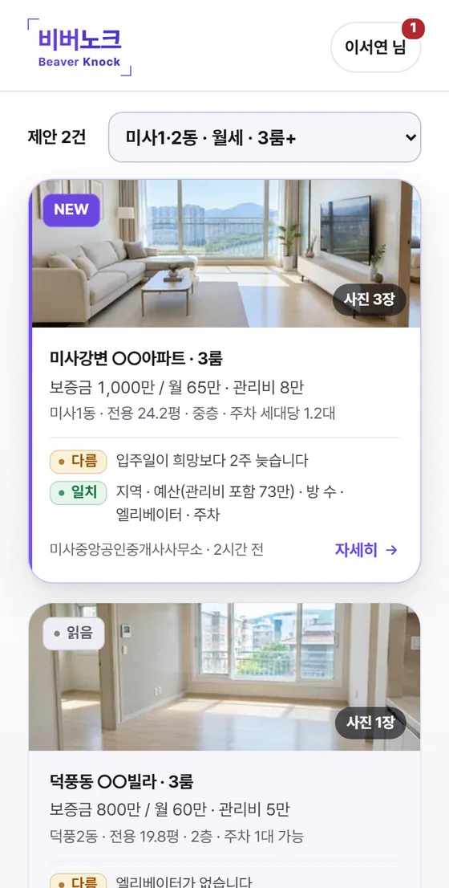
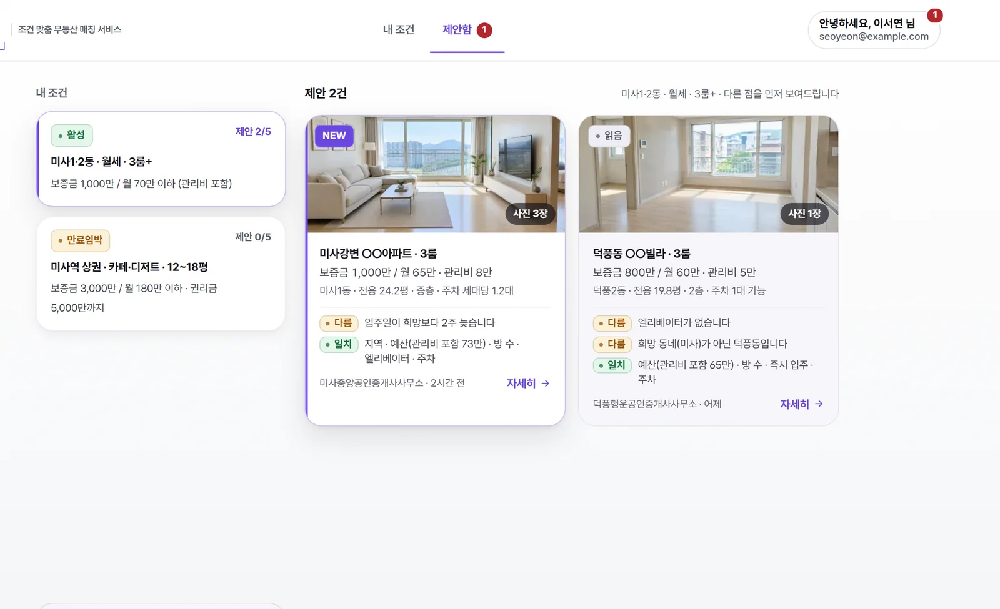
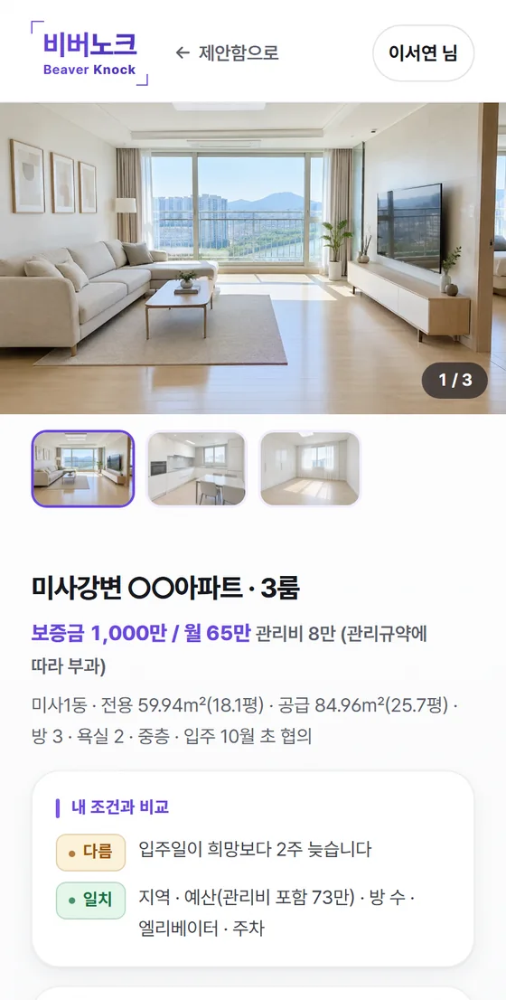
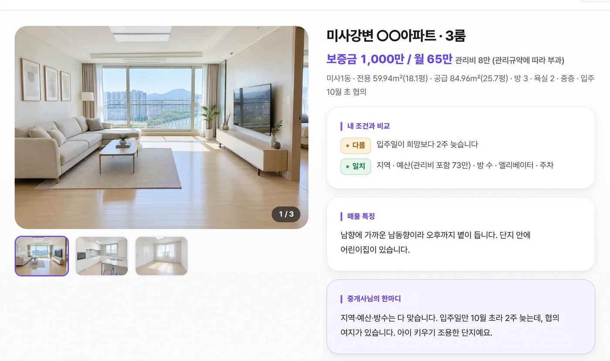
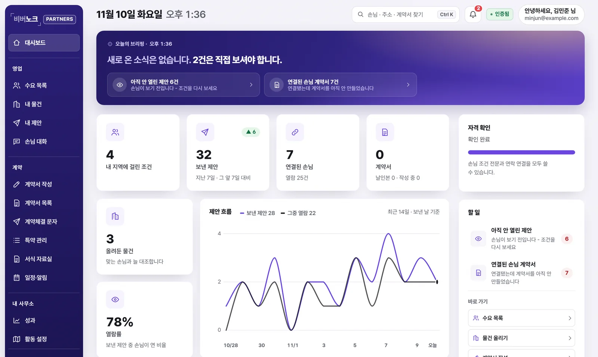

<!doctype html>
<html lang="ko">
<head>
<meta charset="utf-8">
<meta name="viewport" content="width=device-width, initial-scale=1">
<!-- 파비콘 (2026-11-10 바뀐 보라 #6A46E0 계열 · 흰 문틀) - 선명한 SVG 먼저, 못 읽는 곳은 ico -->
<!-- 파비콘 = 로고 심벌(브래킷 + 비버/노크 두 줄) - 2026-11-10 대표님 '파비콘도 로고 심벌로'. 글자가 있어 SVG 대신 그린 PNG -->
<link rel="icon" type="image/png" sizes="32x32" href="favicon-32.png?v=3">
<link rel="icon" type="image/png" sizes="192x192" href="icon-192.png?v=3">
<link rel="icon" type="image/x-icon" href="favicon.ico?v=3" sizes="any">
<link rel="apple-touch-icon" href="apple-touch-icon.png?v=3">
<meta name="theme-color" content="#6A46E0">
<!-- 비버리 그림 미리 받기는 뺐다 (2026-11-08 리뷰) - 운영 · 대시보드 · 계약서 링크로 들어와도 안 쓰는 그림을 먼저 받았다. 그림은 화면을 그릴 때 받는다 -->
<meta name="description" content="찾아다니지 마세요. 조건을 걸어두면 문을 두드립니다. 서울·경기 조건매칭 부동산 - 전 과정 무료.">
<meta property="og:type" content="website">
<meta property="og:site_name" content="비버노크">
<meta property="og:title" content="비버노크 - 조건을 걸어두면 문을 두드립니다">
<meta property="og:description" content="원하는 집·가게의 조건을 남기면, 맞는 물건이 있는 공인중개사가 직접 연락합니다. 서울·경기에서 먼저 시작합니다.">
<meta property="og:url" content="https://beaverknock.co.kr">
<meta property="og:image" content="https://beaverknock.co.kr/og-image.png?v=4">
<meta property="og:image:width" content="1200">
<meta property="og:image:height" content="630">
<meta property="og:image:alt" content="문을 두드리는 공인중개사 비버리">
<meta property="og:locale" content="ko_KR">
<meta name="twitter:card" content="summary_large_image">
<meta name="twitter:title" content="비버노크 - 조건을 걸어두면 문을 두드립니다">
<meta name="twitter:description" content="원하는 집·가게의 조건을 남기면, 맞는 물건이 있는 공인중개사가 직접 연락합니다.">
<meta name="twitter:image" content="https://beaverknock.co.kr/og-image.png?v=4">
<title>비버노크 - 조건 맞춤 부동산 매칭</title>
<!-- Pretendard Variable v1.3.9 (SIL OFL 1.1, github.com/orioncactus/pretendard) - 쓰는 글자 묶음만 받는 조각 92개(fonts/pretendard/).
     2026-10-30 대표님 '폰트 가독성이 좋지 않아' - 예전 한 파일(fonts/pretendard-variable.woff2)은 9월 화면 글자만 담은 634자 축소판이라
     그 밖의 글자(한상혁의 혁 · 왼쪽의 왼 · 글꼴의 꼴 …)가 맑은 고딕으로 섞여 그려졌다. 조각마다 unicode-range 가 있어 그 화면에 나오는 조각만 받는다 -->
<style>@font-face{font-family:"Pretendard Variable";font-style:normal;font-display:swap;font-weight:45 920;src:url(fonts/pretendard/PretendardVariable.subset.0.woff2) format("woff2-variations");unicode-range:U+f9ca-fa0b,U+ff03-ff05,U+ff07,U+ff0a-ff0b,U+ff0d-ff19,U+ff1b,U+ff1d,U+ff20-ff5b,U+ff5d,U+ffe0-ffe3,U+ffe5-ffe6}
@font-face{font-family:"Pretendard Variable";font-style:normal;font-display:swap;font-weight:45 920;src:url(fonts/pretendard/PretendardVariable.subset.1.woff2) format("woff2-variations");unicode-range:U+d723-d728,U+d72a-d733,U+d735-d748,U+d74a-d74f,U+d752-d753,U+d755-d757,U+d75a-d75f,U+d762-d764,U+d766-d768,U+d76a-d76b,U+d76d-d76f,U+d771-d787,U+d789-d78b,U+d78d-d78f,U+d791-d797,U+d79a,U+d79c,U+d79e-d7a3,U+f900-f909,U+f90b-f92e}
@font-face{font-family:"Pretendard Variable";font-style:normal;font-display:swap;font-weight:45 920;src:url(fonts/pretendard/PretendardVariable.subset.2.woff2) format("woff2-variations");unicode-range:U+d679-d68b,U+d68e-d69e,U+d6a0,U+d6a2-d6a7,U+d6a9-d6c3,U+d6c6-d6c7,U+d6c9-d6cb,U+d6cd-d6d3,U+d6d5-d6d6,U+d6d8-d6e3,U+d6e5-d6e7,U+d6e9-d6fb,U+d6fd-d717,U+d719-d71f,U+d721-d722}
@font-face{font-family:"Pretendard Variable";font-style:normal;font-display:swap;font-weight:45 920;src:url(fonts/pretendard/PretendardVariable.subset.3.woff2) format("woff2-variations");unicode-range:U+d5bc-d5c7,U+d5ca-d5cb,U+d5cd-d5cf,U+d5d1-d5d7,U+d5d9-d5da,U+d5dc,U+d5de-d5e3,U+d5e6-d5e7,U+d5e9-d5eb,U+d5ed-d5f6,U+d5f8,U+d5fa-d5ff,U+d602-d603,U+d605-d607,U+d609-d60f,U+d612-d613,U+d616-d61b,U+d61d-d637,U+d63a-d63b,U+d63d-d63f,U+d641-d647,U+d64a-d64c,U+d64e-d653,U+d656-d657,U+d659-d65b,U+d65d-d666,U+d668,U+d66a-d678}
@font-face{font-family:"Pretendard Variable";font-style:normal;font-display:swap;font-weight:45 920;src:url(fonts/pretendard/PretendardVariable.subset.4.woff2) format("woff2-variations");unicode-range:U+d507,U+d509-d50b,U+d50d-d513,U+d515-d53b,U+d53e-d53f,U+d541-d543,U+d545-d54c,U+d54e,U+d550,U+d552-d557,U+d55a-d55b,U+d55d-d55f,U+d561-d564,U+d566-d567,U+d56a,U+d56c,U+d56e-d573,U+d576-d577,U+d579-d583,U+d585-d586,U+d58a-d5a4,U+d5a6-d5bb}
@font-face{font-family:"Pretendard Variable";font-style:normal;font-display:swap;font-weight:45 920;src:url(fonts/pretendard/PretendardVariable.subset.5.woff2) format("woff2-variations");unicode-range:U+d464-d477,U+d47a-d47b,U+d47d-d47f,U+d481-d487,U+d489-d48a,U+d48c,U+d48e-d4e7,U+d4e9-d503,U+d505-d506}
@font-face{font-family:"Pretendard Variable";font-style:normal;font-display:swap;font-weight:45 920;src:url(fonts/pretendard/PretendardVariable.subset.6.woff2) format("woff2-variations");unicode-range:U+d3bf-d3c7,U+d3ca-d3cf,U+d3d1-d3eb,U+d3ee-d3ef,U+d3f1-d3f3,U+d3f5-d3fb,U+d3fd-d400,U+d402-d45b,U+d45d-d463}
@font-face{font-family:"Pretendard Variable";font-style:normal;font-display:swap;font-weight:45 920;src:url(fonts/pretendard/PretendardVariable.subset.7.woff2) format("woff2-variations");unicode-range:U+d2ff,U+d302-d304,U+d306-d30b,U+d30f,U+d311-d313,U+d315-d31b,U+d31e,U+d322-d324,U+d326-d327,U+d32a-d32b,U+d32d-d32f,U+d331-d337,U+d339-d33c,U+d33e-d37b,U+d37e-d37f,U+d381-d383,U+d385-d38b,U+d38e-d390,U+d392-d397,U+d39a-d39b,U+d39d-d39f,U+d3a1-d3a7,U+d3a9-d3aa,U+d3ac,U+d3ae-d3b3,U+d3b5-d3b7,U+d3b9-d3bb,U+d3bd-d3be}
@font-face{font-family:"Pretendard Variable";font-style:normal;font-display:swap;font-weight:45 920;src:url(fonts/pretendard/PretendardVariable.subset.8.woff2) format("woff2-variations");unicode-range:U+d257-d27f,U+d281-d29b,U+d29d-d29f,U+d2a1-d2ab,U+d2ad-d2b7,U+d2ba-d2bb,U+d2bd-d2bf,U+d2c1-d2c7,U+d2c9-d2ef,U+d2f2-d2f3,U+d2f5-d2f7,U+d2f9-d2fe}
@font-face{font-family:"Pretendard Variable";font-style:normal;font-display:swap;font-weight:45 920;src:url(fonts/pretendard/PretendardVariable.subset.9.woff2) format("woff2-variations");unicode-range:U+d1b4,U+d1b6-d1f3,U+d1f5-d22b,U+d22e-d22f,U+d231-d233,U+d235-d23b,U+d23d-d240,U+d242-d256}
@font-face{font-family:"Pretendard Variable";font-style:normal;font-display:swap;font-weight:45 920;src:url(fonts/pretendard/PretendardVariable.subset.10.woff2) format("woff2-variations");unicode-range:U+d105-d12f,U+d132-d133,U+d135-d137,U+d139-d13f,U+d141-d142,U+d144,U+d146-d14b,U+d14e-d14f,U+d151-d153,U+d155-d15b,U+d15e-d187,U+d189-d19f,U+d1a2-d1a3,U+d1a5-d1a7,U+d1a9-d1af,U+d1b2-d1b3}
@font-face{font-family:"Pretendard Variable";font-style:normal;font-display:swap;font-weight:45 920;src:url(fonts/pretendard/PretendardVariable.subset.11.woff2) format("woff2-variations");unicode-range:U+d04b-d04f,U+d051-d057,U+d059-d06b,U+d06d-d06f,U+d071-d073,U+d075-d07b,U+d07e-d0a3,U+d0a6-d0a7,U+d0a9-d0ab,U+d0ad-d0b3,U+d0b6,U+d0b8,U+d0ba-d0bf,U+d0c2-d0c3,U+d0c5-d0c7,U+d0c9-d0cf,U+d0d2,U+d0d6-d0db,U+d0de-d0df,U+d0e1-d0e3,U+d0e5-d0eb,U+d0ee-d0f0,U+d0f2-d104}
@font-face{font-family:"Pretendard Variable";font-style:normal;font-display:swap;font-weight:45 920;src:url(fonts/pretendard/PretendardVariable.subset.12.woff2) format("woff2-variations");unicode-range:U+cfa2-cfc3,U+cfc5-cfdf,U+cfe2-cfe3,U+cfe5-cfe7,U+cfe9-cff4,U+cff6-cffb,U+cffd-cfff,U+d001-d003,U+d005-d017,U+d019-d033,U+d036-d037,U+d039-d03b,U+d03d-d04a}
@font-face{font-family:"Pretendard Variable";font-style:normal;font-display:swap;font-weight:45 920;src:url(fonts/pretendard/PretendardVariable.subset.13.woff2) format("woff2-variations");unicode-range:U+cef0-cef3,U+cef6,U+cef9-ceff,U+cf01-cf03,U+cf05-cf07,U+cf09-cf0f,U+cf11-cf12,U+cf14-cf1b,U+cf1d-cf1f,U+cf21-cf2f,U+cf31-cf53,U+cf56-cf57,U+cf59-cf5b,U+cf5d-cf63,U+cf66,U+cf68,U+cf6a-cf6f,U+cf71-cf84,U+cf86-cf8b,U+cf8d-cfa1}
@font-face{font-family:"Pretendard Variable";font-style:normal;font-display:swap;font-weight:45 920;src:url(fonts/pretendard/PretendardVariable.subset.14.woff2) format("woff2-variations");unicode-range:U+ce3c-ce57,U+ce5a-ce5b,U+ce5d-ce5f,U+ce61-ce67,U+ce6a,U+ce6c,U+ce6e-ce73,U+ce76-ce77,U+ce79-ce7b,U+ce7d-ce83,U+ce85-ce88,U+ce8a-ce8f,U+ce91-ce93,U+ce95-ce97,U+ce99-ce9f,U+cea2,U+cea4-ceab,U+cead-cee3,U+cee6-cee7,U+cee9-ceeb,U+ceed-ceef}
@font-face{font-family:"Pretendard Variable";font-style:normal;font-display:swap;font-weight:45 920;src:url(fonts/pretendard/PretendardVariable.subset.15.woff2) format("woff2-variations");unicode-range:U+cd92-cd93,U+cd96-cd97,U+cd99-cd9b,U+cd9d-cda3,U+cda6-cda8,U+cdaa-cdaf,U+cdb1-cdc3,U+cdc5-cdcb,U+cdcd-cde7,U+cde9-ce03,U+ce05-ce1f,U+ce22-ce34,U+ce36-ce3b}
@font-face{font-family:"Pretendard Variable";font-style:normal;font-display:swap;font-weight:45 920;src:url(fonts/pretendard/PretendardVariable.subset.16.woff2) format("woff2-variations");unicode-range:U+ccef-cd07,U+cd0a-cd0b,U+cd0d-cd1a,U+cd1c,U+cd1e-cd2b,U+cd2d-cd5b,U+cd5d-cd77,U+cd79-cd91}
@font-face{font-family:"Pretendard Variable";font-style:normal;font-display:swap;font-weight:45 920;src:url(fonts/pretendard/PretendardVariable.subset.17.woff2) format("woff2-variations");unicode-range:U+cc3f-cc43,U+cc46-cc47,U+cc49-cc4b,U+cc4d-cc53,U+cc55-cc58,U+cc5a-cc5f,U+cc61-cc97,U+cc9a-cc9b,U+cc9d-cc9f,U+cca1-cca7,U+ccaa,U+ccac,U+ccae-ccb3,U+ccb6-ccb7,U+ccb9-ccbb,U+ccbd-cccf,U+ccd1-cce3,U+cce5-ccee}
@font-face{font-family:"Pretendard Variable";font-style:normal;font-display:swap;font-weight:45 920;src:url(fonts/pretendard/PretendardVariable.subset.18.woff2) format("woff2-variations");unicode-range:U+cb91-cbd3,U+cbd5-cbe3,U+cbe5-cc0b,U+cc0e-cc0f,U+cc11-cc13,U+cc15-cc1b,U+cc1d-cc20,U+cc23-cc27,U+cc2a-cc2b,U+cc2d,U+cc2f,U+cc31-cc37,U+cc3a,U+cc3c}
@font-face{font-family:"Pretendard Variable";font-style:normal;font-display:swap;font-weight:45 920;src:url(fonts/pretendard/PretendardVariable.subset.19.woff2) format("woff2-variations");unicode-range:U+caf4-cb47,U+cb4a-cb90}
@font-face{font-family:"Pretendard Variable";font-style:normal;font-display:swap;font-weight:45 920;src:url(fonts/pretendard/PretendardVariable.subset.20.woff2) format("woff2-variations");unicode-range:U+ca4a-ca4b,U+ca4e-ca4f,U+ca51-ca53,U+ca55-ca5b,U+ca5d-ca60,U+ca62-ca83,U+ca85-cabb,U+cabe-cabf,U+cac1-cac3,U+cac5-cacb,U+cacd-cad0,U+cad2,U+cad4-cad8,U+cada-caf3}
@font-face{font-family:"Pretendard Variable";font-style:normal;font-display:swap;font-weight:45 920;src:url(fonts/pretendard/PretendardVariable.subset.21.woff2) format("woff2-variations");unicode-range:U+c996-c997,U+c99a-c99c,U+c99e-c9bf,U+c9c2-c9c3,U+c9c5-c9c7,U+c9c9-c9cf,U+c9d2,U+c9d4,U+c9d7-c9d8,U+c9db,U+c9de-c9df,U+c9e1-c9e3,U+c9e5-c9e6,U+c9e8-c9eb,U+c9ee-c9f0,U+c9f2-c9f7,U+c9f9-ca0b,U+ca0d-ca28,U+ca2a-ca49}
@font-face{font-family:"Pretendard Variable";font-style:normal;font-display:swap;font-weight:45 920;src:url(fonts/pretendard/PretendardVariable.subset.22.woff2) format("woff2-variations");unicode-range:U+c8e9-c8f4,U+c8f6-c8fb,U+c8fe-c8ff,U+c901-c903,U+c905-c90b,U+c90e-c910,U+c912-c917,U+c919-c92b,U+c92d-c94f,U+c951-c953,U+c955-c96b,U+c96d-c973,U+c975-c987,U+c98a-c98b,U+c98d-c98f,U+c991-c995}
@font-face{font-family:"Pretendard Variable";font-style:normal;font-display:swap;font-weight:45 920;src:url(fonts/pretendard/PretendardVariable.subset.23.woff2) format("woff2-variations");unicode-range:U+c841-c84b,U+c84d-c86f,U+c872-c873,U+c875-c877,U+c879-c87f,U+c882-c884,U+c887-c88a,U+c88d-c8c3,U+c8c5-c8df,U+c8e1-c8e8}
@font-face{font-family:"Pretendard Variable";font-style:normal;font-display:swap;font-weight:45 920;src:url(fonts/pretendard/PretendardVariable.subset.24.woff2) format("woff2-variations");unicode-range:U+c779-c77b,U+c77e-c782,U+c786,U+c78b,U+c78d,U+c78f,U+c792-c793,U+c795,U+c797,U+c799-c79f,U+c7a2,U+c7a7-c7ab,U+c7ae-c7bb,U+c7bd-c7c0,U+c7c2-c7c7,U+c7c9-c7dc,U+c7de-c7ff,U+c802-c803,U+c805-c807,U+c809,U+c80b-c80f,U+c812,U+c814,U+c817-c81b,U+c81e-c81f,U+c821-c823,U+c825-c82e,U+c830-c837,U+c839-c83b,U+c83d-c840}
@font-face{font-family:"Pretendard Variable";font-style:normal;font-display:swap;font-weight:45 920;src:url(fonts/pretendard/PretendardVariable.subset.25.woff2) format("woff2-variations");unicode-range:U+c6bb-c6bf,U+c6c2,U+c6c4,U+c6c6-c6cb,U+c6ce-c6cf,U+c6d1-c6d3,U+c6d5-c6db,U+c6dd-c6df,U+c6e1-c6e7,U+c6e9-c6eb,U+c6ed-c6ef,U+c6f1-c6f8,U+c6fa-c703,U+c705-c707,U+c709-c70b,U+c70d-c716,U+c718,U+c71a-c71f,U+c722-c723,U+c725-c727,U+c729-c734,U+c736-c73b,U+c73e-c73f,U+c741-c743,U+c745-c74b,U+c74e-c750,U+c752-c757,U+c759-c773,U+c776-c777}
@font-face{font-family:"Pretendard Variable";font-style:normal;font-display:swap;font-weight:45 920;src:url(fonts/pretendard/PretendardVariable.subset.26.woff2) format("woff2-variations");unicode-range:U+c5f5-c5fb,U+c5fe,U+c602-c605,U+c607,U+c609-c60f,U+c611-c61a,U+c61c-c623,U+c626-c627,U+c629-c62b,U+c62d,U+c62f-c632,U+c636,U+c638,U+c63a-c63f,U+c642-c643,U+c645-c647,U+c649-c652,U+c656-c65b,U+c65d-c65f,U+c661-c663,U+c665-c677,U+c679-c67b,U+c67d-c693,U+c696-c697,U+c699-c69b,U+c69d-c6a3,U+c6a6,U+c6a8,U+c6aa-c6af,U+c6b2-c6b3,U+c6b5-c6b7,U+c6b9-c6ba}
@font-face{font-family:"Pretendard Variable";font-style:normal;font-display:swap;font-weight:45 920;src:url(fonts/pretendard/PretendardVariable.subset.27.woff2) format("woff2-variations");unicode-range:U+c517-c527,U+c52a-c52b,U+c52d-c52f,U+c531-c538,U+c53a,U+c53c,U+c53e-c543,U+c546-c547,U+c54b,U+c54d-c552,U+c556,U+c55a-c55b,U+c55d,U+c55f,U+c562-c563,U+c565-c567,U+c569-c56f,U+c572,U+c574,U+c576-c57b,U+c57e-c57f,U+c581-c583,U+c585-c586,U+c588-c58b,U+c58e,U+c590,U+c592-c596,U+c599-c5b3,U+c5b6-c5b7,U+c5ba,U+c5be-c5c3,U+c5ca-c5cb,U+c5cd,U+c5cf,U+c5d2-c5d3,U+c5d5-c5d7,U+c5d9-c5df,U+c5e1-c5e2,U+c5e4,U+c5e6-c5eb,U+c5ef,U+c5f1-c5f3}
@font-face{font-family:"Pretendard Variable";font-style:normal;font-display:swap;font-weight:45 920;src:url(fonts/pretendard/PretendardVariable.subset.28.woff2) format("woff2-variations");unicode-range:U+c475-c4ef,U+c4f2-c4f3,U+c4f5-c4f7,U+c4f9-c4ff,U+c502-c50b,U+c50d-c516}
@font-face{font-family:"Pretendard Variable";font-style:normal;font-display:swap;font-weight:45 920;src:url(fonts/pretendard/PretendardVariable.subset.29.woff2) format("woff2-variations");unicode-range:U+c3d0-c3d7,U+c3da-c3db,U+c3dd-c3de,U+c3e1-c3ec,U+c3ee-c3f3,U+c3f5-c42b,U+c42d-c463,U+c466-c474}
@font-face{font-family:"Pretendard Variable";font-style:normal;font-display:swap;font-weight:45 920;src:url(fonts/pretendard/PretendardVariable.subset.30.woff2) format("woff2-variations");unicode-range:U+c32b-c367,U+c36a-c36b,U+c36d-c36f,U+c371-c377,U+c37a-c37b,U+c37e-c383,U+c385-c387,U+c389-c3cf}
@font-face{font-family:"Pretendard Variable";font-style:normal;font-display:swap;font-weight:45 920;src:url(fonts/pretendard/PretendardVariable.subset.31.woff2) format("woff2-variations");unicode-range:U+c26a-c26b,U+c26d-c26f,U+c271-c273,U+c275-c27b,U+c27e-c287,U+c289-c28f,U+c291-c297,U+c299-c29a,U+c29c-c2a3,U+c2a5-c2a7,U+c2a9-c2ab,U+c2ad-c2b3,U+c2b6,U+c2b8,U+c2ba-c2bb,U+c2bd-c2db,U+c2de-c2df,U+c2e1-c2e2,U+c2e5-c2ea,U+c2ee,U+c2f0,U+c2f2-c2f5,U+c2f7,U+c2fa-c2fb,U+c2fd-c2ff,U+c301-c307,U+c309-c30c,U+c30e-c312,U+c315-c323,U+c325-c328,U+c32a}
@font-face{font-family:"Pretendard Variable";font-style:normal;font-display:swap;font-weight:45 920;src:url(fonts/pretendard/PretendardVariable.subset.32.woff2) format("woff2-variations");unicode-range:U+c1bc-c1c3,U+c1c5-c1df,U+c1e1-c1fb,U+c1fd-c203,U+c205-c20c,U+c20e,U+c210-c217,U+c21a-c21b,U+c21d-c21e,U+c221-c227,U+c229-c22a,U+c22c,U+c22e,U+c230,U+c233-c24f,U+c251-c257,U+c259-c269}
@font-face{font-family:"Pretendard Variable";font-style:normal;font-display:swap;font-weight:45 920;src:url(fonts/pretendard/PretendardVariable.subset.33.woff2) format("woff2-variations");unicode-range:U+c101-c11b,U+c11f,U+c121-c123,U+c125-c12b,U+c12e,U+c132-c137,U+c13a-c13b,U+c13d-c13f,U+c141-c147,U+c14a,U+c14c-c153,U+c155-c157,U+c159-c15b,U+c15d-c166,U+c169-c16f,U+c171-c177,U+c179-c18b,U+c18e-c18f,U+c191-c193,U+c195-c19b,U+c19d-c19e,U+c1a0,U+c1a2-c1a4,U+c1a6-c1bb}
@font-face{font-family:"Pretendard Variable";font-style:normal;font-display:swap;font-weight:45 920;src:url(fonts/pretendard/PretendardVariable.subset.34.woff2) format("woff2-variations");unicode-range:U+c049-c057,U+c059-c05b,U+c05d-c05f,U+c061-c067,U+c069-c08f,U+c091-c0ab,U+c0ae-c0af,U+c0b1-c0b3,U+c0b5,U+c0b7-c0bb,U+c0be,U+c0c2-c0c7,U+c0ca-c0cb,U+c0cd-c0cf,U+c0d1-c0d7,U+c0d9-c0da,U+c0dc,U+c0de-c0e3,U+c0e5-c0eb,U+c0ed-c0f3,U+c0f6,U+c0f8,U+c0fa-c0ff}
@font-face{font-family:"Pretendard Variable";font-style:normal;font-display:swap;font-weight:45 920;src:url(fonts/pretendard/PretendardVariable.subset.35.woff2) format("woff2-variations");unicode-range:U+bfa7-bfaf,U+bfb1-bfc4,U+bfc6-bfcb,U+bfce-bfcf,U+bfd1-bfd3,U+bfd5-bfdb,U+bfdd-c048}
@font-face{font-family:"Pretendard Variable";font-style:normal;font-display:swap;font-weight:45 920;src:url(fonts/pretendard/PretendardVariable.subset.36.woff2) format("woff2-variations");unicode-range:U+bf07,U+bf09-bf3f,U+bf41-bf4f,U+bf52-bf54,U+bf56-bfa6}
@font-face{font-family:"Pretendard Variable";font-style:normal;font-display:swap;font-weight:45 920;src:url(fonts/pretendard/PretendardVariable.subset.37.woff2) format("woff2-variations");unicode-range:U+be56,U+be58,U+be5c-be5f,U+be62-be63,U+be65-be67,U+be69-be74,U+be76-be7b,U+be7e-be7f,U+be81-be8e,U+be90,U+be92-bea7,U+bea9-becf,U+bed2-bed3,U+bed5-bed6,U+bed9-bee3,U+bee6-bf06}
@font-face{font-family:"Pretendard Variable";font-style:normal;font-display:swap;font-weight:45 920;src:url(fonts/pretendard/PretendardVariable.subset.38.woff2) format("woff2-variations");unicode-range:U+bdb0-bdd3,U+bdd5-bdef,U+bdf1-be0b,U+be0d-be0f,U+be11-be13,U+be15-be43,U+be46-be47,U+be49-be4b,U+be4d-be53}
@font-face{font-family:"Pretendard Variable";font-style:normal;font-display:swap;font-weight:45 920;src:url(fonts/pretendard/PretendardVariable.subset.39.woff2) format("woff2-variations");unicode-range:U+bd03,U+bd06,U+bd08,U+bd0a-bd0f,U+bd11-bd22,U+bd25-bd47,U+bd49-bd58,U+bd5a-bd7f,U+bd82-bd83,U+bd85-bd87,U+bd8a-bd8f,U+bd91-bd92,U+bd94,U+bd96-bd98,U+bd9a-bdaf}
@font-face{font-family:"Pretendard Variable";font-style:normal;font-display:swap;font-weight:45 920;src:url(fonts/pretendard/PretendardVariable.subset.40.woff2) format("woff2-variations");unicode-range:U+bc4e-bc83,U+bc86-bc87,U+bc89-bc8b,U+bc8d-bc93,U+bc96,U+bc98,U+bc9b-bc9f,U+bca2-bca3,U+bca5-bca7,U+bca9-bcb2,U+bcb4-bcbb,U+bcbe-bcbf,U+bcc1-bcc3,U+bcc5-bccc,U+bcce-bcd0,U+bcd2-bcd4,U+bcd6-bcf3,U+bcf7,U+bcf9-bcfb,U+bcfd-bd02}
@font-face{font-family:"Pretendard Variable";font-style:normal;font-display:swap;font-weight:45 920;src:url(fonts/pretendard/PretendardVariable.subset.41.woff2) format("woff2-variations");unicode-range:U+bb90-bba3,U+bba5-bbab,U+bbad-bbbf,U+bbc1-bbf7,U+bbfa-bbfb,U+bbfd-bbfe,U+bc01-bc07,U+bc09-bc0a,U+bc0e,U+bc10,U+bc12-bc13,U+bc17,U+bc19-bc1a,U+bc1e,U+bc20-bc23,U+bc26,U+bc28,U+bc2a-bc2c,U+bc2e-bc2f,U+bc32-bc33,U+bc35-bc37,U+bc39-bc3f,U+bc41-bc42,U+bc44,U+bc46-bc48,U+bc4a-bc4d}
@font-face{font-family:"Pretendard Variable";font-style:normal;font-display:swap;font-weight:45 920;src:url(fonts/pretendard/PretendardVariable.subset.42.woff2) format("woff2-variations");unicode-range:U+bae6-bafb,U+bafd-bb17,U+bb19-bb33,U+bb37,U+bb39-bb3a,U+bb3d-bb43,U+bb45-bb46,U+bb48,U+bb4a-bb4f,U+bb51-bb53,U+bb55-bb57,U+bb59-bb62,U+bb64-bb8f}
@font-face{font-family:"Pretendard Variable";font-style:normal;font-display:swap;font-weight:45 920;src:url(fonts/pretendard/PretendardVariable.subset.43.woff2) format("woff2-variations");unicode-range:U+ba30-ba37,U+ba3a-ba3b,U+ba3d-ba3f,U+ba41-ba47,U+ba49-ba4a,U+ba4c,U+ba4e-ba53,U+ba56-ba57,U+ba59-ba5b,U+ba5d-ba63,U+ba65-ba66,U+ba68-ba6f,U+ba71-ba73,U+ba75-ba77,U+ba79-ba84,U+ba86,U+ba88-baa7,U+baaa,U+baad-baaf,U+bab1-bab7,U+baba,U+babc,U+babe-bae5}
@font-face{font-family:"Pretendard Variable";font-style:normal;font-display:swap;font-weight:45 920;src:url(fonts/pretendard/PretendardVariable.subset.44.woff2) format("woff2-variations");unicode-range:U+b96e-b973,U+b976-b977,U+b979-b97b,U+b97d-b983,U+b986,U+b988,U+b98a-b98d,U+b98f-b9ab,U+b9ae-b9af,U+b9b1-b9b3,U+b9b5-b9bb,U+b9be,U+b9c0,U+b9c2-b9c7,U+b9ca-b9cb,U+b9cd,U+b9d2-b9d7,U+b9da,U+b9dc,U+b9df-b9e0,U+b9e2,U+b9e6-b9e7,U+b9e9-b9f3,U+b9f6,U+b9f8,U+b9fb-ba2f}
@font-face{font-family:"Pretendard Variable";font-style:normal;font-display:swap;font-weight:45 920;src:url(fonts/pretendard/PretendardVariable.subset.45.woff2) format("woff2-variations");unicode-range:U+b8bf-b8cb,U+b8cd-b8e0,U+b8e2-b8e7,U+b8ea-b8eb,U+b8ed-b8ef,U+b8f1-b8f7,U+b8fa,U+b8fc,U+b8fe-b903,U+b905-b917,U+b919-b91f,U+b921-b93b,U+b93d-b957,U+b95a-b95b,U+b95d-b95f,U+b961-b967,U+b969-b96c}
@font-face{font-family:"Pretendard Variable";font-style:normal;font-display:swap;font-weight:45 920;src:url(fonts/pretendard/PretendardVariable.subset.46.woff2) format("woff2-variations");unicode-range:U+b80d-b80f,U+b811-b817,U+b81a,U+b81c-b823,U+b826-b827,U+b829-b82b,U+b82d-b833,U+b836,U+b83a-b83f,U+b841-b85b,U+b85e-b85f,U+b861-b863,U+b865-b86b,U+b86e,U+b870,U+b872-b8af,U+b8b1-b8be}
@font-face{font-family:"Pretendard Variable";font-style:normal;font-display:swap;font-weight:45 920;src:url(fonts/pretendard/PretendardVariable.subset.47.woff2) format("woff2-variations");unicode-range:U+b74d-b75f,U+b761-b763,U+b765-b774,U+b776-b77b,U+b77e-b77f,U+b781-b783,U+b785-b78b,U+b78e,U+b792-b796,U+b79a-b79b,U+b79d-b7a7,U+b7aa,U+b7ae-b7b3,U+b7b6-b7c8,U+b7ca-b7eb,U+b7ee-b7ef,U+b7f1-b7f3,U+b7f5-b7fb,U+b7fe,U+b802-b806,U+b80a-b80b}
@font-face{font-family:"Pretendard Variable";font-style:normal;font-display:swap;font-weight:45 920;src:url(fonts/pretendard/PretendardVariable.subset.48.woff2) format("woff2-variations");unicode-range:U+b6a7-b6aa,U+b6ac-b6b0,U+b6b2-b6ef,U+b6f1-b727,U+b72a-b72b,U+b72d-b72e,U+b731-b737,U+b739-b73a,U+b73c-b743,U+b745-b74c}
@font-face{font-family:"Pretendard Variable";font-style:normal;font-display:swap;font-weight:45 920;src:url(fonts/pretendard/PretendardVariable.subset.49.woff2) format("woff2-variations");unicode-range:U+b605-b60f,U+b612-b617,U+b619-b624,U+b626-b69b,U+b69e-b6a3,U+b6a5-b6a6}
@font-face{font-family:"Pretendard Variable";font-style:normal;font-display:swap;font-weight:45 920;src:url(fonts/pretendard/PretendardVariable.subset.50.woff2) format("woff2-variations");unicode-range:U+b55f,U+b562-b583,U+b585-b59f,U+b5a2-b5a3,U+b5a5-b5a7,U+b5a9-b5b2,U+b5b5-b5ba,U+b5bd-b604}
@font-face{font-family:"Pretendard Variable";font-style:normal;font-display:swap;font-weight:45 920;src:url(fonts/pretendard/PretendardVariable.subset.51.woff2) format("woff2-variations");unicode-range:U+b4a5-b4b6,U+b4b8-b4bf,U+b4c1-b4c7,U+b4c9-b4db,U+b4de-b4df,U+b4e1-b4e2,U+b4e5-b4eb,U+b4ee,U+b4f0,U+b4f2-b513,U+b516-b517,U+b519-b51a,U+b51d-b523,U+b526,U+b528,U+b52b-b52f,U+b532-b533,U+b535-b537,U+b539-b53f,U+b541-b544,U+b546-b54b,U+b54d-b54f,U+b551-b55b,U+b55d-b55e}
@font-face{font-family:"Pretendard Variable";font-style:normal;font-display:swap;font-weight:45 920;src:url(fonts/pretendard/PretendardVariable.subset.52.woff2) format("woff2-variations");unicode-range:U+b3f8-b3fb,U+b3fd-b40f,U+b411-b417,U+b419-b41b,U+b41d-b41f,U+b421-b427,U+b42a-b42b,U+b42d-b44f,U+b452-b453,U+b455-b457,U+b459-b45f,U+b462-b464,U+b466-b46b,U+b46d-b47f,U+b481-b4a3}
@font-face{font-family:"Pretendard Variable";font-style:normal;font-display:swap;font-weight:45 920;src:url(fonts/pretendard/PretendardVariable.subset.53.woff2) format("woff2-variations");unicode-range:U+b342-b353,U+b356-b357,U+b359-b35b,U+b35d-b35e,U+b360-b363,U+b366,U+b368,U+b36a-b36d,U+b36f,U+b372-b373,U+b375-b377,U+b379-b37f,U+b381-b382,U+b384,U+b386-b38b,U+b38d-b3c3,U+b3c6-b3c7,U+b3c9-b3ca,U+b3cd-b3d3,U+b3d6,U+b3d8,U+b3da-b3f7}
@font-face{font-family:"Pretendard Variable";font-style:normal;font-display:swap;font-weight:45 920;src:url(fonts/pretendard/PretendardVariable.subset.54.woff2) format("woff2-variations");unicode-range:U+b27c-b283,U+b285-b28f,U+b292-b293,U+b295-b297,U+b29a-b29f,U+b2a1-b2a4,U+b2a7-b2a9,U+b2ab,U+b2ad-b2c7,U+b2ca-b2cb,U+b2cd-b2cf,U+b2d1-b2d7,U+b2da,U+b2dc,U+b2de-b2e3,U+b2e7,U+b2e9-b2ea,U+b2ef-b2f3,U+b2f6,U+b2f8,U+b2fa-b2fb,U+b2fd-b2fe,U+b302-b303,U+b305-b307,U+b309-b30f,U+b312,U+b316-b31b,U+b31d-b341}
@font-face{font-family:"Pretendard Variable";font-style:normal;font-display:swap;font-weight:45 920;src:url(fonts/pretendard/PretendardVariable.subset.55.woff2) format("woff2-variations");unicode-range:U+b1d6-b1e7,U+b1e9-b1fc,U+b1fe-b203,U+b206-b207,U+b209-b20b,U+b20d-b213,U+b216-b21f,U+b221-b257,U+b259-b273,U+b275-b27b}
@font-face{font-family:"Pretendard Variable";font-style:normal;font-display:swap;font-weight:45 920;src:url(fonts/pretendard/PretendardVariable.subset.56.woff2) format("woff2-variations");unicode-range:U+b120-b122,U+b126-b127,U+b129-b12b,U+b12d-b133,U+b136,U+b138,U+b13a-b13f,U+b142-b143,U+b145-b14f,U+b151-b153,U+b156-b157,U+b159-b177,U+b17a-b17b,U+b17d-b17f,U+b181-b187,U+b189-b18c,U+b18e-b191,U+b195-b1a7,U+b1a9-b1cb,U+b1cd-b1d5}
@font-face{font-family:"Pretendard Variable";font-style:normal;font-display:swap;font-weight:45 920;src:url(fonts/pretendard/PretendardVariable.subset.57.woff2) format("woff2-variations");unicode-range:U+b05f-b07b,U+b07e-b07f,U+b081-b083,U+b085-b08b,U+b08d-b097,U+b09b,U+b09d-b09f,U+b0a2-b0a7,U+b0aa,U+b0b0,U+b0b2,U+b0b6-b0b7,U+b0b9-b0bb,U+b0bd-b0c3,U+b0c6-b0c7,U+b0ca-b0cf,U+b0d1-b0df,U+b0e1-b0e4,U+b0e6-b107,U+b10a-b10b,U+b10d-b10f,U+b111-b112,U+b114-b117,U+b119-b11a,U+b11c-b11f}
@font-face{font-family:"Pretendard Variable";font-style:normal;font-display:swap;font-weight:45 920;src:url(fonts/pretendard/PretendardVariable.subset.58.woff2) format("woff2-variations");unicode-range:U+afac-afb7,U+afba-afbb,U+afbd-afbf,U+afc1-afc6,U+afca-afcc,U+afce-afd3,U+afd5-afe7,U+afe9-afef,U+aff1-b00b,U+b00d-b00f,U+b011-b013,U+b015-b01b,U+b01d-b027,U+b029-b043,U+b045-b047,U+b049,U+b04b,U+b04d-b052,U+b055-b056,U+b058-b05c,U+b05e}
@font-face{font-family:"Pretendard Variable";font-style:normal;font-display:swap;font-weight:45 920;src:url(fonts/pretendard/PretendardVariable.subset.59.woff2) format("woff2-variations");unicode-range:U+af03-af07,U+af09-af2b,U+af2e-af33,U+af35-af3b,U+af3e-af40,U+af44-af47,U+af4a-af5c,U+af5e-af63,U+af65-af7f,U+af81-afab}
@font-face{font-family:"Pretendard Variable";font-style:normal;font-display:swap;font-weight:45 920;src:url(fonts/pretendard/PretendardVariable.subset.60.woff2) format("woff2-variations");unicode-range:U+ae56-ae5b,U+ae5e-ae60,U+ae62-ae64,U+ae66-ae67,U+ae69-ae6b,U+ae6d-ae83,U+ae85-aebb,U+aebf,U+aec1-aec3,U+aec5-aecb,U+aece,U+aed0,U+aed2-aed7,U+aed9-aef3,U+aef5-af02}
@font-face{font-family:"Pretendard Variable";font-style:normal;font-display:swap;font-weight:45 920;src:url(fonts/pretendard/PretendardVariable.subset.61.woff2) format("woff2-variations");unicode-range:U+ad9c-ada3,U+ada5-adbf,U+adc1-adc3,U+adc5-adc7,U+adc9-add2,U+add4-addb,U+addd-addf,U+ade1-ade3,U+ade5-adf7,U+adfa-adfb,U+adfd-adff,U+ae02-ae07,U+ae0a,U+ae0c,U+ae0e-ae13,U+ae15-ae2f,U+ae31-ae33,U+ae35-ae37,U+ae39-ae3f,U+ae42,U+ae44,U+ae46-ae49,U+ae4b,U+ae4f,U+ae51-ae53,U+ae55}
@font-face{font-family:"Pretendard Variable";font-style:normal;font-display:swap;font-weight:45 920;src:url(fonts/pretendard/PretendardVariable.subset.62.woff2) format("woff2-variations");unicode-range:U+ace2-ace3,U+ace5-ace6,U+ace9-acef,U+acf2,U+acf4,U+acf7-acfb,U+acfe-acff,U+ad01-ad03,U+ad05-ad0b,U+ad0d-ad10,U+ad12-ad1b,U+ad1d-ad33,U+ad35-ad48,U+ad4a-ad4f,U+ad51-ad6b,U+ad6e-ad6f,U+ad71-ad72,U+ad77-ad7c,U+ad7e,U+ad80,U+ad82-ad87,U+ad89-ad8b,U+ad8d-ad8f,U+ad91-ad9b}
@font-face{font-family:"Pretendard Variable";font-style:normal;font-display:swap;font-weight:45 920;src:url(fonts/pretendard/PretendardVariable.subset.63.woff2) format("woff2-variations");unicode-range:U+ac25-ac2c,U+ac2e,U+ac30,U+ac32-ac37,U+ac39-ac3f,U+ac41-ac4c,U+ac4e-ac6f,U+ac72-ac73,U+ac75-ac76,U+ac79-ac7f,U+ac82,U+ac84-ac88,U+ac8a-ac8b,U+ac8d-ac8f,U+ac91-ac93,U+ac95-ac9b,U+ac9d-ac9e,U+aca1-aca7,U+acab,U+acad-acaf,U+acb1-acb7,U+acba-acbb,U+acbe-acc0,U+acc2-acc3,U+acc5-acdf}
@font-face{font-family:"Pretendard Variable";font-style:normal;font-display:swap;font-weight:45 920;src:url(fonts/pretendard/PretendardVariable.subset.64.woff2) format("woff2-variations");unicode-range:U+99df,U+99ed,U+99f1,U+99ff,U+9a01,U+9a08,U+9a0e-9a0f,U+9a19,U+9a2b,U+9a30,U+9a36-9a37,U+9a40,U+9a43,U+9a45,U+9a4d,U+9a55,U+9a57,U+9a5a-9a5b,U+9a5f,U+9a62,U+9a65,U+9a69-9a6a,U+9aa8,U+9ab8,U+9ad3,U+9ae5,U+9aee,U+9b1a,U+9b27,U+9b2a,U+9b31,U+9b3c,U+9b41-9b45,U+9b4f,U+9b54,U+9b5a,U+9b6f,U+9b8e,U+9b91,U+9b9f,U+9bab,U+9bae,U+9bc9,U+9bd6,U+9be4,U+9be8,U+9c0d,U+9c10,U+9c12,U+9c15,U+9c25,U+9c32,U+9c3b,U+9c47,U+9c49,U+9c57,U+9ce5,U+9ce7,U+9ce9,U+9cf3-9cf4,U+9cf6,U+9d09,U+9d1b,U+9d26,U+9d28,U+9d3b,U+9d51,U+9d5d,U+9d60-9d61,U+9d6c,U+9d72,U+9da9,U+9daf,U+9db4,U+9dc4,U+9dd7,U+9df2,U+9df8-9dfa,U+9e1a,U+9e1e,U+9e75,U+9e79,U+9e7d,U+9e7f,U+9e92-9e93,U+9e97,U+9e9d,U+9e9f,U+9ea5,U+9eb4-9eb5,U+9ebb,U+9ebe,U+9ec3,U+9ecd-9ece,U+9ed4,U+9ed8,U+9edb-9edc,U+9ede,U+9ee8,U+9ef4,U+9f07-9f08,U+9f0e,U+9f13,U+9f20,U+9f3b,U+9f4a-9f4b,U+9f4e,U+9f52,U+9f5f,U+9f61,U+9f67,U+9f6a,U+9f6c,U+9f77,U+9f8d,U+9f90,U+9f95,U+9f9c,U+ac02-ac03,U+ac05-ac06,U+ac09-ac0f,U+ac17-ac18,U+ac1b,U+ac1e-ac1f,U+ac21-ac23}
@font-face{font-family:"Pretendard Variable";font-style:normal;font-display:swap;font-weight:45 920;src:url(fonts/pretendard/PretendardVariable.subset.65.woff2) format("woff2-variations");unicode-range:U+338c-339c,U+339f-33a0,U+33a2-33cb,U+33cf-33d0,U+33d3,U+33d6,U+33d8,U+33db-33dd,U+4e01,U+4e03,U+4e07-4e08,U+4e11,U+4e14-4e15,U+4e18-4e19,U+4e1e,U+4e32,U+4e38-4e39,U+4e42-4e43,U+4e45,U+4e4d-4e4f,U+4e56,U+4e58-4e59,U+4e5d-4e5e,U+4e6b,U+4e6d,U+4e73,U+4e76-4e77,U+4e7e,U+4e82,U+4e86,U+4e88,U+4e8e,U+4e90-4e92,U+4e94-4e95,U+4e98,U+4e9b,U+4e9e,U+4ea1-4ea2,U+4ea4-4ea6,U+4ea8,U+4eab,U+4ead-4eae,U+4eb6,U+4ec0-4ec1,U+4ec4,U+4ec7,U+4ecb,U+4ecd,U+4ed4-4ed5,U+4ed7-4ed9,U+4edd,U+4edf,U+4ee4,U+4ef0,U+4ef2,U+4ef6-4ef7,U+4efb,U+4f01,U+4f09,U+4f0b,U+4f0d-4f11,U+4f2f,U+4f34,U+4f36,U+4f38,U+4f3a,U+4f3c-4f3d}
@font-face{font-family:"Pretendard Variable";font-style:normal;font-display:swap;font-weight:45 920;src:url(fonts/pretendard/PretendardVariable.subset.66.woff2) format("woff2-variations");unicode-range:U+3136,U+3138,U+313a-3140,U+3143-3144,U+3150,U+3152,U+3154-3156,U+3158-315b,U+315d-315f,U+3162,U+3164-318c,U+318e,U+3200-321b,U+3231,U+3239,U+3251-325a,U+3260-327b,U+327e-327f,U+328a-3290,U+3294,U+329e,U+32a5,U+3380-3384,U+3388-338b}
@font-face{font-family:"Pretendard Variable";font-style:normal;font-display:swap;font-weight:45 920;src:url(fonts/pretendard/PretendardVariable.subset.67.woff2) format("woff2-variations");unicode-range:U+2f7d,U+2f7f-2f8b,U+2f8e-2f90,U+2f92-2f97,U+2f99-2fa0,U+2fa2-2fa3,U+2fa5-2fa9,U+2fac-2fb1,U+2fb3-2fbc,U+2fc1-2fca,U+2fcd-2fd4,U+3003,U+3012-3019,U+301c,U+301e-3020,U+3036,U+3041,U+3043,U+3045,U+3047,U+3049,U+304e,U+3050,U+3052,U+3056,U+305a,U+305c,U+305e,U+3062,U+3065,U+306c,U+3070-307d,U+3080,U+3085,U+3087,U+308e,U+3090-3091,U+30a1,U+30a5,U+30a9,U+30ae,U+30b1-30b2,U+30b4,U+30b6,U+30bc-30be,U+30c2,U+30c5,U+30cc,U+30d2,U+30d4,U+30d8-30dd,U+30e4,U+30e6,U+30e8,U+30ee,U+30f0-30f2,U+30f4-30f6,U+3133,U+3135}
@font-face{font-family:"Pretendard Variable";font-style:normal;font-display:swap;font-weight:45 920;src:url(fonts/pretendard/PretendardVariable.subset.68.woff2) format("woff2-variations");unicode-range:U+2541-254b,U+25a4-25a9,U+25b1,U+25b5,U+25b9,U+25bf,U+25c1,U+25c3,U+25c9-25ca,U+25cc,U+25ce,U+25d0-25d1,U+25e6,U+25ef,U+260f,U+261d,U+261f,U+262f,U+2660,U+2664,U+2667-2669,U+266d,U+266f,U+2716,U+271a,U+273d,U+2756,U+2776-277f,U+278a-2793,U+2963,U+2965,U+2ac5-2ac6,U+2acb-2acc,U+2f00,U+2f04,U+2f06,U+2f08,U+2f0a-2f0b,U+2f11-2f12,U+2f14,U+2f17-2f18,U+2f1c-2f1d,U+2f1f-2f20,U+2f23-2f26,U+2f28-2f29,U+2f2b,U+2f2d,U+2f2f-2f32,U+2f38,U+2f3c-2f40,U+2f42-2f4c,U+2f4f-2f52,U+2f54-2f58,U+2f5a-2f66,U+2f69-2f70,U+2f72-2f76,U+2f78,U+2f7a-2f7c}
@font-face{font-family:"Pretendard Variable";font-style:normal;font-display:swap;font-weight:45 920;src:url(fonts/pretendard/PretendardVariable.subset.69.woff2) format("woff2-variations");unicode-range:U+2479-2487,U+249c-24d1,U+24d3-24d7,U+24d9-24e9,U+24eb-24f4,U+2500-2501,U+2503,U+250c-2513,U+2515-2516,U+2518-2540}
@font-face{font-family:"Pretendard Variable";font-style:normal;font-display:swap;font-weight:45 920;src:url(fonts/pretendard/PretendardVariable.subset.70.woff2) format("woff2-variations");unicode-range:U+215b-215e,U+2162-2169,U+2170-2179,U+2195-2199,U+21b0-21b4,U+21bc,U+21c0,U+21c4-21c5,U+21cd,U+21cf-21d4,U+21e0-21e3,U+21e6-21e9,U+2200,U+2202-2203,U+2206-2209,U+220b-220c,U+220f,U+2211,U+2213,U+221a,U+221d-2220,U+2222,U+2225-2227,U+2229-222c,U+222e,U+2234-2237,U+223d,U+2243,U+2245,U+2248,U+2250-2253,U+225a,U+2260-2262,U+2264-2267,U+226a-226b,U+226e-2273,U+2276-2277,U+2279-227b,U+2280-2287,U+228a-228b,U+2295-2297,U+22a3-22a5,U+22bb-22bc,U+22ce-22cf,U+22da-22db,U+22ee-22ef,U+2306,U+2312,U+2314,U+2467-2478}
@font-face{font-family:"Pretendard Variable";font-style:normal;font-display:swap;font-weight:45 920;src:url(fonts/pretendard/PretendardVariable.subset.71.woff2) format("woff2-variations");unicode-range:U+81-82,U+84,U+a2-a5,U+a7-a8,U+aa,U+ac,U+b1-b3,U+b6,U+b8-ba,U+bc-be,U+c0,U+c2,U+c6-cb,U+ce-d0,U+d4,U+d8-d9,U+db-dc,U+de-df,U+e6,U+eb,U+ee-f0,U+f4,U+f7-f9,U+fb,U+fe-ff,U+111,U+126-127,U+132-133,U+138,U+13f-142,U+149-14b,U+152-153,U+166-167,U+2bc,U+2c7,U+2d0,U+2d8-2d9,U+2db-2dd,U+391-394,U+396-3a1,U+3a3-3a9,U+3b2-3b6,U+3b8,U+3bc,U+3be-3c1,U+3c3-3c9,U+2010,U+2015-2016,U+2018-2019,U+201b,U+201f-2021,U+2025,U+2030,U+2033-2036,U+203c,U+203e,U+2042,U+2074,U+207a-207f,U+2081-2084,U+2109,U+2113,U+2116,U+2121,U+2126,U+212b,U+2153-2154}
@font-face{font-family:"Pretendard Variable";font-style:normal;font-display:swap;font-weight:45 920;src:url(fonts/pretendard/PretendardVariable.subset.72.woff2) format("woff2-variations");unicode-range:U+e8,U+2da,U+2160,U+2194,U+3054,U+3058,U+306d,U+3086,U+308d,U+30ac,U+30bb,U+30c4,U+30cd-30ce,U+30e2,U+3132,U+3146,U+3149,U+339d,U+4e3b,U+4f0a,U+4fdd,U+4fe1,U+5409,U+540c,U+5834,U+592a-592b,U+5b9a,U+5dde,U+5e0c,U+5e73,U+5f0f,U+60f3,U+653f,U+661f,U+662f,U+667a,U+683c,U+6b4c,U+6c11,U+767c,U+76ee,U+76f4,U+77f3,U+79d1,U+7a7a,U+7b2c,U+7d22,U+8207,U+8a00,U+8a71,U+9280,U+9580,U+958b,U+96c6,U+9762,U+98df,U+9ed1,U+ac2d,U+adc8,U+add3,U+af48,U+b014,U+b134-b135,U+b158,U+b2aa,U+b35f,U+b6a4,U+b9cf,U+bb63,U+bd23,U+be91,U+c29b,U+c3f4,U+c42c,U+c55c,U+c573,U+c58f,U+c78c,U+c7dd,U+c8f5,U+cad1,U+cc48,U+cf10,U+cf20,U+d03c,U+d07d,U+d2a0,U+d30e,U+d38d,U+d3a8,U+d3c8,U+d5e5,U+d5f9,U+d6e4,U+f90a,U+ff02,U+ff1c}
@font-face{font-family:"Pretendard Variable";font-style:normal;font-display:swap;font-weight:45 920;src:url(fonts/pretendard/PretendardVariable.subset.73.woff2) format("woff2-variations");unicode-range:U+3b1,U+2466,U+25a1,U+25a3,U+261c,U+3008-3009,U+305b,U+305d,U+3069,U+30a7,U+30ba,U+30cf,U+30ef,U+3151,U+3157,U+4e4b,U+4e5f,U+4e8c,U+4eca,U+4ed6,U+4f5b,U+50cf,U+5149,U+5165,U+5171,U+5229,U+529b,U+5316,U+539f,U+53f2,U+571f,U+5728,U+58eb,U+591c,U+5b78,U+5c11,U+5c55,U+5ddd,U+5e02,U+5fb7,U+60c5,U+610f,U+611f,U+6625,U+66f8,U+6797,U+679c,U+682a,U+6d2a,U+706b,U+7406,U+767b,U+76f8,U+77e5,U+7acb,U+898b,U+8a69,U+8def,U+8fd1,U+901a,U+90e8,U+91cd,U+975e,U+ae14,U+ae6c,U+aec0,U+afc7,U+afc9,U+b01c,U+b028,U+b308,U+b311,U+b314,U+b31c,U+b524,U+b560,U+b764,U+b920,U+b9e3,U+bd48,U+be7d,U+c0db,U+c231,U+c270,U+c2e3,U+c37d,U+c3ed,U+c530,U+c6a5,U+c6dc,U+c7a4,U+c954,U+c974,U+d000,U+d565,U+d667,U+d6c5,U+d79d,U+ff1e}
@font-face{font-family:"Pretendard Variable";font-style:normal;font-display:swap;font-weight:45 920;src:url(fonts/pretendard/PretendardVariable.subset.74.woff2) format("woff2-variations");unicode-range:U+131,U+2032,U+2465,U+2642,U+3048,U+3051,U+3083-3084,U+308f,U+30c0,U+30d1,U+30d3,U+30d6,U+30df,U+30e7,U+3153,U+4e16,U+4e8b,U+4ee5,U+5206,U+52a0,U+52d5,U+53e4,U+53ef,U+54c1,U+57ce,U+597d,U+5b8c,U+5ea6,U+5f8c,U+5f97,U+6210,U+6240,U+624b,U+6728,U+6bd4,U+7236,U+7269,U+7279,U+738b,U+7528,U+7530,U+767e,U+798f,U+8005,U+8a18,U+90fd,U+91cc,U+9577,U+9593,U+98a8,U+ac20,U+acf6,U+ad90,U+af5d,U+af80,U+afcd,U+aff0,U+b0a1,U+b0b5,U+b1fd,U+b2fc,U+b380,U+b51b,U+b584,U+b5b3,U+b8fd,U+b93c,U+b9f4,U+bb44,U+bc08,U+bc27,U+bc49,U+be55,U+be64,U+bfb0,U+bfc5,U+c178,U+c21f,U+c314,U+c4f1,U+c58d,U+c664,U+c698,U+c6a7,U+c6c1,U+c9ed,U+cac0,U+cacc,U+cad9,U+ccb5,U+cdcc,U+d0e4,U+d143,U+d320,U+d330,U+d54d,U+ff06,U+ff1f,U+ff5e}
@font-face{font-family:"Pretendard Variable";font-style:normal;font-display:swap;font-weight:45 920;src:url(fonts/pretendard/PretendardVariable.subset.75.woff2) format("woff2-variations");unicode-range:U+b4,U+20a9,U+20ac,U+2190,U+24d8,U+2502,U+2514,U+2592,U+25c7-25c8,U+2663,U+3060,U+3064,U+3081,U+3088,U+30a3,U+30a6,U+30aa,U+30b5,U+30c7,U+30ca-30cb,U+30d0,U+30e3,U+30e5,U+339e,U+4e09,U+4eac,U+4f5c,U+5167-5168,U+516c,U+51fa,U+5408,U+540d,U+591a,U+5b57,U+6211,U+65b9,U+660e,U+6642,U+6700,U+6b63,U+6e2f,U+7063,U+7532,U+793e,U+81ea,U+8272,U+82b1,U+897f,U+8eca,U+91ce,U+ac38,U+ad76,U+ae84,U+aecc,U+b07d,U+b0b1,U+b215,U+b2a0,U+b310,U+b3d7,U+b52a,U+b618,U+b775,U+b797,U+bcd5,U+bd59,U+be80,U+bea8,U+bed1,U+bee4-bee5,U+c060,U+c2ef,U+c329,U+c3dc,U+c597,U+c5bd,U+c5e5,U+c69c,U+c9d6,U+ca29,U+ca5c,U+ca84,U+cc39,U+cc3b,U+ce89,U+cee5,U+cf65,U+cf85,U+d058,U+d145,U+d22d,U+d325,U+d37d,U+d3ad,U+d769,U+ff0c}
@font-face{font-family:"Pretendard Variable";font-style:normal;font-display:swap;font-weight:45 920;src:url(fonts/pretendard/PretendardVariable.subset.76.woff2) format("woff2-variations");unicode-range:U+2161,U+2228,U+2299,U+2464,U+2517,U+2640,U+3042,U+304a,U+3053,U+3061,U+307f,U+3082,U+308c,U+3092,U+30a8,U+30ab,U+30ad,U+30b0,U+30b3,U+30b7,U+30c1,U+30c6,U+30c9,U+30d5,U+30d7,U+30de,U+30e0-30e1,U+30ec-30ed,U+4e0b,U+4e0d,U+4ee3,U+53f0,U+548c,U+5b89,U+5bb6,U+5c0f,U+611b,U+6771,U+6aa2,U+6bcd,U+6c34,U+6cd5,U+6d77,U+767d,U+795e,U+8ecd,U+9999,U+9ad8,U+ac07,U+ac1a,U+ac40,U+ad0c,U+ad88,U+ada4,U+ae01,U+ae65,U+aebd,U+aec4,U+afe8,U+b139,U+b205,U+b383,U+b38c,U+b42c,U+b461,U+b55c,U+b78f,U+b8fb,U+b9f7,U+bafc,U+bc99,U+bed8,U+bfcd,U+c0bf,U+c0f9,U+c167,U+c204,U+c20f,U+c22f,U+c258,U+c298,U+c2bc,U+c388,U+c501,U+c50c,U+c5b9,U+c5ce,U+c641,U+c648,U+c73d,U+ca50,U+ca61,U+cc4c,U+ceac,U+d0d4,U+d5f7,U+d6d7,U+ff1a}
@font-face{font-family:"Pretendard Variable";font-style:normal;font-display:swap;font-weight:45 920;src:url(fonts/pretendard/PretendardVariable.subset.77.woff2) format("woff2-variations");unicode-range:U+2103,U+2463,U+25c6,U+25cb,U+266c,U+3001,U+300a,U+3046,U+304c-304d,U+304f,U+3055,U+3059,U+3063,U+3066-3068,U+306f,U+3089,U+30b8,U+30bf,U+314f,U+4e0a,U+570b,U+5730,U+5916,U+5929,U+5c71,U+5e74,U+5fc3,U+601d,U+6027,U+63d0,U+6709,U+6734,U+751f,U+7684,U+82f1,U+9053,U+91d1,U+97f3,U+ac2f,U+ac4d,U+adc4,U+ade4,U+ae41,U+ae4d-ae4e,U+aed1,U+afb9,U+b0e0,U+b299,U+b365,U+b46c,U+b480,U+b4c8,U+b7b4,U+b819,U+b918,U+baab,U+bab9,U+be8f,U+bed7,U+c0ec,U+c19f,U+c1a5,U+c3d9,U+c464,U+c53d,U+c553,U+c570,U+c5cc,U+c633,U+c6a4,U+c7a3,U+c7a6,U+c886,U+c9d9-c9da,U+c9ec,U+ca0c,U+cc21,U+cd1b,U+cd78,U+cdc4,U+cef8,U+cfe4,U+d0a5,U+d0b5,U+d0ec,U+d15d,U+d188,U+d23c,U+d2ac,U+d729,U+d79b,U+ff01,U+ff08-ff09,U+ff5c}
@font-face{font-family:"Pretendard Variable";font-style:normal;font-display:swap;font-weight:45 920;src:url(fonts/pretendard/PretendardVariable.subset.78.woff2) format("woff2-variations");unicode-range:U+2039-203a,U+223c,U+25b3,U+25b7,U+25bd,U+25cf,U+266a,U+3002,U+300b,U+304b,U+3057,U+305f,U+306a-306b,U+307e,U+308a-308b,U+3093,U+30a2,U+30af,U+30b9,U+30c3,U+30c8,U+30e9-30eb,U+33a1,U+4e00,U+524d,U+5357,U+5b50,U+7121,U+884c,U+9751,U+ac94,U+aebe,U+aecd,U+af08,U+af41,U+af49,U+b010,U+b053,U+b109,U+b11b,U+b128,U+b154,U+b291,U+b2e6,U+b301,U+b385,U+b525,U+b5b4,U+b729,U+b72f,U+b738,U+b7ff,U+b837,U+b975,U+ba67,U+bb47,U+bc1f,U+bd90,U+bfd4,U+c27c,U+c324,U+c379,U+c3e0,U+c465,U+c53b,U+c58c,U+c610,U+c653,U+c6cd,U+c813,U+c82f,U+c999,U+c9e0,U+cac4,U+cad3,U+cbd4,U+cc10,U+cc22,U+ccb8,U+ccbc,U+cda5,U+ce84,U+cea3,U+cf67,U+cfe1,U+d241,U+d30d,U+d31c,U+d391,U+d401,U+d479,U+d5c9,U+d5db,U+d649,U+d6d4}
@font-face{font-family:"Pretendard Variable";font-style:normal;font-display:swap;font-weight:45 920;src:url(fonts/pretendard/PretendardVariable.subset.79.woff2) format("woff2-variations");unicode-range:U+b0,U+e9,U+2193,U+2462,U+260e,U+261e,U+300e-300f,U+3044,U+30a4,U+30fb-30fc,U+314d,U+5973,U+6545,U+6708,U+7537,U+ac89,U+ac9c,U+acc1,U+ad04,U+ad75,U+ad7d,U+ae45,U+ae61,U+af42,U+b0ab,U+b0af,U+b0b3,U+b12c,U+b194,U+b1a8,U+b220,U+b258,U+b284,U+b2ff,U+b315,U+b371,U+b3d4-b3d5,U+b460,U+b527,U+b534,U+b810,U+b818,U+b98e,U+ba55,U+bbac,U+bc0b,U+bc40,U+bca1,U+bccd,U+bd93,U+be54,U+be5a,U+bf08,U+bf50,U+bf55,U+bfdc,U+c0c0,U+c0d0,U+c0f4,U+c100,U+c11e,U+c170,U+c20d,U+c274,U+c290,U+c308,U+c369,U+c539,U+c587,U+c5ff,U+c6ec,U+c70c,U+c7ad,U+c7c8,U+c83c,U+c881,U+cb48,U+cc60,U+ce69,U+ce6b,U+ce75,U+cf04,U+cf08,U+cf55,U+cf70,U+cffc,U+d0b7,U+d1a8,U+d2c8,U+d384,U+d47c,U+d48b,U+d5dd,U+d5e8,U+d720,U+d759,U+f981}
@font-face{font-family:"Pretendard Variable";font-style:normal;font-display:swap;font-weight:45 920;src:url(fonts/pretendard/PretendardVariable.subset.80.woff2) format("woff2-variations");unicode-range:U+e0,U+e2,U+395,U+3b7,U+3ba,U+2460-2461,U+25a0,U+3010-3011,U+306e,U+30f3,U+314a,U+314c,U+5927,U+65b0,U+7e41,U+97d3,U+9ad4,U+ad49,U+ae0b,U+ae0d,U+ae43,U+ae5d,U+aecf,U+af3c,U+af64,U+afd4,U+b080,U+b084,U+b0c5,U+b10c,U+b1e8,U+b2ac,U+b36e,U+b451,U+b515,U+b540,U+b561,U+b6ab,U+b6b1,U+b72c,U+b730,U+b744,U+b800,U+b8ec,U+b8f0,U+b904,U+b968,U+b96d,U+b987,U+b9d9,U+bb36,U+bb49,U+bc2d,U+bc43,U+bcf6,U+bd89,U+be57,U+be61,U+bed4,U+c090,U+c130,U+c148,U+c19c,U+c2f9,U+c36c,U+c37c,U+c384,U+c3df,U+c575,U+c584,U+c660,U+c719,U+c816,U+ca4d,U+ca54,U+cabc,U+cb49,U+cc14,U+cff5,U+d004,U+d038,U+d0b4,U+d0d3,U+d0e0,U+d0ed,U+d131,U+d1b0,U+d31f,U+d33d,U+d3a0,U+d3ab,U+d514,U+d584,U+d6a1,U+d6cc,U+d749,U+d760,U+d799}
@font-face{font-family:"Pretendard Variable";font-style:normal;font-display:swap;font-weight:45 920;src:url(fonts/pretendard/PretendardVariable.subset.81.woff2) format("woff2-variations");unicode-range:U+24,U+60,U+3b9,U+3bb,U+3bd,U+2191,U+2606,U+300c-300d,U+3131,U+3134,U+3139,U+3141-3142,U+3148,U+3161,U+3163,U+321c,U+4eba,U+5317,U+ac31,U+ac77,U+ac9f,U+acb9,U+acf0-acf1,U+acfd,U+ad73,U+af3d,U+b00c,U+b04a,U+b057,U+b0c4,U+b188,U+b1cc,U+b214,U+b2db,U+b2ee,U+b304,U+b4ed,U+b518,U+b5bc,U+b625,U+b69c-b69d,U+b7ac,U+b801,U+b86c,U+b959,U+b95c,U+b985,U+ba48,U+bb58,U+bc0c,U+bc38,U+bc85,U+bc9a,U+bf40,U+c068,U+c0bd,U+c0cc,U+c12f,U+c149,U+c1e0,U+c22b,U+c22d,U+c250,U+c2fc,U+c300,U+c313,U+c370,U+c3d8,U+c557,U+c580,U+c5e3,U+c62e,U+c634,U+c6f0,U+c74d,U+c783,U+c78e,U+c796,U+c7bc,U+c92c,U+ca4c,U+cc1c,U+cc54,U+cc59,U+ce04,U+cf30,U+cfc4,U+d140,U+d321,U+d38c,U+d399,U+d54f,U+d587,U+d5d0,U+d6e8,U+d770}
@font-face{font-family:"Pretendard Variable";font-style:normal;font-display:swap;font-weight:45 920;src:url(fonts/pretendard/PretendardVariable.subset.82.woff2) format("woff2-variations");unicode-range:U+d7,U+ea,U+fc,U+2192,U+25bc,U+3000,U+3137,U+3145,U+315c,U+7f8e,U+ac13,U+ac71,U+ac90,U+acb8,U+ace7,U+ad7f,U+ae50,U+aef4,U+af34,U+afbc,U+b048,U+b09a,U+b0ad,U+b0bc,U+b113,U+b125,U+b141,U+b20c,U+b2d9,U+b2ed,U+b367,U+b369,U+b374,U+b3cb,U+b4ec,U+b611,U+b760,U+b81b,U+b834,U+b8b0,U+b8e1,U+b989,U+b9d1,U+b9e1,U+b9fa,U+ba4d,U+ba78,U+bb35,U+bb54,U+bbf9,U+bc11,U+bcb3,U+bd05,U+bd95,U+bdd4,U+be10,U+bed0,U+bf51,U+c0d8,U+c232,U+c2b7,U+c2eb,U+c378,U+c500,U+c52c,U+c549,U+c568,U+c598,U+c5c9,U+c61b,U+c639,U+c67c,U+c717,U+c78a,U+c80a,U+c90c-c90d,U+c950,U+c9e7,U+cbe4,U+cca9,U+cce4,U+cdb0,U+ce78,U+ce94,U+ce98,U+cf8c,U+d018,U+d034,U+d0f1,U+d1b1,U+d280,U+d2f8,U+d338,U+d380,U+d3b4,U+d610,U+d69f,U+d6fc,U+d758}
@font-face{font-family:"Pretendard Variable";font-style:normal;font-display:swap;font-weight:45 920;src:url(fonts/pretendard/PretendardVariable.subset.83.woff2) format("woff2-variations");unicode-range:U+e7,U+2022,U+203b,U+25c0,U+2605,U+2661,U+3147,U+318d,U+672c,U+8a9e,U+acaa,U+acbc,U+ad1c,U+ae4a,U+ae5c,U+b044,U+b054,U+b0c8-b0c9,U+b2a6,U+b2d0,U+b35c,U+b364,U+b428,U+b454,U+b465,U+b4b7,U+b4e3,U+b51c,U+b5a1,U+b784,U+b790,U+b7ab,U+b7f4,U+b82c,U+b835,U+b8e9,U+b8f8,U+b9d8,U+b9f9,U+ba5c,U+ba64,U+babd,U+bb18,U+bb3b,U+bbff,U+bc0d,U+bc45,U+bc97,U+bcbc,U+be45,U+be75,U+be7c,U+bfcc,U+c0b6,U+c0f7,U+c14b,U+c2b4,U+c30d,U+c4f8,U+c5bb,U+c5d1,U+c5e0,U+c5ee,U+c5fd,U+c606,U+c6c5,U+c6e0,U+c708,U+c81d,U+c820,U+c824,U+c878,U+c918,U+c96c,U+c9e4,U+c9f1,U+cc2e,U+cd09,U+cea1,U+cef5,U+cef7,U+cf64,U+cf69,U+cfe8,U+d035,U+d0ac,U+d230,U+d234,U+d2f4,U+d31d,U+d575,U+d578,U+d608,U+d614,U+d718,U+d751,U+d761,U+d78c,U+d790}
@font-face{font-family:"Pretendard Variable";font-style:normal;font-display:swap;font-weight:45 920;src:url(fonts/pretendard/PretendardVariable.subset.84.woff2) format("woff2-variations");unicode-range:U+2665,U+3160,U+4e2d,U+6587,U+65e5,U+ac12,U+ac14,U+ac16,U+ac81,U+ad34,U+ade0,U+ae54,U+aebc,U+af2c,U+afc0,U+afc8,U+b04c,U+b08c,U+b099,U+b0a9,U+b0ac,U+b0ae,U+b0b8,U+b123,U+b179,U+b2e5,U+b2f7,U+b4c0,U+b531,U+b538,U+b545,U+b550,U+b5a8,U+b6f0,U+b728,U+b73b,U+b7ad,U+b7ed,U+b809,U+b864,U+b86d,U+b871,U+b9bf,U+b9f5,U+ba40,U+ba4b,U+ba58,U+ba87,U+baac,U+bbc0,U+bc16,U+bc34,U+bd07,U+bd99,U+be59,U+bfd0,U+c058,U+c0e4,U+c0f5,U+c12d,U+c139,U+c228,U+c529,U+c5c7,U+c635,U+c637,U+c735,U+c77d,U+c787,U+c789,U+c8c4,U+c989,U+c98c,U+c9d0,U+c9d3,U+cc0c,U+cc99,U+cd0c,U+cd2c,U+cd98,U+cda4,U+ce59,U+ce60,U+ce6d,U+cea0,U+d0d0-d0d1,U+d0d5,U+d14d,U+d1a4,U+d29c,U+d2f1,U+d301,U+d39c,U+d3bc,U+d4e8,U+d540,U+d5ec,U+d640,U+d750}
@font-face{font-family:"Pretendard Variable";font-style:normal;font-display:swap;font-weight:45 920;src:url(fonts/pretendard/PretendardVariable.subset.85.woff2) format("woff2-variations");unicode-range:U+5e,U+25b2,U+25b6,U+314e,U+ac24,U+ace1,U+ace4,U+ae68,U+af2d,U+b0d0,U+b0e5,U+b150,U+b155,U+b193,U+b2c9,U+b2dd,U+b3c8,U+b3fc,U+b410,U+b458,U+b4dd,U+b5a0,U+b5a4,U+b5bb,U+b7b5,U+b838,U+b840,U+b86f,U+b8f9,U+b960,U+b9e5,U+bab8,U+bb50,U+bc1d,U+bc24-bc25,U+bca8,U+bcbd,U+bd04,U+bd10,U+bd24,U+be48,U+be5b,U+be68,U+c05c,U+c12c,U+c140,U+c15c,U+c168,U+c194,U+c219,U+c27d,U+c2a8,U+c2f1,U+c2f8,U+c368,U+c554-c555,U+c559,U+c564,U+c5d8,U+c5fc,U+c625,U+c65c,U+c6b1,U+c728,U+c794,U+c84c,U+c88c,U+c8e0,U+c8fd,U+c998,U+c9dd,U+cc0d,U+cc30,U+ceec,U+cf13,U+cf1c,U+cf5c,U+d050,U+d07c,U+d0a8,U+d134,U+d138,U+d154,U+d1f4,U+d2bc,U+d329,U+d32c,U+d3d0,U+d3f4,U+d3fc,U+d56b,U+d5cc,U+d600-d601,U+d639,U+d6c8,U+d754,U+d765}
@font-face{font-family:"Pretendard Variable";font-style:normal;font-display:swap;font-weight:45 920;src:url(fonts/pretendard/PretendardVariable.subset.86.woff2) format("woff2-variations");unicode-range:U+3c-3d,U+2026,U+24d2,U+314b,U+ac11,U+acf3,U+ad74,U+ad81,U+adf9,U+ae34,U+af43,U+afb8,U+b05d,U+b07c,U+b110,U+b118,U+b17c,U+b180,U+b18d,U+b192,U+b2cc,U+b355,U+b378,U+b4a4,U+b4ef,U+b78d,U+b799,U+b7a9,U+b7fd,U+b807,U+b80c,U+b839,U+b9b4,U+b9db,U+ba3c,U+bab0,U+bba4,U+bc94,U+be4c,U+c154,U+c1c4,U+c26c,U+c2ac,U+c2ed,U+c4f4,U+c55e,U+c561,U+c571,U+c5b5,U+c5c4,U+c654-c655,U+c695,U+c6e8,U+c6f9,U+c724,U+c751,U+c775,U+c7a0,U+c7c1,U+c874,U+c880,U+c9d5,U+c9f8,U+cabd,U+cc29,U+cc2c,U+cca8,U+ccab,U+ccd0,U+ce21,U+ce35,U+ce7c,U+ce90,U+cee8,U+cef4,U+cfe0,U+d070,U+d0b9,U+d0c1,U+d0c4,U+d0c8,U+d15c,U+d1a1,U+d2c0,U+d300,U+d314,U+d3ed,U+d478,U+d480,U+d48d,U+d508,U+d53d,U+d5e4,U+d611,U+d61c,U+d68d,U+d6a8,U+d798}
@font-face{font-family:"Pretendard Variable";font-style:normal;font-display:swap;font-weight:45 920;src:url(fonts/pretendard/PretendardVariable.subset.87.woff2) format("woff2-variations");unicode-range:U+23,U+25,U+5f,U+a9,U+ac08,U+ac78,U+aca8,U+acac,U+ace8,U+ad70,U+adc0,U+addc,U+b137,U+b140,U+b208,U+b290,U+b2f5,U+b3c5,U+b3cc,U+b420,U+b429,U+b529,U+b530,U+b77d,U+b79c,U+b7a8,U+b7c9,U+b7f0,U+b7fc,U+b828,U+b860,U+b9ad,U+b9c1,U+b9c9,U+b9dd-b9de,U+b9e8,U+ba38-ba39,U+babb,U+bc00,U+bc8c,U+bca0,U+bca4,U+bcd1,U+bcfc,U+bd09,U+bdf0,U+be60,U+c0ad,U+c0b4,U+c0bc,U+c190,U+c1fc,U+c220,U+c288,U+c2b9,U+c2f6,U+c528,U+c545,U+c558,U+c5bc,U+c5d4,U+c600,U+c644,U+c6c0,U+c6c3,U+c721,U+c798,U+c7a1,U+c811,U+c838,U+c871,U+c904,U+c990,U+c9dc,U+cc38,U+cc44,U+cca0,U+cd1d,U+cd95,U+cda9,U+ce5c,U+cf00,U+cf58,U+d150,U+d22c,U+d305,U+d328,U+d37c,U+d3f0,U+d551,U+d5a5,U+d5c8,U+d5d8,U+d63c,U+d64d,U+d669,U+d734,U+d76c}
@font-face{font-family:"Pretendard Variable";font-style:normal;font-display:swap;font-weight:45 920;src:url(fonts/pretendard/PretendardVariable.subset.88.woff2) format("woff2-variations");unicode-range:U+26,U+2b,U+3e,U+40,U+7e,U+ac01,U+ac19,U+ac1d,U+aca0,U+aca9,U+acb0,U+ad8c,U+ae09,U+ae38,U+ae40,U+aed8,U+b09c,U+b0a0,U+b108,U+b204,U+b298,U+b2d8,U+b2eb-b2ec,U+b2f4,U+b313,U+b358,U+b450,U+b4e0,U+b54c,U+b610,U+b780,U+b78c,U+b791,U+b8e8,U+b958,U+b974,U+b984,U+b9b0,U+b9bc-b9bd,U+b9ce,U+ba70,U+bbfc,U+bc0f,U+bc15,U+bc1b,U+bc31,U+bc95,U+bcc0,U+bcc4,U+bd81,U+bd88,U+c0c8,U+c11d,U+c13c,U+c158,U+c18d,U+c1a1,U+c21c,U+c4f0,U+c54a,U+c560,U+c5b8,U+c5c8,U+c5f4,U+c628,U+c62c,U+c678,U+c6cc,U+c808,U+c810,U+c885,U+c88b,U+c900,U+c988,U+c99d,U+c9c8,U+cc3d-cc3e,U+cc45,U+cd08,U+ce20,U+cee4,U+d074,U+d0a4,U+d0dd,U+d2b9,U+d3b8,U+d3c9,U+d488,U+d544,U+d559,U+d56d,U+d588,U+d615,U+d648,U+d655,U+d658,U+d65c}
@font-face{font-family:"Pretendard Variable";font-style:normal;font-display:swap;font-weight:45 920;src:url(fonts/pretendard/PretendardVariable.subset.89.woff2) format("woff2-variations");unicode-range:U+d,U+7c,U+ac10,U+ac15,U+ac74,U+ac80,U+ac83,U+acc4,U+ad11,U+ad50,U+ad6d,U+adfc,U+ae00,U+ae08,U+ae4c,U+b0a8,U+b124,U+b144,U+b178,U+b274,U+b2a5,U+b2e8,U+b2f9,U+b354,U+b370,U+b418,U+b41c,U+b4f1,U+b514,U+b798,U+b808,U+b824-b825,U+b8cc,U+b978,U+b9d0,U+b9e4,U+baa9,U+bb3c,U+bc18,U+bc1c,U+bc30,U+bc84,U+bcf5,U+bcf8,U+bd84,U+be0c,U+be14,U+c0b0,U+c0c9,U+c0dd,U+c124,U+c2dd,U+c2e4,U+c2ec,U+c54c,U+c57c-c57d,U+c591,U+c5c5-c5c6,U+c5ed,U+c608,U+c640,U+c6b8,U+c6d4,U+c784,U+c7ac,U+c800-c801,U+c9c1,U+c9d1,U+cc28,U+cc98,U+cc9c,U+ccad,U+cd5c,U+cd94,U+cd9c,U+cde8,U+ce68,U+cf54,U+d0dc,U+d14c,U+d1a0,U+d1b5,U+d2f0,U+d30c,U+d310,U+d398,U+d45c,U+d50c,U+d53c,U+d560,U+d568,U+d589,U+d604,U+d6c4,U+d788}
@font-face{font-family:"Pretendard Variable";font-style:normal;font-display:swap;font-weight:45 920;src:url(fonts/pretendard/PretendardVariable.subset.90.woff2) format("woff2-variations");unicode-range:U+ac04,U+ac1c,U+ac70,U+ac8c,U+acbd,U+acf5,U+acfc,U+ad00,U+ad6c,U+adf8,U+b098,U+b0b4,U+b294,U+b2c8,U+b300,U+b3c4,U+b3d9,U+b4dc,U+b4e4,U+b77c,U+b7ec,U+b85d,U+b97c,U+b9c8,U+b9cc,U+ba54,U+ba74,U+ba85,U+baa8,U+bb34,U+bb38,U+bbf8,U+bc14,U+bc29,U+bc88,U+bcf4,U+bd80,U+be44,U+c0c1,U+c11c,U+c120,U+c131,U+c138,U+c18c,U+c218,U+c2b5,U+c2e0,U+c544,U+c548,U+c5b4,U+c5d0,U+c5ec,U+c5f0,U+c601,U+c624,U+c694,U+c6a9,U+c6b0,U+c6b4,U+c6d0,U+c704,U+c720,U+c73c,U+c740,U+c744,U+c74c,U+c758,U+c77c,U+c785,U+c788,U+c790-c791,U+c7a5,U+c804,U+c815,U+c81c,U+c870,U+c8fc,U+c911,U+c9c4,U+ccb4,U+ce58,U+ce74,U+d06c,U+d0c0,U+d130,U+d2b8,U+d3ec,U+d504,U+d55c,U+d569,U+d574,U+d638,U+d654,U+d68c}
@font-face{font-family:"Pretendard Variable";font-style:normal;font-display:swap;font-weight:45 920;src:url(fonts/pretendard/PretendardVariable.subset.91.woff2) format("woff2-variations");unicode-range:U+20-22,U+27-2a,U+2c-39,U+3a-3b,U+3f,U+41-4e,U+4f-5d,U+61-7b,U+7d,U+a0-a1,U+ab,U+ad-ae,U+b7,U+bb,U+bf,U+2013-2014,U+201c-201d,U+2122,U+ac00,U+ace0,U+ae30,U+b2e4,U+b85c,U+b9ac,U+c0ac,U+c2a4,U+c2dc,U+c774,U+c778,U+c9c0,U+d558}</style>
<style>
/* ===== 비버노크 디자인 토큰 (03_브랜드/tokens.css) ===== */
:root{
  /* 2026-11-07 대표님 '색상도 레퍼런스로 맞춰' - 인디고 → 레퍼런스(Atrium)의 보라. 흰 글자 대비: ind 5.89 · ind400 6.41 · ind700 8.01 */
  --ind900:#221962; --ind700:#4F35C2; --ind:#6A46E0; --ind300:#7C58E7; --ind-dark:#C3B3F5; --ind200:#D9CDF8; --ind100:#EEE8FD; --ind50:#F6F3FE;
  --navy900:#170F45; --navy800:#221962; --navy700:#2E237F; --navy600:#43369A; --navy400:#6C5FB0;
  /* navy400 은 선·면에 쓰라고 만든 값이다. 어두운 바탕에 글씨로 얹으면 2.58:1 로
     기준(4.5:1)에 한참 못 미친다 - 글씨용으로 한 칸 밝은 것을 따로 둔다. */
  --navy300:#C3B8F0;   /* 남색 바탕 위 보조 글자 - #9395C4(5.6:1) 에서 7.2:1 로 (2026-10-30 가독성) */
  /* ind300 에 흰 글씨를 얹으면 4.46:1 로 기준에 아슬아슬하게 못 미친다.
     버튼 바탕으로 쓸 때는 이것을 쓴다 - 흰 글씨와 5.49:1 이다. */
  --ind400:#6340DA;
  --clay900:#5E3A1E; --clay700:#8A5631; --clay:#D9986A; --clay200:#EBDCCD; --clay100:#F6F1EB;
  --n900:#16171D; --n700:#3D3F49; --n500:#5B5E6A; --n300:#D3D5DB; --n200:#E4E2EB; --n100:#EFEDF5; --n50:#F7F6FB; --white:#fff;
  --ok:#15703F; --okbg:#E4F7EA; --danger:#B3262C; --dangerbg:#FBF0F0; --warn:#985107; --warnbg:#FBF2D9;
  /* ── 알림 카드의 테두리 ──
     채움(okbg·warnbg)과 글자(ok·warn)는 토큰이 있었는데 **테두리만 없었다.**
     그래서 손으로 적었고, 같은 자리에 쓰는 색이 여러 가지가 됐다:
       성공 #A5CDB6 · #B9D8C6          경고 #E8D5A8 · #E3C98A · #F0DCC0
     한 카드 안에서는 안 보이지만, 같은 화면에 경고 카드가 둘 놓이면 보인다.
     인디고 카드는 --ind200 을 쓴다(따로 만들 이유가 없다). */
  --okline:#B7D6C3; --warnline:#E5D6B8; --dangerline:#EBCACB;
  /* 꺼진 글자 · 아직 안 적은 칸의 안내 글자 */
  --off:#868994; --ph:#A9ACB5;
  /* ── 누르는 것의 테두리 (2026-10-08) ──
     칩·입력칸은 테두리가 곧 '여기를 누르세요' 다. n200(#E6E5EE)은 흰 바탕에서
     1.25:1 이라 칩이 테두리 없는 글자처럼 보였다. WCAG 1.4.11 은 3:1.
     흰 바탕 3.36 · 연보라 바탕 3.08 · ind50 카드 3.13 - 셋 다 넘는 가장 연한 값.
     값이 --off 와 같지만 뜻이 다르다(꺼진 글자 ≠ 경계선) - 따로 둔다. */
  --edge:#868994;
  /* ── 둥글기 다섯 칸 ──
     전에는 25가지였다(2·4·5·6·7·8·9·10·11·12·14·16·18·20·22…).
     버튼 10 · 입력칸 11 · 메뉴 9 처럼 서로 한두 픽셀씩만 달랐는데,
     그 한두 픽셀이 '고른 값' 이 아니라 '그때그때 적은 값' 으로 읽힌다.
     누르는 것은 전부 sm, 담는 것은 md·lg. 2px 짜리 막대만 예외로 둔다. */
  --r-xs:8px; --r-sm:12px; --r-md:16px; --r-lg:22px; --r-full:999px;
  --r-btn:10px; --r-ctl:8px;   /* 단추 · 칩·탭 단추 (2026-10-29: 알약 → 각진 둥근 모서리) */
  /* ── 그림자 세 칸 ── (전에는 :root 가 세 군데에서 이 셋을 서로 다르게 적고 있었다)
     색을 띤 그림자는 물건이 빛나는 것처럼 보인다. 중립 남색 한 가지로만 드리운다. */
  --sh0:0 1px 2px rgba(17,19,32,.06);
  --sh1:0 1px 2px rgba(17,19,32,.04), 0 6px 16px rgba(17,19,32,.06);
  --sh2:0 2px 8px rgba(17,19,32,.06), 0 16px 36px rgba(17,19,32,.10);
  --sh3:0 10px 30px rgba(12,13,22,.10), 0 30px 64px rgba(12,13,22,.14);
  --hair:rgba(22,23,29,.07);
  --warm:linear-gradient(180deg,#FFFFFF 0%,#F9FAFB 55%,#F3F4F7 100%);
  --font:"Pretendard Variable",Pretendard,-apple-system,BlinkMacSystemFont,system-ui,"Apple SD Gothic Neo","Noto Sans KR","Malgun Gothic",sans-serif;
}
*{box-sizing:border-box}
html,body{margin:0;padding:0}
body{font-family:var(--font);background:#F1EFF7;color:var(--n900);-webkit-font-smoothing:antialiased;
  -moz-osx-font-smoothing:grayscale;min-height:100vh;display:flex;flex-direction:column;align-items:center}
/* 바닥 여백을 두지 않는다. #stage 가 이미 100dvh 라 화면을 꽉 채우는데,
   그 아래로 60px 이 더 붙으면 창이 딱 그만큼 스크롤되고 회색 바닥이 드러난다. */
/* 한글 조판 규칙: 어절(띄어쓰기) 단위로만 끊고, 긴 영문·숫자는 강제 줄바꿈 허용 */
#app,#app *{word-break:keep-all;overflow-wrap:break-word;line-break:strict}
/* 줄 간격 기본값 (2026-10-30 대표님 '텍스트 가독성이 안 좋아') - 전에는 정하지 않아 브라우저 기본(약 1.2)이라 여러 줄 글이 빽빽했다.
   한글 문단은 1.55 이상이 편하다. 단추·칩·배지처럼 한 줄짜리는 1.3 으로 묶어 부풀지 않게 */
#app{line-height:1.55}
#app :is(.btn,.chip,.badge,.nbadge,.cnt,.dz-pill,.dz-tag,.ct-my-tag,.seg button,.tapx){line-height:1.3}
#app h1,#app h2,#app h3,#app .t,#app b{text-wrap:balance}
#app p,#app .sub,#app .txt,#app li,#app small{text-wrap:pretty}
/* PC에서만 의도한 줄바꿈 - 모바일에서는 자연 흐름 */
body.mo #app br.mbr{display:none}
#app .measure{max-width:62ch}
/* font-family 만 물려주면 크기는 브라우저 기본값(13.33px)으로 떨어진다.
   클래스 없는 버튼이 혼자 다른 글자 크기로 보이던 원인. */
button{font-family:inherit;font-size:inherit;cursor:pointer;border:none;background:none;color:inherit}
a{color:inherit;text-decoration:none}
input,textarea,select{font-family:inherit;font-size:inherit}
.num{font-variant-numeric:tabular-nums}

/* ===== 화면 프레임 ===== */
/* 프레임은 더 이상 기기를 흉내 내지 않는다 - 창이 곧 화면이다. */
#stage{width:100%;height:100dvh;display:flex}
#frame{background:var(--white);overflow:hidden;flex:1;min-width:0;position:relative}
/* scrollbar-gutter 는 실제로 스크롤하는 상자에 걸어야 한다. 여기가 그곳이다.
   이것이 없으면 스크롤이 생기는 화면(안내·자주 묻는 질문)과 안 생기는 화면
   (첫 화면·로그인)을 오갈 때 폭이 9px 씩 달라져 내용이 좌우로 밀렸다. */
#app{width:100%;height:100%;overflow-y:auto;overflow-x:hidden;position:relative;
  scroll-behavior:smooth}
/* 막대가 자리를 먹는 브라우저에서만 미리 비워둔다 - html.barSpace 는 부팅 때
   직접 재서 붙인다. 휴대폰처럼 막대가 떠 있는 곳에서 이걸 걸면 9px 을 잃는다. */
html.barSpace #app{scrollbar-gutter:stable}
/* 막대를 꾸미는 것만으로도 **떠 있던 막대가 자리를 차지하는 막대로 바뀐다.**
   scrollbar-gutter 를 껐는데도 휴대폰에서 9px 이 계속 사라지던 진짜 원인이
   이것이었다 - 스크롤이 생기는 화면에서만 나타나서 더 늦게 보였다.
   그래서 꾸미기도 같은 조건으로 묶는다. 진짜 막대가 있는 곳에서만 꾸민다. */
html.barSpace #app::-webkit-scrollbar{width:9px}
html.barSpace #app::-webkit-scrollbar-thumb{background:#D9D8E4;border-radius:var(--r-sm);border:3px solid transparent;background-clip:content-box}

/* ===== 공통 UI ===== */
.scr{min-height:100%;display:flex;flex-direction:column;background:var(--warm)}
.scr.plain{background:var(--white)}
.scr.dark{background:var(--navy900);color:var(--n100)}
.pad{padding:0 76px}
body.mo .pad{padding:0 24px}

.nav{display:flex;align-items:center;gap:30px;height:74px;flex:none;position:relative;z-index:5}
body.mo .nav{height:auto;padding-top:calc(16px + env(safe-area-inset-top));padding-bottom:12px;gap:10px;border-bottom:1px solid var(--n100);background:var(--white)}
/* 어두운 화면에서는 흰 바탕을 덮지 않는다 - 흰 로고가 흰 바탕에 얹혀 사라졌다 */
body.mo .scr.dark .nav{background:transparent;border-bottom-color:var(--navy700)}
/* 상단바 글자는 접히지 않는다 */
.nav .right a, .nav .right button{white-space:nowrap}
.nav.solid{background:var(--white);border-bottom:1px solid var(--n100)}
.logo{font-size:16px;font-weight:800;letter-spacing:-.03em;color:var(--ind);flex:none}
body.mo .logo{font-size:15px}
/* 넓은 화면에서는 메뉴를 가운데에 세운다. 로고와 오른쪽 덩어리의 폭이 서로 달라
   자동 여백으로는 가운데가 맞지 않는다 - 절대 위치로 정확히 가운데에 둔다.
   좁아지면 오른쪽 덩어리와 겹치므로 그때는 흐름대로 돌려놓는다. */
.nav .items{display:flex;gap:4px}
@media (min-width:1180px){
  .nav .items.mid{position:absolute;left:50%;transform:translateX(-50%);z-index:1}
}
.nav .items a{font-size:14.5px;font-weight:600;color:var(--n500);padding:8px 14px;border-radius:var(--r-sm)}
.nav .items a:hover{background:var(--n50);color:var(--n700)}
.nav .items a.on{font-weight:700;color:var(--ind)}
.nav .right{margin-left:auto;display:flex;align-items:center;gap:16px;font-size:14.5px;color:var(--n500)}
body.mo .nav .items{display:none}
.back{font-size:14.5px;color:var(--n500);font-weight:600;padding:6px 10px;border-radius:var(--r-sm)}
.back:hover{background:var(--n50)}

/* 글자로만 된 링크는 줄 높이(15~16px)만큼만 눌린다. 마우스로는 맞지만
   손가락으로는 자주 빗나간다 - 권장은 44px 이다.
   보이는 크기는 그대로 두고 누를 수 있는 자리만 위아래로 넓힌다.
   ::after 는 자리를 차지하지 않으므로 배치는 한 픽셀도 움직이지 않는다.
   가로는 거의 안 넓힌다 - 한 줄에 나란히 선 링크끼리 서로를 먹으면 안 된다. */
/* ── 과녁은 **상자를 키워서** 44px 로 만든다 (2026-09-25) ──
   전에는 보이지 않는 판(::after)을 덮어 누를 자리만 넓혔다. 자리를 안 먹는
   대신 **옆 것의 자리를 먹는다** - 그래서 줄 사이를 30px 로 벌려 두어야 했고,
   데스크톱에는 아예 걸지 못했다(문장 속 링크가 윗줄·아랫줄을 덮는다).
   상자를 키우면 옆을 먹을 수가 없다. 이미 44px 을 넘는 것은 min-height 가
   아무 일도 하지 않으므로 그대로다. 칩이 먼저 이 길로 갔고(2026-09-23),
   같은 셈이 링크에도 맞는다.
   문장 속 링크만 뺀다 - 줄 안에 나란히 선 링크는 원래 작다(2.5.8 예외). */
.tapx:not(p .tapx){display:inline-flex;align-items:center;min-height:44px}
/* 바닥글 링크는 좁은 화면에서 여러 줄로 접힌다. 줄 사이가 10px 뿐이라
   위아래로 14px 씩 넓히면 윗줄 링크가 아랫줄 링크를 덮어버린다 -
   '이용 안내' 를 눌렀는데 '개인정보 처리방침' 이 열린다.
   그 줄에서는 줄 사이만큼만 넓힌다. 덜 넓히는 것이 잘못 열리는 것보다 낫다. */
/* 26px 으로 벌리고 위아래 13px 씩 넓혔더니 41px 에서 멈췄다 - 줄 사이가
   좁은 것이 한계였다. 줄 사이를 30px 로 벌리면 위아래 14.5px 씩 넓혀도
   위아래 줄이 1px 를 남기고 안 겹친다. 그래야 44px 에 닿는다.
   여기서는 기본 규칙(±14.5px)을 그대로 쓰면 되므로 따로 덮지 않는다. */
body.mo .footlinks{gap:10px 16px!important}
/* 휴대폰 바닥글 (2026-11-02 '너무 길고 보기 싫다') - 옅은 회색 띠로 본문과 나누고, 링크는 사이 줄로 나눈 두 줄, 사업자 정보는 12px */
.mfoot{flex:none;position:relative;z-index:3;display:flex;flex-direction:column;gap:12px;padding:18px 24px calc(22px + env(safe-area-inset-bottom));
  background:var(--n50);border-top:1px solid var(--n100)}
.mf-links{display:flex;flex-direction:column}
.mf-row{display:flex;flex-wrap:wrap;align-items:center}
.mf-row a{display:inline-flex;align-items:center;min-height:32px;font-size:13.5px;font-weight:600;color:var(--n700);text-decoration:none;cursor:pointer}
.mf-row a + a::before{content:'';display:inline-block;width:1px;height:11px;margin:0 11px;background:var(--n300)}
.mf-row.pol a{font-size:13px;font-weight:500;color:var(--n500)}
.mf-row.pol a.em{font-weight:700;color:var(--n900)}
/* 사업자 정보 (2026-11-02 '텍스트가 너무 많다 · 2열로') - 왼쪽 회사 · 오른쪽 연락처 두 칸, 주소·안내는 아래 한 줄씩. 이름표 회색 · 값 한 단계 짙게 */
.biz{display:grid;grid-template-columns:repeat(2,max-content);column-gap:56px;row-gap:2px;font-size:12.5px;line-height:1.7;color:var(--n500)}
.biz.mo{grid-template-columns:repeat(2,minmax(0,1fr));column-gap:12px;font-size:12px;line-height:1.65}
.biz p{margin:0}
.bz-col{display:flex;flex-direction:column;min-width:0}
.bz-name{font-weight:700;color:var(--n700)}
.bz-i{overflow:hidden;white-space:nowrap;text-overflow:ellipsis;color:var(--n700)}
.bz-i em{margin-right:6px;font-style:normal;color:var(--n500)}
.bz-i a{color:inherit;text-decoration:none}
@media (hover:hover){ .bz-i a:hover{text-decoration:underline;text-underline-offset:3px} }
.bz-wide,.bz-note{grid-column:1 / -1}
.bz-wide{margin-top:4px!important}
.bz-note{margin-top:8px!important}
/* 바닥글 링크도 위 규칙 하나로 44px 이 된다. 어제 넣었던 덮개(::after)와
   줄 사이 30px 은 걷는다 - 덮개를 안 쓰니 벌려 둘 까닭이 없다. */
/* 보이는 상자는 30px 이지만 아래 덮개가 위아래 9px 씩 넓혀 누르는 자리는 약 48px 이다.
   상자를 키우면 화면만 밀린다(2026-10-15 검수에서 상자만 재고 키웠다가 되돌림). */
body.mo .back{position:relative}
body.mo .back::after{content:"";position:absolute;left:0;right:0;top:-9px;bottom:-9px}
/* 체크박스 (2026-11-07 전수점검) - 크기를 따로 정하지 않은 칸은 브라우저 기본 13px 로 나와 손가락으로 맞히기 어려웠다.
   :where 로 걸어 무게가 0 이다 - 따로 크기를 정한 곳(.ol-chk input 등)은 그대로 이긴다 */
:where(input[type="checkbox"],input[type="radio"]){width:18px;height:18px;accent-color:var(--ind);cursor:pointer}
/* 휴대폰 - 글자 한 줄짜리 체크 칸(계약서 대리인 · 자필, 문자 '해당 없음')은 보이는 높이가 22~24px 이다.
   상자를 키우면 화면이 밀리니 .back 처럼 위아래 덮개로 누르는 자리만 넓힌다 */
body.mo .ct-chk, body.mo .cs-none{position:relative}
body.mo .ct-chk::after, body.mo .cs-none::after{content:"";position:absolute;left:0;right:0;top:-8px;bottom:-8px}

/* 모든 변형이 같은 크기로 그려지도록 테두리를 항상 1px 잡아둔다(2026-10-30 1.5 → 1px, '고급스럽게') -
   활성/비활성은 두께가 아니라 색으로만 구분한다 */
.btn{display:inline-flex;align-items:center;justify-content:center;gap:8px;border-radius:var(--r-btn);
  border:1px solid transparent;
  font-weight:700;letter-spacing:-.02em;transition:transform .12s,box-shadow .15s,background .15s;text-align:center}
.btn:active{transform:scale(.985)}
.btn.pri{background:var(--ind);border-color:var(--ind);color:#fff;box-shadow:var(--sh0)}
.btn.pri:hover{background:var(--ind700);border-color:var(--ind700)}
.btn.sec{border:1px solid var(--n300);background:var(--white);color:var(--ind)}
.btn.sec:hover{border-color:var(--ind)}
.btn.ghost{color:var(--n700);font-weight:700;border-color:var(--n100);background:var(--n50)}
.btn.ghost:hover{background:var(--n100);border-color:var(--n300)}
/* 어두운 바탕에 얹는 보조 버튼. ghost 를 그대로 쓰면 밝은 바탕에 밝은 글씨가 되어
   글자가 사라진다 - 실제로 파트너 카드에서 '먼저 둘러보기' 가 안 보였다.
   바탕을 비우고 테두리와 글씨로만 세운다. */
.btn.onDark{background:transparent;color:var(--n100);border-color:rgba(240,239,245,.38);font-weight:700}
.btn.onDark:hover{background:rgba(240,239,245,.10);border-color:rgba(240,239,245,.62)}

/* 첫 화면 상단바의 문 한 짝.
   두 짝을 나란히 두니 어느 쪽으로 들어가야 하는지가 오히려 흐려졌다 - 파트너는
   가운데 카드가 이미 크게 부르고 있다. 여기는 손님 자리 하나만 둔다.
   전에는 '하나뿐이니 공들이자' 며 기울기·안쪽 빛·바깥 번짐을 세 겹으로 얹었다.
   공들인 것이 아니라 **장식이 하나 더 붙은 것**이었다 - 상단바처럼 조용해야 할
   자리에서 이 버튼만 반짝였다. 주 버튼과 같은 단색으로 되돌린다. */
.btn.enter{background:var(--ind);
  border:1px solid var(--ind);color:#fff;font-weight:700;letter-spacing:-.01em;
  box-shadow:var(--sh0)}
.btn.enter:hover{background:var(--ind700);border-color:var(--ind700)}
.btn.enter:active{background:var(--ind900);border-color:var(--ind900);box-shadow:none}
/* 상단바의 들어오는 문 두 짝.
   전에는 하나가 중립 회색(ghost), 하나가 짙은 남색에 30px 그림자(pri)라
   나란히 두면 남남처럼 보였다. 같은 인디고 가족으로 묶고 농도만 달리한다 -
   짝으로 읽히면서 어느 쪽이 기본인지도 그대로 보인다.
   이름을 .gate 로 지었다가 한 번 데였다. 아래쪽에 이미 .gate 가 있고
   .gate:not(.open) 이 pointer-events:none 을 걸어서 버튼이 눌리지 않았다.
   클래스 이름을 새로 만들 때는 먼저 찾아보고 짓는다. */
/* 파트너로 들어가는 문. **손님 문과 달라야 한다** -
   둘 다 인디고면 '내 조건 걸어두기' 와 '파트너로 시작하기' 가 한눈에 구분되지
   않는다. 나란히 놓이는 자리도 있어서 어느 쪽이 내 문인지 헷갈린다.

   전에는 clay(#F0A878) 로 채웠다. 달라 보이기는 했는데 **색 가족이 하나 더**
   생겼다 - 인디고·남색·clay 셋이 한 화면에 선다. 그리고 이 버튼이 서는 자리는
   둘 다 짙은 남색 띠 위다. 짙은 띠 위의 주 버튼은 **흰색**이 맞다.
   흰 버튼은 남색을 '뒤집은 구간' 으로 읽히게 하고, clay 는 아이브로
   (FOR PARTNERS)에 남아 파트너 자리라는 표시를 계속 한다.
   글씨는 navy900 - 흰 바탕에서 18.9:1. 옆의 보조 버튼은 .onDark 라
   흰 채움 + 테두리만 있는 짝이 된다. */
.btn.partner{background:#fff;border-color:#fff;color:var(--navy900);font-weight:700}
.btn.partner:hover{background:var(--n100);border-color:var(--n100)}
.btn.door{background:var(--ind50);border-color:var(--ind200);color:var(--ind);font-weight:700}
.btn.door:hover{background:var(--ind100);border-color:var(--ind300)}
.btn.door.solid{background:var(--ind);border-color:var(--ind);color:#fff;
  box-shadow:var(--sh0)}
.btn.door.solid:hover{background:var(--ind700);border-color:var(--ind700);
  box-shadow:var(--sh0)}
.btn.lg{padding:16px 44px;font-size:16px}
/* 크기는 아래 '버튼 크기는 셋뿐이다' 에서 한 번에 정한다 - 여기 두면 두 곳이 된다 */
/* 꺼진 버튼도 '무엇이 켜질지' 는 읽혀야 한다. #C9C4BB 는 이 바탕에서 1.49:1 -
   눌리지 않는 것이 아니라 아예 안 보였다. 3.3:1 로 올린다. */
.btn.tool{background:var(--white);border-color:var(--n300);color:var(--n900)}
.btn.tool:hover{background:var(--ind50);border-color:var(--ind300);color:var(--ind700)}
.btn[disabled]{background:var(--n100)!important;color:var(--n500)!important;box-shadow:none!important;cursor:not-allowed;border-color:var(--n100)!important}

.chip{border:1px solid var(--edge);background:var(--white);color:var(--n700);border-radius:var(--r-ctl);
  padding:10px 16px;font-size:14.5px;transition:all .12s}
/* 꺼진 칩(지난 달 등)은 손을 올려도 반응하지 않는다 - 고를 수 있는 것처럼 보이면 안 된다 */
.chip:not(:disabled):hover{border-color:var(--ind);background:var(--ind50)}
.chip.on{background:var(--ind);border-color:var(--ind);color:#fff;font-weight:700}
/* 고른 칩에 마우스를 올려도 글자가 보이게 - 위 hover 규칙(:not(:disabled) 까지 세 칸)이 .chip.on 을 이겨 옅은 바탕에 흰 글자가 됐다(2026-10-29 대표님) */
@media (hover:hover){ .chip.on:not(:disabled):hover{background:var(--ind700);border-color:var(--ind700);color:#fff} }
@media (hover:none){ .chip.on:not(:disabled):hover{background:var(--ind);border-color:var(--ind);color:#fff} }
body.mo .chip{padding:12px 16px;font-size:14.5px;line-height:1.25}
.chips{display:flex;flex-wrap:wrap;gap:8px}
/* ── 운영 화면 ──
   할 일이 여럿이고 하루에도 여러 번 오가는 자리다. 칩 네 개로는 어디에 있는지,
   무엇이 더 있는지 알 수 없다. 왼쪽에 목록을 세우고 오른쪽에서 일한다. */
.opsWrap{display:grid;grid-template-columns:232px minmax(0,1fr);gap:20px;
  width:100%;align-items:start}
/* 운영 화면은 표를 보는 자리다. 읽기 좋은 폭으로 좁혀둘 이유가 없다 -
   열이 많은 표일수록 넓을수록 낫다. */
.scr .pad.opsPad{max-width:none;padding-left:20px;padding-right:20px}
body.mo .scr .pad.opsPad{padding-left:16px;padding-right:16px}
.opsNav{position:sticky;top:16px;display:flex;flex-direction:column;gap:2px;
  background:var(--white);border:1px solid var(--hair);border-radius:var(--r-md);padding:10px}
.opsNav .grp{padding:12px 12px 6px;font-size:13px;font-weight:800;letter-spacing:.06em;color:var(--n500)}
.opsNav button{display:flex;align-items:center;gap:10px;width:100%;text-align:left;
  padding:11px 12px;border-radius:var(--r-sm);font-size:14.5px;font-weight:700;color:var(--n700);
  transition:background var(--t-fast) ease,color var(--t-fast) ease}
.opsNav button:hover{background:var(--n50)}
.opsNav button.on{background:var(--ind50);color:var(--ind);font-weight:700}
.opsNav button .cnt{margin-left:auto;font-size:12px;font-weight:700;color:var(--n500);
  background:var(--n100);border-radius:var(--r-full);padding:2px 8px}
.opsNav button.on .cnt{background:var(--ind100);color:var(--ind)}
.opsHead{display:flex;justify-content:space-between;align-items:flex-end;gap:12px;
  flex-wrap:wrap;margin-bottom:14px}

/* ── 대시보드 ──
   움직임은 값이 도착했다는 사실을 말할 때만 쓴다. 계속 움직이는 것은
   '지금 손이 필요한 일' 의 점 하나뿐 - 나머지는 한 번 자리를 잡고 멈춘다. */
.dash{display:grid;gap:12px}
.dash .row{display:grid;gap:12px}
.dash .row.k4{grid-template-columns:repeat(4,minmax(0,1fr))}
.dash .row.k2{grid-template-columns:minmax(0,1.55fr) minmax(0,1fr)}
@media (max-width:1180px){ .dash .row.k4{grid-template-columns:repeat(2,minmax(0,1fr))} }
@media (max-width:1000px){ .dash .row.k2{grid-template-columns:minmax(0,1fr)} }
/* 휴대폰에서도 둘씩 놓는다. 한 줄에 하나면 숫자 네 개를 보려고 화면 세 장을 내려야 했다
   (2026-10-15). 설명 줄은 좁으면 접힌다. */
@media (max-width:520px){
  .dash .row.k4{grid-template-columns:repeat(2,minmax(0,1fr));gap:10px}
  .dash .kpi{padding:14px 14px 0}
  .dash .kpi .big{font-size:26px}
  .dash .kpi .sub{flex-wrap:wrap;gap:2px 6px;font-size:13px}
}

/* 손이 필요한 일 - 없으면 조용해야 한다 */
.needBar{display:flex;align-items:center;gap:14px;flex-wrap:wrap;
  padding:14px 18px;border-radius:var(--r-lg);border:1px solid var(--n100);
  background:var(--white);box-shadow:var(--sh1)}
.needBar.hot{border-color:var(--ind200);background:linear-gradient(100deg,var(--ind50),var(--white) 62%)}
.needBar .dot{flex:none;width:8px;height:8px;border-radius:50%;background:var(--n300);position:relative}
.needBar.hot .dot{background:var(--ind)}
.needBar.hot .dot::after{content:"";position:absolute;inset:0;border-radius:50%;
  background:var(--ind);animation:ping 2.4s var(--e-out) infinite}
@keyframes ping{0%{transform:scale(1);opacity:.55}70%,100%{transform:scale(3.2);opacity:0}}
.needBar b{font-size:14.5px;font-weight:700;color:var(--n900);letter-spacing:-.02em}
.needBar .go{display:inline-flex;align-items:center;gap:6px;padding:7px 12px;border-radius:var(--r-ctl);
  border:1px solid var(--ind100);background:var(--white);color:var(--ind);
  font-size:13.5px;font-weight:700;cursor:pointer;
  transition:transform var(--t-fast) var(--e-spring),background var(--t-mid) ease,border-color var(--t-mid) ease}
.needBar .go:hover{background:var(--ind50);border-color:var(--ind200)}
.needBar .go:active{transform:scale(.96)}
.needBar .go .n{font-variant-numeric:tabular-nums}
.needBar .calm{font-size:14.5px;color:var(--n500)}

/* 지표 한 장 */
.kpi{position:relative;overflow:hidden;text-align:left;cursor:pointer;padding:16px 18px 0;
  background:var(--white);border:1px solid var(--n100);border-radius:var(--r-lg);box-shadow:var(--sh1);
  transition:transform var(--t-mid) var(--e-out),box-shadow var(--t-mid) var(--e-out),border-color var(--t-mid) ease}
.kpi:hover{transform:translate3d(0,-2px,0);box-shadow:var(--sh2);border-color:var(--ind100)}
.kpi:active{transform:translate3d(0,0,0)}
.kpi .cap{display:block;font-size:13.5px;font-weight:700;color:var(--n500);letter-spacing:-.01em}
.kpi .big{display:block;margin-top:7px;font-size:30px;font-weight:800;letter-spacing:-.04em;
  color:var(--n900);line-height:1;font-variant-numeric:tabular-nums}
.kpi .sub{display:flex;align-items:center;gap:6px;margin-top:7px;font-size:13.5px;
  font-weight:700;color:var(--n500);min-height:17px}
.kpi .dl{font-variant-numeric:tabular-nums;font-weight:700}
.kpi .dl.up{color:var(--ok)} .kpi .dl.flat{color:var(--n500)}
.kpi .spark{display:block;width:100%;height:38px;margin-top:8px}
/* .dz-kpi(운영 대시보드 숫자 카드)에도 건다 - 빠져 있어 선 안쪽이 검게 칠해졌다(하루만 값이 있으면 검은 삼각형) (2026-11-10 디자인) */
:is(.kpi,.dz-kpi) .spark path.ln{fill:none;stroke-width:2;stroke-linecap:round;stroke-linejoin:round;
  stroke-dasharray:1;stroke-dashoffset:1;animation:draw .8s var(--e-out) .12s both}
:is(.kpi,.dz-kpi) .spark path.ar{opacity:0;animation:fade .5s ease .55s both}
@keyframes draw{to{stroke-dashoffset:0}}

/* 세로 막대 - 자라는 것은 growBars 가 맡는다(i 의 height:%) */
.bars{display:flex;align-items:flex-end;gap:3px;height:132px}
.bars .col{flex:1;min-width:0;display:flex;flex-direction:column;justify-content:flex-end;
  height:100%;border-radius:var(--r-xs);transition:background var(--t-fast) ease}
.bars .col:hover{background:var(--n50)}
.bars .col i{display:block;width:100%;border-radius:4px 4px 2px 2px;background:var(--ind200)}
.bars .col i.on{background:linear-gradient(180deg,var(--ind300),var(--ind))}
.bars .col i + i{margin-bottom:2px}
.axis{display:flex;gap:3px;margin-top:7px}
.axis span{flex:1;min-width:0;text-align:center;font-size:12px;font-weight:700;color:var(--n500);
  font-variant-numeric:tabular-nums;white-space:nowrap;overflow:visible}

/* 가로 진행 막대 */
.prog{display:flex;flex-direction:column;gap:13px}
.prog .r .t{display:flex;justify-content:space-between;align-items:baseline;gap:8px;
  font-size:13.5px;font-weight:700;letter-spacing:-.005em;color:var(--n700);margin-bottom:6px}
.prog .r .t b{font-size:14.5px;font-weight:700;color:var(--n900);font-variant-numeric:tabular-nums}
.prog .trk{height:8px;border-radius:var(--r-full);background:var(--n100);overflow:hidden}
.prog .trk i{display:block;height:100%;border-radius:var(--r-full);
  background:linear-gradient(90deg,var(--ind300),var(--ind))}
.prog .trk i.ok{background:linear-gradient(90deg,#4FA97A,var(--ok))}
.prog .trk i.warn{background:linear-gradient(90deg,#D89040,var(--warn))}

/* 최근 움직임 */
.tl{display:flex;flex-direction:column;gap:0}
.tl .it{display:flex;gap:12px;padding:9px 0;border-top:1px solid var(--n100);align-items:baseline}
.tl .it:first-child{border-top:none}
.tl .it .w{flex:none;width:82px;font-size:13.5px;font-weight:700;color:var(--n500);
  font-variant-numeric:tabular-nums}
.tl .it .x{flex:1;min-width:0;font-size:13.5px;color:var(--n700);line-height:1.5}
.tl .it .x b{font-weight:700;color:var(--n900)}

/* 아직 안 온 값은 빈칸이 아니라 '오는 중' 이다 */
.sk{display:block;background:linear-gradient(90deg,var(--n100),var(--n50),var(--n100));
  background-size:220% 100%;border-radius:var(--r-xs);animation:shim 1.3s linear infinite}
@keyframes shim{to{background-position:-220% 0}}
/* 펼쳐진 자리 - 들여쓰기와 세로선으로 '이 아래' 임을 말한다 */
.opsNav .car{flex:none;width:0;height:0;border-left:4px solid currentColor;
  border-top:3.5px solid transparent;border-bottom:3.5px solid transparent;
  opacity:.5;transition:transform var(--t-fast) ease}
.opsNav .car.open{transform:rotate(90deg);opacity:.9}
.opsSub{display:flex;flex-direction:column;gap:1px;margin:2px 0 6px 20px;
  padding-left:10px;border-left:1.5px solid var(--ind100)}
.opsSub button{padding:8px 10px;border-radius:var(--r-sm);font-size:13.5px;font-weight:700;color:var(--n500)}
.opsSub button:hover{background:var(--n50);color:var(--n700)}
.opsSub button.on{background:var(--ind50);color:var(--ind);font-weight:700}
/* 세로 목록은 넉넉할 때만 값어치가 있다. 1024px 아래에서는 가로로 눕힌다 -
   기기 구분(767px)만 보면 768~1023 에서 목록이 눌려 글자가 잘린다. */
@media (max-width:1023px){
  .opsWrap{grid-template-columns:minmax(0,1fr)}
  .opsNav{position:static;flex-direction:row;overflow-x:auto;padding:8px;gap:6px;
    -webkit-overflow-scrolling:touch;scrollbar-width:none}
  /* 가로로 누운 메뉴는 밀어서 넘긴다 - 회색 막대가 메뉴 밑에 떠 보였다 (2026-11-10 디자인) */
  .opsNav::-webkit-scrollbar{display:none}
  .opsNav .grp{display:none}
  .opsNav button{width:auto;flex:none;white-space:nowrap;padding:10px 14px;min-height:44px}
  /* 가로로 누우면 세로선은 자리를 잡지 못한다 - 옆에 나란히 붙인다 */
  .opsSub{flex-direction:row;margin:0;padding-left:0;border-left:none;gap:4px}
  .opsSub button{padding:10px 12px;min-height:44px}
  .opsNav .car{display:none}
}
/* 운영 목록 위의 도구줄 - 윗줄은 거르기(이름표가 붙은 묶음), 아랫줄은 찾기와 동작 */
.opsTools{display:flex;flex-direction:column;gap:10px;margin-bottom:14px}
.opsTools .row{display:flex;flex-wrap:wrap;align-items:center;gap:8px 18px}
.opsTools .row + .row{gap:8px}
.opsTools .grp{display:flex;align-items:center;gap:10px;min-width:0}
.opsTools .lb{flex:none;font-size:13px;font-weight:700;color:var(--n500)}
.opsTools .sp{flex:1}
body.mo .opsTools .grp{flex-wrap:wrap;gap:6px 10px}
body.mo .opsTools .lb{width:100%}
body.mo .opsTools .sp{display:none}
/* 휴대폰에서는 찾기 칸이 한 줄을 다 쓰고, 그 아래에 동작 넷이 나란히 선다 -
   칸 옆에 둘, 다음 줄에 하나 홀로 떨어지던 것을 막는다 */
body.mo .opsTools .row .inp{flex:1 1 100%;max-width:none!important}
/* 고르기 칸은 17px 이라 손가락으로 맞히기 어렵다 - 둘레를 44px 로 넓히되 바깥 여백을
   그만큼 되돌려 줄 배치는 그대로 둔다 */
.pickhit{display:inline-flex;align-items:center;justify-content:center;flex:none;
  min-width:44px;min-height:44px;margin:-13px -5px -13px -13px;cursor:pointer}
/* 오른쪽은 8px 만 넘친다 - 옆 배지와의 간격(8px)까지만. 13px 를 다 넘기면 배지 왼쪽 끝을 누를 때
   그 신청이 골라졌다(2026-10-15 리뷰) */
/* 운영 화면도 휴대폰으로 연다 - 할 일 바로가기 알약과 크기 단위 토글도 손가락 자리를 준다 */
body.mo .needBar .go{min-height:44px;padding:0 14px}
body.mo .seg button{min-height:44px}
body.mo .regbar .crumb{display:inline-flex;align-items:center;min-height:44px;padding:0 2px}
/* 상단바 글자 링크('내 정보'·'로그아웃')는 글자 폭만큼만 눌렸다 - 좌우를 조금 넓힌다 */
body.mo .nav .right .tapx{padding:0 6px;margin:0 -6px}

.map{width:100%;height:auto;display:block;border-radius:var(--r-lg);background:#F2F5F7;
  border:1px solid var(--hair);box-shadow:var(--sh1)}
.mapcell{cursor:pointer;transition:fill .16s var(--e-out), stroke .16s var(--e-out)}
/* 손끝이 닿을 수 있는 곳에서는 hover 를 쓰지 않는다 - 눌러야 반응하는 것처럼 보인다 */
@media (hover:hover){ .mapcell:not(.on):hover{fill:var(--ind50);stroke:var(--ind300);stroke-width:1.8} }
/* 지도 위 글자는 클릭을 먹지 않는다 - 그 아래 도형으로 흘려보낸다.
   .mapcell 안의 동·구 이름에는 이미 걸려 있었는데, **'서울특별시' 와 '인천' 은
   셀 바깥에서 따로 그려져 이 규칙을 못 받고 있었다.** 그래서 이름을 눌러도
   아무 일이 없었다 - 도형을 누르면 들어가지는데, 사람은 글자를 누른다.
   '눌러서 구 고르기' 라고 적어놓고 정작 그 글자가 클릭을 막고 있었다. */
svg.map text{pointer-events:none;user-select:none}

/* ══════════ 지역 고르기 ══════════
   ── 도구는 지도 위에 (2026-09-26) ──
   전에는 지도 위쪽에 버튼 여섯 개가 두 줄(146px)로 서 있었다. 지도가 200px 인데
   도구가 그 73% 를 먹었다. 확대·축소·현재 위치는 어느 지도에서나 지도 위에 있다 -
   그 자리로 옮기면 **페이지에서 차지하는 높이가 0** 이고 과녁은 44px 그대로다. */
.regbar{display:flex;align-items:center;justify-content:space-between;
  gap:10px;margin-bottom:8px;min-height:44px}
.regbar .crumbs{font-size:13.5px;color:var(--n500);min-width:0}
.regbar .crumbs b{font-weight:700;color:var(--n900)}
/* 길을 보여주는 것과 그 길로 가는 것은 같은 것이다 - breadcrumb 이 곧 상위로
   가는 버튼이다. '← 수도권 전체' 를 따로 둘 이유가 없었다. */
.regbar .crumb{font:inherit;color:var(--ind);font-weight:700;text-decoration:underline;
  text-underline-offset:3px;padding:10px 2px;cursor:pointer}
.regbar .crumb:hover{color:var(--ind700)}

/* 보는 방식은 둘 중 하나다 - 칩 두 개보다 하나로 붙은 토글이 '둘 중 하나' 를 말한다 */
.seg{display:inline-flex;flex:none;background:var(--n100);border-radius:var(--r-btn);padding:3px}
.seg button{min-height:40px;padding:0 16px;border-radius:var(--r-ctl);
  font-size:13.5px;font-weight:700;color:var(--n500);cursor:pointer;white-space:nowrap}
.seg button.on{background:var(--white);color:var(--ind);box-shadow:var(--sh0)}

/* ── 아직 안 연 칸 미리보기 ──
   하나씩 열리는 화면의 값은 '한 번에 하나만 보는 것' 인데, 그 대가로 처음에는
   화면이 텅 빈다. 앞으로 무엇을 묻는지 흐리게 보여주면 빈 자리가 일을 한다 -
   얼마나 남았는지 알면 시작할 마음이 생긴다. 열린 칸은 목록에서 빠진다. */
.todo{margin-top:18px;padding:16px 18px;border:1px dashed var(--n300);
  border-radius:var(--r-md);background:rgba(255,255,255,.45)}
.todo .t{display:block;font-size:13.5px;font-weight:700;letter-spacing:.02em;
  color:var(--n500);margin-bottom:10px}
.todo .row{display:flex;align-items:baseline;gap:10px;padding:5px 0}
.todo .row b{flex:none;min-width:72px;font-size:14.5px;font-weight:700;color:var(--n700)}
.todo .row span{font-size:13.5px;line-height:1.5;color:var(--n500);word-break:keep-all}
.todo p{margin:10px 0 0;padding-top:10px;border-top:1px solid var(--hair);
  font-size:13.5px;line-height:1.6;color:var(--n500)}
.todo p b{color:var(--ind);font-weight:700}
body.mo .todo .row b{min-width:64px;font-size:14.5px}

/* ── 접어 두는 선택 묶음 ──
   폼의 맨 끝에 있고 매칭 우선순위로도 꼬리인 것이 가장 넓은 자리를 먹고 있었다.
   접되 **무엇이 있는지는 보여준다** - 이름만 있으면 열어볼 까닭이 없다. */
.opt-group{border:1px solid var(--hair);border-radius:var(--r-md);background:rgba(255,255,255,.5)}
.opt-group summary{display:flex;align-items:center;gap:10px;min-height:52px;
  padding:0 16px;cursor:pointer;list-style:none;user-select:none}
.opt-group summary::-webkit-details-marker{display:none}
.opt-group summary:hover{background:rgba(255,255,255,.75);border-radius:var(--r-md)}
/* ⚠ .cnt 는 이미 '선택 개수 뱃지'(남보라 알약)로 쓰이는 이름이다 - 그대로 쓰면
   요약 글에 남보라 바탕이 깔린다. 이름은 한 곳에서만 쓴다. */
.opt-group .sum{flex:1;min-width:0;font-size:13.5px;color:var(--n500);
  white-space:nowrap;overflow:hidden;text-overflow:ellipsis}
.opt-group[open] .sum{color:var(--ind);font-weight:700}
.opt-group .caret{flex:none;width:9px;height:9px;border-right:2px solid var(--n500);
  border-bottom:2px solid var(--n500);transform:rotate(45deg) translateY(-2px);
  transition:transform .18s var(--e-out)}
.opt-group[open] .caret{transform:rotate(-135deg) translateY(-2px)}
.opt-group .body{padding:2px 16px 16px}

/* 고를 수 있는 단위를 미리 알린다 - 0건일 때만 말하면 아무도 못 듣는다 */
.scope{margin:-2px 0 10px;font-size:13.5px;line-height:1.6;color:var(--n500);word-break:keep-all}
.scope b{font-weight:700;color:var(--n700)}

.mapbox{position:relative}
.mapbtns{position:absolute;bottom:10px;display:flex;flex-direction:column;gap:6px;z-index:2}
.mapbtns.right{right:10px}
.mapbtns button{width:44px;height:44px;display:flex;align-items:center;justify-content:center;
  background:rgba(255,255,255,.94);border:1px solid var(--hair);border-radius:var(--r-sm);
  font-size:16px;font-weight:700;line-height:1;color:var(--n700);cursor:pointer;
  box-shadow:var(--sh0);backdrop-filter:blur(4px)}
.mapbtns button:hover{background:#fff;border-color:var(--ind300);color:var(--ind)}
.mapbtns button:disabled{opacity:.55;cursor:default}
/* display:flex 가 [hidden] 을 이긴다 - 확대하지 않았는데 '원래대로' 가 보였다 */
.mapbtns button[hidden]{display:none}
/* '하남시 동 단위' 는 글이라 정사각형에 안 들어간다 */
.mapbtns button.wide{width:auto;padding:0 12px;font-size:13.5px;font-weight:700}
body.mo .mapbtns{bottom:8px}
body.mo .mapbtns.right{right:8px}
/* 못 넘어간 이유가 된 칸을 잠깐 감싼다. 토스트가 말한 것이 어디인지 눈으로 잇는다. */
.needfix{animation:needfix 1.8s ease}
@keyframes needfix{
  0%,100%{box-shadow:0 0 0 0 rgba(178,43,49,0)}
  15%,70%{box-shadow:0 0 0 3px rgba(178,43,49,.28)}
}
@media (prefers-reduced-motion:reduce){.needfix{animation:none;box-shadow:0 0 0 3px rgba(178,43,49,.28)}}

.card{background:var(--white);border:1px solid var(--n100);border-radius:var(--r-lg);box-shadow:var(--sh1)}
.card.hi{border:1.5px solid var(--ind);box-shadow:var(--sh2)}
.card.pad{padding:24px 24px}
body.mo .card.pad{padding:16px}
.clickable{cursor:pointer;transition:transform .14s,box-shadow .14s,border-color .14s}
.clickable:hover{transform:translateY(-2px);box-shadow:var(--sh2);border-color:var(--ind300)}

.lab{display:block;font-size:14.5px;font-weight:700;margin-bottom:10px}
.lab .req{color:var(--ind)}
.lab .opt{font-weight:500;color:var(--n500);font-size:13.5px}
.inp{width:100%;border:1.5px solid var(--edge);background:var(--white);
  padding:14px 16px;font-size:15px;color:var(--n900);outline:none;transition:border-color .12s}
.inp:focus{border-color:var(--ind)}
/* (안내 글자 색은 아래 --ph 한 곳에서 - 여기 #C9C4BB 는 덮여 있었다) */
.unit{position:relative}
.unit .inp{padding-right:44px}
.unit span{position:absolute;right:14px;top:50%;transform:translateY(-50%);font-size:14.5px;color:var(--n500);pointer-events:none}
.grid2{display:grid;grid-template-columns:repeat(2,minmax(0,1fr));gap:14px}
.grid3{display:grid;grid-template-columns:repeat(3,minmax(0,1fr));gap:10px}
/* 좁은 화면에서 두 칸이 한 줄로 접히면 **위아래 묶음**이 된다.
   나란히 설 때의 14px 를 그대로 두면 '방 수' 칩과 '화장실' 라벨이 붙어
   한 묶음으로 읽힌다 - 접히는 순간 세로 간격은 묶음 사이 간격이어야 한다. */
body.mo .grid2.mo1{grid-template-columns:1fr;gap:30px}

.badge{display:inline-block;border-radius:var(--r-full);padding:4px 12px;font-size:13px;font-weight:700;white-space:nowrap}
.b-ok{background:var(--okbg);color:var(--ok)} .b-warn{background:var(--warnbg);color:var(--warn)}
/* 어떤 계정으로 들어왔는지 - 로그인 버튼과 같은 각 서비스의 색·표시 (2026-10-17).
   회색 '카카오 계정' 글자만으로는 한눈에 어느 길인지 안 들어왔다. */
.acct{display:inline-flex;align-items:center;gap:6px;border:1px solid transparent;border-radius:var(--r-full);
  padding:4px 11px 4px 9px;font-size:13px;font-weight:700;line-height:1.4;white-space:nowrap;letter-spacing:-.01em}
.acct svg{width:13px!important;height:13px!important;flex:none}

/* 오른쪽 위 내 이름 - 누르면 내 조건·받은 제안·로그아웃이 펼쳐진다 (2026-10-17).
   전에는 '내 조건 확인' 이 첫 화면 메뉴에 이용 안내·FAQ 와 나란히 있었다 - 내 것은 내 이름 아래에 둔다. */
.umenu{position:relative}
/* 첫 화면은 상단바와 본문이 같은 층(z-index 3)이라 펼친 메뉴가 본문 글자 뒤로 깔렸다 - 열려 있는 동안만 상단바를 올린다 */
.nav:has(.umenu.open){z-index:70!important}
.umenu-btn{position:relative;display:inline-flex;align-items:center;gap:8px;min-height:44px;padding:4px 12px 4px 5px;
  border:1px solid rgba(22,23,29,.12);border-radius:var(--r-full);background:#fff;font:inherit;
  font-size:14.5px;font-weight:700;color:var(--n700);cursor:pointer;transition:background .15s,border-color .15s}
.umenu-btn:hover,.umenu.open .umenu-btn{background:var(--n50);border-color:rgba(22,23,29,.2)}
.umenu-btn .nm{max-width:140px;overflow:hidden;text-overflow:ellipsis;white-space:nowrap}
.umenu-btn .av{position:relative;flex:none;width:32px;height:32px;border-radius:var(--r-full);overflow:hidden;
  background:var(--ind50);color:var(--ind);display:flex;align-items:center;justify-content:center;font-size:14.5px;font-weight:700}
.umenu-btn .av img{position:absolute;inset:0;width:100%;height:100%;object-fit:cover}
.umenu-btn .car{width:10px;height:10px;flex:none;color:var(--n500);transition:transform .15s}
.umenu.open .umenu-btn .car{transform:rotate(180deg)}
body.mo .umenu-btn{padding:5px 9px 5px 5px;gap:6px}
.umenu-pop{position:absolute;right:0;top:calc(100% + 8px);z-index:60;width:260px;max-width:calc(100vw - 32px);
  background:#fff;border:1px solid rgba(22,23,29,.1);border-radius:var(--r-lg);
  box-shadow:0 14px 36px rgba(23,15,69,.14);padding:6px;animation:umenuIn .14s ease-out}
@keyframes umenuIn{from{opacity:0;transform:translateY(-4px)}to{opacity:1;transform:none}}
@media (prefers-reduced-motion:reduce){.umenu-pop{animation:none}.umenu-btn .car{transition:none}}
.umenu-head{display:flex;flex-direction:column;align-items:flex-start;gap:8px;padding:12px 12px 12px;margin-bottom:4px;border-bottom:1px solid var(--n100)}
.umenu-head b{font-size:15px;font-weight:700;color:var(--n900);letter-spacing:-.02em}
.umenu-head .em{margin-top:-6px;font-size:13.5px;color:var(--n500);max-width:100%;overflow:hidden;text-overflow:ellipsis;white-space:nowrap}
.umenu-pop .it{display:flex;align-items:center;gap:10px;width:100%;min-height:44px;padding:0 12px;border:0;background:none;
  border-radius:var(--r-md);font:inherit;font-size:14.5px;font-weight:600;color:var(--n900);text-align:left;cursor:pointer}
.umenu-pop .it svg{width:17px;height:17px;flex:none;color:var(--n500)}
.umenu-pop .it:hover,.umenu-pop .it:focus-visible{background:var(--n50)}
/* 마이페이지 (2026-10-30) */
.acc{display:flex;flex-direction:column;gap:16px;max-width:960px;margin:0 auto;width:100%}
/* 어드민 틀 안(파트너 넓은 화면)은 폭 제한 없이 */
body:not(.mo) .acc.acc-wide{max-width:none}
.acc-me{display:flex;align-items:center;gap:16px;padding:20px 24px;flex-wrap:wrap}
.acc-out{flex:none}
.acc-av{flex:none;position:relative;width:46px;height:46px;border-radius:var(--r-full);background:var(--ind50);overflow:hidden;
  display:flex;align-items:center;justify-content:center;font-size:16px;font-weight:700;color:var(--ind)}
.acc-av img{position:absolute;inset:0;width:100%;height:100%;object-fit:cover}
.acc-who{flex:1 1 180px;min-width:0;display:flex;flex-direction:column;gap:2px}
.acc-who b{font-size:18px;font-weight:700;letter-spacing:-.02em;color:var(--n900)}
.acc-who span{font-size:14px;color:var(--n500);overflow:hidden;text-overflow:ellipsis;white-space:nowrap}
.acc-tag{flex:none}
/* 마이페이지 묶음 - 한 줄 카드: 왼쪽 이름·설명 | 오른쪽 내용 (2026-10-30 '빈 곳 없이') */
.acc-row{display:grid;grid-template-columns:220px minmax(0,1fr);gap:24px;padding:22px 24px}
body.mo .acc-row{grid-template-columns:minmax(0,1fr);gap:12px;padding:18px}
.acc-l h2{margin:0;font-size:16px;font-weight:700;letter-spacing:-.02em;color:var(--n900)}
.acc-l p{margin:4px 0 0;font-size:14px;line-height:1.55;color:var(--n500)}
.acc-r{display:flex;flex-direction:column;gap:12px;min-width:0}
.acc-tiles{display:grid;grid-template-columns:repeat(auto-fit,minmax(190px,1fr));gap:10px}
.acc-tiles .acc-go{margin:0;min-height:56px;padding:0 16px;border:1px solid var(--n200);border-radius:var(--r-sm);background:var(--white)}
.acc-tiles .acc-go:hover,.acc-tiles .acc-go:focus-visible{border-color:var(--ind300);background:var(--ind50)}
.acc-go{display:flex;align-items:center;gap:10px;min-height:44px;padding:0 8px;margin:0 -8px;border-radius:var(--r-ctl);color:var(--n900);cursor:pointer;text-decoration:none}
.acc-go:hover,.acc-go:focus-visible{background:var(--n50)}
.acc-go svg{width:18px;height:18px;flex:none;color:var(--n500)}
.acc-gn{flex:1;min-width:0;font-size:15px;font-weight:600}
.acc-gv{flex:none;font-size:13.5px;font-weight:700;color:var(--ind)}
.acc-go .ar-r{flex:none;color:var(--n300)}
.acc-pt{display:flex;align-items:center;gap:8px;flex-wrap:wrap;margin:0 0 4px;font-size:14.5px;color:var(--n900)}
.acc-note{margin:0;font-size:14px;line-height:1.7;color:var(--n500)}
.acc-note a{color:var(--ind);font-weight:700;overflow-wrap:anywhere}
.acc-dl{margin:0 0 4px;display:flex;flex-direction:column}
.acc-dl div{display:flex;justify-content:space-between;gap:12px;padding:11px 0;border-bottom:1px solid var(--n100);font-size:15px}
.acc-dl dt{color:var(--n700)} .acc-dl dd{margin:0;color:var(--n500);text-align:right}
.acc-dl a{color:var(--ind);font-weight:700;cursor:pointer}
.acc-sw{display:flex;align-items:center;justify-content:space-between;gap:12px;min-height:52px;padding:6px 0;cursor:pointer}
.acc-sw span{display:flex;flex-direction:column;gap:2px;min-width:0}
.acc-sw b{font-size:14.5px;font-weight:600;color:var(--n900)} .acc-sw small{font-size:13px;color:var(--n500)}
.acc-sw input{appearance:none;-webkit-appearance:none;flex:none;width:44px;height:26px;border-radius:13px;background:var(--n300);position:relative;cursor:pointer;margin:0;transition:background .18s ease}
.acc-sw input::after{content:"";position:absolute;top:3px;left:3px;width:20px;height:20px;border-radius:50%;background:#fff;box-shadow:0 1px 2px rgba(0,0,0,.2);transition:transform .18s ease}
.acc-sw input:checked{background:var(--ind)} .acc-sw input:checked::after{transform:translateX(18px)}
.acc-sw input:focus-visible{outline:2px solid var(--ind);outline-offset:2px}
.acc-sw input:disabled{opacity:.55;cursor:wait}
/* 로그인 - 손님·파트너 갈래 */
.lg-tabs{display:grid;grid-template-columns:1fr 1fr;gap:4px;padding:4px;background:var(--n50);border:1px solid var(--n100);border-radius:var(--r-btn)}
.lg-tabs button{min-height:40px;border:0;border-radius:var(--r-ctl);background:none;font:inherit;font-size:15px;font-weight:700;color:var(--n500);cursor:pointer}
.lg-tabs button[aria-selected="true"]{background:var(--white);color:var(--n900);box-shadow:var(--sh1)}
.lg-tabs button:focus-visible{outline:2px solid var(--ind);outline-offset:1px}
/* 최근 로그인 (2026-11-08) - 이 브라우저에서 마지막으로 들어온 길에 말풍선을 단다 */
.rl-tag{position:absolute;right:12px;top:-11px;z-index:1;display:inline-flex;align-items:center;gap:4px;padding:3px 9px;border-radius:var(--r-full);
  background:#16112E;color:#fff;font-size:12px;font-weight:700;letter-spacing:0;line-height:1.35;white-space:nowrap;pointer-events:none;
  box-shadow:0 4px 10px rgba(23,15,69,.18)}
.rl-tag::after{content:"";position:absolute;left:50%;bottom:-4px;width:8px;height:8px;margin-left:-4px;background:inherit;transform:rotate(45deg);border-radius:1px}
@media (prefers-reduced-motion:no-preference){.rl-tag{animation:rlIn .32s var(--e-out) both .15s}}
@keyframes rlIn{from{opacity:0;transform:translateY(4px)}to{opacity:1;transform:none}}
.umenu-pop .it.on{color:var(--ind)} .umenu-pop .it.on svg{color:var(--ind)}
.umenu-pop .it .ct{margin-left:auto;font-size:13px;font-weight:700;color:var(--n500)}
.umenu-pop .sep{height:1px;background:var(--n100);margin:4px 6px}
.umenu-pop .it.out{color:var(--n700)}
/* 안 읽은 제안 수 (2026-10-17) - 내 이름 단추 · 메뉴의 '받은 제안' · 제안함 탭 · 휴대폰 탭바 */
.nbadge{display:inline-flex;align-items:center;justify-content:center;min-width:20px;height:20px;padding:0 6px;
  border-radius:10px;background:var(--danger);color:#fff;font-size:12px;font-weight:800;line-height:1;
  font-variant-numeric:tabular-nums;letter-spacing:0}
.umenu-btn > .nbadge{position:absolute;top:-4px;left:24px;border:2px solid #fff;height:22px;min-width:22px}
.umenu-pop .it .nbadge{margin-left:auto}
.items .nbadge{margin-left:6px;vertical-align:1px}
.tabbar a{position:relative}
.tabbar .nbadge{position:absolute;top:2px;left:calc(50% + 3px);border:2px solid #fff;height:22px;min-width:22px}
/* 글자 링크는 눌리는 자리가 글자 높이(15px)뿐이라 손가락으로 맞히기 어렵다.
   보이는 모습은 그대로 두고 위아래 여백만 준다 - 줄 높이는 음수 마진으로 되돌린다. */
.sublinks a{padding:14px 8px;margin:-14px 0;display:inline-block}
.b-ind{background:var(--ind100);color:var(--ind)} .b-mute{background:var(--n100);color:var(--n500)}
.b-danger{background:var(--dangerbg);color:var(--danger)}
/* 배지는 옅은 바탕 + 같은 색 가는 테 (2026-11-06 '파스텔 배제') - 바탕만 있으면 색 덩어리로 떠 보였다 */
.badge{box-shadow:inset 0 0 0 1px color-mix(in srgb, currentColor 20%, transparent)}

.gauge{height:6px;border-radius:var(--r-full);background:var(--n100);overflow:hidden}
.gauge i{display:block;height:100%;border-radius:var(--r-full);background:linear-gradient(90deg,var(--ind300),var(--ind));
  transition:width .45s cubic-bezier(.2,.8,.2,1)}

.chk{display:flex;gap:12px;align-items:flex-start;padding:14px 0;cursor:pointer}
.chk .box{flex:none;width:21px;height:21px;border-radius:var(--r-xs);border:1.8px solid var(--edge);background:var(--white);
  display:flex;align-items:center;justify-content:center;margin-top:2px;transition:all .12s}
.chk.on .box{background:var(--ind);border-color:var(--ind)}
.chk .box svg{opacity:0;width:11px}
.chk.on .box svg{opacity:1}
.chk .txt{font-size:14.5px;line-height:1.6;color:var(--n700)}
.chk .txt small{display:block;margin-top:4px;font-size:13.5px;color:var(--n500);line-height:1.45}

h1.t{margin:0;font-weight:760;letter-spacing:-.045em;line-height:1.32;text-wrap:balance}
.sub{margin:8px 0 0;font-size:14.5px;color:var(--n500);line-height:1.6}
.muted{color:var(--n500)}
.kv{display:flex;font-size:14.5px;line-height:1.6;margin-bottom:6px}
.kv dt{flex:none;width:96px;font-weight:700;color:var(--n500)}
.kv dd{margin:0;color:var(--n900)}
.sect{font-size:13.5px;font-weight:800;color:var(--ind);display:block;margin-bottom:10px}
hr.hair{border:none;border-top:1px solid var(--n100);margin:0}
/* 사업자 정보 끝의 '우리는 공인중개사가 아니다' 한 줄.
   좁은 화면에서는 두세 줄로 접히는데 그때 오른쪽에 맞추면 왼쪽이 들쭉날쭉해
   읽기 나쁘다 - 넓은 화면에서만 오른쪽에 세운다. */

/* 좌측 스텝 레일 (PC) */
.rail{flex:none;width:360px;background:var(--white);border-right:1px solid var(--n100);padding:38px 36px;display:flex;flex-direction:column}
body.mo .rail{display:none}
.rail .step{display:flex;gap:14px;align-items:center;padding:10px 0}
.rail .dot{flex:none;width:28px;height:28px;border-radius:var(--r-full);display:flex;align-items:center;justify-content:center;
  font-size:14.5px;font-weight:700;border:1.5px solid var(--n300);color:var(--n500)}
.rail .step.on .dot{background:var(--ind);border-color:var(--ind);color:#fff}
.rail .step.done .dot{background:var(--ok);border-color:var(--ok);color:#fff}
.rail .step span{font-size:14.5px;font-weight:600;color:var(--n500)}
.rail .step.on span{font-weight:700;color:var(--n900)}
.split{display:flex;flex:1;min-height:0}
.formcol{flex:1;display:flex;justify-content:center;overflow-y:auto;padding:40px 30px}
body.mo .formcol{padding:20px 24px 0}
/* ── 묶음 사이를 벌린다 (2026-09-26) ──
   재 보니 라벨→칩 10px · 칩→칩 8px · **묶음→묶음 20px** 이었다. 묶음 사이가
   묶음 안의 두 배 남짓이라, 칩이 여러 줄로 접히는 순간 어디까지가 한 묶음인지
   눈이 못 찾는다 - 한 화면에 칩이 마흔 개인데 전부 같은 간격으로 떠 있었다.
   가까운 것끼리 묶여 보이려면 **안쪽보다 훨씬 멀어야** 한다. 8 : 10 : 30. */
.formcol .in{width:100%;max-width:700px;display:flex;flex-direction:column;gap:32px}
body.mo .formcol .in{gap:30px}

/* 모바일 진행바 */
.mprog{display:none}
body.mo .mprog{display:block;height:3px;background:var(--n100);flex:none}
body.mo .mprog i{display:block;height:100%;background:var(--ind);transition:width .4s}

/* 하단 고정 CTA */
.foot{flex:none;padding:16px 76px 30px;background:var(--white);border-top:1px solid var(--n100);
  display:flex;align-items:center;justify-content:space-between;gap:14px}
body.mo .foot{padding:14px 24px 24px}

/* 토스트 */
#toast{position:fixed;left:50%;bottom:34px;transform:translate(-50%,20px);z-index:200;opacity:0;pointer-events:none;
  display:flex;align-items:center;gap:10px;
  background:#16112E;color:#fff;font-size:14.5px;font-weight:700;padding:12px 22px;border-radius:var(--r-sm);
  box-shadow:0 12px 32px rgba(23,15,69,.28);transition:opacity .22s,transform .22s;max-width:min(560px,90vw)}
#toast.show{opacity:1;transform:translate(-50%,0)}
#toast.act{pointer-events:auto;padding-right:8px}
#toast .tk-ok{flex:none;display:grid;place-items:center;width:22px;height:22px;border-radius:50%;background:#1F9D55}
#toast .tk-ok svg{width:12px;height:12px;fill:none;stroke:#fff;stroke-width:2.2;stroke-linecap:round;stroke-linejoin:round}
#toast .tk-m{min-width:0}
#toast .tk-undo{flex:none;margin-left:6px;padding:7px 12px;border-radius:var(--r-ctl);background:rgba(255,255,255,.1);color:#fff;font-weight:700;font-size:13.5px;min-height:34px}
#toast .tk-undo:hover{background:rgba(255,255,255,.18)}
/* 처리한 단추 · 빠지는 줄 (레퍼런스 '✓ Sent') - 초록은 흰 글자 5.0:1 */
.btn.btn-done,.btn.btn-done:disabled{background:#15803D !important;border-color:#15803D !important;color:#fff !important;opacity:1 !important;gap:6px}
.btn-done svg{width:13px;height:13px;fill:none;stroke:currentColor;stroke-width:2.4;stroke-linecap:round;stroke-linejoin:round;animation:tkPop .32s var(--e-spring)}
@keyframes tkPop{from{transform:scale(.4);opacity:0}to{transform:scale(1);opacity:1}}
.row-out{transition:height .32s var(--e-out),opacity .22s ease,margin .32s var(--e-out),padding .32s var(--e-out);opacity:0;margin-top:0 !important;margin-bottom:0 !important;padding-top:0 !important;padding-bottom:0 !important}

/* 모달 */
/* 막은 화면에 붙인다(fixed). 전에는 스크롤되는 #app 안에 absolute 로 붙어, 내려 둔 화면에서 열면
   본문 맨 위 한 화면만 덮고 창도 위로 잘렸다(2026-10-30 대표님 '화면에 이런 버그'). 창이 화면보다 길면 창 안에서 스크롤 */
.modal{position:fixed;inset:0;z-index:60;background:rgba(22,23,29,.42);display:flex;align-items:center;justify-content:center;padding:24px}
body.mo .modal{align-items:flex-end;padding:0}
.modal .box{background:var(--white);border-radius:var(--r-lg);padding:28px;width:100%;max-width:440px;box-shadow:var(--sh3);
  max-height:calc(100vh - 48px);max-height:calc(100dvh - 48px);overflow-y:auto;overscroll-behavior:contain}
body.mo .modal .box{border-radius:var(--r-lg) var(--r-lg) 0 0;max-width:none;max-height:calc(100vh - 24px);max-height:calc(100dvh - 24px)}
/* 선택지 - 눌러서 고르는 것 */
.optbtn{display:block;width:100%;text-align:left;border:1.5px solid var(--n300);background:var(--white);
  border-radius:var(--r-sm);padding:14px 16px;font-size:14.5px;font-weight:600;color:var(--n700);margin-bottom:10px;cursor:pointer}
.optbtn:hover{border-color:var(--ind300)}
.optbtn.on{border-color:var(--ind);background:var(--ind50);color:var(--ind);font-weight:700}

/* 안내문 - 읽는 것. 테두리도 배경도 없다 */
.opt{font-weight:500;color:var(--n500);font-size:13.5px;line-height:1.45}

/* 빈 상태 */
.empty{text-align:center;padding:52px 30px;border:1px dashed var(--n300);border-radius:var(--r-lg);background:rgba(255,255,255,.6)}

/* 비버 안내 박스 */
.beaverbox{display:flex;align-items:center;gap:14px;padding:16px 18px;background:rgba(247,244,255,.92);border-radius:var(--r-lg)}
.beaverbox svg{width:58px;flex:none}
.beaverbox p{margin:0;font-size:14.5px;line-height:1.6;color:var(--n700)}

/* 스크롤 페이드인 */
.fade{animation:fade .28s ease-out both}
@keyframes fade{from{opacity:0}to{opacity:1}}
@media (prefers-reduced-motion:reduce){*{animation-duration:.01ms!important;transition-duration:.01ms!important}}

/* ═══ 품질 패스: 질감 · 그림자 · 포커스 · 마이크로 타이포 ═══ */
/* (그림자·헤어라인 토큰은 맨 위 :root 한 곳에만 둔다 - 여기 있던 두 번째 정의를 걷었다) */
/* 종이 질감.
   ⚠ 여기 화면마다 까는 결 한 겹이 있었는데, 아래 body::after 에 **화면 전체에
   까는 결이 이미 한 겹 더** 있었다. 같은 잡티를 두 번 얹고 있었던 것이다.
   화면 단위 쪽을 걷는다 - 한 겹이면 종이 느낌은 충분하고, 두 겹은 그냥 노이즈다.
   (.scr > * 의 z-index 는 그대로 둔다. 랜딩이 배경 판을 따로 깔고 있다) */
.scr{position:relative}
.scr > *{position:relative;z-index:1}

/* 카드 - 헤어라인 + 상단 하이라이트 */
.card{border-color:var(--hair);box-shadow:var(--sh1);transition:box-shadow .18s ease,border-color .18s ease,transform .18s cubic-bezier(.2,.8,.2,1)}
.card.hi{border-color:rgba(106,70,224,.45);box-shadow:var(--sh2)}
/* 들리는 높이는 아래 .card.clickable:hover 한 곳에서만 정한다.
   여기에 -3px, 위에 -2px, 아래에 -2px 이 각각 적혀 있어서 카드냐 아니냐에 따라
   들리는 양이 달랐다 - 같은 손짓에 화면이 다르게 답하면 그게 '만든 티' 다. */
.clickable:active{transform:translateY(-1px)}

/* 버튼 - 눌림 반응 정교화 */
.btn{transition:background .16s ease,box-shadow .18s ease,transform .12s cubic-bezier(.2,.8,.2,1),border-color .16s ease}
.btn.pri:active{transform:translateY(1px) scale(.995)}
.btn.sec:hover{background:var(--ind50)}

/* 칩 */
/* (칩의 움직임·눌림·그림자는 아래 한 곳에서만 정한다 - 여기 있던 세 줄은
   뒤에서 같은 속성을 다시 적어 한 번도 쓰인 적이 없다) */

/* 입력 */
.inp{transition:border-color .14s ease,box-shadow .14s ease}
.inp:focus{border-color:var(--ind);box-shadow:0 0 0 3px rgba(106,70,224,.12)}

/* 접근성 포커스 */
:focus-visible{outline:2px solid var(--ind);outline-offset:2px;border-radius:4px}
#app :focus-visible{outline-offset:3px}

/* 마이크로 라벨 - 섹션 표식 */
.sect{letter-spacing:.02em;font-size:13px}
.eyebrow{display:inline-flex;align-items:center;gap:8px;font-size:12px;font-weight:700;
  letter-spacing:.14em;text-transform:uppercase;color:var(--n500)}
.eyebrow::before{content:"";width:14px;height:1.5px;background:var(--clay);border-radius:2px}

/* 구분선 */
hr.hair{border-top:1px solid var(--hair)}

/* 빈 상태 - 더 조용하게 */
.empty{border-color:var(--hair);background:rgba(255,255,255,.55);border-radius:var(--r-lg);padding:44px 30px}

/* 뱃지 - 살짝 조여서 */
.badge{letter-spacing:-.01em;padding:4px 10px}


/* ══════════ 모션 체계 ══════════
   가속되는 것만 움직인다(transform·opacity). 길이는 세 단계로 고정한다.
   곡선은 스프링을 흉내 낸 것 - 끝에서 살짝 넘겼다 잡힌다. */
:root{
  --e-out:cubic-bezier(.22,1,.36,1);        /* 들어올 때 - 빠르게 나가 부드럽게 멈춘다 */
  --e-spring:cubic-bezier(.34,1.56,.64,1);  /* 누를 때 - 끝에서 살짝 되튄다 */
  --t-fast:.12s; --t-mid:.2s; --t-slow:.26s;
  --grain:url("data:image/svg+xml,%3Csvg xmlns='http://www.w3.org/2000/svg' width='140' height='140'%3E%3Cfilter id='n'%3E%3CfeTurbulence type='fractalNoise' baseFrequency='.85' numOctaves='3' stitchTiles='stitch'/%3E%3C/filter%3E%3Crect width='140' height='140' filter='url(%23n)' opacity='.55'/%3E%3C/svg%3E");
}

/* 종이 결 - 완전한 평면은 화면처럼만 보인다 */
body::after{
  content:''; position:fixed; inset:0; z-index:60; pointer-events:none;
  background-image:var(--grain); opacity:.028;
  /* mix-blend-mode 를 걸면 스크롤할 때마다 화면 전체를 다시 합성해 끊긴다.
     결은 불투명도만으로도 충분하다. */
}

/* ── 진입 스태거 ──
   화면이 바뀐 순간에만 [data-enter] 가 켜진다. 같은 화면 재렌더에는 켜지지 않는다. */
#app[data-enter] .scr > *,
#app[data-enter] .in > *,
#app[data-enter] .formcol > * {
  animation:rise var(--t-slow) var(--e-out) both;
}
#app[data-enter] .in > *:nth-child(1){animation-delay:.01s}
#app[data-enter] .in > *:nth-child(2){animation-delay:.03s}
#app[data-enter] .in > *:nth-child(3){animation-delay:.05s}
#app[data-enter] .in > *:nth-child(4){animation-delay:.07s}
#app[data-enter] .in > *:nth-child(5){animation-delay:.09s}
#app[data-enter] .in > *:nth-child(n+6){animation-delay:.1s}
@keyframes rise{from{opacity:0;transform:translate3d(0,9px,0)}to{opacity:1;transform:none}}

/* 카드가 여러 장 늘어선 화면은 카드끼리도 시차를 준다 */
#app[data-enter] .card:nth-of-type(1){animation-delay:.02s}
#app[data-enter] .card:nth-of-type(2){animation-delay:.05s}
#app[data-enter] .card:nth-of-type(3){animation-delay:.08s}
#app[data-enter] .card:nth-of-type(n+4){animation-delay:.1s}

/* ── 표면 ── */
.card{position:relative;overflow:hidden;
  transition:transform var(--t-mid) var(--e-out), box-shadow var(--t-mid) var(--e-out), border-color var(--t-mid)}
/* 커서를 따라가는 은은한 빛 - 카드가 유리처럼 반응한다 */
.card::before{
  content:''; position:absolute; inset:0; pointer-events:none; opacity:0;
  transition:opacity var(--t-mid) ease;
  background:radial-gradient(380px circle at var(--mx,50%) var(--my,0%),
             rgba(106,70,224,.09), transparent 62%);
}
.card:hover::before{opacity:1}
.card.clickable:hover{transform:translateY(-2px);box-shadow:var(--sh2)}

/* 눌리는 것들에 무게를 준다 */
.btn{transition:transform var(--t-fast) var(--e-spring),
                background var(--t-mid) ease, box-shadow var(--t-mid) ease, border-color var(--t-mid) ease}
.btn:active{transform:scale(.97)}
/* 고른 칩이 튀어오르던 것(pop)을 걷었다.
   이 화면은 값이 바뀔 때마다 통째로 다시 그린다 - 다시 그리면 칩도 새로
   만들어지고, 그러면 **애니메이션이 처음부터 다시 돈다.** 보증금을 적는 동안
   이미 골라둔 칩 열 개가 매번 같이 들썩였다. 고른 것은 색과 체크표가 이미
   말하고 있다. 누를 때의 반응(:active)만 남긴다. */
/* ── 고른 칩의 표 ──
   파란색만으로 '고름' 을 말하면, 색을 구분하기 어려운 사람에게는 아무 말도
   하지 않는 것과 같다. 그래서 표를 달았는데 - **하나만 고르는 줄과 여럿 고르는
   줄에 똑같은 체크표가 붙어 있었다.**

     거래 방식   ✓전세  ✓월세  ✓매매     ← 하나만 고르는데 체크표
     꼭 필요한 것 ✓주차  ✓엘베  ✓반려동물  ← 여럿 고르는데 같은 체크표

   체크표는 '이것도' 라는 뜻이다. 하나만 고르는 자리에 붙으면 여러 개를 고를 수
   있다고 말하는 셈이다. 실제로 전세를 고른 뒤 월세를 누르면 전세가 꺼진다 -
   화면이 한 말과 실제 동작이 달랐다.

   표를 둘로 나눈다. 색을 못 보는 분께도 여전히 표가 보이고, 이제는 **어떤
   방식으로 고르는 자리인지**까지 말한다.
     하나만 - 가운데가 찬 동그라미(라디오의 말)      ● 전세
     여럿   - 체크표(체크박스의 말)                ✓ 주차
   기본값은 '하나만' 이다. 손으로 적은 칩 줄 스물셋 중 열셋이 거르개(필터)라
   하나만 고르는 자리이고, 여럿인 곳에만 .multi 를 붙인다. */
.chip.on::before{content:'';display:inline-block;flex:none;margin-right:7px;
  width:8px;height:8px;border-radius:var(--r-full);background:currentColor}
.chips.multi .chip.on::before{width:9px;height:5px;border-radius:0;background:none;
  border:2px solid currentColor;border-top:none;border-right:none;
  transform:translateY(-2px) rotate(-45deg)}
/* 지운다는 표(✕)를 이미 단 태그에는 고른 표를 또 달지 않는다 -
   '✓ 미사1동 ✕' 는 한 칩에 기호가 둘이다. 이것은 고르는 칩이 아니라
   **골라 놓은 것을 보여 주고 지우는 칩**이다. */
.chips.tags .chip.on::before{display:none}

/* 지도 셀도 같은 언어로 - 누르는 순간 살짝 눌린다 */
.mapcell:active{opacity:.82}

/* ── 키보드 초점 - 없으면 키보드로는 쓸 수 없는 화면이 된다 ── */
.btn:focus-visible, .chip:focus-visible, .inp:focus-visible,
.optbtn:focus-visible, .chk:focus-visible, a:focus-visible, [data-act]:focus-visible{
  outline:2.5px solid var(--ind300); outline-offset:2px; border-radius:var(--r-sm);
}
/* 마우스로 찍었을 때만 테두리를 지운다. 그냥 outline:none 을 두면
   바로 위에서 준 초점 링까지 같이 지워져, 키보드로는 어디에 있는지 알 수 없다. */
.inp:focus{border-color:var(--ind);box-shadow:0 0 0 3px rgba(106,70,224,.12)}
.inp:focus:not(:focus-visible){outline:none}

/* ── 움직임을 줄이도록 설정한 사람에게는 움직이지 않는다 ── */
@media (prefers-reduced-motion: reduce){
  *,*::before,*::after{animation-duration:.01ms!important;animation-iteration-count:1!important;
    transition-duration:.01ms!important;scroll-behavior:auto!important}
}


/* ══════════ B. 카드 위계 ══════════
   지금은 모든 카드가 같은 무게로 서 있어 눈이 멈출 곳이 없다.
   세 층으로 나눈다 - 주인공 / 보통 / 배경. */

/* 주인공: 왼쪽에 색 기둥을 세워 시선을 잡는다 */
.card.hi{position:relative;border-color:rgba(106,70,224,.34)}
.card.hi::after{
  content:''; position:absolute; left:0; top:0; bottom:0; width:3px;
  background:linear-gradient(180deg,var(--ind),var(--ind300));
}
.card.hi.pad{padding-left:28px}

/* 배경 정보(안내·요약)는 그림자를 빼고 바탕에 눕힌다 - 떠 있을 이유가 없다 */
.card[style*="var(--n50)"], .card[style*="box-shadow:none"]{
  box-shadow:none; border-color:var(--hair);
}

/* 카드 안의 소제목에 짧은 눈금 - 문단이 어디서 시작하는지 보인다 */
.sect{position:relative;padding-left:12px}
.sect::before{
  content:''; position:absolute; left:0; top:.18em; bottom:.18em; width:2.5px;
  border-radius:2px; background:var(--ind300);
}

/* ══════════ C. 폼 리듬 ══════════
   라벨+입력이 똑같은 간격으로 반복되면 어디까지 왔는지 알 수 없다. */

/* 채워진 입력은 스스로 표시한다 - 남은 곳이 눈에 띈다 */
.inp:not(:placeholder-shown){border-color:var(--n300);background:var(--n50)}
.inp:focus{background:var(--white)}

/* 필수 표시를 점으로 - 별표는 잘 안 보인다 */
.lab .req,.sect .req{display:inline-flex;align-items:center;gap:4px;font-size:0;vertical-align:middle}
.lab .req::before,.sect .req::before{content:'';width:5px;height:5px;border-radius:var(--r-full);
  background:currentColor;display:block}

/* 고른 칩이 한눈에 - 선택된 것만 그림자를 진다 */
/* 고른 칩은 색으로만 말한다 - 그림자까지 주면 칩이 버튼처럼 떠 보인다 */
.chip.on{box-shadow:none}

/* 동의 줄: 켜지면 바탕이 물든다 */
.chk{border-radius:var(--r-sm);padding-left:12px;padding-right:12px;margin-left:-12px;margin-right:-12px;
  transition:background var(--t-mid) ease}
.chk:hover{background:var(--n50)}
/* 동의 목록 - 줄마다 선 굵기가 다르면 무게가 달라 보인다. 한 겹으로 통일하고
   전체 동의는 굵기가 아니라 글자 크기로 구분한다. */
.agrees .chk + .chk{border-top:1px solid var(--n100)}
.agrees .chk.all .txt{font-size:15px}
/* 체크하면 줄 전체를 연보라로 칠하던 것을 걷는다. 넷이 다 켜지면 카드가
   통째로 보라 덩어리가 되어 무엇이 무엇인지 안 보였다.
   네모가 인디고로 차고 체크가 들어오는 것으로 이미 충분하다. */
.chk .box{transition:transform var(--t-fast) var(--e-spring),background var(--t-fast) ease,border-color var(--t-fast) ease}
.chk.on .box{transform:scale(1.06)}

/* 진행 막대에 빛이 흐른다 - 멈춘 화면이 아니라는 신호 */
.gauge i{position:relative;overflow:hidden;transition:width var(--t-slow) var(--e-out)}
.gauge i::after{
  content:''; position:absolute; inset:0;
  background:linear-gradient(90deg,transparent,rgba(255,255,255,.55),transparent);
  animation:sheen 2.4s ease-in-out infinite;
}
@keyframes sheen{0%{transform:translateX(-100%)}55%,100%{transform:translateX(220%)}}

/* ══════════ D. 데이터 화면 ══════════
   목록은 읽는 게 아니라 훑는 것이다. 숫자와 경계가 또렷해야 한다. */

/* 숫자는 자릿수가 맞아야 비교가 된다 */
.num, .kv dd, table td{font-variant-numeric:tabular-nums}

/* 표: 줄을 번갈아 눕히고, 머리글은 스크롤해도 남는다 */
table thead th{position:sticky;top:0;z-index:2;background:var(--n50);
  box-shadow:inset 0 -1px 0 var(--hair)}
table tbody tr{transition:background var(--t-fast) ease}
table tbody tr:hover{background:var(--ind50)}

/* 뱃지: 상태를 색만이 아니라 형태로도 구분 */
.badge{letter-spacing:-.01em}
.badge.b-ok::before, .badge.b-warn::before, .badge.b-mute::before{
  content:''; display:inline-block; width:5px; height:5px; border-radius:var(--r-full);
  margin-right:6px; vertical-align:middle; background:currentColor; opacity:.75;
}

/* 키-값 줄: 값이 오른쪽에 붙어 열이 생긴다 */
.kv{display:flex;gap:14px;align-items:baseline;padding:6px 0}
.kv dt{flex:none;min-width:82px;font-size:13.5px;font-weight:700;color:var(--n500)}
.kv dd{margin:0;flex:1;font-size:14.5px;line-height:1.6;color:var(--n700)}

/* 빈 화면도 화면이다 */
.empty{position:relative;overflow:hidden}
.empty > img{margin-inline:auto}   /* 빈 화면의 비버(블록 그림)도 글과 같이 가운데 - text-align 은 블록 그림을 옮기지 못한다 (2026-10-30 대표님 '비버 가운데로') */
.empty::before{
  content:''; position:absolute; inset:0; pointer-events:none;
  background:radial-gradient(420px circle at 50% 0%, rgba(106,70,224,.05), transparent 70%);
}


/* ══════════ 리뉴얼 ══════════ */

/* ── 타입: 제목이 제목처럼 ──
   Pretendard 는 가변폰트다(45~920). 800 에서 멈출 이유가 없다. */
h1.t{font-weight:760;letter-spacing:-.03em;line-height:1.25}
h1.t + .sub, .sub{font-size:15px;line-height:1.75;color:var(--n500)}

/* 화면 이름표 - 짧은 선 하나로는 라벨로 안 읽힌다 */
.eyebrow{
  font-size:12px;font-weight:700;letter-spacing:.1em;color:var(--clay700);
  background:var(--clay100);border:1px solid var(--clay200);
  padding:6px 12px 6px 10px;border-radius:var(--r-full);
}
.eyebrow::before{width:4px;height:4px;border-radius:var(--r-full);background:var(--clay700)}

/* ── 둥글기에 층을 준다 ──
   담는 것은 넉넉하게, 누르는 것은 단단하게. 전부 같으면 위계가 안 생긴다. */
.card{border-radius:var(--r-lg)}
.card.pad{padding:24px 24px}
.empty{border-radius:var(--r-lg)}
.inp{border-radius:var(--r-sm)}

/* ── 주 버튼: 평면으로 돌아온다 ──
   전에는 세로 그라데이션(#4A4CA0→#383A86) 위에 흰 하이라이트를 한 줄 얹고,
   26px 짜리 보라색 번짐을 깔았다. 입체로 보이게 하려던 것인데 -
   이제는 그 셋이 한꺼번에 '오래된 버튼' 이라고 말한다.
   지금 쓰이는 상용 서비스의 주 버튼은 **단색 한 겹**이다. 뜬 느낌은
   그림자가 아니라 **색의 진하기**로 낸다. 누르면 한 칸 더 진해진다. */
.btn.pri{background:var(--ind);border-color:var(--ind);box-shadow:var(--sh0)}
.btn.pri:hover{background:var(--ind700);border-color:var(--ind700);box-shadow:var(--sh0)}
.btn.pri:active{background:var(--ind900);border-color:var(--ind900);box-shadow:none}
.btn.sec{background:var(--white);box-shadow:var(--sh0)}
.btn.sec:hover{background:var(--ind50);border-color:var(--ind300)}

/* ── 상단바: 화면이 여기서 시작한다고 말해준다 ── */
.nav{height:78px}
.nav.solid{
  /* 상단바는 sticky 가 아니라 내용과 함께 스크롤된다.
     뒤에 흐릴 것이 없으므로 backdrop-filter 는 비용만 낸다 - 뺀다. */
  background:rgba(255,255,255,.94);
  border-bottom:1px solid var(--hair);
  box-shadow:none;
}
/* 지금 어디인지는 글자 색과 밑줄로만 말한다.
   채운 알약까지 얹으니 세 가지로 같은 말을 하고 있었고, 무엇보다 알약은 버튼으로
   읽힌다 - 메뉴는 버튼이 아니다. 밑줄은 아래에서 미끄러지며 따라온다. */
.nav .items a{padding:10px 16px;border-radius:var(--r-sm);transition:color var(--t-fast) ease,background var(--t-fast) ease}
.nav .items a.on{color:var(--ind);font-weight:700;background:transparent}
.nav .items a.on:hover{background:var(--ind50)}

/* ── 입력: 존재감 ──
   높이를 48px 로 맞춘다(전에는 50px). 버튼이 48px 인데 입력칸이 50px 이라,
   나란히 놓이는 자리 - 동네 검색칸과 그 옆 '검색' 버튼 - 에서 2px 이 어긋났다.
   그래서 그 버튼 하나만 50px 로 따로 키워 두고 있었다. 칸을 줄이면 버튼도
   제자리로 돌아온다. 이제 누르는 것과 적는 것의 높이가 같다. */
.inp{padding:13px 16px;font-size:15px}
  /* iOS 는 16px 미만 입력칸을 탭하면 화면을 확대하고 그대로 둔다.
     maximum-scale 로 막는 방법도 있지만 그건 손가락으로 키우는 것까지 막는다.
     글자를 16px 로 올리는 쪽이 맞다 - 화면에서도 읽기 편해진다. */
  .inp, input, select, textarea{font-size:15px}
  /* 그런데 값은 15px 이었다 - 주석만 16 이었다(2026-10-15 UI 품질 개선에서 발견).
     게다가 제안·물건 양식의 촘촘한 칸은 인라인으로 13.5px 를 적어 둬서 아이폰에서
     칸을 누를 때마다 화면이 커졌다. 손가락으로 쓰는 기기에서는 인라인까지 덮어 16px 로 둔다.
     마우스로 쓰는 넓은 화면은 지금 크기 그대로다. */
  @media (pointer:coarse){ .inp, input, select, textarea{font-size:16px!important} }
.inp::placeholder{color:var(--ph)}

/* ── 칩: 더 단단하게 ── */
.chip{font-weight:600;letter-spacing:-.01em}
.chip.on{font-weight:700}

/* ── 뱃지: 납작하게, 대문자 간격 ── */
.badge{border-radius:var(--r-xs);padding:6px 10px;font-size:13px;letter-spacing:.01em}

/* ── 구분선은 얇게, 대신 여백으로 나눈다 ── */
.foot{border-top:1px solid var(--hair)}


/* ══════════ 손가락이 닿는 크기 ══════════
   크기 클래스(.lg/.md/.sm)가 없는 버튼은 패딩이 0이라 높이 20px 로 눌렸다.
   기본값을 주고 최소 높이를 세운다 - 크기 클래스와 인라인 지정이 이를 덮는다. */
/* ══════════ 버튼 크기는 셋뿐이다 (2026-09-26 대표 지시) ══════════
   재 보니 높이가 40·44·47·48·50·54·57·76 **여덟 가지**, 글자가 12~17px
   **일곱 가지**, 합쳐서 **열여덟 가지**였다. .sm/.md 체계가 분명히 있는데
   인라인 style 이 **쉰일곱 곳**에서 덮어쓰고 있었다 -
   **체계가 있어도 지키지 않으면 없는 것과 같다.** 인라인을 걷고 여기로 모은다.

     작게(.sm)   40px · 13.5px   카드 안 보조 동작
     보통(기본)   48px · 15px     화면 안의 동작
     크게(.blk)  54px · 16px     화면의 주 동작 (가로로 꽉 찬다)

   .md 는 '보통' 과 같은 값으로 남겨 둔다 - 쓰던 자리를 일일이 고치지 않는다. */
.btn{padding:0 24px;min-height:48px;font-size:15px}
.btn.sm{padding:0 16px;min-height:40px;font-size:14.5px;font-weight:700}
.btn.md{padding:0 24px;min-height:48px;font-size:15px}
.btn.blk{width:100%;min-height:54px;font-size:16px}
/* 머리말의 로그인 단추는 따로 논다 - 한 줄에 둘이 나란히 서서 좁아야 한다 */
.btn.door,.btn.enter{padding:0 14px;min-height:40px;font-size:13.5px}
/* (칩 높이는 아래 44px 한 곳에서 정한다 - 여기 34px 은 덮여 있었다) */

/* 손가락은 커서보다 굵다 - 폭이 좁아도 높이는 줄이지 않는다 */
body.mo .btn{min-height:48px}
/* 작은 버튼도 손가락 자리는 44px 이다(2026-10-15 UI 품질 개선) - 카드 안 '수정·일시중지·연장',
   운영 화면의 '새로고침·CSV' 처럼 자주 누르는 것이 40px 이었다. 글자 크기는 그대로. */
body.mo .btn.sm{min-height:44px}
body.mo .btn.door,body.mo .btn.enter{min-height:44px}
body.mo .btn.blk{min-height:54px}
/* 전에는 38px 로 두고 보이지 않는 판을 덮어 '누를 자리' 만 44px 로 넓혔다.
   누르는 데는 문제가 없었지만, 같은 줄의 입력칸이 48px 인데 칩만 38px 이라
   눈에는 어긋나 보였다. 이제 보이는 높이 자체를 44px 로 맞춘다 -
   덮어두던 판은 크기가 같아져 쓸모가 없어졌으므로 걷는다.
   폭은 그대로다. 칩 사이가 8px 뿐이라 가로로 넓히면 옆 칩을 빼앗는다. */
/* 데스크톱 칩은 34~41px 이었다. 같은 규칙을 폭에 상관없이 건다 -
   손가락으로 여는 노트북·태블릿은 데스크톱 폭으로 들어온다. */
.chip{display:inline-flex;align-items:center;justify-content:center;min-height:44px}

/* href 없는 <a> 는 커서가 기본값이라 눌리는 줄 모른다.
   클릭을 받는 것은 전부 손가락 커서를 준다. */
[data-go],[data-act]{cursor:pointer}
[data-go][disabled],[data-act][disabled],.btn[disabled]{cursor:not-allowed}

/* 입력 아래 한 줄 - 비어 있을 때는 자리를 차지하지 않는다 */
.warn{display:block;margin-top:7px;padding-left:16px;font-size:13.5px;font-weight:700;line-height:1.5;color:var(--danger)}
.warn:empty{display:none}
.warn.ok{color:var(--ok)}

/* 기다리는 동안 보이는 표시 - 심볼의 브래킷 두 획을 그대로 쓴다.
   두 획이 모여 맞물리는 순간이 '노크' 고, 그 상태로 반전됐다가 다시 펼쳐진다.
   한 바퀴에 두 번 두드리고 360도를 채운다 - 그래야 끝과 처음이 이어져
   되감기는 순간이 보이지 않는다.
   돌기만 하는 원보다 이쪽이 이 서비스의 것이다. */
.bkld{position:relative;display:inline-block;flex:none;
  animation:bkTurn 2.6s cubic-bezier(.66,0,.34,1) infinite}
.bkld i{position:absolute;display:block}
.bkld-a{left:0;top:0;animation:bkArmA 2.6s cubic-bezier(.66,0,.34,1) infinite}
.bkld-b{right:0;bottom:0;animation:bkArmB 2.6s cubic-bezier(.66,0,.34,1) infinite}
@keyframes bkArmA{
  0%,10%{transform:translate(0,0)}      24%,36%{transform:translate(43%,43%)}
  50%,60%{transform:translate(0,0)}     74%,86%{transform:translate(43%,43%)}
  100%{transform:translate(0,0)}}
@keyframes bkArmB{
  0%,10%{transform:translate(0,0)}      24%,36%{transform:translate(-43%,-43%)}
  50%,60%{transform:translate(0,0)}     74%,86%{transform:translate(-43%,-43%)}
  100%{transform:translate(0,0)}}
/* 반전은 모여 있는 동안에만 일어난다 - 펼친 채로 돌면 그냥 회전이 된다 */
@keyframes bkTurn{
  0%,24%{transform:rotate(0deg)}  36%,74%{transform:rotate(180deg)}
  86%,100%{transform:rotate(360deg)}}
@media (prefers-reduced-motion:reduce){
  .bkld,.bkld i{animation:none}
  .bkld{opacity:.55}}

/* 예전 원형 표시 - 아직 남은 자리가 있으면 여기를 본다 */
@keyframes bkspin{to{transform:rotate(360deg)}}
.spin{animation:bkspin .8s linear infinite}
@media (prefers-reduced-motion:reduce){.spin{animation:none;opacity:.5}}


/* 접히는 지역 묶음 */
.zgroup summary::-webkit-details-marker{display:none}
.zgroup[open] .caret{transform:rotate(90deg)}
.zgroup summary:hover{color:var(--n700)}

/* ══════════ 모바일 손질 ══════════ */

/* 지도는 한 단계일 뿐이다. 화면을 통째로 차지하면 아래가 있는 줄 모른다.
   ⚠ 이 높이는 **여기에만 적는다.** 지도 글자 크기가 이 값에서 나오기 때문이다 -
   720x600 을 이 높이로 눌러 그리므로 배율이 정해지고, mapLabelZoom() 이
   그 배율의 역수를 글자에 곱한다. 전에는 JS 에도 200 을 따로 적어 두었는데
   한쪽만 바꾸면 글자가 조용히 어긋난다. 이제 JS 가 이 값을 읽어 간다. */
body.mo{--map-mo-h:250px}
body.mo svg.map{max-height:var(--map-mo-h)}
/* 지도 위 도구줄을 한 줄로 눌러 담는다 */
body.mo .maptools{gap:6px}
body.mo .maptools .btn{padding:8px 12px!important;font-size:13.5px!important}

/* 좁으면 세로로 - 옆에서 폭을 뺏으면 제목이 두 줄로 깨진다 */
body.mo .vcard{flex-wrap:wrap}
body.mo .vcard .vbtn{width:100%;margin-top:10px}

/* 어절이 붙어 있어야 읽힌다 */
.chk .txt, .chk .txt b{word-break:keep-all;line-break:strict}
.chk .txt small{word-break:keep-all}

/* ══════════ 노크 ══════════
   비버가 두드리면 파동이 퍼진다. 이 서비스의 이름이 노크다. */
.knock{position:relative;display:inline-block}
.knock .ring{position:absolute;border-radius:var(--r-full);border:2px solid var(--ind300);
  opacity:0;pointer-events:none;
  left:var(--kx,72%);top:var(--ky,24%);width:var(--ks,26px);height:var(--ks,26px);
  transform:translate(-50%,-50%) scale(.4);
  animation:knockRing 3.6s cubic-bezier(.16,.84,.44,1) infinite}
.knock .ring:nth-child(2){animation-delay:.34s}
.knock .ring:nth-child(3){animation-delay:.68s}
@keyframes knockRing{
  0%   {opacity:0;   transform:translate(-50%,-50%) scale(.35)}
  12%  {opacity:.55}
  55%  {opacity:0;   transform:translate(-50%,-50%) scale(3.1)}
  100% {opacity:0;   transform:translate(-50%,-50%) scale(3.1)}
}
/* 그림은 아주 옅게 뜬다 - 눈에 띄면 그건 과하다 */
.knock img{animation:bob 5.4s ease-in-out infinite}
@keyframes bob{0%,100%{transform:translate3d(0,0,0)}50%{transform:translate3d(0,-6px,0)}}

/* ══════════ 세 단계 ══════════
   가장 설득력 있는 자리인데 각주처럼 놓여 있었다. */
/* ══ 첫 화면 ══
   넓은 화면은 여백이 아니라 내용으로 채운다. 1320px 에 묶어두면 1900px 짜리
   모니터에서 좌우로 580px 이 그냥 빈다 - 화면을 넓게 쓰는 값이 없어진다.

   그리고 어떤 화면으로 왔는지가 누구인지를 거의 알려준다. 넓은 화면은 대개
   사무실 모니터 - 중개사·소유자다. 좁은 화면은 대개 손에 든 전화 - 집을 찾는
   손님이다. 그래서 PC 에서는 파트너 쪽에 한 칸을 내어주고, 모바일에서는
   손님만 본다. 같은 화면을 두 사람에게 똑같이 보여줄 이유가 없다. */
/* ── 첫 화면의 작은 장식 셋 ── (2026-10-01 '귀엽지만 세련되게')
   · 베타 알약: 베이지 상자 대신 흰 알약에 복숭아 점 하나. 말은 그대로다.
   · 강조어: 형광펜 밑줄을 걷었다. 2010년대 랜딩의 상징 같은 장식이라
     화면 전체를 그 시절로 끌고 갔다. 색 하나로 충분하다.
   · 비버 자리: 연보라·복숭아 두 동그라미가 살짝 어긋나 겹친다. */
.beta{display:inline-flex;align-items:center;gap:8px;padding:7px 14px 7px 10px;border-radius:var(--r-full);
  background:var(--white);border:1px solid var(--n200);box-shadow:var(--sh0);
  font-size:13.5px;font-weight:600;color:var(--n700);white-space:nowrap}
.beta::before{content:"";width:8px;height:8px;border-radius:50%;background:var(--clay);
  box-shadow:0 0 0 3px var(--clay100);flex:none}
.beta b{font-weight:700;color:var(--ind);letter-spacing:-.01em}
.accentWord{color:var(--ind)}
/* ── 메인 · 리퀴드 글래스 (2026-11-10 대표님 '비버는 작게 안내 · 스크린샷과 장점 · 리퀴드 글래스로 고급스럽게') ──
   한 겹의 빛(.hm-aura: 연보라 · 복숭아 · 민트가 천천히 번진다) 위에 반투명 유리판(.lg)을 올린다.
   유리판 = 반투명 흰 바탕 + 뒤를 흐리고 채도를 올리는 필터 + 위쪽 가장자리의 반사광(::before) + 얇은 흰 테.
   글자 대비를 지키려고 유리는 흰색 58~72% 로 진하게 둔다(뒤 빛이 옅어 4.5:1 을 넘는다).
   흐림을 못 쓰는 브라우저 · '투명도 줄이기' 를 켠 분께는 흰 판으로 선다. 움직임 줄이기면 빛도 멈춘다. */
.hm{overflow:clip;--hm-in:min(1240px,92vw)}   /* hidden 이면 상단 바(sticky)가 따라 내려오지 않는다 - clip 은 스크롤 상자를 만들지 않는다 */
body.mo .hm{overflow:visible}
.hm > *{position:relative;z-index:2}
.hm > .hm-aura{position:absolute;z-index:0;inset:0 0 auto 0;height:min(1100px,140vh);pointer-events:none;overflow:hidden}
.hm-aura i{position:absolute;border-radius:50%;filter:blur(70px);opacity:.75;will-change:transform}
.hm-aura .a1{width:56vw;height:56vw;max-width:820px;max-height:820px;left:-12vw;top:-18vw;background:radial-gradient(circle,#D9CCFF 0%,rgba(217,204,255,0) 68%);animation:hmDrift 22s ease-in-out infinite alternate}
.hm-aura .a2{width:44vw;height:44vw;max-width:640px;max-height:640px;right:-8vw;top:4vw;background:radial-gradient(circle,#FFDCC7 0%,rgba(255,220,199,0) 66%);animation:hmDrift 26s ease-in-out -8s infinite alternate-reverse}
.hm-aura .a3{width:38vw;height:38vw;max-width:560px;max-height:560px;left:34vw;top:30vw;background:radial-gradient(circle,#CFEFE6 0%,rgba(207,239,230,0) 66%);opacity:.55;animation:hmDrift 30s ease-in-out -14s infinite alternate}
@keyframes hmDrift{to{transform:translate3d(4vw,3vw,0) scale(1.08)}}
.lg{position:relative;isolation:isolate;border-radius:24px;
  background:linear-gradient(140deg,rgba(255,255,255,.78) 0%,rgba(255,255,255,.56) 100%);
  -webkit-backdrop-filter:blur(22px) saturate(170%);backdrop-filter:blur(22px) saturate(170%);
  border:1px solid rgba(255,255,255,.72);
  box-shadow:inset 0 1px 0 rgba(255,255,255,.95),inset 0 -1px 0 rgba(120,104,220,.06),0 1px 2px rgba(40,32,110,.05),0 18px 48px -18px rgba(46,38,120,.24)}
.lg::before{content:"";position:absolute;inset:0;border-radius:inherit;pointer-events:none;z-index:-1;
  background:linear-gradient(180deg,rgba(255,255,255,.7) 0%,rgba(255,255,255,0) 38%),radial-gradient(120% 60% at 0% 0%,rgba(255,255,255,.55),transparent 60%)}
@supports not ((backdrop-filter:blur(1px)) or (-webkit-backdrop-filter:blur(1px))){ .lg{background:rgba(255,255,255,.95)} }
@media (prefers-reduced-transparency:reduce){ .lg{background:#fff;-webkit-backdrop-filter:none;backdrop-filter:none} }
@media (prefers-reduced-motion:reduce){ .hm-aura i,.hm-float{animation:none!important} }
/* 휴대폰은 빛을 멈춘다 - 뒤가 움직이면 위의 유리판이 매 프레임 흐림을 다시 계산한다(2026-11-10 리뷰) */
body.mo .hm-aura i{animation:none}

/* 상단 바 (2026-11-10 다시) - 화면 폭에 붙는 막대. 맨 위에서는 바탕 없이, 내리면 반투명 바탕 + 얇은 선(body.hm-scrolled) */
.hm-navwrap{position:sticky;top:0;z-index:20!important;border-bottom:1px solid transparent;transition:background-color .25s,border-color .25s,box-shadow .25s}
.hm .nav.hm-nav{width:var(--hm-in);max-width:none;margin:0 auto;height:72px;padding:0;gap:clamp(16px,2.4vw,40px)}
.hm .nav.hm-nav .right{gap:12px;align-items:center}
body.hm-scrolled .hm-navwrap{background:rgba(250,249,255,.8);-webkit-backdrop-filter:blur(18px) saturate(160%);backdrop-filter:blur(18px) saturate(160%);border-bottom-color:rgba(29,28,42,.07);box-shadow:0 6px 24px -18px rgba(29,24,80,.35)}
/* 휴대폰 공통 상단 바 규칙(흰 바탕 · 아래 선 · 위 여백)을 메인 · 파트너 안내 막대에서는 걷는다 */
body.mo .hm .nav.hm-nav{height:calc(60px + env(safe-area-inset-top));padding:env(safe-area-inset-top) 0 0;background:none;border-bottom:0;gap:10px}
/* 파트너 안내 - 짙은 첫 화면 위: 흰 글 · 내리면 짙은 반투명 */
.hp-nav .hm-nav{color:#fff}
body.hm-scrolled .hp-nav{background:rgba(22,16,64,.82);border-bottom-color:rgba(255,255,255,.08);box-shadow:0 10px 30px -20px rgba(0,0,0,.6)}
.hp-links{display:flex;gap:2px;margin:0 auto}
.hp-links button{padding:9px 14px;border-radius:var(--r-btn);font-size:14.5px;font-weight:600;color:rgba(255,255,255,.72);background:none;border:0;cursor:pointer;transition:color .15s,background-color .15s}
.hp-links button:hover{color:#fff;background:rgba(255,255,255,.08)}
.hp-cust{display:inline-flex;align-items:center;gap:6px;min-height:40px;padding:0 6px;font-size:14.5px;font-weight:600;color:rgba(255,255,255,.78);white-space:nowrap;transition:color .15s}
.hp-cust:hover{color:#fff}
.hp-cust svg{transition:transform .15s}
.hp-cust:hover svg{transform:translateX(2px)}
.hp-nav .btn.hp-cta{background:#fff;color:var(--ind700);border:0;font-weight:700;box-shadow:0 6px 18px -10px rgba(0,0,0,.6)}
.hp-nav .btn.hp-cta:hover{background:var(--ind50)}
body.mo .hp-cust{font-size:13.5px;padding:0 2px}
body.mo .hp-nav .right{gap:8px}

/* 첫 화면 */
.hm-hero{display:grid;grid-template-columns:minmax(0,.9fr) minmax(0,1.1fr);gap:clamp(32px,4vw,72px);align-items:center;
  width:var(--hm-in);margin:0 auto;padding:clamp(36px,5vh,72px) 0 clamp(16px,3vh,40px)}
.hm-copy{display:flex;flex-direction:column;align-items:flex-start;gap:20px}
.hm-h1{margin:0;font-size:clamp(40px,3.7vw,58px);line-height:1.15;letter-spacing:-.04em;text-align:left}
.hm-lead{margin:0;max-width:36ch;font-size:clamp(16px,1.15vw,18px);line-height:1.75;color:var(--n700)}
.hm-cta{display:flex;align-items:center;gap:16px;margin-top:4px}
.hm-cta .btn.pri{box-shadow:0 12px 28px -10px rgba(79,82,209,.6)}
.hm .signupHint{font-size:14px;line-height:1.55;color:var(--n500)}
.hm .signupHint b{color:var(--n700);font-weight:700}
.hm-guide{display:flex;align-items:center;gap:12px;margin:8px 0 0;padding:10px 18px 10px 10px;border-radius:20px;max-width:440px}
.hm-guide img{filter:drop-shadow(0 4px 8px rgba(46,38,120,.18))}
.hm-guide span{display:flex;flex-direction:column;gap:2px;font-size:13.5px;line-height:1.55;color:var(--n700)}
.hm-guide b{font-size:14px;font-weight:700;color:var(--ind)}

/* 실제 화면 - 창 하나와 휴대폰 하나가 겹친다 */
.hm-stage{position:relative;padding:0 0 9% 9%}
.hm-win{margin:0;padding:0;border-radius:18px;overflow:hidden}
.hm-bar{display:flex;align-items:center;gap:7px;height:34px;padding:0 14px;border-bottom:1px solid rgba(255,255,255,.6)}
.hm-bar i{width:10px;height:10px;border-radius:50%;background:rgba(29,28,42,.14)}
.hm-bar span{margin-left:10px;font-size:12px;font-weight:600;color:var(--n500)}
.hm-win img{display:block;width:100%;height:auto}
.hm-phone{position:absolute;left:0;bottom:0;width:30%;margin:0;padding:7px;border-radius:30px;
  background:linear-gradient(160deg,#2A2840,#14131F);box-shadow:0 28px 60px -20px rgba(29,24,80,.55),inset 0 1px 0 rgba(255,255,255,.18)}
.hm-phone img{display:block;width:100%;height:auto;border-radius:23px}
.hm-float{position:absolute;display:flex;align-items:center;gap:10px;padding:10px 16px 10px 10px;border-radius:18px;white-space:nowrap;
  animation:hmBob 6s ease-in-out infinite}
.hm-float span:last-child{display:flex;flex-direction:column;gap:1px}
.hm-float b{font-size:13.5px;font-weight:700;color:var(--n900)}
.hm-float small{font-size:12.5px;color:var(--n500)}
.hm-fi{flex:none;display:grid;place-items:center;width:34px;height:34px;border-radius:12px;background:var(--ind);color:#fff;box-shadow:0 6px 14px -6px rgba(79,82,209,.7)}
.hm-float.f1{right:-2%;top:-5%}
.hm-float.f2{right:6%;bottom:2%;animation-delay:-3s}
.hm-float.f2 .hm-fi{background:var(--ok)}
@keyframes hmBob{50%{transform:translateY(-6px)}}

/* 마디 */
.hm-sec{padding:clamp(56px,8vh,104px) 0}
.hm-in{width:var(--hm-in);margin:0 auto}
.hm-k{margin:0 0 10px;font-size:13px;font-weight:800;letter-spacing:.08em;color:var(--ind)}
.hm-h2{margin:0;font-size:clamp(28px,2.5vw,40px);line-height:1.28;letter-spacing:-.035em;font-weight:800;color:var(--n900)}
.hm-p{margin:16px 0 0;max-width:46ch;font-size:16px;line-height:1.8;color:var(--n700)}
.hm-grid{display:grid;grid-template-columns:repeat(4,minmax(0,1fr));gap:18px;margin-top:36px}
.hm-card{padding:26px 24px 28px;border-radius:24px;transition:transform .25s var(--e-out),box-shadow .25s}
.hm-card:hover{transform:translateY(-4px)}
.hm-ic{display:grid;place-items:center;width:46px;height:46px;border-radius:15px;margin-bottom:18px;color:var(--ind);
  background:linear-gradient(150deg,#fff,var(--ind50));border:1px solid rgba(255,255,255,.9);box-shadow:0 8px 18px -10px rgba(79,82,209,.5)}
.hm-card h3{margin:0 0 8px;font-size:17px;font-weight:800;letter-spacing:-.03em;color:var(--n900)}
.hm-card p{margin:0;font-size:14.5px;line-height:1.7;color:var(--n700)}
.hm-split{display:grid;grid-template-columns:minmax(0,.8fr) minmax(0,1.2fr);gap:clamp(36px,5vw,88px);align-items:center}
.hm-split.rev{grid-template-columns:minmax(0,.8fr) minmax(0,1.2fr)}
.hm-txt{display:flex;flex-direction:column;align-items:flex-start}
.hm-txt .btn{margin-top:26px}
.hm-list{list-style:none;margin:22px 0 0;padding:0;display:flex;flex-direction:column;gap:10px}
.hm-list li{display:flex;align-items:flex-start;gap:10px;font-size:15px;line-height:1.6;color:var(--n700)}
.hm-list svg{flex:none;margin-top:2px;color:var(--ind)}
.hm-shot{margin:0;padding:8px;border-radius:22px}
.hm-shot img{display:block;width:100%;height:auto;border-radius:15px}

/* 파트너 - 짙은 남색 띠. 유리판은 어두운 유리로 */
.hm-dark{background:radial-gradient(80% 120% at 85% 0%,#4A3BB8 0%,transparent 60%),linear-gradient(160deg,var(--navy800) 0%,var(--navy900) 75%);color:var(--n100)}
.hm-dark .hm-k{color:var(--clay200)}
.hm-dark .hm-h2{color:#fff}
.hm-dark .hm-p,.hm-dark .hm-list li{color:var(--navy300)}
.hm-dark .hm-list svg{color:var(--clay200)}
.hm-dark .lg{background:linear-gradient(140deg,rgba(255,255,255,.16),rgba(255,255,255,.06));border-color:rgba(255,255,255,.18);
  box-shadow:inset 0 1px 0 rgba(255,255,255,.25),0 30px 60px -24px rgba(0,0,0,.55)}
.hm-dark .lg::before{background:linear-gradient(180deg,rgba(255,255,255,.18) 0%,rgba(255,255,255,0) 40%)}
.hm-dark .row{display:grid;grid-auto-flow:column;grid-auto-columns:1fr;width:max-content;max-width:100%;gap:8px;margin-top:28px}
.hm-login{margin-top:16px;font-size:13.5px;color:var(--navy300)}
.hm-login a{color:var(--n300);font-weight:700;text-decoration:underline;text-underline-offset:3px;cursor:pointer}
.hm-pair{position:relative;padding:0 0 18% 0}
.hm-pair .back{width:86%}
.hm-pair .front{position:absolute;right:0;bottom:0;width:62%}

/* 네 걸음 · 마무리 */
.hm-stepcard{margin-top:32px;padding:32px 8px 28px 32px}
.hm-end{display:flex;flex-direction:column;align-items:center;text-align:center;gap:6px;padding:48px 32px 52px;border-radius:32px}
.hm-end img{margin-bottom:8px}
.hm-end .hm-p{margin:12px auto 0;text-align:center}
.hm-end .btn{margin-top:26px}
.hm-last{padding-top:0}

@media (max-width:1180px){
  .hm-grid{grid-template-columns:repeat(2,minmax(0,1fr))}
  .hm-hero{grid-template-columns:minmax(0,1fr)}
  .hm-stage{max-width:820px}
}
/* 휴대폰 - 세로로 쌓는다 */
body.mo .hm{--hm-in:calc(100vw - 40px)}
body.mo .hm-hero{grid-template-columns:minmax(0,1fr);gap:28px;padding:28px 0 44px}
body.mo .hm-copy{align-items:center;text-align:center;gap:16px}
body.mo .hm-h1{font-size:31px;line-height:1.3;text-align:center}
body.mo .hm-lead{font-size:15px;max-width:30ch}
body.mo .hm-cta{flex-direction:column;align-self:stretch;gap:10px}
body.mo .hm-cta .btn{width:100%}
body.mo .hm .signupHint{font-size:13px}
body.mo .hm-guide{text-align:left;align-self:stretch;max-width:none}
body.mo .hm-stage{padding:0 10% 0;display:flex;justify-content:center}
body.mo .hm-phone{position:relative;width:min(240px,64vw);left:auto;bottom:auto}
body.mo .hm-float.f1{right:-2%;top:12%}
body.mo .hm-sec{padding:44px 0}
body.mo .hm-h2{font-size:25px}
body.mo .hm-p{font-size:15px}
body.mo .hm-grid{grid-template-columns:minmax(0,1fr);gap:12px;margin-top:24px}
body.mo .hm-card{display:grid;grid-template-columns:44px minmax(0,1fr);column-gap:14px;padding:18px}
body.mo .hm-card .hm-ic{grid-row:span 2;margin:0;width:44px;height:44px}
body.mo .hm-card h3{font-size:16px;margin:2px 0 4px}
body.mo .hm-card p{font-size:14px}
body.mo .hm-split,body.mo .hm-split.rev{grid-template-columns:minmax(0,1fr);gap:28px}
body.mo .hm-split.rev .hm-txt{order:-1}
body.mo .hm-txt .btn{width:100%}
body.mo .hm-dark .row{width:100%}
body.mo .hm-steps{margin-top:24px;padding:18px 14px}
body.mo .hm-end{padding:32px 20px 34px;border-radius:26px}
body.mo .hm-end .btn{width:100%}
/* 제안 상세 - 사진 고르기 */
.pic-th{display:grid;grid-template-columns:repeat(auto-fill,minmax(88px,1fr));gap:10px}
.pic-th button{position:relative;padding:0;border:2px solid transparent;border-radius:var(--r-sm);overflow:hidden;aspect-ratio:4/3;background:var(--ind100);cursor:pointer;transition:border-color .15s,opacity .15s}
.pic-th button img{display:block;width:100%;height:100%;object-fit:cover}
.pic-th button:not(.on){opacity:.72}
.pic-th button:hover{opacity:1}
.pic-th button.on{border-color:var(--ind)}
body.mo .pic-th{padding:0 24px;grid-template-columns:repeat(auto-fill,minmax(68px,1fr));gap:8px}
/* 내 이름 단추 - 이름 · 메일 두 줄 (그림 · 꺾쇠 없음) */
.umenu-btn .nm2{line-height:1.35}
.umenu-btn .nm2 small{color:var(--ind);font-weight:500}
/* 타원 테두리 없이 글자만 - 누를 자리는 꺾쇠와 눌렀을 때 옅은 바탕으로 알린다 (2026-11-10 대표님 '타원형 아웃라인 삭제') */
.umenu-btn{padding:6px 10px;gap:10px;border-color:transparent;background:transparent;border-radius:var(--r-btn)}
.umenu-btn:hover,.umenu.open .umenu-btn{background:rgba(22,23,29,.05);border-color:transparent}
body.mo .umenu-btn{padding:6px 6px 6px 8px;gap:6px}
/* 휴대폰 - 이름이 길어도 상단 바를 넘치지 않게(360px 에서 '주식회사플러스토닉 님' 이 바를 11px 밀었다 · 2026-11-10 리뷰) */
body.mo .umenu-btn .nm2{max-width:84px}
#app .umenu-btn .nm2 b,#app .umenu-btn .nm2 small{text-wrap:nowrap}   /* #app b 의 text-wrap:balance 가 nowrap 을 덮어 두 줄로 꺾였다 - 말줄임으로 */
body.mo .nav .back{white-space:nowrap;flex:none}   /* 360px 에서 '← 제안함으로' 가 두 줄로 꺾였다 */
.badge.slotT{display:inline-flex;align-items:center;gap:5px;flex-wrap:nowrap}   /* 제안 보내기 남은 시간 - 시계 + 분:초가 한 줄 */
.umenu-btn > .nbadge{left:auto;right:-6px;top:-6px}
/* 파트너 안내 - 많은 손님을 실수 없이 */
.hp-tiles{display:grid;grid-template-columns:repeat(3,minmax(0,1fr));gap:18px;margin-top:36px}
.hp-tiles article{padding:26px 24px 28px}
.hp-tiles h3{margin:0 0 8px;font-size:17px;font-weight:800;letter-spacing:-.03em;color:var(--n900)}
.hp-tiles p{margin:0;font-size:14.5px;line-height:1.7;color:var(--n700)}
body.mo .hp-tiles{grid-template-columns:minmax(0,1fr);gap:12px;margin-top:24px}
body.mo .hp-tiles article{display:grid;grid-template-columns:44px minmax(0,1fr);column-gap:14px;padding:18px}
body.mo .hp-tiles .hm-ic{grid-row:span 2;margin:0;width:44px;height:44px}
body.mo .hp-tiles h3{font-size:16px;margin:2px 0 4px}
@media (max-width:1180px){ .hp-tiles{grid-template-columns:repeat(2,minmax(0,1fr))} }
/* 공통 바닥글 */
.sf{position:relative;z-index:2;margin-top:clamp(24px,4vh,48px);background:linear-gradient(180deg,rgba(255,255,255,.6),#fff 40%);border-top:1px solid var(--n100)}
.sf-in{width:min(1240px,92vw);margin:0 auto;padding:56px 0 36px}
.sf-top{display:flex;justify-content:space-between;gap:48px;padding-bottom:40px;border-bottom:1px solid var(--n100)}
.sf-brand{display:flex;flex-direction:column;gap:16px}
.sf-brand p{margin:0;font-size:14px;line-height:1.7;color:var(--n500)}
.sf-cols{display:grid;grid-template-columns:repeat(3,minmax(120px,auto));gap:clamp(32px,5vw,88px)}
.sf-col{display:flex;flex-direction:column;gap:12px}
.sf-col b{font-size:13px;font-weight:800;letter-spacing:.04em;color:var(--n900)}
.sf-col a{font-size:14px;color:var(--n500);cursor:pointer;transition:color .15s}
.sf-col a:hover{color:var(--ind)}
.sf-col a.em{font-weight:700;color:var(--n700)}
.sf-bot{display:flex;align-items:flex-start;gap:40px;padding-top:28px}
.sf-bot .biz{flex:1;min-width:0}
.sf-op{flex:none;display:inline-flex;align-items:center;gap:10px}
.sf-op small{font-size:12px;font-weight:600;color:var(--n500)}
.sf-pt{font-size:16px;font-weight:600;letter-spacing:.14em;color:var(--n900)}
.sf-pt b{font-weight:800;color:var(--ind)}
.sf-brand b{font-size:15px;font-weight:800;letter-spacing:-.02em;color:var(--n900)}
.sf-logo{flex:none;align-self:flex-end;margin-left:auto;display:inline-flex;padding:10px 10px 6px}   /* 로고의 모서리 꺾쇠가 상자 밖으로 삐져나와 가장자리 · 선에 붙었다 - 꺾쇠만큼 둘레를 비운다 (2026-11-10 대표님) */
.sf-mend{display:flex;align-items:center;justify-content:space-between;gap:12px;margin-top:20px;padding-top:18px;border-top:1px solid var(--n100)}
.sf-mend .sf-logo{align-self:center;padding:10px 8px 8px 10px}
.sf-in{padding-bottom:44px}
@media (max-width:1023px){ .sf-top{flex-direction:column} .sf-bot{flex-direction:column;gap:16px} .sf-bot .sf-logo{align-self:flex-end} }
/* 파트너 안내 (2026-11-10) - 메인의 유리 판 체계를 그대로 쓰고 첫 화면만 짙게 */
.hp .hm-navwrap{margin-bottom:-73px}
.hp-top{padding-top:calc(73px + clamp(40px,6vh,72px))}
.hp-top .hm-h1{font-size:clamp(34px,3.1vw,50px)}
.hp-top .hm-txt .row{margin-top:28px}
.hm-dark .hm-float{background:rgba(255,255,255,.9);border-color:rgba(255,255,255,.95)}
.hm-dark .hm-float.f2 .hm-fi{background:var(--ok)}
.hp-top .hm-stage{padding:0}
.hp-top .hm-float.f1{left:-4%;right:auto;top:-6%}
.hp-top .hm-float.f2{right:-2%;bottom:-6%}
.hp-card{display:flex;flex-direction:column}
.hp-more{display:inline-flex;align-items:center;gap:4px;margin-top:auto;padding:14px 0 0;align-self:flex-start;font-size:14px;font-weight:700;color:var(--ind);background:none;border:0;cursor:pointer}
.hp-more svg{transition:transform .2s}
.hp-card:hover .hp-more svg{transform:translateX(3px)}
.hp-no{display:inline-grid;place-items:center;min-width:30px;height:22px;margin-right:8px;padding:0 6px;border-radius:999px;background:var(--ind);color:#fff;font-size:12px;letter-spacing:0}
.hp-f{scroll-margin-top:84px}
.hp-tint{background:linear-gradient(180deg,rgba(255,255,255,0),rgba(240,236,255,.45) 50%,rgba(255,255,255,0))}
.hm-split.hp-rev > :last-child{order:-1}
.hm-split.hp-rev{grid-template-columns:minmax(0,1.2fr) minmax(0,.8fr)}
.hp-steps{list-style:none;margin:32px 0 0;padding:0;display:grid;grid-template-columns:repeat(3,minmax(0,1fr));gap:18px;counter-reset:s}
.hp-steps li{display:flex;flex-direction:column;gap:6px;padding:24px;border-radius:24px}
.hp-steps b{font-size:17px;font-weight:800;letter-spacing:-.03em;color:var(--n900)}
.hp-steps li > span:last-child{font-size:14.5px;line-height:1.65;color:var(--n700)}
.hp-n{display:grid;place-items:center;width:34px;height:34px;margin-bottom:8px;border-radius:50%;background:var(--ind);color:#fff;font-weight:800;box-shadow:0 8px 16px -8px rgba(79,82,209,.7)}
.hp-login{margin-top:16px;font-size:13.5px;color:var(--n500)}
.hp-login a{font-weight:700;color:var(--ind);text-decoration:underline;text-underline-offset:3px;cursor:pointer}
body.mo .hp .hm-navwrap{margin-bottom:-61px}
body.mo .hp-top{padding-top:calc(61px + 28px)}
body.mo .hp-top .hm-h1{font-size:28px;text-align:left}
body.mo .hp-top .hm-split{gap:32px}
body.mo .hp-top .hm-float.f1{left:4%;top:-9%}
body.mo .hp-card .hp-more{grid-column:2;padding-top:8px}
body.mo .hm-split.hp-rev{grid-template-columns:minmax(0,1fr)}
body.mo .hm-split.hp-rev > :last-child{order:0}
body.mo .hp-steps{grid-template-columns:minmax(0,1fr);gap:12px;margin-top:24px}
body.mo .hp-steps li{padding:18px 20px}
/* 본인확인 창구 고르기 - 버튼 안에 '무엇으로 하는지' 를 한 줄 더 적는다 */
.idvPick{display:flex;flex-direction:column;gap:10px}
.idvPick .btn{flex-direction:column;gap:3px;padding:12px 18px;min-height:56px}
.idvPick .btn .t{font-size:15px;font-weight:700}
.idvPick .btn .d{font-size:13px;font-weight:600;opacity:.82}
/* '선택 해제' - 칩 줄 바로 아래의 작은 글 단추. 과녁은 PC 32px(WCAG 2.5.8 최소 24),
   손가락으로 누르는 모바일은 40px(2026-10-15 UI 검수) */
.chip-clear{display:inline-flex;align-items:center;min-height:32px;margin-top:4px;padding:0 2px;
  font-size:13.5px;font-weight:600;color:var(--n500);text-decoration:underline;text-underline-offset:3px;cursor:pointer}
.chip-clear:hover{color:var(--ind)}
body.mo .chip-clear{min-height:40px}
.heroBand{width:100%;max-width:min(1760px,94vw);margin:0 auto;padding:0 clamp(32px,3.4vw,76px)}

/* 파트너 카드 - 넓은 화면에서 가장 먼저 눈에 들어와야 하는 것 */
.pcard{background:linear-gradient(160deg,var(--navy800) 0%,var(--navy900) 70%);color:var(--n100);
  border-radius:var(--r-lg);position:relative;overflow:hidden;
  padding:clamp(24px,1.8vw,32px);display:flex;flex-direction:column;gap:12px;box-shadow:var(--sh3)}
/* 모서리에 번지는 빛 하나 - 짙은 상자가 '판' 이 아니라 '창' 으로 읽힌다 */
.pcard::before{content:"";position:absolute;right:-60px;top:-70px;width:220px;height:220px;border-radius:50%;
  background:radial-gradient(circle,rgba(124,88,231,.45) 0%,transparent 70%);pointer-events:none}
.pcard > *{position:relative}
.pcard .k{font-size:12px;font-weight:700;letter-spacing:.1em;color:var(--clay200)}
.pcard .h{font-size:clamp(17px,1.25vw,22px);font-weight:720;letter-spacing:-.03em;color:#fff;line-height:1.4}
.pcard .d{margin:0;font-size:14.5px;line-height:1.75;color:var(--navy300)}
/* 두 버튼은 같은 폭 - 긴 쪽에 맞춘다(아래 .eqb 와 같은 방식, 2026-11-02). 칸 안쪽이 1360px 화면에서 300px 까지 좁아져
   좌우 여백을 16px 로 줄인다 - 24px 이면 긴 쪽 둘이 칸을 넘어 '파트너로 시작하기' 가 두 줄로 접혔다 */
.pcard .row{display:grid;grid-auto-flow:column;grid-auto-columns:1fr;width:max-content;max-width:100%;gap:8px;margin-top:2px}
.pcard .row .btn{padding-left:16px;padding-right:16px}

/* ── 네 걸음 ──
   저절로 도는 애니메이션이 아니다. 보는 사람이 그 자리까지 왔을 때 한 번만,
   선이 왼쪽부터 차오르고 번호가 차례로 채워지며 완성된다. */
.steps{position:relative}

/* 폭을 늘리지 않고 눕혀 둔 것을 편다 - 폭은 매 프레임 배치를 다시 계산하게 만들고,
   높이 2px 짜리 띠에서는 퍼센트 폭이 제대로 잡히지도 않았다. */
/* 하나로 이어진 띠가 아니라, 걸음과 걸음 사이를 잇는 토막들이다.
   ① 이 차고 → 그 다음에 선이 ② 로 가고 → ② 가 차고 … ④ 가 차면 끝난다.
   ④ 다음으로는 선이 없다 - 끝났는데 선이 더 나가면 아직 남은 것처럼 보인다. */
.steps .link{position:absolute;left:46px;right:2px;top:18px;height:2px;
  background:var(--n200);border-radius:2px;overflow:hidden}
.steps .st:last-child .link{display:none}
.steps .link i{display:block;height:100%;width:100%;border-radius:2px;
  background:linear-gradient(90deg,var(--ind),var(--ind300));
  transform-origin:left center;transform:scaleX(0);
  transition:transform .85s linear}
.steps.run .link i{transform:scaleX(1)}
/* 원은 색이 바뀌는 것이 아니라 안쪽이 차오른다 - 가운데에서 잉크가 번지듯.
   isolation 을 걸어야 z-index:-1 로 넣은 잉크가 이 원 안에만 머물고,
   숫자는 그 위에 남는다. */
.steps .no{position:relative;z-index:2;isolation:isolate;
  width:38px;height:38px;border-radius:var(--r-full);
  background:var(--white);border:2px solid var(--n300);color:var(--n500);
  display:flex;align-items:center;justify-content:center;
  font-size:14.5px;font-weight:700;letter-spacing:-.01em;
  transition:border-color .7s var(--e-out) var(--d,0s),
             color .5s var(--e-out) calc(var(--d,0s) + .22s),
             box-shadow .7s var(--e-out) var(--d,0s)}
/* 차오르는 잉크. --d 는 걸음마다 화면이 정해 준다 - 가짜 변수라 가상요소까지 내려간다 */
.steps .no::before{content:'';position:absolute;inset:0;z-index:-1;border-radius:inherit;
  background:var(--ind);transform:scale(0);
  transition:transform .7s cubic-bezier(.34,.72,.36,1) var(--d,0s)}
.steps.run .no::before{transform:scale(1)}
.steps.run .no{border-color:var(--ind);color:#fff;box-shadow:var(--sh0)}
/* 다 차오른 그 순간 물결이 한 번 퍼진다 */
.steps .no::after{content:'';position:absolute;inset:-2px;border-radius:inherit;
  border:2px solid var(--ind);opacity:0}
.steps.run .no::after{animation:noRing 1.2s var(--e-out) calc(var(--d,0s) + .45s) both}
@keyframes noRing{0%{opacity:0;transform:scale(1)}25%{opacity:.5}100%{opacity:0;transform:scale(2.2)}}
/* 채워지기 전 색으로 --n300 을 쓰면 흰 바탕에서 1.52:1 이다. 모션이 어떤 이유로든
   시작되지 않으면(탭이 뒤에 있었다거나) 그 글씨는 끝까지 안 읽힌다 -
   쉬는 색을 읽히는 값으로 올리고, 차오르는 느낌은 원과 선에 맡긴다. */
.steps .stt{display:block;font-size:15px;font-weight:700;letter-spacing:-.03em;
  margin-bottom:4px;color:var(--n500);transition:color .7s var(--e-out)}
.steps.run .stt{color:var(--n900)}
.steps .sd{display:block;font-size:13.5px;line-height:1.6;color:var(--n500);max-width:32ch;
  transition:color .7s var(--e-out)}

/* ── 모바일 한 줄 ──
   원과 선을 놓을 자리가 없다. 같은 시간표로 ① 부터 ④ 까지 불이 옮겨 붙는다.
   굵기는 건드리지 않는다 - font-weight 는 전환되지 않아, .run 이 붙는 순간
   넷이 한꺼번에 굵어지면서 차례가 무너진다. 색과 바탕만 바꾼다.
   여백은 꺼져 있을 때도 그대로 둔다 - 켜질 때 줄이 밀리지 않게. */
/* 2026-11-02 '더 고급스럽게' - 알약 2×2 대신 번호 원 넷이 한 줄(4칸 같은 폭). 원은 안쪽에서 남색이 피어나며 차고
   (살짝 튀는 스프링), 찬 순간 노크 파동이 한 번 퍼지고, 원 사이 선이 천천히-빠르게-천천히 이어진다.
   굵기는 처음부터 고정(전환되지 않는 값), 글자는 회색 → 짙은 색만 바뀐다 */
.steps.mini{position:relative;display:grid;grid-template-columns:repeat(4,minmax(0,1fr));margin:4px 0 6px;padding:0;list-style:none}
.steps.mini .ms{position:relative;display:flex;flex-direction:column;align-items:center;gap:8px;min-width:0;padding:0;background:transparent;font-weight:700}
.ms-n{position:relative;z-index:1;display:inline-flex;align-items:center;justify-content:center;width:26px;height:26px;border-radius:50%;
  background:var(--white);box-shadow:inset 0 0 0 1.5px var(--n300);font-size:12.5px;font-weight:800;line-height:1;color:var(--n500)}
.ms-on{position:absolute;inset:0;display:inline-flex;align-items:center;justify-content:center;border-radius:50%;background:var(--ind);color:#fff;font-style:normal;
  opacity:0;transform:scale(.45);transition:transform .7s cubic-bezier(.34,1.56,.64,1),opacity .35s ease-out;transition-delay:var(--d)}
.ms-n::after{content:'';position:absolute;inset:0;border-radius:50%;border:2px solid var(--ind300);opacity:0;pointer-events:none}
.ms-t{max-width:100%;font-size:12.5px;font-weight:600;line-height:1.3;letter-spacing:-.01em;color:var(--n500);white-space:nowrap;transition:color .45s ease-out;transition-delay:var(--d)}
.ms-seg{position:absolute;top:12px;left:calc(50% + 18px);right:calc(-50% + 18px);height:2px;border-radius:2px;background:var(--n200)}
.ms-seg i{position:absolute;inset:0;border-radius:inherit;background:var(--ind);transform:scaleX(0);transform-origin:left center;
  transition:transform .85s cubic-bezier(.65,0,.35,1);transition-delay:var(--dd)}
.steps.mini.run .ms-on{opacity:1;transform:scale(1)}
.steps.mini.run .ms-n::after{animation:msKnock 1.2s cubic-bezier(.16,.84,.44,1) both;animation-delay:calc(var(--d) + .3s)}
@keyframes msKnock{0%{opacity:.7;transform:scale(1)}100%{opacity:0;transform:scale(2.3)}}
.steps.mini.run .ms-t{color:var(--n900)}
.steps.mini.run .ms-seg i{transform:scaleX(1)}
/* 되감기 - 줄 전체를 흐리지 않는다(깜빡임으로 보였다). 칠한 층만 스르르 사라졌다 처음부터 */
.steps.mini.rewind{opacity:1}
.steps.mini.rewind .ms-on,.steps.mini.rewind .ms-seg i{opacity:0;transition:opacity .42s ease-out!important}
.steps.mini.rewind .ms-t{transition:color .42s ease-out!important}
.steps.mini.rewind .ms-n::after{animation:none!important}
.steps.done .ms-on,.steps.done .ms-seg i,.steps.done .ms-t{transition:none!important}
.steps.done .ms-n::after{animation:none!important}

/* 이미 채워진 걸 다시 그리는 자리 - 시간표 없이 바로 완성된 모습으로 */
.steps.done .no,.steps.done .stt,.steps.done .sd,.steps.done .ms,
.steps.done .no::before,.steps.done .link i{transition:none!important}
.steps.done .no::after{animation:none!important}

/* ── 되감기 ──
   ① 부터 ④ 까지 다 차면 잠깐 머물렀다가 처음으로 돌아가 다시 시작한다.
   돌아가는 순간을 그대로 보여주면 네 개가 한꺼번에 회색으로 툭 떨어져
   '끝났다' 가 아니라 '꺼졌다' 로 읽힌다 - 잠깐 흐려진 사이에 돌려둔다.
   흐린 동안에는 시간표를 통째로 끈다. 켜 둔 채로 .run 을 떼면 ④ 번 원이
   제 지연시간(4.65초)만큼 기다렸다가 거꾸로 빠져나간다. */
.steps{transition:opacity .42s var(--e-out)}
.steps.rewind{opacity:.22}
.steps.rewind .no,.steps.rewind .stt,.steps.rewind .sd,.steps.rewind .ms,
.steps.rewind .no::before,.steps.rewind .link i{transition:none!important}
.steps.rewind .no::after{animation:none!important}

@media (prefers-reduced-motion:reduce){
  .knock .ring{display:none}
  .knock img{animation:none}
  /* 움직임을 줄여달라고 한 사람에게는 처음부터 완성된 모습을 보여준다 */
  .steps .link i{transition:none;transform:scaleX(1)}
  .steps .no::before{transition:none;transform:scale(1)}
  .steps .no,.steps .stt,.steps .sd,.steps .ms{transition:none}
  .steps .no::after{display:none}
  .steps.mini .ms-on,.steps.mini .ms-seg i,.steps.mini .ms-t{transition:none}
  .steps.mini .ms-n::after{display:none}
}

/* ══════════ 모션 레이어 ══════════
   transform 과 opacity 만 움직인다. 레이아웃을 건드리면 프레임이 깨진다. */

/* 스크롤로 들어오는 것 - 접힌 곳 아래도 살아 있게 */
[data-reveal]{opacity:0;transform:translate3d(0,11px,0);
  transition:opacity .26s var(--e-out), transform .3s var(--e-out)}
[data-reveal="in"]{opacity:1;transform:none}
[data-reveal][data-d="1"]{transition-delay:.03s}
[data-reveal][data-d="2"]{transition-delay:.06s}
[data-reveal][data-d="3"]{transition-delay:.09s}

/* 목록이 걸러질 때 - 남은 것들이 제자리를 찾아 든다 */
@keyframes settle{from{opacity:0;transform:translate3d(0,8px,0) scale(.995)}to{opacity:1;transform:none}}
[data-settle] > *{animation:settle .34s var(--e-out) both}
[data-settle] > *:nth-child(1){animation-delay:.01s}
[data-settle] > *:nth-child(2){animation-delay:.04s}
[data-settle] > *:nth-child(3){animation-delay:.07s}
[data-settle] > *:nth-child(4){animation-delay:.10s}
[data-settle] > *:nth-child(5){animation-delay:.13s}
[data-settle] > *:nth-child(n+6){animation-delay:.15s}

/* 탭 인디케이터 - 붙었다 떼어지지 않고 미끄러진다 */
.nav .items{position:relative}
.nav .items::after{content:'';position:absolute;left:var(--ux,0);top:var(--uy,100%);
  width:var(--uw,0);height:2px;border-radius:2px;background:var(--ind);
  opacity:var(--uo,0);transition:left .34s var(--e-out),width .34s var(--e-out),opacity .2s ease;
  pointer-events:none}

/* 모달 - 스프링으로 선다 */
@keyframes modalIn{from{opacity:0;transform:translate3d(0,12px,0) scale(.97)}to{opacity:1;transform:none}}
@keyframes veilIn{from{opacity:0}to{opacity:1}}
.modal{animation:veilIn .18s ease both}
.modal .box{animation:modalIn .34s var(--e-spring) both}
body.mo .modal .box{animation:sheetIn .34s var(--e-out) both}
@keyframes sheetIn{from{transform:translate3d(0,100%,0)}to{transform:none}}

/* 토스트 - 튀어 올랐다 자리를 잡는다 */
#toast{transition:opacity .2s ease, transform .38s var(--e-spring)}

/* 누를 수 있는 것은 눌리는 느낌이 나야 한다 */
.card.clickable:active{transform:translateY(0) scale(.994)}
.aclist button:active{transform:scale(.99)}

/* 표의 행도 살아 있게 */
tbody tr.clickable{transition:background var(--t-fast) ease}
tbody tr.clickable:hover{background:var(--n50)}

/* 숫자가 올라가는 동안은 자리를 잡아둔다 - 폭이 흔들리면 옆이 밀린다 */
.num{font-variant-numeric:tabular-nums}

@media (prefers-reduced-motion:reduce){
  [data-reveal]{opacity:1!important;transform:none!important}
  [data-settle] > *{animation:none!important}
  .nav .items::after{transition:none}
}

/* 주소 자동완성 - 고를 수 있는 것만 고르게 한다 */
.ac{position:relative;width:100%}
.aclist{position:absolute;left:0;right:0;top:calc(100% + 6px);z-index:40;background:var(--white);
  border:1px solid var(--hair);border-radius:var(--r-md);box-shadow:var(--sh2);
  max-height:268px;overflow-y:auto}
.aclist:empty{display:none}
.aclist button{display:flex;width:100%;align-items:baseline;gap:10px;padding:12px 14px;
  text-align:left;border-bottom:1px solid var(--n50);border-radius:0;cursor:pointer}
.aclist button:last-child{border-bottom:none}
.aclist button:hover,.aclist button.hi{background:var(--ind50)}
.aclist button b{font-size:14.5px;font-weight:700;color:var(--n900);white-space:nowrap}
.aclist button small{font-size:13px;color:var(--n500)}
.aclist .none{padding:14px 14px;font-size:13.5px;line-height:1.7;color:var(--n500)}

/* 전달될 조건 - 이 화면의 결론이다. 문서처럼 세운다.
   라벨은 작고 조용하게, 값은 굵고 또렷하게. 굵기가 아니라 크기와 색으로 층을 만든다.

   이 카드만 흰 바탕이면 옆 입력 카드들과 같은 무게로 읽힌다. 여기는 '앞으로
   무엇이 나가는가' 를 확인하는 자리이므로, 바탕과 테두리를 따로 준다. */
/* 이 카드가 이 화면의 주인공이다. 여기서 '내가 원한 게 이게 맞다' 를 확인하고
   보낸다. 위의 절차들을 접어 자리를 만들었으니, 그 자리를 실제로 쓴다 -
   테두리를 굵히고 제목을 한 단 크게 세운다. */
.recap{background:var(--white);border:2px solid var(--ind300);border-radius:var(--r-lg);overflow:hidden;
  box-shadow:var(--sh1)}
.recap .rc-top{padding:20px 24px 18px;border-bottom:1px solid var(--ind100);
  background:linear-gradient(180deg,var(--ind50) 0%,rgba(255,255,255,0) 100%)}
/* 눈썹은 알림이다 - 알약으로 세워야 카드가 스스로를 소개한다 */
.recap .rc-eb{display:inline-flex;align-items:center;gap:6px;font-size:13px;font-weight:800;
  letter-spacing:.06em;color:#fff;background:var(--ind);
  border-radius:var(--r-full);padding:5px 12px}
.recap .rc-eb i{display:block;width:5px;height:5px;border-radius:var(--r-full);background:rgba(255,255,255,.85)}
.recap .rc-ttl{display:block;margin-top:12px;font-size:31px;font-weight:800;letter-spacing:-.04em;
  line-height:1.3;color:var(--n900);word-break:keep-all;text-wrap:balance}
.recap .rc-body{padding:4px 24px}
.recap .rc-row{display:flex;gap:16px;align-items:flex-start;padding:14px 0;border-top:1px solid var(--n100)}
.recap .rc-row:first-child{border-top:none}
.recap .rc-k{flex:none;width:64px;padding-top:3px;font-size:13px;font-weight:700;color:var(--n500)}
.recap .rc-v{flex:1;min-width:0;font-size:16px;font-weight:700;line-height:1.6;color:var(--n900);word-break:keep-all}
.recap .rc-k{padding-top:5px}
body.mo .recap .rc-ttl{font-size:25px}
body.mo .recap .rc-v{font-size:15px}
/* 예산은 양쪽이 가장 먼저 보는 줄이다 - 한 단 크게, 숫자는 자리를 맞춰서 */
/* 예산을 크게 두는 것은 그대로 둔다 - 양쪽이 가장 먼저 보는 줄이다.
   다만 반쯤 흐려지는 배경 띠는 걷는다. 한쪽만 물든 띠가 카드 안에서
   마감이 덜 된 것처럼 보였다. 글자 크기와 색만으로도 충분히 먼저 읽힌다. */
.recap .rc-row.hi .rc-k{color:var(--ind)}
.recap .rc-row.hi .rc-v{font-size:16px;font-weight:700;letter-spacing:-.02em;color:var(--ind);
  font-variant-numeric:tabular-nums;font-feature-settings:"tnum" 1}
/* 끝난 절차를 한 줄로 접어 두는 바.
   마지막 화면의 주인공은 '무엇을 보내는가' 이지 '무엇을 이미 했는가' 가 아니다.
   끝났다는 사실만 남기고 자리는 요약에 내준다. 다시 여는 길은 늘 둔다. */
.donebar{display:flex;align-items:center;gap:10px;padding:11px 14px;margin-bottom:12px;
  background:var(--okbg);border:1px solid var(--okline);border-radius:var(--r-md)}
.donebar .dot{flex:none;width:20px;height:20px;border-radius:var(--r-full);background:var(--ok);
  display:flex;align-items:center;justify-content:center}
.donebar .dot svg{width:11px}
.donebar .t{flex:1;min-width:0;font-size:14.5px;line-height:1.5;color:var(--n700);word-break:keep-all}
.donebar .t b{font-weight:700;color:var(--ok)}
.donebar .lnk{flex:none;font-size:13.5px;font-weight:700;color:var(--n500);
  text-decoration:underline;text-underline-offset:2px;white-space:nowrap;
  /* 글자는 작아도 누르는 자리는 넉넉히 - 위아래로 늘리고 바깥 여백으로 되돌려 줄 높이는 그대로 */
  padding:12px 6px;margin:-12px -6px}
.donebar .lnk:hover{color:var(--n700)}
body.mo .donebar{gap:8px;padding:10px 12px}
body.mo .donebar .t{font-size:13.5px}

/* 고지 블록 - 라벨과 값을 두 단으로. 좁은 화면에서는 한 단으로 눕는다. */
.notice{margin-top:10px;padding:14px 18px;background:var(--n50);
  border:1px solid var(--hair);border-radius:var(--r-md)}
.notice dl{margin:0;display:grid;grid-template-columns:auto 1fr;gap:7px 16px}
.notice dt{font-size:13.5px;font-weight:700;color:var(--n500);white-space:nowrap;padding-top:1px}
.notice dd{margin:0;font-size:13.5px;line-height:1.6;color:var(--n700);word-break:keep-all}
.notice dd b{font-weight:700;color:var(--n900)}
body.mo .notice{padding:14px 16px}
body.mo .notice dl{grid-template-columns:1fr;gap:1px}
body.mo .notice dt{margin-top:10px}
body.mo .notice dt:first-child{margin-top:0}

.recap .rc-tags{display:flex;flex-wrap:wrap;gap:6px}
.recap .rc-tags span{font-size:13.5px;font-weight:700;color:var(--ind);background:var(--ind50);
  border-radius:var(--r-full);padding:4px 12px}
.recap .rc-memo{margin:2px 24px 18px;padding:12px 16px;background:var(--n50);
  border-radius:var(--r-sm);
  font-size:14.5px;line-height:1.75;color:var(--n700);word-break:keep-all}
/* 이건 각주가 아니라 약속이다 - 회색으로 깔아두면 아무도 안 읽는다 */
.recap .rc-note{padding:14px 24px;border-top:1px solid var(--ind100);background:var(--ind50);
  font-size:13.5px;line-height:1.7;color:var(--n700);word-break:keep-all}
body.mo .recap .rc-top{padding:18px 16px 16px}
body.mo .recap .rc-ttl{font-size:16px}
body.mo .recap .rc-body{padding:2px 16px}
body.mo .recap .rc-row.hi{margin:0 -16px;padding-left:16px;padding-right:16px}
body.mo .recap .rc-row.hi .rc-v{font-size:15px}
body.mo .recap .rc-k{width:56px}
body.mo .recap .rc-memo{margin:2px 16px 16px}
body.mo .recap .rc-note{padding:12px 16px}

/* 본인확인 전에는 다음 단계를 잠가 둔다.
   다 펼쳐 놓으면 무엇부터 해야 하는지가 안 보인다 - 확인이 끝나면 열린다. */
.gate{transition:opacity .42s var(--e-out), filter .42s var(--e-out)}
.gate:not(.open){opacity:.38;filter:grayscale(.55);pointer-events:none;user-select:none}
.gate-hint{display:flex;align-items:center;gap:10px;padding:14px 18px;border-radius:var(--r-md);
  background:var(--ind50);border:1px dashed var(--ind200);
  font-size:14.5px;font-weight:700;color:var(--ind700);word-break:keep-all}
.gate-hint i{flex:none;display:block;width:18px;height:18px;border-radius:var(--r-full);
  background:var(--ind);position:relative}
.gate-hint i::after{content:'';position:absolute;left:6px;top:4.5px;width:6px;height:9px;
  border:2px solid #fff;border-top:none;border-left:none;transform:rotate(45deg)}
@media (prefers-reduced-motion:reduce){ .gate{transition:none} }

/* 폼 라벨 리듬 */
.lab{letter-spacing:-.01em;margin-bottom:10px;line-height:1.45}
.lab .opt{display:inline-block;margin-top:2px}

/* 리스트 줄 간격 (조건 요약 등) */
.lines{font-size:14.5px;line-height:1.75;color:var(--n700)}

/* 비버박스 */
.beaverbox{border:1px solid rgba(200,168,124,.35)}
.beaverbox p{text-wrap:pretty}

/* 모바일 미세 조정 */
body.mo .card.pad{padding:18px}
body.mo .foot{box-shadow:0 -1px 0 var(--hair)}
body.mo .empty{padding:34px 24px}

/* 프레임 - 더 은은한 그림자 */
#frame{box-shadow:var(--sh3)}
body.mo #frame{box-shadow:var(--sh3)}

/* ═══ 전수점검 반영: 탭바 · 헤더 · 상태 · 스켈레톤 ═══ */
.tabbar{position:sticky;bottom:0;z-index:40;display:flex;background:rgba(255,255,255,.94);
  backdrop-filter:saturate(1.6) blur(14px);border-top:1px solid var(--hair);
  padding:8px 6px calc(8px + env(safe-area-inset-bottom));flex:none}
.tabbar a{flex:1;display:flex;flex-direction:column;align-items:center;gap:4px;padding:6px 0;
  color:var(--n500);font-size:13px;font-weight:600;border-radius:var(--r-sm);transition:color .15s,background .15s}
.tabbar a svg{width:21px;height:21px}
.tabbar a.on{color:var(--ind);font-weight:700}
.tabbar a:active{background:var(--n50)}

/* 클릭 가능한 스텝 (완료 단계로 되돌아가기) */
.rail a.step{cursor:pointer;border-radius:var(--r-sm);margin:0 -8px;padding-left:8px;padding-right:8px;transition:background .15s}
.rail a.step:hover{background:var(--n50)}
.rail a.step:hover span:last-child{color:var(--n700)}

/* 상단 내비 - 스크롤 시 분리 */
.nav.solid{box-shadow:0 1px 0 var(--hair)}

/* 값이 입력된 필드는 조용히 표시 */
.inp:not(:placeholder-shown){border-color:#BFC0DE}

/* 선택 항목 개수 뱃지 */
.cnt{display:inline-flex;align-items:center;justify-content:center;min-width:18px;height:18px;padding:0 6px;
  border-radius:var(--r-full);background:var(--ind);color:#fff;font-size:12px;font-weight:700;margin-left:6px}

/* 스켈레톤 (화면설계서: 스피너 금지) */
@keyframes shim{0%{background-position:-380px 0}100%{background-position:380px 0}}
.skel{background:linear-gradient(90deg,var(--n100) 8%,#F7F4EE 22%,var(--n100) 36%);
  background-size:760px 100%;animation:shim 1.3s linear infinite;border-radius:var(--r-sm)}

/* 링크 밑줄 오프셋 통일 */
#app a[style*="underline"]{text-underline-offset:3px;text-decoration-thickness:1px}

/* 카드 안 리스트 좌측 정렬 리듬 */
.kv dd{flex:1;min-width:0}

/* 모바일: 하단 고정 CTA와 탭바 동시 존재 방지 */
body.mo .foot + .tabbar{border-top:none}

/* ══════════════════════════════════════════════════════════════
   마무리 – 글자와 움직임의 성격
   ──────────────────────────────────────────────────────────────
   화면 하나하나를 다시 그리는 대신, 모든 화면이 공유하는 성질만 손본다.
   크기는 곳곳에 인라인으로 박혀 있어 CSS 로 강제하지 못하지만,
   자간·줄간격·숫자 정렬·움직임은 여기서 한 번에 잡힌다.
   ══════════════════════════════════════════════════════════════ */

/* ── 글자 ──
   한글은 라틴보다 글자가 빽빽해서, 같은 자간이면 답답해 보인다.
   큰 글자일수록 좁히고 작은 글자는 풀어주는 것이 광학적으로 맞다.
   본문 자간을 0 에 두고 제목만 좁히면 '설계된 화면' 처럼 읽힌다. */
body{
  /* -.003em 이었다. 13px 글자에서 0.039px - 래스터라이저가 반올림으로 지운다.
     즉 '거의 0' 이 아니라 그냥 0 이었고, 위에 적어둔 광학 규칙은 실은 반대로
     돌아가고 있었다. letter-spacing 은 em 으로 적어도 **계산된 px 로 상속**된다 -
     body 16px 의 -.003em 은 -0.048px 이 되어 그대로 내려가므로, 11px 배지는
     제 크기 대비 -.0044em, 16px 본문은 -.003em 이 된다. 작은 글자가 더 조여졌다.
     배지·아이브로·구획명은 이미 제 자간을 따로 선언하므로 여기 값은 **평범한
     본문에만** 닿는다. 그 단(12.5~17px 한글)에 맞는 값을 적는다. */
  letter-spacing:-.01em;
  font-feature-settings:"case" 1,"ss01" 1;
  text-rendering:optimizeLegibility;
  font-optical-sizing:auto;
}

/* 제목: 크기가 커질수록 더 좁힌다.
   앞서 h1.t 로 선언된 규칙이 있어 선택자를 맞춰야 먹는다 - .t 만으로는 진다.
   21~25px 한글 제목에 -.052em 은 글자가 뭉쳐 보인다. */
.t,h1.t,h2.t{letter-spacing:-.032em;line-height:1.38;text-wrap:balance;word-break:keep-all}
h1.t[style*="font-size:31"],h1.t[style*="font-size:40"],h1.t[style*="font-size:56"],
.t[style*="font-size:31"],.t[style*="font-size:40"],.t[style*="font-size:56"]{
  letter-spacing:-.046em;line-height:1.2;
}

/* 본문: 한글은 줄사이를 넉넉히 줘야 읽힌다.
   .sub 1.72 · .lines 1.78 로 갈라져 있었다. 같은 '본문' 인데 값이 다르면
   두 문단을 나란히 놓았을 때 줄이 서로 안 맞는다 - 0.06 차이는 설계가 아니라
   흘러내린 자국이다. 1.75 로 모은다(이미 제품에서 가장 많이 쓰는 본문 줄간격).
   자간 -.004em 도 함께 뺀다. 13.5px 에서 0.054px - 보이지 않으면서 위에서
   정한 본문 자간만 덮고 있었다. 물려받게 둔다. */
.sub{line-height:1.75;word-break:keep-all}
.lines{line-height:1.75;word-break:keep-all}

/* 작은 글자는 자간을 풀어준다 - 조이면 뭉쳐 보인다 */
.badge,.eyebrow,.sect{font-feature-settings:"tnum" 1}
.lab{letter-spacing:-.008em;line-height:1.5}

/* 숫자는 자리를 맞춘다. 금액·날짜·전화번호가 표에서 흔들리면
   그것만으로 값싸 보인다. */
.num,.badge,.unit,table,.kv dd,input[inputmode="numeric"],input[inputmode="decimal"]{
  font-variant-numeric:tabular-nums;
  font-feature-settings:"tnum" 1;
}

/* 안내문이 칸보다 길면 잘리는 대신 살짝 줄어든다 - 글자가 잘린 화면은 값싸 보인다 */
.inp::placeholder{opacity:.62;letter-spacing:-.01em}
@media (max-width:400px){ .inp::placeholder{font-size:.94em} }

/* 문단 안에서 끊기면 안 되는 한국어 */
p,li,dd,.sub,.lines,.opt{line-break:strict;overflow-wrap:break-word}
/* 문단의 기본 줄간격 - 따로 적지 않은 문단이 브라우저 기본(약 1.2)으로 그려져 두 줄이 되면 빽빽했다(2026-10-29 진단).
   :where() 로 걸어 우선순위가 0 이다 - 이미 줄간격을 적은 규칙·인라인은 하나도 바꾸지 않고 빈 곳만 채운다 */
/* 클래스를 가진 문단(큰 숫자 p.num · 날짜 줄 등)은 제 줄간격을 물려받게 두고, 계약서·확인·설명서 문서는 인쇄와 같은 1.6 을 지킨다(2026-10-29 리뷰) */
:where(#app) :where(p,li,dd,blockquote):where(:not([class])):where(:not(:is(.ctdoc,.exdoc) *)){line-height:1.65}

/* 어두운 배경 위에서는 강조색을 밝은 쪽으로 바꿔 끼운다.
   ind300 은 흰 바탕에서 쓰라고 만든 값이라 네이비 위에서는 3.35:1 까지 떨어진다. */
/* 글자에 쓴 것만 바꾼다. background:var(--ind300) 인 버튼까지 잡으면
   흰 글자가 연보라가 되어 버튼이 통째로 안 읽힌다(실제로 1.46:1 이 났다). */
.scr.dark [style*="color:var(--ind300)"]:not([style*="background:var(--ind300)"]){color:var(--ind-dark) !important}

/* ── 그림자 ──
   한 겹짜리 그림자는 스티커처럼 뜬다. 가까운 그림자와 먼 그림자를
   겹쳐야 종이가 놓인 것처럼 보인다.
   ⚠ 값은 맨 위 :root 한 곳에만 있다. 여기 세 번째 정의가 또 있었는데 -
   같은 이름을 세 군데에서 다르게 적어 놓으면 고칠 때 어느 것이 진짜인지
   아무도 모른다. 실제로 맨 위 것과 중간 것은 아무 일도 하고 있지 않았다. */

/* ── 움직임 ──
   지금까지 .12s / .14s / .15s / ease 가 제각각이라 화면마다 리듬이 달랐다.
   토큰은 이미 있었는데 쓰이지 않았다. 한 박자로 맞춘다. */
.card{transition:transform var(--t-mid) var(--e-out),box-shadow var(--t-mid) var(--e-out),border-color var(--t-mid) var(--e-out)}
.btn {transition:transform var(--t-fast) var(--e-spring),background var(--t-fast) var(--e-out),box-shadow var(--t-mid) var(--e-out),border-color var(--t-fast) var(--e-out)}
.chip{transition:background var(--t-fast) var(--e-out),border-color var(--t-fast) var(--e-out),color var(--t-fast) var(--e-out),transform var(--t-fast) var(--e-spring)}
.inp {transition:border-color var(--t-fast) var(--e-out),box-shadow var(--t-fast) var(--e-out),background var(--t-fast) var(--e-out)}
.badge{transition:background var(--t-fast) var(--e-out),color var(--t-fast) var(--e-out)}

/* 누를 때의 반응 - 손끝에 걸리는 느낌을 만든다 */
.btn:active,.chip:active{transform:scale(.975)}
.card.clickable:active{transform:scale(.994)}

/* 초점은 지우지 않는다. 키보드로 다니는 사람에게는 이것이 유일한 단서다. */
:where(button,a,input,select,textarea,[tabindex]):focus-visible{
  outline:2px solid var(--ind);
  outline-offset:2px;
  border-radius:var(--r-xs);
}

/* ── 눈에는 안 보이고 낭독기에만 읽히는 글 ──
   `display:none` 이나 `visibility:hidden` 은 낭독기에서도 사라진다 - 그러면
   안 쓴 것과 같다. 1px 짜리로 접어 두되 **화면 안에** 둔다.
   (`clip-path` 만 쓰면 어떤 낭독기는 건너뛴다. 옛 `clip` 을 같이 둔다.) */
.sr{position:absolute!important;width:1px;height:1px;margin:-1px;padding:0;overflow:hidden;
  clip:rect(0 0 0 0);clip-path:inset(50%);white-space:nowrap;border:0}

/* ── 진입 ──
   화면이 통째로 나타나기보다, 위에서 가볍게 내려앉는 편이 덜 소란스럽다. */
@keyframes riseIn{from{opacity:0;transform:translateY(8px)}to{opacity:1;transform:none}}
#app[data-enter] .scr > *{animation:riseIn var(--t-slow) var(--e-out) both}
#app[data-enter] .scr > *:nth-child(2){animation-delay:.04s}
#app[data-enter] .scr > *:nth-child(3){animation-delay:.08s}
#app[data-enter] .scr > *:nth-child(4){animation-delay:.12s}

/* 움직임을 줄여달라고 하신 분께는 전부 멈춘다 */
@media (prefers-reduced-motion:reduce){
  *,*::before,*::after{animation-duration:.01ms !important;animation-iteration-count:1 !important;
    transition-duration:.01ms !important;scroll-behavior:auto !important}
}


/* ── 계약서 (2026-10-29) ── */
.ct-bar{display:flex;justify-content:space-between;align-items:center;gap:10px;flex-wrap:wrap}
/* 휴대폰: 단추가 여섯까지 늘어 오른쪽으로 몰리면 네 줄이 됐다 - 세 칸씩 두 줄로 고르게, 긴 이름은 줄인다 */
body.mo .ct-bar{flex-direction:column;align-items:stretch}
body.mo .ct-bar > div{display:grid !important;grid-template-columns:repeat(3,1fr);gap:8px}
body.mo .ct-bar > div .btn{width:100%;padding-left:4px;padding-right:4px;font-size:13.5px}
body.mo .ct-long{display:none}
.ct-forms{display:flex;flex-wrap:wrap;gap:8px}
.ct-pick{display:flex;flex-direction:column;gap:14px}
.ct-h1row{display:flex;align-items:center;justify-content:space-between;gap:10px;flex-wrap:wrap}
.ct-alert{display:flex;flex-direction:column;gap:12px}
.ct-sws{display:flex;gap:4px 24px;flex-wrap:wrap}
.ct-sw{min-height:40px;gap:10px;justify-content:flex-start}
.ct-types{display:grid;grid-template-columns:repeat(auto-fill,minmax(230px,1fr));gap:0 18px}
.ct-types .pl-chk{border-top:1px solid var(--n100)}
.ct-law{display:flex;align-items:center;gap:6px;flex-wrap:wrap;font-size:14.5px;color:var(--n700)}
.ct-law .inp{width:64px;text-align:center;padding-left:6px;padding-right:6px}
.ct-up h2{margin:0 0 2px;font-size:15px;font-weight:700}
.pl-list{list-style:none;margin:0;padding:0;display:flex;flex-direction:column}
.pl-list li{display:flex;align-items:center;gap:10px;padding:10px 0;border-top:1px solid var(--n100)}
.pl-list li:first-child{border-top:none}
.pl-list li.past{opacity:.55}
.pl-d{flex:none;min-width:62px;text-align:center;padding:4px 8px;border-radius:999px;background:var(--n100);color:var(--n700);font-size:13px;font-weight:700;font-variant-numeric:tabular-nums}
.pl-d.hot{background:var(--warnbg);color:#A85708;box-shadow:inset 0 0 0 1px var(--warnline)}
.pl-b{display:flex;flex-direction:column;gap:2px;min-width:0;flex:1}
.pl-b b{font-size:14.5px;color:var(--n900)}
.pl-b b i{font-style:normal;font-size:13px;font-weight:700;color:var(--ind700);margin-left:4px}
.pl-b b i.ok{color:var(--ok)}
.pl-b > span{font-size:13.5px;color:var(--n500);line-height:1.5}
.pl-mute{flex:none;font-size:12px;color:var(--n500)}
.pl-go{display:flex;align-items:center;gap:10px;width:100%;background:none;border:none;padding:0;font:inherit;text-align:left;cursor:pointer;color:inherit}
.pl-go:hover .pl-b b{color:var(--ind700)}
.pl-chk{display:flex;align-items:flex-start;gap:10px;padding:10px 0;cursor:pointer}
.pl-chk + .pl-chk{border-top:1px solid var(--n100)}
.pl-chk input{margin:2px 0 0;flex:none;width:18px;height:18px;accent-color:var(--ind700)}
.pl-chk > span{display:flex;flex-direction:column;gap:2px;flex:1;min-width:0}
.pl-chk b{font-size:14.5px;font-weight:700;color:var(--n900)}
.pl-chk small{font-size:13px;color:var(--n500);line-height:1.5}
.pl-chk em{flex:none;font-style:normal;font-size:13px;font-weight:700;color:var(--ok)}
.pl-chk.dim{opacity:.6;cursor:default}
.pl-chk .btn,.pl-chk .tapx{flex:none;align-self:center}
.pl-ok{flex:none;width:18px;height:18px;margin-top:2px;border-radius:5px;background:var(--ok);color:#fff;font-size:13px;font-weight:700;display:inline-flex;align-items:center;justify-content:center}
.pl-ok.off{background:var(--white);box-shadow:inset 0 0 0 1.5px var(--n300)}
.pl-chk > .pl-ok{flex:none;display:inline-flex;flex-direction:row}
.ct-pick-h{display:flex;justify-content:space-between;align-items:center;gap:8px}
.ct-pick-h h2{margin:0;font-size:16px;font-weight:700}
/* 계약서 작성 (2026-10-30 '심플하지만 직관적이고 편하게' → 같은 날 '완성도 있게 · 단추는 배경색 상자로 더 구분 · 줄간격·글자 크기 · 필요하면 모션')
   - 고르는 단추(.ctw-c)는 테두리 대신 옅은 면, 고른 것은 꽉 찬 남색 + 점(하나만 고르는 칩의 표). 공용 .chip 규칙(!important 여러 겹)과 섞이지 않게 이름을 따로 쓴다
   - 움직임은 세 곳만(150~300ms): 종류를 바꾸면 오른쪽 걸음이 아래에서 45ms 간격으로 올라오고, 고른 단추가 톡 튀고, 다 고르면 만들기 줄이 켜진다.
     누르면 .97 로 살짝 줄어든다. 움직임 줄이기 설정이면 모두 끈다 */
.ctw-quick{display:flex;align-items:center;gap:10px 16px;flex-wrap:wrap}
.ctw-quick .lab{margin:0;flex:none;font-size:14px;font-weight:700;color:var(--n700)}
.ctw-qs{display:flex;flex-wrap:wrap;gap:8px}
.ctw-q{display:inline-flex;align-items:center;gap:9px;min-height:42px;padding:0 15px 0 7px;border:1px solid var(--n200);border-radius:12px;background:var(--white);
  font:inherit;font-size:14.5px;font-weight:600;line-height:1.3;color:var(--n900);cursor:pointer;box-shadow:0 1px 2px rgba(22,23,29,.05);
  transition:border-color .15s ease-out,box-shadow .2s ease-out,transform .12s ease-out,color .15s ease-out}
.ctw-q i{flex:none;display:inline-flex;align-items:center;justify-content:center;width:28px;height:28px;border-radius:8px;background:var(--ind50);color:var(--ind700)}
@media (hover:hover){ .ctw-q:hover{border-color:var(--ind200);color:var(--ind700);box-shadow:0 6px 16px -8px rgba(17,19,32,.3);transform:translateY(-1px)} }
.ctw-q:active{transform:scale(.97)}
/* 둥근 모서리 자르기는 clip - hidden 이면 그 상자가 스크롤 기준이 되어 아래 붙는 줄(sticky)이 움직이지 않는다 */
.ctw{--ctw-fill:#F1F2F4;--ctw-fill-h:#E6E8EC;display:grid;grid-template-columns:280px minmax(0,1fr);background:var(--white);border-radius:var(--r-lg);box-shadow:var(--sh1);overflow:clip;min-height:420px}
.ctw-l{display:flex;flex-direction:column;gap:4px;padding:14px 12px;background:var(--n50);border-right:1px solid var(--n100)}
.ctw-cat{display:grid;grid-template-columns:36px minmax(0,1fr);align-items:center;column-gap:12px;row-gap:1px;width:100%;padding:10px 12px;border:1px solid transparent;border-radius:12px;
  background:transparent;font:inherit;text-align:left;color:var(--n900);cursor:pointer;
  transition:background-color .15s ease-out,border-color .15s ease-out,box-shadow .2s ease-out,transform .12s ease-out}
.ctw-ico{grid-row:1 / span 2;display:inline-flex;align-items:center;justify-content:center;width:36px;height:36px;border-radius:10px;
  background:var(--white);color:var(--n700);box-shadow:inset 0 0 0 1px var(--n200);transition:background-color .15s ease-out,color .15s ease-out}
.ctw-cat b{grid-column:2;font-size:15px;font-weight:600;line-height:1.35;letter-spacing:-.01em}
.ctw-cat span{grid-column:2;font-size:13px;line-height:1.45;color:var(--n500)}
@media (hover:hover){ .ctw-cat:not(.on):hover{background:var(--white)} .ctw-cat:not(.on):hover .ctw-ico{color:var(--ind700)} }
.ctw-cat:active{transform:scale(.985)}
.ctw-cat.on{background:var(--white);border-color:var(--ind);box-shadow:0 0 0 3px rgba(106,70,224,.1),0 2px 6px -2px rgba(17,19,32,.12)}
.ctw-cat.on .ctw-ico{background:var(--ind);color:#fff;box-shadow:none}
.ctw-cat.on b{color:var(--ind700);font-weight:700}
.ctw-sep{display:block;height:1px;margin:8px 4px;background:var(--n200)}
.ctw-r{display:flex;flex-direction:column;min-width:0}
.ctw-body{flex:1;display:flex;flex-direction:column;gap:30px;padding:28px 32px 32px}
.ctw-step{display:flex;flex-direction:column;gap:14px}
.ctw-step h3{display:flex;align-items:center;gap:10px;margin:0;font-size:16.5px;font-weight:700;line-height:1.35;letter-spacing:-.02em;color:var(--n900)}
.ctw-n{flex:none;display:inline-flex;align-items:center;justify-content:center;width:26px;height:26px;border-radius:50%;background:var(--ind50);color:var(--ind700);
  font-size:13.5px;font-weight:800;transition:background-color .2s ease-out,color .2s ease-out}
.ctw-n.done{background:var(--ok);color:#fff}
.ctw-picked{padding:3px 10px;border-radius:999px;background:var(--ind50);font-style:normal;font-size:13.5px;font-weight:700;color:var(--ind700)}
.ctw-grp{display:flex;flex-direction:column;gap:10px}
.ctw-grp + .ctw-grp{margin-top:4px}
.ctw-grp > span{font-size:13px;font-weight:700;letter-spacing:.01em;color:var(--n500)}
.ctw-cs{display:flex;flex-wrap:wrap;gap:8px}
.ctw-c{display:inline-flex;align-items:center;justify-content:center;gap:7px;min-height:42px;padding:0 17px;border:1px solid transparent;border-radius:10px;
  background:var(--ctw-fill);font:inherit;font-size:14.5px;font-weight:600;line-height:1.3;color:var(--n700);cursor:pointer;
  transition:background-color .15s ease-out,color .15s ease-out,box-shadow .2s ease-out,transform .12s ease-out}
.ctw-c.on{background:var(--ind);color:#fff;font-weight:700;box-shadow:0 6px 14px -6px rgba(106,70,224,.7)}
.ctw-c.on::before{content:'';flex:none;width:6px;height:6px;border-radius:50%;background:currentColor}
@media (hover:hover){ .ctw-c:not(.on):hover{background:var(--ctw-fill-h);color:var(--ind700)} .ctw-c.on:hover{background:var(--ind700)} }
.ctw-c:active,.ctw-seg button:active{transform:scale(.97)}
.ctw-seg{align-self:flex-start;display:inline-flex;flex-wrap:wrap;gap:4px;padding:4px;border-radius:12px;background:var(--ctw-fill)}
.ctw-seg button{min-width:88px;min-height:42px;padding:0 18px;border:0;border-radius:9px;background:transparent;font:inherit;font-size:15px;font-weight:600;line-height:1.3;color:var(--n700);cursor:pointer;
  transition:background-color .15s ease-out,color .15s ease-out,box-shadow .2s ease-out,transform .12s ease-out}
@media (hover:hover){ .ctw-seg button:not(.on):hover{background:rgba(255,255,255,.8);color:var(--ind700)} .ctw-seg button.on:hover{background:var(--ind700)} }
.ctw-seg button.on{background:var(--ind);color:#fff;font-weight:700;box-shadow:0 6px 14px -6px rgba(106,70,224,.7)}
.ctw-note{margin:0;font-size:14px;line-height:1.65;color:var(--n500)}
.ctw-one{display:flex;align-items:center;gap:16px;padding:20px 22px;border-radius:12px;background:var(--n50)}
.ctw-one .ctw-ico{flex:none;width:44px;height:44px;border-radius:12px;background:var(--ind);color:#fff;box-shadow:none}
.ctw-one b{display:block;font-size:16.5px;font-weight:700;color:var(--n900)}
.ctw-one p{margin:4px 0 0;font-size:14px;line-height:1.6;color:var(--n500)}
/* 만들 계약서 줄은 화면 아래에 붙는다 - 왼쪽 종류 목록이 길어 단추가 화면 밖으로 밀렸다 */
.ctw-foot{position:sticky;bottom:0;z-index:2;display:flex;align-items:center;justify-content:space-between;gap:16px;padding:16px 32px;border-top:1px solid var(--n100);
  background:rgba(248,247,251,.94);-webkit-backdrop-filter:blur(8px);backdrop-filter:blur(8px)}
.ctw-sum{display:flex;flex-direction:column;gap:3px;min-width:0}
.ctw-sum small{font-size:13px;font-weight:600;color:var(--n500)}
.ctw-sum b{font-size:18px;font-weight:700;line-height:1.35;letter-spacing:-.02em;color:var(--n900)}
.ctw-sum span{font-size:15px;line-height:1.45;color:var(--n500)}
.ctw .ctw-foot .btn{flex:none;gap:8px;min-height:48px;padding:0 24px;border-radius:12px;font-size:15.5px;font-weight:700}
.ctw-foot .btn svg{flex:none;transition:transform .2s ease-out}
.ctw-foot .btn:not([disabled]){box-shadow:0 8px 18px -8px rgba(106,70,224,.75)}
@media (hover:hover){ .ctw-foot .btn:not([disabled]):hover svg{transform:translateX(3px)} }
/* 아직 못 만들 때 - 회색 상자 대신 흐린 남색: 무엇을 누르게 될지는 보이되 눌리지 않는다 */
.ctw .ctw-foot .btn[disabled]{background:var(--ind)!important;border-color:var(--ind)!important;color:#fff!important;opacity:.38}
@keyframes ctwIn{from{opacity:0;transform:translateY(10px)}to{opacity:1;transform:none}}
@keyframes ctwPop{0%{transform:scale(.9)}60%{transform:scale(1.05)}100%{transform:scale(1)}}
@keyframes ctwRise{from{opacity:0;transform:translateY(6px)}to{opacity:1;transform:none}}
@keyframes ctwGlow{0%{box-shadow:0 0 0 0 rgba(106,70,224,.5),0 8px 18px -8px rgba(106,70,224,.75)}100%{box-shadow:0 0 0 14px rgba(106,70,224,0),0 8px 18px -8px rgba(106,70,224,.75)}}
.ctw-body.swap > *{animation:ctwIn .3s cubic-bezier(.2,.7,.3,1) both;animation-delay:calc(var(--i,0) * 45ms)}
.ctw .just{animation:ctwPop .26s cubic-bezier(.3,.7,.4,1) both}
.ctw-cat.just{animation:none}
.ctw-cat.just .ctw-ico{animation:ctwPop .26s cubic-bezier(.3,.7,.4,1) both}
.ctw-foot.lit .ctw-sum b{animation:ctwRise .28s ease-out both}
.ctw-foot.lit .btn{animation:ctwGlow .9s ease-out .1s 1 both}
@media (prefers-reduced-motion:reduce){
  .ctw *,.ctw-quick *{animation:none!important;transition:none!important}
  .ctw-q:hover,.ctw-q:active,.ctw-c:active,.ctw-seg button:active,.ctw-cat:active{transform:none!important}
}
/* 휴대폰 - 종류는 두 칸씩(그림 없이), 고르기와 단추는 그 아래 */
body.mo .ctw{grid-template-columns:minmax(0,1fr)}
body.mo .ctw-l{display:grid;grid-template-columns:1fr 1fr;gap:6px;border-right:none;border-bottom:1px solid var(--n100)}
body.mo .ctw-cat{grid-template-columns:minmax(0,1fr);background:var(--white);border-color:var(--n200);min-height:56px}
body.mo .ctw-cat.on{border-color:var(--ind)}
body.mo .ctw-cat :is(b,span){grid-column:1}
body.mo .ctw-cat .ctw-ico{display:none}
body.mo .ctw-sep{grid-column:1/-1;margin:2px 0}
body.mo .ctw-body{gap:24px;padding:20px 16px}
body.mo :is(.ctw-c,.ctw-seg button,.ctw-q){min-height:44px}
body.mo .ctw-foot{flex-wrap:wrap;padding:14px 16px}
/* 아래 탭 막대(74px + 아이폰 안전 영역)도 같은 자리에 붙는다 - 만들기 단추가 그 밑에 가려졌다(2026-10-30) */
body.mo .scr:has(> .tabbar) .ctw-foot{bottom:calc(74px + env(safe-area-inset-bottom, 0px))}
/* ── 어드민 칩·움직임을 계약서 작성 화면처럼 (2026-10-30 대표님 '계약서 작성 화면처럼 다른 어드민 화면도 맞춰') ──
   칩은 테두리 대신 옅은 면 상자, 고르면 꽉 찬 남색(하나만 = 점 · 여럿 = 체크 - 표는 원래 규칙 그대로 흰색으로).
   공용 칩 규칙이 여러 겹이라 !important 로 덮는다. 손님 화면(body.adm 아님)은 그대로 */
:is(body.adm,body.ptn) .chip{background:#F1F2F4!important;border-color:transparent!important;box-shadow:none!important;color:var(--n700);font-weight:600}
:is(body.adm,body.ptn) .chip.on{background:var(--ind)!important;border-color:var(--ind)!important;color:#fff!important;font-weight:700;box-shadow:0 6px 14px -6px rgba(106,70,224,.7)!important}
@media (hover:hover){
  :is(body.adm,body.ptn) .chip:not(.on):not(:disabled):hover{background:#E6E8EC!important;border-color:transparent!important;color:var(--ind700)!important}
  :is(body.adm,body.ptn) .chip.on:not(:disabled):hover{background:var(--ind700)!important;border-color:var(--ind700)!important;color:#fff!important}
}
/* 손가락 화면은 누른 뒤 hover 가 남는다 - 안 고른 칩은 원래 면 그대로 */
@media (hover:none){ body.ptn .chip:not(.on):not(:disabled):hover{background:#F1F2F4!important;border-color:transparent!important;color:var(--n700)!important} }
:is(body.adm,body.ptn) .chip:not(:disabled):active{transform:scale(.97)}
/* '준비 중' 처럼 누를 수 없는 칩(span)은 면 없이 점선 - 고를 수 있는 것처럼 보이면 안 된다 */
:is(body.adm,body.ptn) span.chip{background:transparent!important;border:1px dashed var(--n300)!important;color:var(--n500)}
:is(body.adm,body.ptn) .chip.just{animation:ctwPop .26s cubic-bezier(.3,.7,.4,1) both}
/* 화면을 옮겨도 틀(왼쪽 메뉴 · 머리 줄 · 아래 탭)은 그대로, 본문 덩어리만 차례로 올라온다 - 메뉴까지 들썩이면 흔들림이 먼저 보인다 */
:is(body.adm,body.ptn) #app[data-enter] .scr > *{animation:none}
:is(body.adm,body.ptn) #app[data-enter] :is(.adm-page,.dz-main) > *{animation:rise .32s var(--e-out) both}
:is(body.adm,body.ptn) #app[data-enter] :is(.adm-page,.dz-main) > :nth-child(2){animation-delay:.04s}
:is(body.adm,body.ptn) #app[data-enter] :is(.adm-page,.dz-main) > :nth-child(3){animation-delay:.08s}
:is(body.adm,body.ptn) #app[data-enter] :is(.adm-page,.dz-main) > :nth-child(4){animation-delay:.12s}
:is(body.adm,body.ptn) #app[data-enter] :is(.adm-page,.dz-main) > :nth-child(n+5){animation-delay:.16s}
/* 못 누르는 주 단추는 회색 상자 대신 흐린 남색 - 계약서 작성의 만들기 단추와 같다 */
:is(body.adm,body.ptn) .btn.pri[disabled]{background:var(--ind)!important;border-color:var(--ind)!important;color:#fff!important;opacity:.38}
/* 로고 옆 영문 꼬리표(밝은 바탕) - 왼쪽 메뉴의 PARTNERS·ADMIN 과 같은 모양 (2026-11-02) */
.lk-tag{display:inline-flex;align-items:center;padding:.16em .5em;border:1px solid var(--ind200);border-radius:6px;background:var(--ind50);
  font-weight:700;line-height:1.25;letter-spacing:.04em;color:var(--ind700);white-space:nowrap}
.lk-tag.dk{border-color:rgba(255,255,255,.55);background:rgba(255,255,255,.08);color:#fff}
/* 중개사 아래 탭 - 왼쪽 메뉴의 켜진 칸처럼, 켜진 탭 그림 뒤에 옅은 남색 알약 */
.tabbar.pt a{position:relative}
.tabbar.pt a svg{position:relative;z-index:1}
.tabbar.pt a.on{color:var(--ind700)}
.tabbar.pt a.on::before{content:'';position:absolute;top:2px;left:50%;width:56px;height:30px;margin-left:-28px;border-radius:999px;
  background:var(--ind50);box-shadow:inset 0 0 0 1px var(--ind200);animation:tabPill .26s cubic-bezier(.3,.7,.4,1) both}
@keyframes tabPill{from{opacity:0;transform:scaleX(.6)}to{opacity:1;transform:none}}
/* 묻는 창 - 휴대폰에서도 아래에서 올라오는 판이 아니라 가운데 작은 창(대표님 '화면 중앙에') */
.modal.ask,body.mo .modal.ask{align-items:center;padding:24px}
.modal.ask .box,body.mo .modal.ask .box{max-width:400px;padding:28px 24px 20px;border-radius:20px;text-align:center;animation:modalIn .34s var(--e-spring) both}
.ask-ico{display:inline-flex;align-items:center;justify-content:center;width:52px;height:52px;margin:0 auto 14px;border-radius:50%;background:var(--ind50);color:var(--ind700)}
.ask-ico.warn{background:var(--warnbg);color:var(--warn)}
.modal.ask h2{margin:0 0 8px;font-size:17px;font-weight:700;line-height:1.4;letter-spacing:-.02em;color:var(--n900)}
.modal.ask p{margin:0;font-size:14.5px;line-height:1.65;color:var(--n500)}
.ask-act{display:grid;grid-template-columns:1fr 1fr;gap:8px;margin-top:22px}
.ask-act .btn{min-height:48px;padding:0 12px;border-radius:12px;font-size:15px;font-weight:700}
.ask-act .btn.sec{background:#F1F2F4;border-color:transparent;color:var(--n700)}
.ask-act .btn.warn{background:var(--danger);border-color:var(--danger);color:#fff}
@media (hover:hover){ .ask-act .btn.sec:hover{background:#E6E8EC;border-color:transparent;color:var(--ind700)} .ask-act .btn.warn:hover{background:#9A2429;border-color:#9A2429;color:#fff} }
.ask-act .btn:active{transform:scale(.97)}
/* 빈 화면 - 비버 + 제목 + 설명 + 단추. 카드 안(.bare)은 테두리·바탕 없이 */
.empty .em-t{margin:12px 0 6px;font-size:15.5px;font-weight:700;line-height:1.4;color:var(--n900)}
.empty .em-d{margin:0 auto;max-width:460px;font-size:14.5px;line-height:1.65;color:var(--n500)}
.empty .em-a{display:flex;justify-content:center;gap:8px;flex-wrap:wrap;margin-top:18px}
.empty.bare{border:0!important;background:none!important;box-shadow:none!important;padding:28px 16px}
/* 번호 걸음 제목 - 계약서 작성 화면과 같은 번호 배지(활동 설정 · 매물 등록) */
.adm-sh{display:flex;align-items:center;gap:10px;margin:0;font-size:16.5px;font-weight:700;line-height:1.35;letter-spacing:-.02em;color:var(--n900)}
.sect.st-n{display:flex;align-items:center;flex-wrap:wrap;gap:6px 10px;padding-left:0;margin-bottom:12px;font-size:16px;font-weight:700;letter-spacing:-.02em;color:var(--n900)}
.sect.st-n::before{display:none}
.sect.st-n > span:not(.ctw-n){font-size:13.5px;letter-spacing:0}
body.mo .ctw-foot .btn{width:100%}
.ct-step{display:flex;flex-direction:column;gap:6px}
.ct-chips{display:flex;flex-wrap:wrap;gap:6px}
.ct-chips .chip.on{background:var(--n900);color:#fff;border-color:var(--n900)}
.ct-find-bar{display:flex;flex-wrap:wrap;gap:8px;align-items:center}
.ct-find-bar .inp{flex:1 1 240px;min-width:0}
.ct-find-more{display:flex;flex-wrap:wrap;gap:8px;width:100%}
.hb-g{display:flex;flex-direction:column;gap:2px;padding-top:8px;border-top:1px solid var(--n100)}
.ct-notes{list-style:none;margin:0;padding:0;display:flex;flex-direction:column;gap:8px}
.ct-notes li{display:flex;flex-direction:column;gap:4px;padding:10px 12px;border:1px solid var(--n200);border-radius:10px;background:var(--white)}
.ct-notes li.new{border-color:var(--warnline);background:var(--warnbg)}
.ct-notes li > div{display:flex;justify-content:space-between;gap:8px;font-size:13.5px}
.ct-notes li small{color:var(--n500);font-size:12px}
.ct-notes li p{margin:0;font-size:14px;line-height:1.6;white-space:normal}
.ct-notes li .tapx{align-self:flex-end}
.dr-note{gap:10px}
.ct-won.warn{color:#C62828;font-weight:600}
.ct-secst{display:inline-flex;align-items:center;margin-left:6px;padding:1px 8px;border-radius:99px;border:1px solid var(--dangerline);background:var(--dangerbg);color:#9B2C2C;font:inherit;font-size:12px;font-weight:600;vertical-align:2px;cursor:pointer}
.ct-secst.ok{border-color:var(--okline);background:var(--okbg);color:#1E6B3A;cursor:default}
.ctdoc .ct-sp-new{color:#ABA3C9}
.ex-fee-calc{display:flex;flex-wrap:wrap;align-items:center;gap:6px 10px;grid-column:1/-1}
.ex-fee-calc .sub{font-size:12.5px}
.pm-flow{list-style:none;margin:0;padding:0;display:grid;grid-template-columns:repeat(5,minmax(0,1fr));gap:6px}
@media (max-width:560px){.pm-flow{grid-template-columns:repeat(2,minmax(0,1fr))}}
.pm-flow li > *{width:100%;display:flex;flex-direction:column;align-items:flex-start;gap:2px;padding:8px 10px;border:1px solid var(--n200);border-radius:10px;background:var(--white);text-align:left;font:inherit;color:inherit}
.pm-flow button{cursor:pointer}
.pm-flow button:disabled{cursor:default;opacity:.7}
.pm-flow li.done > *{background:var(--okbg);border-color:var(--okline)}
.pm-flow li.now > *{border-color:var(--ind,#6A46E0);box-shadow:0 0 0 1px var(--ind,#6A46E0)}
.pm-flow .pm-n{font-size:12px;font-weight:700;color:var(--n500)}
.pm-flow li.done .pm-n{color:#2E9A5B}
.pm-flow b{font-size:13.5px}
.pm-flow small{font-size:12px;color:var(--n500);min-height:1em}
.inp.dj,.ctx-side .inp.dj{background:#F4EEFF;border-color:#C6B2F2}
.ex-pick.src-doc{background:var(--ind50);border-radius:8px;padding:6px 8px}
.ex-pick.src-dj{background:var(--n50);border-radius:8px;padding:6px 8px}
.ex-legend{display:flex;flex-wrap:wrap;align-items:center;gap:4px 10px;margin:0;font-size:12.5px;color:var(--n500)}
.ex-legend .lg{display:inline-block;width:12px;height:12px;border-radius:3px;border:1px solid}
.ex-legend .lg.doc{background:#F1ECFF;border-color:#C3B3F5}
.ex-legend .lg.dj{background:#F4EEFF;border-color:#C6B2F2}
.ex-legend .lg.need{background:#F9F5ED;border-color:var(--warnline)}
.hb-g > b{font-size:13.5px;margin-bottom:2px}
.ctf-lay{display:grid;grid-template-columns:minmax(0,1fr) minmax(0,1fr);gap:16px;align-items:start}
.ctf-lay.one{grid-template-columns:minmax(0,1fr)}
@media (max-width:1100px){.ctf-lay{grid-template-columns:minmax(0,1fr)}}
.ctf-list{display:flex;flex-direction:column;gap:12px}
.ctf-ul{list-style:none;margin:0;padding:0;display:flex;flex-direction:column}
.ctf-row{display:flex;align-items:center;justify-content:space-between;gap:12px;padding:10px 0;border-top:1px solid var(--n100)}
.ctf-row:first-child{border-top:0}
.ctf-row > span:first-child{display:flex;flex-direction:column;gap:2px;min-width:0}
.ctf-row small{font-size:12.5px;color:var(--n500)}
.ctf-view{position:sticky;top:12px;display:flex;flex-direction:column;gap:8px;border:1px solid var(--n200);border-radius:12px;background:var(--white);padding:10px;max-height:calc(100vh - 40px)}
.ctf-vh{display:flex;justify-content:space-between;align-items:center}
.ctf-view .ctx-desk{overflow:auto;border-radius:8px}
.ct-sel{display:inline-flex;align-items:center;gap:6px;font-size:13px;color:var(--n500)}
.ct-sel .inp{flex:0 0 auto;width:auto;min-height:36px;padding:4px 30px 4px 10px;font-size:13.5px}
.ct-sum{display:grid;grid-template-columns:repeat(4,minmax(0,1fr));gap:10px;margin-bottom:12px}
@media (max-width:700px){.ct-sum{grid-template-columns:repeat(2,minmax(0,1fr))}}
.ct-sum-c{display:flex;flex-direction:column;align-items:flex-start;gap:2px;padding:12px 14px;border:1px solid var(--n200);border-radius:12px;background:var(--white);text-align:left;cursor:pointer;transition:border-color .15s,background-color .15s}
.ct-sum-c:hover{border-color:var(--ind,#6A46E0);background:var(--ind50)}
.ct-sum-c small{font-size:12.5px;color:var(--n500)}
.ct-sum-c b{font-size:22px;letter-spacing:-.02em}
.ct-sum-c span{font-size:12px;color:var(--n500)}
.ct-find{font-size:13px;font-weight:700;color:var(--ind700);margin-left:6px}
.ct-addrpop{margin-top:8px;padding:10px;background:var(--n50);border-radius:var(--r-sm)}
.ct-cltext{margin:6px 0 0;font-size:14px;line-height:1.7;color:var(--n700)}
.ct-fill{font-size:12px;font-weight:700;color:var(--warn,#A85708);margin-left:4px}
.acc-addr{display:flex;flex-direction:column;gap:4px;margin:4px 0 10px}
.acc-addr-v{display:flex;align-items:center;gap:12px;justify-content:space-between;padding:12px 14px;border-radius:var(--r-sm);background:var(--n50)}
.acc-addr-none{color:var(--warn)}
.acc-addr-v .btn{flex:none}
.acc-addr-v b{font-size:14.5px;line-height:1.5;min-width:0}
.acc-addr-v .tapx{flex:none;font-size:13.5px;font-weight:700;color:var(--ind700)}
/* 신고 도우미 - 칸 이름 · 값 · 복사 */
.rp-due{padding:12px 14px;border-radius:var(--r-sm);background:var(--n50);font-size:15px;color:var(--n700)}
.rp-due.hot{background:var(--dangerbg);color:var(--danger)}
.rp-row{display:grid;grid-template-columns:minmax(120px,190px) minmax(0,1fr) auto;gap:6px 12px;align-items:center;padding:10px 0;border-top:1px solid var(--n100)}
.rp-row:first-of-type{border-top:none}
.rp-l{font-size:14px;font-weight:700;color:var(--n700)}
.rp-v{font-size:15px;color:var(--n900);word-break:break-all}
/* #app * 의 keep-all 이 위 break-all 을 이겨 띄어쓰기 없는 긴 값(특약·번호)이 칸을 1000px 넘게 밀었다 */
#app .rp-v{overflow-wrap:anywhere;min-width:0}
.rp-v.none{color:var(--n500);font-size:13.5px}
.rp-n{grid-column:1/-1;font-size:13px;color:var(--n500)}
body.mo .rp-row{grid-template-columns:1fr auto}
body.mo .rp-l{grid-column:1/-1}
/* 확인·설명서 - 법정 서식처럼 항목 칸이 왼쪽, 내용이 오른쪽 */
.exdoc{font-size:9.5pt}
.exdoc h1{font-size:15pt;letter-spacing:0}
.exdoc .ex-law{margin:0 0 6px;font-size:8.5pt;color:#333}
.exdoc .ex-kind{text-align:center;font-size:9.5pt}
.exdoc .ex-g{margin:12px 0 4px;font-size:10.5pt}
.exdoc table.ex-t{margin-top:-1px;font-size:9pt}
.exdoc .ex-h{width:92px;white-space:normal;text-align:center;vertical-align:middle}
.exdoc .ex-l{width:150px;white-space:normal;font-weight:600}
.exdoc .ex-opt{display:inline-block;margin-right:6px;white-space:nowrap}
.exdoc .ex-note{display:block;font-size:8.5pt;color:#333;margin-top:2px}
.exdoc .ex-area{display:block;min-height:3em}
.exdoc .ex-sign{display:inline-block;margin:4px 14px 0 0;white-space:nowrap}
.ex-row{display:flex;flex-direction:column;gap:8px;padding:10px 0;border-top:1px solid var(--n100)}
.ex-row:first-of-type{border-top:none}
.ex-rl{font-size:14.5px;font-weight:700;color:var(--n700)}
.ex-pick{display:flex;flex-direction:column;gap:8px;grid-column:1/-1}
.ex-enote{grid-column:1/-1;margin:0;font-size:13.5px;line-height:1.6;color:var(--n500)}
.ex-eg{margin:10px 0 0;font-size:16px;font-weight:800;letter-spacing:-.02em;color:var(--n900)}
/* 파트너 메뉴가 여섯 칸이 되면서(계약서) 1024px 에서 오른쪽 '로그아웃' 이 밖으로 밀렸다.
   좁은 데스크톱에서는 칸 여백을 줄이고 사무소 이름을 감춘다('내 정보' 에서 보인다). 글자는 접지 않는다 */
.nav .items a{white-space:nowrap}
@media (max-width:1279px){ .nav .items a{padding:8px 9px} .nav-office{display:none} }
/* 메뉴가 가운데 고정이 아닌 폭(1179px 이하)에서는 메뉴 줄이 남는 폭만큼만 차지하고, 넘치는 칸은 옆으로 밀어 본다.
   한 줄 고정만 하면 800px 에서 줄 전체가 130px 넘쳤다 */
@media (max-width:1179px){ .nav .items{min-width:0;flex:1 1 auto;overflow-x:auto;scrollbar-width:none} .nav .items::-webkit-scrollbar{display:none} .nav .right{flex:none} }
.ct-note{margin:0;padding:10px 14px;background:var(--okbg);color:var(--n700);font-size:13.5px;line-height:1.6;border-radius:var(--r-sm)}
.ct-sec{display:flex;flex-direction:column;gap:12px}
.ct-sec h2{margin:0;font-size:15px;font-weight:800;letter-spacing:-.02em;display:flex;gap:8px;align-items:baseline;flex-wrap:wrap}
.ct-grid{display:grid;grid-template-columns:repeat(auto-fill,minmax(220px,1fr));gap:12px}
.ct-f{display:flex;flex-direction:column;gap:4px;min-width:0}
.ct-f.wide{grid-column:1/-1}
.ct-won{font-size:13px;color:var(--n500);min-height:16px}
.ct-addr{display:flex;flex-direction:column;gap:3px;padding:12px 14px;border:1px solid var(--n200);border-radius:var(--r-sm);background:var(--white)}
.ct-addr span{font-size:13.5px;color:var(--n500)}
.ct-addr button{align-self:flex-start;margin-top:4px}
.ct-clause{display:flex;flex-direction:column;gap:8px;padding:12px 0;border-top:1px solid var(--n100)}
.ct-clause.off{opacity:.6}
.ct-clause textarea{font-size:14.5px;line-height:1.65;resize:vertical}
.ct-lib{display:flex;flex-wrap:wrap;gap:8px;padding-top:4px}
/* 내 특약 문구함 (2026-10-30) - 특약 모음 아래. 묶음(매매·임대차·갱신계약·기타)마다 저장한 문구 */
.ct-sp-tools{display:flex;align-items:center;gap:14px}
.ct-my{display:flex;flex-direction:column;gap:10px;margin-top:4px;padding-top:14px;border-top:1px solid var(--n100)}
.ct-my-h{display:flex;align-items:center;gap:8px 12px;flex-wrap:wrap}
.ct-my-h > b{font-size:15px;font-weight:800;letter-spacing:-.02em;color:var(--n900)}
.ct-my-n{margin-left:5px;font-size:12px;font-weight:700;opacity:.7}
.ct-my-mg{margin-left:auto;font-size:13.5px;font-weight:700;color:var(--ind700)}
.ct-my-tag{display:inline-block;margin-right:5px;padding:0 6px;border-radius:var(--r-full);background:var(--n100);color:var(--n700);font-size:12px;font-weight:700;line-height:18px}
.ct-my-empty{margin:0;font-size:13.5px;line-height:1.6}
.ct-my-list{list-style:none;margin:0;padding:0;display:flex;flex-direction:column;gap:10px}
.ct-my-list li{display:flex;flex-direction:column;gap:8px;padding:12px;border:1px solid var(--n200);border-radius:var(--r-sm);background:var(--white)}
.ct-my-list textarea{font-size:14.5px;line-height:1.65;resize:vertical}
.ct-my-row{display:flex;align-items:center;gap:6px 10px;flex-wrap:wrap}
.ct-my-row .lab,.ct-my-save .lab{margin:0}
.ct-my-del{margin-left:auto;font-size:13.5px;color:var(--danger)}
.ct-my-save{display:flex;align-items:center;gap:8px 10px;flex-wrap:wrap;padding:10px 12px;background:var(--n50);border-radius:var(--r-sm)}
.ct-row{display:flex;justify-content:space-between;align-items:center;gap:12px;width:100%;padding:14px 18px;background:var(--white);border:none;border-top:1px solid var(--n100);cursor:pointer;min-height:56px;font:inherit}
.ct-row:first-child{border-top:none}
/* 줄마다 복사 (2026-11-06) - 줄 모양은 그대로, PC 에서 줄에 올리면(또는 Tab) 오른쪽 끝에 겹쳐 뜬다 */
.ct-rw{position:relative}
.ct-rw > .ct-row{border-top:1px solid var(--n100)}
.ct-rw:first-child > .ct-row{border-top:none}
.ct-rcopy{position:absolute;right:12px;top:50%;transform:translateY(-50%);padding:6px 12px;border:1px solid var(--n200);border-radius:8px;background:var(--white);font:inherit;font-size:13px;font-weight:600;color:var(--ind700,#3B3EA8);cursor:pointer;opacity:0;pointer-events:none;transition:opacity .12s;box-shadow:0 2px 8px rgba(23,15,69,.08)}
.ct-rw:hover .ct-rcopy,.ct-rcopy:focus-visible{opacity:1;pointer-events:auto}
/* 사무소 메모 · 자동 보관 (2026-11-10) */
.dz-memo textarea{width:100%;resize:vertical;min-height:96px;font-size:14px;line-height:1.6}
.dz-memo-s{font-size:12.5px;color:var(--n500)}
.ct-autoarch{font-size:13.5px;color:var(--n700);margin:2px 0}
.ct-autoarch .sub{font-size:12.5px}
/* 대시보드 작은 달력 (2026-11-10) */
.dz-cal{padding:16px 16px 14px}
.dz-cal-h{display:flex;align-items:center;justify-content:space-between;margin-bottom:8px}
.dz-cal-h b{font-size:15px}
.dz-cal-n{width:32px;height:32px;border-radius:9px;border:1px solid var(--n200);background:var(--white);font:inherit;font-size:17px;color:var(--n700);cursor:pointer}
.dz-cal-n:hover{border-color:var(--ind200)}
.dz-cal-g{display:grid;grid-template-columns:repeat(7,1fr);gap:2px;text-align:center}
.dz-cal-w{font-size:12px;font-weight:600;color:var(--n500);padding:4px 0}
.dz-cal-w.sun,.dz-cal-d.sun{color:var(--danger)}
.dz-cal-d{position:relative;height:36px;border:0;border-radius:9px;background:none;font:inherit;font-size:13.5px;color:var(--n900);cursor:pointer;display:flex;flex-direction:column;align-items:center;justify-content:center;gap:2px}
.dz-cal-d:hover{background:var(--ind50)}
.dz-cal-d.today span{font-weight:800;color:var(--ind700)}
.dz-cal-d.on{background:var(--ind400);color:#fff}
.dz-cal-d.on span{color:#fff}
.dz-cal-d i{display:flex;gap:3px;height:5px}
.dz-cal em,.dz-cal-d em{display:inline-block;width:5px;height:5px;border-radius:50%}
.dz-cal em.a{background:var(--ind400)} .dz-cal em.b{background:#D9822B}
.dz-cal-d.on em.a,.dz-cal-d.on em.b{background:#fff}
.dz-cal-k{display:flex;gap:14px;margin-top:8px;font-size:12px;color:var(--n500)}
.dz-cal-k span{display:inline-flex;align-items:center;gap:5px}
.dz-cal-l{margin-top:10px;padding-top:10px;border-top:1px solid var(--n100);display:flex;flex-direction:column;gap:4px}
.dz-cal-l > b{font-size:13.5px}
.dz-cal-e{display:flex;align-items:flex-start;gap:8px;text-align:left;border:0;background:none;font:inherit;font-size:13.5px;color:var(--n700);padding:5px 4px;border-radius:8px;cursor:pointer}
.dz-cal-e:hover{background:var(--ind50)}
.dz-cal-e em{margin-top:7px;flex:none}
.dz-cal-0{margin:0;font-size:13px;color:var(--n500)}
/* 대시보드 잔금 완료 확인 (2026-11-10) */
.dz-settle{margin-bottom:18px;border:1px solid var(--warnbd,#F1D9B5);background:linear-gradient(0deg,rgba(255,248,236,.9),rgba(255,248,236,.9)),var(--white)}
.dz-settle .dz-ct{display:inline-flex;align-items:center;gap:8px}
.dz-settle-s{font-size:13px;color:var(--n500)}
.dz-settle-r{display:flex;align-items:center;justify-content:space-between;gap:12px;padding:10px 0;border-top:1px solid rgba(152,81,7,.12);flex-wrap:wrap}
.dz-settle-r:first-of-type{border-top:none}
.dz-settle-t{font:inherit;font-weight:700;font-size:15px;color:var(--n900);background:none;border:0;padding:0;cursor:pointer;text-align:left}
.dz-settle-t:hover{color:var(--ind700)}
.dz-settle-b{display:flex;gap:8px}
/* 줄 단추 묶음 (2026-11-10 보관함 · 휴지통) - 마우스를 올리면 오른쪽에 함께 뜬다. 휴대폰은 줄 아래 한 줄 */
.ct-racts{position:absolute;right:12px;top:50%;transform:translateY(-50%);display:flex;gap:6px;align-items:center;opacity:0;pointer-events:none;transition:opacity .12s}
.ct-rw:hover .ct-racts,.ct-racts:focus-within{opacity:1;pointer-events:auto}
.ct-racts .ct-rcopy{position:static;transform:none;opacity:1;pointer-events:auto}
.ct-racts .ct-rcopy.dng{color:var(--danger)}
.ct-racts .ct-rcopy.dng:hover{border-color:var(--danger)}
.ct-rnote{font-size:12.5px;color:var(--n500);white-space:nowrap;background:var(--white);padding:4px 8px;border-radius:8px}
.ct-racts.mo{position:static;transform:none;opacity:1;pointer-events:auto;justify-content:flex-end;padding:0 14px 12px}
.ct-bins{margin-bottom:2px}
.ct-binnote{margin:0 0 4px;font-size:13.5px}
.ct-rcopy:hover{border-color:var(--ind,#6A46E0)}
/* 마우스가 없는 기기(터치 노트북 · 태블릿 가로)는 늘 보인다 */
@media (hover:none){.ct-rcopy,.ct-racts{opacity:1;pointer-events:auto}}
.ct-row:hover{background:var(--n50)}
.ct-sheet-wrap{margin-top:14px;overflow-x:auto}
.ct-sheet{background:#fff;width:794px;min-height:1123px;margin:0 auto;padding:56px 52px;box-shadow:var(--sh2)}
/* 문서 - 화면 미리보기와 인쇄가 같은 규칙을 쓴다. 계약서는 명조가 관례다 */
.ctdoc{font-family:'Batang','바탕','AppleMyungjo','Noto Serif KR',serif;color:#111;font-size:10.5pt;line-height:1.6}
/* 고딕 - 사이트가 싣는 Pretendard 라 기기마다 다르지 않다(명조는 기기에 깔린 글꼴을 쓴다) */
.ctdoc.f-sans{font-family:var(--font)}
.ct-font{display:inline-flex;align-items:center;gap:2px;padding:2px;border-radius:var(--r-sm);background:var(--n100)}
.ct-font-l{padding:0 6px 0 8px;font-size:13px;font-weight:700;color:var(--n500)}
.ct-font button{min-height:28px;padding:0 10px;border-radius:6px;font-size:13.5px;font-weight:600;color:var(--n700)}
.ct-font button.on{background:var(--white);color:var(--n900);font-weight:800;box-shadow:0 1px 2px rgba(12,13,22,.14)}
.ct-font button:disabled{cursor:default;opacity:.6}
.ct-font button.f-serif{font-family:'Batang','바탕','AppleMyungjo','Noto Serif KR',serif}
body.mo .ct-font button{min-height:40px;padding:0 14px;font-size:14.5px}
.ct-font-row{display:flex;justify-content:flex-end;margin-top:12px}
.ctdoc h1{margin:0 0 10px;text-align:center;font-size:19pt;font-weight:700;letter-spacing:.06em}
.ctdoc h1.nm{letter-spacing:.14em;font-size:18pt}
.ctdoc h2{margin:14px 0 6px;font-size:11pt;font-weight:700}
.ctdoc p{margin:4px 0}
.ctdoc .lead{text-align:center}
.ctdoc table{width:100%;border-collapse:collapse;font-size:10pt}
.ctdoc table.mt{margin-top:6px}
.ctdoc th,.ctdoc td{border:1px solid #333;padding:5px 7px;vertical-align:middle;text-align:left}
.ctdoc th{background:#f1f1f1;font-weight:700;white-space:nowrap}
.ctdoc th.w{width:90px;text-align:center}
.ctdoc .sm{font-size:9pt;color:#444}
.ctdoc .ct-blank{display:inline-block;border-bottom:1px solid #555;height:1em;vertical-align:bottom}
/* 미리보기에서 바로 적는 칸 (2026-11-06) - 화면에서만. 인쇄는 ct책상HTML 을 쓰지 않아 이 칸이 없다 */
.ctdoc .ct-ed{display:inline-block;min-height:1.25em;max-width:100%;padding:0 2px;border-bottom:1px dashed #8E92DA;border-radius:2px;cursor:text;vertical-align:bottom;white-space:pre-wrap;word-break:break-all;transition:background-color .15s}
.ctdoc .ct-ed:hover{background:rgba(106,70,224,.07)}
.ctdoc .ct-ed:focus{background:#F1ECFF;border-bottom:1.5px solid #6A46E0}
.ctdoc .ct-ed:focus-visible{outline:2px solid rgba(106,70,224,.55);outline-offset:1px}
.ctdoc .ct-ed:empty::before{content:attr(data-ph);color:#ABA3C9}
.ctdoc .ct-ed[data-ml]{display:inline;padding:1px 2px}
.ctdoc .ct-ed.miss,.ctdoc td.ct-road.miss{background:var(--dangerbg);border-bottom:1.5px solid #D93838}
.ctdoc td.ct-road{cursor:pointer}
.ct-flash{animation:ctFlash 1.4s ease-out}
.ctdoc .ct-ed.ct-just{animation:ctJust 1.6s ease-out}
@keyframes ctJust{0%,40%{background:#FFF1A8}100%{background:transparent}}
.ct-prog{display:flex;flex-direction:column;gap:6px;padding:10px 12px;border:1px solid var(--n200);border-radius:12px;background:var(--white)}
.ct-prog-t{display:flex;flex-wrap:wrap;align-items:baseline;gap:4px 10px;font-size:13.5px}
.ct-prog-t span{color:var(--n500);font-size:12.5px}
.ct-prog-b{height:6px;border-radius:99px;background:var(--n100);overflow:hidden}
.ct-prog-b i{display:block;height:100%;border-radius:inherit;background:var(--ind,#6A46E0);transition:width .25s}
.ct-prog.done .ct-prog-b i{background:#2E9A5B}
@media (prefers-reduced-motion:reduce){.ctdoc .ct-ed.ct-just{animation:none;background:#FFF6C9}.ct-prog-b i{transition:none}}
@keyframes ctFlash{0%,35%{box-shadow:0 0 0 3px rgba(217,56,56,.45)}100%{box-shadow:0 0 0 0 rgba(217,56,56,0)}}
@media (prefers-reduced-motion:reduce){.ct-flash{animation:none;outline:2px solid #D93838}}
.inp.miss,.ct-roadbox.miss .ct-addr,.ct-roadbox.miss .inp{border-color:#D93838 !important;background:var(--dangerbg)}
.ct-req{display:flex;flex-direction:column;gap:6px;border:1px solid var(--dangerline);background:var(--dangerbg);border-radius:12px;padding:12px 14px;font-size:14px;line-height:1.55;color:#7A1F1F}
.ct-req.ok{border-color:var(--okline);background:var(--okbg);color:#1E6B3A;flex-direction:row;flex-wrap:wrap;gap:4px 8px}
.ct-req-s{font-size:13px;color:#8A4B4B}
.ct-req-l{display:flex;flex-wrap:wrap;gap:6px;margin-top:2px}
.ct-req-l .chip{border-color:#E8AFAF;color:#9B2C2C;background:#fff}
.ctdoc .ct-box{display:inline-block;width:12px;height:12px;border:1px solid #333;text-align:center;line-height:11px;font-size:9pt;vertical-align:-1px}
.ctdoc .ct-art{text-align:justify}
.ctdoc .ct-specials .line{border-bottom:1px solid #999;height:1.6em;margin:0}
.ctdoc .ct-acct{margin:.6em 0 0;font-weight:600}
.ctdoc .ct-settle td.r{text-align:right;white-space:nowrap;width:26%}
.ctdoc .ct-settle td.sm,.ctdoc .ct-settle .sm{font-size:.86em;color:#555}
.ctdoc .ct-settle.mt{margin-top:.8em}
.ctdoc .ct-hand td.ct-ok{text-align:center}
.ct-chk{display:flex;align-items:center;gap:8px;font-size:14px;color:var(--n700);margin-top:8px;cursor:pointer}
.ct-chk input{width:18px;height:18px;flex:none}
.ct-term{display:flex;align-items:center;gap:8px;flex-wrap:wrap;margin-top:10px}
.ct-term .lab{margin:0}
.ct-term .chips{display:inline-flex;flex-wrap:wrap;gap:6px;margin:0}
.ct-dirrow{display:flex;align-items:center;gap:10px;flex-wrap:wrap}
.ct-dirrow .lab{margin:0;min-width:110px}
.ct-dir{display:inline-flex;gap:6px}
.ct-addrow{display:grid;grid-template-columns:minmax(0,1.4fr) minmax(0,1fr) auto auto;gap:8px;align-items:center}
.ct-addrow .ct-itemn{font-size:14px}
.ct-check{background:var(--warnbg,#F9F5ED);border-radius:10px;padding:12px 14px;margin:-6px 0 16px;font-size:14px;line-height:1.6}
.ct-check ul{margin:6px 0 0;padding-left:18px}
.ct-my-base{margin-top:0;font-size:13.5px}
.cs-wrap{display:grid;grid-template-columns:minmax(0,440px) minmax(0,1fr);gap:16px;align-items:start}
.cs-right{display:flex;flex-direction:column;gap:16px;min-width:0}
@media (max-width:1023px){.cs-wrap{grid-template-columns:1fr}}
.cs-pv{background:var(--n50);border:1px solid var(--n150,#E6E8EC);border-radius:12px;padding:14px 16px;font-size:14.5px;line-height:1.7;white-space:pre-wrap;word-break:break-word}
.cs-auto{font-size:15px;font-weight:700;padding:10px 12px;border-radius:10px;background:var(--ind50);color:var(--ind700)}
.cs-auto small{font-weight:500;color:var(--n500)}
.cs-none{display:inline-flex;align-items:center;gap:4px;margin-left:8px;font-weight:500;color:var(--n500);cursor:pointer}
.cs-off .inp{opacity:.5}
.cs-acts{margin-top:2px}
.cs-ta{width:100%;font-size:14px;line-height:1.6}
.cs-log,.cs-tpls{list-style:none;margin:0;padding:0;display:flex;flex-direction:column;gap:8px}
.cs-log li{display:flex;flex-wrap:wrap;justify-content:space-between;align-items:center;gap:8px;background:var(--n50);border-radius:10px;padding:10px 12px}
.cs-log-t{display:flex;flex-direction:column;min-width:0}
.cs-log-t small{font-size:12.5px;color:var(--n500)}
.cs-log-b{display:flex;flex-wrap:wrap;gap:6px;align-items:center}
.cs-tpls li{display:flex;flex-wrap:wrap;justify-content:space-between;align-items:center;gap:8px;padding:8px 0;border-bottom:1px solid var(--n100)}
.cs-tpls li.off b{color:var(--n400)}
.cs-tpls li span{display:flex;gap:10px;flex-wrap:wrap;font-size:13.5px}
.cs-tpls [data-act="cs-up"]{min-width:44px;justify-content:center}   /* ↑ 한 글자라 폭이 24px 이었다 (2026-11-07 전수점검) */
.ct-party-h{display:flex;align-items:center;gap:10px;flex-wrap:wrap;margin-top:4px}
.ct-party-h b{font-size:14.5px}
.ct-co-tools{display:flex;justify-content:flex-end}
.ct-was{display:block;font-size:12.5px;color:var(--warn);margin-top:3px}
.ex-st{display:inline-block;margin-left:8px;font-size:12.5px;font-weight:600;padding:2px 8px;border-radius:999px;background:var(--warnbg,#F9F5ED);color:var(--warn);vertical-align:middle}
.ex-st.ok{background:var(--okbg,#E8F5EE);color:var(--ok)}
.ex-st.none{background:var(--n100);color:var(--n500)}
.ctx-rev{font-size:13px;font-weight:700;color:var(--ind700)}
.ct-draftbar{display:flex;flex-wrap:wrap;gap:10px;align-items:center;background:var(--warnbg,#F9F5ED);border-radius:10px;padding:10px 14px;font-size:14px}
.ct-draft .ct-sheet{position:relative}
.ct-draft .ct-sheet::after{content:'확정 전 초안';position:absolute;top:40%;left:50%;transform:translate(-50%,-50%) rotate(-24deg);font-size:72px;font-weight:800;color:rgba(200,40,40,.08);pointer-events:none;white-space:nowrap}
.cs-dz-b{display:flex;flex-wrap:wrap;gap:8px}
.cs-paste{border-top:1px solid var(--n100);padding-top:10px}
.cs-paste summary{cursor:pointer;font-size:14px;font-weight:700;color:var(--ind700)}
.cs-paste[open]{display:flex;flex-direction:column;gap:8px}
.cs-shot{cursor:pointer;display:inline-flex;align-items:center;justify-content:center}
.ex-danji{display:flex;flex-direction:column;gap:8px}
.ex-danji ul{list-style:none;margin:0;padding:0;display:flex;flex-direction:column;gap:6px}
.ex-danji li{display:flex;flex-wrap:wrap;justify-content:space-between;align-items:center;gap:8px;background:var(--n50);border-radius:10px;padding:8px 12px;font-size:14px}
.ex-danji li.hit{background:var(--ind50)}
.ctdoc .ct-close{margin-top:12px}
.ctdoc .ct-date{text-align:center;margin:10px 0}
.ctdoc .ct-seal{float:right;font-size:9pt;color:#444}
.ctdoc td.sign{height:34px}
.ctdoc .ct-foot{margin-top:10px;font-size:8.5pt;color:#666}
.ctdoc tr,.ctdoc .ct-art{break-inside:avoid}
/* ── PC 작성 화면 - 입력 판 | 책상 위 A4 (2026-10-29, Lounge 계약서 구성) ── */
/* 계약서 화면은 메뉴를 10% 더 좁혀(200→180) 미리보기에 준다 (2026-10-29 대표님) */
body:not(.mo) .scr.ctx-scr:has(> .psb){grid-template-columns:180px minmax(0,1fr)}
/* 계약서 화면은 창 높이에 딱 맞춘다 - 바깥이 스크롤되면 미리보기 머리(인쇄 단추 줄)가 위로 밀려 잘렸다.
   위쪽 배지 줄(.ptop)은 감추고 배지는 머리 줄 오른쪽 끝에 둔다. 스크롤은 입력 판·책상 안에서만 */
body:not(.mo) .ctx-scr .ptop{display:none}
body:not(.mo) .ctx-scr{height:100vh;height:100dvh;overflow:hidden}
.ctx{display:flex;flex-direction:column;gap:8px;height:100vh;height:100dvh;padding:10px 16px 12px;box-sizing:border-box}
.ctx-badge{margin-left:auto;display:flex;align-items:center;gap:8px}
.ctx-head{display:flex;align-items:center;gap:6px 12px;flex-wrap:wrap}
.ctx-h1{margin:0;font-size:20px;font-weight:800;letter-spacing:-.03em;color:var(--n900)}
.ctx-sub{font-size:13.5px;color:var(--n500)}
/* 넓은 화면 - 머리 줄은 한 줄. 오른쪽에 프로필이 붙으면서 좁은 데스크톱(1100px)에서 두 줄로 접혔다 - 안내 글이 줄임표로 줄어든다 */
body:not(.mo) .ctx-head{flex-wrap:nowrap}
body:not(.mo) .ctx-head > :is(.back,.badge,.ctx-badge){flex:none}
body:not(.mo) .ctx-h1{flex:0 1 auto;min-width:0;overflow:hidden;text-overflow:ellipsis;white-space:nowrap}
body:not(.mo) .ctx-sub{flex:1 1 0;min-width:0;overflow:hidden;text-overflow:ellipsis;white-space:nowrap}
.ctx-body{flex:1 1 auto;min-height:0;display:grid;grid-template-columns:minmax(378px,450px) minmax(0,1fr);gap:12px}
.ctx-side,.ctx-view{min-height:0;display:flex;flex-direction:column;background:var(--white);border:1px solid var(--n200);border-radius:12px;box-shadow:var(--sh0);overflow:hidden}
.ctx-tabs{display:flex;gap:4px;margin:8px 12px 0;padding:3px;border-radius:10px;background:var(--n100)}
.ctx-tabs button{flex:1;min-height:30px;border:none;border-radius:8px;background:transparent;font:inherit;font-size:14px;font-weight:700;color:var(--n700);cursor:pointer}
.ctx-tabs button.on{background:var(--white);color:var(--ind700);box-shadow:var(--sh0)}
.ctx-scroll{flex:1 1 auto;min-height:0;overflow-y:auto;overflow-x:hidden;overscroll-behavior:contain;padding:0 14px}
/* 입력 판은 옆으로 밀리지 않는다 - 안의 칸·묶음이 판 폭을 넘지 않게, 띄어쓰기 없는 긴 글은 판 안에서 접는다 */
.ctx-scroll > *, .ctx-side .ct-sec, .ctx-side .ct-sec > *, .ctx-side .ct-grid > *, .ctx-side .ex-row > *{min-width:0;max-width:100%}
.ctx-side :is(.ct-addr b,.ct-addr span,.rp-v,.rp-n,.ex-enote,.ct-note,.sub){overflow-wrap:anywhere}
/* 입력 판 안에서는 카드를 쌓지 않는다 - 구획은 가는 선으로, 위아래 같은 박자 */
.ctx-side .ct-sec{padding:10px 0;gap:6px;background:none;border:0;border-radius:0;box-shadow:none}
.ctx-side .ct-sec + .ct-sec{border-top:1px solid var(--n100)}
.ctx-side .ct-sec h2{font-size:14.5px}
.ctx-side .ct-sec h2 .sub{font-size:12px!important}
.ctx-side .ct-grid{grid-template-columns:repeat(12,minmax(0,1fr));gap:6px 8px}
.ctx-side .ct-grid > .ct-f{grid-column:span 6}
.ctx-side .ct-grid > .w2{grid-column:span 2} .ctx-side .ct-grid > .w3{grid-column:span 3} .ctx-side .ct-grid > .w4{grid-column:span 4}
.ctx-side .ct-grid > .w5{grid-column:span 5} .ctx-side .ct-grid > .w6{grid-column:span 6} .ctx-side .ct-grid > :is(.w12,.wide,.ex-pick,.ex-enote,p){grid-column:1/-1}
/* 확인·설명서 - 항목 이름 | 입력 두 단(세로로 길어지지 않게) */
.ctx-side .ex-row{display:grid;grid-template-columns:96px minmax(0,1fr);gap:4px 10px;padding:6px 0;align-items:start}
.ctx-side .ex-row > .ct-grid:only-child{grid-column:1/-1}
.ctx-side .ex-rl{font-size:13px;line-height:1.45;padding-top:6px;word-break:keep-all}
.ctx-side .ex-pick{gap:4px}
.ctx-side .ex-enote{font-size:13px;line-height:1.5}
.ctx-side .ex-eg{margin:12px 0 0;font-size:15px}
.ctx-side .ct-sec > .sub{font-size:13px}
.ctx-side .ct-f{gap:2px}
.ctx-side .lab{font-size:13px;line-height:1.4}
.ctx-side .ct-f .lab{font-size:13px;font-weight:600;color:var(--n700);white-space:nowrap;overflow:hidden;text-overflow:ellipsis}
.ctx-side .inp{min-height:32px;height:32px;padding:0 8px;font-size:14px;border-radius:7px;min-width:0;width:100%;box-sizing:border-box;background:var(--white)}
.ctx-side .inp:not(:placeholder-shown){background:var(--white)}
.ctx-side .inp:disabled{background:var(--n50);color:var(--n700)}
.ctx-side .btn.sm{min-height:32px;padding:0 12px;font-size:13.5px}
.ctx-side textarea.inp{height:auto;padding:6px 8px;line-height:1.55;font-size:13.5px}
.ctx-side input[type=date].inp{padding-right:4px}
.ctx-side .ct-won{font-size:13px;min-height:0;line-height:1.4;word-break:keep-all}
.ctx-side .ex-row .ct-f .lab{white-space:normal}
.ctx-side .card{overflow:visible}
.ctx-side .ct-clause{padding:6px 0;gap:4px}
.ctx-side .ct-clause label{font-size:14px!important}
.ctx-side .ct-addr{padding:6px 10px;gap:1px}
.ctx-side .ct-addr b{font-size:14.5px}
.ctx-side .ct-addr button{margin-top:0}
.ctx-side .chip{min-height:28px;padding:0 10px;font-size:13.5px}
.ctx-side .chips,.ctx-side .ct-lib{gap:6px}
.ctx-side > .ctx-scroll > .tapx{margin:4px 0 16px}
.ctx-act{display:flex;align-items:center;gap:8px;padding:8px 12px;border-top:1px solid var(--n200);background:var(--white)}
.ctx-st{flex:1 1 auto;min-width:0;font-size:13.5px;font-weight:600;color:var(--n500);overflow:hidden;text-overflow:ellipsis;white-space:nowrap}
.ctx-st.warn{color:var(--warn)} .ctx-st.ok{color:var(--ok)}
.ctx-btns{display:grid;grid-auto-flow:column;grid-auto-columns:1fr;gap:8px;flex:none}
/* 미리보기는 상자 하나 - 바깥 흰 카드를 걷고 회색 책상 위에 종이 한 장만(카드·책상·종이 세 겹이 이중 상자로 보였다).
   도구 줄은 책상 위에 얹는 한 줄 - 단추 40px 이 46px 줄 안에 들어가지 않아 아래가 잘려 보였다(2026-10-29 대표님) */
.ctx-scr .ctx-view{gap:6px;background:transparent;border:0;border-radius:0;box-shadow:none;overflow:visible}
.ctx-vh{display:flex;align-items:center;gap:10px;flex-wrap:nowrap;min-height:30px;padding:0 2px}
.ctx-vh b{flex:none;font-size:14.5px;color:var(--n900)}
.ctx-vn{flex:1 1 auto;min-width:0;font-size:13px;color:var(--n500);white-space:nowrap;overflow:hidden;text-overflow:ellipsis}
.ctx-tools{display:flex;gap:6px;flex:none}
.ctx-vh .btn.sm{min-height:30px;padding:0 12px;font-size:13.5px}
.ctx-desk{flex:1 1 auto;min-height:0;overflow:auto;padding:12px;background:var(--n100);border:1px solid var(--n200);border-radius:12px}
/* 화면용 종이 여백만 줄인다(인쇄는 @page 여백을 따로 쓴다) - 같은 폭에서 글이 더 크게 보인다 */
.ctx-desk .ct-sheet{margin:0 auto;padding:36px 50px;min-height:0;box-shadow:0 1px 3px rgba(22,23,29,.12)}
/* 좁은 데스크톱 - 두 단이 비좁으면 위아래로(판은 제 키대로, 미리보기는 아래) */
@media (max-width:1099px){
  body:not(.mo) .ctx-scr{height:auto;overflow:visible}
  .ctx{height:auto}
  .ctx-body{grid-template-columns:minmax(0,1fr)}
  .ctx-scroll{overflow:visible}
  .ctx-desk{max-height:80vh}
}
.nw{white-space:nowrap}
/* ── 서류로 먼저 채우기 (2026-10-29) ── AI 가 채운 칸은 '확인을 기다리는' 남색(Lounge 견적서 판독과 같은 결) */
/* 2026-10-30 대표님 '쉽고 친절한 프로세스처럼' - 세 걸음(받기 · 올리기 · 채우고 확인)을 위에, 서류마다 한 카드
   (언제 필요한지 꼬리표 · 채우는 칸 · 받는 곳 링크 · 올리기 단추), 아래에 채우기 단추 하나 */
.ct-sec.scan,.ctx-side .ct-sec.scan{gap:14px}
.scan-hd h2{margin:0 0 4px;font-size:17px!important}
.scan-hd p{margin:0;font-size:14px;line-height:1.6;color:var(--n700)}
.scan-hd p b{color:var(--n900)}
.scan-flow{display:grid;grid-template-columns:repeat(3,minmax(0,1fr));gap:6px;margin:0;padding:0;list-style:none}
.scan-flow li{display:flex;flex-direction:column;align-items:flex-start;gap:2px;min-width:0;padding:10px 12px;border-radius:10px;background:var(--n50);color:var(--n500)}
.scan-flow .sf-n{display:inline-flex;align-items:center;justify-content:center;width:22px;height:22px;margin-bottom:4px;border-radius:50%;
  background:var(--n200);color:var(--n700);font-size:13px;font-weight:800;line-height:1}
.scan-flow b{font-size:14px;font-weight:700;line-height:1.35;color:var(--n700)}
.scan-flow small{font-size:13px;line-height:1.45;word-break:keep-all}
.scan-flow li.now{background:var(--ind50);box-shadow:inset 0 0 0 1px var(--ind200)}
.scan-flow li.now .sf-n{background:var(--ind);color:#fff}
.scan-flow li.now b{color:var(--ind700)}
.scan-flow li.done .sf-n{background:var(--ok);color:#fff}
.scan-flow li.done b{color:var(--n900)}
/* 휴대폰 - 칸이 좁아 설명이 네 줄로 꺾였다. 번호 · 이름만 한 줄로 두고 설명은 지금 걸음 아래에 한 줄로 (2026-11-08 디자인) */
body.mo .scan-flow{grid-template-columns:repeat(3,minmax(0,1fr));gap:6px}
body.mo .scan-flow li{flex-direction:row;align-items:center;justify-content:center;gap:5px;padding:9px 4px;text-align:center}
body.mo .scan-flow .sf-n{margin:0;flex:none;width:20px;height:20px;font-size:12px}
body.mo #app .scan-flow b{font-size:13px;white-space:nowrap;text-wrap:nowrap}   /* #app b 의 text-wrap:balance 가 nowrap 을 덮는다 */
body.mo .scan-flow small{display:none}
@media (pointer:coarse){ .scan-flow .pf{display:none} }
.scan-slots{display:flex;flex-direction:column;gap:8px}
.scan-slot{display:flex;align-items:center;gap:12px;padding:13px 14px 13px 16px;border:1px solid var(--n200);border-radius:12px;background:var(--white);
  transition:border-color .15s,background-color .15s,box-shadow .15s}
.scan-slot.on{border-color:var(--ind200);background:var(--ind50)}
.scan-slot.drag{border-color:var(--ind);border-style:dashed;background:var(--ind50);box-shadow:0 0 0 3px rgba(106,70,224,.14)}
.ss-main{flex:1;min-width:0;display:flex;flex-direction:column;align-items:flex-start;gap:3px}
.ss-head{display:flex;align-items:center;gap:6px 8px;flex-wrap:wrap}
.ss-head b{font-size:15px;font-weight:700;line-height:1.35;color:var(--n900)}
.ss-chk{flex:none;display:inline-flex;align-items:center;justify-content:center;width:18px;height:18px;border-radius:50%;background:var(--ok);color:#fff}
.ss-tag{padding:2px 8px;border-radius:999px;background:var(--n100);font-size:12.5px;font-weight:600;line-height:1.4;color:var(--n700);white-space:nowrap}
.scan-slot.on .ss-tag{background:var(--white)}
.ss-what{font-size:13.5px;line-height:1.5;color:var(--n500)}
.ss-go{display:inline-flex;align-items:center;gap:4px;margin-top:2px;border-radius:4px;font-size:13.5px;font-weight:600;color:var(--ind700);text-decoration:none}
.ss-go:hover{text-decoration:underline;text-underline-offset:3px}
.ss-go svg,.ss-file svg{flex:none}
.ss-file{display:flex;align-items:center;gap:6px;max-width:100%;font-size:13.5px;color:var(--ind700)}
.ss-file span{min-width:0;overflow:hidden;text-overflow:ellipsis;white-space:nowrap}
.ss-side{flex:none;display:flex;align-items:center;gap:2px}
.ss-up{position:relative;gap:6px;cursor:pointer}
.ss-up.off{opacity:.5;pointer-events:none}
.ss-re{position:relative;cursor:pointer;font-size:13.5px;font-weight:600;color:var(--ind700)}
.ss-del{font-size:13.5px;color:var(--danger)}
.ss-up:focus-within,.ss-re:focus-within{outline:2px solid var(--ind);outline-offset:2px}
.scan-act{display:flex;flex-direction:column;align-items:stretch;gap:4px;margin-top:2px}
.scan-cta{width:100%;min-height:46px!important;font-size:15px!important}
.scan-skip{align-self:center;padding:6px 10px;font-size:14px;color:var(--n500)}
.scan-busy{display:flex;flex-direction:column;gap:4px;margin:0;padding:12px 14px;border-radius:10px;background:var(--ind50);color:var(--ind700)}
.scan-busy b{font-size:14.5px}
.scan-busy > span:not(.scan-bar){font-size:13.5px;color:var(--n700)}
.scan-bar{position:relative;height:4px;margin-top:6px;border-radius:999px;background:rgba(106,70,224,.15);overflow:hidden}
.scan-bar i{position:absolute;top:0;bottom:0;left:0;width:35%;border-radius:inherit;background:var(--ind);animation:scanBar 1.4s ease-in-out infinite}
@keyframes scanBar{from{transform:translateX(-100%)}to{transform:translateX(290%)}}
@media (prefers-reduced-motion:reduce){ .scan-bar i{animation:none;width:100%;opacity:.45} }
.scan-err{margin:0;padding:10px 12px;border-radius:8px;background:var(--dangerbg);font-size:14px;line-height:1.55;color:var(--danger)}
.scan-note{display:flex;gap:8px;margin:0;padding:10px 12px;border-radius:10px;background:var(--n50);font-size:13px;line-height:1.6;color:var(--n500)}
.scan-note svg{flex:none;margin-top:3px}
.scan-ai{display:inline-block;padding:0 6px;border-radius:4px;background:var(--ind100);color:#221962;font-weight:700}
.inp.ai,.ctx-side .inp.ai,.ctx-side .inp.ai:not(:placeholder-shown){background:#F1ECFF;border-color:#C3B3F5}
.scan-done,.scan-mini{display:flex;align-items:flex-start;justify-content:space-between;gap:10px;margin:10px 0 0;padding:10px 12px;border-radius:10px}
.scan-done{background:var(--ind50);border:1px solid var(--ind200)}
.scan-done b{display:block;font-size:14.5px;color:var(--ind700)}
.scan-done span{display:block;font-size:13px;line-height:1.5;color:var(--n700)}
.scan-done ul{margin:6px 0 0;padding-left:16px;font-size:13.5px;line-height:1.55;color:var(--warn)}
.scan-mini{align-items:center;background:var(--n50);border:1px dashed var(--n300)}
.scan-mini span{font-size:13px;line-height:1.5;color:var(--n500)}
.scan-done .btn,.scan-mini .btn{flex:none}
.ctx-side .scan.ct-sec{padding-top:14px}
/* 화살표는 글자(→ ←)가 아니라 그림 - 글꼴마다 굵기·높이가 달라 단추마다 들쭉날쭉했다(2026-10-29 마감 검토) */
.ar-l,.ar-r{display:inline-block;flex:none;width:1em;height:1em;vertical-align:-.14em;background:currentColor;
  -webkit-mask:url("data:image/svg+xml,%3Csvg xmlns='http://www.w3.org/2000/svg' viewBox='0 0 24 24' fill='none' stroke='black' stroke-width='2.2' stroke-linecap='round' stroke-linejoin='round'%3E%3Cpath d='M5 12h14M13 6l6 6-6 6'/%3E%3C/svg%3E") center/contain no-repeat;
          mask:url("data:image/svg+xml,%3Csvg xmlns='http://www.w3.org/2000/svg' viewBox='0 0 24 24' fill='none' stroke='black' stroke-width='2.2' stroke-linecap='round' stroke-linejoin='round'%3E%3Cpath d='M5 12h14M13 6l6 6-6 6'/%3E%3C/svg%3E") center/contain no-repeat}
.ar-l{transform:scaleX(-1);margin-right:.3em}
.ar-r{margin-left:.3em}
.dirty-dot{display:inline-block;width:6px;height:6px;margin-right:6px;border-radius:50%;background:var(--warn);vertical-align:.15em}
#ctPrint{display:none}
/* 계약서 보관 창 (2026-11-08) - 고르는 단추 셋은 한 폭(세로로 쌓는다) */
.modal .box.cl-box{position:relative;max-width:460px;padding:26px 24px 20px}
.cl-x{position:absolute;top:14px;right:14px;display:grid;place-items:center;width:40px;height:40px;border-radius:var(--r-btn);color:var(--n500);transition:background .15s,color .15s}
.cl-x:hover{background:var(--n50);color:var(--n900)}
.cl-h{margin:0 48px 4px 0;font-size:19px;font-weight:800;letter-spacing:-.035em;color:var(--n900)}
.cl-lead{margin:0 0 6px;font-size:14px;line-height:1.6;color:var(--n500)}
.cl-opts{display:flex;flex-direction:column;gap:8px}
.cl-g{margin:12px 2px 0;font-size:12.5px;font-weight:700;letter-spacing:.02em;color:var(--n500)}
.cl-o{display:flex;align-items:center;gap:14px;width:100%;min-height:64px;padding:12px 14px;text-align:left;border:1px solid var(--n200);border-radius:var(--r-sm);background:var(--white);
  transition:border-color .15s,background .15s,box-shadow .15s,transform .1s}
.cl-o:not(:disabled):hover{border-color:var(--ind200);background:var(--ind50);box-shadow:var(--sh0)}
.cl-o:not(:disabled):active{transform:scale(.99)}
.cl-o:disabled{cursor:default}
.cl-o.off{background:var(--n50);border-color:var(--n100)}
.cl-o.off .cl-ic{filter:grayscale(1);opacity:.6}
.cl-ic{flex:none;display:grid;place-items:center;width:40px;height:40px;border-radius:var(--r-xs);background:var(--n50);color:var(--n700);border:1px solid var(--n100)}
.cl-ic-pdf{background:var(--ind50);border-color:var(--ind100);color:var(--ind)}
.cl-ic-mail{background:var(--clay100);border-color:var(--clay200);color:var(--clay700)}
.cl-ic-google,.cl-ic-dropbox{background:var(--white)}
.cl-o .cl-t{display:flex;flex-direction:column;gap:2px;min-width:0;flex:1}
.cl-o .cl-t b{font-size:15px;font-weight:700;color:var(--n900)}
.cl-o .cl-t small{font-size:13px;font-weight:500;line-height:1.45;color:var(--n500)}
.cl-o.off .cl-t b{color:var(--n700)}
.cl-go{flex:none;color:var(--n500);transition:transform .15s,color .15s}
.cl-o:not(:disabled):hover .cl-go{color:var(--ind);transform:translateX(2px)}
.cl-tag{flex:none;padding:3px 8px;border-radius:var(--r-full);background:var(--white);border:1px solid var(--n200);font-size:12px;font-weight:700;color:var(--n500);white-space:nowrap}
.cl-foot{display:flex;align-items:center;justify-content:center;gap:6px;margin:18px 0 0;padding-top:14px;border-top:1px solid var(--n100);font-size:12.5px;color:var(--n500)}
.cl-mail{display:flex;flex-direction:column;gap:12px;padding:14px;border:1px solid var(--ind200);border-radius:var(--r-sm);background:var(--white);box-shadow:0 0 0 3px var(--ind50)}
.cl-mt{display:flex;align-items:center;gap:14px;font-size:15px;color:var(--n900)}
.cl-f{display:flex;flex-direction:column;gap:4px;font-size:13.5px;font-weight:600;color:var(--n700)}
.cl-f small{font-weight:500;color:var(--n500)}
.cl-f .inp{width:100%;font-size:16px}
.cl-f textarea.inp{resize:vertical;min-height:58px}
.cl-hint{margin:0;font-size:13px;line-height:1.6;color:var(--n500)}
.cl-ma{display:flex;gap:8px;justify-content:flex-end}
.cl-msg{display:flex;align-items:center;flex-wrap:wrap;gap:8px;margin:12px 0 0;padding:10px 12px;border-radius:10px;background:var(--n50);font-size:14px;line-height:1.6;color:var(--n700)}
.cl-msg.ok{background:var(--okbg);color:var(--ok);border:1px solid var(--okline)}
.cl-msg.err{background:var(--dangerbg);color:var(--danger);border:1px solid var(--dangerline)}
.cl-msg a,.cl-msg .lnk{font-weight:700;color:inherit;text-decoration:underline;background:none;border:0;padding:0;cursor:pointer;font-size:inherit}
.cl-spin{width:14px;height:14px;border-radius:50%;border:2px solid var(--n200);border-top-color:var(--ind);animation:clSpin .8s linear infinite}
@keyframes clSpin{to{transform:rotate(360deg)}}
@media print{
  @page{size:A4;margin:14mm 13mm}
  html.printing-ct body > *:not(#ctPrint){display:none!important}
  html.printing-ct #ctPrint{display:block}
  html.printing-ct, html.printing-ct body{background:#fff!important;height:auto!important;overflow:visible!important}
}

/* ── 대시보드 틀 (2026-10-29 대표님 시안) ── 넓은 화면만. 휴대폰은 위 머리 + 아래 탭 */
:root{--dzbg:#F4F3F9;--dzside:linear-gradient(180deg,#2A1F78 0%,#221962 55%,#1B1452 100%);   /* 레퍼런스의 진한 남보라 메뉴 (2026-11-07) */--dzsh:0 14px 34px -20px rgba(17,19,32,.30);
  --dzcard-line:#E2E4E9;--dzcard-sh:0 1px 2px rgba(22,23,29,.05), 0 10px 26px -14px rgba(17,19,32,.18)}
/* 본문 바탕과 카드 · 표를 가른다 (2026-11-06 대표님 '배경과 표 영역 색 구분이 없어 이상해') - 바탕을 한 단계 내리고, 흰 카드에 또렷한 테두리 · 그림자 */
body:not(.mo) .dz-scr .card, body:not(.mo) .scr:has(> .psb) .card, body:not(.mo) .scr:has(> .psb) .ctw,
body:not(.mo) .scr:has(> .psb) .ct-sum-c, body:not(.mo) .scr:has(> .psb) .ctx-side{border:1px solid var(--dzcard-line);box-shadow:var(--dzcard-sh)}
body:not(.mo) .scr:has(> .psb) .ctw-q{border-color:var(--dzcard-line);box-shadow:0 1px 2px rgba(22,23,29,.05)}
/* 카드 속 카드는 그림자를 겹치지 않는다 */
body:not(.mo) .dz-scr .card .card, body:not(.mo) .scr:has(> .psb) .card .card{box-shadow:none}
/* 계약서 입력 판 안의 구획은 카드가 아니라 가는 선으로 나눈 한 판 - 위 규칙에서 빼낸다(상자 이중 방지) */
body:not(.mo) .scr:has(> .psb) .ctx-side .card{border:0;box-shadow:none}
body:not(.mo) .scr:has(> .psb) .ctx-side .ct-sec + .ct-sec{border-top:1px solid var(--n100)}
/* 미리보기 책상은 바탕보다 한 단계 더 - 흰 종이가 떠 보이게 */
body:not(.mo) .scr:has(> .psb) .ctx-desk{background:#E6E8EC;border-color:var(--dzcard-line)}
body:not(.mo) .dz-scr, body:not(.mo) .scr:has(> .psb){display:grid;grid-template-columns:200px minmax(0,1fr);
  grid-auto-rows:min-content;align-items:start;background:var(--dzbg)!important;min-height:100%}
body:not(.mo) .dz-scr > :not(.dz-side), body:not(.mo) .scr:has(> .psb) > :not(.psb){grid-column:2;min-width:0}
.dz-side{grid-column:1;grid-row:1 / span 60;position:sticky;top:12px;margin:12px 0 12px 12px;height:calc(100vh - 24px);
  display:flex;flex-direction:column;gap:2px;padding:18px 8px 12px;border-radius:16px;background:var(--dzside);color:#fff;
  overflow-y:auto;box-shadow:0 22px 44px -26px rgba(17,19,32,.55);scrollbar-width:none}
/* 메뉴 스크롤바는 감춘다 - 스크롤은 그대로 된다(대표님 '두꺼워 · 다들 스크롤 되는지 안다') */
.dz-side::-webkit-scrollbar{display:none}
.dz-logo{display:flex;align-items:center;flex-wrap:wrap;gap:6px;padding:2px 6px 18px}   /* 좁은 메뉴(계약서 편집 180px)에서는 꼬리표가 로고 아래로 - 잘리지 않게 */
.dz-tag{font-size:13px;font-weight:700;padding:3px 9px;border-radius:999px;background:rgba(255,255,255,.12);color:#fff}
.dz-menu{display:flex;flex-direction:column;gap:3px}
.dz-side .grp{display:block;padding:14px 10px 6px;font-size:13px;font-weight:700;letter-spacing:.06em;color:rgba(255,255,255,.92)}
/* 묶음(영업 · 계약 · 내 사무소)마다 위를 띄우고 얇은 줄 - 메뉴가 묶음별로 나뉘어 보이게 (2026-10-30 대표님 '간격을 띄워 메뉴별로 구분된 것처럼') */
.dz-menu > .grp:not(:first-child){margin-top:12px;padding-top:16px;border-top:1px solid rgba(255,255,255,.16)}
/* 로고 옆 영문 라벨 (대표님 'PARTNERS 라고 영문으로 라벨처럼') - 흰 테두리 꼬리표, 남색 위 흰 글자 6:1 */
.dz-tag.en{padding:2px 6px;border:1px solid rgba(255,255,255,.55);border-radius:6px;background:rgba(255,255,255,.08);font-size:12px;font-weight:700;letter-spacing:.04em;line-height:1.3}
.dz-menu > a, .dz-menu > button, .dz-foot > a{display:flex;align-items:center;gap:10px;width:100%;min-height:42px;padding:9px 10px;
  border:none;border-radius:8px;background:transparent;color:rgba(255,255,255,.9);font:inherit;font-size:14.5px;font-weight:600;
  text-align:left;cursor:pointer;transition:background var(--t-fast) ease,color var(--t-fast) ease}
.dz-menu > a:hover, .dz-menu > button:hover, .dz-foot > a:hover{background:rgba(255,255,255,.12);color:#fff}
.dz-menu > a.on, .dz-menu > button.on{background:rgba(255,255,255,.14);color:#fff;font-weight:700;box-shadow:inset 0 0 0 1px rgba(255,255,255,.10)}   /* 레퍼런스 - 고른 칸은 한 단 밝게(흰 알약 대신) */
.dz-menu .cnt{margin-left:auto;min-width:24px;padding:1px 8px;border-radius:999px;font-size:13px;font-weight:700;text-align:center;
  background:rgba(255,255,255,.12);color:#fff;font-variant-numeric:tabular-nums}
.dz-menu .on .cnt{background:rgba(255,255,255,.2);color:#fff}
.dz-menu .opsSub{display:flex;flex-direction:column;gap:2px;margin:2px 0 6px 16px;padding-left:8px;border-left:1px solid rgba(255,255,255,.25)}
.dz-menu .opsSub :is(button,a){display:flex;align-items:center;min-height:40px;padding:8px 10px;border:none;border-radius:6px;background:transparent;color:rgba(255,255,255,.94);
  font:inherit;font-size:14px;font-weight:600;text-align:left;cursor:pointer;text-decoration:none}
.dz-menu .opsSub :is(button,a):hover{background:rgba(255,255,255,.12);color:#fff}
.dz-menu .opsSub :is(button,a).on{background:rgba(255,255,255,.12);color:#fff;font-weight:800}
/* ── 단추·칩 고급스럽게 (2026-10-30 대표님 '버튼 사이즈 간격 버튼 디자인 모두 고급스럽게 해. 폰트 크기도 알맞게' → '손님 화면도 맞춰서') ──
   모양은 사이트 전체가 하나 - 테두리 1px(칩 테두리 색은 --edge 그대로: 흰 바탕 3:1 기준, 2026-10-08) · 굵기 600 · 아주 옅은 그림자.
   고른 칩은 꽉 찬 남색 대신 옅은 남색 바탕 + 남색 테두리·글자 + 표(하나만 고르면 점, 여럿이면 체크) -
   여러 개 골라도 무겁지 않고, 색 말고 표로도 구분된다.
   크기는 화면마다 그대로 - 휴대폰·손님 화면은 손가락 과녁 44px. 어드민(body.adm - 왼쪽 메뉴가 선 화면)만 마우스일 때 34·40·44px,
   화면마다 칩에 따로 적어 둔 크기(style=)가 열 가지 넘게 섞여 있어 어드민 칩 크기만 !important 로 하나로 맞춘다 */
.btn,.btn.sm{font-weight:600;letter-spacing:-.01em}
.btn.pri{box-shadow:0 1px 2px rgba(17,19,32,.18),inset 0 1px 0 rgba(255,255,255,.16)}
.btn:is(.sec,.tool){background:var(--white);border-color:var(--n300);box-shadow:0 1px 2px rgba(17,19,32,.06)}
.btn.sec{color:var(--ind700)}
.btn.tool{color:var(--n900)}
@media (hover:hover){
  .btn.pri:not([disabled]):hover{background:var(--ind700);border-color:var(--ind700);box-shadow:0 6px 14px -6px rgba(106,70,224,.55),inset 0 1px 0 rgba(255,255,255,.16)}
  .btn.pri:not([disabled]):active{box-shadow:0 1px 2px rgba(17,19,32,.2)}
  .btn:is(.sec,.tool):not([disabled]):hover{background:var(--ind50);border-color:var(--ind300);color:var(--ind700)}
}
.chip{font-weight:500;letter-spacing:-.01em;line-height:1.2;box-shadow:0 1px 1px rgba(17,19,32,.03)}
.chip:not(:disabled):hover{border-color:var(--ind300);background:var(--ind50);color:var(--ind700)}
/* .ct-chips 는 고른 칩을 검게 칠했었다(계약서 고르기) - 이제 한 모양 */
:is(.chip, .ct-chips .chip).on{background:var(--ind50);border-color:var(--ind);color:var(--ind700);font-weight:700;box-shadow:inset 0 0 0 .5px var(--ind)}
@media (hover:hover){ :is(.chip, .ct-chips .chip).on:not(:disabled):hover{background:var(--ind100);border-color:var(--ind700);color:var(--ind900)} }
/* 손가락 화면은 누른 뒤에도 hover 가 남는다 - 고른 칩은 고른 모양, 안 고른 칩은 원래 모양으로 */
@media (hover:none){
  :is(.chip, .ct-chips .chip).on:not(:disabled):hover{background:var(--ind50);border-color:var(--ind);color:var(--ind700)}
  .chip:not(.on):not(:disabled):hover{border-color:var(--edge);background:var(--white);color:var(--n700)}
}
/* 초점 테두리는 그 단추·칩의 둥글기를 따른다 - 위 공통 초점 규칙(둥글기 12px)이 눌렀을 때 모서리를 바꿔 보였다 */
.btn:focus-visible{border-radius:var(--r-btn)}
.chip:focus-visible{border-radius:var(--r-ctl)}
/* 어드민 - 단추 둥글기 8px(작은 단추에 맞춰) · 칩 사이 8px */
body.adm .btn, body.adm :is(.btn,.chip):focus-visible{border-radius:8px}
body.adm :is(.chips,.ct-chips,.ct-lib){gap:8px}
@media (pointer:fine){
  body.adm .btn{min-height:40px;padding:0 18px;font-size:15px}
  body.adm .btn.sm{min-height:34px;padding:0 14px;font-size:14px}
  body.adm .btn.md{min-height:40px;padding:0 20px;font-size:15px}
  body.adm .btn.blk{min-height:44px;font-size:15px}
  body.adm .btn.lg{min-height:48px;padding:0 28px;font-size:15px}
  body.adm .chip{min-height:34px!important;padding:0 12px!important;font-size:14px!important}
  /* 계약서 작성 판은 좁아서 한 단계 작게 */
  body.adm .ctx-side .chip{min-height:30px!important;padding:0 10px!important;font-size:13.5px!important}
  body.adm .ctx-side .btn.sm{min-height:32px;padding:0 12px;font-size:13.5px}
}
/* 낮은 창(노트북 768px 등) - 메뉴 줄 높이를 줄여 맨 아래 사이트 가기·버전까지 한 화면에 (넓은 화면은 마우스라 38px 로도 넉넉하다) */
@media (max-height:860px){
  body:not(.mo) :is(.dz-menu > a, .dz-menu > button, .dz-foot > a){min-height:38px;padding-top:7px;padding-bottom:7px}
  body:not(.mo) .dz-menu .opsSub :is(button,a){min-height:34px;padding-top:6px;padding-bottom:6px}
  body:not(.mo) .dz-side .grp{padding:10px 10px 4px}
  body:not(.mo) .dz-menu > .grp:not(:first-child){margin-top:8px;padding-top:12px}
  body:not(.mo) .dz-logo{padding-bottom:12px}
}
/* 버전 (2026-10-30 대표님 '좌측 메뉴바 하단에는 버전 관리') - 지금 버전 · 업데이트 내역 · 새 버전이 올라오면 새로고침 */
.dz-ver{display:flex;flex-direction:column;gap:6px}
.dz-vb{display:flex;flex-direction:column;align-items:flex-start;gap:2px;width:100%;padding:8px 10px;border-radius:8px;background:transparent;color:rgba(255,255,255,.94);text-align:left}
.dz-vb:hover{background:rgba(255,255,255,.12);color:#fff}
.dz-vb > span{font-size:12.5px;font-weight:600}
.dz-vb b{font-weight:800;letter-spacing:.01em}
.dz-vb small{font-size:12px;line-height:1.4;color:rgba(255,255,255,.88)}
.dz-vb .vb-h{white-space:nowrap}
.ctx-scr .dz-vb .vb-h{display:none}   /* 계약서 화면의 좁은 메뉴(180px)에서는 버전·날짜만 - 꺾여 두 줄이 되지 않게 */
.dz-vnew{display:flex;flex-direction:column;align-items:flex-start;gap:2px;width:100%;padding:9px 10px;border-radius:8px;background:#fff;color:var(--ind);text-align:left;box-shadow:0 8px 18px -10px rgba(12,13,22,.45)}
.dz-vnew b{font-size:14px;font-weight:800}
.dz-vnew span{font-size:13px;font-weight:600;color:var(--n700)}
.ver-list{list-style:none;margin:0;padding:0;display:flex;flex-direction:column;gap:14px;max-height:min(60vh,520px);overflow-y:auto}
.ver-list > li{display:flex;flex-direction:column;gap:4px;padding-bottom:12px;border-bottom:1px solid var(--n100)}
.ver-list > li:last-child{border-bottom:none;padding-bottom:0}
.ver-list .vh{display:flex;align-items:baseline;gap:8px}
.ver-list .vh b{font-size:15px;font-weight:800;color:var(--n900)}
.ver-list .vh span{font-size:13.5px;color:var(--n500)}
.ver-list ul{margin:0;padding-left:18px;font-size:14px;line-height:1.65;color:var(--n700)}
.dz-foot{margin-top:auto;display:flex;flex-direction:column;gap:2px;padding-top:14px;border-top:1px solid rgba(255,255,255,.2)}
.dz-office{display:block;padding:4px 10px 8px;font-size:13.5px;font-weight:600;color:rgba(255,255,255,.85);overflow:hidden;text-overflow:ellipsis;white-space:nowrap}
.dz-side :focus-visible{outline:2px solid #fff;outline-offset:2px}
/* 머리 줄 - 왼쪽 지금 위치(묶음 › 화면), 오른쪽 자격 배지와 프로필. 격자 칸 안이라 붙어 있게(sticky) 하지 못한다 - 그 칸 높이 밖으로 못 나간다 */
.ptop{display:flex;justify-content:space-between;align-items:center;gap:16px;padding:10px 32px 0;min-height:56px;position:relative;z-index:30}
.ptop-r{display:flex;align-items:center;gap:12px;flex:none}
.adm-bc{display:flex;align-items:center;gap:9px;min-width:0;font-size:14.5px;color:var(--n500)}
.adm-bc > :is(a,span){flex:none;font-weight:600;color:var(--n500);text-decoration:none}
.adm-bc > a{cursor:pointer;border-radius:4px}
.adm-bc > a:hover{color:var(--ind700)}
.adm-bc > b{min-width:0;font-weight:700;color:var(--n900);overflow:hidden;text-overflow:ellipsis;white-space:nowrap}
.adm-sep{flex:none;width:6px;height:6px;border-top:1.5px solid currentColor;border-right:1.5px solid currentColor;transform:rotate(45deg);opacity:.55}
.dz-main{padding-top:14px!important;padding-bottom:40px!important;width:100%}
/* 대시보드 본문만 .pad 의 좌우 76px 를 물려받아 머리 줄(32px)보다 안쪽에 있었다 - 카드 좌우 끝을 머리 줄의 날짜 글자·프로필 끝에 맞춘다 (2026-10-30 대표님) */
body:not(.mo) .dz-main{padding-left:32px!important;padding-right:32px!important}
/* ── 어드민 넓게 쓰기 (2026-10-30 대표님 '어드민 화면을 넓게 써 · 여백이 너무 많다 · 본문 영역을 꽉 채워') ──
   메뉴 화면마다 가운데로 묶었던 폭(880~1180px)을 풀고 같은 여백으로 채운다. 카드 목록은 폭만큼 여러 줄로 */
body:not(.mo) .scr:has(> .psb) > .adm-page{max-width:none!important;margin:0!important;padding:14px 32px 40px!important;gap:20px!important}
/* 화면 제목 하나로 - 화면마다 25·28px 로 달랐다. 24px · 위 여백 없음(머리 줄이 위치를 말한다) */
body:not(.mo) :is(.adm-page, .dz-main) h1.t{font-size:24px!important;margin-top:0!important;letter-spacing:-.03em}
body:not(.mo) .dz-h1{font-size:24px}
body:not(.mo) .dz-head{margin-bottom:20px}
.adm-grid{display:grid;grid-template-columns:repeat(auto-fill,minmax(440px,1fr));gap:16px;align-items:stretch}
.adm-grid > .card{display:flex;flex-direction:column}
.adm-grid > .card > .adm-foot{margin-top:auto!important}
body.mo .adm-grid{grid-template-columns:minmax(0,1fr)}
.adm-h{display:flex;align-items:flex-end;justify-content:space-between;gap:12px;flex-wrap:wrap}
.adm-h h1{margin:0}
.adm-h p{margin:6px 0 0}
/* 오른쪽 위 계정 정보 - 이름 · 사무소(운영자) */
.umenu-btn .nm2{display:flex;flex-direction:column;align-items:flex-start;line-height:1.3;max-width:220px;text-align:left}
.umenu-btn .nm2 b{font-size:14.5px;font-weight:700;color:var(--n900);max-width:100%;overflow:hidden;text-overflow:ellipsis;white-space:nowrap}
.umenu-btn .nm2 small{font-size:13px;font-weight:500;color:var(--n500);max-width:100%;overflow:hidden;text-overflow:ellipsis;white-space:nowrap}
.umenu-head .org{margin-top:-4px;font-size:13.5px;color:var(--n700);line-height:1.5}
/* 계약서 - 목록은 표처럼, 옆에 다가오는 일정 */
.ct-lay{display:grid;grid-template-columns:minmax(0,1fr) 360px;gap:16px;align-items:start}
.ct-lay.one{grid-template-columns:minmax(0,1fr)}
.ct-lay.half{grid-template-columns:minmax(0,1fr) minmax(0,1fr)}
.ct-main,.ct-aside{display:flex;flex-direction:column;gap:16px;min-width:0}
@media (max-width:1180px){ .ct-lay,.ct-lay.half{grid-template-columns:minmax(0,1fr)} }
body.mo .ct-lay{display:flex;flex-direction:column;gap:16px}
body.mo .ct-lay .ct-aside{order:-1}
.ct-subnav{margin-bottom:-4px}
/* 종류 칸이 1024px 에서 '부동산(아파트) 전…' 으로 잘렸다 - 종류에 폭을 더 주고, 상태는 가장 긴 표(날인본 · 날짜 156px)에 맞춘다 (2026-10-30) */
body:not(.mo) .ct-table .ct-row,.ct-th{display:grid;grid-template-columns:minmax(0,1.9fr) minmax(0,1.8fr) minmax(0,1.1fr) 92px 160px;gap:12px;align-items:center;text-align:left}
.ct-th{padding:10px 18px;background:var(--n50);border-bottom:1px solid var(--n100);font-size:13px;font-weight:700;color:var(--n500)}
.ct-th span:last-child,.ct-table .ct-c5{justify-self:end}
.ct-table .ct-c1 b{display:block;font-size:15px;font-weight:700;color:var(--n900);overflow:hidden;text-overflow:ellipsis;white-space:nowrap}
.ct-table .ct-c1 > span{display:block;margin-top:3px;font-size:13.5px;color:var(--n500)}
.ct-table :is(.ct-c2,.ct-c3,.ct-c4){font-size:14px;color:var(--n700);overflow:hidden;text-overflow:ellipsis;white-space:nowrap}
.ct-table .ct-c4{color:var(--n500)}
.ct-table .ct-c5{display:flex;gap:6px;flex-wrap:wrap;justify-content:flex-end}
.ct-skr,.ct-skr:hover{cursor:default;background:var(--white)}
.ct-phr-add{display:flex;flex-direction:column;gap:10px}
.ct-phr-add textarea{font-size:14.5px;line-height:1.65;resize:vertical}
.ct-phr-add .ct-my-row .btn{margin-left:auto}
.dz-head{display:flex;justify-content:space-between;align-items:flex-end;gap:16px;flex-wrap:wrap;margin-bottom:22px}
.dz-h1{margin:0;font-size:28px;font-weight:800;letter-spacing:-.025em;color:var(--n900);text-wrap:balance}
.dz-date{margin:6px 0 0;font-size:14.5px;color:var(--n500)}
/* 머리 - 날짜·요일 뒤 시간은 한 단계 옅게, 아래 날씨는 아이콘과 함께 */
.dz-time{margin-left:4px;font-weight:600;color:var(--n500)}
/* 날짜·시간과 날씨는 한 줄 - 좁으면 날씨가 다음 줄로 */
.dz-now{display:flex;align-items:baseline;flex-wrap:wrap;gap:4px 16px;min-width:0}
.dz-now .dz-wx{font-size:15px}
.dz-wx{display:inline-flex;align-items:center;gap:6px;color:var(--n700)}
.dz-wx svg{width:18px;height:18px;flex:none;color:var(--ind)}
.dz-wx b{font-weight:700;color:var(--n900)}
.dz-hr{display:flex;align-items:center;gap:12px;font-size:13.5px;color:var(--n500)}
.dz-grid{display:grid;grid-template-columns:minmax(0,1fr) 304px;gap:22px;align-items:stretch}
.dz-col{display:flex;flex-direction:column;gap:18px;min-width:0}
.dz-aside{display:flex;flex-direction:column;gap:18px}
/* 두 칸 중 짧은 쪽의 마지막 카드가 늘어나 아래 빈칸을 없앤다 - 할 일 · 새로 걸린 조건 */
.dz-aside > .dz-todo{flex:1}
.dz-col > .dz-recent{flex:1}
.dz-card{position:relative;background:var(--white);border:1px solid rgba(106,70,224,.07);border-radius:14px;padding:20px 22px;box-shadow:var(--dzsh);min-width:0}
.dz-k4{display:grid;grid-template-columns:repeat(4,minmax(0,1fr));gap:16px}
.dz-kpi{display:flex;flex-direction:column;align-items:flex-start;gap:2px;width:100%;text-align:left;font:inherit;color:inherit;cursor:pointer;overflow:hidden;
  transition:transform var(--t-fast) ease,box-shadow var(--t-fast) ease}
div.dz-kpi{cursor:default}
button.dz-kpi:hover{transform:translateY(-2px);box-shadow:0 20px 40px -22px rgba(17,19,32,.38)}
.dz-kt{display:flex;justify-content:space-between;align-items:center;width:100%;margin-bottom:14px}
.dz-ic{display:inline-flex;align-items:center;justify-content:center;width:44px;height:44px;border-radius:10px;background:var(--ind50);color:var(--ind)}
.dz-big{font-size:30px;font-weight:800;letter-spacing:-.04em;line-height:1.1;color:var(--n900)}
.dz-lab{font-size:14.5px;font-weight:600;color:var(--n700)}
.dz-sub{font-size:13.5px;color:var(--n500);margin-top:2px}
.dz-kpi .spark{display:block;width:100%;height:34px;margin-top:10px}
.dz-pill{display:inline-flex;align-items:center;padding:3px 10px;border-radius:999px;font-size:13px;font-weight:700;background:var(--n100);color:var(--n700);font-variant-numeric:tabular-nums;white-space:nowrap}
.dz-pill.up{background:var(--okbg);color:var(--ok)}
.dz-pill.dn{background:var(--dangerbg);color:var(--danger)}
.dz-r2{display:grid;grid-template-columns:minmax(0,.62fr) minmax(0,1.6fr);gap:16px;align-items:stretch}
.dz-stack{display:flex;flex-direction:column;gap:16px}
.dz-stack .dz-kpi{flex:1}
.dz-chh{display:flex;align-items:baseline;gap:12px;flex-wrap:wrap;margin-bottom:14px}
.dz-ct{font-size:15px;font-weight:800;letter-spacing:-.02em;color:var(--n900)}
.dz-cs{margin-left:auto;font-size:13.5px;color:var(--n500)}
.dz-leg{display:flex;align-items:center;gap:6px;font-size:13.5px;font-weight:600;color:var(--n500)}
.dz-leg i{display:inline-block;width:10px;height:3px;border-radius:2px;margin-left:8px}
.dz-leg i.a, .dz-chart .dz-chh span i[style*="--ind)"]{background:var(--ind)}
.dz-leg i.b{background:var(--n900)}
.dz-lw{position:relative;padding-left:34px}
.dz-yl{position:absolute;left:0;top:0;bottom:0;width:28px}
.dz-yl span{position:absolute;right:0;transform:translateY(-50%);font-size:13px;color:var(--n500);font-variant-numeric:tabular-nums}
.dz-chart .axis{padding-left:34px}
.dz-line{display:block;width:100%;height:190px}
.dz-line .g{stroke:var(--n100);stroke-width:1}
.dz-line .ln{fill:none;stroke-width:2.6;stroke-linecap:round;vector-effect:non-scaling-stroke}
.dz-line .ln.a{stroke:var(--ind)} .dz-line .ln.b{stroke:var(--n900);opacity:.75}
.dz-line .pt{stroke:#fff;stroke-width:2;vector-effect:non-scaling-stroke} .dz-line .pt.a{fill:var(--ind)} .dz-line .pt.b{fill:var(--n900)}
.dz-chart .axis{display:grid;grid-auto-flow:column;grid-auto-columns:minmax(0,1fr);margin-top:6px;font-size:13px;color:var(--n500);text-align:center}
body.mo .dz-more{position:relative}
body.mo .dz-more::after{content:"";position:absolute;left:-6px;right:-6px;top:-5px;bottom:-5px}
.dz-more{margin-left:auto;font-size:14px;font-weight:700;color:var(--ind);cursor:pointer;padding:10px 4px;margin-top:-10px;margin-bottom:-10px}
.dz-row{display:grid;grid-template-columns:40px minmax(0,1fr) auto;gap:14px;align-items:center;padding:12px 8px;border-radius:8px;cursor:pointer}
.dz-row:hover{background:var(--n50)}
.dz-av{display:inline-flex;align-items:center;justify-content:center;width:40px;height:40px;border-radius:50%;background:var(--ind50);color:var(--ind)}
.dz-rt{display:flex;flex-direction:column;gap:2px;min-width:0}
.dz-rt b{font-size:15px;font-weight:700;color:var(--n900);overflow:hidden;text-overflow:ellipsis;white-space:nowrap}
.dz-rt span{font-size:13.5px;color:var(--n500);overflow:hidden;text-overflow:ellipsis;white-space:nowrap}
.dz-rw{font-size:13.5px;color:var(--n500);white-space:nowrap}
.dz-status .dz-st{display:block;margin-top:4px;font-size:14.5px;color:var(--n700)}
.dz-trk{height:10px;margin:14px 0 12px;border-radius:999px;background:var(--n100);overflow:hidden}
.dz-trk i{display:block;height:100%;border-radius:999px;background:var(--ind)}
.dz-sn{margin:0 0 14px;font-size:13.5px;line-height:1.6;color:var(--n500)}
.dz-todo{display:flex;flex-direction:column;gap:4px}
.dz-todo .dz-ct{margin-bottom:8px}
.dz-quick{margin-top:auto;padding-top:16px;border-top:1px solid var(--n100)}
.dz-todo > .dz-calm + .dz-quick, .dz-todo > .dz-ti + .dz-quick{margin-top:auto}
.dz-qh{display:block;margin:0 0 8px;font-size:13px;font-weight:700;color:var(--n500)}
.dz-qg{display:flex;flex-direction:column;gap:6px}
.dz-q{display:flex;align-items:center;gap:8px;min-height:42px;padding:8px 10px;border:1px solid var(--n200);border-radius:var(--r-ctl);background:var(--white);
  font-size:13.5px;font-weight:600;color:var(--n900);cursor:pointer;transition:background var(--t-fast) ease,border-color var(--t-fast) ease}
.dz-q svg{flex:none;color:var(--ind)}
/* ── 바로 찾기 창 ── */
#ck{position:fixed;inset:0;z-index:300;display:flex;justify-content:center;align-items:flex-start;padding:12vh 16px 16px}
.ck-veil{position:absolute;inset:0;background:rgba(23,15,69,.28);backdrop-filter:blur(6px);-webkit-backdrop-filter:blur(6px);opacity:0;transition:opacity .2s ease}
.ck-box{position:relative;width:min(620px,100%);max-height:min(560px,76dvh);display:flex;flex-direction:column;background:var(--white);border-radius:16px;
  box-shadow:0 24px 60px rgba(23,15,69,.28);border:1px solid var(--n200);opacity:0;transform:translateY(-10px) scale(.97);transform-origin:top center;transition:opacity .18s ease,transform .26s var(--e-out)}
#ck.in .ck-veil{opacity:1} #ck.in .ck-box{opacity:1;transform:none}
.ck-in{display:flex;align-items:center;gap:10px;padding:14px 16px;border-bottom:1px solid var(--n100);color:var(--ind)}
.ck-in input{flex:1;min-width:0;border:none;font-size:16px;color:var(--n900);background:none;border-radius:6px}
.ck-in input:focus-visible{outline:2px solid var(--ind200);outline-offset:4px}
.ck-in kbd{cursor:pointer}
.ck-res{overflow:auto;padding:6px 8px 8px}
.ck-g{padding-top:6px}
.ck-gt{display:block;padding:6px 10px 4px;font-size:12px;font-weight:800;color:var(--off);letter-spacing:.02em}
.ck-it{display:flex;align-items:center;gap:10px;width:100%;padding:9px 10px;border-radius:10px;text-align:left;animation:ntIn .22s var(--e-out) both;animation-delay:calc(var(--i,0) * 18ms)}
.ck-it.on{background:var(--ind50)}
.ck-ic{flex:none;display:grid;place-items:center;width:30px;height:30px;border-radius:8px;background:var(--n50);color:var(--n700)}
.ck-it.on .ck-ic{background:var(--ind100);color:var(--ind)}
.ck-tx{flex:1;min-width:0;display:flex;flex-direction:column}
.ck-tx b{font-size:14.5px;font-weight:700;color:var(--n900);white-space:nowrap;overflow:hidden;text-overflow:ellipsis}
.ck-tx span{font-size:12.5px;color:var(--n500);white-space:nowrap;overflow:hidden;text-overflow:ellipsis}
.ck-tx mark{background:#FFE9A8;color:inherit;border-radius:3px;padding:0 1px}
.ck-go{flex:none;font-size:12px;font-weight:700;color:var(--ind);opacity:0}
.ck-it.on .ck-go{opacity:1}
.ck-none{margin:0;padding:28px 12px;text-align:center;font-size:14px;line-height:1.7;color:var(--n500)}
.ck-foot{display:flex;gap:16px;padding:10px 16px;border-top:1px solid var(--n100);font-size:12.5px;color:var(--n500)}
.ck-foot span{display:inline-flex;align-items:center;gap:4px}
body.mo #ck{padding:10px}
body.mo .ck-foot{display:none}
@media (prefers-reduced-motion: reduce){.ck-box,.ck-veil,.ck-it{transition:none !important;animation:none !important}}

/* ── 오늘의 브리핑 (2026-11-07 레퍼런스) - 진한 보라 위에 오른쪽 위 따뜻한 빛 ── */
.brief{position:relative;overflow:hidden;margin:0 0 22px;padding:22px 26px 20px;border-radius:18px;color:#fff;
  background:radial-gradient(70% 120% at 92% -10%,rgba(255,210,140,.55) 0%,rgba(255,190,150,.18) 38%,rgba(255,190,150,0) 62%),
    radial-gradient(60% 90% at 70% 120%,rgba(160,120,255,.45) 0%,rgba(160,120,255,0) 60%),linear-gradient(118deg,#221962 0%,#2E237F 46%,#5B3FC9 100%);
  box-shadow:0 14px 34px rgba(34,25,98,.22)}
.brief-k{display:inline-flex;align-items:center;gap:6px;font-size:12.5px;font-weight:700;letter-spacing:.02em;color:#D9D0FF}
.brief-h{margin:8px 0 16px;font-size:22px;font-weight:700;letter-spacing:-.03em;line-height:1.4;color:#CFC6F5}
.brief-h b{color:#fff;font-weight:800}
.brief-chips{display:grid;grid-template-columns:repeat(3,minmax(0,1fr));gap:10px}
.brief-c{display:flex;align-items:center;gap:10px;min-width:0;padding:11px 12px;border-radius:12px;text-align:left;color:#fff;
  background:rgba(255,255,255,.08);border:1px solid rgba(255,255,255,.14);backdrop-filter:blur(6px);transition:background var(--t-fast) ease,transform var(--t-fast) var(--e-out)}
.brief-c:hover{background:rgba(255,255,255,.15);transform:translateY(-1px)}
.brief-c > .dz-i{flex:none;opacity:.7}
.brief-ci{flex:none;display:grid;place-items:center;width:34px;height:34px;border-radius:50%;background:rgba(255,255,255,.14)}
.brief-ci.hot{background:#F6C76A;color:#3B2600}
.brief-ct{display:flex;flex-direction:column;min-width:0;flex:1}
.brief-ct b{font-size:13.5px;font-weight:700;white-space:nowrap;overflow:hidden;text-overflow:ellipsis}
.brief-ct span{font-size:12.5px;color:#CFC6F5;white-space:nowrap;overflow:hidden;text-overflow:ellipsis}
body.mo .brief{margin:0 0 16px;padding:18px 18px 16px;border-radius:16px}
body.mo .brief-h{font-size:18px;margin:6px 0 14px}
body.mo .brief-chips{display:flex;overflow-x:auto;scroll-snap-type:x mandatory;margin:0 -18px;padding:0 18px 2px;scrollbar-width:none}
body.mo .brief-chips::-webkit-scrollbar{display:none}
body.mo .brief-c{flex:0 0 78%;scroll-snap-align:start}
/* ── 종 · 바로 찾기 칸 ── */
.nt-bell{position:relative;display:grid;place-items:center;width:40px;height:40px;border-radius:12px;color:var(--n700);background:var(--white);border:1px solid var(--n200);transition:background var(--t-fast) ease}
.nt-bell:hover{background:var(--ind50);color:var(--ind)}
.nt-dot{position:absolute;top:-5px;right:-5px;min-width:19px;height:19px;padding:0 5px;border-radius:999px;background:#E5484D;color:#fff;font-size:12px;font-weight:800;font-style:normal;display:grid;place-items:center;border:2px solid var(--white);animation:tkPop .3s var(--e-spring)}
.ck-pill{display:flex;align-items:center;gap:8px;height:40px;padding:0 8px 0 12px;min-width:260px;border-radius:12px;background:var(--white);border:1px solid var(--n200);color:var(--n500);font-size:14px;transition:border-color var(--t-fast) ease,box-shadow var(--t-fast) ease}
.ck-pill:hover{border-color:var(--ind200);box-shadow:0 0 0 3px var(--ind50)}
/* 768~900px 에서 찾기 · 알림 · 인증됨 · 내 이름이 한 줄을 27px 넘쳤다(2026-11-10 전수점검) - 찾기는 아이콘만(Ctrl K 는 그대로), 인증됨 꼬리표는 뺀다 */
@media (max-width:900px){.ck-pill{min-width:0;padding:0 11px}.ck-pill span,.ck-pill kbd{display:none}.ptop-r > .badge.b-ok{display:none}}
.ck-pill span{flex:1;text-align:left}
.ck-pill kbd,.ck-foot kbd{font-family:inherit;font-size:12px;font-weight:700;color:var(--n500);background:var(--n50);border:1px solid var(--n200);border-radius:6px;padding:2px 6px}
body.mo .ptn-nav .nt-bell{width:38px;height:38px;border:none;background:none}
/* ── 알림창 ── */
#ntPanel{position:fixed;z-index:180;width:min(380px,calc(100vw - 24px));max-height:min(560px,calc(100dvh - 90px));display:flex;flex-direction:column;
  background:var(--white);border:1px solid var(--n200);border-radius:16px;box-shadow:0 18px 48px rgba(23,15,69,.18);
  opacity:0;transform:translateY(-6px) scale(.98);transform-origin:top right;transition:opacity .16s ease,transform .22s var(--e-out)}
#ntPanel.in{opacity:1;transform:none}
.nt-h{display:flex;justify-content:space-between;align-items:center;padding:14px 16px 8px}
.nt-h b{font-size:16px;font-weight:800;color:var(--n900)}
.nt-all{font-size:13px;font-weight:700;color:var(--ind);padding:6px 8px;border-radius:8px}
.nt-all:disabled{color:var(--off);cursor:default}
.nt-tabs{display:flex;gap:6px;padding:0 16px 10px;border-bottom:1px solid var(--n100)}
.nt-tabs button{padding:6px 12px;border-radius:999px;font-size:13px;font-weight:700;color:var(--n500);background:var(--n50)}
.nt-tabs button.on{background:var(--ind);color:#fff}
.nt-tabs button .num{font-weight:800;opacity:.8}
.nt-list{list-style:none;margin:0;padding:6px;overflow:auto}
.nt-list li{animation:ntIn .26s var(--e-out) both;animation-delay:calc(var(--i,0) * 30ms)}
@keyframes ntIn{from{opacity:0;transform:translateY(4px)}to{opacity:1;transform:none}}
.nt-it{position:relative;display:flex;align-items:flex-start;gap:10px;width:100%;padding:10px;border-radius:10px;text-align:left}
.nt-it:hover{background:var(--ind50)}
.nt-ic{flex:none;display:grid;place-items:center;width:34px;height:34px;border-radius:50%;background:var(--n50);color:var(--n700)}
.nt-ic.news{background:var(--ind100);color:var(--ind)}
.nt-ic.hot{background:#FDECEC;color:#C2343B}
.nt-tx{display:flex;flex-direction:column;min-width:0;flex:1;padding-right:12px}
.nt-tx b{font-size:14px;font-weight:700;color:var(--n900)}
.nt-tx span{font-size:13px;color:var(--n500);overflow:hidden;text-overflow:ellipsis;display:-webkit-box;-webkit-line-clamp:2;-webkit-box-orient:vertical}
.nt-tx small{font-size:12px;color:var(--off);margin-top:2px}
.nt-hot{font-style:normal;font-size:12px;font-weight:800;color:#C2343B;background:#FDECEC;padding:1px 6px;border-radius:6px;margin-left:4px;vertical-align:1px}
.nt-u{position:absolute;top:16px;right:10px;width:8px;height:8px;border-radius:50%;background:var(--ind)}
.nt-empty{padding:28px 12px;text-align:center;color:var(--n500);font-size:14px;line-height:1.6}
.nt-f{display:flex;justify-content:space-between;padding:10px 16px;border-top:1px solid var(--n100)}
.nt-f a{display:inline-flex;align-items:center;gap:6px;font-size:13px;font-weight:700;color:var(--n500);min-height:32px;cursor:pointer}
.nt-f a:hover{color:var(--ind)}
/* ── 대시보드 첫 등장 - 카드는 차례로, 선은 왼쪽에서 그려진다 ── */
.dz-in{animation:dzRise .5s var(--e-out) both;animation-delay:calc(var(--di,0) * 50ms)}
@keyframes dzRise{from{opacity:0;transform:translateY(10px)}to{opacity:1;transform:none}}
.dz-line.draw{animation:dzDraw 1s var(--e-out) .25s both}
@keyframes dzDraw{from{clip-path:inset(0 100% 0 0)}to{clip-path:inset(0 0 0 0)}}
/* 목록 줄 - 마우스를 올리면 연보라(레퍼런스의 고른 줄) */
.dz-row,.rm-li,.agt tbody tr td{transition:background var(--t-fast) ease}
.dz-row:hover,.rm-li:hover,.agt tbody tr:hover td{background:var(--ind50)}
@media (prefers-reduced-motion: reduce){.dz-in,.dz-line.draw,.nt-list li,#ntPanel,.brief-c{animation:none !important;transition:none !important}}

/* ── 운영 - 공급자 신청 표 (2026-11-07) ── */
.agt{width:100%;border-collapse:collapse;font-size:14.5px}
.agt th{text-align:left;padding:10px 14px;font-size:13px;font-weight:700;color:var(--n500);background:var(--n50);white-space:nowrap}
.agt td{padding:12px 14px;border-top:1px solid var(--n100);vertical-align:top;white-space:nowrap}
.agt tr.on td{background:var(--ind50)}
.agt td small{display:block;margin-top:3px;font-size:13px;color:var(--n500);white-space:nowrap}
.agt td small em{font-style:normal;font-weight:700}
.agt .agt-pk{width:38px;padding-right:0}
.agt .agt-pk input{width:17px;height:17px;accent-color:var(--ind);cursor:pointer}
.agt .agt-nm{font-weight:700;color:var(--n900)}
.agt .agt-of{display:inline-block;max-width:220px;overflow:hidden;text-overflow:ellipsis;vertical-align:bottom;color:var(--n900)}
.agt .agt-none{color:var(--n500)}
.agt .agt-ok{color:var(--ok)}
.agt .agt-warn{color:var(--warn)}
.agt .agt-r{text-align:right}
.agt .agt-go{display:inline-flex;gap:6px}
.agt .agt-go .btn{min-width:60px;justify-content:center}   /* 나란히 놓인 단추는 같은 폭 */

/* ── 운영자 로그인 (2026-11-07) ── */
.ol-card{padding:0;overflow:hidden}
.ol-top{display:flex;align-items:flex-end;gap:14px;padding:22px 22px 0;background:linear-gradient(160deg,var(--ind900),#2A1E7A);color:#fff}
.ol-bv{width:108px;height:auto;flex:none;display:block;margin-bottom:-2px;user-select:none;-webkit-user-drag:none}
.ol-tt{display:flex;flex-direction:column;gap:6px;padding-bottom:20px;min-width:0}
.ol-badge{align-self:flex-start;display:inline-flex;align-items:center;gap:5px;padding:3px 9px;border-radius:999px;background:rgba(255,255,255,.14);color:#fff;font-size:12.5px;font-weight:700}
.ol-tt h1{margin:0;font-size:21px;font-weight:800;letter-spacing:-.03em;color:#fff}
.ol-tt p{margin:0;font-size:13.5px;color:var(--ind-dark)}
.ol-body{display:flex;flex-direction:column;padding:20px 22px 22px}
.ol-note{display:flex;gap:9px;align-items:flex-start;margin:0 0 16px;padding:11px 13px;border-radius:var(--r-sm);background:var(--n50);border:1px solid var(--n100);font-size:13.5px;line-height:1.6;color:var(--n700)}
.ol-note svg{flex:none;color:var(--ind);margin-top:1px}
.ol-lab{font-size:13.5px;font-weight:700;color:var(--n700);margin:0 0 6px}
.ol-body .inp{margin-bottom:12px}
.ol-chk{display:flex;align-items:center;gap:8px;margin:0 0 14px;font-size:14.5px;color:var(--n700);cursor:pointer;user-select:none}
.ol-chk input{width:17px;height:17px;flex:none;margin:0;accent-color:var(--ind);cursor:pointer}
.ol-keep{margin:10px 0 0;font-size:12.5px;line-height:1.6;color:var(--n500);text-align:center}
.ol-keep b{color:var(--n700)}
.ol-or{display:flex;align-items:center;gap:12px;margin:16px 0 14px}
.ol-or i{flex:1;height:1px;background:var(--hair)}
.ol-or span{font-size:13px;color:var(--n500)}
body.mo .ol-bv{width:88px}
body.mo .ol-tt h1{font-size:19px}

/* ── 계약 대화방 (2026-11-06) ── */
.rm-lay{display:grid;grid-template-columns:320px minmax(0,1fr);gap:16px;align-items:stretch;min-height:520px}
body.mo .rm-lay{display:flex;flex-direction:column}
.rm-list{display:flex;flex-direction:column;padding:0;overflow:auto}
/* 넓은 화면 - 대화방이 화면 아래까지 차게(빈 바탕 없이), 말 목록만 스크롤 */
body:not(.mo) .rm-lay{height:calc(100vh - 150px)}
body:not(.mo) .rm-lay .rm-pane{min-height:0}
body:not(.mo) .rm-lay .rm-msgs{max-height:none}
.rm-lh{display:flex;align-items:baseline;gap:8px;padding:16px 16px 10px;border-bottom:1px solid var(--n100)}
.rm-lh .sub{font-size:13px}
.rm-li{display:flex;flex-direction:column;gap:2px;padding:12px 16px;border-bottom:1px solid var(--n100);cursor:pointer;min-width:0}
.rm-li:hover{background:var(--n50)}
.rm-li.on{background:var(--ind50)}
.rm-li b{font-size:14.5px;color:var(--n900);overflow:hidden;text-overflow:ellipsis;white-space:nowrap}
.rm-li span{font-size:13px;color:var(--n700);overflow:hidden;text-overflow:ellipsis;white-space:nowrap}
.rm-li small{font-size:12.5px;color:var(--n500)}
.rm-pane{display:flex;flex-direction:column;padding:0;overflow:hidden;min-height:520px}
.rm-none{align-items:center;justify-content:center}
.rm-h{display:flex;align-items:center;justify-content:space-between;gap:12px;padding:14px 18px;border-bottom:1px solid var(--n100)}
.rm-h > div{display:flex;flex-direction:column;gap:2px;min-width:0}
.rm-h b{font-size:15.5px;color:var(--n900)}
.rm-h .sub{font-size:13px}
.rm-in,.rm-out{font-style:normal;font-size:12px;font-weight:700;padding:1px 6px;border-radius:6px}
.rm-in{background:var(--okbg);color:var(--ok)} .rm-out{background:var(--n100);color:var(--n500)}
.rm-steps{display:flex;gap:8px;flex-wrap:wrap;margin:0;padding:12px 18px;list-style:none;border-bottom:1px solid var(--n100);background:var(--n50)}
.rm-steps li{display:flex;flex-direction:column;padding:6px 12px;border:1px solid var(--n200);border-radius:var(--r-ctl);background:var(--white)}
.rm-steps li b{font-size:12.5px;color:var(--n500);font-weight:700}
.rm-steps li span{font-size:13.5px;font-weight:700;color:var(--n900)}
.rm-steps li.done{opacity:.65}
.rm-msgs{flex:1;display:flex;flex-direction:column;gap:10px;margin:0;padding:16px 18px;list-style:none;overflow-y:auto;max-height:56vh;min-height:260px}
body.mo .rm-msgs{max-height:58vh}
.rm-m{display:flex;flex-direction:column;align-items:flex-start;max-width:78%}
.rm-m.me{align-self:flex-end;align-items:flex-end}
.rm-m .rm-who{font-size:12.5px;font-weight:700;color:var(--n500);margin-bottom:3px}
.rm-m p{margin:0;padding:10px 13px;border-radius:12px;border-top-left-radius:4px;background:var(--n100);color:var(--n900);font-size:14.5px;line-height:1.6;white-space:pre-wrap;word-break:break-word}
.rm-m.me p{background:var(--ind);color:#fff;border-top-left-radius:12px;border-top-right-radius:4px}
.rm-m small{margin-top:3px;font-size:12px;color:var(--n500)}
.rm-empty{margin:auto;color:var(--n500);font-size:14px}
.rm-compose{display:flex;gap:8px;align-items:flex-end;padding:12px 14px;border-top:1px solid var(--n100);background:var(--white)}
.rm-compose textarea{flex:1;resize:none;min-height:46px;font-size:14.5px}
.rm-compose .btn{min-height:46px;flex:none}
.rm-inv{list-style:none;margin:0 0 12px;padding:0;display:flex;flex-direction:column}
.rm-inv li{display:flex;align-items:center;justify-content:space-between;gap:10px;padding:10px 0;border-top:1px solid var(--n100)}
.rm-inv li:first-child{border-top:none}
.rm-inv li span{display:flex;flex-direction:column;gap:2px}
.rm-inv li b{font-size:14.5px;color:var(--n900)}
.rm-inv li small{font-size:13px;color:var(--n500)}
.rm-invite{display:flex;flex-direction:column}
.rm-h > .rm-hb{display:flex;flex-direction:row;gap:6px;flex:none}
.rm-invb{display:flex;gap:6px;flex:none}
.rm-li small{overflow:hidden;text-overflow:ellipsis;white-space:nowrap}
.rm-pane > .rm-msgs{min-height:0}
/* 휴대폰 - 방을 열면 화면 높이에 맞춰 쓰는 칸이 늘 보이게 (2026-11-07) */
body.mo .rm-lay.has .rm-pane{height:calc(100dvh - 190px);min-height:400px}
body.mo .rm-guest{height:calc(100dvh - 175px);min-height:400px}
.rm-gone{flex:1;display:flex;flex-direction:column;align-items:center;justify-content:center;gap:10px;padding:56px 24px;text-align:center}
.rm-gone p{margin:0;line-height:1.6}
.rm-gone > p:first-child{font-size:15.5px;font-weight:700;color:var(--n900)}
.rm-gone .btn{min-width:140px;margin-top:6px}
body.mo .rm-lay.has .rm-msgs, body.mo .rm-guest .rm-msgs{max-height:none;min-height:120px}
body.mo .rm-steps{flex-wrap:nowrap;padding:10px 14px;gap:6px}
body.mo .rm-steps li{flex:1 1 0;min-width:0;padding:5px 8px}
body.mo .rm-steps li span{font-size:13px;white-space:nowrap}
body.mo .rm-h{padding:12px 14px}
.dz-q:hover{background:var(--ind50);border-color:var(--ind200)}
.dz-q::after{content:"";margin-left:auto;width:6px;height:6px;border-top:1.5px solid var(--n500);border-right:1.5px solid var(--n500);transform:rotate(45deg)}
/* 제안 흐름 - 옆 칸 높이만큼 그래프가 늘어난다(카드 아래 빈칸 없이) */
.dz-chart{display:flex;flex-direction:column}
.dz-chart .dz-lw{flex:1;display:flex;min-height:190px}
.dz-chart .dz-line{flex:1;height:auto;min-height:190px}
.dz-chempty{flex:1;display:flex;flex-direction:column;align-items:center;justify-content:center;gap:6px;min-height:190px;margin-top:12px;padding:20px;
  border:1px dashed var(--n200);border-radius:var(--r-sm);background:var(--n50);text-align:center}
.dz-chempty svg{margin-bottom:4px}
.dz-chempty b{font-size:15px;font-weight:700;color:var(--n900)}
.dz-chempty span{max-width:34ch;font-size:13.5px;line-height:1.55;color:var(--n500)}
.dz-chempty .btn{margin-top:8px}
.dz-ti{display:grid;grid-template-columns:38px minmax(0,1fr) auto;gap:12px;align-items:center;width:100%;min-height:52px;padding:8px 6px;
  border:none;border-radius:8px;background:transparent;font:inherit;text-align:left;cursor:pointer}
.dz-ti:hover{background:var(--n50)}
.dz-tic{display:inline-flex;align-items:center;justify-content:center;width:38px;height:38px;border-radius:8px;background:var(--n50);color:var(--ind)}
.dz-tt{display:flex;flex-direction:column;gap:2px;min-width:0}
.dz-tt b{font-size:14.5px;font-weight:700;color:var(--n900)}
.dz-tt span{font-size:13px;line-height:1.45;color:var(--n500)}
.dz-tn{min-width:28px;padding:2px 9px;border-radius:999px;background:var(--dangerbg);color:var(--danger);font-size:13.5px;font-weight:800;text-align:center}
.dz-calm{margin:4px 0 0;font-size:14px;line-height:1.6;color:var(--n500)}
.dz-fine{margin:0;max-width:46em;font-size:13.5px;line-height:1.7;color:var(--n500)}
.dz-prog .prog{display:flex;flex-direction:column;gap:14px}
@media (max-width:1320px){ .dz-grid{grid-template-columns:minmax(0,1fr)} .dz-aside{position:static;display:grid;grid-template-columns:repeat(2,minmax(0,1fr))} }
@media (max-width:1180px){ .dz-k4{grid-template-columns:repeat(2,minmax(0,1fr))} .dz-r2{grid-template-columns:minmax(0,1fr)} .dz-stack{flex-direction:row} }
@media (max-width:1000px){ body:not(.mo) .dz-scr, body:not(.mo) .scr:has(> .psb){grid-template-columns:220px minmax(0,1fr)} }
body.mo .dz-main{padding-top:18px!important}
body.mo .dz-h1{font-size:22px}
body.mo .dz-grid, body.mo .dz-aside{display:flex;flex-direction:column;gap:14px}
body.mo .dz-k4{grid-template-columns:repeat(2,minmax(0,1fr));gap:10px}
body.mo .dz-card{padding:16px;border-radius:18px}
body.mo .dz-big{font-size:24px}
body.mo .dz-ic{width:38px;height:38px;border-radius:12px}
body.mo .dz-kt{margin-bottom:10px}
body.mo .dz-r2{display:flex;flex-direction:column;gap:10px}
body.mo .dz-stack{flex-direction:row;gap:10px}
body.mo .dz-stack .dz-kpi{flex:1 1 0}
body.mo .dz-kpi .dz-sub{display:none}
/* 휴대폰 숫자 카드 - 그림을 오른쪽 위 구석으로 빼서 카드 높이를 절반으로 (2026-11-08 디자인 · 숫자 여섯 개가 한 화면을 다 먹었다) */
body.mo .dz-kpi{padding:14px 14px 13px;gap:1px}
body.mo .dz-kpi .dz-kt{position:absolute;top:12px;right:12px;width:auto;margin:0;gap:6px;flex-direction:row-reverse}
body.mo .dz-kpi .dz-ic{width:32px;height:32px;border-radius:10px}
body.mo .dz-kpi .dz-ic svg{width:17px;height:17px}
body.mo .dz-kpi .dz-pill{padding:2px 8px;font-size:12px}
body.mo .dz-kpi .dz-big{margin-top:2px}
body.mo .dz-kpi .dz-lab{font-size:13.5px;padding-right:4px}
/* ── 나란히 놓인 버튼은 같은 폭 (2026-11-02 대표님 '버튼 가로 사이즈가 제각각이면 이쁘지 않아. 같은 크기로 모두 맞춰') ──
   묶음(.eqb) 안의 버튼은 가장 긴 버튼의 폭에 모두 맞춘다. 칸을 1fr 로 두고 묶음 폭을 내용만큼(max-content)으로 잡으면
   칸마다 가장 넓은 버튼 폭이 되어 다 같아진다 - 줄을 꽉 채우지 않고 버튼만큼만 차지한다.
   .st  휴대폰에서 세로로 쌓는다(모두 한 줄 폭)
   .fill 휴대폰에서 한 줄을 똑같이 나눈다 - 넷이 나란히 서면 긴 버튼에 맞춘 폭이 화면을 넘는다
   .w2  휴대폰에서 두 칸씩 - 버튼이 넷까지 붙는 줄(운영 신고 처리) */
.eqb{display:grid;grid-auto-flow:column;grid-auto-columns:1fr;gap:10px;width:max-content;max-width:100%;align-items:stretch}
.eqb > .btn{min-width:0}
.nav .right > .eqb{gap:inherit}
body.mo .eqb.st{grid-auto-flow:row;width:100%}
body.mo .eqb.fill{width:100%;grid-auto-columns:minmax(0,1fr)}
body.mo .eqb.fill > .btn{padding-left:6px;padding-right:6px}
body.mo .eqb.w2{grid-auto-flow:row;grid-template-columns:repeat(2,minmax(0,1fr));width:100%}
/* 아래 단추줄(.foot) - 양 끝에 선 두 버튼도 같은 폭. PC 는 가장 긴 글(빠진 칸을 버튼이 말할 때 '희망 면적(전용)을 적어주세요')이
   들어가는 240px 로 모두 같게, 휴대폰은 둘이 반씩 나눠 쓴다(하나면 한 줄 다) */
body:not(.mo) .foot > .btn{min-width:240px}
body.mo .foot > .btn{flex:1 1 0;min-width:0;padding-left:12px;padding-right:12px}
/* 휴대폰은 '이전' 자리에 빈 칸(span)을 둔다 - 칸은 0 이어도 사이 간격 14px 이 남아 꽉 찬 버튼이 오른쪽으로 비켜 섰다(왼 38 · 오 24) */
body.mo .foot > span:empty{display:none}
/* 손님 조건 목록 - 카드마다 하나씩 선 버튼(자세히 보기 · 제안함 · 열람됨 · 제안 마감 · 자격 인증하고 열기)도 한 폭.
   가장 긴 '자격 인증하고 열기' 가 들어가는 폭(글자 크기를 따라가게 em) */
.dgo{min-width:9.8em}
/* 운영 신고 처리 - 처리한 신고에만 '미확인으로' 가 붙어 카드마다 묶음 폭이 달랐다(넷 90px · 셋 81px). 가장 긴 그 말이 들어가는 폭으로 */
.rpm .btn{min-width:6.5em}
/* 글꼴 고르기(명조 · 고딕)도 같은 폭 - 명조는 바탕체라 넓고, 고른 쪽은 굵어져 누를 때마다 폭이 바뀌었다 */
.ct-font button{min-width:3.7em}
body.mo .ct-font button{min-width:4.2em}
</style>
</head>
<body class="pc">

<!-- 먼저 오는 것을 먼저 그린다.
     본문 script 가 1MB 라, 이 조각이 없으면 그것을 다 받을 때까지 흰 화면이다.
     class 를 쓰지 않고 style 로만 쓴다 - 스타일시트를 기다리지 않게. -->
<div id="boot" style="position:fixed;inset:0;z-index:9999;display:flex;flex-direction:column;
  align-items:center;justify-content:center;gap:18px;background:#F9FAFB;
  font-family:-apple-system,'Malgun Gothic',sans-serif;transition:opacity .28s ease">
  <!-- 첫 화면도 같은 표시를 쓴다. 자바스크립트가 아직 안 돌아 bkLoader() 를 못 부르므로
       같은 모양을 손으로 적어 둔다 - 클래스와 키프레임은 위 <style> 에 이미 있다.
       글자는 두지 않는다. 기다리는 동안 읽을 것이 있으면 더 길게 느껴진다. -->
  <span class="bkld" style="width:40px;height:40px" role="status" aria-label="불러오는 중">
    <i class="bkld-a" style="width:20.8px;height:20.8px;border-left:4.2px solid var(--ind400);border-top:4.2px solid var(--ind400)"></i>
    <i class="bkld-b" style="width:20.8px;height:20.8px;border-right:4.2px solid var(--ind700);border-bottom:4.2px solid var(--ind700)"></i>
  </span>
</div>

<div id="stage"><div id="frame"><div id="app"></div></div></div>
<div id="toast" role="status" aria-live="polite"></div>

<script>
/* ══════════════════════════════════════════════════════════
   비버노크 클로즈 베타 - 단일 파일
   설계 근거: 화면설계서 v2.1 · 화면상세설계 v1.0 · 제안작성폼 v1.0
   ══════════════════════════════════════════════════════════ */
const $ = (s,r=document)=>r.querySelector(s);
const $$ = (s,r=document)=>[...r.querySelectorAll(s)];
const esc = s => String(s??'').replace(/[&<>"']/g,c=>({'&':'&amp;','<':'&lt;','>':'&gt;','"':'&quot;',"'":'&#39;'}[c]));
/* 1평 = 3.305785㎡. 면적은 ㎡ 로 받아 두고 평은 보여줄 때 환산한다 -
   중개사가 ㎡ 로만 올려도 손님은 평으로 볼 수 있어야 한다. */
const M2_PY = 3.305785;
const pyOf  = m2 => +m2 > 0 ? +(+m2 / M2_PY).toFixed(1) : 0;
const pyTag = m2 => +m2 > 0 ? `${pyOf(m2)}평` : '';
/* 금액은 2026-09-21 부터 **원** 단위다(그 전에는 만원이었다 - SQL 0024 가 옮겼다).
   표기는 이 함수 하나가 맡는다. 곳곳에서 `${x}만` 처럼 직접 적으면 단위를
   또 바꿀 때 빠뜨리는 자리가 생긴다 - 실제로 서른아홉 군데였다. */
const won = w => {
  const n = Math.round(+w || 0);
  if(!n) return '0';
  const eok = Math.floor(n / 1e8), man = Math.floor((n % 1e8) / 1e4), rest = n % 1e4;
  const out = [];
  if(eok)  out.push(eok.toLocaleString() + '억');
  if(man)  out.push(man.toLocaleString() + '만');
  if(rest) out.push(rest.toLocaleString());
  return out.join(' ');
};
/* 적는 칸 아래에 붙이는 환산. 0 을 하나 더 쳤는지는 이것으로 알아챈다 -
   원 단위는 자릿수가 길어 눈으로 세기 어렵다. */
/* 숫자 옆에 한글로 적어준다 - 원 단위는 자릿수가 길어 0 을 하나 더 쳤는지
   눈으로 셀 수 없다. 적는 동안 화면을 다시 그리지 않으므로 money() 가
   이 자리만 손으로 바꾼다(data-wonhint 로 찾는다).
   tail 은 '까지' 처럼 뒤에 붙는 말이다 - 상한이라는 뜻이 사라지면 안 된다. */
const wonHint = (v, tail) => `<span data-wonhint${tail?` data-suffix="${tail}"`:''}
  style="display:block;min-height:17px;margin-top:6px;font-size:13.5px;font-weight:700;color:var(--ind)"
  >${+v > 0 ? won(+v) + '원' + (tail||'') : ''}</span>`;

/* ---------- 도메인 데이터 ---------- */
const ZONES = [
  {t:'미사강변도시', d:['미사1동','미사2동','미사3동']},
  {t:'원도심 · 신장 덕풍 천현', d:['신장1동','신장2동','덕풍1동','덕풍2동','덕풍3동','천현동']},
  {t:'위례 · 감일', d:['위례동','감일동','감북동','초이동']},
  {t:'그 외', d:['춘궁동','하남 어디든']},
];
const SHOP_ZONES = [
  {t:'미사강변도시', d:['미사역 상권','미사1동','미사2동','미사3동']},
  {t:'원도심', d:['하남시청역','신장동','덕풍동','스타필드 인근']},
  {t:'위례 · 감일', d:['위례동','감일동','하남 어디든']},
];
const BIZ = {
  '카페·디저트':{fac:['주방·급배수','가스 인입','전기 증설','후드·덕트','정화조 여유'],
    lic:'휴게음식점 또는 제과점 영업신고 (관할 보건소)',
    note:'<b>정화조 용량</b>을 확인해야 합니다. 부족하면 개업이 막힙니다.'},
  '음식점(주류X)':{fac:['주방·급배수','가스 인입','후드·덕트','정화조 여유','화장실 내부'],
    lic:'일반음식점 영업신고 (관할 보건소)',
    note:'<b>덕트 배기 경로</b>를 계약 전에 확인하세요. 상층 민원으로 막히는 경우가 많습니다.'},
  '미용실·네일':{fac:['주방·급배수','전기 증설'], lic:'공중위생영업(미용업) 신고 + 미용사 면허',
    note:'<b>샴푸대 배수 구배</b>를 확보할 수 있는지 확인하세요.'},
  '학원·교습소':{fac:['화장실 내부'], lic:'교육지원청 등록(학원) 또는 신고(교습소)',
    note:'<b style="color:var(--danger)">같은 건물에 노래방·PC방·주점·숙박업이 있으면 등록이 반려됩니다.</b> 이 조건을 중개사에게 함께 전달해 드립니다.'},
  '헬스·필라테스':{fac:['주방·급배수','전기 증설'], lic:'체력단련장업 신고',
    note:'<b>바닥 하중과 소음</b>이 실제 걸림돌입니다. 계약서에 구조 검토 조건을 넣으세요.'},
  '소매점':{fac:['간판 설치'], lic:'별도 인허가 없음', note:'담배를 취급하시면 <b>기존 담배소매인 거리 제한</b>을 구청에 확인하세요.'},
  '사무실 겸용':{fac:['화장실 내부'], lic:'별도 인허가 없음', note:'나중에 카페·음식점 전환을 생각하시면 <b>근린생활시설 건물</b>이 출구가 넓습니다.'},
  '기타':{fac:[], lic:'업종에 따라 다릅니다', note:''},
};
/* 거래 방식마다 묻는 것이 다르다.
   전세와 매매에는 월세가 없다. 칸을 남겨두고 "비워두세요" 라고 적는 것은
   묻지 않아도 될 것을 묻는 것이다 - 아예 치운다. */
/* hint 는 '최대' 라고 분명히 말한다. 대조는 예전부터 depMax·rentMax 로
   '이 금액까지' 를 재고 있었는데(matchStages 3단계) 화면만 그 말을 안 했다 -
   손님은 '희망가' 로 읽고 적었고, 중개사는 상한으로 읽었다.
   중개사 회신(2026-09-16): 손님이 적는 가격이 가용한 최대 액수임을 표시해 달라. */
const DEAL_WORDS = {
  '월세': {dep:'보증금',   hint:'감당 가능한 최대',       ph:'보증금',  rent:true},
  '전세': {dep:'전세 보증금', hint:'감당 가능한 최대',       ph:'전세금',  rent:false},
  '매매': {dep:'매매가',   hint:'감당 가능한 최대',       ph:'매매가',  rent:false},
};
const dealWords = v => DEAL_WORDS[v] || DEAL_WORDS['월세'];

const DEALS=['전세','월세','매매'], HTYPES=['아파트','오피스텔','빌라·연립','원룸·투룸','상관없음'];
const ROOMS=['1~2룸','3룸','4룸+','무관'];
/* 중개사 3차 회신(2026-09-16): 시설은 주거에만 둔다. 상가·사무실의 '시설' 은
   너무 넓은 데다 만나고 나서 맞춰도 되는 조건이라 조건으로 걸 것이 못 된다. */
const MUSTS=['주차 가능','엘리베이터','반려동물','역세권','초등학교 도보','즉시 입주',
  '보안시설','에어컨','복층','베란다','테라스'];

/* ── 손님이 고르는 밴드 ──
   중개사는 정확한 값을 적고 손님은 범위를 고른다. 맞춰보는 것은 우리 몫이다.
   ※ 밴드로 걸러서 숨기지 않는다 - 3억~5억을 고른 손님에게 5.2억 물건은
      '다름' 으로 보이면 되지 사라지면 안 된다. 그래서 전부 '확인' 단계로 간다. */
/* 매물에 적는 주택 유형. 손님 쪽 HTYPES 와 달리 '상관없음' 이 없고 원룸을 따로 둔다 -
   원룸은 방이 하나라는 뜻이므로 방 수를 또 물을 이유가 없다(중개사 회신 2026-09-21). */
const LHTYPE = ['아파트','오피스텔','빌라·연립','원룸','단독·다가구','상가주택'];
/* 중개사가 올릴 수 있는 물건의 유형. **손님이 고르는 넷(WHO)과 같아야 한다** -
   한쪽이 좁으면 그 유형의 조건은 1단계(L.kind === d.kind)에서 영영 막힌다.
   묻는 칸은 '주거냐 아니냐' 로만 갈린다(NONHOME) - 고르는 것만 넷이다. */
const LKINDS = [{k:'home',t:'주거'},{k:'shop',t:'상가·점포'},
                {k:'office',t:'사무실'},{k:'storage',t:'창고'}];
const isOneRoom = t => t === '원룸';
/* 입주 가능시기는 여러 개가 된다. 예전 행은 문자열 하나라 그것도 받아준다 -
   바꾸기 전에 올린 물건이 화면에서 빈칸으로 보이면 안 된다. */
const lmoveArr = () => { const v = S.form.lmoveIn;
  return Array.isArray(v) ? v : (v ? [v] : []); };

const HAREA = [
  {t:'~33㎡',    lo:0,   hi:33,    py:'~10평'},
  {t:'33~66㎡',  lo:33,  hi:66,    py:'10~20평'},
  {t:'66~99㎡',  lo:66,  hi:99,    py:'20~30평'},
  {t:'99~132㎡', lo:99,  hi:132,   py:'30~40평'},
  {t:'132㎡~',   lo:132, hi:1e9,   py:'40평~'},
];
const HBATH  = ['1개','2개','2개 이상'];
/* 지금까지는 '반지하 제외' 처럼 빼는 것만 말할 수 있었다 -
   "저층이 좋다" 를 말할 방법이 없었다(중개사 회신 2026-09-16). */
const HFLOOR = ['1층','저층','중층','고층','탑층'];
const HAGE = [
  {t:'5년 이내', lo:0,  hi:5},
  {t:'5~10년',  lo:5,  hi:10},
  {t:'10~15년', lo:10, hi:15},
  {t:'15~20년', lo:15, hi:20},
  {t:'20년~',   lo:20, hi:9999},
];
/* 빈 값은 0 이 아니다. `+null` 과 `+''` 가 0 이라 그냥 재면 **비어 있는 물건이
   제일 작은 밴드로 둔갑한다** - '면적을 안 적은 집' 이 '~33㎡ 원룸' 이 된다.
   지금은 부르는 쪽이 `+L.area > 0` 으로 막고 있지만, 막는 일을 부르는 쪽에
   맡겨 두면 새로 부르는 자리가 생길 때마다 같은 곳에서 다시 샌다. */
const bandOf = (list, v) => {
  if(v === null || v === undefined || String(v).trim() === '') return null;
  const x = +v; if(!isFinite(x)) return null;
  return (list.find(b => x >= b.lo && x < b.hi) || null); };
/* 매물의 사용승인일(예: '2016.06.24' · '2016-06') 에서 연식을 구한다 */
function ageOf(approved){
  const y = String(approved||'').match(/(19|20)\d{2}/);
  if(!y) return null;
  const n = new Date().getFullYear() - (+y[0]);
  return n >= 0 ? n : null;
}
/* 매물에만 쓰는 목록. 손님이 거는 '필수 조건'(MUSTS)과 섞지 않는다 -
   한강 조망은 중개사가 내세우는 강점이지 손님이 걸어둔 조건이 아니다.
   중개사 회신(2026-09-14): 쇼핑몰·한강조망·산책로·등산로처럼 어필하고 싶은 것을
   여러 개 고를 수 있어야 하고, 목록에 없는 것은 직접 적을 수 있어야 한다. */
const LMUSTS = [...MUSTS, '신축', '올수리', '풀옵션', '한강 조망', '쇼핑몰 인접',
  '산책로', '등산로', '숲세권', '대단지', '남향'];
/* 상가·사무실의 주차. 주거는 LMUSTS 의 '주차 가능' 칩이 이미 하고 있어서 따로 두지 않는다.
   '문의' 를 넣지 않았다 - 고르지 않으면 그것이 곧 문의다. 보기를 늘리면 고민만 늘어난다. */
const LPARK = ['가능', '불가'];
/* 건물·단지명이 없는 것이 정상인 유형.
   단독·다가구와 상가주택은 '○○아파트' 같은 이름이 아예 없는 경우가 흔하고,
   억지로 적게 하면 소유자 이름이나 지번이 그 칸에 들어간다.
   중개사가 직접 찾아주는 지금 구조에서는 **동까지만 알아도 매칭이 된다** -
   정확한 자리는 연결된 뒤에 오가면 된다(중개사 회신 2026-09-23). */
const NO_BLDG_NAME = t => t === '단독·다가구' || t === '상가주택';

/* 중개대상물 표시·광고 명시사항.
   방향은 어디를 기준으로 잰 것인지까지 적어야 하고, 관리비는 얼마인지만이 아니라
   어떤 기간으로 계산한 금액인지와 무엇이 포함되는지를 함께 적어야 한다. */
const DIRS     = ['동','서','남','북','남동','남서','북동','북서'];
const DIR_BASE = ['거실 기준','안방 기준','주된 출입구 기준'];
const FEE_BASIS = ['최근 3개월 평균','직전 1년 평균','표시하지 않음'];
const FEE_TYPE  = ['임대인이 직접부과','관리규약에 따라 부과','그 밖의 부과 방식','확인불가'];
const MOVEIN    = ['즉시','협의','날짜 지정'];

/* 상가는 층을 정확히 적게 하므로 고·중·저 칸이 없다. 그런데 손님은 여전히
   '1층만 · 2층 이상 · 지하 가능' 으로 조건을 건다 - 적어둔 층에서 유도한다. */
/* 중개사가 층을 정확히 적었어도 손님은 저·중·고로 고른다 - 맞춰보려면 유도해야 한다.
   탑층은 총 층수를 알아야 알 수 있다. 모르면 말하지 않는다. */
function homeFloorBand(L){
  const t = String(L.floorNo || '').trim().toUpperCase();
  if(!t) return L.band || '';
  if(/^B|^-|지하/.test(t)) return '';          /* 주거 밴드에 지하는 없다 - 말하지 않는다 */
  const n = parseInt(t, 10);
  if(!isFinite(n)) return L.band || '';
  if(+L.floors > 0 && n >= +L.floors) return '탑층';
  if(n === 1) return '1층';
  if(n <= 3) return '저층';
  if(n <= 8) return '중층';
  return '고층';
}

function shopBandOf(floorNo){
  const t = String(floorNo || '').trim().toUpperCase();
  if(!t) return '';
  if(/^B|^-|지하/.test(t)) return '지하 가능';
  const n = parseInt(t, 10);
  if(n === 1) return '1층만';
  if(n >= 2) return '2층 이상 가능';
  return '';
}
const FLOORS=['반지하 제외','1층 제외','탑층 제외','무관'], HOUSE=['1인','2인','3인','3인 이상'];
const LOANS=['있음','없음'];
const PREFS=['문자·카톡','전화','아무거나'], TIMES=['평일 낮','평일 저녁','주말','아무때나'];


/* ---------- 매물(Listing) - 공급자 전용 매칭 재고 ----------
   ※ 수요자에게 목록으로 노출하지 않는다 (공인중개사법 제18조의2 제3항).
      매물은 오직 1:1 제안 안에서만 존재한다. */
const SEED_LISTINGS = [
  {seed:true, id:'L1', kind:'home', name:'미사강변 ○○아파트 84A', dong:'미사1동', deal:'월세',
   dep:10000000, rent:650000, fee:80000, feeBasis:'최근 3개월 평균', feeType:'관리규약에 따라 부과',
   feeItems:'수도료·청소비 포함 / 전기·가스 별도',
   area:59.94, areaSup:84.96, py:24.2, rooms:3, baths:2, band:'중층', floors:25, duplex:false,
   dir:'남동', dirBase:'거실 기준',
   musts:['엘리베이터','주차 가능'], mustsFree:'단지 앞 초등학교 도보 3분',
   note:'남향에 가까운 남동향이라 오후까지 볕이 듭니다. 단지 안에 어린이집이 있습니다.',
   moveIn:'10월 초 협의', photos:3, at:'2일 전', status:'active'},
  {seed:true, id:'L2', kind:'home', name:'덕풍동 ○○빌라 302호', dong:'덕풍2동', deal:'전세',
   dep:280000000, rent:0, fee:50000, feeBasis:'직전 1년 평균', feeType:'임대인이 직접부과',
   feeItems:'청소비 포함 / 수도·전기 별도',
   area:49.5, areaSup:65.4, py:19.8, rooms:2, baths:1, band:'저층', floors:4, duplex:false,
   dir:'남', dirBase:'안방 기준',
   musts:[], note:'2층이라 오르내림이 가볍습니다. 작년에 샷시를 전부 교체했습니다.',
   moveIn:'즉시', photos:0, at:'5일 전', status:'active'},
  {seed:true, id:'L3', kind:'shop', name:'미사역 ○○프라자 1층', dong:'미사역 상권', deal:'월세',
   dep:30000000, rent:1750000, fee:120000, feeBasis:'최근 3개월 평균', feeType:'관리규약에 따라 부과',
   feeItems:'공용 전기·청소비 포함',
   area:51.2, areaSup:66.1, py:15.5, band:'1층만', floorNo:'1', floors:6, duplex:false,
   dir:'남', dirBase:'주된 출입구 기준',
   note:'대로변 코너 자리입니다. 주방 급배수와 가스 인입, 후드·덕트, 정화조 여유까지 갖춰져 있어 바로 영업하실 수 있습니다.',
   moveIn:'협의', photos:2, at:'어제', status:'active'},
];

/* 5단계 매칭 - 유형 → 지역 → 예산(±10% 완충) → 필수키 → 필터
   기능정의서 4-2 · 데이터모델 v0.2 */
function matchStages(L, d){
  const m = d.m || {}, st = [];
  /* 1. 유형 */
  /* 업종은 물건에서 받지 않는다 - 중개사 회신(2026-09-14). 그래서 여기서 거르지
     않고 아래 '확인' 단계로 넘긴다. 모르는 것을 맞다고도 틀리다고도 하지 않는다. */
  /* 유형은 그대로 견준다. 넷이 다 물건 쪽에도 있으므로(LKINDS) 서로 만난다 -
     전에는 중개사가 넷을 둘로만 올릴 수 있어서, 사무실·창고 조건이 여기서
     통째로 막혔다. 1~4 단계는 통과해야 제안이 만들어지므로 그 손님에게는
     **맞는 물건이 영영 한 건도 없었다.** */
  const kindOk = L.kind === d.kind && (NONHOME(L.kind) ? true : (!m.deal || m.deal===L.deal));
  st.push({k:'유형', ok:kindOk, note: NONHOME(L.kind) ? (m.biz||'') : (m.deal||'')});
  /* 2. 지역 */
  const norm = x => String(x).replace(/\s*(상권|전체)\s*/g,'');
  const regionOk = (m.dongs||[]).some(x => norm(x)===norm(L.dong));
  st.push({k:'지역', ok:regionOk, note:L.dong});
  /* 3. 예산 - ±10% 완충 · 관리비 포함 규칙 */
  let budOk = true, note = '';
  if(m.depMax != null){
    const depOk = L.dep <= m.depMax * 1.1;
    const eff = m.feeIncluded ? (L.rent||0) + (L.fee||0) : (L.rent||0);
    const rentOk = (m.rentMax == null) || eff <= m.rentMax * 1.1;
    budOk = depOk && rentOk;
    const over = L.dep > m.depMax || (m.rentMax != null && eff > m.rentMax);
    if(m.feeIncluded && L.fee) note = `관리비 포함 ${won(eff)}`;   /* 원 단위 - won() 없이 '관리비 포함 730000' 으로 나왔다 (2026-11-10) */
    if(budOk && over) note = (note?note+' · ':'') + '예산 약간 초과';
  }
  st.push({k:'예산', ok:budOk, note});
  /* 4. 필수키 - 주거: 방 수 / 상가: 면적·층 */
  let keyOk = true, keyNote = '';
  if(L.kind === 'home'){
    if(m.rooms != null){ keyOk = (L.rooms||0) >= m.rooms; keyNote = `${L.rooms}룸 (요청 ${m.rooms}룸+)`; }
  } else {
    const areaOk = (m.pyMin==null || L.py >= m.pyMin) && (m.pyMax==null || L.py <= m.pyMax);
    const fl = m.floors||[];
    const floorOk = !fl.length || fl.includes(L.band) || (fl.includes('2층 이상 가능') && L.band!=='지하');
    keyOk = areaOk && floorOk;
    keyNote = `${L.py}평 · ${L.band}`;
  }
  st.push({k:'필수', ok:keyOk, note:keyNote});
  /* 5. 필터 - 제외가 아니라 확인 체크리스트 (데이터모델 확정 규칙)
     중개사 회신(2026-09-16)으로 들어온 새 조건도 전부 이 단계로 온다.
     1~4 단계는 통과해야만 제안이 만들어지므로(matchesFor·listingsFor),
     새 조건을 그 위에 얹으면 경계에 걸린 좋은 물건이 통째로 사라진다.
     '다름' 으로 보여주는 것이 우리 방식이다. */
  /* ── 우선순위 (대표 지시 2026-09-23 · 화장실 추가 2026-09-24
                  · 화장실을 층 뒤로 2026-09-28) ──
     주거 : 유형 · 위치 · 거래방식 · 가격 · 주택유형 · 면적 · 층 · 화장실 · 방향 · 주차 · 반려동물
     상가 : 유형 · 위치 · 거래방식 · 가격 · 입주시기 · 면적 · 주차
     앞의 넷은 위 1~4 단계가 이미 가른다 - 여기서는 5위부터 줄을 세운다.
     전에는 musts 에서 나온 것(주차·반려동물 = 제일 뒤)이 목록 **맨 앞**에 왔다.
     중개사가 위에서부터 읽는데 제일 덜 중요한 것이 먼저 보였다.

     ⚠ 2026-09-28 **중개사 의견으로 화장실을 층 뒤로 내렸다.** 9/24 에 면적
     바로 다음(7위)에 넣었던 것을 한 칸 내려 8위로 둔다. 파는 쪽에서 보면
     층이 먼저다 - 층은 못 바꾸는 조건이고, 화장실 개수는 같은 층의 다른 집에서
     맞출 여지가 있다. 현장에서 먼저 묻는 순서를 따른다. */
  const RANK = L.kind === 'home'
    ? { 주택유형:5, 면적:6, 층:7, 화장실:8, 방향:9, 주차:10, 반려동물:11 }
    : { 입주시기:5, 면적:6, 주차:7 };
  /* 목록에 없는 것(엘리베이터·역세권·업종…)은 뒤로 보낸다. 버리지는 않는다 -
     손님이 걸어둔 조건을 우리가 임의로 지울 수는 없다. */
  const rankOf = k => RANK[k] ?? 50;
  const _m = [];
  const add = (k, text) => _m.push({ r: rankOf(k), s: text });
  /* musts 이름을 우선순위 이름으로 옮긴다 - '주차 가능' 은 10위 '주차' 다 */
  const mustKey = x => /주차/.test(x) ? '주차' : /반려/.test(x) ? '반려동물' : x;

  /* 갖춰진 조건은 주거에서만 칩으로 오간다. 상가·사무실은 설비를 칩으로 받지
     않기로 했고(기입형), 물건 쪽 fac 칸도 0027 에서 지웠다 - 양쪽 다 빈 목록이라
     여기서는 아무 말도 나오지 않는 것이 맞다. */
  const want = L.kind==='home' ? (m.musts||[]) : [];
  const have = L.kind==='home' ? (L.musts||[]) : [];
  want.filter(x => !have.includes(x)).forEach(x => add(mustKey(x), x));
  /* 상가는 업종·설비를 물건에 적지 않는다. 손님이 걸어둔 것은 중개사가 직접 봐야 한다. */
  if(L.kind !== 'home' && m.biz) add('업종', `업종 ${m.biz}`);
  /* 상가 주차 - 우선순위 7위인데 **여태 대조된 적이 없다.** 손님은 대수로 적고
     (park_need) 물건은 '주차 가능' 한 마디로 적는데, 둘을 잇는 자리가 없었다.
     대수까지 셀 수는 없으니 '가능' 표시가 없으면 확인 필요로 올린다 -
     물건에 '불가' 는 담지 않으므로(깎여 보일 뿐이라) 없음과 불가가 같아 보인다.
     그래서 틀렸다고 하지 않고 '확인' 이라고만 한다. */
  if(L.kind !== 'home' && +m.parkNeed > 0 && !(L.musts||[]).includes('주차 가능'))
    add('주차', `주차 ${m.parkNeed}대 필요 (물건에 주차 가능 표시 없음)`);
  /* 상가 입주시기 - 5위인데 여태 대조하지 않았다 */
  if(L.kind !== 'home' && m.openWhen && L.moveIn
     && !String(L.moveIn).includes(m.openWhen) && m.openWhen !== '협의')
    add('입주시기', `입주 ${L.moveIn} (요청 ${m.openWhen})`);
  /* 양쪽에 값이 다 있을 때만 말한다 - 비어 있는 것을 틀렸다고 하지 않는다 */
  if(L.kind === 'home'){
    const A = m.hArea || [];
    if(A.length && +L.area > 0){
      const b = bandOf(HAREA, L.area);
      if(!b || !A.includes(b.t)) add('면적', `면적 전용 ${(+L.area).toFixed(1)}㎡ (요청 ${A.join('·')})`);
    }
    if(m.hBath && +L.baths > 0){
      const n = +L.baths;
      const okB = m.hBath === '2개 이상' ? n >= 2 : n === parseInt(m.hBath, 10);
      if(!okB) add('화장실', `화장실 ${n}개 (요청 ${m.hBath})`);
    }
    const F = m.hFloor || [];
    if(F.length){
      const fb = HFLOOR.includes(L.band) ? L.band : homeFloorBand(L);
      if(fb && !F.includes(fb)) add('층', `층 ${fb} (요청 ${F.join('·')})`);
    }
    const D = m.hDir || [];
    if(D.length && L.dir && !D.includes(L.dir)) add('방향', `방향 ${L.dir} (요청 ${D.join('·')})`);
    if(m.hAge){
      const age = ageOf(L.approved);
      const want2 = HAGE.find(b => b.t === m.hAge);
      if(age != null && want2 && !(age >= want2.lo && age < want2.hi))
        add('사용승인', `사용승인 ${age}년차 (요청 ${m.hAge})`);
    }
  }
  /* 주택유형 - 주거 5위. m 에 실어두지 않아 여태 대조되지 않던 것이다.
     양쪽에 값이 다 있을 때만 말한다. */
  if(L.kind === 'home'){
    const H = m.htype || [];
    if(H.length && L.htype && !H.includes(L.htype))
      add('주택유형', `${L.htype} (요청 ${H.join('·')})`);
  }
  /* 우선순위대로 줄을 세운다. 같은 순위면 넣은 차례를 지킨다(sort 는 안정적이다). */
  _m.sort((a, b) => a.r - b.r);
  const miss = _m.map(x => x.s);
  /* 어긋난 것의 **무게**. 높은 순위가 어긋나면 더 크게 센다 -
     '반려동물만 안 맞는 물건' 이 '면적이 안 맞는 물건' 보다 앞에 서야 한다.
     개수만 세면 둘이 똑같이 1건이 된다.
     꼴찌(11위 반려동물)도 0.5 밑으로 내려가지 않게 12 에서 뺀다 - 12 가 아니라
     11 에서 빼면 반려동물이 바닥값 0.5 에 닿아, 목록에 없는 것들과 같은 무게가 된다. */
  const missWeight = _m.reduce((t, x) => t + Math.max(0.5, 12 - x.r), 0);
  st.push({k:'확인', ok:true, note: miss.length ? `확인 필요: ${miss.join(' · ')}` : '요청 항목 모두 충족',
           miss, missWeight});
  return st;
}
/* 물건 → 맞는 수요 (슬롯 남고 미제안인 것만) */
/* 손님이 연 제안 - 관심 없음(rejected)도 연 뒤에 누른 것이다. 성과·품질 점수·대시보드가 같은 셈을 쓴다 */
const 열람됨 = p => ['viewed','selected','rejected'].includes(p.status);
/* 품질 점수 - 열람률 40% · 선택률 40% · 무신고 20% (S-09 공개 산식과 동일) */
function qualityScore(){
  const P=S.myprops, sent=P.length||1;
  const viewed=P.filter(열람됨).length;
  const sel=P.filter(p=>p.status==='selected').length;
  const vr=viewed/sent, sr=viewed?sel/viewed:0, clean=1;
  return Math.round((vr*.4 + sr*.4 + clean*.2)*100);
}
function matchesFor(L){
  return S.demands.filter(d => d.slotsLeft>0 && !d.mine)
    .map(d => ({d, st: matchStages(L,d)}))
    .filter(x => x.st.slice(0,4).every(v => v.ok))
    /* 개수가 아니라 무게로 세운다 - 반려동물 하나 어긋난 물건이
       면적이 어긋난 물건보다 앞에 서야 한다. 개수로는 둘 다 1건이다. */
    .sort((a,b) => (a.st[4].missWeight - b.st[4].missWeight));
}
/* 수요 → 내 물건 중 맞는 것 */
function listingsFor(d){
  return S.listings.filter(L => L.status==='active')
    .map(L => ({L, st: matchStages(L,d)}))
    .filter(x => x.st.slice(0,4).every(v => v.ok))
    /* 손님 조건 → 맞는 물건 쪽도 같은 자로 세운다.
       양쪽이 다른 순서로 줄 서면 같은 짝을 놓고 서로 다른 말을 하게 된다. */
    .sort((a,b) => (a.st[4].missWeight - b.st[4].missWeight));
}


/* 보유 물건을 그 조건에 맞는 1:1 제안으로 변환한다.
   ※ 수요자에게 매물 "목록"을 보여주지 않는다 - 제안 안에서만 존재한다
      (공인중개사법 제18조의2 제3항). */
function proposalFromListing(L, condId, d, n){
  const st = matchStages(L, d), gap = st[4].miss || [];
  const ok = st.slice(0,4).filter(v=>v.ok).map(v=> v.k + (v.note?` (${v.note})`:''));
  return {
    id:'p'+Date.now()+n, cond:condId, demandId:d.id, isNew:true, read:false,
    photos:L.photos, title:L.name, dong:L.dong,
    dep:L.dep, rent:L.rent, fee:L.fee, feeType:'정액관리비',
    area:L.area||0, areaSup:L.areaSup||0, py:L.py,
    rooms:L.rooms||'', baths:L.baths||'', duplex:!!L.duplex,
    /* 동은 옮기고 호는 옮기지 않는다 - 제안에는 담을 칸조차 두지 않았다(0025) */
    bdong:L.bdong||'', htype:L.htype||'',
    dir:L.dir||'', dirBase:L.dirBase||'', note:L.note||'',
    feeBasis:L.feeBasis||'', feeItems:L.feeItems||'',
    floor:floorTag(L), parking:(L.musts||[]).includes('주차 가능')?'가능':'문의',
    moveIn:L.moveIn || '협의',
    diff: gap.length ? gap.map(g=>`${g} - 확인이 필요합니다`) : ['조건과 다른 점이 없습니다'],
    match: ok,
    msg: gap.length
      ? `요청하신 조건 중 ${ok.slice(0,3).map(x=>x.split(' ')[0]).join('·')}는 맞습니다. ${gap.join('·')}${josa(gap.at(-1),'은','는')} 확인이 필요해 솔직히 말씀드립니다.`
      : `요청하신 조건에 모두 맞는 곳입니다. ${L.name}, ${priceOf(L)}. 바로 보여드릴 수 있습니다.`,
    agency:{name:'미사중앙공인중개사사무소',rep:'김○○',reg:'41450-2019-00217',addr:'하남시 미사강변대로 220',phone:'031-123-4567'},
    at:'방금', approved:'2016.06', floors:L.floors||0, violation:false, loan:0, lease:false,
    risk:'등록된 정보 기준이며 계약 전 등기사항증명서를 직접 확인하세요',
    status:'sent'
  };
}

/* ---------- S-03 활동 조건 (ActivityScope) ----------
   매칭 1~3·5단계가 전부 이 값을 참조한다. 설정이 좁으면 알림이 마른다.
   그래서 이 화면의 원칙은 하나 - 바꿀 때마다 도달 수요 수를 즉시 보여준다. */
const SCOPE_DEFAULT = {
  assets:['주거 전월세','상가·점포','오피스','창고'],
  regions:['하남시'],
  km:'10',
  excluded:[], hourFrom:'09', hourTo:'19', cap:'10', paused:false,
  /* 기본값이 들어 있어 '비었는가' 로는 정했는지 알 수 없다. 손댄 적이 있는지를 따로 센다. */
  regionsSet:false,
};
/* 자신 없는 대분류만 고르면 된다. 세세한 요구 하나하나를 묻던 것은
   중개사가 답하기도 어렵고, 답해도 걸러지는 것이 거의 없었다. */
const EXCLUDE_KINDS = ['주거','상가','공장','창고','오피스텔','지식산업센터','토지'];
/* 취급 유형 - 큰 갈래와 건물 종류를 함께 고른다.
   건물 종류만 골랐어도 그 갈래의 손님은 받는다 - 지식산업센터를 다루면
   '오피스' 를 따로 고르지 않았어도 그 손님은 와야 한다. */
const ASSET_KINDS = ['주거 전월세','상가·점포','오피스','창고','오피스텔','지식산업센터','빌딩','사옥'];
/* 아직 서비스에 이런 유형의 손님이 없다 - 골라도 올 것이 없다고 말해준다 */
const ASSET_SOON = ['사옥'];
/* 아직 서비스에 없는 유형은 걸러낼 것도 없다 - 그렇다고 말해준다 */
const EXCLUDE_SOON = ['공장','토지'];
/* 손님은 동 단위로도 고를 수 있지만 중개사는 시·구 단위로 움직인다.
   손님이 고른 곳이 어느 시·군·구인지로 바꿔서 맞춰본다. */
const normRegion = x => String(x||'').replace(/\s*(상권|전체)\s*/g,'').trim();
function toSigungu(x){
  if(RGN[x]) return x;
  if(DONG_TO_SI[x]) return DONG_TO_SI[x];
  const n = normRegion(x);
  return RGN[n] ? n : (DONG_TO_SI[n] || n);
}

/* 두 지점 사이 거리(km). 위도 1도는 약 111km, 경도는 위도만큼 좁아진다. */
const kmBetween = (a, b) =>
  Math.hypot((a.lat-b.lat)*111, (a.lng-b.lng)*111*GEO_K);

/* 이 수요가 내 활동 조건에 들어오는가 */
function inScope(d, sc){
  sc = sc || S.scope; const m = d.m || {};
  const A = sc.assets || [], bld = String(m.bldType||''), ht = m.htype || [];
  /* 큰 갈래를 골랐거나, 그 갈래에 속하는 건물 종류를 골랐으면 받는다 */
  const okHome   = A.includes('주거 전월세') || (A.includes('오피스텔') && ht.includes('오피스텔'));
  const okOffice = A.includes('오피스')
    || (A.includes('지식산업센터') && bld.includes('지식산업센터'))
    || (A.includes('빌딩') && bld.includes('오피스빌딩'));
  if(d.kind==='home'    && !okHome)   return false;
  if(d.kind==='shop'    && !A.includes('상가·점포')) return false;
  if(d.kind==='office'  && !okOffice) return false;
  if(d.kind==='storage' && !A.includes('창고')) return false;
  /* 손님이 동 단위로 골랐어도 그 동이 속한 시·구로 맞춰본다 */
  if(!(m.dongs||[]).some(x => sc.regions.includes(toSigungu(x)))) return false;

  /* 취급하지 않는다고 한 대분류는 아예 보내지 않는다 */
  const ex = sc.excluded || [];
  if(ex.includes('주거') && d.kind==='home') return false;
  if(ex.includes('상가') && d.kind==='shop') return false;
  if(ex.includes('창고') && d.kind==='storage') return false;
  if(ex.includes('오피스텔') && d.kind==='home' && (m.htype||[]).includes('오피스텔')) return false;
  if(ex.includes('지식산업센터') && d.kind==='office'
     && String(m.bldType||'').includes('지식산업센터')) return false;
  return true;
}
const reachCount = sc => S.demands.filter(d => inScope(d, sc)).length;

/* ---------- 상태 ---------- */
/* 수요자 역할 - 슬롯 수와 입력 필드가 갈린다 (기업 수요는 제안 성격이 다르므로 10건) */
/* 첫 창업이든 이전이든 다점포든 중개사가 찾아주는 자리는 같다 - 굳이 나누지 않는다 */
const WHO = {
  home:    {kind:'home',    t:'살 집을 찾아요',    d:'전월세 · 매매 · 아파트 · 오피스텔 · 빌라', slots:5, tag:'주거'},
  shop:    {kind:'shop',    t:'가게 자리를 찾아요', d:'상가 · 점포 - 업종과 상권, 면적으로 조건을 겁니다', slots:5, tag:'상가'},
  office:  {kind:'office',  t:'사무실을 찾아요',   d:'오피스 · 지식산업센터 - 인원과 주차, 건물 유형으로 조건을 겁니다', slots:5, tag:'오피스'},
  storage: {kind:'storage', t:'창고를 찾아요',     d:'창고 · 물류 - 층고와 하역, 온도 조건으로 조건을 겁니다', slots:5, tag:'창고'},
};

/* 갈림길은 '주거냐 아니냐' 하나다. 상가·오피스·창고는 묻는 것이 거의 같고
   다른 곳만 유형별로 갈라 쓴다 - 분기를 셋으로 늘리면 같은 코드가 세 벌이 된다. */
const NONHOME = k => k === 'shop' || k === 'office' || k === 'storage';
/* 유형마다 말이 달라진다. 창고에 '업종' 을, 사무실에 '상권' 을 물으면 어색하다. */
const KIND_WORDS = {
  shop:    {what:'업종',      whatOpt:'하시려는 업종을 그대로 적어주세요',
            whatPh:'예) 브런치 카페 / 무인 아이스크림 / 필라테스 / 애견 미용',
            area:'찾으시는 상권', ask:'어떤 자리를 찾으세요?', rail:'어떤 가게를<br>여실 계획인가요?',
            note:'업종에 따라 <b style="color:var(--n900)">들어갈 수 없는 건물</b>이 있습니다 - 적어주시면 중개사가 직접 확인합니다.'},
  office:  {what:'하시는 일',  whatOpt:'업종이나 하시는 일을 그대로 적어주세요',
            whatPh:'예) 디자인 스튜디오 / 세무사무소 / 소프트웨어 개발 / 1인 사무실',
            area:'찾으시는 지역', ask:'어떤 사무실을 찾으세요?', rail:'쓰실 모습을 알려주시면<br>맞는 자리가 좁혀집니다',
            note:'업무 성격에 따라 <b style="color:var(--n900)">입주가 제한되는 건물</b>이 있습니다 - 적어주시면 중개사가 확인합니다.'},
  storage: {what:'보관하실 물품', whatOpt:'무엇을 두실지 적어주세요',
            whatPh:'예) 온라인 판매 재고 / 가구·자재 / 식자재(냉장) / 이사 짐 보관',
            area:'찾으시는 지역', ask:'어떤 창고를 찾으세요?', rail:'무엇을 어떻게 두실지가<br>자리를 정합니다',
            note:'품목에 따라 <b style="color:var(--n900)">보관이 제한되는 건물</b>이 있습니다 - 위험물·식품은 특히 그렇습니다.'},
};
const words = k => KIND_WORDS[k] || KIND_WORDS.shop;
const BLD_TYPES = ['지식산업센터','오피스빌딩','상가 내 사무실','단독/주택 개조','상관없음'];
const DOCKS     = ['도크 필요','1층 접안','지게차 진입','상관없음'];
const TEMPS     = ['상온','냉장','냉동','상관없음'];
const blankDraft = () => ({who:'',kind:'',deal:'',dongs:[],dep:'',rent:'',htype:[],rooms:'',musts:[],
  hArea:[], hBath:'', hFloor:[], hDir:[], hAge:'',
  openWhen:'', moveWhen:'', moveMonth:'', movePart:'',
  dongFree:'',mustFree:'',elev:'',
  keyOk:'',signNeed:'',parkNeed:'',shopNote:'',shopFloorFree:'',facFree:'',mapView:'map',
  /* 지도는 수도권 전체에서 시작한다. 하남에서 시작하면 서울·경기 다른 곳을
     찾는 분은 '여기밖에 안 되나' 로 읽는다 - 실제로는 수도권 어디든 걸 수 있다.
     하남은 서비스를 시작한 곳이라 목록 맨 위에 두고, 지도 도구줄에도
     '하남시 동 단위' 로 한 번에 들어가는 길을 남겨둔다. */
  mapLevel:'top',
  headcount:'',bldType:'',ceilH:'',dock:'',temp:'',
  biz:'',areaMin:'',areaMax:'',key:'',
  memo:'',floor:'',house:'',loan:'',name:'',phone:'',pref:'문자·카톡',times:[],a1:false,a2:false,a3:false,
  verified:false, vmethod:'', vstep:'idle', birth:'', vat:''});

const SEED_PROPOSALS = [
  {seed:true, id:'p1', cond:'c1', isNew:true, read:false, photos:3, title:'미사강변 ○○아파트 · 3룸', dong:'미사1동',
   dep:10000000, rent:650000, fee:80000, feeType:'관리규약에 따라 부과', feeBasis:'최근 3개월 평균',
   feeItems:'수도료·청소비 포함 / 전기·가스 별도',
   pics:['img/sample/apt-living.v1.webp','img/sample/apt-kitchen.v1.webp','img/sample/apt-bed.v1.webp'],
   area:59.94, areaSup:84.96, py:24.2, rooms:'3', baths:'2', duplex:false,
   dir:'남동', dirBase:'거실 기준', kind:'home',
   note:'남향에 가까운 남동향이라 오후까지 볕이 듭니다. 단지 안에 어린이집이 있습니다.',
   floor:'중층', parking:'세대당 1.2대', moveIn:'10월 초 협의',
   diff:['입주일이 희망보다 2주 늦습니다'], match:['지역','예산(관리비 포함 73만)','방 수','엘리베이터','주차'],
   msg:'지역·예산·방수는 다 맞습니다. 입주일만 10월 초라 2주 늦는데, 협의 여지가 있습니다. 아이 키우기 조용한 단지예요.',
   agency:{name:'미사중앙공인중개사사무소',rep:'김○○',reg:'41450-2019-00217',addr:'하남시 미사강변대로 220',phone:'031-123-4567'},
   at:'2시간 전', approved:'2016.06', floors:25, violation:false, loan:0, lease:false,
   risk:'보증금이 최근 전세가율 대비 안전 범위입니다', status:'sent'},
  {seed:true, id:'p2', cond:'c1', isNew:false, read:true, photos:1, pics:['img/sample/villa-living.v1.webp'], title:'덕풍동 ○○빌라 · 3룸', dong:'덕풍2동',
   dep:8000000, rent:600000, fee:50000, feeType:'임대인이 직접부과', feeBasis:'직전 1년 평균',
   feeItems:'청소비 포함 / 수도·전기 별도',
   area:49.5, areaSup:65.4, py:19.8, rooms:'3', baths:'1', duplex:false,
   dir:'남', dirBase:'안방 기준', kind:'home',
   note:'2층이라 오르내림이 가볍습니다. 작년에 샷시를 전부 교체했습니다.',
   floor:'2층', parking:'1대 가능', moveIn:'즉시',
   diff:['엘리베이터가 없습니다','희망 동네(미사)가 아닌 덕풍동입니다'], match:['예산(관리비 포함 65만)','방 수','즉시 입주','주차'],
   msg:'엘리베이터는 없지만 2층이라 오르내림 부담이 적습니다. 미사보다 5분 거리인데 예산이 넉넉해집니다.',
   agency:{name:'덕풍행운공인중개사사무소',rep:'박○○',reg:'41450-2021-00089',addr:'하남시 덕풍동 358-2',phone:'031-123-8900'},
   at:'어제', approved:'2011.03', floors:4, violation:false, loan:120000000, lease:false,
   risk:'융자 1억 2천이 설정돼 있습니다 (판단은 하지 않습니다 - 표시만)', status:'viewed'},
];
const SEED_CONDS = [
  {id:'c1', kind:'home', title:'미사1·2동 · 월세 · 3룸+', lines:['보증금 1,000만 / 월 70만 이하 (관리비 포함)','아파트·오피스텔 · 3개월 내 입주','엘리베이터 · 주차 필수'],
   status:'active', slots:5, at:'3일 전', expires:27, pct:70, seed:true},
  {id:'c2', kind:'shop', title:'미사역 상권 · 카페·디저트 · 12~18평', lines:['보증금 3,000만 / 월 180만 이하 · 권리금 5,000만까지','1층만 · 후드·덕트 · 정화조 여유'],
   status:'expiring', slots:5, at:'26일 전', expires:4, pct:45, seed:true},
];
const SEED_DEMANDS = [
  {seed:true, id:'d1', kind:'home', deal:'월세', region:'미사1동 · 미사2동', slotsLeft:3, at:'2시간 전', pct:70, urgent:false,
   lines:['보증금 1,000만 이하 · 월 70만 이하 (관리비 포함)','아파트·오피스텔 · 3룸+ · 3개월 내 입주','엘리베이터 · 주차 필수 · 출퇴근 서울 송파'],
   memo:'아이가 있어서 조용한 곳이면 좋겠습니다. 이번 달 안에 꼭 옮겨야 하는 사정이 있습니다.',
   m:{dongs:['미사1동','미사2동'],deal:'월세',depMax:10000000,rentMax:700000,feeIncluded:true,rooms:3,musts:['엘리베이터','주차 가능']},
   req:[['지역','미사1동 · 미사2동'],['예산','보증금 1,000만 이하 · 월 70만 이하 (관리비 포함)'],['유형','아파트 · 오피스텔'],['방 수','3룸 이상'],['입주','3개월 이내']],
   det:[['층','1층 제외 · 엘리베이터 필요'],['주차','1대 필수'],['출퇴근지','서울 송파 (30분 이내 희망)'],['대출','전세대출 예정']],
   check:['관리비 포함 월 70만 이내인지','엘리베이터','주차 1대']},
  {seed:true, id:'d2', kind:'shop', deal:'카페·디저트', region:'미사역 상권', slotsLeft:1, at:'어제', pct:45, urgent:true,
   lines:['12~18평 (39.7~59.5㎡) · 1층만','보증금 3,000만 / 월 180만 · 권리금 5,000만까지','후드·덕트 · 급배수 · 정화조 여유'],
   memo:'프랜차이즈는 아니고 개인 브런치 카페입니다. 오픈 주방을 생각하고 있어요.',
   m:{dongs:['미사역 상권','미사1동','미사2동'],biz:'카페·디저트',depMax:30000000,rentMax:1800000,pyMin:12,pyMax:18,floors:['1층만'],fac:['후드·덕트','주방·급배수','정화조 여유']},
   req:[['상권','미사역 상권'],['업종','카페·디저트'],['면적','12~18평 (39.7~59.5㎡)'],['예산','보증금 3,000만 / 월 180만 · 권리금 5,000만'],['층','1층만']],
   det:[['설비','후드·덕트 · 급배수 · 정화조 여유'],['인허가','휴게음식점 영업신고 예정']],
   check:['정화조 여유 용량','후드 배기 경로','1층 · 전면 노출']},
  {seed:true, id:'d3', kind:'home', deal:'전세', region:'덕풍동 전체', slotsLeft:5, at:'3일 전', pct:40, urgent:false, mine:'viewed',
   lines:['보증금 3억 이하','빌라·연립 가능 · 2룸+ · 시기 미정','반려동물 가능 필수 · 전세대출 예정'], memo:'고양이 두 마리와 함께 삽니다. 반려동물 가능한 곳만 봅니다.',
   m:{dongs:['덕풍1동','덕풍2동','덕풍3동'],deal:'전세',depMax:300000000,rooms:2,musts:['반려동물']},
   req:[['지역','덕풍동 전체'],['예산','보증금 3억 이하'],['유형','빌라·연립 가능'],['방 수','2룸 이상'],['입주','시기 미정']],
   det:[['층','반지하 제외'],['대출','전세대출 예정']], check:['전세대출 가능 물건인지','반지하 아님']},
  {seed:true, id:'d4', kind:'shop', deal:'학원·교습소', region:'미사2동 · 미사3동', slotsLeft:4, at:'5일 전', pct:55, urgent:false,
   lines:['20~30평 · 2층 이상 가능','보증금 5,000만 / 월 250만','같은 건물 유해업소 없어야 함 (자동 필수)'],
   memo:'초등 영어 교습소입니다. 학원 등록 가능 건물인지가 제일 중요합니다.',
   m:{dongs:['미사2동','미사3동'],biz:'학원·교습소',depMax:50000000,rentMax:2500000,pyMin:20,pyMax:30,floors:['2층 이상 가능'],fac:[]},
   req:[['지역','미사2동 · 미사3동'],['업종','학원·교습소'],['면적','20~30평'],['예산','보증금 5,000만 / 월 250만'],['층','2층 이상 가능']],
   det:[['필수','같은 건물에 노래방·PC방·주점·숙박업 없어야 함']], check:['같은 건물 유해업소 여부','교육지원청 등록 가능','정원 대비 면적']},
];
const SEED_MYPROP = [
  {seed:true, id:'mp1', title:'미사강변 ○○아파트 · 3룸', price:'보증금 1,000만 / 월 65만 · 관리비 8만', line:'미사1·2동 · 월 70만 이하 · 3룸+',
   status:'viewed', at:'2일 전', expires:5},
  {seed:true, id:'mp3', title:'미사역 ○○프라자 1층 · 15평', price:'보증금 3,000만 / 월 170만', line:'미사역 상권 · 카페 · 1층',
   status:'selected', at:'4일 전', cust:'김○○', cphone:'010-1234-5678'},
  {seed:true, id:'mp4', title:'신장동 ○○타워 2층 · 22평', price:'보증금 4,000만 / 월 200만', line:'원도심 · 학원 · 2층+',
   status:'expired', at:'12일 전', reason:'손님이 7일간 열람하지 않아 만료됐습니다. 슬롯은 반환되었고 점수에 불이익이 없습니다'},
  {seed:true, id:'mp5', title:'미사2동 ○○오피스텔 · 2룸', price:'보증금 1,000만 / 월 70만', line:'미사동 · 월 70만 · 2룸+',
   status:'rejected', at:'9일 전', reason:"손님이 ‘관심 없음’을 선택했습니다. 사유: 가격"},
];

const S = {
  device:'pc', route:'#/', draft:blankDraft(),
  /* 본인확인은 사람에게 붙는다 - 조건마다 다시 받을 이유가 없다 */
  idv:null, authBusy:false,
  conds:JSON.parse(JSON.stringify(SEED_CONDS)),
  props:JSON.parse(JSON.stringify(SEED_PROPOSALS)),
  demands:JSON.parse(JSON.stringify(SEED_DEMANDS)),
  listings:JSON.parse(JSON.stringify(SEED_LISTINGS)),
  scope:JSON.parse(JSON.stringify(SCOPE_DEFAULT)),
  myprops:JSON.parse(JSON.stringify(SEED_MYPROP)),
  inboxCond:'c1', modal:null, form:{}, timer:null, timeLeft:900, connecting:false, rejecting:false,
  withdrawing:false, sentAddr:{}, matched:0,
  vtimer:null, vsec:180, saved:false, lastRoute:null, enterT:null,
  user:null, afterLogin:null, loginAs:'guest', email:'', pw:'', pw2:'', signup:false,
  /* 아이디 저장하기. 이 기기에만 남는다 - 비밀번호는 담지 않는다. */
  saveId:false,
  /* 가입 동의. consent 는 서버가 알려준 기록 - null 이면 아직 안 물어봤다는 뜻이고,
     false 는 '물어봤는데 없다'(= #/agree 로 보내야 한다) 이다. 둘을 섞으면
     확인이 끝나기 전에 동의 화면이 한 번 번쩍인다. */
  ag:{terms:false, privacy:false, mkt:false}, consent:null, agBusy:false,
  idvCfg:null, idvBusy:false, idvToken:null,
  mineLoading:false, mineAt:0, mineErr:'', mineReady:false,
  mpLoading:false, mpAt:0, mpErr:'', mpReady:false,
  lsLoading:false, lsAt:0, lsSaved:false, lsBusy:false, lsReady:false,
  feedLoading:false, feedAt:0, feedErr:'', feedNeed:'', feedLocked:false,
  feedHidden:{region:0,slot:0}, agent:null, agentKnown:false, agVerifying:false,
  feedByListing:false, feedListings:0, feedNote:'', scopeStored:false, scopeSaving:false,
  findName:'', findPhone:'', findErr:'', foundEmail:'', resetEmail:'', resetErr:'', resetSent:'',
};

/* ---------- 유틸 ---------- */
/* 예시 데이터임을 항목마다 밝힌다. 실제로 등록·수신한 것에는 붙지 않는다. */
const demoTag = (o, style='') => o && o.seed
  ? `<span class="badge" style="background:var(--clay100);border:1px solid var(--clay200);color:var(--clay700);font-size:13px;font-weight:700;padding:2px 8px;${style}">예시</span>`
  : '';

/* 서버가 아직 모르는 조건. 화면에는 남겨두되 저장된 척은 하지 않는다.
   이 표시가 보이면 새로고침 뒤에 사라진다 - 그게 곧 '저장 안 됨' 이다. */
const unsavedTag = c => c && c.unsaved
  ? `<span class="badge b-warn" style="font-size:13px;vertical-align:middle;margin-left:4px">아직 저장 안 됨</span>`
  : '';

/* 알림 (2026-11-07 레퍼런스 'Reply sent to Maya Chen · Undo') - 해낸 일이면 초록 체크를 앞에 붙이고,
   되돌릴 수 있는 일이면 '되돌리기' 단추를 단다(5초). o = { ok, undo } - ok 를 안 주면 말끝으로 가린다 */
function toast(msg, o = {}){ const t = $('#toast'); if(!t) return;
  const 됨 = o.ok != null ? o.ok : (/(했습니다|됐습니다|었습니다|았습니다|겼습니다|냈습니다|웠습니다)(\s*-.*)?$/.test(String(msg)) && !/(못|실패|문제|않았|안 됐)/.test(String(msg)));
  t.innerHTML = `${됨 || o.undo ? '<i class="tk-ok" aria-hidden="true"><svg viewBox="0 0 12 12"><path d="M2 6.5 L5 9.5 L10 3"/></svg></i>' : ''}<span class="tk-m"></span>${o.undo ? '<button type="button" class="tk-undo">되돌리기</button>' : ''}`;
  t.querySelector('.tk-m').textContent = msg;
  t.classList.toggle('act', !!o.undo);
  if(o.undo) t.querySelector('.tk-undo').onclick = () => { clearTimeout(t._h); t.classList.remove('show', 'act'); o.undo(); };
  t.classList.remove('show'); void t.offsetWidth; t.classList.add('show');
  clearTimeout(t._h); t._h = setTimeout(() => t.classList.remove('show', 'act'), o.undo ? 5000 : 2400); }
/* 처리한 줄 빼기 (레퍼런스 - 'Approve' → 초록 '✓ Sent' → 줄이 접혀 빠지고 아래가 올라온다).
   단추 = 누른 단추(초록으로 바꾼다), 줄 = 빠질 상자, 끝 = 다 빠진 뒤 할 일(보통 목록에서 빼고 render).
   움직임을 줄이는 설정이거나 프레임이 안 오는 창이어도 끝은 반드시 부른다 */
function 줄빼기(단추, 줄, 끝, 말 = '처리함'){
  let 다 = false; const 마침 = () => { if(다) return; 다 = true; 끝(); };
  if(단추){ 단추.classList.add('btn-done'); 단추.disabled = true;
    단추.innerHTML = `<svg viewBox="0 0 12 12" aria-hidden="true"><path d="M2 6.5 L5 9.5 L10 3"/></svg>${esc(말)}`; }
  if(!줄 || REDUCED()) return setTimeout(마침, 단추 ? 350 : 0);
  setTimeout(() => { const h = 줄.offsetHeight; 줄.style.height = h + 'px'; 줄.style.overflow = 'hidden';
    void 줄.offsetHeight; 줄.classList.add('row-out'); 줄.style.height = '0px'; }, 단추 ? 380 : 0);
  setTimeout(마침, (단추 ? 380 : 0) + 340);
}
/* 같은 자리로 보내면 hashchange 가 오지 않는다 - 그때는 직접 그린다.
   첫 화면에서 로그아웃하면 토스트만 뜨고 화면은 그대로 남아 있었다. */
function go(hash){
  /* 내 이름 메뉴는 어디로 가든 닫는다 - 같은 화면을 누르면 hashchange 가 안 와서 열린 채 다시 그려졌다(2026-10-17 리뷰) */
  S.umenu = false;
  if(location.hash === hash) return render();
  location.hash = hash;
}
function toggleIn(arr,v){ const i=arr.indexOf(v); i>=0?arr.splice(i,1):arr.push(v); }
const isMo = () => S.device==='mo';


/* ══════════ 로고 시스템 ══════════
   심볼 개념: 「노크」 - 아치형 문 + 두드림 파동 2줄.
   문은 도착(정착), 파동은 먼저 두드려 오는 공급자.
   좌표계 0 0 48 48 · 최소 사용 16px */

/* 앱 아이콘 - 인디고 라운드 스퀘어 + 화이트 심볼 */


/* ══════════ 워드마크 시안 (한글 4 · 영문 3) ══════════
   공통 원칙: 앞에 심볼을 붙이지 않는다. 노크의 힘은 글자에서 만든다. */
const WM_INK = m => m==="dark" ? "#FFFFFF" : m==="mono" ? "#1D1C2A" : "#6A46E0";
const WM_SUB = m => m==="dark" ? "rgba(255,255,255,.5)" : m==="mono" ? "rgba(22,23,29,.45)" : "rgba(106,70,224,.42)";

/* A. 잔향 - 두드린 뒤 퍼지는 울림을 도트 3개로 */
function wmEcho(h,m){ const ink=WM_INK(m), ec=WM_SUB(m), d=Math.max(2.4,h*.115);
  return `<span style="display:inline-flex;align-items:center;gap:${h*.30}px;line-height:1">
    <b style="font-size:${h*.86}px;font-weight:800;letter-spacing:-.052em;color:${ink}">비버노크</b>
    <span style="display:inline-flex;align-items:center;gap:${d*.62}px">
      <i style="width:${d}px;height:${d}px;border-radius:50%;background:${ink};opacity:.9"></i>
      <i style="width:${d*.72}px;height:${d*.72}px;border-radius:50%;background:${ec}"></i>
      <i style="width:${d*.46}px;height:${d*.46}px;border-radius:50%;background:${ec};opacity:.6"></i>
    </span></span>`;}

/* B. 강세 - 이름의 동사부(노크)에 무게를 싣는다 */
function wmStress(h,m){ const ink=WM_INK(m), sub=m==="dark"?"rgba(255,255,255,.62)":m==="mono"?"rgba(22,23,29,.55)":"rgba(106,70,224,.55)";
  return `<b style="font-size:${h*.86}px;letter-spacing:-.052em;line-height:1;display:inline-block">
    <span style="font-weight:500;color:${sub}">비버</span><span style="font-weight:800;color:${ink}">노크</span></b>`;}

/* C. 타격 - 「노크」 밑에 짧고 굵은 타격선 하나 */
function wmStrike(h,m){ const ink=WM_INK(m);
  return `<b style="font-size:${h*.86}px;font-weight:800;letter-spacing:-.052em;line-height:1;color:${ink};display:inline-block">
    비버<span style="position:relative;display:inline-block">노크<i style="position:absolute;left:6%;right:16%;bottom:${-h*.17}px;height:${Math.max(2.4,h*.1)}px;background:${ink};border-radius:2px"></i></span></b>`;}

/* D. 문틀 - 모서리 브래킷 2개가 이름을 문처럼 감싼다 */
function wmFrame(h,m){ const ink=WM_INK(m), t=Math.max(1.8,h*.075), p=h*.30;
  return `<span style="position:relative;display:inline-block;padding:${p}px ${p*1.15}px">
    <i style="position:absolute;left:0;top:0;width:${h*.34}px;height:${h*.34}px;border-left:${t}px solid ${ink};border-top:${t}px solid ${ink}"></i>
    <i style="position:absolute;right:0;bottom:0;width:${h*.34}px;height:${h*.34}px;border-right:${t}px solid ${ink};border-bottom:${t}px solid ${ink}"></i>
    <b style="font-size:${h*.86}px;font-weight:800;letter-spacing:-.052em;line-height:1;color:${ink}">비버노크</b></span>`;}

/* 영문 1. 기본 - Beaver Knock (확정 표기) */
function wmEnCaps(h,m){ return `<b style="font-size:${h*.78}px;letter-spacing:-.01em;line-height:1;display:inline-block;white-space:nowrap">
    <span style="font-weight:700;color:${WM_LITE(m)}">Beaver&nbsp;</span><span style="font-weight:800;color:${WM_DEEP(m)}">Knock</span></b>`;}
/* 영문 2. 대문자 - 표지·배너처럼 크게 쓸 때만 */
function wmEnMixed(h,m){ return `<b style="font-size:${h*.58}px;letter-spacing:.05em;line-height:1;display:inline-block;white-space:nowrap">
    <span style="font-weight:700;color:${WM_LITE(m)}">BEAVER&nbsp;</span><span style="font-weight:800;color:${WM_DEEP(m)}">KNOCK</span></b>`;}
/* 영문 3. 압축 - 좁은 폭·앱스토어명 */
function wmEnShort(h,m){ return `<b style="font-size:${h*.70}px;letter-spacing:-.01em;line-height:1;display:inline-block;white-space:nowrap">
    <span style="font-weight:700;color:${WM_LITE(m)}">BVR&nbsp;</span><span style="font-weight:800;color:${WM_DEEP(m)}">Knock</span></b>`;}

const WM_KO = [
  ['A. 잔향', wmEcho,   '두드린 뒤 퍼지는 울림. 글자는 건드리지 않아 가장 안전하고 어디에나 얹힌다.'],
  ['B. 강세', wmStress, '「비버」는 눕히고 「노크」에 무게를 싣는다. 이름의 동사부가 읽히는 안.'],
  ['C. 타격', wmStrike, '노크 밑의 짧은 타격선 하나. 두드림의 순간을 한 획으로 남긴다.'],
  ['D. 문틀', wmFrame,  '모서리 두 개가 이름을 문처럼 감싼다. 앞에 붙는 심볼이 아니라 둘러싸는 형태.'],
];
const WM_EN = [
  ['기본 · Beaver Knock', wmEnCaps, '확정 표기. 두 단어·타이틀 케이스. 해외 표기·푸터·명함 전부 이것.'],
  ['대문자 · 표지용', wmEnMixed, '배너·표지처럼 크게 쓸 때만. 본문에는 쓰지 않는다.'],
  ['압축 · 대안', wmEnShort, 'BVR Knock. 좁은 폭·앱스토어명 등 예외 상황에만.'],
];


/* ══════════ 워드마크 색상 규칙 (한글·영문 공통) ══════════
   「비버 / BEAVER」 = 연한 인디고 · 「노크 / KNOCK」 = 진한 인디고.
   이름의 동사부에 색과 무게를 함께 싣는다. */
const WM_DEEP = m => m==="dark" ? "#FFFFFF"              : m==="mono" ? "#1D1C2A"              : "var(--ind700)";
/* 「비버」는 오래 #9698CE 였다. 밝은 바탕에서 2.36~2.73:1 로, 이름의 앞 절반이
   꺼진 글씨처럼 보였다 - 제품 전 화면에서 가장 여러 번 반복되던 대비 미달이다.
   로고가 실제로 얹히는 바탕(흰색 · 따뜻한 기울기의 위아래 · n50 · ind50 · n100)을
   전부 재보니 4.5:1 을 다 넘기는 값은 --ind400 뿐이었다. 한 칸 밝은 #6568B7 은
   따뜻한 바탕 아래쪽(#F6F1EB)에서 4.29 로 떨어진다.
   두 톤 차이는 4.19배에서 2.09배로 줄지만, 읽히지 않는 두 톤은 두 톤이 아니다. */
const WM_LITE = m => m==="dark" ? "rgba(255,255,255,.58)": m==="mono" ? "rgba(22,23,29,.46)"   : "var(--ind400)";
const WM_EDGE = m => m==="dark" ? "rgba(255,255,255,.62)": m==="mono" ? "rgba(22,23,29,.5)"    : "#7C58E7";

/* 한글 - 모서리 브래킷(문틀) + 노크 타격선 */
function wmDoor(h, m, o){
  o = o || {};
  const deep = WM_DEEP(m), lite = WM_LITE(m);
  const bw  = Math.max(1.6, h * (o.bw  ?? .07));
  const bl  = h * (o.bl ?? .34);
  const pad = h * (o.pad ?? .30);
  const bc  = o.bcolor==="deep" ? deep : WM_EDGE(m);
  const lineOn = o.line !== false;
  const lw  = Math.max(2, h * (o.lw ?? .095));
  const from = o.full ? "0%" : "47%";
  return `<span style="position:relative;display:inline-block;padding:${pad}px ${pad*1.2}px">
    <i style="position:absolute;left:0;top:0;width:${bl}px;height:${bl}px;border-left:${bw}px solid ${bc};border-top:${bw}px solid ${bc}"></i>
    <i style="position:absolute;right:0;bottom:0;width:${bl}px;height:${bl}px;border-right:${bw}px solid ${bc};border-bottom:${bw}px solid ${bc}"></i>
    <span style="position:relative;display:inline-block">
      <b style="font-size:${h*.86}px;letter-spacing:-.052em;line-height:1;display:inline-block">
        <span style="font-weight:${o.flat?800:700};color:${lite}">비버</span><span style="font-weight:800;color:${deep}">노크</span></b>
      ${lineOn?`<i style="position:absolute;left:${from};right:0;bottom:${-h*.14}px;height:${lw}px;background:${deep};border-radius:${lw}px"></i>`:``}
    </span></span>`;}

const WM_DEV = [
  ['D1 · 기준안',   o=>wmDoor(o.h,o.m,{}),                            '보내주신 구조에 색 분리를 얹은 기준. 브래킷 7% · 타격선 9.5%.'],
  ['D2 · 정제',     o=>wmDoor(o.h,o.m,{bw:.05,lw:.07,bl:.30}),        '브래킷과 선을 얇게. 구조는 같은데 훨씬 조용하고 정제된 인상.'],
  ['D3 · 문틀 강조', o=>wmDoor(o.h,o.m,{bl:.48,pad:.36,bw:.075}),      '브래킷을 길게 빼 문틀 은유를 분명히. 여백도 함께 넓힌다.'],
  ['D4 · 밑줄형',   o=>wmDoor(o.h,o.m,{full:true,lw:.065,bw:.055}),   '선을 이름 전체로. 타격보다 서명·밑줄에 가까운 인상.'],
  ['D5 · 브래킷만', o=>wmDoor(o.h,o.m,{line:false,bw:.06,bl:.38}),     '선을 뺀다. 가장 조용하고 작은 크기에서 제일 안전하다.'],
  ['D6 · 동일 굵기', o=>wmDoor(o.h,o.m,{flat:true,bw:.06,lw:.085}),    '무게는 같게 두고 색으로만 나눈다. 영문 시안과 리듬이 맞는다.'],
];


/* ══════════ 「노크」 충격 표현 ══════════
   레퍼런스(팝아트 KNOCK 버스트)의 에너지를 기하학으로 환원한다.
   하프톤·별·초록은 쓰지 않는다 - 인디고 단색, 각진 형태, 절제된 개수. */
const BURST_12 = "M50 2 L57.5 19 L74 9 L70 28 L89 26 L77 41 L96 50 L77 59 L89 74 L70 72 L74 91 L57.5 81 L50 98 L42.5 81 L26 91 L30 72 L11 74 L23 59 L4 50 L23 41 L11 26 L30 28 L26 9 L42.5 19 Z";

/* 노크 부분에 충격을 입힌 워드마크. kind: lines|burst|offset|outline|spark|shift|none */
function wmImpact(h, m, kind, o){
  o = o || {};
  const deep = WM_DEEP(m), lite = WM_LITE(m), edge = WM_EDGE(m);
  const soft = m==="dark" ? "rgba(255,255,255,.18)" : m==="mono" ? "rgba(22,23,29,.13)" : "rgba(124,98,200,.20)";
  const fs = h*.86, bw = Math.max(1.6,h*.06), bl = h*.34, pad = h*.34;
  let behind = "", front = "", tilt = "";

  if(kind==="burst")   behind = `<svg viewBox="0 0 100 100" preserveAspectRatio="none" style="position:absolute;left:${-h*.30}px;right:${-h*.30}px;top:${-h*.34}px;bottom:${-h*.34}px;width:auto;height:auto"><path d="${BURST_12}" fill="${soft}"/></svg>`;
  if(kind==="outline") behind = `<svg viewBox="0 0 100 100" preserveAspectRatio="none" style="position:absolute;left:${-h*.30}px;right:${-h*.30}px;top:${-h*.34}px;bottom:${-h*.34}px;width:auto;height:auto"><path d="${BURST_12}" fill="none" stroke="${edge}" stroke-width="1.6" stroke-linejoin="round" vector-effect="non-scaling-stroke"/></svg>`;
  if(kind==="lines")   front  = `<span style="position:absolute;left:${-h*.30}px;top:${-h*.30}px;width:${h*.34}px;height:${h*.34}px">
      <svg viewBox="0 0 24 24" style="width:100%;height:100%"><g stroke="${deep}" stroke-width="2.6" stroke-linecap="round">
      <path d="M22 2 L14 10"/><path d="M12 1 L10 9"/><path d="M1 12 L9 10"/></g></svg></span>`;
  if(kind==="spark")   front  = `<span style="position:absolute;right:${-h*.26}px;top:${-h*.30}px;width:${h*.30}px;height:${h*.30}px">
      <svg viewBox="0 0 24 24" style="width:100%;height:100%"><path d="M12 0 L14.6 9.4 L24 12 L14.6 14.6 L12 24 L9.4 14.6 L0 12 L9.4 9.4 Z" fill="${deep}"/></svg></span>`;
  if(kind==="offset")  behind = `<b style="position:absolute;left:${h*.055}px;top:${h*.055}px;font-size:${fs}px;font-weight:800;letter-spacing:-.052em;line-height:1;color:${soft};white-space:nowrap">노크</b>`;
  if(kind==="shift")   tilt   = `transform:rotate(-2.6deg);transform-origin:left bottom;`;

  return `<span style="position:relative;display:inline-block;padding:${pad}px ${pad*1.15}px">
    <i style="position:absolute;left:0;top:0;width:${bl}px;height:${bl}px;border-left:${bw}px solid ${edge};border-top:${bw}px solid ${edge}"></i>
    <i style="position:absolute;right:0;bottom:0;width:${bl}px;height:${bl}px;border-right:${bw}px solid ${edge};border-bottom:${bw}px solid ${edge}"></i>
    <span style="position:relative;display:inline-flex;align-items:baseline;white-space:nowrap">
      <b style="font-size:${fs}px;font-weight:700;letter-spacing:-.052em;line-height:1;color:${lite}">비버</b>
      <span style="position:relative;display:inline-block;${tilt}">
        ${behind}
        <b style="position:relative;font-size:${fs}px;font-weight:800;letter-spacing:-.052em;line-height:1;color:${deep}">노크</b>
        ${front}
      </span>
    </span>
    <i style="position:absolute;left:47%;right:${pad*1.15}px;bottom:${pad*.52}px;height:${Math.max(2,h*.09)}px;background:${deep};border-radius:var(--r-sm)"></i>
  </span>`;}

const WM_IMPACT = [
  ['K1 · 임팩트 라인', 'lines',   '노크 왼쪽 위로 짧은 속선 3개. 만화의 충격선을 개수만 남겨 환원했다. 가장 절제된 안.'],
  ['K2 · 버스트 면',   'burst',   '노크 뒤에 각진 폭발 도형을 연한 인디고 면으로. 레퍼런스에 가장 가깝다.'],
  ['K3 · 버스트 윤곽', 'outline', '같은 폭발 도형을 선으로만. 면보다 가볍고 작은 크기에서 덜 뭉갠다.'],
  ['K4 · 이중 인쇄',   'offset',  '노크를 살짝 어긋나게 겹친다. 옛 인쇄의 오버프린트 - 두드린 잔상.'],
  ['K5 · 스파크',      'spark',   '노크 오른쪽 위에 4각 스파크 하나. 점 하나로 충격을 찍는다.'],
  ['K6 · 진동',        'shift',   '노크만 2.6도 기울인다. 도형을 하나도 더하지 않고 흔들림만 남긴다.'],
];

/* ══════════ 태그라인 ══════════
   ※ 「매물」은 쓰지 않는다 - 중개대상물 표시·광고 주체로 읽힐 여지가 있다
      (공인중개사법 제18조의2 제3항 · 매물은 1:1 제안 안에만 존재).
      TAGLINES[0]이 현재 적용본. */
/* 「AI」는 쓰지 않는다. 지금 매칭은 유형·지역·예산·필수키·확인 5단계 규칙이고
   학습 모델이 없다. 없는 기술을 내세우면 표시광고법에서 다툴 여지가 생긴다.
   실제로 모델을 넣는 날 다시 붙이면 된다. */
const TAGLINES = [
  '조건 맞춤 부동산 매칭 서비스',
  '조건으로 찾는 부동산 매칭 서비스',
  '조건을 걸어두면 문을 두드립니다',
  '찾지 않아도 제안이 옵니다',
];
const TAGLINE = () => S.tagline || TAGLINES[0];

/* 워드마크 코어 - 브래킷 + 색 분리 */
function wmCore(h, m, noEn){
  const deep = WM_DEEP(m), lite = WM_LITE(m), edge = WM_EDGE(m);
  const bw = Math.max(1.4, h*.055), bl = h*.38, pad = h*.32;
  /* 영문 부제는 한글의 40% 다. 푸터(h=18)에서는 7.2px 이 되어 글자가 아니라
     회색 얼룩으로 보였다 - 읽으라고 둔 것이 읽히지 않으면 없느니만 못하다.
     비율을 올려 억지로 키우면 잠금장치의 비례가 깨진다. 로고는 작아지면
     부속을 **버린다** - 9.5px 아래로 내려가는 크기에서는 한글만 남긴다. */
  const enSize = h*.40;
  if(enSize < 9.5) noEn = true;
  return `<span style="position:relative;display:inline-block;padding:${pad}px ${pad*1.1}px">
    <i style="position:absolute;left:0;top:0;width:${bl}px;height:${bl}px;border-left:${bw}px solid ${edge};border-top:${bw}px solid ${edge}"></i>
    <i style="position:absolute;right:0;bottom:0;width:${bl}px;height:${bl}px;border-right:${bw}px solid ${edge};border-bottom:${bw}px solid ${edge}"></i>
    <span style="display:inline-flex;flex-direction:column;align-items:center;gap:${(h*.11).toFixed(1)}px;line-height:1">
      <b style="font-size:${h*.86}px;letter-spacing:-.02em;line-height:1;display:block;white-space:nowrap">
        <span style="font-weight:700;color:${lite}">비버</span><span style="font-weight:800;color:${deep}">노크</span></b>
      ${noEn?``:`<span style="font-size:${enSize.toFixed(1)}px;letter-spacing:.05em;line-height:1;white-space:nowrap">
        <span style="font-weight:700;color:${lite}">Beaver</span> <span style="font-weight:800;color:${deep}">Knock</span></span>`}
    </span>
  </span>`;}

/* 기다리는 동안 보이는 표시. 심볼에서 글자를 빼고 브래킷만 남긴 것이다.
   size 는 한 변, mode 는 로고와 같은 light·dark·mono. */
function bkLoader(size, mode){
  const s = size || 28, m = mode || 'light';
  const bw = Math.max(1.6, s * .105), bl = s * .52;
  const a = WM_LITE(m), b = WM_DEEP(m);
  return `<span class="bkld" style="width:${s}px;height:${s}px" role="status" aria-label="불러오는 중">
    <i class="bkld-a" style="width:${bl.toFixed(1)}px;height:${bl.toFixed(1)}px;
      border-left:${bw.toFixed(1)}px solid ${a};border-top:${bw.toFixed(1)}px solid ${a}"></i>
    <i class="bkld-b" style="width:${bl.toFixed(1)}px;height:${bl.toFixed(1)}px;
      border-right:${bw.toFixed(1)}px solid ${b};border-bottom:${bw.toFixed(1)}px solid ${b}"></i>
  </span>`;
}

/* 가로 락업 - 확정안 D5 · 브래킷만 (2026-08-28)
   opt: {h, mode, partner, en(영문 병기), tag(태그라인), stack(세로)} */
function logoLockup(opt){
  const o = opt||{}, h = o.h||26, m = o.mode||"light";
  const sub = m==="dark" ? "rgba(255,255,255,.62)" : m==="mono" ? "rgba(22,23,29,.5)" : "var(--n500)";
  const rule = m==="dark" ? "rgba(255,255,255,.28)" : "var(--n300)";
  /* 태그라인과 '파트너' 는 로고 크기에 비례해 줄어든다. 푸터(h=18)에서는
     7.9px · 8.3px 까지 내려가 한글이 읽히지 않았다 - 영문 부제와 달리 이 둘은
     장식이 아니라 무엇을 하는 곳인지 말하는 글이라 버릴 수 없다. 바닥을 둔다.
     12px 은 이 제품의 가장 작은 글자 단(숫자 뱃지)과 같은 값이다(2026-10-30 가독성 손질에서 11 → 12). */
  const subSize = Math.max(12, h*.44);
  const tagEl = o.tag ? `<span style="font-size:${subSize.toFixed(1)}px;font-weight:600;letter-spacing:-.02em;color:${sub};white-space:nowrap">${esc(TAGLINE())}</span>` : '';
  const enEl  = '';
  /* 로고 옆 꼬리표 (2026-11-02 대표님 '휴대폰 메뉴도 같은 모양으로') - 왼쪽 메뉴의 PARTNERS 와 같은 영문 꼬리표.
     밝은 바탕은 남색 테두리·옅은 남색 면(7:1), 어두운 바탕은 흰 테두리(6:1) */
  const partEl= o.partner ? `<span class="lk-tag${m==="dark" ? ' dk' : ''}" style="font-size:${Math.max(12,h*.46).toFixed(1)}px">PARTNERS</span>` : '';
  if(o.stack){
    return `<span style="display:inline-flex;flex-direction:column;align-items:flex-start;gap:${Math.round(h*.22)}px;line-height:1">
      <span style="display:inline-flex;align-items:center;gap:${Math.round(h*.28)}px">${wmCore(h,m,o.noEn)}${partEl}</span>
      ${o.en||o.tag?`<span style="display:inline-flex;align-items:center;gap:${Math.round(h*.30)}px;padding-left:${Math.round(h*.37)}px">${enEl}${o.en&&o.tag?`<i style="width:1px;height:${Math.round(h*.42)}px;background:${rule}"></i>`:''}${tagEl}</span>`:''}
    </span>`;}
  return `<span style="display:inline-flex;align-items:center;gap:${Math.round(h*.30)}px;line-height:1">
    ${wmCore(h,m,o.noEn)}${partEl}
    ${o.en||o.tag?`<i style="width:1px;height:${Math.round(h*.62)}px;background:${rule};flex:none"></i>`:''}
    ${enEl}${o.en&&o.tag?`<i style="width:1px;height:${Math.round(h*.42)}px;background:${rule};flex:none"></i>`:''}${tagEl}
  </span>`;}


/* ---------- 마스코트 비버리 (원본 아트) ---------- */
const BEAVERLY_FRONT = "img/beaverly-front.v1.webp";
const BEAVERLY_KNOCK = "img/beaverly-knock.v1.webp";


function beaverly(h){ return ``;}
/* 미니 - 안내 배지용 (정면을 작게) */
function beaverlyMini(h){ return ``;}
/* 빈 화면 (2026-10-30 대표님 '이런 비어있는 화면에는 비버 캐릭터를') - 비버 + 제목 + 설명 + (단추).
   크기는 화면 전체가 빈 곳 104 · 찾기 결과가 없는 곳처럼 작은 곳 80. 카드 안이면 안쪽=true(상자 속 상자를 만들지 않는다) */
const 빈자리 = (제목, 설명 = '', 단추 = '', 크기 = 104, 안쪽 = false) => `<div class="empty${안쪽 ? ' bare' : ''}">${beaverlyMini(크기)}<p class="em-t">${제목}</p>${설명 ? `<p class="em-d">${설명}</p>` : ''}${단추 ? `<div class="em-a">${단추}</div>` : ''}</div>`;

const ICON_CHECK = `<svg viewBox="0 0 12 12"><path d="M2 6.5 L5 9.5 L10 3" stroke="#fff" stroke-width="2" fill="none" stroke-linecap="round" stroke-linejoin="round"/></svg>`;
const ICON_PHOTO = `<svg viewBox="0 0 24 24" fill="none" stroke="#7C58E7" stroke-width="1.5"><rect x="3" y="5" width="18" height="14" rx="2"/><circle cx="8.5" cy="10" r="1.6"/><path d="M3 16 L9 11 L14 15 L17 13 L21 16"/></svg>`;

/* 제안 사진 (2026-11-10) - 제안에 사진 주소(pics)가 있으면 그린다. 없으면(사진은 장수만 오는 실제 제안) 예전처럼 판만.
   예시 제안의 사진은 생성한 샘플이다(img/sample). 목록에는 작은 판(.s.)을 쓴다 */
const 제안사진 = (p, i = 0, 작게 = false) => { const u = String((p.pics || [])[i] || ''); return u ? esc(작게 ? u.replace('.v1.webp', '.s.v1.webp') : u) : ''; };   /* 주소도 esc - 나중에 서버 사진이 오면 그대로 문서에 들어간다 */

/* ---------- 공통 조각 ---------- */
/* 모바일 하단 탭바 - 수요자/공급자 각각 */
function tabbar(active, role){
  if(!isMo()) return '';
  const items = role==='p'
    /* 맨 앞은 대시보드(홈). 다섯 칸을 넘지 않게 중개사는 '내 물건' 을 홈 카드로 보내고, 소유자는 계약서가 없다 */
    ? [['#/partner/home','홈','h'],['#/partner/demands',ownerSide()?'맞는 손님':'수요','d'],...(ownerSide()?[['#/partner/listings','내 물건','l']]:[]),['#/partner/proposals','내 제안','p'],...(계약막힘()?[]:[['#/partner/contracts','계약서','ct']]),...(직원()?[]:[['#/partner/settings','설정','s']])]
    : [['#/','홈','home'],['#/my','내 조건','my'],['#/inbox','제안함','inbox']];
  const ico = {
    home:'M4 11 L12 4 L20 11 M6.5 9.5 V19 h11 V9.5',
    my:'M5 5 h14 M5 12 h14 M5 19 h9',
    inbox:'M3 12 h5 l2 3 h4 l2 -3 h5 M3 12 V7 a2 2 0 0 1 2 -2 h14 a2 2 0 0 1 2 2 v5 M3 12 v5 a2 2 0 0 0 2 2 h14 a2 2 0 0 0 2 -2 v-5',
    ct:'M6 3 h9 l4 4 v14 H6 Z M9 11 h7 M9 15 h7 M9 19 h4',
    h:'M4 4 h7 v7 H4 Z M13 4 h7 v7 h-7 Z M4 13 h7 v7 H4 Z M13 13 h7 v7 h-7 Z',
    d:'M4 6 h16 M4 12 h16 M4 18 h10', p:'M5 4 h9 l5 5 v11 H5 Z M14 4 v5 h5',
    l:'M4 11 L12 4 L20 11 M6.5 9.5 V19 h11 V9.5 M10 19 v-5 h4 v5',
    s:'M12 15.5 a3.5 3.5 0 1 0 0 -7 a3.5 3.5 0 0 0 0 7 M12 2 v3 M12 19 v3 M2 12 h3 M19 12 h3 M5 5 l2 2 M17 17 l2 2 M19 5 l-2 2 M7 17 l-2 2'
  };
  return `<nav class="tabbar${role==='p' ? ' pt' : ''}">${items.map(([href,label,k])=>{
    const on = active===k;
    return `<a data-go="${href}" class="${on?'on':''}">
      <svg viewBox="0 0 24 24" fill="none" stroke="currentColor" stroke-width="${on?2.2:1.8}" stroke-linecap="round" stroke-linejoin="round"><path d="${ico[k]}"/></svg>
      <span>${label}</span>${k==='inbox' ? 새제안표(새제안수()) : ''}</a>`;}).join('')}</nav>`;
}

function navUser(active){ return `
<div class="nav solid pad">
  <a data-go="#/" style="flex:none">${logoLockup({h:25,tag:!isMo()})}</a>
  <div class="items mid">
    <a data-go="#/my" class="${active==='my'?'on':''}">내 조건</a>
    <a data-go="#/inbox" class="${active==='inbox'?'on':''}">제안함${새제안표(새제안수())}</a>
    ${isMo()?'':partnerDoor('link')}
  </div>
  <div class="right" style="gap:14px">
    ${isMo()?partnerDoor():''}
    ${S.user
      ? userMenu()
      /* 로그인하지 않았으면 이름을 짓지 않는다. 예전에는 '김민수 님' 이라는
         만들어낸 이름이 남아, 로그아웃한 뒤에도 누가 들어와 있는 것처럼 보였다. */
      : navAuth('guest')}
  </div>
</div>`;}
/* 소유자·시행사인가.
   서버가 알려준 것만 믿는다 - 화면이 스스로 정하면 서버가 막는 것과 어긋난다.
   아직 못 받았으면 중개사로 본다. 목록은 어차피 서버가 걸러 보내준다. */
const ownerSide = () => !!(S.agent && S.agent.role && S.agent.role !== 'agent');
/* 직원 계정 (2026-11-06) - 대표가 초대한 소속공인중개사 · 중개보조원. 서버(api/_staff.js)가 알려준 역할만 믿는다.
   직원은 대표 사무소로 일한다. 직원 관리 · 활동 설정은 대표만, 중개보조원은 계약서 기능을 쓰지 않는다(서버도 막는다) */
const 직원 = () => (S.agent && S.agent.staff) || null;
const 보조원 = () => !!(직원() && 직원().role === 'assistant');
const 계약막힘 = () => ownerSide() || 보조원();
const 직원역할KO = { staff: '소속공인중개사', assistant: '중개보조원' };

/* ── 손님 화면에서 파트너 화면으로 넘어가는 문 ──
   두 화면은 상단바가 통째로 다르다(navUser · navPartner). 그런데 파트너 쪽에는
   손님 쪽으로 오는 길이 있는 반면, **손님 쪽에는 파트너로 가는 길이 없었다.**
   승인된 중개사가 첫 화면으로 들어오면 '내 조건 / 제안함 / 로그아웃' 만 보이고,
   매물을 올리러 갈 방법이 화면에 없다(2026-09-28 이훈희 님 제보).
   파트너인 것이 확인된 분에게만 보인다 - 아닌 분에게는 아무 말도 하지 않는다.
   아직 자격 확인 전이면 수요 목록이 아니라 그 자리로 보낸다 - 어차피
   라우터가 되돌려 보내므로, 처음부터 갈 수 있는 곳을 가리키는 것이 맞다. */
function partnerDoor(kind){
  if(!S.agent) return '';
  const 열림 = S.agent.status === 'approved';
  const 곳 = 열림 ? '#/partner/home' : '#/partner/verify';
  const 말 = 열림 ? (ownerSide() ? '내 물건' : '파트너 화면') : '자격 확인';
  /* 짙은 파트너 칸 안에서는 그 칸의 주 단추(흰색)와 같은 모양이어야 한다.
     연한 알약(door sm)을 쓰면 옆의 '파트너 안내' 보다 작고 흐려서 위계가 뒤집혔다. */
  if(kind === 'onDark') return `<a class="btn partner" data-go="${곳}">${말}</a>`;
  return kind === 'link'
    ? `<a data-go="${곳}">${말}</a>`
    : `<a class="btn door sm" data-go="${곳}" style="flex:none">${말}</a>`;
}

/* 전에는 조건 없이 '인증됨' 을 띄웠다. 가입도 안 한 사람에게 인증됐다고 말하면서
   같은 화면에서 '파트너로 가입하세요' 라고 하고 있었다 - 둘 중 하나는 거짓말이다.
   서버가 알려준 상태만 말한다. 모르면 아무 말도 하지 않는다. */
const AGENT_BADGE = {
  approved:   ['b-ok',   '인증됨'],
  new:        ['b-warn', '확인 중'],
  contacted:  ['b-warn', '확인 중'],
  rejected:   ['b-mute', '보류'],
};
function agentBadge(){
  if(!S.agent) return S.feedNeed==='join'
    ? `<span class="badge b-mute">가입 전</span>` : '';
  if(ownerSide()) return `<span class="badge b-ind">${esc(OWNER_KO[S.agent.owner_type] || '소유자')}</span>`;
  const b = AGENT_BADGE[S.agent.status] || null;
  return b ? `<span class="badge ${b[0]}">${b[1]}</span>` : '';
}

/* 탭있음: 이 화면이 휴대폰에서 아래 탭바를 그리는가. 그리지 않는 화면(수요 상세·매물 등록)은
   휴대폰에서도 '내 정보' 를 남긴다 - 빼면 설정으로 갈 길이 없다(2026-10-15 리뷰). */
function navPartner(active, 탭있음 = true){
  const own = ownerSide();
  /* 넓은 화면은 왼쪽 세로 메뉴(2026-10-29 대표님 시안) - 사무소 이름·내 정보는 메뉴 아래에 있다 */
  if(!isMo()) return 파트너옆(active);
  return `
<div class="nav solid pad ptn-nav">
  <a data-go="${S.agent ? '#/partner/home' : '#/partner'}" style="flex:none">${logoLockup({h:22,partner:true})}</a>
  <div class="items mid">
    <a data-go="#/partner/demands" class="${active==='d'?'on':''}">${own?'맞는 손님':'수요 목록'}</a>
    <a data-go="#/partner/listings" class="${active==='l'?'on':''}">내 물건</a>
    ${own||직원()?'':`<a data-go="#/partner/settings" class="${active==='s'?'on':''}">활동 설정</a>`}
    <a data-go="#/partner/stats" class="${active==='st'?'on':''}">성과</a>
    <a data-go="#/partner/proposals" class="${active==='p'?'on':''}">내 제안</a>
    ${own?'':`<a data-go="#/partner/rooms" class="${active==='rm'?'on':''}">손님 대화</a>`}
    ${계약막힘()?'':`<a data-go="#/partner/contracts" class="${active==='ct'?'on':''}">계약서</a>`}
  </div>
  <div class="right" style="gap:10px">
    <!-- 휴대폰 한 줄에는 사무소 이름·배지·내 정보·로그아웃이 다 들어가지 않아 '로그아웃' 이
         화면 밖으로 잘렸다(2026-10-15). 휴대폰에서는 사무소 이름을 뺀다.
         글자 링크 둘(내 정보·로그아웃) 대신 손님 화면과 같은 이름 메뉴를 둔다(2026-10-30) -
         얼굴 하나 자리에 마이페이지·내 조건·파트너·로그아웃이 다 들어 있다. -->
    ${S.agent && S.agent.office && !isMo() ? `<span class="nav-office">${esc(S.agent.office)}</span>` : ''}
    ${알림종()}
    ${S.agent && S.agent.status === 'approved' && !ownerSide() ? '' : agentBadge()}   <!-- 2026-11-07 종이 들어오며 한 줄에 안 들어갔다(434px > 375px) -->
    ${S.user ? userMenu() : navAuth('partner')}
  </div>
</div>`;}
function mobileBack(label,target){ return `<a class="back" data-go="${target}"><i class="ar-l" aria-hidden="true"></i>${esc(label)}</a>`;}
function rail(step, title){
  const steps=[['유형 선택','#/kind'],['조건 등록','#/register'],['연락 · 동의','#/contact'],['상세 보강 (선택)','#/detail']];
  return `<div class="rail">
    <a data-go="#/" style="margin-bottom:24px;flex:none">${logoLockup({h:26})}</a>
    <p style="margin:0 0 32px;font-size:21px;font-weight:800;letter-spacing:-.03em;line-height:1.45">${title}</p>
    ${steps.map((st,i)=>`<${i+1<step?'a':'div'} class="step ${i+1===step?'on':i+1<step?'done':''}" ${i+1<step?`data-go="${st[1]}"`:''}>
      <span class="dot">${i+1<step?ICON_CHECK:i+1}</span><span>${st[0]}</span></${i+1<step?'a':'div'}>`).join('')}
    <div style="margin-top:auto">
      ${beaverly(150)}
      <p style="margin:12px 0 0;font-size:13.5px;line-height:1.75;color:var(--n500)">고객님의 조건은 해당 지역 공급자에게만 보여집니다.<br>모든 과정은 무료이며, 지정된 기간이 끝나면 자동으로 파기됩니다.</p>
    </div>
  </div>`;}
function mprog(pct){ return `<div class="mprog"><i style="width:${pct}%"></i></div>`;}
/* 고르는 방식(multi)은 이미 넘어오고 있었는데 화면에는 안 쓰고 있었다.
   표 모양과 **보조기기에 읽히는 역할**을 둘 다 여기서 가른다 -
   전에는 그냥 <button> 이라, 화면을 읽어 주는 기기로는 어느 칩이 골라져
   있는지 알 방법이 아예 없었다. */
/* ── 비울 수 있는 하나-고르기 줄 (2026-10-12) ──
   전에는 고른 칩을 **다시 누르면** 비워졌다. 라디오라고 말해 놓고(role=radio)
   다시 눌러 풀리면 낭독기는 '선택 안 됨' 을 읽고, 키보드·마우스·터치가 서로 다르게
   움직였다. 다시 눌러도 그대로이게 하고, 비울 수 있어야 하는 줄에만 **눈에 보이는
   '선택 해제'** 를 둔다 - 무엇을 누르면 비워지는지 누구에게나 같다.
   기본값이 있는 줄(거래방식=월세 · 층=중층 · 단층/복층)은 비울 이유가 없어 넣지 않는다. */
const 비울수있는줄 = new Set(['move-when','elev','keyOk','signNeed','hbath','hage','moveWhy','bldType','dock','temp',
  'rooms','floor','house','loan','pref','feeType','floorMode','band','moveIn','dir','park','elev6','dirBase',
  'feeBasis','phtype','lfeeBasis','lfeeType','ldir','ldirBase','lhtype','lpark']);
function chipsHTML(list, sel, act, multi, off){
  const 켜짐 = v => multi ? (sel||[]).includes(v) : sel === v;
  /* 라디오 묶음은 Tab 으로 **한 번만** 들어간다 - 고른 칸이 그 문이고,
     아직 안 골랐으면 첫 칸이 문이다. 안에서는 화살표로 옮긴다(아래 처리기). */
  const 문 = multi ? -1 : Math.max(0, list.findIndex(켜짐));
  return `<div class="chips ${multi?'multi':'one'}" role="${multi?'group':'radiogroup'}">${
    list.map((v,i)=>{ const k = 켜짐(v);
      return `<button class="chip ${k?'on':''}" data-act="${act}" data-v="${esc(v)}" ${off?'disabled':''}
        ${multi ? `aria-pressed="${k}"`
                : `role="radio" aria-checked="${k}" tabindex="${i===문?0:-1}"`}>${esc(v)}</button>`;
    }).join('')}</div>${!multi && sel && 비울수있는줄.has(act)
      ? `<button class="chip-clear" data-act="${act}" data-v="">선택 해제</button>` : ''}`;}
function zonesHTML(zones, sel){
  /* 칩 97 개를 한 번에 펼치면 목록이 지도보다 길어진다 - 실제로 610px 더 길었다.
     서비스 시작 지역만 펴두고 나머지는 접는다. 고른 것이 있는 묶음도 펴 둔다. */
  return zones.map((z,i)=>{
    const picked = z.d.filter(x=>sel.includes(x)).length;
    const open = i===0 || picked>0;
    return `<details class="zgroup" ${open?'open':''} style="margin-bottom:10px">
      <summary style="display:flex;align-items:center;gap:8px;cursor:pointer;list-style:none;
        font-size:13.5px;font-weight:700;color:var(--n500);padding:8px 0;user-select:none">
        <svg class="caret" viewBox="0 0 12 12" style="width:10px;height:10px;flex:none;transition:transform var(--t-fast) ease">
          <path d="M4 2.5 L8 6 L4 9.5" fill="none" stroke="currentColor" stroke-width="2" stroke-linecap="round" stroke-linejoin="round"/></svg>
        <span>${esc(z.t)}</span>
        ${picked?`<span class="badge b-ind" style="padding:2px 8px;font-size:13px">${picked}</span>`:
                 `<span style="font-size:13px;color:var(--n500);font-weight:700">${z.d.length}</span>`}
      </summary>
      <div style="padding-top:4px">${chipsHTML(z.d, sel, 'dong', true)}</div>
    </details>`;}).join('');}

/* ══════════ 서버와 잇는 부분 ══════════
   지금까지 손님 화면과 중개사 화면은 브라우저 메모리의 시드를 봤다.
   조건은 DB 까지 갔지만 거기서 끝이었고, 제안은 보낸 사람 화면에만 남았다.

   뷰는 그대로 두고 자료의 모양만 맞춘다 - 고칠 곳이 적을수록 어긋날 곳도 적다. */

/* 로그인 열쇠(access_token)는 1시간이면 끝난다. 갱신을 페이지를 열 때(hydrate)만 해서, 계약서를 한 시간 넘게
   쓰고 저장하면 끝난 열쇠가 가 '로그인이 필요합니다' 가 떴다 - 뒤로 가기로 다시 열면 갱신돼 멀쩡해 보였다(2026-10-30 대표님).
   이제 보내기 전에 곧 끝날 열쇠는 먼저 바꾸고, 그래도 401 이면 한 번 바꿔 다시 보낸다.
   갱신은 동시에 하나만 - Supabase 는 refresh_token 을 한 번 쓰면 바꾸므로, 두 요청이 같은 것으로 갱신하면 하나가 거절된다. */
let 갱신중 = null;
function 열쇠갱신(sess){
  if(!갱신중) 갱신중 = refreshSession(sess).finally(() => { 갱신중 = null; });
  return 갱신중;
}
async function apiFetch(path, opts){
  /* 갱신할 길이 있는가 - 쿠키(rt:'c') 든, 예전처럼 저장소에 든 것이든 */
  const 갱신가능 = sess => !!(sess && (sess.refresh_token || sess.rt));
  const 보내 = sess => {
    const o = Object.assign({}, opts);
    o.headers = Object.assign({'Content-Type':'application/json'}, o.headers||{});
    if(sess && sess.access_token) o.headers.Authorization = 'Bearer ' + sess.access_token;
    return fetch(path, o);
  };
  let sess = store.get();
  if(갱신가능(sess) && sess.expires_at && sess.expires_at * 1000 < Date.now() + 60000)
    sess = (await 열쇠갱신(sess)) || store.get();
  const r = await 보내(sess);
  if(r.status !== 401 || !갱신가능(sess)) return r;
  /* 그 사이 다른 요청이 이미 바꿨으면 그것을 쓴다 */
  const 지금 = store.get();
  const 새것 = 지금 && 지금.access_token && 지금.access_token !== sess.access_token ? 지금 : await 열쇠갱신(sess);
  return 새것 ? 보내(새것) : r;
}

const agoText = iso => {
  const t = new Date(iso).getTime(); if(!t) return '';
  const m = Math.floor((Date.now()-t)/60000);
  return m<1?'방금': m<60?`${m}분 전`: m<1440?`${Math.floor(m/60)}시간 전`: `${Math.floor(m/1440)}일 전`;
};

/* 화면에 들어갈 때마다 서버에 다시 물어본다(20초 지나면). 대개는 같은 답이
   돌아오는데, 그때도 render() 를 부르면 #app 이 통째로 갈아끼워진다.
   한 박자 뒤에 화면이 한 번 더 그려지는 것 - 그게 '중간중간 로딩' 으로 보인다.
   받아온 것이 화면에 있는 것과 같으면 그리지 않는다.
   처음에는 SIGS 가 비어 있으므로 언제나 한 번은 그린다. */
const SIGS = {};
function changed(key, rows){
  const sig = (rows||[]).length + '|' + (rows||[]).map(r => r.id).join(',');
  if(SIGS[key] === sig) return false;
  SIGS[key] = sig; return true;
}

/* 아직 서버에서 못 받았으면 '없음' 이 아니다. 빈 화면으로 단정하지 않는다. */
/* 로그인했는가 - 서버에 내 것을 물어도 되는가. 판정은 여기 한 곳이다 (2026-10-09).
   loadFeed · loadMine · loadListings · loadMyProps · waitingFor 가 각자 적고 있었고,
   그중 둘에 빠져 있어서 로그인 전 방문마다 401 이 났다. */
const 세션있음 = () => { const s = store.get(); return !!(s && s.access_token); };
/* 로그인이 필요한 화면의 판정도 한 곳이다 (2026-10-12).
   세션은 저장돼 있는데 계정을 아직 읽는 중이면(느린 통신) '로그인 전' 이 아니다 -
   그때 로그인 화면으로 보내면 멀쩡히 로그인한 분이 튕긴다. 다만 계정 확인이
   통신 문제로 실패했으면(오프라인) 영영 기다리지 않고 로그인 전으로 친다. */
let 계정확인실패 = false;
const 계정확인중 = () => !S.user && 세션있음() && !계정확인실패;
const 로그인전 = () => !S.user && !계정확인중();
/* 화면이 '누구로' 그려져 있는지. 계정 확인이 늦게 끝났을 때 다시 그릴지를 이것으로 정한다 -
   기다림을 띄워 둔 화면(S.lastRoute === null)이거나, 로그아웃 모습으로 그려졌는데 이제
   로그인이 확인됐으면(상단바·동의 화면 이동) 다시 그린다. readAgent 가 이미 다시
   그렸으면 같은 계정이라 또 그리지 않는다 - 보고 있는 화면을 두 번 흔들지 않는다. */
let 그린계정 = '';
/* id 없는 S.user(예전의 '본인확인 손님' 같은 것)도 '로그아웃' 과 구분되어야 한다 -
   방식까지 넣어 열쇠를 만든다. 그 손님 자리는 2026-10-15 에 걷었지만 열쇠는 그대로 둔다. */
const 지금계정 = () => S.user ? `${S.user.method || ''}:${S.user.id || S.user.email || S.user.name || '?'}` : '';
/* 로그인이 끝난 뒤 가려던 곳으로 간다 - 읽고, 비우고, 간다를 한 자리에서.
   이메일 로그인·동의 저장·통신 복귀가 각자 적다가 '비우기만 하고 안 가는' 길이 생겼다. */
function 로그인뒤로가기(){
  /* 갈 곳을 정하지 않고 들어왔으면(메인의 '로그인') 손님 화면으로 가되, 파트너 계정으로 확인되면
     readAgent 가 대시보드로 옮긴다 - 파트너가 손님 화면에 떨어져 길을 찾지 않게(2026-10-29 대표님) */
  const 기본 = !S.afterLogin || S.afterLogin === '#/';      /* 메인의 '손님 로그인' 은 갈 곳을 첫 화면으로 담는다 */
  S.기본으로들어옴 = 기본 && !S.agentKnown;                 /* 이미 파트너인지 알면 바로 고른다 */
  const to = 기본 && S.agent ? '#/partner/home' : (S.afterLogin || '#/my');
  S.afterLogin = null;
  go(to);
}
/* 운영 화면 첫 자리. 운영 로그인 길·라우터·로그인 화면 예외가 모두 이 이름을 쓴다 -
   주소가 여러 곳에 따로 적혀 있으면 하나만 바뀌어도 예외가 조용히 깨진다. */
const OPS_HOME = '#/ops/live';
/* 로그인 화면과 거기서 갈라지는 찾기 화면 - 이 안에서 오가는 동안은 '가려던 곳' 을 지킨다 */
const 로그인길 = h => h === '#/login' || h === '#/find-id' || h === '#/reset-pw';
/* 로그인 화면이 양식 대신 '들어와 계십니다' 를 보일 때 - 조건은 여기 한 곳.
   · 계정 세션이 있어야 한다: 세션 없이 남은 S.user 는 계정이 아니다 - 로그인 양식을 봐야 한다.
   · 직접 로그인하거나(authBusy) 가입 동의를 저장하는(agBusy) 중이면 그쪽 화면이 맞다.
   · 운영 화면으로 가는 길이면 관리자 계정으로 다시 들어오는 경우가 많다 - 양식을 보인다. */
const 로그인됨화면 = () => !!(S.user && 세션있음() && !S.authBusy && !S.agBusy && S.afterLogin !== OPS_HOME);
function 계정다시그리기(){
  if(!BOOTED) return;            /* 첫 그리기는 boot 가 맡는다 */
  if(S.lastRoute === null || 그린계정 !== 지금계정()) render();
}
/* 통신이 끊겨 계정 확인에 실패했던 분은, 통신이 돌아오면 저장된 세션으로 다시 확인한다.
   그러지 않으면 새로고침할 때까지 로그아웃된 사람처럼 다뤄진다. 오프라인 동안
   로그인이 필요한 화면은 로그인 화면으로 갔으므로, 확인되면 가려던 곳으로 보낸다.
   'online' 은 망을 갈아탈 때 몇 번씩 오기도 한다 - 확인을 시작하면서 실패 표시를 지우므로
   두 번째부터는 첫 줄에서 돌아간다(다시 실패하면 hydrate 가 표시를 되살린다). */
addEventListener('online', () => {
  if(!계정확인실패 || S.user || !세션있음()) return;
  계정확인실패 = false;
  hydrate().catch(() => false).then(ok => {
    if(ok && location.hash === '#/login'){
      /* 로그인 화면에 있었다 = 오프라인이라 밀려났던 분이다. 다만 로그인 화면이 양식을
         그대로 둬야 하는 때(운영 계정으로 바꿔 들어오는 길·직접 로그인·동의 저장 중)는
         건드리지 않는다 - 데려가지도, 적던 비밀번호를 지우지도 않는다.
         그 밖에는: 적는 중이 아니면 가려던 곳으로 보내고, 적는 중이면 화면이
         '들어와 계십니다 · 계속하기' 로 바뀌므로 적다 만 비밀번호만 지운다(가려던 곳은 남긴다). */
      if(로그인됨화면()){
        if(!S.pw){ 로그인뒤로가기(); return; }
        S.pw = ''; S.pw2 = '';
      }
    }
    /* 로그인 화면을 떠났을 때 '가려던 곳' 을 지우는 일은 render 의 규칙 한 곳이 맡는다 -
       여기서 또 지우면 찾기 화면처럼 지켜야 할 자리에서까지 지워진다 */
    계정다시그리기();
  });
});
const waitingFor = ready => 세션있음() && !ready;
/* 기다리는 동안에는 표시 하나만 둔다. 무엇을 불러오는지는 잠시 뒤 화면이
   스스로 말한다 - 읽히기도 전에 사라지는 글자를 굳이 띄우지 않는다.
   못 보는 분을 위한 안내는 bkLoader 의 aria-label 이 맡는다. */
/* 로그인한 사람에게 예시를 보여주지 않는다.
   세션이 있는데 서버가 아직 답하지 않았으면 기다림 표시를 낸다 - 전에는
   남의 물건처럼 보이는 예시가 잠깐 떴다가 사라졌다. 자기 것이 아닌 줄 모르면
   '내가 모르는 물건이 있다' 로 읽힌다. */
const seedGate = (ready, body) => waitingFor(ready) ? loadingBox() : body();
const loadingBox = () => `<div class="empty" style="display:flex;justify-content:center;padding:38px 0">
  ${bkLoader(30)}</div>`;

/* 서버 조건 → 손님 '내 조건' 카드 */
/* 서버의 상태·만료일로 화면 상태를 정한다 - 전에는 늘 '활성 · 30일' 로 고정했다 (2026-11-03 리뷰) */
/* 조건 상태를 서버에 바꾼다. 예시 카드는 화면에서만 */
function condStatus(c, op, 말, 뒤){
  const 적용 = (st, exp) => { if(st) Object.assign(c, condState({ status: st, expires_at: exp })); if(뒤) 뒤(); toast(말); render(); };
  if(c.seed || c.unsaved){
    적용(null); if(op==='pause') c.status='paused'; else if(op==='resume') c.status='active'; else if(op==='close') c.status='closed'; else { c.status='active'; c.expires=30; }
    render(); return;
  }
  if(S.condBusy) return; S.condBusy = true;
  apiFetch('/api/my', {method:'POST', body: JSON.stringify({what:'demand-status', id:c.id, op, reason:c.closeReason||''})})
    .then(r => r.json().catch(()=>({})).then(j => { S.condBusy = false;
      if(!(r.ok && j.ok)){ render(); return toast(j.error || '바꾸지 못했습니다 - 잠시 뒤 다시 해 주세요'); }
      if(c.src){ c.src.status = j.status; c.src.expires_at = j.expires_at; }
      적용(j.status, j.expires_at); }))
    .catch(() => { S.condBusy = false; render(); toast('네트워크 문제로 바꾸지 못했습니다'); });
}
function condState(d){
  const 남음 = d.expires_at ? Math.ceil((Date.parse(d.expires_at) - Date.now()) / 864e5) : 30;
  const expires = Math.max(0, 남음);
  const st = d.status || 'active';
  if(st === 'closed' || st === 'paused') return { status: st, expires };
  if(st === 'expired' || 남음 <= 0) return { status: 'expired', expires: 0 };
  return { status: 남음 <= 7 ? 'expiring' : 'active', expires };
}
function condFromRow(d){
  const shop = NONHOME(d.kind);
  const L = [];
  L.push(`보증금 ${won(d.dep)}${d.rent?` / 월 ${won(d.rent)}`:''}`);
  if(shop){ if(d.area_min) L.push(areaText(d.area_min, d.area_max)); }
  else { L.push((d.htype||[]).join(' · ')||'유형 무관'); }
  if(d.memo) L.push(`"${String(d.memo).slice(0,40)}${String(d.memo).length>40?'…':''}"`);
  return {
    id:d.id, kind:d.kind, who:d.kind,
    title:`${(d.dongs||[]).slice(0,2).join('·')||'서울·경기'}${(d.dongs||[]).length>2?' 외':''} · ${shop?(d.biz||d.kind_ko):(d.deal||'전월세')}${!shop&&d.rooms&&d.rooms!=='무관'?` · ${d.rooms}`:''}`,
    lines:L.filter(Boolean), ...condState(d),
    slots:d.slots||5, slotsLeft:d.slots_left, at:agoText(d.created_at),
    pct:0, memo:d.memo||'', missed:0,
    /* 서버에서 온 원래 값 - '수정' 이 이 조건을 그대로 불러와 고치려면 있어야 한다(2026-10-15) */
    src:d,
  };
}

/* 서버 제안 → 손님 제안함 카드 */
/* 서버는 sent·read·accepted·rejected·withdrawn 로 적고,
   화면은 sent·viewed·selected·rejected·withdrawn 로 읽는다.
   옮기지 않으면 새로고침한 순간 '연결됨' 이 사라진다. */
/* withdrawn 은 중개사가 거둔 것이다 - 손님 제안함에서도 빠져야 한다.
   회수를 서버로 잇고서 이 줄을 안 고쳤으면, 거둔 제안이 손님에게는
   그대로 남아 있었을 것이다. */
const P_STATUS = { read:'viewed', accepted:'selected', rejected:'hidden',
  reported:'hidden', withdrawn:'hidden' };
/* 중개사가 보낸 제안 - 서버에서 가져온다.
   지금까지 이 목록은 그 브라우저 메모리에만 있어서, 새로고침하면 방금 보낸
   제안이 사라지고 예시만 남았다. */
const MP_STATUS = { read:'viewed', accepted:'selected', reported:'rejected' };

/* 올려둔 물건 - 서버에서 가져온다.
   지금까지 이 목록은 그 브라우저 메모리에만 있어서, 매물 열 건을 정성껏
   입력하고 창을 닫으면 전부 사라졌다. */
function listingFromRow(x){
  return {
    id:x.id, kind:x.kind, name:x.name, dong:x.dong||'',
    deal:x.deal||undefined, biz:x.biz||undefined,
    dep:x.dep||0, rent:x.rent||0, fee:x.fee||0,
    feeBasis:x.fee_basis||'', feeType:x.fee_type||'', feeItems:x.fee_items||'',
    dir:x.dir||'', dirBase:x.dir_base||'', note:x.note||'',
    area:+x.area||0, areaSup:+x.area_sup||0,
    /* 0020 이전에 올린 물건은 평만 있다 - 있는 쪽을 쓴다 */
    py:+x.area ? pyOf(x.area) : (+x.py||0),
    rooms:x.rooms||0, baths:x.baths||0, band:x.band||'', floors:x.floors||0,
    bdong:x.bdong||'', ho:x.ho||'', htype:x.htype||'',
    floorNo:x.floor_no||'', duplex:!!x.duplex,
    /* fac(설비)·fac_free 는 더 이상 없다 - 업종·설비 칩을 걷은 뒤로 늘 빈 값이었고
       0027·0028 에서 칸을 지웠다. 상가 설비는 '매물 특징'(note)에 글로 적는다.
       ⚠ 손님 조건의 facFree 는 **다른 값이다** - 거기는 살아 있다. */
    musts:x.musts||[],
    mustsFree:x.musts_free||'',
    moveIn:x.move_in||'협의',
    photos:x.photos||0, at:agoText(x.created_at), status:x.status||'active',
  };
}

/* 로그인 전에는 묻지 않는다 (2026-10-08). 파트너 안내(#/partner)는 누구나 여는
   화면인데, 라우터가 여기서 내 물건·내 제안을 불러서 **로그인 안 한 방문마다
   서버를 두 번 두드리고 401 을 두 번 받았다.** loadFeed 에는 이 문턱이 있었고
   이 둘에만 없었다. 예시는 그대로 두면 된다 - 로그인 전 화면이 원래 그렇다. */
function loadListings(force){
  if(!세션있음()) return;
  if(S.lsLoading || (S.lsAt && !force && Date.now()-S.lsAt < 20000)) return;
  S.lsLoading = true;
  apiFetch('/api/feed', {method:'POST', body: JSON.stringify({what:'listings'})})
    .then(r => r.json().catch(()=>({})).then(j => {
      S.lsLoading = false; S.lsAt = Date.now(); S.lsReady = true;
      /* 승인 전이거나 가입 전이면 목록이 없는 게 맞다 - 예시를 그대로 둔다 */
      if(!(r.ok && j.ok)) return render();       /* 실패해도 로딩 표시는 내린다(2026-11-03 리뷰) */
      S.lsSaved = !j.note;          /* 표가 없으면 아직 저장되지 않는다 */
      S.listings = (j.rows||[]).map(listingFromRow);
      if(changed('listings', S.listings)) render();
    }))
    .catch(() => { S.lsLoading = false; S.lsReady = true; render(); });
}

/* 제안 금액 한 줄 - 원 단위를 '1억 / 월 100만' 으로(운영 표 · 카드와 같은 won). 보내자마자 넣는 줄과 서버가 다시 준 줄이 같은 말을 하게 (2026-11-10 리뷰) */
const 제안값 = (dep, rent, fee) => `보증금 ${won(+dep||0)}${+rent?` / 월 ${won(+rent)}`:''}${+fee?` · 관리비 ${won(+fee)}`:''}`;
function myPropFromRow(x){
  const want = x.want ? 제안값(x.want.dep, x.want.rent) : '';
  return {
    id: x.id,
    title: x.bname || x.addr || '물건',
    price: 제안값(x.dep, x.rent, x.fee),
    line: [x.dongs, want].filter(Boolean).join(' · '),
    status: MP_STATUS[x.status] || x.status,
    at: agoText(x.created_at),
    cust: x.cust || undefined, cphone: x.cphone || undefined,
    createdAt: x.created_at || null,
    raw: { addr: x.addr || '', bname: x.bname || '', dep: +x.dep || 0, rent: +x.rent || 0, fee: +x.fee || 0,
           kind: x.kind || '', deal: x.deal || '' },
    reason: x.status==='reported' ? `손님이 신고했습니다${x.report_type?` · ${x.report_type}`:''}`
          : x.status==='rejected' ? '손님이 ‘관심 없음’을 선택했습니다'
          : x.status==='withdrawn' ? '회수하셨습니다 · 슬롯이 반환됐습니다' : '',
  };
}

function loadMyProps(force){
  if(!세션있음()) return;
  if(S.mpLoading || (S.mpAt && !force && Date.now()-S.mpAt < 20000)) return;
  S.mpLoading = true;
  apiFetch('/api/feed', {method:'POST', body: JSON.stringify({what:'mine'})})
    .then(r => r.json().catch(()=>({})).then(j => {
      S.mpLoading = false; S.mpAt = Date.now(); S.mpReady = true;
      if(!(r.ok && j.ok)){
        /* 승인 전이거나 가입 전이면 목록이 없는 게 맞다 - 조용히 둔다 */
        if(r.status !== 403) S.mpErr = j.error || '보낸 제안을 불러오지 못했습니다';
        delete SIGS.myprops; return render();
      }
      S.mpErr = ''; S.myprops = (j.rows||[]).map(myPropFromRow);
      if(changed('myprops', S.myprops.map(x=>({id:x.id+':'+x.status})))) render();
    }))
    .catch(() => { S.mpLoading=false; S.mpReady=true; S.mpErr='네트워크 문제로 보낸 제안을 불러오지 못했습니다'; delete SIGS.myprops; render(); });
}

function propFromRow(p){
  return {
    id:p.id, cond:p.demand_id, isNew:p.status==='sent', read:p.status!=='sent',
    photos:p.photos||0, title:p.bname || p.addr_area || '물건', dong:p.addr_area||'',
    dep:p.dep, rent:p.rent, fee:p.fee, feeType:p.fee_type||'',
    /* 전에는 공급면적 하나만 받아 '전용' 이라고 적어 보여줬다. 둘은 다른 숫자다 */
    area:+p.area||0, areaSup:+p.area_sup||0, py:pyOf(p.area||p.area_sup),
    kind:p.kind||'home', rooms:p.rooms||'', baths:p.baths||'', duplex:!!p.duplex,
    bdong:p.bdong||'', htype:p.htype||'',
    dir:p.dir||'', dirBase:p.dir_base||'', feeBasis:p.fee_basis||'',
    feeItems:p.fee_items||'', note:p.note||'',
    floor:p.floor||'', parking:p.park||'문의', moveIn:p.move_in||'협의',
    diff:[], match:[], msg:p.msg||'',
    /* 연결 전에는 누구인지 특정할 수 있는 것을 담지 않는다 - 자격만 담는다.
       연결한 뒤에는 서버가 contact 를 실어 준다. 새로고침해도 번호가 남는다. */
    by:p.by||'공인중개사', contact:p.contact||null,
    agency:{name:p.by||'공인중개사', rep:'', reg:'', addr:''},
    at:agoText(p.created_at), approved:p.approved||'', floors:0, violation:false,
    loan:0, lease:false, risk:'', status:P_STATUS[p.status] || p.status,
  };
}

/* 서버 조건 → 중개사 수요 카드 */
/* 손님이 걸어 둔 뒤 상세를 고친 조건 (2026-10-15 리뷰).
   전에는 고쳐도 중개사가 알 길이 없었다 - 메모에 '반려견 있음' 을 덧붙여도 이미 제안한 중개사는
   모르고 반려동물이 안 되는 물건으로 연락할 수 있었다. 목록·상세에 '조건 고침' 을 달고,
   이미 제안한 조건이면 다시 확인하라고 한 줄 더 쓴다. */
const 고침시각 = t => { const x = new Date(t); return isNaN(x) ? '' :
  `${String(x.getMonth()+1).padStart(2,'0')}.${String(x.getDate()).padStart(2,'0')} ${String(x.getHours()).padStart(2,'0')}:${String(x.getMinutes()).padStart(2,'0')}`; };
const 고침표 = d => d && d.edited
  ? `<span class="badge b-ind" title="손님이 조건을 고친 시각">조건 고침 · <span class="num">${esc(고침시각(d.edited))}</span></span>` : '';
/* 안내는 제안을 보낸 **뒤에** 고친 경우에만 (2026-10-15 리뷰). 고친 조건을 보고 제안한 중개사에게
   '다시 확인해 주세요' 는 헛안내다. 제안 시각을 모르면(예전 서버) 안내하는 쪽으로 기운다. */
const 제안뒤고침 = d => !d.mineAt || new Date(d.edited) > new Date(d.mineAt);
const 고침알림 = d => d && d.edited && d.mine && 제안뒤고침(d)
  ? `<p role="note" style="margin:0;padding:10px 14px;border-radius:var(--r-md);background:var(--ind50);font-size:13.5px;line-height:1.6;color:var(--n700)">
      제안을 보내신 조건을 손님이 고쳤습니다 - 보내신 물건이 지금 조건에도 맞는지 다시 확인해 주세요.</p>` : '';
function demandFromRow(d){
  const shop = NONHOME(d.kind);
  const L = [];
  L.push(`보증금 ${won(d.dep)}${d.rent?` / 월 ${won(d.rent)}`:''}`);
  if(shop){ if(d.area_min) L.push(areaText(d.area_min, d.area_max));
            if(d.shop_floor_free) L.push(d.shop_floor_free);
            if(d.facilities_free) L.push(`설비 - ${d.facilities_free}`); }
  else { L.push([(d.htype||[]).join(' · '), d.rooms].filter(Boolean).join(' · ')||'유형 무관');
         if((d.musts||[]).length || d.must_free) L.push([...(d.musts||[]), d.must_free||''].filter(Boolean).join(' · ')); }
  const req = [['지역',(d.dongs||[]).join(' · ')||'-'],
               /* 손님이 적은 금액은 '희망가' 가 아니라 감당 가능한 상한이다 */
               ['예산',`보증금 ${won(d.dep)}${d.rent?` / 월 ${won(d.rent)}`:''} 까지`]];
  if(shop){ if(d.biz) req.push([d.kind==='storage'?'품목':d.kind==='office'?'업무':'업종', d.biz]);
            if(d.area_min) req.push(['면적', areaText(d.area_min,d.area_max)]); }
  else { if((d.htype||[]).length) req.push(['유형',(d.htype||[]).join(' · ')]);
         if(d.rooms) req.push(['방 수',d.rooms]); }
  if(d.open_when) req.push(['입주',d.open_when]);
  const det=[];
  const put=(k,v)=>{ if(v && String(v).trim()) det.push([k,String(v)]); };
  /* 새 조건(2026-09-16). 손님이 고른 밴드를 그대로 보여준다 - 우리가 풀어 쓰면
     중개사가 '무엇을 고른 건지' 를 되짚을 수 없다. */
  put('면적', (d.area_bands||[]).join(' · '));
  /* 읽는 차례를 우선순위와 맞춘다 - 표는 층이 먼저인데 목록은 화장실이 먼저면,
     중개사가 보는 것과 우리가 줄 세우는 것이 서로 다른 말을 한다 (9/28 중개사 의견) */
  put('층', (d.floor_bands||[]).join(' · ') || d.floor_avoid || d.shop_floor_free);
  put('화장실', d.bath_want);
  put('방향', (d.dir_want||[]).join(' · '));
  put('사용승인', d.age_band);
  put('엘리베이터', d.elevator);
  put('거주', d.household); put('대출', d.loan_plan); put('주차', d.park_need?`${d.park_need}대`:'');
  put('권리금', d.key_ok); put('간판', d.sign_need); put('참고', d.shop_note);
  const sp = d.spec||{};
  put('인원', sp.headcount?`상주 ${sp.headcount}명`:''); put('건물', sp.bld_type);
  put('층고', sp.ceil_h?`${sp.ceil_h}m 이상`:''); put('하역', sp.dock); put('온도', sp.temp);
  return {
    id:d.id, kind:d.kind, who:d.kind,
    deal: shop ? (d.biz || d.kind_ko) : (d.deal || '월세'),
    region:(d.dongs||[]).join(' · ')||'서울·경기',
    slotsLeft:d.slots_left, at:agoText(d.created_at), createdAt:d.created_at || null, pct:0,
    urgent:(d.slots_left||0)<=1, lines:L.filter(Boolean), memo:d.memo||'',
    mine:!!d.mine, locked:!!d.locked,
    /* 손님이 걸어 둔 뒤 상세를 고쳤으면 그 시각(0030) - 중개사가 바뀐 줄 알게 '조건 고침' 을 띄운다 */
    edited: d.edited_at || null,
    /* 이 중개사가 이 조건에 마지막으로 제안한 시각 - 그 뒤에 고쳤을 때만 '다시 확인' 을 띄운다 */
    mineAt: d.mine_at || null,
    /* ── 매칭이 읽는 값은 **전부** 여기에 실려야 한다 ──
       matchStages 가 보는 것: dongs·deal·biz·depMax·rentMax·feeIncluded·rooms·
       musts·pyMin·pyMax·floors·htype·openWhen·parkNeed·hArea·hBath·hFloor·hDir·hAge.
       여기서 빠진 값은 **조용히 대조되지 않는다** - 손님은 걸었다고 믿고
       중개사는 안 맞는 물건을 보낸다. 실제로 일곱 개가 빠져 있었다.
       ⚠ 이 함수가 진짜 경로다. 조건 접수 직후 목록에 꽂아 넣는 쪽(case 'submit')
       에만 실어두고 여기를 빠뜨리면, 시험할 때는 되는데 실제로는 안 된다. */
    m:{dongs:d.dongs||[], deal:d.deal, biz:d.biz,
       depMax:d.dep, rentMax:d.rent,
       /* 예산은 관리비를 더해 견준다(3단계 규칙). 주거 초안 쪽은 늘 true 인데
          여기만 빠져 있어, 서버에서 온 조건은 관리비를 뺀 채로 견주고 있었다. */
       feeIncluded: !shop,
       /* '무관' 은 parseInt 가 NaN 을 내어 0 이 됐고, 화면에 '요청 0룸+' 로 나왔다 */
       rooms: shop ? null : (parseInt(d.rooms,10) || null),
       musts:d.musts||[],
       /* 상가 필수키 - 면적(평)과 층. 없으면 4단계가 통째로 통과해 버린다.
          손님이 적는 단위가 평이고(희망 면적 · 평), L.py 와 견준다. */
       pyMin: shop ? (+d.area_min||null) : null,
       pyMax: shop ? (+d.area_max||null) : null,
       /* 층은 기입형이라 기계로 거르지 않는다 - 중개사가 읽고 판단한다 */
       floors:[],
       /* 우선순위 5·7위. 초안 쪽에만 실려 있어 진짜 조건에는 한 번도 닿지 않았다 */
       htype:d.htype||[], openWhen:d.open_when||'', parkNeed:+d.park_need||0,
       hArea:d.area_bands||[], hBath:d.bath_want||'', hFloor:d.floor_bands||[],
       hDir:d.dir_want||[], hAge:d.age_band||''},
    req, det, check:[],
  };
}

/* 손님: 내 조건과 거기에 온 제안을 서버에서 받는다.
   시드는 로그인하지 않았을 때만 보여준다 - '예시' 배지가 붙어 있다. */
function loadMine(force){
  if(!세션있음()) return;
  if(S.mineLoading || (S.mineAt && !force && Date.now()-S.mineAt < 20000)) return;
  S.mineLoading = true;
  apiFetch('/api/my')
    .then(r => r.json().catch(()=>({})).then(j => {
      S.mineLoading = false; S.mineAt = Date.now(); S.mineReady = true;
      if(!j.ok){
        /* 시드를 그대로 두면 남의 예시를 자기 조건인 줄 안다. 비우고 이유를 적는다. */
        S.mineErr = j.error || '조건을 불러오지 못했습니다';
        S.conds = []; S.props = []; delete SIGS['mine.c']; delete SIGS['mine.p']; render(); return;
      }
      S.mineErr = '';
      const got = (j.demands||[]).map(condFromRow);
      /* 서버가 빈 목록을 주는데 방금 낸 조건이 화면에 있으면 그대로 둔다.
         눈앞에서 사라지면 접수가 실패한 것처럼 보인다. */
      /* 서버가 모르는 조건은 화면에서 지우지 않는다 - 눈앞에서 사라지면
         접수가 실패한 것처럼 보인다. 다만 **저장된 척하게 두지도 않는다.**
         그대로 두기만 했더니 '등록됐다' 로 읽혔다(2026-09-23에 실제로 그랬다).
         표시를 달아 화면이 사실대로 말하게 한다. */
      const local = S.conds.filter(c => !c.seed && !got.some(g => g.id === c.id))
                           .map(c => ({ ...c, unsaved: true }));
      S.conds = got.length || !local.length ? got : local;
      S.props = (j.proposals||[]).map(propFromRow);
      if(S.conds.length && !S.conds.some(c=>c.id===S.inboxCond)) S.inboxCond = S.conds[0].id;
      /* 제안의 상태(읽음·연결)까지 같아야 같은 것이다 */
      const a = changed('mine.c', S.conds);
      const b = changed('mine.p', S.props.map(x=>({id:x.id+':'+x.status})));
      if(a || b) render();
    }))
    .catch(()=>{ S.mineLoading=false; S.mineReady=true; render(); });
}

/* 화면은 '주거 전월세' 로 말하고 서버는 home 으로 말한다.
   옮기는 자리가 두 군데로 흩어져 있어 한쪽만 고치면 어긋난다 - 여기 하나만 둔다. */
const ASSET_TO_KIND = {'주거 전월세':'home', '상가·점포':'shop', '오피스':'office', '창고':'storage'};
const KIND_TO_ASSET = {home:'주거 전월세', shop:'상가·점포', office:'오피스', storage:'창고'};
const scopeKinds = sc => (sc.assets||[]).map(a=>ASSET_TO_KIND[a]).filter(Boolean);

/* 서버가 들고 있던 활동 조건을 화면 값으로 되돌린다 */
function scopeFromServer(j){
  if(!j || !j.scope) return;
  const sv = j.scope;
  S.scopeStored = !!sv.stored;
  if(!sv.stored) return;              /* 0017 전이면 예전처럼 화면 기본값으로 둔다 */
  /* 아직 한 번도 정하지 않았으면 저장된 빈 값을 씌우지 않는다. 0017 의 기본값은
     빈 배열이라, 그대로 씌우면 취급 유형이 전부 해제된 것처럼 보인다 -
     사용자는 자기가 푼 적이 없는데 다 풀려 있는 화면을 보게 된다. */
  if(sv.set){
    S.scope.assets  = (sv.kinds||[]).map(k=>KIND_TO_ASSET[k]).filter(Boolean);
    S.scope.regions = sv.regions || [];
  }
  S.scope.excluded = sv.excluded || [];
  S.scope.paused   = !!sv.paused;
  S.scope.regionsSet = !!sv.set;
}

/* 중개사: 내 활동 조건에 맞는 손님 조건을 서버에서 받는다. */
function loadFeed(force){
  if(!세션있음()){ S.feedErr='로그인이 필요합니다'; S.feedNeed='login'; return; }
  if(S.feedLoading || (S.feedAt && !force && Date.now()-S.feedAt < 20000)) return;
  S.feedLoading = true;
  /* 거르는 값은 서버가 저장해 둔 것을 쓴다 - 여기서 보내지 않는다.
     브라우저가 보내는 대로 거르면, 새 조건이 왔을 때 '이것이 누구에게 맞는가' 를
     서버가 알 수 없어 알림을 보낼 방법이 없어진다. */
  apiFetch('/api/feed', {method:'POST', body: JSON.stringify({})})
    .then(r => r.json().catch(()=>({})).then(j => {
      S.feedLoading = false; S.feedAt = Date.now();
      if(!j.ok){
        /* 승인 전 중개사에게 예시 수요를 그대로 보여주면 진짜인 줄 안다 */
        S.feedErr = j.error || '불러오지 못했습니다'; S.feedNeed = j.need || '';
        S.demands = []; delete SIGS.feed; render(); return;
      }
      /* 자격 확인 전이면 서버가 요약만 보낸다(locked). 그렇다고 목록을 비우지는
         않는다 - 무엇이 있는지 알아야 인증할 이유가 생긴다. */
      S.feedErr=''; S.feedNeed = j.need || ''; S.agent = j.agent || null;
      S.feedLocked = !!j.locked;
      scopeFromServer(j);
      /* 소유자는 활동 조건이 아니라 올려둔 물건으로 걸러 받는다 */
      S.feedByListing = !!j.byListing;
      S.feedListings = j.listings || 0;
      S.feedNote = j.note || '';
      S.demands = (j.rows||[]).map(demandFromRow);
      S.feedHidden = j.hidden || {region:0, slot:0};
      if(changed('feed', S.demands.map(x=>({id:x.id+':'+x.slotsLeft})))) render();
    }))
    .catch(()=>{ S.feedLoading=false; S.feedErr='네트워크 문제로 불러오지 못했습니다'; delete SIGS.feed; render(); });
}

/* ---------- 조건 요약 생성 ---------- */
/* 최대를 비우면 '전용 30~평 (99.2~㎡)' 처럼 끝이 잘려 보였다.
   최대는 필수가 아니니, 없으면 '이상' 으로 읽히게 쓴다. */
const PY_M2 = 3.305785;
function areaText(min, max){
  if(!min) return '';
  const m2 = v => (v*PY_M2).toFixed(1);
  return max ? `전용 ${min}~${max}평 (${m2(min)}~${m2(max)}㎡)`
             : `전용 ${min}평 이상 (${m2(min)}㎡ 이상)`;
}
function draftTitle(d){
  if(NONHOME(d.kind)) return `${d.dongs[0]||'서울·경기'}${d.dongs.length>1?' 외 '+(d.dongs.length-1):''} · ${d.biz||(WHO[d.kind]||{}).tag||'상가'}${d.areaMin?` · ${d.areaMin}~${d.areaMax||''}평`:''}`;
  const rooms = d.rooms && d.rooms!=='무관' ? ` · ${d.rooms}` : '';
  return `${d.dongs.slice(0,2).join('·')||'서울·경기'}${d.dongs.length>2?' 외':''} · ${d.deal||'전월세'}${rooms}`;
}
function draftLines(d){
  const L=[];
  if(NONHOME(d.kind)){
    L.push(`보증금 ${won(+d.dep||0)} / 월 ${won(+d.rent||0)}${d.kind==='shop'&&d.key?` · 권리금 ${won(+d.key)}까지`:''}`);
    if(d.areaMin) L.push(`${areaText(d.areaMin, d.areaMax)}${d.shopFloorFree?` · ${d.shopFloorFree}`:''}`);
    else if(d.shopFloorFree) L.push(d.shopFloorFree);
    /* 카드는 줄이 서너 개뿐이다. '상관없음' 은 아무것도 말하지 않으니 요약에서 뺀다.
       중개사에게 보내는 글과 확인 화면에는 그대로 남긴다 - 거기서는 '따지지 않는다' 는 정보다. */
    const said = v => v && v !== '상관없음' ? v : '';
    if(d.kind==='office'){ const t=[d.headcount&&`상주 ${d.headcount}명`, said(d.bldType)].filter(Boolean); if(t.length) L.push(t.join(' · ')); }
    if(d.kind==='storage'){ const t=[d.ceilH&&`층고 ${d.ceilH}m 이상`, said(d.dock), said(d.temp)].filter(Boolean); if(t.length) L.push(t.join(' · ')); }
    if(d.facFree) L.push(`설비 - ${d.facFree}`);
  } else {
    L.push(`보증금 ${won(+d.dep||0)}${+d.rent?` / 월 ${won(+d.rent)}`:''}`);
    L.push(d.htype.join(' · ')||'유형 무관');
    if(d.musts.length) L.push(d.musts.join(' · '));
  }
  if(d.floor) L.push(d.floor);
  return L.filter(Boolean);
}
/* 넘어가는 내용을 라벨과 값으로 세운다 - 문장으로 이어 붙이면 읽어야 알 수 있다. */
function draftSummary(d){
  const R=[], put=(k,v)=>{ if(v && String(v).trim()) R.push([k, String(v)]); };
  const man = n => (+n||0).toLocaleString();
  if(NONHOME(d.kind)){
    put(words(d.kind).what, d.biz);
    put('예산', `보증금 ${won(+d.dep||0)} / 월 ${won(d.rent)}${d.kind==='shop'&&d.key?` · 권리금 ${won(+d.key)}까지`:''}`);
    if(d.areaMin) put('면적', areaText(d.areaMin, d.areaMax));
    put('입주', d.openWhen);
    put('층', d.shopFloorFree);
    if(d.kind==='office'){ put('인원', d.headcount && `상주 ${d.headcount}명`); put('건물', d.bldType); }
    if(d.kind==='storage'){ put('층고', d.ceilH && `${d.ceilH}m 이상`); put('하역', d.dock); put('온도', d.temp); }
    put('설비', d.facFree);
    put('주차', d.parkNeed && `${d.parkNeed}대`);
    if(d.kind==='shop') put('권리금', d.keyOk);
  } else {
    put('거래', d.deal);
    put('예산', `${d.deal==='매매'?'매매가':'보증금'} ${won(+d.dep||0)}${+d.rent?` / 월 ${won(d.rent)}`:''}`);
    put('유형', [d.htype.join(' · '), d.rooms && d.rooms!=='무관' ? d.rooms : ''].filter(Boolean).join(' · '));
    put('필수', [...d.musts.filter(x=>x!=='기타'), d.mustFree||''].filter(Boolean).join(' · '));
    put('층', d.floor);
    put('거주', d.house);
    put('대출', d.loan);
  }
  return R;
}
function detailPct(d){
  /* 이 게이지는 '이 화면(#/detail)에서 더 채울 수 있는 것' 을 센다.
     앞 화면에서 묻는 항목을 여기 넣으면 게이지가 움직이지 않아 사람을 속인다.
     선택 항목은 유형마다 다르다 - 상가에 '거주 인원'을 묻지 않는다. */
  const opt = d.kind==='shop' ? ['memo','keyOk','signNeed','parkNeed','shopNote']
            : NONHOME(d.kind) ? ['memo','parkNeed','shopNote']
            :                   ['memo','floor','house','elev','loan'];
  let n=0; opt.forEach(k=>{ if(d[k]) n++; });
  return Math.round(40 + (n/opt.length)*60);
}

/* ══════════ 화면들 ══════════ */
const V = {};

/* 손님이 겪는 네 걸음. 세 걸음으로는 '내 조건이 아무 데나 뿌려지는 것 아닌가' 에
   답할 자리가 없었다 - 두 번째 걸음이 그 답이다.
   ※ 이름이 STEPS 면 안내 화면(#/guide)의 STEPS 와 부딪힌다 - 이미 세 번째다. */
const HOME_STEPS = [
  ['조건을 등록합니다',       '동네·예산·시기만 있으면 됩니다. 1분.'],
  ['맞는 지역에만 갑니다',    '조건에 맞는 곳의 공인중개사에게만 전달됩니다. 전체 공개가 아닙니다.'],
  ['맞을 때만 연락이 옵니다', '그 물건을 가진 공인중개사가 직접 제안합니다.'],
  ['마음에 들면 상담합니다',  '연결을 누르면 그때 서로 연락처가 오갑니다.'],
];
/* 네 걸음 시간표. **화면(지연 계산)과 반복(runSteps)이 같은 수를 봐야 한다** -
   한쪽만 고치면 다 차기 전에 되감기거나, 다 찬 채로 한참을 서 있게 된다.
   0.70·0.85 는 CSS 의 transition 길이와도 짝이다(.steps .no::before / .link i). */
const STEP_FILL = 0.70, STEP_LINK = 0.85;
const STEP_ONE  = STEP_FILL + STEP_LINK;                       /* 한 걸음 1.55초 */
/* 마지막 원이 다 차고 물결(noRing, 지연 .45초 + 1.2초)까지 끝나는 때 */
const STEP_ALL  = (HOME_STEPS.length - 1) * STEP_ONE + STEP_FILL + 0.45 + 1.2;

/* ---------- D-01 랜딩 ---------- */
V['#/'] = () => `
<div class="scr fade hm">
  <!-- 메인 (2026-11-10 대표님 '비버 캐릭터를 주인공처럼 크게 넣지 말고 조그맣게 안내 · 사이트 스크린샷과 장점으로 재구성 · 리퀴드 글래스로 고급스럽게').
       전에는 한 화면(문구 / 300px 비버 / 파트너 칸)으로 끝났다. 이제 내려 읽는다:
       첫 화면(문구 + 실제 화면 두 장) → 장점 넷 → 손님 화면 → 파트너 화면 → 네 걸음 → 마무리.
       스크린샷은 시험 서버에서 찍은 실제 화면이다(img/home). 바탕은 연보라·복숭아·민트 빛이 번지는 한 겹,
       그 위 판들은 반투명 유리(.lg) - 흐림을 못 쓰는 브라우저와 '투명도 줄이기' 를 켠 분께는 흰 판으로 선다. -->
  <div class="hm-aura" aria-hidden="true"><i class="a1"></i><i class="a2"></i><i class="a3"></i></div>

  <div class="hm-navwrap">
    <div class="nav hm-nav">
      <span style="flex:none">${logoLockup({h:isMo()?23:25,tag:!isMo()})}</span>
      ${isMo()?'':`<div class="items mid">
        <a data-go="#/guide">이용 안내</a>
        <a data-go="#/faq">자주 묻는 질문</a>
        ${S.agent ? partnerDoor('link') : `<a data-go="#/partner">파트너 안내</a>`}
      </div>`}
      <!-- '내 조건' 은 메뉴가 아니라 오른쪽 위 내 이름 아래에 있다(userMenu) -->
      <div class="right" style="gap:${isMo()?14:20}px">
        ${isMo() && S.agent ? partnerDoor() : ''}
        ${navAuth('enter')}
      </div>
    </div>
  </div>

  ${isMo()? `
  <!-- 모바일: 세로. 문구 → 단추 → 비버 안내 한 줄 → 제안함 화면 -->
  <section class="hm-hero">
    <div class="hm-copy">
      <span class="beta"><b>Close Beta</b>서울·경기에서 먼저 시작합니다</span>
      <h1 class="t hm-h1">찾아다니지 마세요.<br>조건을 걸어두면<br><span class="accentWord">문을 두드립니다.</span></h1>
      <p class="hm-lead">원하는 집·가게의 조건을 남기면, 맞는 물건이 있는 공인중개사가 직접 연락합니다.</p>
      <div class="hm-cta">
        <button class="btn pri blk" data-go="#/kind">내 조건 걸어두기</button>
        ${S.user ? '' : `<span class="signupHint"><b>30초 간편가입</b> · 무료서비스</span>`}
      </div>
      ${hm안내()}
    </div>
    <div class="hm-stage">
      <figure class="hm-phone"></figure>
      ${hm떠있는('새 제안 도착', '미사강변 ○○아파트 · 3룸', 'bell', 'f1')}
    </div>
  </section>
  ${hm장점()}
  ${hm손님()}
  <section class="hm-sec">
    <div class="hm-in">
      <p class="hm-k">이용 순서</p>
      <h2 class="hm-h2">네 걸음이면 끝납니다</h2>
      <!-- 번호 원 넷이 한 줄에 서고, 원이 차면 노크처럼 파동이 한 번 퍼진다(STEP_ONE 시간표 · runSteps) -->
      <div class="hm-steps lg"><ol class="steps mini" aria-label="이용 순서">
        ${['조건 등록','맞는 지역에만','맞으면 연락','직접 상담'].map((t,i,a)=>
          `<li class="ms" style="--d:${(i*STEP_ONE).toFixed(2)}s;--dd:calc(var(--d) + ${STEP_FILL}s)"><span class="ms-n" aria-hidden="true">${i+1}<i class="ms-on">${i+1}</i></span><span class="ms-t">${t}</span>${i < a.length-1 ? '<i class="ms-seg" aria-hidden="true"><i></i></i>' : ''}</li>`).join('')}
      </ol></div>
    </div>
  </section>
  ${hm마무리()}

  ${siteFooter()}`
  : `
  <!-- PC: 왼쪽 문구, 오른쪽 실제 손님 화면 두 장(제안함 창 + 제안 상세 휴대폰)이 겹쳐 선다. 파트너 화면은 파트너 안내로 옮겼다 -->
  <section class="hm-hero">
    <div class="hm-copy">
      <span class="beta"><b>Close Beta</b>서울·경기에서 먼저 시작합니다</span>
      <h1 class="t hm-h1">찾아다니지 마세요.<br>조건을 걸어두면<br><span class="accentWord">문을 두드립니다.</span></h1>
      <p class="hm-lead">원하는 집·가게의 조건을 남기면, 맞는 물건이 있는 공인중개사가 직접 연락합니다.</p>
      <div class="hm-cta">
        <button class="btn pri" data-go="#/kind">내 조건 걸어두기</button>
        ${S.user ? '' : `<span class="signupHint"><b>30초 간편가입</b><br>무료서비스</span>`}
      </div>
      ${hm안내()}
    </div>
    <div class="hm-stage">
      <figure class="hm-win lg">
        <div class="hm-bar" aria-hidden="true"><i></i><i></i><i></i><span>beaverknock.co.kr · 제안함</span></div>
        
      </figure>
      <figure class="hm-phone"></figure>
      ${hm떠있는('새 제안 도착', '미사강변 ○○아파트 · 3룸', 'bell', 'f1')}
      ${hm떠있는('연락처는 가려서', '연결을 누를 때만 오갑니다', 'lock', 'f2')}
    </div>
  </section>
  ${hm장점()}
  ${hm손님()}

  <!-- 네 걸음: 이어진 한 줄. 눈에 들어오면 왼쪽부터 채워진다(runSteps) -->
  <section class="hm-sec">
    <div class="hm-in">
      <p class="hm-k">이용 순서</p>
      <h2 class="hm-h2">네 걸음이면 끝납니다</h2>
      <div class="hm-stepcard lg">
        <div class="steps" style="display:grid;grid-template-columns:repeat(4,1fr);gap:0">
          ${HOME_STEPS.map(([t,d],i)=>{
            /* 이어달리기. 원이 다 차야 선이 출발하고, 선이 닿아야 다음 원이 찬다. 시간표는 STEP_* */
            const at = +(i * STEP_ONE).toFixed(2), out = +(at + STEP_FILL).toFixed(2);
            return `
            <div class="st" style="position:relative;padding:0 24px 0 0">
              <span class="link" aria-hidden="true"><i style="transition-delay:${out}s"></i></span>
              <span class="no" style="margin-bottom:12px;--d:${at}s">${i+1}</span>
              <span class="stt" style="transition-delay:${(at+0.3).toFixed(2)}s">${t}</span>
              <span class="sd" style="transition-delay:${(at+0.42).toFixed(2)}s">${d}</span>
            </div>`;}).join('')}
        </div>
      </div>
    </div>
  </section>
  ${hm마무리()}

  ${siteFooter()}`}
</div>`;

/* ── 메인 조각들 (2026-11-10) ── 문구는 이용 안내 · 자주 묻는 질문에 적힌 사실만 쓴다 */
const HM_그림 = {
  bell: '<path d="M6 8a6 6 0 0 1 12 0c0 7 3 9 3 9H3s3-2 3-9"/><path d="M10.3 21a1.94 1.94 0 0 0 3.4 0"/>',
  lock: '<rect x="4" y="11" width="16" height="10" rx="2"/><path d="M8 11V7a4 4 0 0 1 8 0v4"/>',
  search: '<circle cx="11" cy="11" r="7"/><path d="m20 20-3.5-3.5"/><path d="M8 11h6"/>',
  target: '<circle cx="12" cy="12" r="9"/><circle cx="12" cy="12" r="5"/><circle cx="12" cy="12" r="1.2"/>',
  shield: '<path d="M12 3 4 6v6c0 5 3.4 8.3 8 9 4.6-.7 8-4 8-9V6z"/><path d="m9 12 2 2 4-4"/>',
  coin: '<circle cx="12" cy="12" r="9"/><path d="M9 9.5c.4-1 1.5-1.5 3-1.5 1.8 0 3 .8 3 2s-1.2 1.7-3 2-3 .8-3 2 1.2 2 3 2c1.5 0 2.6-.5 3-1.5"/><path d="M12 6.5v11"/>',
  check: '<path d="m5 12.5 4.5 4.5L19 7.5"/>',
  doc: '<path d="M14 3H7a2 2 0 0 0-2 2v14a2 2 0 0 0 2 2h10a2 2 0 0 0 2-2V8z"/><path d="M14 3v5h5"/><path d="M9 13h6M9 17h4"/>',
  cal: '<rect x="3.5" y="5" width="17" height="15" rx="2.5"/><path d="M8 3v4M16 3v4M3.5 10h17"/><path d="m9 15 2 2 4-4"/>',
  arrow: '<path d="M5 12h14M13 6l6 6-6 6"/>',
  sun: '<circle cx="12" cy="12" r="4"/><path d="M12 2v2M12 20v2M4.9 4.9l1.4 1.4M17.7 17.7l1.4 1.4M2 12h2M20 12h2M4.9 19.1l1.4-1.4M17.7 6.3l1.4-1.4"/>',
  flag: '<path d="M5 21V4"/><path d="M5 4h11l-2 4 2 4H5"/>',
  chat: '<path d="M21 12a8 8 0 0 1-11.6 7.1L4 20l1-4.6A8 8 0 1 1 21 12z"/><path d="M8.5 11h7M8.5 14.5h4"/>',
};
const hm그림 = (k, s = 22) => `<svg viewBox="0 0 24 24" width="${s}" height="${s}" fill="none" stroke="currentColor" stroke-width="1.8" stroke-linecap="round" stroke-linejoin="round" aria-hidden="true">${HM_그림[k]}</svg>`;
/* 비버는 주인공이 아니라 안내 - 작은 얼굴 하나와 말풍선 한 줄 */
const hm안내 = () => `<p class="hm-guide lg">${beaverlyMini(isMo() ? 44 : 52)}<span><b>비버가 대신 기다려요</b>조건에 맞는 물건이 생기면, 그 물건을 가진 중개사가 문을 두드립니다.</span></p>`;
const hm떠있는 = (제목, 말, 그림, 자리) => `<div class="hm-float lg ${자리}" aria-hidden="true"><span class="hm-fi">${hm그림(그림, 18)}</span><span><b>${제목}</b><small>${말}</small></span></div>`;
const hm목록 = 줄들 => `<ul class="hm-list">${줄들.map(t => `<li>${hm그림('check', 18)}<span>${t}</span></li>`).join('')}</ul>`;
function hm장점(){
  const 칸 = [
    ['search', '검색 대신 조건 한 번', '동네 · 예산 · 시기만 남기면 됩니다. 매물 목록을 뒤지며 다닐 필요가 없습니다.'],
    ['target', '맞는 중개사만, 최대 5곳', '조건에 맞는 지역의 공인중개사에게만 갑니다. 전체 공개가 아니라 광고 전화가 쏟아지지 않습니다.'],
    ['shield', '연락처는 내가 열 때만', '조건을 걸어둔 동안 이름 · 연락처는 가려져 있습니다. 연결을 누를 때 비로소 서로 오갑니다.'],
    ['coin', '손님도 중개사도 무료', '이용료도, 성사 수수료도 받지 않습니다. 본인확인으로 허위 조건을 막아 좋은 제안만 옵니다.'],
  ];
  return `<section class="hm-sec">
    <div class="hm-in">
      <p class="hm-k">왜 비버노크인가요</p>
      <h2 class="hm-h2">매물을 뒤지는 대신,<br>맞는 제안만 받습니다</h2>
      <div class="hm-grid">${칸.map(([g, t, d]) => `<article class="hm-card lg"><span class="hm-ic">${hm그림(g)}</span><h3>${t}</h3><p>${d}</p></article>`).join('')}</div>
    </div>
  </section>`;
}
function hm손님(){
  return `<section class="hm-sec">
    <div class="hm-in hm-split">
      <div class="hm-txt">
        <p class="hm-k">손님 화면</p>
        <h2 class="hm-h2">내 조건과 다른 점부터<br>보여드립니다</h2>
        <p class="hm-p">중개사가 보낸 제안마다 무엇이 맞고 무엇이 다른지 먼저 적혀 옵니다. 사진 · 관리비 · 건물 정보까지 한 화면에서 비교하세요.</p>
        ${hm목록(['일치 · 다름이 제안마다 한눈에', '새 제안은 카카오톡과 메일로 바로 알림', '조건은 3개월 뒤 자동으로 지워집니다'])}
        <button class="btn sec" data-go="#/guide">이용 안내 보기</button>
      </div>
      <figure class="hm-shot lg"></figure>
    </div>
  </section>`;
}
function hm마무리(){
  return `<section class="hm-sec hm-last">
    <div class="hm-in">
      <div class="hm-end lg">
        ${beaverlyMini(isMo() ? 56 : 64)}
        <h2 class="hm-h2">조건 하나 걸어두고,<br>기다리기만 하세요</h2>
        <p class="hm-p">맞는 물건이 생기면 중개사가 먼저 연락합니다. 맞는 곳이 없으면 아무 연락도 가지 않습니다.</p>
        <button class="btn pri" data-go="#/kind">내 조건 걸어두기</button>
      </div>
    </div>
  </section>`;
}

/* 공통 바닥글 (2026-11-10 대표님 '푸터가 왼쪽으로 너무 초라하게 있어 · 비버노크 로고 · 플러스토닉 로고 · 정렬').
   본문과 같은 폭(--hm-in)에 맞춰 선다. 위: 비버노크 로고 + 한 줄 소개 | 링크 세 묶음. 아래: 운영사 표기 + 사업자 정보(bizFooter).
   휴대폰은 예전 두 줄 링크(.mfoot)를 그대로 두고 맨 위에 로고만 더한다(2026-11-02 '모바일 푸터가 너무 길다').
   플러스토닉 로고 파일은 아직 없다 - 글자 표기로 쓴다(파일이 오면 .sf-pt 를 그림으로 바꾼다) */
function siteFooter(){
  const 운영 = `<span class="sf-op"><small>운영</small><span class="sf-pt" aria-label="PLUSTONIC">PLUS<b>TONIC</b></span></span>`;
  if(isMo()) return `<footer class="mfoot">
    <nav class="mf-links" aria-label="바닥글 메뉴">
      <div class="mf-row">${[['#/guide','이용 안내'],['#/faq','자주 묻는 질문'],['#/partner','파트너 안내']].map(([h,t])=>`<a data-go="${h}">${t}</a>`).join('')}</div>
      <div class="mf-row pol"><a data-go="#/brand">브랜드</a><a href="/terms" target="_blank" rel="noopener">이용약관</a><a href="/privacy" target="_blank" rel="noopener" class="em">개인정보 처리방침</a></div>
    </nav>
    ${bizFooter()}
    <div class="sf-mend">${운영}<span class="sf-logo">${logoLockup({h:20,tag:false})}</span></div>
  </footer>`;
  const 묶음 = (제목, 줄) => `<div class="sf-col"><b>${제목}</b>${줄.join('')}</div>`;
  return `<footer class="sf">
    <div class="sf-in">
      <div class="sf-top">
        <div class="sf-brand"><b>조건 맞춤 부동산 매칭 서비스</b><p>조건을 걸어두면, 맞는 물건을 가진<br>공인중개사가 먼저 문을 두드립니다.</p></div>
        <nav class="sf-cols" aria-label="바닥글 메뉴">
          ${묶음('서비스', ['<a data-go="#/guide">이용 안내</a>', '<a data-go="#/faq">자주 묻는 질문</a>', '<a data-go="#/kind">내 조건 걸어두기</a>'])}
          ${묶음('파트너', ['<a data-go="#/partner">파트너 안내</a>', '<a data-go="#/partner/join">파트너 가입</a>'])}
          ${묶음('정책', ['<a href="/terms" target="_blank" rel="noopener">이용약관</a>', '<a href="/privacy" target="_blank" rel="noopener" class="em">개인정보 처리방침</a>', '<a data-go="#/brand">브랜드</a>'])}
        </nav>
      </div>
      <div class="sf-bot">${운영}${bizFooter()}<span class="sf-logo">${logoLockup({h:24,tag:false})}</span></div>
    </div>
  </footer>`;
}

/* ── 사업자 정보 ──
   전자상거래법이 요구하는 표시이고, PG 계약 심사도 이것을 본다.
   약관 안에만 두면 사람도 심사기도 못 찾는다 - 화면 아래에 그대로 적는다. */
const CORP = {
  corp: '주식회사 플러스토닉', ceo: '한상혁', no: '206-86-86686',
  tel: '070-4105-0678',
  tsp: '제2024-경기하남-2207호',   /* 통신판매업 신고 - 바닥글에는 쓰지 않는다(판매 없음 · 2026-11-02), 결제를 붙이면 다시 */ addr: '경기도 하남시 미사대로 550, A동 3층 77호 (덕풍동, 현대지식산업센터 한강미사 1차)', mail: 'support@plustonic.com',
};

/* 사업자 정보 (2026-11-02 대표님 '푸터 텍스트가 너무 많다 · 통신판매업이 필요한가 · 폰트 줄여서라도 2열로')
   - 통신판매업 신고번호는 뺀다. 사이트에서 파는 것이 없다(결제 없음 - 포트원은 본인확인만 한다).
     표시 의무는 통신판매(판매)를 할 때 생긴다 - 유료 기능·결제를 붙이면 다시 넣는다(약관·처리방침에는 그대로 있다)
   - 두 칸: 왼쪽 회사(이름 · 대표 · 사업자번호), 오른쪽 연락처(고객센터 · 메일). 주소와 안내는 그 아래 한 줄씩.
     PC·휴대폰 같은 모양 - 휴대폰은 12px 두 칸(375·360px 에서 한 칸에 들어가게 '메일' 이름표는 뺀다)
   - 주소 괄호(동·건물 이름 - 참고 항목)는 뺀다. 법(전자상거래법 제10조)상 첫 화면 표시라 접지는 않는다 */
function bizFooter(){
  const 칸 = (이름, 값) => `<span class="bz-i">${이름 ? `<em>${이름}</em>` : ''}${값}</span>`;
  return `<div class="biz${isMo() ? ' mo' : ''}">
    <div class="bz-col"><b class="bz-name">${esc(CORP.corp)}</b>${칸('대표', esc(CORP.ceo))}${칸('사업자번호', esc(CORP.no))}</div>
    <div class="bz-col">${칸('고객센터', `<a href="tel:${esc(CORP.tel.replace(/-/g,''))}">${esc(CORP.tel)}</a>`)}${칸('', `<a href="mailto:${esc(CORP.mail)}">${esc(CORP.mail)}</a>`)}</div>
    <p class="bz-wide">${칸('주소', esc(CORP.addr.replace(/\s*\([^)]*\)\s*$/, '')))}</p>
    <!-- 우리가 무엇이 아닌지 밝히는 한 줄 - 연락처에 딸린 말처럼 읽히지 않게 따로 세운다 -->
    <p class="bz-note">비버노크는 공인중개사가 아닌, 조건을 전달하는 서비스입니다.</p>
  </div>`;
}

/* ══════════ D-00 로그인 ══════════
   수요자 계정은 소셜 4종 + 이메일로 만든다.
   실명·연락처는 로그인으로 확보되지 않으므로, 조건을 걸 때 본인확인을 따로 받는다. */
const SNS = [
  /* hide 는 '아직 안 붙었으니 아예 내보이지 않는다' 는 뜻이다.
     '검수 중' 이라 적어두고 눌러도 안 들어가면 손님 눈에는 고장으로 보인다.
     카카오는 2026-09-14 에 붙였다 - 이메일이 필수 동의로 넘어오는 것을 확인하고 열었다.
     애플은 앱스토어 심사 규정(4.8)이 앱에만 적용되고 이 서비스는 웹이라 지금은 필요 없다 -
     iOS 앱을 내는 날 붙인다. */
  {k:'kakao',  t:'카카오로 계속하기', bg:'#FEE500', fg:'#191600', bd:'#FEE500',
   ic:`<svg viewBox="0 0 24 24" style="width:17px;height:17px"><path fill="#191600" d="M12 3.6c-4.7 0-8.5 2.96-8.5 6.61 0 2.35 1.57 4.41 3.93 5.58l-.9 3.3c-.08.29.24.52.49.35l3.95-2.6c.34.03.68.05 1.03.05 4.7 0 8.5-2.96 8.5-6.68S16.7 3.6 12 3.6z"/></svg>`},
  {k:'naver',  t:'네이버 로그인', bg:'#03C75A', fg:'#fff', bd:'#03C75A',
   ic:`<svg viewBox="0 0 24 24" style="width:15px;height:15px"><path fill="#fff" d="M4.5 4.5h5.02l4.9 7.06V4.5h5.08v15h-5.02l-4.9-7.07V19.5H4.5z"/></svg>`},
  {k:'google', t:'Google로 계속하기', bg:'#fff', fg:'#3C4043', bd:'#DADCE0',
   ic:`<svg viewBox="0 0 24 24" style="width:17px;height:17px"><path fill="#4285F4" d="M21.6 12.23c0-.7-.06-1.37-.18-2.02H12v3.82h5.38a4.6 4.6 0 0 1-2 3.02v2.5h3.23c1.89-1.74 2.99-4.3 2.99-7.32z"/><path fill="#34A853" d="M12 22c2.7 0 4.96-.9 6.61-2.43l-3.23-2.5c-.9.6-2.04.95-3.38.95-2.6 0-4.8-1.75-5.59-4.11H3.07v2.58A10 10 0 0 0 12 22z"/><path fill="#FBBC05" d="M6.41 13.91a5.99 5.99 0 0 1 0-3.82V7.51H3.07a10 10 0 0 0 0 8.98z"/><path fill="#EA4335" d="M12 5.98c1.47 0 2.79.5 3.83 1.5l2.86-2.86C16.95 2.99 14.7 2 12 2 8.09 2 4.71 4.24 3.07 7.51l3.34 2.58C7.2 7.73 9.4 5.98 12 5.98z"/></svg>`},
  {k:'apple',  t:'Apple로 계속하기', bg:'#000', fg:'#fff', bd:'#000', soon:'준비 중', hide:true,
   ic:`<svg viewBox="0 0 24 24" style="width:17px;height:17px"><path fill="#fff" d="M16.36 12.6c-.02-2.2 1.8-3.26 1.88-3.31-1.02-1.5-2.62-1.7-3.19-1.73-1.36-.14-2.65.8-3.34.8-.69 0-1.75-.78-2.87-.76-1.48.02-2.84.86-3.6 2.18-1.53 2.66-.39 6.6 1.1 8.76.73 1.06 1.6 2.25 2.74 2.2 1.1-.04 1.52-.71 2.85-.71s1.71.71 2.87.69c1.19-.02 1.94-1.08 2.66-2.14.84-1.23 1.19-2.42 1.21-2.48-.03-.01-2.32-.89-2.34-3.5zM14.2 5.94c.6-.74 1.01-1.75.9-2.77-.87.04-1.93.58-2.56 1.31-.56.65-1.06 1.7-.93 2.7.97.08 1.97-.5 2.59-1.24z"/></svg>`},
];
const SNS_LABEL = {kakao:'카카오', naver:'네이버', google:'Google', apple:'Apple', email:'이메일'};
/* 로그인한 길을 그 서비스의 색과 표시로 - 버튼(SNS)의 것을 그대로 쓴다. 이메일은 브랜드가 없으니 중립색 */
const ACCT_MAIL = `<svg viewBox="0 0 24 24" fill="none" stroke="currentColor" stroke-width="2" stroke-linecap="round" stroke-linejoin="round"><rect x="3" y="5" width="18" height="14" rx="2"/><path d="m3.5 6.5 8.5 6.5 8.5-6.5"/></svg>`;
function 계정표(m, 꼬리 = ' 계정'){
  const 이름 = SNS_LABEL[m] || m || '';
  if(!이름) return '';
  const s = SNS.find(x => x.k === m);
  const 색 = s ? `background:${s.bg};color:${s.fg};border-color:${s.bd}` : 'background:var(--n50);color:var(--n700);border-color:var(--hair)';
  return `<span class="acct" data-acct="${esc(m)}" style="${색}">${s ? s.ic : ACCT_MAIL}${esc(이름 + 꼬리)}</span>`;
}
/* 버튼에 붙은 배지를 그대로 쓴다 - 배지는 '준비 중' 인데 안내는 '검수 중' 이면 안 된다 */
const snsSoon = k => (SNS.find(x => x.k === k) || {}).soon || '준비 중';

/* 최근 로그인 - 이 브라우저에서 마지막으로 들어온 길(kakao·naver·google·email). 로그아웃해도 남긴다 -
   다음에 어느 단추로 들어왔는지 헷갈리지 않게 하려는 표시다. 계정 정보는 담지 않는다 */
const 최근로그인 = () => { try{ return localStorage.getItem('bk_last_login') || ''; }catch(e){ return ''; } };
const 최근표 = () => '<span class="rl-tag">최근 로그인</span>';
function snsButton(x, 최근 = false){ return `
  <button data-act="sns" data-v="${x.k}" style="position:relative;display:flex;align-items:center;justify-content:center;gap:10px;width:100%;
    padding:14px 16px;border-radius:var(--r-sm);cursor:${x.soon?'not-allowed':'pointer'};font-size:15px;font-weight:700;letter-spacing:-.01em;
    background:${x.bg};color:${x.fg};border:1.5px solid ${x.bd};min-height:52px;${x.soon?'opacity:.62;':''}
    transition:filter .14s ease,box-shadow .14s ease">
    <span style="flex:none;display:flex">${x.ic}</span>${x.t}${최근 && !x.soon ? 최근표() : ''}
    ${x.soon?`<span aria-label="${x.soon}" style="position:absolute;right:12px;top:50%;transform:translateY(-50%);
      font-size:13px;font-weight:700;letter-spacing:0;padding:4px 8px;border-radius:var(--r-full);white-space:nowrap;
      background:${x.fg==='#fff'?'rgba(255,255,255,.18)':'rgba(0,0,0,.10)'};color:${x.fg}">${x.soon}</span>`:''}
  </button>`;}

/* ── 가입 동의 ──
   전에는 '로그인하시면 동의하신 것으로 봅니다' 한 줄이 전부였고 기록이 남지 않았다.
   나중에 '동의받았는가' 를 물으면 댈 근거가 없고, 광고성 정보 수신 동의는
   정보통신망법상 별도·선택이어야 하는데 그 자리 자체가 없었다.
   화면 둘이 같은 블록을 쓴다 - 가입 화면(이메일)과 #/agree(소셜로 들어온 분). */
const agreeOk = () => !!(S.ag.terms && S.ag.privacy);
function agreeBox(){
  const all = S.ag.terms && S.ag.privacy && S.ag.mkt;
  const doc = (href, t) => `<a class="tapx" href="${href}" target="_blank" rel="noopener"
    style="margin-left:6px;font-size:13.5px;font-weight:700;color:var(--ind);text-decoration:underline;text-underline-offset:2px">${t}</a>`;
  return `
  <div class="card agrees" style="padding:4px 20px">
    <div class="chk all ${all?'on':''}" data-act="ag-all">
      <span class="box">${ICON_CHECK}</span><span class="txt"><b style="font-weight:800;color:var(--n900)">전체 동의</b>
      <small>필수 2개와 선택 1개를 한 번에 동의합니다 - 선택 항목은 따로 해제하실 수 있습니다</small></span></div>
    <div class="chk ${S.ag.terms?'on':''}" data-act="ag" data-v="terms">
      <span class="box">${ICON_CHECK}</span><span class="txt"><b style="color:var(--ind)">(필수)</b> <b style="color:var(--n900)">이용약관</b>에 동의합니다${doc('/terms','전문 보기')}</span></div>
    <div class="chk ${S.ag.privacy?'on':''}" data-act="ag" data-v="privacy">
      <span class="box">${ICON_CHECK}</span><span class="txt"><b style="color:var(--ind)">(필수)</b> <b style="color:var(--n900)">개인정보 처리방침</b>에 동의합니다${doc('/privacy','전문 보기')}
      <small>계정에는 이메일만 담깁니다. 이름·연락처는 조건을 거실 때 따로 동의를 받고 받습니다.</small></span></div>
    <div class="chk ${S.ag.mkt?'on':''}" data-act="ag" data-v="mkt">
      <span class="box">${ICON_CHECK}</span><span class="txt">(선택) 서비스 소식 등 광고성 정보 수신에 동의합니다
      <small>동의하지 않으셔도 가입하실 수 있습니다. 나중에 언제든 바꾸실 수 있습니다.</small></span></div>
  </div>`;
}

/* 소셜로 들어오면 동의를 받을 자리가 없다 - 돌아온 다음에 한 번 받는다.
   이미 쓰고 계시던 분도 여기를 한 번 지난다. 한 번 받으면 다시 묻지 않는다. */
V['#/agree'] = () => `
<div class="scr fade">
  <div class="nav pad"><a data-go="#/" style="flex:none">${logoLockup({h:25,tag:!isMo()})}</a>
    <div class="right"><a class="tapx" data-act="logout" style="font-size:14.5px;font-weight:600;color:var(--n700);cursor:pointer">로그아웃</a></div></div>
  <div style="flex:1;min-height:0;overflow:auto;display:flex;align-items:flex-start;justify-content:center;padding:${isMo()?'18px 24px 30px':'26px 40px 34px'}">
    <div style="width:100%;max-width:${isMo()?'none':'440px'};display:flex;flex-direction:column;gap:16px">
      <div style="display:flex;flex-direction:column;gap:8px">
        <h1 class="t" style="font-size:${isMo()?21:25}px">한 가지만 확인할게요</h1>
        <p style="margin:0;font-size:14.5px;line-height:1.75;color:var(--n700)">
          ${esc(S.user&&S.user.email||'')} 로 들어오셨습니다.<br>
          약관에 동의해 주시면 바로 이어집니다.</p>
      </div>
      ${agreeBox()}
      <button class="btn ${agreeOk()?'pri':'sec'} blk" data-act="ag-save" ${S.agBusy?'disabled':''}>${S.agBusy?'저장 중…':'동의하고 계속'}</button>
    </div>
  </div>
</div>`;

V['#/login'] = () => {
  /* 이미 들어와 계시면(통신이 돌아와 저장된 로그인이 확인됐을 때 등) 로그인 양식을 또
     내밀지 않는다 - 누구로 들어와 있는지 말하고, 가려던 곳으로 잇는다 */
  if(로그인됨화면()){
    const 누구 = S.user.email || S.user.name || S.user.label || '';
    return `
<div class="scr fade">
  <div class="nav pad"><a data-go="#/" style="flex:none">${logoLockup({h:25,tag:!isMo()})}</a></div>
  <div style="flex:1;min-height:0;overflow:auto;display:flex;align-items:flex-start;justify-content:center;padding:${isMo()?'16px 24px 30px':'22px 40px 34px'}">
    <div style="width:100%;max-width:${isMo()?'none':'400px'};display:flex;flex-direction:column;gap:16px;text-align:center">
      <h1 class="t" style="font-size:${isMo()?21:25}px">들어와 계십니다</h1>
      <p style="margin:0;font-size:14.5px;line-height:1.75;color:var(--n700)" role="status">
        ${누구 ? `<b style="color:var(--n900)">${esc(누구)}</b> 계정으로 로그인되어 있습니다.` : '로그인되어 있습니다.'}</p>
      <button class="btn pri blk" data-act="login-continue">계속하기</button>
      <a class="tapx" data-act="logout" data-v="login" style="align-self:center;font-size:14.5px;font-weight:600;color:var(--n700);cursor:pointer">다른 계정으로 들어가기</a>
    </div>
  </div>
</div>`;
  }
  const emailOk = /^[^@\s]+@[^@\s]+\.[^@\s]{2,}$/.test(S.email);
  const pwOk = S.pw.length >= 8;
  const asPartner = S.loginAs === 'partner';
  const toKind = S.afterLogin === '#/kind';
  const toJoin = S.afterLogin === '#/partner/join';
  const toMine = S.afterLogin === '#/my' || S.afterLogin === '#/inbox';
  const bar = `<span aria-hidden="true" style="color:var(--n300)">/</span>`;
  const 최근 = S.signup ? '' : 최근로그인();
  return `
<div class="scr fade">
  <div class="nav pad"><a data-go="#/" style="flex:none">${logoLockup({h:25,tag:!isMo()})}</a>
    <div class="right" style="gap:${isMo()?14:22}px">
      ${isMo()?'':'<a class="tapx" data-go="#/guide" style="font-size:14.5px;font-weight:600;color:var(--n700)">이용 안내</a><a class="tapx" data-go="#/faq" style="font-size:14.5px;font-weight:600;color:var(--n700)">자주 묻는 질문</a>'}
      <a class="tapx" data-go="#/partner" style="font-size:${isMo()?13.5:14.5}px;font-weight:600;color:var(--n700)">파트너 안내</a></div></div>

  <div style="flex:1;min-height:0;overflow:auto;display:flex;align-items:flex-start;justify-content:center;padding:${isMo()?'16px 24px 30px':'22px 40px 34px'}">
    <div style="width:100%;max-width:${isMo()?'none':'400px'};display:flex;flex-direction:column;gap:16px">

      <div style="display:flex;flex-direction:column;align-items:center;gap:8px;text-align:center">
        <h1 class="t" style="font-size:${isMo()?21:25}px">${
          S.signup ? '비버노크 시작하기'
          : (asPartner && toJoin) ? '먼저 계정을 만들어주세요'
          : asPartner ? '파트너 로그인'
          : toKind ? '3초면 시작합니다'
          : toMine ? '걸어두신 조건을 불러올게요'
          : '다시 오셨네요'}</h1>
        <p style="margin:0;font-size:14.5px;line-height:1.75;color:var(--n700);max-width:32ch">
          ${(asPartner && toJoin) ? '카카오·네이버·구글로도 됩니다. 계정을 만드시면 바로 파트너 가입으로 이어집니다.'
            : asPartner ? '가입하실 때 쓰신 계정으로 들어오시면 파트너 대시보드로 이어집니다.'
            : toKind ? '로그인하시면 바로 조건 등록으로 이어집니다.'
            : toMine ? '처음이시라면 아래에서 시작하시면 됩니다.'
            : S.signup ? '계정을 만들면 걸어둔 조건과 받은 제안이 그대로 남습니다.'
                       : '걸어둔 조건을 확인할 수 있어요.'}</p>
      </div>

      <!-- 손님·파트너 갈래 (2026-10-30). 전에는 손님 → 파트너 한쪽으로만 바꿀 수 있었고 되돌아올 길이 없었다.
           계정은 하나다 - 갈래는 '들어간 뒤 어디로 가는가' 만 정한다 -->
      ${S.signup ? '' : `<div class="lg-tabs" role="tablist" aria-label="어떤 일로 들어오시나요">
        <button type="button" role="tab" aria-selected="${asPartner?'false':'true'}" data-act="login-as" data-v="guest">손님</button>
        <button type="button" role="tab" aria-selected="${asPartner?'true':'false'}" data-act="login-as" data-v="partner">파트너 (중개사·소유자)</button>
      </div>`}

      <!-- 이메일이 먼저, 소셜은 아래. 손님·파트너 양쪽 다 같은 차례다. -->
      <div style="display:flex;flex-direction:column;gap:12px">
        <div>
          <input class="inp" data-in="email" type="email" value="${esc(S.email)}"
            placeholder="이메일" autocomplete="email" aria-label="이메일">
          <span data-warn="email" class="warn">${S.email && !emailOk?'이메일 형식을 확인해 주세요':''}</span>
        </div>
        <div>
          <input class="inp" data-in="pw" type="password" value="${esc(S.pw)}"
            placeholder="비밀번호 (8자 이상)" aria-label="비밀번호"
            autocomplete="${S.signup?'new-password':'current-password'}">
          <span data-warn="pw" class="warn">${S.pw && !pwOk?'8자 이상으로 만들어 주세요':''}</span>
        </div>
        ${S.signup? `<div>
          <input class="inp" data-in="pw2" type="password" value="${esc(S.pw2)}"
            placeholder="비밀번호 확인" autocomplete="new-password" aria-label="비밀번호 확인">
          <span data-warn="pw2" class="warn ${S.pw2 && S.pw2===S.pw?'ok':''}">${
            S.pw2 ? (S.pw2===S.pw ? '비밀번호가 일치합니다' : '비밀번호가 서로 다릅니다') : ''}</span>
        </div>`:''}
        ${S.signup ? agreeBox() : `
        <label class="tapx" style="display:flex;align-items:center;gap:8px;cursor:pointer;user-select:none;
          font-size:14.5px;color:var(--n700);padding:2px 0">
          <input type="checkbox" data-act="save-id" ${S.saveId?'checked':''}
            style="width:17px;height:17px;flex:none;accent-color:var(--ind);cursor:pointer">
          <span>아이디 저장하기</span>
        </label>`}
        <button class="btn ${S.signup && !agreeOk() ? 'sec' : 'pri'}" data-act="login-email"
          style="width:100%;position:relative">
          ${S.signup?'가입하고 시작하기':'로그인'}${최근 === 'email' ? 최근표() : ''}</button>
      </div>

      <!-- 찾기 줄 - 가입은 아래 칸으로 옮겼다 -->
      <div class="sublinks" style="display:flex;justify-content:center;align-items:center;gap:4px;font-size:14.5px;color:var(--n500)">
        ${S.signup
          ? `<span style="padding:0 2px">이미 계정이 있으신가요?</span><a class="tapx" data-act="signup-toggle" style="font-weight:700;color:var(--ind);cursor:pointer">로그인</a>`
          : `<a data-go="#/find-id" style="color:var(--n700)">아이디 찾기</a>${bar}
             <a data-go="#/reset-pw" style="color:var(--n700)">비밀번호 찾기</a>${bar}
             <a class="tapx" data-act="signup-toggle" style="font-weight:700;color:var(--ind);cursor:pointer">회원가입</a>`}
      </div>

      <div style="display:flex;align-items:center;gap:12px;margin:2px 0">
        <i style="flex:1;height:1px;background:var(--hair)"></i>
        <span style="font-size:13px;color:var(--n500)">${S.signup?'간편 가입':'간편 로그인'}</span>
        <i style="flex:1;height:1px;background:var(--hair)"></i>
      </div>
      <div style="display:flex;flex-direction:column;gap:${최근 && 최근 !== 'email' ? 12 : 8}px">${SNS.filter(x=>!x.hide).map(x => snsButton(x, x.k === 최근)).join('')}</div>

      ${asPartner && !toJoin ? `
      <div style="text-align:center;font-size:14.5px;color:var(--n500)">
        아직 파트너가 아니신가요? <a class="tapx" data-act="login-as" data-v="join"
          style="font-weight:700;color:var(--ind);cursor:pointer">파트너 가입</a></div>` : ''}

      <p style="margin:0;text-align:center;font-size:13.5px;line-height:1.75;color:var(--n500)">
        ${asPartner ? '처음이시면 계정을 만든 뒤 <b style="color:var(--n700)">본인확인</b>으로 파트너 가입을 마칩니다. 계정 하나로 손님·파트너를 함께 씁니다.'
          : S.signup ? '가입하신 뒤 조건을 걸으실 때 <b style="color:var(--n700)">본인확인</b>을 한 번 더 받습니다.'
                   : '조건을 걸으실 때 <b style="color:var(--n700)">본인확인</b>을 한 번 더 받습니다.'}</p>
    </div>
  </div>
</div>`;};

/* ══════════ 이메일 찾기 · 비밀번호 재설정 ══════════
   찾기 링크를 걸어두고 갈 곳이 없으면 앞서 고친 빈 링크를 다시 만드는 셈이다. */
function findShell(title, lead, body){
  return `
<div class="scr fade">
  <div class="nav pad"><a data-go="#/" style="flex:none">${logoLockup({h:25,tag:!isMo()})}</a>
    <div class="right"><a class="tapx" data-go="#/login" style="font-size:14.5px;font-weight:600;color:var(--n700)"><i class="ar-l" aria-hidden="true"></i>로그인으로</a></div></div>
  <div style="flex:1;min-height:0;overflow:auto;display:flex;align-items:flex-start;justify-content:center;padding:${isMo()?'18px 24px 30px':'26px 40px 34px'}">
    <div style="width:100%;max-width:${isMo()?'none':'400px'};display:flex;flex-direction:column;gap:16px">
      <div style="display:flex;flex-direction:column;gap:8px">
        <h1 class="t" style="font-size:${isMo()?21:25}px">${title}</h1>
        <p style="margin:0;font-size:14.5px;line-height:1.75;color:var(--n700)">${lead}</p>
      </div>
      ${body}
    </div>
  </div>
</div>`;
}

const maskEmail = e => {
  const [id, dom] = String(e||'').split('@');
  if(!dom) return e;
  const head = id.slice(0, Math.min(2, id.length));
  return head + '*'.repeat(Math.max(1, id.length - head.length)) + '@' + dom;
};

V['#/find-id'] = () => findShell('아이디 찾기',
  '가입할 때 확인하신 <b style="color:var(--n900)">휴대폰 번호</b>로 찾아드립니다.',
  S.foundEmail ? `
    <div class="card pad hi">
      <span style="display:block;font-size:13.5px;font-weight:700;color:var(--n500);margin-bottom:6px">가입된 이메일</span>
      <b class="num" style="display:block;font-size:21px;font-weight:800;color:var(--ind);letter-spacing:-.02em">${esc(maskEmail(S.foundEmail))}</b>
      <p style="margin:10px 0 0;font-size:13.5px;line-height:1.75;color:var(--n700)">
        보안을 위해 일부만 보여드립니다. 전체가 기억나지 않으시면 비밀번호 찾기에서 이 번호로 다시 확인하실 수 있습니다.</p>
    </div>
    <button class="btn pri" data-go="#/login" style="width:100%">로그인하러 가기</button>
    <a data-go="#/reset-pw" style="text-align:center;font-size:14.5px;color:var(--n700)">비밀번호도 잊으셨나요?</a>`
  : `
    <div style="display:flex;flex-direction:column;gap:12px">
      <input class="inp" data-in="findName" value="${esc(S.findName||'')}" placeholder="이름" aria-label="이름">
      <input class="inp num" data-in="findPhone" inputmode="numeric" value="${esc(S.findPhone||'')}"
        placeholder="010-1234-5678" maxlength="13" aria-label="휴대폰 번호">
      <span data-warn="find" class="warn">${S.findErr||''}</span>
      <button class="btn pri" data-act="do-find-id" style="width:100%">아이디 찾기</button>
    </div>`);

V['#/reset-pw'] = () => findShell('비밀번호 찾기',
  '가입하신 이메일로 <b style="color:var(--n900)">재설정 링크</b>를 보내드립니다.',
  S.resetSent ? `
    <div class="card pad" style="background:var(--okbg);border-color:var(--okline);box-shadow:none">
      <b style="display:block;font-size:15px;font-weight:700;color:var(--ok);margin-bottom:6px">메일을 보냈습니다</b>
      <p style="margin:0;font-size:14.5px;line-height:1.75;color:var(--n700)">
        <b style="color:var(--n900)">${esc(S.resetSent)}</b> 로 재설정 링크를 보냈습니다.
        메일이 보이지 않으면 스팸함도 확인해 주세요. 링크는 30분 동안 유효합니다.</p>
    </div>
    <button class="btn pri" data-go="#/login" style="width:100%">로그인으로 돌아가기</button>
    <a data-act="reset-again" style="text-align:center;font-size:14.5px;color:var(--n700)">다른 주소로 다시 보내기</a>`
  : `
    <div style="display:flex;flex-direction:column;gap:12px">
      <input class="inp" data-in="resetEmail" type="email" value="${esc(S.resetEmail||'')}"
        placeholder="가입하신 이메일" autocomplete="email" aria-label="이메일">
      <span data-warn="reset" class="warn">${S.resetErr||''}</span>
      <button class="btn pri" data-act="do-reset" style="width:100%">재설정 링크 보내기</button>
    </div>
    <a class="tapx" data-go="#/find-id" style="text-align:center;font-size:14.5px;color:var(--n700)">아이디가 기억나지 않으세요?</a>`);

/* ---------- D-02 유형 선택 ---------- */
V['#/kind'] = () => `
<div class="scr plain fade" style="background:var(--warm)">
  ${mprog(25)}
  ${isMo()? `<div class="nav pad">${mobileBack('처음으로','#/')}<span style="margin:0 auto">${logoLockup({h:25})}</span><span class="muted" style="font-size:13.5px">1/4</span></div>`:''}
  <div class="split">
    ${rail(1,'조건을 걸어두면<br>맞는 자리가 문을 두드립니다')}
    <div class="formcol"><div class="in">
      ${보류띠()}
      <div><h1 class="t" style="font-size:${isMo()?21:25}px">어떤 곳을 찾으세요?</h1>
      <p class="sub">고르신 것에 따라 다음 질문이 달라집니다.</p></div>
      <div style="display:flex;flex-direction:column;gap:12px">
        ${Object.entries(WHO).map(([k,w])=>`
        <button class="card clickable" data-act="who" data-v="${k}" style="padding:${isMo()?'18px':'22px 26px'};text-align:left;display:flex;justify-content:space-between;align-items:center;gap:14px">
          <span style="min-width:0">
            <span style="display:flex;align-items:center;gap:8px;margin-bottom:4px">
              <b style="font-size:16px;font-weight:700;letter-spacing:-.03em">${w.t}</b>
              <span class="badge ${k==='home'?'b-ind':'b-mute'}" style="font-size:13px">${w.tag}</span>
              ${w.slots>5?`<span class="badge b-ok" style="font-size:13px">제안 ${w.slots}건</span>`:''}
            </span>
            <span style="font-size:14.5px;line-height:1.6;color:var(--n500)">${w.d}</span></span>
          <svg viewBox="0 0 24 24" style="width:21px;flex:none" fill="none" stroke="#6A46E0" stroke-width="2.2" stroke-linecap="round"><path d="M9 5 L16 12 L9 19"/></svg>
        </button>`).join('')}
      </div>
      <p style="margin:0;font-size:13.5px;line-height:1.75;color:var(--n500)">
        물건을 <b style="color:var(--n900)">가지고 계신</b> 분(개인 · 법인 · 신탁 위탁자)이라면
        <a data-go="#/partner/join" style="font-weight:700;color:var(--ind);text-decoration:underline">소유자로 가입</a>해 주세요.</p>
    </div></div>
  </div>
</div>`;

/* ---------- D-03 조건 등록 ---------- */
V['#/register'] = () => {
  const d=S.draft, shop=NONHOME(d.kind), w=words(d.kind), K=d.kind;
  /* ── 위에서부터 하나씩 연다 ──
     전에는 아홉 칸이 한꺼번에 펼쳐져 있었다. 어디부터 채워야 하는지 알 수 없고,
     다 채워야 하는 것처럼 보인다.
     **필수(*)만 문이 된다.** 한 칸을 채우면 다음이 나타나고, 채운 칸은 그대로
     남는다 - 되돌아가 고칠 수 있어야 한다.
     선택 항목까지 잠그지 않는다. 그러면 '아는 것만 채우셔도 됩니다' 가 거짓말이 된다. */
  const num = v => +String(v ?? '').replace(/[^0-9]/g, '') || 0;
  const gDeal  = shop ? !!String(d.biz || '').trim() : !!d.deal;
  const gArea  = gDeal && (d.dongs || []).length > 0;
  const gMoney = gArea && num(d.dep) > 0;
  const gRest  = gMoney && (shop || (d.htype || []).length > 0);
  return `
<div class="scr fade">
  ${mprog(50)}
  ${isMo()? `<div class="nav pad">${mobileBack('뒤로','#/kind')}<span style="margin:0 auto">${logoLockup({h:25})}</span><span class="muted" style="font-size:13.5px">2/4</span></div>`:''}
  <div class="split">
    ${rail(2, shop? w.rail : '조건을 걸어두면<br>맞는 물건이 문을 두드립니다')}
    <div class="formcol"><div class="in">
      ${보류띠()}
      <div><h1 class="t" style="font-size:${isMo()?21:25}px">${shop? w.ask : '어떤 집을 찾으세요?'}</h1>
      <p class="sub">아는 것만 채우셔도 됩니다.
        <!-- inline-flex 로 묶으면 기준선이 점(글자 없는 i)에 잡혀 앞 문장보다 한 칸 내려앉았다 -
             글줄 그대로 두고 점만 가운데로 세운다 -->
        <span style="white-space:nowrap"><i style="display:inline-block;width:5px;height:5px;border-radius:var(--r-full);background:var(--ind);vertical-align:middle;margin:0 6px 0 2px"></i><b style="color:var(--n700)">표시만 필수입니다.</b></span></p></div>

      ${shop? `
      <div data-req="biz"><span class="lab">${w.what} <span class="req">*</span> <span class="opt">${w.whatOpt}</span></span>
        <input class="inp" data-in="biz" value="${esc(d.biz)}" placeholder="${w.whatPh}">
        <p style="margin:8px 0 0;font-size:13.5px;line-height:1.6;color:var(--n500)">${w.note}</p>
      </div>
<div data-req="dongs"><span class="lab">${w.area} <span class="req">*</span> <span class="opt">지도에서 고르거나 검색해서 고르세요 (여러 곳 가능)</span></span>
        <!-- 라벨이 '지도에서 고르거나 검색해서' 라고 말하는데 바로 아래에는
             검색칸만 있고, 지도는 칩·브레드크럼·툴바를 지나 네 번째 아래에 있었다.
             읽는 사람은 약속받은 지도를 못 보고 텍스트 칸만 본다.
             ① 고른 것 ② 지도 ③ 검색 순으로 바꾼다 -
             내가 무엇을 골랐는지 먼저 보이고, 그다음이 라벨이 약속한 지도다. -->
        ${d.dongs.length?`<div class="chips tags" style="margin-bottom:12px">${d.dongs.map(x=>`
          <button class="chip on" data-act="dong" data-v="${esc(x)}">${esc(x)} ✕</button>`).join('')}</div>`:''}
        <!-- 검색은 지도 바로 위에 둔다. 지도를 뒤지지 않고 이름을 치면 끝나는
             길이라, 지도와 붙어 있어야 '두 가지 방법' 으로 읽힌다.
             아래에 두었더니 안내문 뒤에 떨어져 덤처럼 보였다. -->
        <div class="ac" style="margin-bottom:12px">
          <input class="inp" data-in="dongFree" value="${esc(d.dongFree||'')}" autocomplete="off"
            placeholder="예) 미사, 신장, 강남 - 적으면 목록이 뜹니다" aria-label="${w.area} 검색">
          <div class="aclist" data-aclist></div></div>
        ${regionPicker(d, true)}
      </div>
      <div class="grid2 mo1">
        <div><span class="lab">희망 면적 <span class="req">*</span> <span class="opt">전용면적 기준 · 평</span></span>
          <div class="grid2" style="gap:10px">
            <div class="unit"><input class="inp" data-in="areaMin" inputmode="numeric" value="${esc(d.areaMin)}" placeholder="최소"><span>평(전용)</span></div>
            <div class="unit"><input class="inp" data-in="areaMax" inputmode="numeric" value="${esc(d.areaMax)}" placeholder="최대"><span>평(전용)</span></div>
          </div>
          ${d.areaMin?`<span style="display:block;margin-top:6px;font-size:13px;font-weight:700;color:var(--ind)">전용 약 ${(d.areaMin*3.305785).toFixed(1)}${d.areaMax?`~${(d.areaMax*3.305785).toFixed(1)}`:''} ㎡</span>`:''}
        </div>
        ${K==='shop' ? `
        <div><span class="lab">권리금 <span class="opt">감당 가능한 상한</span></span>
          <div class="unit"><input class="inp" data-in="key" inputmode="numeric" value="${esc(comma(d.key))}" placeholder="0"><span>원</span></div>${wonHint(d.key)}</div>` : ''}
        ${K==='office' ? `
        <div><span class="lab">상주 인원 <span class="opt">몇 분이 쓰실 자리인가요</span></span>
          <div class="unit"><input class="inp" data-in="headcount" inputmode="numeric" value="${esc(d.headcount)}" placeholder="0"><span>명</span></div></div>` : ''}
        ${K==='storage' ? `
        <div><span class="lab">필요한 층고 <span class="opt">지게차·랙을 쓰신다면 중요합니다</span></span>
          <div class="unit"><input class="inp" data-in="ceilH" inputmode="decimal" value="${esc(d.ceilH)}" placeholder="0"><span>m 이상</span></div></div>` : ''}
      </div>
      <div class="grid2 mo1">
        <div><span class="lab">보증금 <span class="req">*</span> <span class="opt">감당 가능한 최대</span></span><div class="unit"><input class="inp" data-in="dep" inputmode="numeric" value="${esc(comma(d.dep))}" placeholder="0"><span>원</span></div>${wonHint(d.dep)}</div>
        <div data-req="rent"><span class="lab">월세 <span class="req">*</span> <span class="opt">매월 낼 수 있는 최대</span></span><div class="unit"><input class="inp" data-in="rent" inputmode="numeric" value="${esc(comma(d.rent))}" placeholder="0"><span>원</span></div>${wonHint(d.rent)}</div>
      </div>
      ${movePicker(d)}
      <div><span class="lab">층 조건 <span class="opt">원하시는 층을 그대로 적어주세요</span></span>
        <input class="inp" data-in="shopFloorFree" value="${esc(d.shopFloorFree||'')}" placeholder="예) 1층만 / 2층 이상도 괜찮음 / 지하는 제외"></div>
      <div><span class="lab">꼭 필요한 설비 <span class="opt">없으면 비워두셔도 됩니다</span></span>
        <input class="inp" data-in="facFree" value="${esc(d.facFree||'')}" placeholder="${
          K==='office' ? '예) 회의실, 탕비실, 전용 화장실, 24시간 출입'
        : K==='storage'? '예) 전동 셔터, 3상 전기, 바닥하중 1.5t/㎡, 스프링클러'
        : '예) 가스 인입, 후드·덕트, 3상 전기, 층고 3.5m 이상'}"></div>
      ${K==='office' ? `
      <div><span class="lab">건물 유형 <span class="opt">정해두신 것이 있으면 골라주세요</span></span>
        ${chipsHTML(BLD_TYPES, d.bldType||'', 'bldType', false)}</div>` : ''}
      ${K==='storage' ? `
      <div><span class="lab">하역 조건 <span class="opt">짐을 어떻게 넣고 빼시나요</span></span>
        ${chipsHTML(DOCKS, d.dock||'', 'dock', false)}</div>
      <div><span class="lab">온도 조건</span>${chipsHTML(TEMPS, d.temp||'', 'temp', false)}</div>` : ''}
      ` : `
      <div data-req="deal"><span class="lab">거래 방식 <span class="req">*</span></span>${chipsHTML(DEALS, d.deal, 'deal', false)}</div>
${gDeal ? `<div data-req="dongs"><span class="lab">찾으시는 동네 <span class="req">*</span> <span class="opt">지도에서 고르거나 검색해서 고르세요 (여러 곳 가능)</span></span>
        <!-- ── 고를 수 있는 단위를 **미리** 말한다 (2026-09-26 대표 지적) ──
             전에는 검색 결과가 0건일 때만 '하남시는 동까지, 그 밖은 시·구까지'
             라고 알려 줬다. 그런데 '강남' 을 치면 강남구가 나오니 **0건이 될 일이
             없다** - 구만 나오는 것을 보고 '왜 동은 안 나오지' 하고 끝난다.
             못 찾은 사람에게만 하는 말은 아무도 못 듣는다. 먼저 말한다. -->
        <p class="scope">서울·경기는 <b>시·구</b>까지, 하남시는 <b>동</b>까지 고르실 수 있습니다 ·
          구를 고르시면 <b>그 안의 모든 동</b>이 포함됩니다</p>
        <!-- 라벨이 '지도에서 고르거나 검색해서' 라고 말하는데 바로 아래에는
             검색칸만 있고, 지도는 칩·브레드크럼·툴바를 지나 네 번째 아래에 있었다.
             읽는 사람은 약속받은 지도를 못 보고 텍스트 칸만 본다.
             ① 고른 것 ② 지도 ③ 검색 순으로 바꾼다 -
             내가 무엇을 골랐는지 먼저 보이고, 그다음이 라벨이 약속한 지도다. -->
        ${d.dongs.length?`<div class="chips tags" style="margin-bottom:12px">${d.dongs.map(x=>`
          <button class="chip on" data-act="dong" data-v="${esc(x)}">${esc(x)} ✕</button>`).join('')}</div>`:''}
        <!-- 검색은 지도 바로 위에 둔다. 지도를 뒤지지 않고 이름을 치면 끝나는
             길이라, 지도와 붙어 있어야 '두 가지 방법' 으로 읽힌다.
             아래에 두었더니 안내문 뒤에 떨어져 덤처럼 보였다. -->
        <div class="ac" style="margin-bottom:12px">
          <input class="inp" data-in="dongFree" value="${esc(d.dongFree||'')}" autocomplete="off"
            placeholder="예) 미사, 덕풍, 강남 - 적으면 목록이 뜹니다" aria-label="동네 검색">
          <div class="aclist" data-aclist></div></div>
        ${regionPicker(d, false)}
      </div>`:''}

      <!-- 예산: 동네를 고른 뒤에 연다 -->
      ${gArea ? `
      ${(()=>{ const w = dealWords(d.deal);
        const depBox = `
        <div data-req="dep"><span class="lab">${w.dep} <span class="req">*</span> <span class="opt">${w.hint}</span></span>
          <div class="unit"><input class="inp" data-in="dep" inputmode="numeric" value="${esc(comma(d.dep))}" placeholder="${w.ph}"><span>원</span></div>
          ${wonHint(d.dep, '까지')}
        </div>`;
        return w.rent ? `<div class="grid2 mo1">${depBox}
        <!-- '관리비 포함' 을 적는 까닭 - 대조(matchStages 3단계)가 물건의
             월세에 관리비를 **더해서** 이 값과 견준다. 그런데 화면은 여태
             그 말을 하지 않았다. 규칙과 적힌 말이 다르면, 손님은 월세만 적고
             관리비까지 더해 걸러진다 - 왜 사라졌는지 알 길이 없다. -->
        <div><span class="lab">월세 <span class="req">*</span> <span class="opt">매월 낼 수 있는 최대 · 관리비 포함</span></span>
          <div class="unit"><input class="inp" data-in="rent" inputmode="numeric" value="${esc(comma(d.rent))}" placeholder="0"><span>원</span></div>${wonHint(d.rent)}</div>
      </div>` : depBox; })()}`:''}

      <!-- 주택 유형: 예산을 넣은 뒤에 연다. 여기까지가 필수다. -->
      ${gMoney ? `
      <div data-req="htype"><span class="lab">주택 유형 <span class="req">*</span></span>${chipsHTML(HTYPES, d.htype, 'htype', true)}</div>`:''}

      <!-- 필수를 다 채우면 나머지가 **한꺼번에** 열린다.
           선택 항목까지 하나씩 잠그면 '아는 것만 채우셔도 됩니다' 가 거짓말이 된다. -->
      ${gRest ? `
      <!-- 지금까지 주거에는 면적 칸이 아예 없었다. 매물에는 전용·공급 ㎡ 가
           들어 있으므로 손님 쪽만 채우면 그날로 맞춰볼 수 있다. -->
      <div><span class="lab">희망 면적 <span class="opt">전용면적 기준 · 여러 개 고르셔도 됩니다</span></span>
        <div class="chips multi">${HAREA.map(b=>`<button class="chip ${d.hArea.includes(b.t)?'on':''}" data-act="harea" data-v="${esc(b.t)}" aria-pressed="${d.hArea.includes(b.t)}">${esc(b.t)}<span style="opacity:.62;font-weight:600;margin-left:5px">${esc(b.py)}</span></button>`).join('')}</div></div>
      <div class="grid2 mo1">
        <div><span class="lab">방 수</span>${chipsHTML(ROOMS, d.rooms, 'rooms', false)}</div>
        <div><span class="lab">화장실 <span class="opt">없으면 비워두셔도 됩니다</span></span>${chipsHTML(HBATH, d.hBath||'', 'hbath', false)}</div>
      </div>
      ${movePicker(d)}
      <!-- ── 꼭 필요한 것은 접어 둔다 (2026-09-26) ──
           열두 가지라 네 줄을 먹는다. 폼의 **맨 끝**에 있고, 매칭 우선순위로도
           꼬리(주차 10위·반려동물 11위)인데 **가장 넓은 자리**를 차지했다.
           고른 것이 있으면 펴 둔다 - 접어서 감추면 내가 무엇을 골랐는지 모른다.
           '기타' 를 골랐을 때도 펴 둔다. 적을 칸이 안 보이면 적을 수가 없다. -->
      ${(()=>{ const 고른 = (d.musts||[]).length;
        return `<details class="opt-group" ${고른?'open':''}>
        <summary>
          <span class="lab" style="margin:0">꼭 필요한 것</span>
          <span class="sum">${고른 ? `${고른}가지 고르셨습니다` : '주차 · 엘리베이터 · 반려동물 …'}</span>
          <span class="caret" aria-hidden="true"></span>
        </summary>
        <div class="body">${chipsHTML(MUSTS.concat(['기타']), d.musts, 'musts', true)}
          ${d.musts.includes('기타')?`<input class="inp" data-in="mustFree" value="${esc(d.mustFree||'')}" placeholder="예) 붙박이장 필수, 남향, 관리비 10만원 이하 (금액은 원 단위로 적어주세요)" style="margin-top:10px">`:''}</div>
      </details>`; })()}`:''}

      ${gRest ? '' : (()=>{
        /* ── 아직 안 연 칸을 흐리게 보여준다 (2026-09-26) ──
           전에는 이 자리에 '위 칸을 채우시면 다음 항목이 열립니다' 한 줄만 있고
           그 아래로 **480px 가 텅 비어 있었다.** 처음 들어온 분은 칩 세 개와
           빈 화면을 본다 - 이게 다인지, 고장인지 알 수가 없다.
           앞으로 무엇을 묻는지 보여주면 빈 자리가 일을 한다. 얼마나 남았는지
           알면 시작할 마음이 생긴다. 열린 칸은 목록에서 빠진다. */
        const 남은 = [
          [gDeal,  shop ? w.area : '동네',  shop ? '어느 상권에서 찾으세요' : '어느 동네에서 찾으세요'],
          [gArea,  '예산',      shop ? '보증금 · 월세' : (dealWords(d.deal).rent ? '보증금 · 월세' : '가격')],
          [gMoney, shop ? '' : '주택 유형', '아파트 · 오피스텔 · 빌라…'],
          [gRest,  '세부 조건', shop ? '면적 · 층 · 입주 시기' : '면적 · 방 수 · 입주 시기'],
        ].filter(([열림, 이름]) => !열림 && 이름);
        if(!남은.length) return '';
        return `
        <div class="todo">
          <span class="t">다음에 여쭐 것</span>
          ${남은.map(([,이름,풀이])=>`
          <div class="row"><b>${esc(이름)}</b><span>${esc(풀이)}</span></div>`).join('')}
          <p>한 칸을 채우면 다음 칸이 열립니다.</p>
        </div>`;
      })()}
      `}
    </div></div>
  </div>
  <div class="foot">
    ${isMo()?'<span></span>':'<button class="btn ghost" data-go="#/kind"><i class="ar-l" aria-hidden="true"></i>유형 다시 고르기</button>'}
    <!-- 넘어갈 수 있을 때만 색이 들어온다. 그래도 **눌리기는 한다** -
         disabled 로 막으면 왜 못 넘어가는지 물어볼 길이 사라진다.
         ── 버튼이 스스로 말한다 (2026-09-26) ──
         전에는 회색 버튼에 '다음' 이라고만 적혀 있었다. 무엇이 모자란지는
         **눌러 봐야** 알 수 있었다 - 회색을 보고 멈춘 사람은 영영 모른다.
         버튼에 남은 한 가지를 적는다. 다 채우면 '다음' 으로 돌아온다. -->
    ${(()=>{ const 빠진 = regMiss(d);
      return `<button class="btn ${빠진?'ghost':'pri'} ${isMo()?'blk':''}" data-act="next-register"
        >${빠진 ? esc(빠진.m) : '다음'}</button>`; })()}
  </div>
</div>`;};

/* ---------- D-06 상세 보강 ---------- */
/* ── 걸어 둔 조건 고치기 (2026-10-15 리뷰) ──
   전에는 상세 보강의 '저장' 이 메모리(그것도 목록의 첫 조건)만 바꾸고 서버에는 아무것도 보내지
   않았다 - 덧붙인 상세는 중개사에게 한 번도 가지 않았다. 이제 서버(/api/my demand-edit)로 고친다.
   고칠 수 있는 칸은 이 화면의 것뿐이다(지역·예산·유형은 이미 온 제안의 기준이라 두지 않는다). */
const 상세칸 = d => NONHOME(d.kind)
  ? ['memo', 'park_need', 'shop_note', ...(d.kind === 'shop' ? ['key_ok', 'sign_need'] : [])]
  : ['memo', 'floor_bands', 'dir_want', 'age_band', 'household', 'elevator', 'loan_plan'];
/* 칸 이름과 값 바꾸기는 전달할 때와 같은 것(demandPayload)을 쓴다 - 두 벌이면 어긋난다 */
function 상세값(d){ const p = demandPayload(d, 5); return Object.fromEntries(상세칸(d).map(k => [k, p[k] ?? null])); }
/* 서버에서 온 조건을 고칠 수 있는 초안으로 */
function 조건초안(c){
  const r = c.src || {};
  return Object.assign(blankDraft(), {
    /* 예전 주거 행은 유형 칸이 비어 있다 - 비면 주거다. 비운 채 보내면 서버가 어떤 조건인지 몰라
       저장이 막혔다(2026-10-15 리뷰). */
    kind: r.kind || c.kind || 'home', who: r.kind || c.kind || 'home', dongs: r.dongs || [], deal: r.deal || '',
    dep: r.dep ?? '', rent: r.rent ?? '', biz: r.biz || '', areaMin: r.area_min ?? '', areaMax: r.area_max ?? '',
    htype: r.htype || [], rooms: r.rooms || '', memo: r.memo || '',
    hFloor: r.floor_bands || [], hDir: r.dir_want || [], hAge: r.age_band || '', house: r.household || '',
    elev: r.elevator || '', loan: r.loan_plan || '', keyOk: r.key_ok || '', signNeed: r.sign_need || '',
    parkNeed: r.park_need ?? '', shopNote: r.shop_note || '',
  });
}

V['#/detail'] = () => { const d=S.draft, pct=detailPct(d);
  /* 걸린 조건을 고치는 중인가 - 고치는 중이면 단추가 '고친 내용 저장' 이고 결과가 서버에 간다 */
  const 고침 = !!(S.편집 || d.전달됨);
  return `
<div class="scr fade">
  ${mprog(100)}
  ${isMo()? `<div class="nav pad">${mobileBack('뒤로','#/my')}<span style="margin:0 auto">${logoLockup({h:25})}</span><span class="muted" style="font-size:13.5px">3/4</span></div>`:''}
  <div class="split">
    ${rail(4, NONHOME(d.kind) ? '자리를 보는 기준을<br>알려주시면 헛걸음이 줍니다' : '더 자세할수록<br>더 맞는 제안이 옵니다')}
    <div class="formcol"><div class="in">
      <div><h1 class="t" style="font-size:${isMo()?21:25}px">${고침 ? '걸어 둔 조건의 상세를 고칩니다' : '조금만 더 알려주시겠어요?'}</h1>
      <p class="sub">${고침
        ? `<b style="color:var(--n900)">${esc(draftTitle(d))}</b> · 저장하시면 중개사에게도 고친 내용이 보입니다. 지역·예산을 바꾸시려면 새 조건으로 걸어 주세요.`
        : `전부 <b style="color:var(--n900)">선택 항목</b>입니다. 건너뛰셔도 조건은 정상 전달됩니다.`}</p></div>

      <div class="card pad" style="padding:16px 20px">
        <div style="display:flex;justify-content:space-between;margin-bottom:10px">
          <span data-pct style="font-size:14.5px;font-weight:700;color:var(--ind)">지금 ${pct}%</span>
          <span style="font-size:13px;color:var(--n500)">${pct>=90?'충분합니다 · 제안 품질이 올라갑니다':'다 채우면 우선 매칭에 도움이 됩니다'}</span>
        </div>
        <div class="gauge"><i style="width:${pct}%"></i></div>
      </div>

      <div>
        <span class="lab">사정이 있으시면 편하게 적어주세요<span class="opt" style="display:block;margin-top:4px">중개사분께 그대로 전달됩니다. 이 칸이 제안의 질을 가장 크게 올립니다.</span></span>
        <textarea class="inp" data-in="memo" rows="4" style="resize:vertical;line-height:1.75;${d.memo?'border-color:var(--ind);background:var(--ind50)':''}"
          placeholder="예) 아이가 있어서 조용한 곳이면 좋겠어요. 이번 달 안에 꼭 옮겨야 하는 사정이 있습니다.">${esc(d.memo)}</textarea>
      </div>
      ${NONHOME(d.kind) ? `
      ${d.kind==='shop' ? `
      <div><span class="lab">권리금이 있는 자리도 보시겠어요?</span>${chipsHTML(['괜찮습니다','무권리만','금액 보고 판단'], d.keyOk||'', 'keyOk', false)}</div>` : ''}
      ${d.kind==='shop' ? `
      <div class="grid2 mo1">
        <div><span class="lab">간판 · 외부 노출</span>${chipsHTML(['1층 노출 필수','간판만 보이면 됨','상관없음'], d.signNeed||'', 'signNeed', false)}</div>
        <div><span class="lab">필요한 주차 대수</span>
          <div class="unit"><input class="inp" data-in="parkNeed" inputmode="numeric" value="${esc(d.parkNeed||'')}" placeholder="0"><span>대</span></div></div>
      </div>` : `
      <div style="max-width:${isMo()?'100%':'50%'}"><span class="lab">필요한 주차 대수</span>
        <div class="unit"><input class="inp" data-in="parkNeed" inputmode="numeric" value="${esc(d.parkNeed||'')}" placeholder="0"><span>대</span></div></div>`}
      <div><span class="lab">그 밖에 자리를 볼 때 중요한 점<span class="opt" style="display:block;margin-top:4px">${
          d.kind==='office' ? '건물 관리 상태, 주변 편의시설, 출퇴근 동선 등 편하게 적어주세요'
        : d.kind==='storage'? '진입로 폭, 대형차 접근, 24시간 출입 여부 등 편하게 적어주세요'
        : '배후 세대, 유동 인구, 경쟁 점포 등 편하게 적어주세요'}</span></span>
        <input class="inp" data-in="shopNote" value="${esc(d.shopNote||'')}" placeholder="${
          d.kind==='office' ? '예) 지하철역 도보 10분 이내 / 엘리베이터 있는 건물'
        : d.kind==='storage'? '예) 5톤 트럭 진입 가능 / 야간에도 출입 가능'
        : '예) 초등학교 도보 5분 이내 / 같은 건물에 경쟁 업종 없을 것'}"></div>
      ` : `
      <!-- 전에는 '피하고 싶은 층' 만 있어서 "저층이 좋다" 를 말할 방법이 없었다.
           원하는 층을 고르게 하면 피하고 싶은 층은 안 고르면 그만이다
           (중개사 회신 2026-09-16). -->
      <div><span class="lab">원하는 층 <span class="opt">여러 개 고르셔도 됩니다 · 안 고르시면 무관</span></span>
        ${chipsHTML(HFLOOR, d.hFloor, 'hfloor', true)}</div>
      <!-- 기피하는 방향이 있어도 선호를 여러 개 고르면 같은 효과가 난다.
           중개사는 방향을 어차피 적으므로(표시·광고 명시사항) 맞춰보기도 쉽다. -->
      <div><span class="lab">선호하는 방향 <span class="opt">여러 개 고르셔도 됩니다 · 안 고르시면 무관</span></span>
        ${chipsHTML(DIRS, d.hDir, 'hdir', true)}</div>
      <div><span class="lab">사용승인일 <span class="opt">건물 나이 · 안 고르시면 무관</span></span>
        ${chipsHTML(HAGE.map(b=>b.t), d.hAge||'', 'hage', false)}</div>
      <div class="grid2 mo1">
        <div><span class="lab">거주 인원</span>${chipsHTML(HOUSE, d.house, 'house', false)}</div>
        <div><span class="lab">엘리베이터</span>${chipsHTML(['있음','없음','상관없음'], d.elev||'', 'elev', false)}</div>
      </div>
      <div><span class="lab">대출 계획 <span class="opt">미리 알면 헛걸음이 줍니다</span></span>${chipsHTML(LOANS, d.loan, 'loan', false)}</div>
      `}
    </div></div>
  </div>
  <div class="foot">
    <button class="btn ghost" data-go="#/my">${고침 ? '그만두기' : '나중에 채울게요'}</button>
    <button class="btn pri" data-act="detail-save" ${S.상세저장중 ? 'disabled' : ''}>${S.상세저장중 ? '저장하는 중…' : 고침 ? '고친 내용 저장' : '저장하기'}</button>
  </div>
</div>`;};


/* ══════════ 지역 선택 지도 ══════════
   실제 시·군·구 중심 좌표에서 보로노이 셀을 만들어 행정경계에 가깝게 그린다.
   외부 지도 API를 쓰지 않으므로 좌표 외에는 아무것도 밖으로 나가지 않는다.
   ※ 어디까지나 "고르는 도구"다 - 매물을 얹은 지도가 아니다. */

/* 실제 행정경계 - tools/build-regions.py 가 굽는다. 손으로 고치지 않는다.
 * 원본: southkorea/southkorea-maps (통계청 2018 시군구)
 * 720x600 화면에서 안 보이는 굴곡은 버렸다. */
const RGN = {
  '가평군':[[127.4519,38.0346],[127.4562,38.0273],[127.4575,38.0170],[127.4716,38.0065],[127.4974,38.0037],[127.5039,37.9980],[127.5089,38.0013],[127.5311,38.0024],[127.5399,38.0006],[127.5472,37.9783],[127.5442,37.9741],[127.5452,37.9677],[127.5598,37.9629],[127.5713,37.9640],[127.5847,37.9618],[127.6004,37.9565],[127.6024,37.9550],[127.6025,37.9463],[127.6121,37.9406],[127.6166,37.9283],[127.6121,37.9228],[127.6171,37.9064],[127.6074,37.8897],[127.6091,37.8835],[127.6058,37.8765],[127.6032,37.8742],[127.5852,37.8762],[127.5779,37.8740],[127.5686,37.8670],[127.5668,37.8592],[127.5633,37.8564],[127.5575,37.8563],[127.5501,37.8519],[127.5497,37.8465],[127.5370,37.8450],[127.5273,37.8365],[127.5246,37.8250],[127.5349,37.8177],[127.5374,37.8105],[127.5208,37.7925],[127.5409,37.7709],[127.5449,37.7601],[127.5421,37.7547],[127.5341,37.7486],[127.5112,37.7364],[127.5065,37.7278],[127.5071,37.7206],[127.5118,37.7157],[127.5247,37.7265],[127.5296,37.7264],[127.5402,37.7195],[127.5537,37.7288],[127.5599,37.7286],[127.5618,37.7196],[127.5580,37.7139],[127.5582,37.7073],[127.5506,37.6870],[127.5490,37.6686],[127.5528,37.6615],[127.5462,37.6579],[127.5439,37.6517],[127.5357,37.6507],[127.5352,37.6472],[127.5379,37.6415],[127.5472,37.6374],[127.5483,37.6332],[127.5594,37.6285],[127.5597,37.6229],[127.5704,37.6136],[127.5702,37.6095],[127.5627,37.6046],[127.5629,37.5994],[127.5594,37.5946],[127.5615,37.5877],[127.5599,37.5835],[127.5534,37.5867],[127.5389,37.5847],[127.5220,37.5864],[127.5112,37.5765],[127.4971,37.5711],[127.4704,37.5800],[127.4696,37.5925],[127.4732,37.6074],[127.4710,37.6220],[127.4685,37.6248],[127.4624,37.6251],[127.4584,37.6292],[127.4551,37.6409],[127.4405,37.6441],[127.4411,37.6467],[127.4348,37.6537],[127.4415,37.6597],[127.4398,37.6620],[127.4281,37.6708],[127.4251,37.6656],[127.4073,37.6596],[127.3981,37.6513],[127.3799,37.6516],[127.3712,37.6477],[127.3756,37.6552],[127.3810,37.6773],[127.3766,37.6753],[127.3737,37.6787],[127.3743,37.6821],[127.3665,37.6877],[127.3721,37.6922],[127.3586,37.6946],[127.3587,37.6992],[127.3542,37.7059],[127.3554,37.7236],[127.3429,37.7292],[127.3425,37.7376],[127.3352,37.7440],[127.3325,37.7501],[127.3340,37.7527],[127.3162,37.7689],[127.3111,37.7678],[127.2943,37.7752],[127.2735,37.7738],[127.2669,37.7799],[127.2730,37.7900],[127.2710,37.7946],[127.2785,37.8047],[127.2793,37.8163],[127.2744,37.8299],[127.2790,37.8423],[127.2860,37.8478],[127.2804,37.8557],[127.2879,37.8692],[127.2922,37.8749],[127.2960,37.8688],[127.3060,37.8686],[127.3126,37.8658],[127.3192,37.8714],[127.3229,37.8714],[127.3251,37.8771],[127.3229,37.8787],[127.3224,37.8873],[127.3285,37.8940],[127.3264,37.9024],[127.3296,37.9093],[127.3266,37.9116],[127.3299,37.9163],[127.3302,37.9256],[127.3383,37.9231],[127.3453,37.9264],[127.3498,37.9215],[127.3565,37.9211],[127.3846,37.9433],[127.3852,37.9469],[127.3766,37.9532],[127.3794,37.9582],[127.3767,37.9616],[127.3848,37.9755],[127.3849,37.9823],[127.4052,37.9903],[127.4128,37.9978],[127.4198,38.0174],[127.4267,38.0257],[127.4247,38.0335],[127.4357,38.0384],[127.4462,38.0512],[127.4529,38.0472]],
  '강남구':[[127.0654,37.5251],[127.0675,37.5246],[127.0698,37.5027],[127.0959,37.4963],[127.1079,37.4890],[127.1242,37.4665],[127.1175,37.4622],[127.1169,37.4586],[127.1062,37.4624],[127.0993,37.4567],[127.0952,37.4564],[127.0957,37.4610],[127.0919,37.4623],[127.0916,37.4657],[127.0850,37.4713],[127.0845,37.4758],[127.0510,37.4676],[127.0489,37.4699],[127.0509,37.4718],[127.0452,37.4774],[127.0417,37.4854],[127.0341,37.4844],[127.0169,37.5230],[127.0086,37.5256],[127.0212,37.5358],[127.0404,37.5358]],
  '강동구':[[127.1767,37.5791],[127.1757,37.5749],[127.1820,37.5610],[127.1835,37.5452],[127.1632,37.5450],[127.1458,37.5219],[127.1451,37.5168],[127.1193,37.5279],[127.1234,37.5386],[127.1092,37.5432],[127.1173,37.5594],[127.1343,37.5680],[127.1489,37.5684],[127.1667,37.5790],[127.1772,37.5812]],
  '강북구':[[127.0179,37.6708],[127.0129,37.6507],[127.0214,37.6489],[127.0324,37.6418],[127.0497,37.6243],[127.0304,37.6091],[127.0302,37.6124],[127.0222,37.6114],[127.0110,37.6163],[127.0072,37.6205],[127.0079,37.6240],[126.9993,37.6262],[126.9842,37.6363],[126.9859,37.6406],[126.9832,37.6437],[126.9851,37.6459],[126.9797,37.6560],[126.9940,37.6668],[126.9922,37.6796],[126.9970,37.6826],[127.0087,37.6844],[127.0094,37.6796]],
  '강서구':[[126.8252,37.5891],[126.8805,37.5563],[126.8780,37.5530],[126.8803,37.5477],[126.8724,37.5471],[126.8642,37.5512],[126.8621,37.5444],[126.8640,37.5298],[126.8405,37.5265],[126.8331,37.5418],[126.8300,37.5426],[126.8298,37.5477],[126.8254,37.5417],[126.8131,37.5407],[126.8040,37.5431],[126.7944,37.5358],[126.7906,37.5439],[126.7716,37.5483],[126.7645,37.5553],[126.7758,37.5619],[126.7778,37.5599],[126.7759,37.5652],[126.7814,37.5689],[126.7824,37.5736],[126.7937,37.5816],[126.7934,37.5845],[126.8007,37.5878],[126.7971,37.5977],[126.8026,37.6050]],
  '고양시':[[126.9307,37.7475],[126.9331,37.7459],[126.9304,37.7441],[126.9306,37.7360],[126.9216,37.7303],[126.9249,37.7202],[126.9215,37.7132],[126.9253,37.7087],[126.9153,37.6882],[126.9128,37.6760],[126.9088,37.6738],[126.9055,37.6752],[126.9076,37.6704],[126.9112,37.6687],[126.9409,37.6710],[126.9445,37.6762],[126.9430,37.6799],[126.9452,37.6858],[126.9514,37.6880],[126.9551,37.6931],[126.9824,37.6852],[126.9922,37.6796],[126.9941,37.6728],[126.9940,37.6668],[126.9797,37.6560],[126.9851,37.6459],[126.9832,37.6437],[126.9859,37.6406],[126.9842,37.6363],[126.9754,37.6317],[126.9584,37.6295],[126.9633,37.6332],[126.9571,37.6528],[126.9475,37.6592],[126.9241,37.6461],[126.9137,37.6448],[126.9048,37.6491],[126.9123,37.6443],[126.9112,37.6359],[126.9062,37.6332],[126.9088,37.6291],[126.9071,37.6219],[126.9003,37.6112],[126.9021,37.6037],[126.9002,37.6031],[126.8996,37.5898],[126.8876,37.5887],[126.8855,37.5911],[126.8873,37.5939],[126.8853,37.5939],[126.8775,37.5862],[126.8763,37.5782],[126.8634,37.5769],[126.8536,37.5738],[126.8536,37.5718],[126.7883,37.6136],[126.7460,37.6352],[126.7347,37.6464],[126.7189,37.6515],[126.6780,37.6715],[126.6705,37.6835],[126.6736,37.7003],[126.6829,37.6960],[126.6899,37.6886],[126.7007,37.6970],[126.7163,37.7001],[126.7255,37.7047],[126.7600,37.7033],[126.7670,37.7072],[126.7734,37.7039],[126.7746,37.7116],[126.7793,37.7173],[126.7938,37.7261],[126.7957,37.7303],[126.7939,37.7346],[126.7988,37.7366],[126.8014,37.7295],[126.8137,37.7235],[126.8321,37.7287],[126.8371,37.7275],[126.8417,37.7316],[126.8555,37.7354],[126.8649,37.7326],[126.8679,37.7287],[126.8717,37.7297],[126.8737,37.7260],[126.8885,37.7230],[126.9026,37.7287],[126.9009,37.7372],[126.9109,37.7465]],
  '과천시':[[127.0042,37.4671],[127.0092,37.4572],[127.0145,37.4549],[127.0260,37.4578],[127.0299,37.4654],[127.0346,37.4642],[127.0382,37.4459],[127.0356,37.4390],[127.0411,37.4378],[127.0474,37.4307],[127.0420,37.4281],[127.0421,37.4155],[127.0387,37.4138],[127.0260,37.4120],[127.0133,37.4139],[126.9997,37.4046],[126.9882,37.4079],[126.9824,37.4007],[126.9773,37.4030],[126.9786,37.4053],[126.9737,37.4151],[126.9624,37.4209],[126.9609,37.4261],[126.9655,37.4392],[126.9639,37.4452],[126.9746,37.4544],[126.9968,37.4619],[126.9968,37.4671]],
  '관악구':[[126.9343,37.4931],[126.9470,37.4941],[126.9537,37.4906],[126.9606,37.4936],[126.9611,37.4836],[126.9648,37.4795],[126.9705,37.4754],[126.9817,37.4765],[126.9873,37.4676],[126.9886,37.4582],[126.9746,37.4544],[126.9643,37.4463],[126.9629,37.4403],[126.9386,37.4364],[126.9367,37.4417],[126.9306,37.4455],[126.9222,37.4566],[126.9140,37.4579],[126.9137,37.4655],[126.9082,37.4727],[126.9114,37.4745],[126.9098,37.4808],[126.8989,37.4789],[126.9032,37.4850],[126.9242,37.4900],[126.9275,37.4950]],
  '광명시':[[126.8703,37.4895],[126.8741,37.4913],[126.8727,37.4884],[126.8768,37.4886],[126.8718,37.4853],[126.8727,37.4824],[126.8846,37.4656],[126.8829,37.4643],[126.8889,37.4609],[126.8854,37.4601],[126.8863,37.4563],[126.8896,37.4523],[126.8940,37.4527],[126.8996,37.4404],[126.8996,37.4350],[126.8943,37.4291],[126.8964,37.4252],[126.8890,37.4189],[126.8890,37.4114],[126.8792,37.4090],[126.8712,37.4127],[126.8704,37.4070],[126.8759,37.4065],[126.8769,37.4019],[126.8592,37.4018],[126.8464,37.4123],[126.8414,37.4347],[126.8378,37.4370],[126.8380,37.4572],[126.8331,37.4603],[126.8261,37.4595],[126.8278,37.4632],[126.8330,37.4659],[126.8331,37.4772],[126.8346,37.4749],[126.8450,37.4736],[126.8466,37.4817],[126.8527,37.4818],[126.8676,37.4948]],
  '광주시':[[127.3552,37.5348],[127.3640,37.5307],[127.3697,37.5242],[127.3855,37.4983],[127.3804,37.4900],[127.3888,37.4759],[127.3871,37.4669],[127.3841,37.4590],[127.3691,37.4568],[127.3725,37.4518],[127.3724,37.4450],[127.3829,37.4429],[127.3851,37.4338],[127.4012,37.4202],[127.3989,37.4142],[127.4115,37.4062],[127.4148,37.3937],[127.4202,37.3869],[127.4423,37.3874],[127.4446,37.3856],[127.4437,37.3693],[127.4458,37.3621],[127.4351,37.3543],[127.4303,37.3468],[127.4214,37.3429],[127.4205,37.3382],[127.4051,37.3273],[127.4001,37.3274],[127.3909,37.3198],[127.3759,37.3206],[127.3699,37.3152],[127.3633,37.3159],[127.3648,37.3086],[127.3578,37.3058],[127.3544,37.3015],[127.3569,37.2943],[127.3485,37.2901],[127.3430,37.2912],[127.3400,37.2881],[127.3484,37.2792],[127.3490,37.2768],[127.3449,37.2739],[127.3387,37.2705],[127.3304,37.2702],[127.3225,37.2741],[127.3134,37.2736],[127.3037,37.2707],[127.3022,37.2662],[127.2984,37.2650],[127.2921,37.2716],[127.2817,37.2687],[127.2760,37.2735],[127.2817,37.2779],[127.2776,37.2900],[127.2815,37.2979],[127.2772,37.3085],[127.2830,37.3159],[127.2794,37.3299],[127.2834,37.3382],[127.2831,37.3451],[127.2648,37.3426],[127.2614,37.3483],[127.2472,37.3556],[127.2409,37.3543],[127.2377,37.3601],[127.2226,37.3545],[127.2172,37.3554],[127.2223,37.3464],[127.2194,37.3465],[127.2083,37.3308],[127.2019,37.3283],[127.1973,37.3336],[127.1982,37.3412],[127.1918,37.3472],[127.1788,37.3432],[127.1632,37.3434],[127.1443,37.3368],[127.1364,37.3411],[127.1374,37.3445],[127.1326,37.3495],[127.1348,37.3579],[127.1507,37.3619],[127.1606,37.3727],[127.1618,37.3797],[127.1766,37.3852],[127.1772,37.3871],[127.1683,37.3926],[127.1682,37.3955],[127.1778,37.4140],[127.1847,37.4156],[127.1943,37.4247],[127.1948,37.4512],[127.1917,37.4570],[127.1848,37.4588],[127.1809,37.4734],[127.1753,37.4771],[127.1777,37.4872],[127.1886,37.4803],[127.1984,37.4796],[127.2018,37.4841],[127.2050,37.4803],[127.2156,37.4823],[127.2284,37.4775],[127.2444,37.4766],[127.2470,37.4805],[127.2444,37.4851],[127.2536,37.4851],[127.2592,37.4911],[127.2532,37.5032],[127.2546,37.5063],[127.2683,37.5064],[127.2857,37.5144],[127.2873,37.5067],[127.2948,37.5057],[127.3054,37.5122],[127.3067,37.5194],[127.3093,37.5207],[127.3089,37.5271],[127.3242,37.5351]],
  '광진구':[[127.1039,37.5705],[127.1019,37.5595],[127.1049,37.5564],[127.1130,37.5588],[127.1152,37.5568],[127.1083,37.5414],[127.0898,37.5268],[127.0800,37.5229],[127.0562,37.5283],[127.0737,37.5594],[127.0782,37.5719],[127.0905,37.5697],[127.1009,37.5738]],
  '구로구':[[126.8747,37.5107],[126.8794,37.5179],[126.8921,37.5094],[126.8964,37.4890],[126.9032,37.4850],[126.8990,37.4791],[126.8899,37.4794],[126.8792,37.4863],[126.8746,37.4854],[126.8768,37.4886],[126.8727,37.4884],[126.8741,37.4913],[126.8702,37.4896],[126.8676,37.4948],[126.8527,37.4818],[126.8465,37.4816],[126.8450,37.4736],[126.8346,37.4749],[126.8317,37.4777],[126.8194,37.4763],[126.8177,37.4732],[126.8147,37.4748],[126.8233,37.4879],[126.8130,37.4964],[126.8196,37.4992],[126.8222,37.5077],[126.8306,37.5082],[126.8353,37.5028],[126.8529,37.5106],[126.8583,37.5099],[126.8635,37.5051],[126.8703,37.5058],[126.8736,37.5036]],
  '구리시':[[127.1465,37.6434],[127.1494,37.6394],[127.1492,37.6346],[127.1447,37.6301],[127.1428,37.6232],[127.1481,37.6060],[127.1537,37.5974],[127.1683,37.5934],[127.1685,37.5908],[127.1626,37.5897],[127.1605,37.5868],[127.1706,37.5810],[127.1489,37.5684],[127.1343,37.5680],[127.1230,37.5635],[127.1152,37.5568],[127.1130,37.5588],[127.1049,37.5564],[127.1011,37.5611],[127.1042,37.5714],[127.1011,37.5761],[127.1034,37.5806],[127.1090,37.5834],[127.1133,37.5933],[127.1167,37.5940],[127.1141,37.6001],[127.1180,37.6046],[127.1162,37.6189],[127.1041,37.6217],[127.1060,37.6273],[127.1122,37.6326],[127.1113,37.6424],[127.1316,37.6419],[127.1404,37.6461]],
  '군포시':[[126.9417,37.3787],[126.9465,37.3758],[126.9479,37.3693],[126.9621,37.3616],[126.9612,37.3512],[126.9544,37.3413],[126.9483,37.3403],[126.9480,37.3267],[126.9453,37.3202],[126.9358,37.3229],[126.9293,37.3167],[126.9323,37.3079],[126.9150,37.3055],[126.9157,37.3155],[126.9102,37.3167],[126.9118,37.3183],[126.9076,37.3218],[126.8874,37.3178],[126.8827,37.3211],[126.8743,37.3211],[126.8734,37.3292],[126.8854,37.3388],[126.8869,37.3469],[126.8958,37.3590],[126.9064,37.3615],[126.9123,37.3735],[126.9195,37.3771],[126.9399,37.3759]],
  '금천구':[[126.8815,37.4855],[126.8888,37.4798],[126.8959,37.4783],[126.9098,37.4808],[126.9114,37.4745],[126.9082,37.4727],[126.9137,37.4655],[126.9140,37.4579],[126.9222,37.4566],[126.9283,37.4494],[126.9187,37.4400],[126.9123,37.4386],[126.9094,37.4339],[126.9030,37.4341],[126.8940,37.4527],[126.8896,37.4523],[126.8863,37.4564],[126.8854,37.4601],[126.8889,37.4609],[126.8829,37.4643],[126.8846,37.4656],[126.8718,37.4853]],
  '김포시':[[126.5753,37.7627],[126.5938,37.7612],[126.6081,37.7666],[126.6192,37.7759],[126.6321,37.7809],[126.6630,37.7807],[126.6651,37.7693],[126.6754,37.7530],[126.6803,37.7317],[126.6704,37.6851],[126.6756,37.6736],[126.7145,37.6535],[126.7347,37.6464],[126.7460,37.6352],[126.7686,37.6252],[126.8026,37.6050],[126.7971,37.5977],[126.8007,37.5878],[126.7934,37.5845],[126.7937,37.5816],[126.7870,37.5856],[126.7841,37.5826],[126.7677,37.5882],[126.7632,37.5850],[126.7580,37.5853],[126.7557,37.5803],[126.7522,37.5797],[126.7443,37.5925],[126.7379,37.5934],[126.7363,37.5905],[126.7255,37.5919],[126.7141,37.6039],[126.7096,37.6051],[126.7047,37.6025],[126.7054,37.6121],[126.6945,37.6203],[126.6834,37.6251],[126.6791,37.6296],[126.6747,37.6299],[126.6724,37.6338],[126.6540,37.6382],[126.6471,37.6275],[126.6372,37.6267],[126.6366,37.6205],[126.6322,37.6176],[126.6257,37.6026],[126.6169,37.6036],[126.6144,37.6063],[126.5916,37.5930],[126.5918,37.5991],[126.5815,37.6003],[126.5820,37.6023],[126.5780,37.6050],[126.5726,37.5989],[126.5659,37.6039],[126.5612,37.6037],[126.5598,37.6011],[126.5549,37.6082],[126.5553,37.6150],[126.5473,37.6343],[126.5392,37.6397],[126.5315,37.6548],[126.5418,37.6590],[126.5442,37.6629],[126.5396,37.6659],[126.5397,37.6693],[126.5268,37.6743],[126.5340,37.6854],[126.5314,37.7038],[126.5216,37.7144],[126.5310,37.7475],[126.5287,37.7530],[126.5183,37.7628],[126.5245,37.7685],[126.5170,37.7710],[126.5228,37.7901],[126.5547,37.7776]],
  '남양주시':[[127.2734,37.7739],[127.2943,37.7752],[127.3205,37.7661],[127.3340,37.7527],[127.3325,37.7501],[127.3352,37.7440],[127.3425,37.7376],[127.3429,37.7292],[127.3554,37.7236],[127.3542,37.7059],[127.3587,37.6992],[127.3586,37.6946],[127.3721,37.6922],[127.3665,37.6877],[127.3743,37.6821],[127.3737,37.6787],[127.3766,37.6753],[127.3810,37.6773],[127.3713,37.6466],[127.3502,37.6245],[127.3364,37.5808],[127.3104,37.5404],[127.3064,37.5283],[127.3068,37.5147],[127.3022,37.5086],[127.2926,37.5055],[127.2873,37.5067],[127.2846,37.5211],[127.2813,37.5251],[127.2381,37.5462],[127.2322,37.5599],[127.2207,37.5662],[127.2198,37.5737],[127.2135,37.5768],[127.2022,37.5891],[127.1833,37.5917],[127.1706,37.5810],[127.1613,37.5854],[127.1611,37.5885],[127.1689,37.5925],[127.1506,37.5999],[127.1429,37.6225],[127.1447,37.6301],[127.1492,37.6346],[127.1494,37.6394],[127.1465,37.6434],[127.1404,37.6461],[127.1267,37.6414],[127.1099,37.6425],[127.1066,37.6454],[127.0946,37.6446],[127.0911,37.6582],[127.0964,37.6697],[127.0919,37.6787],[127.0964,37.6856],[127.0960,37.6891],[127.0852,37.6904],[127.0802,37.6995],[127.1084,37.7082],[127.1116,37.7172],[127.1212,37.7221],[127.1258,37.7275],[127.1237,37.7390],[127.1286,37.7481],[127.1427,37.7479],[127.1465,37.7499],[127.1468,37.7560],[127.1659,37.7473],[127.1729,37.7501],[127.1725,37.7577],[127.1790,37.7627],[127.1853,37.7645],[127.1967,37.7617],[127.2021,37.7653],[127.2051,37.7632],[127.2103,37.7694],[127.2132,37.7677],[127.2129,37.7615],[127.2226,37.7578],[127.2251,37.7535],[127.2389,37.7631],[127.2599,37.7683],[127.2608,37.7740],[127.2657,37.7805]],
  '노원구':[[127.0838,37.6943],[127.0852,37.6904],[127.0960,37.6891],[127.0964,37.6856],[127.0919,37.6792],[127.0964,37.6697],[127.0954,37.6639],[127.0912,37.6593],[127.0940,37.6525],[127.0927,37.6486],[127.0946,37.6446],[127.1066,37.6454],[127.1113,37.6424],[127.1122,37.6326],[127.1060,37.6273],[127.1049,37.6201],[127.0932,37.6180],[127.0861,37.6203],[127.0621,37.6144],[127.0417,37.6315],[127.0505,37.6448],[127.0558,37.6406],[127.0540,37.6553],[127.0482,37.6712],[127.0518,37.6871],[127.0597,37.6903],[127.0634,37.6949],[127.0727,37.6938],[127.0811,37.6961]],
  '도봉구':[[127.0221,37.6997],[127.0277,37.7009],[127.0324,37.6918],[127.0411,37.6953],[127.0451,37.6924],[127.0486,37.6941],[127.0522,37.6850],[127.0482,37.6712],[127.0540,37.6553],[127.0558,37.6406],[127.0505,37.6448],[127.0424,37.6305],[127.0319,37.6422],[127.0125,37.6518],[127.0187,37.6709],[127.0094,37.6796],[127.0083,37.6901],[127.0097,37.6967],[127.0154,37.7015]],
  '동대문구':[[127.0725,37.6002],[127.0694,37.5953],[127.0782,37.5719],[127.0724,37.5600],[127.0588,37.5623],[127.0426,37.5727],[127.0310,37.5698],[127.0234,37.5719],[127.0231,37.5780],[127.0430,37.5970],[127.0473,37.5961],[127.0510,37.6012],[127.0601,37.6021],[127.0688,37.6090]],
  '동두천시':[[127.0637,37.9760],[127.0808,37.9764],[127.0914,37.9716],[127.0942,37.9668],[127.0924,37.9588],[127.0993,37.9529],[127.0954,37.9443],[127.1086,37.9396],[127.1215,37.9165],[127.1301,37.9167],[127.1466,37.9108],[127.1493,37.8981],[127.1550,37.8950],[127.1468,37.8762],[127.1283,37.8740],[127.1232,37.8670],[127.1116,37.8648],[127.1089,37.8604],[127.1015,37.8667],[127.0978,37.8665],[127.0884,37.8722],[127.0732,37.8721],[127.0612,37.8689],[127.0482,37.8832],[127.0452,37.8954],[127.0214,37.8987],[127.0106,37.9048],[127.0104,37.9097],[127.0062,37.9152],[127.0134,37.9195],[127.0092,37.9251],[127.0097,37.9282],[127.0137,37.9298],[127.0169,37.9367],[127.0261,37.9413],[127.0288,37.9559],[127.0418,37.9601],[127.0447,37.9725],[127.0495,37.9759],[127.0495,37.9789],[127.0533,37.9807],[127.0641,37.9792]],
  '동작구':[[126.9829,37.4958],[126.9817,37.4765],[126.9705,37.4754],[126.9648,37.4795],[126.9611,37.4836],[126.9603,37.4937],[126.9537,37.4906],[126.9470,37.4941],[126.9383,37.4924],[126.9279,37.4951],[126.9242,37.4900],[126.9032,37.4850],[126.9120,37.4960],[126.9198,37.4978],[126.9269,37.5155],[126.9496,37.5176],[126.9570,37.5151],[126.9804,37.5065],[126.9854,37.4999]],
  '마포구':[[126.8978,37.5789],[126.9098,37.5710],[126.9260,37.5651],[126.9283,37.5633],[126.9266,37.5588],[126.9369,37.5551],[126.9616,37.5591],[126.9633,37.5486],[126.9579,37.5455],[126.9534,37.5375],[126.9446,37.5338],[126.9303,37.5414],[126.9271,37.5390],[126.9224,37.5414],[126.9048,37.5414],[126.8989,37.5480],[126.8663,37.5631],[126.8536,37.5718],[126.8536,37.5738],[126.8634,37.5769],[126.8763,37.5782],[126.8767,37.5846],[126.8821,37.5908]],
  '부천시':[[126.7716,37.5483],[126.7869,37.5460],[126.7930,37.5416],[126.7944,37.5358],[126.7995,37.5377],[126.8018,37.5427],[126.8072,37.5437],[126.8123,37.5407],[126.8221,37.5407],[126.8219,37.5350],[126.8282,37.5290],[126.8243,37.5145],[126.8242,37.5105],[126.8270,37.5085],[126.8222,37.5077],[126.8196,37.4992],[126.8130,37.4964],[126.8233,37.4879],[126.8147,37.4748],[126.8177,37.4732],[126.8194,37.4763],[126.8331,37.4772],[126.8330,37.4659],[126.8278,37.4632],[126.8261,37.4595],[126.8041,37.4615],[126.7892,37.4656],[126.7843,37.4724],[126.7678,37.4717],[126.7652,37.4752],[126.7592,37.4769],[126.7543,37.4837],[126.7424,37.4869],[126.7438,37.5016],[126.7416,37.5088],[126.7459,37.5152],[126.7500,37.5142],[126.7601,37.5180],[126.7608,37.5391],[126.7662,37.5542]],
  '서대문구':[[126.9583,37.5978],[126.9572,37.5799],[126.9536,37.5787],[126.9695,37.5620],[126.9599,37.5576],[126.9369,37.5551],[126.9266,37.5588],[126.9283,37.5633],[126.9260,37.5651],[126.9021,37.5760],[126.9128,37.5872],[126.9159,37.5831],[126.9209,37.5829],[126.9302,37.5945],[126.9409,37.5987],[126.9407,37.6031],[126.9504,37.6106],[126.9539,37.6048],[126.9534,37.5995]],
  '서초구':[[127.0121,37.5233],[127.0152,37.5248],[127.0178,37.5218],[127.0341,37.4844],[127.0417,37.4854],[127.0452,37.4774],[127.0509,37.4718],[127.0489,37.4699],[127.0510,37.4676],[127.0845,37.4758],[127.0850,37.4713],[127.0916,37.4657],[127.0919,37.4623],[127.0957,37.4610],[127.0952,37.4564],[127.0888,37.4497],[127.0879,37.4449],[127.0814,37.4412],[127.0722,37.4422],[127.0738,37.4374],[127.0696,37.4306],[127.0535,37.4288],[127.0474,37.4307],[127.0411,37.4378],[127.0356,37.4390],[127.0382,37.4452],[127.0358,37.4522],[127.0371,37.4552],[127.0347,37.4641],[127.0319,37.4655],[127.0260,37.4578],[127.0151,37.4548],[127.0092,37.4572],[127.0037,37.4677],[126.9968,37.4671],[126.9968,37.4619],[126.9879,37.4593],[126.9879,37.4659],[126.9817,37.4763],[126.9829,37.4970],[126.9854,37.4999],[126.9804,37.5065],[126.9855,37.5065],[126.9907,37.5131],[127.0086,37.5256]],
  '성남시':[[127.1574,37.4711],[127.1690,37.4688],[127.1805,37.4740],[127.1848,37.4588],[127.1917,37.4570],[127.1948,37.4512],[127.1954,37.4309],[127.1940,37.4243],[127.1847,37.4156],[127.1778,37.4140],[127.1682,37.3955],[127.1683,37.3926],[127.1772,37.3871],[127.1766,37.3852],[127.1618,37.3797],[127.1606,37.3727],[127.1507,37.3619],[127.1348,37.3579],[127.1326,37.3495],[127.1374,37.3445],[127.1379,37.3397],[127.1228,37.3370],[127.1174,37.3334],[127.1109,37.3349],[127.1042,37.3384],[127.1019,37.3430],[127.0979,37.3429],[127.0860,37.3517],[127.0781,37.3496],[127.0706,37.3580],[127.0543,37.3601],[127.0461,37.3683],[127.0279,37.3720],[127.0282,37.3792],[127.0384,37.3905],[127.0371,37.4013],[127.0432,37.4039],[127.0423,37.4073],[127.0469,37.4114],[127.0468,37.4137],[127.0420,37.4157],[127.0421,37.4282],[127.0470,37.4308],[127.0535,37.4288],[127.0696,37.4306],[127.0738,37.4374],[127.0722,37.4422],[127.0814,37.4412],[127.0879,37.4449],[127.0935,37.4559],[127.0993,37.4567],[127.1043,37.4622],[127.1169,37.4586],[127.1175,37.4622],[127.1245,37.4666],[127.1249,37.4696],[127.1328,37.4684],[127.1329,37.4746],[127.1546,37.4735]],
  '성동구':[[127.0432,37.5724],[127.0588,37.5623],[127.0737,37.5594],[127.0562,37.5283],[127.0404,37.5358],[127.0174,37.5340],[127.0175,37.5377],[127.0096,37.5396],[127.0093,37.5475],[127.0181,37.5569],[127.0229,37.5579],[127.0266,37.5636],[127.0236,37.5652],[127.0234,37.5719],[127.0310,37.5698]],
  '성북구':[[126.9954,37.6302],[126.9993,37.6262],[127.0079,37.6240],[127.0072,37.6205],[127.0102,37.6168],[127.0222,37.6114],[127.0302,37.6124],[127.0304,37.6091],[127.0497,37.6243],[127.0618,37.6145],[127.0711,37.6148],[127.0711,37.6076],[127.0688,37.6090],[127.0601,37.6021],[127.0510,37.6012],[127.0473,37.5961],[127.0430,37.5970],[127.0231,37.5780],[127.0188,37.5775],[127.0148,37.5823],[127.0086,37.5805],[127.0018,37.5912],[126.9891,37.5914],[126.9767,37.5979],[126.9868,37.6061],[126.9837,37.6212],[126.9799,37.6286],[126.9750,37.6290],[126.9754,37.6317],[126.9840,37.6364]],
  '송파구':[[127.1234,37.5386],[127.1193,37.5279],[127.1454,37.5165],[127.1402,37.5099],[127.1411,37.5055],[127.1577,37.5032],[127.1614,37.5000],[127.1574,37.4891],[127.1487,37.4840],[127.1471,37.4772],[127.1444,37.4773],[127.1435,37.4739],[127.1329,37.4746],[127.1328,37.4684],[127.1249,37.4696],[127.1242,37.4665],[127.1034,37.4928],[127.0698,37.5027],[127.0675,37.5246],[127.0770,37.5225],[127.0856,37.5248],[127.1092,37.5432]],
  '수원시':[[127.0251,37.3484],[127.0334,37.3446],[127.0315,37.3368],[127.0381,37.3283],[127.0397,37.3209],[127.0498,37.3159],[127.0577,37.3155],[127.0606,37.3110],[127.0582,37.3048],[127.0608,37.3036],[127.0603,37.2966],[127.0790,37.2933],[127.0828,37.2977],[127.0896,37.2983],[127.0893,37.2869],[127.0713,37.2806],[127.0647,37.2704],[127.0748,37.2661],[127.0757,37.2613],[127.0773,37.2657],[127.0849,37.2699],[127.0862,37.2648],[127.0808,37.2599],[127.0847,37.2565],[127.0823,37.2497],[127.0655,37.2437],[127.0669,37.2402],[127.0527,37.2313],[127.0531,37.2337],[127.0459,37.2328],[127.0392,37.2372],[127.0425,37.2470],[127.0407,37.2474],[127.0407,37.2439],[127.0346,37.2365],[127.0299,37.2321],[127.0233,37.2307],[127.0219,37.2245],[127.0033,37.2302],[126.9988,37.2258],[126.9970,37.2293],[126.9877,37.2342],[126.9777,37.2297],[126.9705,37.2294],[126.9679,37.2348],[126.9576,37.2400],[126.9562,37.2468],[126.9501,37.2557],[126.9358,37.2569],[126.9308,37.2609],[126.9271,37.2713],[126.9280,37.2820],[126.9330,37.2916],[126.9396,37.2954],[126.9328,37.3027],[126.9438,37.3003],[126.9620,37.3024],[126.9662,37.3078],[126.9690,37.3201],[126.9676,37.3248],[126.9713,37.3318],[126.9829,37.3267],[127.0007,37.3386],[127.0089,37.3393],[127.0147,37.3496],[127.0198,37.3510]],
  '시흥시':[[126.7791,37.3938],[126.7843,37.3916],[126.7895,37.3955],[126.7916,37.3931],[126.7889,37.4038],[126.7920,37.4053],[126.7877,37.4022],[126.7871,37.4070],[126.7860,37.4028],[126.7886,37.4010],[126.7890,37.3964],[126.7841,37.3921],[126.7801,37.3952],[126.7665,37.3950],[126.7639,37.3993],[126.7505,37.4007],[126.7490,37.4038],[126.7554,37.4134],[126.7533,37.4227],[126.7600,37.4265],[126.7692,37.4275],[126.7707,37.4303],[126.7687,37.4432],[126.7716,37.4493],[126.7790,37.4511],[126.7798,37.4658],[126.7779,37.4708],[126.7843,37.4724],[126.7892,37.4656],[126.8032,37.4617],[126.8232,37.4584],[126.8331,37.4603],[126.8372,37.4582],[126.8394,37.4479],[126.8378,37.4370],[126.8414,37.4347],[126.8464,37.4123],[126.8575,37.4023],[126.8769,37.4019],[126.8771,37.3901],[126.8816,37.3759],[126.8650,37.3619],[126.8558,37.3595],[126.8483,37.3648],[126.8324,37.3622],[126.8243,37.3659],[126.8115,37.3556],[126.7968,37.3534],[126.7954,37.3551],[126.7903,37.3503],[126.7924,37.3432],[126.7855,37.3380],[126.7724,37.3432],[126.7608,37.3410],[126.7497,37.3336],[126.7476,37.3248],[126.7385,37.3297],[126.7175,37.3083],[126.7056,37.3108],[126.6922,37.3189],[126.6764,37.3202],[126.6712,37.3290],[126.6144,37.3145],[126.6913,37.3358],[126.6912,37.3393],[126.6857,37.3411],[126.6885,37.3488],[126.7032,37.3513],[126.7007,37.3548],[126.7310,37.3866],[126.7420,37.3826],[126.7409,37.3870],[126.7339,37.3891],[126.7439,37.3984],[126.7621,37.3974],[126.7643,37.3941],[126.7770,37.3919]],
  '안산시':[[126.8813,37.3774],[126.8906,37.3754],[126.8964,37.3595],[126.8869,37.3469],[126.8854,37.3388],[126.8734,37.3292],[126.8732,37.3231],[126.8780,37.3196],[126.8827,37.3211],[126.8874,37.3178],[126.9076,37.3218],[126.9118,37.3183],[126.9102,37.3167],[126.9157,37.3155],[126.9150,37.3055],[126.9302,37.3072],[126.9324,37.3009],[126.9396,37.2954],[126.9330,37.2916],[126.9273,37.2788],[126.9143,37.2908],[126.9009,37.2914],[126.8898,37.2820],[126.8787,37.2851],[126.8736,37.2798],[126.8632,37.2815],[126.8631,37.2731],[126.8529,37.2724],[126.8439,37.2675],[126.8391,37.2712],[126.8378,37.2764],[126.8281,37.2796],[126.8255,37.2868],[126.8163,37.2941],[126.8168,37.2980],[126.8053,37.2995],[126.7977,37.2949],[126.7676,37.2925],[126.7406,37.3009],[126.7393,37.2988],[126.7327,37.3008],[126.7316,37.3034],[126.7175,37.3083],[126.7385,37.3297],[126.7476,37.3248],[126.7497,37.3336],[126.7608,37.3410],[126.7724,37.3432],[126.7855,37.3380],[126.7924,37.3432],[126.7917,37.3525],[126.7954,37.3551],[126.7968,37.3534],[126.8115,37.3556],[126.8243,37.3659],[126.8324,37.3622],[126.8483,37.3648],[126.8558,37.3595],[126.8650,37.3619]],
  '안성시':[[127.2693,37.1527],[127.2689,37.1472],[127.2736,37.1432],[127.2718,37.1410],[127.2735,37.1344],[127.2880,37.1317],[127.3010,37.1115],[127.3084,37.1055],[127.3271,37.1197],[127.3434,37.1042],[127.3518,37.1004],[127.3591,37.1076],[127.3731,37.1059],[127.3769,37.1012],[127.3793,37.1051],[127.3901,37.1079],[127.3939,37.1058],[127.3989,37.0954],[127.4074,37.0938],[127.4153,37.0889],[127.4160,37.0960],[127.4241,37.1000],[127.4210,37.1064],[127.4241,37.1119],[127.4202,37.1157],[127.4131,37.1163],[127.4125,37.1195],[127.4210,37.1261],[127.4268,37.1373],[127.4255,37.1420],[127.4274,37.1468],[127.4326,37.1489],[127.4417,37.1484],[127.4474,37.1451],[127.4585,37.1303],[127.4981,37.1239],[127.5037,37.1095],[127.5083,37.1059],[127.5136,37.1057],[127.5156,37.1020],[127.5118,37.0984],[127.5149,37.0934],[127.5166,37.0816],[127.5130,37.0721],[127.5069,37.0696],[127.5080,37.0661],[127.5099,37.0664],[127.5060,37.0615],[127.4834,37.0536],[127.4682,37.0535],[127.4684,37.0504],[127.4569,37.0422],[127.4597,37.0381],[127.4569,37.0300],[127.4597,37.0251],[127.4584,37.0205],[127.4509,37.0193],[127.4471,37.0109],[127.4408,37.0121],[127.4365,37.0056],[127.4288,37.0022],[127.4212,37.0040],[127.4150,37.0000],[127.3931,36.9974],[127.3850,36.9836],[127.3967,36.9746],[127.4015,36.9677],[127.3975,36.9646],[127.3873,36.9645],[127.3848,36.9596],[127.3787,36.9579],[127.3757,36.9487],[127.3576,36.9477],[127.3540,36.9527],[127.3496,36.9528],[127.3406,36.9431],[127.3268,36.9359],[127.3162,36.9347],[127.3090,36.9294],[127.2956,36.9313],[127.3034,36.9164],[127.2974,36.9040],[127.2880,36.8938],[127.2792,36.9005],[127.2788,36.9062],[127.2735,36.9115],[127.2586,36.9159],[127.2531,36.9224],[127.2440,36.9176],[127.2377,36.9206],[127.2363,36.9237],[127.2284,36.9245],[127.2203,36.9304],[127.2105,36.9305],[127.2116,36.9378],[127.2063,36.9429],[127.2069,36.9461],[127.2036,36.9505],[127.1805,36.9567],[127.1782,36.9625],[127.1655,36.9617],[127.1554,36.9644],[127.1544,36.9662],[127.1592,36.9698],[127.1443,36.9711],[127.1297,36.9664],[127.1212,36.9683],[127.1202,36.9703],[127.1245,36.9768],[127.1411,36.9790],[127.1329,36.9877],[127.1378,36.9939],[127.1541,36.9978],[127.1514,37.0041],[127.1449,37.0093],[127.1444,37.0132],[127.1453,37.0169],[127.1523,37.0214],[127.1527,37.0278],[127.1438,37.0327],[127.1222,37.0351],[127.1168,37.0271],[127.1130,37.0269],[127.1057,37.0361],[127.1276,37.0530],[127.1303,37.0588],[127.1250,37.0647],[127.1189,37.0620],[127.1137,37.0651],[127.1061,37.0651],[127.1020,37.0686],[127.1036,37.0759],[127.1248,37.0780],[127.1264,37.0817],[127.1235,37.0912],[127.1349,37.0921],[127.1425,37.0877],[127.1449,37.0910],[127.1544,37.0913],[127.1661,37.0863],[127.1763,37.0877],[127.1859,37.0836],[127.1950,37.0893],[127.1984,37.0965],[127.2083,37.1044],[127.2083,37.1111],[127.2233,37.1129],[127.2365,37.1211],[127.2508,37.1231],[127.2538,37.1380],[127.2507,37.1454],[127.2554,37.1513],[127.2642,37.1557]],
  '안양시':[[126.9394,37.4360],[126.9654,37.4402],[126.9609,37.4261],[126.9624,37.4209],[126.9737,37.4151],[126.9786,37.4053],[126.9773,37.4030],[126.9829,37.4005],[126.9798,37.3963],[126.9817,37.3940],[126.9742,37.3888],[126.9720,37.3801],[126.9649,37.3713],[126.9662,37.3622],[126.9621,37.3615],[126.9570,37.3660],[126.9506,37.3675],[126.9459,37.3729],[126.9465,37.3758],[126.9392,37.3804],[126.9417,37.3787],[126.9399,37.3759],[126.9328,37.3776],[126.9153,37.3755],[126.9064,37.3615],[126.8964,37.3595],[126.8906,37.3754],[126.8813,37.3774],[126.8766,37.3934],[126.8776,37.4051],[126.8704,37.4070],[126.8712,37.4127],[126.8792,37.4090],[126.8890,37.4114],[126.8890,37.4189],[126.8964,37.4252],[126.8943,37.4291],[126.8981,37.4313],[126.8990,37.4387],[126.9030,37.4341],[126.9094,37.4339],[126.9123,37.4386],[126.9187,37.4400],[126.9284,37.4502]],
  '양주시':[[126.9783,37.9378],[126.9861,37.9385],[126.9965,37.9336],[127.0014,37.9361],[127.0011,37.9335],[127.0097,37.9282],[127.0092,37.9251],[127.0136,37.9209],[127.0062,37.9152],[127.0104,37.9097],[127.0106,37.9048],[127.0214,37.8987],[127.0452,37.8954],[127.0482,37.8832],[127.0605,37.8693],[127.0884,37.8722],[127.1073,37.8625],[127.1147,37.8500],[127.1172,37.8346],[127.1218,37.8283],[127.1201,37.8171],[127.1220,37.8120],[127.1173,37.8056],[127.1177,37.7960],[127.1029,37.7784],[127.0908,37.7760],[127.0603,37.7621],[127.0512,37.7611],[127.0418,37.7667],[127.0174,37.7689],[127.0085,37.7624],[127.0020,37.7626],[127.0024,37.7552],[127.0066,37.7477],[127.0025,37.7447],[127.0024,37.7408],[127.0122,37.7261],[127.0105,37.7219],[127.0133,37.7183],[127.0121,37.7137],[127.0182,37.7051],[127.0097,37.6967],[127.0087,37.6844],[127.0046,37.6851],[126.9908,37.6798],[126.9658,37.6916],[126.9551,37.6931],[126.9514,37.6880],[126.9452,37.6858],[126.9429,37.6720],[126.9112,37.6687],[126.9055,37.6752],[126.9088,37.6738],[126.9128,37.6760],[126.9153,37.6882],[126.9253,37.7087],[126.9215,37.7132],[126.9249,37.7202],[126.9216,37.7303],[126.9311,37.7376],[126.9304,37.7441],[126.9331,37.7459],[126.9291,37.7485],[126.9318,37.7536],[126.9280,37.7570],[126.9334,37.7677],[126.9346,37.7820],[126.9379,37.7870],[126.9319,37.7890],[126.9264,37.7852],[126.9187,37.7902],[126.9036,37.7907],[126.9060,37.8024],[126.9119,37.8050],[126.9086,37.8115],[126.9100,37.8167],[126.9020,37.8248],[126.9110,37.8285],[126.9124,37.8405],[126.9240,37.8414],[126.9278,37.8377],[126.9367,37.8413],[126.9337,37.8461],[126.9394,37.8526],[126.9385,37.8551],[126.9462,37.8678],[126.9444,37.8707],[126.9474,37.8844],[126.9454,37.8888],[126.9482,37.8968],[126.9459,37.9009],[126.9548,37.9113],[126.9495,37.9184],[126.9616,37.9210],[126.9648,37.9287],[126.9647,37.9384],[126.9725,37.9421]],
  '양천구':[[126.8747,37.5107],[126.8736,37.5036],[126.8703,37.5058],[126.8635,37.5051],[126.8583,37.5099],[126.8529,37.5106],[126.8340,37.5034],[126.8310,37.5080],[126.8242,37.5105],[126.8261,37.5243],[126.8284,37.5267],[126.8219,37.5350],[126.8221,37.5407],[126.8298,37.5477],[126.8300,37.5426],[126.8331,37.5418],[126.8405,37.5265],[126.8640,37.5298],[126.8621,37.5444],[126.8642,37.5512],[126.8726,37.5471],[126.8807,37.5482],[126.8905,37.5317],[126.8788,37.5254],[126.8791,37.5179]],
  '양평군':[[127.3715,37.6476],[127.3799,37.6516],[127.3981,37.6513],[127.4073,37.6596],[127.4251,37.6656],[127.4281,37.6708],[127.4415,37.6597],[127.4348,37.6537],[127.4411,37.6467],[127.4405,37.6441],[127.4551,37.6409],[127.4584,37.6292],[127.4624,37.6251],[127.4685,37.6248],[127.4710,37.6220],[127.4732,37.6074],[127.4696,37.5925],[127.4704,37.5800],[127.4971,37.5711],[127.5112,37.5765],[127.5220,37.5864],[127.5389,37.5847],[127.5534,37.5867],[127.5599,37.5835],[127.5615,37.5877],[127.5594,37.5946],[127.5629,37.5994],[127.5627,37.6046],[127.5696,37.6084],[127.5705,37.6134],[127.5597,37.6229],[127.5602,37.6298],[127.5647,37.6332],[127.5807,37.6334],[127.5835,37.6356],[127.5849,37.6423],[127.5988,37.6469],[127.6022,37.6515],[127.6090,37.6499],[127.6128,37.6460],[127.6168,37.6467],[127.6220,37.6421],[127.6273,37.6427],[127.6394,37.6326],[127.6470,37.6327],[127.6515,37.6229],[127.6638,37.6238],[127.6675,37.6173],[127.6917,37.6013],[127.6962,37.6008],[127.7008,37.5961],[127.6982,37.5909],[127.7079,37.5864],[127.7231,37.5906],[127.7447,37.5879],[127.7541,37.5921],[127.7580,37.5868],[127.7613,37.5876],[127.7666,37.5827],[127.7844,37.5781],[127.7941,37.5853],[127.8042,37.5791],[127.8049,37.5751],[127.8096,37.5734],[127.8141,37.5642],[127.8395,37.5592],[127.8481,37.5523],[127.8420,37.5389],[127.8096,37.5379],[127.8062,37.5349],[127.8065,37.5312],[127.7963,37.5286],[127.7958,37.5242],[127.7855,37.5133],[127.7811,37.5131],[127.7718,37.5052],[127.7599,37.5033],[127.7600,37.4929],[127.7747,37.4917],[127.7761,37.4885],[127.7802,37.4887],[127.7848,37.4787],[127.8010,37.4700],[127.7963,37.4630],[127.7994,37.4518],[127.7984,37.4426],[127.8040,37.4288],[127.7946,37.4243],[127.7822,37.3924],[127.7841,37.3888],[127.7767,37.3833],[127.7758,37.3790],[127.7789,37.3708],[127.7629,37.3700],[127.7568,37.3670],[127.7523,37.3695],[127.7457,37.3689],[127.7299,37.3762],[127.7258,37.3723],[127.7164,37.3701],[127.7022,37.3730],[127.7002,37.3792],[127.7031,37.3807],[127.7038,37.3912],[127.7149,37.4000],[127.7141,37.4049],[127.7081,37.4103],[127.6840,37.3982],[127.6879,37.4118],[127.6834,37.4143],[127.6688,37.4122],[127.6583,37.4168],[127.6524,37.4079],[127.6459,37.4048],[127.6353,37.4135],[127.6262,37.4130],[127.6199,37.4098],[127.6177,37.4138],[127.6013,37.4211],[127.5938,37.4202],[127.5904,37.4223],[127.5873,37.4211],[127.5884,37.4174],[127.5845,37.4139],[127.5830,37.4169],[127.5719,37.4117],[127.5563,37.4167],[127.5501,37.4114],[127.5433,37.4099],[127.5366,37.4117],[127.5279,37.4307],[127.5068,37.4404],[127.4969,37.4323],[127.4870,37.4332],[127.4798,37.4240],[127.4732,37.4223],[127.4679,37.4264],[127.4228,37.4394],[127.4150,37.4321],[127.4072,37.4301],[127.3990,37.4218],[127.3843,37.4348],[127.3825,37.4432],[127.3724,37.4450],[127.3725,37.4518],[127.3691,37.4568],[127.3854,37.4600],[127.3888,37.4754],[127.3804,37.4900],[127.3855,37.4983],[127.3640,37.5306],[127.3496,37.5359],[127.3264,37.5357],[127.3089,37.5271],[127.3090,37.5201],[127.3068,37.5195],[127.3059,37.5219],[127.3104,37.5404],[127.3280,37.5652],[127.3416,37.5924],[127.3454,37.6130],[127.3502,37.6245],[127.3582,37.6343],[127.3673,37.6405]],
  '여주시':[[127.5253,37.4328],[127.5314,37.4259],[127.5366,37.4117],[127.5433,37.4099],[127.5501,37.4114],[127.5563,37.4167],[127.5719,37.4117],[127.5830,37.4169],[127.5845,37.4139],[127.5884,37.4174],[127.5873,37.4211],[127.5904,37.4223],[127.5938,37.4202],[127.6013,37.4211],[127.6177,37.4138],[127.6199,37.4098],[127.6262,37.4130],[127.6353,37.4135],[127.6459,37.4048],[127.6524,37.4079],[127.6583,37.4168],[127.6688,37.4122],[127.6834,37.4143],[127.6879,37.4118],[127.6840,37.3982],[127.7081,37.4103],[127.7141,37.4049],[127.7149,37.4000],[127.7038,37.3912],[127.7031,37.3807],[127.7002,37.3792],[127.7022,37.3730],[127.7164,37.3701],[127.7258,37.3723],[127.7299,37.3762],[127.7457,37.3689],[127.7596,37.3671],[127.7608,37.3526],[127.7579,37.3464],[127.7627,37.3343],[127.7590,37.3312],[127.7683,37.3067],[127.7655,37.3014],[127.7621,37.3022],[127.7499,37.2972],[127.7500,37.2920],[127.7544,37.2877],[127.7605,37.2729],[127.7576,37.2583],[127.7469,37.2400],[127.7489,37.2183],[127.7353,37.2081],[127.7264,37.1825],[127.7169,37.1834],[127.7068,37.1703],[127.7043,37.1576],[127.6950,37.1507],[127.6955,37.1404],[127.6886,37.1355],[127.6702,37.1361],[127.6599,37.1399],[127.6468,37.1511],[127.6299,37.1541],[127.6283,37.1553],[127.6330,37.1620],[127.6305,37.1652],[127.6160,37.1633],[127.6128,37.1734],[127.5993,37.1831],[127.5957,37.1899],[127.5876,37.1871],[127.5780,37.1894],[127.5738,37.1872],[127.5725,37.1845],[127.5778,37.1763],[127.5708,37.1702],[127.5667,37.1760],[127.5591,37.1808],[127.5577,37.1774],[127.5529,37.1754],[127.5278,37.1729],[127.5232,37.1804],[127.5171,37.1824],[127.5310,37.1988],[127.5315,37.2081],[127.5260,37.2276],[127.5255,37.2394],[127.5360,37.2452],[127.5373,37.2523],[127.5325,37.2575],[127.5289,37.2741],[127.5354,37.2894],[127.5424,37.2943],[127.5462,37.3014],[127.5459,37.3111],[127.5281,37.3171],[127.5250,37.3240],[127.5280,37.3276],[127.5208,37.3298],[127.5139,37.3391],[127.5020,37.3382],[127.4896,37.3427],[127.4852,37.3498],[127.4705,37.3617],[127.4486,37.3526],[127.4425,37.3584],[127.4458,37.3628],[127.4437,37.3693],[127.4446,37.3856],[127.4423,37.3874],[127.4202,37.3869],[127.4148,37.3937],[127.4112,37.4067],[127.3982,37.4157],[127.4072,37.4301],[127.4150,37.4321],[127.4228,37.4394],[127.4679,37.4264],[127.4732,37.4223],[127.4798,37.4240],[127.4870,37.4332],[127.4969,37.4323],[127.5068,37.4404]],
  '연천군':[[127.0951,38.2814],[127.1036,38.2806],[127.1014,38.2737],[127.1107,38.2710],[127.1081,38.2684],[127.1081,38.2583],[127.1116,38.2474],[127.1099,38.2418],[127.1136,38.2368],[127.1230,38.2328],[127.1312,38.2328],[127.1489,38.2423],[127.1633,38.2385],[127.1597,38.2195],[127.1712,38.2135],[127.1751,38.2055],[127.1697,38.1977],[127.1805,38.1861],[127.1746,38.1804],[127.1725,38.1699],[127.1770,38.1525],[127.1729,38.1412],[127.1752,38.1285],[127.1713,38.1218],[127.1806,38.1184],[127.1825,38.1151],[127.1841,38.0916],[127.1921,38.0834],[127.1888,38.0645],[127.1729,38.0663],[127.1664,38.0616],[127.1568,38.0633],[127.1489,38.0578],[127.1463,38.0607],[127.1475,38.0695],[127.1425,38.0730],[127.1385,38.0701],[127.1382,38.0665],[127.1283,38.0603],[127.1157,38.0603],[127.1119,38.0511],[127.1181,38.0436],[127.1151,38.0393],[127.1375,38.0381],[127.1353,38.0296],[127.1395,38.0210],[127.1467,38.0145],[127.1455,37.9995],[127.1473,37.9968],[127.1442,37.9922],[127.1349,37.9895],[127.1203,37.9789],[127.1174,37.9852],[127.1121,37.9888],[127.1008,37.9892],[127.0969,37.9853],[127.0898,37.9833],[127.0928,37.9745],[127.0912,37.9716],[127.0808,37.9764],[127.0661,37.9752],[127.0637,37.9760],[127.0641,37.9792],[127.0533,37.9807],[127.0450,37.9731],[127.0418,37.9601],[127.0288,37.9559],[127.0261,37.9413],[127.0169,37.9367],[127.0137,37.9298],[127.0097,37.9282],[127.0011,37.9335],[127.0009,37.9363],[126.9942,37.9340],[126.9861,37.9385],[126.9783,37.9378],[126.9725,37.9421],[126.9763,37.9445],[126.9773,37.9516],[126.9885,37.9565],[126.9909,37.9677],[127.0017,37.9683],[127.0028,37.9735],[127.0105,37.9754],[127.0121,37.9826],[127.0171,37.9870],[127.0148,37.9928],[127.0005,37.9964],[126.9891,38.0078],[126.9894,38.0106],[126.9722,38.0075],[126.9552,37.9896],[126.9382,37.9809],[126.9097,37.9883],[126.9097,37.9912],[126.9040,37.9944],[126.8956,37.9949],[126.8924,37.9919],[126.8922,37.9847],[126.8955,37.9697],[126.8870,37.9662],[126.8738,37.9702],[126.8528,37.9860],[126.8471,37.9861],[126.8401,37.9790],[126.8358,37.9602],[126.8358,37.9638],[126.8328,37.9641],[126.8207,37.9575],[126.8169,37.9610],[126.8188,37.9641],[126.8163,37.9669],[126.8071,37.9715],[126.8107,37.9742],[126.8027,37.9827],[126.8008,37.9917],[126.7964,37.9937],[126.7868,37.9880],[126.7868,37.9937],[126.7901,37.9990],[126.8112,37.9994],[126.8198,38.0051],[126.8233,38.0088],[126.8209,38.0116],[126.8224,38.0152],[126.8262,38.0178],[126.8260,38.0242],[126.8294,38.0242],[126.8257,38.0198],[126.8277,38.0195],[126.8407,38.0329],[126.8554,38.0321],[126.8524,38.0351],[126.8548,38.0404],[126.8527,38.0431],[126.8525,38.0531],[126.8584,38.0540],[126.8581,38.0617],[126.8659,38.0680],[126.8696,38.0778],[126.8603,38.0859],[126.8591,38.0918],[126.8632,38.0944],[126.8561,38.0997],[126.8624,38.1083],[126.8827,38.1159],[126.8889,38.1288],[126.9021,38.1341],[126.9047,38.1379],[126.9171,38.1367],[126.9279,38.1273],[126.9313,38.1277],[126.9323,38.1317],[126.9403,38.1339],[126.9575,38.1347],[126.9609,38.1361],[126.9609,38.1397],[126.9664,38.1374],[126.9694,38.1435],[126.9680,38.1475],[126.9511,38.1581],[126.9494,38.1623],[126.9530,38.1653],[126.9520,38.1624],[126.9540,38.1623],[126.9656,38.1711],[126.9652,38.1768],[126.9690,38.1819],[126.9649,38.1887],[126.9665,38.1990],[126.9749,38.1994],[126.9744,38.2045],[126.9795,38.2051],[126.9837,38.2106],[126.9788,38.2222],[126.9817,38.2273],[126.9891,38.2254],[126.9916,38.2295],[127.0047,38.2215],[127.0060,38.2255],[127.0102,38.2273],[127.0139,38.2369],[127.0235,38.2416],[127.0204,38.2458],[127.0281,38.2450],[127.0366,38.2498],[127.0418,38.2591],[127.0547,38.2588],[127.0604,38.2631],[127.0662,38.2637],[127.0765,38.2722],[127.0758,38.2780]],
  '영등포구':[[126.9268,37.5391],[126.9303,37.5414],[126.9446,37.5338],[126.9499,37.5270],[126.9499,37.5175],[126.9269,37.5155],[126.9198,37.4978],[126.9120,37.4960],[126.9032,37.4850],[126.8987,37.4866],[126.8956,37.4914],[126.8923,37.5091],[126.8782,37.5188],[126.8807,37.5275],[126.8905,37.5317],[126.8780,37.5530],[126.8805,37.5563],[126.8989,37.5480],[126.9048,37.5414],[126.9224,37.5414]],
  '오산시':[[127.0415,37.1975],[127.0501,37.1960],[127.0644,37.1991],[127.0669,37.1912],[127.0655,37.1853],[127.0717,37.1832],[127.0713,37.1682],[127.0757,37.1627],[127.0939,37.1591],[127.0981,37.1557],[127.1030,37.1439],[127.0976,37.1368],[127.0878,37.1348],[127.0912,37.1311],[127.0889,37.1279],[127.0800,37.1259],[127.0791,37.1281],[127.0730,37.1253],[127.0689,37.1281],[127.0668,37.1267],[127.0665,37.1312],[127.0557,37.1336],[127.0444,37.1263],[127.0322,37.1407],[127.0278,37.1529],[127.0300,37.1585],[127.0253,37.1648],[127.0059,37.1688],[126.9950,37.1753],[126.9992,37.1806],[127.0002,37.1774],[127.0048,37.1805],[127.0025,37.1827],[127.0098,37.1874],[127.0083,37.1932],[127.0277,37.2006]],
  '용산구':[[126.9706,37.5539],[126.9854,37.5537],[126.9952,37.5472],[127.0043,37.5502],[127.0096,37.5396],[127.0175,37.5377],[127.0174,37.5340],[126.9855,37.5065],[126.9669,37.5099],[126.9499,37.5175],[126.9499,37.5270],[126.9446,37.5338],[126.9557,37.5395],[126.9579,37.5455],[126.9633,37.5486],[126.9624,37.5516],[126.9692,37.5557]],
  '용인시':[[127.2387,37.3593],[127.2409,37.3543],[127.2472,37.3556],[127.2614,37.3483],[127.2648,37.3426],[127.2831,37.3451],[127.2834,37.3382],[127.2794,37.3299],[127.2830,37.3159],[127.2772,37.3085],[127.2815,37.2976],[127.2776,37.2900],[127.2817,37.2779],[127.2758,37.2743],[127.2792,37.2697],[127.2921,37.2716],[127.2984,37.2650],[127.3022,37.2662],[127.3040,37.2708],[127.3190,37.2746],[127.3299,37.2703],[127.3390,37.2704],[127.3409,37.2649],[127.3360,37.2576],[127.3382,37.2523],[127.3324,37.2482],[127.3310,37.2432],[127.3348,37.2387],[127.3303,37.2204],[127.3375,37.2168],[127.3418,37.2084],[127.3497,37.2036],[127.3612,37.2002],[127.3698,37.2043],[127.3785,37.1952],[127.3725,37.1896],[127.3722,37.1858],[127.4016,37.1800],[127.4093,37.1838],[127.4117,37.1823],[127.4132,37.1729],[127.4097,37.1644],[127.4119,37.1550],[127.4166,37.1515],[127.4242,37.1516],[127.4278,37.1464],[127.4240,37.1312],[127.4125,37.1195],[127.4131,37.1163],[127.4202,37.1157],[127.4241,37.1119],[127.4210,37.1064],[127.4241,37.1000],[127.4160,37.0960],[127.4153,37.0889],[127.4074,37.0938],[127.3989,37.0954],[127.3939,37.1058],[127.3901,37.1079],[127.3793,37.1051],[127.3769,37.1012],[127.3731,37.1059],[127.3591,37.1076],[127.3518,37.1004],[127.3434,37.1042],[127.3271,37.1197],[127.3106,37.1053],[127.3078,37.1057],[127.3010,37.1115],[127.2880,37.1317],[127.2735,37.1344],[127.2718,37.1410],[127.2736,37.1432],[127.2689,37.1472],[127.2688,37.1543],[127.2642,37.1557],[127.2554,37.1513],[127.2507,37.1454],[127.2538,37.1380],[127.2508,37.1231],[127.2365,37.1211],[127.2233,37.1129],[127.2083,37.1111],[127.2083,37.1044],[127.1984,37.0965],[127.1950,37.0893],[127.1859,37.0836],[127.1763,37.0877],[127.1661,37.0863],[127.1544,37.0913],[127.1449,37.0910],[127.1425,37.0877],[127.1349,37.0921],[127.1230,37.0904],[127.1092,37.1232],[127.1149,37.1298],[127.1207,37.1297],[127.1211,37.1416],[127.1283,37.1464],[127.1299,37.1511],[127.1283,37.1610],[127.1341,37.1651],[127.1330,37.1690],[127.1487,37.1699],[127.1607,37.1799],[127.1609,37.1903],[127.1520,37.1992],[127.1572,37.2074],[127.1515,37.2143],[127.1507,37.2200],[127.1367,37.2155],[127.1176,37.2200],[127.0882,37.2166],[127.0784,37.2226],[127.0746,37.2281],[127.0689,37.2298],[127.0655,37.2437],[127.0817,37.2487],[127.0847,37.2565],[127.0808,37.2599],[127.0862,37.2648],[127.0849,37.2699],[127.0773,37.2657],[127.0757,37.2613],[127.0748,37.2661],[127.0647,37.2704],[127.0713,37.2806],[127.0893,37.2869],[127.0896,37.2983],[127.0828,37.2977],[127.0790,37.2933],[127.0603,37.2966],[127.0608,37.3036],[127.0582,37.3048],[127.0606,37.3110],[127.0577,37.3155],[127.0498,37.3159],[127.0397,37.3209],[127.0381,37.3283],[127.0315,37.3368],[127.0334,37.3446],[127.0182,37.3510],[127.0166,37.3577],[127.0241,37.3643],[127.0279,37.3720],[127.0442,37.3688],[127.0527,37.3638],[127.0543,37.3601],[127.0706,37.3580],[127.0781,37.3496],[127.0860,37.3517],[127.0979,37.3429],[127.1019,37.3430],[127.1046,37.3381],[127.1169,37.3334],[127.1228,37.3370],[127.1357,37.3396],[127.1443,37.3368],[127.1632,37.3434],[127.1788,37.3432],[127.1918,37.3472],[127.1982,37.3412],[127.1973,37.3336],[127.2019,37.3283],[127.2083,37.3308],[127.2194,37.3465],[127.2223,37.3464],[127.2172,37.3554],[127.2226,37.3545],[127.2278,37.3580]],
  '은평구':[[126.9517,37.6549],[126.9571,37.6528],[126.9633,37.6332],[126.9490,37.6243],[126.9504,37.6106],[126.9407,37.6031],[126.9409,37.5987],[126.9302,37.5945],[126.9209,37.5829],[126.9159,37.5831],[126.9128,37.5872],[126.9021,37.5760],[126.8821,37.5908],[126.8873,37.5939],[126.8855,37.5911],[126.8876,37.5887],[126.8996,37.5898],[126.9002,37.6031],[126.9021,37.6037],[126.9003,37.6112],[126.9071,37.6219],[126.9088,37.6291],[126.9062,37.6332],[126.9112,37.6359],[126.9123,37.6443],[126.9048,37.6491],[126.9137,37.6448],[126.9229,37.6459],[126.9357,37.6512],[126.9427,37.6579],[126.9475,37.6592]],
  '의왕시':[[127.0455,37.4140],[127.0469,37.4114],[127.0423,37.4073],[127.0432,37.4039],[127.0371,37.4013],[127.0384,37.3905],[127.0282,37.3792],[127.0279,37.3694],[127.0177,37.3597],[127.0182,37.3510],[127.0143,37.3494],[127.0089,37.3393],[127.0007,37.3386],[126.9829,37.3267],[126.9713,37.3318],[126.9676,37.3248],[126.9690,37.3201],[126.9662,37.3078],[126.9620,37.3024],[126.9424,37.3003],[126.9314,37.3040],[126.9302,37.3072],[126.9329,37.3084],[126.9293,37.3167],[126.9358,37.3229],[126.9453,37.3202],[126.9480,37.3267],[126.9483,37.3403],[126.9577,37.3444],[126.9612,37.3512],[126.9620,37.3615],[126.9662,37.3622],[126.9650,37.3715],[126.9720,37.3801],[126.9742,37.3888],[126.9817,37.3940],[126.9798,37.3963],[126.9858,37.4067],[126.9900,37.4082],[126.9997,37.4046],[127.0133,37.4139],[127.0279,37.4120],[127.0421,37.4155]],
  '의정부시':[[127.1159,37.7744],[127.1274,37.7715],[127.1291,37.7671],[127.1258,37.7636],[127.1337,37.7621],[127.1397,37.7640],[127.1473,37.7520],[127.1418,37.7477],[127.1363,37.7495],[127.1286,37.7481],[127.1237,37.7390],[127.1258,37.7275],[127.1212,37.7221],[127.1116,37.7172],[127.1084,37.7082],[127.0950,37.7027],[127.0840,37.7019],[127.0802,37.6995],[127.0811,37.6961],[127.0727,37.6938],[127.0627,37.6947],[127.0518,37.6858],[127.0486,37.6941],[127.0451,37.6924],[127.0411,37.6953],[127.0324,37.6918],[127.0277,37.7009],[127.0154,37.7015],[127.0182,37.7051],[127.0121,37.7137],[127.0133,37.7183],[127.0105,37.7219],[127.0122,37.7261],[127.0024,37.7408],[127.0025,37.7447],[127.0066,37.7477],[127.0024,37.7552],[127.0020,37.7626],[127.0085,37.7624],[127.0174,37.7689],[127.0418,37.7667],[127.0512,37.7611],[127.0603,37.7621],[127.0844,37.7735],[127.1057,37.7803],[127.1151,37.7770]],
  '이천시':[[127.4729,37.3588],[127.4852,37.3498],[127.4896,37.3427],[127.5020,37.3382],[127.5139,37.3391],[127.5208,37.3298],[127.5280,37.3276],[127.5250,37.3240],[127.5281,37.3171],[127.5461,37.3107],[127.5462,37.3014],[127.5424,37.2943],[127.5354,37.2894],[127.5289,37.2741],[127.5325,37.2575],[127.5373,37.2523],[127.5360,37.2452],[127.5255,37.2394],[127.5260,37.2276],[127.5315,37.2081],[127.5310,37.1988],[127.5171,37.1824],[127.5232,37.1804],[127.5278,37.1729],[127.5529,37.1754],[127.5577,37.1774],[127.5591,37.1808],[127.5667,37.1760],[127.5708,37.1702],[127.5778,37.1763],[127.5725,37.1845],[127.5738,37.1872],[127.5780,37.1894],[127.5876,37.1871],[127.5957,37.1899],[127.5993,37.1831],[127.6128,37.1734],[127.6151,37.1640],[127.6195,37.1622],[127.6283,37.1659],[127.6330,37.1620],[127.6273,37.1523],[127.6378,37.1412],[127.6331,37.1202],[127.6362,37.1139],[127.6343,37.0990],[127.6119,37.0873],[127.5951,37.0880],[127.5995,37.0858],[127.6049,37.0762],[127.6047,37.0688],[127.5963,37.0737],[127.5780,37.0753],[127.5650,37.0606],[127.5695,37.0482],[127.5569,37.0413],[127.5411,37.0507],[127.5183,37.0584],[127.5125,37.0563],[127.5089,37.0494],[127.5047,37.0481],[127.4967,37.0481],[127.4882,37.0534],[127.4882,37.0554],[127.5060,37.0615],[127.5099,37.0664],[127.5080,37.0661],[127.5069,37.0696],[127.5130,37.0721],[127.5166,37.0816],[127.5149,37.0934],[127.5118,37.0984],[127.5154,37.1029],[127.5037,37.1095],[127.4989,37.1232],[127.4585,37.1303],[127.4474,37.1451],[127.4423,37.1482],[127.4324,37.1489],[127.4274,37.1468],[127.4242,37.1516],[127.4144,37.1522],[127.4100,37.1609],[127.4132,37.1729],[127.4108,37.1833],[127.4016,37.1800],[127.3722,37.1858],[127.3725,37.1896],[127.3785,37.1952],[127.3698,37.2043],[127.3612,37.2002],[127.3497,37.2036],[127.3418,37.2084],[127.3375,37.2168],[127.3303,37.2204],[127.3348,37.2387],[127.3310,37.2432],[127.3324,37.2482],[127.3382,37.2523],[127.3366,37.2612],[127.3409,37.2649],[127.3387,37.2707],[127.3491,37.2769],[127.3400,37.2881],[127.3430,37.2912],[127.3485,37.2901],[127.3569,37.2943],[127.3544,37.3015],[127.3578,37.3058],[127.3648,37.3086],[127.3633,37.3159],[127.3699,37.3152],[127.3759,37.3206],[127.3909,37.3198],[127.4001,37.3274],[127.4051,37.3273],[127.4425,37.3584],[127.4496,37.3526],[127.4705,37.3617]],
  '종로구':[[126.9747,37.6298],[126.9799,37.6286],[126.9868,37.6061],[126.9767,37.5979],[126.9891,37.5914],[127.0018,37.5912],[127.0086,37.5805],[127.0148,37.5823],[127.0188,37.5775],[127.0231,37.5780],[127.0234,37.5719],[126.9902,37.5681],[126.9757,37.5694],[126.9667,37.5658],[126.9536,37.5787],[126.9572,37.5799],[126.9590,37.5951],[126.9526,37.6012],[126.9539,37.6048],[126.9503,37.6091],[126.9490,37.6243],[126.9584,37.6295],[126.9730,37.6324],[126.9754,37.6317]],
  '중구':[[127.0234,37.5719],[127.0236,37.5652],[127.0265,37.5634],[127.0229,37.5579],[127.0181,37.5569],[127.0097,37.5479],[127.0090,37.5441],[127.0050,37.5462],[127.0043,37.5502],[126.9952,37.5472],[126.9854,37.5537],[126.9764,37.5531],[126.9692,37.5557],[126.9624,37.5516],[126.9617,37.5590],[126.9695,37.5620],[126.9667,37.5658],[126.9691,37.5682]],
  '중랑구':[[127.1150,37.6195],[127.1181,37.6054],[127.1141,37.6001],[127.1167,37.5940],[127.1133,37.5933],[127.1090,37.5834],[127.1034,37.5806],[127.1009,37.5738],[127.0956,37.5706],[127.0782,37.5719],[127.0694,37.5953],[127.0729,37.6011],[127.0701,37.6154],[127.0861,37.6203],[127.0932,37.6180],[127.0988,37.6204]],
  '파주시':[[126.9901,38.0070],[127.0039,37.9943],[127.0156,37.9923],[127.0170,37.9867],[127.0121,37.9826],[127.0105,37.9754],[127.0041,37.9750],[127.0017,37.9683],[126.9909,37.9677],[126.9885,37.9565],[126.9773,37.9516],[126.9763,37.9445],[126.9647,37.9384],[126.9648,37.9287],[126.9616,37.9210],[126.9495,37.9184],[126.9548,37.9113],[126.9459,37.9009],[126.9482,37.8968],[126.9454,37.8888],[126.9474,37.8844],[126.9444,37.8707],[126.9462,37.8678],[126.9385,37.8551],[126.9394,37.8526],[126.9337,37.8461],[126.9367,37.8413],[126.9278,37.8377],[126.9240,37.8414],[126.9124,37.8405],[126.9110,37.8285],[126.9020,37.8248],[126.9100,37.8167],[126.9086,37.8115],[126.9119,37.8050],[126.9060,37.8024],[126.9036,37.7907],[126.9187,37.7902],[126.9264,37.7852],[126.9319,37.7890],[126.9379,37.7870],[126.9346,37.7820],[126.9334,37.7677],[126.9280,37.7570],[126.9318,37.7536],[126.9291,37.7485],[126.9109,37.7465],[126.9009,37.7372],[126.9026,37.7287],[126.8885,37.7230],[126.8737,37.7260],[126.8717,37.7297],[126.8679,37.7287],[126.8649,37.7326],[126.8555,37.7354],[126.8417,37.7316],[126.8371,37.7275],[126.8321,37.7287],[126.8137,37.7235],[126.8014,37.7295],[126.7988,37.7366],[126.7939,37.7346],[126.7957,37.7303],[126.7938,37.7261],[126.7793,37.7173],[126.7746,37.7116],[126.7734,37.7039],[126.7670,37.7072],[126.7600,37.7033],[126.7255,37.7047],[126.7163,37.7001],[126.7007,37.6970],[126.6899,37.6886],[126.6829,37.6960],[126.6740,37.7003],[126.6803,37.7317],[126.6754,37.7530],[126.6651,37.7693],[126.6626,37.7807],[126.6714,37.8348],[126.6593,37.8403],[126.6609,37.8437],[126.6796,37.8460],[126.6799,37.8518],[126.6921,37.8685],[126.6834,37.8741],[126.6801,37.8704],[126.6726,37.8701],[126.6752,37.8745],[126.6720,37.8781],[126.6820,37.8798],[126.6787,37.8816],[126.6797,37.8847],[126.6725,37.8822],[126.6745,37.8860],[126.6701,37.8880],[126.6773,37.8978],[126.6768,37.9077],[126.6828,37.9129],[126.6819,37.9148],[126.6725,37.9142],[126.6660,37.9191],[126.6673,37.9341],[126.6721,37.9396],[126.6691,37.9418],[126.6720,37.9482],[126.6710,37.9552],[126.6764,37.9538],[126.6813,37.9581],[126.6873,37.9572],[126.6923,37.9661],[126.6997,37.9695],[126.7037,37.9748],[126.7088,37.9752],[126.7095,37.9706],[126.7124,37.9682],[126.7167,37.9689],[126.7194,37.9650],[126.7278,37.9687],[126.7369,37.9660],[126.7401,37.9728],[126.7447,37.9738],[126.7517,37.9806],[126.7624,37.9847],[126.7731,37.9784],[126.7753,37.9804],[126.7725,37.9839],[126.7836,37.9817],[126.7964,37.9937],[126.8008,37.9917],[126.8027,37.9827],[126.8107,37.9742],[126.8071,37.9715],[126.8163,37.9669],[126.8188,37.9641],[126.8169,37.9610],[126.8207,37.9575],[126.8328,37.9641],[126.8358,37.9638],[126.8358,37.9602],[126.8401,37.9790],[126.8491,37.9866],[126.8579,37.9828],[126.8738,37.9702],[126.8870,37.9662],[126.8955,37.9697],[126.8922,37.9847],[126.8924,37.9919],[126.8956,37.9949],[126.9040,37.9944],[126.9097,37.9912],[126.9097,37.9883],[126.9382,37.9809],[126.9552,37.9896],[126.9722,38.0075],[126.9894,38.0106]],
  '평택시':[[127.1229,37.1445],[127.1206,37.1398],[127.1207,37.1297],[127.1149,37.1298],[127.1092,37.1232],[127.1264,37.0817],[127.1208,37.0764],[127.1036,37.0759],[127.1020,37.0686],[127.1061,37.0651],[127.1137,37.0651],[127.1189,37.0620],[127.1250,37.0647],[127.1303,37.0588],[127.1276,37.0530],[127.1098,37.0409],[127.1056,37.0352],[127.1130,37.0269],[127.1168,37.0271],[127.1222,37.0351],[127.1438,37.0327],[127.1523,37.0284],[127.1523,37.0214],[127.1453,37.0169],[127.1444,37.0132],[127.1449,37.0093],[127.1514,37.0041],[127.1541,36.9978],[127.1446,36.9972],[127.1378,36.9939],[127.1329,36.9877],[127.1411,36.9790],[127.1245,36.9768],[127.1202,36.9703],[127.1115,36.9713],[127.0972,36.9601],[127.0964,36.9557],[127.1030,36.9531],[127.0970,36.9480],[127.0958,36.9424],[127.0862,36.9477],[127.0741,36.9386],[127.0655,36.9419],[127.0310,36.9281],[127.0258,36.9287],[127.0156,36.9354],[127.0008,36.9336],[126.9952,36.9354],[126.9737,36.9259],[126.9396,36.9173],[126.9097,36.9016],[126.9072,36.9124],[126.9036,36.9154],[126.9036,36.9247],[126.8992,36.9299],[126.8871,36.9363],[126.8674,36.9333],[126.8626,36.9488],[126.8590,36.9507],[126.8539,36.9483],[126.8589,36.9421],[126.8538,36.9483],[126.8496,36.9465],[126.8453,36.9526],[126.8466,36.9548],[126.8425,36.9572],[126.8248,36.9824],[126.8282,36.9830],[126.8260,36.9860],[126.8208,36.9848],[126.8130,36.9873],[126.8205,36.9855],[126.8234,36.9913],[126.8121,36.9950],[126.8097,36.9884],[126.8041,36.9903],[126.8093,36.9959],[126.8041,36.9976],[126.7947,36.9975],[126.7930,36.9945],[126.7896,36.9947],[126.7789,37.0073],[126.7872,37.0130],[126.8344,37.0134],[126.8511,37.0184],[126.8774,37.0527],[126.8837,37.0670],[126.8971,37.0686],[126.9045,37.0734],[126.9056,37.0694],[126.9150,37.0657],[126.9285,37.0681],[126.9315,37.0626],[126.9400,37.0607],[126.9479,37.0617],[126.9490,37.0688],[126.9647,37.0678],[126.9691,37.0732],[126.9756,37.0707],[126.9962,37.0697],[126.9969,37.0722],[126.9904,37.0768],[126.9963,37.0787],[126.9905,37.0875],[127.0002,37.0858],[126.9954,37.0899],[126.9984,37.0942],[126.9982,37.1065],[126.9953,37.1091],[127.0003,37.1108],[126.9954,37.1116],[126.9942,37.1145],[126.9987,37.1146],[126.9951,37.1162],[126.9989,37.1198],[126.9975,37.1253],[127.0014,37.1280],[127.0169,37.1299],[127.0357,37.1365],[127.0451,37.1261],[127.0453,37.1286],[127.0521,37.1299],[127.0557,37.1336],[127.0665,37.1312],[127.0668,37.1267],[127.0865,37.1267],[127.0912,37.1311],[127.0878,37.1348],[127.0976,37.1368],[127.1002,37.1426]],
  '포천시':[[127.1892,38.1862],[127.1859,38.1739],[127.1892,38.1613],[127.2030,38.1535],[127.2220,38.1374],[127.2238,38.1470],[127.2344,38.1471],[127.2394,38.1566],[127.2563,38.1632],[127.2588,38.1695],[127.2645,38.1717],[127.2664,38.1804],[127.2836,38.1829],[127.2883,38.1769],[127.2977,38.1763],[127.2962,38.1725],[127.2890,38.1695],[127.2870,38.1614],[127.2840,38.1595],[127.2864,38.1526],[127.2843,38.1468],[127.2748,38.1367],[127.2758,38.1242],[127.2807,38.1254],[127.2863,38.1146],[127.3049,38.1157],[127.3095,38.1183],[127.3168,38.0984],[127.3207,38.0947],[127.3287,38.0944],[127.3370,38.0898],[127.3398,38.1013],[127.3481,38.1048],[127.3659,38.1069],[127.3786,38.1184],[127.3838,38.1151],[127.4035,38.1130],[127.4055,38.1030],[127.4134,38.1020],[127.4226,38.1068],[127.4309,38.1154],[127.4335,38.1110],[127.4405,38.1088],[127.4452,38.0975],[127.4471,38.0807],[127.4445,38.0748],[127.4467,38.0712],[127.4445,38.0582],[127.4467,38.0542],[127.4388,38.0413],[127.4247,38.0335],[127.4267,38.0257],[127.4198,38.0174],[127.4128,37.9978],[127.4052,37.9903],[127.3849,37.9823],[127.3848,37.9755],[127.3767,37.9616],[127.3794,37.9582],[127.3766,37.9532],[127.3852,37.9469],[127.3846,37.9433],[127.3565,37.9211],[127.3498,37.9215],[127.3453,37.9264],[127.3383,37.9231],[127.3302,37.9256],[127.3299,37.9163],[127.3266,37.9116],[127.3296,37.9093],[127.3264,37.9024],[127.3285,37.8940],[127.3224,37.8873],[127.3229,37.8787],[127.3251,37.8771],[127.3229,37.8714],[127.3192,37.8714],[127.3126,37.8658],[127.3060,37.8686],[127.2960,37.8688],[127.2922,37.8749],[127.2879,37.8692],[127.2804,37.8557],[127.2860,37.8478],[127.2790,37.8423],[127.2744,37.8299],[127.2793,37.8163],[127.2785,37.8047],[127.2710,37.7946],[127.2730,37.7900],[127.2680,37.7844],[127.2683,37.7815],[127.2623,37.7767],[127.2599,37.7683],[127.2389,37.7631],[127.2251,37.7535],[127.2226,37.7578],[127.2129,37.7615],[127.2116,37.7694],[127.2079,37.7673],[127.2072,37.7639],[127.2017,37.7652],[127.1967,37.7617],[127.1828,37.7644],[127.1725,37.7577],[127.1729,37.7501],[127.1638,37.7469],[127.1483,37.7561],[127.1443,37.7560],[127.1397,37.7640],[127.1337,37.7621],[127.1258,37.7636],[127.1291,37.7671],[127.1274,37.7715],[127.1159,37.7744],[127.1151,37.7770],[127.1057,37.7803],[127.1059,37.7833],[127.1127,37.7882],[127.1177,37.7960],[127.1173,37.8056],[127.1220,37.8120],[127.1201,37.8171],[127.1218,37.8283],[127.1172,37.8346],[127.1147,37.8500],[127.1089,37.8604],[127.1116,37.8648],[127.1232,37.8670],[127.1283,37.8740],[127.1468,37.8762],[127.1550,37.8956],[127.1493,37.8981],[127.1455,37.9120],[127.1301,37.9167],[127.1215,37.9165],[127.1086,37.9396],[127.0954,37.9443],[127.0993,37.9529],[127.0924,37.9588],[127.0942,37.9668],[127.0912,37.9716],[127.0928,37.9745],[127.0898,37.9833],[127.0969,37.9853],[127.1008,37.9892],[127.1114,37.9889],[127.1174,37.9852],[127.1203,37.9789],[127.1349,37.9895],[127.1442,37.9922],[127.1473,37.9968],[127.1455,37.9995],[127.1467,38.0145],[127.1395,38.0210],[127.1353,38.0296],[127.1375,38.0381],[127.1146,38.0398],[127.1181,38.0436],[127.1119,38.0511],[127.1157,38.0603],[127.1283,38.0603],[127.1382,38.0665],[127.1385,38.0701],[127.1425,38.0730],[127.1475,38.0695],[127.1463,38.0607],[127.1489,38.0578],[127.1568,38.0633],[127.1664,38.0616],[127.1729,38.0663],[127.1888,38.0645],[127.1921,38.0834],[127.1841,38.0916],[127.1825,38.1151],[127.1806,38.1184],[127.1713,38.1218],[127.1752,38.1285],[127.1729,38.1412],[127.1770,38.1525],[127.1725,38.1699],[127.1746,38.1804],[127.1805,38.1861],[127.1892,38.1882]],
  '하남시':[[127.1853,37.5917],[127.2022,37.5891],[127.2135,37.5768],[127.2198,37.5737],[127.2207,37.5662],[127.2322,37.5599],[127.2409,37.5439],[127.2813,37.5251],[127.2844,37.5216],[127.2857,37.5144],[127.2746,37.5084],[127.2546,37.5063],[127.2532,37.5032],[127.2592,37.4911],[127.2536,37.4851],[127.2444,37.4851],[127.2470,37.4805],[127.2446,37.4766],[127.2284,37.4775],[127.2156,37.4823],[127.2050,37.4803],[127.2018,37.4841],[127.1984,37.4796],[127.1886,37.4803],[127.1777,37.4872],[127.1753,37.4775],[127.1788,37.4748],[127.1707,37.4695],[127.1435,37.4739],[127.1444,37.4773],[127.1471,37.4772],[127.1487,37.4840],[127.1574,37.4891],[127.1614,37.5000],[127.1577,37.5032],[127.1455,37.5033],[127.1411,37.5055],[127.1402,37.5099],[127.1421,37.5147],[127.1454,37.5161],[127.1458,37.5219],[127.1632,37.5450],[127.1835,37.5452],[127.1820,37.5610],[127.1757,37.5749],[127.1772,37.5812],[127.1686,37.5790]],
  '화성시':[[126.7427,37.0380],[126.7453,37.0380],[126.7493,37.0490],[126.7567,37.0555],[126.6840,37.1121],[126.6809,37.1173],[126.6742,37.1172],[126.6847,37.1191],[126.6824,37.1278],[126.6757,37.1383],[126.6796,37.1431],[126.6660,37.1424],[126.6603,37.1380],[126.6661,37.1425],[126.6807,37.1442],[126.6857,37.1501],[126.6962,37.1510],[126.6912,37.1572],[126.6825,37.1605],[126.6579,37.1539],[126.6498,37.1546],[126.6611,37.1630],[126.6536,37.1810],[126.6570,37.1799],[126.6554,37.1797],[126.6570,37.1762],[126.6600,37.1764],[126.6699,37.1892],[126.6664,37.1915],[126.6600,37.1908],[126.6529,37.1829],[126.6496,37.1835],[126.6548,37.1904],[126.6506,37.1911],[126.6609,37.2209],[126.6594,37.2291],[126.6478,37.2440],[126.6488,37.2506],[126.6464,37.2581],[126.6529,37.2650],[126.6538,37.2694],[126.6327,37.2870],[126.6464,37.2785],[126.6576,37.2828],[126.6614,37.2913],[126.6480,37.2926],[126.6332,37.2889],[126.6293,37.2849],[126.6329,37.2891],[126.6487,37.2929],[126.6617,37.2926],[126.6618,37.2779],[126.6690,37.2763],[126.6750,37.2817],[126.6842,37.2810],[126.6801,37.2749],[126.6720,37.2732],[126.6798,37.2571],[126.6871,37.2615],[126.6964,37.2613],[126.7157,37.2552],[126.7254,37.2563],[126.7340,37.2494],[126.7453,37.2551],[126.7573,37.2539],[126.7577,37.2489],[126.7637,37.2491],[126.7651,37.2452],[126.7674,37.2482],[126.7738,37.2482],[126.7760,37.2459],[126.7764,37.2365],[126.7830,37.2297],[126.7866,37.2330],[126.7783,37.2394],[126.7783,37.2458],[126.7896,37.2441],[126.7883,37.2552],[126.7934,37.2592],[126.7907,37.2671],[126.7963,37.2707],[126.8089,37.2664],[126.8112,37.2676],[126.8041,37.2768],[126.8048,37.2937],[126.8192,37.2905],[126.8275,37.2773],[126.8356,37.2766],[126.8401,37.2689],[126.8450,37.2668],[126.8431,37.2650],[126.8454,37.2599],[126.8496,37.2570],[126.8488,37.2617],[126.8514,37.2643],[126.8498,37.2660],[126.8574,37.2727],[126.8647,37.2724],[126.8753,37.2770],[126.8639,37.2728],[126.8631,37.2815],[126.8736,37.2798],[126.8787,37.2851],[126.8898,37.2820],[126.9009,37.2914],[126.9143,37.2908],[126.9284,37.2768],[126.9271,37.2713],[126.9308,37.2609],[126.9358,37.2569],[126.9501,37.2557],[126.9562,37.2468],[126.9576,37.2400],[126.9679,37.2348],[126.9713,37.2290],[126.9877,37.2342],[126.9970,37.2293],[126.9988,37.2258],[127.0033,37.2302],[127.0219,37.2245],[127.0233,37.2307],[127.0299,37.2321],[127.0346,37.2365],[127.0411,37.2474],[127.0392,37.2372],[127.0414,37.2355],[127.0459,37.2328],[127.0516,37.2343],[127.0527,37.2313],[127.0669,37.2402],[127.0689,37.2299],[127.0746,37.2281],[127.0784,37.2226],[127.0882,37.2166],[127.1176,37.2200],[127.1367,37.2155],[127.1507,37.2200],[127.1515,37.2143],[127.1572,37.2074],[127.1520,37.1992],[127.1609,37.1903],[127.1607,37.1799],[127.1487,37.1699],[127.1330,37.1690],[127.1341,37.1651],[127.1283,37.1610],[127.1299,37.1511],[127.1277,37.1455],[127.1043,37.1417],[127.0949,37.1586],[127.0757,37.1627],[127.0713,37.1682],[127.0717,37.1832],[127.0655,37.1853],[127.0669,37.1912],[127.0644,37.1991],[127.0465,37.1960],[127.0277,37.2006],[127.0079,37.1930],[127.0098,37.1873],[127.0025,37.1827],[127.0051,37.1813],[127.0025,37.1783],[126.9990,37.1778],[126.9992,37.1806],[126.9950,37.1753],[127.0059,37.1688],[127.0253,37.1648],[127.0299,37.1588],[127.0278,37.1529],[127.0357,37.1365],[126.9975,37.1253],[126.9989,37.1198],[126.9951,37.1162],[126.9987,37.1148],[126.9942,37.1144],[126.9954,37.1116],[127.0004,37.1103],[126.9953,37.1091],[126.9982,37.1065],[126.9984,37.0942],[126.9954,37.0901],[127.0002,37.0860],[126.9988,37.0845],[126.9959,37.0874],[126.9905,37.0871],[126.9961,37.0794],[126.9904,37.0769],[126.9970,37.0720],[126.9959,37.0695],[126.9691,37.0732],[126.9647,37.0678],[126.9490,37.0688],[126.9479,37.0617],[126.9403,37.0607],[126.9315,37.0626],[126.9285,37.0681],[126.9150,37.0657],[126.9056,37.0694],[126.9053,37.0735],[126.8971,37.0686],[126.8837,37.0670],[126.8774,37.0527],[126.8566,37.0239],[126.8421,37.0143],[126.7977,37.0134],[126.7952,37.0256],[126.7896,37.0296],[126.7506,37.0297],[126.7488,37.0352]],
};
const RGN_SIDO = { seoul:'11', gg:'31', incheon:'23' };
const OUT_SEOUL2 = [[126.9584,37.6295],[126.9842,37.6363],[126.9797,37.6560],[127.0154,37.7015],[127.0518,37.6858],[127.0634,37.6949],[127.0960,37.6891],[127.0927,37.6486],[127.1113,37.6424],[127.1041,37.6217],[127.1181,37.6055],[127.1018,37.5596],[127.1772,37.5812],[127.1835,37.5452],[127.1632,37.5450],[127.1400,37.5086],[127.1612,37.5004],[127.1574,37.4891],[127.0657,37.4292],[127.0356,37.4390],[127.0319,37.4655],[127.0151,37.4548],[126.9970,37.4672],[126.9402,37.4357],[126.9284,37.4502],[126.9066,37.4336],[126.8695,37.4943],[126.8450,37.4736],[126.8147,37.4748],[126.8233,37.4879],[126.8130,37.4964],[126.8270,37.5085],[126.8221,37.5407],[126.7944,37.5358],[126.7645,37.5554],[126.8007,37.5878],[126.7999,37.6025],[126.8536,37.5718],[126.8853,37.5939],[126.8996,37.5898],[126.9048,37.6491],[126.9475,37.6592]];
const OUT_METRO2 = [[126.7662,37.5542],[126.7937,37.5816],[126.7522,37.5797],[126.6670,37.6359],[126.6372,37.6267],[126.6257,37.6026],[126.5916,37.5930],[126.5780,37.6050],[126.5598,37.6011],[126.5315,37.6548],[126.5442,37.6629],[126.5268,37.6743],[126.5228,37.7901],[126.5938,37.7612],[126.6255,37.7791],[126.6626,37.7807],[126.6714,37.8348],[126.6593,37.8403],[126.6796,37.8460],[126.6921,37.8685],[126.6726,37.8701],[126.6828,37.9129],[126.6660,37.9191],[126.6710,37.9552],[126.7037,37.9748],[126.7369,37.9660],[126.7584,37.9837],[126.7836,37.9817],[126.7901,37.9990],[126.8198,38.0051],[126.8260,38.0242],[126.8554,38.0321],[126.8525,38.0531],[126.8696,38.0778],[126.8610,38.1069],[126.9047,38.1379],[126.9279,38.1273],[126.9664,38.1374],[126.9494,38.1623],[126.9656,38.1711],[126.9817,38.2273],[127.0047,38.2215],[127.0204,38.2458],[127.0927,38.2823],[127.1107,38.2710],[127.1136,38.2368],[127.1633,38.2385],[127.1597,38.2195],[127.1892,38.1882],[127.1889,38.1618],[127.2192,38.1391],[127.2831,38.1829],[127.2980,38.1752],[127.2758,38.1242],[127.3095,38.1183],[127.3207,38.0947],[127.3370,38.0898],[127.3786,38.1184],[127.4134,38.1020],[127.4309,38.1154],[127.4452,38.0975],[127.4446,38.0573],[127.4615,38.0129],[127.5039,37.9980],[127.5399,38.0006],[127.5452,37.9677],[127.6024,37.9550],[127.6166,37.9283],[127.6058,37.8765],[127.5779,37.8740],[127.5248,37.8297],[127.5374,37.8105],[127.5208,37.7925],[127.5449,37.7601],[127.5071,37.7206],[127.5566,37.7292],[127.5619,37.7201],[127.5528,37.6615],[127.5379,37.6415],[127.5594,37.6285],[127.6062,37.6508],[127.6638,37.6238],[127.7079,37.5864],[127.7941,37.5853],[127.8481,37.5503],[127.7599,37.5033],[127.7600,37.4929],[127.8005,37.4713],[127.8040,37.4288],[127.7789,37.3708],[127.7595,37.3673],[127.7683,37.3067],[127.7499,37.2972],[127.7605,37.2729],[127.7489,37.2183],[127.6955,37.1404],[127.6702,37.1361],[127.6283,37.1553],[127.6345,37.0998],[127.5951,37.0880],[127.6047,37.0688],[127.5780,37.0753],[127.5568,37.0412],[127.5183,37.0584],[127.4998,37.0476],[127.4682,37.0535],[127.4471,37.0109],[127.3927,36.9970],[127.3850,36.9836],[127.4015,36.9677],[127.3757,36.9487],[127.3496,36.9528],[127.2956,36.9313],[127.3034,36.9164],[127.2880,36.8938],[127.2531,36.9224],[127.2105,36.9305],[127.2021,36.9517],[127.1445,36.9711],[127.1115,36.9713],[127.0958,36.9424],[127.0310,36.9281],[126.9952,36.9354],[126.9097,36.9016],[126.8992,36.9299],[126.8496,36.9465],[126.8260,36.9860],[126.8130,36.9873],[126.8234,36.9913],[126.7892,36.9950],[126.7789,37.0074],[126.7976,37.0141],[126.7946,37.0265],[126.7494,37.0302],[126.7427,37.0380],[126.7567,37.0555],[126.6742,37.1172],[126.6847,37.1191],[126.6796,37.1431],[126.6603,37.1379],[126.6912,37.1572],[126.6498,37.1546],[126.6611,37.1630],[126.6536,37.1810],[126.6699,37.1892],[126.6496,37.1835],[126.6609,37.2209],[126.6478,37.2440],[126.6538,37.2694],[126.6327,37.2870],[126.6464,37.2785],[126.6614,37.2914],[126.6293,37.2849],[126.6617,37.2925],[126.6618,37.2779],[126.6842,37.2810],[126.6720,37.2732],[126.6796,37.2572],[126.7563,37.2543],[126.7830,37.2297],[126.7907,37.2671],[126.8112,37.2676],[126.8048,37.2937],[126.8433,37.2677],[126.8168,37.2980],[126.7676,37.2925],[126.6712,37.3290],[126.6162,37.3138],[126.5780,37.2928],[126.6243,37.2640],[126.6368,37.2724],[126.6415,37.2626],[126.6312,37.2809],[126.6423,37.2724],[126.6521,37.1982],[126.6450,37.1922],[126.6468,37.2110],[126.6295,37.2183],[126.6260,37.2024],[126.6221,37.2362],[126.5884,37.2333],[126.6152,37.2095],[126.5954,37.1983],[126.6013,37.2215],[126.5760,37.2208],[126.5627,37.1930],[126.5446,37.2060],[126.5571,37.2179],[126.5444,37.2334],[126.5693,37.2370],[126.5586,37.2668],[126.5329,37.2891],[126.5617,37.2773],[126.5772,37.2901],[126.5717,37.2978],[126.6904,37.3353],[126.6885,37.3488],[126.7310,37.3866],[126.7420,37.3826],[126.7339,37.3891],[126.7439,37.3984],[126.7916,37.3931],[126.7878,37.4078],[126.7845,37.3921],[126.7490,37.4036],[126.7804,37.4550],[126.7782,37.4718],[126.7424,37.4869],[126.7416,37.5088],[126.7601,37.5180]];
const OUT_INCHEON2 = [[126.6051,37.4801],[126.6262,37.4925],[126.6377,37.4823],[126.6275,37.4934],[126.6395,37.5042],[126.6046,37.4959],[126.5965,37.5486],[126.6070,37.5545],[126.5748,37.5883],[126.6257,37.6026],[126.6540,37.6382],[126.7522,37.5797],[126.7937,37.5816],[126.7645,37.5554],[126.7601,37.5180],[126.7416,37.5088],[126.7424,37.4869],[126.7794,37.4683],[126.7692,37.4275],[126.7213,37.3825],[126.6838,37.3858],[126.6956,37.3832],[126.6646,37.3500],[126.6420,37.3471],[126.6541,37.3436],[126.5806,37.3373],[126.5963,37.3472],[126.5829,37.3548],[126.6544,37.3559],[126.6162,37.3795],[126.6097,37.4162],[126.5982,37.4161],[126.6081,37.4268],[126.6373,37.4212],[126.6346,37.4305],[126.6102,37.4301],[126.6117,37.4540],[126.5943,37.4383],[126.5934,37.4549],[126.6032,37.4567],[126.5909,37.4620],[126.6267,37.4617],[126.6124,37.4772],[126.5954,37.4697]];
const RGN_OF = {'가평군':'31','강남구':'11','강동구':'11','강북구':'11','강서구':'11','고양시':'31','과천시':'31','관악구':'11','광명시':'31','광주시':'31','광진구':'11','구로구':'11','구리시':'31','군포시':'31','금천구':'11','김포시':'31','남양주시':'31','노원구':'11','도봉구':'11','동대문구':'11','동두천시':'31','동작구':'11','마포구':'11','부천시':'31','서대문구':'11','서초구':'11','성남시':'31','성동구':'11','성북구':'11','송파구':'11','수원시':'31','시흥시':'31','안산시':'31','안성시':'31','안양시':'31','양주시':'31','양천구':'11','양평군':'31','여주시':'31','연천군':'31','영등포구':'11','오산시':'31','용산구':'11','용인시':'31','은평구':'11','의왕시':'31','의정부시':'31','이천시':'31','종로구':'11','중구':'11','중랑구':'11','파주시':'31','평택시':'31','포천시':'31','하남시':'31','화성시':'31'};

const SEOUL_GU = [
  {t:'종로구',lat:37.573,lng:126.979},{t:'중구',lat:37.5636,lng:126.9976},{t:'용산구',lat:37.5384,lng:126.9654},
  {t:'성동구',lat:37.5634,lng:127.0369},{t:'광진구',lat:37.5385,lng:127.0823},{t:'동대문구',lat:37.5744,lng:127.0396},
  {t:'중랑구',lat:37.6063,lng:127.0925},{t:'성북구',lat:37.5894,lng:127.0167},{t:'강북구',lat:37.6396,lng:127.0257},
  {t:'도봉구',lat:37.6688,lng:127.0471},{t:'노원구',lat:37.6542,lng:127.0668},{t:'은평구',lat:37.6027,lng:126.9291},
  {t:'서대문구',lat:37.5791,lng:126.9368},{t:'마포구',lat:37.5663,lng:126.9019},{t:'양천구',lat:37.5170,lng:126.8664},
  {t:'강서구',lat:37.5509,lng:126.8395},{t:'구로구',lat:37.4954,lng:126.8774},{t:'금천구',lat:37.4569,lng:126.8956},
  {t:'영등포구',lat:37.5264,lng:126.9163},{t:'동작구',lat:37.5024,lng:126.9493},{t:'관악구',lat:37.4684,lng:126.9516},
  {t:'서초구',lat:37.4737,lng:127.0324},{t:'강남구',lat:37.5072,lng:127.0573},{t:'송파구',lat:37.5045,lng:127.1159},
  {t:'강동구',lat:37.5401,lng:127.1438},
];
/* 사무소 주소에서 기준 시·구 - '경기도 하남시 미사강변대로 220' → 하남시. 띄어쓰기 단위로 이름이
   **똑같이** 있어야 맞는다('광주광역시' 가 경기 '광주시' 로 잡히지 않게).
   맨 앞이 '서울…' 이면 서울 구에서만, '경기…' 면 경기 시에서만 찾는다(2026-10-17 리뷰) - '중구' 는
   인천·부산·대구에도 있어서, 인천 중구 사무소가 서울 중구로 잡혔다. 앞에 시·도 없이 시·구 이름으로
   시작하면(예전 행 '하남시 미사강변대로') 둘 다에서 찾고, 그 밖의 시·도면 찾지 않는다. */
const 사무소중심 = addr => {
  const 칸 = String(addr || '').split(/[\s,()]+/).filter(Boolean);
  const 첫 = 칸[0] || '';
  const 전부 = [...SEOUL_GU, ...GG_SI];
  const 목록 = /^서울/.test(첫) ? SEOUL_GU : /^경기/.test(첫) ? GG_SI : 전부.some(x => x.t === 첫) ? 전부 : [];
  return 목록.find(x => 칸.includes(x.t)) || null;
};
const GG_SI = [
  {t:'수원시',lat:37.2636,lng:127.0286},{t:'성남시',lat:37.4200,lng:127.1365},{t:'고양시',lat:37.6584,lng:126.8320},
  {t:'용인시',lat:37.2411,lng:127.1976},{t:'부천시',lat:37.5034,lng:126.7860},{t:'안산시',lat:37.3019,lng:126.8309},
  {t:'안양시',lat:37.3943,lng:126.9568},{t:'남양주시',lat:37.6360,lng:127.2365},{t:'화성시',lat:37.1796,lng:126.8712},
  {t:'평택시',lat:36.9921,lng:127.1129},{t:'의정부시',lat:37.7381,lng:127.0337},{t:'시흥시',lat:37.3800,lng:126.8029},
  {t:'파주시',lat:37.8199,lng:126.7900},{t:'광명시',lat:37.4586,lng:126.8646},{t:'김포시',lat:37.6552,lng:126.6956},
  {t:'군포시',lat:37.3517,lng:126.9352},{t:'광주시',lat:37.4092,lng:127.2750},{t:'이천시',lat:37.2721,lng:127.4350},
  {t:'양주시',lat:37.7852,lng:127.0158},{t:'오산시',lat:37.1399,lng:127.0773},{t:'구리시',lat:37.5943,lng:127.1396},
  {t:'안성시',lat:37.0080,lng:127.2797},{t:'포천시',lat:37.9049,lng:127.2003},{t:'의왕시',lat:37.3346,lng:126.9783},
  {t:'하남시',lat:37.5393,lng:127.2148},{t:'여주시',lat:37.2983,lng:127.6371},{t:'양평군',lat:37.4917,lng:127.5175},
  {t:'동두천시',lat:37.9036,lng:127.0606},{t:'과천시',lat:37.4292,lng:126.9978},{t:'가평군',lat:37.8315,lng:127.5095},
  {t:'연천군',lat:38.0966,lng:127.0748},
];
/* 하남시 - 서비스 시작 지역만 동 단위로 들어간다 */
const HANAM_DONG = [
  {t:'미사1동',lat:37.5637,lng:127.1902},{t:'미사2동',lat:37.5686,lng:127.2050},{t:'미사3동',lat:37.5730,lng:127.2180},
  {t:'신장1동',lat:37.5455,lng:127.2035},{t:'신장2동',lat:37.5400,lng:127.2135},{t:'덕풍1동',lat:37.5395,lng:127.1940},
  {t:'덕풍2동',lat:37.5340,lng:127.2010},{t:'덕풍3동',lat:37.5300,lng:127.2095},{t:'천현동',lat:37.5330,lng:127.2400},
  {t:'감일동',lat:37.5090,lng:127.1560},{t:'감북동',lat:37.5230,lng:127.1650},{t:'초이동',lat:37.5340,lng:127.1520},
  {t:'위례동',lat:37.4800,lng:127.1470},{t:'춘궁동',lat:37.5120,lng:127.1880},
];
const HANAM_ZONE = [
  {t:'미사1동',lat:37.5620,lng:127.1890},{t:'미사2동',lat:37.5690,lng:127.2060},{t:'미사3동',lat:37.5745,lng:127.2185},
  {t:'미사역 상권',lat:37.5545,lng:127.1935},{t:'하남시청역',lat:37.5400,lng:127.2040},{t:'신장동',lat:37.5445,lng:127.2145},
  {t:'덕풍동',lat:37.5330,lng:127.1985},{t:'스타필드 인근',lat:37.5455,lng:127.2280},
  {t:'감일동',lat:37.5090,lng:127.1560},{t:'위례동',lat:37.4800,lng:127.1470},
];

/* 손님이 고른 동·상권이 어느 시·군에 속하는지 - 위 목록이 다 선언된 뒤에 만든다 */
const DONG_TO_SI = {};
[...HANAM_DONG, ...HANAM_ZONE].forEach(x => { DONG_TO_SI[x.t] = '하남시'; });
DONG_TO_SI['하남 어디든'] = '하남시';

/* 이름을 가나다로 세운다.
   **원본 배열(SEOUL_GU·GG_SI)은 건드리지 않는다** - 지도는 그 순서에 맞춰
   보로노이 셀을 만들고 `isSeoulSite` 도 그 길이로 서울·경기를 가른다.
   고르는 사람이 보는 목록에서만 세운다. 찾을 때는 가나다가 맞고,
   그릴 때는 좌표가 맞다 - 둘은 다른 일이다. */
const ko = (a, b) => String(a).localeCompare(String(b), 'ko');
const koNames = list => list.map(x => (typeof x === 'string' ? x : x.t)).sort(ko);

/* 활동 지역 - 서울은 구, 경기는 시·군. 동 단위로 나눌 이유가 없다. */
const SCOPE_ZONES = [
  {t:'서울특별시', d: koNames(SEOUL_GU)},
  {t:'경기도',   d: koNames(GG_SI)},
];

/* 외곽선 - [경도, 위도] */
const OUT_HANAM = [[127.138,37.548],[127.172,37.578],[127.212,37.588],[127.248,37.578],[127.268,37.548],
  [127.256,37.506],[127.216,37.470],[127.166,37.462],[127.138,37.478],[127.128,37.516],[127.138,37.548]];
const HANGANG = [[126.60,37.72],[126.70,37.63],[126.80,37.585],[126.87,37.585],[126.93,37.552],[126.99,37.522],
  [127.05,37.520],[127.10,37.532],[127.16,37.548],[127.22,37.572],[127.30,37.552],[127.38,37.520],[127.52,37.500]];

/* ── 투영 · 기하 ── */
const GEO_K = Math.cos(37.5 * Math.PI/180);
const pj = (lng,lat) => [lng*GEO_K, -lat];

function bboxOf(pts){ let x0=1e9,y0=1e9,x1=-1e9,y1=-1e9;
  pts.forEach(p=>{ x0=Math.min(x0,p[0]); y0=Math.min(y0,p[1]); x1=Math.max(x1,p[0]); y1=Math.max(y1,p[1]); });
  return {x0,y0,x1,y1}; }

/* 반평면 자르기 - 볼록 클립이라 Sutherland–Hodgman이 정확하다 */
function clipHalf(poly, mx, my, dx, dy){
  const f = p => (p[0]-mx)*dx + (p[1]-my)*dy;
  const out = [];
  for(let i=0;i<poly.length;i++){
    const a=poly[i], b=poly[(i+1)%poly.length], fa=f(a), fb=f(b);
    if(fa<=0) out.push(a);
    if((fa<=0)!==(fb<=0)){ const t=fa/(fa-fb); out.push([a[0]+(b[0]-a[0])*t, a[1]+(b[1]-a[1])*t]); }
  }
  return out;
}
/* 보로노이 - 셀 수가 적어 O(n²) 반평면 절단으로 충분하다 */
function voronoi(sites, bb){
  const pad = 0.02;
  const rect = [[bb.x0-pad,bb.y0-pad],[bb.x1+pad,bb.y0-pad],[bb.x1+pad,bb.y1+pad],[bb.x0-pad,bb.y1+pad]];
  return sites.map((a,i)=>{
    let poly = rect;
    for(let j=0;j<sites.length && poly.length;j++){
      if(i===j) continue;
      const b=sites[j];
      poly = clipHalf(poly, (a.px+b.px)/2, (a.py+b.py)/2, b.px-a.px, b.py-a.py);
    }
    return poly;
  });
}


/* ── 입주시기 ──
   "예) 26년 10월 중 / 계약 후 2개월 이내" 라고 적어달라고 하면 사람마다
   다른 말로 적는다. 중개사는 그걸 다시 읽어 해석해야 하고, 맞춰볼 수도 없다.
   고르게 한다 - 이번 달부터 열두 달, 고른 달 안에서 초·중·말. */
const MOVE_WHEN = ['최대한 빠르게', '아무때나', '날짜 지정'];
const MOVE_PART = ['월초', '월중', '월말'];
/* 월초·월중·월말이 며칠인지는 사람마다 다르게 잡는다. 우리가 정해서 보여준다 -
   손님도 중개사도 같은 날을 떠올려야 헛걸음이 없다. */
const MOVE_RANGE = { '월초':'1~9일', '월중':'10~19일', '월말':'20일~말일' };

function moveMonths(){
  const now = new Date(), out = [];
  for(let i = 0; i < 12; i++){
    const dt = new Date(now.getFullYear(), now.getMonth() + i, 1);
    const y = dt.getFullYear(), m = dt.getMonth() + 1;
    out.push({ v: `${y}-${String(m).padStart(2,'0')}`, y, m });
  }
  return out;
}

/* 열두 칸을 한 줄에 늘어놓으면 '1월' 이 내년인지 올해인지 알 수 없다.
   해마다 묶고 머리에 연도를 단다 - 넘어가는 자리가 눈에 보여야 한다. */
function moveYears(){
  const groups = [];
  moveMonths().forEach(x => {
    let g = groups[groups.length - 1];
    if(!g || g.y !== x.y) groups.push(g = { y: x.y, items: [] });
    g.items.push(x);
  });
  return groups;
}

/* 이미 지난 시기는 고를 수 없다. 9월 8일에 '9월 월초' 를 고를 수는 없다.
   시작일이 오늘보다 앞이면 지난 것으로 본다 - 1일에는 월초가 아직 남아 있다. */
const MOVE_FROM = { '월초':1, '월중':10, '월말':20 };
const isThisMonth = v => {
  if(!v) return false;
  const n = new Date(), [y,m] = v.split('-').map(Number);
  return y === n.getFullYear() && m === n.getMonth() + 1;
};
const movePartPast = (v, part) =>
  isThisMonth(v) && MOVE_FROM[part] < new Date().getDate();
/* 남은 시기가 하나도 없으면 그 달 자체를 고를 수 없다 */
const moveMonthPast = x =>
  isThisMonth(x.v) && MOVE_PART.every(pt => MOVE_FROM[pt] < new Date().getDate());

/* 고른 것을 한 줄로 - 이 문장이 그대로 중개사에게 간다 */
function moveText(d){
  if(d.moveWhen === '최대한 빠르게' || d.moveWhen === '아무때나') return d.moveWhen;
  if(!d.moveMonth) return '';
  const [y, m] = d.moveMonth.split('-');
  return `${y}년 ${+m}월${d.movePart ? ' ' + d.movePart.replace('월','') : ''}`;
}

function movePicker(d){
  const spec = d.moveWhen === '날짜 지정';
  return `
    <div><span class="lab">입주시기 <span class="opt">언제쯤 들어가실 계획인가요</span></span>
      ${chipsHTML(MOVE_WHEN, d.moveWhen || '', 'move-when', false)}
      ${spec ? `
      <div style="margin-top:10px">
        <span style="display:block;margin-bottom:8px;font-size:13.5px;font-weight:700;color:var(--n700)">어느 달인가요</span>
        ${moveYears().map((g,gi)=>`
        <div style="margin-top:${gi?14:0}px">
          <span style="display:flex;align-items:center;gap:8px;margin-bottom:7px;
            font-size:13.5px;font-weight:700;color:${gi?'var(--ind)':'var(--n500)'}">
            <span class="num">${g.y}년</span>
            ${gi?'<span style="font-weight:700;color:var(--ind300)">여기부터 해가 바뀝니다</span>':''}
            <i style="flex:1;height:1px;background:${gi?'var(--ind100)':'var(--n100)'}"></i></span>
          <div class="chips" style="gap:6px">${g.items.map(x=>{ const off = moveMonthPast(x);
            return `<button class="chip ${d.moveMonth===x.v?'on':''}" data-act="move-month" data-v="${x.v}" aria-pressed="${d.moveMonth===x.v}"
              ${off?'disabled title="이번 달은 남은 시기가 없습니다"':''}
              style="padding:8px 14px;font-size:13.5px${off?';opacity:.4;cursor:not-allowed':''}">${x.m}월</button>`;
          }).join('')}</div>
        </div>`).join('')}
      </div>
      ${d.moveMonth ? `<div style="margin-top:12px">
        <span style="display:block;margin-bottom:6px;font-size:13.5px;font-weight:700;color:var(--n700)">그 달 안에서는</span>
        <div class="chips" style="gap:6px">${MOVE_PART.map(pt=>{ const off = movePartPast(d.moveMonth, pt);
          return `<button class="chip ${d.movePart===pt?'on':''}" data-act="move-part" data-v="${pt}" aria-pressed="${d.movePart===pt}"
            ${off?'disabled title="이미 지난 시기입니다"':''}
            style="padding:8px 16px${off?';opacity:.4;cursor:not-allowed':''}">${pt}<span
              style="margin-left:6px;font-size:13px;font-weight:600;opacity:.6">${MOVE_RANGE[pt]}</span></button>`;
        }).join('')}</div>
        ${MOVE_PART.some(pt=>movePartPast(d.moveMonth, pt))
          ? '<span style="display:block;margin-top:7px;font-size:13.5px;color:var(--n500)">이미 지난 시기는 고를 수 없습니다.</span>' : ''}
      </div>` : ''}` : ''}
      ${moveText(d) ? `<p style="margin:10px 0 0;background:var(--n50);padding:10px 14px;font-size:13.5px;color:var(--n700)">
        중개사에게 <b style="color:var(--n900)">${esc(moveText(d))}</b> 로 전달됩니다.</p>`
      : `<p style="margin:8px 0 0;font-size:13.5px;color:var(--n500)">시기가 구체적일수록 중개사가 헛걸음을 줄입니다.</p>`}
    </div>`;
}

/* ── 지도 확대 ──
   수도권 전체를 한 화면에 넣으면 과천·군포·의왕 같은 셀이 손끝보다 작아진다.
   viewBox 만 바꾼다 - 다시 그리지 않으므로 고르던 것이 흐트러지지 않고,
   글자도 함께 커져서 확대할수록 읽기 쉬워진다. */
const MAPZ = { k:1, x:0, y:0, drag:null, moved:false, pts:new Map(), base:0, baseK:1 };

/* 지도 위의 단추 셋(확대·축소·원래대로 - '현재 위치' 는 2026-10-17 걷었다).
   전에는 글자였다 - 📍 ＋ － ⤾. 그림씨(이모지)와 전각기호는 **쓰는 기기마다
   다른 글꼴로 그려진다.** 📍 는 안드로이드에서 빨간 압정, 윈도에서 파란 핀,
   맥에서 또 다른 그림이 되고, ⤾ 는 아예 네모(□)로 빠지는 기기가 있다.
   같은 단추가 사람마다 다르게 보이면 그건 우리가 그린 화면이 아니다.
   선 굵기·모서리를 맞춘 그림 넷으로 직접 그린다. 색은 글자색을 따라간다. */
const ICO = (() => {
  const s = p => `<svg viewBox="0 0 20 20" width="19" height="19" fill="none" aria-hidden="true"
      stroke="currentColor" stroke-width="1.8" stroke-linecap="round" stroke-linejoin="round">${p}</svg>`;
  return {
    plus:   s(`<path d="M10 4.6v10.8M4.6 10h10.8"/>`),
    minus:  s(`<path d="M4.6 10h10.8"/>`),
    /* 원래대로 - 되돌아가는 화살 */
    reset:  s(`<path d="M4.2 8.6A6.4 6.4 0 1 1 3.9 12"/><path d="M3.4 4.3v4.5h4.5"/>`),
    /* 사진이 담긴 칸 - 전에는 🏠 였다. 집 그림은 '집 사진' 이 아니라 '집' 으로
       읽히고, 기기마다 다른 집이 나온다. 액자와 산·해 - 사진의 보편 기호다. */
    photo:  s(`<rect x="2.6" y="4" width="14.8" height="12" rx="2"/>
               <circle cx="7.2" cy="8.4" r="1.3"/><path d="M3.2 13.4l3.6-3.1 3.3 2.8 2.6-2.2 4.1 3.5"/>`),
  };
})();
const MAP_KMAX = 6;

function mapViewBox(){
  const w = MAP_W/MAPZ.k, h = MAP_H/MAPZ.k;
  MAPZ.x = Math.max(0, Math.min(MAP_W - w, MAPZ.x));
  MAPZ.y = Math.max(0, Math.min(MAP_H - h, MAPZ.y));
  return `${MAPZ.x.toFixed(1)} ${MAPZ.y.toFixed(1)} ${w.toFixed(1)} ${h.toFixed(1)}`;
}
function mapEl(){ return $('#app svg.map'); }
let MAP_RAF = 0;
function mapApplySoon(){
  if(MAP_RAF) return;
  MAP_RAF = requestAnimationFrame(()=>{ MAP_RAF = 0; mapApply(); });
}
function mapApply(){
  const el = mapEl(); if(!el) return;
  el.setAttribute('viewBox', mapViewBox());
  /* 확대는 다시 그리지 않고 viewBox 만 바꾼다 - 그러면 글자도 같이 커진다.
     지도 글자는 확대해도 화면에서 같은 크기로 남아야 한다(지도의 상식이다).
     글자 크기를 이 값으로 나눠 두었으므로 여기서 k 를 넘겨주면 서로 상쇄된다. */
  el.style.setProperty('--mz', MAPZ.k);
  /* 확대하지 않았을 때는 세로 스크롤을 페이지에 양보한다.
     확대한 뒤에야 지도가 손짓을 가져간다 - 나가는 길은 '원래대로' 가 있다. */
  el.style.touchAction = MAPZ.k > 1 ? 'none' : 'pan-y';
  el.style.cursor = MAPZ.k > 1 ? 'grab' : '';
  const r = $('#app [data-act="map-zoom"][data-v="reset"]');
  if(r) r.hidden = MAPZ.k <= 1;
}
function mapReset(){ MAPZ.k=1; MAPZ.x=0; MAPZ.y=0; mapApply(); }

/* 화면의 한 점을 붙잡은 채로 확대한다 - 손가락 아래 있던 동네가 그대로 있어야 한다 */
function mapZoomAt(k2, cx, cy){
  const el = mapEl(); if(!el) return;
  const r = el.getBoundingClientRect(); if(!r.width) return;
  const k = Math.max(1, Math.min(MAP_KMAX, k2));
  const fx = (cx - r.left)/r.width, fy = (cy - r.top)/r.height;
  const ux = MAPZ.x + fx*(MAP_W/MAPZ.k), uy = MAPZ.y + fy*(MAP_H/MAPZ.k);
  MAPZ.k = k;
  MAPZ.x = ux - fx*(MAP_W/k);
  MAPZ.y = uy - fy*(MAP_H/k);
  mapApply();
}
function mapZoomStep(dir){
  const el = mapEl(); if(!el) return;
  const r = el.getBoundingClientRect();
  mapZoomAt(MAPZ.k * (dir>0 ? 1.6 : 1/1.6), r.left + r.width/2, r.top + r.height/2);
}

const mapPinch = () => { const a=[...MAPZ.pts.values()];
  return Math.hypot(a[0].x-a[1].x, a[0].y-a[1].y); };
const inMap = e => e.target && e.target.closest && e.target.closest('svg.map');

document.addEventListener('wheel', e=>{
  if(!inMap(e)) return;
  e.preventDefault();
  mapZoomAt(MAPZ.k * (e.deltaY < 0 ? 1.2 : 1/1.2), e.clientX, e.clientY);
}, {passive:false});

document.addEventListener('pointerdown', e=>{
  if(!inMap(e)) return;
  MAPZ.pts.set(e.pointerId, {x:e.clientX, y:e.clientY});
  if(MAPZ.pts.size === 1){ MAPZ.drag = {x:e.clientX, y:e.clientY}; MAPZ.moved = false; }
  else if(MAPZ.pts.size === 2){ MAPZ.drag = null; MAPZ.base = mapPinch(); MAPZ.baseK = MAPZ.k; }
});

document.addEventListener('pointermove', e=>{
  if(!MAPZ.pts.has(e.pointerId)) return;
  MAPZ.pts.set(e.pointerId, {x:e.clientX, y:e.clientY});
  const el = mapEl(); if(!el) return;

  if(MAPZ.pts.size >= 2 && MAPZ.base){
    const a = [...MAPZ.pts.values()];
    mapZoomAt(MAPZ.baseK * (mapPinch()/MAPZ.base),
      (a[0].x+a[1].x)/2, (a[0].y+a[1].y)/2);
    MAPZ.moved = true; return;
  }
  if(!MAPZ.drag || MAPZ.k <= 1) return;
  const dx = e.clientX - MAPZ.drag.x, dy = e.clientY - MAPZ.drag.y;
  /* 손이 조금 흔들린 것은 끌기가 아니다 - 그걸 끌기로 보면 고를 수가 없다 */
  if(!MAPZ.moved && Math.hypot(dx,dy) < 6) return;
  MAPZ.moved = true;
  const r = el.getBoundingClientRect();
  MAPZ.x -= dx/r.width  * (MAP_W/MAPZ.k);
  MAPZ.y -= dy/r.height * (MAP_H/MAPZ.k);
  MAPZ.drag = {x:e.clientX, y:e.clientY};
  mapApplySoon();
});

const mapEnd = e => { MAPZ.pts.delete(e.pointerId);
  if(MAPZ.pts.size < 2) MAPZ.base = 0;
  if(!MAPZ.pts.size) MAPZ.drag = null; };
document.addEventListener('pointerup', mapEnd);
document.addEventListener('pointercancel', mapEnd);

/* 끌고 나서 손을 떼면 click 이 따라온다 - 그것까지 '고른 것' 으로 세면 안 된다 */
document.addEventListener('click', e=>{
  if(MAPZ.moved && inMap(e)){ MAPZ.moved = false; e.stopPropagation(); e.preventDefault(); }
}, true);

/* ── 라벨을 셀 안에 앉힌다 ──
   무게중심에 글자를 그냥 놓으면 좁은 셀에서는 옆 셀로 넘어간다.
   과천·군포·의왕처럼 작은 시가 그랬다.
   무게중심 높이에서 셀을 가로로 잘라 폭을 재고, 그 폭에 맞춘다.
   그래도 안 되면 '시·군·구' 를 뗀다 - 과천, 군포, 의왕이면 알아본다. */

/* 한글은 글자 하나가 대략 정사각형이다 - 폭 ≈ 글자수 × 크기 */
function fitLabel(name, room, base, min){
  if(name.length * base <= room) return {t:name, fs:base};
  const fs1 = room / name.length;
  if(fs1 >= min) return {t:name, fs:Math.max(min, Math.min(base, fs1))};
  /* 들어가지 않으면 글자를 줄이기 전에 **이름을 줄인다.** 지도 라벨의 정석이다 -
     글자를 줄이면 못 읽게 되지만, 줄여 쓴 이름은 그대로 읽힌다.
     하남시 지도에서 모든 칸이 '동' 이므로 '미사1동' 은 '미사1' 로 충분하다.
     한 글자가 줄면 폭이 25% 줄어 들어갈 자리가 꽤 늘어난다. */
  const shortN = name.replace(/(특별시|광역시|자치시|시|군|구|동)$/, '') || name;
  const fs2 = room / shortN.length;
  return {t:shortN, fs:Math.max(min, Math.min(base, fs2))};
}

/* ── 라벨 자리 ──
   셀은 바깥선(clip-path)으로 잘려서 보인다. 잘리기 전 무게중심에 글자를 놓으면
   은평·노원·중랑·송파처럼 바깥선에 걸친 구에서는 보이는 도형 밖으로 나간다.
   보이는 영역 안에서 가장자리로부터 가장 먼 자리를 찾아 거기에 놓는다. */
function inPoly(pt, poly){
  let hit = false;
  for(let i = 0, j = poly.length - 1; i < poly.length; j = i++){
    const a = poly[i], b = poly[j];
    if((a[1] > pt[1]) !== (b[1] > pt[1]) &&
       pt[0] < (b[0]-a[0]) * (pt[1]-a[1]) / (b[1]-a[1]) + a[0]) hit = !hit;
  }
  return hit;
}
function edgeDist(pt, poly){
  let m = Infinity;
  for(let i = 0; i < poly.length; i++){
    const a = poly[i], b = poly[(i+1) % poly.length];
    const dx = b[0]-a[0], dy = b[1]-a[1], L2 = dx*dx + dy*dy || 1;
    let t = ((pt[0]-a[0])*dx + (pt[1]-a[1])*dy) / L2;
    t = t < 0 ? 0 : t > 1 ? 1 : t;
    m = Math.min(m, Math.hypot(pt[0]-(a[0]+t*dx), pt[1]-(a[1]+t*dy)));
  }
  return m;
}

/* 무게중심이 보이는 영역 안에 있고 가장자리에서 충분히 떨어져 있으면 그대로 쓴다.
   잘리지 않은 안쪽 셀이 대부분이므로, 값비싼 탐색은 걸친 셀에서만 한다. */
function labelSpot(cell, out, cx, cy){
  const inside = p => inPoly(p, cell) && inPoly(p, out);
  let best = null, bd = -1;
  if(inside([cx, cy])){ best = [cx, cy]; bd = Math.min(edgeDist([cx,cy], cell), edgeDist([cx,cy], out)); }
  /* 무게중심이 나갔거나 가장자리에 바짝 붙었을 때만 훑는다 */
  if(!best || bd < 6){
    const xs = cell.map(p=>p[0]), ys = cell.map(p=>p[1]);
    const x0 = Math.min(...xs), x1 = Math.max(...xs), y0 = Math.min(...ys), y1 = Math.max(...ys);
    const N = 10;
    for(let i = 0; i <= N; i++) for(let j = 0; j <= N; j++){
      const q = [x0 + (x1-x0)*i/N, y0 + (y1-y0)*j/N];
      if(!inside(q)) continue;
      const dd = Math.min(edgeDist(q, cell), edgeDist(q, out));
      if(dd > bd){ bd = dd; best = q; }
    }
  }
  if(!best) return null;
  /* 그 높이에서 좌우로 뻗어 실제로 쓸 수 있는 폭을 잰다 -
     납작한 셀에서는 내접원 지름보다 훨씬 넓다. */
  const xs = cell.map(p=>p[0]);
  const x0 = Math.min(...xs), x1 = Math.max(...xs);
  const step = Math.max(0.6, (x1-x0)/60);
  let L = best[0], R = best[0];
  while(L - step >= x0 && inside([L - step, best[1]])) L -= step;
  while(R + step <= x1 && inside([R + step, best[1]])) R += step;
  return { p: [(L+R)/2, best[1]], room: R - L };
}

/* ── 셀을 타일처럼 만든다 ──
   보로노이 셀을 그대로 그리면 각지고 서로 딱 붙어서, 지도가 도면처럼 보인다.
   무게중심 쪽으로 조금 줄여 사이를 띄우고, 모서리를 둥글린다.
   붙어 있던 것이 떨어지면 하나하나가 '고를 수 있는 것' 으로 보인다. */
function shrinkPoly(poly, gap){
  const n = poly.length;
  const cx = poly.reduce((t,q)=>t+q[0],0)/n, cy = poly.reduce((t,q)=>t+q[1],0)/n;
  /* 같은 값으로 깎으면 과천처럼 작은 셀은 거의 사라진다 -
     제 크기의 일부까지만 깎는다. 큰 셀은 넉넉히, 작은 셀은 조금. */
  const rs = poly.map(q => Math.hypot(q[0]-cx, q[1]-cy));
  const mean = rs.reduce((t,v)=>t+v,0)/n || 1;
  const g = Math.min(gap, mean * 0.17);
  return poly.map(q=>{
    const dx = q[0]-cx, dy = q[1]-cy, L = Math.hypot(dx,dy) || 1;
    const k = Math.max(0.35, (L - g)) / L;
    return [cx + dx*k, cy + dy*k];
  });
}

/* 꼭짓점마다 원호를 물려 둥근 모서리를 만든다. 짧은 변에서는 반지름을 줄여
   모양이 뒤집히지 않게 한다. */
function roundPath(poly, r){
  const n = poly.length;
  if(n < 3) return '';
  let out = '';
  for(let i = 0; i < n; i++){
    const prev = poly[(i-1+n)%n], cur = poly[i], next = poly[(i+1)%n];
    const v1 = [prev[0]-cur[0], prev[1]-cur[1]], v2 = [next[0]-cur[0], next[1]-cur[1]];
    const l1 = Math.hypot(v1[0],v1[1]) || 1, l2 = Math.hypot(v2[0],v2[1]) || 1;
    const rr = Math.min(r, l1/2.02, l2/2.02);
    const a = [cur[0] + v1[0]/l1*rr, cur[1] + v1[1]/l1*rr];
    const b = [cur[0] + v2[0]/l2*rr, cur[1] + v2[1]/l2*rr];
    out += `${i ? 'L' : 'M'}${a[0].toFixed(1)} ${a[1].toFixed(1)}`;
    out += `Q${cur[0].toFixed(1)} ${cur[1].toFixed(1)} ${b[0].toFixed(1)} ${b[1].toFixed(1)}`;
  }
  return out + 'Z';
}

/* 고르지 않은 셀에도 아주 옅은 온기를 준다 - 새하얀 판은 차갑다.
   같은 셀은 늘 같은 색이어야 하므로 이름에서 뽑는다. */
const CELL_TINTS = ['#FFFFFF', '#FDFCFA', '#FBFAF6', '#FCFBFD'];
const cellTint = name => CELL_TINTS[[...name].reduce((t,c)=>t+c.charCodeAt(0),0) % CELL_TINTS.length];

/* ── 장면 하나를 통째로 그린다 ── */
const MAP_W = 720, MAP_H = 600;
/* 글자에 곱할 배수. 지도 글자 크기는 전부 '사용자 단위' 로 계산되는데
   그 값들은 1:1 로 그려진다고 보고 정해진 것이다. 데스크톱은 0.97배라 맞지만
   모바일은 0.33배여서 12.5 가 화면에서 4.1px 로 찍혔다 - 글자가 아니라 얼룩이었다.
   배율의 역수를 곱해 화면에서 의도한 크기가 나오게 한다.

   눌리는 높이는 **CSS 가 정한다**(body.mo 의 --map-mo-h). 여기에 숫자를 다시
   적어두면 둘이 갈라지므로 읽어만 온다. 못 읽으면 200 으로 떨어지는데,
   그때는 글자가 작아질 뿐 깨지지는 않는다.
   한 번 그릴 때 라벨마다 부르면 getComputedStyle 이 수십 번 돈다 - 장면을
   그리기 시작할 때 한 번만 재서 넘겨 쓴다. */
function mapLabelZoom(){
  if(!isMo()) return 1;
  let h = 0;
  try{ h = parseFloat(getComputedStyle(document.body).getPropertyValue('--map-mo-h')); }catch(e){}
  return MAP_H / (h > 0 ? h : 200);
}
function mapScene(level, sel, shop){
  let sites, outline, sub2 = null, real = true;
  if(level==='seoul'){ sites = SEOUL_GU; outline = OUT_SEOUL2; }
  /* 동 단위와 상권은 실제 경계가 없다 - 상권은 애초에 행정구역이 아니다.
     이 층만 예전처럼 중심점에서 나눠 그린다. */
  else if(level==='hanam'){ sites = shop ? HANAM_ZONE : HANAM_DONG; outline = OUT_HANAM; real = false; }
  else { sites = [...SEOUL_GU, ...GG_SI]; outline = OUT_METRO2; }

  const op = outline.map(p=>pj(p[0],p[1]));
  const bb = bboxOf(op);
  const sc = Math.min(MAP_W/(bb.x1-bb.x0), MAP_H/(bb.y1-bb.y0)) * 0.94;
  const ox = (MAP_W - (bb.x1-bb.x0)*sc)/2, oy = (MAP_H - (bb.y1-bb.y0)*sc)/2;
  const T = p => [ (p[0]-bb.x0)*sc + ox, (p[1]-bb.y0)*sc + oy ];
  const G = (lng,lat) => T(pj(lng,lat));
  const d = pts => pts.map((p,i)=>`${i?'L':'M'}${p[0].toFixed(1)} ${p[1].toFixed(1)}`).join(' ')+'Z';
  const line = pts => pts.map((p,i)=>`${i?'L':'M'}${p[0].toFixed(1)} ${p[1].toFixed(1)}`).join(' ');

  const S2 = sites.map(x=>{ const p=pj(x.lng,x.lat); return {...x, px:p[0], py:p[1]}; });
  /* 실제 행정경계를 쓴다. 중심점으로 나눈 보로노이는 모양이 실제와 달라서,
     색이나 모서리를 아무리 다듬어도 어색했다. */
  const cells = real
    ? S2.map(x => (RGN[x.t] || []).map(q => G(q[0], q[1])))
    : voronoi(S2, bb).map(c => c.map(T));

  const topLevel = level==='top';
  const isSeoulSite = i => topLevel && i < SEOUL_GU.length;

  /* 셀 */
  const body = S2.map((x,i)=>{
    if(!cells[i] || cells[i].length<3) return '';
    const on = sel.includes(x.t);
    const seoulBlock = isSeoulSite(i);
    const drill = seoulBlock ? 'seoul' : (topLevel && x.t==='하남시' ? 'hanam' : null);
    const act = drill ? `data-act="map-drill" data-v="${drill}"` : `data-act="dong" data-v="${esc(x.t)}"`;
    const fill = on ? 'var(--ind)' : seoulBlock ? '#E6E8EE' : (topLevel && x.t==='하남시') ? 'var(--clay100)' : cellTint(x.t);
    const stroke = on ? 'var(--ind700)' : seoulBlock ? '#D6D2E8' : 'var(--n200)';
    /* 서울 구는 하나의 덩어리로 읽혀야 하므로 사이를 벌리지 않는다 */
    const gap = seoulBlock ? 0.9 : (topLevel ? 3 : 4.4);
    const rad = seoulBlock ? 5 : (topLevel ? 14 : 24);
    const shape = roundPath(shrinkPoly(cells[i], gap), rad);
    return `<path class="mapcell${on?' on':''}" ${act} d="${shape}" fill="${fill}" stroke="${stroke}"
      stroke-width="${seoulBlock?0.7:1.3}" stroke-linejoin="round"/>`;
  }).join('');

  /* 라벨 - 바깥선까지 넘겨서 '보이는 영역' 기준으로 자리를 잡는다 */
  const outT = op.map(q=>T(q));
  /* 장면당 한 번만 잰다 - 라벨마다 부르면 getComputedStyle 이 수십 번 돈다.
     아래 서울·인천 고정 라벨도 같은 값을 쓴다. */
  const LZ = mapLabelZoom();
  const labels = S2.map((x,i)=>{
    if(isSeoulSite(i)) return '';
    if(!cells[i] || cells[i].length<3) return '';
    const on = sel.includes(x.t);
    /* 보로노이 셀은 볼록하므로 무게중심이 항상 셀 안에 있다 - 라벨이 밖으로 새지 않는다 */
    const cx = cells[i].reduce((t,q)=>t+q[0],0)/cells[i].length;
    const cy = cells[i].reduce((t,q)=>t+q[1],0)/cells[i].length;
    const spot = labelSpot(cells[i], outT, cx, cy);
    if(!spot) return '';           /* 보이는 자리가 없으면 글자도 없다 */
    const p = spot.p;
    /* 작은 셀은 글자를 줄여 옆 라벨과 부딪히지 않게 한다 */
    const ar = Math.abs(cells[i].reduce((t,p,k)=>{const q=cells[i][(k+1)%cells[i].length]; return t+p[0]*q[1]-q[0]*p[1];},0))/2;
    const base = (level==='top' ? (ar<1400 ? 8 : ar<3000 ? 9 : 10) : x.t.length>=6 ? 11 : 12.5) * LZ;
    /* 셀을 무게중심 높이에서 가로로 잘라 쓸 수 있는 폭을 잰다.
       가장자리에 붙으면 선을 물으므로 조금 안쪽까지만 쓴다. */
    const room = spot.room * 0.84;
    const L = fitLabel(x.t, room, base, (level==='top' ? 6.5 : 9) * LZ);
    /* 키우고 나면 작은 셀에는 이름이 안 들어간다. 그때는 **그리지 않는다** -
       셀 밖으로 삐져나온 글자나 3px 짜리 얼룩이나 읽히지 않기는 마찬가지고,
       읽히지 않는 글자는 옆 동네 이름을 가리기까지 한다.
       비워둬도 길은 있다: 눌러서 고르면 위 칩에 이름이 뜨고, 바로 위에 찾기 칸과
       '목록' 보기가 있으며, 안내가 '작은 지역은 + 로 키워서 고르세요' 라고 말한다.
       데스크톱은 0.97배라 지금까지와 똑같이 동작한다(LZ=1). */
    if(isMo() && L.t.length * L.fs > room) return '';
    const fs = L.fs, sw = Math.min(3 * LZ, fs * 0.34);
    /* 세로 자리를 fs*0.35 로 손수 내리던 것을 dominant-baseline 에 맡긴다 -
       글자 크기가 확대와 따로 놀게 되면 그 손보정만 어긋나기 때문이다.
       크기와 테두리는 var(--mz) 로 나눠 둔다. 확대하면 mapApply 가 거기에 k 를
       넣어주므로 서로 상쇄되어 **화면에서는 늘 같은 크기**로 남는다. */
    return `<text x="${p[0].toFixed(1)}" y="${p[1].toFixed(1)}" text-anchor="middle" dominant-baseline="central"
      style="font-size:calc(${fs.toFixed(1)}px / var(--mz,1));stroke-width:calc(${sw.toFixed(1)}px / var(--mz,1))"
      font-weight="${on?800:600}" fill="${on?'#fff':'var(--n700)'}" paint-order="stroke"
      stroke="${on?'transparent':'rgba(255,255,255,.92)'}">${esc(L.t)}</text>`;
  }).join('');

  /* 이 아래 고정 크기들도 '1:1 로 그려진다' 는 가정 위에 정해진 값이다.
     모바일에서는 같은 배수를 곱해야 화면에서 의도한 크기가 나온다.
     ⚠ 둘째 줄을 y 에 더해 내리면 안 된다. y 는 사용자 단위라 확대와 함께 커지는데
     글자 크기는 var(--mz) 로 나눠 고정해 두었으므로, 둘씩 따로 놀아 확대할수록
     두 줄이 벌어진다(k=4.1 에서 39px 까지 떨어졌다 - 실제로 재서 확인했다).
     내리는 일도 같은 값으로 나눠야 한다. transform 은 calc 을 받으므로 여기 쓴다.
     CSS transform 을 못 받는 브라우저를 위해 **속성으로도 같은 값을 적어 둔다** -
     y 에서 오프셋을 뺐기 때문에, 둘 다 안 먹으면 두 줄이 통째로 겹친다.
     CSS 가 먹는 곳에서는 CSS 가 속성을 덮으므로 두 번 내려가지 않는다. */
  const z = n => +(n * LZ).toFixed(1);
  const seoulLabel = topLevel ? (()=>{ const p=G(126.985,37.540);
    return `<text x="${p[0].toFixed(1)}" y="${p[1].toFixed(1)}" text-anchor="middle" dominant-baseline="central" font-weight="800"
      style="font-size:calc(${z(14)}px / var(--mz,1));stroke-width:calc(${z(4)}px / var(--mz,1))"
      fill="#5C57A6" paint-order="stroke" stroke="rgba(255,255,255,.95)">서울특별시</text>
      <text x="${p[0].toFixed(1)}" y="${p[1].toFixed(1)}" text-anchor="middle" dominant-baseline="central" font-weight="700"
      transform="translate(0 ${z(13)})"
      style="font-size:calc(${z(9.5)}px / var(--mz,1));stroke-width:calc(${z(3)}px / var(--mz,1));transform:translateY(calc(${z(13)}px / var(--mz,1)))"
      fill="#8B86C4" paint-order="stroke" stroke="rgba(255,255,255,.95)">눌러서 구 고르기</text>`;})() : '';

  const incheon = topLevel ? (()=>{ const p=OUT_INCHEON2.map(q=>G(q[0],q[1])); const c=G(126.638,37.468);
    return `<path d="${d(p)}" fill="#F1EFF7" stroke="#D9DCE2" stroke-width="1" data-act="map-na" data-v="인천광역시" style="cursor:not-allowed"/>
      <text x="${c[0].toFixed(1)}" y="${c[1].toFixed(1)}" text-anchor="middle" dominant-baseline="central" font-weight="700"
        style="font-size:calc(${z(10)}px / var(--mz,1))" fill="#A9A296">인천</text>
      <text x="${c[0].toFixed(1)}" y="${c[1].toFixed(1)}" text-anchor="middle" dominant-baseline="central"
        transform="translate(0 ${z(12)})"
        style="font-size:calc(${z(8.5)}px / var(--mz,1));transform:translateY(calc(${z(12)}px / var(--mz,1)))" fill="var(--n500)">준비 중</text>`;})() : '';

  const river = (()=>{ const dd = line(HANGANG.map(q=>G(q[0],q[1])));
    const w = level==='top' ? 5 : 8.5;
    /* 두 겹으로 그린다 - 아래는 옅게 번지고 위는 또렷하게. 물처럼 보인다. */
    return `<g pointer-events="none">
      <path d="${dd}" fill="none" stroke="#BBD9EE" stroke-width="${w+3}" stroke-linecap="round" stroke-linejoin="round" opacity=".5"/>
      <path d="${dd}" fill="none" stroke="#8FBEE0" stroke-width="${w}" stroke-linecap="round" stroke-linejoin="round" opacity=".95"/>
    </g>`; })();

  /* 바깥선은 손으로 그린 듯 부드럽게 - 각진 테두리는 도면처럼 보인다 */
  const border = `<path d="${roundPath(op.map(p=>T(p)), 6)}" fill="none" stroke="var(--n500)"
    stroke-width="1.6" stroke-linejoin="round" opacity=".38" pointer-events="none"/>`;

  const clipId = 'clip-'+level;
  return `
  <svg class="map" viewBox="${mapViewBox()}" aria-hidden="true" focusable="false"
    style="touch-action:${MAPZ.k>1?'none':'pan-y'};--mz:${MAPZ.k}">
    <defs>
      <clipPath id="${clipId}"><path d="${d(op.map(p=>T(p)))}"/></clipPath>
      <linearGradient id="sky-${level}" x1="0" y1="0" x2="0" y2="1">
        <stop offset="0%" stop-color="#EFF5F9"/><stop offset="100%" stop-color="#F6F3EE"/>
      </linearGradient>
    </defs>
    <rect x="0" y="0" width="${MAP_W}" height="${MAP_H}" fill="url(#sky-${level})"/>
    <g clip-path="url(#${clipId})">${body}</g>
    ${border}${river}${incheon}${labels}${seoulLabel}
  </svg>`;
}

/* ── 위치 확인 ── */
/* 무엇이 비어서 못 넘어가는지 **한 곳에서** 판단한다.
   버튼 색(화면)과 눌렀을 때(토스트)가 다른 기준을 쓰면 서로 어긋난다 -
   색은 꺼져 있는데 눌러도 아무 말이 없거나, 그 반대가 된다. */
function regMiss(d){
  const shop = NONHOME(d.kind), w = words(d.kind);
  if(shop && !String(d.biz||'').trim()) return {k:'biz',     m:`${w.what}${josa(w.what,'을','를')} 적어주세요`};
  if(shop && !+d.areaMin)               return {k:'areaMin', m:'희망 면적(전용)을 적어주세요'};
  if(!shop && !d.deal)                  return {k:'deal',    m:'거래 방식을 선택해 주세요'};
  if(!(d.dongs||[]).length)             return {k:'dongs',   m: shop?`${w.area}${josa(w.area,'을','를')} 하나 이상 선택해 주세요`:'동네를 하나 이상 선택해 주세요'};
  if(!+d.dep)                           return {k:'dep',     m:'보증금을 입력해 주세요'};
  if(shop && !+d.rent)                  return {k:'rent',    m:'월세를 입력해 주세요'};
  if(!shop && !(d.htype||[]).length)    return {k:'htype',   m:'주택 유형을 선택해 주세요'};
  return null;
}
/* 말만 하고 두면 '그런 칸 없는데' 가 된다 - 실제로 데려간다. */
function goFix(miss){
  toast(miss.m);
  const el = $(`#app [data-req="${miss.k}"]`);
  if(!el) return;
  el.scrollIntoView({behavior:'smooth', block:'center'});
  el.classList.add('needfix');
  setTimeout(()=>el.classList.remove('needfix'), 1800);
}

/* ── 위치는 쓰지 않는다 (2026-10-17) ──
   지도에 '현재 위치로' 단추가 있었다(좌표를 단말에서만 가까운 구·시로 바꾸고 서버로 보내지 않았다).
   그래도 위치정보법상 위치기반서비스 신고 대상인지 따져야 해서, 득보다 짐이 커 통째로 걷었다.
   파트너 '사무소 근처 n km' 는 사무소 주소로 기준을 잡는다(사무소중심). 되살리려면 신고부터 확인한다. */

/* ── 고른 동네를 따라가는 지도 ──
   강남구를 골랐는데 아래 지도가 하남을 비추고 있으면, 방금 고른 곳이 어디인지
   확인할 길이 없다. 고른 것과 보이는 것이 다르면 고른 사람이 자기를 의심한다.
   지도는 mapLevel 하나로 무엇을 비출지 정하는데, 동네를 고를 때 아무도
   그 값을 건드리지 않아 언제나 기본값(하남)에 머물러 있었다. */
function mapLevelFor(raw){
  const name = String(raw || '').trim();
  if(name === '서울 전체')  return 'seoul';
  if(name === '하남 어디든') return 'hanam';
  /* '미사역 상권' 처럼 꼬리가 붙은 이름도 하남 목록에 그대로 있다 */
  if(DONG_TO_SI[name] === '하남시') return 'hanam';
  const n = name.replace(/\s*상권\s*/g, '').trim();
  if(SEOUL_GU.some(x => x.t === n)) return 'seoul';
  if(DONG_TO_SI[n] === '하남시')    return 'hanam';
  if(GG_SI.some(x => x.t === n))    return 'top';
  return null;                      /* 모르는 이름이면 그대로 둔다 - 함부로 옮기면 더 헷갈린다 */
}
/* 새로 고른 곳만 따라간다. 지우는 것은 지도를 움직이지 않는다 -
   지우려고 눌렀는데 화면이 튀면 무엇을 지웠는지 놓친다. */
function followMap(d, name){
  const lv = mapLevelFor(name);
  if(lv && lv !== d.mapLevel){ d.mapLevel = lv; mapReset(); }
}

/* ── 목록(칩) 대체 데이터 ── */
const LIST_GROUPS = shop => ([
  /* 하남은 '어디든' 을 맨 뒤에 둔다 - 동을 고르는 자리에서 전체가 가운데 끼면 눈에 걸린다 */
  {t:'하남시 - 서비스 시작 지역', d:koNames(shop?HANAM_ZONE:HANAM_DONG).concat(['하남 어디든'])},
  {t:'서울특별시', d:koNames(SEOUL_GU)},
  {t:'경기도', d:koNames(GG_SI.filter(x=>x.t!=='하남시'))},
]);

/* ── 주소록 ──
   지도에서 고를 때 들어가는 이름과 똑같은 목록이다.
   두 경로가 다른 이름을 넣기 시작하면 그게 다음 오류가 된다. */
function addrBook(shop){
  const b = [];
  koNames(shop?HANAM_ZONE:HANAM_DONG).forEach(t=>b.push({t, p:'경기도 하남시'}));
  b.push({t:'하남 어디든', p:'경기도 하남시 전체'});
  koNames(SEOUL_GU).forEach(t=>b.push({t, p:'서울특별시'}));
  b.push({t:'서울 전체', p:'서울특별시 전체'});
  koNames(GG_SI.filter(x=>x.t!=='하남시')).forEach(t=>b.push({t, p:'경기도'}));
  return b;
}
/* 앞에서 걸린 것 · 가운데서 걸린 것 · 상위 주소에서 걸린 것 순서로 보여준다 */
function addrHits(q, shop, picked){
  const k = String(q||'').replace(/\s/g,'');
  if(!k) return [];
  return addrBook(shop).filter(a=>!picked.includes(a.t)).map(a=>{
    const name = a.t.replace(/\s/g,''), i = name.indexOf(k);
    const rank = i===0 ? 0 : i>0 ? 1 : (a.p+name).replace(/\s/g,'').indexOf(k)>=0 ? 2 : -1;
    return {t:a.t, p:a.p, rank};
  }).filter(a=>a.rank>=0).sort((x,y)=>x.rank-y.rank).slice(0,8);
}
function addrHTML(hits, q){
  if(!q) return '';
  /* 적어 넣은 말의 받침은 그때 가서야 안다 - josa() 가 바로 그 자리를 위한 것이다 */
  if(!hits.length) return `<div class="none">'${esc(q)}'${josa(q,'은','는')} 목록에 없습니다.<br>
    서울·경기는 <b style="color:var(--n700)">시·구</b>까지, 하남시는 <b style="color:var(--n700)">동</b>까지 고르실 수 있습니다.<br>
    동 이름을 찾으셨다면 <b style="color:var(--n700)">그 동이 속한 구</b>를 골라주세요 -
    더 좁은 곳을 원하시면 아래 <b style="color:var(--n700)">더 하고 싶은 말</b>에 적어주시면 중개사가 보고 맞춥니다.</div>`;
  return hits.map((a,i)=>`<button type="button" data-act="pick-addr" data-v="${esc(a.t)}" class="${i===0?'hi':''}">
    <b>${esc(a.t)}</b><small>${esc(a.p)}</small></button>`).join('');
}
/* 타이핑 중에는 재렌더하지 않는다 - 포커스와 커서 위치를 지켜야 한다 */
function refreshAddr(){
  const box = $('#app [data-aclist]'); if(!box) return;
  const q = (S.draft.dongFree||'').trim();
  box.innerHTML = addrHTML(addrHits(q, NONHOME(S.draft.kind), S.draft.dongs), q);
}

/* ── 지역 선택 블록 ── */
function regionPicker(d, shop){
  const lv = d.mapLevel || 'top';
  const map = (d.mapView||'map')==='map';
  const crumbs = lv==='top' ? '수도권 전체'
    : lv==='seoul' ? '수도권 › <b style="color:var(--n900)">서울특별시</b>'
    : '수도권 › 경기도 › <b style="color:var(--n900)">하남시</b>';

  /* ── 도구는 지도 위에 얹는다 (2026-09-26) ──
     전에는 지도 위쪽에 버튼 여섯 개가 두 줄로 서 있었다. 재 보니 **도구가 146px,
     지도가 200px** - 도구가 지도의 73%를 먹었다. 지도를 보러 온 사람이
     버튼 더미를 먼저 본다.
     확대·축소·현재 위치는 어느 지도에서나 지도 **위**에 있다. 그 자리로 옮기면
     페이지에서 차지하는 높이가 0 이 되고, 손가락 과녁은 44px 그대로다.
     상위로 가는 길은 breadcrumb 자체가 맡는다 - '← 수도권 전체' 버튼을 따로
     둘 이유가 없었다. 길을 보여주는 것과 그 길로 가는 것은 같은 것이다. */
  const wide = lv==='seoul' ? '서울 전체' : lv==='hanam' ? '하남 어디든' : '';
  const 길 = lv==='top' ? `<b>수도권 전체</b>`
    : lv==='seoul' ? `<button class="crumb" data-act="map-drill" data-v="top">수도권</button> › <b>서울특별시</b>`
    : `<button class="crumb" data-act="map-drill" data-v="top">수도권</button> › 경기도 › <b>하남시</b>`;
  return `
    <div class="regbar">
      <span class="crumbs">${map ? 길 : (shop?'자주 찾는 상권':'자주 찾는 지역')}${
        map && lv!=='hanam' ? ` · <button class="crumb" data-act="map-drill" data-v="hanam">하남시 동 단위</button>` : ''}</span>
      <div class="seg" role="group" aria-label="지역 고르는 방법">
        <button class="${map?'on':''}" data-act="region-view" data-v="map" aria-pressed="${map}">지도</button>
        <button class="${map?'':'on'}" data-act="region-view" data-v="list" aria-pressed="${!map}">목록</button>
      </div>
    </div>
    ${map ? `
    <div class="mapbox">
      ${mapScene(lv, d.dongs, shop)}
      <!-- 지도는 **마우스·손가락으로 고르는 화면**이다. 안에 길(path) 57개가
           들어 있는데 하나하나 초점을 주면 Tab 을 쉰일곱 번 눌러야 한다 -
           그게 더 못 쓸 화면이다. 그래서 그림 자체는 낭독기에서 감추고,
           같은 일을 하는 **목록**이 바로 위에 있다고 말해 준다.
           목록은 진짜 버튼 일흔세 개가 세 묶음으로 들어 있다. -->
      <p class="sr">지도는 마우스나 손가락으로 고르는 화면입니다.
        바로 위의 <b>목록</b>을 고르시면 동네 이름으로 골라 넣으실 수 있습니다.</p>
      <div class="mapbtns right">
        <button data-act="map-zoom" data-v="in"  aria-label="지도 확대">${ICO.plus}</button>
        <button data-act="map-zoom" data-v="out" aria-label="지도 축소">${ICO.minus}</button>
        <button data-act="map-zoom" data-v="reset" aria-label="지도 원래대로"
          title="원래대로" ${MAPZ.k>1?'':'hidden'}>${ICO.reset}</button>
      </div>
    </div>
    ${wide?`<div class="chips multi" style="margin-top:10px">
      <button class="chip ${d.dongs.includes(wide)?'on':''}" data-act="dong" data-v="${wide}">${wide}</button>
    </div>`:''}
    <p style="margin:10px 0 0;font-size:13.5px;line-height:1.6;color:var(--n500)">
      작은 지역은 <b style="color:var(--n700)">＋</b> 로 키워서 고르세요 ·
      손가락 두 개로 벌려도 됩니다.</p>
    ` : zonesHTML(LIST_GROUPS(shop), d.dongs)}`;
}


/* 좁은 화면에서는 표 대신 카드. 같은 자료, 다른 그릇. */
function demandCards(rows){
  return `<div style="display:flex;flex-direction:column;gap:2px;background:var(--n100)">
    ${rows.map(r=>{
      const shop = NONHOME(r.kind);
      const sent = !!OPS.sent[r.id];
      const fresh = new Date(r.created_at).getTime() > OPS.seen;
      const open = OPS.open === r.id;
      const money = shop
        ? `보증 ${won(+r.dep||0)} / 월 ${won(+r.rent||0)}`
        : `${r.deal||''} ${won(+r.dep||0)}${+r.rent?` / 월 ${won(+r.rent||0)}`:''}`;
      const key = shop
        ? [r.biz, r.area_min?`전용 ${r.area_min}~${r.area_max||''}평`:'', r.shop_floor_free].filter(Boolean).join(' · ')
        : [(r.htype||[]).join('·'), r.rooms, r.when_text, (r.musts||[]).join('·')].filter(Boolean).join(' · ');
      return `
      <div style="background:var(--white);padding:14px 16px;${sent?'background:var(--n50);':''}">
        <div class="clickable" data-act="ops-open" data-v="${esc(r.id)}" style="cursor:pointer">
          <div style="display:flex;align-items:center;gap:8px;margin-bottom:8px;flex-wrap:wrap">
            ${fresh&&!sent?`<span class="badge" style="background:var(--ind);color:#fff;padding:2px 8px;font-size:13px">NEW</span>`:''}
            <span class="badge ${shop?'b-warn':'b-ok'}">${shop?'상가':'주거'}</span>
            ${sent?`<span class="badge b-mute">보냄</span>`:''}
            <span style="flex:1"></span>
            <span style="font-size:13px;color:var(--n500)">${esc(String(r.created_at||'').replace('T',' ').slice(5,16))}</span>
          </div>
          <b style="display:block;font-size:15px;font-weight:700;letter-spacing:-.02em;margin-bottom:4px">
            ${esc((r.dongs||[]).join(' · ')||'-')}</b>
          <span class="num" style="display:block;font-size:14.5px;font-weight:700;color:var(--ind);margin-bottom:4px">${esc(money)}</span>
          <span style="display:block;font-size:13.5px;line-height:1.6;color:var(--n500)">${esc(key)}</span>
          <span style="display:block;margin-top:6px;font-size:13.5px;color:var(--n700)">
            ${esc(r.name||'')} · <span class="num">${esc(r.phone||'')}</span></span>
          ${r.memo?`<span style="display:block;margin-top:6px;font-size:13.5px;line-height:1.6;color:var(--ind)">"${esc(r.memo)}"</span>`:''}
        </div>
        ${open?`
        <div style="margin-top:12px;padding-top:12px;border-top:1px solid var(--n100)">
          <pre data-sharetext="${esc(r.id)}" style="margin:0 0 10px;padding:14px 14px;background:var(--n50);
            border-radius:var(--r-sm);white-space:pre-wrap;word-break:keep-all;font-family:inherit;
            font-size:13.5px;line-height:1.8;color:var(--n900)">${esc(opsShare(r))}</pre>
          <div style="display:flex;flex-direction:column;gap:8px">
            <button class="btn pri sm blk" data-act="ops-copy" data-v="${esc(r.id)}">중개사에게 보낼 글 복사</button>
            <button class="btn ${sent?'ghost':'sec'} sm blk" data-act="ops-sent" data-v="${esc(r.id)}">${sent?'보냄 취소':'보냈다고 표시'}</button>
          </div>
        </div>`:''}
      </div>`;}).join('')}
  </div>`;
}

/* 심사에서 실제로 손이 가는 건 '미확인' 뿐이다. 그 수를 먼저 보여준다. */
function agentNeedCheck(rows){
  const n = (rows||[]).filter(r => r.role==='agent' && !r.reg_verified).length;
  if(!n) return '';
  return `<div class="card pad" style="margin:0 0 12px;background:var(--warnbg);border-color:var(--warnline);box-shadow:none">
    <b style="font-size:14.5px;font-weight:700">등록번호 미확인 ${n}건</b>
    <span style="display:block;margin-top:4px;font-size:13.5px;line-height:1.6;color:var(--n700)">
      공공데이터에서 찾지 못한 신청입니다. 최근 개설했거나 번호를 잘못 적었을 수 있으니 직접 확인이 필요합니다.</span>
  </div>`;
}

function agentCards(rows){
  return `<div style="display:flex;flex-direction:column;gap:2px;background:var(--n100)">
    ${rows.map(r=>{
      const st = AG_STATUS[r.status||'new'] || AG_STATUS.new;
      return `
      <div style="background:var(--white);padding:14px 16px;${AG.pick[r.id]?'background:var(--ind50)':''}">
        <div style="display:flex;align-items:center;gap:8px;margin-bottom:8px;flex-wrap:wrap">
          <label class="pickhit"><input type="checkbox" data-act="ag-pick" data-v="${esc(r.id)}" ${AG.pick[r.id]?'checked':''}
            aria-label="${esc(r.name||'이름 없는 신청')} 신청 고르기"
            style="width:17px;height:17px;accent-color:var(--ind);cursor:pointer;flex:none"></label>
          <span class="badge ${st[0]}">${st[1]}</span>
          <span class="badge ${r.role==='agent'?'b-ok':r.role==='owner'?'b-ind':'b-warn'}">${AG_ROLE[r.role]||r.role}</span>
          ${r.owner_type&&r.owner_type!=='individual'?`<span class="badge b-warn">${esc(OWNER_KO[r.owner_type]||r.owner_type)}</span>`:''}
          <span style="flex:1"></span>
          <span style="font-size:13px;color:var(--n500)">${esc(String(r.created_at||'').replace('T',' ').slice(5,16))}</span>
        </div>
        <b style="display:block;font-size:15px;font-weight:700;letter-spacing:-.02em">${esc(r.name||'')}</b>
        <span class="num" style="display:block;margin-top:2px;font-size:14.5px;color:var(--n700)">${esc(r.phone||'')}</span>
        ${(r.office||r.addr)?`<span style="display:block;margin-top:4px;font-size:13.5px;color:var(--n700)">${esc(r.office||r.addr)}</span>`:''}
        ${(r.reg_no||r.biz_no)?`<span style="display:flex;align-items:center;gap:6px;margin-top:4px">
          <span class="num" style="font-size:13.5px;color:var(--n500)">${esc(r.reg_no||r.biz_no)}</span>
          ${r.role==='agent' ? `<span class="badge ${r.reg_verified?'b-ok':'b-warn'}" style="font-size:13px;padding:2px 8px">${r.reg_verified?'공공데이터 확인':'미확인 · 수동 확인 필요'}</span>` : ''}
        </span>`:''}
        ${r.email?`<span style="display:block;margin-top:2px;font-size:13.5px;color:var(--n500)">${esc(r.email)}</span>`:''}
        ${r.corp_name?`<span style="display:block;margin-top:6px;font-size:13.5px;color:var(--n700)">
          <b style="font-weight:800">${esc(r.corp_name)}</b>${r.corp_no?` <span class="num" style="color:var(--n500)">${esc(r.corp_no)}</span>`:''}</span>`:''}
        ${r.trust_co?`<span style="display:block;margin-top:5px;padding:9px 12px;background:var(--warnbg);
          font-size:13.5px;line-height:1.65;color:var(--warn);font-weight:700;border-radius:var(--r-sm)">
          신탁사 ${esc(r.trust_co)} · 등기부 또는 신탁원부로 위탁자가 맞는지 확인한 뒤 승인하세요</span>`:''}
        ${r.relation&&r.relation!=='본인'?`<span style="display:block;margin-top:5px;font-size:13.5px;color:var(--warn);font-weight:700">소유자와의 관계: ${esc(r.relation)} - 위임 확인 필요</span>`:''}
        ${(r.phone && !/\*/.test(r.phone)) || r.email ? `
        <div style="display:flex;gap:8px;margin-top:8px">
          ${r.phone && !/\*/.test(r.phone) ? `<a class="btn sec sm" href="tel:${esc(r.phone)}" style="flex:1;padding:10px 0;text-align:center">전화 걸기</a>`:''}
          ${r.email ? `<a class="btn sec sm" href="mailto:${esc(r.email)}" style="flex:1;padding:10px 0;text-align:center">메일 쓰기</a>`:''}
        </div>`:''}
      </div>`;}).join('')}
  </div>`;
}

/* ══════════ 운영 요약 ══════════
   숫자는 전부 실제 행에서 나온다. 지어내지 않는다. */
const DAY = 86400000;
const agoDays = t => Math.floor((Date.now() - new Date(t).getTime()) / DAY);

function opsSummary(rows, agents){
  const r = rows || [], a = agents || [];
  const today = r.filter(x => agoDays(x.created_at) < 1).length;
  const week  = r.filter(x => agoDays(x.created_at) < 7).length;
  const todo  = r.filter(x => !OPS.sent[x.id]).length;
  const shop  = r.filter(x => NONHOME(x.kind)).length;

  /* 지역별 - 조건 하나가 여러 동을 담을 수 있어 동마다 센다 */
  const byDong = {};
  r.forEach(x => (x.dongs || []).forEach(d => { byDong[d] = (byDong[d] || 0) + 1; }));
  const top = Object.entries(byDong).sort((p,q)=>q[1]-p[1]).slice(0, 6);

  /* 최근 7일 - 오늘이 오른쪽 끝 */
  const days = Array.from({length:7}, (_,i)=>{
    const d = 6 - i;
    return r.filter(x => agoDays(x.created_at) === d).length;
  });
  const peak = Math.max(1, ...days);

  const agTodo = a.filter(x => (x.status||'new') === 'new').length;

  const tile = (label, val, sub, tone) => `
    <div class="card pad" style="padding:16px 18px">
      <span style="display:block;font-size:13px;font-weight:700;color:var(--n500);margin-bottom:6px">${label}</span>
      <b class="num countable" style="display:block;font-size:25px;font-weight:800;letter-spacing:-.03em;
        color:${tone||'var(--n900)'};line-height:1.1">${val}</b>
      ${sub?`<span style="display:block;margin-top:6px;font-size:13px;color:var(--n500)">${sub}</span>`:''}
    </div>`;

  return `
  <div style="display:grid;grid-template-columns:repeat(${isMo()?2:4},minmax(0,1fr));gap:10px;margin-bottom:12px">
    ${tile('오늘 들어온 조건', today, week + '건 / 최근 7일')}
    ${tile('아직 안 보낸 것', todo, todo ? '중개사에게 전달 전' : '전부 보냈습니다', todo?'var(--clay700)':'var(--ok)')}
    ${tile('가입 신청 대기', agTodo, a.length ? `전체 ${a.length}건` : '아직 없음', agTodo?'var(--ind)':'var(--n900)')}
    ${tile('상가 : 주거', `${shop} : ${r.length - shop}`, '누적 ' + r.length + '건')}
  </div>

  <div style="display:grid;grid-template-columns:${isMo()?'1fr':'1.1fr 1fr'};gap:10px;margin-bottom:14px">
    <div class="card pad" style="padding:16px 18px">
      <span style="display:block;font-size:13px;font-weight:700;color:var(--n500);margin-bottom:12px">최근 7일 유입</span>
      <div style="display:flex;align-items:flex-end;gap:6px;height:74px">
        ${days.map((n,i)=>`
          <div style="flex:1;display:flex;flex-direction:column;align-items:center;gap:6px">
            <span class="num" style="font-size:13px;font-weight:700;color:${n?'var(--ind)':'var(--n500)'}">${n}</span>
            <i class="growbar" style="display:block;width:100%;border-radius:4px 4px 0 0;
              background:${i===6?'var(--ind)':'var(--ind300)'};opacity:${n?1:.25};
              height:${Math.max(3, Math.round(n/peak*44))}px"></i>
            <span style="font-size:13px;color:var(--n500)">${i===6?'오늘':(6-i)+'일'}</span>
          </div>`).join('')}
      </div>
    </div>
    <div class="card pad" style="padding:16px 18px">
      <span style="display:block;font-size:13px;font-weight:700;color:var(--n500);margin-bottom:12px">많이 찾는 지역</span>
      ${top.length ? `<div style="display:flex;flex-direction:column;gap:8px">
        ${top.map(([d,n])=>`
          <div style="display:flex;align-items:center;gap:10px">
            <span style="flex:none;width:${isMo()?68:84}px;font-size:13.5px;font-weight:700;color:var(--n900);
              overflow:hidden;text-overflow:ellipsis;white-space:nowrap">${esc(d)}</span>
            <i style="flex:1;height:7px;border-radius:4px;background:var(--n100);position:relative;overflow:hidden">
              <b style="position:absolute;inset:0 auto 0 0;width:${Math.round(n/top[0][1]*100)}%;
                background:var(--ind300);border-radius:4px"></b></i>
            <span class="num" style="flex:none;font-size:13.5px;font-weight:700;color:var(--n500)">${n}</span>
          </div>`).join('')}
      </div>` : `<p style="margin:0;font-size:13.5px;color:var(--n500)">조건이 쌓이면 어느 동이 몰리는지 보입니다.</p>`}
    </div>
  </div>`;
}

/* 가입 신청 목록 - 우리가 연락해야 할 사람들 */
const AG_ROLE = {agent:'공인중개사', owner:'소유자', developer:'시행사'};

const AG_STATUS = {new:['b-warn','대기'], contacted:['b-ind','연락함'], approved:['b-ok','승인'], rejected:['b-mute','보류']};


/* 지금 화면에 보이는 행. 목록과 일괄 처리가 각자 고르면
   본인이 못 본 것까지 바꾸게 된다 - 한 곳에서만 정한다. */
function agVisible(){
  const q = AG.q.trim().toLowerCase();
  return (AG.rows||[]).filter(r=>{
    if(AG.role && r.role !== AG.role) return false;
    if(!q) return true;
    return [r.name, r.office, r.phone, r.addr, r.reg_no, r.email]
      .filter(Boolean).join(' ').toLowerCase().includes(q);
  });
}

function agentPanel(){
  const all = AG.rows;
  const rows = agVisible();
  const picked = agPicked(rows);
  const allPicked = rows.length && picked.length === rows.length;
  const chip = (label, on, act, v) =>
    `<button class="chip ${on?'on':''}" data-act="${act}" data-v="${v}" style="padding:8px 14px;font-size:13.5px">${label}</button>`;

  if(!all && AG.loading) return `<div class="card pad" style="display:flex;justify-content:center;padding:30px 0">${bkLoader(28)}</div>`;
  if(!all) return `
    <div class="card pad" style="max-width:440px">
      <b style="display:block;font-size:15px;font-weight:700;margin-bottom:10px">가입 신청 보기</b>
      <p style="margin:0 0 14px;font-size:14.5px;line-height:1.75;color:var(--n700)">
        조건과 같은 암호를 씁니다. 위에서 이미 넣으셨다면 바로 불러옵니다.</p>
      <button class="btn pri blk" data-act="ag-load">
        ${AG.loading?'불러오는 중…':'신청 불러오기'}</button>
      ${AG.err?`<p style="margin:12px 0 0;font-size:13.5px;font-weight:700;color:var(--danger)">${esc(AG.err)}</p>`:''}
    </div>`;

  return `
    <div class="opsTools">
      <div class="row">
        <div class="grp"><span class="lb">자격</span><div class="chips" style="gap:6px">
          ${chip('전체', !AG.role, 'ag-role','')}
          ${chip('공인중개사', AG.role==='agent','ag-role','agent')}
          ${chip('소유자', AG.role==='owner','ag-role','owner')}
          ${chip('시행사', AG.role==='developer','ag-role','developer')}
        </div></div>
      </div>
      <div class="row">
        <input class="inp" data-in="agQ" value="${esc(AG.q)}" placeholder="이름·상호·번호 찾기" autocomplete="off"
          style="flex:1;min-width:150px;max-width:320px;padding:0 14px;min-height:44px;font-size:14.5px">
        ${OPS.role === 'sub' ? '<span class="chip" aria-disabled="true" title="부운영자는 연락처를 가린 채로만 봅니다">연락처 가림 · 부운영자</span>' : chip(AG.reveal?'연락처 원문':'연락처 가림', AG.reveal, 'ag-reveal','')}
        <span class="sp"></span>
        <span class="eqb" style="gap:8px"><button class="btn ghost sm" data-act="ag-load">새로고침</button>
        <button class="btn sec sm" data-act="ag-csv">CSV 내려받기</button></span>
      </div>
    </div>

    ${agentNeedCheck(all)}

    ${picked.length ? `
    <div class="card pad" style="margin-bottom:12px;border-color:var(--ind200);background:var(--ind50);box-shadow:none;
      display:flex;align-items:center;justify-content:space-between;gap:12px;flex-wrap:wrap">
      <b style="font-size:14.5px;font-weight:700;color:var(--ind)">${picked.length}건 선택됨</b>
      <div class="chips" style="gap:6px">
        ${Object.entries(AG_STATUS).filter(([k]) => OPS.role !== 'sub' || !['approved', 'rejected'].includes(k)).map(([k,[,t]])=>`
          <button class="chip" data-act="ag-bulk" data-v="${k}" style="padding:8px 14px;font-size:13.5px"
            ${AG.busy?'disabled':''}>${t}</button>`).join('')}
        <button class="chip" data-act="ag-pick-all" style="padding:8px 14px;font-size:13.5px">선택 해제</button>
        ${OPS.role === 'sub' ? '<span style="font-size:13px;color:var(--n500)">승인 · 반려 · 삭제는 운영자만</span>' : `<button class="chip" data-act="ag-del" style="padding:8px 14px;font-size:13.5px;color:var(--danger);border-color:var(--dangerline)"
          ${AG.busy?'disabled':''}>삭제</button>`}
      </div>
    </div>` : ''}

    <div class="card pad" style="padding:0;overflow:hidden">
      <div style="display:flex;justify-content:space-between;align-items:center;gap:12px;padding:14px 18px;border-bottom:1px solid var(--hair)">
        <!-- 고르기 칸과 건수를 왼쪽에 함께 둔다 - 셋을 양끝 맞춤으로 흩으면 건수가 가운데에 떠 있었다 -->
        <div style="display:flex;align-items:center;gap:14px;min-width:0">
        ${rows.length ? `<label style="display:flex;align-items:center;gap:10px;cursor:pointer;flex:none;min-height:44px">
          <input type="checkbox" data-act="ag-pick-all" ${allPicked?'checked':''}
            style="width:17px;height:17px;accent-color:var(--ind);cursor:pointer">
          <span style="font-size:13.5px;font-weight:700;color:var(--n500)">전체</span></label>` : ''}
        <b style="font-size:15px;font-weight:700">${rows.length===all.length?`신청 ${all.length}건`:`${rows.length}건 / 전체 ${all.length}건`}</b>
        </div>
        <span style="font-size:13px;color:var(--n500)">상태: 대기(연락 전) → 연락함 → 승인 또는 보류 · 고른 뒤 위에서 바꿉니다</span>
      </div>
      ${rows.length===0 ? 빈자리(all.length?'조건에 맞는 신청이 없습니다':'아직 신청이 없습니다', all.length?'찾는 말을 바꿔보세요.':'중개사 가입 화면으로 신청이 들어오면 여기에 쌓입니다.', '', 80, true)
      : isMo() ? agentCards(rows) : `
      <div style="overflow-x:auto">
        <!-- 열 차례 (2026-11-07 대표님 '이 순서가 맞는지 · 어떤 정보를 주는지') - 누가(이름 · 자격) → 어디(사무소 · 등록번호) →
             어떻게 닿나(연락처) → 어디까지 했나(상태) → 언제(신청일) → 바로 하기(전화 · 메일).
             색은 상태에만 쓴다 - 자격까지 초록이면 '승인' 과 섞여 보였다. 빈 칸은 '없음' 으로 말한다 -->
        <table class="agt">
          <thead><tr>
            <th class="agt-pk"></th>
            <th>신청자</th><th>사무소 · 물건</th><th>연락처</th><th>상태</th><th>신청일</th><th class="agt-r">연락</th>
          </tr></thead>
          <tbody>${rows.map(r=>{
            const st = AG_STATUS[r.status||'new']||AG_STATUS.new;
            const 날 = String(r.created_at||''), 지난 = Math.floor((Date.now() - Date.parse(날)) / 864e5);
            const 번호 = r.reg_no || r.biz_no || '';
            const 곳 = r.office || r.addr || '';
            const 전화 = r.phone && !/\*/.test(r.phone);
            return `
            <tr class="${AG.pick[r.id]?'on':''}">
              <td class="agt-pk"><label class="pickhit"><input type="checkbox" data-act="ag-pick" data-v="${esc(r.id)}" ${AG.pick[r.id]?'checked':''}
                aria-label="${esc(r.name||'이름 없는 신청')} 신청 고르기"></label></td>
              <td><b class="agt-nm">${esc(r.name||'이름 없음')}</b>
                <small>${esc(AG_ROLE[r.role]||r.role||'')}${r.user_id ? '' : ` · <em class="agt-warn" title="계정에 이어지지 않은 신청입니다 - 승인돼도 수요 목록·제안을 쓸 수 없습니다">계정 없음</em>`}</small></td>
              <td>${곳 ? `<span class="agt-of">${esc(곳)}</span>` : `<span class="agt-none">${r.role==='agent'?'사무소 미입력':'주소 미입력'}</span>`}
                <small>${번호 ? `<span class="num">${esc(번호)}</span>${r.role==='agent' ? ` <em class="${r.reg_verified?'agt-ok':'agt-warn'}">${r.reg_verified?'등록 확인':'미확인'}</em>` : ''}`
                  : r.role==='agent' ? '<em class="agt-warn">등록번호 없음</em>' : r.role==='developer' ? '<span class="agt-none">사업자번호 없음</span>' : ''}</small></td>
              <td><span class="num">${esc(r.phone||'-')}</span><small>${esc(r.email||'메일 없음')}</small></td>
              <td><span class="badge ${st[0]}">${st[1]}</span></td>
              <td><span class="num">${esc(날.slice(0,10).replace(/-/g,'.'))}</span><small>${isNaN(지난) ? '' : 지난 <= 0 ? '오늘' : 지난 + '일 전'}</small></td>
              <td class="agt-r"><span class="agt-go">${전화 ? `<a href="tel:${esc(r.phone)}" class="btn tool sm">전화</a>` : ''}${r.email ? `<a href="mailto:${esc(r.email)}" class="btn tool sm">메일</a>` : ''}</span></td>
            </tr>`; }).join('')}</tbody>
        </table>
      </div>`}
    </div>
    ${AG.note?`<p style="margin:10px 0 0;font-size:13.5px;color:var(--n500)">${esc(AG.note)}</p>`:''}`;
}

/* ══════════ 본인확인 ══════════
   실서비스에서는 본인확인기관(통신 3사 / PASS)이 이름·생년월일·연락처를 대조해 회신한다.
   여기서는 그 절차를 그대로 흉내 낸 목업이다. 두 수단 모두 이름과 연락처를 함께 회신한다. */
const VMETHODS = [
  {k:'sms',  t:'본인확인 문자', d:'통신사에 등록된 명의로 확인합니다', s:'문자로 받은 번호 6자리를 넣으시면 됩니다'},
  {k:'pass', t:'PASS 인증',     d:'PASS 앱에서 지문·비밀번호로 확인합니다', s:'앱에서 한 번만 누르면 끝납니다'},
];
const phoneOk = p => /^01[016789][0-9]{7,8}$/.test(String(p).replace(/-/g,''));
/* 받침이 있으면 '을', 없으면 '를'. 한글 음절은 '가'(0xAC00)부터 28개씩 끊어지고
   그 안의 자리값이 0 이면 받침이 없다. '6가지을(를)' 같은 말을 없앤다. */
function josa(word, withBatchim, without){
  const c = String(word||'').trim().slice(-1).charCodeAt(0);
  if(!(c >= 0xAC00 && c <= 0xD7A3)) return withBatchim;
  return (c - 0xAC00) % 28 ? withBatchim : without;
}
const digitsOnly = x => String(x||'').replace(/[^0-9]/g,'');
const phoneOk2 = phoneOk;
const fmtPhone = p => { const n=String(p).replace(/-/g,'');
  return n.length>=10 ? n.replace(/^(01[016789])([0-9]{3,4})([0-9]{4})$/,'$1-$2-$3') : n; };
/* 번호는 적는 대로 끊어준다 - 열한 자리를 눈으로 세게 두지 않는다.
   커서는 '앞에 있던 숫자 개수' 뒤에 다시 놓는다. 안 그러면 가운데를 고칠 때마다 끝으로 튄다. */
function autoHyphen(el){
  const before = el.value.slice(0, el.selectionStart ?? el.value.length).replace(/[^0-9]/g,'').length;
  const n = el.value.replace(/[^0-9]/g,'').slice(0,11);
  const out = n.length<4  ? n
            : n.length<8  ? n.slice(0,3)+'-'+n.slice(3)
            : n.length<11 ? n.slice(0,3)+'-'+n.slice(3,6)+'-'+n.slice(6)
                          : n.slice(0,3)+'-'+n.slice(3,7)+'-'+n.slice(7);
  el.value = out;
  let seen=0, pos=out.length;
  if(before===0) pos=0;
  else for(let i=0;i<out.length;i++){ if(out[i]>='0'&&out[i]<='9') seen++;
    if(seen===before){ pos=i+1; break; } }
  try{ el.setSelectionRange(pos,pos); }catch(e){}
  return out;
}

const maskPhone = p => { const n=String(p).replace(/-/g,'');
  return n.length>=10 ? fmtPhone(n).replace(/-([0-9]{3,4})-/,'-****-') : n; };

function verifyCard(d){
  if(d.verified){
    const m = d.vmethod==='portone' ? {t:'휴대폰 본인확인'} : VMETHODS.find(x=>x.k===d.vmethod);
    /* 끝난 절차는 한 줄로 접는다. 이 화면의 주인공은 '무엇을 보내는가' 이지
       '무엇을 이미 했는가' 가 아니다 - 확인이 끝났다는 사실만 남기고
       자리는 아래 요약에 내준다. 다시 인증하는 길은 그대로 둔다. */
    return `
    <div class="donebar">
      <span class="dot"><svg viewBox="0 0 24 24" fill="none"><path d="M4.5 12.5l5 5 10-11" stroke="#fff" stroke-width="3" stroke-linecap="round" stroke-linejoin="round"/></svg></span>
      <span class="t"><b>본인확인 완료</b> · ${esc(d.name)} · ${maskPhone(d.phone)}</span>
      <button class="lnk" data-act="v-reset">다시 인증</button>
    </div>`;
  }

  /* 붙어 있으면 통신사도 인증번호도 우리가 묻지 않는다 - 포트원 창이 다 한다.
     아직이면 예전 화면을 그대로 두되, 흉내라는 것을 밝힌다. */
  if(S.idvCfg && S.idvCfg.enabled){
    return `
    <div class="card pad" style="border:1.5px solid var(--ind200);background:var(--ind50)">
      <span class="sect" style="margin-bottom:6px">본인확인 <span class="req">*</span></span>
      <p style="margin:0 0 14px;font-size:13.5px;line-height:1.75;color:var(--n700)">
        확인된 <b style="color:var(--n900)">이름과 연락처만</b> 중개사에게 전달됩니다. 장난 문의와 허위 조건을 막기 위한 절차이며,
        <b style="color:var(--n900)">주민등록번호는 저장하지 않습니다.</b></p>
      ${idvButtons('demand')}
      <p style="margin:12px 0 0;font-size:13.5px;line-height:1.7;color:var(--n500)">
        인증 창이 열립니다. 끝나면 이 화면으로 돌아옵니다.</p>
    </div>`;
  }

  /* 본인확인이 아직 안 붙었다.
     예전에는 여기서 생년월일·통신사를 받고 인증번호 6자리까지 물었는데,
     아무것도 대조하지 않았다. 검증하지 않는 인증을 위해 생년월일을 받아
     저장하고 있었다 - 받을 이유가 없는 것은 받지 않는다.
     연락처만 받고, 확인은 아직이라고 밝힌다. 키가 들어오면 위 화면으로 바뀐다. */
  return `
  <div class="card pad" style="border:1.5px solid var(--ind200);background:var(--ind50)">
    <span class="sect" style="margin-bottom:6px">연락받으실 곳 <span class="req">*</span></span>
    <p style="margin:0 0 14px;font-size:13.5px;line-height:1.75;color:var(--n700)">
      적어주신 <b style="color:var(--n900)">이름과 연락처</b>가 중개사에게 전달됩니다.
      연결을 누르신 뒤에요 - 조건만 걸어두신 동안에는 전달되지 않습니다.</p>
    <p style="margin:-6px 0 14px;padding:10px 14px;background:var(--warnbg);font-size:13.5px;line-height:1.7;color:var(--n700)">
      휴대폰 본인확인은 <b style="color:var(--n900)">아직 붙지 않았습니다.</b>
      지금은 적어주신 대로 전달되니, 연락받으실 번호를 정확히 적어주세요.</p>
    <div><span class="lab" style="font-size:13.5px">이름 <span class="req">*</span></span>
      <input class="inp" data-in="name" value="${esc(d.name)}" placeholder="예) 김민수" style="padding:12px 14px;font-size:14.5px"></div>
    <div style="margin-top:12px"><span class="lab" style="font-size:13.5px">휴대폰 번호 <span class="req">*</span></span>
      <input class="inp num" data-in="phone" inputmode="numeric" value="${esc(d.phone)}" placeholder="010-1234-5678" maxlength="13" style="padding:12px 14px;font-size:14.5px">
      ${d.phone && !phoneOk(d.phone)?'<span style="display:block;margin-top:6px;font-size:13px;font-weight:700;color:var(--danger)">번호 형식을 확인해 주세요</span>':''}</div>
  </div>`;
}

/* ---------- D-04 연락 · 동의 ---------- */
/* 접수해도 되는가.
   본인확인이 붙어 있으면 확인을 통과해야 하고, 아직이면 이름과 연락처면 된다.
   두 곳(화면과 버튼 잠금)이 서로 다른 기준을 쓰면 버튼만 열리거나 닫힌다. */
/* 이미 전달된 초안은 다시 보낼 수 없다 - 완료 화면에서 뒤로 와 또 누르면 같은 조건이 새 번호로
   한 번 더 저장되어 중개사에게 같은 손님이 두 번 갔다(2026-10-15 리뷰). 일부러 비슷한 조건을
   또 걸려면 '이 내용으로 새로 걸기' 로 새 초안을 만든다. */
function contactOk(d){
  if(d.전달됨) return false;
  const base = phoneOk(d.phone) && d.a1 && d.a2;
  const idvOn = !!(S.idvCfg && S.idvCfg.enabled);
  return idvOn ? (base && d.verified) : (base && String(d.name||'').trim().length >= 2);
}

/* '이대로 전달됩니다' 요약 - 연락처 화면과 '이미 전달된 조건' 화면이 같이 쓴다 */
function recapHTML(d, 머리){
  return `
      <div class="recap">
        <div class="rc-top">
          <span class="rc-eb"><i></i>${esc(머리)}</span>
          <b class="rc-ttl">${esc(draftTitle(d))}</b>
        </div>
        <div class="rc-body">
          <div class="rc-row"><span class="rc-k">${d.kind==='shop'?'상권':'지역'}</span>
            <span class="rc-v rc-tags">${(d.dongs.length?d.dongs:['서울·경기']).map(x=>`<span>${esc(x)}</span>`).join('')}</span></div>
          ${draftSummary(d).map(([k,v])=>`<div class="rc-row${k==='예산'?' hi':''}"><span class="rc-k">${esc(k)}</span><span class="rc-v">${esc(v)}</span></div>`).join('')}
        </div>
        ${d.memo?`<div class="rc-memo">${esc(d.memo)}</div>`:''}
        <div class="rc-note">본인확인된 <b style="color:var(--n700);font-weight:800">이름·연락처</b>가 연결하실 때 전달됩니다 ·
          조건당 최대 <b style="color:var(--n700);font-weight:800">5곳</b>의 공인중개사사무소 · 3개월 후 자동 파기</div>
      </div>
`;
}

/* 이미 전달된 초안으로 연락처 화면에 왔다(완료 화면에서 뒤로 가기 등) - 2026-10-15 리뷰.
   양식을 그대로 두면 고친 것이 걸린 조건에 반영되는 줄 알고, 맨 아래 꺼진 단추는 고장처럼 보였다.
   고칠 칸은 내지 않고 '이렇게 전달되었다' 만 보여 준다. 같은 내용으로 또 걸려면 새로 걸기로. */
function 전달된연락처(d){ return `
<div class="scr fade">
  ${mprog(100)}
  ${isMo()? `<div class="nav pad">${mobileBack('내 조건','#/my')}<span style="margin:0 auto">${logoLockup({h:25})}</span><span class="muted" style="font-size:13.5px">4/4</span></div>`:''}
  <div class="split">
    ${rail(3,'이미 전달된<br>조건입니다')}
    <div class="formcol"><div class="in">
      ${보류띠()}
      <div><h1 class="t" style="font-size:${isMo()?21:25}px">이미 전달된 조건입니다</h1>
      <p class="sub">다시 보내면 같은 조건이 두 번 걸립니다. 걸어 두신 조건은 「내 조건」에서 보시고, 상세 내용은 <b style="color:var(--n900)">수정</b>으로 고치실 수 있습니다.</p></div>
      ${recapHTML(d, '이렇게 전달되었습니다')}
    </div></div>
  </div>
  <div class="foot">
    <!-- 휴대폰에서는 '이 내용으로 새로 걸기' 가 두 줄로 접혀 짧게 쓴다 -->
    <button class="btn sec" data-act="draft-again" style="white-space:nowrap">${isMo()?'새로 걸기':'이 내용으로 새로 걸기'}</button>
    <button class="btn pri" data-go="#/my">내 조건 보기</button>
  </div>
</div>`;}

V['#/contact'] = () => { const d=S.draft; if(d.전달됨) return 전달된연락처(d); const ok = contactOk(d);
  /* 무엇을 마쳐야 다음이 열리는가. 본인확인이 붙어 있으면 확인,
     아직이면 이름과 연락처다 - 잠그는 기준과 접수 기준이 어긋나면 안 된다. */
  const idvOn = !!(S.idvCfg && S.idvCfg.enabled);
  const open = idvOn ? !!d.verified : (String(d.name||'').trim().length >= 2 && phoneOk(d.phone));
  return `
<div class="scr fade">
  ${mprog(75)}
  ${isMo()? `<div class="nav pad">${mobileBack('뒤로','#/register')}<span style="margin:0 auto">${logoLockup({h:25})}</span><span class="muted" style="font-size:13.5px">4/4</span></div>`:''}
  <div class="split">
    ${rail(3,'거의 다 왔습니다.<br>본인확인만 하면 끝이에요')}
    <div class="formcol"><div class="in">
      ${보류띠()}
      <div><h1 class="t" style="font-size:${isMo()?21:25}px">${S.idvCfg&&S.idvCfg.enabled?'본인확인만 하면 끝입니다':'연락처만 남기면 끝입니다'}</h1>
      <p class="sub">확인된 이름과 연락처로, <b style="color:var(--n900)">조건이 맞을 때만</b> 연락이 갑니다.</p></div>

      ${verifyCard(d)}
      <input data-in="website" value="" tabindex="-1" autocomplete="off" aria-hidden="true"
        style="position:absolute;left:-9999px;width:1px;height:1px;opacity:0">

      ${open?'':`<div class="gate-hint"><i></i>${idvOn?'휴대폰 본인확인을 마치면 아래가 이어서 열립니다':'이름과 연락처를 적으시면 아래가 이어서 열립니다'}</div>`}

      <!-- 어떤 기준으로 그렸는지 남긴다. 적는 동안에는 다시 그리지 않으므로,
           문을 여는 쪽도 화면이 말하고 있는 그 기준을 그대로 써야 한다. -->
      <div class="gate ${open?'open':''}" data-gate="${idvOn?'idv':'name'}" ${open?'':'aria-hidden="true"'}>
      <div class="grid2 mo1" style="margin-bottom:18px">
        <div><span class="lab">편한 연락 방법</span>${chipsHTML(PREFS, d.pref, 'pref', false)}</div>
        <div><span class="lab">연락 가능한 시간</span>${chipsHTML(TIMES, d.times, 'times', true)}</div>
      </div>

      <!-- 필수 동의가 끝나면 접는다. 무엇에 동의했는지는 한 줄로 남기고,
           다시 보고 싶으면 펼칠 수 있다. 동의 내용을 없애는 것이 아니라
           **이미 끝난 일을 화면에서 내려놓는** 것이다. -->
      ${(d.a1 && d.a2 && !S.showAgree) ? `
      <div class="donebar">
        <span class="dot"><svg viewBox="0 0 24 24" fill="none"><path d="M4.5 12.5l5 5 10-11" stroke="#fff" stroke-width="3" stroke-linecap="round" stroke-linejoin="round"/></svg></span>
        <span class="t"><b>필수 동의 완료</b> · 개인정보 제3자 제공 · 알림 발송${d.a3?' · 광고 수신(선택)':''}</span>
        <button class="lnk" data-act="agree-open">내용 보기</button>
      </div>` : `
      <div class="card agrees" style="padding:4px 20px">
        <div class="chk all ${d.a1&&d.a2&&d.a3?'on':''}" data-act="agree-all">
          <span class="box">${ICON_CHECK}</span><span class="txt"><b style="font-weight:800;color:var(--n900)">전체 동의</b>
          <small>필수 2개와 선택 1개를 한 번에 동의합니다 - 선택 항목은 따로 해제하실 수 있습니다</small></span></div>
        <div class="chk ${d.a1?'on':''}" data-act="agree" data-v="a1">
          <span class="box">${ICON_CHECK}</span><span class="txt"><b style="color:var(--ind)">(필수)</b> <b style="color:var(--n900)">개인정보 제3자 제공</b>에 동의합니다
          <a class="tapx" href="/privacy" target="_blank" rel="noopener" style="margin-left:6px;font-size:13.5px;font-weight:700;color:var(--ind);text-decoration:underline;text-underline-offset:2px;white-space:nowrap">전문 보기</a>
          </span></div>
        <div class="chk ${d.a2?'on':''}" data-act="agree" data-v="a2">
          <span class="box">${ICON_CHECK}</span><span class="txt"><b style="color:var(--ind)">(필수)</b> <b style="color:var(--n900)">알림이 여러 차례 발송</b>되는 것에 동의합니다
          <small>조건 1건당 제안이 최대 5건까지 도착할 수 있습니다</small></span></div>
        <div class="chk ${d.a3?'on':''}" data-act="agree" data-v="a3">
          <span class="box">${ICON_CHECK}</span><span class="txt">(선택) 서비스 소식 등 광고성 정보 수신에 동의합니다</span></div>
      </div>

      <!-- 제3자 제공 고지. **접지 않는다** - 제공받는 자·항목·보유기간을 알리는 것이
           동의의 조건이라, 감추면 동의를 받았다고 말하기 어렵다.
           대신 읽히게 둔다. 체크박스 옆에 네 줄짜리 문단으로 늘어놓았더니
           그 항목만 110px 이 되어 다른 셋(74·74·52)과 리듬이 깨졌고,
           무엇보다 아무도 읽지 않는다 - 압도되면 그냥 '전체 동의' 를 누른다.
           라벨과 값을 갈라 두 단으로 세운다. 같은 내용, 읽히는 모양. -->
      <div class="notice" aria-label="개인정보 제3자 제공 고지">
        <dl>
          <dt>제공받는 자</dt><dd>해당 지역 공인중개사사무소 · 조건당 최대 5곳</dd>
          <dt>제공 항목</dt><dd>조건 전체 — 지역 · 예산 · 희망사항</dd>
          <dt>이름 · 연락처</dt><dd><b>지금은 전달되지 않습니다.</b>
            직접 <b>연결</b>을 누르신 한 곳에만, 그 시점에 전달됩니다.</dd>
          <dt>보유 기간</dt><dd>3개월 후 파기</dd>
          <dt>거부 권리</dt><dd>거부하실 수 있습니다. 다만 거부하시면 조건을 전달할 수 없습니다.</dd>
        </dl>
      </div>
      ${(d.a1 && d.a2) ? `<div style="text-align:right;margin-top:8px">
        <button class="lnk" data-act="agree-close" style="font-size:13.5px;font-weight:700;color:var(--n500);text-decoration:underline;text-underline-offset:2px">접기</button></div>` : ''}
      `}

      ${recapHTML(d, '이대로 전달됩니다')}
      </div>
    </div></div>
  </div>
  <div class="foot">
    ${isMo()?'<span></span>':'<button class="btn ghost" data-go="#/register"><i class="ar-l" aria-hidden="true"></i>이전</button>'}
    <button class="btn pri ${isMo()?'blk':''}" data-act="submit" ${ok?'':'disabled'}>조건 전달하기</button>
  </div>
</div>`;};

/* ---------- D-05 완료 ---------- */
V['#/done'] = () => `
<div class="scr fade">
  <div class="nav pad"><a data-go="#/" style="flex:none">${logoLockup({h:25,tag:!isMo()})}</a><div class="right">${S.user ? userMenu() : `<a class="tapx" data-go="#/my" style="font-weight:600">내 조건 확인</a>`}</div></div>
  <div style="flex:1;display:flex;${isMo()?'flex-direction:column;':''}align-items:center;justify-content:center;gap:${isMo()?24:80}px;padding:${isMo()?'10px 26px 26px':'0 76px'}">
    <div style="position:relative;display:flex;align-items:center;justify-content:center;flex:none">
      <div style="position:absolute;width:${isMo()?240:400}px;height:${isMo()?240:400}px;border-radius:var(--r-full);background:rgba(247,244,255,.92)"></div>
      <span style="position:absolute;left:2%;bottom:2%;z-index:2">${beaverly(isMo()?190:320)}</span>
      <svg viewBox="0 0 300 190" style="width:${isMo()?260:440}px;position:relative" aria-label="문">
        <ellipse cx="150" cy="180" rx="120" ry="8" fill="#EBDCCD" opacity=".55"/>
        <rect x="186" y="6" width="78" height="170" rx="8" fill="var(--ind700)"/>
        <rect x="197" y="18" width="56" height="64" rx="5" fill="#6A46E0"/>
        <rect x="204" y="26" width="42" height="48" rx="4" fill="#F6F1EB" opacity=".95"/>
        <rect x="197" y="94" width="56" height="70" rx="5" fill="#6A46E0"/>
        <circle cx="195" cy="96" r="4" fill="#F0A878"/>
        </svg>
    </div>
    <div style="width:${isMo()?'100%':'470px'};display:flex;flex-direction:column;gap:${isMo()?14:20}px;text-align:${isMo()?'center':'left'}">
      <div style="display:flex;align-items:center;gap:12px;${isMo()?'justify-content:center':''}">
        <span style="flex:none;width:40px;height:40px;border-radius:var(--r-full);background:var(--okbg);border:1.5px solid var(--okline);display:flex;align-items:center;justify-content:center">
          <svg viewBox="0 0 24 24" style="width:18px" fill="none"><path d="M4.5 12.5l5 5 10-11" stroke="#1B7A46" stroke-width="2.6" stroke-linecap="round" stroke-linejoin="round"/></svg></span>
        <h1 class="t" style="font-size:${isMo()?25:31}px">${S.matched>0?'제안이 도착했습니다':'조건이 접수되었습니다'}</h1>
      </div>
      <p style="margin:0;font-size:${isMo()?15:16}px;line-height:1.6;color:var(--n900);font-weight:500;max-width:34ch">${S.matched>0
        ? '등록하시자마자 조건에 맞는 곳을 찾았습니다. 바로 확인해 보세요.'
        : '해당 지역 공인중개사 사무소에 순차적으로 전달됩니다.<br>이제 조금만 기다려주시면 됩니다.'}</p>
      ${S.matched > 0 ? `
      <div class="card pad" style="text-align:left;border-color:var(--okline);background:var(--okbg);box-shadow:none">
        <span style="display:flex;align-items:center;gap:8px;margin-bottom:8px">
          <span style="width:22px;height:22px;border-radius:var(--r-full);background:var(--ok);display:flex;align-items:center;justify-content:center">
            <svg viewBox="0 0 12 12" style="width:11px"><path d="M2 6.5 L5 9.5 L10 3" stroke="#fff" stroke-width="2.2" fill="none" stroke-linecap="round" stroke-linejoin="round"/></svg></span>
          <b style="font-size:15px;font-weight:700;letter-spacing:-.02em;color:var(--ok)">조건에 맞는 곳 ${S.matched}건을 바로 찾았습니다</b></span>
        <p style="margin:0 0 14px;font-size:14.5px;line-height:1.75;color:var(--n700)">
          이미 물건을 가지고 계신 중개사분이 <b style="color:var(--n900);font-weight:700">제안을 보내왔습니다.</b>
          지금 제안함에서 확인하실 수 있습니다.</p>
        <div style="display:flex;flex-direction:column;gap:10px;padding-top:14px;border-top:1px solid var(--okline)">
          ${[['다른 점이 있으면 중개사가 먼저 알려드립니다'],
             ['마음에 드는 곳이 있으면 <b style="color:var(--n900)">연결</b>하실 수 있습니다 - 그때 서로 연락처가 오갑니다'],
             ['조건에 더 맞는 곳이 나오면 계속 추가로 도착합니다']].map(([t])=>`
            <div style="display:flex;gap:10px;font-size:14.5px;line-height:1.6;color:var(--n700)">
              <span style="flex:none;width:5px;height:5px;border-radius:var(--r-full);background:var(--ok);margin-top:10px"></span><span>${t}</span></div>`).join('')}
        </div>
      </div>` : `
      <div class="card pad" style="text-align:left">
        <b style="display:block;font-size:15px;font-weight:700;letter-spacing:-.02em;color:var(--n900);margin-bottom:10px">조금만 기다려 주세요</b>
        <p style="margin:0 0 14px;font-size:14.5px;line-height:1.75;color:var(--n700)">
          지금 등록된 곳 중에는 조건에 딱 맞는 자리가 없습니다.<br>
          <b style="color:var(--n900);font-weight:700">해당 지역 중개사분들께 조건을 전달했으니</b>, 맞는 곳이 나오면 바로 알려드리겠습니다.</p>
        <div style="display:flex;flex-direction:column;gap:10px;padding-top:14px;border-top:1px solid var(--hair)">
          ${[['맞는 물건을 가진 중개사가 제안을 보내면 <b style="color:var(--n900)">가입하신 메일로</b> 알려드립니다']].map(([t])=>`
            <div style="display:flex;gap:10px;font-size:14.5px;line-height:1.6;color:var(--n700)">
              <span style="flex:none;width:5px;height:5px;border-radius:var(--r-full);background:var(--ind);margin-top:10px"></span><span>${t}</span></div>`).join('')}
        </div>
      </div>`}
      <div class="eqb st">
        ${S.matched>0
          ? `<button class="btn pri md ${isMo()?'blk':''}" data-go="#/inbox">제안 ${S.matched}건 보기</button>
             <button class="btn sec md ${isMo()?'blk':''}" data-go="#/detail">조건 더 채우기</button>`
          : `<button class="btn pri md ${isMo()?'blk':''}" data-go="#/detail">조건 더 채우기</button>
             <button class="btn sec md ${isMo()?'blk':''}" data-go="#/my">내 조건 확인</button>`}
      </div>
      <p style="margin:0;font-size:14.5px;line-height:1.6;color:var(--n700)">자세히 쓰실수록 맞는 좋은 제안이 찾아옵니다.</p>
    </div>
  </div>
</div>`;

/* ---------- D-07 내 조건 ---------- */
/* ══════════ 마이페이지 (2026-10-30) ══════════
   대표님: "마이페이지로 가는건 어디있고". 이름 메뉴에 내 조건·받은 제안·로그아웃만 있었다.
   무엇으로 들어와 있는지 · 내 활동 · 파트너 자리 · 동의 내역(광고 수신 끄기) · 로그아웃·탈퇴를 한 곳에 모은다.
   광고 수신은 개인정보 보호법상 받을 때만큼 쉽게 거둘 수 있어야 한다 - 여기서 바로 끈다. */
/* 마이페이지 - 사무소 주소. 계약서의 사무소 소재지로 들어간다. 도로명 찾기로 고른 뒤 층·호를 덧붙인다 */
function accAddrHTML(a){
  const 지금 = String(a.addr || '').trim(), 쓸만 = /\d/.test(지금), e = S.accAddr;
  if(e) return `<div class="acc-addr"><span class="lab">사무소 주소</span>
      ${addrBox('acc-addr', '도로명·지번·건물명 (예: 미사강변대로 220)')}
      ${e.v ? `<input class="inp" data-in="acc-addr-v" value="${esc(e.v)}" style="margin-top:8px" aria-label="사무소 주소 - 층·호를 덧붙여 적으세요">` : ''}
      <div class="eqb" style="gap:8px;margin-top:8px"><button class="btn pri sm" data-act="acc-addr-save" ${!e.v || e.busy ? 'disabled' : ''}>${e.busy ? '저장 중…' : '저장'}</button>
        <button class="btn tool sm" data-act="acc-addr-cancel">취소</button></div></div>`;
  return `<div class="acc-addr"><span class="lab">사무소 주소 <span style="font-weight:500;color:var(--n500)">· 계약서에 자동으로 들어갑니다</span></span>
    <div class="acc-addr-v">${쓸만 ? `<b>${esc(지금)}</b>` : `<b class="acc-addr-none">아직 등록하지 않았습니다</b>`}${직원() ? '' : `<button class="btn tool sm" data-act="acc-addr-edit">${쓸만 ? '바꾸기' : '등록하기'}</button>`}</div></div>`;
}
function accAddrSave(full){ if(S.accAddr) S.accAddr.v = full; }

function 마이줄(go, 이름, 값, 아이콘){
  return `<a class="acc-go" data-go="${go}">
    <svg viewBox="0 0 24 24" fill="none" stroke="currentColor" stroke-width="1.8" stroke-linecap="round" stroke-linejoin="round" aria-hidden="true"><path d="${아이콘}"/></svg>
    <span class="acc-gn">${이름}</span>${값 ? `<span class="acc-gv">${값}</span>` : ''}<i class="ar-r" aria-hidden="true"></i></a>`;
}
/* 마이페이지 (2026-10-30 대표님 '여기 UI 가 엉망이야 - 빈 곳 없이 채우고 버튼 크기·색상·폰트 크기를 서비스 수준으로').
   두 칸씩 놓던 카드는 높이가 달라 '내 활동' 아래가 크게 비었다 - 묶음마다 한 줄 카드(왼쪽 이름·설명 | 오른쪽 내용)로 폭을 채운다.
   로그아웃은 칸 하나를 채우던 큰 단추에서 프로필 줄 오른쪽의 작은 단추로. 링크는 폭만큼 나뉘는 칸.
   파트너는 넓은 화면에서 어드민 틀 그대로(왼쪽 메뉴·머리 줄) - 프로필의 마이페이지를 눌러도 화면 틀이 바뀌지 않는다 */
V['#/account'] = () => {
  const u = S.user || {};
  const 조건수 = (S.conds || []).filter(c => !c.seed).length;
  const 새 = 새제안수();
  const c = S.consent && typeof S.consent === 'object' ? S.consent : null;
  const 날 = t => { const d = t ? new Date(t) : null; return d && !isNaN(d) ? `${d.getFullYear()}.${String(d.getMonth()+1).padStart(2,'0')}.${String(d.getDate()).padStart(2,'0')}` : ''; };
  const a = S.agent, 관리 = !!a && !isMo();
  const 판 = 'M4 4 h7 v7 H4 Z M13 4 h7 v7 h-7 Z M4 13 h7 v7 H4 Z M13 13 h7 v7 h-7 Z';
  /* 직원(2026-11-06)은 대표 사무소의 직원으로 - 사무소 주소는 대표만 고친다 */
  const 역할 = a ? (a.staff ? (직원역할KO[a.staff.role] || '직원') : ({agent:'공인중개사', owner:'소유자', developer:'시행사'}[a.role] || '파트너')) : '';
  const 광고 = !!(c && c.marketing_at);
  const 줄 = (제목, 설명, 몸) => `<section class="card acc-row"><div class="acc-l"><h2>${제목}</h2>${설명 ? `<p>${설명}</p>` : ''}</div><div class="acc-r">${몸}</div></section>`;
  const 파트너칸 = a ? `
      <div class="acc-pt"><span class="badge ${a.status==='approved'?'b-ok':'b-warn'}">${a.status==='approved'?'자격 확인됨':'자격 확인 전'}</span>
        <b>${esc(역할)}${a.office ? ` · ${esc(a.office)}` : ''}</b></div>
      ${a.role === 'agent' ? accAddrHTML(a) : ''}
      <div class="acc-tiles">${a.status==='approved'
        ? 마이줄('#/partner/home', ownerSide() ? '파트너 화면' : '파트너 대시보드', '', 판)
          + (계약막힘() ? '' : 마이줄('#/partner/contracts', '계약서', '', 'M6 3 h9 l4 4 v14 H6 Z M9 11 h7 M9 15 h7 M9 19 h4'))
          + (직원() ? '' : 마이줄('#/partner/settings', '활동 설정', '', 'M12 21 s-7 -6.2 -7 -11.5 a7 7 0 0 1 14 0 C19 14.8 12 21 12 21 Z M12 12.5 a2.5 2.5 0 1 0 0 -5 a2.5 2.5 0 0 0 0 5'))
          /* 운영사에 문의 (2026-11-10 파트너 기획 '운영사 상담') - 휴대폰은 왼쪽 메뉴가 없어 여기에도 둔다 */
          + `<a class="acc-go" href="mailto:support@plustonic.com?subject=${encodeURIComponent('[비버노크 파트너 문의] ')}"><svg viewBox="0 0 24 24" fill="none" stroke="currentColor" stroke-width="1.8" stroke-linecap="round" stroke-linejoin="round" aria-hidden="true"><path d="M4 6 h16 v12 H4 Z M4 7 l8 6 8-6"/></svg><span class="acc-gn">운영사에 문의</span><span class="acc-gv">support@plustonic.com</span><i class="ar-r" aria-hidden="true"></i></a>`
        : 마이줄('#/partner/verify', '자격 확인하기', '등록번호 대조', 판)}</div>`
    : S.agentKnown ? `
      <p class="acc-note">공인중개사·소유자이신가요? 파트너로 가입하시면 손님이 걸어둔 조건에 1:1 로 제안하실 수 있습니다.</p>
      <div class="acc-tiles">${마이줄('#/partner/join', '파트너로 가입하기', '', 'M12 5 v14 M5 12 h14')}</div>`
    : `<p class="acc-note">확인하는 중입니다…</p>`;
  const 몸 = `
    <h1 class="t" style="font-size:${isMo()?21:24}px;margin:0">마이페이지</h1>
    <section class="card acc-me" aria-label="내 계정">
      <span class="acc-av" aria-hidden="true">${esc((u.name||u.email||'?').slice(0,1))}${u.avatar ? `` : ''}</span>
      <div class="acc-who"><b>${esc(u.name || '회원')} 님</b><span class="num">${esc(u.email || '')}</span></div>
      <span class="acc-tag">${계정표(u.method, ' 로그인')}</span>
      <button class="btn sec sm acc-out" data-act="logout">로그아웃</button>
    </section>
    ${줄('내 활동', '걸어 둔 조건과 받은 제안', `<div class="acc-tiles">
      ${마이줄('#/my', '내 조건', 조건수 ? `${조건수}건` : '', 'M5 6 h14 M5 12 h14 M5 18 h9')}
      ${마이줄('#/inbox', '받은 제안', 새 ? `새 제안 ${새}건` : '', 'M3 12 h5 l2 3 h4 l2 -3 h5 M3 12 V7 a2 2 0 0 1 2 -2 h14 a2 2 0 0 1 2 2 v5 M3 12 v5 a2 2 0 0 0 2 2 h14 a2 2 0 0 0 2 -2 v-5')}
      ${마이줄('#/kind', '새 조건 걸기', '', 'M12 5 v14 M5 12 h14')}</div>`)}
    ${rm내방HTML()}
    ${줄('파트너', a ? '자격과 사무소 정보' : '중개사·소유자로 함께하기', 파트너칸)}
    ${줄('동의 내역', '언제 무엇에 동의했는지 · 광고 수신은 여기서 바로 끕니다', c ? `<dl class="acc-dl">
        <div><dt>이용약관</dt><dd>${날(c.terms_at) ? `${날(c.terms_at)} 동의` : '동의'} · <a href="/terms" target="_blank" rel="noopener">보기</a></dd></div>
        <div><dt>개인정보 수집·이용</dt><dd>${날(c.privacy_at) ? `${날(c.privacy_at)} 동의` : '동의'} · <a href="/privacy" target="_blank" rel="noopener">보기</a></dd></div>
      </dl>
      <label class="acc-sw">
        <span><b>광고성 정보 수신</b><small>${광고 ? `${날(c.marketing_at)} 동의 · 언제든 끌 수 있습니다` : (c.marketing_off_at ? `${날(c.marketing_off_at)} 받지 않기로 함` : '받지 않음')}</small></span>
        <input type="checkbox" role="switch" data-act="acc-mkt" ${광고?'checked':''} ${S.accBusy?'disabled':''} aria-label="광고성 정보 수신">
      </label>`
      : `<p class="acc-note">동의 내역을 불러오지 못했습니다. 잠시 뒤 다시 열어 주세요.</p>`)}
    ${줄('계정 탈퇴', '', `<p class="acc-note" style="margin:0">탈퇴를 원하시면 가입하신 이메일과 함께 <a href="mailto:support@plustonic.com?subject=%EB%B9%84%EB%B2%84%EB%85%B8%ED%81%AC%20%ED%9A%8C%EC%9B%90%20%ED%83%88%ED%87%B4">support@plustonic.com</a> 으로 알려 주세요.
      확인 뒤 계정과 걸어두신 조건을 지우고 결과를 메일로 알려 드립니다.</p>`)}`;
  if(관리) return `
<div class="scr fade" style="background:var(--n50)">
  ${navPartner('acc')}
  <div class="pad adm-page acc acc-wide" style="flex:1;width:100%;display:flex;flex-direction:column;gap:16px">${몸}</div>
</div>`;
  return `
<div class="scr fade">
  ${navUser('acc')}
  <div class="pad acc" style="flex:1;padding-top:${isMo()?20:32}px;padding-bottom:${isMo()?24:40}px">${몸}</div>
  ${tabbar('acc')}
</div>`;};

V['#/my'] = () => {
  const rows = S.conds.map(c=>{
    const cnt = S.props.filter(p=>p.cond===c.id && p.status!=='hidden').length;
    const st = {active:['b-ok','활성'],expiring:['b-warn',`만료임박 · ${c.expires}일`],paused:['b-mute','일시중지'],closed:['b-mute','종료'],expired:['b-mute','만료']}[c.status];
    return `<div class="card ${c.status==='active'?'hi':''} pad fade" style="${c.status==='closed'?'background:var(--n50);box-shadow:none':''}">
      <div style="display:flex;justify-content:space-between;align-items:center;margin-bottom:10px">
        <span class="badge ${st[0]}">${st[1]}</span>
        ${cnt? `<a class="tapx" data-go="#/inbox" data-cond="${c.id}" style="font-size:14.5px;font-weight:700;color:var(--ind)">제안 ${cnt}/${c.slots} 도착<i class="ar-r" aria-hidden="true"></i></a>`
              : `<span style="font-size:14.5px;font-weight:700;color:var(--n500)">제안 0/${c.slots}</span>`}
      </div>
      <b style="display:block;font-size:${isMo()?15:16}px;font-weight:700;letter-spacing:-.02em;margin-bottom:6px">${esc(c.title)} ${demoTag(c,'vertical-align:middle')}${unsavedTag(c)}</b>
      <div class="lines" style="margin-bottom:14px">${c.lines.map(esc).join('<br>')}</div>
      ${c.status!=='closed'? `
        <div style="background:var(--n50);border-radius:var(--r-md);padding:4px 14px 14px;margin-bottom:14px">
          <!-- 오른쪽 링크는 누를 자리가 44px 이라 키가 크다 - 가운데로 맞춰야 왼쪽 글과 한 줄에 선다 -->
          <div style="display:flex;justify-content:space-between;align-items:center;flex-wrap:wrap;gap:0 12px;margin-bottom:4px">
            <span style="font-size:13px;font-weight:700;color:var(--ind)">조건 입력 ${c.pct}%</span>
            <a class="tapx" data-go="#/detail" style="font-size:13.5px;color:var(--n500);text-decoration:underline">더 채우면 맞는 제안이 옵니다</a>
          </div><div class="gauge" style="height:5px"><i style="width:${c.pct}%"></i></div>
        </div>
        ${cnt===0 && (c.status==='expiring'||c.expires<10)? `
        <div style="display:flex;align-items:center;justify-content:space-between;gap:12px;background:var(--warnbg);padding:12px 16px;margin-bottom:14px">
          <span style="font-size:14.5px;line-height:1.45;color:var(--n700)">아직 제안이 없습니다 - 지금 조건에 맞는 물건이 없을 수 있어요.</span>
          <button class="btn pri sm" data-go="#/relax" style="flex:none">실거래로 확인</button></div>`:''}
        <div style="display:flex;justify-content:space-between;align-items:center;gap:10px;flex-wrap:wrap">
          <span style="font-size:13.5px;color:var(--n500)">등록 ${esc(c.at)} · 만료까지 ${c.expires}일</span>
          <div class="eqb fill" style="gap:8px">
            <button class="btn sec sm" data-act="cond-edit" data-v="${esc(c.id)}">수정</button>
            <button class="btn sec sm" data-act="pause" data-v="${c.id}">${c.status==='paused'?'재개':'일시중지'}</button>
            <button class="btn sec sm" data-act="close" data-v="${c.id}" style="color:var(--danger)">종료</button>
            <button class="btn sec sm" data-act="extend" data-v="${c.id}" ${c.expires>7?'disabled':''}>연장</button>
          </div>
        </div>`
      : `<p style="margin:0;font-size:14.5px;color:var(--n500)">종료된 조건입니다${c.closeReason?` · 사유: ${esc(c.closeReason)}`:''}. 다시 구하시게 되면 새로 등록해 주세요.</p>`}
    </div>`;}).join('');
  return `
<div class="scr fade">
  ${navUser('my')}
  <div class="pad" style="flex:1;padding-top:${isMo()?20:32}px;display:flex;flex-direction:column;gap:14px;max-width:${isMo()?'none':'1000px'};margin:0 auto;width:100%">
    <div style="display:flex;justify-content:space-between;align-items:center">
      <div><h1 class="t" style="font-size:${isMo()?21:25}px;margin-top:8px">내 조건 <span style="color:var(--ind)">${S.conds.length}건</span></h1></div>
      <button class="btn sec sm" data-act="restart">+ 조건 등록</button>
    </div>
    ${보류띠()}
    ${S.mineErr ? `<div class="card pad" style="border-color:var(--warnline);background:var(--warnbg);box-shadow:none;
      display:flex;align-items:center;justify-content:space-between;gap:12px;flex-wrap:wrap">
      <span style="min-width:0"><b style="display:block;font-size:14.5px">${esc(S.mineErr)}</b>
      <span style="display:block;margin-top:4px;font-size:13.5px;line-height:1.6;color:var(--n700)">
        걸어두신 조건은 그대로 있습니다. 화면에 불러오지 못한 것뿐입니다.</span></span>
      <button class="btn sec sm" data-act="mine-retry" style="flex:none">다시 불러오기</button>
    </div>` : ''}
    ${S.user? `
    <div class="card pad" style="display:flex;align-items:center;gap:14px;flex-wrap:wrap">
      <div style="flex:none;position:relative;width:42px;height:42px;border-radius:var(--r-full);
        background:var(--ind50);overflow:hidden;
        display:flex;align-items:center;justify-content:center;font-size:15px;font-weight:700;color:var(--ind)">
        ${esc((S.user.name||'?').slice(0,1))}
        ${S.user.avatar ? `` : ''}</div>
      <div style="flex:1;min-width:0">
        <b style="display:block;font-size:15px;font-weight:700;color:var(--n900);letter-spacing:-.02em">${esc(S.user.name||'회원')} 님</b>
        <span class="num" style="display:block;margin-top:2px;font-size:13.5px;color:var(--n500);
          overflow:hidden;text-overflow:ellipsis;white-space:nowrap">${esc(S.user.email||'')}</span>
      </div>
      <span style="flex:none">${계정표(S.user.method)}</span>
    </div>
    <p style="margin:-6px 0 0;font-size:13.5px;line-height:1.7;color:var(--n500)">
      ${esc(S.user.label||'')} 계정에서 받은 <b style="color:var(--n700)">이름</b>은 중개사에게 전달되는 조건에 함께 쓰이고,
      <b style="color:var(--n700)">이메일</b>은 이 계정을 알아보고 걸어두신 조건을 다시 불러오는 데만 씁니다.</p>` : ''}
    ${seedGate(S.mineReady, () => S.conds.length? rows : 빈자리('아직 등록한 조건이 없습니다', '조건을 걸어두면 맞는 물건이 있을 때만 연락이 옵니다.',
      `<button class="btn pri md" data-act="restart">조건 등록하기</button>`))}
    ${S.conds.length ? `<div class="beaverbox" style="margin-top:auto;margin-bottom:${isMo()?'14px':'26px'};max-width:${isMo()?'none':'560px'}">
      ${beaverlyMini(56)}<p>조건을 종료하실 땐 <b style="color:var(--n900)">사유</b>를 꼭 알려주세요. 서비스를 고치는 데 가장 큰 도움이 됩니다.</p></div>` : ''}
  </div>
  ${tabbar('my')}
</div>`;};

/* ---------- D-08 제안함 ---------- */
V['#/inbox'] = () => {
  const cond = S.conds.find(c=>c.id===S.inboxCond) || S.conds[0];
  const list = cond? S.props.filter(p=>p.cond===cond.id && p.status!=='hidden') : [];
  const card = p => `
    <div class="card ${p.isNew?'hi':''} clickable fade" data-go="#/proposal/${p.id}" style="overflow:hidden;${p.read&&!p.isNew?'background:var(--n50);box-shadow:none':''}">
      <div style="height:${isMo()?128:150}px;background:${p.photos?'var(--ind100)':'var(--n100)'};display:flex;align-items:center;justify-content:center;position:relative;overflow:hidden">
        ${제안사진(p) ? ``
          : p.photos? `<svg viewBox="0 0 24 24" style="width:26px" fill="none" stroke="#7C58E7" stroke-width="1.5"><rect x="3" y="5" width="18" height="14" rx="2"/><circle cx="8.5" cy="10" r="1.6"/><path d="M3 16 L9 11 L14 15 L17 13 L21 16"/></svg>`
          : `<span style="font-size:13px;color:var(--n500)">사진 미첨부</span>`}
        ${p.isNew? `<span class="badge b-ind" style="position:absolute;left:12px;top:12px;background:var(--ind);color:#fff">NEW</span>`
          : `<span class="badge b-mute" style="position:absolute;left:12px;top:12px">읽음</span>`}
        ${p.photos? `<span style="position:absolute;right:12px;bottom:10px;background:rgba(12,13,22,.62);color:#fff;font-size:13px;font-weight:700;border-radius:var(--r-full);padding:4px 10px">사진 ${p.photos}장</span>`:''}
      </div>
      <div style="padding:16px 18px;display:flex;flex-direction:column;gap:10px">
        <div><b style="display:block;font-size:15px;font-weight:700;letter-spacing:-.02em">${esc(p.title)} ${demoTag(p,'vertical-align:middle')}</b>
        <span class="num" style="font-size:14.5px;color:var(--n700)">${p.rent? `보증금 ${won(p.dep)} / 월 ${won(p.rent)}` : `전세 ${won(p.dep)}`} · 관리비 ${won(p.fee)}</span>
        <span style="display:block;font-size:13.5px;color:var(--n500)">${esc(p.dong)} · 전용 ${esc(p.py)}평 · ${esc(p.floor)} · 주차 ${esc(p.parking)}</span></div>
        <div style="border-top:1px solid var(--n100);padding-top:10px;display:flex;flex-direction:column;gap:6px">
          ${p.diff.map(t=>`<div style="display:flex;align-items:flex-start;gap:8px"><span class="badge b-warn" style="flex:none;font-size:13px;padding:2px 8px">다름</span><span style="font-size:13.5px;line-height:1.45;color:var(--n700)">${esc(t)}</span></div>`).join('')}
          <div style="display:flex;align-items:flex-start;gap:8px"><span class="badge b-ok" style="flex:none;font-size:13px;padding:2px 8px">일치</span><span style="font-size:13.5px;line-height:1.45;color:var(--n700)">${p.match.map(esc).join(' · ')}</span></div>
        </div>
        ${p.status==='selected'&&p.contact&&p.contact.phone? `<div style="background:var(--okbg);padding:10px 14px;display:flex;align-items:center;gap:10px;flex-wrap:wrap">
          <span style="font-size:13px;font-weight:700;color:var(--ok)">연결됨</span>
          <span class="num" style="font-size:14.5px;font-weight:700;color:var(--ok)">${esc(p.contact.phone)}</span>
          <span style="font-size:13.5px;color:var(--n700)">${esc(p.contact.office||p.contact.role||'')}</span></div>`:''}
        <div style="display:flex;justify-content:space-between;align-items:center">
          <span style="font-size:13px;color:var(--n500)">${esc(p.agency.name)} · ${p.at}</span>
          <span style="font-size:14.5px;font-weight:700;color:var(--ind)">자세히<i class="ar-r" aria-hidden="true"></i></span></div>
      </div>
    </div>`;
  const empty = () => {
    const over = cond && cond.expires < 10;
    return `<div class="empty">
      <span style="display:flex;justify-content:center;margin-bottom:8px">${beaverly(126)}</span>
      <p style="margin:0 0 8px;font-size:15px;font-weight:700">${over?'아직 도착한 제안이 없습니다':'조건이 중개사에게 전달됐습니다'}</p>
      <p style="margin:0 auto 18px;max-width:420px;font-size:14.5px;line-height:1.6;color:var(--n500)">
        ${over?'지금 조건에 맞는 물건이 시장에 없을 수 있습니다. 실제 거래 데이터로 확인해 보세요.':'제안이 오면 카카오톡과 가입하신 메일로 알려드립니다. 들어와서 기다리실 필요 없습니다.'}</p>
      ${over? `<button class="btn pri md" data-go="#/relax">어떻게 하면 제안이 올까요?</button>`
            : `<button class="btn sec md" data-go="#/detail">조건 더 채우기</button>`}
    </div>`;};
  return `
<div class="scr fade">
  ${navUser('inbox')}
  <div class="pad" style="flex:1;padding-top:${isMo()?18:30}px;display:flex;gap:24px;max-width:${isMo()?'none':'1180px'};margin:0 auto;width:100%;${isMo()?'flex-direction:column':''}">
    ${isMo()?'':`
    <div style="flex:none;width:320px;display:flex;flex-direction:column;gap:12px">
      <h2 style="margin:0;font-size:14.5px;font-weight:700;color:var(--n500)">내 조건</h2>
      ${S.conds.map(c=>{const n=S.props.filter(p=>p.cond===c.id&&p.status!=='hidden').length;
        return `<div class="card ${c.id===S.inboxCond?'hi':''} clickable" data-act="pick-cond" data-v="${c.id}" style="padding:16px 18px">
          <div style="display:flex;justify-content:space-between;margin-bottom:8px">
            <span class="badge ${c.status==='active'?'b-ok':c.status==='expiring'?'b-warn':'b-mute'}">${({active:'활성',expiring:'만료임박',paused:'일시중지',closed:'종료',expired:'만료'})[c.status]||'활성'}</span>
            <span style="font-size:13px;font-weight:700;color:${n?'var(--ind)':'var(--n500)'}">제안 ${n}/5</span></div>
          <b style="display:block;font-size:14.5px;font-weight:700;letter-spacing:-.02em;margin-bottom:4px">${esc(c.title)} ${demoTag(c,'vertical-align:middle')}${unsavedTag(c)}</b>
          <span style="font-size:13.5px;line-height:1.6;color:var(--n700)">${c.lines[0]?esc(c.lines[0]):''}</span></div>`;}).join('')}
      <div class="beaverbox" style="margin-top:auto;margin-bottom:24px">${beaverlyMini(56)}
        <p>새 제안이 오면 <b style="color:var(--n900)">카카오톡과 메일로 바로</b> 알려드려요. 들어와서 기다리실 필요 없습니다.</p></div>
    </div>`}
    <div style="flex:1;display:flex;flex-direction:column;gap:14px;min-width:0;padding-bottom:24px">
      <div style="display:flex;justify-content:space-between;align-items:center;gap:10px">
        <h1 style="margin:0;font-size:${isMo()?15:16}px;font-weight:700">제안 ${list.length}건</h1>
        ${isMo()? `<select class="inp" data-act="pick-cond-sel" aria-label="조건 고르기" style="width:auto;min-height:44px;padding:8px 10px;font-weight:700">
          ${S.conds.map(c=>`<option value="${c.id}" ${c.id===S.inboxCond?'selected':''}>${esc(c.title)}</option>`).join('')}</select>`
        : `<span style="font-size:13.5px;color:var(--n500)">${esc(cond?cond.title:'')} · 다른 점을 먼저 보여드립니다</span>`}
      </div>
      ${seedGate(S.mineReady, () => list.length? `<div style="display:grid;grid-template-columns:repeat(${isMo()?1:2},minmax(0,1fr));gap:16px">${list.map(card).join('')}</div>` : empty())}
    </div>
  </div>
  ${tabbar('inbox')}
</div>`;};

/* ---------- D-09 제안 상세 ---------- */
V['#/proposal'] = (id) => { const p=S.props.find(x=>x.id===id); if(!p) return V['#/inbox']();
  p.read=true; p.isNew=false;
  /* 손님이 열었다는 것을 서버에도 남긴다 - 전에는 화면에서만 읽음이라 중개사 쪽은 늘 '미열람' 이었고
     다시 불러오면 '새 제안' 뱃지가 되살아났다(2026-11-03 리뷰). 한 번만 보낸다 */
  if(!p.seed && p.status === 'sent' && !p.읽음보냄 && S.user){
    p.읽음보냄 = true;
    apiFetch('/api/proposal', {method:'PATCH', body: JSON.stringify({id:p.id, status:'read'})})
      .then(r => { if(r.ok) p.status = 'viewed'; else p.읽음보냄 = false; }).catch(() => { p.읽음보냄 = false; });
  }
  /* 적어 보낸 것만 보여준다. 전에는 '총 층수 0층 · 위반건축물 해당 없음 · 융자금 없음'
     을 늘 띄웠다 - 아무도 확인한 적 없는 문장이고, 손님은 그것을 확인된 사실로 읽는다.
     위반건축물·융자는 예시 카드에만 있다. 실제 제안에는 그 칸이 아예 없다. */
  const kv = (k, v) => v ? `<div class="kv"><dt>${k}</dt><dd>${esc(String(v))}</dd></div>` : '';
  const bldRows = [
    kv('사용승인', p.approved), p.floors ? kv('총 층수', `${p.floors}층`) : '',
    kv('주차', p.parking),
    p.dir ? kv('방향', `${p.dir}${p.dirBase?` (${p.dirBase})`:''}`) : '',
    kv('관리비 기준', p.feeBasis), kv('관리비 포함', p.feeItems),
    p.seed ? `<div class="kv"><dt>위반건축물</dt><dd style="color:${p.violation?'var(--danger)':'var(--ok)'};font-weight:700">${p.violation?'있음':'해당 없음'}</dd></div>` : '',
    p.seed ? `<div class="kv"><dt>융자금</dt><dd class="num">${p.loan?won(p.loan):'없음'}</dd></div>` : '',
  ].filter(Boolean).join('');
  const info = `
    <div class="card pad">
      <span class="sect">내 조건과 비교</span>
      ${p.diff.map(t=>`<div style="display:flex;align-items:flex-start;gap:10px;margin-bottom:8px"><span class="badge b-warn" style="flex:none">다름</span><span style="font-size:14.5px;line-height:1.6;color:var(--n700)">${esc(t)}</span></div>`).join('')}
      <div style="display:flex;align-items:flex-start;gap:10px"><span class="badge b-ok" style="flex:none">일치</span><span style="font-size:14.5px;line-height:1.6;color:var(--n700)">${p.match.map(esc).join(' · ')}</span></div>
    </div>
    ${p.note ? `<div class="card pad">
      <span class="sect">매물 특징</span>
      <p style="margin:0;font-size:${isMo()?14.5:15}px;line-height:1.75;white-space:pre-line">${esc(p.note)}</p></div>` : ''}
    <div class="card pad" style="background:var(--ind50);border:1.5px solid var(--ind200)">
      <span class="sect">중개사님의 한마디</span>
      <p style="margin:0;font-size:${isMo()?14.5:15}px;line-height:1.75">${esc(p.msg)}</p></div>
    ${bldRows ? `<div class="card pad">
      <span class="sect">건물 정보</span>
      <div style="display:grid;grid-template-columns:repeat(${isMo()?1:2},minmax(0,1fr));gap:4px 24px">${bldRows}</div>
      <p style="margin:8px 0 0;padding-top:10px;border-top:1px solid var(--n100);font-size:13.5px;line-height:1.6;color:var(--n500)">
        ${p.risk?`${esc(p.risk)}<br class="mbr">`:''}중개사가 적어 보낸 내용입니다 - 계약 전 등기사항증명서와 건축물대장을 직접 확인하세요.</p></div>` : ''}
    <div class="card pad" style="display:flex;justify-content:space-between;align-items:center;gap:12px">
      <div><b style="display:block;font-size:14.5px;font-weight:700">${esc(p.agency.name)}가 보낸 제안입니다</b>
      <span style="font-size:13.5px;line-height:1.6;color:var(--n500)">${p.agency.reg
        ? `대표 ${esc(p.agency.rep)} · 등록 ${esc(p.agency.reg)} · ${esc(p.agency.addr)}`
        : '연결을 누르시면 사무소와 등록번호를 확인하실 수 있습니다'}</span></div>
      <button class="btn ghost sm" data-act="report" data-v="${p.id}" style="text-decoration:underline">신고</button></div>`;
  return `
<div class="scr fade">
  <div class="nav solid pad"><a data-go="#/" style="flex:none">${logoLockup({h:25,tag:!isMo()})}</a>
    <a class="back" data-go="#/inbox"><i class="ar-l" aria-hidden="true"></i>제안함으로</a>
    <div class="right">${S.user ? userMenu() : navAuth('guest')}</div></div>
  <div class="pad" style="flex:1;padding-top:${isMo()?0:28}px;display:flex;gap:32px;max-width:${isMo()?'none':'1180px'};margin:0 auto;width:100%;${isMo()?'flex-direction:column;padding-left:0;padding-right:0':''}">
    <div style="flex:none;width:${isMo()?'100%':'min(520px,46%)'};display:flex;flex-direction:column;gap:12px">
      ${(() => { if(S.picFor !== p.id){ S.picFor = p.id; S.picI = 0; } return ''; })()}
      <div style="height:${isMo()?240:360}px;${isMo()?'':'border-radius:var(--r-lg);'}background:${p.photos?'var(--ind100)':'var(--n100)'};display:flex;align-items:center;justify-content:center;position:relative;overflow:hidden">
        ${제안사진(p) ? `
          <span style="position:absolute;right:14px;bottom:12px;background:rgba(12,13,22,.62);color:#fff;font-size:13px;font-weight:700;border-radius:var(--r-full);padding:4px 12px" class="num">${(S.picI || 0) + 1} / ${p.pics.length}</span>`
        : p.photos? `<svg viewBox="0 0 24 24" style="width:38px" fill="none" stroke="#7C58E7" stroke-width="1.4"><rect x="3" y="5" width="18" height="14" rx="2"/><circle cx="8.5" cy="10" r="1.6"/><path d="M3 16 L9 11 L14 15 L17 13 L21 16"/></svg>
          <span style="position:absolute;right:14px;bottom:12px;background:rgba(12,13,22,.62);color:#fff;font-size:13px;font-weight:700;border-radius:var(--r-full);padding:4px 12px" class="num">1 / ${p.photos}</span>`
        : `<span style="font-size:14.5px;color:var(--n500)">사진 미첨부</span>`}
      </div>
      ${제안사진(p) && p.pics.length > 1 ? `<div class="pic-th" role="group" aria-label="사진 고르기">
        ${p.pics.map((u, i) => `<button type="button" class="${i === (S.picI || 0) ? 'on' : ''}" data-act="pic" data-v="${i}" aria-label="사진 ${i + 1}" aria-pressed="${i === (S.picI || 0)}"></button>`).join('')}</div>`
        : isMo() || 제안사진(p) ? '' : `<div style="display:grid;grid-template-columns:repeat(3,1fr);gap:10px">
        ${[0,1,2].map(i=>`<div style="height:88px;background:var(--ind100);${i===0?'border:2px solid var(--ind)':''}"></div>`).join('')}</div>`}
    </div>
    <div style="flex:1;display:flex;flex-direction:column;gap:14px;min-width:0;${isMo()?'padding:16px 24px 0':''}">
      <div>
        <h1 class="t" style="font-size:${isMo()?21:25}px">${esc(p.title)} ${demoTag(p,'vertical-align:middle')}</h1>
        <p class="num" style="margin:8px 0 0;font-size:${isMo()?16:21}px;font-weight:800;color:var(--ind)">${p.rent? `보증금 ${won(p.dep)} / 월 ${won(p.rent)}` : `전세 ${won(p.dep)}`}
          <span style="font-size:14.5px;font-weight:600;color:var(--n500)">관리비 ${won(p.fee)} (${esc(p.feeType)})</span></p>
        <p style="margin:6px 0 0;font-size:14.5px;color:var(--n500)">${[
          esc(p.dong),   /* 중개사가 적은 소재지에서 온다 - 꼭 거른다(2026-11-03 보안점검: 거르지 않아 손님 화면에서 스크립트가 돌 수 있었다) */
          p.bdong ? `${esc(p.bdong)}동` : '',
          /* ㎡ 가 기준이지만, 평만 있는 것(예시·옛 제안)도 그대로 보여준다 -
             기준을 바꿨다고 해서 있던 숫자가 화면에서 사라지면 안 된다. */
          p.area    ? `전용 ${esc(p.area)}㎡(${esc(pyOf(p.area))}평)` : p.py ? `전용 ${esc(p.py)}평` : '',
          p.areaSup ? `${p.kind==='home'?'공급':'계약'} ${p.areaSup}㎡(${pyOf(p.areaSup)}평)` : '',
          p.rooms   ? `방 ${esc(p.rooms)}` : '',
          /* 화장실은 주거에만 있다(중개사 회신 2026-09-20). 옛 행이나 손으로
             밀어 넣은 값이 상가 제안에 붙어 나오지 않게 종류로 한 번 더 막는다. */
          (p.kind==='home' && p.baths) ? `욕실 ${esc(p.baths)}` : '',
          p.duplex  ? '복층' : '',
          p.floor ? esc(p.floor) : '',
          `입주 ${esc(p.moveIn)}`,
        ].filter(Boolean).join(' · ')}</p>
      </div>
      ${info}
      <!-- 두 버튼은 같은 폭(2026-11-02 - 전에는 1 : 2.2). 휴대폰 반 칸에는 긴 글이 두 줄로 접혀 짧게 쓴다 -->
      <div style="margin-top:auto;padding:16px 0 24px;display:grid;grid-template-columns:${isMo() ? '1fr 1fr' : 'repeat(auto-fit,minmax(min(100%,200px),1fr))'};gap:10px">
        <button class="btn sec" data-act="reject" data-v="${p.id}">관심 없음</button>
        <button class="btn pri" data-go="#/connect/${p.id}">${isMo() ? '연락하기' : '이 중개사무소와 연락하기'}</button>
      </div>
    </div>
  </div>
</div>`;};

/* ---------- D-10 연결 ---------- */
V['#/connect'] = (id) => { const p=S.props.find(x=>x.id===id); if(!p) return V['#/inbox']();
  /* 연결 표시와 동의는 이 제안 것만 - 전에는 전역이라 A 에서 연결하면 B 를 열자마자 '연결되었습니다' 가 뜨고
     동의도 이미 켜져 있었다(서버엔 연결 요청이 안 갔다 · 2026-11-03 리뷰) */
  if(S.form.connectFor !== id){ S.form.connectFor = id; S.form.connectAgree = false; S.form.connected = false; }
  const agreed = !!S.form.connectAgree;
  /* 연결한 뒤에 보여줄 상대 연락처.
     서버가 준 것이 먼저다. 예시 카드는 서버에 없으니 시드의 사무소를 쓴다. */
  const ct = p.contact || { role:p.by||'공인중개사',
    office:p.seed?((p.agency&&p.agency.name)||null):null, name:(p.agency&&p.agency.rep)||null,
    phone:(p.agency&&p.agency.phone)||null, reg_no:(p.agency&&p.agency.reg)||null,
    addr:(p.agency&&p.agency.addr)||null };
  if(S.form.connected || p.status==='selected'){
    return `
<div class="scr fade">
  <div class="nav solid pad"><a data-go="#/" style="flex:none">${logoLockup({h:25,tag:!isMo()})}</a><div class="right"><a data-go="#/inbox" style="font-weight:600">제안함</a></div></div>
  <div style="flex:1;display:flex;${isMo()?'flex-direction:column;':''}align-items:center;justify-content:center;gap:${isMo()?20:80}px;padding:${isMo()?'10px 26px 26px':'0 76px'}">
    <div style="position:relative;display:flex;align-items:center;justify-content:center;flex:none">
      <div style="position:absolute;width:${isMo()?230:390}px;height:${isMo()?230:390}px;border-radius:var(--r-full);background:rgba(247,244,255,.95)"></div>
      <span style="position:absolute;left:2%;bottom:2%;z-index:2">${beaverly(isMo()?185:310)}</span>
      <svg viewBox="0 0 300 190" style="width:${isMo()?250:420}px;position:relative">
        <ellipse cx="150" cy="180" rx="120" ry="8" fill="#EBDCCD" opacity=".55"/>
        <rect x="186" y="6" width="78" height="170" rx="8" fill="#221962"/>
        <path d="M186 20 L120 180 L230 180 L230 20 Z" fill="#F6F1EB" opacity=".55"/>
        </svg>
    </div>
    <div style="width:${isMo()?'100%':'460px'};display:flex;flex-direction:column;gap:16px;text-align:${isMo()?'center':'left'}">
      <h1 class="t" style="font-size:${isMo()?25:31}px">연결되었습니다</h1>
      <p style="margin:0;font-size:15px;line-height:1.75;color:var(--n700)">아래로 직접 연락하실 수 있습니다.<br class="mbr"> 내 이름과 연락처도 함께 전달됐으니, 먼저 연락이 올 수도 있습니다.</p>
      <div class="card pad" style="text-align:center;box-shadow:var(--sh2)">
        <span style="display:block;font-size:13.5px;font-weight:700;color:var(--n500);margin-bottom:6px">${esc(ct.role||'공인중개사')}</span>
        <b style="display:block;font-size:16px;font-weight:700;letter-spacing:-.02em;margin-bottom:10px">${esc(ct.office||ct.name||'-')}</b>
        ${ct.phone?`<a class="num" href="tel:${esc(String(ct.phone).replace(/[^0-9+]/g,''))}" style="font-size:${isMo()?25:31}px;font-weight:800;letter-spacing:-.02em;color:var(--ind);text-decoration:none">${esc(ct.phone)}</a>`
                 :`<span style="font-size:14.5px;color:var(--n500)">연락처를 불러오지 못했습니다 - 제안함에서 다시 확인해 주세요</span>`}
        ${ct.reg_no?`<span style="display:block;margin-top:10px;font-size:13px;color:var(--n500)">등록번호 ${esc(ct.reg_no)}</span>`:''}
        ${ct.addr?`<span style="display:block;font-size:13px;color:var(--n500)">${esc(ct.addr)}</span>`:''}</div>
      <p style="margin:0;font-size:14.5px;line-height:1.75;color:var(--n700);background:var(--n50);padding:14px 18px;text-align:left">
        이후 상담과 계약은 <b>중개사무소와 직접</b> 진행하시면 됩니다.<br class="mbr"> 저희는 거래에 관여하지 않으며 어떤 비용도 받지 않습니다.</p>
      <div class="eqb st">
        <button class="btn pri md ${isMo()?'blk':''}" data-go="#/inbox">제안함으로</button>
        <button class="btn sec md ${isMo()?'blk':''}" data-go="#/my">내 조건 확인</button></div>
    </div>
  </div>
</div>`;}
  return `
<div class="scr plain fade">
  <div class="nav solid pad"><a data-go="#/" style="flex:none">${logoLockup({h:25,tag:!isMo()})}</a><a class="back" data-go="#/proposal/${p.id}"><i class="ar-l" aria-hidden="true"></i>제안</a></div>
  <div style="flex:1;display:flex;justify-content:center;padding:${isMo()?'22px 24px':'46px'}">
    <div style="width:100%;max-width:560px;display:flex;flex-direction:column;gap:20px">
      <h1 class="t" style="font-size:${isMo()?21:25}px">${esc(p.agency.name)}와<br>연결할까요?</h1>
      <div style="display:flex;flex-direction:column;gap:10px">
        ${[['서로 연락처가 오갑니다','상대 연락처를 바로 보여드리고, 내 이름과 연락처도 함께 전달됩니다'],
           ['이후 상담은 전화로 진행됩니다','비버노크는 상담과 계약에 관여하지 않습니다'],
           ['지금 취소하셔도 됩니다','연결을 누르기 전까지 내 연락처는 어느 쪽에도 넘어가지 않습니다']].map(([t,d])=>`
          <div style="background:var(--n50);padding:14px 18px">
            <b style="display:block;font-size:14.5px">${t}</b>${d?`<span style="font-size:13.5px;color:var(--n500)">${d}</span>`:''}</div>`).join('')}
      </div>
      <div class="card" style="padding:2px 18px">
        <div class="chk ${agreed?'on':''}" data-act="connect-agree">
          <span class="box">${ICON_CHECK}</span>
          <span class="txt"><b style="color:var(--ind)">(필수)</b> <b style="color:var(--n900)">연락처 제공</b>에 동의합니다
          <small>제공받는 자: 이 제안을 보낸 ${esc(p.by||p.agency.name||'공인중개사')}(연결 즉시 상호·등록번호·연락처가 표시됩니다) · 제공 항목: 이름 · 휴대전화번호 · 목적: 이 제안에 대한 상담 연결 · 보유 기간: 연결일로부터 3개월 후 파기(제공받은 곳의 보관은 해당 사무소 방침을 따릅니다) · 함께 제공받으시는 것: 상대의 이름 · 연락처. 거부하실 수 있으나 거부 시 연결이 불가능합니다.</small></span>
        </div>
      </div>
      <button class="btn pri blk" data-act="do-connect" data-v="${p.id}" ${agreed&&!S.connecting?'':'disabled'}>${S.connecting?'연결하는 중…':'연결하기'}</button>
    </div>
  </div>
</div>`;};

/* ---------- D-11 신고 ---------- */
V['#/report'] = (id) => { const p=S.props.find(x=>x.id===id); if(!p) return V['#/inbox']();
  const TYPES=['실제와 다른 가격·조건이에요','사진이 실제 물건과 달라요','이미 나간(거래 완료) 물건이에요','다른 물건을 권유받았어요','그 외 문제가 있어요'];
  return `
<div class="scr plain fade">
  <div class="nav solid pad"><a data-go="#/" style="flex:none">${logoLockup({h:25,tag:!isMo()})}</a><a class="back" data-go="#/proposal/${p.id}"><i class="ar-l" aria-hidden="true"></i>제안</a></div>
  <div style="flex:1;display:flex;justify-content:center;padding:${isMo()?'20px 24px':'40px'}">
    <div style="width:100%;max-width:560px;display:flex;flex-direction:column;gap:18px">
      <div><h1 class="t" style="font-size:${isMo()?21:25}px">어떤 문제인가요?</h1>
      <p class="sub">신고 대상: ${esc(p.title)} · ${esc(p.agency.name)}</p></div>
      <div>${TYPES.map(t=>`<button class="optbtn ${S.form.reportType===t?'on':''}" data-act="report-type" data-v="${esc(t)}">${esc(t)}</button>`).join('')}</div>
      <div><span class="lab">자세한 내용</span>
        <textarea class="inp" rows="4" data-in="reportDetail" style="resize:vertical" placeholder="어떤 점이 달랐는지 적어주세요. 통화 내용, 방문 시 확인한 내용 등.">${esc(S.form.reportDetail||'')}</textarea></div>
      <p style="margin:0;background:var(--n50);padding:14px 18px;font-size:13.5px;line-height:1.6;color:var(--n500)">
        접수 즉시 이 제안은 제안함에서 숨겨집니다. 허위 신고가 확인되면 이용이 제한될 수 있습니다.</p>
      <button class="btn pri blk" data-act="do-report" data-v="${p.id}" ${S.form.reportType?'':'disabled'}>신고 접수하기</button>
    </div>
  </div>
</div>`;};

/* ---------- D-12 조건 완화 ---------- */
V['#/relax'] = () => `
<div class="scr fade">
  <div class="nav solid pad"><a data-go="#/" style="flex:none">${logoLockup({h:25,tag:!isMo()})}</a><a class="back" data-go="#/my"><i class="ar-l" aria-hidden="true"></i>내 조건</a></div>
  <div class="pad" style="flex:1;display:flex;${isMo()?'flex-direction:column;':''}align-items:center;justify-content:center;gap:${isMo()?20:60}px;padding-top:${isMo()?20:0}px;padding-bottom:24px">
    <div style="width:${isMo()?'100%':'500px'};display:flex;flex-direction:column;gap:16px">
      <h1 class="t" style="font-size:${isMo()?21:31}px">조건에 맞는 자리가<br>아직 없습니다</h1>
      <p style="margin:0;font-size:14.5px;line-height:1.75;color:var(--n700)">미사역 상권에서 <b>최근 3개월 실제 거래</b>를 보면 이렇습니다.</p>
      <div class="card" style="padding:6px 24px">
        ${[['1층 · 12~18평 · 월 180 이하','1건',false],['1층 · 12~18평 · 월 210까지','9건',true],['2층 이상도 받으면','16건',false]]
          .map(([l,n,hi],i)=>`<div style="display:flex;justify-content:space-between;align-items:center;padding:14px 0;${i<2?'border-bottom:1px solid var(--n100)':''}">
            <span style="font-size:14.5px;${hi?'font-weight:700;color:var(--ind)':'color:var(--n700)'}">${l}</span>
            <span class="num" style="font-size:15px;font-weight:${hi?700:400};${hi?'color:var(--ind)':''}">${n}${hi?' <span class="badge b-ind" style="font-size:13px">여기</span>':''}</span></div>`).join('')}
      </div>
      <p style="margin:0;font-size:13.5px;color:var(--n500)">국토교통부 실거래가 공개시스템 - 참고 지표이며 실제와 다를 수 있습니다.</p>
    </div>
    <div style="width:${isMo()?'100%':'440px'};display:flex;flex-direction:column;gap:12px">
      <span style="font-size:15px;font-weight:700">한 가지만 바꿔보시겠어요?</span>
      ${[['월세 210까지 올리기','맞는 자리가 1건 → 9건으로 늘어납니다'],
         ['2층도 받기','카페는 2층 성공 사례가 많은 상권입니다 · +7건'],
         ['하남시청역 상권 추가하기','10분 거리 · 거래 5건 추가']].map(([t,d])=>`
        <button class="card clickable" data-act="relax" data-v="${esc(t)}" style="padding:18px 24px;text-align:left">
          <b style="display:block;font-size:15px;font-weight:700;color:var(--ind);margin-bottom:4px">${t}</b>
          <span style="font-size:14.5px;color:var(--n500)">${d}</span></button>`).join('')}
      <button class="btn ghost" data-go="#/inbox">그냥 기다릴게요</button>
    </div>
  </div>
</div>`;

/* ---------- S-01 공급자 랜딩 ---------- */
V['#/partner'] = () => `
<div class="scr fade hm hp">
  <!-- 파트너 안내 (2026-11-10 대표님 '파트너 페이지는 1:1 제안과 계약서 관리, 자동 알림 · 스케줄 체크 등을 장점으로').
       전에는 짙은 한 화면에 360px 비버가 서 있었다. 메인과 같은 유리 판 체계로 다시 짠다:
       첫 화면(짙은 띠 + 실제 대시보드) → 장점 넷 요약 → 장점마다 실제 화면 한 장 → 시작하는 법 → 마무리.
       문구는 실제 기능(계약서 메뉴 · 일정·알림 · CT_알림종류)에 있는 것만 쓴다. 카카오톡 알림은 템플릿 심사 뒤에 열리므로 그렇게 적는다. -->
  <div class="hm-aura" aria-hidden="true"><i class="a1"></i><i class="a2"></i><i class="a3"></i></div>
  <!-- 상단 바 (2026-11-10 대표님 '완성도가 떨어져 보여 · 상단 바를 전부 뜯어고쳐 · 손님 화면 보기 → 손님 화면 가기').
       짙은 첫 화면 위에 뿌연 유리 알약이 떠 있었다. 이제 화면 폭에 붙는 막대 - 맨 위에서는 투명(흰 로고 · 흰 글),
       내리면 짙은 반투명 바탕과 얇은 선이 생긴다(body.hm-scrolled). 가운데는 장점 넷 바로 가기 -->
  <div class="hm-navwrap hp-nav">
    <div class="nav hm-nav">
      <span style="flex:none">${logoLockup({h:isMo()?20:24,mode:'dark',partner:!isMo(),tag:false})}</span>
      ${isMo() ? '' : `<nav class="hp-links" aria-label="기능 바로 가기">${HP_장점.map(([, t], i) => `<button type="button" data-act="hp-jump" data-v="hp-f${i + 1}">${t}</button>`).join('')}</nav>`}
      <div class="right">
        <a class="hp-cust tapx" data-go="#/">${isMo() ? '손님 화면' : '손님 화면 가기'}${hm그림('arrow', 15)}</a>
        ${S.agent
          ? `<button class="btn sm hp-cta" data-go="${S.agent.status === 'approved' ? '#/partner/demands' : '#/partner/verify'}">${isMo() ? '파트너 화면' : '내 파트너 화면'}</button>`
          : S.user ? ''   /* 로그인했지만 파트너가 아니면 갈 파트너 화면이 없다 - 아래 '가입하기' 가 길이다 */
          : `<button class="btn sm hp-cta" data-act="nav-login" data-v="partner">파트너 로그인</button>`}
      </div>
    </div>
  </div>

  <section class="hm-sec hm-dark hp-top">
    <div class="hm-in hm-split">
      <div class="hm-txt">
        <p class="hm-k">FOR PARTNERS</p>
        <!-- 이미 들어와 계신 분께 '가입하세요' 라고 하지 않는다 - 자기 사무소 이름으로 부른다 -->
        <h1 class="t hm-h1" style="color:#fff">${S.agent ? `${esc(S.agent.office || '파트너')} 님,<br><span style="color:var(--clay200)">맞는 손님이 기다립니다</span>` : `조건을 걸어둔 손님에게<br>1:1 로 제안하고,<br><span style="color:var(--clay200)">계약까지 한곳에서</span>`}</h1>
        <p class="hm-p">서울·경기에서 집·가게를 구하는 손님이 조건을 걸어두고 기다립니다. 맞는 손님에게 제안하고, 계약서 · 알림 · 일정까지 비버노크 안에서 챙기세요. <b style="color:#fff">제안 비용은 없습니다.</b></p>
        <div class="row eqb">${S.agent ? `${partnerDoor('onDark')}` : `<button class="btn partner" data-go="#/partner/join">파트너로 가입하기</button>`}<button class="btn onDark" data-act="hp-jump" data-v="hp-f1">기능 살펴보기</button></div>
        <span class="hm-login">공인중개사 · 소유자(개인 · 법인 · 신탁 위탁자) 모두 가입하실 수 있습니다</span>
      </div>
      <div class="hm-stage">
        <figure class="hm-win lg">
          <div class="hm-bar" aria-hidden="true"><i></i><i></i><i></i><span>파트너 대시보드</span></div>
          
        </figure>
        ${hm떠있는('D-2 중도금', '아침 9시 카카오톡 알림', 'bell', 'f1')}
        ${isMo() ? '' : hm떠있는('잔금 완료 확인', '잔금일 다음 날 챙겨 드립니다', 'check', 'f2')}
      </div>
    </div>
  </section>

  <section class="hm-sec">
    <div class="hm-in">
      <p class="hm-k">비버노크 파트너가 얻는 것</p>
      <h2 class="hm-h2">영업부터 잔금까지,<br>놓치는 일 없이</h2>
      <div class="hm-grid">${HP_장점.map(([g, t, d], i) => `<article class="hm-card lg hp-card"><span class="hm-ic">${hm그림(g)}</span><h3>${t}</h3><p>${d}</p><button type="button" class="hp-more" data-act="hp-jump" data-v="hp-f${i + 1}" aria-label="${t} 자세히 보기">자세히 ${hm그림('arrow', 16)}</button></article>`).join('')}</div>
    </div>
  </section>

  ${hp기능(1, '1:1 제안', '수요가 확인된 손님에게만<br>1:1 로 제안합니다',
    '매물을 올려두고 연락을 기다리는 방식이 아닙니다. 이미 원하는 것이 정해진 손님의 조건 전문을 보고, 맞는 물건이 있을 때만 제안합니다.',
    ['조건 1건에 최대 5곳만 제안 - 남은 슬롯이 보입니다', '매칭 적합도 순으로 보여 드립니다 - 선착순이 아닙니다', '손님 연락처는 연결이 확정된 뒤에 열립니다', '제안을 보내는 데 비용이 없습니다'],
    [['demands.v2.webp', 1400, 914, '수요 목록 - 내 조건에 맞는 손님 카드, 남은 슬롯, 손님이 남긴 한마디'], ['demand.v2.webp', 1300, 1040, '손님 조건 화면 - 필수 조건, 상세 조건, 손님이 직접 쓴 사정, 남은 슬롯 3/5']], false)}
  ${hp기능(2, '계약서 관리', '계약서 작성부터 보관까지<br>한 화면에서',
    '양식을 고르고 서류를 올리면 칸이 채워집니다. 고친 내용은 인쇄되는 모양 그대로 미리 보고, 확정한 날인본은 목록에서 상태별로 관리합니다.',
    ['매매 · 전월세 · 상가 · 분양권 · 권리양도 등 양식', '등기부 · 건축물대장을 올리면 AI 가 계약서 · 확인·설명서 칸을 채움', '초안 링크로 손님 · 공동중개 사무소 의견 받기', '특약 관리 · 계약체결 문자 · PDF 저장과 메일 보내기'],
    [['contract.v2.webp', 1500, 1028, '계약서 작성 화면 - 서류로 빠르게 채우기와 계약서 미리보기'], ['ctlist.v2.webp', 1500, 868, '계약서 목록 - 작성 중 · 날인본 · 신고 전 · 잔금 30일 안 현황과 다가오는 일정']], true)}
  ${hp기능(3, '자동 알림', '챙길 날짜는<br>카카오톡으로 먼저 알려 드립니다',
    '계약서에 넣은 날짜로 알림이 저절로 잡힙니다. 매일 아침 9시, 오늘과 다가오는 일을 카카오톡 알림으로 보내 드립니다. 휴대폰만 보면 오늘 할 일이 정리돼 있습니다.',
    ['매일 아침 9시 카카오톡 알림 - 메일로도 함께 받을 수 있습니다', '계약일 · 중도금 · 잔금(7일 · 3일 전 · 당일)', '실거래 · 임대차 신고 기한 · 법무사 예약 시점 · 임대차 만기 6개월 전', '받을 항목과 받는 곳은 직접 고릅니다'],
    [['noti.v2.webp', 1500, 842, '알림창 - 아직 안 열린 제안, 연결된 손님 계약서, 신고 안 한 날인본, 작성 중인 계약서']], false)}
  ${hp기능(4, '일정 체크', '앞으로 60일 일정을<br>D-day 로 한눈에',
    '계약마다 흩어진 날짜를 한 줄로 모읍니다. 잔금일이 지나면 완료했는지 묻고, 신고하지 않은 날인본은 대시보드 할 일에 올려 둡니다.',
    ['다가오는 일정을 D-day 순으로 - 누르면 그 계약서가 열립니다', '진행 상태(준비 · 진행중 · 완료 · 보류 · 취소)로 계약 현황 관리', '잔금 완료 확인 · 잔금 지연 표시', '대시보드 브리핑에 오늘 손댈 일을 모아 보여 드립니다'],
    [['schedule.v2.webp', 1500, 908, '일정·알림 화면 - 다가오는 60일 일정 D-day 목록과 알림 설정(받는 곳 · 받을 항목 · 법무사 예약 시점)']], true)}

  <!-- 많은 손님을 실수 없이 (2026-11-10 대표님 '실수 없이 많은 고객을 응대할 수 있음을 잘 정리해서') - 실제로 있는 기능만 -->
  <section class="hm-sec hp-many">
    <div class="hm-in">
      <p class="hm-k">손님이 많아져도</p>
      <h2 class="hm-h2">여러 손님을 한꺼번에 맡아도<br>빠뜨리는 일이 없습니다</h2>
      <p class="hm-p">기억에 기대지 않아도 되게 만들었습니다. 할 일은 화면이 먼저 꺼내 놓고, 날짜는 계약서가 기억하고, 알림은 카카오톡이 챙깁니다.</p>
      <div class="hp-tiles">${HP_실수없이.map(([g, t, d]) => `<article class="lg"><span class="hm-ic">${hm그림(g)}</span><h3>${t}</h3><p>${d}</p></article>`).join('')}</div>
    </div>
  </section>

  <section class="hm-sec">
    <div class="hm-in">
      <p class="hm-k">시작하는 법</p>
      <h2 class="hm-h2">세 걸음이면 첫 제안을 보냅니다</h2>
      <ol class="hp-steps">
        ${[['활동 지역 설정','취급 유형 · 지역 · 예산 하한을 정합니다'],['맞는 손님 메일 알림','유형 · 지역 · 예산까지 · 연락처는 연결 뒤에'],['물건 있으면 90초 제안','손님이 검토한 뒤 연락을 결정합니다']].map(([t,d],i)=>
          `<li class="lg"><span class="hp-n">${i+1}</span><b>${t}</b><span>${d}</span></li>`).join('')}
      </ol>
    </div>
  </section>

  <section class="hm-sec hm-last">
    <div class="hm-in">
      <div class="hm-end lg">
        ${beaverlyMini(isMo() ? 56 : 64)}
        <h2 class="hm-h2">광고비 대신,<br>기다리는 손님에게 제안하세요</h2>
        <p class="hm-p">매물을 올려두고 연락이 오기를 기다리는 방식과 다릅니다. 수요가 확인된 손님에게만, 무료로 보냅니다.</p>
        ${S.agent ? `<div class="row eqb" style="margin-top:26px">${partnerDoor()}</div>` : `<button class="btn pri" data-go="#/partner/join">파트너로 가입하기</button>`}
        ${S.user ? '' : `<span class="hp-login">이미 파트너이신가요? <a class="tapx" data-act="nav-login" data-v="partner">로그인</a></span>`}
      </div>
    </div>
  </section>
  ${siteFooter()}
</div>`;
/* 파트너 안내의 장점 넷 - 아래 자세한 칸(hp-f1~4)과 같은 순서 */
const HP_장점 = [
  ['target', '1:1 제안', '조건을 걸어둔 손님에게만 제안합니다. 조건 1건에 최대 5곳 · 제안 비용 0원.'],
  ['doc', '계약서 관리', '양식 · 서류로 채우기 · 초안 링크 · 특약 · 저장과 보내기까지 한 화면에서.'],
  ['bell', '자동 알림', '계약일 · 중도금 · 잔금 · 신고 기한을 매일 아침 카카오톡으로 알려 드립니다.'],
  ['cal', '일정 체크', '앞으로 60일 일정을 D-day 로 · 잔금 완료 확인과 진행 상태 관리.'],
];
const HP_실수없이 = [
  ['sun', '오늘의 브리핑', '대시보드 맨 위에 오늘 손댈 일을 먼저 모아 둡니다. 아침에 한 번 보면 하루가 정리됩니다.'],
  ['flag', '급한 일은 따로', '알림창이 급한 일과 새 소식을 나눕니다. 신고 기한 같은 일이 소식에 묻히지 않습니다.'],
  ['cal', '날짜는 계약서가 기억', '계약서에 넣은 날짜로 일정과 알림이 저절로 잡힙니다. 달력에 옮겨 적을 필요가 없습니다.'],
  ['doc', '계약 현황을 한 표로', '작성 중 · 날인본 · 신고 전 · 잔금 30일 안이 한눈에 보이고, 진행 상태로 걸러 봅니다.'],
  ['chat', '손님마다 대화방', '손님과 주고받은 말이 대화방에 남습니다. 누구와 어디까지 얘기했는지 헷갈리지 않습니다.'],
  ['search', '한 칸에서 바로 찾기', '손님 · 주소 · 계약서를 Ctrl K 한 번으로 찾습니다. 전화가 와도 바로 꺼내 봅니다.'],
];
/* 장점 하나 = 글 + 실제 화면(한 장, 또는 두 장 겹침). rev 면 화면이 왼쪽 */
function hp기능(n, 이름, 제목, 말, 목록, 그림들, rev){
  const 그림 = ([f, w, h, alt], cls = '') => `<figure class="hm-shot lg ${cls}"></figure>`;
  return `<section class="hm-sec hp-f${n % 2 ? ' hp-tint' : ''}" id="hp-f${n}">
    <div class="hm-in hm-split${rev ? ' hp-rev' : ''}">
      <div class="hm-txt">
        <p class="hm-k"><span class="hp-no">0${n}</span>${이름}</p>
        <h2 class="hm-h2">${제목}</h2>
        <p class="hm-p">${말}</p>
        ${hm목록(목록)}
      </div>
      ${그림들.length > 1 ? `<div class="hm-pair">${그림(그림들[0], 'back')}${그림(그림들[1], 'front')}</div>` : 그림(그림들[0])}
    </div>
  </section>`;
}

/* ---------- S-04 수요 목록 ---------- */
V['#/partner/demands'] = () => {
  const f = S.form.dfilter||'전체';
  /* 거르는 일은 서버가 이미 했다. 여기서 한 번 더 거르면 두 규칙이 어긋나면서
     서버가 '맞다' 고 보낸 것이 화면에서 사라진다 - 강남구에 물건을 올린
     소유자가 맞는 손님을 한 명도 못 보던 것이 그것이었다.
     화면은 순서만 정한다 - 내 물건과 겹치는 것이 먼저 보이게. */
  const scoped = S.demands
    .map(d => ({d, fit: listingsFor(d).length}))
    .sort((a,b) => (b.fit - a.fit) || (b.d.pct - a.d.pct))
    .map(x => x.d);
  const list = scoped.filter(d=> f==='전체' || d.kind === (Object.entries(WHO).find(([,w])=>w.tag===f)||[])[0]);
  /* 몇 건이 가려졌는지도 서버가 센 것을 쓴다 - 화면이 다시 세면 두 수가 어긋난다 */
  const H = S.feedHidden || {};
  const hidden = S.feedByListing ? (H.fit || 0) : (H.region || 0);
  return `
<div class="scr fade" style="background:var(--n50)">
  ${navPartner('d')}
  <div class="pad adm-page" style="flex:1;padding-top:${isMo()?18:30}px;padding-bottom:24px;max-width:${isMo()?'none':'1180px'};margin:0 auto;width:100%;display:flex;flex-direction:column;gap:14px">
    <div style="display:flex;justify-content:space-between;align-items:flex-end;gap:12px;flex-wrap:wrap">
      <div><h1 class="t" style="font-size:${isMo()?21:25}px;margin-top:8px">${
        S.feedByListing ? `올려두신 물건에 맞는 손님` : `내 조건에 맞는 손님`} <span style="color:var(--ind)">${list.length}건</span></h1>
      <p class="sub" style="font-size:14.5px">${S.feedByListing
        ? `올려두신 물건과 <b style="color:var(--n900)">지역 · 유형 · 거래방식 · 예산</b>이 모두 맞는 손님만 보여드립니다. 손님 연락처는 연결 확정 전까지 표시되지 않습니다.`
        : `매칭 적합도 순 - 선착순이 아닙니다 · 내 품질 점수 <b style="color:var(--n900)">${qualityScore()}점</b>이 노출 순위에 반영됩니다. 손님 연락처는 연결 확정 전까지 표시되지 않습니다.`}</p></div>
      ${S.feedByListing?'':`<div class="chips">${['전체', ...Object.values(WHO).map(w=>w.tag)].map(x=>`<button class="chip ${f===x?'on':''}" data-act="dfilter" data-v="${x}" aria-pressed="${f===x}">${x}</button>`).join('')}</div>`}
    </div>
    ${S.feedErr ? `<div class="card pad" style="border-color:var(--warnline);background:var(--warnbg);box-shadow:none;
      display:flex;align-items:center;justify-content:space-between;gap:12px;flex-wrap:wrap">
      <span style="min-width:0"><b style="display:block;font-size:14.5px">${esc(S.feedErr)}</b>
      <span style="display:block;margin-top:4px;font-size:13.5px;line-height:1.6;color:var(--n700)">${
        S.feedNeed==='verify'   ? '자격을 한 번만 확인하면 조건 전문을 보고 바로 제안하실 수 있습니다.'
      : S.feedNeed==='join'     ? '파트너로 가입하시면 확인 뒤 손님 조건을 보내드립니다.'
      : S.feedNeed==='approval' ? '담당자가 확인하고 있습니다. 확인이 끝나면 연락드립니다.'
      : S.feedNeed==='login'    ? '로그인하시면 내 활동 조건에 맞는 손님만 보여드립니다.'
      : '잠시 후 다시 시도해 주세요.'}</span></span>
      ${S.feedNeed==='verify' ? `<a class="btn pri sm" data-go="#/partner/verify" style="flex:none">자격 인증하기</a>`
      /* 'join' 은 계정을 아직 읽는 중일 때만 잠깐 보인다 - 파트너 아님이 확인되면
         라우터가 가입으로 보낸다. 서버(feed.js)가 같은 답을 주므로 남겨 둔다. */
      : S.feedNeed==='join' ? `<a class="btn pri sm" data-go="#/partner/join" style="flex:none">파트너 가입</a>`
      : S.feedNeed==='login' ? `<button class="btn pri sm" data-act="nav-login" data-v="partner" style="flex:none">파트너 로그인</button>`
      : `<button class="btn sec sm" data-act="feed-retry" style="flex:none">다시 불러오기</button>`}
    </div>` : ''}
    ${!S.feedErr && S.feedByListing && !S.feedListings ? `<div class="card pad" style="border-color:var(--warnline);background:var(--warnbg);box-shadow:none;display:flex;align-items:center;justify-content:space-between;gap:12px;flex-wrap:wrap">
      <span style="min-width:0"><b style="display:block;font-size:14.5px">아직 올려두신 물건이 없습니다</b>
      <span style="display:block;margin-top:4px;font-size:13.5px;line-height:1.6;color:var(--n700)">
        물건을 올리시면 그 물건에 맞는 손님만 보여드립니다. 맞는 손님에게만 제안하실 수 있습니다.</span></span>
      <a class="btn pri sm" data-go="#/partner/listing/new" style="flex:none">물건 올리기</a></div>` : ''}
    ${!S.feedErr && !S.feedByListing && !S.scope.regionsSet ? `<div class="card pad" style="border-color:var(--warnline);background:var(--warnbg);box-shadow:none;display:flex;align-items:center;justify-content:space-between;gap:12px;flex-wrap:wrap">
      <span style="min-width:0"><b style="display:block;font-size:14.5px">활동 지역을 아직 정하지 않으셨습니다</b>
      <span style="display:block;margin-top:4px;font-size:13.5px;line-height:1.6;color:var(--n700)">
        어디까지 가실 수 있는지 정해두셔야 맞는 손님만 보여드립니다. 정하기 전에는 제안을 보내실 수 없습니다.</span></span>
      <a class="btn pri sm" data-go="#/partner/settings" style="flex:none">활동 지역 정하기</a></div>` : ''}
    ${!S.feedByListing && S.scope.paused ? `<div class="card pad" style="border-color:var(--n300);background:var(--n100);box-shadow:none;display:flex;align-items:center;justify-content:space-between;gap:12px;flex-wrap:wrap">
      <b style="font-size:14.5px">알림을 중단해 두셨습니다 - 새 손님이 와도 메일이 가지 않습니다</b>
      <a class="btn sec sm" data-go="#/partner/settings">활동 조건에서 재개</a></div>` : ''}
    ${hidden ? (S.feedByListing ? `<div style="display:flex;align-items:center;justify-content:space-between;gap:12px;flex-wrap:wrap;background:var(--n50);border:1px solid var(--hair);padding:12px 16px">
      <span style="font-size:14.5px;color:var(--n700)">올려두신 물건과 맞지 않아 <b style="color:var(--n900)">${hidden}건</b>을 보여드리지 않았습니다</span>
      <a data-go="#/partner/listing/new" style="font-size:14.5px;font-weight:700;color:var(--ind)">물건 더 올리기<i class="ar-r" aria-hidden="true"></i></a></div>`
    : `<div style="display:flex;align-items:center;justify-content:space-between;gap:12px;flex-wrap:wrap;background:var(--n50);border:1px solid var(--hair);padding:12px 16px">
      <span style="font-size:14.5px;color:var(--n700)">활동 조건에 맞지 않아 <b style="color:var(--n900)">${hidden}건</b>을 보여드리지 않았습니다</span>
      <a data-go="#/partner/settings" style="font-size:14.5px;font-weight:700;color:var(--ind)">활동 조건 넓히기<i class="ar-r" aria-hidden="true"></i></a></div>`) : ''}
    <div class="adm-grid">
      ${list.map(d=>`
      <div class="card pad fade" style="display:flex;flex-direction:column;gap:12px;${d.mine?'background:var(--n50);box-shadow:none':''}">
        <div style="display:flex;justify-content:space-between;align-items:center;gap:8px;flex-wrap:wrap">
          <span style="display:flex;align-items:center;gap:8px;flex-wrap:wrap">
            <span style="font-size:14.5px;font-weight:700;color:var(--ind)">${d.kind==='home'?'주거':'상가'} · ${esc(d.deal)}</span>
            ${d.who&&WHO[d.who]&&d.who!=='home'?`<span class="badge b-mute" style="font-size:13px">${WHO[d.who].tag}</span>`:''}</span>
          <span style="display:flex;align-items:center;gap:8px;flex-wrap:wrap;margin-left:auto">
            ${고침표(d)}${d.urgent?'<span class="badge b-warn">마감 임박</span>':''}
            <span style="font-size:13.5px;font-weight:700;color:var(--n700)">남은 슬롯 <span class="num">${d.slotsLeft}/5</span></span></span>
        </div>
        <b style="font-size:${isMo()?15:16}px;font-weight:700;letter-spacing:-.02em">${esc(d.region)} ${demoTag(d,'vertical-align:middle')}</b>
        ${고침알림(d)}
        <div class="lines" style="font-size:14.5px">${d.lines.map(esc).join('<br>')}</div>
        ${d.locked?`<p style="margin:0;background:var(--n50);padding:12px 14px;font-size:13.5px;line-height:1.6;color:var(--n500)">
          손님이 적은 사정과 자세한 조건은 <b style="color:var(--n700)">자격을 확인한 뒤</b>에 보입니다.</p>`:''}
        ${d.memo?`<p style="margin:0;background:var(--ind50);padding:12px 14px;font-size:14.5px;line-height:1.6;color:var(--ind700);font-style:italic">"${esc(d.memo.length>52?d.memo.slice(0,52)+'…':d.memo)}"</p>`:''}
        <div style="display:flex;justify-content:space-between;align-items:center;margin-top:auto;padding-top:2px">
          <span style="font-size:13.5px;color:var(--n500)">등록 ${esc(d.at)} · 입력 ${d.pct}%</span>
          ${d.locked? `<button class="btn pri sm dgo" data-go="#/partner/verify">자격 인증하고 열기</button>`
            : d.mine? `<button class="btn sm dgo" data-go="#/partner/proposals" style="background:var(--n100);color:var(--n700)">제안함 · 열람됨</button>`
            : d.slotsLeft===0? `<span class="btn sm dgo" style="background:var(--n100);color:var(--n500)">제안 마감</span>`
            : `<button class="btn pri sm dgo" data-go="#/partner/demand/${d.id}">자세히 보기</button>`}
        </div>
      </div>`).join('')}
    </div>
    ${!list.length && !S.feedErr && S.feedAt && (S.feedByListing ? S.feedListings : S.scope.regionsSet)
      ? (f !== '전체' ? 빈자리(`‘${esc(f)}’ 조건은 아직 없습니다`, '다른 유형을 고르거나 전체를 보세요.', `<button class="btn sec md" data-act="dfilter" data-v="전체">전체 보기</button>`)
        : 빈자리('아직 맞는 손님 조건이 없습니다', S.feedByListing ? '물건을 더 올리면 맞는 손님이 늘어납니다.' : '활동 지역·유형을 넓히면 더 많은 손님 조건이 보입니다.',
          S.feedByListing ? `<a class="btn pri md" data-go="#/partner/listing/new">물건 올리기</a>` : `<a class="btn pri md" data-go="#/partner/settings">활동 설정 열기</a>`))
      : !list.length && !S.feedErr && !S.feedAt ? loadingBox() : ''}
    ${list.length ? `<div class="beaverbox" style="margin-top:6px;margin-bottom:${isMo()?'12px':'0'};max-width:${isMo()?'none':'640px'}">${beaverlyMini(56)}
      <p>매물 1건 노출에 2천원을 쓰는 대신, <b style="color:var(--n900)">수요가 확인된 손님에게만</b> 제안하세요. 손님에게 제안을 보내는 데는 비용을 받지 않습니다.</p></div>` : ''}
  </div>
  ${tabbar('d','p')}
</div>`;};

/* ---------- S-05 수요 상세 ---------- */
V['#/partner/demand'] = (id) => { const d=S.demands.find(x=>x.id===id); if(!d) return V['#/partner/demands']();
  return `
<div class="scr fade" style="background:var(--n50)">
  ${navPartner('d', false)}
  <div class="pad" style="flex:1;padding-top:${isMo()?16:26}px;padding-bottom:24px;max-width:${isMo()?'none':'860px'};margin:0 auto;width:100%;display:flex;flex-direction:column;gap:14px">
    <div style="display:flex;justify-content:space-between;align-items:center;gap:8px;flex-wrap:wrap">
      <a class="back" data-go="#/partner/demands"><i class="ar-l" aria-hidden="true"></i>수요 목록</a>
      <span style="display:flex;gap:8px;align-items:center;flex-wrap:wrap;margin-left:auto">
        ${고침표(d)}${d.urgent?'<span class="badge b-warn">마감 임박</span>':''}
        <span style="font-size:14.5px;font-weight:700;color:var(--n700)">남은 슬롯 <span class="num">${d.slotsLeft}/5</span></span></span>
    </div>
    ${고침알림(d)}
    <div style="display:flex;justify-content:space-between;align-items:baseline;gap:10px;flex-wrap:wrap">
      <h1 class="t" style="font-size:${isMo()?16:21}px">${d.kind==='home'?'주거':'상가'} · ${esc(d.deal)} <span style="font-size:15px;color:var(--ind)">${esc(d.region)}</span> ${demoTag(d,'vertical-align:middle')}</h1>
      <span style="font-size:14.5px;color:var(--n500)">등록 ${esc(d.at)} · ${esc(d.region||'서울·경기')}</span>
    </div>
    <div class="card pad">
      <span class="sect">필수 조건</span>
      <div style="display:grid;grid-template-columns:repeat(${isMo()?1:2},minmax(0,1fr));gap:2px 28px">
        ${d.req.map(([k,v])=>`<div class="kv"><dt>${esc(k)}</dt><dd>${esc(v)}</dd></div>`).join('')}
      </div>
    </div>
    <div class="card pad">
      <span class="sect">상세 조건 (입력 ${d.pct}%)</span>
      ${d.det.map(([k,v])=>`<div class="kv"><dt>${esc(k)}</dt><dd>${esc(v)}</dd></div>`).join('')}
      <p style="margin:8px 0 0;font-size:13.5px;color:var(--n500)">미입력 항목은 표시하지 않습니다 - 추측하지 마세요.</p>
    </div>
    ${d.memo? `<div class="card pad" style="background:var(--ind50);border:1.8px solid rgba(106,70,224,.35)">
      <span class="sect">손님이 직접 쓴 사정</span>
      <p style="margin:0;font-size:${isMo()?15:16}px;font-weight:500;line-height:1.75">"${esc(d.memo)}"</p></div>`:''}
    <div class="card pad">
      <span class="sect">제안 전 확인하세요</span>
      <div style="display:flex;gap:${isMo()?10:22}px;flex-wrap:wrap">
        ${d.check.map(c=>`<span style="display:flex;align-items:center;gap:8px;font-size:14.5px;color:var(--n700)">
          <span style="width:17px;height:17px;border:1.5px solid var(--n300);border-radius:var(--r-xs)"></span>${esc(c)}</span>`).join('')}
      </div>
      <p style="margin:10px 0 0;font-size:13.5px;color:var(--n500)">확인 안 된 항목이 있어도 보낼 수 있습니다 - 한마디에 솔직하게 적어주시면 됩니다.</p>
    </div>
    ${(()=>{const fit=listingsFor(d); if(!fit.length) return '';
      return `<div class="card pad" style="border-color:rgba(27,122,70,.35);background:var(--okbg);box-shadow:none">
        <span class="sect" style="color:var(--ok)">내 물건 중 ${fit.length}건이 맞습니다</span>
        ${fit.map(({L,st})=>`<div style="display:flex;justify-content:space-between;align-items:center;gap:12px;padding:10px 0;border-top:1px solid rgba(27,122,70,.18);flex-wrap:wrap">
          <div><b style="font-size:14.5px">${esc(L.name)}</b>
            <span class="num" style="display:block;font-size:13.5px;color:var(--n700)">${priceOf(L)} · ${esc(specOf(L))}</span></div>
          <button class="btn pri sm" data-act="propose-with" data-v="${L.id}|${d.id}">이 물건으로 제안</button>
        </div>`).join('')}
        <p style="margin:10px 0 0;font-size:13.5px;color:var(--n700)">불러오면 금액·면적·층이 자동으로 채워집니다.</p></div>`;})()}
    <div style="margin-top:auto;padding-top:8px">
      <button class="btn pri blk" data-act="start-propose" data-v="${d.id}">${listingsFor(d).length?'새로 작성해서 제안하기':'이 손님에게 제안하기 (약 90초)'} (약 90초)</button>
      <p style="margin:10px 0 0;text-align:center;font-size:13.5px;color:var(--n500)">누르면 슬롯 1건이 15분간 예약됩니다 · 손님의 성함·연락처는 연결 확정 전까지 표시되지 않습니다</p>
    </div>
  </div>
</div>`;};

/* ---------- S-06 제안 작성 ---------- */
V['#/partner/propose'] = (id) => { const d=S.demands.find(x=>x.id===id); if(!d) return V['#/partner/demands']();
  const f=S.form; const g=k=>f[k]||'';
  /* 수요 유형을 form 에 안 담고 들어온 경우(새로고침 등)에도 어긋나지 않게 맞춰둔다 */
  if(f.pkind !== d.kind) f.pkind = d.kind;
  const home = d.kind === 'home';
  const checks = proposeChecks(f);
  const passed = checks.filter(c=>c[1]).length, allOk = passed===checks.length;
  const mm=String(Math.floor(S.timeLeft/60)).padStart(2,'0'), ss=String(S.timeLeft%60).padStart(2,'0');
  return `
<div class="scr fade" style="background:var(--n50)">
  <div class="nav solid pad" style="gap:${isMo()?10:18}px">
    <!-- 휴대폰은 PARTNERS 꼬리표를 빼고 남은 시간을 '시계 + 분:초' 로 줄인다 - 375px 에서 '슬롯 예약 14:58' 이 화면 밖으로 밀렸다 (2026-11-10 전수점검) -->
    <a data-go="#/partner" style="flex:none">${logoLockup({h:isMo()?22:25,partner:!isMo(),tag:!isMo()})}</a>
    <a class="back" data-go="#/partner/demand/${d.id}"><i class="ar-l" aria-hidden="true"></i>수요 상세</a>
    <div class="right" style="min-width:0;flex:1;justify-content:flex-end">
      ${isMo()?'':`<span style="font-size:14.5px;line-height:1.7;min-width:0;overflow:hidden;text-overflow:ellipsis;white-space:nowrap" title="${esc(d.region)} · ${esc(d.lines[0])}">손님 조건: ${esc(d.region)} · ${esc(d.lines[0])}</span>`}
      <span class="badge num slotT" role="timer" aria-label="슬롯 예약 남은 시간" style="background:${S.timeLeft<180?'var(--dangerbg)':'var(--ind50)'};color:${S.timeLeft<180?'var(--danger)':'var(--ind)'};padding:8px ${isMo()?10:14}px;font-size:14.5px;white-space:nowrap">${isMo() ? `<svg viewBox="0 0 24 24" width="15" height="15" fill="none" stroke="currentColor" stroke-width="2" stroke-linecap="round" aria-hidden="true" style="flex:none"><circle cx="12" cy="13" r="8"/><path d="M12 9v4l2.5 2M9 3h6"/></svg>` : '슬롯 예약 '}<span class="tl">${mm}:${ss}</span></span>
    </div>
  </div>
  <div class="pad" style="flex:1;padding-top:20px;padding-bottom:24px;max-width:${isMo()?'none':'1180px'};margin:0 auto;width:100%;display:flex;gap:20px;${isMo()?'flex-direction:column':''}">
    <div style="flex:1.5;display:flex;flex-direction:column;gap:14px;min-width:0">
      <div class="card pad">
        <span class="sect st-n"><span class="ctw-n">1</span>주소</span>
        ${f.fromListing?`<p style="margin:-4px 0 10px;font-size:13.5px;font-weight:700;color:var(--ok)">✓ 내 물건에서 불러왔습니다 - 필요한 곳만 고치세요</p>`:``}
        <div style="margin-bottom:10px">${addrBox('addr','도로명·지번·건물명으로 찾기')}</div>
        ${g('addr')? `<div style="margin-bottom:10px;padding:11px 14px;background:var(--n50);border-radius:var(--r-sm);
          display:flex;align-items:center;gap:10px">
          <b style="flex:1;min-width:0;font-size:14.5px;font-weight:700;color:var(--n900);line-height:1.5">${esc(g('addr'))}</b>
          <button class="chip" data-act="addr-clear" data-v="addr" style="flex:none;padding:6px 12px;font-size:13.5px">지우기</button></div>`:''}
        <p style="margin:0 0 14px;font-size:13.5px;line-height:1.7;color:var(--n500)">
          <b style="color:var(--n900)">호수는 적지 않으셔도 됩니다</b> - 어느 세대인지는 연결된 뒤에
          직접 알려주시면 됩니다.
          ${S.listings.length?`<a class="tapx" data-go="#/partner/listings" style="display:inline-block;padding:4px 2px;font-weight:700;color:var(--ind);text-decoration:underline">내 물건에서 불러오기</a>`:``}</p>
        <!-- 동은 손님에게 보인다 - 같은 단지라도 동에 따라 조망·소음·동선이 다르다.
             물건 등록 화면과 같은 원칙이다(0025). 호는 여기에 칸조차 두지 않는다.
             여태 이 칸이 없어서, 물건에서 불러온 제안에만 동이 붙고 손으로 쓴
             제안에는 늘 비어 있었다. -->
        <div style="max-width:${isMo()?'none':'210px'}">
          <span class="lab" style="font-size:13.5px">동 <span class="opt">손님에게 보입니다</span></span>
          <div class="unit"><input class="inp" data-in="pbdong" value="${esc(g('pbdong'))}" placeholder="예) 101" style="padding:12px 14px;font-size:14.5px"><span>동</span></div></div>
      </div>
      <div class="card pad">
        <span class="sect st-n"><span class="ctw-n">2</span>필수 정보</span>
        <!-- 주택유형. 손님은 '아파트·오피스텔' 처럼 유형을 걸어두고 기다린다.
             그런데 제안 화면에는 고를 칸이 없어, 물건에서 불러온 것에만 붙었다.
             상가·사무실 조건에는 묻지 않는다 - 거기에 주택유형은 없는 말이다. -->
        ${home ? `<div style="margin-bottom:14px"><span class="lab" style="font-size:13.5px">주택 유형 <span class="opt">손님이 걸어둔 유형과 맞는지 보여드립니다</span></span>
          ${chipsHTML(LHTYPE, g('phtype'),'phtype',false)}</div>` : ''}
        <div style="display:grid;grid-template-columns:repeat(${isMo()?2:3},minmax(0,1fr));gap:12px 14px">
          <div><span class="lab" style="font-size:13.5px">건물명</span><input class="inp" data-in="bname" value="${esc(g('bname'))}" placeholder="미사강변 ○○아파트" style="padding:12px 14px;font-size:14.5px"></div>
          <div><span class="lab" style="font-size:13.5px">${home?'공급면적':'계약면적'} <span style="color:var(--danger)">*</span></span>
            <div class="unit"><input class="inp num" data-in="areaSup" inputmode="decimal" value="${esc(g('areaSup'))}" placeholder="0" style="padding:12px 14px;font-size:14.5px"><span>㎡</span></div>
            <span data-py="areaSup" style="display:block;margin-top:4px;font-size:13px;font-weight:700;color:var(--ind)">${+g('areaSup')>0?`${(+g('areaSup')/3.305785).toFixed(1)}평`:''}</span></div>
          <div><span class="lab" style="font-size:13.5px">전용면적</span>
            <div class="unit"><input class="inp num" data-in="area" inputmode="decimal" value="${esc(g('area'))}" placeholder="0" style="padding:12px 14px;font-size:14.5px"><span>㎡</span></div>
            <span data-py="area" style="display:block;margin-top:4px;font-size:13px;font-weight:700;color:var(--n500)">${+g('area')>0?`${(+g('area')/3.305785).toFixed(1)}평`:''}</span></div>
          <div><span class="lab" style="font-size:13.5px">${home?dealWords(d.deal).dep:'보증금'}</span><div class="unit"><input class="inp num" data-in="dep" inputmode="numeric" value="${esc(comma(g('dep')))}" placeholder="0" style="padding:12px 14px;font-size:14.5px"><span>원</span></div>${wonHint(g('dep'))}</div>
          ${!home||dealWords(d.deal).rent?`<div><span class="lab" style="font-size:13.5px">월세</span><div class="unit"><input class="inp num" data-in="rent" inputmode="numeric" value="${esc(comma(g('rent')))}" placeholder="0" style="padding:12px 14px;font-size:14.5px"><span>원</span></div>${wonHint(g('rent'))}</div>`:''}
          ${home ? `
          <div><span class="lab" style="font-size:13.5px">방/욕실</span><div style="display:flex;gap:6px">
            <input class="inp num" data-in="rooms" inputmode="numeric" value="${esc(g('rooms'))}" placeholder="방" style="padding:12px 14px;font-size:14.5px">
            <input class="inp num" data-in="baths" inputmode="numeric" value="${esc(g('baths'))}" placeholder="욕실" style="padding:12px 14px;font-size:14.5px"></div></div>` : ''}
        </div>
        <!-- 관리비는 금액·부과방식·포함비목을 한 덩어리로 둔다. 금액이 격자 안에
             흩어져 있으면 부과방식을 고를 때 얼마인지가 눈에 안 들어온다. -->
        <div style="margin-top:14px"><span class="lab" style="font-size:13.5px">관리비</span>
          <div class="unit" style="max-width:${isMo()?'none':'220px'}"><input class="inp num" data-in="fee" inputmode="numeric" value="${esc(comma(g('fee')))}" placeholder="0" style="padding:12px 14px;font-size:14.5px"><span>원</span></div></div>
        <div style="margin-top:14px"><span class="lab" style="font-size:13.5px">관리비 부과방식</span>
          ${chipsHTML(FEE_TYPE, g('feeType'),'feeType',false)}</div>
        <div style="margin-top:14px"><span class="lab" style="font-size:13.5px">관리비 산정 기준 <span style="color:var(--danger)">*</span></span>
          ${chipsHTML(FEE_BASIS, g('feeBasis'),'feeBasis',false)}</div>
        <div style="margin-top:14px"><span class="lab" style="font-size:13.5px">관리비 포함비목 <span class="opt">포함되는 항목을 그대로 적어주세요</span></span>
          <input class="inp" data-in="feeItems" value="${esc(g('feeItems'))}" placeholder="예) 수도료·청소비 포함 / 전기·가스 별도" style="padding:12px 14px;font-size:14.5px"></div>
        <div style="margin-top:14px"><span class="lab" style="font-size:13.5px">층 표기 <span class="opt">소유자가 공개를 원치 않으면 고·중·저 또는 비공개</span></span>
          ${chipsHTML(['정확한 층','고·중·저','비공개'], f.floorMode,'floorMode',false)}
          ${f.floorMode==='정확한 층'? `<div class="unit" style="max-width:150px;margin-top:10px"><input class="inp num" data-in="floorNo" inputmode="numeric" value="${esc(g('floorNo'))}" placeholder="0"><span>층</span></div>`:''}
          ${f.floorMode==='고·중·저'? `<div style="margin-top:10px">${chipsHTML(['고층','중층','저층'], f.band,'band',false)}</div>`:''}
        </div>
        <div style="margin-top:14px"><span class="lab" style="font-size:13.5px">복층</span>${chipsHTML(['단층','복층'], g('duplex')||'단층','duplex',false)}</div>
        <div style="margin-top:14px"><span class="lab" style="font-size:13.5px">입주 가능일</span>${chipsHTML(MOVEIN, g('moveIn'),'moveIn',false)}
          ${g('moveIn')==='날짜 지정'? `<input class="inp" data-in="moveWhen" value="${esc(g('moveWhen'))}" placeholder="예) 2026년 11월 초" style="margin-top:10px;padding:12px 14px;font-size:14.5px">`:''}</div>
        <div style="margin-top:14px"><span class="lab" style="font-size:13.5px">매물 특징 <span class="opt">손님에게 그대로 전해집니다</span></span>
          <textarea class="inp" data-in="note" rows="3" placeholder="예) 남향 거실이라 오후까지 볕이 듭니다 · 올수리 마친 집"
            style="padding:12px 14px;font-size:14.5px;resize:vertical;min-height:80px;line-height:1.7">${esc(g('note'))}</textarea></div>
        <!-- 방향은 주거에서만 묻는다 - 매물 등록과 같은 규칙이다(대표 지시 2026-09-23).
             여기만 묻고 있으면 상가 물건을 불러왔을 때 빈 칸이 남아 보낼 수 없다. -->
        ${home ? `
        <div style="margin-top:14px"><span class="lab" style="font-size:13.5px">방향 <span style="color:var(--danger)">*</span></span>${chipsHTML(DIRS, g('dir'),'dir',false)}</div>
        <div style="margin-top:14px"><span class="lab" style="font-size:13.5px">방향 기준 <span style="color:var(--danger)">*</span> <span class="opt">어디를 기준으로 잰 방향인지 적어야 합니다</span></span>
          ${chipsHTML(DIR_BASE, g('dirBase'),'dirBase',false)}</div>` : ''}
        <div class="grid2 mo1" style="margin-top:14px;gap:12px">
          <div><span class="lab" style="font-size:13.5px">사용승인일</span>
            <input class="inp" data-in="approved" value="${esc(g('approved'))}" placeholder="예) 2016.06.24" style="padding:12px 14px;font-size:14.5px"></div>
          <div><span class="lab" style="font-size:13.5px">엘리베이터</span>${chipsHTML(['있음','없음'], g('elev'),'elev6',false)}</div>
        </div>
        <div style="margin-top:14px"><span class="lab" style="font-size:13.5px">주차장</span>
          ${chipsHTML(['없음','전용주차시설','공용주차시설','그 밖의 주차시설'], g('park'),'park',false)}</div>
      </div>
      <div class="card pad">
        <span class="sect st-n"><span class="ctw-n">3</span>사진 <span style="font-weight:600;color:var(--n500)">${f.photos||0}/5 · 3장 이상이면 열람률이 크게 올라갑니다</span></span>
        <div style="display:flex;gap:10px;margin-bottom:16px">
          ${[0,1,2,3,4].map(i=>{ const 찼다 = i < (f.photos||0);
            return `<button data-act="photo" data-v="${i}"
            aria-label="${찼다 ? `${i+1}번째 사진 - 누르면 지웁니다` : `${i+1}번째 사진 넣기`}"
            style="width:64px;height:52px;border-radius:var(--r-sm);
            ${찼다?'background:var(--ind100);border:1.5px solid var(--ind);color:var(--ind)'
                  :'border:1.5px dashed var(--n300);color:var(--n500)'};
            display:flex;align-items:center;justify-content:center">${찼다 ? ICO.photo : ICO.plus}</button>`;}).join('')}
        </div>
        <span class="sect st-n"><span class="ctw-n">4</span>한마디 <span style="font-weight:600;color:var(--n500)">다른 점을 먼저, 솔직하게</span></span>
        <textarea class="inp" rows="3" data-in="msg" style="resize:vertical;line-height:1.6;${f.msg?'border-color:var(--ind)':''}"
          placeholder="요청하신 조건 중 지역·예산·방수는 맞고, 엘리베이터는 없습니다. 대신 2층이라…">${esc(g('msg'))}</textarea>
        <p data-msgcount style="margin:6px 0 0;text-align:right;font-size:13.5px;color:var(--n500)" class="num">${(f.msg||'').length}/200</p>
      </div>
    </div>
    <div style="flex:none;width:${isMo()?'100%':'320px'};display:flex;flex-direction:column;gap:14px">
      <div class="card pad" style="${isMo()?'':'position:sticky;top:0'}">
        <div style="display:flex;justify-content:space-between;margin-bottom:12px">
          <span style="font-size:14.5px;font-weight:700;color:var(--ind)">명시사항 검사</span>
          <span class="num" data-checkcount style="font-size:14.5px;font-weight:700;color:${allOk?'var(--ok)':'var(--n500)'}">${allOk?'모두 충족':'충족'} (${passed}/${checks.length})</span>
        </div>
        <div data-checks style="display:grid;grid-template-columns:repeat(2,minmax(0,1fr));gap:6px">
          ${checks.map(([k,ok])=>`<span style="font-size:13.5px;font-weight:600;color:${ok?'var(--ok)':'var(--danger)'}">${ok?'✓':'✕'} ${k}</span>`).join('')}
        </div>
        <div style="display:flex;gap:10px;align-items:center;margin-top:12px;padding-top:10px;border-top:1px solid var(--n100)">
          ${beaverlyMini(46)}
          <p style="margin:0;font-size:13.5px;line-height:1.6;color:var(--n500)">발송 후 수정은 불가합니다 - 열람 전 회수만 가능합니다. 작성 내용은 30초마다 자동 저장됩니다.</p></div>
      </div>
      <button class="btn pri blk" data-act="send-proposal" data-v="${d.id}" ${S.timeLeft>0 ?'':'disabled'}>제안 보내기</button>
      <span style="text-align:center;font-size:13px;color:var(--n500)">${S.timeLeft===0?'슬롯 예약이 만료됐습니다 - 수요 상세에서 다시 시도하세요':'즉시 전달됩니다 - 검증 대기 없음'}</span>
    </div>
  </div>
</div>`;};

/* ---------- S-07 내 제안 ---------- */
V['#/partner/proposals'] = () => {
  const TABS=[['all','전체',['sent','viewed','selected','rejected','expired','withdrawn']],['sent','발송',['sent']],
    ['viewed','열람',['viewed']],['selected','연결',['selected']],['closed','종료',['rejected','expired','withdrawn']]];
  const tab=S.form.ptab||'all'; const active=TABS.find(t=>t[0]===tab);
  const list=S.myprops.filter(p=>active[2].includes(p.status));
  const badge = p => ({sent:['b-warn','발송됨 · 미열람'],viewed:['b-ind',p.statusLine||'열람됨'],selected:['b-ok','연결됨'],
    rejected:['b-mute','관심 없음'],expired:['b-mute','미열람 만료'],withdrawn:['b-mute','회수함']})[p.status];
  return `
<div class="scr fade" style="background:var(--n50)">
  ${navPartner('p')}
  <div class="pad adm-page" style="flex:1;padding-top:${isMo()?18:30}px;padding-bottom:24px;max-width:${isMo()?'none':'1000px'};margin:0 auto;width:100%;display:flex;flex-direction:column;gap:14px">
    <div><h1 class="t" style="font-size:${isMo()?21:25}px;margin-top:8px">내 제안</h1></div>
    <div class="chips">${TABS.map(([k,l,st])=>`<button class="chip ${tab===k?'on':''}" data-act="ptab" data-v="${k}" aria-pressed="${tab===k}">${l} ${S.myprops.filter(p=>st.includes(p.status)).length}</button>`).join('')}</div>
    ${S.mpErr ? `<div class="card pad" style="border-color:var(--warnline);background:var(--warnbg);box-shadow:none;display:flex;align-items:center;justify-content:space-between;gap:12px;flex-wrap:wrap">
      <b style="font-size:14.5px">${esc(S.mpErr)}</b><button class="btn sec sm" data-act="mp-retry" style="flex:none">다시 불러오기</button></div>` : ''}
    ${seedGate(S.mpReady, () => list.length? `<div class="adm-grid">${list.map(p=>{const b=badge(p); return `
      <div class="card pad fade" style="${['expired','rejected','withdrawn'].includes(p.status)?'background:var(--n50);box-shadow:none':''}">
        <div style="display:flex;justify-content:space-between;align-items:center;gap:10px;margin-bottom:6px;flex-wrap:wrap">
          <b style="font-size:15px;font-weight:700;letter-spacing:-.02em">${esc(p.title)} ${demoTag(p,'vertical-align:middle')}</b>
          <span class="badge ${b[0]}">${esc(b[1])}</span></div>
        <span class="num" style="font-size:14.5px;color:var(--n700)">${esc(p.price)}</span>
        ${p.line ? `<span style="display:block;font-size:13.5px;color:var(--n500);margin-top:2px">손님 조건: ${esc(p.line)}</span>` : ''}
        ${p.status==='selected'&&p.cphone? `<div style="margin-top:10px;background:var(--okbg);padding:12px 16px;display:flex;align-items:center;gap:12px;flex-wrap:wrap">
          <span style="font-size:13px;font-weight:700;color:var(--ok)">손님 연락처</span>
          <span class="num" style="font-size:16px;font-weight:700;color:var(--ok)">${esc(p.cphone)}</span>
          <span style="font-size:13.5px;line-height:1.55;color:var(--n700)">${esc(p.cust||'손님')}님이 연결에 동의하셨습니다 · 이 상담에만 사용해 주세요</span></div>`:''}
        ${p.reason? `<p style="margin:10px 0 0;background:var(--n50);padding:12px 16px;font-size:14.5px;line-height:1.6;color:var(--n700)">${esc(p.reason)}</p>`:''}
        <div class="adm-foot" style="display:flex;justify-content:space-between;align-items:center;margin-top:12px;padding-top:12px;gap:10px;flex-wrap:wrap">
          <span style="font-size:13.5px;color:var(--n500)">발송 ${esc(p.at)}${p.expires!=null?` · 만료까지 ${p.expires}일`:''}</span>
          <!-- 보낸 내용은 이 카드에 이미 다 있다 - 눌러도 아무 일 없던 '보낸 내용 보기' 단추는 뺐다(2026-11-03 리뷰).
               남는 단추는 상태마다 하나(계약서 만들기 · 회수) -->
          <div class="eqb" style="gap:8px">
            ${p.status==='selected' && !계약막힘() ? `<button class="btn pri sm" data-act="ct-from" data-v="${p.id}">계약서 만들기</button>` : ''}
            ${p.status==='sent'? `<button class="btn sec sm" data-act="withdraw" data-v="${p.id}" ${S.withdrawing?'disabled':''} style="color:var(--danger)">${S.withdrawing?'회수 중…':'회수'}</button>`:''}
          </div>
        </div>
      </div>`;}).join('')}</div>`
    : `<div class="empty"><span style="display:flex;justify-content:center;margin-bottom:8px">${beaverly(120)}</span>
       <p style="margin:0 0 6px;font-size:15px;font-weight:700">아직 보낸 제안이 없습니다</p>
       <p style="margin:0 0 18px;font-size:14.5px;color:var(--n500)">지금 서울·경기에서 12명의 손님이 조건을 걸어두고 기다립니다.</p>
       <button class="btn pri md" data-go="#/partner/demands">수요 목록 보기</button></div>`)}
    <p style="margin:2px 0 ${isMo()?'12px':'0'};font-size:13.5px;line-height:1.6;color:var(--n500)">발송 후 수정은 불가합니다 - 전달 내용의 무결성을 위해 회수 후 재작성만 가능합니다. 회수는 손님이 열람하기 전에만 됩니다.</p>
  </div>
  ${tabbar('p','p')}
</div>`;};
/* A-04 운영 지표 화면은 지웠다 (2026-09-12).
   깔때기도 미제안 사유도 '응답률 41%' 도 전부 지어낸 숫자였고,
   어디에서도 링크되지 않아 주소를 직접 쳐야 들어갈 수 있었다.
   실제로 잴 수 있는 것은 운영 화면의 '지표' 로 옮겼다 -
   재는 것만 재고, 못 재는 것은 못 잰다고 밝힌다. */


/* ---------- S-02 가입·인증 ---------- */
/* 시행사를 따로 두지 않는다.
   시행사가 물건을 놓는 자리는 결국 소유자 자리다. 신탁등기가 되어 있으면
   등기부상 소유자는 신탁사지만 물건을 움직이는 사람은 위탁자인 시행사이므로,
   소유자 안에서 '신탁 위탁자' 로 들어오면 된다. 자리를 둘로 나눠 두면
   같은 사람이 어느 쪽으로 들어가야 할지부터 헷갈린다. */
const JOIN_ROLES = [
  {k:'agent', t:'공인중개사',            d:'개설등록번호만 있으면 됩니다 · 대부분 즉시 시작'},
  {k:'owner', t:'소유자 (집·상가 주인)', d:'개인 · 법인 · 신탁 위탁자(시행사) 모두 이쪽입니다'},
];

/* 소유 형태. 확인해야 할 것이 저마다 다르다. */
const OWNER_TYPES = [
  {k:'individual', t:'개인',          d:'본인 또는 가족·대리인'},
  {k:'corp',       t:'법인',          d:'법인이 소유한 건물'},
  {k:'trustor',    t:'신탁 위탁자',   d:'신탁등기된 건물의 시행사·위탁자'},
];
const OWNER_KO = {individual:'개인', corp:'법인', trustor:'신탁 위탁자'};
/* 가입할 때 넣은 메일을 또 묻지 않는다. 계정 메일이 곧 자료를 받을 곳이다.
   카카오 로그인은 메일 제공에 동의하지 않으면 메일이 없다 - 그때만 칸을 보인다. */
const accountEmail = () => String((S.user && S.user.email) || '').trim();
const joinEmailField = f => accountEmail() ? '' : `<div><span class="lab">이메일 <span class="opt">선택 · 자료를 메일로 받고 싶으시면</span></span>
        <input class="inp" data-in="j-email" type="email" value="${esc(f['j-email']||'')}"
          placeholder="office@example.com" autocomplete="email"></div>`;

V["#/partner/join"] = () => {
  const f = S.form, step = f.jStep || 1, role = f.jRole;
  const roleName = (JOIN_ROLES.find(r=>r.k===role)||{}).t || '';
  const bar = `<div style="height:3px;background:var(--n100);flex:none"><i style="display:block;height:100%;width:${step/4*100}%;background:var(--ind);transition:width .35s"></i></div>`;
  let body = '';
  if(step===1) body = `
    <h1 class="t" style="font-size:${isMo()?21:25}px">어떤 자격으로 시작하세요?</h1>
    <p class="sub measure">역할에 따라 필요한 확인이 다릅니다. 소요 시간을 먼저 알려드립니다.</p>
    <div style="display:flex;flex-direction:column;gap:12px;margin-top:6px">
      ${JOIN_ROLES.map(r=>`<button class="card clickable" data-act="j-role" data-v="${r.k}" style="padding:${isMo()?'20px':'24px 26px'};text-align:left;display:flex;justify-content:space-between;align-items:center;gap:14px">
        <span><b style="display:block;font-size:16px;font-weight:700;letter-spacing:-.03em;margin-bottom:4px">${r.t}</b>
        <span style="font-size:14.5px;color:var(--n500)">${r.d}</span></span>
        <svg viewBox="0 0 24 24" style="width:21px;flex:none" fill="none" stroke="#6A46E0" stroke-width="2.2" stroke-linecap="round"><path d="M9 5 L16 12 L9 19"/></svg>
      </button>`).join('')}
    </div>`;
  if(step===2){
    const nameOk = (f['j-name']||'').trim().length >= 2;
    const phoneOk = phoneOk2(f['j-phone']||'');
    const live = !!(S.idvCfg && S.idvCfg.live);
    const vf = f.jVerified;

    /* 설정을 아직 모르면 어느 양식도 그리지 않는다. 모르는 채로 '준비 중' 양식을
       그리면 서버는 본인확인을 요구하고 화면은 이름만 받아, 다음을 눌러도 되돌아온다. */
    if(!S.idvCfg) body = `
    <h1 class="t" style="font-size:${isMo()?21:25}px">본인확인을<br class="mbr">  준비하고 있습니다</h1>
    <p class="sub measure" role="status">잠시만 기다려 주세요.</p>`;

    /* 실계약 채널이 붙으면 여기도 손님 쪽과 같은 절차를 밟는다.
       테스트 MID 로는 켜지 않는다 - 테스트 값으로 공급자가 만들어지면
       운영 화면에서 심사할 수가 없다. */
    else if(live) body = `
    <h1 class="t" style="font-size:${isMo()?21:25}px">${vf ? '본인확인이<br class="mbr">  끝났습니다' : '본인확인을<br class="mbr">  받아주세요'}</h1>
    <p class="sub measure">${vf
      ? '<b style="color:var(--n900)">아래 「다음」을 누르셔야 신청이 접수됩니다.</b> 확인된 이름과 연락처로 보내드립니다.'
      : '손님에게 전달되는 이름과 연락처라 확인된 값만 씁니다. 주민등록번호는 받지도 저장하지도 않습니다.'}</p>
    ${vf ? `
    <div class="card pad" style="border:1.5px solid var(--ind200);background:var(--ind50);margin-top:6px">
      <span class="sect" style="margin-bottom:8px">확인되었습니다</span>
      <div style="font-size:15px;font-weight:700;color:var(--n900)">${esc(vf.name)}</div>
      <div style="font-size:14.5px;color:var(--n500);margin-top:2px">${esc(fmtPhone(vf.phone))} · ${esc(vf.vat)}</div>
    </div>
    <div style="display:flex;flex-direction:column;gap:14px;margin-top:14px">
      ${joinEmailField(f)}
      <button class="btn pri blk" data-act="j-pass">다음</button>
    </div>` : `
    <div style="margin-top:6px">
      ${idvButtons('partner')}
      <p style="margin:12px 0 0;font-size:13.5px;line-height:1.7;color:var(--n500)">
        통신사 창이 열립니다. 끝나면 이 화면으로 돌아옵니다.</p>
    </div>`}`;

    else body = `
    <h1 class="t" style="font-size:${isMo()?21:25}px">연락받으실 곳을<br class="mbr">  알려주세요</h1>
    <p class="sub measure">신청을 확인하고 저희가 직접 연락드립니다. 손님 정보를 보내드릴 곳이기도 합니다.</p>
    <div style="display:flex;flex-direction:column;gap:14px;margin-top:6px">
      <div><span class="lab">성함 <span class="req">*</span></span>
        <input class="inp" data-in="j-name" value="${esc(f['j-name']||'')}" placeholder="홍길동" autocomplete="name">
        <span data-warn="jname" class="warn">${(f['j-name']||'') && !nameOk ? '성함을 정확히 적어주세요' : ''}</span></div>
      <div><span class="lab">휴대폰 번호 <span class="req">*</span></span>
        <input class="inp num" data-in="j-phone" inputmode="numeric" maxlength="13"
          value="${esc(f['j-phone']||'')}" placeholder="010-1234-5678" autocomplete="tel">
        <span data-warn="jphone" class="warn">${(f['j-phone']||'') && !phoneOk ? '번호를 확인해 주세요' : ''}</span></div>
      ${joinEmailField(f)}
      <input data-in="website" value="" tabindex="-1" autocomplete="off" aria-hidden="true"
        style="position:absolute;left:-9999px;width:1px;height:1px;opacity:0">
      <button class="btn ${nameOk&&phoneOk?'pri':'sec'} blk" data-act="j-pass">다음</button>
    </div>
    <p style="margin:16px 0 0;background:var(--n50);padding:14px 16px;font-size:13.5px;line-height:1.75;color:var(--n500)">
      본인확인 모듈(PASS·문자)은 준비 중입니다. 붙는 대로 이 단계가 자동 인증으로 바뀌고,
      지금 적어주신 내용은 그때 대조합니다.</p>`;
  }

/* 이미 있는 신청에 자격을 채운다. 가입과 달리 새 행을 만들지 않는다 -
   계정당 하나뿐이라 새로 넣으면 '이미 신청하셨습니다' 로 튕긴다. */
function sendVerify(){
  const f = S.form;
  if(S.agVerifying) return;
  S.agVerifying = true; render();
  apiFetch('/api/agent', {method:'POST', body: JSON.stringify({
    what:'verify',
    reg_no: f['j-reg']||'', office: f['j-office']||'', addr: f['j-addr']||'',
    reg_verified: !!(f.jCheck && f.jCheck.verified),
  })})
    .then(r => r.json().catch(()=>({})).then(j => {
      S.agVerifying = false;
      if(!r.ok){ render(); return toast(j.error || '자격을 확인하지 못했습니다'); }
      /* 서버가 올려준 상태를 그대로 받는다 - 화면이 멋대로 승인했다고 하지 않는다 */
      if(S.agent) S.agent.status = j.status || S.agent.status;
      S.feedAt = 0;                      /* 다음에 목록을 열 때 전문으로 새로 받는다 */
      toast(j.status === 'approved' ? '확인됐습니다 · 이제 조건 전문이 보입니다' : '접수했습니다 · 담당자가 확인한 뒤 조건 전문이 열립니다');
      go('#/partner/demands');
    }))
    .catch(()=>{ S.agVerifying=false; render(); toast('네트워크 문제로 보내지 못했습니다'); });
}

/* ── 자격 인증 ──
   가입 자리에 있던 걸음을 떼어냈다(2026-09-21). 가입은 역할·연락처까지고,
   자격은 **손님 조건을 열어보려 하거나 매물을 올리려 할 때** 받는다.
   둘러보기도 전에 등록번호부터 내놓으라고 하면 호흡이 너무 길다.
   화면은 그대로 쓴다 - 묻는 것이 달라진 것이 아니라 묻는 때가 달라졌다. */
function verifyBody(){
  const f = S.form, role = (S.agent && S.agent.role) || f.jRole;
  let body = '';
  if(role==='agent') body = `
    <h1 class="t" style="font-size:${isMo()?21:25}px">중개사무소 개설등록번호를<br class="mbr">  입력해 주세요</h1>
    <p class="sub measure">전국 공인중개사무소 공공데이터와 자동 대조합니다. 일치하면 즉시 시작됩니다.</p>
    <div style="margin-bottom:16px"><span class="lab">사무소 상호 <span class="req">*</span></span>
      <input class="inp" data-in="j-office" value="${esc(f['j-office']||'')}" placeholder="예) 미사중앙공인중개사사무소"></div>
    <span class="lab">개설등록번호 <span class="req">*</span></span>
    <div style="display:flex;gap:8px">
      <input class="inp num" data-in="j-reg" value="${esc(f['j-reg']||'')}" placeholder="41450-2019-00217" maxlength="16">
      <button class="btn pri" data-act="j-check" style="flex:none" ${f.jChecking?'disabled':''}>${f.jChecking?'확인 중…':'확인'}</button></div>
    <span data-warn="jreg" class="warn">${esc(f.jRegErr||'')}</span>
    <div style="margin-top:16px"><span class="lab">사무소 주소</span>
      <p class="sub" style="margin:0 0 6px;font-size:13.5px">계약서의 '사무소 소재지' 칸에 자동으로 들어갑니다. 도로명으로 찾아 고르세요.</p>
      ${f['j-addr'] ? `<div style="padding:11px 14px;background:var(--n50);border-radius:var(--r-sm);display:flex;align-items:center;gap:10px">
        <b style="flex:1;min-width:0;font-size:14.5px;font-weight:700;color:var(--n900);line-height:1.5">${esc(f['j-addr'])}</b>
        <button class="chip" data-act="addr-clear" data-v="j-addr" style="flex:none;padding:6px 12px;font-size:13.5px">지우기</button></div>`
      : addrBox('j-addr','도로명·지번·건물명 (예: 미사강변대로 220)')}</div>
    ${f.jCheck ? (f.jCheck.verified ? `
      <div class="card pad" data-jcheck style="margin-top:14px;border-color:var(--okline);background:var(--okbg)">
        <span class="badge b-ok" style="margin-bottom:8px">공공데이터 확인됨</span>
        <b style="display:block;font-size:15px;font-weight:700">${esc(f.jCheck.office||'등록된 사무소')}</b>
        <span style="display:block;font-size:14.5px;line-height:1.7;color:var(--n700);margin:6px 0 14px">
          ${[f.jCheck.rep&&('대표 '+f.jCheck.rep), f.jCheck.addr, f.jCheck.state, f.jCheck.since].filter(Boolean).map(esc).join(' · ')}<br>
          등록번호 ${esc(f.jCheck.reg_no)}</span>
        <button class="btn blk" data-act="j-confirm" style="background:var(--ok);color:#fff">제 사무소가 맞습니다</button></div>` : `
      <div class="card pad" data-jcheck style="margin-top:14px;background:var(--n50);box-shadow:none">
        <span class="badge b-warn" style="margin-bottom:8px">형식만 확인</span>
        <b style="display:block;font-size:14.5px;font-weight:700">${esc(f.jCheck.reg_no)}</b>
        <p style="margin:6px 0 14px;font-size:13.5px;line-height:1.75;color:var(--n700)">${esc(f.jCheck.note||'')}</p>
        <button class="btn sec blk" data-act="j-confirm">이대로 신청하기</button></div>`) : ''}
    <p style="margin:14px 0 0;background:var(--n50);padding:14px 16px;font-size:13.5px;line-height:1.75;color:var(--n500)">
      최근 개설하셨다면 공공데이터 반영에 며칠 걸릴 수 있습니다. 조회되지 않아도 신청은 접수되며,
      담당자가 확인한 뒤 <b style="color:var(--n700)">1~2영업일 내</b>에 연락드립니다.</p>`;
  if(role==='owner'){
    const ot = f.jOwnerType || 'individual';
    const corpNo = digitsOnly(f['j-corpno']), bizNo = digitsOnly(f['j-biz']);
    /* 사람이 보고 승인할 실마리가 하나는 있어야 한다 */
    const idOk = ot==='individual' ? !!f.jRel
      : ot==='corp'    ? (!!(f['j-corp']||'').trim() && (corpNo.length===13 || bizNo.length===10))
      : (!!(f['j-corp']||'').trim() && !!(f['j-trust']||'').trim());
    const numLine = (lab, key, ph, len, now) => `
      <div><span class="lab">${lab}</span>
        <input class="inp num" data-in="${key}" value="${esc(f[key]||'')}" placeholder="${ph}" inputmode="numeric">
        ${now.length && now.length!==len ? `<span style="display:block;margin-top:5px;font-size:13.5px;color:var(--warn);font-weight:700">${now.length}자리 - ${len}자리여야 합니다</span>`:''}</div>`;
    body = `
    <h1 class="t" style="font-size:${isMo()?21:25}px">물건 주소를 알려주세요</h1>
    <p class="sub measure">등록은 무료입니다. 소유 형태에 따라 확인하는 것이 다릅니다.</p>
    <div style="margin-top:6px">
      ${addrBox('j-addr','도로명·지번·건물명')}
      ${f['j-addr']? `<div style="margin-top:8px;padding:11px 14px;background:var(--n50);border-radius:var(--r-sm);
        display:flex;align-items:center;gap:10px">
        <b style="flex:1;min-width:0;font-size:14.5px;font-weight:700;color:var(--n900);line-height:1.5">${esc(f['j-addr'])}</b>
        <button class="chip" data-act="addr-clear" data-v="j-addr" style="flex:none;padding:6px 12px;font-size:13.5px">지우기</button></div>`:''}
    </div>

    <div style="margin-top:18px"><span class="lab">소유 형태 <span class="req">*</span></span>
      <div style="display:flex;flex-direction:column;gap:8px;margin-top:2px">
        ${OWNER_TYPES.map(o=>`<button class="card clickable" data-act="j-otype" data-v="${o.k}"
          style="padding:14px 16px;text-align:left;display:flex;align-items:center;gap:12px;
          ${ot===o.k?'border-color:var(--ind);background:var(--ind50)':''}">
          <span style="flex:none;width:18px;height:18px;border-radius:50%;border:2px solid ${ot===o.k?'var(--ind)':'var(--n300)'};
            display:flex;align-items:center;justify-content:center">
            ${ot===o.k?'<span style="width:8px;height:8px;border-radius:50%;background:var(--ind)"></span>':''}</span>
          <span><b style="display:block;font-size:14.5px;font-weight:700">${o.t}</b>
          <span style="font-size:13.5px;color:var(--n500)">${o.d}</span></span></button>`).join('')}
      </div></div>

    ${ot==='individual' ? `
    <div style="margin-top:18px"><span class="lab">의뢰인과 소유자의 관계 <span class="req">*</span></span>
      ${chipsHTML(['본인','배우자·가족','대리인'], f.jRel||'', 'j-rel', false)}</div>
    ${f.jRel && f.jRel!=='본인' ? `<p style="margin:14px 0 0;background:var(--warnbg);padding:14px 16px;font-size:13.5px;line-height:1.6;color:var(--n700)">
      매칭이 성사되면 <b style="color:var(--n900)">소유자 본인 확인</b>이 필요합니다. 위임 관계 인증 서류를 미리 준비해 주세요.</p>` : ''}` : ''}

    ${ot==='corp' ? `
    <div style="margin-top:18px"><span class="lab">법인명 <span class="req">*</span></span>
      <input class="inp" data-in="j-corp" value="${esc(f['j-corp']||'')}" placeholder="주식회사 ○○"></div>
    <p style="margin:14px 0 8px;font-size:13.5px;color:var(--n500)">아래 둘 중 <b style="color:var(--n700)">하나만</b> 적으시면 됩니다.</p>
    <div class="grid2 mo1">
      ${numLine('법인등록번호', 'j-corpno', '000000-0000000', 13, corpNo)}
      ${numLine('사업자등록번호', 'j-biz', '000-00-00000', 10, bizNo)}
    </div>
    <p style="margin:14px 0 0;background:var(--warnbg);padding:14px 16px;font-size:13.5px;line-height:1.7;color:var(--n700)">
      법인등기부로 <b style="color:var(--n900)">대표자·소재지</b>를 확인한 뒤 승인해 드립니다. 1~2영업일 걸립니다.</p>` : ''}

    ${ot==='trustor' ? `
    <div style="margin-top:18px"><span class="lab">위탁자 (시행사) <span class="req">*</span></span>
      <input class="inp" data-in="j-corp" value="${esc(f['j-corp']||'')}" placeholder="주식회사 ○○개발"></div>
    <div style="margin-top:16px"><span class="lab">수탁자 (신탁사) <span class="req">*</span></span>
      <input class="inp" data-in="j-trust" value="${esc(f['j-trust']||'')}" placeholder="○○자산신탁"></div>
    <div style="margin-top:16px">${numLine('사업자등록번호', 'j-biz', '000-00-00000', 10, bizNo)}</div>
    <p style="margin:14px 0 0;background:var(--warnbg);padding:14px 16px;font-size:13.5px;line-height:1.75;color:var(--n700)">
      신탁등기된 물건은 등기부상 소유자가 신탁사입니다. 물건을 놓는 분은 위탁자이시므로
      <b style="color:var(--n900)">위탁자 자격으로 등록</b>하시면 됩니다.<br>
      <b style="color:var(--n900)">등기부 또는 신탁원부</b>로 위탁자가 맞는지 확인한 뒤 승인해 드립니다.
      확인 과정에서 담당자가 연락드릴 수 있습니다.</p>` : ''}

    <button class="btn pri blk" style="margin-top:18px" data-act="j-confirm" ${idOk?'':'disabled'}>
      ${ot==='individual'?'등록하기':'심사 요청하기'}</button>`;
  }
  if(role==='developer') body = `
    <h1 class="t" style="font-size:${isMo()?21:25}px">사업 정보를 알려주세요</h1>
    <p class="sub measure">인증은 사업(현장) 단위입니다. 심사는 1~2영업일 걸립니다.</p>
    <div style="margin-top:6px"><span class="lab">사업 유형 <span class="req">*</span></span>
      ${chipsHTML(['지식산업센터','상가·근린생활','오피스','창고·물류'], f.jDev||'', 'j-dev', false)}
      <div class="card pad" style="margin-top:10px;background:var(--warnbg);border-color:var(--warnline);box-shadow:none">
        <b style="display:block;font-size:14.5px;color:var(--warn);margin-bottom:6px">1차는 비주택 · 준공 후 미분양만 받습니다</b>
        <span style="font-size:13.5px;line-height:1.6;color:var(--n700)">
          주택 분양은 <b style="color:var(--n900)">분양신고 수리 통보 전 어떤 형태로도 노출이 금지</b>되어 있습니다(건축물분양법 제6조 제1항 · 실제 벌금 판례).
          <b style="color:var(--n900)">분양권 전매</b>도 다루지 않습니다 - 중개대상물이 되어 제18조의2 방어선이 무너집니다.</span>
      </div></div>
    <div style="margin-top:16px"><span class="lab">사업자등록번호</span>
      <input class="inp num" data-in="j-biz" value="${esc(f['j-biz']||'')}" placeholder="000-00-00000"></div>
    <div style="margin-top:16px"><span class="lab">준공 여부 <span class="req">*</span></span>
      ${chipsHTML(['준공 완료','준공 예정'], f.jDone||'', 'j-done', false)}
      ${f.jDone==='준공 예정'? `<p style="margin:10px 0 0;background:var(--dangerbg);padding:12px 16px;font-size:13.5px;line-height:1.6;color:var(--danger);font-weight:700">
        준공 전 물건은 등록할 수 없습니다. 준공 후 다시 신청해 주세요.</p>`:''}</div>
    <div style="margin-top:16px"><span class="lab">인증 서류</span>
      <button class="card clickable" style="width:100%;padding:24px;border-style:dashed;text-align:center;font-size:14.5px;font-weight:700;color:var(--n500)">
        + 분양신고 수리 통보서 또는 입주자모집공고 승인서<br><span style="font-weight:500;font-size:13px">PDF · 이미지 · 10MB 이하</span></button></div>
    <button class="btn pri blk" style="margin-top:18px" data-act="j-confirm" ${f.jDev && f.jDone==='준공 완료' ?'':'disabled'}>심사 요청하기</button>`;
  return body;
}

V['#/partner/verify'] = () => `
<div class="scr fade">
  <div class="nav pad"><a data-go="#/" style="flex:none">${logoLockup({h:25,tag:!isMo()})}</a>
    <div class="right"><a class="tapx" data-go="#/partner/demands" style="font-size:14.5px;font-weight:600;color:var(--n700)"><i class="ar-l" aria-hidden="true"></i>돌아가기</a></div></div>
  <div style="flex:1;min-height:0;overflow:auto;display:flex;align-items:flex-start;justify-content:center;padding:${isMo()?'18px 24px 30px':'26px 40px 34px'}">
    <div style="width:100%;max-width:${isMo()?'none':'520px'};display:flex;flex-direction:column;gap:16px">
      <div class="card pad" style="background:var(--ind50);border-color:var(--ind200)">
        <span style="font-size:14.5px;line-height:1.7;color:var(--n700)">
          <b style="display:block;font-size:15px;font-weight:700;color:var(--n900);margin-bottom:3px">한 번만 확인하면 끝입니다</b>
          손님이 적은 사정과 연락처가 걸린 문이라, 자격을 확인한 분께만 엽니다.
          확인되면 바로 조건 전문을 보고 제안하실 수 있습니다.</span>
      </div>
      ${verifyBody()}
    </div>
  </div>
</div>`;

  if(step===3){
    const instant = role==='agent';
    body = `<div style="display:flex;flex-direction:column;align-items:center;text-align:center;gap:6px;padding-top:${isMo()?10:24}px">
      ${beaverly(isMo()?150:190)}
      ${/* 끝난 게 아니면 초록 체크를 달지 않는다 - 실패·다른 계정에 걸림은 주의 표시(2026-10-30) */
        f.jSent==='fail' || (f.jSent==='already' && f.jWhy!=='account')
        ? `<span style="width:44px;height:44px;border-radius:var(--r-full);background:var(--warnbg);border:1.5px solid var(--warnline);display:flex;align-items:center;justify-content:center;margin-top:8px">
        <svg viewBox="0 0 24 24" style="width:20px" fill="none" aria-hidden="true"><path d="M12 7.5 v6" stroke="#A85708" stroke-width="2.6" stroke-linecap="round"/><circle cx="12" cy="17" r="1.5" fill="#A85708"/></svg></span>`
        : f.jSent==='sending' ? ''
        : `<span style="width:44px;height:44px;border-radius:var(--r-full);background:var(--okbg);border:1.5px solid var(--okline);display:flex;align-items:center;justify-content:center;margin-top:8px">
        <svg viewBox="0 0 24 24" style="width:20px" fill="none" aria-hidden="true"><path d="M4.5 12.5l5 5 10-11" stroke="#1B7A46" stroke-width="2.6" stroke-linecap="round" stroke-linejoin="round"/></svg></span>`}
      <h1 class="t" style="font-size:${isMo()?21:25}px;margin-top:8px">${
        f.jSent==='fail' ? '신청이 저장되지 않았습니다'
        : f.jSent==='sending' ? '신청을 접수하는 중입니다'
        : f.jSent==='already' ? (f.jWhy==='account' ? '이 계정으로 이미 신청하셨습니다' : '같은 번호로 신청한 다른 계정이 있습니다')
        : f.jLinked ? '앞서 하신 신청을 이 계정에 이었습니다'
        : '가입이 끝났습니다'}</h1>
      <p style="margin:0;font-size:14.5px;line-height:1.75;color:var(--n700)">${
        f.jSent==='fail' ? '잠시 뒤 다시 시도해 주세요.<br class="mbr">  계속 안 되면 support@plustonic.com 으로 알려주시면 직접 등록해 드립니다.'
        : f.jSent==='sending' ? '잠시만 기다려 주세요.'
        : f.jSent==='already' ? (f.jWhy==='account'
            ? '한 계정에 하나만 신청하실 수 있습니다. 앞서 넣으신 신청이 그대로 살아 있고,<br class="mbr">  방금 적어주신 내용으로 바뀌지는 않았습니다. 고치실 것이 있으면 support@plustonic.com 으로 알려주세요.'
            : '카카오·네이버·구글·이메일 중 <b style="color:var(--n900)">처음 신청하실 때 쓰신 방법</b>으로 다시 들어오시면 바로 이어집니다.<br class="mbr">  기억나지 않으시면 support@plustonic.com 으로 알려 주세요. 확인 뒤 이 계정으로 옮겨 드립니다.')
        : f.jLinked ? '같은 이름·번호로 넣으셨던 신청을 본인확인으로 확인해 지금 로그인한 계정으로 옮겼습니다.<br class="mbr">  앞으로는 이 계정으로 들어오시면 됩니다.'
        : '<b style="color:var(--n900)">바로 시작하실 수 있습니다.</b><br class="mbr">  활동 지역과 유형을 정해두시면 맞는 손님 조건만 골라 보내드립니다.'}</p>
      ${f.jSent==='fail'?`<button class="btn sec md" data-act="j-retry" style="margin-top:14px">다시 보내기</button>`:''}
      ${/* 다른 계정에 걸린 신청이면 이 계정은 파트너가 아니다 - 파트너 화면 단추를 주면 가입으로 되돌아온다(2026-10-30) */
        f.jSent==='already' && f.jWhy!=='account' ? `
      <div class="eqb st" style="margin-top:16px">
        <button class="btn pri md ${isMo()?'blk':''}" data-act="logout" data-v="login">다른 방법으로 로그인</button>
        <a class="btn sec md ${isMo()?'blk':''}" href="mailto:support@plustonic.com?subject=%ED%8C%8C%ED%8A%B8%EB%84%88%20%EA%B3%84%EC%A0%95%20%EC%98%AE%EA%B8%B0%EA%B8%B0">메일로 문의</a></div>`
      : f.jSent==='fail' || f.jSent==='sending' ? '' : `
      <div class="eqb st" style="margin-top:16px">
        <a class="btn pri md ${isMo()?'blk':''}" data-go="#/partner/settings">활동 조건 설정하기</a>
        <a class="btn sec md ${isMo()?'blk':''}" data-go="#/partner/demands">대기 중인 손님 먼저 보기</a></div>`}
    </div>`;
  }
  /* 세 번째 걸음의 이름은 역할마다 다르다.
     하는 일은 역할마다 다르지만(등록번호 대조 · 서류 확인 · 물건 관계 확인)
     사람에게는 모두 '인증' 한 말로 부른다 - 화면마다 다른 말을 쓰면 같은 절차인지
     헷갈린다. 역할 이름을 그대로 붙이면 '소유자 (집·상가 주인) 인증' 처럼 길어지고,
     시행사는 JOIN_ROLES 에 없어 이름이 비어버린다 - 걸음 이름을 따로 둔다. */
  /* 자격 확인(옛 세 번째 걸음)은 #/partner/verify 로 떼어냈다 -
     둘러보기도 전에 등록번호부터 내놓으라고 하면 호흡이 너무 길다. */
  const steps = ['역할 선택','본인인증','완료'];
  return `
<div class="scr fade" style="background:var(--warm)">
  ${bar}
  <div class="nav pad" style="${isMo()?'':'height:64px'}">
    ${step===3 && f.jSent && f.jSent!=='fail' ? `<a class="back" data-go="#/"><i class="ar-l" aria-hidden="true"></i>홈으로</a>`
      : step>1 ? `<button class="back" data-act="j-back"><i class="ar-l" aria-hidden="true"></i>뒤로</button>` : `<a class="back" data-go="#/partner"><i class="ar-l" aria-hidden="true"></i>소개로</a>`}
    <span style="margin:0 auto">${logoLockup({h:25,partner:true})}</span>
    <span class="num" style="font-size:13.5px;color:var(--n500)">${step} / ${steps.length}</span>
  </div>
  <div style="flex:1;display:flex;justify-content:center;padding:${isMo()?'20px 24px 30px':'32px 40px 40px'}">
    <div style="width:100%;max-width:560px;display:flex;flex-direction:column;gap:14px">
      ${isMo()?'':`<div style="display:flex;gap:8px;margin-bottom:6px">${steps.map((t,i)=>`
        <span style="flex:1;padding:10px 0;text-align:center;font-size:13px;font-weight:${i+1===step?800:600};border-radius:var(--r-full);
          background:${i+1===step?'var(--ind)':i+1<step?'var(--okbg)':'var(--n100)'};color:${i+1===step?'#fff':i+1<step?'var(--ok)':'var(--n500)'}">${t}</span>`).join('')}</div>`}
      ${body}
    </div>
  </div>
</div>`;};

/* ---------- S-09 성과 대시보드 ---------- */
V["#/partner/stats"] = () => {
  const P = S.myprops;
  const sent = P.length;
  const viewed = P.filter(열람됨).length;
  const selected = P.filter(p=>p.status==='selected').length;
  const vr = sent? Math.round(viewed/sent*100) : 0;
  const sr = viewed? Math.round(selected/viewed*100) : 0;
  const tile = (k,v,sub,avg,main) => `<div class="card" style="padding:16px 18px;${main?'border-color:rgba(106,70,224,.4);background:rgba(247,245,253,.6)':''}">
    <span style="display:block;font-size:13.5px;font-weight:700;color:var(--n500)">${k}</span>
    <span class="num" style="font-size:25px;font-weight:800;letter-spacing:-.02em;${main?'color:var(--ind)':''}">${v}</span>
    ${sub?`<span style="display:block;font-size:13px;font-weight:700;color:${avg==null?'var(--n500)':avg?'var(--ok)':'var(--warn)'}">${sub}</span>`:''}</div>`;
  return `
<div class="scr fade" style="background:var(--n50)">
  ${navPartner('st')}
  <div class="pad adm-page" style="flex:1;padding-top:${isMo()?18:30}px;padding-bottom:24px;max-width:${isMo()?'none':'1000px'};margin:0 auto;width:100%;display:flex;flex-direction:column;gap:14px">
    <div><h1 class="t" style="font-size:${isMo()?21:25}px;margin-top:8px">성과</h1>
      <p class="sub" style="font-size:14.5px">보내신 제안 전체 기준입니다. 좋은 제안을 쓰는 것이 이기는 길입니다.</p></div>

    ${sent ? '' : `<div class="card pad" style="background:var(--ind50);border-color:var(--ind200)">
      <b style="display:block;font-size:15px;font-weight:700;color:var(--n900);margin-bottom:4px">아직 보내신 제안이 없습니다</b>
      <span style="font-size:14.5px;line-height:1.7;color:var(--n700)">제안을 보내시면 열람률과 선택률이 여기에 쌓입니다.
        숫자가 없는 동안에는 아래 산식만 보여드립니다 - 없는 성과를 지어내지 않습니다.</span>
    </div>`}

    <div style="display:grid;grid-template-columns:repeat(${isMo()?2:4},minmax(0,1fr));gap:12px">
      ${tile('보낸 제안', sent+'건', null, null)}
      ${tile('열람률', sent?vr+'%':'-', sent?`${viewed}건 열람`:'제안을 보내면 쌓입니다', null)}
      ${tile('선택률', viewed?sr+'%':'-', viewed?`${selected}건 연결`:'열람이 있어야 계산됩니다', null)}
      ${tile('품질 점수', sent?qualityScore()+'점':'-', '아래 산식대로', null, true)}
    </div>

    <div style="display:grid;grid-template-columns:repeat(${isMo()?1:2},minmax(0,1fr));gap:14px">
      <div class="card pad">
        <span class="sect">점수는 이렇게 계산됩니다</span>
        <p style="margin:0 0 12px;font-size:13.5px;line-height:1.6;color:var(--n500)">산식을 공개합니다 - 순위는 광고비가 아니라 제안의 질로만 정해집니다.</p>
        <table style="width:100%;font-size:14.5px;border-collapse:collapse">
          ${[['열람률','40%','제안 열람 수 ÷ 발송 수'],['선택률','40%','연결 수 ÷ 열람 수'],['신고·반려','20%','무신고 가점 · 허위 신고 확정 시 큰 감점']]
            .map(([k,w,v],i)=>`<tr style="${i<2?'border-bottom:1px solid var(--hair)':''}">
              <td style="padding:10px 0;font-weight:800">${k}</td>
              <td class="num" style="padding:10px 8px;text-align:center;font-weight:800;color:var(--ind)">${w}</td>
              <td style="padding:10px 0;line-height:1.5;color:var(--n500)">${v}</td></tr>`).join('')}
        </table>
        <p style="margin:10px 0 0;font-size:13.5px;line-height:1.6;color:var(--n500)">
          손님 잘못으로 끝난 제안(미열람 만료 등)은 <b style="color:var(--n900)">분모에서 빠집니다</b> - 점수에 불이익이 없습니다.<br>
          신고·반려 20% 는 <b style="color:var(--n900)">지금은 모든 분께 만점으로 들어갑니다</b> - 확정된 신고 기록이 아직 없습니다.</p>
      </div>
      <div class="card pad">
        <span class="sect">이렇게 하면 올라갑니다</span>
        <div style="display:flex;flex-direction:column;gap:10px;margin-top:2px">
          ${['사진을 여러 장 올리면 손님이 열어봅니다 - 글만 있는 제안은 잘 안 열립니다',
             '한마디에 <b style="color:var(--n900)">다른 점을 먼저</b> 쓰십시오. 맞는 것만 나열하면 손님이 열어보고 그냥 나갑니다',
             '관리비를 정확히 적으십시오. 나중에 달라지면 신고로 이어지고 점수가 깎입니다',
             '<b style="color:var(--n900)">내 물건</b>을 미리 올려두면 새 손님이 올 때 바로 제안할 수 있어 선택률이 높습니다']
            .map(t=>`<span style="display:flex;gap:10px;font-size:14.5px;line-height:1.6;color:var(--n700)">
              <i style="flex:none;width:6px;height:6px;border-radius:50%;background:var(--ind);margin-top:8px"></i>${t}</span>`).join('')}
        </div>
      </div>
    </div>
    <p style="margin:2px 0 ${isMo()?'12px':'0'};font-size:13.5px;line-height:1.75;color:var(--n500)">
      건별 이력은 <a class="tapx" data-go="#/partner/proposals" style="font-weight:800;color:var(--ind);text-decoration:underline">내 제안</a>에서 봅니다 - 이 화면은 집계와 순위만 다룹니다.</p>
  </div>
  ${tabbar('st','p')}
</div>`;};

/* ---------- S-03 활동 조건 설정 ---------- */
/* 내 정보.
   '인증됨' 배지만 있고 정작 무엇으로 인증됐는지 볼 곳이 없었다 - 번호를 잘못
   적었어도 본인이 찾아낼 방법이 없다. 자기 것이라 가리지 않는다. */
function meCard(){
  const a = S.agent, u = S.user;
  const row = (k, v) => v ? `<div class="kv"><dt>${k}</dt><dd>${esc(String(v))}</dd></div>` : '';
  const ST = { approved:'승인됨', new:'확인 중', contacted:'확인 중', rejected:'보류' };
  return `<div class="card pad">
    <h2 style="margin:0 0 12px;font-size:15px;font-weight:700;letter-spacing:-.02em">내 정보</h2>
    <div style="display:grid;grid-template-columns:repeat(${isMo()?1:2},minmax(0,1fr));gap:4px 24px">
      ${row('계정', u && u.email)}
      ${u && u.method ? `<div class="kv"><dt>로그인</dt><dd>${계정표(u.method)}</dd></div>` : ''}
      ${a ? `
        ${row('이름', a.name)}
        ${row('연락처', a.phone)}
        ${row('사무소', a.office)}
        ${row('등록번호', a.reg_no)}
        ${row('주소', a.addr)}
        ${row('구분', a.role === 'agent' ? '공인중개사' : (OWNER_KO[a.owner_type] || '소유자'))}
        ${a.staff ? row('내 역할', `${직원역할KO[a.staff.role] || '직원'}${a.staff.name ? ` · ${a.staff.name}` : ''} (대표 사무소 소속)`) : ''}
        ${row('상태', ST[a.status] || a.status)}
        ${row('신청일', a.created_at ? String(a.created_at).slice(0,10).replace(/-/g,'.') : '')}
      ` : ''}
    </div>
    ${!a ? `<p style="margin:10px 0 0;font-size:13.5px;line-height:1.7;color:var(--n500)">
      아직 파트너로 가입하지 않으셨습니다.
      <a data-go="#/partner/join" style="font-weight:800;color:var(--ind);text-decoration:underline">파트너 가입</a>을 하시면
      확인 뒤 손님 조건을 보내드립니다.</p>`
    : a.status !== 'approved' ? `<p style="margin:10px 0 0;padding:10px 14px;background:var(--warnbg);border-radius:var(--r-sm);
      font-size:13.5px;line-height:1.7;color:var(--n700)">
      담당자가 확인하고 있습니다 · 확인이 끝나면 연락드립니다.</p>`
    : ''}
    <p style="margin:10px 0 0;font-size:13.5px;line-height:1.7;color:var(--n500)">
      고칠 것이 있으시면 <b style="color:var(--n700)">support@plustonic.com</b> 으로 알려주세요.</p>
  </div>`;
}

/* ── 직원 (2026-11-06 · 파트너 기획 '대표가 직원 계정을 만든다') ── 서버 api/_staff.js · feed.js staff · staff-save.
   대표가 메일로 초대하면 그 메일로 로그인한 직원이 대표 사무소로 들어온다. 소속공인중개사는 계약서까지, 보조원은 수요 · 물건 · 제안만 */
const SF = { loaded:false, loading:false, list:[], err:'', busy:false, del:null };
function sfLoad(){
  if(SF.loading || !세션있음()) return;
  SF.loading = true;
  ctPost({ what:'staff' }).then(({ ok, j }) => { SF.loading = false; SF.loaded = true;
    if(ok){ SF.list = j.list || []; SF.err = ''; } else SF.err = j.error || '직원 명단을 불러오지 못했습니다'; render();
  }).catch(() => { SF.loading = false; SF.loaded = true; SF.err = '네트워크 문제로 직원 명단을 불러오지 못했습니다'; render(); });
}
function sfSave(body, 됨){
  if(SF.busy) return;
  SF.busy = true; render();
  ctPost({ what:'staff-save', ...body }).then(({ ok, j }) => { SF.busy = false;
    if(Array.isArray(j.list)) SF.list = j.list;
    if(!ok){ render(); return toast(j.error || '저장하지 못했습니다'); }
    SF.del = null; render(); toast(typeof 됨 === 'function' ? 됨(j) : 됨);
  }).catch(() => { SF.busy = false; render(); toast('네트워크 문제로 저장하지 못했습니다'); });
}
const SF_메일 = /^[^\s@]+@[^\s@]+\.[^\s@]{2,}$/;
function 직원카드HTML(){
  if(!SF.loaded) sfLoad();
  const 역할고름 = (v, 속성) => `<select class="inp" ${속성}>${Object.entries(직원역할KO).map(([k, t]) => `<option value="${k}" ${v===k?'selected':''}>${t}</option>`).join('')}</select>`;
  const 줄 = s => `<div style="display:flex;align-items:center;gap:10px;flex-wrap:wrap;padding:11px 0;border-top:1px solid var(--n100)">
      <div style="flex:1;min-width:180px"><b style="font-size:14.5px;color:var(--n900)">${esc(s.name || s.email.split('@')[0])}</b>
        <span style="display:block;font-size:13px;color:var(--n500)">${esc(s.email)}</span></div>
      ${역할고름(s.role, `data-sf-role="${esc(s.i)}" aria-label="${esc(s.email)} 역할" style="width:auto;min-width:150px" ${SF.busy?'disabled':''}`)}
      <span class="badge ${s.uid ? 'b-ok' : 'b-warn'}">${s.uid ? '들어옴' : '초대함'}</span>
      <button type="button" class="btn tool sm" data-act="sf-del" data-v="${esc(s.i)}" ${SF.busy?'disabled':''}>${SF.del === s.i ? '한 번 더 누르면 뺍니다' : '빼기'}</button>
    </div>`;
  const 이름 = t => `<span style="display:block;font-size:13px;font-weight:700;color:var(--n700);margin-bottom:5px">${t}</span>`;
  return `<div class="card pad" id="sfCard">
    <h2 class="adm-sh" style="margin-bottom:6px">직원</h2>
    <p style="margin:0 0 12px;font-size:13.5px;line-height:1.6;color:var(--n500)">직원의 메일로 초대하면, 그 메일로 로그인한 직원이 우리 사무소로 들어옵니다.
      직원이 쓴 계약서 · 제안 · 물건은 사무소 것이라 대표님도 같이 봅니다.
      <b style="color:var(--n700)">소속공인중개사</b>는 계약서까지, <b style="color:var(--n700)">중개보조원</b>은 수요 · 물건 · 제안만 씁니다.</p>
    <div style="display:grid;grid-template-columns:${isMo()?'1fr':'2fr 1.2fr 1.2fr auto'};gap:8px;align-items:end">
      <label>${이름('메일')}<input class="inp" id="sfMail" type="email" autocomplete="off" placeholder="staff@example.com" maxlength="120"></label>
      <label>${이름('이름')}<input class="inp" id="sfName" type="text" autocomplete="off" placeholder="홍길동" maxlength="20"></label>
      <label>${이름('역할')}${역할고름('staff', 'id="sfRole"')}</label>
      <button class="btn pri" data-act="sf-add" style="min-height:46px" ${SF.busy?'disabled':''}>${SF.busy ? '저장 중' : '초대하기'}</button>
    </div>
    <div style="margin-top:12px">
      ${SF.err ? `<p style="margin:0;font-size:13.5px;color:var(--danger)">${esc(SF.err)}</p>`
        : !SF.loaded ? `<p style="margin:0;font-size:13.5px;color:var(--n500)">명단을 불러오는 중입니다</p>`
        : SF.list.length ? SF.list.map(줄).join('')
        : `<p style="margin:0;font-size:13.5px;color:var(--n500)">아직 초대한 직원이 없습니다.</p>`}
    </div>
  </div>`;
}
if(typeof document !== 'undefined') document.addEventListener('change', e => { const el = e.target.closest && e.target.closest('[data-sf-role]'); if(!el) return;
  sfSave({ op:'role', i: el.dataset.sfRole, role: el.value }, '역할을 바꿨습니다'); });

V["#/partner/settings"] = () => {
  const own = ownerSide();
  const sc = S.scope;
  const base = reachCount({...sc, excluded:[]});
  const now  = reachCount(sc);
  const week = Math.max(0, Math.round(now * 0.6));
  const drop = base > 0 && now <= base/2;
  const sect = (no,title,hint,body) => `<div class="card pad">
    <h2 class="adm-sh" style="margin-bottom:${hint?6:14}px"><span class="ctw-n">${no}</span>${title}</h2>
    ${hint?`<p style="margin:0 0 12px;font-size:13.5px;line-height:1.6;color:var(--n500)">${hint}</p>`:''}
    ${body}</div>`;
  return `
<div class="scr fade" style="background:var(--n50)">
  ${navPartner('s')}
  <div class="pad adm-page" style="flex:1;padding-top:${isMo()?18:28}px;padding-bottom:24px;max-width:${isMo()?'none':'1100px'};margin:0 auto;width:100%;display:flex;flex-direction:column;gap:14px">
    <div style="display:flex;justify-content:space-between;align-items:flex-end;gap:12px;flex-wrap:wrap">
      <div><h1 class="t" style="font-size:${isMo()?21:25}px;margin-top:8px">활동 조건 설정</h1>
        <p class="sub" style="font-size:14.5px">저장 즉시 새 조건부터 적용됩니다 · 이미 발송된 알림에는 소급되지 않습니다.</p></div>
      ${own?'':`<button class="btn pri sm" data-act="scope-save">저장</button>`}
    </div>

    ${meCard()}
    ${own ? `<p style="margin:0;font-size:13.5px;line-height:1.7;color:var(--n500)">
      소유자·시행사께는 활동 지역과 유형을 묻지 않습니다 - 올려두신 물건이 곧 조건입니다.</p>`
    : `<div style="display:grid;grid-template-columns:${isMo()?'1fr':'1fr 300px'};gap:${isMo()?14:18}px;align-items:start">
      <div style="display:flex;flex-direction:column;gap:14px">
        ${sect('1','취급 유형','',
          `<div class="chips multi">${ASSET_KINDS.map(k=>{ const soon = ASSET_SOON.includes(k);
            return `<button class="chip ${sc.assets.includes(k)?'on':''}" data-act="sc-assets" data-v="${esc(k)}" aria-pressed="${sc.assets.includes(k)}"
              style="padding:10px 16px;font-size:14.5px">${esc(k)}${soon?' <span style="opacity:.8;font-size:13px">· 준비 중</span>':''}</button>`;
          }).join('')}</div>`
          + `<div class="chips" style="margin-top:8px">${['토지','공장'].map(x=>
            /* var(--off) 는 흰 바탕에서 3.81:1 로 기준(4.5)에 못 미쳤다. 이건 꺼진
               입력칸이 아니라 그냥 글이라 대비를 면제받지 못한다. 못 고른다는 뜻은
               점선 테두리와 '준비 중' 이라는 말이 이미 하고 있다 - 색까지 그 일을
               거들 필요는 없다. --n500 은 5.54:1 이면서 여전히 물러나 보인다. */
            `<span class="chip" style="border-style:dashed;color:var(--n500);cursor:default">${x} · 준비 중</span>`).join('')}</div>`)}
        ${sect('2','활동 지역','서울은 구, 경기는 시·군 단위입니다',
          `<div style="margin-bottom:12px;padding:12px 16px;background:var(--ind50);border-radius:var(--r-sm)">
            <span style="display:block;font-size:13.5px;font-weight:700;color:var(--n700);margin-bottom:8px">
              사무소 근처를 한 번에 고르기</span>
            <div class="chips" style="gap:6px">
              ${['5','10'].map(k=>`<button class="chip" data-act="sc-km" data-v="${k}"
                style="font-size:13.5px;padding:8px 14px">${k}km 이내</button>`).join('')}
            </div>
            <span style="display:block;margin-top:8px;font-size:13.5px;line-height:1.6;color:var(--n500)">
              ${(중심 => 중심
                ? `사무소 주소(${esc(중심.t)}) 기준으로 고릅니다 · 고른 뒤 하나씩 더하거나 뺄 수 있습니다`
                : '사무소 주소에서 시·구를 찾지 못하면 아래에서 직접 골라 주세요')(사무소중심(S.agent && S.agent.addr))}</span>
          </div>`
          + zonesHTML(SCOPE_ZONES, sc.regions).replace(/data-act="dong"/g,'data-act="sc-region"')
          + (sc.regions.length ? `<p style="margin:10px 0 0;font-size:13.5px;color:var(--n500)">
              고른 지역 <b style="color:var(--n900)">${sc.regions.length}곳</b></p>` : ''))}
        ${sect('3','취급 불가 항목','자신 없는 대분류만 고르세요. 고른 유형의 손님에게는 알림이 가지 않습니다.',
          `<div class="chips multi">${EXCLUDE_KINDS.map(k=>{
            const soon = EXCLUDE_SOON.includes(k);
            return `<button class="chip ${sc.excluded.includes(k)?'on':''}" data-act="sc-exclude" data-v="${esc(k)}" aria-pressed="${sc.excluded.includes(k)}"
              style="padding:10px 16px;font-size:14.5px">${esc(k)}${soon?' <span style="opacity:.8;font-size:13px">· 준비 중</span>':''}</button>`;
          }).join('')}</div>`
          + (sc.excluded.length ? `<p style="margin:10px 0 0;padding:12px 16px;font-size:14.5px;font-weight:700;background:${drop?'var(--dangerbg)':'var(--warnbg)'};color:${drop?'var(--danger)':'var(--warn)'}">
              이 설정이면 대기 손님 ${base}건 → ${now}건이 됩니다${drop?' - 알림이 크게 줄어듭니다':''}</p>` : ''))}
        ${sect('4','알림','',
          `<p style="margin:0 0 12px;font-size:14.5px;line-height:1.8;color:var(--n700)">
            위 조건에 맞는 새 손님이 오면 <b style="color:var(--n900)">메일</b>로 알려드립니다.
            받는 곳은 가입하실 때 적어주신 주소입니다.<br>
            메일에는 <b style="color:var(--n900)">유형 · 지역 · 예산 · 남은 자리</b>까지만 담습니다 -
            손님 성함과 연락처는 손님이 연결을 누르신 뒤에 오갑니다.</p>
          <div class="chk ${sc.paused?'on':''}" data-act="sc-pause">
            <span class="box">${ICON_CHECK}</span><span class="txt">당분간 알림 중단
            <small>휴가·물량 소진 시. 목록은 그대로 보이고 메일만 멈춥니다.</small></span></div>
          <p style="margin:12px 0 0;padding:12px 15px;background:var(--n50);border-radius:var(--r-sm);
            font-size:13.5px;line-height:1.75;color:var(--n500)">
            받는 시간대와 1일 상한은 아직 없습니다. 카톡 알림(알림톡)은 템플릿 심사가 있어 준비 중이고,
            그때 함께 붙일 예정입니다. <b style="color:var(--n700)">없는 것을 있다고 적어두지 않으려고 지웠습니다.</b></p>`)}
      </div>

      <!-- 실시간 도달 패널 -->
      <div style="${isMo()?'':'position:sticky;top:16px'};display:flex;flex-direction:column;gap:12px">
        <div class="card pad" style="text-align:center">
          <span style="display:block;font-size:13.5px;font-weight:700;color:var(--n500)">지금 이 설정이면</span>
          <p style="margin:14px 0 2px;font-size:14.5px;color:var(--n700)">대기 중인 손님</p>
          <p class="num" style="margin:0;font-size:31px;font-weight:800;letter-spacing:-.03em;color:${now?'var(--ind)':'var(--danger)'}">${now}건</p>
          <p style="margin:6px 0 14px;font-size:14.5px;color:var(--n700)">이번 주 새 조건 ${week}건</p>
          <div class="gauge" style="height:5px"><i style="width:${base?Math.round(now/Math.max(base,1)*100):0}%"></i></div>
          <p style="margin:10px 0 0;font-size:13.5px;line-height:1.6;color:var(--n500)">설정을 바꾸면 숫자가 바로 바뀝니다</p>
        </div>
        ${now===0 ? `<div class="card pad" style="border-color:var(--warnline);background:var(--warnbg);box-shadow:none">
          <b style="display:block;font-size:14.5px;color:var(--warn);margin-bottom:6px">이 설정으로는 알림이 오지 않습니다</b>
          <span style="font-size:13.5px;line-height:1.6;color:var(--n700)">서울·경기에서 이번 주 ${S.demands.length}건이 등록됐습니다.
            <b style="color:var(--n900)">취급 유형·예산 하한·취급 불가 항목</b>을 조금 넓혀보세요.</span></div>` : ''}
        ${sc.paused ? `<div class="card pad" style="border-color:var(--n300);background:var(--n100);box-shadow:none">
          <b style="font-size:14.5px">알림 중단 중</b>
          <span style="display:block;font-size:13.5px;color:var(--n700);margin-top:4px">수요는 계속 쌓이며, 재개하면 그동안의 조건을 한 번에 보여드립니다.</span></div>` : ''}
      </div>
    </div>`}
    ${own || 직원() ? '' : 직원카드HTML()}
  </div>
  ${tabbar('s','p')}
</div>`;};

/* ---------- S-08 내 물건 (매칭 재고) ---------- */
/* 물건 가격 한 줄. 주거가 아니면 늘 보증금/월세다 - 전에는 'shop' 하나만 보아
   사무실·창고 물건에 월세가 0 이면 '전세 …' 로 나왔다. */
const priceOf = L => NONHOME(L.kind) || L.rent
  ? `보증금 ${won(L.dep)} / 월 ${won(L.rent)}${L.fee?` · 관리비 ${won(L.fee)}`:''}`
  : `전세 ${won(L.dep)}${L.fee?` · 관리비 ${won(L.fee)}`:''}`;
/* 고른 것과 직접 적은 것을 한 줄로 잇는다. 제안 한마디에도 이 문장이 그대로 들어간다 */
/* 물건의 강점 한 줄. 상가도 musts 를 본다 - 주차를 거기에 담기로 했으므로
   전에 보던 fac 은 상가에서 늘 비어 있었다(0027 에서 칸도 지웠다).
   상가의 설비·업종은 '매물 특징'(note)에 글로 적고, 그건 따로 전해진다. */
const appealOf = L => [...(L.musts||[]),
                       (L.kind==='home' ? L.mustsFree : '') || ''].filter(Boolean).join(' · ');
/* 면적은 ㎡ 를 앞에 두고 평을 괄호로 붙인다 - 중개사는 ㎡ 로, 손님은 평으로 본다 */
const areaTag = L => L.area ? `${L.area}㎡(${pyOf(L.area)}평)` : L.py ? `${L.py}평` : '';
/* 정확한 층을 적어두었으면 그것을 쓴다. 'B1' 처럼 숫자가 아니면 '층' 을 붙이지 않는다 */
const floorTag = L => L.floorNo ? (/^[0-9]+$/.test(L.floorNo) ? `${L.floorNo}층` : L.floorNo) : (L.band||'');
/* 아파트 동은 보인다 - 같은 단지라도 동에 따라 조망·소음·동선이 다르다.
   호는 여기 없다. 중개사 본인 화면(아래 hoTag)에서만 보인다. */
const bdongTag = L => L.bdong ? `${L.bdong}동` : '';
/* 중개사와 운영자에게만 보이는 꼬리. 손님 화면에서는 절대 부르지 않는다. */
const hoTag = L => L.ho ? `${L.ho}호` : '';
const specOf = L => (L.kind==='home'
  ? [L.dong, bdongTag(L), areaTag(L) && `전용 ${areaTag(L)}`, L.rooms && `${L.rooms}룸`,
     L.baths && `욕실 ${L.baths}`, L.duplex && '복층', floorTag(L),
     L.dir && `${L.dir}${L.dirBase?`(${L.dirBase})`:''}`]
  : [L.dong, bdongTag(L), areaTag(L), L.duplex && '복층', floorTag(L),
     L.dir && `${L.dir}${L.dirBase?`(${L.dirBase})`:''}`]
  ).filter(Boolean).join(' · ');

V["#/partner/listings"] = () => {
  const rows = S.listings.map(L=>{
    const ms = matchesFor(L);
    return `<div class="card pad clickable fade" data-go="#/partner/listing/${L.id}" style="display:flex;flex-direction:column;gap:10px">
      <div style="display:flex;justify-content:space-between;align-items:center;gap:10px">
        <span style="font-size:14.5px;font-weight:700;color:var(--ind)">${L.kind==='home'?'주거':'상가'} · ${esc(L.deal||'')}</span>
        ${ms.length? `<span class="badge b-ok">맞는 손님 ${ms.length}명</span>` : `<span class="badge b-mute">대기 중</span>`}
      </div>
      <b style="font-size:${isMo()?15:16}px;font-weight:700;letter-spacing:-.02em">${esc(L.name)} ${demoTag(L,'vertical-align:middle')}</b>
      <div class="lines"><span class="num">${priceOf(L)}</span><br>${esc(specOf(L))}</div>
      <div style="display:flex;justify-content:space-between;align-items:center;margin-top:auto;padding-top:2px">
        <span style="font-size:13.5px;color:var(--n500)">등록 ${esc(L.at)} · 사진 ${L.photos}장</span>
        <span style="font-size:14.5px;font-weight:700;color:${ms.length?'var(--ind)':'var(--n500)'}">${ms.length?'제안 보내기 →':'자세히 →'}</span>
      </div></div>`;}).join('');
  const total = S.listings.reduce((n,L)=>n+matchesFor(L).length,0);
  return `
<div class="scr fade" style="background:var(--n50)">
  ${navPartner('l')}
  <div class="pad adm-page" style="flex:1;padding-top:${isMo()?18:30}px;padding-bottom:24px;max-width:${isMo()?'none':'1000px'};margin:0 auto;width:100%;display:flex;flex-direction:column;gap:14px">
    <div style="display:flex;justify-content:space-between;align-items:flex-end;gap:12px;flex-wrap:wrap">
      <div><h1 class="t" style="font-size:${isMo()?21:25}px;margin-top:8px">내 물건 <span style="color:var(--ind)">${S.listings.length}건</span></h1>
        <p class="sub" style="font-size:14.5px">올려두시면 지금 들어와 있는 조건과 <b style="color:var(--n900)">바로 대조</b>해 맞는 손님을 찾아드립니다.</p></div>
      <button class="btn pri sm" data-go="#/partner/listing/new">+ 매물 등록</button>
    </div>
    ${total? `<div class="card pad" style="border-color:rgba(27,122,70,.35);background:var(--okbg);box-shadow:none;display:flex;align-items:center;gap:12px">
      <b style="font-size:14.5px;line-height:1.5;color:var(--ok)">지금 바로 제안할 수 있는 손님이 ${total}명 있습니다</b>
      <span style="font-size:13.5px;line-height:1.5;color:var(--n700)">물건을 눌러 확인하세요</span></div>`:''}
    ${seedGate(S.lsReady, () => S.listings.length? `<div class="adm-grid">${rows}</div>`
      : `<div class="empty">${beaverlyMini(110)}<p style="margin:8px 0 6px;font-size:15px;font-weight:700">아직 올려둔 물건이 없습니다</p>
         <p style="margin:0 auto 18px;max-width:400px;font-size:14.5px;line-height:1.6;color:var(--n500)">보유하신 물건을 올려두시면, 조건이 맞는 손님을 이 화면에서 바로 찾아드립니다.</p>
         <button class="btn pri md" data-go="#/partner/listing/new">첫 매물 등록하기</button></div>`)}
    <p style="margin:2px 0 ${isMo()?'12px':'0'};font-size:13.5px;line-height:1.75;color:var(--n500)">
      올리신 물건은 <b style="color:var(--n900)">손님에게 목록으로 공개되지 않습니다.</b> 조건이 맞을 때 보내시는 제안 안에서만 보입니다.</p>
    <!-- 예시가 실제로 보일 때만 예시라고 말한다. 전에는 '이번에 저장한 적이 있는가'
         만 보고 있어서, 올려둔 물건이 하나도 없는 파트너에게도 아무것도 안 보이는
         화면에 '지금 보이는 것은 예시입니다' 라고 적혀 있었다. -->
    ${S.listings.some(x=>x.seed)?`<p style="margin:0;background:var(--warnbg);padding:12px 16px;font-size:13.5px;line-height:1.7;color:var(--n700)">
      지금 보이는 것은 <b style="color:var(--n900)">예시</b>입니다. 가입 확인이 끝나면 올려두신 물건이 저장됩니다.</p>`:''}
  </div>
  ${tabbar('l','p')}
</div>`;};

/* ══════════ 도로명주소 찾기 ══════════
   여기저기서 쓰이므로 한 벌만 둔다 - 매물 등록에도, 소유자 가입에도.

   키가 없으면 '없다' 고 말하고 직접 적게 둔다. 지금까지는 주소에 '미사' 가
   들어 있으면 미사강변 아파트라고 지어내 채우고 "건축물대장에서 자동으로
   채웠습니다" 라고 적었다. 확인한 적 없는 것을 확인했다고 말하면,
   그 말을 믿은 사람이 나중에 다친다.

   건축물대장 자동 채움은 걷어냈다(2026-09-14). 표제부가 주는 것은 건물 전체의
   '연면적' 인데, 그것을 호실의 전용면적·공급면적 칸에 넣고 있었다. 한 동 전체
   면적이 한 집 면적으로 들어가니 늘 틀린 숫자였다. 호실의 전용면적은 전유부를
   동·호까지 넣어야 나오고, 우리는 동·호를 받지 않는다. 채워주지 못할 바에는
   틀린 값을 채우지 않는 편이 낫다 - 중개사가 못 보고 그대로 보내면 손님이 받는다. */
const ADDR = { for:'', q:'', rows:null, loading:false, note:'', off:false };

function addrFind(target){
  const q = (ADDR.q||'').trim();
  if(q.length < 2) return toast('두 글자 이상 넣어주세요'), true;
  ADDR.for = target; ADDR.loading = true; ADDR.note = ''; render();
  apiFetch('/api/agent-verify', {method:'POST', body: JSON.stringify({what:'addr', keyword:q})})
    .then(r => r.json().catch(()=>({})).then(j => {
      ADDR.loading = false;
      if(!(r.ok && j.ok)){ ADDR.rows = []; ADDR.note = j.error || '주소를 찾지 못했습니다'; }
      else { ADDR.rows = j.rows || []; ADDR.note = j.note || ''; ADDR.off = !!j.off; }
      if(target === 'ct-addr' && CT.scanRoad && CT.doc && !CT.doc.property.road){
        const 읽은 = CT.scanRoad; CT.scanRoad = null;
        if(ADDR.rows.length === 1) return addrPick(0);
        if(!ADDR.rows.length){ CT.doc.property.road = 읽은; ADDR.rows = null; }
      }
      render();
    }))
    .catch(()=>{ ADDR.loading=false; ADDR.rows=[]; ADDR.note='네트워크 문제로 찾지 못했습니다'; render(); });
  return true;
}

/* 고른 주소를 칸에 옮겨 적는다. 면적·사용승인일은 직접 적는다. */
function addrPick(i){
  const a = (ADDR.rows||[])[i]; if(!a) return true;
  /* detail 이 ' (망월동)' 처럼 앞 공백을 달고 오는 일이 있다 - 그대로 이으면
     '220  (망월동)' 이 된다. 사람이 손으로 지워야 하는 흔적을 남기지 않는다. */
  const full = [a.road, a.detail].filter(Boolean).join(' ').replace(/\s+/g, ' ').trim();
  if(ADDR.for === 'ct-addr' && CT.doc){
    /* 계약서 소재지 - 법정동코드·본번·부번·산까지 그대로 담는다. 나중에 보낼 때 바꿀 것이 없게 */
    Object.assign(CT.doc.property, { road: full, jibun: a.jibun || '', admCd: a.admCd || '', bun: a.bun || '',
      ji: a.ji || '', mount: !!a.mount, zip: a.zip || '', bdNm: CT.doc.property.bdNm || a.bdNm || '' });
    CT.dirty = true; CT.rev = (CT.rev || 0) + 1;
  }
  else if(String(ADDR.for || '').startsWith('ct-a:') && CT.doc){
    ctSet(CT.doc, ADDR.for.slice(5), full); CT.addrFor = null;
    CT.dirty = true; CT.rev = (CT.rev || 0) + 1;
  }
  else if(ADDR.for === 'acc-addr'){ accAddrSave(full); }
  else if(ADDR.for === 'laddr'){
    S.form.laddr = full;
    S.form.lname = S.form.lname || a.bdNm || '';
    /* 손님이 고른 동과 맞춰야 해서, 알아낸 법정동이 목록에 있을 때만 넣는다 */
    if(!S.form.ldong && a.emd) S.form.ldong = a.emd;
  } else if(ADDR.for === 'addr'){
    S.form.addr = full;
    S.form.bname = S.form.bname || a.bdNm || '';
  } else {
    S.form['j-addr'] = full;
  }
  ADDR.rows = null; ADDR.q = ''; ADDR.note = '';
  render(); return true;
}

function addrBox(target, ph){
  const mine = ADDR.for === target;
  return `
    <div style="display:flex;gap:8px">
      <input class="inp" data-in="addrq" value="${esc(ADDR.q)}" placeholder="${esc(ph)}" autocomplete="off">
      <button class="btn pri sm" data-act="addr-find" data-v="${target}" style="flex:none"
        ${ADDR.loading&&mine?'disabled':''}>${ADDR.loading&&mine?'찾는 중…':'검색'}</button>
    </div>
    ${mine && ADDR.rows ? (ADDR.rows.length ? `
    <div style="margin-top:8px;border:1px solid var(--n200);border-radius:var(--r-sm);overflow:hidden;
      display:flex;flex-direction:column;gap:1px;background:var(--n100);max-height:260px;overflow-y:auto">
      ${ADDR.rows.map((a,i)=>`<button type="button" data-act="addr-pick" data-v="${i}"
        style="background:var(--white);border:none;padding:12px 14px;text-align:left;cursor:pointer;width:100%">
        <b style="display:block;font-size:14.5px;font-weight:700;color:var(--n900);line-height:1.5">${esc([a.road,a.detail].filter(Boolean).join(' '))}</b>
        <span style="display:block;margin-top:3px;font-size:13.5px;color:var(--n500)">${esc(a.jibun||'')}${a.zip?` · ${esc(a.zip)}`:''}${a.bdNm?` · ${esc(a.bdNm)}`:''}</span>
      </button>`).join('')}
    </div>` : `<p style="margin:8px 0 0;font-size:13.5px;color:var(--n500)">${esc(ADDR.note||'찾으시는 주소가 없습니다 - 직접 적으셔도 됩니다')}</p>`) : ''}
    ${mine && !ADDR.rows && ADDR.note ? `<p style="margin:8px 0 0;font-size:13.5px;color:var(--n500)">${esc(ADDR.note)}</p>` : ''}`;
}

/* 매물 등록 */
V["#/partner/listing/new"] = () => {
  const f = S.form, g = k => f[k]||'';
  const shop = NONHOME(f.lkind);
  const req = listingOk(f);
  return `
<div class="scr fade" style="background:var(--n50)">
  ${navPartner('l', false)}
  <div class="pad" style="flex:1;padding-top:${isMo()?18:28}px;padding-bottom:24px;max-width:${isMo()?'none':'780px'};margin:0 auto;width:100%;display:flex;flex-direction:column;gap:16px">
    <div style="display:flex;justify-content:space-between;align-items:center">
      <a class="back" data-go="#/partner/listings"><i class="ar-l" aria-hidden="true"></i>내 물건</a></div>
    <div><h1 class="t" style="font-size:${isMo()?21:25}px">매물을 올려두세요</h1>
      <p class="sub measure">등록하면 <b style="color:var(--n900)">지금 대기 중인 손님과 즉시 대조</b>합니다. 맞는 손님이 있으면 바로 제안할 수 있습니다.</p></div>

    <div class="card pad" style="display:flex;flex-direction:column;gap:16px">
      <!-- 손님은 넷 중에서 고른다(주거·상가·사무실·창고). 여기를 둘로 묶어 두면
           사무실·창고 조건은 **어떤 물건과도 영영 맞지 않는다** - 1단계가
           L.kind === d.kind 로 가르기 때문이다. 묻는 칸은 주거냐 아니냐로만
           갈리므로, 고르는 것만 넷으로 벌려 둔다. 서버는 이미 넷을 받는다. -->
      <div><span class="lab">유형 <span class="req">*</span></span>
        ${chipsHTML(LKINDS.map(x=>x.t), (LKINDS.find(x=>x.k===(f.lkind||'home'))||LKINDS[0]).t,'lkindpick',false)}</div>
      <div><span class="lab">주소 <span class="req">*</span> <span class="opt">도로명·지번·건물명으로 찾으실 수 있습니다</span></span>
        ${addrBox('laddr','예) 미사강변대로 220')}
        ${g('laddr')? `<div style="margin-top:8px;padding:11px 14px;background:var(--n50);border-radius:var(--r-sm);
          display:flex;align-items:center;gap:10px">
          <b style="flex:1;min-width:0;font-size:14.5px;font-weight:700;color:var(--n900);line-height:1.5">${esc(g('laddr'))}</b>
          <button class="chip" data-act="addr-clear" data-v="laddr" style="flex:none;padding:6px 12px;font-size:13.5px">지우기</button></div>`:''}
      </div>
      <!-- 동을 칩으로 두면 하남 바깥 물건을 올릴 방법이 없다. 주소를 고르면
           법정동이 자동으로 들어오고, 안 들어오면 직접 적는다. -->
      <div class="grid2 mo1">
        <div><span class="lab">건물·단지명 ${NO_BLDG_NAME(g('lhtype'))
            ? '<span class="opt">이름이 없으면 비워두셔도 됩니다</span>'
            : '<span class="req">*</span>'}</span>
          <input class="inp" data-in="lname" value="${esc(g('lname'))}" placeholder="${
            NO_BLDG_NAME(g('lhtype')) ? '없으면 비워두세요' : '미사강변 ○○아파트'}"></div>
        <div><span class="lab">법정동 <span class="req">*</span> <span class="opt">주소를 고르면 자동으로 들어옵니다</span></span>
          <input class="inp" data-in="ldong" value="${esc(g('ldong'))}" placeholder="예) 미사1동"></div>
      </div>
      <!-- 아파트 동·호.
           동은 손님에게 보인다 - 같은 단지라도 동에 따라 조망·소음·동선이 다르다.
           호는 받아만 두고 손님에게는 보내지 않는다. 특정 세대를 지목하는 값이라
           연결 전에 나갈 이유가 없다. 연락처와 같은 원칙이다.
           ※ 화면에서 감추는 것으로는 부족하다 - 서버가 아예 안 싣는다. -->
      <div class="grid2 mo1">
        <div><span class="lab">동 <span class="opt">아파트·오피스텔의 동</span></span>
          <div class="unit"><input class="inp" data-in="lbdong" value="${esc(g('lbdong'))}" placeholder="예) 101"><span>동</span></div></div>
        <div><span class="lab">호 <span class="opt">손님에게는 보이지 않습니다</span></span>
          <div class="unit"><input class="inp" data-in="lho" value="${esc(g('lho'))}" placeholder="예) 1203"><span>호</span></div>
          <span style="display:block;margin-top:6px;font-size:13.5px;line-height:1.6;color:var(--n500)">
            중개사님과 운영자에게만 보입니다. 어느 집인지 헷갈리지 않으시도록 받아둡니다.</span></div>
      </div>
      <div><span class="lab">거래 방식</span>${chipsHTML(['전세','월세','매매'], g('ldeal')||'월세','ldeal',false)}</div>
      <div class="grid2 mo1">
        <div><span class="lab">${dealWords(g('ldeal')||'월세').dep} <span class="req">*</span></span><div class="unit"><input class="inp num" data-in="ldep" inputmode="numeric" value="${esc(comma(g('ldep')))}" placeholder="0"><span>원</span></div>${wonHint(g('ldep'))}</div>
        ${dealWords(g('ldeal')||'월세').rent?`<div><span class="lab">월세 <span class="req">*</span></span><div class="unit"><input class="inp num" data-in="lrent" inputmode="numeric" value="${esc(comma(g('lrent')))}" placeholder="0"><span>원</span></div>${wonHint(g('lrent'))}</div>`:''}
      </div>

      <!-- 관리비는 금액만으로는 표시·광고 요건을 못 채운다. 어떤 기간으로 계산한
           금액인지와 무엇이 포함되는지를 함께 적어야 한다. -->
      <div style="border-top:1px solid var(--hair);padding-top:16px">
        <span class="lab">관리비</span>
        <div class="unit" style="max-width:${isMo()?'none':'220px'}"><input class="inp num" data-in="lfee" inputmode="numeric" value="${esc(comma(g('lfee')))}" placeholder="0"><span>원</span></div>${wonHint(g('lfee'))}
        <div style="margin-top:12px"><span class="lab">산정 기준 <span class="req">*</span></span>
          ${chipsHTML(FEE_BASIS, g('lfeeBasis'),'lfeeBasis',false)}</div>
        <div style="margin-top:12px"><span class="lab">부과 방식</span>
          ${chipsHTML(FEE_TYPE, g('lfeeType'),'lfeeType',false)}</div>
        <div style="margin-top:12px"><span class="lab">포함 비목 <span class="opt">포함되는 항목을 그대로 적어주세요</span></span>
          <input class="inp" data-in="lfeeItems" value="${esc(g('lfeeItems'))}" placeholder="예) 수도료·청소비 포함 / 전기·가스 별도"></div>
      </div>

      <!-- 면적은 ㎡ 가 기준이다. 평은 옆에 환산해 둔다 - 적는 쪽은 한 번만 적는다. -->
      <div class="grid2 mo1" style="border-top:1px solid var(--hair);padding-top:16px">
        <div><span class="lab">전용면적 <span class="req">*</span></span>
          <div class="unit"><input class="inp num" data-in="larea" inputmode="decimal" value="${esc(g('larea'))}" placeholder="0"><span>㎡</span></div>
          <span data-py="larea" style="display:block;margin-top:4px;font-size:13.5px;font-weight:700;color:var(--ind)">${pyTag(g('larea'))}</span></div>
        <div><span class="lab">${shop?'계약면적':'공급면적'}</span>
          <div class="unit"><input class="inp num" data-in="lareaSup" inputmode="decimal" value="${esc(g('lareaSup'))}" placeholder="0"><span>㎡</span></div>
          <span data-py="lareaSup" style="display:block;margin-top:4px;font-size:13.5px;font-weight:700;color:var(--n500)">${pyTag(g('lareaSup'))}</span></div>
      </div>
      <!-- 사용승인일. 손님이 '10년 이내' 같은 연식 조건을 걸 수 있는데(0022 age_band),
           물건에 이 값이 없으면 그 조건은 **조용히 무시된다.** 여태 묻지 않아서
           한 번도 판단된 적이 없었다. 몰라도 되는 칸이라 필수로 두지 않는다 -
           비어 있으면 지금까지처럼 아무 말도 하지 않는다. -->
      <div style="border-top:1px solid var(--hair);padding-top:16px">
        <span class="lab">사용승인일 <span class="opt">모르시면 비워두세요 · 손님이 연식으로 거른 조건에 쓰입니다</span></span>
        <input class="inp" data-in="lapproved" value="${esc(g('lapproved'))}" placeholder="예) 2016.06.24">
      </div>
      ${shop? '' : `
      <div><span class="lab">주택 유형 <span class="req">*</span></span>${chipsHTML(LHTYPE, g('lhtype'),'lhtype',false)}</div>
      <div class="grid2 mo1">
          ${isOneRoom(g('lhtype')) ? '' : `<div><span class="lab">방 수 <span class="req">*</span></span><div class="unit"><input class="inp num" data-in="lrooms" inputmode="numeric" value="${esc(g('lrooms'))}" placeholder="0"><span>개</span></div></div>`}
          <div><span class="lab">화장실 수</span><div class="unit"><input class="inp num" data-in="lbaths" inputmode="numeric" value="${esc(g('lbaths'))}" placeholder="0"><span>개</span></div></div></div>`}

      <!-- 상가는 층을 반드시 정확히 적어야 한다 - 고·중·저로 갈음할 수 없다.
           주거는 소유자가 원하면 고·중·저로 두고, 정확한 층을 적어두면 그대로 나간다. -->
      <div class="grid2 mo1">
        ${shop ? `<div><span class="lab">층 <span class="req">*</span> <span class="opt">상가는 정확히 적어야 합니다</span></span>
            <input class="inp" data-in="lfloorNo" value="${esc(g('lfloorNo'))}" placeholder="예) 1 · 2 · B1"></div>`
        : `<div><span class="lab">층</span>${chipsHTML(['고층','중층','저층'], g('lband')||'중층','lband',false)}</div>
           <div><span class="lab">정확한 층 <span class="opt">소유자가 정확한 표기를 원하면</span></span>
            <input class="inp" data-in="lfloorNo" value="${esc(g('lfloorNo'))}" placeholder="예) 12 · B1"></div>`}
        <div><span class="lab">복층</span>${chipsHTML(['단층','복층'], g('lduplex')||'단층','lduplex',false)}</div>
      </div>

      ${shop ? `
      <!-- 상가·사무실은 방향을 묻지 않는다(중개사 회신 2026-09-23).
           해가 드는 쪽이 값을 가르는 것은 사는 집 이야기고, 여기서 실제로 갈리는 것은
           주차다 - 그 자리를 방향 대신 준다. 새 칸을 파지 않고 musts 에 담는다. -->
      <div style="border-top:1px solid var(--hair);padding-top:16px">
        <span class="lab">주차</span>
        ${chipsHTML(LPARK, g('lpark'),'lpark',false)}
      </div>` : `
      <!-- 방향은 표시·광고 명시사항이다. 어디를 기준으로 잰 방향인지도 함께 적어야 한다. -->
      <div style="border-top:1px solid var(--hair);padding-top:16px">
        <span class="lab">방향 <span class="req">*</span></span>${chipsHTML(DIRS, g('ldir'),'ldir',false)}
        <div style="margin-top:12px"><span class="lab">방향 기준 <span class="req">*</span></span>
          ${chipsHTML(DIR_BASE, g('ldirBase'),'ldirBase',false)}</div>
      </div>`}

      <!-- 여러 개 고를 수 있다 - '즉시도 되고 협의도 된다' 가 실제로 흔하다
           (중개사 회신 2026-09-21). -->
      <div><span class="lab">입주 가능시기 <span class="req">*</span> <span class="opt">해당하는 것을 모두 골라주세요</span></span>
        ${chipsHTML(MOVEIN, lmoveArr(), 'lmoveIn', true)}
        ${lmoveArr().includes('날짜 지정')? `<input class="inp" data-in="lmoveWhen" value="${esc(g('lmoveWhen'))}" placeholder="예) 2026년 11월 초" style="margin-top:10px">`:''}</div>

      ${shop ? '' : `<div><span class="lab">갖춰진 조건 <span class="opt">해당하는 것을 모두 골라주세요 - 손님 조건과 대조합니다</span></span>
          ${chipsHTML(LMUSTS, f.lmusts||[],'lmusts',true)}
          <input class="inp" data-in="lmustsFree" value="${esc(g('lmustsFree'))}" placeholder="그 밖에 내세울 점 - 예) 바로 앞 대형마트 · 초등학교 3분" style="margin-top:10px"></div>`}

      <div><span class="lab">매물 특징 <span class="opt">손님에게 그대로 전해집니다</span></span>
        <textarea class="inp" data-in="lnote" rows="4" placeholder="${shop
          ? '예) 음식점·카페 가능 · 대로변 코너 자리 · 주방 급배수와 가스 인입 완비 · 간판 자리 넓음'
          : '예) 남향 거실이라 오후까지 볕이 듭니다 · 올수리 마친 집 · 단지 바로 앞 초등학교'}"
          style="resize:vertical;min-height:96px;line-height:1.7">${esc(g('lnote'))}</textarea>
        ${shop?`<p style="margin:8px 0 0;background:var(--n50);padding:11px 14px;font-size:13.5px;line-height:1.7;color:var(--n500)">
          <b style="color:var(--n700)">어떤 업종이 되는 자리인지 적어주시면 좋습니다.</b>
          업종은 따로 받지 않아서, 손님이 걸어둔 업종은 <b style="color:var(--n700)">확인 필요</b>로만
          표시됩니다 - 여기에 적어두시면 그 손님이 맞는 자리인지 한눈에 보입니다.</p>`:''}</div>
    </div>

    <div style="display:flex;justify-content:space-between;align-items:center;gap:12px">
      <span data-lhint style="font-size:13.5px;color:var(--n500)">${req?'등록 즉시 대기 손님과 대조합니다':'* 표시 항목을 채워주세요'}</span>
      <button class="btn pri" data-act="save-listing" ${req&&!S.lsBusy?'':'disabled'}>${S.lsBusy?'등록하는 중…':'등록하고 매칭 보기'}</button>
    </div>
  </div>
</div>`;};

/* 매물 상세 + 역매칭 결과 */
V["#/partner/listing"] = (id) => {
  const L = S.listings.find(x=>x.id===id); if(!L) return V["#/partner/listings"]();
  const ms = matchesFor(L);
  const card = ({d,st}) => `
    <div class="card pad fade" style="display:flex;flex-direction:column;gap:10px">
      <div style="display:flex;justify-content:space-between;align-items:center;gap:8px">
        <span style="font-size:14.5px;font-weight:700;color:var(--ind)">${d.kind==='home'?'주거':'상가'} · ${esc(d.deal)}</span>
        <span style="display:flex;gap:8px;align-items:center">
          ${d.urgent?'<span class="badge b-warn">마감 임박</span>':''}
          <span style="font-size:13.5px;font-weight:700;color:var(--n700)">슬롯 <span class="num">${d.slotsLeft}/5</span></span></span>
      </div>
      <b style="font-size:15px;font-weight:700;letter-spacing:-.02em">${esc(d.region)}</b>
      <div class="lines" style="font-size:14.5px">${d.lines.slice(0,2).map(esc).join('<br>')}</div>
      ${d.memo? `<p style="margin:0;background:var(--ind50);padding:10px 14px;font-size:14.5px;line-height:1.6;color:var(--ind700);font-style:italic">"${esc(d.memo.length>46?d.memo.slice(0,46)+'…':d.memo)}"</p>`:''}
      <div style="border-top:1px solid var(--hair);padding-top:10px;display:flex;flex-wrap:wrap;gap:6px">
        ${st.slice(0,4).map(v=>`<span class="badge b-ok" style="font-size:13px">✓ ${v.k}${v.note?` · ${esc(v.note)}`:''}</span>`).join('')}
        ${st[4].miss.length? `<span class="badge b-warn" style="font-size:13px">${esc(st[4].note)}</span>`
          : `<span class="badge b-ok" style="font-size:13px">✓ 요청 항목 모두 충족</span>`}
      </div>
      <div style="display:flex;justify-content:space-between;align-items:center;gap:10px;margin-top:2px">
        <a class="tapx" data-go="#/partner/demand/${d.id}" style="font-size:14.5px;font-weight:700;color:var(--n500);text-decoration:underline">조건 전문 보기</a>
        <button class="btn pri sm" data-act="propose-with" data-v="${L.id}|${d.id}">이 물건으로 제안</button>
      </div></div>`;
  return `
<div class="scr fade" style="background:var(--n50)">
  ${navPartner('l')}
  <div class="pad" style="flex:1;padding-top:${isMo()?18:28}px;padding-bottom:24px;max-width:${isMo()?'none':'1000px'};margin:0 auto;width:100%;display:flex;flex-direction:column;gap:14px">
    <a class="back" data-go="#/partner/listings"><i class="ar-l" aria-hidden="true"></i>내 물건</a>
    <div class="card pad" style="display:flex;justify-content:space-between;align-items:flex-start;gap:16px;flex-wrap:wrap">
      <div>
        <span style="font-size:14.5px;font-weight:700;color:var(--ind)">${L.kind==='home'?'주거':'상가'} · ${esc(L.deal||'')}</span>
        <h1 class="t" style="font-size:${isMo()?21:25}px;margin-top:6px">${esc(L.name)} ${demoTag(L,'vertical-align:middle')}</h1>
        <p class="num" style="margin:6px 0 0;font-size:15px;font-weight:700;color:var(--ind)">${priceOf(L)}</p>
        <p style="margin:4px 0 0;font-size:14.5px;color:var(--n500)">${esc(specOf(L))} · 입주 ${esc(L.moveIn)} · 사진 ${L.photos}장</p>
        ${appealOf(L) ? `<p style="margin:8px 0 0;font-size:14.5px;line-height:1.7;color:var(--ind700)">
          <b style="color:var(--ind)">강점</b> ${esc(appealOf(L))}</p>` : ''}
        ${L.note ? `<p style="margin:6px 0 0;font-size:14.5px;line-height:1.7;color:var(--n700);white-space:pre-line">${esc(L.note)}</p>` : ''}
      </div>
      <button class="btn sec sm" data-act="del-listing" data-v="${L.id}" style="color:var(--danger)">내리기</button>
    </div>

    <div style="display:flex;justify-content:space-between;align-items:baseline;gap:10px;flex-wrap:wrap;margin-top:4px">
      <div><h2 style="margin:8px 0 0;font-size:${isMo()?16:21}px;font-weight:800;letter-spacing:-.03em">이 물건에 맞는 손님 <span style="color:var(--ind)">${ms.length}명</span></h2></div>
      <span style="font-size:13.5px;color:var(--n500)">유형 → 지역 → 예산(±10%) → 필수 → 확인 순으로 대조했습니다</span>
    </div>
    ${ms.length? `<div style="display:grid;grid-template-columns:repeat(${isMo()?1:2},minmax(0,1fr));gap:16px">${ms.map(card).join('')}</div>`
      : 빈자리('아직 맞는 손님이 없습니다', '수요 목록에 새 조건이 들어온 뒤 이 화면을 다시 열면 그때 다시 대조합니다.', '', 96)}
  </div>
  ${tabbar('l','p')}
</div>`;};

/* ---------- 로고 시스템 시트 (워드마크 전용) ---------- */
V["#/brand"] = () => {
  const box = (t, sub, inner, bg) => `<div class="card" style="padding:0;overflow:hidden">
    <div style="padding:${isMo()?"24px 18px":"32px 26px"};display:flex;align-items:center;justify-content:center;min-height:${isMo()?96:118}px;background:${bg||"var(--white)"}">${inner}</div>
    <div style="padding:12px 16px;border-top:1px solid var(--hair);background:var(--n50)">
      <b style="display:block;font-size:13.5px;font-weight:700">${t}</b>
      <span style="font-size:13px;color:var(--n500);line-height:1.6">${sub}</span></div></div>`;
  return `
<div class="scr fade" style="background:var(--n50)">
  <div class="nav solid pad"><a data-go="#/" style="flex:none">${logoLockup({h:25,tag:!isMo()})}</a>
    <div class="right"><span>로고 시스템 v1.4 · 확정 D5</span></div></div>
  <div class="pad" style="flex:1;padding-top:${isMo()?20:30}px;padding-bottom:30px;max-width:${isMo()?"none":"1120px"};margin:0 auto;width:100%;display:flex;flex-direction:column;gap:${isMo()?18:26}px">

    <div>
      <span class="eyebrow">LOGO SYSTEM</span>
      <h1 class="t" style="font-size:${isMo()?21:25}px;margin-top:8px">워드마크가 로고입니다</h1>
      <p class="sub measure">앞에 붙는 심볼 없이 <b style="color:var(--n900)">「비버노크」 워드마크만</b>으로 운용합니다.
        노크의 느낌은 이름 뒤에 남는 <b style="color:var(--n900)">잔향 도트 3개</b>가 맡습니다 - 두드린 뒤 퍼지는 울림입니다.</p>
    </div>

    <!-- 워드마크 원리 -->
    <div style="display:grid;grid-template-columns:repeat(${isMo()?1:2},minmax(0,1fr));gap:${isMo()?14:20}px">
      <div class="card" style="padding:${isMo()?"26px":"36px"};display:flex;align-items:center;justify-content:center">
        ${logoLockup({h:isMo()?38:52})}
      </div>
      <div class="card pad" style="display:flex;flex-direction:column;justify-content:center;gap:10px">
        <span class="sect">구성 규칙</span>
        <div class="kv"><dt>서체</dt><dd>Pretendard 800</dd></div>
        <div class="kv"><dt>자간</dt><dd>−5.2% (시각 보정)</dd></div>
        <div class="kv"><dt>잔향 도트</dt><dd>3개 고정 · 지름 100% → 72% → 46% · 불투명도 감쇠</dd></div>
        <div class="kv"><dt>도트 간격</dt><dd>글자 높이의 7% · 워드마크와 30%</dd></div>
        <div class="kv"><dt>최소 크기</dt><dd>가로 88px (그 이하는 도트 생략)</dd></div>
      </div>
    </div>

    <!-- 워드마크 시안 -->
    <div>
      <span class="eyebrow">KOREAN - 문틀 + 타격선 디벨롭</span>
      <p class="sub measure" style="margin-top:8px">고르신 <b style="color:var(--n900)">모서리 브래킷 + 타격선</b> 구조에
        <b style="color:var(--n900)">색 분리</b>(비버 = 연한 인디고 · 노크 = 진한 인디고)를 얹은 6안입니다.
        구조는 같으니 <b style="color:var(--n900)">13px에서 무너지는지</b>를 기준으로 보십시오.</p>
      <div style="display:grid;grid-template-columns:repeat(${isMo()?1:2},minmax(0,1fr));gap:14px;margin-top:14px">
        ${WM_DEV.map(([n,fn,why])=>`<div class="card" style="padding:0;overflow:hidden">
          <div style="padding:${isMo()?"34px 20px":"46px 28px"};display:flex;align-items:center;justify-content:center;min-height:${isMo()?110:140}px">${fn({h:isMo()?36:46,m:"light"})}</div>
          <div style="padding:12px 18px;border-top:1px solid var(--hair);background:var(--n50)">
            <b style="display:block;font-size:14.5px;font-weight:700">${n}</b>
            <span style="font-size:13px;color:var(--n500);line-height:1.6">${why}</span></div>
          <div style="display:flex;border-top:1px solid var(--hair)">
            <div style="flex:1;padding:16px 10px;display:flex;align-items:center;justify-content:center;background:var(--ind)">${fn({h:20,m:"dark"})}</div>
            <div style="flex:1;padding:16px 10px;display:flex;align-items:center;justify-content:center;background:var(--n100)">${fn({h:20,m:"mono"})}</div>
            <div style="flex:1;padding:16px 10px;display:flex;align-items:center;justify-content:center">${fn({h:13,m:"light"})}</div>
          </div></div>`).join("")}
      </div>

      <div class="card" style="margin-top:14px;padding:0;overflow:hidden">
        <div style="padding:12px 18px;border-bottom:1px solid var(--hair);background:var(--n50)">
          <b style="font-size:13.5px;font-weight:700">헤더에 얹었을 때</b>
          <span style="font-size:13px;color:var(--n500)"> - 실제로 가장 많이 보이는 크기입니다</span></div>
        ${[['D1',{}],['D2',{bw:.05,lw:.07,bl:.30}],['D5',{line:false,bw:.06,bl:.38}],['D6',{flat:true,bw:.06,lw:.085}]]
          .map(([n,op])=>`<div style="display:flex;align-items:center;gap:24px;padding:14px 20px;border-bottom:1px solid var(--hair)">
            <span style="width:26px;font-size:13px;font-weight:700;color:var(--n500)">${n}</span>
            ${wmDoor(24,"light",op)}
            <span style="margin-left:auto;display:flex;gap:14px;font-size:14.5px;color:var(--n500)">
              <span>내 조건</span><span>제안함</span></span>
          </div>`).join("")}
      </div>

      <div class="card pad" style="margin-top:14px">
        <span class="sect">색 규칙 - 한글·영문 공통</span>
        <div style="display:flex;gap:10px;flex-wrap:wrap;margin-top:4px">
          ${[["비버 / BEAVER","var(--ind400)","중간 인디고"],["노크 / KNOCK","var(--ind700)","진한 인디고"],["브래킷","#7C58E7","연한 인디고 · 문틀은 물러선다"]]
            .map(([k,hex,label])=>`<span style="display:flex;align-items:center;gap:10px;background:var(--n50);padding:10px 14px">
              <i style="width:18px;height:18px;border-radius:var(--r-xs);background:${hex};flex:none"></i>
              <span style="font-size:13.5px"><b style="font-weight:800">${k}</b> <span class="num" style="color:var(--n500)">${hex}</span> · ${label}</span></span>`).join("")}
        </div>
        <p style="margin:12px 0 0;font-size:13.5px;line-height:1.6;color:var(--n500)">
          다크 배경에서는 「노크」가 흰색, 「비버」가 58% 흰색이 됩니다. 단색(먹) 인쇄에서도 같은 명도 차를 유지합니다.</p>
      </div>
    </div>

    <div>
      <span class="eyebrow">KNOCK - 충격 표현 6안</span>
      <p class="sub measure" style="margin-top:8px">보내주신 팝아트 버스트의 <b style="color:var(--n900)">에너지만</b> 가져와 기하학으로 환원했습니다.
        하프톤·별·초록은 쓰지 않고 인디고 단색·각진 형태·절제된 개수로만 만듭니다. 구조(브래킷+타격선)는 고정입니다.</p>
      <div style="display:grid;grid-template-columns:repeat(${isMo()?1:3},minmax(0,1fr));gap:14px;margin-top:14px">
        ${WM_IMPACT.map(([n,k,why])=>`<div class="card" style="padding:0;overflow:hidden">
          <div style="padding:${isMo()?"38px 20px":"48px 24px"};display:flex;align-items:center;justify-content:center;min-height:${isMo()?116:146}px">${wmImpact(isMo()?36:42,"light",k)}</div>
          <div style="padding:12px 16px;border-top:1px solid var(--hair);background:var(--n50);min-height:74px">
            <b style="display:block;font-size:13.5px;font-weight:700">${n}</b>
            <span style="font-size:13px;color:var(--n500);line-height:1.6">${why}</span></div>
          <div style="display:flex;border-top:1px solid var(--hair)">
            <div style="flex:1;padding:16px 8px;display:flex;align-items:center;justify-content:center;background:var(--ind)">${wmImpact(19,"dark",k)}</div>
            <div style="flex:1;padding:16px 8px;display:flex;align-items:center;justify-content:center;background:var(--n100)">${wmImpact(19,"mono",k)}</div>
            <div style="flex:1;padding:16px 8px;display:flex;align-items:center;justify-content:center">${wmImpact(13,"light",k)}</div>
          </div></div>`).join("")}
      </div>
      <p style="margin:12px 0 0;font-size:13.5px;line-height:1.75;color:var(--n500)">
        13px 칸을 보십시오 - <b style="color:var(--n900)">K2 버스트 면</b>은 이 크기에서 형태가 뭉개지고,
        <b style="color:var(--n900)">K1·K5·K6</b>은 그대로 읽힙니다. 로고는 큰 화면보다 작은 화면에서 훨씬 자주 보입니다.</p>
    </div>

    <div>
      <span class="eyebrow">ENGLISH</span>
      <div style="display:grid;grid-template-columns:repeat(${isMo()?1:3},minmax(0,1fr));gap:14px;margin-top:12px">
        ${WM_EN.map(([n,fn,why])=>`<div class="card" style="padding:0;overflow:hidden">
          <div style="padding:${isMo()?"26px 18px":"34px 22px"};display:flex;align-items:center;justify-content:center;min-height:${isMo()?86:104}px">${fn(isMo()?30:36,"light")}</div>
          <div style="padding:12px 16px;border-top:1px solid var(--hair);background:var(--n50)">
            <b style="display:block;font-size:13.5px;font-weight:700">${n}</b>
            <span style="font-size:13px;color:var(--n500);line-height:1.6">${why}</span></div></div>`).join("")}
      </div>
      <div class="card pad" style="margin-top:14px">
        <span class="sect">표기 규칙 - 붙여쓰기 / 띄어쓰기</span>
        <div style="display:grid;grid-template-columns:repeat(${isMo()?1:2},minmax(0,1fr));gap:12px;margin-top:4px">
          <div style="background:var(--n50);padding:14px 16px">
            <b style="display:block;font-size:14.5px;margin-bottom:6px">Beaver Knock <span style="font-weight:600;color:var(--n500)">- 띄어쓰기</span></b>
            <span style="font-size:13.5px;line-height:1.6;color:var(--n700)">로고·화면·인쇄물·명함·푸터 등 <b style="color:var(--n900)">눈에 보이는 모든 곳</b></span></div>
          <div style="background:var(--n50);padding:14px 16px">
            <b style="display:block;font-size:14.5px;margin-bottom:6px">BeaverKnock <span style="font-weight:600;color:var(--n500)">- 붙여쓰기</span></b>
            <span style="font-size:13.5px;line-height:1.6;color:var(--n700)"><b style="color:var(--n900)">상표 출원</b> · 도메인 · 이메일 · 코드·파일명</span></div>
        </div>
        <p style="margin:12px 0 0;font-size:13.5px;line-height:1.6;color:var(--n500)">
          출원본은 <b style="color:var(--n900)">단색 검정</b>으로 제출합니다 - 회색조가 섞이면 보호 범위가 좁아질 수 있습니다.
          한글이 항상 주(主)이고, 한 화면에 한글·영문을 나란히 크게 두지 않습니다.</p>
      </div>
    </div>

    <!-- 조합 -->
    <div>
      <span class="eyebrow">COMBINATION - 로고만 두면 허전할 때</span>
      <p class="sub measure" style="margin-top:8px">로고 단독은 헤더에서 <b style="color:var(--n900)">여백이 비어 보입니다</b>.
        영문을 병기하거나 한 줄 설명을 붙여 균형을 잡습니다. 셋 중 하나만 골라 일관되게 씁니다.</p>
      <div style="display:flex;flex-direction:column;gap:12px;margin-top:14px">
        ${[['로고 단독','현재 문제 - 오른쪽이 비어 허전하다',{h:24}],
           ['+ 영문 병기','국제감·격식. 설명이 없어 무엇 하는 곳인지는 모른다',{h:24,en:true}],
           ['+ 한 줄 설명','무엇 하는 곳인지 바로 전달된다 - 초기 서비스에 유리',{h:24,tag:true}],
           ['+ 영문 + 설명','정보량 최대. 헤더보다 푸터·명함에 맞다',{h:24,en:true,tag:true}]]
          .map(([n,why,op])=>`<div class="card" style="padding:0;overflow:hidden">
            <div style="display:flex;align-items:center;gap:24px;padding:18px 24px;background:var(--white);flex-wrap:wrap">
              ${logoLockup(op)}
              <span style="margin-left:auto;display:flex;gap:16px;font-size:14.5px;color:var(--n500)"><span>내 조건</span><span>제안함</span></span>
            </div>
            <div style="padding:12px 24px;border-top:1px solid var(--hair);background:var(--n50)">
              <b style="font-size:13.5px;font-weight:700">${n}</b>
              <span style="font-size:13px;color:var(--n500)"> - ${why}</span></div>
          </div>`).join('')}
      </div>

      <div class="card pad" style="margin-top:14px">
        <span class="sect">한 줄 설명 후보</span>
        <p style="margin:0 0 10px;font-size:13.5px;line-height:1.6;color:var(--n500)">
          현재 <b style="color:var(--n900)">1번</b>이 적용돼 있습니다. 눌러서 화면에 바로 반영해 보실 수 있습니다.<br>
          <b style="color:var(--danger)">「매물」은 어떤 후보에도 쓰지 않습니다</b> - 중개대상물 표시·광고 주체로 읽힐 여지가 있습니다.</p>
        <div style="display:flex;flex-direction:column;gap:8px">
          ${TAGLINES.map((t,i)=>{
            const on = TAGLINE()===t;
            return `<button data-act="pick-tag" data-v="${esc(t)}" style="display:flex;align-items:center;gap:12px;text-align:left;
              border:1.5px solid ${on?'var(--ind)':'var(--hair)'};background:${on?'var(--ind50)':'var(--white)'};padding:14px 16px">
              <span style="flex:none;width:18px;height:18px;border-radius:50%;border:1.5px solid ${on?'var(--ind)':'var(--n300)'};background:${on?'var(--ind)':'transparent'};display:flex;align-items:center;justify-content:center">
                ${on?'<i style="width:6px;height:6px;border-radius:50%;background:#fff"></i>':''}</span>
              <span style="flex:1"><b style="display:block;font-size:14.5px;font-weight:${on?800:600};color:${on?'var(--ind)':'var(--n900)'}">${esc(t)}</b>
                ${i===0?`<span style="font-size:13px;color:var(--n500)">현재 적용본 · 「매물」을 쓰지 않아 표시·광고 논란을 피한다</span>`
                      :i===1?`<span style="font-size:13px;color:var(--n500)">영역(부동산)을 밝힌다 - 처음 듣는 사람에게 더 친절</span>`
                      :i===2?`<span style="font-size:13px;color:var(--n500)">브랜드 문장 그대로 - 가장 기억에 남는다</span>`
                      :`<span style="font-size:13px;color:var(--n500)">동사형. 짧아서 헤더에 잘 맞는다</span>`}</span>
            </button>`;}).join('')}
        </div>
      </div>
    </div>

    <div>
      <span class="eyebrow">LOCKUPS · 확정안 D5 · 브래킷만</span>
      <div style="display:grid;grid-template-columns:repeat(${isMo()?1:3},minmax(0,1fr));gap:14px;margin-top:12px">
        ${box("기본", "흰 바탕 · 인디고 500 · 수요자 공통", `${logoLockup({h:30})}`)}
        ${box("반전", "인디고·다크 바탕 · 화이트", `${logoLockup({h:30,mode:"dark"})}`, "var(--ind)")}
        ${box("단색 (먹)", "인쇄·팩스·음영 제한 매체", `${logoLockup({h:30,mode:"mono"})}`, "var(--n100)")}
        ${box("공급자 락업", "중개사·소유자·시행사 화면", `${logoLockup({h:28,partner:true})}`)}
        ${box("최소 크기", "가로 88px - 도트를 생략합니다", `<b style="font-size:16px;font-weight:700;letter-spacing:-.052em;color:var(--ind)">비버노크</b>`)}
        ${box("영문", "해외 표기 · 도메인 · 푸터", `${wmEnCaps(26,"light")}`)}
      </div>
    </div>

    <!-- 여백 · 금지 -->
    <div style="display:grid;grid-template-columns:repeat(${isMo()?1:2},minmax(0,1fr));gap:${isMo()?14:20}px">
      <div class="card pad">
        <span class="sect">여백 (Clear space)</span>
        <div style="display:flex;align-items:center;justify-content:center;padding:12px 0">
          <span style="position:relative;display:inline-flex;padding:24px;border:1.4px dashed rgba(106,70,224,.4);border-radius:var(--r-sm)">
            ${logoLockup({h:30})}
            <span style="position:absolute;left:7px;top:50%;transform:translateY(-50%);font-size:13px;font-weight:700;color:var(--ind)">글자높이</span>
          </span>
        </div>
        <p style="margin:6px 0 0;font-size:13.5px;line-height:1.6;color:var(--n500)">사방으로 <b style="color:var(--n900)">글자 높이만큼</b> 비웁니다. 잔향 도트도 여백 안에 포함됩니다.</p>
      </div>
      <div class="card pad">
        <span class="sect">금지</span>
        <div style="display:flex;flex-direction:column;gap:8px;margin-top:2px">
          ${["앞에 심볼·아이콘을 덧붙이지 않습니다",
             "비버리(마스코트)를 로고처럼 겹쳐 쓰지 않습니다",
             "잔향 도트의 개수·크기·순서를 바꾸지 않습니다",
             "가로세로 왜곡·그림자·외곽선을 넣지 않습니다"].map(t=>`
            <span style="display:flex;gap:8px;font-size:14.5px;line-height:1.6;color:var(--n700)">
              <b style="flex:none;color:var(--danger)">✕</b>${t}</span>`).join("")}
        </div>
      </div>
    </div>

    <!-- 마스코트와의 관계 -->
    <div class="card pad" style="display:flex;align-items:center;gap:${isMo()?"16px":"28px"};flex-wrap:wrap">
      ${beaverlyMini(isMo()?96:120)}
      <div style="flex:1;min-width:220px">
        <span class="sect">마스코트 비버리와의 관계</span>
        <p style="margin:0;font-size:14.5px;line-height:1.75;color:var(--n700)" class="measure">
          <b style="color:var(--n900)">비버리는 로고가 아닙니다.</b> 로고는 워드마크만으로 구성하고,
          비버리는 안내·빈 상태·일러스트에서 씁니다. 둘을 나란히 둘 수는 있으나 하나의 로고처럼 붙여 쓰지 않습니다.</p>
      </div>
    </div>

    <p style="margin:0;font-size:13.5px;line-height:1.75;color:var(--n500)">
      비버노크 로고 시스템 v1.1 · 인디고 500 #6A46E0 · Pretendard 800 / 자간 −5.2% · 심볼(문 아이콘) 방향은 폐기</p>
  </div>
</div>`;};

/* ══════════ 모달 ══════════ */
/* 묻는 창 (2026-10-30 대표님 '팝업도 디자인 적용해서 화면 중앙에') - 브라우저 기본 확인창(confirm) 대신.
   기본 창은 주소창 밑 모서리에 'beaverknock.co.kr의 메시지' 로 뜨고 모양을 바꿀 수 없다.
   사이트 모달 틀(초점 가두기 · Esc 닫기)을 그대로 쓰고 답은 Promise 로 돌려준다(예 = true).
   Esc · 바깥 누르기 · 아니오는 모두 false. 초점은 먼저 '아니오'(안전한 쪽)에 간다 */
function 확인창(제목, 설명 = '', opt = {}){
  return new Promise(답 => {
    const 앞 = S.modal; if(앞 && 앞.답) 앞.답(false);
    S.modal = { type:'ask', 제목, 설명, 예: opt.예 || '확인', 아니오: opt.아니오 || '취소', 위험: !!opt.위험, 답 };
    render();
  });
}
const ASK_ICO = { warn:'M12 4 L21.5 20 H2.5 Z M12 10 v4.5 M12 17.5 v.01', ask:'M12 21 a9 9 0 1 0 0 -18 a9 9 0 0 0 0 18 M9.6 9.4 a2.5 2.5 0 1 1 3.4 2.4 c-.7 .3 -1 .9 -1 1.6 v.4 M12 17 v.01' };
function modalHTML(){
  if(!S.modal) return '';
  if(S.modal.type==='ask'){ const m = S.modal;
    return `<div class="modal ask" data-act="modal-bg"><div class="box" data-stop role="alertdialog" aria-modal="true" aria-labelledby="mdT"${m.설명 ? ' aria-describedby="mdD"' : ''} tabindex="-1">
      <span class="ask-ico${m.위험 ? ' warn' : ''}" aria-hidden="true"><svg viewBox="0 0 24 24" width="24" height="24" fill="none" stroke="currentColor" stroke-width="2"
        stroke-linecap="round" stroke-linejoin="round"><path d="${ASK_ICO[m.위험 ? 'warn' : 'ask']}"/></svg></span>
      <h2 id="mdT">${esc(m.제목)}</h2>${m.설명 ? `<p id="mdD">${esc(m.설명)}</p>` : ''}
      <div class="ask-act"><button type="button" class="btn sec" data-act="ask-no">${esc(m.아니오)}</button>
        <button type="button" class="btn ${m.위험 ? 'warn' : 'pri'}" data-act="ask-yes">${esc(m.예)}</button></div>
    </div></div>`; }
  /* 업데이트 내역 - 왼쪽 메뉴 아래 버전을 누르면 */
  if(S.modal.type==='ver') return `<div class="modal" data-act="modal-bg"><div class="box" data-stop role="dialog" aria-modal="true" aria-labelledby="mdT" tabindex="-1" style="max-width:560px">
      <h2 id="mdT" style="margin:0 0 4px;font-size:16px;font-weight:700;letter-spacing:-.03em">업데이트 내역</h2>
      <p style="margin:0 0 16px;font-size:14px;color:var(--n500)">지금 쓰시는 버전은 <b style="color:var(--n900)">${esc(BK_VER.v)}</b> · ${버전날짜(BK_VER.날)}입니다.</p>
      <ul class="ver-list">${BK_변경.map(x => `<li><div class="vh"><b>버전 ${esc(x.v)}</b><span>${버전날짜(x.날)}</span></div>
        <ul>${x.줄.map(t => `<li>${esc(t)}</li>`).join('')}</ul></li>`).join('')}</ul>
      <button class="btn sec" data-act="modal-close" style="margin-top:16px;width:100%">닫기</button>
    </div></div>`;
  if(S.modal.type==='rm-invite'){
    const m = S.modal, 문자 = `sms:${m.phone || ''}${/iPhone|iPad/.test(navigator.userAgent) ? '&' : '?'}body=${encodeURIComponent(m.text)}`;
    return `<div class="modal" data-act="modal-bg"><div class="box" data-stop role="dialog" aria-modal="true" aria-labelledby="mdT" tabindex="-1">
      <h2 id="mdT" style="margin:0 0 6px;font-size:16px;font-weight:700;letter-spacing:-.03em">${esc(RM_자리[m.side] || '손님')} 초대 링크</h2>
      <p style="margin:0 0 12px;font-size:14.5px;line-height:1.7;color:var(--n500)">${esc(m.until)}까지 쓸 수 있습니다. 한 분이 로그인해 들어오면 그 자리는 닫힙니다.</p>
      <textarea class="inp" rows="4" readonly style="width:100%;font-size:13px">${esc(m.text)}</textarea>
      <div class="eqb" style="display:flex;gap:8px;margin-top:12px;flex-wrap:wrap">
        <button class="btn sec" data-act="rm-copy">글 복사</button>
        <a class="btn sec" href="${esc(문자)}">문자로 보내기</a>
        ${m.kakao ? `<button class="btn sec" data-act="rm-kakao" data-v="${esc(m.side)}">알림톡으로 보내기</button>` : ''}</div>
      <button class="btn pri" data-act="modal-close" style="width:100%;margin-top:10px">닫기</button></div></div>`;
  }
  if(S.modal.type==='ct-cloud') return 보관창HTML();
  if(S.modal.type==='ct-share'){
    return `<div class="modal" data-act="modal-bg"><div class="box" data-stop role="dialog" aria-modal="true" aria-labelledby="mdT" tabindex="-1">
      <h2 id="mdT" style="margin:0 0 6px;font-size:16px;font-weight:700;letter-spacing:-.03em">초안 링크</h2>
      <p style="margin:0 0 12px;font-size:14.5px;line-height:1.7;color:var(--n500)">${esc(S.modal.until)}까지 열리는 보기 전용 링크입니다. 길게 눌러 복사해 보내 주세요.</p>
      <textarea class="inp" rows="3" readonly style="width:100%;font-size:13px">${esc(S.modal.url)}</textarea>
      <button class="btn pri" data-act="modal-close" style="width:100%;margin-top:12px">닫기</button></div></div>`;
  }
  if(S.modal.type==='ct-seal' || S.modal.type==='ct-del'){
    const 확정 = S.modal.type==='ct-seal';
    return `<div class="modal" data-act="modal-bg"><div class="box" data-stop role="dialog" aria-modal="true" aria-labelledby="mdT" tabindex="-1">
      <h2 id="mdT" style="margin:0 0 6px;font-size:16px;font-weight:700;letter-spacing:-.03em${확정?'':';color:var(--danger)'}">${확정?'날인본으로 확정할까요?':'이 계약서를 영구 삭제할까요?'}</h2>
      <p style="margin:0 0 18px;font-size:14.5px;line-height:1.7;color:var(--n500)">${확정
        ? '인쇄해서 <b style="color:var(--n900)">날인까지 받은 판</b>일 때 확정하세요. 확정하면 고칠 수도 지울 수도 없습니다 - 바꿔야 하면 그 판을 두고 새 판을 만듭니다.'
        : '휴지통의 작성 중 계약서를 지금 지웁니다. 지우면 되돌릴 수 없습니다.'}</p>
      ${확정 && CT.doc ? (() => { const 남음 = ct확정점검(CT.doc); return 남음.length ? `<div class="ct-check"><b>확정 전에 한 번 보세요</b><ul>${남음.map(t => `<li>${esc(t)}</li>`).join('')}</ul></div>` : ''; })() : ''}
      <div style="display:grid;grid-template-columns:1fr 1fr;gap:10px">
        <button class="btn sec" data-act="modal-close">취소</button>
        <button class="btn pri" data-act="${확정?'ct-seal-go':'ct-del-go'}" ${확정?'':'style="background:var(--danger)"'}>${확정?'확정하기':'지우기'}</button>
      </div></div></div>`;
  }
  if(S.modal.type==='close'){
    const REASONS=['여기서 구했어요','다른 데서 구했어요','당분간 안 구하기로 했어요'];
    return `<div class="modal" data-act="modal-bg"><div class="box" data-stop role="dialog" aria-modal="true" aria-labelledby="mdT" tabindex="-1">
      <h2 id="mdT" style="margin:0 0 6px;font-size:16px;font-weight:700;letter-spacing:-.03em">조건을 종료할까요?</h2>
      <p style="margin:0 0 18px;font-size:14.5px;line-height:1.6;color:var(--n500)">사유를 알려주시면 서비스를 고치는 데 큰 도움이 됩니다. <b style="color:var(--n700)">이 답이 저희의 유일한 성과 지표입니다.</b></p>
      ${REASONS.map(r=>`<button class="optbtn ${S.modal.reason===r?'on':''}" data-act="close-reason" data-v="${esc(r)}">${esc(r)}</button>`).join('')}
      <div style="display:grid;grid-template-columns:1fr 1fr;gap:10px;margin-top:16px">
        <button class="btn sec" data-act="modal-close">취소</button>
        <button class="btn pri" data-act="do-close" ${S.modal.reason?'':'disabled'}>종료하기</button>
      </div></div></div>`;
  }
  if(S.modal.type==='ag-del'){
    const m = S.modal, rows = m.rows || [];
    const prop = rows.reduce((t,r)=>t+(r.proposals||0), 0);
    const list = rows.reduce((t,r)=>t+(r.listings||0), 0);
    const heavy = prop + list > 0;
    return `<div class="modal" data-act="modal-bg"><div class="box" data-stop role="dialog" aria-modal="true" aria-labelledby="mdT" tabindex="-1">
      <h2 id="mdT" style="margin:0 0 6px;font-size:16px;font-weight:700;letter-spacing:-.03em;color:var(--danger)">
        ${m.loading ? '무엇이 지워지는지 확인하는 중입니다' : `${rows.length}건을 지울까요?`}</h2>
      <p style="margin:0 0 14px;font-size:14.5px;line-height:1.7;color:var(--n500)">
        ${m.loading ? '잠시만 기다려 주세요.'
          : '지운 것은 되돌릴 수 없습니다. 승인을 되돌리실 것이라면 <b style="color:var(--n900)">보류</b>를 쓰세요.'}</p>
      ${m.loading ? '' : `
      ${heavy ? `<p style="margin:0 0 12px;padding:12px 16px;background:var(--dangerbg);color:var(--danger);
        font-size:14.5px;font-weight:700;line-height:1.7">
        이 신청에 딸린 <b>제안 ${prop}건</b>과 <b>매물 ${list}건</b>도 함께 사라집니다.<br>
        손님 제안함에서도 없어집니다.</p>` : `<p style="margin:0 0 12px;font-size:13.5px;color:var(--n500)">
        딸린 제안과 매물이 없어 이 신청만 사라집니다.</p>`}
      <div style="max-height:180px;overflow:auto;background:var(--n50);padding:12px 14px;display:flex;flex-direction:column;gap:6px">
        ${rows.map(r=>`<span style="font-size:13.5px;line-height:1.5">
          <b style="font-weight:800">${esc(r.name||'-')}</b>
          <span style="color:var(--n500)"> · ${esc(AG_ROLE[r.role]||r.role||'')} · ${esc(r.office||'')}
          ${(r.proposals||r.listings)?` · 제안 ${r.proposals} · 매물 ${r.listings}`:''}</span></span>`).join('')}
      </div>`}
      <div style="display:grid;grid-template-columns:1fr 1fr;gap:10px;margin-top:16px">
        <button class="btn sec" data-act="modal-close">취소</button>
        <button class="btn pri" style="background:var(--danger);border-color:var(--danger)"
          data-act="ag-del-go" ${m.loading||!rows.length?'disabled':''}>지웁니다</button>
      </div></div></div>`;
  }
  if(S.modal.type==='ag-bulk'){
    const {ids, status} = S.modal;
    const label = (AG_STATUS[status]||[])[1] || status;
    const rows = (AG.rows||[]).filter(r=>ids.includes(r.id));
    /* 무엇이 바뀌는지 먼저 보여준다 - 승인은 그 사람이 손님 조건을 보게 되는 일이다 */
    const what = status==='approved'
      ? '승인하면 이분들이 <b style="color:var(--n900)">손님 조건을 열람</b>하고 제안을 보낼 수 있습니다.'
      : status==='rejected' ? '보류하면 손님 조건이 다시 보이지 않습니다. 되돌릴 수 있습니다.'
      : '표시만 바뀝니다. 열람 권한과는 무관합니다.';
    return `<div class="modal" data-act="modal-bg"><div class="box" data-stop role="dialog" aria-modal="true" aria-labelledby="mdT" tabindex="-1">
      <h2 id="mdT" style="margin:0 0 6px;font-size:16px;font-weight:700;letter-spacing:-.03em">${ids.length}건을 ${esc(label)}${josa(label,'으로','로')} 바꿀까요?</h2>
      <p style="margin:0 0 14px;font-size:14.5px;line-height:1.7;color:var(--n500)">${what}</p>
      <div style="max-height:180px;overflow:auto;background:var(--n50);padding:12px 14px;display:flex;flex-direction:column;gap:6px">
        ${rows.slice(0,12).map(r=>`<span style="font-size:13.5px;line-height:1.5">
          <b style="font-weight:800">${esc(r.name||'-')}</b>
          <span style="color:var(--n500)"> · ${esc(AG_ROLE[r.role]||r.role||'')} · ${esc(r.office||r.addr||r.phone||'')}</span></span>`).join('')}
        ${rows.length>12?`<span style="font-size:13.5px;color:var(--n500)">외 ${rows.length-12}건</span>`:''}
      </div>
      <div style="display:grid;grid-template-columns:1fr 1fr;gap:10px;margin-top:16px">
        <button class="btn sec" data-act="modal-close">취소</button>
        <button class="btn ${status==='rejected'?'sec':'pri'}" style="background:var(--danger);color:#fff;border-color:var(--danger)':''}" data-act="ag-bulk-go">${esc(label)}${josa(label,'으로','로')} 바꾸기</button>
      </div></div></div>`;
  }
  return '';
}


/* ══════════ 조건 저장 ══════════
   퍼블리시 키는 페이지에 그대로 노출된다 - Supabase 설계가 원래 그렇고,
   RLS 가 INSERT 만 허용하고 SELECT 정책이 없어 누구도 남의 조건을 읽지 못한다.
   (실측 확인: 행이 있는 상태에서도 조회 결과가 빈 배열) */
/* 접수는 /api/demand 가 대신한다 - 페이지에는 DB 키를 두지 않는다.
   예전에는 퍼블리시 키가 소스에 그대로 있어 누구나 직접 INSERT 할 수 있었다. */
const FORM_T0 = Date.now();

/* 화면의 draft 를 테이블 컬럼으로 옮긴다. 화면에서 지운 항목은 보내지 않는다. */
function demandPayload(d, slotN){
  const n  = v => { const x = parseFloat(String(v).replace(/[^0-9.]/g,'')); return isFinite(x) ? x : null; };
  const i  = v => { const x = parseInt(String(v).replace(/[^0-9]/g,''), 10); return isFinite(x) ? x : null; };
  const t  = v => { const x = String(v ?? '').trim(); return x || null; };
  const shop = NONHOME(d.kind);
  return {
    kind: d.kind, who: d.kind,
    dongs: d.dongs,
    deal: shop ? null : t(d.deal),
    dep: i(d.dep), rent: i(d.rent), fee_included: true,
    key_money: d.kind === 'shop' ? i(d.key) : null,

    htype: shop ? [] : (d.htype || []),
    rooms: shop ? null : t(d.rooms),
    musts: shop ? [] : (d.musts || []),
    must_free: shop ? null : t(d.mustFree),
    floor_avoid: shop ? null : t(d.floor),
    /* 중개사 3차 회신(2026-09-16) - 주거에만 있다.
       상가는 시설·화장실·방향을 조건으로 걸지 않는다(만나서 맞추면 되는 것들). */
    area_bands:  shop ? [] : (d.hArea  || []),
    bath_want:   shop ? null : t(d.hBath),
    floor_bands: shop ? [] : (d.hFloor || []),
    dir_want:    shop ? [] : (d.hDir   || []),
    age_band:    shop ? null : t(d.hAge),
    household: shop ? null : t(d.house),
    elevator: shop ? null : t(d.elev),
    loan_plan: shop ? null : t(d.loan),

    biz: shop ? t(d.biz) : null,
    area_min: shop ? n(d.areaMin) : null,
    area_max: shop ? n(d.areaMax) : null,
    shop_floor_free: shop ? t(d.shopFloorFree) : null,
    facilities_free: shop ? t(d.facFree) : null,
    key_ok: d.kind === 'shop' ? t(d.keyOk) : null,
    sign_need: d.kind === 'shop' ? t(d.signNeed) : null,
    park_need: shop ? i(d.parkNeed) : null,
    shop_note: shop ? t(d.shopNote) : null,
    /* 살 집도 언제 들어가는지가 조건이다 - 상가만 보낼 이유가 없었다 */
    open_when: t(d.openWhen),
    /* ⚠ 이 줄이 없어서 **주거 입주 시기가 한 번도 저장된 적이 없다.**
       moveText() 가 '2026년 11월 초' 같은 문장을 만들어 두고, 화면과 운영
       내보내기는 r.when_text 를 읽는데, 정작 보내는 곳이 없었다.
       손님은 고르고 화면에도 보이니 아무도 눈치채지 못했다. */
    when_text: shop ? null : (moveText(d) || null),

    memo: t(d.memo),

    /* 유형마다 다른 몇 가지. 칸을 따로 파지 않고 한 곳에 담는다 -
       유형이 늘 때마다 표에 칸을 더하면 금세 지저분해진다. */
    spec: d.kind === 'office'  ? {headcount: i(d.headcount), bld_type: t(d.bldType)}
        : d.kind === 'storage' ? {ceil_h: n(d.ceilH), dock: t(d.dock), temp: t(d.temp)}
        : null,

    name: String(d.name || '').trim(),
    phone: String(d.phone || '').replace(/-/g, ''),
    birth: t(d.birth),
    verify_method: d.vmethod || null,
    idv_token: S.idvToken || null,
    verified_at: d.verified ? new Date().toISOString() : null,

    contact_pref: t(d.pref),
    contact_times: d.times || [],

    agree_third_party: !!d.a1,
    agree_multi_alert: !!d.a2,
    agree_marketing: !!d.a3,

    slots: slotN, slots_left: slotN,
    /* 같은 전달을 두 번 받지 않게 하는 번호 - 다시 누르면 같은 번호로 간다(서버·0029 가 막는다) */
    client_req: d.reqId || null,   /* saveDemand 가 내용 지문을 보고 정해 덮어쓴다 */
    source: location.hostname || 'local',
    user_agent: (navigator.userAgent || '').slice(0, 300),
  };
}

/* 전달되지 않고 맡아 둔 조건 (2026-10-15 리뷰).
   새 조건을 적는 중에 앞 조건의 실패가 늦게 오면, 화면은 빼앗지 않고 앞 조건을 여기 맡긴다.
   전에는 '다시 등록해 주세요' 라고만 하고 적어 둔 지역·예산·메모를 그대로 버렸다.
   띠의 단추는 '바꾸기' 다 - 지금 적던 조건도 버리지 않고 대신 맡아 둔다.
   ── 목록이다 ── 한 칸이면 두 번째 실패가 첫 조건을 말없이 덮었다.
   ── 탭 저장소에 둔다 ── 메모리에만 두면 휴대폰 본인확인·소셜 로그인처럼 페이지를 떠났다
   돌아오는 길에서 사라졌다. 적던 초안(keepDraft)과 같은 곳·같은 수명이다. 로그아웃하면 지운다. */
const HELD_KEY = 'bk.held';
/* 누구의 조건인가 - 맡길 때 계정을 적어 두고, 다른 계정이 들어오면 버린다(2026-10-15 리뷰).
   직접 로그아웃할 때만 지우면, 세션이 끝난 뒤 같은 탭에서 다른 사람이 로그인했을 때
   앞사람의 이름·연락처·메모가 든 조건이 그 사람의 띠에 떴다. */
const 계정키 = () => (S.user && (S.user.id || S.user.email)) || '';
/* 저장소 값은 믿지 않는다 - 예전 판이 남긴 것·손상된 것이 섞이면 띠를 그리다 화면 넷이 통째로 죽는다 */
const 초안같음 = x => !!x && typeof x === 'object' && typeof x.kind === 'string' && !!x.kind && Array.isArray(x.dongs);
const 맡긴목록 = () => {
  if(!Array.isArray(S.보류목록)){
    try{ const v = JSON.parse(sessionStorage.getItem(HELD_KEY) || '[]'); S.보류목록 = Array.isArray(v) ? v.filter(초안같음) : []; }
    catch(e){ S.보류목록 = []; }
  }
  /* 계정이 확인된 뒤에만 가른다 - 계정을 읽는 중에 버리면 내 것까지 사라진다 */
  const 나 = 계정키();
  if(나 && S.보류목록.some(x => (x.맡긴계정 || '') !== 나)){
    S.보류목록 = S.보류목록.filter(x => (x.맡긴계정 || '') === 나);
    보류기록(S.보류목록);
  }
  return S.보류목록;
};
/* 탭 저장소에 적는 곳은 여기 하나다 - 맡긴목록 안에서 보류쓰기를 부르면 서로를 부르게 된다 */
function 보류기록(l){
  try{ l.length ? sessionStorage.setItem(HELD_KEY, JSON.stringify(l)) : sessionStorage.removeItem(HELD_KEY); }catch(e){}
}
const 보류쓰기 = () => 보류기록(맡긴목록());
/* 계정은 '보낼 때' 의 것을 적는다(2026-10-15 리뷰). 실패가 온 '지금' 의 계정을 적으면, 그 사이
   세션이 끝나 S.user 가 비었을 때 빈 주인이 적혀 본인이 다시 들어와도 남의 것으로 버려졌다. */
const 맡기기 = (d, 보낸계정) => { d.맡긴계정 = 보낸계정 || 계정키(); const l = 맡긴목록(); if(!l.includes(d)) l.push(d); 보류쓰기(); };
function 보류띠(){
  /* 로그인 전(계정을 읽는 중 포함)에는 누구의 것인지 모르므로 보이지 않는다 */
  if(!계정키()) return '';
  const l = 맡긴목록();
  if(!l.length) return '';
  let 제목 = '조건 1건';
  try{ 제목 = draftTitle(l[0]); }catch(e){}
  return `
      <div class="card pad" role="status" style="display:flex;align-items:center;gap:10px 14px;flex-wrap:wrap;
        border-color:var(--warnline);background:var(--warnbg);box-shadow:none">
        <!-- 글 칸이 220px 아래로 좁아지면 단추가 아래 줄로 내려간다 - 휴대폰에서 글이 단추에 눌려 쪼개지지 않게 -->
        <span style="flex:1 1 220px;min-width:0;font-size:14.5px;line-height:1.6;color:var(--n900)">
          <b style="display:block;font-weight:700">전달되지 않은 조건이 ${l.length > 1 ? `${l.length}건 ` : ''}있습니다</b>
          <span style="color:var(--n700)">${esc(제목)}${l.length > 1 ? ` <span style="white-space:nowrap">외 ${l.length - 1}건</span>` : ''}</span></span>
        <button class="btn sec sm" data-act="draft-swap">${l.length > 1 ? '첫 조건부터 이어서 보내기' : '그 조건 이어서 보내기'}</button>
      </div>`;
}
/* 띠가 있는 화면 - 실패 알림이 '위의 띠' 를 가리켜도 되는 곳 */
const 띠화면 = h => ['#/kind', '#/register', '#/contact', '#/my'].includes(h);

/* 저장은 화면을 막지 않는다 - 결과는 나중에 토스트로만 알린다 */
/* 같은 내용인지 가리는 짧은 지문(djb2). 보안용이 아니다 - 바뀌었는지만 본다. */
const 짧은서명 = t => { let h = 5381; for(let i = 0; i < t.length; i++) h = ((h << 5) + h + t.charCodeAt(i)) | 0; return (h >>> 0).toString(36) + ':' + t.length; };
function saveDemand(d, slotN, 자리){
  const 보낸계정 = 계정키();           /* 실패가 늦게 와도 누구의 조건인지 알 수 있게, 보낼 때 잡아 둔다 */
  /* 서버가 받지 않았다 - 이유가 무엇이든(본인확인·값·빈도·DB·통신) 한 길로 되돌린다.
     화면은 먼저 '접수되었습니다' 로 넘어가 있으므로 그 자리에 두면 손님은 전달된 줄 안다 -
     조건은 메모리에만 있다가 '내 조건' 을 다시 열면 사라진다(2026-10-13).
     먼저 그려 둔 이번 조건·수요·즉시 제안을 거두고, 적은 것은 그대로 둔 채 연락처 화면으로. */
  /* 실패는 늦게 올 수 있다(통신이 느리면 수십 초). 그 사이 손님이 '+ 조건 등록' 으로 새 조건을
     적기 시작했으면 S.draft 는 이미 다른 것이다(2026-10-15 리뷰) - 그 화면을 빼앗지 않는다.
     새 초안이 아직 비어 있으면(유형도 안 골랐으면) 보낸 조건을 되살려 그대로 데려간다.
     '비었다' 는 유형으로만 본다 - 유형을 고르기 전에는 다른 칸을 채울 수 없고(라우터가 #/kind 로
     돌려보낸다), 초안 전체를 빈 초안과 견주면 지도 단계 같은 보기 상태 하나에도 어긋났다. */
  const 그자리 = () => {
    if(S.draft === d) return true;
    if(!S.draft || !S.draft.kind){ S.draft = d; return true; }
    return false;
  };
  const 되돌리기 = (말, 갈곳 = '#/contact') => {
    if(자리){
      S.conds   = S.conds.filter(c => c.id !== 자리.condId);
      S.demands = S.demands.filter(x => x.id !== 자리.demandId);
      S.props   = S.props.filter(p => p.cond !== 자리.condId);
      if(S.inboxCond === 자리.condId) S.inboxCond = null;
      S.matched = 0;
    }
    S.saved = false;
    if(!그자리()){
      /* 적던 것은 버리지 않는다 - 맡아 두고, 화면 위 띠에서 언제든 바꿔 이어 보낼 수 있게 한다 */
      맡기기(d, 보낸계정);
      render();
      /* 띠가 없는 화면(제안함·완료 등)에서는 띠가 있는 곳을 말한다 */
      toast(`앞서 보낸 조건은 전달되지 않았습니다 - ${띠화면(location.hash) ? '위의 띠' : '「내 조건」 화면의 띠'}에서 이어서 보내실 수 있습니다`);
      return false;
    }
    go(갈곳);
    toast(말);
    return true;
  };
  let body, 보낸표 = null;
  try {
    const 내용 = demandPayload(d, slotN);
    보낸표 = 내용.idv_token || null;
    /* 전달 번호 - 서버가 받았다고 할 때까지 같은 내용이면 같은 번호를 쓴다. 답을 못 받아 다시
       누르면 같은 번호로 가서, 이미 저장된 것이면 서버가 '이미 받았다' 로 답한다(0029).
       **내용이 바뀌었으면 새 번호** - 같은 번호로 가면 서버가 고친 내용을 버리고 처음 것을 남긴다.
       본인확인 표·시각·브라우저 정보는 다시 받아도 조건이 같으므로 비교에서 뺀다. */
    const { idv_token, verified_at, user_agent, client_req, ...조건 } = 내용;
    const 서명 = 짧은서명(JSON.stringify(조건));
    if(!d.reqId || d.reqSig !== 서명){
      d.reqId = 'r' + Date.now().toString(36) + Math.random().toString(36).slice(2, 12);
      d.reqSig = 서명;
    }
    body = JSON.stringify({
      ...내용,
      client_req: d.reqId,
      website: trapValue(),              /* 함정칸 - 사람은 비워 둔다 */
      elapsed: Date.now() - FORM_T0,     /* 너무 빠른 제출은 서버가 막는다 */
    });
  } catch(e){ console.warn('조건 변환 실패', e);
    /* 부른 쪽(submit)이 이 뒤에 완료 화면으로 넘어간다 - 지금 되돌리면 그 이동에 덮인다. 다 끝난 뒤에 되돌린다 */
    setTimeout(() => 되돌리기('조건을 보내지 못했습니다 - 적은 조건은 그대로 있으니 다시 눌러 주세요'), 0);
    return; }
  d.보내는중 = true;                   /* 답이 오기 전에 '조건 더 채우기' 를 저장하면 기다리게 한다 */
  apiFetch('/api/demand', { method:'POST', body }).then(r=>{
    /* 전달됨 - 이 초안은 다시 '전달되지 않은 조건' 으로 맡겨지면 안 된다(맡기면 같은 조건이 두 번 간다) */
    if(r.ok) return r.json().catch(() => ({})).then(j => {
      /* 서버가 돌려준 번호 - '조건 더 채우기' 가 방금 건 이 조건을 고칠 때 쓴다 */
      d.보내는중 = false; d.서버id = j.id || null;
      S.saved = true; d.전달됨 = true; d.reqId = null; d.reqSig = null; S.mineAt = 0; loadMine(true);
    });
    d.보내는중 = false;
    return r.json().catch(()=>({})).then(j=>{
      console.warn('조건 저장 실패', r.status, j);
      /* 확인한 지 30분이 지나면 표가 만료된다. 확인했다고 표시해 둔 채로 두면 눌러도 계속
         실패한다 - 상태를 되돌려 다시 받게 한다. 본인확인이 꺼진 줄 알던 화면이면 버튼
         화면으로 바꾼다(파트너 가입과 같은 처리). */
      if(j.need_idv){
        const 받았었다 = !!d.verified;
        /* 확인 표는 화면 전체에서 하나다. 그 사이 새 조건을 위해 다시 받은 표라면 지우지 않는다 -
           지우면 '확인됨' 으로 보이는 새 조건이 또 거절되고 본인확인을 한 번 더(요금도) 받게 된다(2026-10-15 리뷰).
           만료된 것은 이번에 보낸 표뿐이다. */
        if(!S.idvToken || S.idvToken === 보낸표){ S.idvToken=null; S.idv=null; }
        Object.assign(d, {verified:false, vstep:'idle', vat:''});
        idvMustBeLive();
        return 되돌리기(받았었다 ? '본인확인이 만료되어 전달되지 않았습니다 - 다시 확인한 뒤 전달해 주세요'
                                 : '본인확인을 받아야 전달됩니다 - 확인한 뒤 다시 눌러 주세요');
      }
      /* 값이 모자라 거절됐으면(400) 연락처 화면에서는 고칠 수 없다 - 그 칸이 있는 화면으로 */
      const 빠짐 = r.status === 400 ? regMiss(d) : null;
      if(빠짐){
        /* 다른 조건을 적는 중이라 데려가지 않았으면 그 화면에서 칸을 찾지 않는다 */
        if(되돌리기(`전달되지 않았습니다 - ${빠짐.m}`, '#/register')) setTimeout(() => goFix(빠짐), 350);
        return;
      }
      되돌리기(j.error ? `전달되지 않았습니다 - ${j.error}`
                       : '서버에 저장하지 못했습니다 - 적은 조건은 그대로 있으니 다시 눌러 주세요');
    });
  }).catch(e=>{ console.warn('조건 저장 실패', e); d.보내는중 = false;
    되돌리기('네트워크 문제로 전달되지 않았습니다 - 적은 조건은 그대로 있으니 다시 눌러 주세요'); });
}


/* ══════════ 임시 접속 링크 ══════════
   접근 암호를 매번 치지 않으려고 쓰는 짧은 기간짜리 지름길이다.
   2026-11-03 보안점검에서 바꿨다 - 전에는 링크 안에 암호를 뒤섞어 넣어 뜯으면 암호가 나왔고 기한도 브라우저가 지켰다.
   이제 링크는 서버가 만든다(/api/demands what:'ops-link'). 안에는 기한·무작위·서명뿐이고 암호는 없다.
   서버가 서명과 기한을 직접 확인하고, BK_OPS_PASS 를 바꾸면 그동안 나간 링크가 모두 죽는다.
   조각을 주소창 뒤(#) 에 둔다 - 서버로도, Referer 로도 따라가지 않는다. */
function readOpsLink(token){
  /* 서버가 서명한 표(L1.기한.무작위.서명) - 암호는 들어 있지 않다. 이 표를 암호 자리에 그대로 실어 보내면
     서버가 서명과 기한을 확인한다 (2026-11-03 보안점검). 옛 모양(암호가 든 링크)은 더 받지 않는다 */
  const m = /^L1\.(\d{13})\.[A-Za-z0-9_-]{12}\.[A-Za-z0-9_-]{43}$/.exec(String(token || ''));
  if(!m) return null;
  return { until: +m[1], pass: token, dead: Date.now() > +m[1] };
}

/* ══════════ A-05 운영 조회 (실데이터) ══════════
   조회는 /api/demands 가 서비스 키로 대신 한다. 이 화면은 암호만 들고 있고,
   계정은 로그인 토큰으로 서버가 직접 확인한다 - 화면이 스스로 판단하지 않는다.
   암호는 이 탭에만 둔다 - 새로고침해도 남지만, 탭을 닫으면 사라진다.
   디스크(localStorage)에 적지 않는 이유는, 남의 컴퓨터에 두고 온 암호가
   다음 사람에게까지 남지 않게 하기 위해서다. */
const opsPassKeep = {
  get(){ try{ return sessionStorage.getItem('bk.ops.pass') || ''; }catch(e){ return ''; } },
  set(v){ try{ v ? sessionStorage.setItem('bk.ops.pass', v) : sessionStorage.removeItem('bk.ops.pass'); }catch(e){} },
};
/* 링크로 들어왔을 때 무슨 일이 있었는지 화면에 말해주기 위한 자리 */
let OPS_LINK = null;
const OPS = { pass:opsPassKeep.get(), rows:null, loading:false, err:'', reveal:false, kind:'', days:0, at:'', tab:'home', msub:'agent',
  q:'', open:'', sent:{}, seen:0, only:'', linkDays:7, link:null, openUntil:null, guest:false,
  tried:false, needPass:false,
  /* 문이 열렸는가. 암호가 있는지로 판단하면 안 된다 - 명단(BK_OPS_USERS)에 든
     운영자와 개방창 게스트는 암호를 묻지 않으므로 OPS.pass 가 빈 채로 남는다.
     그걸 조건으로 걸어두면 회원관리·매물·신고·열람기록·지표가 통째로 빈 화면이
     되고 오류도 안 뜬다. 한 번이라도 통과한 적이 있는지를 따로 들고 있는다. */
  ok:false };

/* 전달 여부는 브라우저에 남긴다. DB 컬럼을 만들려면 SQL 을 한 번 돌려야 하는데,
   그걸 기다리느니 오늘 돌아가는 게 낫다. 나중에 옮기기 쉬운 모양으로 둔다. */
try{
  OPS.sent = JSON.parse(localStorage.getItem('bk.ops.sent') || '{}');
  OPS.seen = +(localStorage.getItem('bk.ops.seen') || 0);
}catch(e){}
const opsSave = () => { try{
  localStorage.setItem('bk.ops.sent', JSON.stringify(OPS.sent));
  localStorage.setItem('bk.ops.seen', String(OPS.seen));
}catch(e){} };

/* 중개사에게 그대로 보낼 글. 카톡에 붙여넣을 것이므로 표가 아니라 줄로 쓴다. */
function opsShare(r){
  const shop = NONHOME(r.kind);
  const sp = r.spec || {};
  const L = [];
  const put = (k, v) => { if(v !== null && v !== undefined && String(v).trim()) L.push(`${k}${v}`); };

  L.push(`[비버노크] 새 조건 · ${(WHO[r.kind]||{}).tag || (shop?'상가':'주거')} · ${(r.dongs||[]).join(' · ')||'서울·경기'}`);
  L.push('');
  if(shop){
    put(r.kind==='storage' ? '품목   ' : r.kind==='office' ? '업무   ' : '업종   ', r.biz);
    L.push(`예산   보증금 ${won(+r.dep||0)} / 월 ${won(+r.rent||0)}${r.key_money?` · 권리금 ${won(+r.key_money)}까지`:''}`);
    if(r.area_min) put('면적   ', `전용 ${r.area_min}~${r.area_max||''}평`);
    put('입주   ', r.open_when);
    put('층     ', r.shop_floor_free);
    if(r.kind==='office'){
      put('인원   ', sp.headcount ? `상주 ${sp.headcount}명` : '');
      put('건물   ', sp.bld_type);
    }
    if(r.kind==='storage'){
      put('층고   ', sp.ceil_h ? `${sp.ceil_h}m 이상` : '');
      put('하역   ', sp.dock);
      put('온도   ', sp.temp);
    }
    put('설비   ', r.facilities_free);
    put('주차   ', r.park_need ? `${r.park_need}대 필요` : '');
    put('권리금 ', r.key_ok);
    put('간판   ', r.sign_need);
    put('참고   ', r.shop_note);
  }else{
    put('거래   ', r.deal);
    L.push(`예산   ${r.deal==='매매'?'매매가':'보증금'} ${won(+r.dep||0)}${+r.rent?` / 월 ${won(+r.rent||0)}`:''} 까지`);
    put('유형   ', [(r.htype||[]).join(' · '), r.rooms && r.rooms!=='무관' ? r.rooms : ''].filter(Boolean).join(' · '));
    put('입주   ', r.when_text);
    put('필수   ', [...(r.musts||[]), r.must_free||''].filter(Boolean).join(' · '));
    /* 손님이 고른 밴드를 그대로 옮긴다 - 우리가 풀어 쓰면 중개사가 '무엇을 고른 건지' 를
       되짚을 수 없다. 안 고른 항목은 put 이 알아서 건너뛴다(= 무관). */
    put('면적   ', (r.area_bands||[]).join(' · '));
    put('층     ', (r.floor_bands||[]).join(' · ') || r.floor_avoid);
    put('화장실 ', r.bath_want);
    put('방향   ', (r.dir_want||[]).join(' · '));
    put('사용승인 ', r.age_band);
    put('승강기 ', r.elevator);
    put('거주   ', r.household);
    put('대출   ', r.loan_plan);
  }
  put('메모   ', r.memo ? `"${r.memo}"` : '');
  L.push('');
  L.push(`연락처 ${r.name||''} ${fmtPhone(r.phone||'')}`.trim());
  const when = [r.contact_pref, (r.contact_times||[]).join(' · ')].filter(Boolean).join(' · ');
  put('선호   ', when);
  put('접수   ', String(r.created_at||'').replace('T',' ').slice(0,16));
  L.push('');
  L.push('맞는 물건이 있으시면 직접 연락해 주세요.');
  return L.join('\n');
}

/* 클립보드 API 가 막힌 자리를 위한 뒷길 */
function fallbackCopy(txt, ok){
  const t = document.createElement('textarea');
  t.value = txt; t.style.cssText = 'position:fixed;top:-999px;opacity:0';
  document.body.appendChild(t); t.select();
  try{ document.execCommand('copy'); ok(); }catch(e){ toast('복사에 실패했습니다 - 글을 직접 선택해 주세요'); }
  document.body.removeChild(t);
}

/* 가입 신청 — 조건과 같은 암호를 쓴다 */
const AG = { rows:null, loading:false, err:'', at:'', reveal:false, role:'', q:'', note:'', pick:{}, busy:false };

/* 열람 기록. 남기기만 하고 아무도 안 보면 기록이 아니라 저장 공간이다. */
const LG = { rows:null, loading:false, err:'', at:'', note:'', only:'', recent:null, recentLoading:false };

/* 거르기 - 기록 탭의 칩과 PC 옆 메뉴가 함께 쓴다. 두 벌이면 하나만 고쳐 어긋난다(2026-10-15 리뷰).
   '운영 기록' 은 손님 조건 수정을 뺀 것이다 - 서버(readLog)가 그렇게 거른다. '전체' 라고 부르면 틀린 말이다. */
const LG_ONLY = [ {v:'', t:'운영 기록'}, {v:'reveal', t:'연락처 열어본 것'}, {v:'edit', t:'손님 조건 수정'} ];

function lgFetch(){
  if(LG.loading || !OPS.ok) return;
  LG.loading = true; LG.err = ''; render();
  const only = LG.only || '';
  /* 열람 기록도 /api/demands 가 읽는다 - 문이 같고, 함수 수에 상한이 있다 */
  apiFetch('/api/demands', {method:'POST',
    body: JSON.stringify({what:'log', pass: OPS.pass, limit: 300, only: only || undefined})})
    .then(r => r.json().catch(()=>({})).then(j => {
      if(r.ok){ LG.rows = j.rows || []; LG.at = j.at || ''; LG.note = j.note || ''; LG.idvRejects = j.idvRejects || null;
        if(!only) LG.recent = LG.rows; }
      else LG.err = j.error || '조회에 실패했습니다';
      LG.loading = false; render();
    }))
    .catch(() => { LG.err = '네트워크 문제로 불러오지 못했습니다'; LG.loading = false; render(); });
}

/* 대시보드 '최근 움직임' 은 기록 탭의 거르기와 상관없이 운영 기록에서 뽑는다 (2026-10-15 리뷰).
   전에는 LG.rows 를 그대로 써서, 기록 탭에서 '손님 조건 수정' 을 고르고 오면 손님 수정만 보였다. */
function lgRecentFetch(){
  if(LG.recentLoading || !OPS.ok) return;
  /* 거르기가 없으면 같은 조회다 - 이미 있으면 그것을, 없으면 lgFetch 가 recent 도 채운다 */
  if(!LG.only){ if(LG.rows) LG.recent = LG.rows; else lgFetch(); return; }
  LG.recentLoading = true;
  apiFetch('/api/demands', {method:'POST', body: JSON.stringify({what:'log', pass: OPS.pass, limit: 20})})
    .then(r => r.json().catch(()=>({})).then(j => {
      /* 못 불러와도 빈 목록으로 - 뼈대만 계속 돌면 불러오는 중인지 실패인지 모른다 */
      LG.recent = r.ok ? (j.rows || []) : [];
      if(r.ok && j.idvRejects) LG.idvRejects = j.idvRejects;
      LG.recentLoading = false; render();
    }))
    .catch(() => { LG.recent = []; LG.recentLoading = false; render(); });
}


/* 손님이 신고한 제안. 메일로도 가지만 무엇을 이미 처리했는지는 여기서 본다. */
const RP = { rows:null, loading:false, err:'', at:'', note:'', only:'todo', busy:'' };
const RP_MARK = { 'null':['b-warn','미확인'], checking:['b-ind','확인 중'],
  done:['b-ok','조치함'], dismissed:['b-mute','문제 없음'] };

function rpFetch(){
  if(RP.loading || !OPS.ok) return;
  RP.loading = true; RP.err = ''; render();
  apiFetch('/api/demands', {method:'POST',
    body: JSON.stringify({what:'reports', pass: OPS.pass, limit: 200, only: RP.only || undefined})})
    .then(r => r.json().catch(()=>({})).then(j => {
      if(r.ok){ RP.rows = j.rows || []; RP.at = j.at || ''; RP.note = j.note || ''; }
      else RP.err = j.error || '조회에 실패했습니다';
      RP.loading = false; render();
    }))
    .catch(() => { RP.err = '네트워크 문제로 불러오지 못했습니다'; RP.loading = false; render(); });
}

function rpMark(id, mark){
  if(RP.busy) return;
  const row = (RP.rows||[]).find(x => x.id === id); if(!row) return;
  const before = row.report_status || null;
  row.report_status = mark;            /* 먼저 바꿔 보여주고, 실패하면 되돌린다 */
  RP.busy = id; render();
  /* 실패하면 되돌린다. 되돌리기(미확인으로)가 실패했으면 처리된 줄이 '미확인만' 목록에 섞여 남는다 - 뺀다
     (2026-11-08 리뷰 · 서버 거절과 통신 실패 둘 다) */
  const 실패 = msg => { RP.busy = ''; row.report_status = before;
    if(RP.only === 'todo' && before) RP.rows = (RP.rows || []).filter(x => x !== row);
    render(); toast(msg); };
  apiFetch('/api/demands', {method:'POST',
    body: JSON.stringify({what:'report-mark', pass: OPS.pass, id, mark})})
    .then(r => r.json().catch(()=>({})).then(j => {
      if(!(r.ok && j.ok)) return 실패(j.error || '바꾸지 못했습니다');
      RP.busy = '';
      /* 미확인만 보고 있으면 처리한 건은 목록에서 빠지는 게 맞다 - 레퍼런스처럼 단추가 초록 '✓' 로 바뀐 뒤 줄이 접혀 빠지고,
         5초 동안 '되돌리기' 를 띄운다 (2026-11-07) */
      const 이름 = ((RP_MARK[mark]||[])[1] || '미확인');
      if(RP.only === 'todo' && mark){
        const 단추 = $(`#app [data-act="rp-mark"][data-v="${id}|${mark}"]`), 줄 = 단추 && 단추.closest('.card');
        const 자리 = RP.rows.findIndex(x => x.id === id);
        줄빼기(단추, 줄, () => { RP.rows = RP.rows.filter(x => x.id !== id); render();
          /* 다른 줄을 표시하는 중(RP.busy)이면 rpMark 가 그냥 돌아가 버린다 - 끝날 때까지 기다렸다가 되돌린다 (2026-11-08 리뷰) */
          const 되돌려 = () => { if(RP.busy) return setTimeout(되돌려, 150);
            if(!(RP.rows || []).some(x => x.id === id)) (RP.rows || (RP.rows = [])).splice(Math.max(0, 자리), 0, row); rpMark(id, before); };
          toast(이름 + '으로 표시했습니다', { undo: 되돌려 }); }, 이름);
        return;
      }
      render(); toast(이름 + '으로 표시했습니다');
    }))
    .catch(() => 실패('네트워크 문제로 바꾸지 못했습니다'));
}

const RP_ROLE = { owner:'소유자', developer:'시행사' };

/* 매물 - 어떤 물건이 쌓이고 있는지 */
const LS2 = { rows:null, loading:false, err:'', at:'', note:'', only:'active' };
/* 손님 계정 - 조건을 아직 안 건 사람은 bk_demand 에 없다 */
const US = { rows:null, loading:false, err:'', at:'', page:1 };

function opsFetch2(box, body, label){
  if(box.loading || !OPS.ok) return;
  box.loading = true; box.err = ''; render();
  apiFetch('/api/demands', {method:'POST', body: JSON.stringify({pass: OPS.pass, ...body})})
    .then(r => r.json().catch(()=>({})).then(j => {
      box.loading = false;
      if(r.ok){ box.rows = j.rows || []; box.at = j.at || ''; box.note = j.note || ''; }
      else box.err = j.error || (label + josa(label,'을','를') + ' 불러오지 못했습니다');
      render();
    }))
    .catch(() => { box.loading = false; box.err = '네트워크 문제로 불러오지 못했습니다'; render(); });
}
const lsFetch = () => opsFetch2(LS2, {what:'listings', only: LS2.only || undefined, limit:300}, '매물');

/* 지표는 rows 가 아니라 계산된 덩어리로 온다 - opsFetch2 를 쓰지 않는다 */
const ST = { data:null, loading:false, err:'', days:30, seq:0 };
function stFetch(){
  if(!OPS.ok) return;
  /* 앞 요청이 도는 중이어도 새로 부른다 - 기간 칩을 연달아 누르면 뒤엣것이
     버려지고 로더가 영영 안 풀렸다. 번호를 달아 마지막 것만 받는다. */
  const my = ++ST.seq;
  ST.loading = true; ST.err = ''; render();
  const days = ST.days;
  apiFetch('/api/demands', {method:'POST', body: JSON.stringify({pass:OPS.pass, what:'stats', days})})
    .then(r => r.json().catch(()=>({})).then(j => {
      if(my !== ST.seq) return;              /* 지나간 응답은 버린다 */
      ST.loading = false;
      if(r.ok) ST.data = j; else ST.err = j.error || '지표를 불러오지 못했습니다';
      render();
    }))
    .catch(() => { if(my !== ST.seq) return;
      ST.loading = false; ST.err = '네트워크 문제로 불러오지 못했습니다'; render(); });
}
const usFetch = () => opsFetch2(US,  {what:'users', page: US.page, per:50}, '계정');

const opsLinkWhen = t => { const d = new Date(t); return isNaN(d) ? '-' :
  `${d.getFullYear()}.${String(d.getMonth()+1).padStart(2,'0')}.${String(d.getDate()).padStart(2,'0')} `
  + `${String(d.getHours()).padStart(2,'0')}:${String(d.getMinutes()).padStart(2,'0')}`; };

const opsWhen = t => { const d=new Date(t); return isNaN(d)?'-':
  `${d.getFullYear()%100}.${String(d.getMonth()+1).padStart(2,'0')}.${String(d.getDate()).padStart(2,'0')}`; };

/* body 는 반드시 함수로 준다.
   값으로 받으면 부르는 쪽에서 이미 계산된 뒤에 들어와, 아래 가드가 소용없다.
   rows 가 null 인 동안(탭을 처음 열 때, 불러오는 중) 본문이 rows.length 를
   읽다가 통째로 터졌다 - 매물관리와 손님 계정 둘 다 그랬다. */
function opsBox(box, label, loadAct, body){
  if(box.loading && !box.rows) return `<div class="card pad" style="display:flex;justify-content:center;padding:30px 0">${bkLoader(28)}</div>`;
  if(box.err) return `<div class="card pad"><p style="margin:0 0 12px;font-size:14.5px;color:var(--danger);font-weight:700">${esc(box.err)}</p>
    <button class="btn sec sm" data-act="${loadAct}">다시 불러오기</button></div>`;
  if(!box.rows) return `<div class="card pad"><button class="btn pri md" data-act="${loadAct}">${esc(label)} 불러오기</button></div>`;
  return (box.note?`<p style="margin:0 0 12px;background:var(--warnbg);padding:12px 16px;font-size:13.5px;color:var(--n700)">${esc(box.note)}</p>`:'')
    + (typeof body === 'function' ? body() : body);
}

const ROLE_KO2 = { agent:'공인중개사', owner:'소유자', developer:'시행사' };
/* 유형 이름은 이미 WHO 가 들고 있다 - 두 벌로 적어두면 한쪽만 고쳐진다 */
const KIND_KO2 = Object.fromEntries(Object.values(WHO).map(w => [w.kind, w.tag]));

function listingPanel(){
  return opsBox(LS2, '매물', 'ls2-load', () => {
    const rows = LS2.rows;
    return `
    <div style="display:flex;gap:8px;align-items:center;margin-bottom:12px;flex-wrap:wrap">
      <div class="chips" style="gap:6px">
        <button class="chip ${LS2.only==='active'?'on':''}" data-act="ls2-only" data-v="active" style="padding:8px 14px;font-size:13.5px">올려둔 것만</button>
        <button class="chip ${!LS2.only?'on':''}" data-act="ls2-only" data-v="" style="padding:8px 14px;font-size:13.5px">내린 것까지</button>
      </div>
      <span style="margin-left:auto;font-size:13.5px;color:var(--n500)">${rows.length}건</span>
      <button class="btn sec sm" data-act="ls2-load">새로고침</button>
    </div>
    ${!rows.length ? 빈자리('올라온 매물이 없습니다', '', '', 80) : `
    <div class="card pad" style="padding:0;overflow-x:auto">
      <table style="width:100%;border-collapse:collapse;font-size:13.5px;min-width:760px">
        <thead><tr style="text-align:left;color:var(--n500)">
          ${['올린 날','유형','물건','지역','면적','가격','올린 곳','상태'].map(h=>
            `<th style="padding:10px 12px;font-weight:800;white-space:nowrap">${h}</th>`).join('')}</tr></thead>
        <tbody>${rows.map(r=>`
          <tr style="border-top:1px solid var(--n100)${r.status!=='active'?';opacity:.55':''}">
            <td class="num" style="padding:10px 12px;white-space:nowrap">${opsWhen(r.created_at)}</td>
            <td style="padding:10px 12px">${esc(KIND_KO2[r.kind]||r.kind||'-')}</td>
            <td style="padding:10px 12px"><b>${esc(r.name||'-')}</b></td>
            <td style="padding:10px 12px">${esc(r.dong||'-')}</td>
            <!-- 0020 이 실제로 먹었는지는 여기서 바로 보인다. ㎡ 가 비어 있고 평만
                 보이면 새 칸 없이 저장된 것이다(서버가 그렇게 물러서게 해 두었다). -->
            <td class="num" style="padding:10px 12px;white-space:nowrap">${
              +r.area ? `전용 ${r.area}㎡` : +r.py ? `${r.py}평` : '-'}${
              +r.area_sup ? ` / ${r.area_sup}㎡` : ''}</td>
            <td class="num" style="padding:10px 12px;white-space:nowrap">${+r.dep || +r.rent ? `보증금 ${won(+r.dep||0)}${+r.rent?` / 월 ${won(+r.rent)}`:''}` : '-'}</td>
            <td style="padding:10px 12px">${r.agent?`${esc(r.agent.office||r.agent.name||'-')}<br><span style="font-size:13px;color:var(--n500)">${esc(ROLE_KO2[r.agent.role]||'공인중개사')}${r.agent.status!=='approved'?` · ${esc(r.agent.status)}`:''}</span>`:'-'}</td>
            <td style="padding:10px 12px">${r.status==='active'?'<span class="badge b-ok">올림</span>':'<span class="badge b-mute">내림</span>'}</td>
          </tr>`).join('')}</tbody>
      </table></div>`}`;
  });
}


function userPanel(){
  return opsBox(US, '손님 계정', 'us-load', () => {
    const rows = US.rows;
    return `
    <div style="display:flex;gap:8px;align-items:center;margin-bottom:12px;flex-wrap:wrap">
      <span style="font-size:13.5px;color:var(--n500)">${US.page}쪽 · ${rows.length}명</span>
      <span style="margin-left:auto"></span>
      <span class="eqb" style="gap:8px"><button class="btn sec sm" data-act="us-page" data-v="prev" ${US.page<=1?'disabled':''}><i class="ar-l" aria-hidden="true"></i>이전</button>
      <button class="btn sec sm" data-act="us-page" data-v="next" ${rows.length<50?'disabled':''}>다음<i class="ar-r" aria-hidden="true"></i></button>
      <button class="btn sec sm" data-act="us-load">새로고침</button></span>
    </div>
    ${!rows.length ? 빈자리('이 쪽에는 계정이 없습니다', '', '', 80) : `
    <div class="card pad" style="padding:0;overflow-x:auto">
      <table style="width:100%;border-collapse:collapse;font-size:13.5px;min-width:600px">
        <thead><tr style="text-align:left;color:var(--n500)">
          ${['가입','메일','들어온 길','마지막 접속'].map(h=>
            `<th style="padding:10px 12px;font-weight:800;white-space:nowrap">${h}</th>`).join('')}</tr></thead>
        <tbody>${rows.map(u=>`
          <tr style="border-top:1px solid var(--n100)">
            <td class="num" style="padding:10px 12px;white-space:nowrap">${opsWhen(u.created_at)}</td>
            <td style="padding:10px 12px">${esc(u.email||'(없음)')}</td>
            <td style="padding:10px 12px">${계정표(u.via, '') || '-'}</td>
            <td class="num" style="padding:10px 12px;white-space:nowrap">${u.last_sign_in_at?opsWhen(u.last_sign_in_at):'-'}</td>
          </tr>`).join('')}</tbody>
      </table></div>`}
    <p style="margin:10px 0 0;font-size:13.5px;line-height:1.7;color:var(--n500)">
      로그인 계정 목록입니다. 조건을 낸 사람만 보시려면 <b style="color:var(--n700)">조건관리</b>로 가세요.</p>`;
  });
}

/* 설정 - 지금 무엇이 켜져 있는지. 여기서 바꾸지는 않는다.
   환경변수는 Vercel 에, 표는 Supabase 에 있다 - 그 사실을 숨기지 않는다. */
/* 초대 안내문. 매번 손으로 쓰면 '로그인 먼저' 라는 한 줄이 빠지고,
   그러면 받은 분은 권한 없다는 화면만 보고 되돌아온다. */
function opsCopy(text, said){
  const ok = () => toast(said);
  const no = () => toast('복사하지 못했습니다 - 직접 선택해 주세요');
  if(navigator.clipboard && navigator.clipboard.writeText){
    navigator.clipboard.writeText(text).then(ok).catch(no); return;
  }
  /* 클립보드를 못 쓰는 자리도 있다 - 그때는 골라둔 채로 둔다 */
  const el = document.createElement('textarea');
  el.value = text; document.body.appendChild(el); el.select();
  try{ document.execCommand('copy'); ok(); }catch(e){ no(); }
  el.remove();
}

const opsUrl = () => location.origin + location.pathname + OPS_HOME;
const opsDatePlus = d => new Date(Date.now() + 9 * 3600e3 + d*864e5).toISOString().slice(0,10);   /* 한국 날짜 */
const opsInviteText = () => [
  '비버노크 운영 화면 시험 안내',
  '',
  '1. 먼저 로그인해 주세요 (네이버 또는 구글)',
  '   ' + location.origin + location.pathname + '#/login',
  '',
  '2. 로그인하신 뒤 아래 주소로 들어오시면 됩니다',
  '   ' + opsUrl(),
  '',
  '암호는 따로 없습니다. 로그인만 하시면 열립니다.',
].join('\n');

/* 열람 기록에 남은 '본인확인 거절'(api/idv.js) 중 최근 24시간. 기록을 아직 안 불러왔으면 비어 있다 */
const 최근거절 = () => {
  /* 서버가 따로 센 값을 먼저 쓴다 - rows 는 최근 300줄이고 필터가 걸리면 거절 줄이 빠진다 */
  const x = LG.idvRejects;
  if(x && typeof x.n === 'number') return Array.from({length: x.n}, (_, i) => i === 0 && x.last ? x.last : {});
  return (LG.rows || []).filter(r => r.action === 'idv-reject'
    && Date.now() - new Date(r.at || r.created_at || 0).getTime() < 864e5);
};
function opsSettingPanel(){
  const idvOn = !!(S.idvCfg && S.idvCfg.enabled);
  /* on: true 켜짐 · false 꺼짐 · 'bad' 켜져 있는데 어긋남 (켜진 채 거절만 하는 상태를
     '꺼짐' 으로 그리면 손님 영향이 없는 줄 안다) */
  const line = (t, on, note) => `<div class="kv"><dt>${esc(t)}</dt><dd>
    <span class="badge ${on==='bad'?'b-danger':on?'b-ok':'b-warn'}">${on==='bad'?'어긋남':on?'켜짐':'꺼짐'}</span>
    <span style="display:block;margin-top:4px;font-size:13.5px;line-height:1.7;color:var(--n700)">${note}</span></dd></div>`;
  return `
    <div class="card pad">
      <b style="display:block;font-size:15px;font-weight:700;margin-bottom:12px">지금 켜져 있는 것</b>
      ${line('휴대폰 본인확인', (S.idvCfg && S.idvCfg.warn) || 최근거절().length ? 'bad' : idvOn, (()=>{
        if(!idvOn) return '꺼져 있으면 이름·연락처를 적은 그대로 받습니다. Vercel 에 PORTONE_* 를 넣고 재배포하면 켜집니다.';
        /* 실계약이라고 해 놓고 예전 키로 물러선 상태 - 손님은 인증을 끝까지 하고도
           거절만 받는다. 겉으로는 '켜짐' 이라 아무도 모른다. 여기서 크게 말한다. */
        if(S.idvCfg.warn === 'live-legacy-key') return `<b style="color:var(--danger)">설정이 어긋났습니다 - 지금 본인확인이 전부 거절되고 있을 수 있습니다.</b><br>
          PORTONE_LIVE=1 인데 새 창구 키(<b>PORTONE_CHANNEL_KEY_INICIS</b> · <b>_DANAL</b>)가 없어 예전 시험 키로 열립니다.
          두 키를 넣고 재배포하세요.`;
        const 거절 = 최근거절();
        if(거절.length) return `<b style="color:var(--danger)">최근 24시간 본인확인 ${거절.length}건이 창구가 맞지 않아 거절됐습니다.</b><br>
          새 창구 칸에 <b>시험 채널 키</b>가 들어갔는지 포트원 콘솔에서 확인하세요 (실 연동 채널의 키여야 합니다).
          마지막 기록: ${esc(거절[0].detail || '')}`;
        const 이름 = {inicis:'간편인증(KG이니시스)', danal:'휴대폰 문자(다날)', one:'예전 한 개짜리 키'};
        const 창구 = (S.idvCfg.channels||[]).map(c => 이름[c.k] || c.k).join(' · ');
        return S.idvCfg.live
          ? `<b>실계약</b>으로 열려 있습니다 · 창구: ${esc(창구)}. 접수는 본인확인을 통과해야 들어옵니다.`
          : `창구: ${esc(창구)}. 지금은 <b>시험 채널</b>이라 실제 확인은 되지 않습니다 - 실계약 키를 넣고 PORTONE_LIVE=1 로 바꿔야 합니다.`;
      })())}
      ${line('운영자 계정 잠금', !OPS.openUntil,
        OPS.openUntil
          ? `<b style="color:var(--warn)">지금은 시험 기간이라 느슨합니다.</b> ${esc(opsLinkWhen(OPS.openUntil))} 까지는
             로그인한 계정이면 명단에 없어도 접근 암호만으로 들어옵니다.<br>
             일찍 닫으시려면 Vercel 에서 <b>BK_OPS_OPEN_UNTIL</b> 을 지우고 재배포하세요.`
          : '이 화면은 허용된 계정 + 접근 암호 둘 다 있어야 열립니다. 명단은 Vercel 의 <b>BK_OPS_USERS</b>.')}
      ${line('열람 기록', !!(LG.rows||LG.at||true),
        '조건·계정·매물·신고를 열어본 기록이 남습니다. <b>열람 기록</b>에서 봅니다.')}
    </div>
    <div class="card pad" style="margin-top:14px">
      <b style="display:block;font-size:15px;font-weight:700;margin-bottom:8px">지금 로그인</b>
      <p style="margin:0;font-size:14.5px;line-height:1.75;color:var(--n700)">
        ${S.user?`<b style="color:var(--n900)">${esc(S.user.email||S.user.name||'')}</b> <span style="margin-left:6px;vertical-align:middle">${계정표(S.user.method)}</span>`:'로그인되어 있지 않습니다'}</p>
      ${S.user && S.user.id ? `<!-- 운영자 명단(BK_OPS_USERS)은 메일보다 계정 id 가 안전하다 - 메일은 바뀌거나 겹칠 수 있다 (2026-11-03 보안점검) -->
      <div style="margin-top:10px;display:flex;align-items:center;gap:10px;flex-wrap:wrap">
        <span style="font-size:13.5px;color:var(--n500)">계정 id</span><code style="font-size:13.5px;color:var(--n900);word-break:break-all">${esc(S.user.id)}</code>
        <button class="btn tool sm" data-act="ops-id-copy">복사</button></div>
      <p style="margin:8px 0 0;font-size:13.5px;line-height:1.7;color:var(--n500)">Vercel 의 <b>BK_OPS_USERS</b> 에는 메일 대신 이 id 를 넣어 두시길 권합니다.</p>` : ''}
    </div>
    <div class="card pad" style="margin-top:14px">
      <b style="display:block;font-size:15px;font-weight:700;margin-bottom:8px">시험할 분 초대하기</b>
      <p style="margin:0 0 12px;font-size:14.5px;line-height:1.8;color:var(--n700)">
        암호는 이제 묻지 않습니다. <b style="color:var(--n900)">로그인만 하면</b> 이 주소로 바로 들어옵니다.<br>
        ${OPS.openUntil
          ? `지금은 시험 기간이라 <b style="color:var(--n900)">로그인한 분이면 누구나</b> 들어옵니다 -
             ${esc(opsLinkWhen(OPS.openUntil))} 까지입니다.`
          : `지금은 <b style="color:var(--n900)">운영자 명단(BK_OPS_USERS)에 있는 계정</b>만 들어옵니다.
             여러 명이 시험하실 거라면 Vercel 에 <b>BK_OPS_OPEN_UNTIL</b> 을 (예: ${esc(opsDatePlus(7))}) 넣어 기간을 여세요.`}</p>
      <div style="padding:13px 15px;background:var(--n50);border-radius:var(--r-sm);border:1px solid var(--n100)">
        <span style="display:block;font-size:13.5px;font-weight:700;color:var(--n500);margin-bottom:7px">그대로 보내시면 됩니다</span>
        <code style="display:block;font-size:13.5px;line-height:1.85;word-break:break-all;
          color:var(--n900);white-space:pre-wrap">${esc(opsInviteText())}</code>
      </div>
      <div style="display:flex;gap:8px;align-items:center;margin-top:10px;flex-wrap:wrap">
        <button class="chip" data-act="ops-invite-copy" style="padding:8px 16px;font-size:13.5px">안내문 복사</button>
        <button class="chip" data-act="ops-url-copy" style="padding:8px 16px;font-size:13.5px">주소만 복사</button>
      </div>
      ${OPS.needPass ? `
      <div style="margin-top:14px;padding-top:14px;border-top:1px solid var(--n100)">
        <b style="display:block;font-size:14.5px;font-weight:700;color:var(--n900);margin-bottom:6px">암호를 담은 임시 링크</b>
        <p style="margin:0 0 10px;font-size:13.5px;line-height:1.75;color:var(--n700)">
          지금은 운영자 명단이 비어 있어 암호가 유일한 문입니다. 그동안 쓰실 링크입니다.</p>
        <div class="chips" style="gap:6px;margin-bottom:10px">
          ${[1,3,7,14].map(d=>`<button class="chip ${OPS.linkDays===d?'on':''}" data-act="ops-link-days" data-v="${d}"
            style="padding:8px 16px;font-size:13.5px">${d}일</button>`).join('')}
        </div>
        <button class="btn sec md" data-act="ops-link-make">${OPS.linkDays}일짜리 링크 만들기</button>
        ${OPS.link ? `
        <div style="margin-top:10px;padding:12px 14px;background:var(--n50);border-radius:var(--r-sm);border:1px solid var(--n100)">
          <code style="display:block;font-size:13.5px;line-height:1.6;word-break:break-all;color:var(--n900)">${esc(OPS.link.url)}</code>
          <div style="display:flex;gap:8px;align-items:center;margin-top:9px;flex-wrap:wrap">
            <button class="chip" data-act="ops-link-copy" style="padding:7px 14px;font-size:13.5px">링크 복사</button>
            <span style="font-size:13.5px;font-weight:700;color:var(--n500)">${esc(opsLinkWhen(OPS.link.until))} 까지</span>
          </div>
        </div>` : ''}
        <p style="margin:10px 0 0;font-size:13.5px;line-height:1.7;color:var(--warn);font-weight:700">
          링크를 뜯어보면 암호는 그대로 나옵니다. 다 쓰신 뒤에는 <b>BK_OPS_PASS</b> 를 바꿔주세요.</p>
      </div>` : ''}
      ${OPS.openUntil ? `
      <p style="margin:12px 0 0;padding:11px 14px;background:var(--warnbg);border-radius:var(--r-sm);
        font-size:13.5px;line-height:1.75;color:var(--warn);font-weight:700">
        시험이 끝나면 Vercel 에서 <b>BK_OPS_OPEN_UNTIL</b> 을 지워주세요.<br>
        <span style="font-weight:600">안 지우셔도 ${esc(opsLinkWhen(OPS.openUntil))} 에 서버가 스스로 닫습니다.</span></p>` : ''}
    </div>
    <div class="card pad" style="margin-top:14px">
      <b style="display:block;font-size:15px;font-weight:700;margin-bottom:8px">여기서 바꾸지 않는 것</b>
      <p style="margin:0;font-size:14.5px;line-height:1.8;color:var(--n700)">
        환경변수(포트원 키·접근 암호·운영자 명단)는 <b>Vercel</b>에서 바꾸고 재배포해야 반영됩니다.<br>
        표 구조를 바꾸는 일(마이그레이션)은 <b>Supabase</b>에서 합니다.<br>
        이 화면에서 눌러 바꿀 수 있는 것은 <b>가입 승인</b>과 <b>신고 처리</b>뿐입니다.</p>
    </div>`;
}

function reportPanel(){
  const rows = RP.rows;
  if(RP.loading && !rows) return `<div class="card pad" style="display:flex;justify-content:center;padding:30px 0">${bkLoader(28)}</div>`;
  if(RP.err) return `<div class="card pad"><p style="margin:0;font-size:14.5px;color:var(--danger);font-weight:700">${esc(RP.err)}</p></div>`;
  if(!rows) return `<div class="card pad"><button class="btn pri md" data-act="rp-load">신고 불러오기</button></div>`;
  const chip = (label,on,v) => `<button class="chip ${on?'on':''}" data-act="rp-only" data-v="${v}" style="padding:8px 14px;font-size:13.5px">${label}</button>`;
  const when = t => { const d=new Date(t); return isNaN(d)?'-':
    `${d.getMonth()+1}/${d.getDate()} ${String(d.getHours()).padStart(2,'0')}:${String(d.getMinutes()).padStart(2,'0')}`; };
  const MARKS = [['checking','확인 중'],['done','조치함'],['dismissed','문제 없음']];
  return `
    <div style="display:flex;gap:8px;flex-wrap:wrap;align-items:center;margin-bottom:12px">
      <div class="chips" style="gap:6px">${chip('미확인만', RP.only==='todo', 'todo')}${chip('전체', !RP.only, '')}</div>
      <span style="margin-left:auto;font-size:13.5px;color:var(--n500)">${rows.length}건${RP.at?` · ${when(RP.at)} 기준`:''}</span>
      <button class="btn sec sm" data-act="rp-load">새로고침</button>
    </div>
    ${RP.note?`<p style="margin:0 0 12px;background:var(--warnbg);padding:12px 16px;font-size:13.5px;color:var(--n700)">${esc(RP.note)}</p>`:''}
    ${!rows.length ? 빈자리(RP.only==='todo'?'확인하지 않은 신고가 없습니다':'접수된 신고가 없습니다', '', '', 80) : `
    <div style="display:flex;flex-direction:column;gap:12px">
      ${rows.map(r=>{ const m = RP_MARK[r.report_status || 'null'] || RP_MARK['null'];
        return `
        <div class="card pad" style="${r.report_status?'':'border-color:var(--warnline)'}">
          <div style="display:flex;justify-content:space-between;align-items:center;gap:10px;flex-wrap:wrap;margin-bottom:8px">
            <b style="font-size:14.5px;font-weight:700;letter-spacing:-.02em">${esc(r.report_type||'유형 없음')}</b>
            <span class="badge ${m[0]}">${m[1]}</span></div>
          ${r.report_detail?`<p style="margin:0 0 10px;background:var(--n50);padding:12px 14px;font-size:14.5px;line-height:1.7;color:var(--n700)">${esc(r.report_detail)}</p>`:''}
          <div class="kv" style="margin-bottom:10px"><dt>물건</dt>
            <dd>${esc(r.bname || r.addr || '-')}${r.dep!=null?` · 보증금 ${won(+r.dep)}${r.rent?` / 월 ${won(+r.rent)}`:''}`:''}</dd></div>
          <div class="kv" style="margin-bottom:10px"><dt>보낸 곳</dt>
            <dd>${r.agent?`${esc(r.agent.office)} · ${esc(RP_ROLE[r.agent.role]||'공인중개사')}${r.agent.status!=='approved'?` · <b style="color:var(--warn)">${esc(r.agent.status)}</b>`:''}`:'-'}</dd></div>
          <div class="kv" style="margin-bottom:12px"><dt>손님 지역</dt>
            <dd>${esc(r.dongs||'-')} · 신고 ${when(r.reported_at)}</dd></div>
          <div class="eqb w2 rpm" style="gap:6px">
            ${MARKS.map(([k,l])=>`<button class="btn ${r.report_status===k?'pri':'sec'} sm" data-act="rp-mark" data-v="${r.id}|${k}" ${RP.busy===r.id?'disabled':''}>${l}</button>`).join('')}
            ${r.report_status?`<button class="btn sec sm" data-act="rp-mark" data-v="${r.id}|" ${RP.busy===r.id?'disabled':''} style="color:var(--n500)">미확인으로</button>`:''}
          </div>
        </div>`; }).join('')}
    </div>`}`;
}

function logPanel(){
  const rows = LG.rows;
  if(LG.loading && !rows) return `<div class="card pad" style="display:flex;justify-content:center;padding:30px 0">${bkLoader(28)}</div>`;
  if(LG.err) return `<div class="card pad"><p style="margin:0;font-size:14.5px;color:var(--danger);font-weight:700">${esc(LG.err)}</p></div>`;
  if(!rows) return `<div class="card pad"><button class="btn pri md" data-act="lg-load">기록 불러오기</button></div>`;
  const chip = (label,on,v) => `<button class="chip ${on?'on':''}" data-act="lg-only" data-v="${v}" style="padding:8px 14px;font-size:13.5px">${label}</button>`;
  const when = t => { const d=new Date(t); return isNaN(d)?'-':
    `${String(d.getMonth()+1).padStart(2,'0')}.${String(d.getDate()).padStart(2,'0')} ${String(d.getHours()).padStart(2,'0')}:${String(d.getMinutes()).padStart(2,'0')}`; };   /* 대시보드 '최근 움직임' 과 같은 꼴 (2026-11-10) */
  return `
    <div style="display:flex;gap:8px;flex-wrap:wrap;align-items:center;margin-bottom:12px">
      <div class="chips" style="gap:6px">${LG_ONLY.map(o => chip(o.t, (LG.only||'')===o.v, o.v)).join('')}</div>
      <span style="margin-left:auto;font-size:13.5px;color:var(--n500)">${rows.length}건${LG.at?` · ${when(LG.at)} 기준`:''}</span>
      <button class="btn sec sm" data-act="lg-load">새로고침</button>
    </div>
    ${LG.note?`<p style="margin:0 0 12px;background:var(--warnbg);padding:12px 16px;font-size:13.5px;color:var(--n700)">${esc(LG.note)}</p>`:''}
    ${!rows.length ? 빈자리('남은 기록이 없습니다', '', '', 80, true) : `
    <!-- 다른 운영 표(매물관리 등)처럼 흰 카드에 담는다 - 바탕에 바로 놓여 이 표만 떠 보였다 (2026-11-10 디자인) -->
    <div class="card pad" style="padding:0;overflow-x:auto"><table style="width:100%;border-collapse:collapse;font-size:13.5px;min-width:620px">
      <thead><tr style="text-align:left;color:var(--n500)">
        <th style="padding:10px 12px;font-weight:800">시각</th><th style="padding:10px 12px;font-weight:800">누가</th>
        <th style="padding:10px 12px;font-weight:800">무엇을</th><th style="padding:10px 12px;font-weight:800">연락처</th>
        <th style="padding:10px 12px;font-weight:800">건수</th><th style="padding:10px 12px;font-weight:800">비고</th></tr></thead>
      <tbody>${rows.map(r=>`
        <tr style="border-top:1px solid var(--n100)${r.reveal?';background:var(--warnbg)':''}">
          <td class="num" style="padding:10px 12px;white-space:nowrap">${when(r.at)}</td>
          <td style="padding:10px 12px">${esc(logWho(r)||'(로그인 없음)')}</td>
          <td style="padding:10px 12px">${esc(LOG_KO[r.action]||r.action)}</td>
          <td style="padding:10px 12px;font-weight:800;color:${r.reveal?'var(--warn)':'var(--n500)'}">${r.reveal?'열어봄':'가림'}</td>
          <td class="num" style="padding:10px 12px">${r.count==null?'-':r.count}</td>
          <td style="padding:10px 12px;color:var(--n500)">${esc(r.detail||'')}</td>
        </tr>`).join('')}</tbody>
    </table></div>`}`;
}

/* 고른 건들. 화면에서 사라진 행(필터가 바뀌어 안 보이는 것)까지 처리하면
   본인이 못 본 것을 바꾸게 된다 - 보이는 것 중에서만 센다. */
const agPicked = rows => (rows||[]).filter(r => AG.pick[r.id]).map(r => r.id);

/* 여러 건을 한 번에 바꾼다. 되돌릴 수 있게 이전 상태를 들고 간다. */
function agSetMany(ids, status){
  if(!ids.length || AG.busy) return;
  const rows = (AG.rows||[]).filter(r => ids.includes(r.id));
  const before = rows.map(r => [r.id, r.status || 'new']);
  rows.forEach(r => r.status = status);
  AG.busy = true; render();
  apiFetch('/api/agent-status', {method:'POST',
    body: JSON.stringify({pass: OPS.pass, ids, status})})
    .then(r => r.json().catch(()=>({})).then(j => {
      AG.busy = false;
      if(!r.ok){
        before.forEach(([id, st]) => { const x=(AG.rows||[]).find(y=>y.id===id); if(x) x.status=st; });
        render(); return toast(j.error || '상태를 바꾸지 못했습니다');
      }
      AG.pick = {}; render();
      const nm = (AG_STATUS[status]||[])[1] || status;
      toast(`${ids.length}건을 ${nm}${josa(nm,'으로','로')} 바꿨습니다`);
    }))
    .catch(()=>{ AG.busy=false;
      before.forEach(([id, st]) => { const x=(AG.rows||[]).find(y=>y.id===id); if(x) x.status=st; });
      render(); toast('네트워크 문제로 바꾸지 못했습니다'); });
}

function agFetch(){
  if(AG.loading || !OPS.ok) return;
  AG.loading = true; AG.err = ''; render();
  /* 함수 상한(12개)이 꽉 차서 api/agents.js 를 demands.js 로 합쳤다.
     문도 하는 일도 같았다 - 비운 자리에 카카오 연결 해제 웹훅을 놓는다. */
  apiFetch('/api/demands', {method:'POST',
    body: JSON.stringify({pass: OPS.pass, what:'agents', reveal: AG.reveal})})
    .then(r => r.json().catch(()=>({})).then(j => {
      if(r.ok){ AG.rows = j.rows || []; AG.at = j.at || ''; AG.note = j.note || ''; }
      else AG.err = j.error || '조회에 실패했습니다';
      AG.loading = false; render();
    }))
    .catch(() => { AG.err = '네트워크 문제로 불러오지 못했습니다'; AG.loading = false; render(); });
}

function opsFetch(){
  if(OPS.loading) return;
  OPS.loading = true; OPS.err = ''; OPS.tried = true; render();
  /* 암호는 본문에 담는다 - 헤더는 latin-1 만 가능해 한글 암호를 못 싣는다 */
  apiFetch('/api/demands', {
    method:'POST',
    body: JSON.stringify({pass:OPS.pass, limit:300, kind:OPS.kind||undefined,
                          days:OPS.days||undefined, reveal:OPS.reveal}),
  })
    .then(async r=>{
      const j = await r.json().catch(()=>({error:'응답을 읽지 못했습니다'}));
      if(!r.ok){
        OPS.err = j.error || ('오류 '+r.status); OPS.rows = null;
        /* 서버가 암호를 달라고 했을 때만 칸을 낸다 - 그 외에는 물을 이유가 없다 */
        OPS.needPass = /암호/.test(j.error || '');
        if(OPS.needPass && OPS.pass) opsPassKeep.set('');   /* 틀린 암호는 지운다 */
        if(j.need) OPS.err += ' - 미설정: '+j.need.join(', '); return; }
      OPS.needPass = false;
      OPS.ok = true;                 /* 문이 열렸다 - 이제 나머지도 부를 수 있다 */
      OPS.rows = j.rows; OPS.at = j.fetchedAt;
      /* 서버에 남은 전달 표시를 들여온다. 다른 운영자가 표시한 것도 그대로 보인다.
         0019 전에는 sent_at 이 아예 없으므로 브라우저 기억이 그대로 산다. */
      let got = 0;
      for(const r of (j.rows || [])){
        if(r.sent_at){ OPS.sent[r.id] = Date.parse(r.sent_at) || Date.now(); got++; }
        else if(Object.prototype.hasOwnProperty.call(r, 'sent_at')) delete OPS.sent[r.id];
      }
      if(got || (j.rows||[]).some(r=>Object.prototype.hasOwnProperty.call(r,'sent_at'))) opsSave();
      /* 시험 기간이 열려 있는지 - 열어둔 것을 잊는 것이 유일한 위험이라 화면에 띄운다 */
      OPS.openUntil = j.openUntil || null;
      OPS.guest = !!j.guest;
      /* 부운영자(2026-11-06) - 연락처 원문 · 승인 · 반려 · 지우기 단추를 감춘다. 서버도 따로 막는다 */
      OPS.role = j.role === 'sub' ? 'sub' : 'admin';
      opsPassKeep.set(OPS.pass);
    })
    .catch(e=>{ OPS.err = '서버에 닿지 못했습니다 - ' + String(e).slice(0,80); OPS.rows = null; })
    .finally(()=>{ OPS.loading = false; render(); });
}

function agCsv(){
  if(!AG.rows || !AG.rows.length) return toast('내려받을 자료가 없습니다'), true;
  const cols = ['created_at','status','role','name','phone','email','office','reg_no','addr','relation','biz_no','dev_type','done'];
  /* = + - @ 로 시작하는 칸은 엑셀이 수식으로 돌린다 - 앞에 ' 를 붙여 글로 둔다(2026-11-03 보안점검) */
  const esc2 = v => { const t = String(Array.isArray(v)?v.join(' · '):(v??'')); return `"${(/^[=+\-@\t\r]/.test(t) ? "'" + t : t).replace(/"/g,'""')}"`; };
  const csv = [cols.join(',')].concat(AG.rows.map(r=>cols.map(c=>esc2(r[c])).join(','))).join('\n');
  const blob = new Blob(['\ufeff'+csv], {type:'text/csv;charset=utf-8'});
  const a = document.createElement('a');
  a.href = URL.createObjectURL(blob);
  a.download = `비버노크_가입신청_${ct오늘()}.csv`;   /* 한국 날짜 - 오전 9시 전엔 전날로 찍혔다 */
  a.click(); URL.revokeObjectURL(a.href);
  return true;
}

function opsCsv(){
  if(!OPS.rows || !OPS.rows.length) return toast('내려받을 자료가 없습니다'), true;
  const cols = ['created_at','kind','name','phone','dongs','deal','dep','rent','biz',
                'area_min','area_max','when_text','open_when','memo','verify_method','source'];
  /* = + - @ 로 시작하는 칸은 엑셀이 수식으로 돌린다 - 앞에 ' 를 붙여 글로 둔다(2026-11-03 보안점검) */
  const esc2 = v => { const t = String(Array.isArray(v)?v.join(' · '):(v??'')); return `"${(/^[=+\-@\t\r]/.test(t) ? "'" + t : t).replace(/"/g,'""')}"`; };
  const csv = [cols.join(',')].concat(OPS.rows.map(r=>cols.map(c=>esc2(r[c])).join(','))).join('\n');
  const blob = new Blob(['\ufeff'+csv], {type:'text/csv;charset=utf-8'});
  const a = document.createElement('a');
  a.href = URL.createObjectURL(blob);
  a.download = `비버노크_조건_${ct오늘()}.csv`;
  a.click(); URL.revokeObjectURL(a.href);
  return true;
}

function demandPanel(){
  const all = OPS.rows;
  const q = OPS.q.trim().toLowerCase();
  const rows = !all ? [] : all.filter(r=>{
    if(OPS.only==='todo' && OPS.sent[r.id]) return false;
    if(OPS.only==='new' && !(new Date(r.created_at).getTime() > OPS.seen)) return false;
    if(!q) return true;
    return [r.name, (r.dongs||[]).join(' '), r.memo, r.biz, r.phone]
      .filter(Boolean).join(' ').toLowerCase().includes(q);
  });
  const chip = (label, on, act, v) =>
    `<button class="chip ${on?'on':''}" data-act="${act}" data-v="${v}" style="padding:8px 14px;font-size:13.5px">${label}</button>`;
  return `
    ${opsSummary(all, AG.rows)}
    <!-- 거르는 것(윗줄)과 하는 것(아랫줄)을 나눈다. 한 줄에 열네 개를 흘려 두면
         'CSV 내려받기' 만 다음 줄에 홀로 떨어지고, 칩 묶음 사이의 가는 선은 보이지 않았다 -->
    <div class="opsTools">
      <div class="row">
        <div class="grp"><span class="lb">유형</span><div class="chips" style="gap:6px">
          ${chip('전체', !OPS.kind, 'ops-kind','')}${Object.entries(WHO).map(([k,w])=>chip(w.tag, OPS.kind===k,'ops-kind',k)).join('')}
        </div></div>
        <div class="grp"><span class="lb">기간</span><div class="chips" style="gap:6px">
          ${chip('전체 기간', !OPS.days,'ops-days','0')}${chip('7일', OPS.days===7,'ops-days','7')}${chip('30일', OPS.days===30,'ops-days','30')}
        </div></div>
        <div class="grp"><span class="lb">상태</span><div class="chips" style="gap:6px">
          ${chip('전체', !OPS.only,'ops-only','')}${chip('안 보낸 것', OPS.only==='todo','ops-only','todo')}${chip('새로 온 것', OPS.only==='new','ops-only','new')}
        </div></div>
      </div>
      <div class="row">
        <input class="inp" data-in="opsQ" value="${esc(OPS.q)}" placeholder="이름·지역·메모 찾기" autocomplete="off"
          style="flex:1;min-width:150px;max-width:320px;padding:0 14px;min-height:44px;font-size:14.5px">
        ${OPS.role === 'sub' ? '<span class="chip" aria-disabled="true" title="부운영자는 연락처를 가린 채로만 봅니다">연락처 가림 · 부운영자</span>' : chip(OPS.reveal?'연락처 원문':'연락처 가림', OPS.reveal, 'ops-reveal','')}
        <span class="sp"></span>
        <span class="eqb" style="gap:8px"><button class="btn ghost sm" data-act="ops-load">새로고침</button>
        <button class="btn sec sm" data-act="ops-csv">CSV 내려받기</button></span>
      </div>
    </div>

    <div class="card pad" style="padding:0;overflow:hidden">
      <div style="display:flex;justify-content:space-between;align-items:center;padding:14px 18px;border-bottom:1px solid var(--hair)">
        <div style="display:flex;align-items:baseline;gap:10px;flex-wrap:wrap">
          <b style="font-size:15px;font-weight:700">${rows.length===all.length?`접수 ${all.length}건`:`${rows.length}건 / 전체 ${all.length}건`}</b>
          ${(()=>{ const todo = all.filter(r=>!OPS.sent[r.id]).length;
            return todo ? `<span class="badge b-warn">아직 안 보낸 것 ${todo}건</span>` : `<span class="badge b-ok">전부 보냈습니다</span>`; })()}
        </div>
        <div style="display:flex;align-items:center;gap:10px">
          <span style="font-size:13px;color:var(--n500)">${OPS.at?esc(OPS.at.replace('T',' ').slice(0,16)):''} 기준</span>
          <button class="btn ghost sm" data-act="ops-seen" style="flex:none;white-space:nowrap">여기까지 확인함</button>
        </div>
      </div>
      ${rows.length===0 ? 빈자리(all.length?'조건에 맞는 접수가 없습니다':'아직 접수된 조건이 없습니다', all.length?'찾는 말이나 거른 조건을 바꿔보세요.':'링크로 조건이 들어오면 여기에 쌓입니다.', '', 80, true)
      : isMo() ? demandCards(rows) : `
      <div style="overflow-x:auto">
        <table style="width:100%;border-collapse:collapse;font-size:14.5px;white-space:nowrap">
          <thead><tr style="background:var(--n50)">
            ${['접수','유형','이름','연락처','지역','예산','핵심 조건','확인'].map(h=>
              `<th style="text-align:left;padding:10px 14px;font-size:13px;font-weight:700;color:var(--n500);letter-spacing:.02em">${h}</th>`).join('')}
          </tr></thead>
          <tbody>${rows.map(r=>{
            const shop = NONHOME(r.kind);
            /* 월세도 원 단위다 - won() 을 빼먹어 '월 1000000' 으로 나왔다. 둘 다 0 이면 '-' (2026-11-10 디자인) */
            const money = !(+r.dep || +r.rent) ? '-' : shop
              ? `보증 ${won(+r.dep||0)} / 월 ${won(+r.rent||0)}`
              : `${r.deal||''} ${won(+r.dep||0)}${+r.rent?` / 월 ${won(+r.rent)}`:''}`;
            const key = shop
              ? [r.biz, (r.area_min?`전용 ${r.area_min}~${r.area_max||''}평`:''), r.shop_floor_free, r.facilities_free].filter(Boolean).join(' · ')
              : [(r.htype||[]).join('·'), r.rooms,
                 (r.area_bands||[]).join('·'), (r.floor_bands||[]).join('·'),
                 r.bath_want && `화장실 ${r.bath_want}`, (r.dir_want||[]).join('·'), r.age_band,
                 r.when_text, (r.musts||[]).join('·'), r.must_free].filter(Boolean).join(' · ');
            const sent = !!OPS.sent[r.id];
            const fresh = new Date(r.created_at).getTime() > OPS.seen;
            const open = OPS.open === r.id;
            return `<tr class="clickable" data-act="ops-open" data-v="${esc(r.id)}"
              style="border-top:1px solid var(--n100);cursor:pointer;${open?'background:var(--ind50);':sent?'background:var(--n50);':''}">
              <td style="padding:12px 14px;color:var(--n500)">
                ${fresh&&!sent?`<span class="badge b-ind" style="margin-right:6px;background:var(--ind);color:#fff;padding:2px 8px;font-size:13px">NEW</span>`:''}
                ${esc(String(r.created_at||'').replace('T',' ').slice(5,16))}</td>
              <td style="padding:12px 14px"><span class="badge ${shop?'b-warn':'b-ok'}">${shop?'상가':'주거'}</span></td>
              <td style="padding:12px 14px;font-weight:700">${esc(r.name||'')}</td>
              <td style="padding:12px 14px" class="num">${esc(r.phone||'')}</td>
              <td style="padding:12px 14px">${esc((r.dongs||[]).join(' · '))}</td>
              <td style="padding:12px 14px" class="num">${esc(money)}</td>
              <td style="padding:12px 14px;max-width:340px;overflow:hidden;text-overflow:ellipsis" title="${esc(key)}">${esc(key)}</td>
              <td style="padding:12px 14px;color:var(--n500)">${sent?'<span style="color:var(--ok);font-weight:800">보냄</span>':(r.verify_method==='pass'?'PASS':r.verify_method==='sms'?'문자':'-')}</td>
            </tr>
            ${open?`<tr><td colspan="8" style="padding:0 14px 16px;background:var(--ind50)">
              <div style="display:flex;gap:14px;align-items:flex-start;flex-wrap:wrap">
                <pre data-sharetext="${esc(r.id)}" style="flex:1;min-width:280px;margin:0;padding:14px 16px;background:var(--white);
                  border:1px solid var(--hair);border-radius:var(--r-sm);white-space:pre-wrap;word-break:keep-all;
                  font-family:inherit;font-size:13.5px;line-height:1.85;color:var(--n900)">${esc(opsShare(r))}</pre>
                <div style="flex:none;display:flex;flex-direction:column;gap:8px;min-width:150px">
                  <button class="btn pri sm" data-act="ops-copy" data-v="${esc(r.id)}">중개사에게 보낼 글 복사</button>
                  <button class="btn ${sent?'ghost':'sec'} sm" data-act="ops-sent" data-v="${esc(r.id)}">${sent?'보냄 취소':'보냈다고 표시'}</button>
                  <span style="font-size:13px;line-height:1.7;color:var(--n500)">복사해서 해당 지역 중개사에게 그대로 보내시면 됩니다.</span>
                </div>
              </div></td></tr>`
            : (r.memo?`<tr><td colspan="8" style="padding:0 14px 12px 14px">
              <span style="display:inline-block;font-size:13.5px;line-height:1.6;color:var(--ind);white-space:normal">“${esc(r.memo)}”</span></td></tr>`:'')}`;
          }).join('')}</tbody>
        </table>
      </div>`}
    </div>`;
}

/* ── 운영 화면 ──
   왼쪽에 할 일 목록, 오른쪽에 그 일. 어디에 있는지와 무엇이 더 있는지가
   한눈에 보여야 하루에도 여러 번 오갈 수 있다. */
/* 하위 항목은 곧 그 화면의 거르개다. 목록에서 바로 고르면 화면을 연 뒤
   다시 거르는 두 번 일이 한 번이 된다. */
const OPS_MENU = [
  { g:'현황' },
  { k:'home',    t:'대시보드' },
  { k:'stats',   t:'지표' },
  { g:'관리' },
  { k:'member',  t:'회원관리',  n:()=>AG.rows && AG.rows.length,
    subs:[ {v:'agent', t:'공급자 신청'}, {v:'user', t:'손님 계정'} ] },
  { k:'demand',  t:'조건관리',  n:()=>OPS.rows && OPS.rows.length,
    subs:[ {v:'', t:'전체'}, {v:'todo', t:'안 보낸 것'}, {v:'new', t:'새로 온 것'} ] },
  { k:'listing', t:'매물관리',  n:()=>LS2.rows && LS2.rows.length,
    subs:[ {v:'active', t:'올려둔 것'}, {v:'', t:'내린 것까지'} ] },
  { k:'report',  t:'신고',      n:()=>RP.rows && RP.rows.length,
    subs:[ {v:'todo', t:'미확인만'}, {v:'', t:'전체'} ] },
  { g:'기록' },
  { k:'log',     t:'열람 기록', n:()=>LG.rows && LG.rows.length,
    subs:LG_ONLY },
  { k:'setting', t:'설정' },
];
/* 지금 어느 하위 항목에 있는지는 각 화면이 이미 들고 있다 - 두 벌로 두지 않는다 */
const opsSubNow = k => k==='member' ? (OPS.msub||'agent')
  : k==='demand' ? (OPS.only||'') : k==='listing' ? (LS2.only||'')
  : k==='report' ? (RP.only||'')  : k==='log' ? (LG.only||'') : '';
const OPS_TITLE = { home:'대시보드', stats:'지표', member:'회원관리', demand:'조건관리',
  listing:'매물관리', report:'신고', log:'열람 기록', setting:'설정' };

/* ── 대시보드 ──
   운영자가 하루에 처음 보는 화면이다. 여기서 "오늘 손댈 게 있나" 가
   가려지면 안 된다. 그래서 순서가 손이 필요한 일 → 규모 → 흐름 → 최근이다.
   숫자는 이 화면이 직접 받아온다 - 탭을 하나씩 열어야 채워지는 대시보드는
   대시보드가 아니라 목차다. */
const DASH_DAYS = 14;

function dashDoLoad(){
  if(!OPS.ok) return;
  if(!AG.rows)  agFetch();
  if(!US.rows)  usFetch();
  if(!LS2.rows) lsFetch();
  if(!RP.rows)  rpFetch();
  if(!LG.recent) lgRecentFetch();
}

/* 오늘까지 n일. 시간대는 보는 사람의 것을 쓴다 - 서버 자정이 아니라
   운영자의 자정이 하루의 경계다. */
function dashDays(n){
  const out = [], t = new Date(); t.setHours(0,0,0,0);
  for(let i=n-1; i>=0; i--){
    const d = new Date(t.getTime() - i*864e5);
    out.push({ t:d.getTime(), lab:String(d.getDate()), mon:d.getMonth()+1 });
  }
  return out;
}
const dayIdx = (days, iso) => {
  const d = new Date(iso); if(isNaN(d)) return -1;
  d.setHours(0,0,0,0);
  return days.findIndex(x => x.t === d.getTime());
};
function dashSeries(rows, days, field){
  const out = days.map(()=>0);
  (rows||[]).forEach(r=>{ const i = dayIdx(days, r[field||'created_at']); if(i>=0) out[i]++; });
  return out;
}

/* 스파크라인. pathLength="1" 을 쓰면 실제 길이를 재지 않고도
   dasharray 1 로 정확히 그릴 수 있다 - 자바스크립트가 필요 없다. */
function sparkPath(vals, w, h, pad){
  const n = vals.length; if(n < 2) return null;
  const max = Math.max(1, ...vals);
  const x = i => pad + i*(w-pad*2)/(n-1);
  const y = v => h-pad - (v/max)*(h-pad*2);
  const pts = vals.map((v,i)=>[x(i), y(v)]);
  /* 모서리를 둥글게 - 꺾인 선은 값보다 눈에 먼저 들어온다 */
  let d = 'M' + pts[0][0].toFixed(1) + ',' + pts[0][1].toFixed(1);
  for(let i=1;i<n;i++){
    const px = pts[i-1][0], py = pts[i-1][1], cx = pts[i][0], cy = pts[i][1], mx = (px+cx)/2;
    d += ' C' + mx.toFixed(1) + ',' + py.toFixed(1) + ' ' + mx.toFixed(1) + ',' + cy.toFixed(1)
       + ' ' + cx.toFixed(1) + ',' + cy.toFixed(1);
  }
  return { line:d, area:d + ' L' + pts[n-1][0].toFixed(1) + ',' + h
                     + ' L' + pts[0][0].toFixed(1) + ',' + h + ' Z' };
}

function dashSpark(vals, id){
  const p = sparkPath(vals, 200, 38, 4);
  if(!p) return '<span class="spark"></span>';
  return `<svg class="spark" viewBox="0 0 200 38" preserveAspectRatio="none" aria-hidden="true">
    <defs><linearGradient id="${id}" x1="0" y1="0" x2="0" y2="1">
      <stop offset="0%" stop-color="var(--ind)" stop-opacity=".16"/>
      <stop offset="100%" stop-color="var(--ind)" stop-opacity="0"/></linearGradient></defs>
    <path class="ar" d="${p.area}" fill="url(#${id})"/>
    <path class="ln" d="${p.line}" pathLength="1" stroke="var(--ind300)"/>
  </svg>`;
}

/* 지난 7일과 그 앞 7일을 견준다. '이번 주가 지난주보다' 는 대개
   맞는 질문이고, 어제 하루와 견주는 것은 대개 잡음이다. */
function dashDelta(vals){
  const h = Math.floor(vals.length/2);
  const now = vals.slice(h).reduce((a,b)=>a+b,0);
  const was = vals.slice(0,h).reduce((a,b)=>a+b,0);
  return { now, d: now-was };
}

function dashKpi(o){
  if(o.rows == null) return `<div class="kpi" style="padding-bottom:16px;cursor:default">
    <span class="cap">${esc(o.cap)}</span>
    <span class="sk" style="width:64px;height:30px;margin-top:7px"></span>
    <span class="sk" style="width:96px;height:12px;margin-top:9px"></span>
    <span class="sk" style="width:100%;height:38px;margin-top:8px"></span></div>`;
  const vals = dashSeries(o.rows, o.days, 'created_at');
  const d = dashDelta(vals).d;
  /* 색만으로 말하지 않는다 - 기호를 함께 둔다 */
  const dl = d > 0 ? `<span class="dl up">▲ ${d}</span>`
           : d < 0 ? `<span class="dl">▼ ${-d}</span>`
                   : `<span class="dl flat">= 0</span>`;
  return `<button class="kpi" data-act="ops-tab" data-v="${o.go}"
    aria-label="${esc(o.cap)} ${o.rows.length}건">
    <span class="cap">${esc(o.cap)}</span>
    <b class="big num">${o.rows.length.toLocaleString('ko-KR')}</b>
    <span class="sub">${dl}<span>지난 7일 · 그 앞 7일 대비</span></span>
    ${dashSpark(vals, 'sp'+o.key)}</button>`;
}

function dashFlow(days){
  const dem = dashSeries(OPS.rows, days, 'created_at');
  const lst = LS2.rows ? dashSeries(LS2.rows, days, 'created_at') : days.map(()=>0);
  const max = Math.max(1, ...days.map((_,i)=>dem[i]+lst[i]));
  const tot = dem.reduce((a,b)=>a+b,0), tot2 = lst.reduce((a,b)=>a+b,0);
  return `<div class="dz-card dz-chart">
    <div class="dz-chh">
      <b class="dz-ct">최근 ${DASH_DAYS}일 흐름</b>
      <span style="display:flex;gap:12px;font-size:13.5px;font-weight:700;color:var(--n500)">
        <span><i style="display:inline-block;width:9px;height:9px;border-radius:2px;background:var(--ind);vertical-align:-1px;margin-right:5px"></i>조건 ${tot}</span>
        <span><i style="display:inline-block;width:9px;height:9px;border-radius:2px;background:var(--ind200);vertical-align:-1px;margin-right:5px"></i>매물 ${tot2}</span>
      </span>
    </div>
    ${tot + tot2 === 0 ? dzEmpty(`최근 ${DASH_DAYS}일 동안 새로 들어온 조건 · 매물이 없습니다`, '손님이 조건을 걸거나 중개사가 매물을 올리면 날마다 그려집니다.') : `${dzLine([{ name:'조건', v:dem }, { name:'매물', v:lst }])}
    <!-- 처음과 끝만 숫자이고 사이는 점이라 '어느 날 막대인지' 를 셀 수가 없었다(2026-10-15).
         날마다 날짜를 단다 - 휴대폰은 하루 걸러, 끝은 '오늘', 처음과 달이 바뀌는 날은 월도 함께. -->
    <!-- 월은 '보이는 첫 날짜' 와 '달이 바뀐 뒤 처음 보이는 날짜' 에 붙인다. 처음·1일에만 붙이면
         휴대폰에서 그 칸이 건너뛰어질 때 월이 아예 안 보였다(2026-10-15 리뷰). -->
    <div class="axis">${(()=>{ let 앞달 = null; return days.map((x,i)=>{
      const 끝 = i === days.length-1;
      const 건너뜀 = isMo() && !끝 && (days.length-1-i) % 2;
      if(건너뜀) return `<span></span>`;
      const 글 = 끝 ? '오늘' : x.mon !== 앞달 ? `${x.mon}/${x.lab}` : x.lab;
      앞달 = x.mon;
      return `<span>${esc(글)}</span>`; }).join(''); })()}</div>`}
    ${OPS.rows && !OPS.rows.length ? `<p style="margin:12px 0 0;font-size:13.5px;color:var(--n500)">아직 접수된 조건이 없습니다.</p>` : ''}
  </div>`;
}

function dashProg(){
  const row = (t, a, b, cls, note) => {
    if(b == null) return `<div class="r"><div class="t"><span>${esc(t)}</span></div>
      <span class="sk" style="height:8px"></span></div>`;
    const pct = b ? Math.round(a/b*100) : 0;
    return `<div class="r">
      <div class="t"><span>${esc(t)}</span><b>${a}<span style="color:var(--n500);font-weight:700">/${b}</span> · ${pct}%</b></div>
      <div class="trk"><i class="${cls}" style="width:${pct}%"></i></div>
      ${note?`<span style="display:block;margin-top:5px;font-size:13.5px;color:var(--n500)">${esc(note)}</span>`:''}
    </div>`;
  };
  const sent = (OPS.rows||[]).filter(r=>OPS.sent[r.id]).length;
  const appr = AG.rows ? AG.rows.filter(r=>r.status==='approved').length : null;
  const back = US.rows ? US.rows.filter(u=>u.last_sign_in_at &&
    new Date(u.last_sign_in_at) - new Date(u.created_at) > 6e4).length : null;
  return `<div class="dz-card dz-prog">
    <b class="dz-ct" style="display:block;margin-bottom:14px">처리 현황</b>
    <div class="prog">
      ${row('제안 보낸 조건', sent, OPS.rows ? OPS.rows.length : null, '', '전달 여부는 이 브라우저에만 남습니다')}
      ${row('승인한 공급자', appr, AG.rows && AG.rows.length, 'ok')}
      ${row('다시 들어온 손님', back, US.rows && US.rows.length, 'warn', '가입한 뒤 한 번 이상 다시 들어온 계정')}
    </div>
  </div>`;
}

/* 기록의 이름표 - 열람 기록 표와 대시보드 '최근 움직임' 이 함께 쓴다.
   전에는 두 벌(LG_ACT · LOG_KO)이라 새 기록마다 두 곳에 넣어야 했다(2026-10-15 리뷰).
   '무엇을' 칸이니 무엇을 **했는지**까지 쓴다 - '손님 계정' 만으로는 봤는지 지웠는지 모른다. */
const LOG_KO = { demands:'조건 조회', agents:'가입 신청 조회', listings:'매물 조회', users:'손님 계정 조회',
  reports:'신고 조회', 'report-mark':'신고 처리', 'agent-status':'가입 상태 변경',
  'agent-delete':'가입 삭제', 'agent-del-preview':'삭제 전 확인',
  stats:'지표 조회', 'mark-sent':'전달 표시', 'kakao-unlink':'카카오 연결 해제', 'idv-reject':'본인확인 거절',
  'demand-edit':'손님 조건 수정' };

/* 웹훅은 사람이 부른 것이 아니다. '운영자' 로 적으면 누가 지웠는지를 잘못 말한다.
   손님이 고친 조건도 운영자가 한 일이 아니다 - 메일 앞에 '손님' 을 붙인다. */
const logWho = r => r.action === 'demand-edit' ? `손님 ${r.email || ''}`.trim()
  : r.email || r.who || (r.action === 'kakao-unlink' ? '카카오' : r.action === 'idv-reject' ? '본인확인 서버' : '');

function dashRecent(){
  if(LG.recent == null) return `<div class="dz-card dz-recent">
    <b style="display:block;font-size:14.5px;font-weight:700;color:var(--n900);margin-bottom:12px">최근 움직임</b>
    ${[0,1,2,3].map(()=>`<span class="sk" style="height:14px;margin-bottom:10px"></span>`).join('')}</div>`;
  const rows = LG.recent.slice(0, 7);
  return `<div class="dz-card dz-recent">
    <div class="dz-chh">
      <b class="dz-ct">최근 움직임</b>
      <button data-act="ops-tab" data-v="log"
        style="border:none;background:none;padding:14px 6px;margin:-14px -6px;color:var(--ind);font-size:13.5px;font-weight:700;cursor:pointer">전체 기록<i class="ar-r" aria-hidden="true"></i></button>
    </div>
    ${rows.length ? `<div class="tl">${rows.map(r=>{
      const d = new Date(r.at);
      const w = isNaN(d) ? '-' : `${String(d.getMonth()+1).padStart(2,'0')}.${String(d.getDate()).padStart(2,'0')} ${String(d.getHours()).padStart(2,'0')}:${String(d.getMinutes()).padStart(2,'0')}`;
      return `<div class="it"><span class="w">${esc(w)}</span><span class="x">
        <b>${esc(LOG_KO[r.action] || r.action || '조회')}</b>
        ${r.count!=null?` ${r.count}건`:''}${r.detail?` · ${esc(r.detail)}`:''}
        ${r.reveal?` · <b style="color:var(--danger)">연락처 열람</b>`:''}
        <span style="color:var(--n500)"> · ${esc(logWho(r) || '운영자')}</span></span></div>`;
    }).join('')}</div>`
    : `<p style="margin:0;font-size:13.5px;color:var(--n500)">${esc(LG.note || '아직 남은 기록이 없습니다.')}</p>`}
  </div>`;
}

function opsHomePanel(){
  const days = dashDays(DASH_DAYS);
  const wait = AG.rows ? AG.rows.filter(r=>(r.status||'new')==='new').length : null;
  const todo = RP.rows ? RP.rows.filter(r=>!r.report_status).length : null;
  const un   = OPS.rows ? OPS.rows.filter(r=>!OPS.sent[r.id]).length : 0;

  /* 손이 필요한 일만 띄운다. 없으면 없다고 말한다 - 빈 자리보다 낫다. */
  const need = [
    wait ? {t:'확인 안 한 가입', n:wait, go:'member'} : null,
    todo ? {t:'미확인 신고',     n:todo, go:'report'} : null,
    un   ? {t:'제안 안 보낸 조건', n:un,  go:'demand'} : null,
  ].filter(Boolean);
  const loading = AG.rows==null || RP.rows==null;

  /* 숫자가 바뀐 그때 한 번만 움직인다 - 다시 받아올 때마다 세어 올라가면 산만하다 */
  const sig = [OPS.rows&&OPS.rows.length, AG.rows&&AG.rows.length, LS2.rows&&LS2.rows.length,
               US.rows&&US.rows.length, LG.recent&&LG.recent.length].join('|');

  /* 숫자 카드 - 지난 7일과 그 앞 7일을 견준 증감 알약, 아래에 14일 작은 선 */
  const kp = (cap, rows, go, key, ico) => {
    if(rows == null) return dzKpi({ ico, cap, v:null });
    const vals = dashSeries(rows, days, 'created_at');
    return dzKpi({ ico, cap, v: rows.length, act:'ops-tab', v2: go, pill: dzPill(dashDelta(vals).d),
      sub:'지난 7일 · 그 앞 7일 대비', extra: dashSpark(vals, 'sp'+key) });
  };
  const 할일 = need.map(x => ({ t:x.t, s:'눌러서 그 목록으로', n:x.n, act:'ops-tab', v:x.go,
    ico: x.go === 'member' ? 'users' : x.go === 'report' ? 'flag' : 'send' }));

  return `<div class="dz-grid" id="opsDash" data-sig="${esc(sig)}">
    <div class="dz-col">
      <div class="dz-k4">
        ${kp('걸린 조건',   OPS.rows, 'demand',  'd', 'list')}
        ${kp('공급자 신청', AG.rows,  'member',  'a', 'users')}
        ${kp('올라온 매물', LS2.rows, 'listing', 'l', 'building')}
        ${kp('손님 계정',   US.rows,  'member',  'u', 'user')}
      </div>
      <div class="dz-r2">
        <div class="dz-stack">
          ${dzKpi({ ico:'flag', cap:'미확인 신고', v: todo, act:'ops-tab', v2:'report',
              pill: todo ? '<span class="dz-pill dn">확인 필요</span>' : '' })}
          ${dzKpi({ ico:'send', cap:'제안 안 보낸 조건', v: OPS.rows ? un : null, act:'ops-tab', v2:'demand',
              pill: un ? '<span class="dz-pill dn">전달 필요</span>' : '' })}
        </div>
        ${dashFlow(days)}
      </div>
      ${dashRecent()}
      <p class="dz-fine">손님 계정은 한 쪽(50개)까지만 세어 실제보다 적을 수 있습니다.
        아직 못 받아온 값은 0 이 아니라 회색 띠로 둡니다 - 없는 것을 없다고 단정하지 않기 위해서입니다.</p>
    </div>
    <aside class="dz-aside">
      ${dashProg()}
      ${dzTodo(loading ? [] : 할일, loading ? '불러오는 중입니다…' : '가입 승인 · 신고 · 조건 전달이 모두 끝나 있습니다.')}
    </aside>
  </div>`;
}

function memberPanel(){
  const sub = OPS.msub || 'agent';
  return `
    <div class="chips" style="gap:6px;margin-bottom:14px">
      <button class="chip ${sub==='agent'?'on':''}" data-act="ops-msub" data-v="agent" style="padding:8px 16px;font-size:13.5px">공급자 신청${AG.rows?` ${AG.rows.length}`:''}</button>
      <button class="chip ${sub==='user'?'on':''}" data-act="ops-msub" data-v="user" style="padding:8px 16px;font-size:13.5px">손님 계정${US.rows?` ${US.rows.length}`:''}</button>
    </div>
    ${sub==='user' ? userPanel() : agentPanel()}`;
}

/* 지표.
   전에 있던 A-04 화면은 깔때기도 사유 분포도 전부 지어낸 숫자였다.
   여기서는 표에 실제로 들어 있는 것만 세고, 못 재는 것은 못 잰다고 적는다.
   그리고 숫자만 보여주고 끝내지 않는다 - 막힌 곳은 눌러서 그 목록으로 간다. */
function statsPanel(){
  const d = ST.data;
  const chip = n => `<button class="chip ${ST.days===n?'on':''}" data-act="st-days" data-v="${n}">${n}일</button>`;
  const head = `<div style="display:flex;align-items:center;gap:8px;flex-wrap:wrap;margin-bottom:14px">
    ${[7,30,90].map(chip).join('')}
    <span style="margin-left:auto;font-size:13.5px;color:var(--n500)">최근 ${ST.days}일</span>
  </div>`;

  if(ST.err) return head + `<div class="card pad"><b style="color:var(--danger)">${esc(ST.err)}</b>
    <button class="btn sec sm" data-act="st-load" style="margin-top:10px">다시 시도</button></div>`;
  if(!d) return head + `<div class="empty" style="display:flex;justify-content:center;padding:38px 0">
    ${bkLoader(30)}</div>`;
  if(d.note) return head + `<div class="card pad"><span style="font-size:14.5px;color:var(--n500)">${esc(d.note)}</span></div>`;

  const top = d.funnel[0].v || 1;
  const pct = v => Math.round(v / top * 100);
  const step = (i) => { if(!i) return ''; const a=d.funnel[i-1].v, b=d.funnel[i].v;
    return a ? `<span style="font-size:13.5px;font-weight:700;color:${b/a>=.5?'var(--ok)':'var(--n500)'}">${Math.round(b/a*100)}%</span>` : ''; };

  const stuck = [
    ['제안을 못 받은 조건', d.stuck.noProp, '이틀이 지나도 제안이 0건', 'demand', 'todo'],
    ['승인 대기 공급자',   d.stuck.waitAgent, '사흘 넘게 기다리는 신청', 'member', 'agent'],
    ['안 열린 제안',       d.stuck.unread, '보낸 지 사흘이 지나도 미열람', null, null],
  ];

  return head + `
  <div class="card pad" style="margin-bottom:14px">
    <span class="sect">깔때기</span>
    ${d.funnel.map((f,i)=>`<div style="display:flex;align-items:center;gap:12px;margin-bottom:9px">
      <span style="width:${isMo()?72:86}px;flex:none;font-size:13.5px;font-weight:700;color:var(--n500)">${f.k}</span>
      <div style="flex:1;height:22px;background:var(--n100);border-radius:var(--r-xs);overflow:hidden">
        <i style="display:block;height:100%;width:${pct(f.v)}%;background:var(--ind);opacity:${1-i*.16};border-radius:var(--r-xs)"></i></div>
      <span class="num" style="width:38px;text-align:right;font-size:14.5px;font-weight:700">${f.v}</span>
      <span style="width:40px;text-align:right">${step(i)}</span>
    </div>`).join('')}
  </div>

  <div style="display:grid;grid-template-columns:repeat(${isMo()?2:4},minmax(0,1fr));gap:12px;margin-bottom:14px">
    ${[['보낸 제안', d.props.all, ''], ['열람된 제안', d.props.read, ''], ['연결된 제안', d.props.accepted, ''],
       ['제안을 보낸 공급자', d.agents ? d.agents.sent : '-',
        d.agents ? `이 기간 기준 · 승인된 공급자는 누적 ${d.agents.approved}명` : '']]
      .map(([k,v,sub])=>`<div class="card" style="padding:16px">
        <span style="display:block;font-size:13.5px;font-weight:700;color:var(--n500)">${k}</span>
        <span class="num" style="font-size:24px;font-weight:800;letter-spacing:-.02em">${v}</span>
        ${sub?`<span style="display:block;margin-top:2px;font-size:13px;line-height:1.4;color:var(--n500)">${sub}</span>`:''}</div>`).join('')}
  </div>

  <div class="card pad" style="margin-bottom:14px">
    <span class="sect">막힌 곳</span>
    <div style="display:flex;flex-direction:column;gap:2px">
      ${stuck.map(([t,v,why,tab,sub])=>`
        <div style="display:flex;align-items:center;gap:12px;padding:11px 0;border-bottom:1px solid var(--n100)">
          <span class="num" style="width:44px;flex:none;font-size:20px;font-weight:700;color:${v?'var(--danger)':'var(--n500)'}">${v}</span>
          <span style="flex:1;font-size:14.5px;line-height:1.5"><b style="font-weight:800;color:var(--n900)">${t}</b>
            <span style="display:block;font-size:13.5px;color:var(--n500)">${why}</span></span>
          ${v && tab ? `<button class="btn sec sm" data-act="st-go" data-v="${tab}:${sub||''}" style="flex:none">보기</button>` : ''}
        </div>`).join('')}
    </div>
  </div>

  ${d.capped ? `<div class="card pad" style="background:var(--warnbg);border-color:var(--warnline);margin-bottom:14px">
    <b style="display:block;font-size:14.5px;font-weight:700;color:var(--n900);margin-bottom:3px">한도에 닿아 실제보다 작게 나옵니다</b>
    <span style="font-size:13.5px;line-height:1.6;color:var(--n700)">한 번에 ${esc(d.capped.join(' · '))}까지만 세었습니다.
      기간을 줄여서 보시거나, 한도를 올려야 합니다.</span></div>` : ''}

  <div class="card pad" style="background:var(--n50);border-color:var(--hair)">
    <span class="sect" style="margin-bottom:6px">아직 못 재는 것</span>
    <p style="margin:0 0 8px;font-size:13.5px;line-height:1.6;color:var(--n500)">
      없는 숫자를 지어내지 않습니다. 재려면 먼저 기록을 남겨야 합니다.</p>
    ${d.missing.map(m=>`<span style="display:block;font-size:13.5px;line-height:1.9;color:var(--n700)">· ${esc(m)}</span>`).join('')}
  </div>`;
}

function opsPanel(){
  switch(OPS.tab){
    case 'stats':   return statsPanel();
    case 'member':  return memberPanel();
    case 'listing': return listingPanel();
    case 'report':  return reportPanel();
    case 'log':     return logPanel();
    case 'setting': return opsSettingPanel();
    case 'demand':  return demandPanel();
    default:        return opsHomePanel();
  }
}

/* 문 앞 화면.
   묻는 화면이 아니라 알려주는 화면이다. 로그인만으로 확인이 끝나는 계정이면
   아무것도 묻지 않고 그냥 들어간다 - 암호를 한 번 더 묻는 일은 번거롭기만 하고
   실제로 막아주는 것이 없다. 서버가 '그래도 암호가 필요하다' 고 답한
   경우에만 - 운영자 명단이 비어 있어 암호가 유일한 문일 때다 - 칸을 낸다. */
function opsGateScreen(){
  const head = `
  <div class="nav solid pad opsPad"><a data-go="#/" style="flex:none;display:inline-flex;align-items:center;gap:7px">${logoLockup({h:22})}<span class="lk-tag" style="font-size:12px">ADMIN</span></a>
    <div class="items"><a class="on">운영</a></div>
    <div class="right"><a class="tapx" data-go="#/" style="font-size:14.5px;font-weight:600;color:var(--n700)">사이트로</a></div></div>`;
  /* 들어가기 전 화면은 가운데에 세운다. 안에 들어가면 목록이 왼쪽부터 차지만,
     문 앞에서는 볼 것이 이 상자 하나뿐이라 왼쪽에 붙여둘 이유가 없다. */
  const wrap = (body, wide, 맨몸) => `
<div class="scr fade" style="background:var(--n50)">
  ${head}
  <div class="pad opsPad" style="flex:1;display:flex;align-items:${isMo()?'flex-start':'center'};justify-content:center;
    padding-top:${isMo()?24:20}px;padding-bottom:40px;width:100%">
    <div style="width:100%;max-width:${wide||400}px;display:flex;flex-direction:column;align-items:center;gap:16px">
      ${맨몸 ? '' : `<div style="text-align:center">
        <h1 class="t" style="font-size:${isMo()?21:25}px;margin-top:8px">운영 화면</h1>
      </div>`}
      ${맨몸 ? body : `<div class="card pad" style="width:100%">${body}</div>`}
    </div>
  </div>
</div>`;
  const linkNote = OPS_LINK && OPS_LINK.err
    ? `<p style="margin:12px 0 0;padding:11px 14px;background:var(--warnbg);color:var(--warn);
        font-size:13.5px;line-height:1.7;font-weight:700;border-radius:var(--r-sm)">${esc(OPS_LINK.err)}
        ${OPS_LINK.until?`<br><span style="font-weight:600">${esc(opsLinkWhen(OPS_LINK.until))} 까지였습니다.</span>`:''}</p>` : '';

  /* 로그인부터. 이 판단이 맨 앞이어야 한다 - 로그인하지 않으면 열어보지도 않으므로,
     '여는 중' 을 먼저 두면 영영 도는 동그라미만 남는다. */
  /* 운영자는 여기로 곧장 들어온다. 손님 로그인 화면으로 한 번 보냈다가
     돌아오게 하면 회원가입·네이버·아이디 찾기까지 같이 보게 된다 - 운영자에게는
     쓸 데가 없는 것들이다. 이메일과 구글, 둘만 둔다. */
  if(!S.user){
    const google = SNS.find(x => x.k === 'google');
    /* 운영자 로그인 (2026-11-07 대표님 '비버노크 캐릭터 넣어. 운영자처럼') - 진한 머리띠에 문을 두드리는 비버리,
       아래에 열람 기록 안내 · 이메일 기억하기 · 30일 로그인 유지 안내 */
    return wrap(`
    <div class="card ol-card" style="width:100%">
      <div class="ol-top">
        
        <div class="ol-tt">
          <span class="ol-badge"><svg viewBox="0 0 24 24" width="13" height="13" fill="none" stroke="currentColor" stroke-width="2.2" stroke-linecap="round" stroke-linejoin="round"><rect x="5" y="11" width="14" height="10" rx="2"/><path d="M8 11 V8 a4 4 0 0 1 8 0 v3"/></svg>운영자 전용</span>
          <h1>비버노크 운영 화면</h1>
          <p>운영자 명단에 있는 계정만 들어옵니다</p>
        </div>
      </div>
      <div class="ol-body">
        <p class="ol-note"><svg viewBox="0 0 24 24" width="18" height="18" fill="none" stroke="currentColor" stroke-width="2" stroke-linecap="round" stroke-linejoin="round"><path d="M12 3 l8 3 v6 c0 4.5 -3.4 8 -8 9 c-4.6 -1 -8 -4.5 -8 -9 V6 Z"/><path d="M9 12 l2 2 l4 -4"/></svg>
          <span>접수된 조건에는 이름과 연락처가 들어 있습니다. 누가 무엇을 열어봤는지 기록됩니다.</span></p>
        <label class="ol-lab" for="olEmail">이메일</label>
        <input id="olEmail" class="inp" data-in="email" type="email" value="${esc(S.email)}"
          placeholder="admin@example.com" autocomplete="username">
        <label class="ol-lab" for="olPw">비밀번호</label>
        <input id="olPw" class="inp" data-in="pw" type="password" value="${esc(S.pw)}"
          placeholder="비밀번호" autocomplete="current-password">
        <label class="ol-chk tapx"><input type="checkbox" data-act="save-id" ${S.saveId?'checked':''}><span>이메일 기억하기</span></label>
        <button class="btn pri blk" data-act="ops-email">로그인</button>
        <p class="ol-keep">로그인하면 이 기기에서 <b>30일</b> 동안 다시 로그인하지 않아도 됩니다. 함께 쓰는 PC라면 쓰신 뒤 로그아웃해 주세요.</p>
        <div class="ol-or"><i></i><span>또는</span><i></i></div>
        ${google ? snsButton(google).replace('data-act="sns"', 'data-act="ops-sns"') : ''}
        ${linkNote}
      </div>
    </div>`, 440, true);
  }

  /* 로그인은 되어 있고, 아직 열어보는 중 */
  if(OPS.loading || !OPS.tried) return wrap(`
    <div style="display:flex;justify-content:center;padding:26px 0">${bkLoader(30)}</div>${linkNote}`);

  /* 로그인은 했는데 권한이 없다 */
  if(OPS.err && !OPS.needPass) return wrap(`
    <b style="display:block;font-size:15px;font-weight:700;color:var(--danger);margin-bottom:8px">${esc(OPS.err)}</b>
    <p style="margin:0 0 14px;font-size:14.5px;line-height:1.75;color:var(--n700)">
      지금 <b style="color:var(--n900)">${esc(S.user.email||S.user.name||'로그인됨')}</b> 으로 로그인해 계십니다.
      운영자 명단(<b>BK_OPS_USERS</b>)에 이 계정을 넣거나, 시험 기간(<b>BK_OPS_OPEN_UNTIL</b>)을 여시면 열립니다.</p>
    <div class="eqb" style="gap:8px">
      <button class="btn sec md" data-act="ops-retry">다시 시도</button>
      <button class="btn ghost md" data-act="logout">다른 계정으로</button>
    </div>${linkNote}`);

  /* 여기까지 오면 서버가 암호를 달라고 한 것이다 - 명단이 비어 있는 경우다 */
  return wrap(`
    <b style="display:block;font-size:15px;font-weight:700;color:var(--n900);margin-bottom:10px">접근 암호</b>
    <p style="margin:0 0 14px;font-size:14.5px;line-height:1.75;color:var(--n700)">
      운영자 명단이 비어 있어 암호가 유일한 문입니다.
      Vercel 에 <b>BK_OPS_USERS</b> 로 계정을 넣어두시면 다음부터는 묻지 않습니다.</p>
    <input class="inp" data-in="opsPass" type="password" value="${esc(OPS.pass)}" placeholder="접근 암호"
      style="margin-bottom:10px" autocomplete="off">
    <button class="btn pri blk" data-act="ops-load" ${OPS.pass?'':'disabled'}>운영 화면 열기</button>
    ${OPS.err?`<p style="margin:12px 0 0;font-size:13.5px;line-height:1.6;color:var(--danger);font-weight:700">${esc(OPS.err)}</p>`:''}
    ${linkNote}
    <p style="margin:12px 0 0;font-size:13.5px;line-height:1.6;color:var(--n500)">
      지금 <b style="color:var(--n700)">${esc(S.user.email||S.user.name||'로그인됨')}</b> 으로 로그인해 계십니다.</p>`);
}

const OPS_ICO = { home:'home', stats:'chart', member:'users', demand:'list', listing:'building', report:'flag', log:'clock', setting:'gear' };
V[OPS_HOME] = () => {
  if(!OPS.rows) return opsGateScreen();

  const tab = OPS.tab || 'home';
  const 메뉴 = OPS_MENU.map(m => m.g
    ? `<span class="grp">${esc(m.g)}</span>`
    : (()=>{ const c = m.n ? m.n() : null, here = tab===m.k;
        const now = opsSubNow(m.k);
        return `<button class="${here?'on':''}" data-act="ops-tab" data-v="${m.k}" ${here?'aria-current="page"':''}>
          ${isMo() ? (m.subs?`<i class="car ${here?'open':''}"></i>`:'') : dzIco(OPS_ICO[m.k])}<span>${esc(m.t)}</span>
          ${c!=null?`<span class="cnt">${c}</span>`:''}</button>
        ${here && m.subs ? `<div class="opsSub">${m.subs.map(sb=>`
          <button class="${now===sb.v?'on':''}" data-act="ops-sub" data-v="${m.k}|${sb.v}">${esc(sb.t)}</button>`).join('')}</div>` : ''}`;
      })()).join('');
  const 시험 = OPS.openUntil ? `<div style="display:flex;align-items:center;gap:10px;flex-wrap:wrap;
      margin-bottom:14px;padding:12px 16px;border-radius:var(--r-lg);
      background:var(--warnbg);border:1px solid var(--warnline)">
      <b style="font-size:14.5px;font-weight:700;color:var(--warn)">시험 기간 · 문이 열려 있습니다</b>
      <span style="font-size:13.5px;line-height:1.6;color:var(--warn)">
        ${esc(opsLinkWhen(OPS.openUntil))} 까지는 <b>로그인한 계정이면 누구나</b> 접근 암호만으로 들어옵니다.
        그 뒤에는 서버가 스스로 닫습니다.${OPS.guest?' 지금 계정은 <b>운영자 명단 밖</b>입니다.':''}</span>
    </div>` : '';
  const 기준 = OPS.at ? `${esc(String(OPS.at).slice(0,16).replace('T',' '))} 기준` : '';
  /* 대시보드는 인사말로 연다(시안). 다른 탭은 무엇을 보는지가 먼저다 */
  /* 대시보드 머리 - 넓은 화면은 위쪽 머리 줄에(왼쪽 날짜·시간·날씨, 오른쪽 기준 시각·새로고침), 휴대폰은 본문 맨 위 */
  const 새로고침 = `<div class="dz-hr"><span>${기준}</span><button class="btn sec sm" data-act="ops-reload">전체 새로고침</button></div>`;
  const 머리 = tab === 'home' ? (isMo() ? `<div class="dz-head">${dzNowHTML()}${새로고침}</div>` : '')
    : `<div class="opsHead">
        <div><h1 class="t" style="font-size:${isMo()?21:25}px;margin-top:6px">${esc(OPS_TITLE[tab]||'운영 화면')}</h1></div>
        <span style="font-size:13.5px;color:var(--n500)">${기준}</span>
      </div>`;

  /* 휴대폰 - 위 머리 + 가로로 미는 메뉴(지금 그대로) */
  if(isMo()) return `
<div class="scr fade" style="background:var(--n50)">
  <div class="nav solid pad opsPad"><a data-act="ops-tab" data-v="home" style="flex:none;display:inline-flex;align-items:center;gap:7px" aria-label="비버노크 운영 대시보드">${logoLockup({h:22})}<span class="lk-tag" style="font-size:12px">ADMIN</span></a>
    <div class="items"><a class="on">운영</a></div>
    <div class="right"><a class="tapx" data-go="#/" style="font-size:14.5px;font-weight:600;color:var(--n700)">사이트로</a></div></div>
  <div class="pad opsPad" style="flex:1;padding-top:16px;padding-bottom:28px;width:100%">
    <div class="opsWrap">
      <aside class="opsNav">${메뉴}</aside>
      <main style="min-width:0">${시험}${머리}${opsPanel()}</main>
    </div>
  </div>
</div>`;

  return `
<div class="scr fade dz-scr">
  <aside class="dz-side opsSide" aria-label="운영 메뉴">
    <a data-act="ops-tab" data-v="home" class="dz-logo" aria-label="비버노크 운영 대시보드">${logoLockup({h:20, mode:'dark'})}<span class="dz-tag en">ADMIN</span></a>
    <nav class="dz-menu">${메뉴}</nav>
    <div class="dz-foot">
      <a data-go="#/">${dzIco('site')}<span>사이트 가기</span></a>
      ${버전칸()}
    </div>
  </aside>
  <div class="ptop">${tab === 'home' ? dzNowHTML() : adm경로([['운영'], [OPS_TITLE[tab] || '운영 화면']])}<span class="ptop-r">${tab === 'home' ? 새로고침 : ''}${S.user ? userMenu({ admin: true, sub: OPS.role === 'sub' ? '부운영자' : '운영자' }) : ''}</span></div>
  <main class="pad dz-main">${시험}${머리}${opsPanel()}</main>
</div>`;
};


const REDUCED = () => matchMedia('(prefers-reduced-motion: reduce)').matches;

/* 네 걸음은 ① → ④ 로 차오르고, 다 차면 잠깐 머물렀다가 처음으로 돌아가 다시 돈다.
   다만 **보이는 동안에만** 돈다 - 화면 밖에서 혼자 도는 것은 배터리만 쓴다.
   #app 이 스크롤하는 상자라 거기를 기준으로 본다(창이 아니다). */
const STEP_HOLD = 2.0, STEP_REWIND = 0.46;     /* 다 찬 채로 머무는 시간 · 흐려지는 시간 */
let STEPS_T = null, STEPS_IO = null;
function stopSteps(){
  if(STEPS_T){ clearTimeout(STEPS_T); STEPS_T = null; }
  if(STEPS_IO){ STEPS_IO.disconnect(); STEPS_IO = null; }
}
function runSteps(){
  /* 재렌더마다 불린다 - 먼저 앞선 바퀴를 정리한다. 안 그러면 사라진 노드를
     붙잡은 예약이 쌓이고, 화면을 옮겨 다닐수록 그만큼 늘어난다. */
  stopSteps();
  const el = $('#app .steps');
  if(!el) return;
  /* 움직임을 줄여달라고 한 분께는 돌리지 않는다 - 완성된 모습으로 세워 둔다 */
  if(REDUCED()){ el.classList.add('done','run'); return; }

  /* 같은 노드를 다시 쓰는 길이 하나 있다 - 탭을 뒤로 보냈다 돌아올 때다.
     그때 앞선 바퀴가 흐려진 채(rewind) 멈춰 있었으면 그대로 굳어버린다.
     시간표를 끈 채로 처음으로 돌려놓고 시작한다. 재는 사이사이가 중요하다 -
     한 차례에 묶이면 브라우저가 거꾸로 흐르는 전환을 시작한다. */
  if(el.classList.contains('run') || el.classList.contains('rewind')){
    el.classList.add('rewind');    void el.offsetWidth;
    el.classList.remove('run');    void el.offsetWidth;
    el.classList.remove('rewind');
  }

  const alive = () => document.contains(el);
  const after = (sec, fn) => { STEPS_T = setTimeout(() => alive() ? fn() : stopSteps(), sec * 1000); };

  const cycle = () => {
    el.classList.add('run');
    after(STEP_ALL + STEP_HOLD, () => {
      el.classList.add('rewind');                 /* 흐려지기 시작 */
      after(STEP_REWIND, () => {
        el.classList.remove('run');               /* 시간표가 꺼진 채로 처음으로 */
        /* 여기서 한 번 재야 한다. 'run 을 뗀 것' 과 'rewind 를 뗀 것' 이 같은
           차례에 묶이면 브라우저는 둘을 합쳐서 보고, 시간표가 되살아난 상태로
           거꾸로 흐르는 전환을 시작한다. 재는 순간 앞의 것이 확정된다. */
        void el.offsetWidth;
        el.classList.remove('rewind');            /* 다시 밝아진다 */
        after(STEP_REWIND, cycle);
      });
    });
  };
  const halt = () => {
    if(STEPS_T){ clearTimeout(STEPS_T); STEPS_T = null; }
    el.classList.remove('run', 'rewind');         /* 다음에 보일 때 처음부터 */
  };

  if(typeof IntersectionObserver !== 'function') return cycle();
  STEPS_IO = new IntersectionObserver(es => {
    if(!alive()) return stopSteps();
    const seen = es.some(e => e.isIntersecting);
    if(seen){ if(!STEPS_T) cycle(); }
    else halt();
  }, { root: $('#app'), threshold: .3 });

  /* 그리자마자 재면 아직 배치가 끝나지 않아 크기가 없다 - 두 프레임 뒤에 본다.
     다만 **프레임이 오지 않는 창도 있다** - 창이 그려지지 않는 동안 rAF 는
     멈춰 있다. 그때 관찰조차 시작하지 못하면 네 걸음은 영영 회색으로 남는다.
     프레임이든 시계든, 먼저 오는 쪽으로 출발한다. */
  let armed = false;
  const arm = () => {
    if(armed || !alive() || !STEPS_IO) return;
    armed = true;
    STEPS_IO.observe(el);
    /* 이미 화면 안에 있는데 관찰이 알려주지 않는 경우가 있다(창이 숨겨져 있을 때 등).
       그때는 직접 재서 켠다 - 기다리다 영영 회색으로 남는 것보다 낫다.
       화면 밖이면 아무것도 하지 않는다. 스크롤해서 왔을 때 채워져야 하기 때문이다. */
    const a = $('#app'); if(!a) return;
    const r = el.getBoundingClientRect(), ar = a.getBoundingClientRect();
    if(!STEPS_T && r.top < ar.bottom - r.height * .3 && r.bottom > ar.top) cycle();
  };
  requestAnimationFrame(() => requestAnimationFrame(arm));
  setTimeout(arm, 120);
}

/* 세면 안 되는 숫자를 걸러낸다.
   15:00(타이머) · 010-****-5678(번호) · 8/21(날짜) · 41450-2019-00217(등록번호) */
function countable(t){
  if(/[:\/*]/.test(t)) return null;
  if((t.match(/-/g)||[]).length) return null;
  const m = t.match(/^([^\d]*)(\d[\d,]*(?:\.\d+)?)([^\d]*)$/);
  if(!m) return null;
  const raw = m[2].replace(/,/g,'');
  const n = parseFloat(raw);
  if(!isFinite(n) || n === 0 || n > 9_999_999) return null;
  return {pre:m[1], n, post:m[3], dec:(raw.split('.')[1]||'').length, comma:m[2].includes(',')};
}

const easeOut = t => 1 - Math.pow(1 - t, 3);

function countUp(el, spec, dur, delay){
  const fmt = v => spec.pre
    + (spec.comma ? v.toLocaleString('ko-KR', {minimumFractionDigits:spec.dec, maximumFractionDigits:spec.dec})
                  : v.toFixed(spec.dec))
    + spec.post;
  const done = () => { if(el.isConnected) el.textContent = fmt(spec.n); };

  el.textContent = fmt(0);
  /* 프레임이 안 돌면(숨은 탭 등) 숫자가 0에 멈춘 채로 남는다.
     안 움직이는 것보다 나쁘므로, 반드시 제값으로 끝나도록 보험을 건다. */
  const guard = setTimeout(done, delay + dur + 400);

  const t0 = performance.now() + delay;
  const step = now => {
    if(!el.isConnected){ clearTimeout(guard); return; }
    const p = Math.min(1, Math.max(0, (now - t0) / dur));
    el.textContent = fmt(spec.n * easeOut(p));
    if(p < 1) requestAnimationFrame(step);
    else { clearTimeout(guard); done(); }
  };
  requestAnimationFrame(step);
}

/* 막대: 인라인으로 박힌 최종 크기를 잠시 0으로 되돌렸다가 되돌려준다 */
function growBars(root){
  const bars = [...root.querySelectorAll('i[style*="width:"], i[style*="height:"]')];
  const jobs = [];
  bars.forEach(el => {
    const w = el.style.width, h = el.style.height;
    const horiz = w && w.endsWith('%');
    const vert  = h && h.endsWith('%');
    if(!horiz && !vert) return;
    jobs.push({el, horiz, vert, w, h});
    el.style.transition = 'none';
    if(horiz) el.style.width = '0%';
    if(vert)  el.style.height = '0%';
  });
  if(!jobs.length) return;
  void root.offsetHeight;                 /* 0 을 실제로 반영시킨다 */
  jobs.forEach((j, i) => {
    const d = Math.min(i * 45, 420);
    j.el.style.transition = `width .72s cubic-bezier(.22,1,.36,1) ${d}ms, height .72s cubic-bezier(.22,1,.36,1) ${d}ms`;
    if(j.horiz) j.el.style.width = j.w;
    if(j.vert)  j.el.style.height = j.h;
  });
}

/* 화면이 바뀐 직후 한 번 */
function animateData(root){
  /* 움직임을 줄이도록 설정했거나, 화면이 보이지 않는 상태면 그냥 제값을 둔다 */
  if(REDUCED() || document.visibilityState !== 'visible') return;
  growBars(root);
  /* 카드는 50ms 간격으로 차례로 올라온다(레퍼런스의 첫 화면). 다시 그릴 때는 새 노드라 클래스가 없어 다시 움직이지 않는다 */
  [...root.querySelectorAll('.brief, .dz-card')].forEach((el, i) => { el.style.setProperty('--di', Math.min(i, 10)); el.classList.add('dz-in'); });
  root.querySelectorAll('.dz-line').forEach(el => el.classList.add('draw'));
  const nums = [...root.querySelectorAll('.num')];
  let i = 0;
  nums.forEach(el => {
    if(el.hasAttribute('data-vtimer')) return;         /* 인증 남은시간 */
    if(el.closest('[data-checks]')) return;            /* 명시사항 체크 */
    const spec = countable(el.textContent.trim());
    if(!spec) return;
    countUp(el, spec, 780, Math.min(i * 55, 440));
    i++;
  });
}


/* ══════════ 이용 안내 · 자주 묻는 질문 ══════════
   상단바에 걸어만 두고 화면이 없으면 '고장 난 서비스'로 읽힌다.
   내용은 실제 동작과 어긋나면 안 된다 - 매물 목록은 없고, 제안은 1:1 이며,
   비용은 받지 않고, 조건은 3개월 뒤 지운다. */

/* 상단바의 로그인 자리.
   들어온 사람에게는 누구로 있는지와 나가는 길을, 안 들어온 사람에게는 들어오는
   길을 낸다. 이름이 길면 상단바를 밀어내므로 앞부분만 보여준다.

   들어오는 길은 둘이다 - 조건을 거는 손님과 제안을 보내는 파트너.
   전에는 '로그인' 하나뿐이어서, 파트너로 가입한 분이 다시 오면 어디로
   들어가야 하는지 알 수 없었다. 파트너 소개 화면에는 로그인 자리가
   아예 없기까지 했다.

   which: 'both'(첫 화면) · 'guest' · 'partner' */
/* which: 'both'(두 짝) · 'enter'(손님 한 짝 - 첫 화면) · 'partner' · 'guest'. */
function navAuth(which){
  const w = which || 'both';
  if(!S.user){
    const pad = isMo()?'9px 13px':'10px 17px', fs = isMo()?12:13.5;
    const partner = `<button class="btn door sm" data-act="nav-login" data-v="partner">파트너 로그인</button>`;
    const guest = `<button class="btn door solid sm" data-act="nav-login" data-v="guest">손님 로그인</button>`;
    const enter = `<button class="btn enter sm" data-act="nav-login" data-v="guest">손님 로그인</button>`;
    /* 첫 화면에도 파트너 문을 함께 둔다 (2026-10-30 대표님 "파트너 로그인으로 가는것도 없고").
       전에는 손님 한 짝만 두고 파트너 길은 화면 아래 작은 글씨에 있었다 - 돌아온 중개사가 못 찾았다 */
    /* 두 짝은 같은 폭 - '파트너 로그인' 이 한 글자 길어 손님 쪽이 좁아 보였다 (2026-11-02) */
    const 짝 = (a, b) => `<span class="eqb">${a}${b}</span>`;
    return w==='enter' ? 짝(partner, enter) : w==='partner' ? partner : w==='guest' ? guest : 짝(partner, guest);
  }
  return userMenu();
}

/* 오른쪽 위 내 이름 - 누르면 펼쳐진다 (2026-10-17).
   내 것(내 조건·받은 제안)과 로그아웃은 여기에 모은다. 휴대폰에서는 이름을 빼고 얼굴만 둔다. */
/* 안 읽은 받은 제안 수 - 서버 상태가 'sent'(손님이 아직 안 연 것)인 것. 예시는 세지 않는다 */
const 새제안수 = () => S.user ? (S.props || []).filter(p => p.isNew && !p.seed).length : 0;
/* 뱃지를 위해 내 조건을 미리 받아 두는 화면 - 입력칸이 없는 곳만 */
const BADGE_ROUTES = ['#/', '#/guide', '#/faq'];
/* 뱃지 하나를 그린다. 이름표(말)를 주면 낭독기에 '새 제안 3건' 으로 읽히고, 없으면 숨긴다(단추가 따로 말한다) */
const 새제안표 = (n, 말) => n > 0
  ? `<span class="nbadge num" ${말 ? `role="img" aria-label="${말} ${n}건"` : 'aria-hidden="true"'}>${n > 99 ? '99+' : n}</span>` : '';
/* 이름 메뉴의 파트너 자리 - 파트너면 대시보드(자격 전이면 자격 확인)로, 아니라고 확인됐으면 가입으로.
   아직 모르면(계정 확인 중) 비워 둔다 - '가입' 을 띄웠다가 파트너로 바뀌면 거짓말이 된다 */
function 파트너줄(줄){
  const 판 = 'M4 4 h7 v7 H4 Z M13 4 h7 v7 h-7 Z M4 13 h7 v7 H4 Z M13 13 h7 v7 h-7 Z';
  if(S.agent) return S.agent.status === 'approved'
    ? 줄('#/partner/home', ownerSide() ? '파트너 화면' : '파트너 대시보드', 판)
    : 줄('#/partner/verify', '파트너 자격 확인', 판);
  return S.agentKnown ? 줄('#/partner/join', '파트너로 가입', 'M12 5 v14 M5 12 h14') : '';
}
/* opt.admin - 어드민(중개사·운영자 PC) 오른쪽 위 프로필 (2026-10-30 대표님 '우측상단 내 프로필에 마이페이지, 로그아웃 드롭다운으로').
   이름 아래에 사무소(운영자는 opt.sub)를 보이고, 펼치면 마이페이지 · 로그아웃만 */
function userMenu(opt = {}){
  if(!S.user) return '';
  const 새 = 새제안수();
  const who = String(S.user.name || S.user.email || '').split('@')[0] || '회원';
  const 지금 = S.route || location.hash;
  const 관리 = !!opt.admin, 소속 = 관리 ? (opt.sub || (S.agent && S.agent.office) || '') : '';
  /* role="menu" 는 달지 않는다 - 화살표 키 이동을 약속하는 역할인데 우리는 링크 몇 개다(2026-10-17 리뷰).
     펼침은 단추의 aria-expanded 로 알리고, 안은 탭 키로 오가는 평범한 링크 묶음이다 */
  const 줄 = (href, label, d, 수 = 0, 뱃지 = '') => `<a class="it ${지금===href?'on':''}" ${지금===href?'aria-current="page"':''} data-go="${href}">
      <svg viewBox="0 0 24 24" fill="none" stroke="currentColor" stroke-width="1.8" stroke-linecap="round" stroke-linejoin="round"><path d="${d}"/></svg>
      ${label}${뱃지 || (수 ? `<span class="ct num">${수}</span>` : '')}</a>`;
  const 조건수 = (S.conds || []).filter(c => !c.seed).length;
  return `<div class="umenu ${S.umenu?'open':''}">
    <button class="umenu-btn" data-act="umenu" aria-controls="umenuPop" aria-expanded="${S.umenu?'true':'false'}"
      aria-label="${esc(who)} 님 메뉴${새 ? ` · 새 제안 ${새}건` : ''}">
      <!-- 프로필 그림 · 꺾쇠는 뺀다 (2026-11-10 대표님 '프로필 이미지는 빼고 · 이름이랑 메일주소만'). 휴대폰은 폭이 좁아 이름 한 줄 -->
      ${관리 ? '' : 새제안표(새)}
      <span class="nm2"><b>${esc(who)} 님</b>${!isMo() && S.user.email ? `<small>${esc(S.user.email)}</small>` : ''}</span>
      <svg class="car" viewBox="0 0 10 10" fill="none" stroke="currentColor" stroke-width="1.6" stroke-linecap="round" stroke-linejoin="round" aria-hidden="true"><path d="M2 3.8 5 6.8 8 3.8"/></svg>
    </button>
    ${S.umenu ? `<div class="umenu-pop" id="umenuPop">
      <div class="umenu-head">
        <b>${esc(S.user.name || who)} 님</b>
        ${S.user.email ? `<span class="em num">${esc(S.user.email)}</span>` : ''}
        ${관리 && 소속 ? `<span class="org">${esc(소속)}${!opt.sub && S.agent && S.agent.reg_no ? ` · 등록번호 ${esc(S.agent.reg_no)}` : ''}</span>` : ''}
        ${계정표(S.user.method)}
      </div>
      ${줄('#/account', '마이페이지', 'M12 12 a4 4 0 1 0 0 -8 a4 4 0 0 0 0 8 M4.5 20 a7.5 7.5 0 0 1 15 0')}
      ${관리 ? '' : `${줄('#/my', '내 조건', 'M5 6 h14 M5 12 h14 M5 18 h9', 조건수)}
      ${줄('#/inbox', '받은 제안', 'M3 12 h5 l2 3 h4 l2 -3 h5 M3 12 V7 a2 2 0 0 1 2 -2 h14 a2 2 0 0 1 2 2 v5 M3 12 v5 a2 2 0 0 0 2 2 h14 a2 2 0 0 0 2 -2 v-5', 0, 새제안표(새, '새 제안'))}
      ${파트너줄(줄)}`}
      <div class="sep"></div>
      <button class="it out" data-act="logout">
        <svg viewBox="0 0 24 24" fill="none" stroke="currentColor" stroke-width="1.8" stroke-linecap="round" stroke-linejoin="round"><path d="M15 4 h3 a2 2 0 0 1 2 2 v12 a2 2 0 0 1 -2 2 h-3 M10 17 l5 -5 -5 -5 M15 12 H4"/></svg>
        로그아웃</button>
    </div>` : ''}
  </div>`;
}

function docShell(eyebrow, title, lead, body){
  return `
<div class="scr fade" style="background:var(--n50)">
  <div class="nav solid pad">
    <a data-go="#/" style="flex:none">${logoLockup({h:25})}</a>
    <div class="items mid">
      <a data-go="#/guide" class="${S.route==='#/guide'?'on':''}">이용 안내</a>
      <a data-go="#/faq" class="${S.route==='#/faq'?'on':''}">자주 묻는 질문</a>
      <a data-go="#/partner" class="${S.route==='#/partner'?'on':''}">파트너 안내</a>
    </div>
    <div class="right" style="gap:12px">${navAuth('both')}</div>
  </div>
  <div class="pad" style="flex:1;overflow:auto;padding-top:${isMo()?20:32}px;padding-bottom:44px;max-width:760px;margin:0 auto;width:100%">
    <h1 class="t" style="font-size:${isMo()?21:25}px;margin:10px 0 10px">${title}</h1>
    <p style="margin:0 0 24px;font-size:14.5px;line-height:1.75;color:var(--n700)">${lead}</p>
    ${body}
    ${bizFooter ? `<div style="margin-top:28px;padding-top:18px;border-top:1px solid var(--n100)">${bizFooter()}</div>` : ''}
    <div class="card pad" style="margin-top:24px;background:var(--ind50);border-color:var(--ind200)">
      <b style="display:block;font-size:15px;font-weight:700;color:var(--n900);margin-bottom:6px">아직 궁금한 게 남으셨나요?</b>
      <p style="margin:0 0 14px;font-size:14.5px;line-height:1.75;color:var(--n700)">
        조건을 걸어두시면 맞는 곳이 있을 때만 연락이 갑니다. 마음에 안 들면 그냥 두셔도 됩니다.</p>
      <button class="btn pri" data-go="#/kind">내 조건 걸어두기</button>
    </div>
  </div>
</div>`;
}

const STEPS = [
  ['조건을 걸어둡니다',
   '동네·예산·시기만 있으면 됩니다. 1분이면 끝납니다.',
   '집을 보러 다니지 않아도 됩니다. 원하는 조건만 남기면 됩니다. 자세히 적을수록 맞는 제안이 옵니다.'],
  ['본인확인을 한 번 합니다',
   '휴대폰으로 확인합니다.',
   '장난 문의와 허위 조건을 막기 위한 절차입니다. 확인된 이름과 연락처는 연결을 누르신 제안에만 전달되고, 주민등록번호는 받지도 저장하지도 않습니다.'],
  ['맞을 때만 연락이 옵니다',
   '조건 1건당 최대 5곳의 중개사에게 전달됩니다.',
   '맞는 물건이 없으면 아무 연락도 가지 않습니다. 광고 전화가 쏟아지지 않습니다.'],
  ['마음에 들면 직접 상담합니다',
   '연결을 누르면 그때 서로 연락처가 오갑니다.',
   '누르기 전까지는 어느 쪽도 상대를 특정할 수 없습니다. 누르시는 순간 상대 연락처를 보여드리고, 확인된 이름과 연락처가 상대에게 전달됩니다.'],
];

V['#/guide'] = () => docShell('HOW IT WORKS', '어떻게 쓰나요',
  '비버노크는 <b style="color:var(--n900)">조건을 전달하는 곳</b>입니다. 매물을 보여주지도, 거래에 끼어들지도 않습니다.',
  `
  <div style="display:flex;flex-direction:column;gap:12px">
    ${STEPS.map(([t,s1,s2],i)=>`
      <div class="card pad" style="display:flex;gap:16px;align-items:flex-start">
        <span style="flex:none;width:34px;height:34px;border-radius:var(--r-full);
          background:${i===0?'var(--ind)':'var(--ind100)'};color:${i===0?'#fff':'var(--ind)'};
          display:flex;align-items:center;justify-content:center;font-size:15px;font-weight:700">${i+1}</span>
        <div style="flex:1;min-width:0">
          <b style="display:block;font-size:15px;font-weight:700;color:var(--n900);margin-bottom:4px">${t}</b>
          <span style="display:block;font-size:14.5px;font-weight:700;line-height:1.45;color:var(--ind);margin-bottom:6px">${s1}</span>
          <span style="display:block;font-size:14.5px;line-height:1.75;color:var(--n700)">${s2}</span>
        </div>
      </div>`).join('')}
  </div>

  <div class="card pad hi" style="margin-top:18px">
    <b style="display:block;font-size:15px;font-weight:700;color:var(--n900);margin-bottom:10px">저희가 하지 않는 것</b>
    <div class="kv"><dt>매물 목록</dt><dd>매물을 늘어놓고 고르게 하지 않습니다. 매물은 중개사가 보내는 1:1 제안 안에만 있습니다.</dd></div>
    <div class="kv"><dt>중개</dt><dd>거래에 관여하지 않습니다. 계약은 중개사와 직접 하십니다.</dd></div>
    <div class="kv"><dt>비용 청구</dt><dd>이용자와 중개사 모두에게 어떤 비용도 받지 않습니다.</dd></div>
  </div>`);

const FAQ = [
  ['정말 무료인가요',
   '네. 이용자에게도 중개사에게도 어떤 비용도 받지 않습니다. 성사돼도 수수료를 떼지 않습니다. 중개보수는 중개사와 직접 정하시는 것이고 저희는 관여하지 않습니다.'],
  ['광고 전화가 쏟아지지 않나요',
   '조건 1건당 <b style="color:var(--n900)">최대 5곳</b>까지만 전달됩니다. 그마저도 맞는 물건이 있는 중개사만 제안을 보냅니다. 맞는 곳이 없으면 아무 연락도 가지 않습니다.'],
  ['내 번호가 중개사에게 바로 넘어가나요',
   '아닙니다. 조건을 걸어두신 동안에는 지역과 조건만 전달되고 이름·연락처는 가려져 있습니다. <b style="color:var(--n900)">연결 버튼을 누르실 때</b> 비로소 양쪽 연락처가 서로에게 갑니다. 누르지 않으시면 넘어가지 않고, 어느 제안에 누를지도 직접 고르십니다.'],
  ['왜 본인확인을 하나요',
   '장난 문의와 허위 조건을 막기 위해서입니다. 중개사가 헛걸음하지 않아야 좋은 제안이 옵니다. <b style="color:var(--n900)">확인된 이름과 연락처</b>만 쓰이고, 주민등록번호는 받지도 저장하지도 않습니다.'],
  ['조건은 얼마나 보관되나요',
   '<b style="color:var(--n900)">3개월</b>이 지나면 자동으로 지워집니다. 그 전에도 삭제를 요청하시면 바로 지워 드립니다. 자세한 내용은 개인정보 처리방침에 있습니다.'],
  ['매물을 직접 보고 고르고 싶은데요',
   '비버노크에는 매물 목록이 없습니다. 조건을 걸어두면 중개사가 맞는 곳을 찾아 보내드리는 방식입니다. 매물을 직접 훑어보고 싶으시면 다른 서비스가 맞습니다.'],
  ['맞는 곳이 없다고 나오면 어떻게 하나요',
   '조건은 3개월 동안 그대로 남아 있고, 그 사이 맞는 물건을 찾은 중개사가 제안을 보내면 카카오톡과 가입하신 메일로 알려드립니다. 기다리기 어려우시면 조건을 조금 넓혀 보시는 것도 방법입니다.'],
  ['어느 지역까지 되나요',
   '<b style="color:var(--n900)">서울·경기</b>에서 시작합니다. 지역에 따라 함께하는 중개사 수가 달라 제안이 늦을 수 있습니다.'],
  ['중개사인데 어떻게 참여하나요',
   '개업공인중개사만 가입하실 수 있습니다. 등록번호 확인을 거친 뒤 활동 지역과 취급 유형을 설정하시면 맞는 손님이 보입니다. 참여 비용은 없습니다.'],
];

V['#/faq'] = () => docShell('FAQ', '자주 묻는 질문',
  '가장 많이 받는 질문을 모았습니다. 답이 없는 질문은 아직 저희가 준비하지 못한 것입니다.',
  `<div style="display:flex;flex-direction:column;gap:10px">
    ${FAQ.map(([q,a])=>`
      <div class="card pad">
        <b style="display:flex;gap:10px;font-size:15px;font-weight:700;color:var(--n900);margin-bottom:8px">
          <span style="flex:none;color:var(--ind)">Q</span><span>${q}</span></b>
        <p style="margin:0 0 0 24px;font-size:14.5px;line-height:1.8;color:var(--n700)">${a}</p>
      </div>`).join('')}
  </div>`);

/* ══════════ 라우터 ══════════ */
/* 가입 화면을 벗어나면 작성 내용을 비운다. 그대로 두면 다시 들어왔을 때
   중간 단계부터 시작하고, 같은 기기를 다른 분이 써도 앞사람의 이름·연락처·
   등록번호가 그대로 보인다. */
function resetJoin(){
  const f = S.form || {};
  const had = ['j-name','j-phone','j-office','j-reg','j-addr','j-biz','j-email']
    .some(k => String(f[k] || '').trim());
  const done = f.jSent === 'ok' || f.jSent === 'already';
  for(const k of Object.keys(f)){
    if(k === 'jStep' || k === 'jRole' || k === 'jSent' || k.startsWith('j-') || k.startsWith('jR') ||
       k === 'jCheck' || k === 'jChecking' || k === 'jDev' || k === 'jDone' || k === 'jMatched' ||
       k === 'jWhy' || k === 'jLinked') delete f[k];
  }
  /* 다 보내고 나가는 길에는 아무 말도 하지 않는다 - 끝난 일이다 */
  if(had && !done) setTimeout(()=>toast('가입 작성 내용을 비웠습니다 - 다시 들어오시면 처음부터입니다'), 80);
}

/* ── 가운뎃점은 줄 끝에 홀로 남지 않는다 ──
   `word-break:keep-all` 은 한글 어절 안을 안 끊어 주지만, **가운뎃점(·)에서는
   끊는다.** 그래서 파트너 안내의 큰 제목이 이렇게 갈라져 있었다:

       서울·경기에서 집·        ← 점 하나가 줄 끝에 매달린다
       가게를 구하는 손님이

   이 화면은 '서울·경기', '집·가게', '개인 · 법인 · 신탁 위탁자' 처럼 점을 아주
   많이 쓴다. 줄이 어디서 접히느냐는 글자 수와 화면 폭에 따라 매번 달라지므로,
   눈에 띈 한 곳만 고치면 다음 폭에서 다른 곳이 갈라진다. 규칙으로 막는다.

   · 붙은 점(집·가게) - 점 **양쪽**을 접착제(U+2060)로 막는다. 통째로 움직인다.
     뒤만 막으면 끊을 자리가 점 앞으로 옮겨갈 뿐이다 - 실제로 그렇게 났다:
     '집' 에서 끊기고 다음 줄이 '·가게를' 로 시작했다.
   · 띄어 쓴 점(A · B) - 점 **앞**을 붙임표(U+00A0)로 앞말에 붙인다.
     그러면 'A ·' 로 끝나지 않고 'A·' 로 끝나며, 다음 줄이 'B' 로 시작한다.
     뒤의 보통 빈칸은 그대로 둔다 - 거기가 접혀야 할 자리다.

   글자 마디(text node)만 훑는다. 태그 속성이나 코드에는 손대지 않는다. */
const WJ = '\u2060', NB = '\u00A0';   /* 접착제(WORD JOINER) · 붙임표(NBSP) */
/* 화면 밖으로 나가는 글자에서는 붙임을 걷는다.
   복사·붙여넣기, 메일 본문, 검색어처럼 **사람이 다시 쓰는 글자**에는
   보이지 않는 글자가 섞여 있으면 안 된다. 화면에서는 보이지 않으니
   넣은 사람도 못 찾는다 - 나가는 문에서 한 번에 걷는 편이 확실하다. */
const 붙임없이 = t => String(t == null ? '' : t)
  .replace(/\u2060/g, '').replace(/\u00A0/g, ' ');
function 가운뎃점붙이기(뿌리){
  const 훑개 = document.createTreeWalker(뿌리, NodeFilter.SHOW_TEXT);
  const 할것 = [];
  for(let n = 훑개.nextNode(); n; n = 훑개.nextNode()){
    if(!n.data.includes('·')) continue;
    /* 입력칸 안의 값은 건드리지 않는다 - 적어 넣은 글자가 바뀌면 안 된다 */
    const p = n.parentElement;
    if(p && (p.closest('textarea') || p.closest('script') || p.closest('style'))) continue;
    할것.push(n);
  }
  for(const n of 할것){
    n.data = n.data
      .replace(/ +· +/g, NB + '·' + ' ')   /* 띄어 쓴 점: 앞말에 붙인다 */
      /* 붙은 점: 앞 글자를 함께 잡아 양쪽을 막는다.
         뒤돌아보기(lookbehind)를 쓰면 한 줄이 짧아지지만, 그것을 못 읽는
         브라우저에서는 **이 파일 전체가 문법 오류**로 죽는다. 한 글자를
         같이 집어 오는 쪽이 안전하다. */
      .replace(/([^\s\u00A0\u2060])·(?![\s\u2060])/g, '$1' + WJ + '·' + WJ);
  }
}

/* ── 다시 그려도 손가락이 있던 자리를 놓치지 않는다 ──
   이 화면은 칩 하나 고를 때마다 `#app` 을 통째로 다시 만든다. 누르고 있던 칩도
   같이 사라지므로 **초점이 <body> 로 떨어진다.** 재 봤더니 그랬다:

     '전세' 에 초점 → Space → 초점이 body

   마우스로는 티가 안 나지만 키보드로 쓰면 못 쓸 화면이다. 조건 등록에는 칩이
   마흔 개쯤 있는데, 하나 고를 때마다 **맨 위에서부터 다시 Tab** 해야 한다.
   낭독기로 들으면 고른 순간 읽던 자리를 잃는다.

   그래서 다시 그리기 **전에** 어디를 잡고 있었는지 적어 두고, 그린 **뒤에**
   같은 자리를 찾아 돌려준다. 자리는 `data-act`+`data-v` 로 찾는다 - 새로 만든
   버튼은 다른 물건이지만 **같은 일을 하는 자리**다.
   화면이 바뀐 경우(same=false)에는 돌려주지 않는다 - 새 화면의 엉뚱한 자리에
   초점이 붙으면 그게 더 혼란스럽다. */
const 초점표 = el => {
  if(!el || el === document.body || !el.getAttribute) return null;
  const q = (k) => { const v = el.getAttribute(k); return v == null ? null : `[${k}="${CSS.escape(v)}"]`; };
  const act = q('data-act');
  if(act) return act + (q('data-v') || '');
  return q('data-in') || q('data-go') || null;
};
function 되돌린초점(뿌리, 표){
  if(!표) return;
  /* 적고 있던 칸이면 커서가 끝으로 간다. redrawKeepingCaret 를 타고 온 길이면
     그쪽이 곧바로 커서까지 제자리에 놓으므로 여기서는 초점만 돌려주면 된다.
     (IME 를 여기서 보지 않는다 - 이 함수가 그 변수보다 위에 있어서,
      선언 전에 읽으면 통째로 죽는다. 실제로 볼 필요도 없다.) */
  let el; try{ el = 뿌리.querySelector(표); }catch(_){ return; }
  if(!el) return;
  try{ el.focus({ preventScroll: true }); }catch(_){}
}

/* ── 클릭을 받는 것은 키보드로도 닿아야 한다 ──
   `href` 없는 `<a>` 는 **초점을 못 받는다.** 브라우저가 그것을 링크로 보지
   않기 때문이다 - 마우스로는 눌리지만 Tab 으로는 아예 건너뛰어지고, 낭독기의
   링크 목록에도 안 나온다. 재 봤더니 화면 열 개에 **마흔 곳**이 그랬다:

     이용 안내 · 자주 묻는 질문 · 파트너 안내 · 브랜드 (바닥글 전부)
     ← 처음으로 · 아이디 찾기 · 비밀번호 찾기 · 회원가입 · 소유자로 가입 · 로고

   즉 **키보드만 쓰는 사람은 이 서비스의 주요 이동 경로에 닿을 수 없었다.**
   전에 '커서가 기본값이라 눌리는 줄 모른다' 며 손가락 커서를 달아 둔 적이
   있는데(CSS), 커서만 고치고 초점은 놓쳤다.

   템플릿 마흔 곳을 하나씩 고치면 반드시 빠뜨린다 - 지난 점검에서 배운 것이다.
   그려진 뒤에 한 번에 채운다. `data-go` 는 어디로 가는 것이니 link,
   `data-act` 는 무언가를 하는 것이니 button 으로 읽히게 한다. */
function 키보드로도닿게(뿌리){
  뿌리.querySelectorAll('a[data-go],a[data-act]').forEach(a => {
    if(a.hasAttribute('href')) return;                  /* 진짜 링크는 그대로 둔다 */
    if(!a.hasAttribute('tabindex')) a.setAttribute('tabindex','0');
    if(!a.hasAttribute('role')) a.setAttribute('role', a.hasAttribute('data-go') ? 'link' : 'button');
  });
}
/* 초점이 닿아도 **눌리지 않으면 반쪽이다.** 진짜 링크·버튼과 달리
   `role` 만 붙인 `<a>` 는 엔터를 눌러도 브라우저가 아무 일도 하지 않는다.
   link 는 엔터로, button 은 엔터와 띄어쓰기로 - 각자의 약속대로 눌러 준다. */
/* ⚠ 엔터·띄어쓰기를 듣는 자리는 **여기 하나**다 (2026-10-08).
   전에는 아래쪽(a11y 근처)에 '[role=button][tabindex=0]' 을 듣는 처리기가 따로
   있어서, href 없는 <a role="button"> 은 **둘 다** 잡았다. 누르면 곧바로 다시
   그려지는 단추는 초점이 옮겨 가서 두 번째가 비켜 갔지만, go() 처럼 다음 틱에
   그리는 단추는 click() 이 두 번 불렸다. 하나로 합친다.
   · 대상: 키보드로도닿게()가 열어 준 <a> 와, a11y()가 열어 준 눌리는 카드(div)
   · 초점이 **그 요소 자체**에 있을 때만 - 카드 안의 단추에서 친 엔터가
     바깥 카드까지 누르면 안 된다 */
document.addEventListener('keydown', e => {
  if(e.key !== 'Enter' && e.key !== ' ' && e.key !== 'Spacebar') return;
  if(e.altKey || e.ctrlKey || e.metaKey) return;
  const el = e.target.closest && e.target.closest('a[tabindex="0"][role], [tabindex="0"][role="button"]');
  if(!el || el.hasAttribute('href') || document.activeElement !== el) return;
  const 버튼 = el.getAttribute('role') === 'button';
  if(e.key !== 'Enter' && !버튼) return;               /* 링크는 띄어쓰기로 눌리지 않는다 */
  e.preventDefault();                                   /* 띄어쓰기로 화면이 내려가지 않게 */
  el.click();
});

/* ── 한글을 적는 중에는 다시 그리지 않는다 (2026-10-08) ──
   늦게 도착한 응답(readAgent · loadFeed · 주소 검색)이 render() 를 부르면
   입력칸이 새 요소로 바뀌면서 **조합 중이던 글자가 'ㅁ' 에서 끊겼다.**
   redrawKeepingCaret 한 길에만 있던 보호를 여기로 올린다 - 누가 부르든
   조합이 끝난 뒤로 미룬다. 화면이 바뀌는 경우(해시가 다르면)는 미루지 않는다. */
const 적는중 = () => {
  const a = document.activeElement;
  return !!(a && (a.tagName === 'INPUT' || a.tagName === 'TEXTAREA') && a.closest && a.closest('#app'));
};

/* ══════════ 대시보드 틀 (2026-10-29 · 대표님 시안: 왼쪽 보라 세로 메뉴 · 인사말 · 아이콘 카드 · 선 그래프 · 오른쪽 할 일) ══════════
   운영자·중개사 화면이 같은 틀을 쓴다. 넓은 화면(PC)에서만 왼쪽 메뉴를 세운다 - 휴대폰은 지금처럼
   위 머리 + 아래 탭(중개사) / 가로로 미는 메뉴(운영자)다. 휴대폰에서 세로 메뉴는 화면 폭을 다 먹는다. */
const DZ_ICO = {
  home:'M4 11 L12 4 L20 11 M6.5 9.5 V19 h11 V9.5',
  chart:'M4 19 V5 M4 19 H20 M8 15 l3.5 -4 3 2.5 L19 8',
  users:'M9 11 a3.5 3.5 0 1 0 0 -7 a3.5 3.5 0 0 0 0 7 M2.5 20 c.8 -3.6 3.4 -5.5 6.5 -5.5 s5.7 1.9 6.5 5.5 M16 4.6 a3.3 3.3 0 0 1 0 6.3 M18.5 14.8 c1.6 .8 2.6 2.5 3 5.2',
  list:'M8 6 h12 M8 12 h12 M8 18 h12 M4 6 h.01 M4 12 h.01 M4 18 h.01',
  chat:'M4 5 h16 v11 H9 l-5 4 Z M8 9.5 h8 M8 12.5 h5',
  pen:'M4 20 h4 L18.5 9.5 a2.8 2.8 0 0 0 -4 -4 L4 16 Z M13.5 6.5 l4 4',
  cal:'M5 5 h14 v15 H5 Z M5 9.5 h14 M9 3 v4 M15 3 v4 M8.5 13 h.01 M12 13 h.01 M15.5 13 h.01 M8.5 16.5 h.01 M12 16.5 h.01',
  building:'M4 21 V6 l8 -3 v18 M12 21 h8 V10 l-8 -3 M7.5 9 v.01 M7.5 13 v.01 M7.5 17 v.01 M16 13 v.01 M16 17 v.01',
  flag:'M5 21 V4 M5 4 h11 l-2 4 l2 4 H5',
  clock:'M12 21 a9 9 0 1 0 0 -18 a9 9 0 0 0 0 18 M12 7 v5 l3.5 2',
  gear:'M12 15.5 a3.5 3.5 0 1 0 0 -7 a3.5 3.5 0 0 0 0 7 M12 2 v3 M12 19 v3 M2 12 h3 M19 12 h3 M5 5 l2 2 M17 17 l2 2 M19 5 l-2 2 M7 17 l-2 2',
  send:'M21 3 L10 14 M21 3 l-6.5 18 -4.5 -7 -7 -4.5 Z',
  doc:'M6 3 h9 l4 4 v14 H6 Z M9 11 h7 M9 15 h7 M9 19 h4',
  map:'M9 4 L3 6.5 V20 l6 -2.5 6 2.5 6 -2.5 V4 l-6 2.5 Z M9 4 v13.5 M15 6.5 V20',
  user:'M12 12 a4 4 0 1 0 0 -8 a4 4 0 0 0 0 8 M4 21 c1 -4.2 4.2 -6.5 8 -6.5 s7 2.3 8 6.5',
  out:'M15 4 h4 v16 h-4 M10 17 l5 -5 -5 -5 M15 12 H4',
  site:'M12 21 a9 9 0 1 0 0 -18 a9 9 0 0 0 0 18 M3 12 h18 M12 3 c2.6 2.7 3.8 5.7 3.8 9 s-1.2 6.3 -3.8 9 c-2.6 -2.7 -3.8 -5.7 -3.8 -9 s1.2 -6.3 3.8 -9',
  check:'M5 12.5 l4.5 4.5 L19 7.5',
  eye:'M2.5 12 s3.5 -6.5 9.5 -6.5 9.5 6.5 9.5 6.5 -3.5 6.5 -9.5 6.5 S2.5 12 2.5 12 Z M12 14.5 a2.5 2.5 0 1 0 0 -5 a2.5 2.5 0 0 0 0 5',
  link:'M10 14 a4 4 0 0 0 5.7 0 l3 -3 a4 4 0 0 0 -5.7 -5.7 l-1 1 M14 10 a4 4 0 0 0 -5.7 0 l-3 3 a4 4 0 0 0 5.7 5.7 l1 -1',
};
Object.assign(DZ_ICO, { bell:'M6 9a6 6 0 0 1 12 0c0 6 2.5 7.5 2.5 7.5h-17S6 15 6 9 M10.3 20a1.9 1.9 0 0 0 3.4 0',
  search:'M10.5 17a6.5 6.5 0 1 0 0-13 6.5 6.5 0 0 0 0 13 M15.5 15.5 20 20', chev:'M9 6l6 6-6 6', spark:'M12 3v4 M12 17v4 M3 12h4 M17 12h4 M6.3 6.3l2.5 2.5 M15.2 15.2l2.5 2.5 M6.3 17.7l2.5-2.5 M15.2 8.8l2.5-2.5' });
const dzIco = (k, s = 20) => `<svg class="dz-i" viewBox="0 0 24 24" width="${s}" height="${s}" fill="none" stroke="currentColor"
  stroke-width="1.8" stroke-linecap="round" stroke-linejoin="round" aria-hidden="true"><path d="${DZ_ICO[k] || DZ_ICO.list}"/></svg>`;

/* 대시보드 머리 (2026-10-30 대표님 '인사는 필요없고, 접속한 날짜 요일 시간 날씨가 나오게') -
   '10월 30일 금요일 오후 7:42' 한 줄(시간은 1분마다 바뀐다 - data-dzclock) 아래에 날씨 한 줄 */
function dzNow(d = new Date()){
  return { 날: d.toLocaleDateString('ko-KR', { month:'long', day:'numeric', weekday:'long' }),
    때: d.toLocaleTimeString('ko-KR', { hour:'numeric', minute:'2-digit' }) };
}
const DZ_WX = {
  sun: '<circle cx="12" cy="12" r="4"/><path d="M12 2v2M12 20v2M4.9 4.9l1.4 1.4M17.7 17.7l1.4 1.4M2 12h2M20 12h2M4.9 19.1l1.4-1.4M17.7 6.3l1.4-1.4"/>',
  moon: '<path d="M20 14.5A8 8 0 0 1 9.5 4a8 8 0 1 0 10.5 10.5z"/>',
  cloud: '<path d="M7 18h10a4 4 0 0 0 .5-7.97A6 6 0 0 0 6 9.5 4.25 4.25 0 0 0 7 18z"/>',
  overcast: '<path d="M7 18h10a4 4 0 0 0 .5-7.97A6 6 0 0 0 6 9.5 4.25 4.25 0 0 0 7 18z" fill="currentColor" fill-opacity=".2"/>',
  rain: '<path d="M7 15h10a4 4 0 0 0 .5-7.97A6 6 0 0 0 6 6.5 4.25 4.25 0 0 0 7 15z"/><path d="M9 18l-1 3M13 18l-1 3M17 18l-1 3"/>',
  snow: '<path d="M7 15h10a4 4 0 0 0 .5-7.97A6 6 0 0 0 6 6.5 4.25 4.25 0 0 0 7 15z"/><path d="M9 19h.01M13 19h.01M17 19h.01M11 22h.01M15 22h.01"/>',
};
/* 날씨 - 사무소 주소의 시·군·구(운영자는 서울) 기준 기상청 초단기예보(서버 api/_weather.js). 30분마다 새로 받는다.
   못 받으면(키 없음·기상청 장애) 날씨 줄을 비운다 - 날짜·시간은 그대로 */
function dzWxLoad(){
  if(!세션있음() || (S.wx && (S.wx.loading || Date.now() - S.wx.at < 30 * 60e3))) return;
  S.wx = { ...(S.wx || {}), loading: true, at: Date.now() };
  apiFetch('/api/feed', { method:'POST', body: JSON.stringify({ what:'weather', addr: (S.agent && S.agent.addr) || '' }) })
    .then(r => r.json().catch(() => ({})))
    .then(j => { S.wx = { at: Date.now(), w: j && j.ok ? j.weather || null : null, place: (j && j.place) || '' };
      if(/^#\/(partner\/home|ops)/.test(S.route || '') && !적는중()) render(); })
    .catch(() => { S.wx = { at: Date.now(), w: null, place: '' }; });
}
function dzWxHTML(){
  const x = S.wx, w = x && x.w;
  if(!w) return '';
  return `<span class="dz-wx"><svg viewBox="0 0 24 24" fill="none" stroke="currentColor" stroke-width="1.8" stroke-linecap="round" stroke-linejoin="round" aria-hidden="true">${DZ_WX[w.icon] || DZ_WX.cloud}</svg>
    <b>${esc(w.sky)}</b> <span class="num">${esc(String(w.t))}℃</span>${x.place ? ` · ${esc(x.place)}` : ''}</span>`;
}
/* 머리 - 날짜·요일·시간, 그 오른쪽에 날씨 (2026-10-30 대표님 '날씨는 아랫줄이 아닌 시간 우측으로 · 대시보드 글자는 삭제').
   넓은 화면은 위쪽 머리 줄 왼쪽(지금 위치 자리)에 들어가고 본문은 바로 카드부터 - 휴대폰은 본문 맨 위 */
function dzNowHTML(){
  if(!S.wx) setTimeout(dzWxLoad);
  const { 날, 때 } = dzNow();
  return `<div class="dz-now"><h1 class="dz-h1"><span data-dzdate>${esc(날)}</span> <span class="dz-time num" data-dzclock>${esc(때)}</span></h1>${dzWxHTML()}</div>`;
}

/* 증감 알약 - 색만으로 말하지 않는다(▲▼ 와 숫자를 함께) */
const dzPill = (d, 단위 = '') => d > 0 ? `<span class="dz-pill up">▲ ${d}${단위}</span>`
  : d < 0 ? `<span class="dz-pill dn">▼ ${-d}${단위}</span>` : `<span class="dz-pill">= 0${단위}</span>`;

/* 숫자 카드 - 아이콘 · 큰 숫자 · 이름 · (증감) */
function dzKpi(o){
  const 속 = `
    <span class="dz-kt"><span class="dz-ic">${dzIco(o.ico, 21)}</span>${o.pill || ''}</span>
    ${o.v == null ? `<span class="sk" style="width:70px;height:30px;margin-top:14px"></span>`
                  : `<b class="dz-big num">${typeof o.v === 'number' ? o.v.toLocaleString('ko-KR') : esc(String(o.v))}</b>`}
    <span class="dz-lab">${esc(o.cap)}</span>
    ${o.sub ? `<span class="dz-sub">${o.sub}</span>` : ''}${o.extra || ''}`;
  return o.act || o.go
    ? `<button type="button" class="dz-card dz-kpi" ${o.act ? `data-act="${o.act}" data-v="${esc(o.v2 || '')}"` : `data-go="${o.go}"`} aria-label="${esc(o.cap)} ${o.v == null ? '불러오는 중' : o.v}">${속}</button>`
    : `<div class="dz-card dz-kpi">${속}</div>`;
}

/* 선 그래프 - 두 줄까지. 점과 점 사이를 부드럽게(Catmull-Rom → 베지어). 값이 모두 0 이면 바닥에 깐다 */
/* 그래프에 그릴 것이 없을 때 - 바닥에 붙은 선 하나 대신 무엇을 하면 채워지는지 (파트너 · 운영 대시보드가 같이 쓴다, 2026-11-10 리뷰) */
const dzEmpty = (제목, 말, 단추 = '') => `<div class="dz-chempty"><svg viewBox="0 0 120 48" width="120" height="48" aria-hidden="true"><path d="M4 40 26 30l18 6 22-18 20 8 30-20" fill="none" stroke="var(--ind200)" stroke-width="2.4" stroke-linecap="round" stroke-linejoin="round" stroke-dasharray="4 5"/></svg>
  <b>${esc(제목)}</b><span>${esc(말)}</span>${단추}</div>`;
function dzLine(series, w = 640, h = 180){
  const all = series.flatMap(s => s.v), max = Math.max(1, ...all);
  const n = Math.max(2, (series[0] || { v: [] }).v.length);
  const x = i => 8 + i * (w - 16) / (n - 1), y = v => h - 14 - v / max * (h - 30);
  /* 조절점의 높이는 두 점 사이로 묶는다 - 그대로 두면 0 과 2 사이에서 곡선이 바닥선 아래로 튀었다 */
  const 사이 = (v, a, b) => Math.min(Math.max(a, b), Math.max(Math.min(a, b), v));
  const 길 = v => { const p = v.map((t, i) => [x(i), y(t)]); let d = `M${p[0][0].toFixed(1)} ${p[0][1].toFixed(1)}`;
    for(let i = 0; i < p.length - 1; i++){ const a = p[i - 1] || p[i], b = p[i], c = p[i + 1], e = p[i + 2] || c;
      const y1 = 사이(b[1] + (c[1] - a[1]) / 6, b[1], c[1]), y2 = 사이(c[1] - (e[1] - b[1]) / 6, b[1], c[1]);
      d += ` C${(b[0] + (c[0] - a[0]) / 6).toFixed(1)} ${y1.toFixed(1)} ${(c[0] - (e[0] - b[0]) / 6).toFixed(1)} ${y2.toFixed(1)} ${c[0].toFixed(1)} ${c[1].toFixed(1)}`; }
    return d; };
  const 눈금 = [...new Set([0, .5, 1].map(f => Math.round(max * f)))];
  /* 세로 눈금 숫자는 HTML 로 단다 - SVG 를 늘려 그리므로 안에 글자를 넣으면 찌그러진다.
     숫자가 없으면 1건 → 2건이 크게 뛴 것처럼 보였다 */
  return `<div class="dz-lw"><div class="dz-yl" aria-hidden="true">${눈금.slice().reverse().map(v =>
    `<span style="top:${(y(v) / h * 100).toFixed(1)}%">${v}</span>`).join('')}</div><svg class="dz-line" viewBox="0 0 ${w} ${h}" preserveAspectRatio="none" role="img" aria-label="${esc(series.map(s => `${s.name} ${s.v.reduce((a,b)=>a+b,0)}건`).join(', '))}">
    ${눈금.map(v => `<line x1="0" x2="${w}" y1="${y(v).toFixed(1)}" y2="${y(v).toFixed(1)}" class="g"/>`).join('')}
    ${series.map((s, k) => `<path d="${길(s.v)}" class="ln ${k ? 'b' : 'a'}"/>
      <circle cx="${x(s.v.length - 1).toFixed(1)}" cy="${y(s.v[s.v.length - 1]).toFixed(1)}" r="4" class="pt ${k ? 'b' : 'a'}"/>`).join('')}
  </svg></div>`;
}

/* 오른쪽 칸 - 할 일 목록과 상태 카드 */
function dzTodo(items, 빈말, 아래 = ''){
  return `<div class="dz-card dz-todo"><b class="dz-ct">할 일</b>
    ${items.length ? items.map(t => `<button type="button" class="dz-ti" ${t.act ? `data-act="${t.act}" data-v="${esc(t.v || '')}"` : `data-go="${t.go}"`}>
      <span class="dz-tic">${dzIco(t.ico || 'check', 18)}</span>
      <span class="dz-tt"><b>${esc(t.t)}</b><span>${esc(t.s || '')}</span></span>
      ${t.n != null ? `<span class="dz-tn num">${t.n}</span>` : ''}</button>`).join('')
    : `<p class="dz-calm">${esc(빈말 || '지금 손댈 일은 없습니다.')}</p>`}
    ${아래}</div>`;
}
/* 할 일 카드 아래 바로 가기 (2026-11-06 대표님 '중간중간 여백이 없게') - 오른쪽 칸이 왼쪽 높이까지 늘어날 때 빈 곳을 자주 가는 곳으로 채운다 */
function dz바로가기(){
  if(!S.agent || ownerSide()) return '';
  const 곳 = [['#/partner/demands', '수요 목록', 'users'], ['#/partner/listing/new', '물건 올리기', 'building'],
    ...(계약막힘() ? [['#/partner/proposals', '내 제안', 'send'], ['#/partner/stats', '성과', 'chart']]
      : [['#/partner/contracts/new', '계약서 작성', 'pen'], ['#/partner/contracts/schedule', '일정·알림', 'cal']])];
  return `<div class="dz-quick"><span class="dz-qh">바로 가기</span><div class="dz-qg">${곳.map(([h, t, i]) =>
    `<a class="dz-q" data-go="${h}">${dzIco(i, 16)}<span>${t}</span></a>`).join('')}</div></div>`;
}
function dzStatus(o){
  return `<div class="dz-card dz-status">
    <b class="dz-ct">${esc(o.t)}</b><span class="dz-st">${esc(o.state)}</span>
    <div class="dz-trk"><i style="width:${Math.max(0, Math.min(100, o.pct))}%"></i></div>
    ${o.note ? `<p class="dz-sn">${o.note}</p>` : ''}
    ${o.btn ? `<button type="button" class="btn pri blk" ${o.act ? `data-act="${o.act}" data-v="${esc(o.v || '')}"` : `data-go="${o.go}"`}>${esc(o.btn)}</button>` : ''}
  </div>`;
}

/* ── 중개사 왼쪽 메뉴 (PC) ── navPartner 가 넓은 화면에서 이것을 낸다 */
function 파트너옆(active){
  const own = ownerSide();
  /* 글자 한 줄은 묶음 이름(운영 메뉴와 같은 .grp) - 영업 · 계약 · 내 사무소 (2026-10-30 '상용 수준') */
  const 항목 = [
    ['#/partner/home', '대시보드', 'home', 'h'],
    '영업',
    ['#/partner/demands', own ? '맞는 손님' : '수요 목록', 'users', 'd'],
    ['#/partner/listings', '내 물건', 'building', 'l'],
    ['#/partner/proposals', '내 제안', 'send', 'p'],
    ...(own ? [] : [['#/partner/rooms', '손님 대화', 'chat', 'rm']]),
    ...(계약막힘() ? [] : ['계약', ...CT_하위메뉴]),
    '내 사무소',
    ['#/partner/stats', '성과', 'chart', 'st'],
    ...(own || 직원() ? [] : [['#/partner/settings', '활동 설정', 'map', 's']]),
  ];
  /* 계약 묶음은 네 칸이 한 줄씩 (2026-10-30 대표님 '계약 - 계약서 작성 · 계약서 목록 · 특약 관리 · 일정·알림').
     계약서 화면들은 navPartner('ct') 로 부른다 - 어느 칸인지는 주소로 가린다. 작성 중인 새 계약서는 '계약서 작성', 연 계약서는 '계약서 목록' */
  const 켬 = active !== 'ct' ? active
    : S.route === '#/partner/contract/new' ? 'ctn' : ((CT_하위메뉴.find(([h]) => h === S.route) || [])[3] || 'ct');
  /* 아래는 사이트 가기, 그 아래 버전과 날짜 · 계정(마이페이지·로그아웃)은 오른쪽 위 프로필 (2026-10-30 대표님) */
  return `<aside class="dz-side psb" aria-label="파트너 메뉴">
    <a data-go="#/partner/home" class="dz-logo">${logoLockup({h:20, mode:'dark'})}<span class="dz-tag en">PARTNERS</span></a>
    <nav class="dz-menu">${항목.map(x => typeof x === 'string' ? `<span class="grp">${x}</span>` : (([h, t, i, k]) =>
      `<a data-go="${h}" class="${켬===k?'on':''}" ${켬===k?'aria-current="page"':''}>${dzIco(i)}<span>${t}</span></a>`)(x)).join('')}</nav>
    <div class="dz-foot">
      <a data-go="#/">${dzIco('site')}<span>사이트 가기</span></a>
      <a href="mailto:support@plustonic.com?subject=${encodeURIComponent('[비버노크 파트너 문의] ')}&body=${encodeURIComponent(`\n\n- 사무소: ${(S.agent && (S.agent.name || '')) || ''}\n- 화면: ${typeof location !== 'undefined' ? location.hash : ''}\n- 버전: ${BK_변경[0].v}`)}">${dzIco('send')}<span>운영사에 문의</span></a>
      ${버전칸()}
    </div>
  </aside>
  <div class="ptop">${S.route === '#/partner/home' ? dzNowHTML() : adm경로(adm위치(S.route || ''))}<span class="ptop-r">${찾기단추()}${알림종()}${agentBadge()}${S.user ? userMenu({ admin: true }) : navAuth('partner')}</span></div>`;
}
/* ── 어드민 머리 줄 (2026-10-30 대표님 '어드민 UIUX 를 상용서비스 수준으로') ──
   위쪽 줄 왼쪽에 지금 어디인지(묶음 › 화면), 오른쪽에 자격 배지와 프로필. 스크롤해도 붙어 있다.
   adm위치 는 창 제목(document.title)에도 쓴다 - 탭을 여러 개 띄워도 어느 화면인지 보인다 */
function adm위치(h){
  const 계약 = Object.fromEntries(CT_하위메뉴.map(([주소, 이름]) => [주소, 이름]));
  if(계약[h]) return [['계약'], [계약[h]]];
  if(h === '#/partner/contract/new') return [['계약'], ['계약서 작성', '#/partner/contracts/new'], [CT.doc ? ctTitle(CT.doc) : '새 계약서']];
  if(h.startsWith('#/partner/contract/')) return [['계약'], ['계약서 목록', '#/partner/contracts'], [CT.doc ? ctTitle(CT.doc) : '계약서']];
  const 수요 = [ownerSide() ? '맞는 손님' : '수요 목록', '#/partner/demands'], 물건 = ['내 물건', '#/partner/listings'];
  if(h === '#/partner/home') return [['대시보드']];
  if(h === '#/account') return [['마이페이지']];
  if(h === '#/partner/demands') return [['영업'], [수요[0]]];
  if(h.startsWith('#/partner/demand/')) return [['영업'], 수요, ['손님 조건']];
  if(h.startsWith('#/partner/propose/')) return [['영업'], 수요, ['제안 보내기']];
  if(h === '#/partner/listings') return [['영업'], ['내 물건']];
  if(h === '#/partner/listing/new') return [['영업'], 물건, ['매물 등록']];
  if(h.startsWith('#/partner/listing/')) return [['영업'], 물건, ['물건 보기']];
  if(h === '#/partner/proposals') return [['영업'], ['내 제안']];
  if(h === '#/partner/rooms') return [['영업'], ['손님 대화']];
  if(h.startsWith('#/partner/rooms/')){ const [, , , 번호, 자리] = h.split('/'); const 줄 = (RM.list || []).find(r => r.id === 번호 && (!자리 || r.side === 자리)) || {};
    return [['영업'], ['손님 대화', '#/partner/rooms'], [`${줄.title || '대화방'}${자리 && RM_자리[자리] ? ' · ' + RM_자리[자리] : ''}`]]; }
  if(h === '#/partner/stats') return [['내 사무소'], ['성과']];
  if(h === '#/partner/settings') return [['내 사무소'], ['활동 설정']];
  return [];
}
/* 경로 한 줄 - 마지막 칸이 지금 화면. 사이는 그림 꺾쇠(글자 화살표를 쓰지 않는다) */
const adm경로 = 경로 => !경로.length ? '<span></span>' : `<nav class="adm-bc" aria-label="현재 위치">${경로.map(([t, h], i) => i === 경로.length - 1
  ? `<b aria-current="page">${esc(t)}</b>` : `${h ? `<a data-go="${h}">${esc(t)}</a>` : `<span>${esc(t)}</span>`}<i class="adm-sep" aria-hidden="true"></i>`).join('')}</nav>`;
/* 계약 묶음 네 칸 - [주소, 이름, 아이콘, 켜짐 키]. 휴대폰은 계약서 화면 위 칩 줄로 같은 네 칸 */
const CT_하위메뉴 = [['#/partner/contracts/new', '계약서 작성', 'pen', 'ctn'], ['#/partner/contracts', '계약서 목록', 'doc', 'ct'],
  ['#/partner/contracts/sms', '계약체결 문자', 'send', 'cms'],
  ['#/partner/contracts/phrases', '특약 관리', 'list', 'ctp'], ['#/partner/contracts/forms', '서식 자료실', 'doc', 'ctf'], ['#/partner/contracts/schedule', '일정·알림', 'cal', 'cts']];

/* ── 버전 (2026-10-30 대표님 '좌측 메뉴바 하단에는 버전 관리 · 사이트 가기 그리고 그 아래는 버전과 날짜') ──
   배포할 때 BK_변경 맨 앞에 한 묶음을 더하고 version.json 의 v 를 같이 바꾼다(검사가 맞춰 본다).
   번호는 배포한 날(연.월.일 - 같은 날 또 올리면 뒤에 .2). 화면이 version.json 을 가끔 읽어,
   더 새 버전이 올라와 있으면 메뉴 아래에서 새로고침을 권한다(버전확인) - 계약서를 띄워 둔 채 오래 일하면 고친 화면을 못 받는다 */
const BK_변경 = [
  { v:'26.11.10.16', 날:'2026-11-10', 줄:[
    '계약서 목록 - ‘완료 · 취소 건은 3개월 뒤 자동으로 보관함으로’ 를 켤 수 있습니다(매일 아침 옮김)',
    '대시보드 사무소 메모 - 직원끼리만 보이고, 쓰다 멈추면 저장됩니다',
    '확인 · 설명서 - 최우선변제금 칸 옆 ‘지역별 최우선변제금 확인’, 주거용 취득세 칸 ‘1주택 세율로 채우기’(취득세 · 지방교육세 · 농어촌특별세)',
    '휴대폰 서류 올리기에 ‘사진 찍기’ · 왼쪽 메뉴와 마이페이지에 ‘운영사에 문의’',
  ]},
  { v:'26.11.10.15', 날:'2026-11-10', 줄:[
    '대시보드 오른쪽에 작은 달력 - 계약서 날짜로 잡힌 일정을 점으로(보라 계약 · 대금, 주황 신고 · 허가 · 기타), 날을 누르면 그날 일정이 보이고 누르면 그 계약서가 열립니다',
  ]},
  { v:'26.11.10.14', 날:'2026-11-10', 줄:[
    '잔금 완료 확인 - 잔금일 15시부터 대시보드에서 ‘완료하셨나요?’ 를 묻고, ‘아직’ 을 누르면 1시간 뒤 다시 묻습니다',
    '끝 시각(기본 19시, 계약서 › 일정·알림에서 16~23시로 바꿈)이 지나도 완료가 아니면 ‘잔금 지연’, 다음 날 아침 9시에 다시 알립니다',
    '태블릿 폭 - 파트너 화면 위쪽 오른쪽 칸, 제안 보내기 남은 시간, 손님 제안 상세 단추가 화면 밖으로 넘치던 것',
  ]},
  { v:'26.11.10.13', 날:'2026-11-10', 줄:[
    '계약서 목록에 보관함 · 휴지통 - 끝난 계약은 ‘내리기’로 보관함에, 필요 없는 것은 휴지통에. 언제든 되돌릴 수 있습니다',
    '휴지통의 작성 중 계약서는 30일 뒤 지워지고, 대표는 바로 영구 삭제할 수 있습니다. 날인본은 휴지통에 남고 지워지지 않습니다',
    '보관함 · 휴지통 계약서는 일정 알림과 대시보드 숫자에서 빠집니다 · 작성 화면의 지우기는 휴지통으로 옮기기로 바뀌었습니다',
  ]},
  { v:'26.11.10.12', 날:'2026-11-10', 줄:[
    '파비콘 · 홈 화면 아이콘을 로고 심벌(브래킷 + 비버노크)로',
  ]},
  { v:'26.11.10.11', 날:'2026-11-10', 줄:[
    '계약서 특약 - 새로 넣는 특약은 ‘그 밖의 사항은…’ · 계약서 작성일 · 신고 안내 줄 앞에 들어가고, 특약마다 위·아래로 옮길 수 있습니다',
    '2차 중도금 - 계약서 · 영수증 · 잔금정산서 · 신고 도우미 · 일정 알림까지',
    '잔금정산서 - 돌려줄 돈이 더 많으면 지급 방향이 저절로 바뀌고, 일할 계산 줄의 이름과 방향을 고칠 수 있습니다',
    '부속 서류 - 영수증 지급 방법 · 계약 금액, 보증금 반환 영수증 공제 · 영수 금액 · 발행일, 위임장 주민등록번호 · 신분증 사본, 개인정보 동의서 제3자 제공 · 수집자 서명',
    '아파트 · 오피스텔 · 상가 임대차 계약서에도 대지권 칸',
  ]},
  { v:'26.11.10.10', 날:'2026-11-10', 줄:[
    '휴대폰 제안 보내기 - 상단의 남은 시간(슬롯 예약)이 화면 밖으로 밀리던 것을 시계와 분:초로 줄여 보이게',
  ]},
  { v:'26.11.10.9', 날:'2026-11-10', 줄:[
    '바닥글 - 비버노크 로고의 모서리가 가장자리 · 구분선에 붙지 않게 둘레를 띄웠습니다',
  ]},
  { v:'26.11.10.8', 날:'2026-11-10', 줄:[
    '내 이름 단추 - ‘안녕하세요’ 를 빼고 꺾쇠를 다시 · 타원 테두리 없이 이름과 메일만 · 휴대폰에서 긴 이름은 말줄임',
    '바닥글 - 비버노크 로고를 오른쪽 아래로',
  ]},
  { v:'26.11.10.7', 날:'2026-11-10', 줄:[
    '상단 바 새로 - 화면 폭 막대로, 내리면 반투명 바탕 · 파트너 안내는 기능 바로 가기와 ‘손님 화면 가기’ · 내 이름 단추는 이름과 메일 두 줄',
    '메인은 손님 이야기만 - 파트너 내용은 파트너 안내로 합치고 ‘많은 손님도 실수 없이’ · 카카오톡 알림 안내를 더했습니다',
    '제안 카드 · 제안 상세에 사진 · 바닥글 새 단장(비버노크 · 운영 PLUSTONIC) · 파비콘과 공유 그림을 새 보라 색으로',
    '파트너 가입 - 본인인증에서 뒤로 가기를 누르면 역할 선택으로 돌아갑니다',
  ]},
  { v:'26.11.10.6', 날:'2026-11-10', 줄:[
    '예시 데이터 금액을 원 단위로 바로잡았습니다 - ‘보증금 1,000 / 월 65’ 대신 ‘보증금 1,000만 / 월 65만’, 융자 ‘1억 2,000만’',
    '제안 비교의 ‘관리비 포함’ 금액도 ‘73만’ 처럼 읽기 쉽게',
  ]},
  { v:'26.11.10.5', 날:'2026-11-10', 줄:[
    '파트너 안내 새 단장 - 1:1 제안 · 계약서 관리 · 자동 알림 · 일정 체크를 실제 화면과 함께 장점으로 보여 드립니다',
  ]},
  { v:'26.11.10.4', 날:'2026-11-10', 줄:[
    '첫 화면 새 단장 - 비버는 작은 안내로 줄이고, 실제 화면(파트너 대시보드 · 손님 제안함)과 장점 넷으로 다시 짰습니다',
    '손님 화면 · 파트너 화면 소개와 이용 순서를 아래로 이어 읽게 · 반투명 유리 느낌으로 정돈',
  ]},
  { v:'26.11.10.3', 날:'2026-11-10', 줄:[
    '보낸 제안 목록 - 손님 조건이 없는 카드에 빈 ‘손님 조건:’ 꼬리표가 붙던 것을 뺐습니다',
  ]},
  { v:'26.11.10.2', 날:'2026-11-10', 줄:[
    '계약서 메일 - 메일 서버 응답이 늦을 때 ‘못 보냈다’ 대신 ‘보냈는지 확인하지 못했다’ 고 알려 같은 서류가 두 번 가지 않게 · 적던 주소가 화면이 바뀌어도 남게',
    '보낸 제안 목록 - 금액을 ‘1억 / 월 100만’ 처럼 읽기 쉽게, 관리비가 없으면 빼고 보여 줍니다',
  ]},
  { v:'26.11.10', 날:'2026-11-10', 줄:[
    '운영 대시보드 - 숫자 카드의 작은 그래프가 검은 삼각형으로 칠해지던 것을 고쳤습니다 · 들어온 것이 없을 때 빈 그래프 대신 안내',
    '운영 조건 · 매물 표 - 금액을 ‘월 1000000’ 대신 ‘월 100만’ 처럼 읽기 쉽게, 금액이 없으면 ‘-’',
    '운영 열람 기록 - 다른 표처럼 카드에 담고 시각 표기를 맞췄습니다 · 휴대폰 메뉴 줄의 스크롤 막대를 없애고 고른 메뉴가 보이게',
  ]},
  { v:'26.11.08.6', 날:'2026-11-08', 줄:[
    '계약서 ‘저장·보내기’ 창 새 단장 - 내 기기 · 클라우드 · 보내기로 나누고, 준비 중인 곳은 꼬리표로 · 닫기는 오른쪽 위로',
    '대시보드 - 보낸 제안이 없을 때 빈 그래프 대신 다음에 할 일을 보여 줍니다 · 휴대폰 숫자 카드를 절반 높이로',
    '계약서 휴대폰 - 서류로 채우기 세 걸음을 한 줄로 · 화면을 옮길 때 제목에 남던 테두리를 없앴습니다',
  ]},
  { v:'26.11.08.5', 날:'2026-11-08', 줄:[
    '계약서 보관 - ‘메일로 보내기’: 보고 있는 서류를 PDF 로 붙여 손님 · 법무사 등에게 바로 보냅니다(5명까지 · 답장은 내 메일로)',
  ]},
  { v:'26.11.08.4', 날:'2026-11-08', 줄:[
    '계약서 보관 - Dropbox 저장 위치 안내를 바로잡았습니다(Dropbox 의 Apps 폴더)',
  ]},
  { v:'26.11.08.3', 날:'2026-11-08', 줄:[
    '계약서 - ‘드라이브 저장’: 보고 있는 서류를 인쇄 모양 그대로 PDF 로 만들어 내 Google 드라이브 · Dropbox 에 넣거나 바로 내려받습니다',
    '운영 - 신고 처리를 되돌리다 실패해도 처리된 줄이 미확인 목록에 남지 않습니다',
    '알림 - 브리핑의 ‘새 조건 · 손님 새 말’ 은 안 읽은 것만 셉니다',
  ]},
  { v:'26.11.08.2', 날:'2026-11-08', 줄:[
    '문자 - 보낸 기록을 지운 뒤 바로 창을 닫아도 지운 것이 그대로 남습니다(다시 나타나던 것을 고쳤습니다)',
    '알림 - 브리핑 칸을 눌러 다녀오면 읽음으로 바뀝니다 · 할 일이 줄었을 때 빨간 수가 다시 늘지 않습니다',
    '알림창 · 바로 찾기 - 닫자마자 다시 열어도 바로 열립니다 · 아래 링크 이름을 ‘일정·알림’ 으로 바로잡았습니다',
    '속도 - 쓰지 않는 화면에서도 비버리 그림을 먼저 받던 것을 뺐습니다',
  ]},
  { v:'26.11.08', 날:'2026-11-08', 줄:[
    '로그인 화면 - 이 기기에서 마지막으로 들어오신 방법(카카오 · 네이버 · Google · 이메일)에 ‘최근 로그인’ 표시가 붙습니다',
  ]},
  { v:'26.11.07.14', 날:'2026-11-07', 줄:[
    '색 - 레퍼런스에 맞춰 인디고를 보라로 바꿨습니다(왼쪽 메뉴 · 단추 · 강조색 · 표시 딱지 · 바탕)',
    '대시보드 맨 위 ‘오늘의 브리핑’ - 새 조건 · 손님 새 말 · 직접 보실 일을 한 줄로, 누르면 바로 그 화면',
    '알림창 - 위쪽 종을 누르면 급한 일 · 새 소식이 모입니다(안 읽은 것은 점 · 빨간 수)',
    '바로 찾기 - Ctrl+K(또는 위쪽 찾기 칸)로 손님 지역 · 계약서 · 대화방 · 내 물건 · 메뉴를 찾아 바로 갑니다',
    '움직임 - 처리한 건은 단추가 초록 ‘✓’ 로 바뀌고 줄이 접혀 빠지며 5초 동안 ‘되돌리기’ · 대시보드 카드는 차례로 올라오고 그래프는 그려집니다',
  ]},
  { v:'26.11.07.13', 날:'2026-11-07', 줄:[
    '속도 - 첫 화면이 본인확인 설정 조회(최대 1.2초)를 기다리지 않고 바로 뜹니다(연락처 · 파트너 가입 화면만 기다립니다)',
    '휴대폰 - 계약서 · 문자 화면의 체크 칸과 순서 바꾸기(↑) 단추를 손가락으로 누르기 쉽게 넓혔습니다',
  ]},
  { v:'26.11.07.12', 날:'2026-11-07', 줄:[
    '속도 - 첫 화면이 받는 양을 절반 가까이 줄였습니다(764KB → 약 344KB). 비버리 그림을 따로 떼어 한 번 받으면 다시 받지 않습니다',
  ]},
  { v:'26.11.07.11', 날:'2026-11-07', 줄:[
    '대화방 - 한글로 쓴 말이 엔터 한 번에 보내집니다(엔터를 두 번 눌러야 보내지던 경우를 고쳤습니다)',
  ]},
  { v:'26.11.07.10', 날:'2026-11-07', 줄:[
    '계약서 화면 - 대화방 상태는 다른 화면에서 들어올 때 한 번만 다시 읽습니다(내보낸 손님이 다시 들어온 것처럼 보이던 경우를 막았습니다)',
    '대화방 - 한글을 치고 바로 엔터를 눌러도 마지막 글자가 입력칸에 남지 않습니다',
  ]},
  { v:'26.11.07.9', 날:'2026-11-07', 줄:[
    '계약 대화방 - PC에서는 엔터로 보내고 Shift+엔터로 줄을 바꿉니다 · 휴대폰 입력칸 안내가 잘리지 않습니다',
    '손님이 들어오면 계약서 화면에 바로 ‘들어옴 · 내보내기’로 보입니다(다시 열 때 새로 읽습니다) · 뒤로 가기를 해도 초대 링크 창이 다른 화면에 남지 않습니다',
    '들어갈 수 없는 대화방은 까닭과 함께 마이페이지로 가는 단추를 보여 드립니다',
  ]},
  { v:'26.11.07.8', 날:'2026-11-07', 줄:[
    '운영 화면 - 공급자 신청 표를 다시 짰습니다: 신청자(이름 · 자격) → 사무소 · 등록번호 → 연락처 → 상태 → 신청일(며칠 전) → 전화 · 메일. 색은 상태에만, 빈 칸은 ‘미입력’으로 알려 드립니다',
    '로그인 화면 - 비밀번호를 치고 엔터를 누르면 로그인됩니다(손님 · 운영자 모두) · 회원관리에 들어가면 보던 손님 계정 목록도 바로 불러옵니다',
  ]},
  { v:'26.11.07.7', 날:'2026-11-07', 줄:[
    '운영 화면 - 왼쪽 메뉴의 하위 항목(공급자 신청 · 손님 계정 · 안 보낸 것 · 미확인만 …)을 누르면 그 화면이 열립니다. 운영자 명단으로 들어오면 눌러도 바뀌지 않던 것',
    '운영자 로그인 화면 - 비버리 캐릭터 · 운영자 전용 표시 · 이메일 기억하기 · 30일 로그인 유지 안내',
  ]},
  { v:'26.11.07.6', 날:'2026-11-07', 줄:[
    '손님 대화 - 사무소 이름이 아주 길어도 말이 보내집니다',
  ]},
  { v:'26.11.07.5', 날:'2026-11-07', 줄:[
    '기한(14일)이 지난 초대 링크 화면에서도 이미 들어온 손님을 마이페이지의 대화방으로 이어 드립니다',
  ]},
  { v:'26.11.07.4', 날:'2026-11-07', 줄:[
    '손님 대화 목록 - 오래전에 확정한 계약서라도 새 말이 오면 목록에 나옵니다',
    '나간 초대 링크를 모두 끊어도 이미 들어온 손님은 자기 링크로 그대로 들어옵니다 · 끊긴 링크 화면에서 마이페이지로 이어 드립니다',
    '내보내기 · 모두 끊기의 두 번 누르기가 다른 계약서로 넘어가지 않습니다',
  ]},
  { v:'26.11.07.3', 날:'2026-11-07', 줄:[
    '손님 대화 목록 - 최근에 말이 오간 방이 위로 올라옵니다',
    '손님이 아직 안 들어온 방(초대 전 · 내보낸 뒤)은 쓰는 칸 대신 까닭을 알려 드립니다 · 중개보조원 화면에는 계약서 단추를 두지 않습니다',
    '나간 초대 링크 모두 끊기도 두 번 눌러야 끊깁니다 · 보내는 중에 다른 방으로 옮겨도 쓰던 글이 지워지지 않습니다 · 내보내졌다가 다시 들어온 손님 방이 바로 열립니다',
  ]},
  { v:'26.11.07.2', 날:'2026-11-07', 줄:[
    '손님 대화방 - 보낸 말이 바로 보입니다(전에는 새 말 확인 때까지 몇 초 늦을 때가 있었습니다)',
    '사무소 계정(대표 · 직원)으로 초대 링크를 열면 손님 자리에 묶이지 않고 알려 드립니다 · 한 계정은 한 계약에서 한 자리만',
    '대화방이 없는 계약서를 열면 까닭을 알려 드립니다 · 처음 열기에 실패한 방도 다시 열리면 바로 보입니다',
  ]},
  { v:'26.11.07', 날:'2026-11-07', 줄:[
    '손님 대화방을 당사자마다 따로 - 매도인 방 · 매수인 방이 나뉘고 중개사만 양쪽을 봅니다. 손님은 상대 당사자의 말을 보지 못합니다',
    '한 손님을 내보내도 다른 당사자의 초대 링크는 그대로 · 모두 끊기는 따로',
    '새 말 확인이 한 번 실패해도 대화가 가려지지 않습니다 · 손님 대화 목록은 30초마다, 초대하면 바로 새로',
    '휴대폰 - 방에서 목록으로 돌아가는 단추 · 쓰는 칸이 늘 화면 안에 · 예전 말을 읽는 중이면 아래로 끌어내리지 않습니다',
  ]},
  { v:'26.11.06.18', 날:'2026-11-06', 줄:[
    '계약진행 대화방 - 날인본 계약서의 일정·체크 탭에서 당사자마다 초대 링크를 보내면, 손님이 로그인해 대화방에 들어옵니다',
    '손님 대화(왼쪽 메뉴) - 계약별 대화방 · 계약일 · 중도금 · 잔금 일정 · 새 말이 오면 메일(10분에 한 통)',
    '손님 - 마이페이지에 ‘계약 대화방’ · 계약서 원문과 다른 당사자 연락처는 보이지 않음 · 중개보조원도 대화는 함' ] },
  { v:'26.11.06.17', 날:'2026-11-06', 줄:[
    '색 - 연보라 · 복숭아빛 파스텔을 빼고 차분한 무채색 회색과 한 단계 깊은 인디고로 (약관 화면도 같은 색)',
    '대시보드 - 왼쪽 · 오른쪽 칸 높이를 맞추고, 제안 흐름 그래프가 칸만큼 늘어나며 할 일 아래에 바로 가기',
    '목록 카드(수요 · 내 제안 · 내 물건) - 한 줄의 카드는 같은 높이, 단추 줄은 맨 아래로' ] },
  { v:'26.11.06.16', 날:'2026-11-06', 줄:[
    '직원 - 같은 메일은 한 사무소에만 · 초대는 하루 30통까지 · 초대 메일은 파트너 화면으로 바로 연결',
    '중개보조원 화면 - 대시보드 · 제안 · 마이페이지에서 계약서 칸을 감추고, 직원에게는 사무소 주소 바꾸기 · 활동 설정을 감춤',
    '대시보드 - 계약서를 쓰지 않는 계정에 ‘올려둔 물건’ 이 두 번 나오던 것을 ‘아직 안 열린 제안’ 으로',
    '활동 설정 - 직원 카드를 맨 아래로, 빼기는 한 번 더 눌러 확인' ] },
  { v:'26.11.06.15', 날:'2026-11-06', 줄:[
    '직원 계정 - 활동 설정에서 직원 메일로 초대하면 그 메일로 로그인한 직원이 우리 사무소로 들어옵니다(계약서 · 제안 · 물건을 같이 봄)',
    '역할 - 소속공인중개사는 계약서까지, 중개보조원은 수요 · 물건 · 제안만 · 직원 관리와 활동 설정은 대표만' ] },
  { v:'26.11.06.14', 날:'2026-11-06', 줄:[
    '확정 전 초안 링크 - 받은 당사자 · 공동중개 사무소가 고칠 곳 · 궁금한 점을 남길 수 있습니다(중개사무소에만 전달, 서로 안 보임)',
    '계약서 - 받은 의견을 일정·체크 탭에서 보고 읽음 · 지우기, 목록에 ‘의견 n’, 대시보드 할 일에 ‘초안에 새 의견’' ] },
  { v:'26.11.06.13', 날:'2026-11-06', 줄:[
    '운영 화면 - 부운영자 등급: 모든 목록을 보되 연락처 · 메일은 늘 가린 채로, 가입 승인 · 반려 · 삭제 · 임시 링크는 운영자만' ] },
  { v:'26.11.06.12', 날:'2026-11-06', 줄:[
    '주소로 불러오기 - 건축물대장 조회가 막혀도 토지 값은 넣습니다 · 동시에 여러 분이 불러와도 서로 섞이지 않게',
    '계약서 목록 - 터치 기기에서도 줄마다 ‘복사’ 단추가 보입니다 · 카드 속 카드는 그림자를 겹치지 않습니다' ] },
  { v:'26.11.06.11', 날:'2026-11-06', 줄:[
    '주소로 토지 불러오기 - 지역지구 이름을 중간에서 자르지 않습니다' ] },
  { v:'26.11.06.10', 날:'2026-11-06', 줄:[
    '주소로 토지 불러오기를 켰습니다 - 지목 · 면적 · 용도지역 · 지역지구 · 개별공시지가 · 토지거래허가구역(브이월드)' ] },
  { v:'26.11.06.9', 날:'2026-11-06', 줄:[
    '화면 - 왼쪽 메뉴의 스크롤바를 감췄습니다(스크롤은 그대로 됩니다)',
    '화면 - 본문 바탕을 한 단계 진하게, 카드 · 표에 또렷한 테두리와 그림자를 줘 영역이 갈라 보입니다 · 계약서 미리보기 책상도 한 단계 진하게',
    '주소로 토지 불러오기는 브이월드 인증키를 넣으면 켜집니다(공공데이터포털의 토지 서비스가 폐기됨)' ] },
  { v:'26.11.06.8', 날:'2026-11-06', 줄:[
    '주소로 불러오기에 토지도 - 지목 · 면적 · 용도지역 · 지역지구 · 개별공시지가 · 토지거래허가구역 여부(건물이 없는 땅도)',
    '계약서 목록 - 줄에 마우스를 올리면 ‘복사’ 단추(PC) · 소속공인중개사로 ‘담당’ 거르기 · ‘동의서’ 표시',
    '계약서 입력 - 카드 제목 옆에 ‘완료 / n칸 남음’(누르면 그 칸으로)',
    '일정 · 체크 - ‘개인정보 수집 · 이용 동의서를 받았습니다’ 체크' ] },
  { v:'26.11.06.7', 날:'2026-11-06', 줄:[
    '확정 전 점검 - 법인명처럼 띄어쓴 이름도 등기부 소유자와 맞게 대조 · 계약서로 바로 들어와도 확인·설명서 점검',
    '확인·설명서도 소재지가 없으면 날인본으로 확정되지 않습니다',
    '건축물대장 - ‘101동1203호’처럼 붙여 써도 동·호를 읽습니다 · 조회는 하루 횟수 제한',
    '계약서 목록 - 이번 달 날인은 한국 날짜로, 잔금 30일 안은 바뀐 잔금일 · 완료 제외로 카드와 목록이 같게',
    '바로 적는 미리보기의 특약 번호를 인쇄본과 같게' ] },
  { v:'26.11.06.6', 날:'2026-11-06', 줄:[
    '우리 사무소 서식 - 지울 때 저장소에서 실제로 지워졌는지 확인합니다' ] },
  { v:'26.11.06.5', 날:'2026-11-06', 줄:[
    '서식 자료실 - ‘우리 사무소 서식 올리기’: 한글 · 워드 · 엑셀 · PDF · 사진(한 파일 3MB, 30개까지)을 올려 두고 어느 기기에서나 내려받습니다. 파일은 비공개로 보관합니다' ] },
  { v:'26.11.06.4', 날:'2026-11-06', 줄:[
    '확인·설명서 - ‘요율로 상한 계산해 넣기’: 주택 매매 · 임대(월세 환산) · 주거용 오피스텔 · 주택 외 요율로 중개보수 상한과 산출내역을 채웁니다',
    '날인본 확정 전 점검 - 등기부 소유자와 매도인 · 임대인 이름 대조, 확인·설명서를 아직 안 만들었는지, 계좌 줄을 뺐는지',
    '계약서 - 계약금 + 중도금이 대금보다 크면 잔금 칸 아래에 빨갛게 알립니다',
    '계약서 목록 - 확인·설명서를 만든 계약서에 표시 · 갱신계약 고를 때 만기가 6개월 안이면 D-day' ] },
  { v:'26.11.06.3', 날:'2026-11-06', 줄:[
    '계약서 › 서식 자료실 - 계약서 · 확인·설명서 · 영수증 · 잔금정산서 · 물품인계 확인서 · 위임장 · 보증금 반환 영수증 · 개인정보 동의서 빈 양식을 바로 인쇄 · PDF',
    '계약서 › 일정·체크 - 한방 · 전자계약 입력 도우미(입력 순서대로 칸마다 복사) · ‘전자계약으로 진행’ 표시',
    '확인·설명서 - 사무소 기본값(신탁 · 공동담보 · 최우선변제금 · 가스 · 난방 · 현장안내 · 보수 지급시기)을 저장해 두면 새 확인·설명서에 저절로 들어갑니다. 서류에서 온 칸은 남색, 단지 · 기본값에서 온 칸은 보라색',
    '토지거래허가 - 약정금 입금 → 약정 → 허가 신청 → 허가 승인 단계를 누르며 기록하고, 계약서 목록에 지금 단계가 보입니다' ] },
  { v:'26.11.06.2', 날:'2026-11-06', 줄:[
    '계약서 - 소재지를 고르면 ‘주소로 건축물대장 불러오기’로 구조 · 용도 · 면적 · 사용승인일을 채웁니다(서류를 올리지 않아도)',
    '계약서 작성 - ‘기존 계약서 복사’: 목적물 · 당사자 · 특약 · 금액을 골라 가져옵니다. 작성 화면에도 ‘복사해서 새로’',
    '계약서 - 입력 판 위에 필수 항목 진행률, 왼쪽에서 고친 칸은 오른쪽 서류에서 잠깐 노랗게 보입니다',
    '계약서 목록 - 요약 카드(작성 중 · 이번 달 날인 · 신고 전 · 잔금 30일 안)와 종류 · 기간 거르기' ] },
  { v:'26.11.06.1', 날:'2026-11-06', 줄:[
    '계약서 - 오른쪽 서류의 칸을 눌러 바로 적을 수 있습니다. 왼쪽 입력 칸과 같은 값으로 함께 바뀝니다',
    '계약서 - 필수 항목(소재지 · 대금 · 계약금 · 잔금일 · 계약일 · 당사자 성명 · 사무소 등)을 채우지 않으면 날인본으로 확정되지 않고, 빠진 칸을 양쪽에 빨갛게 보여 줍니다',
    '계약서 - 저장 단추를 임시저장으로 바꾸고, 멈춘 뒤 20초가 지나면 자동으로 임시저장합니다' ] },
  { v:'26.11.05.14', 날:'2026-11-05', 줄:[
    '일정·체크 - 날짜를 고치고 곧바로 다른 계약서로 넘어가도 앞 계약서의 일정이 지워지지 않게',
    '대시보드 잔금 지연 - 잔금일이 60일 안에 지난 계약서만 묻는다' ] },
  { v:'26.11.05.13', 날:'2026-11-05', 줄:[
    '초안 링크 - 일정 저장과 링크 끊기가 같은 때 일어나도 끊은 링크가 되살아나지 않게(읽은 링크 번호가 그대로일 때만 저장)',
  ]},
  { v:'26.11.05.12', 날:'2026-11-05', 줄:[
    '대시보드 할 일 - 잔금일 15시부터 "오늘 잔금 - 완료 확인" · 잔금일이 지나면 "잔금 지연?" (진행 상태를 완료로 바꾸면 사라짐)',
  ]},
  { v:'26.11.05.11', 날:'2026-11-05', 줄:[
    '재검토 반영 - 초안 링크 끊기를 서버가 하고(성공해야 알림) 다른 기기의 저장이 끊은 링크를 되살리지 않게 · 끊기 단추는 늘 보임 · 특약 속 일반전화·계좌번호도 가림',
    '갱신계약 - 직접 적은 계약금은 보증금을 고쳐도 그대로, 자동으로 맞춘 계약금은 칸에도 보임 · 합의 재계약 기본 특약에 빈 갱신 문구가 들어가지 않게',
  ]},
  { v:'26.11.05.10', 날:'2026-11-05', 줄:[
    '사무소 설정 저장(특약·문자 틀·보낸 기록·단지·알림·종료일 표기) - 다른 기기에서 같은 때 고쳐도 서로 지우지 않게(읽은 판이 그대로일 때만 쓰고 어긋나면 다시 읽어 저장)',
  ]},
  { v:'26.11.05.9', 날:'2026-11-05', 줄:[
    '코드 리뷰 반영 - 초안 링크: 확인·설명서는 보내지 않음 · 생년월일·특약 속 전화번호 가림 · 확정되면 내용 안 보임 · 나간 링크 끊기 단추',
    '2년 임대차 만기 알림이 서버에서도 나가게 · 말일 종료일 하루 이른 것 고침 · 손으로 고친 종료일을 덮지 않음 · 감액 갱신의 계약금 · 합의 재계약 기본 특약',
    '예전 상가 임대차 문서에 부가세 문구가 새로 붙던 것 · 문자 틀을 저장한 사무소에서 새 기본 틀 열기 · 사무소 설정 저장을 줄 세움 · 확인·설명서 항목별 입력 필요 칸 수 · 분양권 사업주체 이름표',
  ]},
  { v:'26.11.05.8', 날:'2026-11-05', 줄:[
    '손님 안내 문자 - 계약 일정 안내 · 갱신 의사 확인(만기 6개월 전) 틀 추가 · 계약서 일정·체크 탭에서 계약서 값으로 채워 바로 열기',
  ]},
  { v:'26.11.05.7', 날:'2026-11-05', 줄:[
    '거래신고 도우미 - 분양권 · 조합원 입주권 전매도(별지 제1호서식 공급계약·전매 칸 · 분양가격 · 권리가격 · 추가 지불액) · 신고 기한 알림 · 신고 마침',
  ]},
  { v:'26.11.05.6', 날:'2026-11-05', 줄:[
    '개인정보 처리방침 - 서류 판독에 계약체결 문자 캡처 읽기를 더함(11월 12일 적용) · 캡처 읽기는 그날부터 켜진다',
  ]},
  { v:'26.11.05.5', 날:'2026-11-05', 줄:[
    '계약체결 문자 - 캡처 사진에서 읽기(글만 읽고 저장하지 않음) · 임대차 종료일 표기(시작 전날/같은 날)를 사무소 설정으로 저장',
    '로그인 - 돌아온 뒤 계정 확인과 내 정보 불러오기를 나란히 보내 기다림을 줄였다',
  ]},
  { v:'26.11.05.4', 날:'2026-11-05', 줄:[
    '계약서 - 파트너 리뷰 나머지: 대리인(위임장·인감증명서·통화 확인) · 진행 상태(준비·진행중·완료·보류·취소)와 한방 입력 체크 · 확정 후 수정 표시와 앞 날인본 보기 · 자동값 고치면 수정됨 표시',
    '부속 서류에 위임장 · 보증금 반환 영수증 · 개인정보 동의서 · 단기임대 6·3개월 종료일 · 확정 전 초안 보기 전용 링크(7일, 전화번호 가림)',
    '알림 - 임대차 만기 6개월 전 · 잔금 다음 날 완료 확인 · 계약체결 문자: 잔금 준비물 안내 틀 · 보낸 문자 붙여넣어 칸 채우기 · 대시보드 단추 · 확인설명서 자주 쓰는 단지 저장',
  ]},
  { v:'26.11.05.3', 날:'2026-11-05', 줄:[
    '계약체결 문자 - 계약서 › 계약체결 문자: 기본 틀 6개(아파트 매매·전세·월세·토허 약정, 상가 매매·임대차) · 칸 채우기(배액·잔금·사무소명 자동, 해당 없음은 줄 빼기) · 복사/문자/공유 · 보낸 기록(동의 표시) · 그 내용으로 계약서 열기 · 사무소별 틀 고치기',
    '계약서 당사자 - 개인/법인(법인명·대표이사·사업자등록번호·본점) · 공동명의자(지분) 최대 4명 더하기 · 영수증·정산서에도 반영 · 확정 전 지분 합계 점검',
  ]},
  { v:'26.11.05.2', 날:'2026-11-05', 줄:[
    '계약서 - 파트너 중개사 리뷰 반영: 새 계약서에 기본 특약(주택 매매 7 · 주택 임대차 11, 내 특약에서 "새 계약서에 기본으로" 지정 가능) · 특약 마지막 줄 계좌 칸',
    '갱신계약 - 기존 보증금을 계약금으로, 갱신 특약(지난 계약일·기간·증액분)을 자동으로 · 작성일·체결일 줄 빼기 · 종료일 2년·1년 단추 · 모든 월세에 부가세 고르기 · 성명은 자필 칸',
    '부속 서류 - 영수증(계약금·중도금·잔금) · 잔금정산서(관리비·월차임 일할) · 물품인계 확인서 · 확정 전 자동 점검',
  ]},
  { v:'26.11.05', 날:'2026-11-05', 줄:[
    '받은 제안 알림 안내를 "카카오톡과 메일로" 로 (알림톡이 켜져 있다) · 처리방침 - 서류 판독(Anthropic) 보유 기간을 30일로 구체적으로',
  ]},
  { v:'26.11.03.3', 날:'2026-11-03', 줄:[
    '보안 - 오래 가는 로그인 열쇠는 브라우저 저장소 대신 서버 쿠키(스크립트가 못 읽는 곳)에 · 통신 출처 제한(CSP connect-src) 강제',
    '서류 판독 하루 상한을 DB 기록으로 센다 · 운영 설정에서 내 계정 id 복사(운영자 명단용)',
  ]},
  { v:'26.11.03.2', 날:'2026-11-03', 줄:[
    '보안 - 소셜 로그인을 PKCE 로(토큰이 주소에 안 실림) · 운영 임시 링크는 서버가 서명한 기한부 표(암호가 안 들어감) · 외부 스크립트 차단(CSP)',
    '보안 - 소유자·시행사는 운영자 승인 · 같은 조건 제안 두 번·시간당 스무 건까지 · 서류 판독 하루 상한 · 본인확인 표는 받은 계정에서만 · 네이버는 네이버로 만든 계정에만 연결',
    '손님 조건 일시중지·재개·종료·연장이 서버에 저장되고, 멈추거나 끝난·기한 지난 조건은 중개사 목록에서 빠짐',
  ]},
  { v:'26.11.03', 날:'2026-11-03', 줄:[
    '보안점검 - 제안 소재지를 손님 화면에 거르지 않던 곳(스크립트 실행 위험) 막음 · 남이 만든 로그인 링크로 들어오는 것 막음 · 운영 CSV 수식 막음',
    '파트너 자동 승인은 본인확인 이름이 명부의 중개업자와 같고 같은 번호로 승인된 계정이 없을 때만 · 보류된 신청은 스스로 다시 열 수 없음',
    '운영 접근 암호는 틀리면 10분에 10번까지 · 조건 자리 수는 1~5 · 회수·거절 상태가 서로 덮이지 않게',
    '고친 것 - 다른 제안으로 넘어가던 연결 표시, 서버에 안 남던 제안 열람, 재시도 뒤 그대로 남던 오류 화면, 0초에 되살아나던 제안 타이머, 물건 올린 소유자 목록 오류',
  ]},
  { v:'26.11.02.4', 날:'2026-11-02', 줄:[
    '나란히 놓인 버튼은 같은 폭 - 묶음 안 가장 긴 버튼에 모두 맞춤(머리글 로그인 두 짝 · 파트너 소개 · 완료 화면 · 내 조건 카드 · 제안함 · 운영 화면 등)',
    '아래 단추줄은 PC 240px 같은 폭 · 휴대폰은 반씩, 받은 제안의 두 버튼도 같은 폭(휴대폰은 \'연락하기\'로 짧게), 손님 조건 목록 버튼 폭도 하나로',
  ]},
  { v:'26.11.02.3', 날:'2026-11-02', 줄:[
    '바닥글 글 줄이기 - 두 칸(왼쪽 회사 · 오른쪽 연락처) + 주소 · 안내 한 줄씩, 휴대폰 297 → 232px · PC 264 → 238px',
    '통신판매업 신고번호는 바닥글에서 뺌(사이트에서 파는 것이 없다 - 결제를 붙이면 다시) · © 줄 뺌 · 안내 문장은 한 줄로',
  ]},
  { v:'26.11.02.2', 날:'2026-11-02', 줄:[
    '바닥글 글 정리 - PC·휴대폰이 같은 말·같은 모양: 회사 이름(굵게) / 대표 · 사업자등록번호 · 통신판매업신고 / 주소 / 고객센터, 이름표는 회색 · 값은 짙게, 사이는 얇은 세로줄',
    '전화·메일 밑줄 없앰 · 안내 문장과 ©는 줄 아래로 · PC 링크의 개인정보 처리방침도 굵게',
  ]},
  { v:'26.11.02', 날:'2026-11-02', 줄:[
    '휴대폰 첫 화면 바닥글 정리 - 391px → 264px · 링크는 사이 줄로 나눈 두 줄(개인정보 처리방침 굵게) · 사업자 정보 12px 다섯 줄 · 옅은 회색 띠',
    '첫 화면 네 걸음 움직임을 새로 - 번호 원 넷이 한 줄에서 차례로 차고(노크 파동 한 번), 원 사이 선이 부드럽게 이어진다 · 다 차면 줄 전체 깜빡임 없이 칠한 층만 사라졌다 다시',
    '휴대폰 메뉴도 PC 와 같은 모양 - 로고 옆 PARTNERS / ADMIN 꼬리표 · 중개사·운영 화면 칩은 면 상자 · 아래 탭 켜진 칸에 옅은 남색 알약',
  ]},
  { v:'26.10.30.10', 날:'2026-10-30', 줄:[
    '운영자 화면 메뉴도 같은 모양 - 로고 옆 영문 꼬리표 ADMIN · 현황 / 관리 / 기록 묶음 간격과 얇은 줄 · 로고를 누르면 운영 대시보드',
  ]},
  { v:'26.10.30.9', 날:'2026-10-30', 줄:[
    '왼쪽 메뉴 다듬기 - 로고 옆에 PARTNERS 영문 꼬리표 · 영업 / 계약 / 내 사무소 묶음마다 간격과 얇은 줄 · 아래 버전 글자를 한 단계 작게',
  ]},
  { v:'26.10.30.8', 날:'2026-10-30', 줄:[
    '어드민 화면 전체를 계약서 작성 화면처럼 - 칩은 옅은 면 상자, 고르면 꽉 찬 남색 · 누르면 톡 · 못 누르는 주 단추는 흐린 남색 · 번호 제목은 번호 배지',
    '화면을 옮겨도 왼쪽 메뉴·머리 줄은 그대로, 본문만 차례로 올라온다',
    '확인 팝업을 사이트 디자인으로 화면 가운데에(휴대폰도) - 계약서를 저장하지 않고 나갈 때 · 확인·설명서 서식을 바꿀 때',
    '빈 화면마다 비버 - 계약서 목록 · 찾기 결과 · 특약 · 일정 · 수요 목록 · 맞는 손님 · 내 조건 · 운영 목록',
  ]},
  { v:'26.10.30.7', 날:'2026-10-30', 줄:[
    '계약서 작성 화면 다듬기 - 고르는 단추를 옅은 면 상자로, 고르면 꽉 찬 남색 + 점 · 종류마다 그림 · 자주 쓰는 계약서는 그림 붙은 타일',
    '걸음을 다 고르면 번호가 체크로 바뀌고 고른 값이 제목 옆에 · 만들기 단추는 못 누를 때 흐린 남색, 다 고르면 켜진다',
    '움직임 - 종류를 바꾸면 오른쪽이 차례로 올라오고, 고른 단추가 톡 튄다(움직임 줄이기 설정이면 끔) · 휴대폰에서 만들기 단추가 아래 탭에 가려지던 것 고침',
  ]},
  { v:'26.10.30.6', 날:'2026-10-30', 줄:[
    '서류로 채우기를 세 걸음(서류 받기 · 올리기 · 채우고 확인)으로 - 서류마다 언제 필요한지 · 어디서 받는지 · 올리기를 한 카드에, 카드에 끌어다 놓아도 된다',
    '발급 링크 점검 - 세움터는 건축물대장 발급 화면, 토지이음은 토지이용계획 열람 화면으로 바로 · 인터넷등기소는 메뉴 이름(부동산 열람·발급)까지 알려 줌',
    '키보드로도 서류를 올릴 수 있게(고르기 칸이 Tab 에 닿지 않았다) · 대시보드 본문 좌우 끝을 머리 줄 글자 끝에 맞춤 · 빈 화면의 비버를 가운데로',
  ]},
  { v:'26.10.30.5', 날:'2026-10-30', 줄:[
    '글자 가독성 - 작은 글자를 한 단계씩 키움(11→12 · 12→13 · 13→14 · 14→15px), 본문 줄 간격 1.55, 보조 글자색을 한 단계 짙게',
    '계약서 입력 칸 이름표 12→13px, 계약서 목록의 종류 칸을 넓혀 1024px 화면에서도 이름이 잘리지 않게',
    '남색 바탕 위 보조 글자 대비 5.6:1 → 7.2:1, 제목 자간을 조금 풀어 큰 글씨가 덜 빽빽하게',
  ]},
  { v:'26.10.30.4', 날:'2026-10-30', 줄:[
    '글꼴을 Pretendard 공식판으로 - 예전 파일이 한글 634자만 담아 나머지 글자가 맑은 고딕으로 섞여 보였다(약관·처리방침 포함), 메일은 본고딕 계열 하나로',
    '계약 메뉴를 계약서 작성 · 계약서 목록 · 특약 관리 · 일정·알림 네 칸으로, 계약서 작성 화면 새로(왼쪽 종류 | 오른쪽 고르기 · 자주 쓰는 계약서)',
    '단추·칩 모양을 손님 화면까지 하나로 - 얇은 테두리 · 고른 칩은 옅은 남색과 표',
    '마이페이지 새로(한 줄 카드 · 파트너는 어드민 틀 그대로) · 대시보드 머리 줄에 날짜·시간·날씨',
    '새 계약서는 고딕으로 시작(명조도 고를 수 있음) · 업데이트 내역 창이 화면 위만 덮던 문제 고침' ] },
  { v:'26.10.30.3', 날:'2026-10-30', 줄:[
    '어드민 단추·칩을 고급스럽게 - 둥글기 8px · 얇은 테두리 · 고른 칩은 옅은 남색과 체크, 마우스 화면은 34·40·44px 로 크기 통일',
    '활동 설정 묶음 제목 16px · 계약서 작성 화면 머리 줄 한 줄' ] },
  { v:'26.10.30.2', 날:'2026-10-30', 줄:[
    '어드민 머리 줄에 지금 위치(묶음 › 화면) · 화면마다 창 제목',
    '중개사 메뉴를 영업 · 계약 · 내 사무소로 묶음',
    '화면 제목·여백 통일 · 계약서 목록을 불러오는 동안 회색 줄 · 빈 목록에 새로 만들기 단추' ] },
  { v:'26.10.30', 날:'2026-10-30', 줄:[
    '어드민 화면을 넓게 - 메뉴 화면마다 본문을 끝까지 채우고, 오른쪽 위 프로필에 마이페이지·로그아웃, 왼쪽 아래에 사이트 가기와 버전',
    '계약서 하위 메뉴 - 계약서 목록 · 새로 만들기 · 일정·알림 · 내 특약',
    '내 특약 문구함 - 자주 쓰는 특약을 매매·임대차·갱신계약·기타로 저장해 두고 특약 칸에서 바로 넣기',
    '계약서 글꼴 고르기 - 명조 · 고딕',
    '계약 일정·체크와 매일 아침 알림 - 카카오 알림톡 · 메일',
    '계약서 종류 8가지 · 갱신계약 불러오기 · 계약서 찾기 · 서류 발급 사이트 바로 가기 · 사무소 주소 자동 입력',
    '오래 작성하고 저장할 때 로그인하라고 뜨던 문제 고침',
    '마이페이지 신설 · 가입·로그인 길 정비' ] },
  { v:'26.10.29', 날:'2026-10-29', 줄:[
    '중개사 계약서 - 주택·상가 임대차 · 매매 양식, A4 인쇄, 날인본 확정(잠금·지문)',
    '중개대상물 확인·설명서 4종 - 주거용 · 비주거용 · 토지 · 입목·재단',
    '거래신고 도우미 · 신고 기한 알림',
    '서류로 먼저 채우기 - 등기부·건축물대장·토지이용계획을 읽어 계약서·확인·설명서 칸 채우기',
    '운영자·중개사 대시보드 새 디자인' ] },
  { v:'26.10.22', 날:'2026-10-22', 줄:[ '받은 제안 카카오 알림톡 켜기', '알림 메일 글꼴 · 모든 주소에 보안 머리' ] },
  { v:'26.10.17', 날:'2026-10-17', 줄:[ '받은 제안 알림 - 카카오 알림톡 · 새 제안 뱃지', '로그인 길 정리 · 오른쪽 위 내 이름 메뉴' ] },
  { v:'26.10.15', 날:'2026-10-15', 줄:[ '걸어 둔 조건 고치기 - 고친 조건을 중개사에게 표시' ] },
];
const BK_VER = BK_변경[0];
const 버전날짜 = d => { const [y, m, n] = String(d).split('-').map(Number); return `${y}. ${m}. ${n}.`; };
function 버전칸(){
  return `<div class="dz-ver">
      ${S.newVer ? `<button type="button" class="dz-vnew" data-act="ver-reload"><b>새 버전이 나왔습니다</b><span>눌러서 새로고침 · 버전 ${esc(S.newVer)}</span></button>` : ''}
      <button type="button" class="dz-vb" data-act="ver-open" aria-haspopup="dialog"><span>버전 <b class="num">${esc(BK_VER.v)}</b></span><small><span class="num">${esc(String(BK_VER.날).replaceAll('-', '.'))}</span><span class="vb-h"> · 업데이트 내역</span></small></button>
    </div>`;
}

/* ── 중개사 대시보드 ── */
/* ══ 알림 (2026-11-07 레퍼런스 'Notifications - All · Urgent · Decisions') ══
   따로 쌓는 알림함은 없다 - 이미 화면에 있는 것(할 일 · 손님 새 말 · 새로 걸린 조건)을 모아 보여 준다.
   읽음은 이 기기에만 남긴다(localStorage). 할 일은 끝날 때까지 목록에 남고, 처음 본 뒤에는 빨간 수에서 빠진다 */
/* 할 일 알림은 'todo:제목:값:건수' - 본 적 있는 건수 이하이면 읽은 것이다. 건수가 줄었다고 다시 빨간 수에 넣지 않는다 (2026-11-08 리뷰).
   제목·값마다 본 건수의 최댓값을 모아 둔다 - 그릴 때마다 읽음 목록(400개)을 훑지 않게 */
const 알림읽음 = (() => { let 봄, 최대; const 쪼개 = id => /^(todo:.*):(\d+)$/.exec(id);
  const 셈 = id => { const m = 쪼개(id); if(m && +m[2] > (최대.get(m[1]) || 0)) 최대.set(m[1], +m[2]); };
  const 읽기 = () => { if(봄) return 봄; try{ 봄 = new Set(JSON.parse(localStorage.getItem('bk_noti_seen') || '[]')); }catch{ 봄 = new Set(); }
    최대 = new Map(); 봄.forEach(셈); return 봄; };
  return { 있나: id => { const s = 읽기(); if(s.has(id)) return true; const m = 쪼개(id); return !!m && (최대.get(m[1]) || 0) >= +m[2]; },
    넣기: ids => { const s = 읽기(); ids.forEach(i => { s.add(i); 셈(i); }); try{ localStorage.setItem('bk_noti_seen', JSON.stringify([...s].slice(-400))); }catch{} } }; })();
function 알림들(){
  if(!S.user || !S.agent) return [];
  if(RM.list == null && !RM.listLoading && !ownerSide() && !계약막힘() && Date.now() - (알림들._물음 || 0) > 60e3){ 알림들._물음 = Date.now(); setTimeout(rmListLoad); }
  const { 할일, 수요 } = 파트너현황(), 목록 = [];
  할일.forEach(x => 목록.push({ id: 'todo:' + x.t + ':' + (x.v || '') + ':' + (x.n || 1), 종류: /잔금|신고/.test(x.t) ? '급함' : '할일',
    t: x.n > 1 ? `${x.t} ${x.n}건` : x.t, s: x.s, ico: x.ico, go: x.go, act: x.act, v: x.v }));
  (RM.list || []).filter(r => r.last && r.last.side && r.last.side !== 'agent')
    .sort((p, q) => String(q.last.at).localeCompare(String(p.last.at))).slice(0, 8)
    .forEach(r => 목록.push({ id: 'msg:' + r.last.id, 종류: '소식', t: `${RM_자리[r.side] || '손님'}${r.name ? ' ' + r.name : ''}님의 새 말`,
      s: r.last.body, at: r.last.at, ico: 'chat', go: `#/partner/rooms/${r.id}/${r.side}` }));
  (수요 || []).filter(d => d.createdAt && Date.now() - Date.parse(d.createdAt) < 3 * 864e5).slice(0, 8)
    .forEach(d => 목록.push({ id: 'dem:' + d.id, 종류: '소식', t: `새로 걸린 조건 · ${d.region}`, s: [d.deal, (d.lines || [])[0]].filter(Boolean).join(' · '),
      at: d.createdAt, ico: NONHOME(d.kind) ? 'building' : 'home', go: `#/partner/demand/${d.id}` }));
  return 목록;
}
const 알림안봄 = 목록 => 목록.filter(x => !알림읽음.있나(x.id)).length;
/* 종 단추 - 위쪽 줄 오른쪽 */
function 알림종(){
  if(!S.user || !S.agent) return '';
  const n = 알림안봄(알림들());
  return `<button type="button" class="nt-bell" data-act="noti" aria-haspopup="dialog" aria-label="알림${n ? ` - 새 소식 ${n}건` : ''}">${dzIco('bell', 20)}${n ? `<i class="nt-dot num">${n > 9 ? '9+' : n}</i>` : ''}</button>`;
}
/* 바로 찾기 단추 - 위쪽 줄 (PC 는 칸 모양 · 휴대폰은 돋보기만) */
function 찾기단추(){
  if(!S.user || !S.agent) return '';
  return isMo() ? `<button type="button" class="nt-bell" data-act="cmdk" aria-label="바로 찾기">${dzIco('search', 20)}</button>`
    : `<button type="button" class="ck-pill" data-act="cmdk" aria-label="바로 찾기 (Ctrl+K)">${dzIco('search', 17)}<span>손님 · 주소 · 계약서 찾기</span><kbd>Ctrl K</kbd></button>`;
}
/* 알림창 - #app 밖에 띄운다(화면을 다시 그려도 닫히지 않게) */
const NT = { tab: '전체' };
function 알림창(열기){
  let box = document.getElementById('ntPanel');
  if(!열기){ if(box && !box.dataset.closing){ box.dataset.closing = '1'; box.classList.remove('in'); box._t = setTimeout(() => box.remove(), 160); } document.removeEventListener('pointerdown', 알림창._밖, true); return; }
  if(box && box.dataset.closing){ clearTimeout(box._t); box.remove(); box = null; }   /* 닫히는 중에 다시 열면 (2026-11-08 리뷰) */
  파트너현황._c = null;
  const 목록 = 알림들(), 탭들 = [['전체', 목록.length], ['급함', 목록.filter(x => x.종류 === '급함').length], ['소식', 목록.filter(x => x.종류 === '소식').length]];
  const 보일 = NT.tab === '전체' ? 목록 : 목록.filter(x => x.종류 === NT.tab);
  const 이름 = { 전체: '전체', 급함: '급한 일', 소식: '새 소식' };
  if(!box){ box = document.createElement('div'); box.id = 'ntPanel'; box.setAttribute('role', 'dialog'); box.setAttribute('aria-label', '알림'); document.body.appendChild(box); }
  box.innerHTML = `<div class="nt-h"><b>알림</b><button type="button" class="nt-all" data-nt="all" ${알림안봄(목록) ? '' : 'disabled'}>모두 읽음</button></div>
    <div class="nt-tabs" role="tablist">${탭들.map(([k, n]) => `<button type="button" role="tab" aria-selected="${NT.tab === k}" class="${NT.tab === k ? 'on' : ''}" data-nt-tab="${k}">${이름[k]}${n ? ` <span class="num">${n}</span>` : ''}</button>`).join('')}</div>
    <ul class="nt-list">${보일.length ? 보일.map((x, i) => `<li style="--i:${i}"><button type="button" class="nt-it${알림읽음.있나(x.id) ? '' : ' new'}" data-nt-i="${목록.indexOf(x)}">
        <span class="nt-ic ${x.종류 === '급함' ? 'hot' : x.종류 === '소식' ? 'news' : ''}">${dzIco(x.ico || 'list', 17)}</span>
        <span class="nt-tx"><b>${esc(x.t)}${x.종류 === '급함' ? ' <em class="nt-hot">급함</em>' : ''}</b><span>${esc(x.s || '')}</span>${x.at ? `<small>${esc(agoText(x.at))}</small>` : ''}</span>
        ${알림읽음.있나(x.id) ? '' : '<i class="nt-u" aria-label="안 읽음"></i>'}</button></li>`).join('')
      : `<li class="nt-empty">${NT.tab === '급함' ? '급한 일은 없습니다' : NT.tab === '소식' ? '새 소식이 없습니다' : '알림이 없습니다. 새 조건 · 손님 말이 오면 여기에 모입니다.'}</li>`}</ul>
    <div class="nt-f">${계약막힘() ? '<span></span>' : `<a data-go="#/partner/contracts/schedule">${dzIco('gear', 15)}일정·알림</a>`}<a data-go="#/partner/home">대시보드</a></div>`;
  const 종 = document.querySelector('#app [data-act="noti"]'), r = 종 ? 종.getBoundingClientRect() : { right: innerWidth - 16, bottom: 60 };
  /* 휴대폰은 양옆 12px 만 띄우고 꽉 채운다 - 종 오른쪽에 맞추면 창이 왼쪽 밖으로 나갔다(2026-11-07 시험) */
  const 폭 = Math.min(380, innerWidth - 24);
  box.style.top = Math.round(r.bottom + 8) + 'px';
  box.style.right = Math.round(Math.min(Math.max(12, innerWidth - r.right - 4), innerWidth - 폭 - 12)) + 'px';
  requestAnimationFrame(() => box.classList.add('in')); setTimeout(() => box.classList.add('in'), 30);
  box.onclick = e => {
    const t = e.target.closest('[data-nt-tab]'); if(t){ NT.tab = t.dataset.ntTab; return 알림창(true); }
    if(e.target.closest('[data-nt="all"]')){ 알림읽음.넣기(목록.map(x => x.id)); 알림창(true); return 알림종새로(); }
    const it = e.target.closest('[data-nt-i]'); if(it){ const x = 목록[+it.dataset.ntI]; if(!x) return;
      알림읽음.넣기([x.id]); 알림창(false); if(x.act) handle(x.act, x.v || ''); else if(x.go) go(x.go); 알림종새로(); return; }
    const g = e.target.closest('[data-go]'); if(g){ 알림창(false); go(g.dataset.go); }
  };
  document.removeEventListener('pointerdown', 알림창._밖, true);
  document.addEventListener('pointerdown', 알림창._밖, true);
}
알림창._밖 = e => { const box = document.getElementById('ntPanel'); if(box && !box.contains(e.target) && !e.target.closest('[data-act="noti"]')) 알림창(false); };
/* 떠 있는 창인가 - 닫히는 중(움직이는 동안 남아 있는 상자)은 떠 있지 않은 것이다 */
const 떠있나 = id => { const b = document.getElementById(id); return !!(b && !b.dataset.closing); };
/* 종의 빨간 수만 바꾼다(화면 전체를 다시 그리지 않는다) */
function 알림종새로(){ 파트너현황._c = null; document.querySelectorAll('#app [data-act="noti"]').forEach(b => { const t = document.createElement('div'); t.innerHTML = 알림종(); if(t.firstElementChild) b.replaceWith(t.firstElementChild); }); }

/* ══ 바로 찾기 (2026-11-07 레퍼런스의 검색 창 - 'Which repairs are waiting on owners?') ══
   Ctrl+K(맥은 ⌘K) 또는 위쪽 찾기 칸. 뒤 화면을 흐리게 하고 상자가 그 자리에서 펼쳐진다.
   이미 불러온 것(메뉴 · 손님 조건 · 계약서 · 대화방 · 내 물건)에서 찾아 바로 그 화면으로 간다 - 서버에 새로 묻지 않는다.
   (레퍼런스의 'AI 답' 은 하지 않는다. 찾아서 가기까지만) */
const CK = { q: '', i: 0, rows: [] };
function 바로찾기목록(q){
  const 낮 = String(q || '').trim().toLowerCase(), 맞나 = t => !낮 || String(t || '').toLowerCase().includes(낮);
  const own = ownerSide(), 묶음 = [];
  const 메뉴 = [['#/partner/home', '대시보드', 'home'], ['#/partner/demands', own ? '맞는 손님' : '수요 목록', 'users'], ['#/partner/listings', '내 물건', 'building'],
    ['#/partner/listing/new', '물건 올리기', 'building'], ['#/partner/proposals', '내 제안', 'send'], ...(own ? [] : [['#/partner/rooms', '손님 대화', 'chat']]),
    ...(계약막힘() ? [] : CT_하위메뉴.map(([h, t, i]) => [h, t, i || 'doc'])), ['#/partner/stats', '성과', 'chart'],
    ...(own || 직원() ? [] : [['#/partner/settings', '활동 설정', 'map']]), ['#/account', '마이페이지', 'user']];
  묶음.push(['바로 가기', 메뉴.filter(([, t]) => 맞나(t)).slice(0, 낮 ? 6 : 8).map(([h, t, i]) => ({ t, s: '', ico: i, go: h }))]);
  if(낮){
    묶음.push(['손님 조건', (S.demands || []).filter(d => 맞나([d.region, d.deal, ...(d.lines || [])].join(' '))).slice(0, 5)
      .map(d => ({ t: d.region, s: [d.deal, (d.lines || [])[0]].filter(Boolean).join(' · '), ico: NONHOME(d.kind) ? 'building' : 'home', go: `#/partner/demand/${d.id}` }))]);
    묶음.push(['계약서', (CT.list || []).filter(r => 맞나([r.title, r.road, r.form].join(' '))).slice(0, 5)
      .map(r => ({ t: r.title || r.road || '소재지 미입력', s: r.status === 'sealed' ? '날인본' : '작성 중', ico: 'doc', go: `#/partner/contract/${r.id}` }))]);
    묶음.push(['대화방', (RM.list || []).filter(r => 맞나([r.title, r.name, RM_자리[r.side]].join(' '))).slice(0, 5)
      .map(r => ({ t: r.title || '계약', s: `${RM_자리[r.side] || ''}${r.name ? ' ' + r.name : ''}`, ico: 'chat', go: `#/partner/rooms/${r.id}/${r.side}` }))]);
    묶음.push(['내 물건', (S.listings || []).filter(l => !l.seed && 맞나([l.name, l.dong, l.deal, l.biz].join(' '))).slice(0, 5)
      .map(l => ({ t: l.name || l.dong || '물건', s: [l.dong, l.deal || l.biz].filter(Boolean).join(' · '), ico: 'building', go: `#/partner/listing/${l.id}` }))]);
  }
  return 묶음.filter(([, rows]) => rows.length);
}
function 바로찾기(열기){
  let box = document.getElementById('ck');
  if(box && box.dataset.closing){ if(!열기) return; clearTimeout(box._t); box.remove(); box = null; }   /* 닫히는 중에 다시 열면 (2026-11-08 리뷰) */
  if(!열기){ if(box){ box.dataset.closing = '1'; box.classList.remove('in'); box._t = setTimeout(() => box.remove(), 180); if(바로찾기._앞) try{ 바로찾기._앞.focus(); }catch{} } return; }
  if(!S.user || !S.agent) return;
  /* 찾을 거리가 아직 안 왔으면 불러 둔다 - 계약서 · 대화방 */
  if(CT.list == null && !계약막힘()) try{ ctLoadList(); }catch{}
  if(RM.list == null && !RM.listLoading && !ownerSide() && !계약막힘()) setTimeout(rmListLoad);
  알림창(false);
  if(!box){
    바로찾기._앞 = document.activeElement;
    box = document.createElement('div'); box.id = 'ck'; box.setAttribute('role', 'dialog'); box.setAttribute('aria-modal', 'true'); box.setAttribute('aria-label', '바로 찾기');
    box.innerHTML = `<div class="ck-veil" data-ck-close></div><div class="ck-box">
      <label class="ck-in">${dzIco('search', 19)}<input type="text" autocomplete="off" spellcheck="false" placeholder="손님 지역 · 주소 · 계약서 · 메뉴 이름" aria-label="찾을 말" aria-controls="ckRes"><kbd data-ck-close>Esc</kbd></label>
      <div class="ck-res" id="ckRes" role="listbox"></div>
      <div class="ck-foot"><span><kbd>↑</kbd><kbd>↓</kbd> 이동</span><span><kbd>Enter</kbd> 열기</span><span><kbd>Esc</kbd> 닫기</span></div></div>`;
    document.body.appendChild(box);
    const inp = box.querySelector('input');
    inp.addEventListener('input', () => { CK.q = inp.value; CK.i = 0; 바로찾기그리기(); });
    inp.addEventListener('keydown', e => {
      if(e.key === 'ArrowDown' || e.key === 'ArrowUp'){ e.preventDefault(); const n = CK.rows.length; if(!n) return;
        CK.i = (CK.i + (e.key === 'ArrowDown' ? 1 : -1) + n) % n; 바로찾기그리기(true); }
      else if(e.key === 'Enter' && !e.isComposing && e.keyCode !== 229){ e.preventDefault(); const x = CK.rows[CK.i]; if(x){ 바로찾기(false); go(x.go); } }
      else if(e.key === 'Escape'){ e.preventDefault(); 바로찾기(false); }
    });
    box.addEventListener('click', e => { if(e.target.closest('[data-ck-close]')) return 바로찾기(false);
      const it = e.target.closest('[data-ck-i]'); if(it){ const x = CK.rows[+it.dataset.ckI]; if(x){ 바로찾기(false); go(x.go); } } });
    box.addEventListener('mousemove', e => { const it = e.target.closest('[data-ck-i]'); if(it && +it.dataset.ckI !== CK.i){ CK.i = +it.dataset.ckI; 바로찾기그리기(true); } });
    CK.q = ''; CK.i = 0;
    requestAnimationFrame(() => box.classList.add('in')); setTimeout(() => box.classList.add('in'), 30);
    setTimeout(() => inp.focus(), 0);
  }
  바로찾기그리기();
}
function 바로찾기그리기(자리만){
  const box = document.getElementById('ck'); if(!box) return;
  const res = box.querySelector('.ck-res');
  if(자리만){ res.querySelectorAll('[data-ck-i]').forEach(b => { const on = +b.dataset.ckI === CK.i; b.classList.toggle('on', on); b.setAttribute('aria-selected', on); if(on) b.scrollIntoView({ block: 'nearest' }); }); return; }
  const 묶음 = 바로찾기목록(CK.q), 표 = s => { const q = CK.q.trim(); const t = esc(s || ''); if(!q) return t;
    const i = String(s || '').toLowerCase().indexOf(q.toLowerCase()); if(i < 0) return t;
    return esc(String(s).slice(0, i)) + '<mark>' + esc(String(s).slice(i, i + q.length)) + '</mark>' + esc(String(s).slice(i + q.length)); };
  CK.rows = 묶음.flatMap(([, rows]) => rows); let k = 0;
  res.innerHTML = 묶음.length ? 묶음.map(([이름, rows]) => `<div class="ck-g"><span class="ck-gt">${esc(이름)}</span>${rows.map(x => { const i = k++;
      return `<button type="button" role="option" class="ck-it${i === CK.i ? ' on' : ''}" aria-selected="${i === CK.i}" data-ck-i="${i}" style="--i:${Math.min(i, 12)}">
        <span class="ck-ic">${dzIco(x.ico || 'list', 16)}</span><span class="ck-tx"><b>${표(x.t)}</b>${x.s ? `<span>${표(x.s)}</span>` : ''}</span><span class="ck-go">열기</span></button>`; }).join('')}</div>`).join('')
    : `<p class="ck-none">‘${esc(CK.q)}’ 와 맞는 것이 없습니다.<br>손님 지역(예: 미사동) · 계약서 주소 · 메뉴 이름으로 찾아 보세요.</p>`;
}
/* Ctrl+K · ⌘K - 파트너로 들어와 있으면 어느 화면에서든 */
document.addEventListener('keydown', e => {
  if((e.ctrlKey || e.metaKey) && !e.shiftKey && !e.altKey && (e.key === 'k' || e.key === 'K' || e.key === 'ㅏ')){
    if(!S.user || !S.agent) return;
    e.preventDefault(); 바로찾기(!떠있나('ck'));
  } else if(e.key === 'Escape' && 떠있나('ntPanel')) 알림창(false);
});

/* 오늘의 브리핑 (레퍼런스 '14 things handled overnight. 3 need you before noon.') - 대시보드 맨 위.
   ⚠ 인사말은 넣지 않는다(2026-10-30 대표님 '인사는 필요없고') - 머리는 '오늘의 브리핑 · 시각' */
function dz브리핑(할일){
  /* '새로 온' 은 안 읽은 것만 센다 - 종의 빨간 수와 같게 (2026-11-08 리뷰 · 모두 읽음 뒤에도 '새 조건 3건이 와 있습니다' 였다) */
  const 목록 = 알림들(), 안봄 = 목록.filter(x => !알림읽음.있나(x.id)),
    새조건 = 안봄.filter(x => x.id.startsWith('dem:')).length, 새말 = 안봄.filter(x => x.id.startsWith('msg:')).length;
  const 앞 = [새조건 ? `새 조건 ${새조건}건` : '', 새말 ? `손님 새 말 ${새말}건` : ''].filter(Boolean);
  const 첫줄 = 앞.length ? `${앞.join(' · ')}이 와 있습니다.` : '새로 온 소식은 없습니다.';
  const 둘째 = 할일.length ? `${할일.length}건은 직접 보셔야 합니다.` : '지금 손댈 일은 없습니다.';
  const 순 = { 급함: 0, 소식: 1, 할일: 2 }, 칩 = 목록.slice().sort((p, q) => 순[p.종류] - 순[q.종류]).slice(0, 3);
  const { 때 } = dzNow();
  return `<section class="brief" aria-label="오늘의 브리핑">
    <span class="brief-k">${dzIco('spark', 14)}오늘의 브리핑 · <span class="num">${esc(때)}</span></span>
    <h2 class="brief-h">${esc(첫줄)} <b>${esc(둘째)}</b></h2>
    ${칩.length ? `<div class="brief-chips">${칩.map((x, i) => `<button type="button" class="brief-c" style="--i:${i}" ${x.act ? `data-act="${x.act}" data-v="${esc(x.v || '')}"` : `data-go="${esc(x.go || '#/partner/home')}"`} data-ntid="${esc(x.id)}">
      <span class="brief-ci ${x.종류 === '급함' ? 'hot' : ''}">${dzIco(x.ico || 'list', 17)}</span><span class="brief-ct"><b>${esc(x.t)}</b><span>${esc(x.s || '')}</span></span>${dzIco('chev', 16)}</button>`).join('')}</div>` : ''}
  </section>`;
}

/* 대시보드 숫자 · 할 일 (2026-11-07 알림창 · 브리핑도 쓰려고 화면에서 떼어 냈다) */
/* 대시보드 · 종 · 브리핑이 한 번 그릴 때 각각 부른다 - 같은 그리기 안에서는 한 번 센 것을 같이 쓴다 (2026-11-08 리뷰).
   render() · 알림종새로() · 알림창 을 시작할 때 비운다 - 같은 일 안에서 자료를 바꾸고 다시 그리면 새로 센다 */
function 파트너현황(){
  if(파트너현황._c) return 파트너현황._c;
  const r = 파트너현황계산(); 파트너현황._c = r; queueMicrotask(() => { 파트너현황._c = null; }); return r;
}
function 파트너현황계산(){
  const props = S.myprops || [], 수요 = S.demands || [], 물건 = S.listings || [];
  const 진짜 = props.filter(p => !p.seed);
  const 열람 = 진짜.filter(열람됨).length;
  const 연결 = 진짜.filter(p => p.status === 'selected');
  const 안읽힘 = 진짜.filter(p => p.status === 'sent').length;
  const 계약 = (CT.list || []).filter(ct살아있음);
  const 작성중 = 계약.filter(r => r.status === 'draft').length, 날인 = 계약.filter(r => r.status === 'sealed').length;
  const 계약없는연결 = 연결.filter(p => !계약.some(r => r.proposal_id === p.id)).length;
  const 신고전 = 계약.filter(r => r.status === 'sealed' && ct신고(r) && !r.reported_at).length;
  /* 잔금 완료 확인 (파트너 리뷰 '잔금일 15:00 확인 → 미완료면 계속 → 잔금 지연') - 예약 알림은 하루 한 번이라,
     대시보드가 잔금일 15시부터 묻는다. 진행 상태를 '완료'(또는 취소·보류)로 바꾸면 사라진다. 바뀐 잔금일이 있으면 그 날 */
  /* 2026-11-10 파트너 기획 - 15시부터 1시간마다 묻고(‘아직’ 은 1시간 뒤 다시), 끝 시각(사무소 설정 · 기본 19시)이 지나면 잔금 지연, 다음 날은 9시부터 */
  const 지금시 = new Date(Date.now() + 9 * 3600e3), 오늘글 = 지금시.toISOString().slice(0, 10), 오후3시 = 지금시.getUTCHours() >= 15;
  if(!CT.alert && 세션있음() && !계약막힘()) setTimeout(ctAlertLoad);
  const 끝시 = ct알림설정(CT.alert && CT.alert.cfg).settleEnd, 시 = 지금시.getUTCHours(), 미룸 = ct잔금미룸();
  const 잔금날 = r => (r.track && r.track.balanceDate) || r.bd || '';
  const 끝안남 = r => r.status === 'sealed' && !['done', 'cancel', 'hold'].includes((r.track || {}).state);
  const 오늘잔금 = 계약.filter(r => 끝안남(r) && 잔금날(r) === 오늘글 && 오후3시 && 시 < 끝시);
  const 잔금물음 = 오늘잔금.filter(r => !(미룸[r.id] > Date.now()));
  ct잔금다시그림(오늘잔금.map(r => 미룸[r.id]).filter(t => t > Date.now()));
  /* 지연은 잔금일이 60일 안에 지난 것만 - 진행 상태가 없던 예전 날인본이 끝없이 쌓이지 않게 */
  const 육십일전 = new Date(지금시.getTime() - 60 * 864e5).toISOString().slice(0, 10);
  const 잔금지연 = 계약.filter(r => 끝안남(r) && 잔금날(r) && 잔금날(r) >= 육십일전 && (잔금날(r) < 오늘글 ? 시 >= 9 : 잔금날(r) === 오늘글 && 시 >= 끝시));
  const 잔금칸 = (rows, t, s) => !rows.length ? null : rows.length === 1
    ? { t, s: `${rows[0].title || '소재지 미입력'} · ${s}`, n: 1, ico: 'clock', act: 'ct-open', v: rows[0].id }
    : { t, s, n: rows.length, ico: 'clock', go: '#/partner/contracts' };

  /* 최근 14일 보낸 제안 · 열람 - 날마다 센다 */
  const 오늘 = new Date(); 오늘.setHours(0,0,0,0);
  const days = Array.from({ length: 14 }, (_, i) => { const d = new Date(오늘); d.setDate(d.getDate() - 13 + i);
    return { t: d.getTime(), mon: d.getMonth() + 1, lab: String(d.getDate()) }; });
  const 날짜칸 = iso => { if(!iso) return -1; const d = new Date(iso); d.setHours(0,0,0,0); return days.findIndex(x => x.t === d.getTime()); };
  const 보냄 = days.map(() => 0), 열림 = days.map(() => 0);
  진짜.forEach(p => { const i = 날짜칸(p.createdAt); if(i >= 0){ 보냄[i]++; if(열람됨(p)) 열림[i]++; } });
  const 앞7 = 보냄.slice(0, 7).reduce((a,b)=>a+b,0), 뒤7 = 보냄.slice(7).reduce((a,b)=>a+b,0);

  const 할일 = [
    잔금칸(잔금지연, '잔금 지연?', '잔금일이 지났는데 완료로 바꾸지 않았습니다 - 일정·체크에서 진행 상태를 고르세요'),
    잔금칸(오늘잔금, '오늘 잔금 - 완료 확인', '잔금을 마쳤으면 일정·체크에서 진행 상태를 완료로 바꾸세요'),
    (!S.agent || S.agent.status !== 'approved') && !직원() ? { t:'자격 확인 마치기', s:'등록번호를 확인하면 손님 조건 전문이 열립니다', ico:'check', go:'#/partner/verify' } : null,
    안읽힘 ? { t:'아직 안 열린 제안', s:'손님이 보기 전입니다 - 조건을 다시 보세요', n:안읽힘, ico:'eye', go:'#/partner/proposals' } : null,
    계약없는연결 && !계약막힘() ? { t:'연결된 손님 계약서', s:'연결됐는데 계약서를 아직 안 만들었습니다', n:계약없는연결, ico:'doc', go:'#/partner/proposals' } : null,
    신고전 ? { t:'신고 안 한 날인본', s:'계약일부터 30일 안에 신고 - 마쳤으면 ‘신고 마침’ 표시', n:신고전, ico:'flag', go:'#/partner/contracts' } : null,
    작성중 ? { t:'작성 중인 계약서', s:'날인받았으면 날인본으로 확정하세요', n:작성중, ico:'doc', go:'#/partner/contracts' } : null,
    계약.some(r => ct안읽은의견(r.track)) ? { t:'초안에 새 의견', s:'손님 · 공동중개 사무소가 초안 링크로 남긴 의견', n: 계약.reduce((s, r) => s + ct안읽은의견(r.track), 0), ico:'doc', go:'#/partner/contracts' } : null,
    !물건.length ? { t:'물건 올려두기', s:'올려두면 맞는 손님과 바로 대조합니다', ico:'building', go:'#/partner/listing/new' } : null,
  ].filter(Boolean);
  return { props, 수요, 물건, 진짜, 열람, 연결, 안읽힘, 계약, 작성중, 날인, days, 보냄, 열림, 앞7, 뒤7, 할일, 잔금물음 };
}
/* 잔금 '아직' - 계약서마다 1시간 뒤까지 묻지 않는다(이 기기에 기억). 지난 것은 지운다 */
function ct잔금미룸(){ try{ const m = JSON.parse(localStorage.getItem('bk.settleLater') || '{}'); return m && typeof m === 'object' ? m : {}; }catch(_){ return {}; } }
function ct잔금미루기(id){ const m = ct잔금미룸(), 지금 = Date.now(); for(const k of Object.keys(m)) if(!(m[k] > 지금)) delete m[k]; m[id] = 지금 + 3600e3;
  try{ localStorage.setItem('bk.settleLater', JSON.stringify(m)); }catch(_){} }
/* 미룬 시각이 되면 대시보드를 다시 그려 다시 묻는다 */
let ct잔금T = 0;
function ct잔금다시그림(때들){ clearTimeout(ct잔금T); if(!때들.length) return; const 남음 = Math.max(1000, Math.min(...때들) - Date.now() + 500);
  ct잔금T = setTimeout(() => { if(S.route === '#/partner/home') render(); }, Math.min(남음, 3600e3)); }
/* 대시보드 작은 달력 (2026-11-10 파트너 기획 '캘린더는 별도 화면 없이 알림(스케줄) 칸에 작게') - 계약서 날짜로 잡힌 일정을 점으로.
   보라 = 계약 · 대금(계약일 · 중도금 · 잔금 · 잔금 완료 확인), 주황 = 신고 · 허가 · 기타. 날을 누르면 아래에 그날 일정, 누르면 그 계약서 */
const CT_달력대금 = new Set(['contract', 'mid', 'balance', 'settle']);
function dz달력(계약){
  const 오늘 = ct오늘(), 달 = /^\d{4}-\d{2}$/.test(CT.calM || '') ? CT.calM : 오늘.slice(0, 7), 고른 = CT.calD && CT.calD.startsWith(달) ? CT.calD : (오늘.startsWith(달) ? 오늘 : '');
  const 설정 = ct알림설정(CT.alert && CT.alert.cfg), 앞판 = new Set(계약.map(r => r.prev_id).filter(Boolean));
  const 일정 = 계약.filter(r => !앞판.has(r.id) && !(CT_FORMS[r.form] || {}).explain && !(r.track && r.track.off))
    .flatMap(r => ct일정목록(r, 설정).filter(e => String(e.날).startsWith(달) && !(e.k === 'report' && (r.status !== 'sealed' || r.reported_at))).map(e => ({ ...e, r })));
  const 날별 = new Map(); 일정.forEach(e => { if(!날별.has(e.날)) 날별.set(e.날, []); 날별.get(e.날).push(e); });
  const [y, m] = 달.split('-').map(Number), 첫요일 = new Date(Date.UTC(y, m - 1, 1)).getUTCDay(), 날수 = new Date(Date.UTC(y, m, 0)).getUTCDate();
  const 칸 = [...Array(첫요일).fill(''), ...Array.from({ length: 날수 }, (_, i) => `${달}-${String(i + 1).padStart(2, '0')}`)];
  const 그날 = 고른 ? (날별.get(고른) || []) : [];
  return `<section class="dz-card dz-cal" aria-label="계약 일정 달력">
    <div class="dz-cal-h"><button type="button" class="dz-cal-n" data-act="cal-m" data-v="-1" aria-label="지난달">‹</button>
      <b class="num">${y}년 ${m}월</b><button type="button" class="dz-cal-n" data-act="cal-m" data-v="1" aria-label="다음달">›</button></div>
    <div class="dz-cal-g" role="grid">${['일','월','화','수','목','금','토'].map((d, i) => `<span class="dz-cal-w${i === 0 ? ' sun' : i === 6 ? ' sat' : ''}">${d}</span>`).join('')}
      ${칸.map(d => { if(!d) return '<span></span>'; const 것 = 날별.get(d) || [], 대금 = 것.some(e => CT_달력대금.has(e.k)), 기타 = 것.some(e => !CT_달력대금.has(e.k)), 요일 = new Date(d + 'T00:00:00Z').getUTCDay();
        return `<button type="button" class="dz-cal-d${d === 오늘 ? ' today' : ''}${d === 고른 ? ' on' : ''}${요일 === 0 ? ' sun' : 요일 === 6 ? ' sat' : ''}" data-act="cal-d" data-v="${d}" aria-label="${+d.slice(8)}일${것.length ? ` 일정 ${것.length}건` : ''}" aria-pressed="${d === 고른}">
          <span class="num">${+d.slice(8)}</span><i>${대금 ? '<em class="a"></em>' : ''}${기타 ? '<em class="b"></em>' : ''}</i></button>`; }).join('')}</div>
    <div class="dz-cal-k"><span><em class="a"></em>계약 · 대금</span><span><em class="b"></em>신고 · 허가 · 기타</span></div>
    ${고른 ? `<div class="dz-cal-l"><b>${+고른.slice(5, 7)}월 ${+고른.slice(8)}일${고른 === 오늘 ? ' · 오늘' : ''}</b>
      ${그날.length ? 그날.map(e => `<button type="button" class="dz-cal-e" data-act="ct-open" data-v="${esc(e.r.id)}"><em class="${CT_달력대금.has(e.k) ? 'a' : 'b'}"></em><span><b>${esc(e.이름)}</b> · ${esc(e.r.title || '소재지 미입력')}</span></button>`).join('')
        : '<p class="dz-cal-0">이날 잡힌 일정이 없습니다</p>'}</div>` : ''}
  </section>`;
}
/* 사무소 메모 (2026-11-10 파트너 기획 대시보드 'memo - 사무소 직원끼리만') - 서버 settings.memo. 쓰다 멈추면 저장 */
const MEMO = { t: '', loaded: false, busy: false, s: '' };
function memoLoad(){ if(MEMO.busy || !세션있음()) return; MEMO.busy = true;
  ctPost({ what:'memo' }).then(({ ok, j }) => { MEMO.busy = false; MEMO.loaded = true; if(ok){ MEMO.t = j.memo || ''; MEMO.need = !!j.need; } else MEMO.err = true;
    if(S.route === '#/partner/home' && document.activeElement?.dataset?.in !== 'dz-memo') render(); }).catch(() => { MEMO.busy = false; MEMO.loaded = true; MEMO.err = true; }); }
let memoT = 0;
function memoTyped(v){ MEMO.t = v; clearTimeout(memoT); const s = document.querySelector('#app [data-memo-s]'); if(s) s.textContent = '쓰는 중…';
  memoT = setTimeout(async () => { const { ok, j } = await ctPost({ what:'memo-save', memo: MEMO.t }).catch(() => ({ ok:false, j:{} }));
    const el = document.querySelector('#app [data-memo-s]'); if(el) el.textContent = ok ? '저장했습니다' : (j.error || '저장하지 못했습니다'); }, 900); }
function dz메모(){
  if(!MEMO.loaded && !MEMO.busy && 세션있음()) setTimeout(memoLoad);
  return `<section class="dz-card dz-memo" aria-label="사무소 메모"><div class="dz-chh"><b class="dz-ct">사무소 메모</b><span class="dz-memo-s" data-memo-s>${MEMO.need ? '준비 중입니다' : '사무소 직원끼리만 보입니다'}</span></div>
    <textarea class="inp" rows="4" maxlength="2000" data-in="dz-memo" placeholder="자유 메모 - 사무소 직원끼리만 보입니다" ${!MEMO.loaded || MEMO.need || MEMO.err ? 'disabled' : ''} aria-label="사무소 메모">${esc(MEMO.t)}</textarea></section>`;
}
/* 대시보드 위 '잔금 완료하셨나요?' - 완료 · 아직(1시간 뒤) */
const dz잔금물음 = rows => !rows.length ? '' : `<section class="dz-card dz-settle" aria-label="잔금 완료 확인">
    <div class="dz-chh"><b class="dz-ct">${dzIco('clock', 17)} 오늘 잔금 - 완료하셨나요?</b><span class="dz-settle-s">‘아직’ 이면 1시간 뒤 다시 묻습니다</span></div>
    ${rows.map(r => `<div class="dz-settle-r"><button type="button" class="dz-settle-t" data-act="ct-open" data-v="${esc(r.id)}">${esc(r.title || '소재지 미입력')}</button>
      <span class="dz-settle-b"><button type="button" class="btn pri sm" data-act="settle-done" data-v="${esc(r.id)}">완료</button><button type="button" class="btn sec sm" data-act="settle-later" data-v="${esc(r.id)}">아직 (1시간 뒤)</button></span></div>`).join('')}
  </section>`;
V['#/partner/home'] = () => {
  const { 수요, 물건, 진짜, 열람, 연결, 안읽힘, 계약, 작성중, 날인, days, 보냄, 열림, 앞7, 뒤7, 할일, 잔금물음 } = 파트너현황();
  const 승인 = S.agent && S.agent.status === 'approved';

  return `
<div class="scr fade dz-scr">
  ${navPartner('h')}
  <div class="pad dz-main">
    ${isMo() ? `<div class="dz-head">${dzNowHTML()}${찾기단추()}</div>` : ''}
    ${dz브리핑(할일)}
    ${dz잔금물음(잔금물음 || [])}
    <div class="dz-grid">
      <div class="dz-col">
        <div class="dz-k4">
          ${dzKpi({ ico:'users', cap: ownerSide() ? '맞는 손님' : '내 지역에 걸린 조건', v: S.feedAt ? 수요.length : null, go:'#/partner/demands' })}
          ${dzKpi({ ico:'send', cap:'보낸 제안', v: 진짜.length, go:'#/partner/proposals', pill: dzPill(뒤7 - 앞7), sub:'지난 7일 · 그 앞 7일 대비' })}
          ${dzKpi({ ico:'link', cap:'연결된 손님', v: 연결.length, go:'#/partner/proposals', sub: 진짜.length ? `열람 ${열람}건` : '' })}
          ${계약막힘() ? dzKpi({ ico:'clock', cap:'아직 안 열린 제안', v: 안읽힘, go:'#/partner/proposals', sub:'손님이 보기 전입니다' })
            : dzKpi({ ico:'doc', cap:'계약서', v: CT.list ? 계약.length : null, go:'#/partner/contracts', sub: CT.list ? `날인본 ${날인} · 작성 중 ${작성중}` : '' })}
        </div>
        <div class="dz-r2">
          <div class="dz-stack">
            ${dzKpi({ ico:'building', cap:'올려둔 물건', v: 물건.length, go:'#/partner/listings', sub:'맞는 손님과 늘 대조합니다' })}
            ${dzKpi({ ico:'eye', cap:'열람률', v: 진짜.length ? `${Math.round(열람 / 진짜.length * 100)}%` : '-', go:'#/partner/stats', sub: 진짜.length ? '보낸 제안 중 손님이 연 비율' : '첫 제안을 보내면 계산됩니다' })}
          </div>
          <div class="dz-card dz-chart">
            <div class="dz-chh"><b class="dz-ct">제안 흐름</b><span class="dz-leg"><i class="a"></i>보낸 제안 ${보냄.reduce((a,b)=>a+b,0)}<i class="b"></i>그중 열람 ${열림.reduce((a,b)=>a+b,0)}</span><span class="dz-cs">최근 14일 · 보낸 날 기준</span></div>
            ${보냄.some(Boolean) ? `${dzLine([{ name:'보낸 제안', v:보냄 }, { name:'열람', v:열림 }])}
            <div class="axis">${days.map((x, i) => `<span>${i === 13 ? '오늘' : i === 0 || x.lab === '1' ? `${x.mon}/${x.lab}` : (i % 2 ? '' : x.lab)}</span>`).join('')}</div>`
            /* 14일 동안 0 이면 바닥에 붙은 선 하나만 남는다 - 빈 그래프 대신 무엇을 하면 채워지는지 알려 준다 (2026-11-08 디자인) */
            : dzEmpty('최근 14일 동안 보낸 제안이 없습니다', '맞는 손님에게 제안을 보내면 보낸 수와 열람 수가 날마다 그려집니다.',
                '<button type="button" class="btn sec sm" data-go="#/partner/demands">맞는 손님 보기</button>')}
          </div>
        </div>
        <div class="dz-card dz-recent">
          <div class="dz-chh"><b class="dz-ct">새로 걸린 조건</b><a class="dz-more" data-go="#/partner/demands">전체 보기<i class="ar-r" aria-hidden="true"></i></a></div>
          ${수요.length ? 수요.slice(0, 6).map(d => `<a class="dz-row" data-go="#/partner/demand/${esc(d.id)}">
            <span class="dz-av">${dzIco(NONHOME(d.kind) ? 'building' : 'home', 18)}</span>
            <span class="dz-rt"><b>${esc(d.region)}</b><span>${esc(d.deal || '')} · ${esc((d.lines || [])[0] || '')}</span></span>
            <span class="dz-rw">${esc(d.at || '')}</span></a>`).join('')
          : `<p class="dz-calm">${!S.feedAt ? '불러오는 중입니다…' : '아직 내 지역에 걸린 조건이 없습니다. 활동 지역을 넓히면 더 보입니다.'}</p>`}
        </div>
      </div>
      <aside class="dz-aside">
        ${dzStatus(승인
          ? { t:'자격 확인', state:'확인 완료', pct:100, note:'손님 조건 전문과 연락 연결을 모두 쓸 수 있습니다.' }
          : { t:'자격 확인', state: S.agent ? '확인 중' : '가입 전', pct: S.agent ? 55 : 10,
              note:'등록번호를 공공데이터로 확인하면 손님 조건 전문이 열립니다.', btn:'자격 확인하기', go:'#/partner/verify' })}
        ${계약막힘() ? '' : dz달력(계약)}
        ${dz메모()}
        ${dzTodo(할일, '지금 손댈 일은 없습니다. 새 조건이 오면 알려 드립니다.', dz바로가기())}
        ${계약막힘() ? '' : (() => { if(!CS.loaded && 세션있음()) setTimeout(csLoad);
          return `<div class="dz-card cs-dz"><div class="dz-chh"><b class="dz-ct">계약체결 문자</b><a class="dz-more" data-go="#/partner/contracts/sms">틀 고치기<i class="ar-r" aria-hidden="true"></i></a></div>
          <div class="cs-dz-b">${cs틀들().filter(t => !t.hidden).map(t => `<button type="button" class="btn tool sm" data-act="cs-go" data-v="${esc(t.id)}">${esc(t.name)}</button>`).join('')}</div></div>`; })()}
      </aside>
    </div>
  </div>
  ${tabbar('h','p')}
</div>`;
};

/* ══════════ 계약서 (2026-10-29) ══════════
   중개사가 양식을 골라 고치고, 기본 정보를 채워 바로 **인쇄**한다. 만나서 수기·날인하는 것이
   지금 현실이라 전자서명은 하지 않는다(대표님 10/29). 날인받은 판은 '날인본' 으로 확정해 잠근다 -
   나중에 거래신고를 그 판에서 출발시키려는 것이다(01_기획/계약서_거래신고_방향.md).

   양식은 셋이다: 주택임대차 · 상가건물 임대차 · 부동산 매매. 양식마다 다른 것은 CT_FORMS 한 곳에 모았다 -
   당사자 이름, 1조 금액 표, 2조(임대차기간 / 소유권 이전·인도), 조항·특약, 표시 칸(상가 업종 · 매매 대지권).

   ⚠ 주민등록번호·계좌번호 칸은 데이터에 없다. 인쇄할 때 빈칸으로 나가 손으로 적는다.
      서버도 주민번호 모양을 보면 저장을 거절한다(api/_contract.js).
   ⚠ 소재지는 주소 검색으로 넣는다 - 법정동코드·본번·부번이 늘 붙어 있어야 나중에 보낼 때
      바꿀 것이 없다. 검색 결과가 없을 때만 직접 적는다(코드가 비어 있다고 표시된다).
   ⚠ 양식 문구는 법무부 표준계약서와 일반 매매계약서의 항목을 따라 비버노크가 쓴 것이다. 원문이 아니다.
      중개사가 고쳐 쓰고, 내용 책임은 작성자에게 있다(약관 제10조 제5항). */
const CT = { list:null, loading:false, err:'', need:'', id:null, row:null, doc:null, dirty:false,
  saving:false, mode:'edit', loadingId:null };

const CT_SCHEMA = 'bk-contract/1';

/* 금액을 한글로 - '금 일억이천만원정' 처럼 적는다. 계약서는 숫자와 한글을 함께 적는 것이 관례고,
   '일천만' 처럼 '일' 을 붙인다 - 앞에 글자를 덧붙여 금액을 바꾸지 못하게 */
function 한글금액(n){
  n = Math.floor(+n||0); if(n <= 0) return '';
  const 숫 = ['','일','이','삼','사','오','육','칠','팔','구'], 자 = ['','십','백','천'], 큰 = ['','만','억','조'];
  let out = '', g = 0;
  while(n > 0 && g < 큰.length){
    const four = n % 10000; n = Math.floor(n / 10000);
    if(four){
      let s = '', d = four, p = 0;
      while(d > 0){ const x = d % 10; if(x) s = 숫[x] + 자[p] + s; d = Math.floor(d / 10); p++; }
      out = s + 큰[g] + out;
    }
    g++;
  }
  return out;
}
const 금액글 = n => +n > 0 ? `금 ${한글금액(n)}원정(₩${(+n).toLocaleString()})` : '';

/* ── 조항 ──
   번호는 그릴 때 매긴다(빼면 뒤 번호가 당겨진다). 다른 조항을 가리킬 때는 {{조:id}} 로 적어 두면
   그 조항의 지금 번호로 바뀐다 - 번호를 박아 두면 하나만 빼도 엉뚱한 조항을 가리킨다.
   제1조(대금)·제2조(기간 또는 이전·인도)는 표와 칸으로 그리므로 여기 없다. */
const 조_해제 = (먼저, 받는) => ({ id:'cancel', title:'계약의 해제',
  text:`${받는}이 ${먼저}에게 중도금(중도금이 없으면 잔금)을 지급하기 전까지 ${먼저}은 계약금의 배액을 상환하고, ${받는}은 계약금을 포기하고 이 계약을 해제할 수 있다.` });
const 조_불이행 = (위약) => ({ id:'breach', title:'채무불이행과 손해배상',
  text:'당사자 한쪽이 채무를 이행하지 않으면 상대방은 상당한 기간을 정하여 이행을 최고한 뒤 계약을 해제할 수 있으며, 그로 인한 손해배상을 청구할 수 있다. 다만 채무자가 미리 이행하지 않을 뜻을 밝힌 경우에는 최고 없이 해제할 수 있다.'
    + (위약 ? '\n손해배상에 관하여 따로 약정하지 않으면 계약금을 손해배상의 기준으로 본다.' : '') });
const 조_보수 = (a, b) => ({ id:'fee', title:'중개보수',
  text:`개업공인중개사에게 지급할 중개보수는 공인중개사법령이 정한 범위 안에서 거래가액의 (     )%인 금 (          )원(부가가치세 별도)으로 하며, ${a}과 ${b}이 각각 부담한다. 다만 개업공인중개사의 고의나 과실 없이 거래당사자 사이의 사정으로 계약이 무효·취소·해제되더라도 중개보수는 지급한다.` });
const 조_설명 = { id:'explain', title:'중개대상물 확인·설명서 교부',
  text:'개업공인중개사는 중개대상물 확인·설명서를 작성하고 업무보증 관계증서(공제증서 등) 사본을 첨부하여 계약 체결과 동시에 거래당사자에게 각각 교부한다.' };
const 조_수리 = 곳 => ({ id:'repair', title:'입주 전 수리',
  text:`임대인과 임차인은 ${곳} 입주 전 수리에 관하여 다음과 같이 합의한다.\n수리할 곳: (     )\n수리 완료 시기: 잔금 지급 기일인 (     )까지\n위 시기까지 수리하지 않으면 수리비를 임차인이 임대인에게 지급할 차임이나 보증금에서 공제할 수 있다.` });

const CT_HOME_CLAUSES = [
  조_수리('임차주택의'),
  { id:'use', title:'임차주택의 사용·관리·수선',
    text:'① 임차인은 임대인의 동의 없이 임차주택의 구조를 바꾸거나, 전대하거나, 임차권을 양도할 수 없으며, 주거 외의 용도로 사용할 수 없다.\n② 임대인은 계약 존속 중 임차주택을 사용·수익에 필요한 상태로 유지하여야 하고, 임차인은 임대인이 임차주택의 보존에 필요한 행위를 할 때 이를 거절하지 못한다.\n③ 임대인은 난방·상하수도·전기 시설 등 주요 설비의 노후나 불량으로 인한 수선을 부담하고, 임차인은 고의·과실로 인한 파손과 전구 등 소모품 교체 같은 통상의 간단한 수선을 부담한다. 부담이 분명하지 않은 수선비는 민법과 판례, 관습에 따른다.' },
  조_해제('임대인', '임차인'),
  조_불이행(false),
  { id:'end', title:'계약의 해지',
    text:'① 임차인은 자기 과실 없이 임차주택의 일부가 멸실되거나 그 밖의 사유로 임대차의 목적대로 사용할 수 없게 되면 계약을 해지할 수 있다.\n② 임대인은 임차인이 2기의 차임액에 이르도록 차임을 연체하거나 {{조:use}} 제1항을 위반하면 계약을 해지할 수 있다.' },
  { id:'renew', title:'계약의 갱신',
    text:'① 임차인은 임대차기간이 끝나기 6개월 전부터 2개월 전까지 계약 갱신을 요구할 수 있다. 임대인은 주택임대차보호법 제6조의3 제1항 각 호의 사유가 있을 때에만 이를 거절할 수 있다.\n② 임대인이 실제 거주를 사유로 갱신을 거절한 뒤 정당한 사유 없이 제3자에게 임대하면 임차인에게 손해를 배상하여야 한다.\n③ 갱신되는 임대차의 차임과 보증금은 주택임대차보호법이 정한 범위(약정 금액의 20분의 1) 안에서만 증액할 수 있다.' },
  { id:'return', title:'계약의 종료와 원상회복',
    text:'임대차가 끝나면 임차인은 임차주택을 원래 상태로 되돌려 임대인에게 반환하고, 이와 동시에 임대인은 보증금을 임차인에게 반환하여야 한다. 다만 시설의 노후화나 통상 생길 수 있는 손모는 원상회복 의무에 포함하지 않는다.' },
  { id:'settle', title:'비용의 정산',
    text:'① 임차인은 계약이 끝날 때 공과금과 관리비를 정산하여야 한다.\n② 임차인은 이미 낸 관리비 중 장기수선충당금을 소유자에게 반환하여 달라고 청구할 수 있다. 다만 관리사무소 등 관리주체가 장기수선충당금을 정산하는 경우에는 그 정산 방법에 따른다.' },
  조_보수('임대인', '임차인'),
  조_설명,
  { id:'inform', title:'임대인의 정보 제시',
    text:'임대인은 계약 체결 전에 다음 사항을 임차인에게 제시하거나 열람에 동의하여야 한다.\n1. 주택임대차보호법 제3조의6 제4항에 따른 확정일자 부여일, 차임 및 보증금 등 정보\n2. 국세징수법과 지방세징수법에 따른 납세증명서(미납 국세·지방세 열람 동의로 갈음할 수 있다)' },
];

const CT_SHOP_CLAUSES = [
  조_수리('임차상가건물의'),
  { id:'use', title:'임차상가건물의 사용·관리·수선',
    text:'① 임차인은 임대인의 동의 없이 임차상가건물의 구조나 용도를 바꾸거나, 전대하거나, 임차권을 양도할 수 없으며, 이 계약서에 적은 용도(업종) 외로 사용할 수 없다.\n② 임대인은 계약 존속 중 임차상가건물을 사용·수익에 필요한 상태로 유지하여야 하고, 임차인은 임대인이 임차상가건물의 보존에 필요한 행위를 할 때 이를 거절하지 못한다.\n③ 임차인은 임대인의 동의를 받아 자기 비용으로 영업에 필요한 시설을 설치할 수 있다. 건물의 주요 구조부와 공용 설비의 수선은 임대인이, 임차인이 설치한 시설과 통상의 간단한 수선은 임차인이 부담한다.' },
  조_해제('임대인', '임차인'),
  조_불이행(false),
  { id:'end', title:'계약의 해지',
    text:'① 임차인은 자기 과실 없이 임차상가건물의 일부가 멸실되거나 그 밖의 사유로 임대차의 목적대로 사용할 수 없게 되면 계약을 해지할 수 있다.\n② 임대인은 임차인이 3기의 차임액에 이르도록 차임을 연체하거나 {{조:use}} 제1항을 위반하면 계약을 해지할 수 있다.' },
  { id:'renew', title:'계약의 갱신',
    text:'① 임차인은 임대차기간이 끝나기 6개월 전부터 1개월 전까지 계약 갱신을 요구할 수 있고, 임대인은 상가건물 임대차보호법 제10조 제1항 각 호의 사유가 없으면 이를 거절하지 못한다.\n② 계약갱신요구권은 최초 임대차기간을 포함한 전체 임대차기간이 10년을 넘지 않는 범위에서만 행사할 수 있다.\n③ 갱신되는 임대차의 차임과 보증금은 같은 법이 정한 범위(청구 당시 금액의 100분의 5) 안에서만 증액할 수 있다.' },
  { id:'premium', title:'권리금 회수기회 보호',
    text:'임대인은 임대차기간이 끝나기 6개월 전부터 임대차 종료 때까지 상가건물 임대차보호법 제10조의4 제1항 각 호의 행위로 임차인이 주선한 신규임차인이 되려는 자로부터 임차인이 권리금을 받는 것을 방해하여서는 아니 된다. 다만 같은 법 제10조 제1항 각 호의 사유가 있으면 그러하지 아니하다.' },
  { id:'return', title:'계약의 종료와 원상회복',
    text:'임대차가 끝나면 임차인은 임차상가건물을 계약 당시의 상태로 되돌려 임대인에게 반환하고, 이와 동시에 임대인은 보증금을 임차인에게 반환하여야 한다. 원상회복의 범위는 특약사항에 따로 정할 수 있다.' },
  { id:'settle', title:'비용의 정산',
    text:'임차인은 계약이 끝날 때 공과금과 관리비를 정산하여야 한다.' },
  조_보수('임대인', '임차인'),
  조_설명,
];

const CT_SALE_CLAUSES = [
  { id:'burden', title:'제한물권 등의 소멸',
    text:'매도인은 위 부동산에 설정된 저당권·지상권·임차권 등 소유권의 행사를 제한하는 사유가 있거나 제세공과금 등 미납금이 있으면, 잔금 지급일까지 그 권리의 하자와 부담을 모두 없애 완전한 소유권을 매수인에게 이전한다. 다만 승계하기로 합의한 권리와 금액은 그러하지 아니하다.' },
  { id:'tax', title:'지방세 등',
    text:'위 부동산에서 생긴 수익의 귀속과 제세공과금 등의 부담은 인도일을 기준으로 하되, 지방세의 납부 의무와 책임은 지방세법의 규정에 따른다.' },
  조_해제('매도인', '매수인'),
  조_불이행(true),
  조_보수('매도인', '매수인'),
  조_설명,
  { id:'report', title:'부동산 거래신고',
    text:'개업공인중개사는 부동산 거래신고 등에 관한 법률에 따라 계약 체결일부터 30일 안에 부동산 거래신고를 하며, 거래당사자는 이에 필요한 자료(자금조달계획서가 필요한 거래이면 그 계획서를 포함한다)를 제공한다.' },
];

/* 특약 문구 모음 - 중개사가 골라 넣고 고쳐 쓴다. 빈칸 (    ) 은 손으로 적어도 된다 */
const CT_HOME_SPECIALS = [
  ['담보 설정 금지', '임대인은 잔금 지급일 다음 날까지 임차주택에 저당권 등 담보권을 설정하지 않는다. 이를 어기면 임차인은 계약을 해제할 수 있고, 임대인은 계약금의 배액과 손해를 배상한다.'],
  ['선순위 채권 말소', '임대인은 잔금 지급과 동시에 등기사항증명서상 채권최고액 금 (          )원의 근저당권을 말소한다.'],
  ['전세자금대출 협조', '임대인은 임차인의 전세자금대출에 필요한 서류 제공 등에 협조한다. 임대인의 사유 없이 대출이 거절되면 이 계약은 없던 것으로 하고 임대인은 받은 계약금을 돌려준다.'],
  ['보증보험 협조', '임대인은 임차인이 전세보증금반환보증에 가입하는 데 필요한 절차에 협조한다.'],
  ['현 시설 상태', '임차인은 임차주택을 직접 보고 현 시설 상태에서 계약하며, 확인한 하자는 별지 사진으로 남긴다.'],
  ['반려동물', '임차인은 반려동물을 (     )마리까지 기를 수 있다. 반려동물로 생긴 파손은 계약 종료 때 임차인이 원상회복한다.'],
  ['흡연 금지', '임차인과 동거인은 임차주택 안에서 흡연하지 않는다.'],
  ['못 자국 등', '벽걸이 TV·액자 설치를 위한 못 자국 등 통상의 생활 흔적은 원상회복 대상에 포함하지 않는다.'],
  ['보증금 반환일', '임대인은 계약이 끝나는 날 임차인의 이사와 동시에 보증금을 반환한다.'],
  ['체납 세금 확인', '임대인은 계약일 현재 미납 국세·지방세가 없음을 확인한다. 사실과 다르면 임차인은 계약을 해제하고 계약금의 반환을 청구할 수 있다.'],
  ['관리비 포함 항목', '관리비 금 (          )원에는 (일반관리비·청소비·승강기 유지비 등) 이 포함된다.'],
];
const CT_SHOP_SPECIALS = [
  ['권리금 별도 계약', '임차인과 전 임차인 사이의 권리금은 별도의 권리금 계약에 따르며, 이 계약과 함께 맺는다.'],
  ['원상회복 범위', '계약 종료 때 원상회복은 입점 당시 상태(별지 사진)를 기준으로 하며, 임차인이 설치한 (간판·칸막이·바닥) 은 철거한다.'],
  ['인허가 불가 시 해제', '임차인이 (     ) 영업 인허가를 받지 못하면 그 사실을 안 날부터 (   )일 안에 계약을 해제할 수 있고, 임대인은 받은 계약금을 돌려준다.'],
  ['렌트프리', '임대인은 인테리어 공사 기간을 고려하여 임대차 개시일부터 (   )개월 동안 차임을 받지 않는다. 관리비는 그러하지 아니하다.'],
  ['간판 설치', '임대인은 임차인이 건물 외벽 (     ) 위치에 간판을 설치하는 것에 동의하며, 관련 인허가에 협조한다.'],
  ['부가가치세', '차임에 대한 부가가치세는 별도이며, 임대인은 매월 세금계산서를 발행한다.'],
  ['전기·소방 용량', '임대인은 현재 전기 용량 (     )kW를 확인해 주었으며, 증설이 필요하면 비용은 (임차인)이 부담한다.'],
  ['동일 업종 제한', '임대인은 같은 건물에 임차인과 같은 업종의 점포를 새로 임대하지 않는다.'],
  ['화재보험', '임차인은 영업 시설에 대한 화재보험에 가입하고, 그 증권 사본을 임대인에게 준다.'],
  ['관리비 포함 항목', '관리비 금 (          )원에는 (공용 전기·청소·경비 등) 이 포함된다.'],
];
const CT_SALE_SPECIALS = [
  ['현 시설 상태', '매수인은 위 부동산을 직접 보고 현 시설 상태에서 계약한다. 다만 잔금일까지 생긴 훼손은 매도인이 책임진다.'],
  ['근저당 말소', '매도인은 잔금 지급과 동시에 등기사항증명서상 채권최고액 금 (          )원의 근저당권을 말소한다.'],
  ['대출 승계', '매수인은 위 부동산에 설정된 대출금 금 (          )원을 승계하며, 그 금액은 매매대금에서 공제한다.'],
  ['임차인 승계', '매수인은 현 임차인의 임대차를 승계하며, 임대차보증금 금 (          )원은 매매대금에서 공제한다.'],
  ['누수 등 하자', '잔금일부터 (   )개월 안에 발견된 누수 등 중대한 하자는 매도인이 수리하거나 그 비용을 부담한다.'],
  ['토지거래허가', '이 계약은 토지거래허가를 받는 것을 조건으로 하며, 허가가 나지 않으면 없던 것으로 하고 받은 금액을 돌려준다.'],
  ['자금조달계획서', '매수인은 자금조달계획서 등 거래신고에 필요한 서류를 계약일부터 25일 안에 개업공인중개사에게 제출한다.'],
  ['잔금 전 권리 변동', '계약 후 잔금일 전까지 등기사항증명서에 새로운 권리가 설정되면 매수인은 계약을 해제할 수 있고, 매도인은 계약금의 배액을 상환한다.'],
  ['포함되는 시설', '매매대금에는 (붙박이장·시스템 에어컨·조명 등) 이 포함된다.'],
  ['관리비 정산', '잔금일 기준으로 관리비와 공과금을 정산하며, 선수관리비는 매수인이 매도인에게 지급한다.'],
];

/* ── 새 양식들의 조항 (2026-10-30 대표님 '계약서 종류 전체 목록') ──
   부동산 임대차(주거·상가 아닌 것 - 토지·직접입력)는 민법의 임대차 규정을, 전대차는 민법 제629조·제630조를 따른다. */
const CT_GEN_CLAUSES = [
  { id:'use', title:'임차물의 사용·관리·수선',
    text:'① 임차인은 임대인의 동의 없이 임차물의 구조나 용도를 바꾸거나, 전대하거나, 임차권을 양도할 수 없으며, 계약한 용도 외로 사용할 수 없다.\n② 임대인은 계약 존속 중 임차물을 사용·수익에 필요한 상태로 유지하여야 하고, 임차인은 임대인이 임차물의 보존에 필요한 행위를 할 때 이를 거절하지 못한다.\n③ 주요 구조부와 설비의 수선은 임대인이, 임차인의 고의·과실로 인한 파손과 통상의 간단한 수선은 임차인이 부담한다.' },
  조_해제('임대인', '임차인'),
  조_불이행(false),
  { id:'end', title:'계약의 해지',
    text:'① 임차인은 자기 과실 없이 임차물의 일부가 멸실되거나 그 밖의 사유로 임대차의 목적대로 사용할 수 없게 되면 계약을 해지할 수 있다.\n② 임대인은 임차인이 2기의 차임액에 이르도록 차임을 연체하거나 {{조:use}} 제1항을 위반하면 계약을 해지할 수 있다.' },
  { id:'return', title:'계약의 종료와 원상회복',
    text:'임대차가 끝나면 임차인은 임차물을 원래 상태로 되돌려 임대인에게 반환하고, 이와 동시에 임대인은 보증금을 임차인에게 반환하여야 한다.' },
  { id:'settle', title:'비용의 정산', text:'임차인은 계약이 끝날 때 공과금과 관리비 등 사용 비용을 정산하여야 한다.' },
  조_보수('임대인', '임차인'),
  조_설명,
];
const CT_SUBLEASE_CLAUSES = [
  { id:'consent', title:'임대인의 동의',
    text:'전대인은 위 원 임대차계약의 임대인으로부터 이 전대차에 대한 동의를 받았음을 확인하고, 그 동의서(또는 동의 사실을 확인할 수 있는 서류) 사본을 이 계약서에 첨부한다. 동의가 없거나 철회되어 전차인이 사용·수익하지 못하게 되면 전차인은 이 계약을 해제할 수 있고, 전대인은 받은 금액을 돌려주고 손해를 배상한다.' },
  { id:'term', title:'전대차기간의 한도',
    text:'전대차기간은 원 임대차계약의 기간을 넘지 못한다. 원 임대차계약이 어떤 사유로든 끝나면 이 전대차도 함께 끝나며, 전대인은 그 사실을 안 즉시 전차인에게 알린다.' },
  { id:'use', title:'전대물의 사용·관리',
    text:'① 전차인은 전대인과 임대인의 동의 없이 전대물의 구조나 용도를 바꾸거나 다시 전대할 수 없다.\n② 전차인은 원 임대차계약에서 임차인이 지키기로 한 사용·관리 의무를 함께 지킨다. 전대인은 원 임대차계약서 사본을 전차인에게 준다.' },
  { id:'pay', title:'원 임대차의 차임 지급',
    text:'전대인은 원 임대차계약의 차임과 관리비를 연체 없이 임대인에게 지급하여야 한다. 전대인의 연체로 원 임대차계약이 해지되어 전차인이 손해를 입으면 전대인이 배상한다.' },
  조_해제('전대인', '전차인'),
  조_불이행(false),
  { id:'return', title:'계약의 종료와 원상회복',
    text:'전대차가 끝나면 전차인은 전대물을 원래 상태로 되돌려 전대인에게 반환하고, 이와 동시에 전대인은 보증금을 전차인에게 반환하여야 한다.' },
  조_보수('전대인', '전차인'),
  조_설명,
];
const CT_PRESALE_CLAUSES = [
  { id:'resale', title:'전매제한 등의 확인',
    text:'매도인은 위 분양권이 계약일 현재 주택법 등 관계 법령에 따른 전매제한 대상이 아니거나 그 제한기간이 지났음을 확인한다. 이와 달라 분양권을 넘길 수 없게 되면 이 계약은 효력을 잃고, 매도인은 받은 금액을 즉시 돌려주며 매수인의 손해를 배상한다.' },
  { id:'loan', title:'중도금 대출의 승계',
    text:'매수인은 위 분양권에 딸린 중도금 대출을 승계하며, 금융기관의 승계 절차에 필요한 서류를 갖춰 협조한다. 매수인의 신용 등 매수인의 사유로 승계가 거절되면 매수인이 그 대출금을 상환하여 명의변경을 마친다.' },
  { id:'rest', title:'잔여 분양대금',
    text:'명의변경일 이후에 내야 할 분양대금(중도금·잔금)과 옵션 대금, 발코니 확장비 등은 매수인이 사업주체에 직접 낸다.' },
  조_해제('매도인', '매수인'),
  조_불이행(true),
  조_보수('매도인', '매수인'),
  조_설명,
  { id:'report', title:'부동산 거래신고',
    text:'개업공인중개사는 부동산 거래신고 등에 관한 법률에 따라 계약 체결일부터 30일 안에 분양권 거래신고를 하며, 거래당사자는 이에 필요한 자료를 제공한다.' },
];
const CT_UNION_CLAUSES = [
  { id:'member', title:'조합원 지위의 승계',
    text:'매도인은 잔금을 받음과 동시에 종전 부동산의 소유권이전등기에 필요한 서류와 조합원 지위 승계(명의변경)에 필요한 서류를 매수인에게 교부하고, 조합의 명의변경 절차에 협력한다.' },
  { id:'limit', title:'조합원 지위 양도 제한의 확인',
    text:'매도인은 위 입주권이 도시 및 주거환경정비법 제39조 등 관계 법령에 따른 조합원 지위 양도 제한에 해당하지 않음을 확인한다. 이와 달라 매수인이 조합원 지위를 승계하지 못하면 이 계약은 효력을 잃고, 매도인은 받은 금액을 즉시 돌려주며 매수인의 손해를 배상한다.' },
  { id:'charge', title:'분담금·이주비의 승계',
    text:'명의변경일 이후에 내야 할 추가분담금(청산금)과 승계하기로 한 이주비 대출, 그 이자는 매수인이 부담한다. 명의변경일 전에 생긴 연체료와 매도인이 받은 이주비 중 승계하지 않은 금액은 매도인이 부담한다.' },
  조_해제('매도인', '매수인'),
  조_불이행(true),
  조_보수('매도인', '매수인'),
  조_설명,
  { id:'report', title:'부동산 거래신고',
    text:'개업공인중개사는 부동산 거래신고 등에 관한 법률에 따라 계약 체결일부터 30일 안에 거래신고를 하며, 거래당사자는 이에 필요한 자료를 제공한다.' },
];
const CT_RIGHTS_CLAUSES = [
  { id:'lease', title:'임대차계약의 승계',
    text:'양도인은 양수인이 위 점포의 임대인과 임대차계약을 맺거나 기존 임대차계약을 승계할 수 있도록 임대인의 동의를 받는 데 협력한다. 양수인의 사유 없이 임대인이 이를 거절하면 이 계약은 효력을 잃고, 양도인은 받은 금액을 즉시 돌려준다.' },
  { id:'debt', title:'채권·채무의 정산',
    text:'인도일 전까지 생긴 공과금·관리비·외상대금·종업원 급여 등 영업상 채무는 양도인이, 인도일 이후의 것은 양수인이 부담한다. 양도인은 인도일에 이를 정산한다.' },
  { id:'compete', title:'경업금지',
    text:'양도인은 인도일부터 (     )년 동안 위 점포가 있는 특별시·광역시·시·군과 그 인접 지역에서 같은 업종의 영업을 하지 않는다(상법 제41조).' },
  { id:'permit', title:'영업 인허가',
    text:'양도인은 영업신고·허가 등의 지위 승계나 양수인의 새 신고에 필요한 서류를 제공하고 절차에 협력한다.' },
  조_해제('양도인', '양수인'),
  조_불이행(true),
  조_보수('양도인', '양수인'),
];
const CT_PREMIUM_CLAUSES = [
  { id:'transfer', title:'권리의 이전',
    text:'양도인은 잔금을 받음과 동시에 위 권리금의 대상인 영업시설·비품 등 유형재산과 거래처·신용·영업상 노하우 등 무형재산을 양수인에게 이전하고, 그 이용에 필요한 협력을 한다.' },
  { id:'newlease', title:'임대차계약과의 관계',
    text:'이 계약은 양수인이 임대인과 임대차계약을 맺는 것을 조건으로 한다. 양수인의 사유 없이 임대차계약이 맺어지지 않으면 이 계약은 효력을 잃고, 양도인은 받은 금액을 즉시 돌려준다.' },
  { id:'compete', title:'경업금지',
    text:'양도인은 잔금 지급일부터 (     )년 동안 위 점포가 있는 특별시·광역시·시·군과 그 인접 지역에서 같은 업종의 영업을 하지 않는다.' },
  { id:'debt', title:'채권·채무의 정산',
    text:'잔금 지급일 전까지 생긴 공과금·관리비 등 영업상 채무는 양도인이 부담하고, 잔금 지급일에 정산한다.' },
  조_해제('양도인', '양수인'),
  조_불이행(true),
  조_보수('양도인', '양수인'),
];

const CT_GEN_SPECIALS = [
  ['현 상태 계약', '임차인은 임차물을 직접 보고 현 상태에서 계약하며, 확인한 하자는 별지 사진으로 남긴다.'],
  ['원상회복 범위', '계약 종료 때 원상회복은 계약 당시 상태(별지 사진)를 기준으로 한다.'],
  ['용도 제한', '임차인은 임차물을 (          ) 용도로만 사용한다.'],
  ['보증금 반환일', '임대인은 계약이 끝나는 날 임차물의 반환과 동시에 보증금을 반환한다.'],
];
const CT_SUBLEASE_SPECIALS = [
  ['동의서 첨부', '임대인의 전대 동의서 사본을 이 계약서에 첨부한다.'],
  ['원 계약서 사본', '전대인은 원 임대차계약서 사본을 전차인에게 교부하였다.'],
  ['보증금 반환 보장', '원 임대차가 전대인의 사유로 먼저 끝나면 전대인은 그날까지 전차인에게 보증금 전액을 반환한다.'],
];
const CT_PRESALE_SPECIALS = [
  ['명의변경 일정', '매도인과 매수인은 잔금일에 함께 사업주체를 방문하여 명의변경(권리의무승계) 절차를 마친다.'],
  ['옵션 포함', '매매대금에는 이미 계약한 옵션(발코니 확장·시스템 에어컨 등) 대금 금 (          )원이 포함된다.'],
  ['대출 승계 불가 시', '금융기관이 중도금 대출 승계를 거절하면 매수인은 (   )일 안에 계약을 해제할 수 있고, 매도인은 받은 금액을 돌려준다.'],
  ['양도소득세', '분양권 양도에 따른 양도소득세는 매도인이 부담한다.'],
];
const CT_UNION_SPECIALS = [
  ['관리처분 확인', '매수인은 관리처분계획 인가 내용(권리가액·분양 평형·추가분담금)을 확인하고 계약한다.'],
  ['이주비 승계', '매수인은 매도인이 받은 이주비 대출 금 (          )원을 승계하며, 그 금액은 매매대금에서 공제한다.'],
  ['동·호수 추첨', '동·호수 추첨 결과에 따라 매매대금을 조정하지 않는다.'],
];
const CT_RIGHTS_SPECIALS = [
  ['시설 목록 첨부', '양도하는 시설·비품의 목록을 별지로 첨부하며, 목록에 없는 물건은 양도 대상이 아니다.'],
  ['인수인계 교육', '양도인은 인도일부터 (   )일 동안 영업 노하우와 거래처를 양수인에게 인수인계한다.'],
  ['종업원 승계', '양수인은 현 종업원의 고용을 승계하지 않으며, 인도일까지의 급여·퇴직금은 양도인이 정산한다.'],
];
const CT_PREMIUM_SPECIALS = [
  ['권리금 내역 첨부', '유형재산(시설·비품) 목록과 무형재산 내역을 별지로 첨부한다.'],
  ['임대차 조건 확인', '양수인은 임대인이 제시한 신규 임대차 조건(보증금·차임·기간)을 확인하고 이 계약을 맺는다.'],
  ['인수인계', '양도인은 잔금일부터 (   )일 동안 거래처 인계와 영업 교육을 한다.'],
];

/* ── 계약서 종류 (2026-10-30 대표님) ── 고르는 순서: 종류 → 세부 종류(없거나 직접입력) → 거래유형(부동산만).
   세부 종류는 doc.sub 에 글자로, 종류는 doc.cat 에 둔다. 양식(form)은 그 둘로 정해진다. */
const CT_SUB_HOME = ['아파트','주상복합','연립주택','다세대주택','다가구주택','다중주택','도시형생활주택','주택','오피스텔','원룸'];
const CT_SUB_SHOP = ['상가','상가주택','상가건물','건물','사무실','공장','창고','지식산업센터'];
const CT_CATS = [
  { k:'realty',   ko:'부동산',               hint:'매매 · 전세 · 월세 · 연세', subs:[...CT_SUB_HOME, '상가','상가주택','상가건물','건물','사무실','토지','공장','창고','지식산업센터'],
    deals:['매매','전세','월세','연세'], name: s => `부동산(${s})` },
  { k:'presale',  ko:'분양권',               hint:'분양권 매매', subs:['아파트','','오피스텔','주상복합','상가'], form:'presale', name: s => s ? `분양권(${s})` : '분양권' },
  { k:'rights',   ko:'권리양도양수',          hint:'점포 시설·영업 양도', form:'rights' },
  { k:'std',      ko:'표준임대차계약서',      hint:'법무부 주택임대차표준계약서', form:'home-lease' },
  { k:'premium',  ko:'상가권리금계약서',      hint:'국토교통부 표준권리금계약서 항목', form:'premium' },
  { k:'shop',     ko:'상가임대차계약서',      hint:'법무부 상가건물 임대차표준계약서', form:'shop-lease' },
  { k:'union',    ko:'조합원입주권매매계약서', hint:'재개발·재건축 입주권', form:'union' },
  { k:'sublease', ko:'전대차계약서',          hint:'주택 · 상가 전대차', subs:['주택','상가'], form:'sublease', name: s => `부동산전대차(${s})` },
];
const CT_DEAL_KO = { jeonse:'전세', monthly:'월세', yearly:'연세' };
/* 세부 종류로 법을 가른다 - 주거면 주택임대차보호법, 상가·사무실 등은 상가건물 임대차보호법, 그 밖(토지·직접입력)은 민법 */
const ct주거 = s => { s = String(s || '').trim(); return CT_SUB_HOME.includes(s) || /주택|아파트|빌라|원룸|오피스텔|주상복합/.test(s) && !/상가/.test(s); };
/* 집합건물(대지권이 있는 것) - 한방 아파트 · 상가 임대차 양식에도 대지권 칸이 있다 (2026-11-10) */
const ct집합 = s => { s = String(s || '').trim(); return /아파트|오피스텔|주상복합|도시형|연립|다세대|빌라|지식산업|상가/.test(s) && !/상가주택|상가건물|단독|다가구/.test(s); };
const ct상가 = s => { s = String(s || '').trim(); return CT_SUB_SHOP.includes(s) || /상가|점포|사무|공장|창고|건물|센터/.test(s); };
function ct군(doc){
  if(doc.form === 'home-lease') return 'home';
  if(doc.form === 'shop-lease') return 'shop';
  return ct주거(doc.sub) ? 'home' : ct상가(doc.sub) ? 'shop' : 'gen';
}
/* 양식마다 조항·특약 모음. 부동산 임대차·전대차는 세부 종류에 따라 고른다 */
function ctClauseSet(doc){
  const F = CT_FORMS[doc.form] || CT_FORMS['home-lease'];
  if(doc.form === 'lease'){ const g = ct군(doc); return g === 'home' ? CT_HOME_CLAUSES : g === 'shop' ? CT_SHOP_CLAUSES : CT_GEN_CLAUSES; }
  return F.clauses;
}
function ctSpecialSet(doc){
  const F = CT_FORMS[doc.form] || CT_FORMS['home-lease'];
  if(doc.form === 'lease'){ const g = ct군(doc); return g === 'home' ? CT_HOME_SPECIALS : g === 'shop' ? CT_SHOP_SPECIALS : CT_GEN_SPECIALS; }
  return F.specials;
}
/* 내 특약 문구함 (2026-10-30 대표님) - 자주 쓰는 특약을 묶음별로 저장해 두고 불러 쓴다(bk_agent.settings.phrases).
   서버(_contract.js 특약묶음)와 같은 묶음 */
const CT_특약묶음 = { sale:'매매', lease:'임대차', renew:'갱신계약', etc:'기타' };
/* 이 계약서에 맞는 묶음 - 지난 계약서에서 불러왔거나 합의 재계약·갱신요구권이면 갱신계약, 그다음 임대차·매매, 권리양도양수·권리금은 기타 */
function ct특약묶음(doc){
  if(!doc) return 'etc';
  const F = CT_FORMS[doc.form] || {};
  if(doc.renewOf || (F.lease && (doc.kind === 'agree' || doc.kind === 'right'))) return 'renew';
  if(F.lease) return 'lease';
  return ['sale','presale','union'].includes(doc.form) ? 'sale' : 'etc';
}
/* 한 묶음의 문구 - 같은 세부 종류(아파트 등)에서 저장한 것을 앞에 */
function ct묶음문구(list, g, sub){
  const 것 = (list || []).filter(p => p.g === g), s = String(sub || '').trim();
  return s ? [...것.filter(p => p.tag === s), ...것.filter(p => p.tag !== s)] : 것;
}
/* 칩에 보일 이름 - 문구 앞부분 */
/* ── 기본 특약 (2026-11-05 파트너 중개사 리뷰 - 01_기획/중개플랫폼_인수인계/문서/6_기본특약_문구.md) ──
   새 계약서를 열면 그 묶음의 기본 특약이 먼저 들어간다(고치고 뺄 수 있다). 내 특약에서 '새 계약서에 기본으로' 를 켠 문구가 있으면 그것을,
   없으면 아래 비버노크 기본(주택 매매 · 주택 임대차)을 넣는다. 상가 · 토지 기본 특약은 아직 받지 않았다 - 그 계약서는 빈 특약으로 시작한다.
   번호는 그릴 때 매기므로 문구에 번호를 적지 않는다 */
const CT_신고특약 = "주택 임대차계약 신고는 계약일로부터 30일 이내에 관할 주민센터를 방문하거나 국토교통부 부동산거래관리시스템을 통해 계약 당사자인 임대인과 임차인이 '주택 임대차 계약 신고서'에 공동으로 서명 또는 날인하여 신고해야 한다(「부동산 거래신고 등에 관한 법률 시행규칙」 제6조의2제2항).";
const CT_기본특약 = {
  sale: [
    '현 시설 상태에서의 매매계약이며, 매수인은 현장답사 및 등기사항증명서를 확인하고 계약을 체결한다.',
    '본 목적물의 중대한 하자(균열·누수·구조적 결함 등)에 대하여는 관련 법규(민법 제580조, 제575조, 제582조)에 따른다. 다만 노후로 인한 경미한 하자(도배·문고리·싱크대 등)는 제외한다.',
    '잔금 시까지의 각종 세금 및 공과금은 매도인이 부담한다.',
    '매도인은 등기사항증명서상 설정되어 있는 근저당권(채권최고액 금 (          )원)을 잔금 시까지 전액 상환하고 말소하여야 한다.',
    '매도인은 등기사항증명서상 새로운 설정행위를 하지 않으며, 잔금일에 소유권 이전에 제한이 없는 상태로 매수인에게 인도한다.',
    '첨부서류: 중개대상물 확인·설명서, 공제증서',
    '이 특약에 적지 않은 사항은 민법의 계약에 관한 규정과 부동산 매매 일반 관례에 따른다.',
  ],
  lease: [
    '현 시설물 상태의 임대차계약이며, 등기사항증명서를 확인하고 계약한다.',
    '계약의 종료 또는 해지로 목적물을 반환할 때 임차인은 원상회복의 책임을 진다. 다만 단순한 시간의 경과로 생긴 건물 노후화나 자연 마모는 원상회복의 책임을 지지 않는다.',
    '임대인은 임차인의 보증보험 가입에 적극 협조한다.',
    '임차인이 보증금 대출을 받는 경우, 보증금을 반환할 때 임대인은 임차인의 보증금 대출 상환계좌로 직접 입금하며, 임차인은 이에 협조한다.',
    '임대인은 이 임대차계약에 앞서는 어떠한 설정행위도 하지 않는다.',
    '임차인은 세대 안에 설치된 모든 시설물의 유지·보수에 성실히 임하며, 벽면이나 시설물을 파손하는 설치가 필요하면 임대인의 동의를 구한다.',
    '만기 2개월 전까지 재계약 여부를 임대인에게 알리고, 퇴실을 결정하면 후속 임차인을 맞출 수 있도록 최대한 협조한다.',
    '임차인의 요청으로 임대차계약을 중도 해지하면 중개보수는 전액 임차인이 부담한다. 다만 차임 상승으로 늘어난 중개보수는 임대인이 부담한다.',
    '그 밖의 사항은 주택임대차보호법 및 부동산 일반 관례에 따른다.',
    '계약서 작성일:                    / 계약 체결일:',
    CT_신고특약,
  ],
};
/* 특약 끝 줄 (2026-11-10 파트너 자료 대조) - '그 밖의 사항은…' · 계약서 작성일 · 신고 안내 · 첨부서류 줄은 늘 맨 끝에 둔다.
   새로 넣는 특약(기본 다시 넣기 · 고르기 · 내 특약 · 서류로 채운 승계 특약)은 이 끝 줄들 앞에 끼운다 - 전에는 맨 뒤에 붙어 '그 밖의 사항' 아래로 갔다 */
const CT_특약끝 = /^(그 밖의 사항은|이 특약에 적지 않은 사항은|첨부서류|계약서\s*작성일|주택 임대차계약 신고는)/;
function ct특약넣기(doc, ...글){
  const 목록 = doc.specials || (doc.specials = []);
  let 끝 = 목록.length; while(끝 > 0 && CT_특약끝.test(String(목록[끝 - 1] || '').trim())) 끝--;
  const 앞 = 글.filter(t => !CT_특약끝.test(String(t || '').trim())), 뒤 = 글.filter(t => CT_특약끝.test(String(t || '').trim()));
  목록.splice(끝, 0, ...앞); 목록.push(...뒤);
  return 끝;        /* 처음 끼운 자리 */
}
/* 갱신계약에서는 '계약서 작성일 / 계약 체결일' 줄을 뺀다(파트너 규칙) */
const CT_계약일조항 = /계약서\s*작성일|계약\s*체결일/;
/* 갱신 특약이 만든 줄 - '지금 금액으로 다시 쓰기' 때 이 줄들만 바꿔 끼운다 */
const CT_갱신표 = /^(본 계약은 .*갱신계약으로|기존 계약에서 이미 지급한 보증금으로|주택 임대차계약 신고는)/;
const ct글날 = v => { const m = /^(\d{4})-(\d{2})-(\d{2})$/.exec(String(v || '')); return m ? `${+m[1]}년 ${+m[2]}월 ${+m[3]}일` : '(      년    월    일)'; };
const ct글돈 = n => +n > 0 ? `금 ${한글금액(n)}원` : '금 (          )원';
/* 갱신계약 특약 - 지난 계약(renewOf)과 지금 금액으로 쓴다. 기존 보증금이 이번 계약금이 되고, 늘어난 만큼을 잔금일에 낸다 */
function ct갱신특약(doc){
  const o = doc.renewOf || {}, D = doc.deal || {};
  const 원 = +o.deposit || 0, 새 = +D.deposit || 0, 차 = 새 && 원 ? 새 - 원 : 0;
  const 기간 = o.from || o.to ? `(계약기간: ${ct글날(o.from)}부터 ${ct글날(o.to)}까지)` : '';
  const 보 = !새 ? `보증금을 ${ct글돈(원)}에서 ${ct글돈(0)}으로 변경하는`
    : 차 > 0 ? `보증금을 ${ct글돈(원)}에서 ${ct글돈(새)}으로 증액하는` : 차 < 0 ? `보증금을 ${ct글돈(원)}에서 ${ct글돈(새)}으로 감액하는` : `보증금을 ${ct글돈(새)} 그대로 두는`;
  const 차임있음 = (D.type === 'monthly' || D.type === 'yearly') && +D.rent && +o.rent !== +D.rent;
  const 차임 = 차임있음 ? `, ${D.type === 'yearly' ? '연' : '월'} 차임을 ${ct글돈(o.rent)}에서 ${ct글돈(D.rent)}으로 변경하는` : '';
  const 줄 = [`본 계약은 ${ct글날(o.contractDate)}${기간}에 계약된 본 소재지 임대차계약의 갱신계약으로 ${보}${차임} 계약이며, ${차임있음 ? '보증금·차임과 계약기간' : '보증금과 계약기간'}을 제외한 모든 계약 조건은 기존 계약과 동일하게 한다.`];
  if(!새 || 차 > 0) 줄.push(`기존 계약에서 이미 지급한 보증금으로 이 계약서의 계약금을 지급한 것으로 하며, 증액하는 ${ct글돈(차)}은 이 계약서의 잔금일에 지급한다.`);
  else 줄.push('기존 계약에서 이미 지급한 보증금으로 이 계약서의 계약금을 지급한 것으로 한다.' + (차 < 0 ? ` 감액하는 ${ct글돈(-차)}은 임대인이 이 계약서의 잔금일에 임차인에게 돌려준다.` : ''));
  if(ct군(doc) === 'home') 줄.push(CT_신고특약);
  return 줄;
}
/* 이 계약서의 기본 특약 */
function ct기본특약(doc){
  const g = ct특약묶음(doc);
  const 내것 = ((CT.phr && CT.phr.list) || []).filter(p => p.g === g && p.base && (!p.tag || ct주거(p.tag) === ct주거(doc.sub))).map(p => p.t);
  if(g === 'renew' && doc.renewOf) return [...ct갱신특약(doc), ...내것.filter(t => !CT_계약일조항.test(t) && !CT_갱신표.test(t))];
  /* 지난 계약서 없이 '합의 재계약'만 고른 계약서 - 갱신 특약의 빈 날짜·금액 대신 임대차 기본 특약(계약일 줄 빼고)을 쓴다(2026-11-05 리뷰) */
  if(g === 'renew'){
    const 임대 = ((CT.phr && CT.phr.list) || []).filter(p => (p.g === 'renew' || p.g === 'lease') && p.base && (!p.tag || ct주거(p.tag) === ct주거(doc.sub))).map(p => p.t)
      .filter(t => !/^(본 계약은 .*갱신계약으로|기존 계약에서 이미 지급한 보증금으로)/.test(String(t).trim()));
    const 목록 = 임대.length ? 임대 : ['lease', 'home-lease'].includes(doc.form) && ct군(doc) === 'home' ? CT_기본특약.lease : [];
    return 목록.filter(t => !CT_계약일조항.test(t));
  }
  if(내것.length) return 내것;
  if(!['sale', 'lease', 'home-lease'].includes(doc.form) || ct군(doc) !== 'home') return [];
  return (CT_기본특약[g] || []).slice();
}
/* 임대차 종료일 - 2년·1년 단추. 끝나는 날을 시작 전날로 적을지, 시작과 같은 날로 적을지는 사무소마다 다르다(이 브라우저에 기억) */
const ct끝표기 = () => { try{ return localStorage.getItem('bk.ctEnd') === 'same' ? 'same' : 'prev'; }catch(_){ return 'prev'; } };
function ct종료일(시작, 해, 같은날){
  const m = /^(\d{4})-(\d{2})-(\d{2})$/.exec(String(시작 || '')); if(!m) return '';
  const t = new Date(Date.UTC(+m[1] + 해, +m[2] - 1, +m[3]));
  /* 대응하는 날이 없으면 그 달 말일에 끝난다(민법 제160조 제3항) - 이때는 하루를 더 빼지 않는다(2026-11-05 리뷰) */
  if(t.getUTCDate() !== +m[3]){ t.setUTCDate(0); return t.toISOString().slice(0, 10); }
  if(!같은날) t.setUTCDate(t.getUTCDate() - 1);
  return t.toISOString().slice(0, 10);
}
/* 단기임대(파트너 리뷰 '단기임대') - 'm6' 처럼 달 수로 받는다. 달 끝이 없으면(1월 31일 + 1달) 그 달 말일 */
function ct기간끝(시작, v, 같은날){
  v = String(v);
  if(!v.startsWith('m')) return ct종료일(시작, +v, 같은날);
  const m = /^(\d{4})-(\d{2})-(\d{2})$/.exec(String(시작 || '')); if(!m) return '';
  const n = +v.slice(1), t = new Date(Date.UTC(+m[1], +m[2] - 1 + n, 1));
  const 끝날 = new Date(Date.UTC(t.getUTCFullYear(), t.getUTCMonth() + 1, 0)).getUTCDate();
  if(+m[3] > 끝날){ t.setUTCDate(끝날); return t.toISOString().slice(0, 10); }   /* 대응하는 날이 없으면 그 달 말일(민법 제160조 제3항) */
  t.setUTCDate(+m[3]);
  if(!같은날) t.setUTCDate(t.getUTCDate() - 1);
  return t.toISOString().slice(0, 10);
}
/* 차임의 부가가치세 - 상가는 '별도' 가 기본, 주택은 '해당 없음'. 모든 월세·연세 계약서에서 고른다(파트너 리뷰) */
/* 값이 없을 때는 예전처럼 그린다(상가건물 임대차 양식만 '별도') - 이미 날인한 문서에 없던 문구가 붙지 않게(2026-11-05 리뷰).
   새 부동산 임대차(상가) 계약서는 만들 때 D.vat='별도' 를 넣는다(ctNewDoc) */
const ct부가 = doc => { const D = doc.deal || {}; return D.vat || (doc.form === 'shop-lease' ? '별도' : '해당 없음'); };
/* '양도인(임차인)' 처럼 괄호가 붙은 당사자 이름의 앞부분 */
const ct짧은이름 = s => String(s || '').replace(/\(.*\)/, '');
/* 당사자 이름 - 공동명의면 '김매도 외 1명' */
const ct이름외 = x => { x = x || {}; const n = (x.co || []).filter(c => c && c.name).length; return x.name ? x.name + (n ? ` 외 ${n}명` : '') : ''; };
/* 지분 '1/2' · '50%' · '0.5' 를 수로 */
const ct지분 = s => { s = String(s || '').replace(/\s/g, ''); let m;
  if((m = /^(\d+)\/(\d+)$/.exec(s)) && +m[2]) return +m[1] / +m[2];
  if((m = /^(\d+(?:\.\d+)?)%$/.exec(s))) return +m[1] / 100;
  return /^0?\.\d+$|^1$/.test(s) ? +s : NaN; };
const ct부가글 = v => v === '별도' || v === '포함' ? `(부가가치세 ${v})` : '';
const ct문구이름 = t => { const s = String(t || '').replace(/\s+/g, ' ').trim(); return s.length > 26 ? s.slice(0, 26) + '…' : s; };
/* 신고가 있는 계약 - 매매(거래신고)와 주택 임대차(임대차 신고). 서버(_contract.js 신고대상)와 같은 규칙 */
/* 분양권·입주권 전매도 거래신고 대상이다(부동산 거래신고법 제3조 - 공급계약 지위 · 입주자로 선정된 지위의 매매, 2026-11-05) */
const ct매매신고 = f => f === 'sale' || f === 'presale' || f === 'union';
const ct신고 = d => !!d && (ct매매신고(d.form) || d.form === 'home-lease' || (d.form === 'lease' && ct주거(d.sub)));
/* 문서 이름 - '부동산(아파트) 전세계약서'. 세부 종류가 없는 예전 문서는 양식 이름 그대로 */
function ctTitle(doc){
  const F = CT_FORMS[doc.form] || CT_FORMS['home-lease'];
  if(F.explain) return (EX_FORMS[doc.form] || EX_FORMS['explain-home']).h1;
  const 괄 = String(doc.sub || '').trim() ? `(${String(doc.sub).trim()})` : '';
  const 거래 = (doc.deal && doc.deal.type) || doc.dt;
  if(doc.form === 'sale' && doc.cat === 'realty') return `부동산${괄} 매매계약서`;
  if(doc.form === 'lease') return `부동산${괄} ${CT_DEAL_KO[거래] || '임대차'}계약서`;
  if(doc.form === 'presale') return `분양권${괄} 매매계약서`;
  if(doc.form === 'sublease') return `부동산전대차${괄} 계약서`;
  return F.ko;
}

/* 양식 표. 당사자 키(a/b)를 양식마다 두는 것은 저장된 doc 이 '누가 누구' 인지를 이름으로 말하게 하려는 것이다 */
const CT_FORMS = {
  'home-lease': { ko:'주택임대차계약서', h1:'주 택 임 대 차 계 약 서', obj:'주택', lease:true, a:['lessor','임대인'], b:['lessee','임차인'],
    clauses: CT_HOME_CLAUSES, specials: CT_HOME_SPECIALS, monthly:'choose',
    foot:'법무부 주택임대차표준계약서의 항목을 참고' },
  'shop-lease': { ko:'상가건물 임대차계약서', h1:'상 가 건 물 임 대 차 계 약 서', obj:'상가건물', lease:true, a:['lessor','임대인'], b:['lessee','임차인'],
    clauses: CT_SHOP_CLAUSES, specials: CT_SHOP_SPECIALS, monthly:'always',
    foot:'법무부 상가건물 임대차표준계약서의 항목을 참고' },
  'sale': { ko:'부동산 매매계약서', h1:'부 동 산 매 매 계 약 서', obj:'부동산', lease:false, a:['seller','매도인'], b:['buyer','매수인'],
    clauses: CT_SALE_CLAUSES, specials: CT_SALE_SPECIALS,
    foot:'부동산 매매계약서의 일반적인 항목을 따라' },
  /* ── 2026-10-30 새 양식 ──
     fields: 양식마다 다른 칸 묶음(작성 화면과 문서 표에 같이 쓴다) [경로, 이름, {w, ph, type:'date'|'money'|'area'|'long'}]
     pay: 대금 표 - 앞에 붙는 금액 줄(pre)과 대금 이름. art2: 제2조 글 */
  'lease': { ko:'부동산 임대차계약서', obj:'부동산', lease:true, a:['lessor','임대인'], b:['lessee','임차인'],
    clauses: CT_GEN_CLAUSES, specials: CT_GEN_SPECIALS, monthly:'choose3',
    foot:'법무부 표준계약서와 민법의 임대차 규정을 참고' },
  'sublease': { ko:'부동산 전대차계약서', obj:'부동산', lease:true, verb:'전대차', a:['sublessor','전대인'], b:['subtenant','전차인'],
    clauses: CT_SUBLEASE_CLAUSES, specials: CT_SUBLEASE_SPECIALS, monthly:'choose', noKind:true,
    fields:[{ h:'원 임대차계약의 표시', rows:[['orig.lessor','임대인 성명',{w:4}],['orig.deposit','원 보증금(원)',{type:'money'}],['orig.rent','원 월 차임(원)',{type:'money'}],
      ['orig.from','원 임대차 시작일',{type:'date'}],['orig.to','원 임대차 종료일',{type:'date'}],['orig.consent','임대인 동의',{w:4, ph:'예: 2026. 11. 2. 서면 동의'}]] }],
    foot:'민법의 전대차 규정(제629조·제630조)을 참고' },
  'presale': { ko:'분양권 매매계약서', obj:'분양권', lease:false, a:['seller','매도인'], b:['buyer','매수인'],
    clauses: CT_PRESALE_CLAUSES, specials: CT_PRESALE_SPECIALS,
    fields:[{ h:'분양권의 표시', rows:[['property.bdNm','단지·건물명',{w:6}],['property.part','동·호수',{w:3, ph:'예: 101동 1203호'}],['property.dev','사업주체',{w:3, ph:'분양회사 이름'}],
      ['property.supply','공급면적(㎡)',{w:3, type:'area'}],['property.partArea','전용면적(㎡)',{w:3, type:'area'}],['property.orgDate','최초 분양계약일',{type:'date'}],['property.moveIn','입주 예정',{w:4, ph:'예: 2028년 3월'}]] }],
    pay:{ price:'매매대금', pre:[['deal.orgPrice','분양가격'],['deal.paid','이미 낸 분양대금'],['deal.premium','프리미엄'],['deal.loan','승계할 중도금 대출']] },
    art2: d => `매도인은 잔금을 받음과 동시에 분양계약서 원본, 분양대금 납부 영수증 등 권리의무승계(명의변경)에 필요한 모든 서류를 매수인에게 교부하고 사업주체의 명의변경 절차에 협력한다. 명의변경은 ${ct날짜(d.period && d.period.handover || d.deal.balanceDate)}까지 마친다.`,
    art2t:'권리의무의 승계', foot:'분양권 전매 계약의 일반적인 항목을 따라' },
  'union': { ko:'조합원입주권 매매계약서', h1:'조 합 원 입 주 권 매 매 계 약 서', obj:'입주권', lease:false, a:['seller','매도인'], b:['buyer','매수인'],
    clauses: CT_UNION_CLAUSES, specials: CT_UNION_SPECIALS,
    fields:[{ h:'입주권의 표시', rows:[['property.project','정비사업 명칭',{w:6, ph:'예: ○○구역 주택재개발정비사업'}],['property.assoc','조합 이름',{w:6}],
      ['property.approve','관리처분계획 인가일',{type:'date'}],['property.part','분양 신청 평형·동호',{w:4, ph:'예: 84㎡ (동·호 미정)'}],
      ['property.landArea','종전 토지 면적(㎡)',{w:4, type:'area'}],['property.bldArea','종전 건물 면적(㎡)',{w:4, type:'area'}]] }],
    pay:{ price:'매매대금', pre:[['deal.rightValue','권리가액'],['deal.memberPrice','조합원 분양가'],['deal.extra','추가분담금(청산금)'],['deal.premium','프리미엄'],['deal.loan','승계할 이주비 대출']] },
    art2: d => `매도인은 잔금을 받음과 동시에 종전 부동산의 소유권이전등기와 조합원 명의변경에 필요한 서류를 매수인에게 교부하고, 종전 부동산을 ${ct날짜(d.period && d.period.handover || d.deal.balanceDate)}에 인도한다.`,
    art2t:'소유권 이전과 인도', foot:'조합원 입주권 매매 계약의 일반적인 항목을 따라' },
  'rights': { ko:'권리 양도양수 계약서', h1:'권 리 양 도 양 수 계 약 서', obj:'점포의 영업 권리', verb:'양도양수', lease:false, a:['assignor','양도인'], b:['assignee','양수인'],
    clauses: CT_RIGHTS_CLAUSES, specials: CT_RIGHTS_SPECIALS,
    fields:[{ h:'점포의 표시', rows:[['property.shopName','상호',{w:4}],['property.use','업종',{w:4}],['property.partArea','면적(㎡)',{w:4, type:'area'}],
        ['property.lessor','임대인',{w:4}],['property.leaseDeposit','임대차 보증금(원)',{type:'money'}],['property.leaseRent','월 차임(원)',{type:'money'}],['property.leaseTo','임대차 종료일',{type:'date'}]] },
      { h:'양도 대상', rows:[['property.items','시설·비품',{type:'long', ph:'예: 주방 설비 일체, 테이블 12조, 간판, POS'}],['property.goodwill','영업권(거래처·노하우 등)',{type:'long'}]] }],
    pay:{ price:'양도대금', lead:'위 점포의 영업 권리 양도양수에 관하여 양도인과 양수인은 합의에 따라 양도대금을 아래와 같이 지급하기로 한다.' },
    art2: d => `양도인은 잔금을 받음과 동시에 위 점포와 양도 대상 시설·비품 일체를 ${ct날짜(d.period && d.period.handover || d.deal.balanceDate)}에 양수인에게 인도한다.`,
    art2t:'점포의 인도', foot:'점포 영업 양도양수 계약의 일반적인 항목을 따라' },
  'premium': { ko:'상가건물 임대차 권리금계약서', h1:'권 리 금 계 약 서', obj:'상가건물의 권리', verb:'권리금', lease:false, a:['assignor','양도인(임차인)'], b:['assignee','양수인(신규임차인)'],
    clauses: CT_PREMIUM_CLAUSES, specials: CT_PREMIUM_SPECIALS,
    fields:[{ h:'임대차 목적물인 상가건물의 표시', rows:[['property.shopName','상호',{w:4}],['property.use','업종',{w:4}],['property.partArea','임대 면적(㎡)',{w:4, type:'area'}]] },
      { h:'양도인의 임대차계약 현황', rows:[['property.lessor','임대인',{w:4}],['property.leaseDeposit','보증금(원)',{type:'money'}],['property.leaseRent','월 차임(원)',{type:'money'}],
        ['property.leaseFrom','임대차 시작일',{type:'date'}],['property.leaseTo','임대차 종료일',{type:'date'}]] },
      { h:'권리금의 내역', rows:[['property.tangible','유형재산',{type:'long', ph:'영업시설·비품 등'}],['property.intangible','무형재산',{type:'long', ph:'거래처·신용·영업상 노하우·상가건물의 위치 등'}]] }],
    pay:{ price:'권리금', lead:'양도인과 양수인은 위 상가건물의 권리금에 관하여 합의에 따라 권리금을 아래와 같이 지급하기로 한다.' },
    art2: d => `양수인이 임대인과 임대차계약을 맺는 날은 ${ct날짜(d.period && d.period.handover)}로 하고, 양도인은 잔금을 받음과 동시에 위 권리금의 대상을 양수인에게 넘긴다.`,
    art2t:'신규 임대차계약과 이전 시기', foot:'국토교통부 상가건물 임대차 권리금계약서(표준)의 항목을 참고' },
  /* 법정 서식 - 조항·특약이 없다. 그리기와 작성 화면은 EX_SPEC 이 맡는다(아래) */
  'explain-home': { ko:'중개대상물 확인·설명서(주거용)', explain:true, clauses:[], specials:[] },
  'explain-biz':  { ko:'중개대상물 확인·설명서(비주거용)', explain:true, clauses:[], specials:[] },
  'explain-land': { ko:'중개대상물 확인·설명서(토지)', explain:true, clauses:[], specials:[] },
  'explain-etc':  { ko:'중개대상물 확인·설명서(입목·광업재단·공장재단)', explain:true, clauses:[], specials:[] },
};
const CT_FORM_KO = Object.fromEntries(Object.entries(CT_FORMS).map(([k, f]) => [k, f.ko]));
/* 예전 이름 - 주택 특약 모음 */
const CT_SPECIALS = CT_HOME_SPECIALS;

/* 문서 글꼴 (2026-10-30 대표님) - 명조(기기에 깔린 바탕·AppleMyungjo) · 고딕(사이트 글꼴 Pretendard 라 어느 기기에서 찍어도 같다).
   계약서마다 doc.font 에 둔다 - 날인본은 찍은 모양 그대로 남는다(font 가 없는 예전 계약서는 명조).
   새 계약서는 고딕으로 시작한다('폰트 가독성 - 프리텐다드나 본고딕으로') - 이 브라우저에서 명조를 골랐으면 명조 */
const CT_글꼴 = { serif:'명조', sans:'고딕' };
const ct글꼴 = doc => doc && doc.font === 'sans' ? 'sans' : 'serif';
function ct기본글꼴(){ try{ return localStorage.getItem('bk.ctFont') === 'serif' ? 'serif' : 'sans'; }catch(_){ return 'sans'; } }

/* 새 계약서 한 장. 중개사무소 칸은 가입 때 받은 값으로 채운다 */
function ctNewDoc(form, from, opt = {}){
  const F = CT_FORMS[form] || CT_FORMS['home-lease'];
  if(F.explain) return exNewDoc(from, form);
  const 종류 = { cat: opt.cat || (CT_CATS.find(c => c.form === form) || {}).k || (form === 'sale' || form === 'lease' ? 'realty' : ''), sub: String(opt.sub || '').trim() };
  const 판 = ctNewDoc0(form, from, F);
  Object.assign(판, 종류);
  if(ct기본글꼴() === 'sans') 판.font = 'sans';
  if(F.lease && opt.deal) 판.deal.type = opt.deal;
  판.clauses = ctClauseSet(판).map(c => ({ id:c.id, title:c.title, text:c.text, on:true }));
  /* 양식마다 다른 칸은 빈 값으로 미리 둔다 - 금액 칸은 0 */
  for(const g of F.fields || []) for(const [p, , o = {}] of g.rows) if(ctGet(판, p) == null) ctSet(판, p, o.type === 'money' ? 0 : '');
  for(const [p] of (F.pay && F.pay.pre) || []) if(ctGet(판, p) == null) ctSet(판, p, 0);
  if(F.noKind) delete 판.kind;
  판.specials = ct기본특약(판);
  if(form === 'lease' && ct군(판) === 'shop' && 판.deal) 판.deal.vat = '별도';
  if(form === 'sale' || F.lease) 판.acct = true;          /* 특약 마지막 줄 - '매도인 계좌 : (계약 시 기재)' */
  return 판;
}
function ctNewDoc0(form, from, F){
  const a = S.agent || {};
  const p = (from && from.property) || {};
  const d = (from && from.deal) || {};
  const 손님 = (from && from.lessee) || {};
  const 빈사람 = () => ({ name:'', phone:'', addr:'' });
  const deal = F.lease
    ? { type: F.monthly === 'always' ? 'monthly' : (d.type || 'jeonse'), deposit: d.deposit||0, down:0, mid:0, midDate:'',
        balanceDate:'', rent: d.rent||0, rentDay:'', rentWhen:'선불', fee: d.fee||0, ...(form==='shop-lease' ? { vat:'별도' } : {}) }
    : { price: d.price||0, down:0, mid:0, midDate:'', balanceDate:'' };
  return {
    schema: CT_SCHEMA, form,
    ...(F.lease ? { kind: 'new' } : {}),             /* new 신규 · agree 합의 재계약 · right 갱신요구권 행사 */
    property: { road: p.road||'', jibun:'', admCd:'', bun:'', ji:'', mount:false, zip:'', bdNm: p.bdNm||'',
      part: p.part||'', landCat:'', landArea:'', bldStruct:'', bldUse:'', bldArea:'', partArea: p.partArea||'',
      ...(form==='shop-lease' ? { use:'' } : {}), ...(form==='sale' ? { landRight:'' } : {}) },
    deal,
    period: F.lease ? { handover:'', to:'' } : { handover:'' },
    clauses: F.clauses.map(c => ({ id:c.id, title:c.title, text:c.text, on:true })),
    specials: [],
    /* 비버노크에서 이어진 손님은 찾는 쪽이다 - 임차인·매수인 자리에 넣는다 */
    parties: { [F.a[0]]: 빈사람(), [F.b[0]]: { ...빈사람(), name: 손님.name || '', phone: 손님.phone || '' } },
    /* hand - 대표·소속공인중개사 성명은 자필이 기본(파트너 리뷰). 값은 두고 인쇄 때만 비운다(신고 도우미는 이름을 쓴다) */
    broker: { office: a.office||'', rep: a.name||'', regNo: a.reg_no||'', addr: ct사무소주소(), phone: a.phone||'', staff: ct직원이름(), hand: true },
    contractDate: '',
  };
}
/* 가입 때 받은 사무소 주소. 명부에서 온 동 이름 하나('경기도 하남시 덕풍동')는 계약서에 쓸 주소가 아니다 - 숫자(도로·번지)가 있어야 쓴다 */
/* 계약서의 소속공인중개사 칸 - 소속공인중개사 직원(2026-11-06)이 쓰면 그 이름으로 */
const ct직원이름 = () => { const v = S.agent && S.agent.staff; return (v && v.role === 'staff' && v.name) || ''; };
const ct사무소주소 = () => { const v = String((S.agent && S.agent.addr) || '').trim(); return /\d/.test(v) ? v : ''; };

/* 경로로 값을 넣고 꺼낸다 - 'deal.deposit' · 'parties.lessee.name' */
function ctGet(o, path){ return path.split('.').reduce((x,k)=> x==null ? x : x[k], o); }
function ctSet(o, path, v){ const ks = path.split('.'); const last = ks.pop();
  const t = ks.reduce((x,k)=> (x[k] = x[k] || {}), o); t[last] = v; }

/* 잔금은 적지 않는다 - 전체(보증금 또는 매매대금)에서 계약금·중도금을 빼면 나온다.
   따로 적게 하면 합이 안 맞는 계약서가 나간다 */
const ctTotal = d => +(d.price != null ? d.price : d.deposit) || 0;
/* 2차 중도금 (2026-11-10 파트너 자료 - 한방 권리양도양수 · 잔금정산서는 1차 · 2차) - 1차가 있을 때만 센다(1차를 지우면 숨은 2차가 잔금을 깎지 않게) */
const ct중도2 = d => +(d && d.mid) ? (+d.mid2 || 0) : 0;
const ct중도합 = d => (+(d && d.mid) || 0) + ct중도2(d);
const ctBalance = d => Math.max(0, ctTotal(d) - (+d.down||0) - ct중도합(d));

/* ── 계약 일정·알림 (2026-10-30 대표님 '카카오 알림설정') ──
   서버(api/_contract.js)와 같은 규칙 한 벌 - 공휴일·영업일·일정 목록. 검사(계약서.mjs)가 둘의 답을 맞춰 본다.
   공휴일은 해마다 다음 해 월력요항(6월께)·임시공휴일 지정 때 서버와 함께 고친다. */
const CT_공휴일 = new Set([
  '2026-01-01', '2026-02-16', '2026-02-17', '2026-02-18', '2026-03-01', '2026-03-02', '2026-05-01', '2026-05-05',
  '2026-05-24', '2026-05-25', '2026-06-03', '2026-06-06', '2026-07-17', '2026-08-15', '2026-08-17', '2026-09-24',
  '2026-09-25', '2026-09-26', '2026-10-03', '2026-10-05', '2026-10-09', '2026-12-25',
  '2027-01-01', '2027-02-06', '2027-02-07', '2027-02-08', '2027-02-09', '2027-03-01', '2027-05-01', '2027-05-03',
  '2027-05-05', '2027-05-13', '2027-06-06', '2027-07-17', '2027-07-19', '2027-08-15', '2027-08-16', '2027-09-14',
  '2027-09-15', '2027-09-16', '2027-10-03', '2027-10-04', '2027-10-09', '2027-10-11', '2027-12-25', '2027-12-27',
  '2028-01-01', '2028-01-26', '2028-01-27', '2028-01-28', '2028-03-01', '2028-04-12', '2028-05-01', '2028-05-02',
  '2028-05-05', '2028-06-06', '2028-07-17', '2028-08-15', '2028-10-02', '2028-10-03', '2028-10-04', '2028-10-05',
  '2028-10-09', '2028-12-25',
]);
const ct날꼴 = /^\d{4}-\d{2}-\d{2}$/;
const ct날만 = v => ct날꼴.test(String(v || '')) ? String(v) : '';
const ct날더하기 = (d, n) => new Date(Date.parse(d + 'T00:00:00Z') + n * 864e5).toISOString().slice(0, 10);
const ct날차 = (a, b) => Math.round((Date.parse(b + 'T00:00:00Z') - Date.parse(a + 'T00:00:00Z')) / 864e5);
const ct영업일인가 = d => { const w = new Date(d + 'T00:00:00Z').getUTCDay(); return w !== 0 && w !== 6 && !CT_공휴일.has(d); };
/* 민원 처리기간처럼 - 첫날을 넣고 토요일·공휴일은 빼고 센다(민원 처리에 관한 법률 제19조) */
function ct영업일째(시작, n){
  let d = 시작, k = 0;
  for(let i = 0; i < 400; i++, d = ct날더하기(d, 1)) if(ct영업일인가(d) && ++k === n) return d;
  return '';
}
/* 기준일 n영업일 전 - 기준일 자체는 세지 않는다 */
function ct영업일전(기준, n){
  let d = 기준, k = 0;
  for(let i = 0; i < 400 && k < n; i++){ d = ct날더하기(d, -1); if(ct영업일인가(d)) k++; }
  return d;
}
const ct오늘 = () => new Date(Date.now() + 9 * 3600e3).toISOString().slice(0, 10);
const ct날짜글 = d => { const t = new Date(d + 'T00:00:00Z');
  return `${t.getUTCFullYear()}. ${t.getUTCMonth() + 1}. ${t.getUTCDate()}.(${'일월화수목금토'[t.getUTCDay()]})`; };
const CT_알림종류 = { permitDue: '토지거래허가 약정일', permitExpect: '토지거래허가 승인 예정일', contract: '계약일', mid: '중도금',
  balance: '잔금', report: '실거래신고 기한', lawyer: '법무사 예약', expiry: '임대차 만기 6개월 전', settle: '잔금 완료 확인' };
const CT_알림날 = { permitDue: [3, 0], permitExpect: [0], contract: [1, 0], mid: [3, 0], balance: [7, 3, 0], report: [7, 3, 1, 0], lawyer: [0], expiry: [0], settle: [0] };
/* 진행 상태 (파트너 리뷰 '계약현황') - 서버(_contract.js 진행상태)와 같은 값 */
const CT_진행 = { ready: '준비', doing: '진행중', done: '완료', hold: '보류', cancel: '취소' };
/* 임대차 만기 6개월 전 (파트너 리뷰 2026-11-05) - 서버(_contract.js 달빼기)와 같은 규칙. 31일이 없는 달은 그 달 말일 */
function ct달빼기(d, n){
  const m = /^(\d{4})-(\d{2})-(\d{2})$/.exec(String(d || '')); if(!m) return '';
  const t = new Date(Date.UTC(+m[1], +m[2] - 1 - n, 1));
  const 끝날 = new Date(Date.UTC(t.getUTCFullYear(), t.getUTCMonth() + 1, 0)).getUTCDate();
  t.setUTCDate(Math.min(+m[3], 끝날));
  return t.toISOString().slice(0, 10);
}
function ct알림설정(x){
  const o = x && typeof x === 'object' ? x : {};
  const 범위 = v => { const n = Math.round(+v); return n >= 1 && n <= 20 ? n : 0; };
  let [a, b] = Array.isArray(o.lawyer) ? [범위(o.lawyer[0]), 범위(o.lawyer[1])] : [7, 10];
  if(!a || !b) [a, b] = [7, 10];
  if(a > b) [a, b] = [b, a];
  const 끝 = Math.round(+o.settleEnd);   /* 잔금 완료 확인 끝 시각 - 서버 알림설정과 같게(16~23, 기본 19) */
  return { kakao: o.kakao !== false, mail: o.mail !== false,
    off: [...new Set((Array.isArray(o.off) ? o.off : []).filter(k => k in CT_알림종류))], lawyer: [a, b], settleEnd: 끝 >= 16 && 끝 <= 23 ? 끝 : 19, autoArch: o.autoArch === true };
}
/* 계약 하나의 일정. c = { form, sub, status, reported_at, cd(계약일), mid(중도금액), md(중도금일), bd(잔금일), track } - 서버 목록 행과 같은 이름 */
function ct일정목록(c, 설정 = ct알림설정()){
  const t = c.track && typeof c.track === 'object' ? c.track : {};
  const cd = ct날만(c.cd), md = ct날만(t.midDate) || ct날만(c.md), bd = ct날만(t.balanceDate) || ct날만(c.bd);
  const 신청 = ct날만(t.permitApplied), out = [];
  if(ct날만(t.permitDue)) out.push({ k: 'permitDue', 날: ct날만(t.permitDue), 메모: 신청 ? `${신청} 신청함` : '아직 신청 전입니다' });
  if(신청 && !t.permitOk) out.push({ k: 'permitExpect', 날: ct영업일째(신청, 15), 메모: `${신청} 신청 · 신청일 포함 15영업일` });
  if(cd) out.push({ k: 'contract', 날: cd, 메모: '계약서 내용을 마지막으로 확인하세요' });
  if(md && +c.mid > 0) out.push({ k: 'mid', 날: md, 바뀜: !!ct날만(t.midDate), 메모: '중도금 금액과 입금 계좌를 확인하세요' });
  if(ct날만(c.md2) && +c.mid > 0 && +c.m2 > 0) out.push({ k: 'mid', 이름: '2차 중도금', 날: ct날만(c.md2), 메모: '2차 중도금 금액과 입금 계좌를 확인하세요' });
  if(bd) out.push({ k: 'balance', 날: bd, 바뀜: !!ct날만(t.balanceDate),
    메모: ct날만(t.guideAt) ? '잔금안내 마침 · 준비서류를 확인하세요' : '잔금안내(이체한도·준비서류) 전입니다' });
  if(cd && ct신고({ form: c.form, sub: c.sub })) out.push({ k: 'report', 이름: ct매매신고(c.form) ? '실거래신고 기한' : '임대차 신고 기한',
    날: ct날더하기(cd, 30), 마침: !!c.reported_at, 메모: c.reported_at ? '신고 마침' : '부동산거래관리시스템에서 신고하세요' });
  if(bd && ['sale', 'union'].includes(c.form)){
    const [a, b] = 설정.lawyer;
    out.push({ k: 'lawyer', 날: ct영업일전(bd, b), 끝: ct영업일전(bd, a), 메모: `잔금 ${bd} 기준 ${a}~${b}영업일 전에 예약하세요` });
  }
  if(bd && t.state !== 'done' && t.state !== 'cancel') out.push({ k: 'settle', 날: ct날더하기(bd, 1), 메모: '잔금을 마쳤으면 진행 상태를 완료로 바꾸세요 - 안 끝났으면 잔금 지연입니다' });
  const ex = ct날만(c.ex);
  if(ex && ['home-lease', 'shop-lease', 'lease', 'sublease'].includes(c.form)) out.push({ k: 'expiry', 날: ct달빼기(ex, 6), 메모: `만기 ${ex} - 임대인·임차인의 갱신 의사를 확인하세요` });
  return out.map(e => ({ 이름: CT_알림종류[e.k], ...e })).sort((x, y) => (x.날 > y.날) - (x.날 < y.날));
}
/* 화면의 계약서 → 일정 계산 모양 */
const ct일정자료 = (doc, row, track) => ({ form: doc.form, sub: doc.sub, status: row && row.status, reported_at: row && row.reported_at,
  cd: doc.contractDate, mid: doc.deal && doc.deal.mid, md: doc.deal && doc.deal.midDate, m2: doc.deal && doc.deal.mid2, md2: doc.deal && doc.deal.mid2Date, bd: doc.deal && doc.deal.balanceDate, ex: doc.period && doc.period.to, track: track || {} });

/* 고른 종류로 새 계약서를 연다 */
function ctMake(catK, sub, deal){
  const c = CT_CATS.find(x => x.k === catK); if(!c) return;
  const form = c.form || (deal === '매매' ? 'sale' : 'lease');
  CT.pick = null; CT.prevId = null;
  CT.id = null; CT.row = null; CT.track = {}; CT.fromProposal = null;
  CT.doc = ctNewDoc(form, null, { cat: c.k, sub, deal: { 전세:'jeonse', 월세:'monthly', 연세:'yearly' }[deal] }); CT.termN = null;
  if(!(CT.phr && CT.phr.loaded)){ CT.baseAuto = { doc: CT.doc, list: CT.doc.specials.slice() }; ctPhrLoad(); }
  CT.filled = new Set(); CT.scan = null; CT.scanWarn = [];
  CT.dirty = true; CT.mode = 'scan'; go('#/partner/contract/new');
}
const ct다음날 = d => { const t = Date.parse(String(d) + 'T00:00:00Z'); return isNaN(t) ? '' : new Date(t + 864e5).toISOString().slice(0, 10); };
/* 갱신계약 (2026-10-30 대표님) - 지난 계약서를 불러와 새 계약서로 연다. 원래 계약서는 건드리지 않는다(새 행으로 저장, prev_id 로만 잇는다).
   바뀌는 것만 비운다 - 계약일·계약금·중도금·잔금일. 새 기간은 앞 계약 종료 다음 날부터. 특약은 그대로 두고 고쳐 쓴다 */
/* ── 기존 계약서 복사 (2026-11-06 · 파트너 기획 [125]) ── 같은 양식 새 계약서에 고른 묶음만 옮긴다.
   금액 · 날짜는 기본으로 비운다(지난 계약의 날짜로 확정되는 일을 막는다). 사무소 칸 · 조항은 지금 값 */
const CT_복사칸 = [['property', '목적물(소재지 · 토지 · 건물)'], ['parties', '당사자'], ['specials', '특약'], ['deal', '금액 · 날짜']];
const ct복사할 = () => CT.copyParts || ['property', 'parties', 'specials'];
async function ctCopy(id, 고른 = ct복사할()){
  const { ok, j } = await ctPost({ what:'contract', id }).catch(() => ({ ok:false, j:{} }));
  if(!ok || !j.row) return toast(j.error || '계약서를 불러오지 못했습니다');
  const 원 = JSON.parse(JSON.stringify(j.row.doc || {})), F = CT_FORMS[원.form] || {};
  if(F.explain) return toast('확인·설명서는 계약서에서 만들어 주세요');
  if(!고른.length) return toast('가져올 내용을 하나 이상 고르세요');
  const d = ctNewDoc(원.form, null, { cat: 원.cat, sub: 원.sub, deal: 원.deal && 원.deal.type });
  if(원.title) d.title = 원.title;
  if(원.font) d.font = 원.font;
  if(고른.includes('property')){ d.property = { ...d.property, ...(원.property || {}) };
    for(const g of F.fields || []) for(const [p] of g.rows) if(!p.startsWith('deal.') && ctGet(원, p) != null) ctSet(d, p, ctGet(원, p)); }
  if(고른.includes('parties')) d.parties = { ...d.parties, ...(원.parties || {}) };
  if(고른.includes('specials')){ d.specials = [...(원.specials || [])]; d.acct = !!원.acct; }
  if(고른.includes('deal')){ d.deal = { ...d.deal, ...(원.deal || {}) }; d.period = { ...d.period, ...(원.period || {}) }; d.contractDate = 원.contractDate || '';
    for(const [p] of (F.pay && F.pay.pre) || []) if(ctGet(원, p) != null) ctSet(d, p, ctGet(원, p)); }
  else if(원.deal && 원.deal.type) d.deal.type = 원.deal.type;
  if(원.kind && d.kind) d.kind = 원.kind;
  CT.pick = null; CT.id = null; CT.row = null; CT.track = {}; CT.fromProposal = null; CT.prevId = null; CT.req = false;
  CT.doc = d; CT.filled = new Set(); CT.scan = null; CT.scanWarn = [];
  CT.dirty = true; CT.mode = 'edit'; ctGo('#/partner/contract/new');
  toast(`지난 계약서에서 ${고른.map(k => (CT_복사칸.find(x => x[0] === k) || [, k])[1]).join(' · ')}을 가져왔습니다 - 원래 계약서는 그대로입니다`);
}
async function ctRenew(id){
  const { ok, j } = await ctPost({ what:'contract', id }).catch(() => ({ ok:false, j:{} }));
  if(!ok || !j.row) return toast(j.error || '계약서를 불러오지 못했습니다');
  const 원 = j.row.doc || {}, F = CT_FORMS[원.form] || {};
  if(!F.lease) return toast('임대차·전대차 계약서만 갱신계약으로 불러옵니다');
  const d = JSON.parse(JSON.stringify(원));
  if(!F.noKind) d.kind = 'agree';
  d.period = { ...(d.period || {}), handover: d.period && d.period.to ? ct다음날(d.period.to) : '', to: '' };
  /* 기존 계약에서 낸 보증금으로 이번 계약금을 낸 것으로 한다 - 잔금은 늘어난 만큼만 나온다(파트너 리뷰) */
  d.deal = { ...(d.deal || {}), down: +(원.deal && 원.deal.deposit) || 0, mid: 0, midDate: '', balanceDate: '' };
  d.contractDate = '';
  d.renewOf = { id, contractDate: 원.contractDate || '', title: j.row.title || '',
    from: (원.period && 원.period.handover) || '', to: (원.period && 원.period.to) || '',
    deposit: +(원.deal && 원.deal.deposit) || 0, rent: +(원.deal && 원.deal.rent) || 0 };
  d.specials = [...ct기본특약(d), ...(d.specials || []).filter(t => !CT_계약일조항.test(t) && !CT_갱신표.test(String(t).trim()))];
  delete d.src; delete d.edited;
  const a = S.agent || {};
  d.broker = { ...(d.broker || {}), ...(a.office ? { office: a.office } : {}), ...(a.name ? { rep: a.name } : {}),
    ...(a.reg_no ? { regNo: a.reg_no } : {}), ...(ct사무소주소() ? { addr: ct사무소주소() } : {}) };
  CT.pick = null; CT.id = null; CT.row = null; CT.track = {}; CT.fromProposal = j.row.proposal_id || null; CT.prevId = id;
  CT.doc = d; CT.filled = new Set(); CT.scan = null; CT.scanWarn = [];
  CT.dirty = true; CT.mode = 'edit'; ctGo('#/partner/contract/new');
  toast('지난 계약서를 불러왔습니다 - 원래 계약서는 그대로 남아 있습니다');
}

/* ── 서버 ── */
/* 사무소 설정(bk_agent.settings) 을 고치는 요청은 줄 세워 하나씩 보낸다 - 서버가 settings 를 통째로 읽고 덮으므로,
   나란히 가면 뒤의 것이 앞의 고침을 지운다(문자 틀 저장 중 복사 → 틀이 되돌아감, 2026-11-05 리뷰) */
const CT_설정쓰기 = new Set(['phrases-save', 'sms-save', 'complex-save', 'end-style-save', 'alert-settings-save']);
let ct설정줄 = Promise.resolve();
function ctPost(body){
  const 보내 = () => apiFetch('/api/feed', {method:'POST', body: JSON.stringify(body)})
    .then(r => r.json().catch(()=>({})).then(j => ({ ok: r.ok && j.ok, j, status: r.status })));
  if(!CT_설정쓰기.has(body && body.what)) return 보내();
  const p = ct설정줄.then(보내, 보내);
  ct설정줄 = p.catch(() => {});
  return p;
}
/* 실패하면 목록을 비워 두지 않는다(null) - 빈 배열로 두면 '계약서 0건' 으로 보이고 다시 묻지도 않는다.
   다만 화면을 그릴 때마다 다시 묻지 않게 30초는 쉰다. 기다릴 수 있게 약속을 돌려준다. */
function ctLoadList(force){
  /* 중개보조원(2026-11-06)은 계약서를 쓰지 않는다 - 부르면 403 이 '불러오지 못함' 으로 보였다 */
  if(!세션있음() || (S.agent && S.agent.staff && S.agent.staff.role === 'assistant')) return Promise.resolve();
  if(CT.loading) return CT.loadP;
  if(CT.list && !force) return Promise.resolve();
  if(!force && CT.failAt && Date.now() - CT.failAt < 30e3) return Promise.resolve();
  CT.loading = true;
  const 다시 = () => { if(S.route.startsWith('#/partner/contracts') || S.route === '#/partner/home' || S.route === '#/partner/proposals' || S.route.startsWith('#/partner/contract/')) render(); };
  return CT.loadP = ctPost({what:'contracts'}).then(({ok, j}) => {
    CT.loading = false;
    CT.need = j.need || '';
    CT.err = ok ? '' : (j.error || '목록을 불러오지 못했습니다');
    if(ok){ CT.list = j.rows || []; CT.failAt = 0; if(j.need32) CT.need32 = true; } else CT.failAt = Date.now();
    다시();
  }).catch(() => { CT.loading = false; CT.failAt = Date.now(); CT.err = '네트워크 문제로 불러오지 못했습니다'; 다시(); });
}
/* 저장한 판을 목록에 바로 반영한다 - 목록을 비우면 제안 화면에서 같은 손님의 초안을 못 찾아 또 만든다 */
function ctListPut(row){
  if(!CT.list) return;
  const i = CT.list.findIndex(r => r.id === row.id);
  if(i >= 0) CT.list[i] = { ...CT.list[i], ...row }; else CT.list.unshift(row);
}
function ctOpen(id){
  if(CT.loadingId === id) return;
  CT.loadingId = id; CT.err = '';
  ctPost({what:'contract', id}).then(({ok, j}) => {
    if(CT.loadingId === id) CT.loadingId = null;
    /* 그 사이 다른 계약서로 옮겨 갔으면 늦게 온 답으로 지금 화면을 덮지 않는다 */
    if((location.hash || '') !== '#/partner/contract/' + id) return;
    if(!ok){ CT.err = j.error || '계약서를 불러오지 못했습니다'; CT.need = j.need || ''; render(); return; }
    CT.id = j.row.id; CT.row = j.row; CT.doc = j.row.doc; CT.dirty = false; CT.mode = 'edit'; CT.prevId = null;
    CT.track = j.row.track && typeof j.row.track === 'object' ? j.row.track : {}; CT.need32 = !!j.need32;
    CT.filled = new Set(); CT.scan = null; CT.scanWarn = [];
    render();
  }).catch(() => { if(CT.loadingId === id) CT.loadingId = null;
    if((location.hash || '') !== '#/partner/contract/' + id) return;
    CT.err = '네트워크 문제로 불러오지 못했습니다'; render(); });
}
const ctSealed = () => !!(CT.row && CT.row.status === 'sealed');
/* 화면이 새 문서를 들고 스스로 옮겨 가는 길 - 떠날 때 묻는 확인을 건너뛴다 */
function ctGo(h){ CT.건너뜀 = h; go(h); }
/* 라우터가 부른다 - 화면에 필요한 것을 불러온다 */
function ctRoute(h){
  if(h === '#/partner/contracts' || h.startsWith('#/partner/contracts/')){
    ctLoadList();
    if(h === '#/partner/contracts/phrases' && !CT.phr) ctPhrLoad();
    if(h === '#/partner/contracts/sms' && !CS.loaded) csLoad();
  }
  else if(h.startsWith('#/partner/contract/')){
    const id = h.split('/')[3];
    if(id && id !== 'new' && CT.id !== id) ctOpen(id);
    else if(id && CT.id === id && ctSealed() && S.route !== h) ct방새로(id);   /* 다른 화면에서 들어올 때만 - render 마다 부르지 않는다 */
  }
}
/* 날인본의 대화방 상태(누가 들어왔나 · 링크 번호)만 다시 읽는다 (2026-11-07 대화방 실제 시험).
   손님은 다른 기기에서 들어오는데 화면은 계약서를 처음 열 때의 것을 들고 있어, 들어온 손님이 '초대 링크' 로 보이고
   내보내기 단추가 나오지 않았다. 일정 · 메모는 건드리지 않는다(서버도 저장할 때 room 은 DB 값을 지킨다) */
function ct방새로(id){
  if(CT.방읽는중 === id) return; CT.방읽는중 = id;
  const 그때 = JSON.stringify((CT.track || {}).room || null);
  ctPost({what:'contract', id}).then(({ok, j}) => {
    CT.방읽는중 = null;
    if(!ok || CT.id !== id || !j.row || !j.row.track || typeof j.row.track !== 'object') return;
    /* 묻는 사이 이 화면에서 내보내기 · 초대로 방이 바뀌었으면 늦게 온 답으로 덮지 않는다 (2026-11-07 리뷰) */
    if(JSON.stringify((CT.track || {}).room || null) !== 그때) return;
    const 새방 = j.row.track.room || null;
    if(JSON.stringify((CT.track || {}).room || null) === JSON.stringify(새방)) return;
    CT.track = { ...(CT.track || {}), room: 새방 || undefined };
    CT.row = { ...(CT.row || {}), track: { ...((CT.row || {}).track || {}), room: 새방 || undefined } };
    render();
  }).catch(() => { CT.방읽는중 = null; });
}
async function ctSave(silent){
  if(!CT.doc || CT.saving) return false;
  if(CT.row && CT.row.status === 'sealed') return false;
  CT.saving = true; render();
  /* 보낸 뒤에도 계속 적을 수 있다 - 보낼 때의 판 번호를 적어 두고, 답이 왔을 때 그 사이 고친 게 있으면
     '저장됨' 으로 바꾸지 않는다(그대로 확정하면 고치기 전 판이 잠긴다) */
  const 판 = CT.rev || 0, 문서 = CT.doc;
  const 제안 = (CT.row && CT.row.proposal_id) || CT.fromProposal || null;
  try{
    const { ok, j } = await ctPost({ what:'contract-save', id: CT.id || undefined, form: 문서.form, doc: 문서,
      proposal_id: 제안 || undefined, prev_id: !CT.id && CT.prevId ? CT.prevId : undefined });
    CT.saving = false;
    if(CT.doc !== 문서){ render(); return false; }   /* 그 사이 다른 계약서를 열었다 */
    if(!ok){ CT.need = j.need || ''; render(); toast(j.error || '저장하지 못했습니다'); return false; }
    const 새것 = !CT.id;
    CT.id = j.id; CT.prevId = null; CT.dirty = (CT.rev || 0) !== 판;
    CT.row = { ...(CT.row||{}), id: j.id, status:'draft', updated_at: j.updated_at, form: 문서.form, proposal_id: 제안 };
    /* 목록 행에도 찾기·문서 이름·다가오는 일정에 쓰는 값을 같이 둔다 - 다시 받기 전에도 맞게 */
    const 대금 = 문서.deal || {};
    ctListPut({ id: j.id, status:'draft', updated_at: j.updated_at, form: 문서.form, proposal_id: 제안,
      title: (문서.property && 문서.property.road) || '', cat: 문서.cat, sub: 문서.sub, dt: 대금.type, parties: 문서.parties,
      cd: 문서.contractDate, mid: 대금.mid, md: 대금.midDate, m2: 대금.mid2, md2: 대금.mid2Date, bd: 대금.balanceDate, ex: 문서.period && 문서.period.to, ...(CT.row && CT.row.track ? { track: CT.row.track } : {}) });
    if(새것 && (location.hash || '').startsWith('#/partner/contract/')) history.replaceState(null, '', '#/partner/contract/' + j.id), S.route = S.lastRoute = '#/partner/contract/' + j.id;
    render(); if(!silent || CT.dirty) toast(CT.dirty ? '임시저장했습니다 - 그 뒤에 고친 것은 아직 저장 전입니다' : '임시저장했습니다');
    return !CT.dirty;
  }catch(e){ CT.saving = false; render(); toast('네트워크 문제로 저장하지 못했습니다'); return false; }
}

/* ── 문서 그리기 (미리보기·인쇄 공용) ── */
const 빈칸 = (w=120) => `<span class="ct-blank" style="min-width:${w}px"></span>`;
const ct날짜 = s => { if(!s) return `${빈칸(46)}년 ${빈칸(26)}월 ${빈칸(26)}일`;
  const [y,m,d] = String(s).split('-'); return `${+y}년 ${+m}월 ${+d}일`; };
const ct값 = (v, w) => v ? esc(String(v)) : 빈칸(w);
const ct면적 = (v, w=70) => v ? `${esc(String(v))} ㎡` : `${빈칸(w)} ㎡`;

/* ── 미리보기에서 바로 적기 (2026-11-06 대표님 '왼쪽에서도, 오른쪽 서류에서도 작성 · 양쪽 글이 같게') ──
   PC 책상 미리보기에서만 켠다(ct책상HTML). 인쇄 · 초안 링크 · 휴대폰 미리보기는 그대로 종이 모양.
   칸마다 data-cte="종류:경로" - 종류 ct(글) · ct$(금액, 숫자만) · ctd(날짜, '2026년 3월 5일'·'2026-03-05'·'20260305' 다 읽는다)
   · ctc(조항 번호) · cts(특약 번호). 적으면 같은 경로의 왼쪽 칸 값도 바로 바꾼다 */
let CT편집칸 = false;
function ct칸(path, v, w = 120, t = 'text', o = {}){
  if(!CT편집칸) return t === 'area' ? ct면적(v, w) : t === 'date' ? ct날짜(v) : t === 'money' ? (금액글(v) || `금 ${빈칸(140)}원정`)
    : t === 'long' ? (String(v || '').trim() ? esc(String(v)).replace(/\n/g, '<br>') : 빈칸(300)) : ct값(v, w);
  const 빠짐 = CT.req && ct필수빠짐().has(path) ? ' miss' : '';
  const 칸 = (kind, 글, ph, ww, ml) => `<span class="ct-ed${빠짐}" contenteditable="plaintext-only" spellcheck="false" data-cte="${kind}:${path}"${ml ? ' data-ml="1"' : ''} data-ph="${esc(ph || '')}" style="min-width:${ww}px">${글}</span>`;
  if(t === 'money'){ const n = +v || 0;
    return `금 <span data-cthan="${path}">${n ? esc(한글금액(n)) : 빈칸(110)}</span>원정(₩${칸('ct$', n ? n.toLocaleString() : '', '', 80)})`; }
  if(t === 'area') return `${칸('ct', v ? esc(String(v)) : '', '', Math.min(w, 60))} ㎡`;
  if(t === 'date') return 칸('ctd', v ? ct날짜(v) : '', o.ph || '0000년 0월 0일', 110);
  if(t === 'long') return 칸('ct', esc(String(v || '')), '', 300, true);
  return 칸('ct', v != null && v !== '' ? esc(String(v)) : '', o.ph || '', w);
}
/* 적은 날짜 글을 2026-03-05 로. 비우면 '' · 아직 다 못 적었으면 null(값을 그대로 둔다) */
function ct날짜읽기(s){
  const t = String(s || '').trim(); if(!t) return '';
  const d = t.replace(/[^0-9]/g, ' ').trim().split(/\s+/);
  let y, m, dd;
  if(d.length === 1 && d[0].length === 8) [y, m, dd] = [d[0].slice(0, 4), d[0].slice(4, 6), d[0].slice(6)];
  else if(d.length >= 3) [y, m, dd] = d;
  else return null;
  y = +y; m = +m; dd = +dd;
  if(y < 1900 || y > 2200 || m < 1 || m > 12 || dd < 1 || dd > new Date(Date.UTC(y, m, 0)).getUTCDate()) return null;
  return `${y}-${String(m).padStart(2, '0')}-${String(dd).padStart(2, '0')}`;
}
/* 책상 미리보기 - 계약서 본문이면 바로 적는 칸을 켠다 */
function ct책상HTML(doc){
  const F = CT_FORMS[doc.form] || {};
  CT편집칸 = !ctSealed() && CT.mode !== 'extra' && !F.explain;
  try{ return ct보기HTML(doc); } finally { CT편집칸 = false; }
}

/* ── 필수 항목 (2026-11-06 대표님 '필수 사항을 적지 않으면 날인본 확정이 안 되게 · 어디가 빠졌는지 안내') ──
   [경로, 이름]. 서버(api/_contract.js 확정필수)도 소재지 · 대금 · 계약금 · 잔금일 · 계약일은 따로 본다 */
function ct필수(doc){
  const F = CT_FORMS[doc && doc.form] || {}; if(!doc) return [];
  if(F.explain) return [['property.road', '소재지']];        /* 확인·설명서는 소재지만 */
  const D = doc.deal || {}, 맞춤 = !!F.fields && !F.lease, 매매 = !F.lease, 목록 = [['property.road', '소재지']];
  목록.push(맞춤 ? ['deal.price', F.pay.price] : 매매 ? ['deal.price', '매매대금'] : ['deal.deposit', '보증금']);
  목록.push(['deal.down', '계약금']);
  if(+D.mid) 목록.push(['deal.midDate', '중도금 지급일']);
  if(ct중도2(D)) 목록.push(['deal.mid2Date', '2차 중도금 지급일']);
  목록.push(['deal.balanceDate', '잔금 지급일']);
  if(F.lease && (D.type === 'monthly' || D.type === 'yearly')) 목록.push(['deal.rent', D.type === 'yearly' ? '연 차임' : '월 차임']);
  if(F.lease) 목록.push(['period.handover', '인도일(입주일)'], ['period.to', '종료일']);
  목록.push(['contractDate', '계약일']);
  for(const [k, ko] of [F.a || [], F.b || []]) if(k) 목록.push([`parties.${k}.name`, `${ct짧은이름(ko)} ${((doc.parties || {})[k] || {}).type === 'corp' ? '법인명' : '성명'}`]);
  목록.push(['broker.office', '사무소 명칭'], ['broker.regNo', '중개사무소 등록번호']);
  return 목록;
}
function ct필수빠짐(doc = CT.doc){
  const s = new Set(); if(!doc) return s;
  for(const [p] of ct필수(doc)){ const v = ctGet(doc, p);
    if(v == null || String(v).trim() === '' || (/^deal\.(price|deposit|down|rent)$/.test(p) && !(+v > 0))) s.add(p); }
  return s;
}
/* 빠진 칸 안내 - 입력 판 맨 위. 확정을 한 번 눌러야 나온다(처음부터 빨갛게 하지 않는다) */
function ct필수안내HTML(){
  if(!CT.req || !CT.doc || ctSealed()) return '<div id="ctReq" hidden></div>';
  const 빠짐 = ct필수빠짐(), 줄 = ct필수(CT.doc).filter(([p]) => 빠짐.has(p));
  if(!줄.length) return `<div id="ctReq" class="ct-req ok" role="status"><b>필수 항목을 모두 채웠습니다</b> 이제 날인본으로 확정할 수 있습니다.</div>`;
  return `<div id="ctReq" class="ct-req" role="alert"><b>날인본으로 확정하려면 ${줄.length}칸을 더 채워야 합니다</b>
    <span class="ct-req-s">누르면 그 칸으로 갑니다 · 오른쪽 서류에서 빨간 칸을 눌러 바로 적어도 됩니다</span>
    <span class="ct-req-l">${줄.map(([p, l]) => `<button type="button" class="chip" data-act="ct-req-go" data-v="${esc(p)}">${esc(l)}</button>`).join('')}</span></div>`;
}
/* 카드 제목 옆 단계 표시 (2026-11-06 · 파트너 기획 [89] '단계마다 완료') - 그 카드의 필수 칸이 다 차면 '완료', 아니면 'n칸 남음'(누르면 그 칸으로) */
function ct구획(doc, 앞){
  if(!doc || ctSealed()) return '';
  const 칸 = ct필수(doc).filter(([p]) => 앞.some(a => p === a || p.startsWith(a + '.'))); if(!칸.length) return '';
  const 빠짐 = ct필수빠짐(doc), 남 = 칸.filter(([p]) => 빠짐.has(p));
  return 남.length ? ` <button type="button" class="ct-secst" data-act="ct-req-go" data-v="${esc(남[0][0])}" data-sec="${esc(앞.join(','))}">${남.length}칸 남음</button>`
    : ` <span class="ct-secst ok" data-sec="${esc(앞.join(','))}">완료</span>`;
}
/* 진행률 (2026-11-06 · 파트너 기획 [89] '진행률 ○/6') - 필수 항목 몇 칸을 채웠는가. 입력 판 맨 위, 적을 때마다 바뀐다 */
function ct진행HTML(){
  if(!CT.doc || ctSealed()) return '';
  const 전 = ct필수(CT.doc); if(!전.length) return '';
  const 남 = ct필수빠짐().size, 됨 = 전.length - 남, 퍼 = Math.round(됨 / 전.length * 100);
  return `<div class="ct-prog${남 ? '' : ' done'}" id="ctProg" role="status"><span class="ct-prog-t"><b>필수 항목 ${됨} / ${전.length}</b>${남 ? `<span>${남}칸 남음 · 다 채우면 날인본으로 확정할 수 있습니다</span>` : '<span>모두 채웠습니다 · 날인본으로 확정할 수 있습니다</span>'}</span>
    <span class="ct-prog-b" aria-hidden="true"><i style="width:${퍼}%"></i></span></div>`;
}
/* 적을 때마다 빨간 표시 · 안내를 고친다(다시 그리지 않고) */
function ct필수갱신(){
  const pg = document.getElementById('ctProg'); if(pg && CT.doc) pg.outerHTML = ct진행HTML();
  if(CT.doc) document.querySelectorAll('#app .ct-secst[data-sec]').forEach(el => { const 새 = ct구획(CT.doc, el.dataset.sec.split(',')).trim(); if(새) el.outerHTML = 새; });
  if(!CT.req || !CT.doc) return;
  const 빠짐 = ct필수빠짐(), 필수 = new Set(ct필수(CT.doc).map(([p]) => p));
  document.querySelectorAll('#app [data-in^="ct:"], #app [data-in^="ct$:"]').forEach(el => { const p = el.dataset.in.replace(/^ct\$?:/, '');
    if(필수.has(p)) el.classList.toggle('miss', 빠짐.has(p)); });
  const 주소 = document.querySelector('#app [data-req="property.road"]'); if(주소) 주소.classList.toggle('miss', 빠짐.has('property.road'));
  document.querySelectorAll('#ctPv [data-cte]').forEach(el => { const p = el.dataset.cte.replace(/^[a-z$]+:/, ''); if(필수.has(p)) el.classList.toggle('miss', 빠짐.has(p)); });
  const box = document.getElementById('ctReq'); if(box) box.outerHTML = ct필수안내HTML();
}
/* 빠진 칸으로 데려간다 - 왼쪽 칸에 초점, 오른쪽 서류도 그 자리로 */
function ct필수가기(p){
  const 왼 = document.querySelector(`#app [data-in="ct:${p}"], #app [data-in="ct$:${p}"]`) || (p === 'property.road' ? document.querySelector('#app [data-req="property.road"] input, #app [data-req="property.road"]') : null);
  const 오 = document.querySelector(`#ctPv [data-cte$=":${p}"]`);
  for(const el of [왼, 오]) if(el){ el.scrollIntoView({ block:'center', behavior:'smooth' }); el.classList.remove('ct-flash'); void el.offsetWidth; el.classList.add('ct-flash'); }
  const 초점 = 왼 && 왼.matches('input,textarea') ? 왼 : 오;
  if(초점) setTimeout(() => { try{ 초점.focus({ preventScroll: true }); }catch(_){} }, 350);
}

/* 양식마다 다른 칸 묶음을 문서 표로 - 두 칸씩 한 줄, 긴 글은 한 줄 통째로 */
function ctFieldRows(doc, rows){
  const 값 = (p, o = {}) => { const t = ['money', 'date', 'area', 'long'].includes(o.type) ? o.type : 'text';
    return ct칸(p, ctGet(doc, p), t === 'area' ? 70 : 120, t); };
  const out = []; let 짝 = [];
  const 비우기 = () => { if(짝.length) out.push(`<tr>${짝.map(([p, l, o]) => `<th class="w">${esc(l.replace(/\(원\)|\(㎡\)/, ''))}</th><td${짝.length === 1 ? ' colspan="3"' : ''}>${값(p, o)}</td>`).join('')}</tr>`); 짝 = []; };
  for(const r of rows){ const o = r[2] || {};
    if(o.type === 'long' || o.type === 'money'){ 비우기(); 짝.push(r); 비우기(); continue; }
    짝.push(r); if(짝.length === 2) 비우기(); }
  비우기();
  return out.join('');
}

function ctDocHTML(doc){
  const F = CT_FORMS[doc.form] || CT_FORMS['home-lease'];
  if(F.explain) return exDocHTML(doc);
  const 맞춤 = !!F.fields && !F.lease;                 /* 분양권·입주권·권리양도·권리금 - 소재지 아래가 양식마다 다르다 */
  const 이름 = ctTitle(doc), 새이름 = 이름 !== F.ko || !F.h1;
  const P = doc.property || {}, D = doc.deal || {}, R = doc.period || {}, B = doc.broker || {};
  const on = (doc.clauses || []).filter(c => c.on);
  /* 표로 그리는 둘이 1·2조다. 고른 조항은 3조부터 */
  const 번호 = {}; on.forEach((c,i) => 번호[c.id] = i + 3);
  const 글 = t => esc(t).replace(/\{\{조:([a-z]+)\}\}/g, (_,id) => 번호[id] ? `제${번호[id]}조` : '이 계약의 해당 조항')
    .replace(/\n/g, '<br>');
  const 월세 = F.lease && D.type === 'monthly', 연세 = F.lease && D.type === 'yearly';
  const 군 = ct군(doc);
  const 상가 = doc.form === 'shop-lease' || (doc.form === 'lease' && 군 === 'shop'), 매매 = !F.lease;
  const 갱신법 = 군 === 'shop' ? '상가건물 임대차보호법 제10조' : 군 === 'home' ? '주택임대차보호법 제6조의3' : '';
  const 체크 = k => `<span class="ct-box">${doc.kind===k?'✔':''}</span>`;
  const 동사 = F.verb || (매매 ? '매매' : '임대차');
  const 받는이 = doc.form === 'sublease' ? '전차인' : '임차인';
  const [aKey, aKo] = F.a, [bKey, bKo] = F.b;
  /* 당사자 - 개인 · 법인, 공동명의자는 같은 칸을 이어 붙인다(파트너 리뷰 2026-11-05).
     법인등록번호는 주민번호와 모양이 같아 저장하지 않는다 - 사업자등록번호만 적고 법인등록번호는 손으로 */
  /* b = 그 사람 값의 경로(parties.seller · parties.seller.co.0) - 미리보기에서 바로 적을 때 쓴다 */
  const 당사자1 = (label, x, b) => x.type === 'corp' ? `
    <tr><th rowspan="2" class="w">${label}</th><th>본점 소재지</th><td colspan="3">${ct칸(b + '.addr', x.addr, 260)}</td></tr>
    <tr><th>사업자등록번호</th><td>${ct칸(b + '.bizNo', x.bizNo, 120)}</td><th>전화</th><td>${ct칸(b + '.phone', x.phone, 110)}</td></tr>
    <tr><th class="w">법인명</th><td colspan="4" class="sign">${ct칸(b + '.name', x.name, 140)} &nbsp; 대표이사 ${ct칸(b + '.rep', x.rep, 80)} <span class="ct-seal">(법인 인감 날인)</span></td></tr>`
    : `
    <tr><th rowspan="2" class="w">${label}</th><th>주소</th><td colspan="3">${ct칸(b + '.addr', x.addr, 260)}</td></tr>
    <tr><th>주민등록번호</th><td>${빈칸(140)}</td><th>전화</th><td>${ct칸(b + '.phone', x.phone, 110)}</td></tr>
    <tr><th class="w">성명</th><td colspan="4" class="sign">${ct칸(b + '.name', x.name, 120)}${CT편집칸 && (x.share || /\.co\.\d+$/.test(b) || (x.co || []).length) ? ` <span class="sm">(지분 ${ct칸(b + '.share', x.share, 40)})</span>` : x.share ? ` <span class="sm">(지분 ${esc(x.share)})</span>` : ''} <span class="ct-seal">(서명 또는 날인)</span></td></tr>`;
  /* 대리인 - 본인 칸 아래에 대리인 칸(위임장·인감증명서 첨부를 적는다) */
  const 대리 = (label, x, b) => !x.proxy ? '' : `
    <tr><th rowspan="2" class="w">${label}의<br>대리인</th><th>주소</th><td colspan="3">${ct칸(b + '.proxy.addr', x.proxy.addr, 260)}</td></tr>
    <tr><th>본인과의 관계</th><td>${ct칸(b + '.proxy.rel', x.proxy.rel, 100)}</td><th>전화</th><td>${ct칸(b + '.proxy.phone', x.proxy.phone, 110)}</td></tr>
    <tr><th class="w">대리인 성명</th><td colspan="4" class="sign">${ct칸(b + '.proxy.name', x.proxy.name, 120)} <span class="ct-seal">(서명 또는 날인)</span> <span class="sm">· 위임장·본인 인감증명서 첨부</span></td></tr>`;
  const 당사자 = (label, x, k) => [당사자1(label, x, `parties.${k}`), ...(x.co || []).map((c, i) => 당사자1(`${label} ${i + 2}`, c, `parties.${k}.co.${i}`)), 대리(label, x, `parties.${k}`)].join('');
  /* 금액 · 잔금 - 바로 적는 미리보기에서는 숫자 칸을 열고, 잔금은 적을 때마다 바꿔 끼운다 */
  const 돈 = (p, v, 빈) => CT편집칸 ? ct칸(p, v, 0, 'money') : (금액글(v) || 빈);
  const 잔금글 = () => { const t = 금액글(ctBalance(D)) || `금 ${빈칸(140)}원정`; return CT편집칸 ? `<span data-ctbalpv>${t}</span>` : t; };
  const 날 = (p, v, ph) => ct칸(p, v, 0, 'date', { ph });
  const 기본조항 = CT편집칸 ? ctClauseSet(doc) : [];
  const 조항글 = c => { const i = (doc.clauses || []).indexOf(c), base = (기본조항.find(x => x.id === c.id) || {}).text || '';
    return CT편집칸 && i >= 0 && ct빈칸조항(base) && !/\{\{조:/.test(c.text)
      ? `<span class="ct-ed" contenteditable="plaintext-only" spellcheck="false" data-cte="ctc:${i}" data-ml="1" data-ph="">${esc(c.text)}</span>` : 글(c.text); };
  const sp = (doc.specials||[]).filter(s => String(s||'').trim());
  return `
  <div class="ctdoc${ct글꼴(doc) === 'sans' ? ' f-sans' : ''}">
    ${새이름 ? `<h1 class="nm">${esc(이름)}</h1>` : `<h1>${F.h1}</h1>`}
    <p class="lead">${aKo}과 ${bKo}은 아래 표시 ${F.obj}에 관하여 다음과 같이 ${동사}계약을 맺는다.</p>
    ${F.lease && !F.noKind ? `<p class="kind">${체크('new')} 신규 계약 &nbsp; ${체크('agree')} 합의에 의한 재계약${갱신법 ? ` &nbsp; ${체크('right')} ${갱신법} 계약갱신요구권 행사에 의한 갱신계약` : ''}</p>` : ''}

    ${맞춤 ? `
    <h2>[${esc(F.fields[0].h)}]</h2>
    <table>
      <tr><th class="w">소재지</th><td colspan="3"${CT편집칸 ? ` class="ct-road${CT.req && !P.road ? ' miss' : ''}" data-act="ct-req-go" data-v="property.road" title="소재지는 왼쪽 ‘도로명 찾기’로 넣습니다"` : ''}>${ct값(P.road, 300)}${P.jibun ? `<br><span class="sm">(지번) ${esc(P.jibun)}</span>`:''}</td></tr>
      ${ctFieldRows(doc, F.fields[0].rows)}
    </table>
    ${F.fields.slice(1).map(g => `<h2>[${esc(g.h)}]</h2><table>${ctFieldRows(doc, g.rows)}</table>`).join('')}` : `
    <h2>[${매매?'부동산':doc.form==='sublease'?'전대물':상가?'임차상가건물':군==='home'?'임차주택':'임차물'}의 표시]</h2>
    <table>
      <tr><th class="w">소재지</th><td colspan="5"${CT편집칸 ? ` class="ct-road${CT.req && !P.road ? ' miss' : ''}" data-act="ct-req-go" data-v="property.road" title="소재지는 왼쪽 ‘도로명 찾기’로 넣습니다"` : ''}>${ct값(P.road, 300)}${P.jibun ? `<br><span class="sm">(지번) ${esc(P.jibun)}</span>`:''}</td></tr>
      <tr><th class="w">토지</th><th>지목</th><td>${ct칸('property.landCat', P.landCat, 70)}</td><th>면적</th><td colspan="2">${ct칸('property.landArea', P.landArea, 70, 'area')}</td></tr>
      ${매매 || (F.lease && ct집합(doc.sub)) ? `<tr><th class="w">대지권</th><td colspan="5">${ct칸('property.landRight', P.landRight, 200)}</td></tr>` : ''}
      <tr><th class="w">건물</th><th>구조·용도</th><td>${CT편집칸 ? `${ct칸('property.bldStruct', P.bldStruct, 60, 'text', { ph:'구조' })} · ${ct칸('property.bldUse', P.bldUse, 50, 'text', { ph:'용도' })}` : ct값([P.bldStruct,P.bldUse].filter(Boolean).join(' · '), 90)}</td><th>면적</th><td colspan="2">${ct칸('property.bldArea', P.bldArea, 70, 'area')}</td></tr>
      ${F.lease ? `<tr><th class="w">임차할 부분</th><td colspan="3">${ct칸('property.part', P.part, 160)}</td><th>면적</th><td>${ct칸('property.partArea', P.partArea, 60, 'area')}</td></tr>` : ''}
      ${doc.form === 'shop-lease' ? `<tr><th class="w">용도(업종)</th><td colspan="5">${ct칸('property.use', P.use, 200)}</td></tr>` : ''}
    </table>`}
    ${F.lease && F.fields ? F.fields.map(g => `<h2>[${esc(g.h)}]</h2><table>${ctFieldRows(doc, g.rows)}</table>`).join('') : ''}
    ${F.lease ? `<table class="mt">
      <tr><th class="w">미납 국세·지방세</th><td>없음 ${빈칸(24)} · 있음(금액: ${빈칸(80)}) &nbsp; 임대인 확인 ${빈칸(70)} (서명 또는 날인)</td></tr>
      ${군 !== 'home' ? '' : `<tr><th class="w">선순위 확정일자 현황</th><td>해당 없음 ${빈칸(24)} · 해당 있음 ${빈칸(24)} (확정일자 부여일·보증금 등 정보 확인) &nbsp; 임대인 확인 ${빈칸(70)} (서명 또는 날인)</td></tr>`}
    </table>` : ''}

    <h2>[계약 내용]</h2>
    ${맞춤 ? `
    <p class="ct-art"><b>제1조(${esc(F.pay.price)})</b> ${esc(F.pay.lead || `위 ${F.obj}의 매매에 관하여 ${aKo}과 ${bKo}은 합의에 따라 ${F.pay.price}을 아래와 같이 지급하기로 한다.`)}</p>
    <table>
      ${(F.pay.pre || []).filter(([p]) => +ctGet(doc, p)).map(([p, l]) => `<tr><th class="w">${esc(l)}</th><td>${돈(p, ctGet(doc, p), '')}</td></tr>`).join('')}
      <tr><th class="w">${esc(F.pay.price)}</th><td>${돈('deal.price', D.price, `금 ${빈칸(160)}원정(₩${빈칸(90)})`)}</td></tr>
      <tr><th class="w">계약금</th><td>${돈('deal.down', D.down, `금 ${빈칸(140)}원정`)} 은 계약할 때 지급하고 영수함. 영수자 ${빈칸(70)} (인)</td></tr>
      ${+D.mid ? `<tr><th class="w">${ct중도2(D) ? '1차 중도금' : '중도금'}</th><td>${돈('deal.mid', D.mid, '')} 은 ${날('deal.midDate', D.midDate)}에 지급하며</td></tr>` : ''}
      ${ct중도2(D) ? `<tr><th class="w">2차 중도금</th><td>${돈('deal.mid2', D.mid2, '')} 은 ${날('deal.mid2Date', D.mid2Date)}에 지급하며</td></tr>` : ''}
      <tr><th class="w">잔금</th><td>${잔금글()} 은 ${날('deal.balanceDate', D.balanceDate)}에 지급한다</td></tr>
    </table>
    <p class="ct-art"><b>제2조(${esc(F.art2t)})</b> ${F.art2(doc)}</p>`
    : 매매 ? `
    <p class="ct-art"><b>제1조(매매대금)</b> 위 부동산의 매매에 관하여 매도인과 매수인은 합의에 따라 매매대금을 아래와 같이 지급하기로 한다.</p>
    <table>
      <tr><th class="w">매매대금</th><td>${돈('deal.price', D.price, `금 ${빈칸(160)}원정(₩${빈칸(90)})`)}</td></tr>
      <tr><th class="w">계약금</th><td>${돈('deal.down', D.down, `금 ${빈칸(140)}원정`)} 은 계약할 때 지급하고 영수함. 영수자 ${빈칸(70)} (인)</td></tr>
      ${+D.mid ? `<tr><th class="w">${ct중도2(D) ? '1차 중도금' : '중도금'}</th><td>${돈('deal.mid', D.mid, '')} 은 ${날('deal.midDate', D.midDate)}에 지급하며</td></tr>` : ''}
      ${ct중도2(D) ? `<tr><th class="w">2차 중도금</th><td>${돈('deal.mid2', D.mid2, '')} 은 ${날('deal.mid2Date', D.mid2Date)}에 지급하며</td></tr>` : ''}
      <tr><th class="w">잔금</th><td>${잔금글()} 은 ${날('deal.balanceDate', D.balanceDate)}에 지급한다</td></tr>
    </table>
    <p class="ct-art"><b>제2조(소유권 이전 등)</b> 매도인은 매매대금의 잔금을 받음과 동시에 매수인에게 소유권이전등기에 필요한 모든 서류를 교부하고 등기 절차에 협력하며, 위 부동산을 ${CT편집칸 ? 날('period.handover', R.handover, D.balanceDate ? `${ct날짜(D.balanceDate)}(잔금일)` : '') : ct날짜(R.handover || D.balanceDate)}에 인도한다.</p>`
    : `
    <p class="ct-art"><b>제1조(보증금과 차임)</b> 위 ${F.obj}의 ${동사}에 관하여 ${aKo}과 ${bKo}은 합의에 따라 보증금${월세||연세?'과 차임':''}을 아래와 같이 지급하기로 한다.</p>
    <table>
      <tr><th class="w">보증금</th><td>${돈('deal.deposit', D.deposit, `금 ${빈칸(160)}원정(₩${빈칸(90)})`)}</td></tr>
      <tr><th class="w">계약금</th><td>${돈('deal.down', D.down, `금 ${빈칸(140)}원정`)} 은 계약할 때 지급하고 영수함. 영수자 ${빈칸(70)} (인)</td></tr>
      ${+D.mid ? `<tr><th class="w">${ct중도2(D) ? '1차 중도금' : '중도금'}</th><td>${돈('deal.mid', D.mid, '')} 은 ${날('deal.midDate', D.midDate)}에 지급하며</td></tr>` : ''}
      ${ct중도2(D) ? `<tr><th class="w">2차 중도금</th><td>${돈('deal.mid2', D.mid2, '')} 은 ${날('deal.mid2Date', D.mid2Date)}에 지급하며</td></tr>` : ''}
      <tr><th class="w">잔금</th><td>${잔금글()} 은 ${날('deal.balanceDate', D.balanceDate)}에 지급한다</td></tr>
      ${월세 ? `<tr><th class="w">차임(월세)</th><td>${돈('deal.rent', D.rent, `금 ${빈칸(140)}원정`)}${ct부가글(ct부가(doc))} 은 매월 ${CT편집칸 ? ct칸('deal.rentDay', String(D.rentDay || '').replace(/^매월\s*/, '').replace(/일$/, ''), 30) : D.rentDay?esc(String(D.rentDay).replace(/^매월\s*/, '').replace(/일$/, '')):빈칸(30)}일에 지급한다(${esc(D.rentWhen||'선불')}). 입금계좌: ${빈칸(200)}</td></tr>` : ''}
      ${연세 ? `<tr><th class="w">차임(연세)</th><td>${돈('deal.rent', D.rent, `금 ${빈칸(140)}원정`)}${ct부가글(ct부가(doc))} 은 ${CT편집칸 ? ct칸('deal.rentDay', D.rentDay, 90) : D.rentDay?esc(D.rentDay):빈칸(90)}에 1년분을 한꺼번에 지급한다(${esc(D.rentWhen||'선불')}). 입금계좌: ${빈칸(200)}</td></tr>` : ''}
      ${+D.fee ? `<tr><th class="w">관리비</th><td>${돈('deal.fee', D.fee, '')} (정액, 매월${D.feeVat === '별도' || D.feeVat === '포함' ? `, 부가가치세 ${D.feeVat}` : ''})</td></tr>` : ''}
    </table>
    <p class="ct-art"><b>제2조(${동사}기간)</b> ${aKo}은 ${doc.form === 'sublease' ? '전대물' : '임차' + F.obj}을 ${동사} 목적대로 사용·수익할 수 있는 상태로 ${날('period.handover', R.handover)}까지 ${받는이}에게 인도하고, ${동사}기간은 인도일부터 ${날('period.to', R.to)}까지로 한다.</p>`}
    ${on.map(c => `<p class="ct-art"><b>제${번호[c.id]}조(${esc(c.title)})</b> ${조항글(c)}</p>`).join('')}

    <h2>[특약사항]</h2>
    <div class="ct-specials">${CT편집칸
      ? (() => { let n = 0; return (doc.specials || []).map((s, i) => `<p>${String(s || '').trim() ? `${++n}.` : '<span class="ct-sp-new">+</span>'} <span class="ct-ed" contenteditable="plaintext-only" spellcheck="false" data-cte="cts:${i}" data-ml="1" data-ph="특약을 적으세요" style="min-width:300px">${esc(s)}</span></p>`).join(''); })() + '<p class="line"></p>'.repeat(Math.max(1, 3 - (doc.specials || []).length))
      : sp.map((s,i)=>`<p>${i+1}. ${esc(s).replace(/\n/g,'<br>')}</p>`).join('') + '<p class="line"></p>'.repeat(Math.max(2, 5 - sp.length))}${doc.acct ? `<p class="ct-acct">* ${esc(ct짧은이름(aKo))} 계좌 : ${빈칸(230)} (계약 시 기재)</p>` : ''}</div>

    <p class="ct-close">이 계약을 증명하기 위하여 계약 당사자가 이의 없음을 확인하고 각각 서명 또는 날인한 뒤, ${aKo}·${bKo}·개업공인중개사는 매 장마다 간인하여 각각 1통씩 보관한다.</p>
    <p class="ct-date">${날('contractDate', doc.contractDate, '계약일')}</p>

    <table class="ct-sign">
      ${당사자(aKo, (doc.parties||{})[aKey]||{}, aKey)}
      ${당사자(bKo, (doc.parties||{})[bKey]||{}, bKey)}
      <tr><th rowspan="3" class="w">개업<br>공인중개사</th><th>사무소 소재지</th><td colspan="3">${ct칸('broker.addr', B.addr, 260)}</td></tr>
      <tr><th>사무소 명칭</th><td>${ct칸('broker.office', B.office, 140)}</td><th>대표</th><td class="sign">${B.hand ? 빈칸(70) : ct칸('broker.rep', B.rep, 70)} <span class="ct-seal">(서명 및 날인)</span></td></tr>
      <tr><th>등록번호</th><td>${ct칸('broker.regNo', B.regNo, 120)}</td><th>전화</th><td>${ct칸('broker.phone', B.phone, 100)}</td></tr>
      <tr><th class="w">소속공인중개사</th><td colspan="4" class="sign">${B.hand ? 빈칸(120) : ct칸('broker.staff', B.staff, 120)} <span class="ct-seal">(서명 및 날인)</span></td></tr>
    </table>
    <p class="ct-foot">이 양식은 비버노크가 ${F.foot}해 만든 작성 도구입니다. 내용은 작성자가 확인하고 고쳐 쓰셔야 합니다.</p>
  </div>`;
}

/* 인쇄 - 화면의 앱을 감추고 문서만 찍는다. #app 은 높이가 고정된 스크롤 상자라 그대로 찍으면 잘린다 */
function ctPrint(html){
  if(!CT.doc && !html) return true;
  let box = document.getElementById('ctPrint');
  if(!box){ box = document.createElement('div'); box.id = 'ctPrint'; document.body.appendChild(box); }
  box.innerHTML = typeof html === 'string' ? html : ct보기HTML(CT.doc);
  document.documentElement.classList.add('printing-ct');
  const 끝 = () => { document.documentElement.classList.remove('printing-ct'); window.removeEventListener('afterprint', 끝); };
  window.addEventListener('afterprint', 끝);
  setTimeout(() => window.print(), 30);
  return true;
}

/* ── 계약서 보관 (2026-11-08 대표님 '중개사에 따라 자기 계약서를 자기 구글 드라이브나 드롭박스에 저장') ──
   지금 보고 있는 서류(인쇄되는 것과 같은 ct보기HTML)를 이 브라우저에서 A4 PDF 로 만들어, 중개사 본인의 저장 공간에 바로 올린다.
   비버노크 서버는 파일도 열쇠도 갖지 않는다 - 열쇠는 이 창의 메모리에만 두고(Google 1시간 · Dropbox 4시간) 새로고침하면 다시 묻는다.
   · Google 드라이브: Google 로그인 창(GIS) - 권한은 drive.file(비버노크가 만든 파일만 보고 쓴다). '비버노크 계약서' 폴더에 넣는다
   · Dropbox: PKCE 로그인 창 → /dropbox 페이지가 받은 코드를 이 창에 돌려준다. 앱 폴더(Apps/앱 이름)에 넣는다
   · 앱 번호(GOOGLE_DRIVE_CLIENT_ID · DROPBOX_APP_KEY)는 Vercel 환경변수 - 없으면 그 단추는 '준비 중' 으로 잠근다. PDF 내려받기는 언제나 된다
   PDF 는 글자를 그림으로 담는다(html2canvas → jsPDF, 처음 누를 때만 cdnjs 에서 받는다). 쪽은 표의 줄 · 조항이 잘리지 않는 자리에서 나눈다 */
const CL = { cfg: null, cfgP: null, busy: '', err: '', done: null, g: null, d: null, gtc: null, gtcId: '', gWait: null, 취소: null };
const CL_LIB = {
  h2c: ['https://cdnjs.cloudflare.com/ajax/libs/html2canvas/1.4.1/html2canvas.min.js', 'sha384-ZZ1pncU3bQe8y31yfZdMFdSpttDoPmOZg2wguVK9almUodir1PghgT0eY7Mrty8H'],
  pdf: ['https://cdnjs.cloudflare.com/ajax/libs/jspdf/2.5.1/jspdf.umd.min.js', 'sha384-JcnsjUPPylna1s1fvi1u12X5qjY5OL56iySh75FdtrwhO/SWXgMjoVqcKyIIWOLk'],
  gis: ['https://accounts.google.com/gsi/client', ''] };
const CL_폴더 = '비버노크 계약서', CL_받는중 = {};
function 외부스크립트(k){
  if(CL_받는중[k]) return CL_받는중[k];
  const [src, sri] = CL_LIB[k];
  return CL_받는중[k] = new Promise((ok, no) => { const s = document.createElement('script'); s.src = src; s.async = true;
    if(sri){ s.integrity = sri; s.crossOrigin = 'anonymous'; }
    s.onload = () => ok(); s.onerror = () => { delete CL_받는중[k]; s.remove(); no(new Error('도구를 받지 못했습니다 - 네트워크를 확인해 주세요')); };
    document.head.appendChild(s); });
}
function cl설정(){
  if(CL.cfg) return Promise.resolve(CL.cfg);
  if(CL.cfgP) return CL.cfgP;
  /* 못 받았으면 '실패' 로 적어 둔다 - '연결 확인 중' 에 멈춰 있지 않게. 창을 다시 열 때 또 묻는다 */
  return CL.cfgP = ctPost({ what: 'cloud-cfg' }).then(({ ok, j }) => { CL.cfgP = null;
    return CL.cfg = ok ? { google: j.google || '', dropbox: j.dropbox || '', mail: !!j.mail } : { google: '', dropbox: '', 실패: true }; })
    .catch(() => { CL.cfgP = null; return CL.cfg = { google: '', dropbox: '', 실패: true }; });
}
function 보관창(){
  if(!CT.doc) return;
  CL.err = ''; CL.done = null; CL.메일 = false; if(CL.cfg && CL.cfg.실패) CL.cfg = null;
  S.modal = { type: 'ct-cloud' }; render();
  /* 창을 여는 동안 미리 받아 둔다 - 로그인 창은 누른 그 순간에 열어야 팝업 막기에 걸리지 않는다 */
  cl설정().then(c => { if(c.google) 외부스크립트('gis').catch(() => {}); if(S.modal && S.modal.type === 'ct-cloud') render(); });
  외부스크립트('h2c').catch(() => {}); 외부스크립트('pdf').catch(() => {});
}
const CL_곳 = { google: 'Google 드라이브', dropbox: 'Dropbox', pdf: 'PDF', mail: '메일' };
function 보관창HTML(){
  const c = CL.cfg, 확인중 = !c, 일 = !!CL.busy;
  /* 줄 하나 = 갈 곳 하나. 꺼진 줄은 흐리게 하지 않고 오른쪽에 '준비 중' 꼬리표를 단다 - 글자는 읽혀야 한다 (2026-11-08 디자인) */
  const 단추 = (k, 이름, 그림, 켜짐, 말) => `<button type="button" class="cl-o${켜짐 ? '' : ' off'}" data-act="cl-save" data-v="${k}" ${!켜짐 || 일 ? 'disabled' : ''}>
      <span class="cl-ic cl-ic-${k}" aria-hidden="true">${그림}</span><span class="cl-t"><b>${이름}</b><small>${esc(말)}</small></span>
      ${켜짐 ? `<svg class="cl-go" viewBox="0 0 20 20" width="18" height="18" aria-hidden="true"><path d="m8 5 5 5-5 5" fill="none" stroke="currentColor" stroke-width="1.8" stroke-linecap="round" stroke-linejoin="round"/></svg>` : `<span class="cl-tag">${확인중 ? '확인 중' : '준비 중'}</span>`}</button>`;
  const 준비 = 확인중 ? '연결을 확인하고 있습니다' : c.실패 ? '연결을 확인하지 못했습니다 - 창을 닫았다 다시 열어 주세요' : '곧 쓸 수 있습니다';
  return `<div class="modal" data-act="modal-bg"><div class="box cl-box" data-stop role="dialog" aria-modal="true" aria-labelledby="mdT" tabindex="-1">
    <button type="button" class="cl-x" data-act="modal-close" aria-label="닫기"><svg viewBox="0 0 20 20" width="20" height="20" aria-hidden="true"><path d="M5 5l10 10M15 5 5 15" stroke="currentColor" stroke-width="1.8" stroke-linecap="round"/></svg></button>
    <h2 id="mdT" class="cl-h">저장 · 보내기</h2>
    <p class="cl-lead">지금 보고 있는 서류를 인쇄되는 모양 그대로 PDF 로 만듭니다.</p>
    <div class="cl-opts">
      <p class="cl-g">내 기기</p>
      ${단추('pdf', 'PDF 내려받기', CL_그림.pdf, true, '이 기기에 바로 저장')}
      <p class="cl-g">클라우드에 저장</p>
      ${단추('google', 'Google 드라이브', CL_그림.google, c && c.google, c && c.google ? `‘${CL_폴더}’ 폴더에 저장` : 준비)}
      ${단추('dropbox', 'Dropbox', CL_그림.dropbox, c && c.dropbox, c && c.dropbox ? 'Dropbox 의 Apps 폴더에 저장' : 준비)}
      <p class="cl-g">보내기</p>
      ${CL.메일 ? 메일칸HTML(일) : 단추('mail', '메일로 보내기', CL_그림.mail, c && c.mail, c && c.mail ? '손님 · 법무사 등에게 PDF 를 붙여 보내기' : 준비)}
    </div>
    ${일 ? `<p class="cl-msg" role="status"><span class="cl-spin" aria-hidden="true"></span>${esc(CL.busy)}${CL.취소 ? ' <button type="button" class="lnk" data-act="cl-cancel">그만두기</button>' : ''}</p>` : ''}
    ${CL.err ? `<p class="cl-msg err" role="alert">${esc(CL.err)}</p>` : ''}
    ${CL.done ? `<p class="cl-msg ok" role="status">${esc(CL.done.t)}${CL.done.url ? ` <a href="${esc(CL.done.url)}" target="_blank" rel="noopener">${esc(CL.done.열기 || '열어 보기')}</a>` : ''}</p>` : ''}
    <p class="cl-foot"><svg viewBox="0 0 20 20" width="15" height="15" aria-hidden="true"><rect x="4.5" y="9" width="11" height="8" rx="1.8" fill="none" stroke="currentColor" stroke-width="1.6"/><path d="M7 9V6.8a3 3 0 0 1 6 0V9" fill="none" stroke="currentColor" stroke-width="1.6"/></svg>비버노크는 만든 파일을 따로 갖고 있지 않습니다</p></div></div>`;
}
/* 메일로 보내기 칸 - 받는 주소(쉼표로 5명까지) · 전하는 말. 보낸 뒤에도 적은 것은 남긴다(CL.메일값) */
function 메일칸HTML(일){
  const v = CL.메일값 || {};
  return `<div class="cl-mail" role="group" aria-labelledby="clMailT">
      <b id="clMailT" class="cl-mt"><span class="cl-ic cl-ic-mail" aria-hidden="true">${CL_그림.mail}</span>메일로 보내기</b>
      <label class="cl-f"><span>받는 메일</span><input class="inp" id="clTo" type="text" inputmode="email" autocomplete="email" spellcheck="false"
        placeholder="예: buyer@naver.com, 두 분 이상이면 쉼표로" value="${esc(v.to || '')}" ${일 ? 'disabled' : ''}></label>
      <label class="cl-f"><span>전하는 말 <small>선택</small></span><textarea class="inp" id="clMsg" rows="2" maxlength="500"
        placeholder="예: 내일 계약 전에 한 번 읽어 봐 주세요" ${일 ? 'disabled' : ''}>${esc(v.msg || '')}</textarea></label>
      <p class="cl-hint">보내는 주소는 비버노크(noreply)이고, 받은 분이 답장하면 내 메일로 갑니다. 계약서에는 개인정보가 들어 있으니 주소를 한 번 더 확인해 주세요.</p>
      <span class="eqb cl-ma"><button type="button" class="btn sec sm" data-act="cl-mail-x" ${일 ? 'disabled' : ''}>접기</button><button type="button" class="btn pri sm" data-act="cl-save" data-v="mail" ${일 ? 'disabled' : ''}>보내기</button></span>
    </div>`;
}
const CL_그림 = {
  mail: '<svg viewBox="0 0 24 24" width="22" height="22" fill="none" stroke="currentColor" stroke-width="1.9" stroke-linecap="round" stroke-linejoin="round"><rect x="3" y="5" width="18" height="14" rx="2"/><path d="m3.5 6.5 8.5 6.5 8.5-6.5"/></svg>',
  google: '<svg viewBox="0 0 24 24" width="22" height="22"><path fill="#0F9D58" d="M8.3 3h7.4l7 12.1h-7.4z"/><path fill="#F4B400" d="M8.3 3 1.3 15.1 5 21.5l7-12.1z"/><path fill="#4285F4" d="M5 21.5h14l3.7-6.4H8.7z"/></svg>',
  dropbox: '<svg viewBox="0 0 24 24" width="22" height="22" fill="#0061FE"><path d="m6 2.5 6 3.8-6 3.8-6-3.8zm12 0 6 3.8-6 3.8-6-3.8zM0 13.9l6-3.8 6 3.8-6 3.8zm18-3.8 6 3.8-6 3.8-6-3.8zM6 19l6-3.8 6 3.8-6 3.8z"/></svg>',
  pdf: '<svg viewBox="0 0 24 24" width="22" height="22" fill="none" stroke="currentColor" stroke-width="1.9" stroke-linecap="round" stroke-linejoin="round"><path d="M14 3H6.5A1.5 1.5 0 0 0 5 4.5v15A1.5 1.5 0 0 0 6.5 21h11a1.5 1.5 0 0 0 1.5-1.5V8z"/><path d="M14 3v5h5M12 11v6m-2.6-2.6L12 17l2.6-2.6"/></svg>' };
/* 파일 이름 - 서류 제목 _ 소재지 끝 두 마디 _ 날짜 */
function cl파일이름(html, doc){
  const t = document.createElement('div'); t.innerHTML = html;
  const h = t.querySelector('h1,h2');
  let 제목 = ((h && h.textContent) || ctTitle(doc) || '계약서').replace(/\s+/g, ' ').trim();
  if(/^(\S )+\S$/.test(제목)) 제목 = 제목.replace(/ /g, '');   /* '주 택 임 대 차 계 약 서' 처럼 한 자씩 띄운 제목 */
  const 곳 = String((doc.property || {}).road || '').trim().split(/\s+/).slice(-2).join(' ');
  const d = new Date(), 날 = `${d.getFullYear()}${String(d.getMonth() + 1).padStart(2, '0')}${String(d.getDate()).padStart(2, '0')}`;
  return ([제목, 곳, 날].filter(Boolean).join('_').replace(/[\\/:*?"<>|\u0000-\u001f]/g, ' ').replace(/\s+/g, ' ').trim().slice(0, 120) || '계약서') + '.pdf';
}
/* 서류 → A4 PDF. 화면 밖에 인쇄와 같은 폭(A4 - 양옆 13mm = 184mm)으로 그리고, 쪽 높이(297 - 위아래 14mm = 269mm)마다 자른다.
   자르는 자리는 표의 줄 · 조항 · 문단을 가르지 않는 곳(위로 반 쪽까지 찾는다) */
async function ctPdf(html){
  await Promise.all([외부스크립트('h2c'), 외부스크립트('pdf')]);
  /* 양옆 6px 은 여유 - 그림으로 옮길 때 글자 폭이 조금 달라져 오른쪽 끝 글자가 테두리에 붙었다(본문 폭은 그대로 696) */
  const 폭 = 696, 곁 = 6, 쪽 = Math.floor(폭 * 269 / 184);
  const 판 = document.createElement('div');
  판.setAttribute('aria-hidden', 'true');
  판.style.cssText = `position:absolute;left:-12000px;top:0;width:${폭 + 곁 * 2}px;padding:0 ${곁}px;box-sizing:border-box;background:#fff;color:#000`;
  판.innerHTML = html; document.body.appendChild(판);
  try{
    if(document.fonts && document.fonts.ready) await document.fonts.ready;
    const 위 = 판.getBoundingClientRect().top;
    const 막 = [...판.querySelectorAll('tr,.ct-art,p,li,h1,h2,h3,h4,img,svg')].map(e => { const r = e.getBoundingClientRect(); return [r.top - 위, r.bottom - 위]; })
      .filter(([a, b]) => b - a > 0 && b - a < 쪽 * .8);
    const 높이 = Math.ceil(판.scrollHeight), 자름 = [0];
    while(높이 - 자름[자름.length - 1] > 쪽){
      const s = 자름[자름.length - 1]; let y = s + 쪽;
      for(; y > s + 쪽 * .5; y -= 2) if(!막.some(([a, b]) => a < y - .5 && b > y + .5)) break;
      if(y <= s + 쪽 * .5) y = s + 쪽;
      자름.push(Math.floor(y));
    }
    자름.push(높이);
    const 배 = Math.min(2, Math.sqrt(12e6 / ((폭 + 곁 * 2) * 높이)));   /* 휴대폰 그림 한도(약 1600만 화소) 안으로 */
    const 그림 = await window.html2canvas(판, { scale: 배, backgroundColor: '#ffffff', logging: false, useCORS: true, windowWidth: 1280 });
    const pdf = new window.jspdf.jsPDF({ unit: 'mm', format: 'a4', compress: true }), mm = 184 / 폭;
    for(let i = 0; i < 자름.length - 1; i++){
      const y0 = Math.round(자름[i] * 배), h = Math.max(1, Math.min(그림.height - y0, Math.round((자름[i + 1] - 자름[i]) * 배)));
      const c = document.createElement('canvas'); c.width = 그림.width; c.height = h;
      const g = c.getContext('2d'); g.fillStyle = '#fff'; g.fillRect(0, 0, c.width, h); g.drawImage(그림, 0, y0, 그림.width, h, 0, 0, c.width, h);
      if(i) pdf.addPage();
      pdf.addImage(c.toDataURL('image/jpeg', .92), 'JPEG', 13 - 곁 * mm, 14, (폭 + 곁 * 2) * mm, h / 배 * mm);
    }
    return pdf.output('blob');
  } finally { 판.remove(); }
}
const b64url = a => btoa(String.fromCharCode(...a)).replace(/\+/g, '-').replace(/\//g, '_').replace(/=+$/, '');
/* Google - 누른 그 순간에 로그인 창을 연다(도구는 창을 열 때 미리 받아 둔다) */
function g열쇠(){
  if(CL.g && CL.g.exp > Date.now() + 60e3) return Promise.resolve(CL.g.tok);
  const id = CL.cfg && CL.cfg.google;
  if(!id) return Promise.reject(new Error('Google 드라이브 연결은 준비 중입니다'));
  const 요청 = () => new Promise((ok, no) => {
    if(!CL.gtc || CL.gtcId !== id){
      CL.gtc = google.accounts.oauth2.initTokenClient({ client_id: id, scope: 'https://www.googleapis.com/auth/drive.file',
        callback: r => CL.gWait && CL.gWait(r), error_callback: e => CL.gWait && CL.gWait({ error: (e && e.type) || 'popup' }) });
      CL.gtcId = id;
    }
    CL.gWait = r => { CL.gWait = null; CL.취소 = null;
      if(r && r.access_token){ CL.g = { tok: r.access_token, exp: Date.now() + (+r.expires_in || 3600) * 1000 }; return ok(r.access_token); }
      no(new Error(r && r.error === 'popup_failed_to_open' ? '팝업이 막혀 있습니다 - 이 사이트의 팝업을 허용한 뒤 다시 눌러 주세요'
        : r && (r.error === 'popup_closed' || r.error === '취소') ? '로그인 창을 닫아 저장하지 않았습니다' : 'Google 드라이브 사용을 허락받지 못했습니다')); };
    CL.취소 = () => CL.gWait && CL.gWait({ error: '취소' });
    CL.gtc.requestAccessToken({ prompt: '' });
  });
  if(window.google && google.accounts && google.accounts.oauth2) return 요청();
  return 외부스크립트('gis').then(요청);
}
async function g올리기(tok, 파일, 이름){
  const H = { Authorization: 'Bearer ' + tok }, 끊김 = r => { if(r.status === 401){ CL.g = null; throw new Error('Google 연결이 끝났습니다 - 다시 눌러 주세요'); } };
  const q = encodeURIComponent(`name='${CL_폴더}' and mimeType='application/vnd.google-apps.folder' and trashed=false`);
  let r = await fetch(`https://www.googleapis.com/drive/v3/files?q=${q}&fields=files(id)&pageSize=1`, { headers: H }); 끊김(r);
  let j = await r.json().catch(() => ({})), 폴더 = j.files && j.files[0] && j.files[0].id;
  if(!폴더){
    r = await fetch('https://www.googleapis.com/drive/v3/files?fields=id', { method: 'POST', headers: { ...H, 'Content-Type': 'application/json' },
      body: JSON.stringify({ name: CL_폴더, mimeType: 'application/vnd.google-apps.folder' }) }); 끊김(r);
    j = await r.json().catch(() => ({})); 폴더 = j.id;
  }
  const 경계 = 'bk' + Math.random().toString(36).slice(2), 머리 = { name: 이름, mimeType: 'application/pdf', ...(폴더 ? { parents: [폴더] } : {}) };
  const 몸 = new Blob([`--${경계}\r\nContent-Type: application/json; charset=UTF-8\r\n\r\n${JSON.stringify(머리)}\r\n--${경계}\r\nContent-Type: application/pdf\r\n\r\n`, 파일, `\r\n--${경계}--`]);
  r = await fetch('https://www.googleapis.com/upload/drive/v3/files?uploadType=multipart&fields=id,webViewLink', { method: 'POST',
    headers: { ...H, 'Content-Type': `multipart/related; boundary=${경계}` }, body: 몸 }); 끊김(r);
  j = await r.json().catch(() => ({}));
  if(!r.ok || !j.id) throw new Error('Google 드라이브에 올리지 못했습니다' + (r.status === 403 ? ' - 저장 공간이 꽉 찼는지 확인해 주세요' : ''));
  return j.webViewLink || 'https://drive.google.com/drive/my-drive';
}
/* Dropbox - 빈 창을 누른 순간에 열어 두고(팝업 막기), 확인 코드가 준비되면 그 창을 로그인 주소로 보낸다.
   로그인 뒤 /dropbox 페이지가 코드를 같은 사이트의 이 창으로 돌려준다(BroadcastChannel · localStorage) -
   Dropbox 쪽이 창 사이 연결(opener)을 끊어도 받을 수 있게 */
function d열쇠(){
  if(CL.d && CL.d.exp > Date.now() + 60e3) return Promise.resolve(CL.d.tok);
  const key = CL.cfg && CL.cfg.dropbox;
  if(!key) return Promise.reject(new Error('Dropbox 연결은 준비 중입니다'));
  const 창 = window.open('', 'bkdbx', 'width=520,height=700');
  if(!창) return Promise.reject(new Error('팝업이 막혀 있습니다 - 이 사이트의 팝업을 허용한 뒤 다시 눌러 주세요'));
  return (async () => {
    const 글 = n => { const a = new Uint8Array(n); crypto.getRandomValues(a); return b64url(a); };
    const 검증 = 글(48), state = 글(16), 돌아올곳 = location.origin + '/dropbox';
    const 도전 = b64url(new Uint8Array(await crypto.subtle.digest('SHA-256', new TextEncoder().encode(검증))));
    try{ 창.location.href = 'https://www.dropbox.com/oauth2/authorize?' + new URLSearchParams({ client_id: key, response_type: 'code',
      code_challenge: 도전, code_challenge_method: 'S256', redirect_uri: 돌아올곳, state, token_access_type: 'online' }); }
    catch(e){ throw new Error('로그인 창을 열지 못했습니다'); }
    const code = await new Promise((ok, no) => {
      let 다 = false; const 통 = 'BroadcastChannel' in window ? new BroadcastChannel('bk-dropbox') : null;
      const 끝 = (f, x) => { if(다) return; 다 = true; CL.취소 = null; clearTimeout(시간); window.removeEventListener('storage', 저장소); if(통) 통.close(); f(x); };
      const 받기 = m => { if(!m || m.state !== state) return; m.code ? 끝(ok, m.code) : 끝(no, new Error(m.error === 'access_denied' ? 'Dropbox 사용을 허락하지 않으셨습니다' : 'Dropbox 연결을 마치지 못했습니다')); };
      const 저장소 = e => { if(e.key === 'bk_dropbox_cb' && e.newValue) try{ 받기(JSON.parse(e.newValue)); }catch{} };
      if(통) 통.onmessage = e => 받기(e.data);
      window.addEventListener('storage', 저장소);
      const 시간 = setTimeout(() => 끝(no, new Error('로그인을 오래 기다려 그만두었습니다 - 다시 눌러 주세요')), 5 * 60e3);
      CL.취소 = () => { try{ 창.close(); }catch{} 끝(no, new Error('저장하지 않았습니다')); };
    });
    try{ localStorage.removeItem('bk_dropbox_cb'); }catch{}
    const r = await fetch('https://api.dropboxapi.com/oauth2/token', { method: 'POST', headers: { 'Content-Type': 'application/x-www-form-urlencoded' },
      body: new URLSearchParams({ code, grant_type: 'authorization_code', client_id: key, code_verifier: 검증, redirect_uri: 돌아올곳 }) });
    const j = await r.json().catch(() => ({}));
    if(!j.access_token) throw new Error('Dropbox 연결을 마치지 못했습니다');
    CL.d = { tok: j.access_token, exp: Date.now() + (+j.expires_in || 14400) * 1000 };
    return j.access_token;
  })();
}
async function d올리기(tok, 파일, 이름){
  /* Dropbox-API-Arg 는 머리글이라 한글을 \uXXXX 로 적어야 한다 */
  const arg = JSON.stringify({ path: '/' + 이름, mode: 'add', autorename: true, mute: false }).replace(/[\u007f-\uffff]/g, c => '\\u' + c.charCodeAt(0).toString(16).padStart(4, '0'));
  const r = await fetch('https://content.dropboxapi.com/2/files/upload', { method: 'POST',
    headers: { Authorization: 'Bearer ' + tok, 'Content-Type': 'application/octet-stream', 'Dropbox-API-Arg': arg }, body: 파일 });
  if(r.status === 401){ CL.d = null; throw new Error('Dropbox 연결이 끝났습니다 - 다시 눌러 주세요'); }
  const j = await r.json().catch(() => ({}));
  if(!r.ok) throw new Error('Dropbox 에 올리지 못했습니다' + (/insufficient_space/.test(JSON.stringify(j)) ? ' - 저장 공간이 꽉 찼습니다' : ''));
  return 'https://www.dropbox.com/home/Apps';
}
async function cl저장(곳){
  if(CL.busy || !CT.doc) return;
  /* 메일 - 처음 누르면 칸을 펼친다. 보내기를 누르면 적은 주소를 먼저 살핀다 */
  let 받는 = null, 한마디 = '';
  if(곳 === 'mail'){
    if(!CL.메일){ CL.메일 = true; CL.err = ''; CL.done = null; render(); setTimeout(() => { const i = document.getElementById('clTo'); if(i) i.focus(); }, 30); return; }
    const 칸 = document.getElementById('clTo'), 말칸 = document.getElementById('clMsg');
    CL.메일값 = { to: 칸 ? 칸.value : '', msg: 말칸 ? 말칸.value : '' };
    받는 = [...new Set(String(CL.메일값.to).split(/[,;\s]+/).map(x => x.trim()).filter(Boolean))]; 한마디 = String(CL.메일값.msg).trim();
    /* 서버(api/feed.js 메일모양)와 같은 식 - 화면을 통과하고 PDF 를 다 만든 뒤 서버에서 막히지 않게 */
    const 틀린 = 받는.find(x => x.length > 120 || !/^[^\s@<>,;:"'()\[\]\\]+@[^\s@<>,;:"'()\[\]\\]+\.[a-z]{2,}$/i.test(x));
    CL.done = null;
    if(!받는.length || 틀린 || 받는.length > 5){ CL.err = !받는.length ? '받는 메일 주소를 적어 주세요' : 틀린 ? `메일 주소를 확인해 주세요 - ${틀린}` : '한 번에 5명까지 보낼 수 있습니다';
      render(); setTimeout(() => { const i = document.getElementById('clTo'); if(i) i.focus(); }, 30); return; }
  }
  const doc = CT.doc, html = ct보기HTML(doc), 이름 = cl파일이름(html, doc);
  /* 로그인 창은 누른 이 자리에서(기다리기 전에) 연다 */
  let 열쇠P = null;
  try{ 열쇠P = 곳 === 'google' ? g열쇠() : 곳 === 'dropbox' ? d열쇠() : null; }catch(e){ 열쇠P = Promise.reject(e); }
  if(열쇠P) 열쇠P.catch(() => {});
  const 열쇠있음 = (x => !!(x && x.exp > Date.now() + 60e3))(곳 === 'google' ? CL.g : CL.d);
  CL.err = ''; CL.done = null; CL.busy = 곳 === 'pdf' || 열쇠있음 ? 'PDF 를 만드는 중…' : `${CL_곳[곳]} 로그인 창에서 허락을 기다리는 중…`; render();
  try{
    const 파일P = ctPdf(html); 파일P.catch(() => {});
    if(열쇠P) await 열쇠P;
    if(곳 !== 'pdf'){ CL.busy = 'PDF 를 만드는 중…'; render(); }
    const 파일 = await 파일P;
    if(곳 === 'pdf'){
      const a = document.createElement('a'), u = URL.createObjectURL(파일);
      a.href = u; a.download = 이름; document.body.appendChild(a); a.click(); a.remove(); setTimeout(() => URL.revokeObjectURL(u), 60e3);
      CL.done = { t: `‘${이름}’ 파일을 내려받았습니다` };
    } else if(곳 === 'mail'){
      CL.busy = '메일을 보내는 중…'; render();
      const b64 = await new Promise((ok, no) => { const fr = new FileReader(); fr.onload = () => ok(String(fr.result).split(',')[1] || ''); fr.onerror = () => no(new Error('파일을 읽지 못했습니다')); fr.readAsDataURL(파일); });
      if(b64.length > 4.2e6) throw new Error('서류가 커서 메일로 보낼 수 없습니다 - PDF 로 내려받아 직접 붙여 보내 주세요');
      const { ok, j } = await ctPost({ what: 'contract-mail', to: 받는, msg: 한마디, name: 이름, pdf: b64 });
      if(!ok) throw new Error(j.error || '메일을 보내지 못했습니다');
      CL.done = { t: `${받는.join(', ')} 에게 ‘${이름}’ 파일을 붙여 보냈습니다` }; CL.메일 = false; CL.메일값 = null;
    } else {
      CL.busy = `${CL_곳[곳]}에 올리는 중…`; render();
      const 열쇠 = await 열쇠P, url = 곳 === 'google' ? await g올리기(열쇠, 파일, 이름) : await d올리기(열쇠, 파일, 이름);
      CL.done = { t: `${CL_곳[곳]}에 ‘${이름}’ 파일을 저장했습니다.`, url, 열기: `${CL_곳[곳]}에서 열기` };
    }
    CL.busy = ''; CL.취소 = null;
    if(S.modal && S.modal.type === 'ct-cloud') render(); else toast(CL.done.t.replace(/\.$/, ''));
  } catch(e){
    CL.busy = ''; CL.취소 = null; CL.err = (e && e.message) || '저장하지 못했습니다';
    if(S.modal && S.modal.type === 'ct-cloud') render(); else toast(CL.err);
  }
}

/* ── 서식 자료실 (2026-11-06 · 파트너 기획 [227] '각종 서식(빈 양식)을 다운로드') ── 계약서 · 확인·설명서 · 부속 서류의 빈 양식을
   그 자리에서 인쇄(PDF 로 저장)한다. 화면의 문서 그리기를 빈 문서로 그대로 쓴다 - 작성 화면과 같은 모양.
   '사무소 정보 넣기' 를 켜면 사무소 명칭 · 등록번호 · 주소 · 전화가 들어간다(성명은 자필). 사무소가 올리는 서식은 파일 보관이 생기면 */
const CT_기타서식 = [['rc:down', '영수증 · 계약금', 'sale'], ['rc:bal', '영수증 · 잔금', 'sale'], ['st', '잔금정산서', 'sale'], ['hd', '물품인계 확인서', 'home-lease'],
  ['pw', '위임장 (대리인 계약용)', 'sale'], ['rt', '보증금 반환 영수증', 'home-lease'], ['pi', '개인정보 수집·이용 동의서', 'sale']];
function ct빈서식HTML(kind, key){
  const 사무소 = CT.formsOffice !== false;
  if(kind === 'ex'){ const d = exNewDoc(null, key); if(!사무소 && d.broker) d.broker = {}; return exDocHTML(d); }
  const [탭, rc] = String(key).split(':'), form = kind === 'ct' ? key : (CT_기타서식.find(x => x[0] === key) || [])[2] || 'sale';
  const d = ctNewDoc(form);
  d.specials = []; d.acct = form === 'sale' || !!(CT_FORMS[form] || {}).lease;
  if(!사무소) d.broker = { hand: true }; else d.broker = { ...d.broker, hand: true };
  if(kind === 'ct') return ctDocHTML(d);
  const 앞 = { mode: CT.mode, tab: CT.extraTab, rc: CT.extraRc, track: CT.track };
  CT.mode = 'extra'; CT.extraTab = 탭; CT.extraRc = rc || 'down'; CT.track = {};
  try{ return ct보기HTML(d); } finally { CT.mode = 앞.mode; CT.extraTab = 앞.tab; CT.extraRc = 앞.rc; CT.track = 앞.track; }
}
/* ── 우리 사무소 서식 (2026-11-06 · 파트너 기획 [237]) ── 서버 api/_forms.js. 올린 파일은 비공개 저장소에, 내려받기는 5분짜리 주소 */
const FU = { loaded:false, loading:false, list:[], need:'', err:'', busy:false, del:null };
const FU_받음 = '.pdf,.hwp,.hwpx,.doc,.docx,.xls,.xlsx,.jpg,.jpeg,.png';
function fuLoad(){
  if(FU.loading || !세션있음()) return;
  FU.loading = true;
  ctPost({ what:'forms' }).then(({ ok, j }) => { FU.loading = false; FU.loaded = true;
    if(ok){ FU.list = j.list || []; FU.need = j.need || ''; FU.err = ''; } else FU.err = j.error || '서식을 불러오지 못했습니다'; render();
  }).catch(() => { FU.loading = false; FU.loaded = true; FU.err = '네트워크 문제로 서식을 불러오지 못했습니다'; render(); });
}
async function fuUp(file){
  if(!file || FU.busy) return;
  if(!/\.(pdf|hwp|hwpx|docx?|xlsx?|jpe?g|png)$/i.test(file.name)) return toast('한글(hwp · hwpx) · 워드 · 엑셀 · PDF · JPG · PNG 파일만 올릴 수 있습니다');
  if(file.size > 3 * 1024 * 1024) return toast('파일이 3MB 를 넘습니다 - PDF 로 줄이거나 나눠 올려 주세요');
  FU.busy = true; render();
  try{
    const data = await 읽기(file);
    const { ok, j } = await ctPost({ what:'form-up', name: file.name, data }).catch(() => ({ ok:false, j:{ error:'네트워크 문제로 올리지 못했습니다' } }));
    FU.busy = false;
    if(j && j.list) FU.list = j.list;
    if(j && j.need) FU.need = j.need;
    render(); toast(ok ? `‘${file.name}’을 올렸습니다` : (j.error || '올리지 못했습니다'));
  }catch(e){ FU.busy = false; render(); toast('파일을 열지 못했습니다'); }
}
async function fuGet(id){
  const { ok, j } = await ctPost({ what:'form-url', id }).catch(() => ({ ok:false, j:{ error:'네트워크 문제로 내려받지 못했습니다' } }));
  if(!ok || !j.url) return toast(j.error || '내려받지 못했습니다');
  const a = document.createElement('a'); a.href = j.url; a.rel = 'noopener'; document.body.appendChild(a); a.click(); a.remove();
}
if(typeof document !== 'undefined') document.addEventListener('change', e => { const el = e.target.closest && e.target.closest('[data-fu-file]'); if(el && el.files && el.files[0]){ fuUp(el.files[0]); el.value = ''; } });
const fu크기 = n => n >= 1048576 ? `${(n / 1048576).toFixed(1)}MB` : `${Math.max(1, Math.round(n / 1024))}KB`;
function ct내서식HTML(){
  if(!세션있음()) return '';
  if(!FU.loaded) setTimeout(fuLoad);
  const 단추 = FU.need ? '' : `<label class="btn tool sm${FU.busy ? ' off' : ''}">${FU.busy ? '올리는 중…' : '+ 우리 사무소 서식 올리기'}<input type="file" class="sr" accept="${FU_받음}" data-fu-file ${FU.busy ? 'disabled' : ''} aria-label="우리 사무소 서식 파일 고르기"></label>`;
  return `<div class="card pad ct-sec"><h2>우리 사무소 서식 <span class="sub" style="font-weight:500;font-size:13.5px">한글 · 워드 · 엑셀 · PDF · 사진 · 한 파일 3MB · ${FU.list.length} / 30</span></h2>
    ${FU.need ? '<p class="ct-note">서식 올리기는 준비 중입니다 - 곧 열립니다.</p>' : FU.err ? `<p class="ct-note">${esc(FU.err)}</p>` : ''}
    ${FU.list.length ? `<ul class="ctf-ul">${FU.list.map(f => `<li class="ctf-row"><span><b>${esc(f.name)}</b><small>${esc(f.ext.toUpperCase())} · ${fu크기(f.size)} · ${esc(String(f.at).slice(0, 10))} 올림</small></span>
      <span class="eqb" style="gap:6px"><button type="button" class="btn tool sm" data-act="fu-get" data-v="${esc(f.id)}">내려받기</button>
        <button type="button" class="btn tool sm" data-act="fu-del" data-v="${esc(f.id)}">${FU.del === f.id ? '한 번 더 누르면 지웁니다' : '지우기'}</button></span></li>`).join('')}</ul>`
      : FU.loaded && !FU.need ? '<p class="sub" style="margin:0">사무소에서 쓰는 시설물 확인서 · 위임장 같은 서식을 올려 두면 어느 기기에서나 내려받습니다.</p>' : ''}
    <div>${단추}</div></div>`;
}
function ctFormsPageHTML(){
  const 줄 = (kind, key, 이름, 말) => `<li class="ctf-row"><span><b>${esc(이름)}</b>${말 ? `<small>${esc(말)}</small>` : ''}</span>
    <span class="eqb" style="gap:6px"><button type="button" class="btn tool sm" data-act="ctf-view" data-v="${kind}|${esc(key)}">미리보기</button><button type="button" class="btn tool sm" data-act="ctf-print" data-v="${kind}|${esc(key)}">인쇄 · PDF</button></span></li>`;
  const 계약 = Object.entries(CT_FORMS).filter(([, F]) => !F.explain).map(([k, F]) => 줄('ct', k, F.ko || ctTitle({ form: k }), ct양식근거(F.foot)));
  const 확인 = Object.entries(EX_FORMS).map(([k, e]) => 줄('ex', k, e.h1 || e.short, e.law ? `공인중개사법 시행규칙 ${e.law}` : ''));
  const 기타 = CT_기타서식.map(([k, 이름]) => 줄('x', k, 이름, ''));
  const 보기 = CT.formsView;
  return `
    ${ct머리('서식 자료실', '빈 양식을 바로 인쇄하거나 PDF 로 저장합니다(인쇄 창에서 ‘PDF로 저장’). 계약 건 값으로 채운 서식은 계약서 화면의 ‘부속 서류’ 탭에서 인쇄하세요.')}
    <label class="ct-chk"><input type="checkbox" data-act="ctf-office" ${CT.formsOffice !== false ? 'checked' : ''}> 사무소 정보(명칭 · 등록번호 · 주소 · 전화) 넣기 - 대표 · 소속공인중개사 성명은 늘 자필 칸</label>
    <div class="ctf-lay${보기 ? '' : ' one'}">
      <div class="ctf-list">
        <div class="card pad ct-sec"><h2>계약서</h2><ul class="ctf-ul">${계약.join('')}</ul></div>
        <div class="card pad ct-sec"><h2>중개대상물 확인·설명서</h2><ul class="ctf-ul">${확인.join('')}</ul></div>
        <div class="card pad ct-sec"><h2>기타 서식</h2><ul class="ctf-ul">${기타.join('')}</ul></div>
        ${ct내서식HTML()}
      </div>
      ${보기 ? `<aside class="ctf-view"><div class="ctf-vh"><b>미리보기</b><button type="button" class="tapx" data-act="ctf-close">닫기</button></div>
        <div class="ctx-desk"><div class="ct-sheet" style="zoom:.6">${ct빈서식HTML(보기[0], 보기[1])}</div></div></aside>` : ''}
    </div>`;
}

/* ── 화면: 목록 ── */
/* ── 확정 전 초안 보기 (2026-11-05 파트너 리뷰) ── 로그인 없이 중개사가 보낸 링크로 연다. 보기 전용 · 전화번호는 가려짐 */
const DR = { tok:'', loading:false, row:null, err:'' };
V['#/draft'] = tok => {
  if(DR.tok !== tok){ DR.tok = tok; DR.row = null; DR.err = ''; DR.loading = true;
    fetch('/api/feed?draft=' + encodeURIComponent(tok)).then(r => r.json().then(j => ({ ok: r.ok, j }))).then(({ ok, j }) => {
      DR.loading = false; if(ok && j.doc) DR.row = j; else DR.err = j.error || '초안을 열지 못했습니다'; render();
    }).catch(() => { DR.loading = false; DR.err = '네트워크 문제로 초안을 열지 못했습니다'; render(); }); }
  const R = DR.row, 끝 = R ? new Date(R.until + 9 * 3600e3).toISOString().slice(0, 10) : '';
  return `
<div class="scr fade" style="background:var(--n100)">
  <div class="pad" style="flex:1;padding-top:20px;padding-bottom:32px;width:100%;max-width:900px;margin:0 auto;display:flex;flex-direction:column;gap:12px">
    <div class="ct-draftbar"><b>확정 전 초안</b><span>보기 전용 · ${끝 ? `${esc(끝)}까지 열립니다` : DR.err ? '링크를 열 수 없습니다' : '불러오는 중'} · 전화번호는 가려서 보입니다</span></div>
    ${DR.err ? `<div class="card pad"><p class="sub" style="margin:0">${esc(DR.err)}</p></div>`
      : !R ? `<div class="card pad"><p class="sub" style="margin:0">초안을 불러오는 중입니다…</p></div>`
      : R.status === 'sealed' || !R.doc ? `<div class="card pad"><p class="sub" style="margin:0">이 계약서는 날인본으로 확정됐습니다. 초안은 더 보이지 않습니다 - 최종본은 중개사무소에서 받으세요.</p></div>`
      : `<p class="sub" style="margin:0;font-size:13.5px">마지막으로 고친 때 ${esc(String(R.updated_at || '').slice(0, 16).replace('T', ' '))} · 고칠 곳이 있으면 중개사무소에 말씀해 주세요.</p>
        <div class="ct-sheet-wrap ct-draft"><div class="ct-sheet">${ctDocHTML(R.doc)}</div></div>
        ${dr의견칸(R)}`}
  </div>
</div>`;
};
/* ══════════ 계약진행 대화방 (2026-11-06 · 파트너 기획 '확정하면 당사자 초대 → 가입하면 계약진행 채팅방') ══════════
   서버 api/_room.js. 중개사는 날인본 계약서의 일정·체크 탭에서 당사자마다 초대 링크를 만들어 문자 · 카톡으로 보낸다.
   손님은 링크(#/invite/표)를 열고 로그인하면 그 계약의 방(#/room/번호)에 들어온다. 중개사는 '손님 대화'(#/partner/rooms)에서 본다.
   방에는 계약 요약 · 다가오는 일정 · 대화만 - 계약서 원문 · 다른 당사자 연락처는 보이지 않는다. 8초마다 새 말을 받아 온다 */
const RM_자리 = { seller:'매도인', buyer:'매수인', lessor:'임대인', lessee:'임차인', sublessor:'전대인', subtenant:'전차인', assignor:'양도인', assignee:'양수인' };
const RM = { list:null, listAt:0, listLoading:false, listErr:'', need:'', cur:null, text:'', busy:false, inv:null, mine:null, mineLoading:false };
const rm손님 = () => (S.route || '').startsWith('#/room/');
function rmPost(body){
  const 곳 = /^(invite-join|my-)/.test(body.what) ? '/api/my' : '/api/feed';
  return apiFetch(곳, { method:'POST', body: JSON.stringify(body) }).then(r => r.json().catch(() => ({})).then(j => ({ ok: r.ok && j.ok, j, status: r.status })));
}
const rm때 = t => { const d = new Date(t); if(isNaN(d)) return ''; const k = new Date(d.getTime() + 9 * 3600e3).toISOString();
  const 오늘 = new Date(Date.now() + 9 * 3600e3).toISOString().slice(0, 10);
  return k.slice(0, 10) === 오늘 ? k.slice(11, 16) : `${+k.slice(5, 7)}.${+k.slice(8, 10)} ${k.slice(11, 16)}`; };
const rm준비말 = j => /^003[45]$/.test((j && j.need) || '') ? '대화방을 준비 중입니다 - 곧 열립니다' : '';
/* 방 하나 - 당사자마다 따로(2026-11-07). 중개사는 계약서 + 당사자(side), 손님은 계약서만(서버가 내 자리를 안다) */
const rm열쇠 = (id, side) => id + (side ? '/' + side : '');
/* 예전 말을 올려 읽는 중이면 새 말이 와도 끌어내리지 않는다 */
const rm아래쪽 = () => { const b = document.querySelector('.rm-msgs'); return !b || b.scrollHeight - b.scrollTop - b.clientHeight < 80; };
const rm아래로 = () => setTimeout(() => { const b = document.querySelector('.rm-msgs'); if(b) b.scrollTop = b.scrollHeight; }, 0);
function rmLoad(id, 처음, side){
  const 키 = rm열쇠(id, side);
  if(!RM.cur || RM.cur.key !== 키) RM.text = '';   /* 방을 옮기면 쓰던 글은 그 방에 두지 않는다 */
  const C = RM.cur && RM.cur.key === 키 ? RM.cur : (RM.cur = { key: 키, id, side: side || '', rows:[], meta:null, loading:false, err:'', last:0 });
  if(C.loading){ if(!처음) C.또 = true; return; }
  if(C.gone && !처음) return;   /* 내보내진 방은 8초마다 다시 묻지 않는다 */
  C.loading = true;
  const 손님 = rm손님();
  const 다시 = () => { if(C.또){ C.또 = false; rmLoad(id, false, side); } };
  rmPost({ what: 손님 ? 'my-room' : 'room', id, ...(손님 ? {} : { side }), after: 처음 ? 0 : C.last }).then(({ ok, j, status }) => {
    C.loading = false;
    if(!ok){
      /* 8초마다 새 말 확인이 한 번 실패했다고 대화를 가리지 않는다 - 처음 열 때와 내보내진 때(403 · 404)만 알린다 */
      if(status === 400 || status === 403 || status === 404) C.gone = true;   /* 다시 물어도 같은 답 - 8초마다 묻지 않는다 */
      if(처음 || !C.meta || status === 403 || status === 404){ C.err = rm준비말(j) || j.error || '대화방을 열지 못했습니다'; render(); }
      return 다시();
    }
    const 아래였나 = rm아래쪽();
    /* 처음 열기가 실패했다가 다음 확인에서 열렸으면 말이 없어도 다시 그린다(빈 방이 오류 글에 멈추지 않게) */
    const 살아남 = !!C.err || !C.meta || C.meta.joined !== j.joined;
    C.err = ''; C.gone = false; C.meta = j;
    const 새 = (j.rows || []).filter(v => v.id > C.last);
    if(처음) C.rows = j.rows || []; else C.rows = C.rows.concat(새);
    C.last = C.rows.length ? C.rows[C.rows.length - 1].id : C.last;
    if(처음 || 새.length || 살아남){ render(); if(처음 || 아래였나 || C.보냄){ C.보냄 = false; rm아래로(); } }
    다시();
  }).catch(() => { C.loading = false; if(처음 && !C.meta){ C.err = '네트워크 문제로 대화방을 열지 못했습니다'; render(); } 다시(); });
}
function rmListLoad(){
  if(RM.listLoading || !세션있음()) return;
  RM.listLoading = true;
  rmPost({ what:'rooms' }).then(({ ok, j }) => { RM.listLoading = false; RM.listAt = Date.now();
    if(ok){ RM.list = j.rows || []; RM.listErr = ''; RM.need = ''; } else { RM.list = RM.list || []; RM.need = j.need || ''; RM.listErr = j.error || '대화방 목록을 불러오지 못했습니다'; } render();
  }).catch(() => { RM.listLoading = false; RM.listAt = Date.now(); RM.list = RM.list || []; RM.listErr = '네트워크 문제로 목록을 불러오지 못했습니다'; render(); });
}
function rmMineLoad(){
  if(RM.mineLoading || !세션있음()) return;
  RM.mineLoading = true;
  rmPost({ what:'my-rooms' }).then(({ ok, j }) => { RM.mineLoading = false; RM.mine = ok ? (j.rows || []) : []; render(); })
    .catch(() => { RM.mineLoading = false; RM.mine = []; });
}
async function rmSend(){
  const C = RM.cur; if(!C || RM.busy) return;
  const text = String(RM.text || '').trim();
  if(!text) return toast('보낼 말을 적어 주세요');
  RM.busy = true; render();
  const 손님 = rm손님();
  const { ok, j } = await rmPost({ what: 손님 ? 'my-room-send' : 'room-send', id: C.id, ...(손님 ? {} : { side: C.side }), text })
    .catch(() => ({ ok:false, j:{ error:'네트워크 문제로 보내지 못했습니다' } }));
  RM.busy = false;
  if(!ok){ render(); return toast(rm준비말(j) || j.error || '보내지 못했습니다'); }
  /* 보내는 사이 다른 방으로 옮겼으면 지금 방의 쓰던 글 · 화면은 그대로 둔다(예전 방을 다시 읽어 지금 방을 밀어내지 않게) */
  if(RM.cur !== C){ if(!손님) RM.listAt = 0; return toast('보냈습니다'); }
  RM.text = ''; C.보냄 = true; render(); rmLoad(C.id, false, C.side || undefined);
  if(!손님) RM.listAt = 0;   /* 목록의 마지막 말도 새로 */
  setTimeout(() => { const t = document.querySelector('[data-in="rm-text"]'); if(t) t.focus(); }, 0);
}
/* 8초마다 새 말 - 방 화면이 열려 있고 창이 보일 때만. 목록 화면이면 30초마다 목록도 새로 */
if(typeof window !== 'undefined' && !window.__rmPoll) window.__rmPoll = setInterval(() => {
  if(document.hidden) return;
  const h = S.route || '';
  if(h.startsWith('#/partner/rooms') && !RM.listLoading && Date.now() - RM.listAt > 30e3) rmListLoad();
  if(!RM.cur || RM.busy) return;
  if(h === '#/room/' + RM.cur.key || h === '#/partner/rooms/' + RM.cur.key) rmLoad(RM.cur.id, false, RM.cur.side || undefined);
}, 8000);

/* 말 목록 + 쓰는 칸 - 손님 · 중개사 같은 모양. 내 말은 오른쪽 */
function rm대화HTML(C, 내편, 막음 = ''){
  const 줄 = C.rows.map(v => { const 내 = 내편(v);
    return `<li class="rm-m${내 ? ' me' : ''}"><span class="rm-who">${esc(v.name || RM_자리[v.side] || '')}</span><p>${esc(v.body).replace(/\n/g, '<br>')}</p><small>${esc(rm때(v.created_at))}</small></li>`; }).join('');
  return `<ul class="rm-msgs" data-keep="rm" aria-live="polite">${줄 || `<li class="rm-empty">${막음 ? '아직 나눈 말이 없습니다.' : '아직 나눈 말이 없습니다. 먼저 인사를 남겨 보세요.'}</li>`}</ul>
    ${막음 ? `<div class="rm-compose rm-shut"><p class="sub" style="margin:0;line-height:1.6">${막음}</p></div>` : `<div class="rm-compose"><label class="sr" for="rmText">보낼 말</label>
      <textarea id="rmText" class="inp" rows="2" maxlength="1000" data-in="rm-text" placeholder="${isMo() ? '주민등록번호 · 계좌번호는 빼고 적어 주세요' : '엔터로 보내고 Shift+엔터로 줄을 바꿉니다 (주민등록번호 · 계좌번호는 적지 마세요)'}">${esc(RM.text)}</textarea>
      <button type="button" class="btn pri" data-act="rm-send" ${RM.busy ? 'disabled' : ''}>${RM.busy ? '보내는 중' : '보내기'}</button></div>`}`;
}
/* 다가오는 일정 - 계약일 · 중도금 · 잔금 */
const rm일정HTML = steps => !(steps || []).length ? '' : `<ol class="rm-steps">${steps.map(s => `<li class="${s.됨 ? 'done' : ''}"><b>${esc(s.이름)}</b><span>${esc((isMo() ? String(s.날).slice(5) : String(s.날)).replace(/-/g, '.'))}${s.됨 ? ' · 마침' : ''}</span></li>`).join('')}</ol>`;

/* ── 중개사 - 손님 대화 (방은 계약서 · 당사자마다) ── */
V['#/partner/rooms'] = (id, side) => {
  if((RM.list == null || Date.now() - RM.listAt > 30e3) && !RM.listLoading) setTimeout(rmListLoad);
  if(side && !Object.hasOwn(RM_자리, side)) side = '';
  /* 계약서만 가리키는 주소(예전 메일 · 계약서 화면) - 들어온 당사자 방부터 연다 */
  if(id && !side && RM.list){ const 방들 = RM.list.filter(r => r.id === id), 첫 = 방들.find(r => r.joined) || 방들[0];
    if(첫) setTimeout(() => location.replace(`#/partner/rooms/${id}/${첫.side}`)); }
  const 키 = id && side ? rm열쇠(id, side) : '';
  if(키 && (!RM.cur || RM.cur.key !== 키)) setTimeout(() => rmLoad(id, true, side));
  const C = 키 && RM.cur && RM.cur.key === 키 ? RM.cur : null;
  const 목록 = (RM.list || []).map(r => { const on = r.id === id && r.side === side;
    return `<a class="rm-li${on ? ' on' : ''}" data-go="#/partner/rooms/${esc(r.id)}/${esc(r.side)}"><b>${esc(r.title || '계약')}</b>
      <span>${esc(RM_자리[r.side] || '')}${r.name ? ' ' + esc(r.name) : ''} ${r.joined ? '<i class="rm-in">들어옴</i>' : '<i class="rm-out">초대 전</i>'}</span>
      <small>${r.last ? `${esc(r.last.body)} · ${esc(rm때(r.last.at))}` : '아직 나눈 말 없음'}</small></a>`; }).join('');
  const 왼쪽 = `<div class="card rm-list"><div class="rm-lh"><b>대화방</b><span class="sub">당사자마다 따로</span></div>
    ${RM.listErr ? `<p class="sub" style="margin:12px 16px">${esc(rm준비말(RM) || RM.listErr)}</p>`
      : RM.list == null ? `<p class="sub" style="margin:12px 16px">불러오는 중입니다…</p>`
      : 목록 || `<p class="sub" style="margin:12px 16px;line-height:1.6">아직 대화방이 없습니다. 날인본 계약서의 ‘일정·체크’에서 손님 초대 링크를 보내면 생깁니다.</p>`}</div>`;
  const M = C && C.meta;
  const 줄 = (RM.list || []).find(r => r.id === id && r.side === side) || {};
  const 제목 = (M && M.title) || 줄.title || '계약';
  const 이름 = (M && M.name) || 줄.name || '';
  const 들어옴 = M ? M.joined : 줄.joined;
  const 없는방 = id && !키 && RM.list && !RM.listLoading && !RM.list.some(r => r.id === id);
  const 오른쪽 = !키 ? (isMo() && !없는방 ? '' : `<div class="card pad rm-pane rm-none"><p class="sub" style="margin:0;line-height:1.6">${없는방 ? '이 계약서에는 아직 대화방이 없습니다. 날인본 계약서의 ‘일정·체크’에서 손님 초대 링크를 보내면 생깁니다.' : id ? '대화방을 여는 중입니다…' : '왼쪽에서 대화방을 고르세요.'}</p></div>`)
    : `<div class="card rm-pane">
      <div class="rm-h"><div><b>${esc(제목)}</b>
        <span class="sub">${esc(RM_자리[side])}${이름 ? ' ' + esc(이름) : ''} ${들어옴 ? '<i class="rm-in">들어옴</i>' : '<i class="rm-out">초대 전</i>'} · 이 방은 ${esc(RM_자리[side])}과 사무소만 봅니다</span></div>
        <div class="rm-hb">${isMo() ? `<button type="button" class="btn tool sm" data-go="#/partner/rooms">목록</button>` : ''}${보조원() ? '' : `<a class="btn tool sm" data-go="#/partner/contract/${esc(id)}">계약서</a>`}</div></div>
      ${C && C.err ? `<p class="sub" style="margin:16px">${esc(C.err)}</p>` : !M ? `<p class="sub" style="margin:16px">대화를 불러오는 중입니다…</p>`
        : `${rm일정HTML(M.steps)}${rm대화HTML(C, v => v.side === 'agent', 들어옴 ? '' : `${esc(RM_자리[side])}이 대화방에 들어와 있지 않아 말을 보낼 수 없습니다. ${보조원() ? '공인중개사에게 초대 링크를 부탁해 주세요.' : '계약서의 ‘일정·체크’에서 초대 링크를 보내 주세요.'}`)}`}</div>`;
  return `
<div class="scr fade" style="background:var(--n50)">
  ${navPartner('rm')}
  <div class="pad adm-page" style="flex:1;padding-top:${isMo()?18:28}px;padding-bottom:24px;width:100%;display:flex;flex-direction:column;gap:14px">
    ${isMo() && 키 ? '' : `<div><h1 class="t" style="font-size:${isMo()?21:25}px;margin-top:8px">손님 대화</h1>
      <p class="sub" style="font-size:14.5px">계약을 마친 손님과 잔금까지 이어지는 대화를 모읍니다. 당사자마다 방이 따로라 매도인과 매수인은 서로의 대화를 보지 못합니다.</p></div>`}
    <div class="rm-lay${키 ? ' has' : ''}">${isMo() && 키 ? '' : 왼쪽}${오른쪽}</div>
  </div>
  ${tabbar('rm','p')}
</div>`;
};

/* 일정·체크 탭 - 손님 초대 (날인본만). 당사자마다 방이 따로다 */
function ct방HTML(doc){
  if(!CT.id || (CT_FORMS[doc.form] || {}).explain) return '';
  const 확정 = (CT.row || {}).status === 'sealed';
  const 방 = ct트랙().room || {};
  const 자리 = Object.keys(RM_자리).filter(k => (doc.parties || {})[k]);
  const 보조 = 보조원();
  return `<div class="card pad ct-sec" id="ctRoom"><h2>손님 대화방 <span class="sub" style="font-weight:500;font-size:13.5px">당사자마다 방이 따로입니다 - 초대 링크로 로그인하면 사무소와 그분만의 방이 열립니다</span></h2>
    ${!확정 ? `<p class="sub" style="margin:0">날인본으로 확정한 뒤에 손님을 초대할 수 있습니다.</p>`
      : `<ul class="rm-inv">${자리.map(k => { const 사람 = doc.parties[k] || {}, 들 = !!방[k];
        return `<li><span><b>${RM_자리[k]}${사람.name ? ` · ${esc(사람.name)}` : ''}</b><small>${들 ? `들어옴 ${esc(String(방[k].at || '').slice(0, 10).replace(/-/g, '.'))}` : '아직 안 들어옴'}</small></span>
          <span class="eqb rm-invb">${들 ? `<button type="button" class="btn sec sm" data-go="#/partner/rooms/${esc(CT.id)}/${k}">대화</button>` : ''}
          ${보조 ? '' : 들 ? `<button type="button" class="btn tool sm" data-act="rm-kick" data-v="${k}">${CT.rmKick === CT.id + '|' + k ? '한 번 더 누르면 내보냅니다' : '내보내기'}</button>`
            : `<button type="button" class="btn tool sm" data-act="rm-invite" data-v="${k}">초대 링크</button>`}</span></li>`; }).join('')}</ul>
      ${보조 || !(방.n != null) ? '' : `<button type="button" class="btn tool sm" data-act="rm-cut">${CT.rmKick === CT.id + '|*' ? '한 번 더 누르면 모두 끊습니다' : '나간 초대 링크 모두 끊기'}</button>`}`}</div>`;
}
async function rmInvite(side, 카톡){
  if(!CT.id) return;
  const { ok, j } = await ctPost({ what:'room-invite', id: CT.id, side, kakao: !!카톡 }).catch(() => ({ ok:false, j:{} }));
  if(!ok) return toast(rm준비말(j) || j.error || '초대 링크를 만들지 못했습니다');
  CT.track = { ...(CT.track || {}), room: j.room || ct트랙().room || { n: 0 } };
  RM.list = null;   /* 손님 대화 목록에 새 방이 바로 보이게 */
  const 주소 = `${location.origin}${location.pathname}#/invite/${j.token}`;
  const 끝 = new Date(j.until + 9 * 3600e3).toISOString().slice(0, 10).replace(/-/g, '.');
  const 사람 = ((CT.doc || {}).parties || {})[side] || {};
  const 글 = `[비버노크] ${(S.agent && S.agent.office) || '중개사무소'}입니다. ${사람.name ? 사람.name + '님, ' : ''}계약 진행 상황과 일정을 이 대화방에서 안내드립니다. 아래 링크를 눌러 로그인해 주세요.\n${주소}`;
  if(카톡){ render(); return toast(j.kakao ? '카카오 알림톡으로 초대를 보냈습니다' : '알림톡을 보내지 못했습니다 - 문자로 보내 주세요'); }
  S.modal = { type:'rm-invite', url: 주소, until: 끝, side, phone: String(사람.phone || '').replace(/[^0-9]/g, ''), text: 글, kakao: !!j.kakaoReady };
  render();
}

/* ── 손님 - 초대 링크 열기 (로그인 전에도) ── */
V['#/invite'] = tok => {
  const I = RM.inv && RM.inv.tok === tok ? RM.inv : (RM.inv = { tok, row:null, err:'', loading:true, joining:false });
  if(I.loading && !I.asked){ I.asked = true;
    fetch('/api/feed?invite=' + encodeURIComponent(tok)).then(r => r.json().then(j => ({ ok: r.ok, j }))).then(({ ok, j }) => {
      I.loading = false; if(ok && j.ok) I.row = j; else { I.err = j.error || '초대 링크를 열지 못했습니다'; I.cut = !!j.error; } render();   /* 끊긴 링크든 기한 지난 링크든 - 이미 든 분은 마이페이지로 */
    }).catch(() => { I.loading = false; I.err = '네트워크 문제로 초대 링크를 열지 못했습니다'; render(); }); }
  const R = I.row;
  return `
<div class="scr fade" style="background:var(--n50)">
  ${navUser ? navUser() : ''}
  <div class="pad" style="flex:1;padding-top:${isMo()?24:48}px;padding-bottom:32px;width:100%;max-width:560px;margin:0 auto;display:flex;flex-direction:column;gap:14px">
    <div class="card pad rm-invite">
      ${I.err ? `<h1 class="t" style="font-size:20px;margin:0 0 8px">초대 링크를 열 수 없습니다</h1><p class="sub" style="margin:0">${esc(I.err)}</p>
          ${I.cut ? `<p class="sub" style="margin:12px 0 0;line-height:1.6">중개사무소가 링크만 새로 바꾼 경우라면, 이미 들어오신 분은 마이페이지의 ‘계약 대화방’에서 그대로 여실 수 있습니다.</p>
            <button type="button" class="btn sec" data-go="#/account" style="width:100%;margin-top:12px">마이페이지에서 대화방 열기</button>` : ''}`
        : !R ? `<p class="sub" style="margin:0">초대 내용을 불러오는 중입니다…</p>`
        : `<span class="badge b-ind" style="align-self:flex-start">계약 대화방 초대</span>
          <h1 class="t" style="font-size:${isMo()?21:24}px;margin:12px 0 6px">${esc(R.office)}에서 초대했습니다</h1>
          <p class="sub" style="margin:0 0 16px;line-height:1.7"><b style="color:var(--n900)">${esc(R.title)}</b> 계약의 <b style="color:var(--n900)">${esc(R.role)}</b>으로 초대받으셨습니다.
            대화방에서 계약 일정과 준비할 것을 안내받고, 궁금한 점을 바로 물어보실 수 있습니다.</p>
          ${R.joined ? `<p class="ct-note" style="margin:0 0 12px">이 자리에는 이미 누가 들어와 있습니다. 본인이 들어오신 계정으로 로그인하면 바로 열립니다.</p>` : ''}
          ${로그인전() ? `<button type="button" class="btn pri" data-act="rm-login" style="width:100%">로그인하고 대화방 들어가기</button>
              <p class="sub" style="margin:10px 0 0;font-size:13px;line-height:1.6">카카오 · 네이버 · 구글 계정이나 메일로 로그인합니다. 처음이시면 가입 화면이 이어집니다.</p>`
            : `<button type="button" class="btn pri" data-act="rm-join" style="width:100%" ${I.joining ? 'disabled' : ''}>${I.joining ? '들어가는 중…' : '대화방 들어가기'}</button>`}
          <p class="sub" style="margin:12px 0 0;font-size:12.5px">${esc(new Date(R.until + 9 * 3600e3).toISOString().slice(0, 10).replace(/-/g, '.'))}까지 쓸 수 있는 링크입니다 · 이 대화방은 중개사무소와 나만 봅니다. 상대 당사자에게는 보이지 않습니다.</p>`}
    </div>
  </div>
</div>`;
};
async function rmJoin(){
  const I = RM.inv; if(!I || I.joining) return;
  I.joining = true; render();
  const { ok, j } = await rmPost({ what:'invite-join', token: I.tok }).catch(() => ({ ok:false, j:{ error:'네트워크 문제로 들어가지 못했습니다' } }));
  I.joining = false;
  if(!ok){ render(); return toast(j.error || '대화방에 들어가지 못했습니다'); }
  RM.mine = null; RM.cur = null; go('#/room/' + j.id);   /* 내보내졌던 방에 다시 들어와도 처음부터 다시 읽는다 */
}

/* ── 손님 - 대화방 ── */
V['#/room'] = id => {
  if(!RM.cur || RM.cur.id !== id) setTimeout(() => rmLoad(id, true));
  const C = RM.cur && RM.cur.id === id ? RM.cur : null, M = C && C.meta;
  return `
<div class="scr fade" style="background:var(--n50)">
  ${navUser ? navUser() : ''}
  <div class="pad" style="flex:1;padding-top:${isMo()?16:28}px;padding-bottom:24px;width:100%;max-width:760px;margin:0 auto;display:flex;flex-direction:column;gap:12px">
    <div class="card rm-pane rm-guest">
      <div class="rm-h"><div><b>${esc(M ? M.title : '계약 대화방')}</b>
        <span class="sub">${M ? `${esc(M.office)} · 나는 ${esc(M.role)}` : ''}</span></div>
        ${M && M.officePhone ? `<a class="btn tool sm" style="flex:none" href="tel:${esc(String(M.officePhone).replace(/[^0-9]/g, ''))}">전화</a>` : ''}</div>
      ${C && C.err ? `<div class="rm-gone" role="alert"><p>${esc(C.err)}</p>
          ${C.gone ? `<p class="sub">중개사무소에서 새 초대 링크를 받으셨다면 그 링크를 다시 눌러 주세요.</p>
            <button type="button" class="btn sec" data-go="#/account">마이페이지로</button>` : `<p class="sub">잠시 뒤 저절로 다시 불러옵니다.</p>`}</div>`
        : !M ? `<p class="sub" style="margin:16px">대화를 불러오는 중입니다…</p>`
        : `${rm일정HTML(M.steps)}${rm대화HTML(C, v => v.side === M.me)}`}
    </div>
    ${C && C.gone ? '' : `<p class="sub" style="margin:0;font-size:12.5px;line-height:1.6">새 말이 오면 가입하신 메일로 알려 드립니다. 이 대화방은 중개사무소와 나만 봅니다 - 상대 당사자에게는 보이지 않습니다.</p>`}
  </div>
</div>`;
};
/* 마이페이지 - 내 계약 대화방 */
function rm내방HTML(){
  if(!세션있음()) return '';
  if(RM.mine == null){ setTimeout(rmMineLoad); return ''; }
  if(!RM.mine.length) return '';
  return `<section class="card acc-row"><div class="acc-l"><h2>계약 대화방</h2><p>중개사무소와 잔금까지</p></div><div class="acc-r"><div class="acc-tiles">
    ${RM.mine.map(r => 마이줄('#/room/' + r.id, esc(r.title), esc(`${r.office} · ${r.role || ''}`), 'M4 5 h16 v11 H9 l-5 4 Z')).join('')}</div></div></section>`;
}

/* 초안에 의견 남기기 (2026-11-06 · 파트너 기획 [111]) - 당사자 · 공동중개 사무소가 고칠 곳을 적어 보낸다. 다른 분의 의견은 보이지 않는다 */
function dr의견칸(R){
  const F = CT_FORMS[R.form] || {}, 누구 = [...new Set([(F.a || [])[1], (F.b || [])[1]].filter(Boolean).map(ct짧은이름)), '공동중개 사무소', '기타'];
  const N = DR.note || (DR.note = { who:'', name:'', text:'', busy:false, sent:0 });
  return `<div class="card pad ct-sec dr-note"><h2>고칠 곳이나 궁금한 점 남기기 <span class="sub" style="font-weight:500;font-size:13.5px">중개사무소에만 전달됩니다 · 다른 분은 볼 수 없습니다</span></h2>
    ${N.sent ? `<p class="ct-note" role="status" style="background:var(--okbg)">의견 ${N.sent}건을 보냈습니다. 중개사무소가 확인하고 연락드립니다.</p>` : ''}
    <div><span class="lab">어느 분이신가요</span><div class="ct-chips" role="radiogroup" aria-label="보내는 분">${누구.map(w => `<button type="button" class="chip${N.who === w ? ' on' : ''}" role="radio" aria-checked="${N.who === w}" data-act="dr-who" data-v="${esc(w)}">${esc(w)}</button>`).join('')}</div></div>
    <label class="ct-f"><span class="lab">성함 (선택)</span><input class="inp" data-in="dr-name" value="${esc(N.name)}" maxlength="20" autocomplete="name" placeholder="예: 김비버"></label>
    <label class="ct-f"><span class="lab">의견</span><textarea class="inp" rows="4" data-in="dr-text" maxlength="500" placeholder="예: 잔금일을 12월 20일로 바꿔 주세요. 특약 3번은 빼 주세요.">${esc(N.text)}</textarea></label>
    <p class="sub" style="margin:0;font-size:12.5px">주민등록번호 · 계좌번호는 적지 말아 주세요.</p>
    <div><button type="button" class="btn pri sm" data-act="dr-send" ${N.busy ? 'disabled' : ''}>${N.busy ? '보내는 중…' : '중개사무소에 보내기'}</button></div></div>`;
}
async function drSend(){
  const N = DR.note; if(!N || N.busy) return;
  if(!N.who) return toast('어느 분이신지 골라 주세요');
  if(!String(N.text || '').trim()) return toast('의견을 적어 주세요');
  N.busy = true; render();
  const { ok, j } = await fetch('/api/feed?draft=' + encodeURIComponent(DR.tok), { method:'POST', headers:{ 'Content-Type':'application/json' }, body: JSON.stringify({ who: N.who, name: N.name, text: N.text }) })
    .then(r => r.json().catch(() => ({})).then(j => ({ ok: r.ok, j }))).catch(() => ({ ok:false, j:{ error:'네트워크 문제로 보내지 못했습니다' } }));
  N.busy = false;
  if(ok){ N.sent++; N.text = ''; render(); toast('중개사무소에 보냈습니다'); }
  else { render(); toast(j.error || '보내지 못했습니다'); }
}
/* 중개사 쪽 - 받은 의견 (일정·체크 탭 · 계약서 목록 · 대시보드) */
const ct안읽은의견 = t => ((t && t.notes) || []).filter(n => !n.read).length;
function ct의견HTML(){
  const 의견 = (ct트랙().notes || []).slice().reverse();
  if(!CT.id) return '';
  const 안읽음 = 의견.filter(n => !n.read).length;
  return `<div class="card pad ct-sec" id="ctNotes"><h2>초안에 남긴 의견 <span class="sub" style="font-weight:500;font-size:13.5px">초안 링크를 받은 손님 · 공동중개 사무소가 보낸 것</span>${안읽음 ? ` <span class="ct-secst">새 의견 ${안읽음}</span>` : ''}</h2>
    ${의견.length ? `<ul class="ct-notes">${의견.map(n => `<li class="${n.read ? '' : 'new'}"><div><b>${esc(n.who)}${n.name ? ` · ${esc(n.name)}` : ''}</b><small>${esc(String(n.at).slice(0, 16).replace('T', ' '))}</small></div>
        <p>${esc(n.text).replace(/\n/g, '<br>')}</p><button type="button" class="tapx" data-act="ct-note-del" data-v="${esc(n.i)}" style="font-size:13px;color:var(--n500)">${CT.noteDel === n.i ? '한 번 더 누르면 지웁니다' : '지우기'}</button></li>`).join('')}</ul>
      ${안읽음 ? `<button type="button" class="btn tool sm" data-act="ct-note-read" style="align-self:flex-start">모두 읽음으로</button>` : ''}`
      : `<p class="sub" style="margin:0">아직 받은 의견이 없습니다. ‘초안 링크’를 손님 · 공동중개 사무소에 보내면 그쪽에서 고칠 곳을 적어 보낼 수 있습니다.</p>`}</div>`;
}
async function ctNoteOp(op, i){
  if(!CT.id) return;
  const { ok, j } = await ctPost({ what:'contract-note', id: CT.id, op, i }).catch(() => ({ ok:false, j:{} }));
  if(!ok) return toast(j.error || '고치지 못했습니다');
  CT.track = j.track || CT.track; const L = (CT.list || []).find(r => r.id === CT.id); if(L) L.track = CT.track;
  render(); toast(op === 'del' ? '의견을 지웠습니다' : '모두 읽음으로 했습니다');
}
/* ── 계약서 작성 (2026-10-30 대표님 '이쪽 UI 가 너무 불편해 - 심플하지만 직관적이고 편할 수 있게') ──
   왼쪽에서 종류, 오른쪽에서 세부 종류·거래유형을 고르면 아래에 만들 계약서 이름이 나오고 [계약서 만들기] 하나로 연다.
   전에는 마지막 칩을 누르는 순간 바로 열려 무엇을 만들었는지 놓쳤고, 세부 종류 스물한 칸이 '부동산(…)' 을 되풀이했다.
   자주 쓰는 여섯은 위에서 한 번에 연다. 처음 들어오면 부동산을 골라 둔다(가장 많이 쓴다) */
const CT_빠른 = [['realty','아파트','매매'], ['realty','아파트','전세'], ['realty','아파트','월세'], ['realty','오피스텔','월세'], ['realty','원룸','월세'], ['shop','','']];
const ct빠른이름 = ([k, sub, deal]) => k === 'shop' ? '상가 임대차' : `${sub} ${deal}`;
/* 종류마다 그림 (2026-10-30 '완성도 있게') - 대시보드 그림(dzIco)과 같은 선 굵기·끝 모양. 없는 모양만 여기에 더한다 */
const CTW_ICO = {
  presale:'M3 8 V5 h18 v3 a3 3 0 0 0 0 6 v3 H3 v-3 a3 3 0 0 0 0 -6 Z M9.5 7.5 v2 M9.5 11 v2 M9.5 14.5 v2',
  rights:'M4 8 h13 M13.5 4.5 L17 8 l-3.5 3.5 M20 16 H7 M10.5 12.5 L7 16 l3.5 3.5',
  premium:'M12 21 a9 9 0 1 0 0 -18 a9 9 0 0 0 0 18 M7.5 8.5 L9 15.5 L12 10 L15 15.5 L16.5 8.5 M6.5 12 h11',
  shop:'M3 10 L4.8 4.5 h14.4 L21 10 M3 10 a3 3 0 0 0 6 0 a3 3 0 0 0 6 0 a3 3 0 0 0 6 0 M4.5 12.5 V20 h15 v-7.5 M10 20 v-5 h4 v5',
  union:'M15 13 a4 4 0 1 0 0 -8 a4 4 0 0 0 0 8 M12.2 11.8 L4 20 M6 18 l2.2 2.2 M8.6 15.4 l2 2',
  sublease:'M12 3.5 L3 8.5 l9 5 9 -5 Z M3 13 l9 5 9 -5',
  explain:'M10 6 h10 M10 12 h10 M10 18 h10 M3.5 6 l1.5 1.5 2.5 -3 M3.5 12 l1.5 1.5 2.5 -3 M3.5 18 l1.5 1.5 2.5 -3',
  renew:'M20 12 a8 8 0 0 1 -14.3 4.9 M4 12 a8 8 0 0 1 14.3 -4.9 M18.5 3.5 v4 h-4 M5.5 20.5 v-4 h4',
  copy:'M9 9 h11 v11 H9 Z M5 15 H4 V4 h11 v1',
  go:'M5 12 h14 M13 6 l6 6 -6 6',
  check:'M5 12.5 l4.5 4.5 L19 7.5',
};
const ctw그림 = (k, s = 18, 굵기 = 1.8) => `<svg viewBox="0 0 24 24" width="${s}" height="${s}" fill="none" stroke="currentColor" stroke-width="${굵기}"
  stroke-linecap="round" stroke-linejoin="round" aria-hidden="true"><path d="${CTW_ICO[k] || DZ_ICO[{ realty:'building', std:'doc', home:'home' }[k] || 'doc']}"/></svg>`;
/* 양식 근거 한 문장 - '…항목을 참고' → '…항목을 참고해 만든 양식입니다', '…항목을 따라' → '…항목을 따라 만든 양식입니다' */
const ct양식근거 = f => f ? `${f}${/따라$/.test(f) ? ' ' : '해 '}만든 양식입니다.` : '';
/* 지금 고른 것으로 만들 수 있는가 - { ok, title } 또는 { ok:false, why } */
function ct만들것(p){
  if(!p) return { ok:false, why:'종류를 고르세요' };
  if(p.cat === 'explain') return p.ex ? { ok:true, title:(EX_FORMS[p.ex] || {}).h1 || '' } : { ok:false, why:'서식을 고르세요' };
  if(p.cat === 'renew') return { ok:false, renew:true, why:'아래 목록에서 갱신할 계약서를 고르세요' };
  if(p.cat === 'copy') return { ok:false, renew:true, why:'아래 목록에서 복사할 계약서를 고르세요' };
  const c = CT_CATS.find(x => x.k === p.cat); if(!c) return { ok:false, why:'종류를 고르세요' };
  const 세부 = p.sub === '__custom' ? String(p.custom || '').trim() : p.sub;
  if(c.subs && (p.sub == null || (p.sub === '__custom' && !세부))) return { ok:false, why: p.sub === '__custom' ? '세부 종류를 적어 주세요' : '세부 종류를 고르세요' };
  if(c.deals && !p.deal) return { ok:false, why:'거래유형을 고르세요' };
  const form = c.form || (p.deal === '매매' ? 'sale' : 'lease');
  return { ok:true, title: ctTitle({ form, cat: c.k, sub: 세부 || '', deal: { type: { 전세:'jeonse', 월세:'monthly', 연세:'yearly' }[p.deal] } }) };
}
/* 고르는 단추는 공용 .chip 이 아니라 .ctw-c - 옅은 면 상자 · 고르면 꽉 찬 남색과 점(하나만 고르는 칩의 표).
   움직임 표시(CT.wizFx)는 누른 직후 첫 그림에서만 쓰고 지운다 - 글자를 칠 때마다 다시 그려도 되풀이되지 않는다.
   걸음을 다 고르면 번호가 체크로 바뀌고 고른 값이 제목 옆에 붙는다. 만들기 줄은 막 다 골랐을 때 한 번 켜진다(CT.wizOk) */
function ctWizHTML(전체){
  const p = CT.pick || (CT.pick = { cat:'realty', sub:null, custom:'', deal:null, ex:null });
  const c = CT_CATS.find(x => x.k === p.cat), 직접 = p.sub === '__custom';
  const fx = CT.wizFx || {}; CT.wizFx = null;
  const 톡 = key => fx.just === key ? ' just' : '';
  const 칩 = (act, v, t, on) => `<button type="button" class="ctw-c${on ? ' on' : ''}${톡(`${act}:${v}`)}" data-act="${act}" data-v="${esc(v)}" aria-pressed="${!!on}">${esc(t)}</button>`;
  const 종류 = (k, b, sp) => `<button type="button" class="ctw-cat${p.cat === k ? ' on' : ''}${톡(`ctp-cat:${k}`)}" data-act="ctp-cat" data-v="${k}" aria-pressed="${p.cat === k}"><i class="ctw-ico">${ctw그림(k)}</i><b>${esc(b)}</b>${sp ? `<span>${esc(sp)}</span>` : ''}</button>`;
  let n = 0;
  const 단계 = (제목, 몸, 고른것, 갈래) => { n++;
    return `<div class="ctw-step" style="--i:${n - 1}"><h3><span class="ctw-n${고른것 ? ' done' : ''}${고른것 && fx.kind === 갈래 ? ' just' : ''}" aria-hidden="true">${고른것 ? ctw그림('check', 14, 2.6) : n}</span>${제목}${고른것 ? `<em class="ctw-picked">${esc(고른것)}</em>` : ''}</h3>${몸}</div>`; };
  let 오른쪽 = '';
  if(p.cat === 'explain') 오른쪽 = 단계('서식', `<div class="ctw-cs">${Object.entries(EX_FORMS).map(([k, e]) => 칩('ctp-ex', k, e.short, p.ex === k)).join('')}</div>
      <p class="ctw-note">공인중개사법 시행규칙의 별지 서식 항목 그대로입니다. 계약서에서 만들면 계약서 내용으로 칸이 채워집니다.</p>`, p.ex ? (EX_FORMS[p.ex] || {}).short || '' : '', 'ex');
  else if(p.cat === 'renew') 오른쪽 = `<p class="ctw-note" style="margin:0">갱신할 임대차·전대차 계약서를 고르세요. 내용을 그대로 불러와 새 계약서로 엽니다 - <b>원래 계약서는 고치지 않고 그대로 남습니다.</b></p>
      ${전체.length ? ct찾기줄() : ''}${ctRowsHTML(전체, ctFilter(전체), true)}`;
  /* 기존 계약서 복사 (2026-11-06 · 파트너 기획 [125]) - 가져올 내용을 고르고 계약서를 누른다. 금액 · 날짜는 기본으로 비운다 */
  else if(p.cat === 'copy') { const 고른 = ct복사할();
    오른쪽 = `<p class="ctw-note" style="margin:0">지난 계약서를 골라 같은 양식의 새 계약서로 엽니다 - <b>원래 계약서는 그대로 남습니다.</b> 주민등록번호 · 계좌는 원래도 저장하지 않아 다시 적습니다.</p>
      <div class="ctw-grp"><span>가져올 내용</span><div class="ctw-cs" role="group" aria-label="가져올 내용">${CT_복사칸.map(([k, t]) => 칩('ct-copy-part', k, t, 고른.includes(k))).join('')}</div></div>
      ${전체.length ? ct찾기줄() : ''}${ctRowsHTML(전체, ctFilter(전체), 'copy')}`; }
  else if(c){
    if(c.subs){
      /* 부동산은 묶어서 - 주거 · 상가·업무 · 토지·공장·창고. 이름에서 '부동산(…)' 은 뺀다(왼쪽에서 이미 골랐다) */
      const 땅 = ['토지','공장','창고'];
      const 묶음 = c.k === 'realty'
        ? [['주거', c.subs.filter(s => CT_SUB_HOME.includes(s))], ['상가·업무', c.subs.filter(s => !CT_SUB_HOME.includes(s) && !땅.includes(s))], ['토지·공장·창고', c.subs.filter(s => 땅.includes(s))]]
        : [['', c.subs]];
      const 고른세부 = p.sub == null ? '' : 직접 ? String(p.custom || '').trim() : (p.sub || '구분 없음');
      오른쪽 += 단계('세부 종류', 묶음.map(([이름, 줄]) => `<div class="ctw-grp">${이름 ? `<span>${이름}</span>` : ''}<div class="ctw-cs">${줄.map(s => 칩('ctp-sub', s, s || '구분 없음', p.sub === s)).join('')}</div></div>`).join('')
        + `<div class="ctw-grp"><span>목록에 없으면</span><div class="ctw-cs">${칩('ctp-sub', '__custom', '직접입력', 직접)}</div>
          ${직접 ? `<input class="inp" data-in="ctp-custom" value="${esc(p.custom || '')}" placeholder="예: 펜션" style="max-width:320px" aria-label="세부 종류 직접입력">` : ''}</div>`, 고른세부, 'sub');
    }
    if(c.deals) 오른쪽 += 단계('거래유형', `<div class="ctw-seg" role="group" aria-label="거래유형">${c.deals.map(d => `<button type="button" class="${p.deal === d ? 'on' : ''}${톡(`ctp-deal:${d}`)}" data-act="ctp-deal" data-v="${d}" aria-pressed="${p.deal === d}">${d}</button>`).join('')}</div>`, p.deal || '', 'deal');
    if(!c.subs && !c.deals) 오른쪽 = `<div class="ctw-one"><i class="ctw-ico">${ctw그림(c.k, 22)}</i><div><b>${esc(c.ko)}</b><p>고를 것 없이 바로 만듭니다. ${esc(ct양식근거((CT_FORMS[c.form] || {}).foot))}</p></div></div>`;
  }
  const 것 = ct만들것(p), 켜짐 = 것.ok && !CT.wizOk; CT.wizOk = 것.ok;
  return `
    <div class="ctw-quick"><span class="lab">자주 쓰는 계약서</span>
      <div class="ctw-qs">${CT_빠른.map(q => `<button type="button" class="ctw-q" data-act="ctp-quick" data-v="${esc(q.join('|'))}"><i>${ctw그림(q[0] === 'shop' ? 'shop' : q[1] === '원룸' ? 'home' : 'realty', 16)}</i>${esc(ct빠른이름(q))}</button>`).join('')}</div></div>
    <div class="ctw">
      <nav class="ctw-l" aria-label="계약서 종류">${CT_CATS.map(x => 종류(x.k, x.ko, x.hint)).join('')}
        <i class="ctw-sep" aria-hidden="true"></i>${종류('explain', '중개대상물 확인·설명서', '주거용 · 비주거용 · 토지 · 입목·재단')}${종류('renew', '갱신계약', '지난 계약서를 불러와 고쳐 쓰기')}${종류('copy', '기존 계약서 복사', '목적물 · 당사자 · 특약을 골라 가져오기')}</nav>
      <section class="ctw-r" aria-label="고르기">
        <div class="ctw-body${fx.swap ? ' swap' : ''}">${오른쪽}</div>
        ${것.renew ? '' : `<div class="ctw-foot${켜짐 ? ' lit' : ''}"><div class="ctw-sum" aria-live="polite"><small>만들 계약서</small>${것.ok ? `<b>${esc(것.title)}</b>` : `<span>${esc(것.why)}</span>`}</div>
          <button type="button" class="btn pri" data-act="ctp-go" ${것.ok ? '' : 'disabled'}>계약서 만들기${ctw그림('go', 18, 2.2)}</button></div>`}
      </section>
    </div>`;
}
/* 목록 검색 - 소재지 · 문서 이름 · 당사자 이름 · 날짜 */
const ct이름들 = r => Object.values(r.parties || {}).map(x => x && x.name).filter(Boolean);
function ctFilter(rows){
  const 말 = String(CT.q || '').trim().toLowerCase().split(/\s+/).filter(Boolean);
  const 임대 = r => (CT_FORMS[r.form] || {}).lease;
  const 고름 = (location.hash || '').startsWith('#/partner/contracts/new') && CT.pick;
  /* 종류 · 기간 거르기 (2026-11-06) - 목록 화면에서만 */
  const 목록 = !고름, 오늘 = ct오늘();
  const 종류맞음 = r => { const F = CT_FORMS[r.form] || {}; return !목록 || !CT.qk || (CT.qk === 'sale' ? ['sale'].includes(r.form) : CT.qk === 'lease' ? !!F.lease : !F.lease && r.form !== 'sale'); };
  const 날 = r => CT.qb === 'c' ? r.cd : CT.qb === 'b' ? ct목록잔금(r) : String(r.updated_at || '').slice(0, 10);
  const 기간맞음 = r => { if(!목록 || !CT.qp) return true; const d = 날(r) || ''; if(!d) return false;
    if(CT.qp === 'm') return d.slice(0, 7) === 오늘.slice(0, 7);
    if(CT.qp === 'y') return d.slice(0, 4) === 오늘.slice(0, 4);
    if(CT.qp === '3m') return d >= ct날더하기(오늘, -92) && d <= 오늘;
    if(CT.qp === 'next') return d >= 오늘 && d <= ct날더하기(오늘, 30) && !(CT.qb === 'b' && r.track && r.track.state === 'done');
    return true; };
  return rows.filter(r => (고름 && CT.pick.cat === 'renew' ? 임대(r) : 고름 && CT.pick.cat === 'copy' ? !(CT_FORMS[r.form] || {}).explain : true)
    && (!CT.qs || (CT.qs === 'unrep' ? r.status === 'sealed' && ct신고(r) && !r.reported_at : r.status === CT.qs))
    && 종류맞음(r) && 기간맞음(r)
    && (!목록 || !CT.qw || (CT.qw === '__none' ? !String(r.staff || '').trim() : String(r.staff || '').trim() === CT.qw))
    && 말.every(w => [r.title, ctTitle(r), ...ct이름들(r), String(r.updated_at || '').slice(0, 10), String(r.sealed_at || '').slice(0, 10)].join(' ').toLowerCase().includes(w)));
}

/* 계약서 하위 메뉴 (2026-10-30 대표님 '계약서 부분은 서브 메뉴까지') - 목록 · 새로 만들기 · 일정·알림 · 내 특약.
   PC 는 왼쪽 메뉴 아래(CT_하위메뉴), 휴대폰은 화면 위 칩 줄. 주소는 #/partner/contracts[/new|/schedule|/phrases] */
V['#/partner/contracts'] = sub => {
  sub = ['new', 'schedule', 'phrases', 'sms', 'forms'].includes(sub) ? sub : '';
  const 전체 = CT.list || [], 살아 = 전체.filter(ct살아있음);
  /* 알림 설정은 다가오는 일정(법무사 예약 시점·끈 항목)에도 쓴다 - 처음 들어올 때 한 번 받아 둔다 */
  if(!CT.alert && 세션있음()) setTimeout(ctAlertLoad);
  const 몸 = sub === 'forms' ? ctFormsPageHTML() : sub === 'new' ? ctNewPageHTML(전체) : sub === 'schedule' ? ctSchedulePageHTML(살아) : sub === 'phrases' ? ctPhrPageHTML() : sub === 'sms' ? csPageHTML() : ctListPageHTML(전체);
  return `
<div class="scr fade" style="background:var(--n50)">
  ${navPartner('ct')}
  <div class="pad adm-page" style="flex:1;padding-top:${isMo()?18:28}px;padding-bottom:24px;width:100%;display:flex;flex-direction:column;gap:16px">
    ${isMo() ? `<div class="ct-chips ct-subnav" role="group" aria-label="계약서 메뉴">${CT_하위메뉴.map(([h, t]) =>
      `<button type="button" class="chip${S.route === h ? ' on' : ''}" data-go="${h}" aria-pressed="${S.route === h}">${t}</button>`).join('')}</div>` : ''}
    ${몸}
  </div>
  ${tabbar('ct','p')}
</div>`;
};
/* ── 계약체결 문자 (2026-11-05 파트너 중개사 리뷰 · 인수인계 ①-10) ──
   계약금 일부를 넣기 전에 양쪽 당사자에게 조건을 확인받는 문자. 기본 틀은 파트너 중개사가 쓰던 문구 그대로(월세·상가는 같은 꼴로 바꾼 것).
   【칸 이름】 을 쓰면 입력칸이 생긴다. 배액(계약금 일부 × 2)·사무소명·잔금(매매대금 − 계약금 10% − 중도금)은 저절로 채운다.
   보내는 것은 중개사 휴대폰(복사 · 문자 앱 · 공유)이라 발송 비용이 없다. 틀은 사무소마다 서버에 둔다(bk_agent.settings.smsTpl),
   보낸 기록(smsLog)에는 계좌를 남기지 않는다 - 계좌번호는 어디에도 저장하지 않는다 */
const CT_문자기본 = [
  { id:'apt-sale', name:'아파트 매매', text:`[매매계약체결]
*목적물: 【목적물】
*매매대금: 【매매대금】원
*계약서작성일: 【계약서작성일】
*계약금 10%
【입금일】 계약금일부 【계약금일부】원 입금
매도인계좌: 【계좌】
*중도금: 【중도금】원 / 【중도금일】
*잔금: 【잔금】원 / 【잔금일】
*일방이 합의없이 고의로 계약서작성을 협조하지 않아 위 계약서작성일까지 계약서작성이 되지 않는 경우 귀책없는 당사자는 계약을 해제할 수 있고 계약금일부 【계약금일부】원은 위약금으로 한다.
*계약서작성까지 매수인은 계약금일부 【계약금일부】원을 포기하고 매도인은 【배액】원(계약금일부의 배액)을 상환하고 계약을 해제할 수 있다.
*매도인은 현재 등기부상 설정되어 있는 근저당권(채권최고액 【채권최고액】원)을 잔금일까지 전액 상환/말소 하기로 한다.
*현 시설물 상태의 계약으로 한다.

【사무소명】` },
  { id:'apt-jeonse', name:'아파트 전세', text:`[전세계약체결]
*목적물: 【목적물】
*전세보증금: 【보증금】원
*계약서작성일: 【계약서작성일】
*계약금 10%
【입금일】 계약금일부 【계약금일부】원 입금
임대인계좌: 【계좌】
*잔금: 【잔금일】
*계약기간: 잔금일로부터 【계약기간】년
*일방이 합의없이 고의로 계약서작성을 협조하지 않아 위 계약서작성일까지 계약서작성이 되지 않는 경우 귀책없는 당사자는 계약을 해제할 수 있고 계약금일부 【계약금일부】원은 위약금으로 한다.
*계약서작성까지 임차인은 계약금일부 【계약금일부】원을 포기하고 임대인은 【배액】원(계약금일부의 배액)을 상환하고 계약을 해제할 수 있다.
*임대인은 현재 등기부상 설정되어 있는 근저당권(채권최고액 【채권최고액】원)을 잔금일까지 전액 상환/말소 하기로 한다.

【사무소명】` },
  { id:'apt-wolse', name:'아파트 월세', text:`[월세계약체결]
*목적물: 【목적물】
*보증금: 【보증금】원 / 월차임: 【월차임】원(매월 【지급일】일 【선불/후불】)
*계약서작성일: 【계약서작성일】
*계약금 10%
【입금일】 계약금일부 【계약금일부】원 입금
임대인계좌: 【계좌】
*잔금: 【잔금일】
*계약기간: 잔금일로부터 【계약기간】년
*일방이 합의없이 고의로 계약서작성을 협조하지 않아 위 계약서작성일까지 계약서작성이 되지 않는 경우 귀책없는 당사자는 계약을 해제할 수 있고 계약금일부 【계약금일부】원은 위약금으로 한다.
*계약서작성까지 임차인은 계약금일부 【계약금일부】원을 포기하고 임대인은 【배액】원(계약금일부의 배액)을 상환하고 계약을 해제할 수 있다.
*임대인은 현재 등기부상 설정되어 있는 근저당권(채권최고액 【채권최고액】원)을 잔금일까지 전액 상환/말소 하기로 한다.

【사무소명】` },
  { id:'apt-permit', name:'아파트 약정(토허)', text:`부동산매매 관련 토지거래허가신청 사전합의

소재지 : 【목적물】
■ 매매대금 ₩【매매대금】원
■ 계약예정일/예정금액 : 토지거래허가승인후 10일이내/매매가의10%
■ 중도금예정일: 【중도금일】
■ 잔금예정일: 【잔금일】
■ 소유자 : 【소유자】
■ 합의이행금: 금 【합의이행금】원
■ 합의이행금 중 일부 【계약금일부】원을 매도인의 (【계좌】) 계좌로 【입금일】 입금하고, 토지거래허가신청 합의서를 작성 하기로함.

합의내용 :
* 합의당사자 쌍방이 협력하여 토지거래허가신청을 한다.
* 토지거래허가신청 합의서 작성 전까지 매도인은 합의이행금 중 일부 【계약금일부】원의 배액을 상환하고 매수인은 합의이행금 일부 【계약금일부】원을 포기하고 합의를 해제할 수 있다.
* 서면합의서는 7일 이내에 작성하기로 한다.
* 일방이 고의로 합의서 작성에 협조하지 않아 7일 이내에 합의서를 작성하지 못하는 경우 귀책있는 당사자는 상대방에게 합의이행금 【합의이행금】원을 위약금으로 지급한다.
* 합의서작성일: 【계약서작성일】
* 매도인의 근저당권은 잔금시까지 상환말소하고 소유권 이전에 제한이 없는 상태로 매수인에게 인도한다.

※ 서면합의서가 작성된 이후에는 서면합의서의 내용을 따르기로한다.

【사무소명】` },
  { id:'shop-sale', name:'상가 매매', text:`[상가매매계약체결]
*목적물: 【목적물】
*매매대금: 【매매대금】원
*계약서작성일: 【계약서작성일】
*계약금 10%
【입금일】 계약금일부 【계약금일부】원 입금
매도인계좌: 【계좌】
*중도금: 【중도금】원 / 【중도금일】
*잔금: 【잔금】원 / 【잔금일】
*일방이 합의없이 고의로 계약서작성을 협조하지 않아 위 계약서작성일까지 계약서작성이 되지 않는 경우 귀책없는 당사자는 계약을 해제할 수 있고 계약금일부 【계약금일부】원은 위약금으로 한다.
*계약서작성까지 매수인은 계약금일부 【계약금일부】원을 포기하고 매도인은 【배액】원(계약금일부의 배액)을 상환하고 계약을 해제할 수 있다.
*매도인은 현재 등기부상 설정되어 있는 근저당권(채권최고액 【채권최고액】원)을 잔금일까지 전액 상환/말소 하기로 한다.
*현 시설물 상태의 계약으로 한다.
*현 임차인의 임대차(보증금 【임차보증금】원 / 월차임 【임차월세】원)는 매수인이 승계한다.

【사무소명】` },
  { id:'balance-guide', name:'잔금 준비물 안내', text:`[잔금 준비물 안내]
*목적물: 【목적물】
*잔금일: 【잔금일】

■ 매도인 준비물
- 등기권리증
- 신분증
- 매도용 인감증명서(매수인 인적사항 기재, 본인 발급)
- 인감도장
- 주민등록초본(상세)

■ 매수인 준비물
- 신분증
- 도장
- 주민등록등본
- 가족관계증명서(상세)
- 매매계약서

잔금일에 위 서류를 꼭 챙겨 주세요.

【사무소명】` },
  /* 손님 안내 (파트너 리뷰 '손님 알림 - 진행 단계 · 임대차 만기 갱신 의사 확인') - 알림톡 대신 중개사 휴대폰으로 보낸다 */
  { id:'guide-schedule', name:'계약 일정 안내', text:`[계약 일정 안내]
*목적물: 【목적물】

■ 계약일: 【계약서작성일】
■ 중도금: 【중도금일】
■ 잔금: 【잔금일】

날짜가 다가오면 다시 알려 드리겠습니다. 바뀌는 일정이 있으면 말씀해 주세요.

【사무소명】` },
  { id:'renew-ask', name:'갱신 의사 확인', text:`[임대차 만기 안내]
*목적물: 【목적물】
*계약 만기: 【만기일】

계약 만기가 6개월 남았습니다. 재계약(갱신) 여부를 【회신기한】까지 알려 주시면 일정에 맞춰 준비하겠습니다.
※ 만기 2개월 전까지 알리지 않으면 같은 조건으로 다시 계약한 것으로 볼 수 있습니다(주택임대차보호법 제6조).

【사무소명】` },
  { id:'shop-lease', name:'상가 임대차', text:`[상가임대차계약체결]
*목적물: 【목적물】
*보증금: 【보증금】원 / 월차임: 【월차임】원(부가세 별도, 매월 【지급일】일 【선불/후불】)
*권리금: 【권리금】
*계약서작성일: 【계약서작성일】
*계약금 10%
【입금일】 계약금일부 【계약금일부】원 입금
임대인계좌: 【계좌】
*잔금: 【잔금일】
*계약기간: 잔금일로부터 【계약기간】년
*일방이 합의없이 고의로 계약서작성을 협조하지 않아 위 계약서작성일까지 계약서작성이 되지 않는 경우 귀책없는 당사자는 계약을 해제할 수 있고 계약금일부 【계약금일부】원은 위약금으로 한다.
*계약서작성까지 임차인은 계약금일부 【계약금일부】원을 포기하고 임대인은 【배액】원(계약금일부의 배액)을 상환하고 계약을 해제할 수 있다.
*임대인은 현재 등기부상 설정되어 있는 근저당권(채권최고액 【채권최고액】원)을 잔금일까지 전액 상환/말소 하기로 한다.

【사무소명】` },
];
const CS = { loaded:false, loading:false, tpls:[], log:[], need:'', err:'', sel:'', vals:{}, none:{}, edit:null, to:{ a:'', b:'' } };
/* 칸의 꼴 - 이름으로 가른다 */
const CS_돈 = new Set(['매매대금', '보증금', '계약금일부', '중도금', '잔금', '월차임', '채권최고액', '임차보증금', '임차월세', '합의이행금']);
const CS_날 = new Set(['계약서작성일', '입금일', '중도금일', '잔금일', '만기일', '회신기한']);
const CS_줄빼기 = new Set(['채권최고액', '중도금', '중도금일', '권리금', '임차보증금', '임차월세']);
const CS_자동 = new Set(['배액', '사무소명']);
const cs틀들 = () => CS.tpls.length ? CS.tpls : CT_문자기본;
/* 내 틀을 저장한 사무소에도 나중에 더한 기본 틀(잔금 준비물 · 일정 안내 · 갱신 의사)은 번호로 찾아 쓴다(2026-11-05 리뷰) */
const cs지금 = () => { const L = cs틀들(); return L.find(t => t.id === CS.sel) || CT_문자기본.find(t => t.id === CS.sel) || L.find(t => !t.hidden) || L[0]; };
const cs칸들 = text => { const n = []; String(text || '').replace(/【([^】]+)】/g, (m, k) => { if(!n.includes(k)) n.push(k); return m; }); return n; };
/* 잔금 - 직접 적지 않았으면 매매대금 − 계약금(10%) − 중도금 */
const cs잔금 = v => { const p = +v.매매대금 || 0; if(!p) return 0; return Math.max(0, p - Math.round(p * 0.1) - (CS.none.중도금 ? 0 : (+v.중도금 || 0))); };
function cs값(k, v = CS.vals){
  if(k === '사무소명') return (S.agent && S.agent.office) || '';
  if(k === '배액') return +v.계약금일부 ? comma(String(v.계약금일부 * 2)) : '';
  if(k === '잔금' && !+v.잔금) { const n = cs잔금(v); return n ? comma(String(n)) : ''; }
  const x = v[k];
  if(x == null || x === '') return '';
  if(CS_돈.has(k)) return +x ? comma(String(x)) : '';
  if(CS_날.has(k)) return ct글날(x);
  return String(x);
}
/* 보낼 문자 - '해당 없음' 칸이 든 줄은 통째로 뺀다 */
function cs문자(t = cs지금(), v = CS.vals, none = CS.none){
  return String(t.text).split('\n').filter(ln => !Object.keys(none).some(k => none[k] && ln.includes(`【${k}】`)))
    .join('\n').replace(/【([^】]+)】/g, (m, k) => cs값(k, v) || m);
}
function csLoad(){
  if(CS.loading || !세션있음()) return;
  CS.loading = true;
  ctPost({ what:'sms' }).then(({ ok, j }) => {
    CS.loading = false; CS.loaded = true;
    if(ok){ CS.tpls = j.tpls || []; CS.log = j.log || []; CS.need = j.need || ''; CS.err = ''; } else CS.err = j.error || '문자 틀을 불러오지 못했습니다';
    if(S.route === '#/partner/contracts/sms') render();
  }).catch(() => { CS.loading = false; CS.loaded = true; CS.err = '네트워크 문제로 문자 틀을 불러오지 못했습니다'; if(S.route === '#/partner/contracts/sms') render(); });
}
/* 되돌리기 5초를 기다리는 보낸 기록 지우기 - 그 사이 창을 닫거나 새로고침하면 바로 보낸다(keepalive) (2026-11-08 리뷰).
   apiFetch 는 열쇠가 곧 끝나면 갱신부터 기다린다 - 창이 닫히는 동안에는 그 사이에 끊겨 요청이 아예 안 나갔다.
   그래서 지금 가진 열쇠로 그 자리에서 바로 보낸다. 보낸 것은 CS_지운것 에 남겨, 뒤로 가기 캐시로 돌아온 뒤
   '되돌리기' 를 누르면 이미 지웠다고 알린다(화면에만 되살아나고 서버에는 없던 것) */
const CS_지울대기 = new Map(), CS_지운것 = new Set();
function 떠나며보내기(path, body){
  const s = store.get(), h = { 'Content-Type': 'application/json' };
  if(s && s.access_token) h.Authorization = 'Bearer ' + s.access_token;
  try{ fetch(path, { method: 'POST', keepalive: true, headers: h, body: JSON.stringify(body) }); }catch(e){}
}
if(typeof window !== 'undefined') window.addEventListener('pagehide', () => { CS_지울대기.forEach((t, id) => { clearTimeout(t);
  if(!CS.need){ 떠나며보내기('/api/feed', { what:'sms-save', op:'log-del', id }); CS_지운것.add(id); } });
  CS_지울대기.clear(); });
async function csSend(body){
  if(CS.need) { toast('문자 틀 저장은 준비 중입니다 - 곧 열립니다'); return null; }
  const { ok, j } = await ctPost({ what:'sms-save', ...body }).catch(() => ({ ok:false, j:{ error:'네트워크 문제로 저장하지 못했습니다' } }));
  if(j && j.tpls) CS.tpls = j.tpls;
  if(j && j.log) CS.log = j.log;
  if(!ok){ toast(j.error || '저장하지 못했습니다'); return null; }
  return j;
}
/* 보낸 기록 - 같은 틀·목적물을 10분 안에 다시 보내면 새 줄을 만들지 않고 고친다. 계좌는 남기지 않는다 */
function cs기록(){
  const t = cs지금(), 값 = {};
  for(const k of cs칸들(t.text)) if(!CS_자동.has(k) && !/계좌/.test(k) && CS.vals[k] != null && CS.vals[k] !== '') 값[k] = CS.vals[k];
  const none = Object.keys(CS.none).filter(k => CS.none[k]);
  csSend({ op:'log-add', entry:{ tpl: t.name, vals: 값, none } });
}
const cs받는번호 = () => [CS.to.a, CS.to.b].map(x => String(x || '').replace(/[^0-9]/g, '')).filter(x => x.length >= 9);
/* 보낸 기록 → 새 계약서. 금액·날짜·목적물을 옮기고, 채권최고액은 근저당 특약에 넣는다(계좌는 옮기지 않는다 - 손으로) */
function cs계약서(e){
  const v = e.vals || {}, none = new Set(e.none || []), 이름 = String(e.tpl || '');
  const 상가 = /상가/.test(이름), 매매 = (v.매매대금 != null || /매매|약정/.test(이름)) && v.보증금 == null;
  const 월세 = v.월차임 != null || /월세/.test(이름);
  const form = 매매 ? 'sale' : 상가 ? 'shop-lease' : 'lease';
  CT.pick = null; CT.prevId = null; CT.id = null; CT.row = null; CT.track = {}; CT.fromProposal = null;
  CT.doc = ctNewDoc(form, null, { cat: form === 'shop-lease' ? 'shop' : 'realty', sub: 상가 ? (매매 ? '상가' : '') : '아파트', deal: 매매 ? undefined : 월세 ? 'monthly' : 'jeonse' });
  const d = CT.doc, D = d.deal;
  d.property.road = String(v.목적물 || '').slice(0, 200);
  if(매매) D.price = +v.매매대금 || 0; else D.deposit = +v.보증금 || 0;
  const 총 = ctTotal(D); if(총) D.down = Math.round(총 * 0.1);
  if(!none.has('중도금') && +v.중도금){ D.mid = +v.중도금; D.midDate = none.has('중도금일') ? '' : (v.중도금일 || ''); }
  D.balanceDate = v.잔금일 || '';
  d.contractDate = v.계약서작성일 || '';
  if(!매매){ if(+v.월차임) D.rent = +v.월차임; if(v.지급일) D.rentDay = String(v.지급일); if(v['선불/후불'] === '후불') D.rentWhen = '후불';
    if(v.잔금일){ d.period.handover = v.잔금일; if(+v.계약기간) d.period.to = ct종료일(v.잔금일, +v.계약기간, ct끝표기() === 'same'); } }
  const 최고 = none.has('채권최고액') ? 0 : +v.채권최고액 || 0;
  const 근저당 = t => /근저당권\(채권최고액/.test(t);
  if(최고 && d.specials.some(근저당)) d.specials = d.specials.map(t => 근저당(t) ? t.replace(/금 \(\s+\)원/, `금 ${한글금액(최고)}원`) : t);
  else if(최고) d.specials.unshift(`${매매 ? '매도인' : '임대인'}은 등기사항증명서상 설정되어 있는 근저당권(채권최고액 금 ${한글금액(최고)}원)을 잔금일까지 전액 상환하고 말소한다.`);
  else if(none.has('채권최고액')) d.specials = d.specials.filter(t => !근저당(t));
  if(+v.임차보증금 && !none.has('임차보증금')) ct특약넣기(d, `현 임차인의 임대차(보증금 금 ${한글금액(v.임차보증금)}원${+v.임차월세 ? ` / 월차임 금 ${한글금액(v.임차월세)}원` : ''})는 매수인이 승계한다.`);
  CT.filled = new Set(); CT.scan = null; CT.scanWarn = [];
  CT.dirty = true; CT.mode = 'edit'; ctGo('#/partner/contract/new');
  toast('문자 내용으로 계약서를 열었습니다 - 주소는 ‘다시 찾기’로 골라 주세요');
}
function csPageHTML(){
  if(!CS.loaded && 세션있음()) setTimeout(csLoad);
  const L = cs틀들(), t = cs지금(), 칸 = cs칸들(t.text), 편집 = CS.edit;
  const 보임 = L.filter(x => !x.hidden);
  const 채움 = 칸.filter(k => CS_자동.has(k) || CS.none[k] || cs값(k)).length;
  if(!보임.some(x => x.id === t.id)) 보임.unshift(t);
  const 탭 = 보임.map(x => `<button type="button" class="chip${x.id === t.id ? ' on' : ''}" data-act="cs-sel" data-v="${esc(x.id)}" aria-pressed="${x.id === t.id}">${esc(x.name)}</button>`).join('');
  const 입력 = 칸.map(k => {
    const id = `cs-${esc(k)}`, 없음 = !!CS.none[k];
    const 머리 = `<span class="lab">${esc(k)}${CS_줄빼기.has(k) ? ` <label class="cs-none"><input type="checkbox" data-act="cs-none" data-v="${esc(k)}" ${없음 ? 'checked' : ''}> 해당 없음(줄 빼기)</label>` : ''}</span>`;
    if(CS_자동.has(k)) return `<div class="ct-f w12">${머리}<div class="cs-auto">${esc(cs값(k)) || '<span class="sub">계약금 일부를 넣으면 채워집니다</span>'} <small>· 자동</small></div></div>`;
    if(k === '선불/후불') return `<div class="ct-f w12">${머리}<div class="ct-chips">${['선불', '후불'].map(x => `<button type="button" class="chip${CS.vals[k] === x ? ' on' : ''}" data-act="cs-when" data-v="${x}">${x}</button>`).join('')}</div></div>`;
    const v = CS.vals[k], 돈 = CS_돈.has(k), 날 = CS_날.has(k);
    const 값 = 돈 ? (+v ? comma(String(v)) : '') : (v == null ? '' : String(v));
    const 잔금자동 = k === '잔금' && !+v && cs잔금(CS.vals);
    return `<label class="ct-f ${돈 || 날 ? 'w6' : /기간|지급일/.test(k) ? 'w4' : 'w12'}${없음 ? ' cs-off' : ''}">${머리}
      <input class="inp" id="${id}" data-in="cs:${esc(k)}" type="${날 ? 'date' : 'text'}" ${돈 || /기간|지급일/.test(k) ? 'inputmode="numeric"' : ''} value="${esc(값)}" ${없음 ? 'disabled' : ''}
        placeholder="${esc(잔금자동 ? comma(String(잔금자동)) + ' (자동)' : k === '계좌' ? '은행 · 계좌번호 · 예금주 (저장하지 않습니다)' : k === '계약기간' ? '년 (예: 2)' : k === '지급일' ? '일 (예: 25)' : '')}" autocomplete="off">
      ${돈 ? `<span class="ct-won" data-cswon="${esc(k)}">${+v ? esc(`금 ${한글금액(v)}원정`) : ''}</span>` : ''}</label>`;
  }).join('');
  const 막힘 = !!CS.need || !!CS.err;
  const 기록 = CS.log.length ? `<ul class="cs-log">${CS.log.map(e => `<li>
      <span class="cs-log-t"><b>${esc(e.vals && e.vals.목적물 ? String(e.vals.목적물).slice(0, 40) : '(목적물 없음)')}</b><small>${esc(e.tpl || '')} · ${esc(String(e.at || '').slice(0, 16).replace('T', ' '))}</small></span>
      <span class="cs-log-b">
        <button type="button" class="chip${e.a ? ' on' : ''}" data-act="cs-log-agree" data-v="${esc(e.id)}|a" aria-pressed="${!!e.a}">${e.a ? '✓ ' : ''}${/임대|전세|월세/.test(e.tpl || '') ? '임대인' : '매도인'} 동의</button>
        <button type="button" class="chip${e.b ? ' on' : ''}" data-act="cs-log-agree" data-v="${esc(e.id)}|b" aria-pressed="${!!e.b}">${e.b ? '✓ ' : ''}${/임대|전세|월세/.test(e.tpl || '') ? '임차인' : '매수인'} 동의</button>
        <button type="button" class="btn pri sm" data-act="cs-log-ct" data-v="${esc(e.id)}">이 내용으로 계약서</button>
        <button type="button" class="tapx" data-act="cs-log-again" data-v="${esc(e.id)}" style="font-size:13.5px;color:var(--ind700);font-weight:700">다시 열기</button>
        <button type="button" class="tapx" data-act="cs-log-del" data-v="${esc(e.id)}" style="font-size:13.5px;color:var(--n500)">지우기</button></span></li>`).join('')}</ul>`
    : `<p class="sub" style="margin:0">아직 보낸 문자가 없습니다. 복사·문자·공유 중 하나를 누르면 여기에 남습니다(계좌는 남기지 않습니다).</p>`;
  const 틀관리 = 편집 ? `<div class="card pad ct-sec"><h2>문자 틀 고치기</h2>
      <p class="sub" style="margin:0;font-size:13.5px">바뀌는 칸은 【칸 이름】으로 적으면 왼쪽에 입력칸이 생깁니다 (예: 【관리비】). 【배액】·【사무소명】은 저절로 채워집니다.</p>
      <label class="ct-f w12"><span class="lab">이름 (14자까지)</span><input class="inp" data-in="cs-name" maxlength="14" value="${esc(편집.name)}"></label>
      <textarea class="inp cs-ta" rows="16" data-in="cs-text" aria-label="문자 틀">${esc(편집.text)}</textarea>
      <div class="cs-acts eqb st"><button type="button" class="btn pri sm" data-act="cs-edit-save" ${막힘 ? 'disabled' : ''}>내 문자 틀로 저장</button>
        <button type="button" class="btn tool sm" data-act="cs-edit-cancel">그만두기</button></div></div>`
    : `<div class="card pad ct-sec"><h2>문자 틀 <span class="sub" style="font-weight:500;font-size:13.5px">사무소마다 따로 저장됩니다</span></h2>
      <ul class="cs-tpls">${L.map((x, i) => `<li class="${x.hidden ? 'off' : ''}"><b>${esc(x.name)}</b>
        <span><button type="button" class="tapx" data-act="cs-up" data-v="${i}" ${i ? '' : 'disabled'} aria-label="${esc(x.name)} 위로">↑</button>
        <button type="button" class="tapx" data-act="cs-hide" data-v="${esc(x.id)}">${x.hidden ? '보이기' : '숨기기'}</button>
        <button type="button" class="tapx" data-act="cs-edit" data-v="${esc(x.id)}">고치기</button>
        <button type="button" class="tapx" data-act="cs-dup" data-v="${esc(x.id)}">복사본</button>
        ${L.length > 1 ? `<button type="button" class="tapx" data-act="cs-del" data-v="${esc(x.id)}" style="color:var(--danger)">${CS.del === x.id ? '한 번 더 누르면 지웁니다' : '지우기'}</button>` : ''}</span></li>`).join('')}</ul>
      <div class="cs-acts eqb st"><button type="button" class="btn tool sm" data-act="cs-new" ${막힘 ? 'disabled' : ''}>+ 새 문자 틀</button>
        ${CS.tpls.length ? `<button type="button" class="btn tool sm" data-act="cs-reset">기본 틀로 되돌리기</button>` : ''}</div></div>`;
  return `
    ${ct머리('계약체결 문자', '계약금 일부를 넣기 전에 양쪽 당사자에게 조건을 확인받는 문자입니다. 칸만 채워 복사하거나 문자·카카오톡으로 보내고, 보낸 내용으로 바로 계약서를 엽니다.')}
    ${CS.need ? '<p class="ct-note">문자 틀·보낸 기록 저장은 준비 중입니다 - 지금은 기본 틀로 쓰고 보낼 수만 있습니다.</p>' : ''}
    ${CS.err ? `<p class="ct-note">${esc(CS.err)} <button type="button" class="tapx" data-act="cs-reload" style="font-size:13.5px;font-weight:700;color:var(--ind700)">다시 불러오기</button></p>` : ''}
    <div class="ct-chips" role="group" aria-label="문자 틀">${탭}</div>
    <div class="cs-wrap">
      <div class="card pad ct-sec cs-fill"><h2>${esc(t.name)} · 칸 채우기 <span class="sub" style="font-weight:500;font-size:13.5px" id="csCount">채운 칸 ${채움} / ${칸.length}</span></h2>
        <div class="ct-grid">${입력}</div>
        <details class="cs-paste"><summary>보낸 문자를 붙여 넣어 칸 채우기</summary>
          <textarea class="inp" id="csPaste" rows="5" placeholder="예전에 보낸 계약체결 문자를 그대로 붙여 넣으세요"></textarea>
          <div class="cs-acts eqb st"><button type="button" class="btn tool sm" data-act="cs-paste">칸 채우기</button>
            ${ct오늘() < CS_사진부터 ? `<button type="button" class="btn tool sm" disabled>캡처 사진 읽기 · 11월 12일부터</button>`
              : `<label class="btn tool sm cs-shot">${CS.shot ? '읽는 중…' : '캡처 사진에서 읽기'}<input type="file" accept="image/png,image/jpeg,image/webp" data-cs-shot hidden ${CS.shot ? 'disabled' : ''}></label>`}</div>
          <p class="sub" style="margin:0;font-size:12.5px">캡처 사진은 글자만 읽고 저장하지 않습니다(AI 판독 - 개인정보 처리방침의 국외 이전). 서류 판독과 같은 하루 횟수 안에서 씁니다.</p></details>
        <button type="button" class="tapx" data-act="cs-clear" style="align-self:flex-start;font-size:13.5px;color:var(--n500)">칸 모두 비우기</button></div>
      <div class="cs-right">
        <div class="card pad ct-sec"><h2>보낼 문자</h2>
          <div class="cs-pv" id="csPv">${esc(cs문자())}</div>
          <p class="sub" id="csLeft" style="margin:0;font-size:13px;color:var(--warn)">${(() => { const n = (cs문자().match(/【[^】]+】/g) || []).length; return n ? `아직 비어 있는 칸 ${n}개 - 【 】로 보입니다` : ''; })()}</p>
          <div class="ct-grid"><label class="ct-f w6"><span class="lab">받는 사람 1 (${/임대|전세|월세/.test(t.name) ? '임대인' : '매도인'})</span><input class="inp" inputmode="tel" data-in="cs-to:a" value="${esc(CS.to.a)}" placeholder="010-0000-0000" autocomplete="off"></label>
            <label class="ct-f w6"><span class="lab">받는 사람 2 (${/임대|전세|월세/.test(t.name) ? '임차인' : '매수인'})</span><input class="inp" inputmode="tel" data-in="cs-to:b" value="${esc(CS.to.b)}" placeholder="010-0000-0000" autocomplete="off"></label></div>
          <div class="cs-acts eqb st"><button type="button" class="btn pri" data-act="cs-copy">복사하기</button>
            <button type="button" class="btn tool" data-act="cs-sms">문자로 보내기</button>
            <button type="button" class="btn tool" data-act="cs-share">카카오톡 등 공유</button></div>
          <p class="sub" style="margin:0;font-size:13px">중개사님 휴대폰에서 보내므로 발송 비용이 없습니다. 받는 번호는 저장하지 않습니다.</p></div>
        <div class="card pad ct-sec"><h2>보낸 기록 <span class="sub" style="font-weight:500;font-size:13.5px">동의 회신을 표시하고, 그 내용으로 계약서를 엽니다</span></h2>${기록}</div>
        ${틀관리}
      </div>
    </div>`;
}
/* 보낸 문자 붙여넣기 → 칸 (파트너 리뷰 '계약체결 문자 함께 불러오기') - 틀의 줄마다 【칸】 자리를 잡아 읽는다.
   지금 틀로 가장 적게 읽히면 다른 틀로도 읽어 보고 가장 많이 읽힌 틀로 바꾼다. 돌려주는 값: 채운 칸 수 */
const cs날읽기 = s => { const m = /(\d{4})\s*[년.\-/]\s*(\d{1,2})\s*[월.\-/]\s*(\d{1,2})/.exec(String(s || ''));
  return m ? `${m[1]}-${String(m[2]).padStart(2, '0')}-${String(m[3]).padStart(2, '0')}` : ''; };
function cs읽기(글, t){
  const 줄들 = String(글 || '').split(/\r?\n/).map(x => x.trim()).filter(Boolean), 값 = {};
  for(const 틀줄 of String(t.text).split('\n')){
    const 칸 = []; if(!틀줄.includes('【')) continue;
    const 식 = 틀줄.trim().split(/(【[^】]+】)/).map(조각 => { const m = /^【([^】]+)】$/.exec(조각);
      if(m){ 칸.push(m[1]); return '(.+?)'; } return 조각.replace(/[.*+?^${}()|[\]\\]/g, '\\$&').replace(/\s+/g, '\\s*'); }).join('');
    const re = new RegExp('^' + 식 + '$');
    for(const 줄 of 줄들){ const m = re.exec(줄); if(!m) continue;
      칸.forEach((k, i) => { if(CS_자동.has(k) || k in 값) return; const v = m[i + 1].trim();
        if(CS_돈.has(k)){ const n = +v.replace(/[^0-9]/g, ''); if(n) 값[k] = n; }
        else if(CS_날.has(k)){ const d = cs날읽기(v); if(d) 값[k] = d; }
        else if(/기간|지급일/.test(k)){ const n = v.replace(/[^0-9]/g, ''); if(n) 값[k] = n; }
        else 값[k] = v.slice(0, 200); });
      break; }
  }
  return 값;
}
function cs붙여넣기(글){
  let 틀 = cs지금(), 값 = cs읽기(글, 틀);
  for(const t of cs틀들()){ const v = cs읽기(글, t); if(Object.keys(v).length > Object.keys(값).length){ 틀 = t; 값 = v; } }
  const n = Object.keys(값).length; if(!n) return 0;
  CS.sel = 틀.id; CS.vals = { ...CS.vals, ...값 }; CS.none = {};
  return n;
}
/* 캡처 사진 → 글(서버 AI 판독) → 붙여넣기 칸 → 칸 채우기. 처리방침 개정 7일 뒤부터(서버 _contract.js 문자사진부터 와 같은 날) */
const CS_사진부터 = '2026-11-12';
async function cs사진(file){
  if(!file) return;
  if(!/^image\/(jpeg|png|webp)$/.test(file.type)) return toast('JPG·PNG·WEBP 캡처만 읽습니다');
  CS.shot = true; render();
  try{
    const data = await 줄이기(file);
    const { ok, j } = await ctPost({ what:'contract-scan', mode:'sms', file:{ data } }).catch(() => ({ ok:false, j:{ error:'네트워크 문제로 읽지 못했습니다' } }));
    CS.shot = false;
    if(!ok){ render(); return toast(j.error || '캡처를 읽지 못했습니다'); }
    const n = cs붙여넣기(j.text || ''); render();
    const ta = document.getElementById('csPaste'); if(ta) ta.value = j.text || '';
    toast(n ? `캡처에서 ${n}칸을 채웠습니다 - 맞는지 확인해 주세요` : '캡처 글은 읽었지만 틀과 맞는 칸이 없습니다 - 아래 글을 보고 고쳐 주세요');
  }catch(e){ CS.shot = false; render(); toast('사진을 열지 못했습니다'); }
}
if(typeof document !== 'undefined') document.addEventListener('change', e => { const el = e.target.closest && e.target.closest('[data-cs-shot]'); if(el && el.files && el.files[0]){ cs사진(el.files[0]); el.value = ''; } });
/* 칸을 고칠 때 - 다시 그리지 않고 미리보기·채운 수만 바꾼다(커서가 튀지 않게) */
function cs미리(){
  const t = cs지금(), 글 = cs문자(), pv = document.getElementById('csPv'); if(pv) pv.textContent = 글;
  const n = (글.match(/【[^】]+】/g) || []).length, l = document.getElementById('csLeft'); if(l) l.textContent = n ? `아직 비어 있는 칸 ${n}개 - 【 】로 보입니다` : '';
  const 칸 = cs칸들(t.text), c = document.getElementById('csCount');
  if(c) c.textContent = `채운 칸 ${칸.filter(k => CS_자동.has(k) || CS.none[k] || cs값(k)).length} / ${칸.length}`;
  document.querySelectorAll('#app .cs-auto').forEach((el, i) => { const k = 칸.filter(x => CS_자동.has(x))[i]; if(k) el.innerHTML = `${esc(cs값(k)) || '<span class="sub">계약금 일부를 넣으면 채워집니다</span>'} <small>· 자동</small>`; });
  const 잔 = document.getElementById('cs-잔금'); if(잔 && !+CS.vals.잔금){ const n2 = cs잔금(CS.vals); 잔.placeholder = n2 ? comma(String(n2)) + ' (자동)' : ''; }
}
function cs입력(el, key){
  if(key.startsWith('to:')){ CS.to[key.slice(3)] = el.value.slice(0, 20); return; }
  if(CS_돈.has(key)){ money(el); const n = +(el.value.replace(/[^0-9]/g, '')) || 0; CS.vals[key] = n;
    const w = document.querySelector(`#app [data-cswon="${CSS.escape(key)}"]`); if(w) w.textContent = n ? `금 ${한글금액(n)}원정` : ''; }
  else if(/기간|지급일/.test(key)) CS.vals[key] = el.value.replace(/[^0-9]/g, '').slice(0, 2);
  else CS.vals[key] = el.value.slice(0, 200);
  cs미리();
}
/* 틀 목록을 고친다 - 아직 내 틀이 없으면 기본 틀을 베껴서 시작 */
function cs틀고침(fn){ const L = cs틀들().map(x => ({ ...x })); fn(L); CS.tpls = L; render(); csSend({ op:'tpls', tpls: L }).then(() => render()); }
const cs새번호 = () => 'u' + Date.now().toString(36).slice(-8);
/* 머리 - 제목·설명 왼쪽, 할 일 단추 오른쪽 */
const ct머리 = (제목, 설명, 단추 = '') => `<div class="adm-h"><div><h1 class="t" style="font-size:${isMo()?21:25}px">${제목}</h1>
    ${설명 ? `<p class="sub measure">${설명}</p>` : ''}</div>${단추}</div>`;
/* 찾기 줄 - 소재지·이름·종류·날짜 · 작성 중/날인본 */
const ct찾기줄 = () => `<div class="ct-find-bar">
      <input class="inp" type="search" data-in="ctq" value="${esc(CT.q || '')}" placeholder="소재지 · 이름 · 종류 · 날짜로 찾기" aria-label="계약서 찾기" autocomplete="off">
      <div class="ct-chips">${[['', '전체'], ['draft', '작성 중'], ['sealed', '날인본'], ['unrep', '신고 전']].map(([k, t]) => `<button type="button" class="chip${(CT.qs || '') === k ? ' on' : ''}" data-act="ctq-st" data-v="${k}" aria-pressed="${(CT.qs || '') === k}">${t}</button>`).join('')}</div>
      ${(location.hash || '').startsWith('#/partner/contracts/new') ? '' : `<div class="ct-find-more">
        <label class="ct-sel"><span>종류</span><select class="inp" data-act-ch="ctq-kind" aria-label="계약서 종류로 거르기">${[['', '전체'], ['sale', '매매'], ['lease', '임대차'], ['etc', '분양권 · 권리 등']].map(([k, t]) => `<option value="${k}"${(CT.qk || '') === k ? ' selected' : ''}>${t}</option>`).join('')}</select></label>
        <label class="ct-sel"><span>기간</span><select class="inp" data-act-ch="ctq-base" aria-label="기간 기준">${[['u', '고친 날'], ['c', '계약일'], ['b', '잔금일']].map(([k, t]) => `<option value="${k}"${(CT.qb || 'u') === k ? ' selected' : ''}>${t}</option>`).join('')}</select>
          <select class="inp" data-act-ch="ctq-per" aria-label="기간">${[['', '전체'], ['m', '이번 달'], ['3m', '최근 3개월'], ['y', '올해'], ['next', '앞으로 30일']].map(([k, t]) => `<option value="${k}"${(CT.qp || '') === k ? ' selected' : ''}>${t}</option>`).join('')}</select></label>${ct담당고르기()}</div>`}</div>`;
/* 담당 거르기 (2026-11-06 · 파트너 기획 [73] '작성자') - 직원 계정 대신 계약서의 소속공인중개사 이름. 이름이 둘 이상 있을 때만 보인다 */
const ct담당고르기 = () => { const 이름 = [...new Set((CT.list || []).map(r => String(r.staff || '').trim()).filter(Boolean))].sort();
  if(!이름.length) return '';
  return `<label class="ct-sel"><span>담당</span><select class="inp" data-act-ch="ctq-who" aria-label="담당 소속공인중개사로 거르기"><option value="">전체</option>${이름.map(n => `<option value="${esc(n)}"${CT.qw === n ? ' selected' : ''}>${esc(n)}</option>`).join('')}<option value="__none"${CT.qw === '__none' ? ' selected' : ''}>대표(소속 없음)</option></select></label>`; };
/* 목록 거르기 고르기 - 고르면 바로 다시 그린다 */
if(typeof document !== 'undefined') document.addEventListener('change', e => { const el = e.target.closest && e.target.closest('[data-act-ch]'); if(!el) return;
  const k = el.dataset.actCh;
  if(k === 'cta-settle'){ const A = CT.alert, h = +el.value; if(!A || !A.loaded || A.need || A.err || !(h >= 16 && h <= 23)) return; A.cfg = ct알림설정({ ...ct알림설정(A.cfg), settleEnd: h }); ctAlertSave(); render(); return; }
  if(k === 'ctq-who') CT.qw = el.value; else if(k === 'ctq-kind') CT.qk = el.value; else if(k === 'ctq-base') CT.qb = el.value; else if(k === 'ctq-per') CT.qp = el.value; else return;
  render(); });
/* 보관함 · 휴지통 (2026-11-10 대표님 결정 1번 · 파트너 기획 '내리기 / 휴지통 30일 / 영구 삭제는 대표만')
   track.arch = 보관함으로 내린 날, track.trash = 휴지통에 넣은 날. 날인본은 휴지통까지만(영구 삭제 없음),
   작성 중 계약서는 휴지통 30일 뒤 서버가 지운다(아침 예약 실행). 보관함 · 휴지통 계약서는 일정 알림 · 요약에서 빠진다 */
const ct보관칸 = r => (r && r.track && r.track.trash) ? 'trash' : (r && r.track && r.track.arch) ? 'arch' : '';
const ct살아있음 = r => !ct보관칸(r);
const ct휴지남은날 = r => { const d = r.track && r.track.trash; return d ? Math.max(0, 30 - ct날차(d, ct오늘())) : 30; };
async function ctBin(id, 어디, 말 = true){
  const 행 = (CT.list || []).find(r => r.id === id), 전 = ct보관칸(행);
  const { ok, j } = await ctPost({ what:'contract-bin', id, bin: 어디 }).catch(() => ({ ok:false, j:{} }));
  if(!ok){ toast(j.error || '옮기지 못했습니다'); return false; }
  if(행) 행.track = j.track; if(CT.id === id){ CT.track = j.track; if(CT.row) CT.row = { ...CT.row, track: j.track }; }
  render();
  if(말) toast(어디 === 'trash' ? '휴지통으로 옮겼습니다' : 어디 === 'arch' ? '보관함으로 내렸습니다' : '목록으로 되돌렸습니다', { undo: () => ctBin(id, 전, false) });
  return true;
}
/* 목록의 잔금일 - 계약 뒤 바뀐 잔금일(일정·체크)이 있으면 그것 */
const ct목록잔금 = r => (r.track && r.track.balanceDate) || r.bd || '';
/* sealed_at(UTC)을 한국 날짜로 */
const ct한국날 = s => s ? new Date(Date.parse(s) + 9 * 3600e3).toISOString().slice(0, 10) : '';
/* 목록 위 요약 (2026-11-06 · 파트너 기획 [73] '요약 카드') - 누르면 그 상태로 거른다 */
function ct요약HTML(전체){
  if(!전체.length) return '';
  const 오늘 = ct오늘(), 이달 = 오늘.slice(0, 7);
  const 작성 = 전체.filter(r => r.status !== 'sealed').length;
  const 이달확정 = 전체.filter(r => r.status === 'sealed' && ct한국날(r.sealed_at).slice(0, 7) === 이달).length;
  const 신고전 = 전체.filter(r => r.status === 'sealed' && ct신고(r) && !r.reported_at).length;
  const 잔금 = 전체.filter(r => ct목록잔금(r) && ct목록잔금(r) >= 오늘 && ct날차(오늘, ct목록잔금(r)) <= 30 && !(r.track && r.track.state === 'done')).length;
  const 칸 = (act, v, 이름, n, 말) => `<button type="button" class="ct-sum-c" data-act="${act}" data-v="${v}"><small>${이름}</small><b class="num">${n}</b><span>${말}</span></button>`;
  return `<div class="ct-sum">${칸('ctq-st', 'draft', '작성 중', 작성, '날인 전 계약서')}${칸('ctq-sum-m', '', '이번 달 날인', 이달확정, `${+이달.slice(5)}월에 확정`)}
    ${칸('ctq-st', 'unrep', '신고 전', 신고전, '날인본 중 신고 표시 전')}${칸('ctq-sum-b', '', '잔금 30일 안', 잔금, '완료 표시 전')}</div>`;
}
/* 줄 단추 - 복사 · 내리기 · 휴지통 · 되돌리기 · 영구 삭제(휴지통의 작성 중 계약서, 대표만). PC 는 마우스를 올리면, 휴대폰은 줄 아래에 */
function ct행단추(r){
  const k = ct보관칸(r), 이름 = esc(r.title || '이 계약서'), id = esc(r.id), 단 = (act, v, t, 말, 위험) =>
    `<button type="button" class="ct-rcopy${위험 ? ' dng' : ''}" data-act="${act}" data-v="${v}" aria-label="${이름} ${말}">${t}</button>`;
  const 칸들 = k === 'trash'
    ? [단('ct-bin', `${id}|`, '되돌리기', '목록으로 되돌리기'), r.status === 'sealed' ? '' : 직원() ? `<span class="ct-rnote">${ct휴지남은날(r)}일 뒤 지워짐</span>` : 단('ct-purge', id, '영구 삭제', '영구 삭제', true)]
    : k === 'arch' ? [단('ct-bin', `${id}|`, '되돌리기', '목록으로 되돌리기'), 단('ct-bin', `${id}|trash`, '휴지통', '휴지통으로')]
    : [!isMo() && !(CT_FORMS[r.form] || {}).explain ? 단('ct-copy', id, '복사', '복사해서 새로') : '', 단('ct-bin', `${id}|arch`, '내리기', '보관함으로 내리기'), 단('ct-bin', `${id}|trash`, '휴지통', '휴지통으로')];
  return `<span class="ct-racts${isMo() ? ' mo' : ''}">${칸들.join('')}</span>`;
}
/* 계약서 표 - PC 는 칸(소재지·종류·당사자·고친 날·상태), 휴대폰은 두 줄. 갱신고르기면 누르면 그 계약서로 갱신계약을 연다 */
function ctRowsHTML(전체, rows, 갱신고르기){
  /* 신고가 있는 계약(매매·주택 임대차)의 날인본은 신고 전/신고 마침도 함께 보인다 */
  const 신고 = r => r.status === 'sealed' && ct신고(r)
    ? (r.reported_at ? `<span class="badge b-ok">신고 마침</span>` : `<span class="badge b-warn">신고 전</span>`) : '';
  const 판 = r => `<span style="display:flex;gap:6px;flex-wrap:wrap;justify-content:flex-end">${r.status === 'sealed'
    ? `<span class="badge b-ok">날인본 · ${esc(String(r.sealed_at||'').slice(0,10))}</span>`
    : `<span class="badge b-warn">작성 중</span>`}${신고(r)}${r.track && CT_진행[r.track.state] ? `<span class="badge ${r.track.state === 'done' ? 'b-ok' : 'b-mute'}">${CT_진행[r.track.state]}</span>` : ''}${r.track && r.track.hb ? '<span class="badge b-mute">한방 입력</span>' : ''}${r.track && r.track.ec ? '<span class="badge b-mute">전자계약</span>' : ''}${!(CT_FORMS[r.form] || {}).explain && (CT.list || []).some(x => x.ci === r.id) ? '<span class="badge b-mute">확인·설명서</span>' : ''}${r.track && r.track.piAt ? '<span class="badge b-mute">동의서</span>' : ''}${ct안읽은의견(r.track) ? `<span class="badge b-warn">의견 ${ct안읽은의견(r.track)}</span>` : ''}${r.track && r.track.permit ? `<span class="badge b-mute">토허 · ${ct허가단계(r.track) < CT_허가단계.length ? CT_허가단계[ct허가단계(r.track)][1] + ' 전' : '승인'}</span>` : ''}</span>`;
  const 표시 = r => `${r.renew ? ' · 갱신계약' : r.prev_id ? ' · 확정 후 수정' : ''}`;
  if(CT.need) return `<div class="card pad"><b>계약서 기능을 준비 중입니다.</b><p class="sub" style="margin:6px 0 0">곧 열립니다 - 잠시 뒤 다시 들어와 주세요.</p></div>`;
  /* 불러오는 동안은 글자 대신 표 모양 그대로 회색 줄 - 다 오면 그 자리에 그대로 채워진다 */
  if(CT.loading && !CT.list) return `<div class="card ct-table" style="overflow:hidden" role="status" aria-label="계약서를 불러오는 중입니다">
      ${isMo() ? '' : `<div class="ct-th" aria-hidden="true"><span>소재지</span><span>종류</span><span>당사자</span><span>고친 날</span><span>상태</span></div>`}
      ${[72, 58, 66].map(w => `<div class="ct-row ct-skr" aria-hidden="true"><span class="ct-c1"><span class="sk" style="height:14px;width:${w}%"></span>${isMo() ? '<span class="sk" style="height:11px;width:46%;margin-top:7px"></span>' : ''}</span>
        ${isMo() ? '' : `<span class="sk" style="height:12px;width:78%"></span><span class="sk" style="height:12px;width:56%"></span><span class="sk" style="height:12px;width:84%"></span>`}
        <span class="ct-c5"><span class="sk" style="height:22px;width:68px;border-radius:var(--r-full)"></span></span></div>`).join('')}</div>`;
  if(CT.err && !CT.list) return `<div class="card pad" style="display:flex;align-items:center;justify-content:space-between;gap:12px;flex-wrap:wrap"><p class="sub" style="margin:0">${esc(CT.err)}</p>
        <button class="btn sec sm" data-act="ct-reload">다시 불러오기</button></div>`;
  if(rows.length) return `<div class="card ct-table" style="overflow:hidden">
      ${isMo() ? '' : `<div class="ct-th" aria-hidden="true"><span>소재지</span><span>종류</span><span>당사자</span><span>고친 날</span><span>상태</span></div>`}
      ${rows.map(r => `<div class="ct-rw"><button type="button" class="ct-row" data-act="${갱신고르기 === 'copy' ? 'ct-copy' : 갱신고르기 ? 'ct-renew' : 'ct-open'}" data-v="${esc(r.id)}">
        <span class="ct-c1"><b>${esc(r.title || '소재지 미입력')}</b>${isMo() ? `<span>${esc(ctTitle(r))}${ct이름들(r).length ? ` · ${esc(ct이름들(r).join(' · '))}` : ''} · 고친 날 ${esc(String(r.updated_at||'').slice(0,10))}${표시(r)}</span>` : ''}</span>
        ${isMo() ? '' : `<span class="ct-c2">${esc(ctTitle(r))}${표시(r)}</span><span class="ct-c3">${esc(ct이름들(r).join(' · ') || '-')}</span><span class="ct-c4 num">${esc(String(r.updated_at||'').slice(0,10))}</span>`}
        <span class="ct-c5">${갱신고르기 === 'copy' ? `<span class="badge b-warn">이것을 복사</span>` : 갱신고르기 ? `${r.ex && ct날차(ct오늘(), r.ex) <= 183 ? `<span class="badge ${ct날차(ct오늘(), r.ex) < 0 ? 'b-mute' : 'b-ok'}">만기 ${ct날차(ct오늘(), r.ex) < 0 ? '지남' : ct디데이(ct날차(ct오늘(), r.ex))}</span> ` : ''}<span class="badge b-warn">이것으로 갱신</span>` : 판(r)}</span>
      </button>${갱신고르기 ? '' : ct행단추(r)}</div>`).join('')}</div>`;
  if(전체.length) return 갱신고르기 === 'copy' ? 빈자리('복사할 계약서가 없습니다', '다른 말로 찾아 보세요.', '', 80) : 갱신고르기 ? 빈자리('갱신할 임대차·전대차 계약서가 없습니다', '임대차·전대차 계약서를 만들어 두면 여기서 골라 갱신계약을 씁니다.', '', 80)
    : 빈자리('찾는 계약서가 없습니다', '소재지 · 이름 · 종류 · 날짜 가운데 다른 말로 찾아 보세요.', '', 80);
  return 빈자리('아직 만든 계약서가 없습니다', '양식을 골라 시작하거나, 연결된 제안에서 ‘계약서 만들기’를 누르면 물건 정보가 채워진 채로 열립니다.',
    `<button class="btn pri md" data-go="#/partner/contracts/new">계약서 작성</button>`);
}
/* 계약서 목록 - 표 | 옆에 2주 안 일정 */
function ctListPageHTML(모두){
  const 칸 = ['arch', 'trash'].includes(CT.bin) ? CT.bin : '', 전체 = 모두.filter(r => ct보관칸(r) === 칸);
  const 수 = k => 모두.filter(r => ct보관칸(r) === k).length;
  const 칸줄 = 모두.length ? `<div class="ct-chips ct-bins" role="tablist" aria-label="계약서 보관 위치">${[['', '목록'], ['arch', '보관함'], ['trash', '휴지통']].map(([k, t]) =>
    `<button type="button" role="tab" class="chip${칸 === k ? ' on' : ''}" aria-selected="${칸 === k}" data-act="ct-bin-tab" data-v="${k}">${t} <span class="num">${수(k)}</span></button>`).join('')}</div>` : '';
  if(!CT.alert && 세션있음()) setTimeout(ctAlertLoad);
  const 자동 = ct알림설정(CT.alert && CT.alert.cfg).autoArch, 자동막힘 = !(CT.alert && CT.alert.loaded) || CT.alert.need || CT.alert.err;
  const 자동칸 = 모두.length && !칸 ? `<label class="ct-chk ct-autoarch"><input type="checkbox" data-act="ct-autoarch" ${자동 ? 'checked' : ''} ${자동막힘 ? 'disabled' : ''}> 완료 · 취소 건은 3개월 뒤 자동으로 보관함으로 <span class="sub">(완료는 잔금일, 취소는 계약일부터)</span></label>` : '';
  const 칸말 = 칸 === 'trash' ? '<p class="sub ct-binnote">작성 중 계약서는 휴지통에 넣은 지 30일이 지나면 지워집니다(대표는 바로 영구 삭제할 수 있습니다). 날인본은 휴지통에 남고 지워지지 않습니다.</p>'
    : 칸 === 'arch' ? '<p class="sub ct-binnote">끝난 계약을 목록에서 내려 둔 곳입니다. 찾기로 찾을 수 있고 언제든 목록으로 되돌릴 수 있습니다. 일정 알림은 가지 않습니다.</p>' : '';
  const 일정 = 칸 ? '' : ctUpcomingHTML(전체);
  if(칸 && !전체.length) return `
    ${ct머리('계약서 목록', '보관함과 휴지통에 옮긴 계약서입니다.', `<button class="btn pri sm" data-go="#/partner/contracts/new">계약서 작성</button>`)}
    <div class="ct-lay one"><div class="ct-main">${칸줄}${칸말}${빈자리(칸 === 'trash' ? '휴지통이 비어 있습니다' : '보관함이 비어 있습니다', 칸 === 'trash' ? '목록에서 ‘휴지통’을 누르면 여기로 옵니다.' : '끝난 계약은 목록에서 ‘내리기’를 누르면 여기로 옵니다.', '', 80)}</div></div>`;
  return `
    ${ct머리('계약서 목록', '양식을 골라 고치고, 기본 정보를 채워 바로 인쇄하세요. 주민등록번호·계좌·서명 칸은 비워서 인쇄되니 만나서 손으로 적으시면 됩니다.',
      `<button class="btn pri sm" data-go="#/partner/contracts/new">계약서 작성</button>`)}
    <div class="ct-lay${일정 ? '' : ' one'}">
      <div class="ct-main">${칸줄}${자동칸}${칸말}${칸 ? '' : ct요약HTML(전체)}${전체.length ? ct찾기줄() : ''}${ctRowsHTML(전체, ctFilter(전체), false)}</div>
      ${일정 ? `<aside class="ct-aside">${일정}</aside>` : ''}
    </div>`;
}
/* 계약서 작성 - 자주 쓰는 계약서 · 종류(왼쪽) | 세부 종류·거래유형(오른쪽) · 만들 계약서 이름과 [계약서 만들기] */
function ctNewPageHTML(전체){
  return `
    ${ct머리('계약서 작성', '종류를 고르고 [계약서 만들기]를 누르면 작성 화면이 열립니다. 만든 뒤 등기부·건축물대장·토지이용계획을 올리면 계약서와 확인·설명서 칸이 함께 채워집니다.')}
    ${ctWizHTML(전체)}`;
}
/* 일정·알림 - 앞으로 60일 일정 | 알림 설정 */
function ctSchedulePageHTML(전체){
  return `
    ${ct머리('일정·알림', '계약서에 넣은 날짜로 일정을 만들고, 매일 아침 9시에 카카오톡·메일로 알려 드립니다.')}
    <div class="ct-lay half">
      <div class="ct-main">${ctUpcomingHTML(전체, 60, 40) || `<div class="card pad ct-up"><h2>다가오는 일정</h2>${빈자리('앞으로 60일 안에 잡힌 일정이 없습니다', '계약서에 계약일·중도금·잔금일을 넣으면 여기에 모입니다.', '', 80, true)}</div>`}</div>
      <aside class="ct-aside">${ctAlertHTML(true)}</aside>
    </div>`;
}

/* ── 화면: 작성 / 미리보기 ── */
const ctIn = (path, label, opt = {}) => {
  const v = ctGet(CT.doc, path);
  const 잠김 = CT.row && CT.row.status === 'sealed';
  const money = opt.money;
  const val = money ? ((+v||0) ? comma(String(+v)) : '') : (v ?? '');
  /* w: PC 입력 판(12칸 격자)에서 차지하는 칸 수 - 값 길이만큼만 준다(날짜·면적은 좁게, 주소는 한 줄) */
  const w = opt.w || (opt.wide ? 12 : money || opt.type === 'date' ? 4 : 6);
  /* 필수 칸은 이름 옆 점 · 확정을 눌렀는데 비어 있으면 빨간 테두리 */
  const 필수 = !잠김 && ct필수(CT.doc).some(([p]) => p === path), 빠짐 = 필수 && CT.req && ct필수빠짐().has(path);
  return `<label class="ct-f${opt.wide?' wide':''} w${w}"><span class="lab">${label}${필수 ? ' <span class="req" aria-label="필수">*</span>' : ''}</span>
    <input class="inp${CT.filled && CT.filled.has(path) ? ' ai' : ''}${CT.filled2 && CT.filled2.has(path) ? ' dj' : ''}${빠짐 ? ' miss' : ''}" ${필수 ? 'aria-required="true"' : ''} ${money?'inputmode="numeric"':''} type="${opt.type||'text'}" data-in="${money?'ct$':'ct'}:${path}"
      value="${esc(String(val))}" ${opt.ph?`placeholder="${esc(opt.ph)}"`:''} ${잠김?'disabled':''} autocomplete="off">
    ${money ? `<span class="ct-won" data-ctwon="${path}">${esc(한글금액(v) ? `금 ${한글금액(v)}원정` : '')}</span>` : ''}
    ${CT.doc.edited && CT.doc.edited[path] != null ? `<span class="ct-was">수정됨 · 자동으로 채운 값: ${esc(money ? comma(String(CT.doc.edited[path])) : String(CT.doc.edited[path]))}</span>` : ''}</label>`;
};
const CT_KIND = { new:'신규 계약', agree:'합의 재계약', right:'갱신요구권 행사' };

V['#/partner/contract'] = (id) => {
  if(id && id !== 'new' && CT.id !== id){
    return `<div class="scr fade" style="background:var(--n50)">${navPartner('ct', false)}
      <div class="pad" style="padding-top:28px"><p class="sub">${esc(CT.err || '불러오는 중입니다…')}</p>
      <a class="back" data-go="#/partner/contracts"><i class="ar-l" aria-hidden="true"></i>계약서 목록</a></div></div>`;
  }
  if(!CT.doc) { location.replace('#/partner/contracts'); return ''; }
  const doc = CT.doc, D = doc.deal, P = doc.property;
  const F = CT_FORMS[doc.form] || CT_FORMS['home-lease'];
  const 상가 = doc.form === 'shop-lease', 매매 = !F.lease;
  const [aKey, aKo] = F.a || [], [bKey, bKo] = F.b || [];   /* 확인·설명서에는 없다 */
  const 잠김 = CT.row && CT.row.status === 'sealed';
  const 미리 = CT.mode === 'preview';
  /* PC - 입력 판 | 미리보기 (Lounge 계약서 구성). 미리보기 단추 없이 늘 보인다 */
  if(!isMo()){
    const 신고면 = CT.mode === 'report' && ct신고(doc);
    const 판 = CT.mode === 'scan' && !잠김 ? ctScanHTML() : CT.mode === 'plan' && !F.explain ? ctPlanHTML(doc) : CT.mode === 'extra' && !F.explain ? ctExtraHTML(doc) : 신고면 ? ctReportSide(doc) : (잠김 ? '' : ctScanBanner()) + (F.explain ? exEditor(doc) + (잠김||!CT.id ? '' : `<button class="tapx" data-act="ct-trash-cur" style="align-self:flex-start;font-size:13.5px;color:var(--danger)">이 확인·설명서 휴지통으로</button>`) : ctFormHTML(doc));
    /* 다시 그려도 판·책상의 스크롤 자리를 지킨다(칩 하나 눌렀다고 맨 위로 튀지 않게) */
    const 키 = (CT.mode === 'plan' && !F.explain ? 'p' : CT.mode === 'extra' && !F.explain ? 'x' : 신고면 ? 'r' : 'e'), 앞판 = document.querySelector('#app .ctx-scroll'), 앞책상 = document.getElementById('ctDesk');
    const 자리 = CT.스크롤키 === 키 && CT.스크롤문서 === doc ? [앞판 ? 앞판.scrollTop : 0, 앞책상 ? 앞책상.scrollTop : 0] : [0, 0];
    CT.스크롤키 = 키; CT.스크롤문서 = doc;
    /* render 가 화면을 바꾼 직후에 돈다(가려진 창에서는 requestAnimationFrame 이 멈춰 있을 수 있다) */
    setTimeout(() => { ctFit(); const p = document.querySelector('#app .ctx-scroll'), d = document.getElementById('ctDesk');
      if(p) p.scrollTop = 자리[0]; if(d) d.scrollTop = 자리[1]; });
    return ctDeskShell(doc, 판, 신고면);
  }
  const bar = `
    <div class="ct-bar noprint">
      <a class="back" data-go="#/partner/contracts"><i class="ar-l" aria-hidden="true"></i>계약서 목록</a>
      <div style="display:flex;gap:8px;flex-wrap:wrap;justify-content:flex-end">
        ${CT.mode !== 'edit' ? `<button class="btn sec sm" data-act="ct-edit">${잠김?'내용 보기':'고치기'}</button>` : ''}
        ${!미리 ? `<button class="btn sec sm" data-act="ct-preview">미리보기</button>` : ''}
        ${ct신고(doc) && CT.mode !== 'report' ? `<button class="btn sec sm" data-act="ct-report">신고 도우미</button>` : ''}
        ${!F.explain && CT.mode !== 'plan' ? `<button class="btn sec sm" data-act="ct-plan">일정·체크</button>` : ''}
        ${!F.explain && CT.mode !== 'extra' ? `<button class="btn sec sm" data-act="ct-extra">부속 서류</button>` : ''}
        ${F.lease && CT.id ? `<button class="btn sec sm" data-act="ct-renew-this">갱신계약<span class="ct-long"> 쓰기</span></button>` : ''}
        <button class="btn sec sm" data-act="ct-print">인쇄</button>
        <button class="btn sec sm" data-act="ct-cloud">저장·보내기</button>
        ${잠김 || F.explain ? '' : `<button class="btn sec sm" data-act="ct-share">초안 링크</button>`}
        ${F.explain ? '' : `<button class="btn sec sm" data-act="ct-explain">확인·설명서<span class="ct-long"> 만들기</span></button>`}
        ${잠김 ? `<button class="btn sec sm" data-act="ct-revise">고쳐서 새 판 만들기</button>`
          : `<button class="btn sec sm" data-act="ct-save" ${CT.saving?'disabled':''}>${CT.saving?'저장 중…':CT.dirty||!CT.id?'<span class="dirty-dot" aria-hidden="true"></span>임시저장':'임시저장됨'}</button>
             <button class="btn pri sm" data-act="ct-seal" ${CT.saving?'disabled':''}>날인본으로 확정</button>`}
      </div>
    </div>
    ${ct안읽은의견(CT.track) ? `<p class="ct-note noprint"><button type="button" class="tapx" data-act="ct-notes-open" style="font-weight:700;color:#B25E00">초안에 새 의견 ${ct안읽은의견(CT.track)}건 - 일정·체크에서 보기</button></p>` : ''}
    ${잠김 ? `<p class="ct-note noprint">날인본입니다 · ${esc(String(CT.row.sealed_at||'').slice(0,16).replace('T',' '))} 확정 · 지문 ${esc(String(CT.row.sha256||'').slice(0,12))}… 고칠 수 없습니다. 바꿔야 하면 ‘고쳐서 새 판 만들기’를 누르세요.</p>` : ''}
    ${CT.row && CT.row.prev_id ? `<p class="ct-note noprint">확정 후 수정한 판입니다. <button type="button" class="tapx" data-act="ct-open-prev" style="font-weight:700;color:var(--ind700)">앞 날인본 보기</button></p>` : ''}`;

  if(CT.mode === 'scan' && !잠김) return `
<div class="scr fade" style="background:var(--n50)">
  ${navPartner('ct', false)}
  <div class="pad" style="flex:1;padding-top:16px;padding-bottom:32px;width:100%;display:flex;flex-direction:column;gap:14px">
    <a class="back" data-go="#/partner/contracts"><i class="ar-l" aria-hidden="true"></i>계약서 목록</a>
    <h1 class="t" style="font-size:20px">${esc(ctTitle(doc))}</h1>
    ${ctScanHTML()}
  </div>
</div>`;
  if(미리) return `
<div class="scr fade" style="background:var(--n100)">
  ${navPartner('ct', false)}
  <div class="pad" style="flex:1;padding-top:16px;padding-bottom:32px;width:100%;max-width:900px;margin:0 auto">
    ${bar}
    <div class="ct-font-row noprint">${ct글꼴칸(doc, 잠김)}</div>
    <div class="ct-sheet-wrap"><div class="ct-sheet">${ctDocHTML(doc)}</div></div>
  </div>
</div>`;

  if(F.explain) return `
<div class="scr fade" style="background:var(--n50)">
  ${navPartner('ct', false)}
  <div class="pad" style="flex:1;padding-top:16px;padding-bottom:32px;width:100%;max-width:880px;margin:0 auto;display:flex;flex-direction:column;gap:14px">
    ${bar}
    <h1 class="t" style="font-size:${isMo()?20:24}px">${esc((EX_FORMS[doc.form] || EX_FORMS['explain-home']).h1)}</h1>
    <p class="sub measure" style="margin-top:-6px">공인중개사법 시행규칙 ${esc((EX_FORMS[doc.form] || EX_FORMS['explain-home']).law)} 의 항목 그대로입니다. 비워 둔 칸은 빈칸으로 인쇄됩니다.</p>
    ${exEditor(doc)}
    ${잠김||!CT.id ? '' : `<button class="tapx" data-act="ct-trash-cur" style="align-self:flex-start;font-size:13.5px;color:var(--danger)">이 확인·설명서 휴지통으로</button>`}
  </div>
</div>`;
  if(CT.mode === 'plan' && !F.explain) return `
<div class="scr fade" style="background:var(--n50)">
  ${navPartner('ct', false)}
  <div class="pad" style="flex:1;padding-top:16px;padding-bottom:32px;width:100%;max-width:880px;margin:0 auto;display:flex;flex-direction:column;gap:14px">
    ${bar}
    <h1 class="t" style="font-size:${isMo()?20:24}px">일정·체크</h1>
    <p class="sub measure" style="margin-top:-6px">${esc(ctTitle(doc))}${doc.property && doc.property.road ? ` · ${esc(doc.property.road)}` : ''}</p>
    ${ctPlanHTML(doc)}
  </div>
</div>`;
  if(CT.mode === 'extra' && !F.explain) return `
<div class="scr fade" style="background:var(--n50)">
  ${navPartner('ct', false)}
  <div class="pad" style="flex:1;padding-top:16px;padding-bottom:32px;width:100%;max-width:880px;margin:0 auto;display:flex;flex-direction:column;gap:14px">
    ${bar}
    <h1 class="t" style="font-size:20px">부속 서류</h1>
    ${ctExtraHTML(doc)}
    <div class="ct-sheet-wrap"><div class="ct-sheet">${ct보기HTML(doc)}</div></div>
  </div>
</div>`;
  if(CT.mode === 'report' && ct신고(doc)) return `
<div class="scr fade" style="background:var(--n50)">
  ${navPartner('ct', false)}
  <div class="pad" style="flex:1;padding-top:16px;padding-bottom:32px;width:100%;max-width:880px;margin:0 auto;display:flex;flex-direction:column;gap:14px">
    ${bar}
    ${잠김 ? '' : `<p class="ct-note" style="background:var(--warnbg,#F9F5ED)">아직 날인본이 아닙니다. 날인받은 뒤 '날인본으로 확정' 하고 그 판으로 신고하세요 - 신고한 내용과 계약서가 달라지면 안 됩니다.</p>`}
    ${rpHTML(doc)}
    ${잠김 ? `<div class="card pad ct-sec"><h2>신고 마침</h2>${CT.row.reported_at
      ? `<p class="sub" style="margin:0"><b style="color:var(--ok)">${esc(String(CT.row.reported_at).slice(0,10))}</b> 에 신고 마침으로 표시했습니다. 기한 알림 메일이 멈췄습니다.</p>
         <button class="btn sec sm" data-act="ct-reported" data-v="off" style="align-self:flex-start">표시 취소</button>`
      : `<p class="sub" style="margin:0">부동산거래관리시스템에서 신고를 마쳤으면 눌러 주세요. 기한 7·3·1일 전과 당일 아침에 가는 알림 메일이 멈춥니다.</p>
         <button class="btn pri" data-act="ct-reported" data-v="on" style="align-self:flex-start">신고 마침으로 표시</button>`}</div>` : ''}
  </div>
</div>`;
  return `
<div class="scr fade" style="background:var(--n50)">
  ${navPartner('ct', false)}
  <div class="pad" style="flex:1;padding-top:16px;padding-bottom:32px;width:100%;max-width:880px;margin:0 auto;display:flex;flex-direction:column;gap:14px">
    ${bar}
    <h1 class="t" style="font-size:${isMo()?20:24}px">${esc(ctTitle(doc))}</h1>
    <p class="sub measure" style="margin-top:-6px">비워 둔 칸은 인쇄할 때 밑줄 빈칸으로 나갑니다. 주민등록번호·계좌번호는 여기에 적지 마세요 - 만나서 손으로 적습니다.</p>
    ${ctScanBanner()}
    ${ctFormHTML(doc)}
  </div>
</div>`;
};

/* 계약서 입력 구획 - 휴대폰(카드를 쌓는다)과 PC 입력 판(가는 선으로 나눈 한 판)이 같은 표를 쓴다.
   PC 는 12칸 격자에 칸마다 값 길이만큼의 폭(w)을 준다 - 날짜·면적은 좁게, 주소·조항은 한 줄 */
/* 주소 칸 - 도로명 찾기로 고르면 틀릴 일이 없다(대표님 - 매매는 한 자리만 틀려도 안 된다). 고른 뒤 동·호를 덧붙여 적는다 */
function ctAddrIn(path, label, w = 6){
  const 잠김 = CT.row && CT.row.status === 'sealed', v = ctGet(CT.doc, path) || '';
  const 열림 = !잠김 && CT.addrFor === path;
  return `<div class="ct-f w${열림 ? 12 : w}"><span class="lab">${label}${잠김 ? '' : ` <button type="button" class="tapx ct-find" data-act="ct-addr-for" data-v="${path}">${열림 ? '닫기' : '도로명 찾기'}</button>`}</span>
    <input class="inp" type="text" data-in="ct:${path}" value="${esc(String(v))}" ${잠김?'disabled':''} autocomplete="off" placeholder="도로명 찾기로 고른 뒤 동·호를 덧붙이세요">
    ${열림 ? `<div class="ct-addrpop">${addrBox('ct-a:' + path, '도로명·지번·건물명 (예: 미사강변대로 220)')}</div>` : ''}</div>`;
}
/* 양식마다 다른 칸 - fields 의 한 묶음을 입력 칸으로 */
function ctFieldInputs(rows){
  const 잠김 = CT.row && CT.row.status === 'sealed';
  return rows.map(([p, l, o = {}]) => o.type === 'long'
    ? `<label class="ct-f wide w12"><span class="lab">${esc(l)}</span><textarea class="inp" rows="3" data-in="ct:${p}" ${o.ph?`placeholder="${esc(o.ph)}"`:''} ${잠김?'disabled':''}>${esc(String(ctGet(CT.doc, p) || ''))}</textarea></label>`
    : ctIn(p, l, { w: o.w, ph: o.ph, money: o.type === 'money', type: o.type === 'date' ? 'date' : undefined })).join('');
}
/* 조항 문구는 고칠 일이 없다 - 특약으로 덮는다(대표님). 다만 빈칸 (     ) 이 있는 조항(입주 전 수리·중개보수 등)은 채워야 하니 고친다 */
const ct빈칸조항 = t => /\(\s{2,}\)/.test(String(t || ''));

function ctFormHTML(doc){
  const D = doc.deal, P = doc.property;
  const F = CT_FORMS[doc.form] || CT_FORMS['home-lease'];
  const 상가 = doc.form === 'shop-lease', 매매 = !F.lease, 맞춤 = !!F.fields && !F.lease, 군 = ct군(doc);
  const [aKey, aKo] = F.a || [], [bKey, bKo] = F.b || [];
  const 잠김 = CT.row && CT.row.status === 'sealed';
  const 기본 = ctClauseSet(doc);
  const 조항 = doc.clauses.map((c, i) => { const base = (기본.find(x => x.id === c.id) || {}).text || '', 고침 = ct빈칸조항(base);
    return `
    <div class="ct-clause ${c.on?'':'off'}">
      <div style="display:flex;justify-content:space-between;align-items:center;gap:8px">
        <label style="display:flex;align-items:center;gap:8px;font-weight:700;font-size:15px">
          <input type="checkbox" data-act="ct-cl-on" data-v="${i}" ${c.on?'checked':''} ${잠김?'disabled':''}> ${esc(c.title)}${고침 && c.on ? ' <span class="ct-fill">빈칸 채우기</span>' : ''}</label>
        ${잠김 || !고침 ? '' : `<button class="tapx" data-act="ct-cl-reset" data-v="${i}" style="font-size:13.5px;color:var(--n500)">기본 문구로</button>`}
      </div>
      ${!c.on ? '' : 고침 ? `<textarea class="inp" rows="${Math.min(8, 2 + Math.ceil(c.text.length/60))}" data-in="ctc:${i}" aria-label="${esc(c.title)} 문구" ${잠김?'disabled':''}>${esc(c.text)}</textarea>`
        : `<p class="ct-cltext">${esc(c.text).replace(/\{\{조:[a-z]+\}\}/g, '해당 조항').replace(/\n/g, '<br>')}</p>`}
    </div>`; }).join('');
  /* 특약마다 '내 특약으로' - 눌러 둔 특약 아래에 묶음 고르기가 열린다 */
  const 저장할 = CT.phrSave && CT.phrSave.doc === doc ? CT.phrSave.i : -1;
  const 특약 = doc.specials.map((s, i) => `
    <div class="ct-clause"><div style="display:flex;justify-content:space-between;align-items:center;gap:8px"><b style="font-size:14.5px">${i+1}.</b>
      ${잠김?'':`<span class="ct-sp-tools">${세션있음() ? `<button class="tapx" data-act="phr-pick" data-v="${i}" aria-expanded="${저장할 === i}" style="font-size:13.5px;font-weight:700;color:var(--ind700)">내 특약으로</button>` : ''}
        <button class="tapx" data-act="ct-sp-up" data-v="${i}" ${i ? '' : 'disabled'} aria-label="${i+1}번 특약 위로" title="위로" style="font-size:13.5px;color:var(--n500)">▲</button>
        <button class="tapx" data-act="ct-sp-down" data-v="${i}" ${i < doc.specials.length - 1 ? '' : 'disabled'} aria-label="${i+1}번 특약 아래로" title="아래로" style="font-size:13.5px;color:var(--n500)">▼</button>
        <button class="tapx" data-act="ct-sp-del" data-v="${i}" style="font-size:13.5px;color:var(--danger)">빼기</button></span>`}</div>
      <textarea class="inp" rows="3" data-in="cts:${i}" ${잠김?'disabled':''}>${esc(s)}</textarea>
      ${!잠김 && 저장할 === i ? ctPhrPickHTML(doc) : ''}</div>`).join('');
  /* 당사자 - 개인/법인 고르기 · 공동명의자(지분) 더하기. 매도인·임대인은 등기부 소유자 그대로 적는다 */
  const 사람 = (k, ko) => {
    const x = (doc.parties || {})[k] || {}, 법인 = x.type === 'corp', co = x.co || [], 짧 = ct짧은이름(ko);
    const 고르기 = `<div class="ct-party-h w12"><b>${esc(짧)}</b><span class="ct-chips">${['개인', '법인'].map(t => { const on = (법인 ? '법인' : '개인') === t;
      return `<button type="button" class="chip${on ? ' on' : ''}" data-act="ct-ptype" data-v="${k}|${t}" aria-pressed="${on}" ${잠김 ? 'disabled' : ''}>${t}</button>`; }).join('')}</span></div>`;
    const 본인 = 법인
      ? ctIn(`parties.${k}.name`, '법인명(상호)', {w:4}) + ctIn(`parties.${k}.rep`, '대표이사', {w:2}) + ctIn(`parties.${k}.bizNo`, '사업자등록번호', {w:3, ph:'000-00-00000'})
        + ctIn(`parties.${k}.phone`, '전화', {w:3, ph:'02-000-0000'}) + ctAddrIn(`parties.${k}.addr`, '본점 소재지', 12)
      : ctIn(`parties.${k}.name`, `${짧} 성명`, {w: co.length ? 4 : 3}) + ctIn(`parties.${k}.phone`, `${짧} 전화`, {w: co.length ? 5 : 3, ph:'010-0000-0000'})
        + (co.length ? ctIn(`parties.${k}.share`, '지분', {w:3, ph:'1/2'}) : '') + ctAddrIn(`parties.${k}.addr`, `${짧} 주소`, co.length ? 12 : 6);
    const 공동 = co.map((c, i) => ctIn(`parties.${k}.co.${i}.name`, `공동명의자 ${i + 2} 성명`, {w:4}) + ctIn(`parties.${k}.co.${i}.phone`, '전화', {w:5, ph:'010-0000-0000'})
      + ctIn(`parties.${k}.co.${i}.share`, '지분', {w:3, ph:'1/2'}) + ctAddrIn(`parties.${k}.co.${i}.addr`, '주소', 12)
      + (잠김 ? '' : `<div class="ct-co-tools w12"><button type="button" class="tapx" data-act="ct-co-del" data-v="${k}|${i}" style="font-size:13.5px;color:var(--danger)">공동명의자 ${i + 2} 빼기</button></div>`)).join('');
    const 더하기 = 잠김 || co.length >= 4 ? '' : `<div class="w12"><button type="button" class="btn tool sm" data-act="ct-co-add" data-v="${k}">+ ${esc(짧)} 공동명의자</button></div>`;
    /* 대리인 - 위임장 · 인감증명서 · 본인 통화 확인 세 가지를 체크한다(확정 전 점검이 본다) */
    const p = x.proxy, 서류 = (p && p.docs) || {};
    const 대리인 = `<label class="ct-chk w12"><input type="checkbox" data-act="ct-proxy" data-v="${k}" ${p ? 'checked' : ''} ${잠김 ? 'disabled' : ''}> ${esc(짧)} 대신 대리인이 계약합니다</label>`
      + (!p ? '' : ctIn(`parties.${k}.proxy.name`, '대리인 성명', {w:4}) + ctIn(`parties.${k}.proxy.rel`, '본인과의 관계', {w:3, ph:'예: 배우자'})
        + ctIn(`parties.${k}.proxy.phone`, '대리인 전화', {w:5, ph:'010-0000-0000'}) + ctAddrIn(`parties.${k}.proxy.addr`, '대리인 주소', 12)
        + `<div class="w12 ct-chips" role="group" aria-label="대리권 확인">${[['letter', '위임장 받음'], ['seal', '인감증명서 받음'], ['call', '본인과 통화로 확인']].map(([d, t]) =>
          `<button type="button" class="chip${서류[d] ? ' on' : ''}" data-act="ct-proxy-doc" data-v="${k}|${d}" aria-pressed="${!!서류[d]}" ${잠김 ? 'disabled' : ''}>${서류[d] ? '✓ ' : ''}${t}</button>`).join('')}</div>`);
    return 고르기 + 본인 + 공동 + 더하기 + 대리인;
  };
  const 종류들 = 군 === 'gen' ? [CT_KIND.new, CT_KIND.agree] : Object.values(CT_KIND);
  const 표시명 = 맞춤 ? F.fields[0].h : 매매 ? '부동산의 표시' : doc.form === 'sublease' ? '전대물의 표시' : 상가 || 군 === 'shop' ? '임차상가건물의 표시' : 군 === 'home' ? '임차주택의 표시' : '임차물의 표시';
  return `
    ${F.lease && !F.noKind ? `<div class="card pad ct-sec"><h2>계약 종류${doc.renewOf ? ' <span class="sub" style="font-weight:500;font-size:13.5px">지난 계약서에서 불러왔습니다 - 원래 계약서는 그대로 남아 있습니다</span>' : ''}</h2>
      ${chipsHTML(종류들, CT_KIND[doc.kind] || CT_KIND.new, 'ct-kind', false, 잠김)}</div>` : ''}

    ${ct진행HTML()}${ct필수안내HTML()}
    <div class="card pad ct-sec"><h2>${esc(표시명)}${ct구획(doc, ['property'])}</h2>
      <div data-req="property.road" class="ct-roadbox${CT.req && !P.road ? ' miss' : ''}" tabindex="-1"><span class="lab">소재지 <span class="req">*</span></span>
        ${잠김 ? `<p style="margin:4px 0 0">${esc(P.road||'')}</p>` : P.road ? `
        <div class="ct-addr"><b>${esc(P.road)}</b><span>${esc(P.jibun||'')}${P.admCd?` · 법정동코드 ${esc(P.admCd)}`:' · <span style="color:var(--danger)">법정동코드 없음 - ‘다시 찾기’로 주소를 골라 주세요</span>'}</span>
          <button class="tapx" data-act="ct-addr-clear" style="font-size:13.5px;color:var(--n500)">다시 찾기</button></div>`
        : addrBox('ct-addr', '도로명·지번·건물명으로 찾기 (예: 미사강변대로 220)')
          /* 검색이 꺼져 있거나 못 찾았을 때만 직접 적는다 - 그 주소에는 법정동코드가 없다고 표시된다 */
          + (ADDR.for === 'ct-addr' && ((ADDR.rows && !ADDR.rows.length) || ADDR.off)
             ? `<div style="margin-top:10px">${ctIn('property.road','소재지 직접 적기',{wide:true, ph:'찾지 못했을 때만 - 예: 경기도 하남시 …'})}</div>` : '')}</div>
      ${맞춤 ? `<div class="ct-grid">${ctFieldInputs(F.fields[0].rows)}</div></div>
    ${F.fields.slice(1).map(g => `<div class="card pad ct-sec"><h2>${esc(g.h)}</h2><div class="ct-grid">${ctFieldInputs(g.rows)}</div></div>`).join('')}` : `
      <div class="ct-grid">
        ${F.lease ? ctIn('property.part', doc.form === 'sublease' ? '전대할 부분' : '임차할 부분',{w:6, ph: 상가||군==='shop'?'예: 1층 101호 전부':'예: 302호 전부'}) + ctIn('property.partArea','그 면적(㎡)',{w:3, ph:'예: 59.92'}) : ''}
        ${/* 줄마다 12칸이 꽉 차게 - 주택 임대 6·3·3 / 3·3·3·3, 상가 임대 6·3·3 / 2·2·3·3·2, 매매 3·3·6 / 4·4·4 */''}
        ${상가 ? ctIn('property.use','용도(업종)',{w:3, ph:'예: 카페'}) : ''}
        ${ctIn('property.landCat','토지 지목',{w: 상가?2:3, ph:'예: 대'})}
        ${ctIn('property.landArea', 상가?'토지 면적':'토지 면적(㎡)',{w: 상가?2:3, ph: 상가?'㎡':''})}
        ${매매 || (F.lease && ct집합(doc.sub)) ? ctIn('property.landRight','대지권 종류·비율',{w:6, ph:'예: 소유권대지권 12345.6분의 45.67'}) : ''}
        ${ctIn('property.bldStruct','건물 구조',{w: 매매?4:3, ph:'예: 철근콘크리트조'})}
        ${ctIn('property.bldUse','건물 용도',{w: 매매?4:3, ph: 상가?'예: 근린생활시설':'예: 아파트'})}
        ${ctIn('property.bldArea', 상가?'건물 면적':'건물 면적(㎡)',{w: 매매?4:상가?2:3, ph: 상가?'㎡':''})}
      </div></div>`}
    ${F.lease && F.fields ? F.fields.map(g => `<div class="card pad ct-sec"><h2>${esc(g.h)}</h2><div class="ct-grid">${ctFieldInputs(g.rows)}</div></div>`).join('') : ''}

    <div class="card pad ct-sec"><h2>${맞춤 ? esc(F.pay.price) : 매매?'매매대금':'보증금과 차임'}${ct구획(doc, ['deal'])}</h2>
      ${F.monthly === 'choose' || F.monthly === 'choose3' ? chipsHTML(F.monthly === 'choose3' ? ['전세','월세','연세'] : ['전세','월세'], CT_DEAL_KO[D.type] || '전세', 'ct-deal', false, 잠김) : ''}
      <div class="ct-grid">
        ${맞춤 ? (F.pay.pre || []).map(([p, l]) => ctIn(p, l + '(원)', {money:true, ph:'없으면 비움'})).join('') : ''}
        ${맞춤 ? ctIn('deal.price', F.pay.price + '(원)', {money:true}) : 매매 ? ctIn('deal.price','매매대금(원)',{money:true}) : ctIn('deal.deposit','보증금(원)',{money:true})}
        ${ctIn('deal.down','계약금(원)',{money:true})}
        ${ctIn('deal.mid','중도금(원)',{money:true, ph:'없으면 비움'})}
        ${+D.mid ? ctIn('deal.midDate','중도금 지급일',{type:'date'}) : ''}
        ${+D.mid ? ctIn('deal.mid2','2차 중도금(원)',{money:true, ph:'없으면 비움'}) : ''}
        ${ct중도2(D) ? ctIn('deal.mid2Date','2차 중도금 지급일',{type:'date'}) : ''}
        <label class="ct-f w4"><span class="lab">잔금(원) · 자동 계산</span><input class="inp" value="${esc(ctBalance(D)?comma(String(ctBalance(D))):'')}" disabled data-ctbal>
          <span class="ct-won${ct금액넘침(D) ? ' warn' : ''}" data-ctbalwon>${esc(ct금액넘침(D) || (한글금액(ctBalance(D))?`금 ${한글금액(ctBalance(D))}원정`:''))}</span></label>
        ${ctIn('deal.balanceDate','잔금 지급일',{type:'date'})}
        ${F.lease && D.type==='monthly' ? ctIn('deal.rent','월 차임(원)',{money:true}) + ctIn('deal.rentDay','지급일',{w:2, ph:'매월 25'}) : ''}
        ${F.lease && D.type==='yearly' ? ctIn('deal.rent','연 차임(원)',{money:true}) + ctIn('deal.rentDay','지급 시기',{w:4, ph:'예: 매년 3월 1일'}) : ''}
        ${F.lease ? ctIn('deal.fee','관리비 정액(원)',{money:true, ph:'없으면 비움'}) : ''}
      </div>
      ${F.lease && (D.type==='monthly' || D.type==='yearly') ? `<div><span class="lab">차임 지급</span>${chipsHTML(['선불','후불'], D.rentWhen || '선불', 'ct-rentwhen', false, 잠김)}</div>` : ''}
      ${F.lease && (상가 || D.type==='monthly' || D.type==='yearly') ? `<div><span class="lab">차임의 부가가치세</span>${chipsHTML(['해당 없음','별도','포함'], ct부가(doc), 'ct-vat', false, 잠김)}</div>` : ''}
      ${F.lease && +D.fee ? `<div><span class="lab">관리비의 부가가치세</span>${chipsHTML(['해당 없음','별도','포함'], D.feeVat || '해당 없음', 'ct-feevat', false, 잠김)}</div>` : ''}</div>

    <div class="card pad ct-sec"><h2>${doc.form === 'premium' ? '임대차계약일과 계약일' : 매매?'인도와 계약일':doc.form === 'sublease' ? '전대차기간' : '임대차기간'}${매매 && doc.form !== 'premium'?' <span class="sub" style="font-weight:500;font-size:13.5px">인도일을 비우면 잔금일에 인도합니다</span>':''}${ct구획(doc, ['period', 'contractDate'])}</h2>
      <div class="ct-grid">
        ${doc.form === 'premium' ? ctIn('period.handover','신규 임대차계약일',{type:'date'})
        : 매매 ? ctIn('period.handover', doc.form === 'presale' ? '명의변경일' : '인도일',{type:'date'})
               : ctIn('period.handover','인도일(입주일)',{type:'date'}) + ctIn('period.to','종료일',{type:'date'})}
        ${ctIn('contractDate','계약일',{type:'date'})}
      </div>
      ${!매매 && !잠김 ? `<div class="ct-term"><span class="lab">종료일 바로 넣기</span>${[['2', '2년'], ['1', '1년'], ['m6', '6개월'], ['m3', '3개월']].map(([n, t]) => `<button type="button" class="chip" data-act="ct-term" data-v="${n}">${t}</button>`).join('')}
        <span class="lab">끝나는 날</span>${chipsHTML(['시작 전날', '시작과 같은 날'], ct끝표기() === 'same' ? '시작과 같은 날' : '시작 전날', 'ct-endstyle', false, false)}</div>` : ''}</div>

    <div class="card pad ct-sec"><h2>당사자${ct구획(doc, ['parties'])} <span class="sub" style="font-weight:500;font-size:13.5px">주민등록번호 · 서명 칸은 비워서 인쇄됩니다</span></h2>
      <div class="ct-grid">${사람(aKey, aKo)}${사람(bKey, bKo)}</div></div>

    <div class="card pad ct-sec"><h2>개업공인중개사${ct구획(doc, ['broker'])} <span class="sub" style="font-weight:500;font-size:13.5px">가입 때 적은 값으로 채웠습니다</span></h2>
      <div class="ct-grid">
        ${ctIn('broker.office','사무소 명칭',{w:6})}${ctIn('broker.rep','대표',{w:3})}${ctIn('broker.regNo','등록번호',{w:3})}
        ${ctIn('broker.phone','전화',{w:3})}${ctIn('broker.staff','소속공인중개사',{w:3})}${ctAddrIn('broker.addr','사무소 소재지',6)}
      </div>
      <label class="ct-chk"><input type="checkbox" data-act="ct-hand" ${(doc.broker || {}).hand ? 'checked' : ''} ${잠김?'disabled':''}> 대표·소속공인중개사 성명은 자필로 - 인쇄할 때 비워 둡니다</label>
      ${!잠김 && !ct사무소주소() ? `<p class="sub" style="margin:0;font-size:13.5px">사무소 주소를 <a data-go="#/account" style="color:var(--ind700);font-weight:700;cursor:pointer">마이페이지</a>에 등록해 두면 다음 계약서부터 자동으로 들어갑니다.</p>` : ''}</div>

    <div class="card pad ct-sec"><h2>조항 <span class="sub" style="font-weight:500;font-size:13.5px">빼면 뒤 번호가 당겨집니다</span></h2>${조항}</div>

    <div class="card pad ct-sec"><h2>특약사항</h2>
      ${특약 || '<p class="sub" style="margin:0">아직 넣은 특약이 없습니다. 아래 모음에서 고르거나 빈 줄을 넣으세요 - 비워 두면 손으로 적을 줄이 인쇄됩니다.</p>'}
      ${(doc.form === 'sale' || F.lease) ? `<label class="ct-chk"><input type="checkbox" data-act="ct-acct" ${doc.acct ? 'checked' : ''} ${잠김?'disabled':''}> 특약 마지막 줄에 ‘${esc(ct짧은이름(aKo))} 계좌’ 적을 줄 넣기</label>` : ''}
      ${잠김 ? '' : `<div class="ct-lib">${doc.renewOf ? `<button class="chip on" data-act="ct-renew-sp">갱신 특약을 지금 금액으로 다시 쓰기</button>` : ''}${ct기본특약(doc).length ? `<button class="chip" data-act="ct-base-sp">+ 기본 특약 다시 넣기</button>` : ''}${ctSpecialSet(doc).map(([t],i)=>`<button class="chip" data-act="ct-sp-add" data-v="${i}">+ ${esc(t)}</button>`).join('')}
        <button class="chip" data-act="ct-sp-add" data-v="">+ 빈 특약</button></div>${ctPhrHTML(doc)}`}</div>

    ${잠김||!CT.id ? '' : `<button class="tapx" data-act="ct-trash-cur" style="align-self:flex-start;font-size:13.5px;color:var(--danger)">이 계약서 휴지통으로</button>`}`;
}

/* ── PC 작성 화면 (2026-10-29 대표님: Lounge 계약서처럼) ──
   왼쪽 입력 판(판 안에서만 내려가고 맨 아래 저장·확정 줄이 붙는다) | 오른쪽 책상 위 A4 미리보기.
   미리보기는 늘 떠 있고 칸을 고치는 대로 다시 그린다(ctPvRefresh). 휴대폰은 위 화면 그대로 */
function ctDeskShell(doc, side, 신고면){
  const F = CT_FORMS[doc.form] || CT_FORMS['home-lease'];
  const 잠김 = CT.row && CT.row.status === 'sealed';
  const 신고있음 = ct신고(doc);
  const 이름 = ctTitle(doc);
  const 탭 = CT.mode === 'plan' && !F.explain ? 'p' : CT.mode === 'extra' && !F.explain ? 'x' : 신고면 ? 'r' : 'e';
  const 상태 = 잠김
    ? `<span class="ctx-st ok">날인본 · ${esc(String(CT.row.sealed_at||'').slice(0,16).replace('T',' '))} 확정 · 지문 ${esc(String(CT.row.sha256||'').slice(0,12))}…</span>`
    : CT.saving ? `<span class="ctx-st">임시저장 중…</span>`
    : CT.dirty || !CT.id ? `<span class="ctx-st warn">임시저장하지 않은 고침이 있습니다</span>` : `<span class="ctx-st">임시저장됨${CT.autoAt ? ` · 자동 ${esc(CT.autoAt)}` : ''}</span>`;
  /* 확정 후 수정 (파트너 리뷰) - 날인본은 그대로 두고 고친 판을 잇는다. 판끼리 오가는 단추가 곧 수정 이력이다 */
  const 다음판 = 잠김 && (CT.list || []).find(r => r.prev_id === CT.id);
  const 판줄 = CT.row && CT.row.prev_id ? `<button type="button" class="tapx ctx-rev" data-act="ct-open-prev">확정 후 수정한 판 · 앞 날인본 보기</button>`
    : 다음판 ? `<button type="button" class="tapx ctx-rev" data-act="ct-open-id" data-v="${esc(다음판.id)}">이 날인본을 고친 새 판이 있습니다 · 열기</button>` : '';
  return `
<div class="scr fade ctx-scr">
  ${navPartner('ct', false)}
  <div class="ctx">
    <div class="ctx-head">
      <a class="back" data-go="#/partner/contracts"><i class="ar-l" aria-hidden="true"></i>계약서 목록</a>
      <h1 class="ctx-h1">${esc(이름)}</h1>
      <span class="badge ${잠김?'b-ok':'b-warn'}">${잠김?'날인본':'작성 중'}</span>${판줄}${ct안읽은의견(CT.track) ? `<button type="button" class="tapx ctx-rev" data-act="ct-notes-open" style="color:#B25E00;font-weight:700">초안에 새 의견 ${ct안읽은의견(CT.track)}건</button>` : ''}${!잠김 && !F.explain && CT.id ? `<button type="button" class="tapx ctx-rev" data-act="ct-share-cut">나간 초안 링크 끊기</button>` : ''}
      ${!잠김 && !F.explain ? `<span class="ctx-sub">비워 둔 칸은 밑줄 빈칸으로 인쇄됩니다 · 주민등록번호·계좌번호는 적지 않습니다</span>` : ''}
      <span class="ctx-badge">${agentBadge()}${S.user ? userMenu({ admin: true }) : ''}</span>
    </div>
    <div class="ctx-body">
      <section class="ctx-side" aria-label="입력">
        ${F.explain ? '' : `<div class="ctx-tabs" role="tablist">
          <button type="button" role="tab" aria-selected="${탭==='e'}" class="${탭==='e'?'on':''}" data-act="ct-edit">입력</button>
          <button type="button" role="tab" aria-selected="${탭==='p'}" class="${탭==='p'?'on':''}" data-act="ct-plan">일정·체크</button>
          <button type="button" role="tab" aria-selected="${탭==='x'}" class="${탭==='x'?'on':''}" data-act="ct-extra">부속 서류</button>
          ${신고있음 ? `<button type="button" role="tab" aria-selected="${탭==='r'}" class="${탭==='r'?'on':''}" data-act="ct-report">신고 도우미</button>` : ''}</div>`}
        <div class="ctx-scroll">${side}</div>
        <div class="ctx-act">
          ${상태}
          <div class="ctx-btns">${잠김
            ? `<button class="btn pri sm" data-act="ct-revise">고쳐서 새 판 만들기</button>`
            : `<button class="btn tool sm" data-act="ct-save" ${CT.saving?'disabled':''}>${CT.saving?'저장 중…':'임시저장'}</button>
               <button class="btn pri sm" data-act="ct-seal" ${CT.saving?'disabled':''}>날인본으로 확정</button>`}</div>
        </div>
      </section>
      <section class="ctx-view" aria-label="미리보기">
        <div class="ctx-vh">
          <b>미리보기</b><span class="ctx-vn">${!잠김 && CT.mode !== 'extra' && !F.explain ? '인쇄되는 모양 그대로 · 서류의 칸을 눌러 바로 적어도 됩니다' : '인쇄되는 모양 그대로 · 고치면 바로 바뀝니다'}</span>
          <span class="ctx-tools">
            ${ct글꼴칸(doc, 잠김)}
            <span class="eqb" style="gap:6px">${F.lease && CT.id ? `<button class="btn tool sm" data-act="ct-renew-this">갱신계약 쓰기</button>` : ''}
            ${F.explain ? '' : `<button class="btn tool sm" data-act="ct-explain">확인·설명서 만들기</button>`}
            ${F.explain || !CT.id ? '' : `<button class="btn tool sm" data-act="ct-copy-this">복사해서 새로</button>`}
            ${잠김 || F.explain ? '' : `<button class="btn tool sm" data-act="ct-share">초안 링크</button>`}
            <button class="btn tool sm" data-act="ct-print">인쇄</button>
            <button class="btn tool sm" data-act="ct-cloud">저장·보내기</button></span>
          </span>
        </div>
        <div class="ctx-desk" id="ctDesk"><div class="ct-sheet" id="ctPv">${ct책상HTML(doc)}</div></div>
      </section>
    </div>
  </div>
</div>`;
}
/* 문서 글꼴 고르기 - 미리보기 위(PC) · 미리보기 화면(휴대폰). 이름을 그 글꼴로 보인다 */
function ct글꼴칸(doc, 잠김){
  const 지금 = ct글꼴(doc);
  return `<span class="ct-font" role="group" aria-label="문서 글꼴"><span class="ct-font-l">글꼴</span>${Object.entries(CT_글꼴).map(([k, t]) =>
    `<button type="button" class="f-${k}${k === 지금 ? ' on' : ''}" data-act="ct-font" data-v="${k}" aria-pressed="${k === 지금}" ${잠김 ? 'disabled' : ''}>${t}</button>`).join('')}</span>`;
}
/* 신고 도우미 - PC 입력 판 안 */
function ctReportSide(doc){
  const 잠김 = CT.row && CT.row.status === 'sealed';
  return `${잠김 ? '' : `<p class="ct-note" style="background:var(--warnbg,#F9F5ED)">아직 날인본이 아닙니다. 날인받은 뒤 '날인본으로 확정' 하고 그 판으로 신고하세요 - 신고한 내용과 계약서가 달라지면 안 됩니다.</p>`}
    ${rpHTML(doc)}
    ${잠김 ? `<div class="card pad ct-sec"><h2>신고 마침</h2>${CT.row.reported_at
      ? `<p class="sub" style="margin:0"><b style="color:var(--ok)">${esc(String(CT.row.reported_at).slice(0,10))}</b> 에 신고 마침으로 표시했습니다. 기한 알림 메일이 멈췄습니다.</p>
         <button class="btn tool sm" data-act="ct-reported" data-v="off" style="align-self:flex-start">표시 취소</button>`
      : `<p class="sub" style="margin:0">부동산거래관리시스템에서 신고를 마쳤으면 눌러 주세요. 기한 7·3·1일 전과 당일 아침에 가는 알림 메일이 멈춥니다.</p>
         <button class="btn pri sm" data-act="ct-reported" data-v="on" style="align-self:flex-start">신고 마침으로 표시</button>`}</div>` : ''}`;
}
/* ── 토지거래허가 흐름 (2026-11-06 · 파트너 기획 [60] '약정금 입금 - 약정 - 토지거래허가신청 - 토지거래허가 승인') ──
   단계마다 누르면 오늘 날짜로 적힌다(track). 승인까지 마치면 본계약(계약금 · 잔금)으로 이어진다 */
const CT_허가단계 = [['permitPaid', '약정금 입금'], ['permitAgreed', '약정'], ['permitApplied', '허가 신청'], ['permitOk', '허가 승인']];
function ct허가단계(t){ const i = CT_허가단계.findIndex(([k]) => !t[k]); return i < 0 ? CT_허가단계.length : i; }
function ct허가흐름HTML(t, 못씀){
  const 지금 = ct허가단계(t);
  return `<ol class="pm-flow" aria-label="토지거래허가 진행">${CT_허가단계.map(([k, 이름], i) => `<li class="${t[k] ? 'done' : i === 지금 ? 'now' : ''}">
      <button type="button" data-act="ctk-pm" data-v="${k}" aria-pressed="${!!t[k]}" ${못씀 ? 'disabled' : ''}><span class="pm-n" aria-hidden="true">${t[k] ? '✓' : i + 1}</span><b>${이름}</b><small>${t[k] ? esc(ct날짜글(t[k])) : i === 지금 ? '누르면 오늘로' : ''}</small></button></li>`).join('')}
    <li class="${지금 === CT_허가단계.length ? 'now' : ''}"><span class="pm-end"><span class="pm-n" aria-hidden="true">→</span><b>본계약</b><small>${지금 === CT_허가단계.length ? '계약금 · 잔금 진행' : '승인 뒤'}</small></span></li></ol>`;
}
/* ── 한방 · 전자계약 입력 도우미 (2026-11-06 · 파트너 기획 [133][137]) ── 한방 · 전자계약시스템은 바깥에서 넣을 창구가 없다.
   이 계약서 값을 그쪽 입력 순서(소재지 → 목적물 → 금액 → 기간 → 당사자 → 특약)대로 늘어놓고 칸마다 [복사]. 비버노크가 대신 입력하지는 않는다 */
function ct입력값(doc){
  const F = CT_FORMS[doc.form] || {}, P = doc.property || {}, D = doc.deal || {}, R = doc.period || {}, 사람 = doc.parties || {};
  const 원 = n => +n ? `${comma(String(+n))}` : '';
  const 거래 = F.lease ? ({ jeonse:'전세', monthly:'월세', yearly:'연세' }[D.type] || '임대차') : '매매';
  const 줄 = [['목적물', [['소재지(도로명)', P.road], ['지번', P.jibun], ['건물명', P.bdNm], ['토지 지목', P.landCat], ['토지 면적(㎡)', P.landArea],
      ...(F.lease ? [] : [['대지권', P.landRight]]), ['건물 구조', P.bldStruct], ['건물 용도', P.bldUse], ['건물 면적(㎡)', P.bldArea],
      ...(F.lease ? [['임차할 부분', P.part], ['그 면적(㎡)', P.partArea]] : [])]],
    ['금액', [['거래 종류', `${ctTitle(doc)} · ${거래}`], [F.lease ? '보증금' : '매매대금', 원(ctTotal(D))], ['계약금', 원(D.down)], ['중도금', 원(D.mid)], ['중도금 지급일', +D.mid ? D.midDate : ''], ...(ct중도2(D) ? [['2차 중도금', 원(D.mid2)], ['2차 중도금 지급일', D.mid2Date]] : []),
      ['잔금', 원(ctBalance(D))], ['잔금 지급일', D.balanceDate], ...(F.lease && +D.rent ? [[D.type === 'yearly' ? '연 차임' : '월 차임', 원(D.rent)], ['차임 지급일', D.rentDay]] : []), ...(F.lease && +D.fee ? [['관리비', 원(D.fee)]] : [])]],
    ['기간', [['계약일', doc.contractDate], [F.lease ? '인도일(시작일)' : '인도일', R.handover || (F.lease ? '' : D.balanceDate)], ...(F.lease ? [['종료일', R.to]] : [])]]];
  for(const [k, ko] of [F.a || [], F.b || []]){ if(!k) continue; const x = 사람[k] || {}, 짧 = ct짧은이름(ko);
    줄.push([짧, [[x.type === 'corp' ? '법인명' : '성명', x.name], ...(x.type === 'corp' ? [['대표이사', x.rep], ['사업자등록번호', x.bizNo]] : []), ['전화', x.phone], [x.type === 'corp' ? '본점 소재지' : '주소', x.addr],
      ...(x.co || []).flatMap((c, i) => [[`공동명의자 ${i + 2}`, [c.name, c.share && `지분 ${c.share}`].filter(Boolean).join(' · ')], [`공동명의자 ${i + 2} 주소`, c.addr]])]]); }
  const sp = (doc.specials || []).filter(s => String(s || '').trim());
  줄.push(['특약', [['특약 전체', sp.map((s, i) => `${i + 1}. ${s}`).join('\n')]]]);
  return 줄;
}
function ct입력도우미HTML(doc){
  if((CT_FORMS[doc.form] || {}).explain) return '';
  const 열림 = !!CT.hbOpen;
  return `<div class="card pad ct-sec"><h2>한방 · 전자계약 입력 도우미 <span class="sub" style="font-weight:500;font-size:13.5px">이 계약서 값을 입력 순서대로 · 칸마다 복사</span></h2>
    <p class="sub" style="margin:0;font-size:13.5px">한방이나 국토교통부 전자계약시스템 화면을 옆에 띄우고, 같은 칸에 붙여 넣으세요. 주민등록번호 · 계좌번호는 저장하지 않아 그쪽에서 직접 적습니다.</p>
    <div style="display:flex;gap:8px;flex-wrap:wrap"><button type="button" class="btn tool sm" data-act="ct-hb-open" aria-expanded="${열림}">${열림 ? '접기' : '입력 순서대로 보기'}</button>
      <a class="btn tool sm" href="https://irts.molit.go.kr" target="_blank" rel="noopener">전자계약시스템 열기</a></div>
    ${열림 ? ct입력값(doc).map(([묶음, 칸]) => `<div class="hb-g"><b>${esc(묶음)}</b>${칸.map(([l, v]) => { const 값 = String(v ?? '').trim();
      return `<div class="rp-row"><span class="rp-l">${esc(l)}</span><span class="rp-v ${값 ? '' : 'none'}"${/\n/.test(값) ? ' style="white-space:pre-wrap"' : ''}>${값 ? esc(값) : '계약서에 없음'}</span>
        ${값 ? `<button class="btn sec sm" data-act="rp-copy" data-v="${esc(값)}">복사</button>` : '<span></span>'}</div>`; }).join('')}</div>`).join('') : ''}</div>`;
}
/* ── 일정·체크 (2026-10-30 대표님) ── 계약서 날짜로 일정을 만들고, 바뀐 날짜·토지거래허가·체크는 track 에 적는다.
   track 은 계약서 본문이 아니라서 날인본도 바꾼다. 고르면 바로 서버로 간다(저장 단추 없음). */
const ct트랙 = () => CT.id ? (CT.track || {}) : {};
const ct디데이 = n => n === 0 ? 'D-day' : n > 0 ? `D-${n}` : `${-n}일 지남`;
function ctTrackIn(key, label){
  const 못씀 = !CT.id || CT.need32;
  return `<label class="ct-f w6"><span class="lab">${label}</span><input class="inp" type="date" data-in="ctk:${key}" value="${esc(ct트랙()[key] || '')}" ${못씀?'disabled':''}></label>`;
}
function ctPlanHTML(doc){
  const t = ct트랙(), 설정 = ct알림설정(CT.alert && CT.alert.cfg), 오늘 = ct오늘();
  const 잠김 = CT.row && CT.row.status === 'sealed', 못씀 = !CT.id || CT.need32;
  const 일정 = ct일정목록(ct일정자료(doc, CT.row, t), 설정);
  const 허가대상 = ['sale', 'union'].includes(doc.form);
  const 신고이름 = ct매매신고(doc.form) ? '부동산실거래신고' : '임대차 신고';
  const 체크 = (act, on, 글, 설명, 날) => `<label class="pl-chk${on?' on':''}"><input type="checkbox" data-act="${act}" ${on?'checked':''} ${못씀?'disabled':''}>
    <span><b>${글}</b>${설명 ? `<small>${설명}</small>` : ''}</span>${날 ? `<em>${esc(날)}</em>` : ''}</label>`;
  return `
    ${!CT.id ? `<p class="ct-note">계약서를 먼저 저장하면 일정·체크를 기록하고 알림을 받을 수 있습니다.</p>`
      : CT.need32 ? `<p class="ct-note">일정·체크 기록은 준비 중입니다 - 곧 열립니다. 아래 일정은 계약서 날짜로 계산한 것이고, 알림도 이 날짜로 갑니다.</p>` : ''}
    <div class="card pad ct-sec"><h2>일정 <span class="sub" style="font-weight:500;font-size:13.5px">아침 9시에 카카오톡·메일로 알려 드립니다</span></h2>
      ${일정.length ? `<ul class="pl-list">${일정.map(e => { const n = ct날차(오늘, e.날), 꺼짐 = t.off || 설정.off.includes(e.k);
        return `<li class="${n < 0 ? 'past' : ''}"><span class="pl-d${n >= 0 && n <= 3 ? ' hot' : ''}">${ct디데이(n)}</span>
          <span class="pl-b"><b>${esc(e.이름)}${e.바뀜 ? ' <i>바뀐 날</i>' : ''}${e.마침 ? ' <i class="ok">마침</i>' : ''}</b>
          <span>${esc(ct날짜글(e.날))}${e.끝 ? ` ~ ${esc(ct날짜글(e.끝))}` : ''} · ${esc(e.메모)}</span></span>
          ${꺼짐 ? '<span class="pl-mute">알림 끔</span>' : ''}</li>`; }).join('')}</ul>`
      : `<p class="sub" style="margin:0">계약서에 계약일·중도금일·잔금일을 넣으면 여기에 일정이 생깁니다.</p>`}
    </div>
    <div class="card pad ct-sec"><h2>손님께 문자 <span class="sub" style="font-weight:500;font-size:13.5px">이 계약서 값으로 채운 문자를 엽니다 · 중개사님 휴대폰으로 보냅니다</span></h2>
      <div class="cs-acts eqb st">${[['guide-schedule', '계약 일정 안내'], ...(ct매매신고(doc.form) ? [['balance-guide', '잔금 준비물 안내']] : []),
        ...((CT_FORMS[doc.form] || {}).lease ? [['renew-ask', '갱신 의사 확인']] : [])].map(([id, t]) =>
        `<button type="button" class="btn tool sm" data-act="cs-from-ct" data-v="${id}">${t}</button>`).join('')}</div></div>
    <div class="card pad ct-sec"><h2>진행 상태 <span class="sub" style="font-weight:500;font-size:13.5px">계약 목록에 보입니다 · 완료로 바꾸면 잔금 완료 확인 알림이 멈춥니다</span></h2>
      <div class="ct-chips" role="radiogroup" aria-label="진행 상태">${Object.entries(CT_진행).map(([k, 글]) =>
        `<button type="button" class="chip${t.state === k ? ' on' : ''}" role="radio" aria-checked="${t.state === k}" data-act="ctk-state" data-v="${k}" ${못씀 ? 'disabled' : ''}>${글}</button>`).join('')}</div>
      ${체크('ctk-hb', !!t.hb, '한방에도 입력했습니다', '한방은 자동 올리기 창구가 없어 기록용으로만 체크합니다', '')}
      ${체크('ctk-ec', !!t.ec, '전자계약으로 진행합니다', '국토교통부 전자계약시스템(irts.molit.go.kr)에 입력하는 건 - 목록에 표시됩니다', '')}</div>
    ${ct입력도우미HTML(doc)}
    ${ct방HTML(doc)}
    ${ct의견HTML()}
    <div class="card pad ct-sec"><h2>체크사항</h2>
      ${체크('ctk-pi', !!t.piAt, '개인정보 수집·이용 동의서를 받았습니다', '부속 서류 탭에서 인쇄해 양쪽 서명을 받습니다 - 받은 날이 적힙니다', t.piAt)}
      ${체크('ctk-guide', !!t.guideAt, '잔금안내를 했습니다', '이체한도 증액 · 준비서류(신분증·도장·인감증명서 등)를 미리 알렸는지', t.guideAt)}
      ${허가대상 && t.permit ? 체크('ctk-applied', !!t.permitApplied, '토지거래허가를 신청했습니다', '오늘 날짜로 적힙니다 - 다른 날이면 아래 신청일을 고치세요', t.permitApplied) : ''}
      ${ct신고(doc) ? (잠김 ? (CT.row.reported_at
          ? `<div class="pl-chk on"><span class="pl-ok" aria-hidden="true">✓</span><span><b>${신고이름} 마침</b><small>${esc(String(CT.row.reported_at).slice(0, 10))} 표시 · 기한 알림이 멈췄습니다</small></span>
              <button class="tapx" data-act="ct-reported" data-v="off" style="font-size:13.5px;color:var(--n500)">표시 취소</button></div>`
          : `<div class="pl-chk"><span class="pl-ok off" aria-hidden="true"></span><span><b>${신고이름} 전</b><small>신고를 마쳤으면 눌러 주세요 - 기한 알림이 멈춥니다</small></span>
              <button class="btn pri sm" data-act="ct-reported" data-v="on">신고 마침</button></div>`)
        : `<div class="pl-chk dim"><span class="pl-ok off" aria-hidden="true"></span><span><b>${신고이름}</b><small>날인본으로 확정한 뒤 신고 마침을 표시합니다</small></span></div>`) : ''}
    </div>
    ${허가대상 ? `<div class="card pad ct-sec"><h2>토지거래허가</h2>
      ${체크('ctk-permit', !!t.permit, '이 계약은 토지거래허가 대상입니다', '', '')}
      ${t.permit ? `${ct허가흐름HTML(t, 못씀)}<div class="ct-grid">${ctTrackIn('permitDue', '허가 약정일')}${ctTrackIn('permitApplied', '허가 신청일')}</div>
        <p class="sub" style="margin:0;font-size:13.5px">${t.permitApplied
          ? `승인 예정일 <b>${esc(ct날짜글(ct영업일째(t.permitApplied, 15)))}</b> - 신청일을 넣고 15영업일째(토요일·공휴일 빼고)`
          : '신청하면 신청일을 넣어 주세요 - 승인 예정일(15영업일)을 계산해 알려 드립니다.'}</p>` : ''}</div>` : ''}
    <div class="card pad ct-sec"><h2>바뀐 일정 <span class="sub" style="font-weight:500;font-size:13.5px">계약 뒤 날짜가 바뀌었을 때만 - 계약서 내용은 그대로입니다</span></h2>
      <div class="ct-grid">${+(doc.deal && doc.deal.mid) ? ctTrackIn('midDate', '바뀐 중도금일') : ''}${ctTrackIn('balanceDate', '바뀐 잔금일')}</div></div>
    <div class="card pad ct-sec"><h2>알림</h2>
      ${체크('ctk-off', !t.off, '이 계약의 일정을 알려 주세요', '끄면 이 계약은 카카오톡·메일 알림을 보내지 않습니다', '')}
      <p class="sub" style="margin:0;font-size:13.5px">받는 곳 ${[설정.kakao && '카카오톡', 설정.mail && '메일'].filter(Boolean).join('·') || '없음'} · 법무사 예약은 잔금 ${설정.lawyer[0]}~${설정.lawyer[1]}영업일 전
        <button class="tapx" data-act="cta-goto" style="font-size:13.5px;font-weight:700;color:var(--ind700)">알림 설정 바꾸기</button></p></div>`;
}
/* 고르기(체크) - 바로 저장. 비운 값은 지운다 */
function ctTrackSet(patch){
  if(!CT.id) return toast('계약서를 먼저 저장해 주세요');
  if(CT.need32) return toast('일정·체크 기록은 준비 중입니다');
  const t = { ...ct트랙(), ...patch };
  for(const k of Object.keys(t)) if(t[k] === '' || t[k] === false || t[k] == null) delete t[k];
  CT.track = t; render(); ctTrackSave(true);
}
let ctTrackT = 0;
function ctTrackSave(바로){
  clearTimeout(ctTrackT);
  /* 저장을 걸 때의 track 을 붙잡아 둔다 - 0.5초 안에 다른 계약서로 넘어가도 앞 계약서에 빈 track 을 보내 지우지 않게(2026-11-05 점검) */
  const id = CT.id, 그때 = CT.track; if(!id) return;
  ctTrackT = setTimeout(async () => {
    const 보낼 = { ...((CT.id === id ? CT.track : 그때) || {}) };
    const { ok, j } = await ctPost({ what:'contract-track', id, track: 보낼 }).catch(() => ({ ok:false, j:{} }));
    if(!ok){ if(j.need === '0032') CT.need32 = true; toast(j.error || '일정을 저장하지 못했습니다'); render(); return; }
    const 새것 = j.track || 보낼;
    if(CT.id === id){ CT.track = 새것; CT.row = { ...(CT.row || {}), track: 새것 }; }
    const 행 = (CT.list || []).find(r => r.id === id); if(행) 행.track = 새것;
    if(CT.mode === 'plan') render();
  }, 바로 ? 0 : 500);
}

/* 알림 설정 - 계약서 목록 위. 받는 곳 · 받을 항목 · 법무사 예약 시점. 바꾸면 바로 저장 */
function ctAlertLoad(){
  if(CT.alertLoading || !세션있음()) return;
  CT.alertLoading = true;
  ctPost({ what:'alert-settings' }).then(({ ok, j }) => {
    CT.alertLoading = false;
    /* 종료일 표기는 사무소 설정 - 서버 값을 이 브라우저에도 맞춰 둔다 */
    if(ok && (j.end === 'same' || j.end === 'prev')) try{ localStorage.setItem('bk.ctEnd', j.end); }catch(_){}
    CT.alert = ok ? { loaded: true, cfg: ct알림설정(j.alert), need: j.need || '', phone: j.phone || '', kakaoReady: !!j.kakaoReady }
      : { loaded: true, cfg: ct알림설정(), need: '', err: j.error || '알림 설정을 불러오지 못했습니다' };
    if(S.route.startsWith('#/partner/contracts') || CT.mode === 'plan') render();
  }).catch(() => { CT.alertLoading = false; });
}
let ctAlertT = 0;
function ctAlertSave(){
  clearTimeout(ctAlertT);
  ctAlertT = setTimeout(async () => {
    const A = CT.alert; if(!A) return;
    const { ok, j } = await ctPost({ what:'alert-settings-save', alert: A.cfg }).catch(() => ({ ok:false, j:{} }));
    if(!ok){ if(j.need === '0032') A.need = '0032'; toast(j.error || '알림 설정을 저장하지 못했습니다'); render(); return; }
    A.cfg = ct알림설정(j.alert); toast('알림 설정을 저장했습니다');
    if(CT.alertOpen || S.route === '#/partner/contracts/schedule') render();
  }, 400);
}
/* 늘펼침 - 일정·알림 화면에서는 닫기 없이 늘 보인다 */
function ctAlertHTML(늘펼침){
  if(!CT.alertOpen && !늘펼침) return '';
  const A = CT.alert || {}, 설정 = ct알림설정(A.cfg), 막힘 = !A.loaded || !!A.need || !!A.err;
  const 때 = k => k === 'lawyer' ? `잔금 ${설정.lawyer[1]}영업일 전 아침` : CT_알림날[k].map(n => n === 0 ? '당일' : n === 1 ? '전날' : `${n}일 전`).join(' · ');
  const 스위치 = (act, on, 글) => `<label class="acc-sw ct-sw"><span><b>${글}</b></span><input type="checkbox" role="switch" data-act="${act}" ${on?'checked':''} ${막힘?'disabled':''} aria-label="${글}으로 받기"></label>`;
  return `
    <div class="card pad ct-alert">
      <div class="ct-pick-h"><h2>알림 설정</h2>${늘펼침 ? '' : `<button class="tapx" data-act="cta-open" style="font-size:13.5px;color:var(--n500)">닫기</button>`}</div>
      ${!A.loaded ? '<p class="sub" style="margin:0">불러오는 중입니다…</p>' : ''}
      ${A.err ? `<p class="ct-note">${esc(A.err)}</p>` : ''}
      ${A.need ? '<p class="ct-note">알림 설정 저장은 준비 중입니다 - 곧 열립니다. 그동안은 모든 항목을 카카오톡·메일로 알려 드립니다.</p>' : ''}
      <p class="sub" style="margin:0">계약서에 넣은 일정을 매일 아침 9시에 알려 드립니다${A.phone ? ` · 카카오톡은 ${esc(A.phone)}로` : ''}.</p>
      ${A.loaded && !A.err && !A.kakaoReady ? '<p class="sub" style="margin:0;color:var(--warn)">카카오톡 알림은 카카오 템플릿 심사가 끝나면 시작합니다. 그동안은 메일로 보냅니다.</p>' : ''}
      <div class="ct-step"><span class="lab">받는 곳</span><div class="ct-sws">${스위치('cta-kakao', 설정.kakao, '카카오톡')}${스위치('cta-mail', 설정.mail, '메일')}</div></div>
      <div class="ct-step"><span class="lab">받을 항목</span><div class="ct-types">${Object.entries(CT_알림종류).map(([k, 이름]) => { const 켬 = !설정.off.includes(k);
        return `<label class="pl-chk${켬?' on':''}"><input type="checkbox" data-act="cta-type" data-v="${k}" ${켬?'checked':''} ${막힘?'disabled':''}><span><b>${이름}</b><small>${때(k)}</small></span></label>`; }).join('')}</div></div>
      <div class="ct-step"><span class="lab">법무사 예약 시점</span>
        <div class="ct-law">잔금 <input class="inp num" type="number" min="1" max="20" inputmode="numeric" data-in="cta-a" value="${설정.lawyer[0]}" ${막힘?'disabled':''} aria-label="가까운 쪽 영업일">
          ~ <input class="inp num" type="number" min="1" max="20" inputmode="numeric" data-in="cta-b" value="${설정.lawyer[1]}" ${막힘?'disabled':''} aria-label="먼 쪽 영업일"> 영업일 전
          <span class="sub" style="font-size:13.5px">${설정.lawyer[1]}영업일 전 아침에 알려 드립니다(기본 7~10)</span></div></div>
      <div class="ct-step"><span class="lab">잔금 완료 확인</span>
        <div class="ct-law">잔금일 15시부터 1시간마다 묻고, <select class="inp" data-act-ch="cta-settle" ${막힘?'disabled':''} aria-label="잔금 완료 확인 끝 시각">${[16,17,18,19,20,21,22,23].map(h => `<option value="${h}"${설정.settleEnd === h ? ' selected' : ''}>${h}시</option>`).join('')}</select> 까지 완료가 아니면 ‘잔금 지연’
          <span class="sub" style="font-size:13.5px">다음 날 아침 9시에 다시 알려 드립니다(기본 19시)</span></div></div>
    </div>`;
}
/* 내 특약 문구함 - 특약 칸 아래. 계약서 화면에 처음 들어올 때 한 번 받아 둔다 */
function ctPhrLoad(){
  if(CT.phrLoading || !세션있음()) return;
  CT.phrLoading = true;
  const 다시 = () => { if(S.route.startsWith('#/partner/contract')) render(); };
  ctPost({ what:'phrases' }).then(({ ok, j }) => {
    CT.phrLoading = false;
    CT.phr = ok ? { loaded: true, list: j.phrases || [], need: j.need || '' } : { loaded: true, list: [], err: j.error || '내 특약을 불러오지 못했습니다' };
    /* 내 특약이 오기 전에 연 새 계약서 - 손대지 않은 기본 특약이면 내 기본 특약으로 바꿔 끼운다 */
    const A = CT.baseAuto;
    if(A && A.doc === CT.doc && CT.doc && !CT.id && JSON.stringify(CT.doc.specials) === JSON.stringify(A.list)) CT.doc.specials = ct기본특약(CT.doc);
    CT.baseAuto = null;
    다시();
  }).catch(() => { CT.phrLoading = false; CT.phr = { loaded: true, list: [], err: '네트워크 문제로 내 특약을 불러오지 못했습니다' }; 다시(); });
}
/* 넣기·고치기·지우기 하나 - 서버가 돌려준 목록으로 바꾼다(실패해도 서버의 지금 목록이 오면 맞춘다) */
async function ctPhrSend(body){
  const P = CT.phr; if(!P || !P.loaded || P.need || P.err) return null;
  const { ok, j } = await ctPost({ what:'phrases-save', ...body }).catch(() => ({ ok:false, j:{ error:'네트워크 문제로 저장하지 못했습니다' } }));
  if(Array.isArray(j.phrases)) P.list = j.phrases;
  if(!ok){ if(j.need === '0032') P.need = '0032'; toast(j.error || '내 특약을 저장하지 못했습니다'); return null; }
  return j;
}
/* 관리에서 문구 고치기 - 적는 대로 두고 잠깐 멈추면 저장. 비우면 저장하지 않는다(지우기는 '지우기' 로) */
const ctPhrT = {};
function ctPhrEdit(id, t){
  const p = CT.phr && (CT.phr.list || []).find(x => x.id === id); if(!p) return;
  p.t = t; clearTimeout(ctPhrT[id]);
  if(String(t).trim()) ctPhrT[id] = setTimeout(() => ctPhrSend({ op:'set', id, t }), 700);
}
/* 특약 하나를 내 특약으로 - 어느 묶음에 넣을지 고르면 바로 저장. 이 계약서에 맞는 묶음을 짙게 */
function ctPhrPickHTML(doc){
  const P = CT.phr, 막힘 = !P || !P.loaded || !!P.need || !!P.err, 맞는 = ct특약묶음(doc);
  return `<div class="ct-my-save" role="group" aria-label="내 특약에 저장할 묶음">
      <span class="lab">어느 묶음에 저장할까요?</span>
      <div class="ct-chips">${Object.entries(CT_특약묶음).map(([k, t]) => `<button type="button" class="chip${k === 맞는 ? ' on' : ''}" data-act="phr-save" data-v="${k}" ${막힘 ? 'disabled' : ''}>${t}</button>`).join('')}</div>
      <button type="button" class="tapx" data-act="phr-pick" data-v="" style="font-size:13.5px;color:var(--n500)">닫기</button>
      <p class="sub" style="margin:0;font-size:13px;flex-basis:100%">${P && P.need ? '내 특약 저장은 준비 중입니다 - 곧 열립니다.' : P && P.err ? esc(P.err) : !P ? '내 특약을 불러오는 중입니다…'
        : '이름·연락처처럼 이 계약에만 맞는 내용은 빼고 저장하세요 - 다른 계약서에도 그대로 들어갑니다.'}</p>
    </div>`;
}
/* 묶음 탭 - 묶음마다 저장한 수 */
const ct묶음탭 = (전부, g, act) => Object.entries(CT_특약묶음).map(([k, t]) => { const n = 전부.filter(p => p.g === k).length;
  return `<button type="button" class="chip${k === g ? ' on' : ''}" data-act="${act}" data-v="${k}" aria-pressed="${k === g}">${t}${n ? `<span class="ct-my-n">${n}</span>` : ''}</button>`; }).join('');
/* 관리 칸 하나 - 문구 고치기(잠깐 멈추면 저장) · 묶음 옮기기 · 지우기(두 번 눌러) */
const ct문구칸 = p => `<li>
      <textarea class="inp" rows="${Math.min(6, 2 + Math.ceil(p.t.length / 60))}" data-in="phr:${esc(p.id)}" aria-label="내 특약 문구">${esc(p.t)}</textarea>
      <div class="ct-my-row"><span class="lab">묶음</span>
        <div class="ct-chips">${Object.entries(CT_특약묶음).map(([k, t]) => `<button type="button" class="chip${p.g === k ? ' on' : ''}" data-act="phr-g" data-v="${esc(p.id)}|${k}" aria-pressed="${p.g === k}">${t}</button>`).join('')}</div>
        ${p.tag ? `<span class="ct-my-tag">${esc(p.tag)}</span>` : ''}
        <label class="ct-chk ct-my-base"><input type="checkbox" data-act="phr-base" data-v="${esc(p.id)}" ${p.base ? 'checked' : ''}> 새 계약서에 기본으로</label>
        <button type="button" class="tapx ct-my-del" data-act="phr-del" data-v="${esc(p.id)}">${CT.phrDel === p.id ? '한 번 더 누르면 지웁니다' : '지우기'}</button></div></li>`;
/* 계약서 › 내 특약 화면 - 새 문구 적기 · 묶음 탭 · 문구 관리(폭만큼 여러 줄) */
function ctPhrPageHTML(){
  const P = CT.phr;
  if(!P && 세션있음()) setTimeout(ctPhrLoad);
  const 전부 = (P && P.list) || [], N = CT.phrNew || (CT.phrNew = { t:'', g:'lease' });
  const g = CT.phrPg || (Object.keys(CT_특약묶음).find(k => 전부.some(p => p.g === k)) || 'lease');
  const 묶음 = ct묶음문구(전부, g, ''), 막힘 = !P || !P.loaded || !!P.need || !!P.err;
  return `
    ${ct머리('특약 관리', '자주 쓰는 특약을 매매·임대차·갱신계약·기타로 저장해 두면, 계약서 특약 칸 아래 ‘내 특약’에서 눌러 바로 넣습니다. 계약서를 쓰다가 특약마다 ‘내 특약으로’를 눌러 저장해도 됩니다.')}
    <div class="card pad ct-sec ct-phr-add">
      <h2>새 문구</h2>
      <textarea class="inp" rows="3" data-in="phr-new" placeholder="예: 임차인은 반려동물을 기르지 않는다." aria-label="새 특약 문구" ${막힘 ? 'disabled' : ''}>${esc(N.t)}</textarea>
      <div class="ct-my-row"><span class="lab">묶음</span>
        <div class="ct-chips">${Object.entries(CT_특약묶음).map(([k, t]) => `<button type="button" class="chip${N.g === k ? ' on' : ''}" data-act="phr-new-g" data-v="${k}" aria-pressed="${N.g === k}" ${막힘 ? 'disabled' : ''}>${t}</button>`).join('')}</div>
        <button type="button" class="btn pri sm" data-act="phr-new-add" ${막힘 ? 'disabled' : ''}>저장</button></div>
      <p class="sub" style="margin:0;font-size:13px">이름·연락처처럼 한 계약에만 맞는 내용은 빼고 저장하세요 - 다른 계약서에도 그대로 들어갑니다. 주민등록번호가 든 문구는 저장하지 않습니다.</p>
    </div>
    ${!P ? '<p class="sub" style="margin:0">불러오는 중입니다…</p>' : ''}
    ${P && P.err ? `<p class="ct-note">${esc(P.err)} <button type="button" class="tapx" data-act="phr-reload" style="font-size:13.5px;font-weight:700;color:var(--ind700)">다시 불러오기</button></p>` : ''}
    ${P && P.need ? '<p class="ct-note">내 특약 저장은 준비 중입니다 - 곧 열립니다.</p>' : ''}
    ${P && !P.err ? `<div class="ct-chips" role="group" aria-label="묶음">${ct묶음탭(전부, g, 'phr-pgtab')}</div>
      ${묶음.length ? `<ul class="ct-my-list adm-grid">${묶음.map(ct문구칸).join('')}</ul>`
        : 빈자리(`${CT_특약묶음[g]} 묶음에 저장한 특약이 없습니다`, '자주 쓰는 특약을 저장해 두면 계약서를 쓸 때 한 번에 넣을 수 있습니다.', '', 80)}` : ''}`;
}
/* 특약 모음 아래 '내 특약' - 묶음 탭 · 칩(누르면 특약에 넣는다) · 관리(문구 고치기·묶음 옮기기·지우기) */
function ctPhrHTML(doc){
  if(!세션있음()) return '';
  const P = CT.phr;
  if(!P){ setTimeout(ctPhrLoad); return `<div class="ct-my"><div class="ct-my-h"><b>내 특약</b></div><p class="sub ct-my-empty">불러오는 중입니다…</p></div>`; }
  const g = CT.phrTab && CT.phrTab.doc === doc ? CT.phrTab.g : ct특약묶음(doc);
  const 전부 = P.list || [], 묶음 = ct묶음문구(전부, g, doc.sub), 관리 = !!CT.phrManage && 전부.length > 0;
  const 탭 = ct묶음탭(전부, g, 'phr-tab');
  const 칸 = ct문구칸;
  return `
      <div class="ct-my" role="region" aria-label="내 특약">
        <div class="ct-my-h"><b>내 특약</b><div class="ct-chips" role="group" aria-label="묶음">${탭}</div>
          ${전부.length ? `<button type="button" class="tapx ct-my-mg" data-act="phr-manage" aria-pressed="${관리}">${관리 ? '관리 마침' : '관리'}</button>` : ''}</div>
        ${P.err ? `<p class="ct-note">${esc(P.err)} <button type="button" class="tapx" data-act="phr-reload" style="font-size:13.5px;font-weight:700;color:var(--ind700)">다시 불러오기</button></p>` : ''}
        ${P.need ? '<p class="ct-note">내 특약 저장은 준비 중입니다 - 곧 열립니다.</p>' : ''}
        ${!묶음.length ? (P.err ? '' : `<p class="sub ct-my-empty">${CT_특약묶음[g]} 묶음에 저장한 특약이 없습니다. 위 특약의 ‘내 특약으로’를 누르면 여기에 모입니다.</p>`)
          : 관리 ? `<ul class="ct-my-list">${묶음.map(칸).join('')}</ul>`
          : `<div class="ct-lib">${묶음.map(p => `<button type="button" class="chip" data-act="phr-add" data-v="${esc(p.id)}" title="${esc(p.t)}">+ ${p.tag ? `<span class="ct-my-tag">${esc(p.tag)}</span>` : ''}${esc(ct문구이름(p.t))}</button>`).join('')}</div>`}
      </div>`;
}
/* 확정 전 자동 점검 (파트너 리뷰 7단계) - 막지는 않고 보여 준다. 손으로 적는 칸(주민번호 등)은 비어 있는 게 맞다 */
function ct확정점검(doc){
  const F = CT_FORMS[doc.form] || {}, D = doc.deal || {}, 남음 = [];
  if(F.explain) return 남음;
  /* 소유자 대조 (파트너 기획 [127]) - 등기부에서 읽은 소유자와 매도인 · 임대인 이름 */
  const 소유 = ((doc.src && doc.src.owners) || []).map(o => String(o.name || '').replace(/\s/g, '')).filter(Boolean);
  const 갑 = (F.a || [])[0], 갑사람 = 갑 && (doc.parties || {})[갑];
  if(소유.length && 갑사람 && !['rights', 'premium', 'sublease'].includes(doc.form)){
    const 이름들 = [갑사람.name, ...(갑사람.co || []).map(c => c.name)].join(',').split(/[,·]+/).map(s => s.replace(/\s/g, '')).filter(Boolean);
    const 없음 = 소유.filter(n => !이름들.includes(n));
    if(이름들.length && 없음.length) 남음.push(`등기부 소유자(${없음.join(', ')})가 ${ct짧은이름((F.a || [])[1])} 칸에 없습니다 - 공동명의 · 대리인인지 확인하세요`);
  }
  /* 확인·설명서 (파트너 기획 [127]) - 이 계약서로 만든 확인·설명서가 목록에 없으면 */
  if(CT.list && CT.id && !CT.list.some(r => r.ci === CT.id)) 남음.push('이 계약서의 확인·설명서를 아직 만들지 않았습니다 - ‘확인·설명서 만들기’');
  if((doc.form === 'sale' || F.lease) && !doc.acct) 남음.push('특약 마지막 줄의 계좌 줄을 뺐습니다 - 계좌는 계약서에 손으로 적어 주세요');
  const 총 = ctTotal(D);
  if(!총) 남음.push(`${F.lease ? '보증금' : '대금'}이 비어 있습니다`);
  if(총 && (+D.down || 0) + ct중도합(D) > 총) 남음.push('계약금과 중도금을 더한 금액이 전체 금액보다 큽니다');
  if(!D.balanceDate) 남음.push('잔금 지급일이 비어 있습니다');
  if(!doc.contractDate) 남음.push('계약일이 비어 있습니다');
  if(F.lease && !(doc.period && doc.period.to)) 남음.push(`${F.verb || '임대차'} 종료일이 비어 있습니다`);
  for(const [k, ko] of [F.a || [], F.b || []]) if(k && !((doc.parties || {})[k] || {}).name) 남음.push(`${ct짧은이름(ko)} 성명이 비어 있습니다 (손으로 적을 거면 괜찮습니다)`);
  const 빈특약 = (doc.specials || []).map((t, i) => /\(\s{3,}\)/.test(String(t)) ? i + 1 : 0).filter(Boolean);
  if(빈특약.length) 남음.push(`특약 ${빈특약.join('·')}번에 채우지 않은 빈칸 (     ) 이 있습니다`);
  if(doc.renewOf){ const 지금 = ct갱신특약(doc)[0], 있음 = (doc.specials || []).find(t => /^본 계약은 .*갱신계약으로/.test(String(t).trim()));
    if(있음 && 있음.trim() !== 지금) 남음.push('갱신 특약의 금액이 지금 보증금과 다릅니다 - ‘갱신 특약을 지금 금액으로 다시 쓰기’를 누르세요'); }
  if(F.lease && D.type === 'monthly' && !+D.rent) 남음.push('월 차임이 비어 있습니다');
  for(const [k, ko] of [F.a || [], F.b || []]){ const x = (doc.parties || {})[k]; if(!k || !x) continue;
    if(x.type === 'corp' && !x.rep) 남음.push(`${ct짧은이름(ko)}(법인)의 대표이사 이름이 비어 있습니다`);
    if(x.proxy){ const s = x.proxy.docs || {}, 빠짐 = [['letter', '위임장'], ['seal', '인감증명서'], ['call', '본인 통화 확인']].filter(([d]) => !s[d]).map(([, t]) => t);
      if(빠짐.length) 남음.push(`${ct짧은이름(ko)} 대리인 계약 - 아직 체크하지 않은 것: ${빠짐.join('·')}`);
      if(!x.proxy.name) 남음.push(`${ct짧은이름(ko)}의 대리인 성명이 비어 있습니다`); }
    if(x.type === 'corp' && x.bizNo && !/^\d{3}-?\d{2}-?\d{5}$/.test(String(x.bizNo).trim())) 남음.push(`${ct짧은이름(ko)}의 사업자등록번호 모양이 맞지 않습니다 (000-00-00000)`);
    if((x.co || []).length){ const 몫 = [x, ...x.co].map(p => ct지분(p.share));
      if(몫.every(n => !isNaN(n)) && Math.abs(몫.reduce((a, b) => a + b, 0) - 1) > 0.001) 남음.push(`${ct짧은이름(ko)} 공동명의자 지분을 더하면 1이 아닙니다`);
      else if(몫.some(n => isNaN(n))) 남음.push(`${ct짧은이름(ko)} 공동명의자의 지분이 비어 있거나 모양이 다릅니다 (예: 1/2)`); } }
  return 남음;
}
/* ── 부속 서류 (2026-11-05 파트너 중개사 리뷰) ── 영수증(계약금·중도금·잔금) · 잔금정산서(관리비·월차임 일할) · 물품인계 확인서.
   계약서 값을 그대로 쓰고, 정산서 금액·인계 품목처럼 따로 적는 값은 track.extra 에 둔다 - 날인본이 된 뒤에도 적는다(잔금 날 쓰는 서류다).
   영수증의 영수인·지급인은 성명·주소·연락처·날인 칸을 다 둔다 - 실거래신고 증빙으로 낸다 */
const ct부속 = () => (CT.track && CT.track.extra) || {};
function ct부속고침(patch, 그리기 = true){
  const x = { ...ct부속(), ...patch };
  for(const k of Object.keys(x)) if(x[k] === '' || x[k] === false || x[k] == null) delete x[k];
  CT.track = { ...(CT.track || {}), extra: x };
  if(!Object.keys(x).length) delete CT.track.extra;
  if(CT.id && !CT.need32) ctTrackSave(false);
  if(그리기) render();
  else { ctPvRefresh(); const b = document.querySelector('#app [data-cte-sum]'), s = CT.doc && ct정산(CT.doc);
    if(b && s){ b.textContent = `${comma(String(Math.round(s.금액)))}원`; const d = document.querySelector('#app [data-cte-dir]'); if(d) d.textContent = `(${s.보내는} → ${s.받는})`; } }
}
function ct부속입력(el, key){
  const x = ct부속();
  if(key === 'fee' || key === 'prepaid' || key === 'ltm'){ money(el); ct부속고침({ [key]: +(el.value.replace(/[^0-9]/g, '')) || 0 }, false); return; }
  if(key === 'name.fee' || key === 'name.rent'){ const k = key.slice(5), n = { ...(x.names || {}) }; n[k] = el.value.slice(0, 30); if(!n[k].trim()) delete n[k];
    ct부속고침({ names: Object.keys(n).length ? n : '' }, false); return; }
  let m = /^add\.(\d+)\.(n|amt)$/.exec(key);
  if(m){ const a = (x.adds || []).slice(), i = +m[1]; if(!a[i]) return;
    if(m[2] === 'amt'){ money(el); a[i] = { ...a[i], amt: +(el.value.replace(/[^0-9]/g, '')) || 0 }; } else a[i] = { ...a[i], n: el.value.slice(0, 30) };
    ct부속고침({ adds: a }, false); return; }
  m = /^item\.(\d+)\.(q|s)$/.exec(key);
  if(m){ const a = ct인계목록(x).slice(), i = +m[1]; if(!a[i]) return; a[i] = { ...a[i], [m[2]]: el.value.slice(0, m[2] === 'q' ? 10 : 40) };
    ct부속고침({ items: a, itemsSet: true }, false); }
}
const CT_인계물품 = ['카드키', '현관 비밀번호', '공동현관 출입카드', '우편함 열쇠', '음식물 카드', '에어컨·조명 리모컨', '주차 등록', '옵션 가전'];
/* 아직 고른 적이 없으면 흔한 넷을 미리 둔다 */
const ct인계목록 = x => x.itemsSet ? (x.items || []) : ['카드키', '현관 비밀번호', '공동현관 출입카드', '주차 등록'].map(n => ({ n, q:'', s:'' }));
/* 잔금일(바뀐 잔금일이 있으면 그것) 기준 일할 계산과 정산 줄 */
function ct정산(doc){
  const F = CT_FORMS[doc.form] || {}, D = doc.deal || {}, x = ct부속(), t = CT.track || {};
  const 잔금일 = t.balanceDate || D.balanceDate || '';
  const m = /^(\d{4})-(\d{2})-(\d{2})$/.exec(잔금일);
  const 일수 = m ? new Date(Date.UTC(+m[1], +m[2], 0)).getUTCDate() : 0, 날 = m ? +m[3] : 0;
  const 앞 = x.dayOwner === 'a' ? 날 : 날 - 1;          /* 매도인·임대인이 부담하는 날수 (당일분은 기본 매수인·임차인) */
  const aKo = ct짧은이름((F.a || [])[1] || '매도인'), bKo = ct짧은이름((F.b || [])[1] || '매수인');
  const 줄 = [], 방향 = k => (x.dirs || {})[k] || '+';
  /* 일할 두 줄도 이름 · 방향을 고칠 수 있다(2026-11-10 파트너 예시 '모든 항목 수정 가능') - x.names.fee/rent · x.dirs.fee/rent */
  const 이름 = (k, 기본) => String(((x.names || {})[k]) || '').trim() || 기본, 방향2 = (k, 기본) => (x.dirs || {})[k] || 기본;
  if(+x.fee && 일수) 줄.push({ n: 이름('fee', `관리비 일할 - ${aKo} 부담분`), amt: Math.round(x.fee * 앞 / 일수), dir: 방향2('fee', '-'),
    식:`월 ${comma(String(x.fee))}원 × ${앞}/${일수}일 (${+m[2]}월 1일~${앞 ? 앞 + '일' : '없음'})` });
  if(F.lease && D.type === 'monthly' && +D.rent && 일수 && (D.rentWhen || '선불') === '선불')
    줄.push({ n: 이름('rent', '월차임 일할 - 입주일부터 말일까지'), amt: Math.round(D.rent * (일수 - 앞) / 일수), dir: 방향2('rent', '+'),
      식:`월 ${comma(String(D.rent))}원 × ${일수 - 앞}/${일수}일 (${+m[2]}월 ${앞 + 1}일~${일수}일)` });
  if(+x.prepaid) 줄.push({ n:'선수관리비', amt: +x.prepaid, dir: 방향('prepaid'), 식:'' });
  if(+x.ltm) 줄.push({ n:'장기수선충당금', amt: +x.ltm, dir: 방향('ltm'), 식:'' });
  (x.adds || []).forEach(a => { if(a.n || +a.amt) 줄.push({ n: a.n || '(이름 없는 항목)', amt: +a.amt || 0, dir: a.dir === '-' ? '-' : '+', 식:'' }); });
  const 잔금 = ctBalance(D);
  const 합 = 줄.reduce((s, r) => s + (r.dir === '-' ? -r.amt : r.amt), 잔금);
  /* 합이 마이너스면 돈이 거꾸로 간다(매도인·임대인 → 매수인·임차인) - 방향과 금액(절댓값)을 따로 둔다 */
  const 거꾸로 = 합 < 0, 보내는 = 거꾸로 ? aKo : bKo, 받는 = 거꾸로 ? bKo : aKo;
  return { 잔금일, 일수, 날, 줄, 잔금, 합, aKo, bKo, 거꾸로, 보내는, 받는, 금액: Math.abs(합) };
}
/* 오른쪽 미리보기·인쇄 - 부속 서류 탭이면 고른 서류 */
function ct보기HTML(doc){
  const F = CT_FORMS[doc.form] || {};
  if(CT.mode !== 'extra' || F.explain) return ctDocHTML(doc);
  const 탭 = CT.extraTab || 'rc';
  return 탭 === 'st' ? ctSettleDocHTML(doc) : 탭 === 'hd' ? ctHandDocHTML(doc) : 탭 === 'pw' ? ctProxyDocHTML(doc)
    : 탭 === 'rt' && F.lease ? ctReturnDocHTML(doc) : 탭 === 'pi' ? ctPrivacyDocHTML(doc) : ctReceiptDocHTML(doc);
}
/* 개인정보 수집·이용 동의서 (파트너 리뷰 - 계약서 화면 '개인정보 동의서' 탭) - 비버노크가 쓴 문구.
   법정 고지 항목(목적·항목·보유 기간·거부권과 불이익)을 다 적는다 */
function ctPrivacyDocHTML(doc){
  const F = CT_FORMS[doc.form] || {}, B = doc.broker || {}, 사람 = doc.parties || {};
  const 동사 = F.verb || (F.lease ? '임대차' : '매매');
  const 칸 = [F.a, F.b].filter(Boolean).map(([k, ko]) => { const x = 사람[k] || {};
    return `<tr><th class="w">${esc(ct짧은이름(ko))}</th><td class="sign">${ct값(x.name, 120)} <span class="ct-seal">(서명 또는 날인)</span></td><td>동의함 □ &nbsp; 동의하지 않음 □</td></tr>`; }).join('');
  return `${ct부속머리(doc)}
    <h1>개인정보 수집·이용 동의서</h1>
    <p class="lead">${ct값(B.office, 160)}(이하 ‘중개사무소’)는 위 부동산 ${esc(동사)}계약의 중개를 위하여 아래와 같이 개인정보를 수집·이용합니다.</p>
    <table>
      <tr><th class="w">부동산의 표시</th><td>${ct값(ct부동산글(doc), 300)}</td></tr>
      <tr><th class="w">수집·이용 목적</th><td>거래계약서 · 중개대상물 확인·설명서 작성과 교부, 부동산 거래신고, 공인중개사법에 따른 서류 보존, 계약 진행 연락</td></tr>
      <tr><th class="w">수집 항목</th><td>성명, 주민등록번호, 주소, 연락처 (법인은 상호 · 대표자 · 사업자등록번호 · 본점 소재지, 대리인은 대리인의 같은 항목)</td></tr>
      <tr><th class="w">수집 방법</th><td>계약 당사자 본인(또는 대리인)이 직접 적거나 신분증 · 등기사항증명서 등으로 확인</td></tr>
      <tr><th class="w">보유·이용 기간</th><td>거래계약서 5년, 중개대상물 확인·설명서 3년(공인중개사법 제26조 · 제25조) - 그 뒤 지체 없이 파기합니다</td></tr>
      <tr><th class="w">제3자 제공</th><td>받는 곳: 거래 상대방, 공동중개 개업공인중개사, 신고 관청(시·군·구, 부동산거래관리시스템) · 목적: 계약 체결과 이행 · 공동중개 · 부동산 거래신고 · 항목: 성명, 주소, 연락처(주민등록번호는 신고 관청에만) · 기간: 위 보유 기간과 같음</td></tr>
      <tr><th class="w">처리 위탁</th><td>비버노크(운영 주식회사 플러스토닉) - 계약서 작성 · 보관 시스템 운영</td></tr>
      <tr><th class="w">동의를 거부할 권리</th><td>동의를 거부할 수 있습니다. 다만 거부하면 거래계약서 작성과 거래신고 등 중개 업무를 진행할 수 없습니다.</td></tr>
    </table>
    <p class="ct-close">주민등록번호는 부동산 거래신고 등 법령이 정한 경우에만 처리합니다(개인정보 보호법 제24조의2). 위 내용을 읽고 수집·이용과 제3자 제공에 동의합니다.</p>
    <p class="ct-date">수집일시 ${ct날짜(doc.contractDate)}</p>
    <table class="ct-sign">${칸}
      <tr><th class="w">수집자</th><td class="sign">${ct값(B.office, 120)} ${ct값(B.rep, 70)} <span class="ct-seal">(서명 또는 날인)</span></td><td></td></tr></table>
  </div>`;
}
/* 위임장 (대리인 계약용 - 인수인계 서식 '기타서식_위임장') - 대리인이 있는 쪽을 쓴다. 없으면 빈 칸으로 */
function ctProxyDocHTML(doc){
  const F = CT_FORMS[doc.form] || {}, 사람 = doc.parties || {};
  const 쪽 = [F.a, F.b].filter(Boolean).find(([k]) => (사람[k] || {}).proxy) || F.a || ['', '위임인'];
  const 본인 = 사람[쪽[0]] || {}, 대 = 본인.proxy || {};
  const 동사 = F.verb || (F.lease ? '임대차' : '매매');
  return `${ct부속머리(doc)}
    <h1>위 임 장</h1>
    <table>
      <tr><th class="w">부동산의 표시</th><td>${ct값(ct부동산글(doc), 300)}</td></tr>
      <tr><th class="w">위임 내용</th><td>위 부동산의 ${esc(동사)}계약에 관하여 계약 체결 · 서명날인 · 대금 지급 · 수령 일체의 권한</td></tr>
      <tr><th class="w">기타</th><td>${빈칸(300)}</td></tr>
    </table>
    <p class="ct-close">본인은 위 내용의 권한을 아래 수임인에게 위임합니다.</p>
    <p class="ct-date">${ct날짜(doc.contractDate)}</p>
    <table class="ct-sign">
      <tr><th rowspan="3" class="w">위임인<br>(${esc(ct짧은이름(쪽[1]))})</th><th>주소</th><td colspan="3">${ct값(본인.addr, 260)}</td></tr>
      <tr><th>주민등록번호</th><td colspan="3">${빈칸(70)} - ${빈칸(80)}</td></tr>
      <tr><th>연락처</th><td>${ct값(본인.phone, 110)}</td><th>성명</th><td class="sign">${ct값(본인.name, 90)} <span class="ct-seal">(인감 날인)</span></td></tr>
      <tr><th rowspan="3" class="w">수임인<br>(대리인)</th><th>주소</th><td colspan="3">${ct값(대.addr, 260)}</td></tr>
      <tr><th>주민등록번호</th><td colspan="3">${빈칸(70)} - ${빈칸(80)}</td></tr>
      <tr><th>연락처</th><td>${ct값(대.phone, 110)}</td><th>성명</th><td class="sign">${ct값(대.name, 90)} <span class="ct-seal">(서명 또는 날인)</span></td></tr>
    </table>
    <p class="ct-foot">첨부: 위임인의 인감증명서 1통(위임용 · 본인 발급), 위임인·수임인 신분증 사본 각 1부. 주민등록번호는 손으로 적고 서버에 남기지 않습니다.</p>
  </div>`;
}
/* 보증금 반환 영수증 - 임대차가 끝나 임차인이 보증금을 돌려받았을 때 */
function ctReturnDocHTML(doc){
  const F = CT_FORMS[doc.form] || {}, D = doc.deal || {}, R = doc.period || {}, 사람 = doc.parties || {};
  const [aKey, aKo] = F.a || ['', ''], [bKey, bKo] = F.b || ['', ''];
  return `${ct부속머리(doc)}
    <h1>보 증 금 반 환 영 수 증</h1>
    <table>
      <tr><th class="w">보증금</th><td>${금액글(D.deposit) || `금 ${빈칸(160)}원정(₩${빈칸(90)})`}</td></tr>
      <tr><th class="w">공제한 금액</th><td>금 ${빈칸(140)}원정 (내용: 밀린 차임 · 관리비 · 원상복구비 등 ${빈칸(120)})</td></tr>
      <tr><th class="w">영수 금액</th><td>금 ${빈칸(160)}원정(₩${빈칸(90)})</td></tr>
      <tr><th class="w">부동산의 표시</th><td>${ct값(ct부동산글(doc), 300)}</td></tr>
      <tr><th class="w">임대차기간</th><td>${ct날짜(R.handover)} ~ ${ct날짜(R.to)}</td></tr>
      <tr><th class="w">받은 방법</th><td>□ 계좌이체 (은행 ${빈칸(70)} 계좌번호 ${빈칸(120)} 예금주 ${빈칸(60)}) &nbsp; □ 현금</td></tr>
    </table>
    <p class="ct-close">위 부동산 임대차계약의 보증금(공제한 금액을 뺀 영수 금액)을 ${esc(ct짧은이름(aKo))}으로부터 틀림없이 반환받았음을 확인합니다.</p>
    <p class="ct-date">발행일 ${빈칸(46)}년 ${빈칸(26)}월 ${빈칸(26)}일</p>
    <table class="ct-sign">
      ${ct영수칸(`영수인<br>(${esc(ct짧은이름(bKo))})`, 사람[bKey] || {})}
      ${ct영수칸(`지급인<br>(${esc(ct짧은이름(aKo))})`, 사람[aKey] || {})}
    </table>
    <p class="ct-foot">공제한 금액이 없으면 ‘없음’ 으로 적고, 영수 금액은 보증금과 같게 적습니다.</p>
  </div>`;
}
const ct부속머리 = doc => `<div class="ctdoc${ct글꼴(doc) === 'sans' ? ' f-sans' : ''}">`;
const ct부동산글 = doc => { const P = doc.property || {}; return [P.road, P.part].filter(Boolean).join(' ') || P.bdNm || ''; };
/* 영수인·지급인 - 성명·주소·연락처·날인 */
const ct영수칸 = (label, x) => `
    <tr><th rowspan="2" class="w">${label}</th><th>주소</th><td colspan="3">${ct값(x.addr, 260)}</td></tr>
    <tr><th>연락처</th><td>${ct값(x.phone, 110)}</td><th>성명</th><td class="sign">${ct값(x.name, 90)} <span class="ct-seal">(서명 또는 날인)</span></td></tr>`;
/* 영수증 고른 돈 - 없는 중도금을 골라 두었으면 계약금으로 */
const ct영수고름 = D => { const k = CT.extraRc || 'down'; return (k === 'mid' && !+D.mid) || (k === 'mid2' && !ct중도2(D)) ? 'down' : k; };
function ctReceiptDocHTML(doc){
  const F = CT_FORMS[doc.form] || {}, D = doc.deal || {}, t = CT.track || {};
  const [aKey, aKo] = F.a || ['', ''], [bKey, bKo] = F.b || ['', ''], 사람 = doc.parties || {};
  const 무엇 = ct영수고름(D);
  const 항목 = { down:'계약금', mid: ct중도2(D) ? '1차 중도금' : '중도금', mid2:'2차 중도금', bal:'잔금' }[무엇];
  const 금액 = 무엇 === 'down' ? D.down : 무엇 === 'mid' ? D.mid : 무엇 === 'mid2' ? D.mid2 : ctBalance(D);
  const 날 = 무엇 === 'down' ? doc.contractDate : 무엇 === 'mid' ? (t.midDate || D.midDate) : 무엇 === 'mid2' ? D.mid2Date : (t.balanceDate || D.balanceDate);
  const 동사 = F.verb || (F.lease ? '임대차' : '매매');
  return `${ct부속머리(doc)}
    <h1>영 수 증</h1>
    <table>
      <tr><th class="w">금액</th><td>${금액글(금액) || `금 ${빈칸(160)}원정(₩${빈칸(90)})`}</td></tr>
      <tr><th class="w">내용</th><td>${esc(동사)}계약의 ${항목}</td></tr>
      <tr><th class="w">부동산의 표시</th><td>${ct값(ct부동산글(doc), 300)}</td></tr>
      <tr><th class="w">계약 금액(전체)</th><td>${금액글(ctTotal(D)) || `금 ${빈칸(160)}원정`}</td></tr>
      <tr><th class="w">계약일</th><td>${ct날짜(doc.contractDate)}</td></tr>
      <tr><th class="w">지급 방법</th><td>□ 계좌이체 (은행 ${빈칸(70)} 계좌번호 ${빈칸(120)} 예금주 ${빈칸(60)}) &nbsp; □ 현금</td></tr>
    </table>
    <p class="ct-close">위 금액을 위 부동산 ${esc(동사)}계약의 ${항목}으로 정히 영수합니다.</p>
    <p class="ct-date">${ct날짜(날)}</p>
    <table class="ct-sign">
      ${ct영수칸(`영수인<br>(${esc(ct짧은이름(aKo))})`, 사람[aKey] || {})}
      ${((사람[aKey] || {}).co || []).map((c, i) => ct영수칸(`영수인 ${i + 2}<br>(${esc(ct짧은이름(aKo))})`, c)).join('')}
      ${ct영수칸(`지급인<br>(${esc(ct짧은이름(bKo))})`, 사람[bKey] || {})}
      ${((사람[bKey] || {}).co || []).map((c, i) => ct영수칸(`지급인 ${i + 2}<br>(${esc(ct짧은이름(bKo))})`, c)).join('')}
    </table>
    <p class="ct-foot">영수인·지급인 모두 성명·주소·연락처를 적고 날인합니다 - 부동산 거래신고의 대금 지급 증빙으로 쓸 수 있습니다.</p>
  </div>`;
}
function ctHandTable(){
  const list = ct인계목록(ct부속());
  return `<table class="ct-hand">
      <tr><th>품목</th><th style="width:16%">수량</th><th>상태·메모</th><th style="width:14%">확인</th></tr>
      ${list.map(o => `<tr><td>${ct값(o.n, 120)}</td><td>${ct값(o.q, 40)}</td><td>${ct값(o.s, 160)}</td><td class="ct-ok">□</td></tr>`).join('')}
      <tr><td>${빈칸(120)}</td><td>${빈칸(40)}</td><td>${빈칸(160)}</td><td class="ct-ok">□</td></tr>
    </table>`;
}
function ctSettleDocHTML(doc){
  const F = CT_FORMS[doc.form] || {}, D = doc.deal || {};
  const S0 = ct정산(doc), [aKey, aKo] = F.a || ['', ''], [bKey, bKo] = F.b || ['', ''], 사람 = doc.parties || {};
  const 총 = F.lease ? '보증금' : (F.pay && F.pay.price) || '매매대금';
  const 원 = n => `${comma(String(Math.round(+n || 0)))}원`;
  const x = ct부속();
  return `${ct부속머리(doc)}
    <h1>잔 금 정 산 서</h1>
    <table>
      <tr><th class="w">부동산의 표시</th><td>${ct값(ct부동산글(doc), 300)}</td></tr>
      <tr><th class="w">잔금일</th><td>${ct날짜(S0.잔금일)}</td></tr>
    </table>
    <h2>[대금]</h2>
    <table class="ct-settle">
      <tr><th class="w">${esc(총)}</th><td class="r">${원(ctTotal(D))}</td><td></td></tr>
      <tr><th class="w">계약금</th><td class="r">${원(D.down)}</td><td class="sm">${doc.renewOf ? '기존 보증금으로 갈음' : `${ct날짜(doc.contractDate)} 지급`}</td></tr>
      ${+D.mid ? `<tr><th class="w">${ct중도2(D) ? '1차 중도금' : '중도금'}</th><td class="r">${원(D.mid)}</td><td class="sm">${ct날짜((CT.track || {}).midDate || D.midDate)} 지급</td></tr>` : ''}
      ${ct중도2(D) ? `<tr><th class="w">2차 중도금</th><td class="r">${원(D.mid2)}</td><td class="sm">${ct날짜(D.mid2Date)} 지급</td></tr>` : ''}
      <tr><th class="w">잔금</th><td class="r"><b>${원(S0.잔금)}</b></td><td></td></tr>
    </table>
    <h2>[관리비 등 정산]</h2>
    <table class="ct-settle">
      ${S0.줄.length ? S0.줄.map(r => `<tr><th class="w">${esc(r.n)}</th><td class="r">${r.dir === '-' ? '− ' : '+ '}${원(r.amt)}</td><td class="sm">${esc(r.식 || (r.dir === '-' ? `${S0.bKo}이 낼 돈에서 뺌` : `${S0.bKo}이 더 냄`))}</td></tr>`).join('')
        : `<tr><th class="w">${빈칸(90)}</th><td class="r">${빈칸(90)}</td><td></td></tr>`}
    </table>
    <table class="ct-settle mt">
      <tr><th class="w">최종 지급액</th><td class="r"><b>${원(S0.금액)}</b></td><td class="sm">지급 방향: ${esc(S0.보내는)} → ${esc(S0.받는)}${S0.금액 > 0 ? ` · 금 ${esc(한글금액(S0.금액))}원정` : ''}</td></tr>
    </table>
    ${x.attach ? `<h2>[물품 인계]</h2>${ctHandTable()}` : ''}
    <p class="ct-close">위와 같이 정산하였음을 확인합니다.</p>
    <p class="ct-date">${ct날짜(S0.잔금일)}</p>
    <table class="ct-sign">
      <tr><th class="w">${esc(ct짧은이름(aKo))}</th><td class="sign">${ct값(ct이름외(사람[aKey]), 120)} <span class="ct-seal">(서명 또는 날인)</span></td></tr>
      <tr><th class="w">${esc(ct짧은이름(bKo))}</th><td class="sign">${ct값(ct이름외(사람[bKey]), 120)} <span class="ct-seal">(서명 또는 날인)</span></td></tr>
      <tr><th class="w">개업공인중개사</th><td>${ct값((doc.broker || {}).office, 160)}</td></tr>
    </table>
    <p class="ct-foot">일할 계산은 잔금일이 든 달의 날수로 나눈 값입니다(원 미만 반올림). 실제 관리비 고지서와 맞춰 보고 고쳐 쓰세요.</p>
  </div>`;
}
function ctHandDocHTML(doc){
  const F = CT_FORMS[doc.form] || {}, D = doc.deal || {}, t = CT.track || {};
  const [aKey, aKo] = F.a || ['', ''], [bKey, bKo] = F.b || ['', ''], 사람 = doc.parties || {};
  return `${ct부속머리(doc)}
    <h1>물 품 인 계 확 인 서</h1>
    <table><tr><th class="w">부동산의 표시</th><td>${ct값(ct부동산글(doc), 300)}</td></tr></table>
    <h2>[인계 물품]</h2>
    ${ctHandTable()}
    <p class="ct-close">위 물품을 틀림없이 인계·인수하였음을 확인합니다.</p>
    <p class="ct-date">${ct날짜(t.balanceDate || D.balanceDate)}</p>
    <table class="ct-sign">
      <tr><th class="w">인계자(${esc(ct짧은이름(aKo))})</th><td class="sign">${ct값(ct이름외(사람[aKey]), 120)} <span class="ct-seal">(서명 또는 날인)</span></td></tr>
      <tr><th class="w">인수자(${esc(ct짧은이름(bKo))})</th><td class="sign">${ct값(ct이름외(사람[bKey]), 120)} <span class="ct-seal">(서명 또는 날인)</span></td></tr>
    </table>
    <p class="ct-foot">비밀번호는 서류에 적지 말고 직접 알려 주세요 - 상태 칸에는 '전달함' 만 적습니다.</p>
  </div>`;
}
/* 입력 판 */
function ctExtraHTML(doc){
  const F = CT_FORMS[doc.form] || {}, D = doc.deal || {}, x = ct부속(), 탭 = CT.extraTab || 'rc';
  const 금액칸 = (k, l, ph) => `<label class="ct-f w4"><span class="lab">${l}</span><input class="inp" inputmode="numeric" data-in="cte:${k}" value="${+x[k] ? comma(String(x[k])) : ''}" placeholder="${ph || '없으면 비움'}"></label>`;
  const 방향칩 = (k, 기본 = '+') => { const d = (x.dirs || {})[k] || 기본; return `<span class="ct-dir"><button type="button" class="chip${d === '+' ? ' on' : ''}" data-act="cte-dir" data-v="${k}|+">더 냄</button><button type="button" class="chip${d === '-' ? ' on' : ''}" data-act="cte-dir" data-v="${k}|-">뺌</button></span>`; };
  const S0 = ct정산(doc);
  const 안내 = !CT.id ? '<p class="ct-note">계약서를 먼저 저장하면 여기 적은 값이 남습니다. 지금은 인쇄만 됩니다.</p>'
    : CT.need32 ? '<p class="ct-note">부속 서류 값 저장은 준비 중입니다 - 지금은 인쇄만 됩니다.</p>' : '';
  const 탭줄 = `<div class="ct-chips" role="tablist">${[['rc','영수증'],['st','잔금정산서'],['hd','물품인계 확인서'],['pw','위임장'], ...(F.lease ? [['rt','보증금 반환 영수증']] : []), ['pi','개인정보 동의서']].map(([k, t]) =>
    `<button type="button" role="tab" class="chip${탭 === k ? ' on' : ''}" aria-selected="${탭 === k}" data-act="cte-tab" data-v="${k}">${t}</button>`).join('')}</div>`;
  let 본 = '';
  if(탭 === 'rc'){
    const 무엇 = ct영수고름(D);
    본 = `<div class="card pad ct-sec"><h2>어느 돈의 영수증인가요</h2>
      <div class="ct-chips">${[['down','계약금'], ...(+D.mid ? [['mid', ct중도2(D) ? '1차 중도금' : '중도금']] : []), ...(ct중도2(D) ? [['mid2','2차 중도금']] : []), ['bal','잔금']].map(([k, t]) =>
        `<button type="button" class="chip${무엇 === k ? ' on' : ''}" data-act="cte-rc" data-v="${k}">${t}</button>`).join('')}</div>
      <p class="sub" style="margin:0;font-size:13.5px">금액·날짜·부동산·당사자는 계약서에서 가져옵니다. 영수인·지급인 모두 성명·주소·연락처를 적고 날인합니다 - 거래신고 때 대금 지급 증빙으로 냅니다.</p></div>`;
  } else if(탭 === 'pw' || 탭 === 'rt' || 탭 === 'pi'){
    본 = `<div class="card pad ct-sec"><h2>${탭 === 'pw' ? '위임장' : 탭 === 'pi' ? '개인정보 수집·이용 동의서' : '보증금 반환 영수증'}</h2>
      <p class="sub" style="margin:0;font-size:13.5px">${탭 === 'pi' ? '계약할 때 양쪽 당사자에게 받습니다. 사무소 이름 · 부동산 · 당사자는 계약서에서 가져옵니다.' : 탭 === 'pw'
        ? '대리인 계약일 때 씁니다. 계약서 ‘당사자’에서 대리인을 적으면 위임인·수임인 칸이 채워집니다. 위임인은 인감을 날인하고 인감증명서를 붙입니다.'
        : '임대차가 끝나 보증금을 돌려줄 때 씁니다. 금액·부동산·기간·당사자는 계약서에서 가져오고, 날짜와 공제한 금액은 손으로 적습니다.'}</p></div>`;
  } else if(탭 === 'st'){
    본 = `<div class="card pad ct-sec"><h2>관리비 등 <span class="sub" style="font-weight:500;font-size:13.5px">잔금일 ${S0.잔금일 ? esc(ct글날(S0.잔금일)) : '- 계약서에 잔금일을 넣어 주세요'}</span></h2>
      <div class="ct-grid">${금액칸('fee', '월 관리비(원)', '일할 계산')}${금액칸('prepaid', '선수관리비(원)')}${금액칸('ltm', '장기수선충당금(원)')}</div>
      <div><span class="lab">잔금일 당일분 관리비·차임</span><div class="ct-chips">
        <button type="button" class="chip${x.dayOwner === 'a' ? '' : ' on'}" data-act="cte-day" data-v="b">${esc(S0.bKo)} 부담</button>
        <button type="button" class="chip${x.dayOwner === 'a' ? ' on' : ''}" data-act="cte-day" data-v="a">${esc(S0.aKo)} 부담</button></div></div>
      ${+x.fee && S0.일수 ? `<div class="ct-dirrow"><input class="inp" data-in="cte:name.fee" value="${esc((x.names || {}).fee || '')}" placeholder="관리비 일할 - ${esc(S0.aKo)} 부담분" aria-label="관리비 일할 항목 이름" style="flex:1;min-width:0">${방향칩('fee', '-')}</div>` : ''}
      ${S0.줄.some(r => r.n === ((x.names || {}).rent || '월차임 일할 - 입주일부터 말일까지')) ? `<div class="ct-dirrow"><input class="inp" data-in="cte:name.rent" value="${esc((x.names || {}).rent || '')}" placeholder="월차임 일할 - 입주일부터 말일까지" aria-label="월차임 일할 항목 이름" style="flex:1;min-width:0">${방향칩('rent', '+')}</div>` : ''}
      ${+x.prepaid ? `<div class="ct-dirrow"><span class="lab">선수관리비</span>${방향칩('prepaid')}</div>` : ''}
      ${+x.ltm ? `<div class="ct-dirrow"><span class="lab">장기수선충당금</span>${방향칩('ltm')}</div>` : ''}
      <p class="sub" style="margin:0;font-size:13.5px">‘더 냄’은 ${esc(S0.bKo)}이 잔금에 더해 내는 돈, ‘뺌’은 잔금에서 빼는 돈입니다.${F.lease && D.type === 'monthly' ? ((D.rentWhen || '선불') === '선불' ? ' 월차임(선불)은 입주일부터 말일까지 일할로 더합니다.' : ' 후불 월세는 잔금 때 일할 정산하지 않습니다 - 필요하면 아래 ‘항목 더하기’로 적으세요.') : ''} 일할 두 줄은 이름과 방향을 고칠 수 있습니다.</p></div>
    <div class="card pad ct-sec"><h2>항목 더하기</h2>
      ${(x.adds || []).map((a, i) => `<div class="ct-addrow">
        <input class="inp" data-in="cte:add.${i}.n" value="${esc(a.n || '')}" placeholder="항목 이름 (예: 수도요금)" aria-label="항목 이름">
        <input class="inp" inputmode="numeric" data-in="cte:add.${i}.amt" value="${+a.amt ? comma(String(a.amt)) : ''}" placeholder="금액(원)" aria-label="금액">
        <button type="button" class="chip${a.dir === '-' ? ' on' : ''}" data-act="cte-add-dir" data-v="${i}">${a.dir === '-' ? '뺌' : '더 냄'}</button>
        <button type="button" class="tapx" data-act="cte-add-del" data-v="${i}" style="font-size:13.5px;color:var(--danger)">빼기</button></div>`).join('')}
      <button type="button" class="btn tool sm" data-act="cte-add" style="align-self:flex-start">+ 항목</button></div>
    <div class="card pad ct-sec"><h2>최종 지급액</h2>
      <p style="margin:0;font-size:15px"><b data-cte-sum>${comma(String(Math.round(S0.금액)))}원</b> <span class="sub" data-cte-dir>(${esc(S0.보내는)} → ${esc(S0.받는)})</span></p>
      ${S0.거꾸로 ? `<p class="sub" style="margin:0;font-size:13.5px;color:var(--warn,#9a5b00)">빼는 돈이 잔금보다 많아 ${esc(S0.aKo)}이 ${esc(S0.bKo)}에게 돌려주는 정산입니다.</p>` : ''}
      <label class="ct-chk"><input type="checkbox" data-act="cte-attach" ${x.attach ? 'checked' : ''}> 정산서 아래에 물품 인계 표를 붙입니다</label></div>`;
  } else {
    const list = ct인계목록(x), 이름들 = new Set(list.map(o => o.n));
    본 = `<div class="card pad ct-sec"><h2>인계 물품 <span class="sub" style="font-weight:500;font-size:13.5px">누르면 넣고 빠집니다</span></h2>
      <div class="ct-lib">${[...CT_인계물품, ...list.map(o => o.n).filter(n => !CT_인계물품.includes(n))].map(n =>
        `<button type="button" class="chip${이름들.has(n) ? ' on' : ''}" data-act="cte-item" data-v="${esc(n)}" aria-pressed="${이름들.has(n)}">${esc(n)}</button>`).join('')}</div>
      <div class="ct-addrow"><input class="inp" id="cteItemNew" placeholder="다른 품목 (예: 붙박이장 열쇠)" aria-label="다른 품목"><button type="button" class="btn tool sm" data-act="cte-item-new">넣기</button></div>
      ${list.map((o, i) => `<div class="ct-addrow"><b class="ct-itemn">${esc(o.n)}</b>
        <input class="inp" data-in="cte:item.${i}.q" value="${esc(o.q || '')}" placeholder="수량" aria-label="${esc(o.n)} 수량">
        <input class="inp" data-in="cte:item.${i}.s" value="${esc(o.s || '')}" placeholder="상태·메모 (비밀번호는 적지 마세요)" aria-label="${esc(o.n)} 상태"></div>`).join('')}</div>`;
  }
  return `${안내}<div class="card pad ct-sec"><h2>부속 서류 <span class="sub" style="font-weight:500;font-size:13.5px">계약서 값으로 채웁니다 · 날인본이 된 뒤에도 씁니다</span></h2>${탭줄}</div>${본}
    <button type="button" class="btn pri sm" data-act="ct-print" style="align-self:flex-start">이 서류 인쇄</button>`;
}
/* 다가오는 일정 - 목록 옆은 2주 안 8개, 일정·알림 화면은 60일 안 40개. 새 판·갱신으로 대체된 앞 계약서는 뺀다 */
function ctUpcomingHTML(rows, 날수 = 14, 최대 = 8){
  const 오늘 = ct오늘(), 설정 = ct알림설정(CT.alert && CT.alert.cfg);
  const 앞판 = new Set(rows.map(r => r.prev_id).filter(Boolean));
  const 일 = rows.filter(r => !앞판.has(r.id) && !(CT_FORMS[r.form] || {}).explain && !(r.track && r.track.off))
    .flatMap(r => ct일정목록(r, 설정).map(e => ({ ...e, r, n: ct날차(오늘, e.날) })))
    .filter(e => e.n >= 0 && e.n <= 날수 && !(e.k === 'report' && (e.r.status !== 'sealed' || e.r.reported_at)))
    .sort((a, b) => a.n - b.n || (a.날 > b.날) - (a.날 < b.날)).slice(0, 최대);
  if(!일.length) return '';
  return `
    <div class="card pad ct-up"><h2>다가오는 일정 <span class="sub" style="font-weight:500;font-size:13.5px">${날수 > 14 ? `${날수}일 안` : '2주 안'}</span></h2>
      <ul class="pl-list">${일.map(e => `<li><button type="button" class="pl-go" data-act="ct-open" data-v="${esc(e.r.id)}">
        <span class="pl-d${e.n <= 3 ? ' hot' : ''}">${ct디데이(e.n)}</span>
        <span class="pl-b"><b>${esc(e.이름)}</b><span>${esc(e.r.title || '소재지 미입력')} · ${esc(ct날짜글(e.날))}${e.k === 'balance' && !(e.r.track && e.r.track.guideAt) ? ' · 잔금안내 전' : ''}</span></span></button></li>`).join('')}</ul>
    </div>`;
}

/* 미리보기 다시 그리기 - 글자마다 하지 않고 잠깐 멈췄을 때 한 번 */
let ctPvT = 0;
function ctPvRefresh(){
  clearTimeout(ctPvT);
  ctPvT = setTimeout(() => { const pv = document.getElementById('ctPv'); if(!pv || !CT.doc) return;
    /* 오른쪽 서류에서 적는 중이면 다시 그리지 않는다(커서가 날아간다) - 서류를 떠날 때 한 번 그린다 */
    if(pv.contains(document.activeElement)){ CT.pvStale = true; return; }
    CT.pvStale = false; pv.innerHTML = ct책상HTML(CT.doc);
    /* 왼쪽에서 방금 고친 칸 - 서류에서 잠깐 노랗게 (파트너 기획 [89] '방금 반영된 칸은 노란색') */
    const 칸 = CT.lastPath && pv.querySelector(`[data-cte$=":${CSS.escape(CT.lastPath)}"]`); CT.lastPath = null;
    if(칸){ 칸.classList.add('ct-just'); const d = document.getElementById('ctDesk');
      if(d){ const a = 칸.getBoundingClientRect(), b = d.getBoundingClientRect(); if(a.top < b.top || a.bottom > b.bottom) 칸.scrollIntoView({ block:'center', behavior:'smooth' }); } } }, 150);
}
/* 오른쪽 서류에서 적기 - 같은 경로의 왼쪽 칸도 같은 값으로 */
function ctPvInput(el){
  if(!CT.doc || ctSealed()) return;
  const k = el.dataset.cte, at = k.indexOf(':'), kind = k.slice(0, at), path = k.slice(at + 1);
  const 글 = (el.innerText || '').replace(/ /g, ' ').replace(/\n+$/, '');
  const 왼 = sel => document.querySelector(`#app [data-in="${sel}"]`);
  if(kind === 'ct$'){
    const n = +(글.replace(/[^0-9]/g, '')) || 0;
    if(CT.filled && CT.filled.delete(path)){ const L = 왼('ct$:' + path); if(L) L.classList.remove('ai'); }
    ctSet(CT.doc, path, n);
    const L = 왼('ct$:' + path); if(L) L.value = n ? comma(String(n)) : '';
    const w = document.querySelector(`#app [data-ctwon="${path}"]`); if(w) w.textContent = 한글금액(n) ? `금 ${한글금액(n)}원정` : '';
    const h = document.querySelector(`#ctPv [data-cthan="${path}"]`); if(h) h.innerHTML = n ? esc(한글금액(n)) : 빈칸(110);
    ct잔금표시();
    const b = ctBalance(CT.doc.deal), 잔 = 금액글(b) || `금 ${빈칸(140)}원정`;
    document.querySelectorAll('#ctPv [data-ctbalpv]').forEach(x => x.innerHTML = 잔);
    if(path === 'deal.mid' || path === 'deal.mid2') CT.pvRender = true;          /* 중도금 줄 · 지급일 칸이 생기고 없어진다 - 서류를 떠날 때 다시 그린다 */
  } else if(kind === 'ctd'){
    const iso = ct날짜읽기(글); if(iso === null) return;   /* 아직 다 못 적었다 */
    ctSet(CT.doc, path, iso); const L = 왼('ct:' + path); if(L) L.value = iso;
    if(path === 'period.to') CT.termN = null;
  } else if(kind === 'ct'){
    if(CT.filled && CT.filled.has(path)){ const 원 = ctGet(CT.doc, path); if(원 != null && 원 !== '' && !(CT.doc.edited && path in CT.doc.edited)) CT.doc.edited = { ...(CT.doc.edited || {}), [path]: 원 };
      CT.filled.delete(path); const L = 왼('ct:' + path); if(L) L.classList.remove('ai'); }
    ctSet(CT.doc, path, 글); const L = 왼('ct:' + path); if(L) L.value = 글;
  } else if(kind === 'ctc'){ const c = CT.doc.clauses[+path]; if(!c) return; c.text = 글; const L = 왼('ctc:' + path); if(L) L.value = 글; }
  else if(kind === 'cts'){ if(!(+path in CT.doc.specials)) return; CT.doc.specials[+path] = 글; const L = 왼('cts:' + path); if(L) L.value = 글; }
  else return;
  ctDirty();
}
document.addEventListener('input', e => { const el = e.target && e.target.closest && e.target.closest('#ctPv [data-cte]'); if(el) ctPvInput(el); });
/* 메일로 보내기 칸 - 적는 대로 담아 둔다. 그 사이 화면을 다시 그려도(새 버전 알림 등) 적던 주소가 지워지지 않게 (2026-11-10 리뷰) */
document.addEventListener('input', e => { const id = e.target && e.target.id; if(id !== 'clTo' && id !== 'clMsg') return;
  CL.메일값 = { ...(CL.메일값 || {}), [id === 'clTo' ? 'to' : 'msg']: e.target.value }; });
/* 한 줄 칸에서 Enter 는 줄바꿈 대신 칸 나가기. Tab 은 다음 칸으로(브라우저 기본) */
document.addEventListener('keydown', e => { const el = e.target && e.target.closest && e.target.closest('#ctPv [data-cte]');
  if(el && e.key === 'Enter' && !el.dataset.ml && !e.isComposing){ e.preventDefault(); el.blur(); } });
/* 서류를 떠나면 금액 글 · 날짜 모양을 다시 맞춰 그린다. 서류 안의 다른 칸으로 옮겨 가는 것은 떠난 것이 아니다 */
document.addEventListener('focusout', e => {
  if(!e.target || !e.target.closest || !e.target.closest('#ctPv')) return;
  setTimeout(() => { const pv = document.getElementById('ctPv'); if(!pv || pv.contains(document.activeElement)) return;
    if(CT.pvRender){ CT.pvRender = false; CT.pvStale = false; render(); return; }
    if(CT.pvStale){ CT.pvStale = false; pv.innerHTML = ct책상HTML(CT.doc); } }, 0);
});
/* A4(794px) 종이를 책상 폭에 맞춰 줄인다 - 실제 크기보다 키우지 않는다 */
function ctFit(){
  const d = document.getElementById('ctDesk'), s = document.getElementById('ctPv');
  if(!d || !s) return;
  s.style.zoom = String(Math.min(1, Math.max(.4, (d.clientWidth - 26) / 794)));
}
addEventListener('resize', () => ctFit());
/* ══════════ 서류로 먼저 채우기 (2026-10-29 대표님) ══════════
   "템플릿을 고르고 제일 먼저 등기부등본 같은 서류를 올린다. 그 서류를 스캔해 정보가 먼저 자동으로 채워지고,
    채워진 정보를 바탕으로 수정한다." · "등기부등본·건축물대장·토지이용계획 세 서류를 등록하고 적용을 누르면
    계약서와 확인·설명서에 공시지가부터 건축물 정보, 등기부의 관련 내용이 모두 자동으로 채워지게."
   새 문서는 'scan' 단계로 시작한다. 서류는 서버(api/_scan.js)가 읽고 저장하지 않는다. 읽은 값은 doc.src 에도 담아
   이 계약서에서 확인·설명서를 만들 때 같은 값으로 채운다. 채운 칸은 남색(CT.filled) - 고치면 표시가 사라진다. */
/* 서류 한 장 = [키, 이름, 채우는 칸, 언제 필요한가, 받는 곳, 그곳의 메뉴, 주소] (2026-10-30 대표님 '쉽고 친절한 프로세스처럼 · 링크가 유효한지 모두 점검')
   주소는 2026-10-30 브라우저로 열어 확인했다. 세움터는 발급 화면으로 바로 간다(비회원도 발급, 로그인하면 돌아온다).
   인터넷등기소는 메뉴가 스크립트로만 열려 바로 가는 주소가 없다 - 첫 화면을 열고 메뉴 이름을 알려 준다.
   토지이음은 '열람'(무료) - 발급본(토지이용계획확인서)은 정부24 에서 받지만, 칸을 채우는 데는 열람 화면이면 된다 */
const SCAN_SLOTS = [
  ['reg',  '등기사항전부증명서', '소유자 · 권리관계 · 대지권',          '모든 계약',          '인터넷등기소', '부동산 열람·발급', 'https://www.iros.go.kr'],
  ['bld',  '건축물대장 표제부',  '구조 · 용도 · 사용승인일 · 위반 여부', '건물이 있으면',      '세움터', '건축물대장 발급', 'https://www.eais.go.kr/moct/bci/aaa02/BCIAAA02L01'],
  ['bldx', '건축물대장 전유부',  '호실 · 전유 면적 · 용도',             '아파트·오피스텔 등', '세움터', '건축물대장 발급', 'https://www.eais.go.kr/moct/bci/aaa02/BCIAAA02L01'],
  ['land', '토지이용계획확인서', '용도지역 · 개별공시지가 · 규제',       '확인·설명서',        '토지이음', '토지이용계획 열람', 'https://www.eum.go.kr/web/ar/lu/luLandDet.jsp'],
];
const SCAN_MAX = 3 * 1024 * 1024;                          /* 서버와 같은 합계 상한(원본) */
const 스캔 = () => (CT.scan = CT.scan || { files:{}, busy:false, err:'' });
const 스캔크기 = () => Object.values(스캔().files).reduce((a, f) => a + (f ? f.bytes : 0), 0);
const 크기글 = n => n >= 1048576 ? (n / 1048576).toFixed(1) + 'MB' : Math.max(1, Math.round(n / 1024)) + 'KB';
const SCAN_ICO = {
  up:'M12 15 V4 M7.5 8.5 L12 4 l4.5 4.5 M4 15 v4 a1 1 0 0 0 1 1 h14 a1 1 0 0 0 1 -1 v-4',
  ext:'M14 4 h6 v6 M20 4 l-9 9 M18 14 v5 a1 1 0 0 1 -1 1 H5 a1 1 0 0 1 -1 -1 V7 a1 1 0 0 1 1 -1 h5',
  file:'M6 3 h8.5 L19 7.5 V21 H6 Z M14 3 v5 h5',
  check:'M5 12.5 l4.5 4.5 L19 7.5',
  lock:'M6 11 h12 v10 H6 Z M8.5 11 V8 a3.5 3.5 0 0 1 7 0 v3',
};
const 스캔그림 = (k, s = 16) => `<svg viewBox="0 0 24 24" width="${s}" height="${s}" fill="none" stroke="currentColor" stroke-width="1.9"
  stroke-linecap="round" stroke-linejoin="round" aria-hidden="true"><path d="${SCAN_ICO[k]}"/></svg>`;

/* 받기 → 올리기 → 채우고 확인. 서류를 하나라도 올리면 '채우기' 차례가 된다.
   서류마다 한 카드 - 언제 필요한지 · 무엇을 채우는지 · 어디서 받는지(새 창) · 올리기. 카드에 끌어다 놓아도 된다.
   고르기 칸은 숨기지 않고 화면에서만 감춘다(.sr) - hidden 이면 Tab 이 닿지 않아 키보드로는 서류를 못 올렸다 */
function ctScanHTML(){
  const sc = 스캔(), 있음 = SCAN_SLOTS.filter(([k]) => sc.files[k]).length;
  const 차례 = sc.busy || 있음 ? 3 : 1;
  const 걸음 = [['서류 받기', '아래 사이트에서 열람·발급'], ['올리기', 'PDF·사진<span class="pf"> · 끌어다 놓기</span>'], ['채우고 확인', '남색 칸을 서류와 맞춰 확인']];
  return `
    <div class="card pad ct-sec scan">
      <div class="scan-hd">
        <h2>서류로 빠르게 채우기</h2>
        <p>서류를 올리면 AI가 읽고 계약서와 확인·설명서 칸을 채웁니다. <b>한 장만 올려도 됩니다.</b></p>
      </div>
      <ol class="scan-flow" aria-label="진행 순서">${걸음.map(([이름, 말], i) => { const n = i + 1, 끝 = n < 차례, 지금 = n === 차례;
        return `<li class="${끝 ? 'done' : 지금 ? 'now' : ''}"${지금 ? ' aria-current="step"' : ''}>
          <span class="sf-n" aria-hidden="true">${끝 ? 스캔그림('check', 13) : n}</span><b>${이름}${끝 ? '<span class="sr"> (마침)</span>' : ''}</b><small>${말}</small></li>`; }).join('')}</ol>
      <div class="scan-slots">${SCAN_SLOTS.map(([k, 이름, 채움, 언제, 곳, 메뉴, 주소]) => { const f = sc.files[k];
        const 고르기 = `<input type="file" class="sr" accept="application/pdf,image/jpeg,image/png,image/webp" data-scanfile="${k}" ${sc.busy?'disabled':''} aria-label="${esc(이름)} ${f ? '바꾸기' : '올리기'}">`;
        return `<div class="scan-slot${f ? ' on' : ''}" data-k="${k}">
          <div class="ss-main">
            <div class="ss-head">${f ? `<span class="ss-chk" aria-hidden="true">${스캔그림('check', 12)}</span>` : ''}<b>${esc(이름)}</b><span class="ss-tag">${esc(언제)}</span></div>
            ${f ? `<span class="ss-file">${스캔그림('file', 15)}<span>${esc(f.name)} · ${크기글(f.bytes)}</span></span>`
              : `<span class="ss-what">${esc(채움)}</span>
            <a class="ss-go" href="${주소}" target="_blank" rel="noopener">${esc(곳)} › ${esc(메뉴)}${스캔그림('ext', 13)}<span class="sr"> (새 창)</span></a>`}
          </div>
          <div class="ss-side">${f
            ? (sc.busy ? '' : `<label class="tapx ss-re">바꾸기${고르기}</label>
              <button type="button" class="tapx ss-del" data-act="ct-scan-del" data-v="${k}" aria-label="${esc(이름)} 빼기">빼기</button>`)
            : `<label class="btn sec sm ss-up${sc.busy ? ' off' : ''}">${스캔그림('up')}올리기${고르기}</label>${typeof isMo === 'function' && isMo() && !sc.busy ? `<label class="btn sec sm ss-up">사진 찍기<input type="file" class="sr" accept="image/*" capture="environment" data-scanfile="${k}" aria-label="${esc(이름)} 사진 찍어 올리기"></label>` : ''}`}</div>
        </div>`; }).join('')}</div>
      ${sc.busy ? `<div class="scan-busy" role="status"><b>AI가 서류를 읽고 있습니다</b><span>보통 20~40초 걸립니다 · 이 화면을 닫지 마세요</span><span class="scan-bar" aria-hidden="true"><i></i></span></div>` : ''}
      ${sc.err && !sc.busy ? `<p class="scan-err" role="alert">${esc(sc.err)}</p>` : ''}
      ${ct대장가능() ? `<div class="scan-mini"><span>건축물대장은 올리지 않아도 소재지로 바로 불러올 수 있습니다</span>${ct대장단추()}</div>${ct대장오류()}` : ''}
      <div class="scan-act">
        <button class="btn pri scan-cta" data-act="ct-scan-go" ${!있음||sc.busy?'disabled':''}>${sc.busy ? '읽는 중…' : 있음 ? `서류 ${있음}개로 칸 채우기` : '서류를 올리면 채울 수 있습니다'}</button>
        <button type="button" class="tapx scan-skip" data-act="ct-scan-skip" ${sc.busy?'disabled':''}>${CT.filled && CT.filled.size ? '돌아가기' : '서류 없이 직접 쓰기'}</button>
      </div>
      <p class="scan-note">${스캔그림('lock', 15)}<span>올린 서류는 칸을 채우는 데만 쓰고 저장하지 않습니다. 판독은 AI(Anthropic)가 하며 주민등록번호는 읽지 않습니다. PDF·사진 합계 3MB까지 - 사진은 줄여서 보냅니다.</span></p>
    </div>`;
}

/* 파일 고르기 - 사진은 긴 변 2000px JPEG 로 줄인다(본문 상한 4.5MB, base64 는 1.33배). PDF 는 그대로 */
function 읽기(file){ return new Promise((ok, no) => { const r = new FileReader(); r.onload = () => ok(String(r.result).split(',')[1] || ''); r.onerror = no; r.readAsDataURL(file); }); }
async function 줄이기(file){
  const url = URL.createObjectURL(file);
  try{
    const img = await new Promise((ok, no) => { const i = new Image(); i.onload = () => ok(i); i.onerror = no; i.src = url; });
    const k = Math.min(1, 2000 / Math.max(img.naturalWidth, img.naturalHeight));
    const c = document.createElement('canvas'); c.width = Math.round(img.naturalWidth * k); c.height = Math.round(img.naturalHeight * k);
    c.getContext('2d').drawImage(img, 0, 0, c.width, c.height);
    return c.toDataURL('image/jpeg', 0.85).split(',')[1] || '';
  } finally { URL.revokeObjectURL(url); }
}
async function ctScanPick(kind, file){
  if(!file || !SCAN_SLOTS.some(([k]) => k === kind)) return;
  const 사진 = /^image\/(jpeg|png|webp)$/.test(file.type), pdf = file.type === 'application/pdf';
  if(!사진 && !pdf) return toast('PDF·JPG·PNG·WEBP 서류만 올릴 수 있습니다');
  try{
    const data = 사진 ? await 줄이기(file) : await 읽기(file);
    const bytes = Math.floor(data.length * 3 / 4);
    const 다른것 = 스캔크기() - (스캔().files[kind] ? 스캔().files[kind].bytes : 0);
    if(다른것 + bytes > SCAN_MAX) return toast('서류 합계가 3MB 를 넘습니다 - 필요한 쪽만 PDF 로 올려 주세요');
    스캔().files[kind] = { name: file.name, bytes, data };
    스캔().err = '';
    render();
  }catch(e){ toast('서류를 열지 못했습니다 - 다른 파일로 올려 주세요'); }
}

/* 읽은 값 → 문서 칸. 고친 칸 경로들을 돌려준다(남색 표시용). 빈칸만=true 면 이미 적힌 칸은 두고 빈칸만 채운다.
   확인·설명서 칸은 그 서식에 있는 칸만(exKeys), 고르는 칸은 서식의 선택지에 맞을 때만 */
function ctApplyScan(doc, s, kinds, 빈칸만){
  const F = CT_FORMS[doc.form] || CT_FORMS['home-lease'];
  const 칸 = F.explain ? exKeys(doc.form) : null, 채움 = [];
  const 비었나 = v => v == null || v === '' || v === 0 || (Array.isArray(v) && !v.length);
  const 넣기 = (path, v) => {
    if(비었나(v)) return;
    if(칸 && path.startsWith('ex.') && !칸.has(path)) return;
    if(빈칸만 && !비었나(ctGet(doc, path))) return;
    ctSet(doc, path, v); 채움.push(path);
  };
  const 있음 = k => (kinds || []).includes(k) || (k === 'bld' && (kinds || []).includes('bldx'));
  /* 소재지·토지·건물 - 계약서·확인·설명서가 같은 property 칸을 쓴다 */
  넣기('property.jibun', s.jibun); 넣기('property.bdNm', s.bdNm);
  넣기('property.landCat', s.landCat); 넣기('property.landArea', s.landArea);
  넣기('property.bldStruct', s.bldStruct); 넣기('property.bldUse', s.bldUse); 넣기('property.bldArea', s.bldArea);
  if(!F.explain && !F.lease) 넣기('property.landRight', s.landRight);
  if(!F.explain && F.lease && s.unit) 넣기('property.part', `${s.unit} 전부`);
  if(!F.explain && F.lease && s.bldArea) 넣기('property.partArea', s.bldArea);
  /* 소유자 → 임대인·매도인 (확인·설명서는 parties.a) */
  const 소유 = (s.owners || []).filter(o => o.name);
  const 갑 = F.explain ? 'a' : ['rights','premium','sublease'].includes(doc.form) ? null : (F.a || [])[0];
  if(!F.explain && 소유.length && doc.form === 'sublease') 넣기('orig.lessor', 소유.map(o => o.name).join(', '));
  if(!F.explain && 소유.length && ['rights','premium'].includes(doc.form)) 넣기('property.lessor', 소유.map(o => o.name).join(', '));
  if(갑 && 소유.length){
    넣기(`parties.${갑}.name`, 소유.map(o => o.name).join(', '));
    if(F.explain) 넣기(`parties.${갑}.addr`, 소유[0].addr);
  }
  if(F.explain){
    const 줄 = o => [o.name + (o.share ? ` (지분 ${o.share})` : ''), o.addr, o.cause].filter(Boolean).join(' · ');
    const 권리 = t => (s.rights || []).filter(r => r.target === t || r.target === '전체')
      .map(r => `[${r.section}] ${[r.kind, r.holder, r.amount, r.date && r.date + ' 접수'].filter(Boolean).join(' · ')}`).join('\n');
    if(소유.length){ 넣기('ex.ownLand', 소유.map(줄).join('\n')); 넣기('ex.ownBld', 소유.map(줄).join('\n')); }
    if(있음('reg')){
      넣기('ex.etcLand', 권리('토지') || '없음'); 넣기('ex.etcBld', 권리('건물') || '없음');
      넣기('ex.trust', s.trust ? '확인' : '해당 없음'); 넣기('ex.jointMortgage', s.jointCollateral ? '확인' : '해당 없음');
    }
    넣기('ex.landShare', s.landShare);
    if(있음('bld')){
      넣기('ex.builtYear', s.approval); 넣기('ex.violation', s.violation ? '위반' : '적법');
      넣기('ex.seismic', s.seismic); 넣기('ex.seismicLevel', s.seismicLevel);
      if(/^(없음|0\s*대?|-)$/.test(String(s.elevators || '').trim())) 넣기('ex.elev', '없음');
    }
    if(있음('land')){
      넣기('ex.zone', s.zone); 넣기('ex.district', s.district); 넣기('ex.area', s.zoneArea);
      넣기('ex.facility', s.facilities); 넣기('ex.plan', s.plan); 넣기('ex.restrict', s.otherRestrict);
      if(s.permitZone) 넣기('ex.permitZone', ['토지거래허가구역']);
      if(+s.landPrice) 넣기('ex.landPrice', +s.landPrice);
    }
    /* 근거자료 - 올린 서류 이름을 고른다(서식 선택지에 있는 것만) */
    const 고를 = [['reg','등기사항증명서'],['bld','건축물대장'],['land','토지이용계획확인서']].filter(([k]) => 있음(k)).map(([, v]) => v);
    if(고를.length && 칸 && 칸.has('ex.docs')){
      const 지금 = [...(ctGet(doc, 'ex.docs') || [])], 더 = 고를.filter(v => !지금.includes(v));
      if(더.length){ ctSet(doc, 'ex.docs', [...지금, ...더]); 채움.push('ex.docs'); }
    }
  }
  return 채움;
}

async function ctScanGo(){
  const sc = 스캔(); if(sc.busy || !CT.doc) return;
  const kinds = SCAN_SLOTS.map(([k]) => k).filter(k => sc.files[k]);
  if(!kinds.length) return toast('서류를 하나 이상 올려 주세요');
  sc.busy = true; sc.err = ''; render();
  const 문서 = CT.doc;
  const { ok, j } = await ctPost({ what:'contract-scan', files: kinds.map(k => ({ kind: k, data: sc.files[k].data })) })
    .catch(() => ({ ok:false, j:{ error:'네트워크 문제로 서류를 보내지 못했습니다 - 다시 해 주세요' } }));
  sc.busy = false;
  if(CT.doc !== 문서){ render(); return; }                  /* 그 사이 다른 문서를 열었다 */
  if(!ok || !j.scan){ sc.err = j.error || '서류를 읽지 못했습니다 - 직접 적어 주세요'; render(); return; }
  const 처음 = !(CT.filled && CT.filled.size) && !CT.id;      /* 새 문서 첫 적용은 다 채우고, 그다음부터는 빈칸만 */
  const 채움 = ctApplyScan(CT.doc, j.scan, kinds, !처음);
  CT.doc.src = { at: ct오늘(), kinds, ...j.scan };   /* 확인·설명서를 만들 때 다시 쓴다 */
  CT.filled = new Set([...(CT.filled || []), ...채움]);
  CT.scanWarn = j.scan.warnings || [];
  sc.files = {};                                            /* 읽었으면 버린다 - 화면 메모리에도 남기지 않는다 */
  CT.mode = 'edit'; ctDirty();
  /* 소재지는 주소 검색으로 골라야 법정동코드가 붙는다 - 읽은 주소로 바로 찾는다 */
  const 주소 = j.scan.road || j.scan.jibun;
  if(주소 && !CT.doc.property.admCd){
    CT.scanRoad = 주소; CT.doc.property.road = '';
    ADDR.q = 주소.replace(/\s*\([^)]*\)\s*$/, ''); addrFind('ct-addr');
  } else render();
  toast(채움.length ? `서류에서 ${채움.length}칸을 채웠습니다 - 남색 칸을 확인하세요` : '서류에서 채울 값을 찾지 못했습니다 - 직접 적어 주세요');
}

/* ── 주소로 건축물대장 불러오기 (2026-11-06 · 파트너 기획 [221]) ── 서류를 올리지 않아도 소재지(법정동코드 · 지번)로
   표제부 · 전유부를 불러와 구조 · 용도 · 면적 · 사용승인일을 채운다. 서버 api/_bld.js. 빈칸만 채운다(이미 적은 값은 둔다) */
const ct대장가능 = () => !!(CT.doc && CT.doc.property && CT.doc.property.admCd && CT.doc.property.bun) && !ctSealed();
const ct대장단추 = () => `<button class="btn tool sm" data-act="ct-bld-go" ${CT.bld && CT.bld.busy ? 'disabled' : ''}>${CT.bld && CT.bld.busy ? '불러오는 중…' : '주소로 건축물대장 · 토지 불러오기'}</button>`;
const ct대장오류 = () => CT.bld && CT.bld.err && CT.bld.doc === CT.doc ? `<p class="scan-err" role="alert">${esc(CT.bld.err)}</p>` : '';
async function ctBldGo(){
  if(!ct대장가능() || (CT.bld && CT.bld.busy)) return;
  const 문서 = CT.doc, P = 문서.property;
  CT.bld = { busy: true, err: '', doc: 문서 }; render();
  const { ok, j } = await ctPost({ what:'contract-bld', admCd: P.admCd, bun: P.bun, ji: P.ji, mount: !!P.mount, road: P.road, unit: P.road })
    .catch(() => ({ ok:false, j:{ error:'네트워크 문제로 불러오지 못했습니다 - 다시 해 주세요' } }));
  CT.bld = { busy: false, err: '', doc: 문서 };
  if(CT.doc !== 문서){ render(); return; }
  if(!ok || !j.ok || !j.scan){ CT.bld.err = j.error || '건축물대장을 불러오지 못했습니다 - 건축물대장을 올려 주세요'; render(); return; }
  const 채움 = ctApplyScan(CT.doc, j.scan, j.kinds || ['bld'], true);
  const 앞 = CT.doc.src || {};
  CT.doc.src = { ...앞, ...Object.fromEntries(Object.entries(j.scan).filter(([k, v]) => k !== 'warnings' && v !== '' && v !== 0)),
    at: ct오늘(), kinds: [...new Set([...(앞.kinds || []), ...(j.kinds || ['bld'])])] };
  CT.filled = new Set([...(CT.filled || []), ...채움]);
  CT.scanWarn = j.scan.warnings || [];
  ctDirty(); render();
  toast(채움.length ? `공적장부(건축물대장 · 토지)에서 ${채움.length}칸을 채웠습니다 - 남색 칸을 확인하세요` : '건축물대장 값이 이미 다 들어 있습니다 - 비어 있던 칸이 없습니다');
}
/* 입력 판 맨 위 - 채운 결과·확인할 점·다시 채우기 */
function ctScanBanner(){
  if(CT.row && CT.row.status === 'sealed') return '';
  const n = CT.filled ? CT.filled.size : 0, 경고 = CT.scanWarn || [];
  if(!n) return `<div class="scan-mini"><span>등기부등본·건축물대장·토지이용계획확인서로 칸을 채울 수 있습니다${ct대장가능() ? ' · 건축물대장은 주소만으로도 불러옵니다' : ''}</span>
    <span class="eqb" style="gap:6px">${ct대장가능() ? ct대장단추() : ''}<button class="btn tool sm" data-act="ct-scan-open">서류로 채우기</button></span></div>${ct대장오류()}`;
  return `<div class="scan-done" role="status"><div><b>서류에서 ${n}칸을 채웠습니다</b><span>남색 칸을 서류와 맞춰 확인하세요 - 고치면 표시가 사라집니다</span>
      ${경고.length ? `<ul>${경고.map(w => `<li>${esc(w)}</li>`).join('')}</ul>` : ''}</div>
    <span class="eqb" style="gap:6px">${ct대장가능() ? ct대장단추() : ''}<button class="btn tool sm" data-act="ct-scan-open">서류로 다시 채우기</button></span></div>${ct대장오류()}`;
}


/* ══════════ 중개대상물 확인·설명서 [Ⅰ]~[Ⅳ] (2026-10-29) ══════════
   공인중개사법 시행규칙 별지 서식 넷을 그대로 옮긴다(국가법령정보센터 원문 PDF 대조, 2026-10-29 현행).
     [Ⅰ] 주거용 건축물           별지 제20호서식     <개정 2026. 8. 11.>
     [Ⅱ] 비주거용 건축물         별지 제20호의2서식  <개정 2021. 12. 31.>
     [Ⅲ] 토지                    별지 제20호의3서식  <개정 2020. 10. 27.>
     [Ⅳ] 입목·광업재단·공장재단  별지 제20호의4서식  <개정 2020. 10. 27.>
   ⚠ 처음에는 [Ⅰ] 을 2024. 7. 2. 판으로 만들었다 - 검색이 옛 파일을 가리켰다. 2026. 8. 11. 개정으로
      신탁원부·신탁등기·공동담보·공동관리비·사용량 확인 비목이 생기고 계약갱신요구권이 ② 로 옮겼다.
      서식이 또 바뀌면 law.go.kr 의 그 서식 페이지(pdfFlSeq)에서 원문을 받아 다시 맞춘다.
   계약서와 달리 **법정 서식**이라 항목과 칸·선택지를 서식 그대로 둔다 - 빼거나 고칠 수 없다.
   ⚠ 서식의 당사자 칸은 주민등록번호가 아니라 '생년월일' 이다. 주민번호는 여기에도 없다.

   칸이 아주 많다. 하나씩 손으로 짜지 않고 서식마다 표(spec) 하나에 적고, 작성 화면과 인쇄 문서를 둘 다
   이 표에서 만든다 - 화면과 인쇄본이 어긋날 수 없게. 서식들이 같이 쓰는 칸은 아래 '조각' 함수로 만든다.
   칸 종류: one 하나 고름 · many 여럿 고름 · text 글 · money 금액 · area 여러 줄 글 · note 고정 안내 · sign 서명란
   x 는 '그 선택지를 고르면 뒤에 붙는 글칸' 이다 - 예) 있음 (위치: ____ ) */
const 탈것 = ['도보','차량'];
const EX_유의 = 등본 => ({ h:'유의사항', rows:[
  { l:'개업공인중개사의 확인ㆍ설명 의무', p:[{ t:'note', s:`개업공인중개사는 중개대상물에 관한 권리를 취득하려는 중개의뢰인에게 성실ㆍ정확하게 설명하고, ${등본}, 등기사항증명서 등 설명의 근거자료를 제시해야 합니다.` }] },
  { l:'실제 거래가격 신고', p:[{ t:'note', s:'「부동산 거래신고 등에 관한 법률」 제3조 및 같은 법 시행령 별표 1 제1호마목에 따른 실제 거래가격은 매수인이 매수한 부동산을 양도하는 경우 「소득세법」 제97조제1항 및 제7항과 같은 법 시행령 제163조제11항제2호에 따라 취득 당시의 실제 거래가액으로 보아 양도차익이 계산될 수 있음을 유의하시기 바랍니다.' }] },
]});
const EX_자료 = docs => ({ h:'확인ㆍ설명 자료', rows:[
  { l:'확인ㆍ설명 근거자료 등', p:[{ t:'many', k:'ex.docs', o:docs, x:{'그 밖의 자료':['ex.docsEtc','']} }] },
  { l:'대상물건의 상태에 관한 자료요구 사항', p:[{ t:'area', k:'ex.askState' }] },
]});
const EX_DOCS7 = ['등기권리증','등기사항증명서','토지대장','건축물대장','지적도','임야도','토지이용계획확인서','그 밖의 자료'];
const EX_토지칸 = 공부 => [
  { l:'토지 · 소재지', p:[{ t:'addr' }] },
  { l:'토지 · 면적(㎡)', p:[{ t:'text', k:'property.landArea', w:90 }] },
  { l:'토지 · 지목', p:[{ t:'text', k:'property.landCat', pre:공부, w:80 }, { t:'text', k:'ex.landUseReal', pre:'실제 이용 상태', w:100 }] },
];
const EX_건물칸 = [
  { l:'건축물 · 전용면적(㎡)', p:[{ t:'text', k:'property.bldArea', w:80 }] },
  { l:'건축물 · 대지지분(㎡)', p:[{ t:'text', k:'ex.landShare', w:80 }] },
  { l:'건축물 · 준공년도(증개축년도)', p:[{ t:'text', k:'ex.builtYear', w:90 }] },
  { l:'건축물 · 용도', p:[{ t:'text', k:'property.bldUse', pre:'건축물대장상 용도', w:110 }, { t:'text', k:'ex.useReal', pre:'실제 용도', w:100 }] },
  { l:'건축물 · 구조', p:[{ t:'text', k:'property.bldStruct', w:140 }] },
  { l:'건축물 · 방향', p:[{ t:'text', k:'ex.dir', w:70 }, { t:'text', k:'ex.dirBase', pre:'(기준:', suf:')', w:110 }] },
  { l:'건축물 · 내진설계 적용여부', p:[{ t:'text', k:'ex.seismic', w:80 }, { t:'text', k:'ex.seismicLevel', pre:'내진능력', w:80 }] },
  { l:'건축물 · 건축물대장상 위반건축물 여부', p:[{ t:'one', k:'ex.violation', o:['위반','적법'] }, { t:'text', k:'ex.violationNote', pre:'위반내용', w:160 }] },
];
const EX_등기 = 건물 => [
  { l:'등기부 기재사항 · 소유권에 관한 사항 (토지)', p:[{ t:'area', k:'ex.ownLand' }] },
  ...(건물 ? [{ l:'등기부 기재사항 · 소유권에 관한 사항 (건축물)', p:[{ t:'area', k:'ex.ownBld' }] }] : []),
  { l:'등기부 기재사항 · 소유권 외의 권리사항 (토지)', p:[{ t:'area', k:'ex.etcLand' }] },
  ...(건물 ? [{ l:'등기부 기재사항 · 소유권 외의 권리사항 (건축물)', p:[{ t:'area', k:'ex.etcBld' }] }] : []),
];
const EX_민간 = 없음 => ({ l:'민간임대 등록여부', p:[{ t:'one', k:'ex.private', o:['등록 - 장기일반민간임대주택','등록 - 공공지원민간임대주택','등록 - 그 밖의 유형','미등록', ...(없음 ? ['해당사항 없음'] : [])],
  x:{'등록 - 그 밖의 유형':['ex.privateEtc','']} }, { t:'text', k:'ex.privateTerm', pre:'임대의무기간', w:70 }, { t:'text', k:'ex.privateStart', pre:'임대개시일', w:80 }] });
const EX_이용 = 번 => ({ h:`${번} 토지이용계획, 공법상 이용제한 및 거래규제에 관한 사항(토지)`, rows:[
  { l:'지역ㆍ지구 · 용도지역', p:[{ t:'text', k:'ex.zone', w:140 }] },
  { l:'지역ㆍ지구 · 용도지구', p:[{ t:'text', k:'ex.district', w:140 }] },
  { l:'지역ㆍ지구 · 용도구역', p:[{ t:'text', k:'ex.area', w:140 }] },
  { l:'건폐율 상한 · 용적률 상한', p:[{ t:'text', k:'ex.bcr', pre:'건폐율 상한', suf:'%', w:50 }, { t:'text', k:'ex.far', pre:'용적률 상한', suf:'%', w:50 }] },
  { l:'도시ㆍ군계획시설', p:[{ t:'text', k:'ex.facility', w:180 }] },
  { l:'허가·신고 구역 여부', p:[{ t:'many', k:'ex.permitZone', o:['토지거래허가구역'] }] },
  { l:'투기지역 여부', p:[{ t:'many', k:'ex.spec', o:['토지투기지역','주택투기지역','투기과열지구'] }] },
  { l:'지구단위계획구역, 그 밖의 도시ㆍ군관리계획', p:[{ t:'text', k:'ex.plan', w:200 }] },
  { l:'그 밖의 이용제한 및 거래규제사항', p:[{ t:'area', k:'ex.restrict' }] },
]});
const EX_교통 = [['버스','bus','정류장'],['지하철','subway','역']].map(([l,k,끝]) =>
  ({ l:`대중교통 · ${l}`, p:[{ t:'text', k:`ex.${k}`, pre:'(', suf:`) ${끝},`, w:90 }, { t:'one', k:`ex.${k}By`, o:탈것, pre:'소요시간:' }, { t:'text', k:`ex.${k}Min`, pre:'약', suf:'분', w:30 }] }));
const EX_입지 = (번, 주차, 학교) => ({ h:`${번} 입지조건`, rows:[
  { l:'도로와의 관계', p:[{ t:'text', k:'ex.roadW', pre:'(', w:40 }, { t:'text', k:'ex.roadL', pre:'m ×', suf:'m )도로에 접함', w:40 }, { t:'one', k:'ex.roadPave', o:['포장','비포장'] }] },
  { l:'접근성', p:[{ t:'one', k:'ex.access', o:['용이함','불편함'] }] },
  ...EX_교통,
  ...(주차 ? [{ l:'주차장', p:[{ t:'one', k:'ex.parking', o:['없음','전용주차시설','공동주차시설','그 밖의 주차시설'], x:{'그 밖의 주차시설':['ex.parkingEtc','']} }] }] : []),
  ...(학교 ? [['초등학교','elem'],['중학교','mid'],['고등학교','high']].map(([l,k]) =>
    ({ l:`교육시설 · ${l}`, p:[{ t:'text', k:`ex.${k}`, pre:'(', suf:') 학교,', w:90 }, { t:'one', k:`ex.${k}By`, o:탈것, pre:'소요시간:' }, { t:'text', k:`ex.${k}Min`, pre:'약', suf:'분', w:30 }] })) : []),
]});
const EX_비선호 = 번 => ({ h:`${번} 비선호시설(1km이내)`, rows:[ { l:'', p:[{ t:'one', k:'ex.nimby', o:['없음','있음'], x:{'있음':['ex.nimbyWhat','종류 및 위치:']} }] } ]});
const EX_금액 = 번 => ({ h:`${번} 거래예정금액 등`, rows:[
  { l:'거래예정금액', p:[{ t:'money', k:'ex.price', suf:'원' }] },
  { l:'개별공시지가(㎡당)', p:[{ t:'money', k:'ex.landPrice', suf:'원' }] },
  { l:'건물(주택)공시가격', p:[{ t:'money', k:'ex.housePrice', suf:'원' }] },
]});
const EX_조세 = (번, 안내) => ({ h:`${번} 취득 시 부담할 조세의 종류 및 세율`, rows:[
  { l:'', p:[{ t:'text', k:'ex.taxAcq', pre:'취득세', suf:'%', w:40 }, { t:'text', k:'ex.taxFarm', pre:'농어촌특별세', suf:'%', w:40 }, { t:'text', k:'ex.taxEdu', pre:'지방교육세', suf:'%', w:40 }, { t:'note', s:안내 }] },
]});
const EX_실제 = 번 => ({ h:`${번} 실제 권리관계 또는 공시되지 않은 물건의 권리 사항`, rows:[ { l:'', p:[{ t:'area', k:'ex.realRight' }] } ]});
const EX_있음위치 = (l, k) => ({ l, p:[{ t:'one', k, o:['없음','있음'], x:{'있음':[k + 'At','위치:']} }] });
const EX_시설 = (번, 주거) => ({ h:`${번} 내부ㆍ외부 시설물의 상태(건축물)`, rows:[
  EX_있음위치('수도 · 파손 여부', 'ex.waterBroken'),
  { l:'수도 · 용수량', p:[{ t:'one', k:'ex.waterQty', o:['정상','부족함'], x:{'부족함':['ex.waterQtyAt','위치:']} }] },
  { l:'전기 · 공급상태', p:[{ t:'one', k:'ex.elec', o:['정상','교체 필요'], x:{'교체 필요':['ex.elecAt','교체할 부분:']} }] },
  { l:'가스(취사용) · 공급방식', p:[{ t:'one', k:'ex.gas', o:['도시가스','그 밖의 방식'], x:{'그 밖의 방식':['ex.gasEtc','']} }] },
  ...(주거 ? [{ l:'소방 · 단독경보형감지기', p:[{ t:'one', k:'ex.smoke', o:['없음','있음'], x:{'있음':['ex.smokeQty','수량:']} },
      { t:'note', s:'※ 「소방시설 설치 및 관리에 관한 법률」 제10조 및 같은 법 시행령 제10조에 따른 주택용 소방시설로서 아파트(주택으로 사용하는 층수가 5개층 이상인 주택을 말한다)를 제외한 주택의 경우만 적습니다.' }] }]
    : [EX_있음위치('소방 · 소화전', 'ex.hydrant'), EX_있음위치('소방 · 비상벨', 'ex.alarm')]),
  { l:'난방방식 및 연료공급 · 공급방식', p:[{ t:'one', k:'ex.heatSupply', o: 주거 ? ['중앙공급','개별공급','지역난방'] : ['중앙공급','개별공급'] }] },
  { l:'난방방식 및 연료공급 · 시설작동', p:[{ t:'one', k:'ex.heatWork', o:['정상','수선 필요'], x:{'수선 필요':['ex.heatWorkAt','']} },
    { t:'text', k:'ex.heatAge', pre:'※ 개별 공급인 경우 사용연한 (', suf:')', w:50 }, { t:'many', k:'ex.heatAgeUnknown', o:['확인불가'] }] },
  { l:'난방방식 및 연료공급 · 종류', p:[{ t:'one', k:'ex.heatFuel', o:['도시가스','기름','프로판가스','연탄','그 밖의 종류'], x:{'그 밖의 종류':['ex.heatFuelEtc','']} }] },
  { l:'승강기', p:[{ t:'one', k:'ex.elev', o:['있음(양호)','있음(불량)','없음'] }] },
  { l:'배수', p:[{ t:'one', k:'ex.drain', o:['정상','수선 필요'], x:{'수선 필요':['ex.drainAt','']} }] },
  { l:'그 밖의 시설물', p:[{ t:'text', k:'ex.etcFacility', w:220, ph: 주거 ? '예: 가정자동화(홈네트워크) 설치' : '상업용은 오수정화시설용량, 공업용은 전기용량·오수정화시설용량·용수시설' }] },
]});
const EX_벽면 = (번, 도배) => ({ h:`${번} ${도배 ? '벽면ㆍ바닥면 및 도배 상태' : '벽면 및 바닥면'}`, rows:[
  EX_있음위치('벽면 · 균열', 'ex.crack'), EX_있음위치('벽면 · 누수', 'ex.leak'),
  { l:'바닥면', p:[{ t:'one', k:'ex.floor', o:['깨끗함','보통임','수리 필요'], x:{'수리 필요':['ex.floorAt','위치:']} }] },
  ...(도배 ? [{ l:'도배', p:[{ t:'one', k:'ex.paper', o:['깨끗함','보통임','도배 필요'] }] }] : []),
]});
const EX_보수 = (번, 안내) => ({ h:`${번} 중개보수 및 실비의 금액과 산출내역`, rows:[
  { l:'중개보수', p:[{ t:'money', k:'ex.fee', suf:'원' }] },
  { l:'실비', p:[{ t:'money', k:'ex.cost', suf:'원' }] },
  { l:'계', p:[{ t:'sum' }] },
  { l:'지급시기', p:[{ t:'text', k:'ex.payWhen', w:160 }] },
  { l:'산출내역', p:[{ t:'text', k:'ex.feeCalc', pre:'중개보수:', w:220 }, { t:'text', k:'ex.costCalc', pre:'실 비:', w:200 }, ...(안내 ? [{ t:'note', s:안내 }] : [])] },
]});
const EX_G = ['Ⅰ. 개업공인중개사 기본 확인사항', 'Ⅱ. 개업공인중개사 세부 확인사항', 'Ⅲ. 중개보수 등에 관한 사항'].map(g => ({ g }));
const 재산세종부세 = '※ 재산세와 종합부동산세는 6월 1일 기준으로 대상물건 소유자가 납세의무를 부담합니다.';
const 천분의9 = 쉼표 => `※ 중개보수는 거래금액의 1천분의 9 이내에서 중개의뢰인과 개업공인중개사가 서로 협의하여 결정하며${쉼표 ? ',' : ''} 부가가치세는 별도로 부과될 수 있습니다.`;

/* [Ⅰ] 주거용 건축물 <개정 2026. 8. 11.> */
const EX_SPEC = [
  EX_자료(['등기권리증','등기사항증명서','신탁원부','토지대장','건축물대장','지적도','임야도','토지이용계획확인서',
    '확정일자 부여현황','전입세대확인서','국세납세증명서','지방세납세증명서','그 밖의 자료']),
  EX_유의('토지대장 등본'),
  EX_G[0],
  { h:'① 대상물건의 표시', rows:[ ...EX_토지칸('공부(公簿)상 지목'), ...EX_건물칸 ] },
  { h:'② 권리관계', rows:[ ...EX_등기(true),
    { l:'신탁등기 여부', p:[{ t:'many', k:'ex.trust', o:['확인','유효한 임대차계약 여부 등 주요내용 설명','해당 없음'] }] },
    { l:'공동담보 여부', p:[{ t:'many', k:'ex.jointMortgage', o:['확인','공동담보 목록 등 선순위권리관계 설명','해당 없음'] }] },
    { l:'계약갱신 요구권 행사 여부', p:[{ t:'one', k:'ex.renewRight', o:['서류 확인(첨부)','서류 미확인','해당 없음'] }] },
  ]},
  EX_이용('③'),
  { h:'④ 임대차 확인사항', rows:[
    { l:'확정일자 부여현황 정보', p:[{ t:'many', k:'ex.fixInfo', o:['임대인 자료 제출','열람 동의','임차인 권리 설명'] }] },
    { l:'국세 및 지방세 체납정보', p:[{ t:'many', k:'ex.taxInfo', o:['임대인 자료 제출','열람 동의','임차인 권리 설명'] }] },
    { l:'전입세대 확인서', p:[{ t:'one', k:'ex.moveIn', o:['확인(확인서류 첨부)','미확인(열람ㆍ교부 신청방법 설명)','해당 없음'] }] },
    { l:'최우선변제금', p:[{ t:'text', k:'ex.smallRange', pre:'소액임차인범위:', suf:'만원 이하', w:60 }, { t:'text', k:'ex.smallAmt', pre:'최우선변제금액:', suf:'만원 이하', w:60 }] },
    { ...EX_민간(false), p:[...EX_민간(false).p.slice(0, 1), { t:'many', k:'ex.privateGuar', o:['임대보증금 보증 설명'] }, ...EX_민간(false).p.slice(1)] },
    { l:'설명 확인', p:[{ t:'note', s:'개업공인중개사가 “④ 임대차 확인사항”을 임대인 및 임차인에게 설명하였음을 확인함' },
      { t:'sign', s:'임대인' }, { t:'sign', s:'임차인' }, { t:'sign', s:'개업공인중개사' }, { t:'sign', s:'개업공인중개사' }] },
    { l:'', p:[{ t:'note', s:'※ 민간임대주택의 임대사업자는 「민간임대주택에 관한 특별법」 제49조에 따라 임대보증금에 대한 보증에 가입해야 합니다.' },
      { t:'note', s:'※ 임차인은 주택도시보증공사(HUG) 등이 운영하는 전세보증금반환보증에 가입할 것을 권고합니다.' },
      { t:'note', s:'※ 임대차 계약 후 「부동산 거래신고 등에 관한 법률」 제6조의2에 따라 30일 이내 신고해야 합니다(신고 시 확정일자 자동부여).' },
      { t:'note', s:'※ 최우선변제금은 근저당권 등 선순위 담보물권 설정 당시의 소액임차인범위 및 최우선변제금액을 기준으로 합니다.' }] },
  ]},
  EX_입지('⑤', true, true),
  { h:'⑥ 관리에 관한 사항', rows:[
    { l:'경비실', p:[{ t:'one', k:'ex.guard', o:['있음','없음'] }] },
    { l:'관리주체', p:[{ t:'one', k:'ex.mgr', o:['위탁관리','자체관리','그 밖의 유형'] }] },
    { l:'관리비', p:[{ t:'money', k:'ex.feeTotal', pre:'관리비 금액: 총', suf:'원' }, { t:'money', k:'ex.feeShared', pre:'공동관리비 금액: 총', suf:'원' },
      { t:'many', k:'ex.feeItems', pre:'관리비 포함 비목:', o:['전기료','수도료','가스사용료','난방비','인터넷 사용료','TV 수신료','그 밖의 비목'], x:{'그 밖의 비목':['ex.feeItemsEtc','']} },
      { t:'many', k:'ex.feeUsage', pre:'사용량 또는 비용 확인가능 비목:', o:['전기료','수도료','가스사용료','난방비','인터넷 사용료','TV 수신료','그 밖의 비목'], x:{'그 밖의 비목':['ex.feeUsageEtc','']} },
      { t:'one', k:'ex.feeWay', pre:'관리비 부과방식:', o:['임대인이 직접 부과','관리규약에 따라 부과','그 밖의 부과 방식'], x:{'그 밖의 부과 방식':['ex.feeWayEtc','']} }] },
  ]},
  EX_비선호('⑦'), EX_금액('⑧'), EX_조세('⑨', 재산세종부세),
  EX_G[1],
  EX_실제('⑩'), EX_시설('⑪', true), EX_벽면('⑫', true),
  { h:'⑬ 환경조건', rows:[
    { l:'일조량', p:[{ t:'one', k:'ex.sun', o:['풍부함','보통임','불충분'], x:{'불충분':['ex.sunWhy','이유:']} }] },
    { l:'소음', p:[{ t:'one', k:'ex.noise', o:['아주 작음','보통임','심한 편임'] }] },
    { l:'진동', p:[{ t:'one', k:'ex.vib', o:['아주 작음','보통임','심한 편임'] }] },
  ]},
  { h:'⑭ 현장안내', rows:[
    { l:'현장안내자', p:[{ t:'one', k:'ex.guide', o:['개업공인중개사','소속공인중개사','중개보조원','해당 없음'] },
      { t:'one', k:'ex.guideTold', pre:'(중개보조원 신분고지 여부:', suf:')', o:['예','아니오'] }] },
    { l:'', p:[{ t:'note', s:'※ “중개보조원”이란 공인중개사가 아닌 사람으로서 개업공인중개사에 소속되어 중개대상물에 대한 현장안내 및 일반서무 등 개업공인중개사의 중개업무와 관련된 단순한 업무를 보조하는 사람을 말합니다.' },
      { t:'note', s:'※ 중개보조원은 「공인중개사법」 제18조의4에 따라 현장안내 등 중개업무를 보조하는 경우 중개의뢰인에게 본인이 중개보조원이라는 사실을 미리 알려야 합니다.' }] },
  ]},
  EX_G[2],
  EX_보수('⑮', '※ 중개보수는 시ㆍ도 조례로 정한 요율한도에서 중개의뢰인과 개업공인중개사가 서로 협의하여 결정하며 부가가치세는 별도로 부과될 수 있습니다.'),
];

/* [Ⅱ] 비주거용 건축물 <개정 2021. 12. 31.> */
const EX_SPEC_BIZ = [
  EX_자료(EX_DOCS7), EX_유의('토지대장 등본'),
  EX_G[0],
  { h:'① 대상물건의 표시', rows:[ ...EX_토지칸('공부상 지목'), ...EX_건물칸 ] },
  { h:'② 권리관계', rows:[ ...EX_등기(true), EX_민간(true),
    { l:'계약갱신 요구권 행사여부', p:[{ t:'one', k:'ex.renewRight', o:['확인(확인서류 첨부)','미확인','해당 없음'] }] } ]},
  EX_이용('③'), EX_입지('④', true, false),
  { h:'⑤ 관리에 관한 사항', rows:[
    { l:'경비실', p:[{ t:'one', k:'ex.guard', o:['있음','없음'] }] },
    { l:'관리주체', p:[{ t:'one', k:'ex.mgr', o:['위탁관리','자체관리','그 밖의 유형'] }] } ]},
  EX_금액('⑥'), EX_조세('⑦', '※ 재산세와 종합부동산세는 6월 1일 기준 대상물건 소유자가 납세의무를 부담'),
  EX_G[1],
  EX_실제('⑧'), EX_시설('⑨', false), EX_벽면('⑩', false),
  EX_G[2],
  EX_보수('⑪', ''),
];

/* [Ⅲ] 토지 <개정 2020. 10. 27.> */
const EX_SPEC_LAND = [
  EX_자료(EX_DOCS7), EX_유의('토지대장등본'),
  EX_G[0],
  { h:'① 대상물건의 표시', rows: EX_토지칸('공부상 지목') },
  { h:'② 권리관계', rows: EX_등기(false) },
  EX_이용('③'), EX_입지('④', false, false), EX_비선호('⑤'), EX_금액('⑥'),
  EX_조세('⑦', '※ 재산세는 6월 1일 기준 대상물건 소유자가 납세의무를 부담'),
  EX_G[1], EX_실제('⑧'),
  EX_G[2], EX_보수('⑨', 천분의9(true)),
];

/* [Ⅳ] 입목ㆍ광업재단ㆍ공장재단 <개정 2020. 10. 27.> */
const EX_SPEC_ETC = [
  EX_자료(EX_DOCS7), EX_유의('토지대장등본'),
  EX_G[0],
  { h:'① 대상물건의 표시', rows:[
    { l:'대상물 종별', p:[{ t:'one', k:'ex.etcKind', o:['입목','광업재단','공장재단'] }] },
    { l:'소재지(등기ㆍ등록지)', p:[{ t:'addr' }] } ]},
  { h:'② 권리관계', rows:[
    { l:'등기부 기재사항 · 소유권에 관한 사항', p:[{ t:'text', k:'ex.ownerName', pre:'성명', w:100 }, { t:'text', k:'ex.ownerAddr', pre:'주소', w:200 }] },
    { l:'등기부 기재사항 · 소유권 외의 권리사항', p:[{ t:'area', k:'ex.etcLand' }] } ]},
  { h:'③ 재단목록 또는 입목의 생육상태', rows:[ { l:'', p:[{ t:'area', k:'ex.foundation' }] } ]},
  { h:'④ 그 밖의 참고사항', rows:[ { l:'', p:[{ t:'area', k:'ex.etcNote' }] } ]},
  EX_금액('⑤'), EX_조세('⑥', '※ 재산세는 6월 1일 기준 대상물건 소유자가 납세의무를 부담'),
  EX_G[1], EX_실제('⑦'),
  EX_G[2], EX_보수('⑧', 천분의9(false)),
];

/* 서식 표 - 머리의 선택지(주택 유형·용도·거래 형태)도 서식마다 다르다 */
const EX_HOUSE = ['단독주택','공동주택','주거용 오피스텔'];
const EX_DEAL = ['매매ㆍ교환','임대'];
const EX_FORMS = {
  'explain-home': { spec: EX_SPEC, law:'[별지 제20호서식] <개정 2026. 8. 11.>', h1:'중개대상물 확인ㆍ설명서[Ⅰ] (주거용 건축물)', short:'주거용',
    kinds:[['주택 유형','house',EX_HOUSE], ['거래 형태','deal',EX_DEAL]] },
  'explain-biz':  { spec: EX_SPEC_BIZ, law:'[별지 제20호의2서식] <개정 2021. 12. 31.>', h1:'중개대상물 확인ㆍ설명서[Ⅱ] (비주거용 건축물)', short:'비주거용',
    kinds:[['용도','house',['업무용','상업용','공업용']], ['거래 형태','deal',['매매ㆍ교환','임대','그 밖의 경우']]] },
  'explain-land': { spec: EX_SPEC_LAND, law:'[별지 제20호의3서식] <개정 2020. 10. 27.>', h1:'중개대상물 확인ㆍ설명서[Ⅲ] (토지)', short:'토지',
    kinds:[['거래 형태','deal',EX_DEAL]] },
  'explain-etc':  { spec: EX_SPEC_ETC, law:'[별지 제20호의4서식] <개정 2020. 10. 27.>', h1:'중개대상물 확인ㆍ설명서[Ⅳ] (입목ㆍ광업재단ㆍ공장재단)', short:'입목·재단',
    kinds:[['거래 형태','deal',EX_DEAL]] },
};
const EX_FOOT = '「공인중개사법」 제25조제3항 및 제30조제5항에 따라 거래당사자는 개업공인중개사로부터 위 중개대상물에 관한 확인ㆍ설명 및 손해배상책임의 보장에 관한 설명을 듣고, 같은 법 시행령 제21조제3항에 따른 본 확인ㆍ설명서와 같은 법 시행령 제24조제2항에 따른 손해배상책임 보장 증명서류(사본 또는 전자문서)를 수령합니다.';

/* 계약서에서 만들 때 어느 서식인지 - 상가는 비주거용, 매매는 건물 용도로 가른다(주택이면 주거용, 건물이 없으면 토지) */
function exFormFor(c){
  if(!c || !c.form) return 'explain-home';
  if(c.form === 'home-lease') return 'explain-home';
  if(c.form === 'shop-lease' || c.form === 'rights' || c.form === 'premium') return 'explain-biz';
  if(String(c.sub || '').trim() === '토지') return 'explain-land';
  if(c.sub && ct군(c) === 'home') return 'explain-home';
  if(c.sub && ct군(c) === 'shop') return 'explain-biz';
  if(c.form === 'presale' || c.form === 'union') return 'explain-home';
  const P = c.property || {}, 용도 = String(P.bldUse || '');
  if(!용도 && !P.bldArea && (P.landCat || P.landArea)) return 'explain-land';
  return /주택|아파트|오피스텔|연립|다세대|다가구|단독/.test(용도) || !용도 ? 'explain-home' : 'explain-biz';
}

/* 서식이 쓰는 ex.* 칸 이름 */
function exKeys(form){
  const 칸 = new Set();
  (EX_FORMS[form] ? EX_FORMS[form].spec : []).forEach(s => (s.rows || []).forEach(r => (r.p || []).forEach(p => {
    if(p.k) 칸.add(p.k);
    if(p.x) Object.values(p.x).forEach(x => 칸.add(x[0]));
  })));
  return 칸;
}
/* 서식 바꾸기 - 새 서식에 없는 칸의 값은 지운다. 화면·인쇄에 안 보이는 값이 날인본(지문)에 남으면 안 된다.
   머리 선택지(주택 유형·용도·거래 형태)도 새 서식에 없는 값이면 비운다. 소재지·당사자·중개사는 그대로 둔다. */
const EX_PROP = ['landCat', 'landArea', 'bldStruct', 'bldUse', 'bldArea'];   /* 서식마다 있고 없는 소재지 칸 */
function exLost(doc, form){
  const 칸 = exKeys(form), 빈 = v => v === '' || v == null || v === 0 || (Array.isArray(v) && !v.length);
  return Object.keys(doc.ex || {}).filter(k => !칸.has('ex.' + k) && !빈(doc.ex[k])).length
    + EX_PROP.filter(k => !칸.has('property.' + k) && !빈((doc.property || {})[k])).length;
}
function exSwitch(doc, form){
  const 칸 = exKeys(form);
  Object.keys(doc.ex || {}).forEach(k => { if(!칸.has('ex.' + k)) delete doc.ex[k]; });
  if(doc.property) EX_PROP.forEach(k => { if(!칸.has('property.' + k)) doc.property[k] = ''; });
  const 머리 = Object.fromEntries(EX_FORMS[form].kinds.map(([, key, opts]) => [key, opts]));
  ['house', 'deal'].forEach(key => { if(doc[key] && !(머리[key] || []).includes(doc[key])) doc[key] = ''; });
  doc.form = form;
}

/* 새 확인·설명서. 계약서에서 만들면 소재지·당사자·중개사·금액을 옮겨 온다 */
function exNewDoc(from, form){
  const a = S.agent || {};
  const c = from || {};
  const P = c.property || {};
  const F = CT_FORMS[c.form] || {};
  const 임대 = F.lease !== false && c.form !== 'sale';
  const pa = (c.parties || {})[(F.a||[])[0]] || {}, pb = (c.parties || {})[(F.b||[])[0]] || {};
  const 사람 = x => ({ name: x.name || '', phone: x.phone || '', addr: x.addr || '', birth:'' });
  const D = c.deal || {};
  /* 글꼴 - 계약서에서 만들면 그 계약서를 따르고, 새로 만들면 마지막에 고른 글꼴 */
  const 글꼴 = c.schema ? ct글꼴(c) : ct기본글꼴();
  return {
    ...(글꼴 === 'sans' ? { font:'sans' } : {}),
    schema: CT_SCHEMA, form: EX_FORMS[form] ? form : exFormFor(from),
    property: { road: P.road||'', jibun: P.jibun||'', admCd: P.admCd||'', bun: P.bun||'', ji: P.ji||'', mount: !!P.mount, zip: P.zip||'',
      bdNm: P.bdNm||'', landCat: P.landCat||'', landArea: P.landArea||'', bldStruct: P.bldStruct||'', bldUse: P.bldUse||'',
      bldArea: P.partArea || P.bldArea || '' },
    house: c.form === 'shop-lease' ? '상업용' : '', deal: from ? (임대 ? '임대' : '매매ㆍ교환') : '',
    ex: { price: from ? (임대 ? (+D.deposit||0) : (+D.price||0)) : 0, feeTotal: +D.fee || 0, ...(임대 && D.type === 'monthly' && +D.rent ? { rentM: +D.rent } : {}) },
    parties: { a: 사람(pa), b: 사람(pb) },
    broker: { office: a.office||'', rep: a.name||'', regNo: a.reg_no||'', addr: a.addr||'', phone: a.phone||'', staff: (c.broker && c.broker.staff) || ct직원이름(), hand: c.broker ? !!c.broker.hand : true },
    broker2: { office:'', rep:'', regNo:'', addr:'', phone:'', staff:'' },
    date: '', contractId: (from && from.__id) || null,
  };
}

/* ── 문서 ── */
function exPart(doc, p){
  const v = p.k ? ctGet(doc, p.k) : null;
  const 앞 = p.pre ? `${esc(p.pre)} ` : '', 뒤 = p.suf ? ` ${esc(p.suf)}` : '';
  const 덧 = (opt) => { const x = p.x && p.x[opt]; if(!x) return '';
    const w = ctGet(doc, x[0]); return ` (${x[1] ? esc(x[1]) + ' ' : ''}${w ? esc(w) : 빈칸(90)})`; };
  if(p.t === 'one' || p.t === 'many'){
    const 고름 = p.t === 'one' ? (o => v === o) : (o => (v || []).includes(o));
    return 앞 + p.o.map(o => `<span class="ex-opt">[${고름(o) ? '√' : '&nbsp;&nbsp;'}]${esc(o)}${덧(o)}</span>`).join(' ') + 뒤;
  }
  if(p.t === 'text') return 앞 + (v ? esc(String(v)) : 빈칸(p.w || 100)) + 뒤;
  if(p.t === 'money') return 앞 + (+v ? (+v).toLocaleString() : 빈칸(110)) + 뒤;
  if(p.t === 'area') return v ? esc(String(v)).replace(/\n/g, '<br>') : `<span class="ex-area"></span>`;
  if(p.t === 'note') return `<span class="ex-note">${esc(p.s)}</span>`;
  if(p.t === 'sign') return `<span class="ex-sign">${esc(p.s)} ${빈칸(90)} (서명 또는 날인)</span>`;
  if(p.t === 'addr') return doc.property.road ? `${esc(doc.property.road)}${doc.property.jibun ? ` <span class="sm">(지번) ${esc(doc.property.jibun)}</span>` : ''}` : 빈칸(300);
  if(p.t === 'sum'){ const n = (+ctGet(doc,'ex.fee')||0) + (+ctGet(doc,'ex.cost')||0); return n ? `${n.toLocaleString()} 원` : `${빈칸(110)} 원`; }
  return '';
}
function exDocHTML(doc){
  const E = EX_FORMS[doc.form] || EX_FORMS['explain-home'];
  const 고름 = (list, v) => list.map(o => `[${v === o ? '√' : '&nbsp;&nbsp;'}]${esc(o)}`).join(' ');
  const 사람 = (label, x) => `
    <tr><th rowspan="2" class="w">${label}</th><th>주소</th><td>${ct값(x.addr, 220)}</td><th>성명</th><td class="sign">${ct값(x.name, 80)} <span class="ct-seal">(서명 또는 날인)</span></td></tr>
    <tr><th>생년월일</th><td>${ct값(x.birth, 100)}</td><th>전화번호</th><td>${ct값(x.phone, 100)}</td></tr>`;
  const 중개 = B => `
    <tr><th rowspan="3" class="w">개업<br>공인중개사</th><th>등록번호</th><td>${ct값(B.regNo, 120)}</td><th>성명(대표자)</th><td class="sign">${B.hand ? 빈칸(70) : ct값(B.rep, 70)} <span class="ct-seal">(서명 및 날인)</span></td></tr>
    <tr><th>사무소 명칭</th><td>${ct값(B.office, 140)}</td><th>소속공인중개사</th><td class="sign">${B.hand ? 빈칸(70) : ct값(B.staff, 70)} <span class="ct-seal">(서명 및 날인)</span></td></tr>
    <tr><th>사무소 소재지</th><td>${ct값(B.addr, 200)}</td><th>전화번호</th><td>${ct값(B.phone, 100)}</td></tr>`;
  let body = '';
  for(const s of E.spec){
    if(s.g){ body += `<h2 class="ex-g">${esc(s.g)}</h2>`; continue; }
    body += `<table class="ex-t"><tr><th class="ex-h" rowspan="${s.rows.length}">${esc(s.h)}</th>${s.rows.map((r, i) =>
      `${i ? '<tr>' : ''}${r.l ? `<th class="ex-l">${esc(r.l)}</th><td>` : '<td colspan="2">'}${r.p.map(p => exPart(doc, p)).join(' ')}</td></tr>`).join('')}</table>`;
  }
  return `
  <div class="ctdoc exdoc${ct글꼴(doc) === 'sans' ? ' f-sans' : ''}">
    <p class="ex-law">■ 공인중개사법 시행규칙 ${esc(E.law)}</p>
    <h1>${esc(E.h1)}</h1>
    <p class="ex-kind">${E.kinds.map(([이름, k, list]) => `( ${이름 === '용도' ? '' : esc(이름) + ': '}${고름(list, doc[k])} )`).join('<br>')}</p>
    ${body}
    <p class="ct-close">${esc(EX_FOOT)}</p>
    <p class="ct-date">${ct날짜(doc.date)}</p>
    <table class="ct-sign">
      ${사람('매도인<br>(임대인)', doc.parties.a || {})}
      ${사람('매수인<br>(임차인)', doc.parties.b || {})}
      ${중개(doc.broker || {})}
      ${중개(doc.broker2 || {})}
    </table>
    <p class="ct-foot">비버노크 작성 도구로 만든 확인·설명서입니다. 항목은 법정 서식과 같습니다 - 내용은 개업공인중개사가 확인한 사항으로 적어야 합니다.</p>
  </div>`;
}

/* ── 작성 화면 ── 같은 표에서 칸을 만든다 */
function exChips(path, opts, sel, multi){
  const 켜짐 = o => multi ? (sel || []).includes(o) : sel === o;
  const 잠김 = CT.row && CT.row.status === 'sealed';
  const 문 = multi ? -1 : Math.max(0, opts.findIndex(켜짐));
  return `<div class="chips ${multi?'multi':'one'}" role="${multi?'group':'radiogroup'}">${opts.map((o, i) => { const k = 켜짐(o);
    return `<button class="chip ${k?'on':''}" data-act="${multi?'exm':'ex1'}" data-v="${esc(path + '|' + o)}" ${잠김?'disabled':''}
      ${multi ? `aria-pressed="${k}"` : `role="radio" aria-checked="${k}" tabindex="${i===문?0:-1}"`}>${esc(o)}</button>`; }).join('')}</div>${
    !multi && sel && !잠김 ? `<button class="chip-clear" data-act="ex1" data-v="${esc(path + '|')}">선택 해제</button>` : ''}`;
}
function exEditPart(doc, p){
  const v = p.k ? ctGet(doc, p.k) : null;
  if(p.t === 'one' || p.t === 'many'){
    const 덧칸 = Object.entries(p.x || {}).filter(([o]) => p.t === 'one' ? v === o : (v || []).includes(o))
      .map(([o, [k, 앞]]) => ctIn(k, `${o}${앞 ? ' - ' + 앞.replace(/:$/, '') : ' - 내용'}`)).join('');
    const 출처 = CT.filled && CT.filled.has(p.k) ? ' src-doc' : CT.filled2 && CT.filled2.has(p.k) ? ' src-dj' : '';
    return `<div class="ex-pick${출처}">${p.pre ? `<span class="lab">${esc(p.pre.replace(/[:(]\s*$/,''))}</span>` : ''}${exChips(p.k, p.o, v, p.t === 'many')}${덧칸}</div>`;
  }
  if(p.t === 'text') return ctIn(p.k, [p.pre, p.suf].filter(Boolean).join(' … ').replace(/[(:]\s*$/,'') || '내용', { ph: p.ph || '' })
    /* 2026-11-10 파트너 기획 - 최우선변제금 칸 옆에 지역별 기준 확인, 취득세 칸에 1주택 세율 계산 */
    + (p.k === 'ex.smallAmt' ? `<div class="ex-fee-calc"><a class="btn tool sm" href="https://www.law.go.kr/법령/주택임대차보호법시행령" target="_blank" rel="noopener">지역별 최우선변제금 확인<span class="sr"> (새 창 · 국가법령정보센터 주택임대차보호법 시행령 제10조 · 제11조)</span></a><span class="sub">시행령 제10조(소액임차인 범위) · 제11조(최우선변제금액) - 선순위 담보 설정 당시 기준</span></div>` : '')
    + (p.k === 'ex.taxAcq' && doc.form === 'explain-home' && !ctSealed() ? `<div class="ex-fee-calc"><button type="button" class="btn tool sm" data-act="ex-tax-calc">1주택 세율로 채우기</button><span class="sub">유상 취득 · 1주택 기준(다주택 · 조정지역 중과 · 생애최초 감면은 반영 안 함)</span></div>` : '');
  if(p.t === 'money') return ctIn(p.k, (p.pre || '금액').replace(/:\s*$/,'') + '(원)', { money:true })
    + (p.k === 'ex.fee' && !ctSealed() ? `<div class="ex-fee-calc"><button type="button" class="btn tool sm" data-act="ex-fee-calc">요율로 상한 계산해 넣기</button><span class="sub">${esc(ex보수(doc).설명)}</span></div>` : '');
  if(p.t === 'area'){
    const 잠김 = CT.row && CT.row.status === 'sealed';
    return `<label class="ct-f wide w12"><span class="lab">내용</span><textarea class="inp${CT.filled && CT.filled.has(p.k) ? ' ai' : ''}" rows="3" data-in="ct:${p.k}" ${잠김?'disabled':''}>${esc(v || '')}</textarea></label>`;
  }
  if(p.t === 'note') return `<p class="ex-enote">${esc(p.s)}</p>`;
  if(p.t === 'sign') return '';
  if(p.t === 'sum'){ const n = (+ctGet(doc,'ex.fee')||0) + (+ctGet(doc,'ex.cost')||0); return `<p class="sub" style="margin:0">계: ${n ? n.toLocaleString() + '원' : '-'} (중개보수 + 실비)</p>`; }
  return '';   /* addr 는 위에서 따로 그린다 */
}
/* 주택 유상 취득 · 1주택 세율 (지방세법 제11조 제1항 제8호) - 6억 이하 1%, 6억~9억 (가액 × 2/3억 − 3)%, 9억 초과 3%.
   지방교육세 = 취득세율의 10%, 농어촌특별세 = 전용 85㎡ 초과 0.2%. 퍼센트는 소수 둘째 자리까지 */
function ex취득세(doc){
  const 가 = +ctGet(doc, 'ex.price') || +((doc.deal || {}).price) || 0; if(!(가 > 0)) return null;
  const 율 = 가 <= 6e8 ? 1 : 가 <= 9e8 ? Math.round((가 / 1e8 * 2 / 3 - 3) * 100) / 100 : 3;
  const 면 = parseFloat(String(ctGet(doc, 'property.bldArea') || (doc.property || {}).partArea || '').replace(/[^0-9.]/g, '')) || 0;
  const 숫 = n => String(Math.round(n * 100) / 100);
  return { 취득: 숫(율), 교육: 숫(율 / 10), 농특: 면 > 85 ? '0.2' : '0' };
}
/* ── 자주 쓰는 단지 (2026-11-05 파트너 리뷰 · 10/30 대표님 '같은 단지면 늘 같은 값') ──
   확인·설명서의 입지조건 · 관리에 관한 사항 · 비선호시설 · 환경조건은 같은 단지면 거의 같다. 단지로 저장해 두고 불러온다
   (bk_agent.settings.complexes, 50곳까지). 관리비 금액처럼 호마다 다른 값도 같이 오니 불러온 뒤 고친다 */
const DJ = { loaded:false, loading:false, list:[], need:'', err:'' };
const EX_단지절 = /입지조건|관리에 관한 사항|비선호시설|환경조건/;
function exDanjiKeys(form){
  const E = EX_FORMS[form] || EX_FORMS['explain-home'], 키 = [];
  for(const s of E.spec) if(s.h && EX_단지절.test(s.h)) for(const r of s.rows || []) for(const p of r.p || []){
    if(p.k && /^ex\./.test(p.k)) 키.push(p.k);
    for(const x of Object.values(p.x || {})) if(x && /^ex\./.test(x[0])) 키.push(x[0]); }
  return [...new Set(키)];
}
function djLoad(){
  if(DJ.loading || !세션있음()) return;
  DJ.loading = true;
  ctPost({ what:'complex' }).then(({ ok, j }) => { DJ.loading = false; DJ.loaded = true;
    if(ok){ DJ.list = j.list || []; DJ.need = j.need || ''; DJ.err = ''; } else DJ.err = j.error || '단지를 불러오지 못했습니다'; render();
  }).catch(() => { DJ.loading = false; DJ.loaded = true; DJ.err = '네트워크 문제로 단지를 불러오지 못했습니다'; render(); });
}
async function djSend(body){
  const { ok, j } = await ctPost({ what:'complex-save', ...body }).catch(() => ({ ok:false, j:{ error:'네트워크 문제로 저장하지 못했습니다' } }));
  if(j && j.list) DJ.list = j.list;
  if(!ok) toast(j.error || '저장하지 못했습니다');
  render(); return ok;
}
/* ── 중개보수 상한 계산 (2026-11-06 · 파트너 기획 [101] '거래금액으로 중개보수 자동 계산') ──
   공인중개사법 시행규칙 별표1(주택, 2021. 10. 19. 개정)과 경기도 · 서울 조례가 같은 요율. 오피스텔(전용 85㎡ 이하 · 주거용 설비)은 매매 0.5% · 임대 0.4%,
   그 밖(상가 · 토지 등)은 0.9% 이내에서 협의. 월세는 보증금 + 월차임 × 100, 그것이 5천만원 미만이면 × 70. 계산한 값은 상한 - 고쳐 쓴다 */
const EX_주택매매 = [[5e7, .006, 250000], [2e8, .005, 800000], [9e8, .004], [12e8, .005], [15e8, .006], [Infinity, .007]];
const EX_주택임대 = [[5e7, .005, 200000], [1e8, .004, 300000], [6e8, .003], [12e8, .004], [15e8, .005], [Infinity, .006]];
function ex보수(doc){
  const ex = doc.ex || {}, 임대 = doc.deal === '임대', 월 = +ex.rentM || 0;
  let 금액 = +ex.price || 0; if(!금액) return { 금액: 0, 상한: 0, 설명: '거래예정금액(⑧)을 넣으면 계산합니다' };
  let 환산 = '';
  if(임대 && 월){ const a = 금액 + 월 * 100; 금액 = a < 5e7 ? 금액 + 월 * 70 : a; 환산 = ` (보증금 + 월차임 × ${a < 5e7 ? 70 : 100})`; }
  const 주택 = doc.form === 'explain-home', 오피 = 주택 && /오피스텔/.test(doc.house || '');
  let 율, 한도 = 0, 근거;
  if(오피){ 율 = 임대 ? .004 : .005; 근거 = '주거용 오피스텔(전용 85㎡ 이하)'; }
  else if(주택){ const 줄 = (임대 ? EX_주택임대 : EX_주택매매).find(([상]) => 금액 < 상); 율 = 줄[1]; 한도 = 줄[2] || 0; 근거 = `주택 ${임대 ? '임대차' : '매매'}`; }
  else { 율 = .009; 근거 = '주택 외(0.9% 이내 협의)'; }
  const 상한 = Math.floor(Math.min(금액 * 율, 한도 || Infinity));
  return { 금액, 율, 한도, 상한, 식: `거래금액 ${comma(String(금액))}원${환산} × ${+(율 * 100).toFixed(2)}%${한도 ? ` (한도 ${comma(String(한도))}원)` : ''} = ${comma(String(상한))}원 이내`,
    설명: `${근거} · 상한 ${comma(String(상한))}원 · 부가가치세 별도` };
}
/* ── 사무소 기본값 (2026-11-06 · 파트너 기획 [101][103]) ── 신탁 · 공동담보 '해당 없음', 최우선변제금(지역 기준), 가스 · 난방 방식,
   현장안내자, 중개보수 지급시기처럼 사무소가 늘 같게 쓰는 칸. 단지 목록(settings.complexes)에 이름 '사무소 기본값' 한 줄로 둔다.
   새 확인·설명서를 열면 빈칸에 저절로 들어가고(한 번), 단추로 다시 넣을 수 있다 */
const EX_사무소칸 = ['ex.trust', 'ex.jointMortgage', 'ex.smallRange', 'ex.smallAmt', 'ex.gas', 'ex.heatSupply', 'ex.heatFuel', 'ex.guide', 'ex.guideTold', 'ex.payWhen'];
const EX_사무소이름 = '사무소 기본값';
const ex사무소 = () => DJ.list.find(d => d.name === EX_사무소이름);
/* 빈칸에만 넣는다 - 넣은 칸 수 */
function ex사무소넣기(d, 다 = false){
  const s = ex사무소(); if(!s || !d) return 0;
  const 칸 = new Set(exKeys(d.form)); let n = 0;
  for(const [k, x] of Object.entries(s.v || {})){ const p = 'ex.' + k; if(!EX_사무소칸.includes(p) || !칸.has(p)) continue;
    const 지금 = ctGet(d, p); if(!다 && 지금 != null && 지금 !== '' && !(Array.isArray(지금) && !지금.length)) continue;
    ctSet(d, p, x); (CT.filled2 = CT.filled2 || new Set()).add(p); n++; }
  return n;
}
function ex사무소HTML(doc){
  if(!세션있음() || DJ.need) return '';
  const 잠김 = ctSealed(), s = ex사무소();
  /* 새 확인·설명서 - 한 번 저절로 */
  if(s && !잠김 && !CT.id && CT.doc === doc && CT.officeDoc !== doc){ CT.officeDoc = doc; setTimeout(() => { const n = ex사무소넣기(doc); if(n){ ctDirty(); render(); toast(`사무소 기본값 ${n}칸을 넣었습니다`); } }); }
  const 이름들 = EX_사무소칸.map(k => (k === 'ex.trust' ? '신탁등기' : k === 'ex.jointMortgage' ? '공동담보' : k === 'ex.smallRange' || k === 'ex.smallAmt' ? '최우선변제금' : k === 'ex.gas' ? '가스' : /heat/.test(k) ? '난방' : /guide/.test(k) ? '현장안내' : '보수 지급시기'));
  return `<div class="card pad ct-sec"><h2>사무소 기본값 <span class="sub" style="font-weight:500;font-size:13.5px">${esc([...new Set(이름들)].join(' · '))}</span></h2>
    <p class="sub" style="margin:0;font-size:13.5px">${s ? `저장해 둔 값이 있습니다(${esc(String(s.at || '').slice(0, 10))}). 새 확인·설명서를 열면 빈칸에 저절로 들어갑니다.` : '사무소가 늘 같게 쓰는 칸을 한 번 채우고 저장해 두면, 다음 확인·설명서부터 저절로 들어갑니다.'}</p>
    ${잠김 ? '' : `<div style="display:flex;gap:8px;flex-wrap:wrap">${s ? `<button type="button" class="btn tool sm" data-act="ex-of-load">사무소 기본값 넣기</button>` : ''}<button type="button" class="btn tool sm" data-act="ex-of-save">지금 값을 사무소 기본값으로 저장</button></div>`}</div>`;
}
/* 확인·설명서 칸 색 - 어디서 온 값인가 (파트너 기획 [103][105]) */
const ex색안내 = () => `<p class="ex-legend"><span class="lg doc"></span>서류 · 건축물대장에서 채움 <span class="lg dj"></span>단지 · 사무소 기본값에서 채움 <span class="lg need"></span>입력 필요 칸 수는 항목 제목 옆</p>`;
/* 이 물건과 같은 단지 - 단지명이 같거나 도로명 주소(번지까지)가 같으면 */
const dj같음 = (d, P) => { const 이름 = String(P.bdNm || '').trim(), 길 = String(P.road || '').replace(/\s*\(.*$/, '').replace(/\s+\d+동.*$/, '').trim();
  return (이름 && d.name === 이름) || (길 && d.road && 길.startsWith(d.road)); };
function exDanjiHTML(doc){
  if(!세션있음()) return '';
  if(!DJ.loaded) setTimeout(djLoad);
  const 잠김 = CT.row && CT.row.status === 'sealed', P = doc.property || {};
  const 목록 = DJ.list.filter(d => d.name !== EX_사무소이름).sort((a, b) => dj같음(b, P) - dj같음(a, P));
  return `<div class="card pad ct-sec ex-danji"><h2>자주 쓰는 단지 <span class="sub" style="font-weight:500;font-size:13.5px">입지조건 · 관리 · 비선호시설 · 환경조건을 단지로 저장해 두고 불러옵니다</span></h2>
    ${DJ.need ? '<p class="ct-note">단지 저장은 준비 중입니다 - 곧 열립니다.</p>' : DJ.err ? `<p class="ct-note">${esc(DJ.err)}</p>` : ''}
    ${목록.length ? `<ul>${목록.map(d => `<li class="${dj같음(d, P) ? 'hit' : ''}"><span><b>${esc(d.name)}</b>${dj같음(d, P) ? ' <small>· 이 물건과 같은 단지</small>' : ''}<br><small>${esc(d.road || '')} · ${esc(String(d.at || '').slice(0, 10))} 저장</small></span>
      <span class="cs-log-b">${잠김 ? '' : `<button type="button" class="btn ${dj같음(d, P) ? 'pri' : 'tool'} sm" data-act="ex-dj-load" data-v="${esc(d.id)}">불러오기</button>`}
      <button type="button" class="tapx" data-act="ex-dj-del" data-v="${esc(d.id)}" style="font-size:13.5px;color:var(--n500)">${DJ.del === d.id ? '한 번 더 누르면 지웁니다' : '지우기'}</button></span></li>`).join('')}</ul>`
      : `<p class="sub" style="margin:0">아직 저장한 단지가 없습니다. 아래 항목을 채운 뒤 ‘이번 내용을 단지로 저장’을 누르면 다음부터 불러옵니다.</p>`}
    ${잠김 || DJ.need ? '' : `<button type="button" class="btn tool sm" data-act="ex-dj-save" style="align-self:flex-start">이번 내용을 단지로 저장${P.bdNm ? ` (${esc(P.bdNm)})` : ''}</button>`}
  </div>`;
}
/* 항목별 상태 (파트너 리뷰 '항목별 상태 - 공적장부 자동 · 입력 필요') - 그 항목에서 채운 칸 수와 서류 판독으로 채운 칸 수 */
function exStateHTML(doc, s){
  const 키 = [];
  for(const r of s.rows || []) for(const p of r.p || []) if(p.k && /^ex\./.test(p.k) && !['addr', 'note'].includes(p.t)) 키.push(p.k);
  if(!키.length) return '';
  const 참 = v => Array.isArray(v) ? v.length > 0 : v != null && v !== '' && v !== 0;
  const 채움 = 키.filter(k => 참(ctGet(doc, k))).length, 판독 = 키.filter(k => CT.filled && CT.filled.has(k)).length, 단지 = 키.filter(k => CT.filled2 && CT.filled2.has(k)).length;
  return ` <span class="ex-st${채움 === 키.length ? ' ok' : 채움 ? '' : ' none'}">${채움 === 키.length ? '다 채움' : `입력 필요 ${키.length - 채움}칸`}${판독 ? ` · 서류에서 ${판독}칸` : ''}${단지 ? ` · 단지·기본값 ${단지}칸` : ''}</span>`;
}
function exEditor(doc){
  const E = EX_FORMS[doc.form] || EX_FORMS['explain-home'];
  const 잠김 = CT.row && CT.row.status === 'sealed';
  const P = doc.property;
  let html = `
    ${잠김 ? '' : `<div class="card pad ct-sec"><h2>서식</h2>
      <div class="chips one" role="radiogroup">${Object.entries(EX_FORMS).map(([k, f]) =>
        `<button class="chip ${doc.form===k?'on':''}" data-act="ex-form" data-v="${k}" role="radio" aria-checked="${doc.form===k}" tabindex="${doc.form===k?0:-1}">${esc(f.short)}</button>`).join('')}</div>
      <p class="sub" style="margin:0">서식을 바꾸면 새 서식에 없는 칸의 값은 지워집니다(지울 값이 있으면 먼저 묻습니다).</p></div>`}
    <div class="card pad ct-sec"><h2>${E.kinds.map(([이름]) => esc(이름)).join(' · ')}</h2>
      ${E.kinds.map(([, k, list]) => exChips(k, list, doc[k], false)).join('')}</div>
    <div class="card pad ct-sec"><h2>소재지</h2>
      ${잠김 ? `<p style="margin:0">${esc(P.road||'')}</p>` : P.road ? `
      <div class="ct-addr"><b>${esc(P.road)}</b><span>${esc(P.jibun||'')}${P.admCd?` · 법정동코드 ${esc(P.admCd)}`:' · <span style="color:var(--danger)">법정동코드 없음 - ‘다시 찾기’로 주소를 골라 주세요</span>'}</span>
        <button class="tapx" data-act="ct-addr-clear" style="font-size:13.5px;color:var(--n500)">다시 찾기</button></div>`
      : addrBox('ct-addr', '도로명·지번·건물명으로 찾기 (예: 미사강변대로 220)')}</div>
    ${ex사무소HTML(doc)}${exDanjiHTML(doc)}${잠김 ? '' : ex색안내()}`;
  for(const s of E.spec){
    if(s.g){ html += `<h2 class="ex-eg">${esc(s.g)}</h2>`; continue; }
    const rows = s.rows.map(r => {
      const 칸 = r.p.filter(p => p.t !== 'addr').map(p => exEditPart(doc, p)).join('');
      return 칸 ? `<div class="ex-row">${r.l ? `<b class="ex-rl">${esc(r.l)}</b>` : ''}<div class="ct-grid">${칸}</div></div>` : '';
    }).join('');
    if(rows) html += `<div class="card pad ct-sec"><h2>${esc(s.h)}${exStateHTML(doc, s)}</h2>${rows}</div>`;
  }
  html += `
    <div class="card pad ct-sec"><h2>거래당사자 <span class="sub" style="font-weight:500;font-size:13.5px">서식대로 생년월일을 적습니다 - 주민등록번호가 아닙니다</span></h2>
      <div class="ct-grid">
        ${ctIn('parties.a.name','매도인(임대인) 성명')}${ctIn('parties.a.birth','매도인(임대인) 생년월일',{ph:'예: 1970-01-01'})}${ctIn('parties.a.phone','매도인(임대인) 전화')}${ctIn('parties.a.addr','매도인(임대인) 주소',{wide:true})}
        ${ctIn('parties.b.name','매수인(임차인) 성명')}${ctIn('parties.b.birth','매수인(임차인) 생년월일',{ph:'예: 1990-01-01'})}${ctIn('parties.b.phone','매수인(임차인) 전화')}${ctIn('parties.b.addr','매수인(임차인) 주소',{wide:true})}
      </div></div>
    <div class="card pad ct-sec"><h2>개업공인중개사</h2>
      <div class="ct-grid">
        ${ctIn('broker.office','사무소 명칭')}${ctIn('broker.rep','성명(대표자)')}${ctIn('broker.regNo','등록번호')}
        ${ctIn('broker.phone','전화번호')}${ctIn('broker.addr','사무소 소재지',{wide:true})}${ctIn('broker.staff','소속공인중개사')}
      </div>
      <label class="ct-chk"><input type="checkbox" data-act="ct-hand" ${(doc.broker || {}).hand ? 'checked' : ''} ${CT.row && CT.row.status === 'sealed' ? 'disabled' : ''}> 대표·소속공인중개사 성명은 자필로 - 인쇄할 때 비워 둡니다</label>
      <b class="ex-rl" style="margin-top:6px">공동중개 - 함께한 개업공인중개사 (없으면 비움)</b>
      <div class="ct-grid">
        ${ctIn('broker2.office','사무소 명칭')}${ctIn('broker2.rep','성명(대표자)')}${ctIn('broker2.regNo','등록번호')}
        ${ctIn('broker2.phone','전화번호')}${ctIn('broker2.addr','사무소 소재지',{wide:true})}${ctIn('broker2.staff','소속공인중개사')}
      </div></div>
    <div class="card pad ct-sec"><h2>작성일</h2><div class="ct-grid">${ctIn('date','작성일',{type:'date'})}</div></div>`;
  return html;
}

/* ══════════ 거래신고 도우미 (2026-10-29 · 2단계) ══════════
   날인본에서 신고서 항목을 **정부 서식 번호 순서대로** 정리해 칸마다 복사하게 한다. 비버노크가 직접
   신고하지는 않는다 - 중개사가 부동산거래관리시스템(rtms.molit.go.kr)에 넣는다(국토부 연계는 3단계).
   서식 원문(국가법령정보센터) 대조:
     매매  부동산 거래신고 등에 관한 법률 시행규칙 [별지 제1호서식] 부동산거래계약신고서 <개정 2026. 2. 6.>
     임대차 같은 시행규칙 [별지 제5호의2서식] 주택임대차계약신고서 <개정 2023. 12. 29.>
   상가 임대차는 신고 대상이 아니다(임대차 신고는 주택만).
   ⚠ 신고서에는 주민등록번호 칸이 있다. 비버노크는 받지 않으므로 '신고 화면에서 직접' 이라고 적는다. */
const RP_HOME_KIND = ['아파트','연립','다세대','단독','다가구','오피스텔','고시원','그 밖의 주거용'];
const RP_직접 = '신고 화면에서 직접 입력 - 비버노크는 받지 않습니다';

/* 건물 용도에서 신고서의 주택 종류를 짐작한다. 모르면 비운다 - 서식은 건축물대장 용도를 보라고 한다 */
const rp주택종류 = use => RP_HOME_KIND.find(k => k !== '그 밖의 주거용' && String(use || '').includes(k)) || '';
const rp날 = s => s ? String(s) : '';
const rp원 = n => +n > 0 ? `${(+n).toLocaleString()}원` : '';
function rp기한(doc){
  if(!doc.contractDate) return { 날:'', 남음:null };
  /* 계약일 다음 날부터 세어 30일째(초일 불산입). toISOString 은 UTC 로 바꿔 적어 한국 시간에서는 하루 앞당겨진다 -
     현지 날짜 그대로 적는다 */
  const d = new Date(doc.contractDate + 'T00:00:00'); d.setDate(d.getDate() + 30);
  const 두 = n => String(n).padStart(2, '0');
  const 날 = `${d.getFullYear()}-${두(d.getMonth() + 1)}-${두(d.getDate())}`;
  const 오늘 = new Date(); 오늘.setHours(0,0,0,0);
  return { 날, 남음: Math.round((d - 오늘) / 86400000) };
}
/* [섹션, 칸 이름, 값, 안내] 의 줄들 */
function rpItems(doc){
  const P = doc.property || {}, D = doc.deal || {}, B = doc.broker || {}, R = doc.period || {}, ps = doc.parties || {};
  const 사람 = (번, 이름, x) => [
    [번, `${이름} 성명`, x.name || ''], [번, `${이름} 주민등록번호`, '', RP_직접],
    [번, `${이름} 주소`, x.addr || ''], [번, `${이름} 휴대전화번호`, x.phone || '']];
  const 중개 = [
    ['개업공인중개사', '상호(사무소 명칭)', B.office || ''], ['개업공인중개사', '등록번호', B.regNo || ''],
    ['개업공인중개사', '대표자 성명', B.rep || ''], ['개업공인중개사', '사무소 소재지', B.addr || ''],
    ['개업공인중개사', '전화번호', B.phone || ''], ['개업공인중개사', '소속공인중개사 성명', B.staff || '']];
  const 특약 = (doc.specials || []).filter(s => String(s || '').trim()).join(' / ').slice(0, 500);
  /* 분양권 · 입주권 - 같은 별지 제1호서식, ④ 거래대상은 '공급계약 · 전매' 칸, ⑧ 은 분양가격 · 선택비용 · 추가 지불액 */
  if(doc.form === 'presale' || doc.form === 'union'){
    const 분양 = doc.form === 'presale';
    return [
      ...사람('① 매도인', '매도인', ps.seller || {}), ...사람('② 매수인', '매수인', ps.buyer || {}),
      ...중개,
      ['④ 거래대상 종류', '종류', 분양 ? '분양권 · 전매' : '입주권 · 전매', 분양 ? '사업주체와 맺는 최초 공급계약이면 ‘공급계약’, 그 지위를 사고팔면 ‘전매’' : '관리처분계획 인가로 취득한 입주자 지위의 매매'],
      ['④ 거래대상 종류', '건물 종류', 분양 ? '아파트 등 (분양권 계약서의 공급 목적물)' : '아파트 등 (정비사업으로 지을 건축물)'],
      ['⑥ 소재지/지목/면적', '소재지', [P.road, P.bdNm, P.part].filter(Boolean).join(' '), '분양 공고·관리처분계획의 동·호수까지'],
      ...(분양 ? [['⑥ 소재지/지목/면적', '공급면적(㎡)', P.supply || ''], ['⑦ 계약대상 면적', '전용면적(㎡)', P.partArea || '']]
        : [['⑥ 소재지/지목/면적', '정비사업 명칭', P.project || ''], ['⑥ 소재지/지목/면적', '분양 신청 평형·동호', P.part || '']]),
      ...(분양 ? [['⑧ 물건별 거래가격', '분양가격', rp원(D.orgPrice)], ['⑧ 물건별 거래가격', '발코니 확장 등 선택비용', '', '분양계약서의 선택 품목 금액 - 직접 입력'],
          ['⑧ 물건별 거래가격', '추가 지불액 등(프리미엄)', rp원(D.premium)]]
        : [['⑧ 물건별 거래가격', '권리가격', rp원(D.rightValue)], ['⑧ 물건별 거래가격', '추가 지불액 등(추가분담금·프리미엄)', rp원((+D.extra || 0) + (+D.premium || 0))]]),
      ['⑨ 총 실제 거래가격', '합계', rp원(D.price)], ['⑨ 총 실제 거래가격', '계약금', rp원(D.down)],
      ['⑨ 총 실제 거래가격', '계약 체결일', rp날(doc.contractDate)],
      ['⑨ 총 실제 거래가격', '중도금', rp원(ct중도합(D)), ct중도2(D) ? '1차 + 2차 합계' : ''], ['⑨ 총 실제 거래가격', '중도금 지급일', rp날(D.midDate), ct중도2(D) ? `2차 ${rp날(D.mid2Date)}` : ''],
      ['⑨ 총 실제 거래가격', '잔금', rp원(ctBalance(D))], ['⑨ 총 실제 거래가격', '잔금 지급일', rp날(D.balanceDate)],
      ['⑪ 계약의 조건 및 참고사항', '승계할 대출', rp원(D.loan), '중도금·이주비 대출을 승계하면 적습니다'],
      ['⑪ 계약의 조건 및 참고사항', '특약 요약', 특약, '조건·기한을 붙인 경우에만'],
    ];
  }
  if(doc.form === 'sale') return [
    ...사람('① 매도인', '매도인', ps.seller || {}), ...사람('② 매수인', '매수인', ps.buyer || {}),
    ...중개,
    ['④ 거래대상 종류', '종류', P.bldUse ? `토지 및 건축물 (${P.bldUse})` : '', '건축물이면 ( ) 안에 아파트·연립·다세대·단독·오피스텔 등 건축물 종류'],
    ['⑥ 소재지/지목/면적', '소재지', [P.jibun || P.road, P.bdNm].filter(Boolean).join(' '), '지번까지, 집합건물은 동·호수까지'],
    ['⑥ 소재지/지목/면적', '법정동코드', P.admCd || '', '신고 화면의 주소 검색 결과와 같은지 확인용'],
    ['⑥ 소재지/지목/면적', '지목', P.landCat || ''], ['⑥ 소재지/지목/면적', '토지면적(㎡)', P.landArea || ''],
    ['⑥ 소재지/지목/면적', '대지권비율', P.landRight || ''], ['⑥ 소재지/지목/면적', '건축물면적(㎡)', P.bldArea || '', '집합건물은 전용면적'],
    ['⑧ 물건별 거래가격', '거래가격', rp원(D.price)],
    ['⑨ 총 실제 거래가격', '합계', rp원(D.price)], ['⑨ 총 실제 거래가격', '계약금', rp원(D.down)],
    ['⑨ 총 실제 거래가격', '계약 체결일', rp날(doc.contractDate)],
    ['⑨ 총 실제 거래가격', '중도금', rp원(ct중도합(D)), ct중도2(D) ? '1차 + 2차 합계' : ''], ['⑨ 총 실제 거래가격', '중도금 지급일', rp날(D.midDate), ct중도2(D) ? `2차 ${rp날(D.mid2Date)}` : ''],
    ['⑨ 총 실제 거래가격', '잔금', rp원(ctBalance(D))], ['⑨ 총 실제 거래가격', '잔금 지급일', rp날(D.balanceDate)],
    ['⑪ 계약의 조건 및 참고사항', '특약 요약', 특약, '조건·기한을 붙인 경우에만'],
  ];
  /* 주택 임대차 */
  const 갱신 = doc.kind === 'agree' || doc.kind === 'right';
  return [
    ...사람('① 임대인', '임대인', ps.lessor || {}), ...사람('② 임차인', '임차인', ps.lessee || {}),
    ['③ 임대 목적물 현황', '종류', rp주택종류(P.bldUse), '아파트·연립·다세대·단독·다가구·오피스텔·고시원·그 밖의 주거용 중 하나'],
    ['④ 소재지(주소)', '소재지', P.road || ''], ['④ 소재지(주소)', '건물명', P.bdNm || ''],
    ['④ 소재지(주소)', '동·층·호', P.part || ''],
    ['⑤ 임대 면적', '임대 면적(㎡)', P.partArea || '', '면적을 모르면 방의 수(칸)'],
    [갱신 ? '⑦ 갱신 계약' : '⑥ 신규 계약', '보증금', rp원(D.deposit)],
    [갱신 ? '⑦ 갱신 계약' : '⑥ 신규 계약', '월 차임', D.type === 'monthly' ? rp원(D.rent) : '0원'],
    [갱신 ? '⑦ 갱신 계약' : '⑥ 신규 계약', '계약 기간', R.handover && R.to ? `${R.handover} ~ ${R.to}` : ''],
    [갱신 ? '⑦ 갱신 계약' : '⑥ 신규 계약', '체결일', rp날(doc.contractDate)],
    ...(갱신 ? [['⑦ 갱신 계약', '종전 임대료(보증금·월 차임)', '', '계약서에 없는 값 - 직접 입력'],
      ['⑧ 계약갱신요구권 행사 여부', '행사 여부', doc.kind === 'right' ? '행사' : '미행사']] : []),
    ...중개,
  ];
}
/* 임대차 신고 대상인지 대략 알려 준다 - 지역(수도권·광역시·세종·도의 시)까지는 보지 않으므로 '가능성' 으로만 말한다 */
function rp대상(doc){
  if(doc.form === 'sale') return '중개거래는 개업공인중개사가 신고합니다(공동중개는 공동으로).';
  if(doc.form === 'presale') return '분양권 전매도 거래신고 대상입니다. 중개거래는 개업공인중개사가 계약일부터 30일 안에 신고합니다. 사업주체의 명의변경은 신고필증을 받은 뒤에 합니다.';
  if(doc.form === 'union') return '조합원 입주권 매매도 거래신고 대상입니다. 중개거래는 개업공인중개사가 계약일부터 30일 안에 신고합니다.';
  const D = doc.deal || {};
  const 넘음 = (+D.deposit || 0) > 60000000 || (D.type === 'monthly' && (+D.rent || 0) > 300000);
  return 넘음 ? '보증금 6천만 원 또는 월 차임 30만 원을 넘어 신고 대상일 가능성이 높습니다(군 지역은 제외). 계약서를 첨부해 신고하면 확정일자가 함께 부여됩니다.'
              : '보증금 6천만 원 이하이고 월 차임 30만 원 이하면 신고 대상이 아닐 수 있습니다. 지역과 금액을 확인하세요.';
}
function rpHTML(doc){
  const 기 = rp기한(doc);
  const 줄 = rpItems(doc);
  const 묶음 = [];
  for(const [sec, label, value, note] of 줄){
    let g = 묶음.find(x => x.sec === sec); if(!g) 묶음.push(g = { sec, rows: [] });
    g.rows.push({ label, value, note });
  }
  const 서식 = ct매매신고(doc.form) ? '부동산거래계약신고서(별지 제1호서식)' : '주택임대차계약신고서(별지 제5호의2서식)';
  return `
    <div class="card pad ct-sec">
      <h2>${ct매매신고(doc.form) ? '거래신고' : '임대차 신고'} 도우미</h2>
      <p class="sub" style="margin:0">${esc(서식)}의 칸 순서대로 정리했습니다. 부동산거래관리시스템에 그대로 옮겨 적으세요.
        비버노크가 대신 신고하지는 않습니다.</p>
      <div class="rp-due ${기.남음 != null && 기.남음 < 7 ? 'hot' : ''}">
        ${기.날 ? `신고 기한 <b>${esc(기.날)}</b> · ${기.남음 >= 0 ? `${기.남음}일 남음` : `${-기.남음}일 지남`} (계약일부터 30일)`
              : '계약일이 비어 있어 기한을 계산하지 못했습니다 - 계약서의 계약일을 넣어 주세요'}</div>
      <p class="sub" style="margin:0">${esc(rp대상(doc))}</p>
      <a class="btn sec sm" href="https://rtms.molit.go.kr" target="_blank" rel="noopener" style="align-self:flex-start">부동산거래관리시스템 열기</a>
    </div>
    ${묶음.map(g => `<div class="card pad ct-sec"><h2>${esc(g.sec)}</h2>
      ${g.rows.map(r => `<div class="rp-row">
        <span class="rp-l">${esc(r.label)}</span>
        <span class="rp-v ${r.value ? '' : 'none'}">${r.value ? esc(r.value) : esc(r.note === RP_직접 ? RP_직접 : '계약서에 없음 - 신고 화면에서 직접')}</span>
        ${r.value ? `<button class="btn sec sm" data-act="rp-copy" data-v="${esc(r.value)}">복사</button>` : '<span></span>'}
        ${r.note && r.note !== RP_직접 ? `<span class="rp-n">${esc(r.note)}</span>` : ''}
      </div>`).join('')}</div>`).join('')}`;
}

/* 계약서 입력 - 글자마다 다시 그리지 않는다(칸이 교체돼 두 번째 글자가 안 들어간다). 값만 담고 표시만 바꾼다 */
function ctDirty(){ CT.dirty = true; CT.rev = (CT.rev || 0) + 1; ctPvRefresh(); const b = $('#app [data-act="ct-save"]'); if(b && !CT.saving && !b.querySelector('.dirty-dot')) b.innerHTML = '<span class="dirty-dot" aria-hidden="true"></span>임시저장';
  const st = $('#app .ctx-st'); if(st && !CT.saving){ st.className = 'ctx-st warn'; st.textContent = '임시저장하지 않은 고침이 있습니다'; }
  ct필수갱신(); ct자동저장(); }
/* 자동 임시저장 - 멈추고 20초 뒤. 칸에 적는 중이면(초점이 칸에 있으면) 화면을 다시 그리지 않게 미룬다.
   새 계약서는 소재지를 넣은 뒤부터(빈 계약서가 목록에 쌓이지 않게) */
let ctAutoT = 0;
function ct자동저장(){
  clearTimeout(ctAutoT);
  ctAutoT = setTimeout(function 한번(){
    if(!CT.dirty || CT.saving || !CT.doc || ctSealed() || !(location.hash || '').startsWith('#/partner/contract/')) return;
    if(!CT.id && !(CT.doc.property && CT.doc.property.road)) return;
    const a = document.activeElement;
    if(a && a.closest && a.closest('#app') && (a.matches('input,textarea,select') || a.isContentEditable)){ ctAutoT = setTimeout(한번, 5000); return; }
    const 문서 = CT.doc;
    ctSave(true).then(ok => { if(ok && CT.doc === 문서){ CT.autoAt = new Date().toTimeString().slice(0, 5);
      const st = $('#app .ctx-st'); if(st && !CT.dirty) st.textContent = `임시저장됨 · 자동 ${CT.autoAt}`; } });
  }, 20000);
}
function ct잔금표시(){
  const n = ctBalance(CT.doc.deal);
  const a = $('#app [data-ctbal]'); if(a) a.value = n ? comma(String(n)) : '';
  /* 계약금 + 중도금이 대금보다 크면 잔금 칸 아래에 빨갛게 (파트너 기획 [95] '오류 방지') */
  const b = $('#app [data-ctbalwon]'); if(b){ const 넘침 = ct금액넘침(CT.doc.deal); b.textContent = 넘침 || (한글금액(n) ? `금 ${한글금액(n)}원정` : ''); b.classList.toggle('warn', !!넘침); }
}
const ct금액넘침 = D => { const 총 = ctTotal(D || {}); return 총 && (+D.down || 0) + ct중도합(D) > 총 ? '계약금 + 중도금이 전체 금액보다 큽니다' : ''; };
function ctInput(el, k){
  if(!CT.doc || (CT.row && CT.row.status === 'sealed')) return false;
  const at = k.indexOf(':'); if(at < 0) return false;
  const kind = k.slice(0, at), path = k.slice(at + 1);
  /* 자동으로 채운 칸을 고치면 '수정됨' 과 원래 값을 남긴다(파트너 리뷰) */
  if(CT.filled && CT.filled.has(path)){ const 원 = ctGet(CT.doc, path); if(원 != null && 원 !== '' && !(CT.doc.edited && path in CT.doc.edited)) CT.doc.edited = { ...(CT.doc.edited || {}), [path]: 원 }; }
  if(CT.filled && CT.filled.delete(path)) el.classList.remove('ai');
  if(CT.filled2 && CT.filled2.delete(path)) el.classList.remove('dj');
  CT.lastPath = kind === 'ct' || kind === 'ct$' ? path : null;
  if(kind === 'ct'){ ctSet(CT.doc, path, el.value); if(path === 'period.to') CT.termN = null; }
  else if(kind === 'ct$'){
    const 전 = +ctGet(CT.doc, path) || 0;
    money(el);
    const n = +(el.value.replace(/[^0-9]/g, '')) || 0;
    ctSet(CT.doc, path, n);
    /* 갱신계약 - 계약금은 기존 보증금이되 새 보증금보다 클 수 없다(감액 갱신, 2026-11-05 리뷰) */
    /* 계약금이 앞서 자동으로 맞춘 값 그대로일 때만 따라 바꾼다 - 중개사가 직접 적은 계약금은 두고, 바꾼 값은 칸에도 보인다(2026-11-05 리뷰) */
    if(path === 'deal.deposit' && CT.doc.renewOf && +CT.doc.renewOf.deposit){
      const 옛 = +CT.doc.renewOf.deposit, D = CT.doc.deal;
      const 자동 = CT.doc.renewOf.autoDown != null ? +CT.doc.renewOf.autoDown : 옛;
      if(+D.down === 자동 && n){ D.down = Math.min(옛, n); CT.doc.renewOf.autoDown = D.down;
        const 칸 = $('#app [data-in="ct$:deal.down"]'); if(칸) 칸.value = comma(String(D.down));
        const 글 = $('#app [data-ctwon="deal.down"]'); if(글) 글.textContent = `금 ${한글금액(D.down)}원정`; }
    }
    const w = $(`#app [data-ctwon="${path}"]`); if(w) w.textContent = 한글금액(n) ? `금 ${한글금액(n)}원정` : '';
    ct잔금표시();
    /* 중도금을 처음 넣거나 지우면 지급일 칸이 생기고 없어진다 - 그때만 다시 그린다 */
    if((path === 'deal.mid' || path === 'deal.mid2') && !!전 !== !!n){ ctDirty(); render(); return true; }
  }
  else if(kind === 'ctc'){ const c = CT.doc.clauses[+path]; if(c) c.text = el.value; }
  else if(kind === 'cts'){ CT.doc.specials[+path] = el.value; }
  else return false;
  ctDirty(); return true;
}
/* 저장하지 않고 창을 닫으려 하면 붙잡는다 */
addEventListener('beforeunload', e => {
  if(CT.dirty && CT.doc && !(CT.row && CT.row.status === 'sealed')){ e.preventDefault(); e.returnValue = ''; }
});

/* 사이트 제목 - 어드민을 떠나면 이것으로 돌아간다 */
var 기본제목 = document.title;
function render(){
  if(IME && 적는중() && S.lastRoute === (location.hash || '#/')){ 밀린전체 = true; return; }
  파트너현황._c = null;
  let h = location.hash || '#/';
  /* 계약서를 저장하지 않고 다른 화면으로 가려 하면 묻는다 (2026-10-29).
     다른 계약서로 옮겨 가는 것(뒤로가기로 앞 계약서 등)도 떠나는 것이다 - 그 계약서를 열면 적던 것이 덮인다.
     화면이 스스로 옮기는 길(확인·설명서 만들기처럼 새 문서를 들고 가는 것)은 ctGo 로 표시해 묻지 않는다. */
  const 스스로 = CT.건너뜀 === h; CT.건너뜀 = null;
  if(!스스로 && S.lastRoute && S.lastRoute.startsWith('#/partner/contract/') && h !== S.lastRoute
     && CT.dirty && CT.doc && !(CT.row && CT.row.status === 'sealed')){
    /* 2026-10-30 - 브라우저 기본 확인창 대신 사이트의 묻는 창(가운데). 주소는 일단 계약서로 되돌려 두고,
       '나가기' 를 고르면 그때 간다. 묻는 창을 그리는 render() 는 주소가 계약서라 여기를 다시 타지 않는다 */
    const 갈곳 = h;
    history.replaceState(null, '', S.lastRoute);
    확인창('저장하지 않은 고침이 있습니다', '저장하지 않고 나가면 고친 내용이 사라집니다.', { 예:'나가기', 아니오:'계속 쓰기', 위험:true }).then(나감 => {
      if(!나감) return;
      /* 버린 고침이 화면에 남으면 다시 열었을 때 '저장됨' 으로 보이고, 확정하면 서버 판이 잠기는데 인쇄는 버린 판이 나간다 */
      CT.dirty = false; CT.doc = null; CT.id = null; CT.row = null; CT.track = {};
      CT.건너뜀 = 갈곳; location.hash = 갈곳;
    });
    return;
  }
  /* 가입 화면을 떠나면 적던 것을 비운다. 다만 동의 화면으로 잠깐 다녀오는 길(새 계정이 로그인
     직후 동의를 먼저 해야 할 때)은 떠난 것이 아니다 - 비우면 방금 받은 본인확인까지 지워져
     한 번 더(요금도 한 번 더) 받아야 한다. 동의가 끝나면 가입 화면으로 돌아온다. */
  if(S.lastRoute === '#/partner/join' && h !== '#/partner/join' && h !== '#/agree') resetJoin();
  /* 걸어 둔 조건을 고치던 상세 화면을 떠났다 - 그 조건을 내려놓고 적던 초안을 돌려놓는다(2026-10-15).
     고치는 동안 S.draft 를 빌려 쓰므로, 그대로 두면 적던 새 조건 자리에 걸린 조건이 남는다. */
  if(S.lastRoute === '#/detail' && h !== '#/detail' && S.편집){ S.draft = S.편집.전초안; S.편집 = null; }
  /* 로그인 화면을 로그인하지 않고 떠나면 '가려던 곳' 기록을 지운다 (2026-10-13).
     남겨 두면 다음 로그인이 엉뚱한 곳(예: 운영 로그인을 열었다 그냥 나간 뒤의 운영 화면)으로
     가고, 로그인 화면의 '들어와 계십니다' 판단도 틀어진다. 지키는 길:
     · 동의 화면(#/agree) - 로그인 직후 거기서 가려던 곳으로 잇는다
     · 아이디·비밀번호 찾기 - 찾고 나면 로그인 화면으로 돌아온다
     · 직접 로그인하는 중(authBusy) - 소셜 로그인은 페이지를 떠나며 따로 담아 둔다
     목적지로 가는 길은 따로 지킬 필요가 없다 - 로그인뒤로가기 가 가기 전에 이미 비운다.
     뒤로 가기로 원래 화면에 돌아가는 것은 같은 주소라도 '안 쓰고 떠난' 것이다. */
  if(로그인길(S.lastRoute) && !로그인길(h) && h !== '#/agree' && !S.authBusy
     && S.afterLogin) S.afterLogin = null;
  /* 계정을 확인하는 몇백 밀리초 - 어떤 가드도 타지 않고 그냥 기다린다 */
  if(S.authBusy){
    $('#app').innerHTML = `
      <div class="scr" style="align-items:center;justify-content:center;padding:40px 24px">
        ${bkLoader(34)}
      </div>`;
    S.lastRoute = null;
    return;
  }
  /* 딥링크 가드: 선행 단계를 건너뛴 진입을 앞 단계로 되돌린다 */
  if((h==='#/register'||h==='#/detail'||h==='#/contact') && !S.draft.kind){ location.replace('#/kind'); return; }
  /* 이미 전달된 초안의 조건 등록 화면은 고쳐도 갈 곳이 없다 - '이미 전달된 조건' 화면으로(2026-10-15 리뷰) */
  if(h==='#/register' && S.draft.전달됨){ location.replace('#/contact'); return; }
  /* 내 정보 영역은 로그인이 필요하다 */
  /* 지표 대시보드는 아직 예시 숫자다. 실데이터 화면의 암호를 통과하기 전에는 열지 않는다. */
  /* A-04 화면을 지웠다. 이 주소로 들어오면 운영 화면으로 보낸다 */
  if(h==='#/ops'){ location.replace(OPS_HOME); return; }
  /* 소유자에게 활동 지역·유형을 물을 이유는 없다 - 올려둔 물건이 곧 조건이다.
     그래도 자기 정보는 봐야 하므로 되돌려 보내지 않는다. 화면 안에서 가린다. */
  /* 임시 링크로 들어왔다. 암호를 채워 넣고 주소는 곧바로 지운다 -
     주소창에 남겨두면 어깨너머로도, 화면 공유로도 그대로 보인다. */
  if(h.startsWith('#/ops/k/')){
    const got = readOpsLink(h.slice(8));
    OPS_LINK = !got ? {err:'이 링크는 읽을 수 없습니다'}
             : got.dead ? {err:'이 링크는 기한이 지났습니다', until:got.until}
             : {ok:true, until:got.until};
    if(got && !got.dead){ OPS.pass = got.pass; OPS.err = ''; }
    location.replace(OPS_HOME);
    return;
  }
  /* 개인정보 처리방침은 한 벌뿐이다 - 옛 주소로 들어오면 그 문서로 보낸다 */
  if(h==='#/privacy'){ location.replace('/privacy'); return; }
  /* 이미 본인확인을 하셨다면 그대로 이어간다 */
  if(h==='#/contact' && !S.draft.verified && S.idv){
    Object.assign(S.draft, {verified:true, vstep:'done', vmethod:S.idv.vmethod, vat:S.idv.vat,
      name:S.draft.name||S.idv.name, phone:S.draft.phone||S.idv.phone});
  }
  /* 동의를 안 받은 계정은 어디로도 못 간다 - 받고 나서 가던 길로 이어진다.
     첫 화면·안내 문서는 열어둔다. 읽는 것까지 막을 이유는 없다. */
  const OPEN = ['#/', '#/guide', '#/faq', '#/partner', '#/agree', '#/login'];
  const MINE = h==='#/my' || h==='#/account' || h==='#/inbox' || h.startsWith('#/proposal/') || h.startsWith('#/connect/') || h.startsWith('#/report/');
  /* 로그인이 필요한 화면인데 계정을 읽는 중이면 아무 가드도 타지 않고 기다린다.
     동의 가드보다 앞이어야 한다 - #/agree 도 S.user 를 보고 로그인으로 보내기 때문이다.
     #/my 처럼 S.user 를 곧바로 읽는 화면이 있어 그리지도 않는다. 계정 확인이 끝나면
     boot 가 다시 그린다. */
  if((MINE || h==='#/agree' || h==='#/contact' || h.startsWith('#/partner/')) && 계정확인중()){
    $('#app').innerHTML = `
      <div class="scr" style="align-items:center;justify-content:center;padding:40px 24px">
        ${bkLoader(34)}
      </div>`;
    S.lastRoute = null;
    /* 기다림도 '그려진 화면' 이다 - 가림막을 걷는다. 돌아오는 길(본인확인·소셜 로그인)에서는
       boot 가 가림막을 걷지 않으므로 여기서 걷어야 하고, 그래야 BOOTED 가 서서
       계정다시그리기 가 계정을 읽은 뒤 다시 그린다. */
    bootDone();
    return;
  }
  if(S.user && consentNeeded() && !OPEN.includes(h)){
    if(!S.afterLogin) S.afterLogin = h;
    location.replace('#/agree'); return;
  }
  if(h==='#/agree' && (!S.user || !consentNeeded())){ location.replace(S.user?'#/my':'#/login'); return; }
  if(MINE && 로그인전()){ S.loginAs='guest'; S.afterLogin = h; location.replace('#/login'); return; }
  /* 조건을 걸려면 로그인이 필요하다. 계정이 있어야 받은 제안을 다시 볼 수 있고,
     기기를 바꿔도 남는다. 우회로를 두면 그 이유가 흐려진다. */
  /* 무엇을 묻는지 보기도 전에 벽을 세우지 않는다.
     유형 고르기·조건 적기·상세 보강까지는 로그인 없이 연다.
     로그인은 **조건을 실제로 전달하는 자리**(#/contact)에서 받는다 -
     그때는 계정이 꼭 필요하다. 받은 제안을 다시 보려면 계정이 있어야 하고
     기기를 바꿔도 남아야 하기 때문이다.
     전에는 #/kind 에서 막았다. 그러면 '무엇을 적어야 하나' 를 보기도 전에
     가입부터 해야 해서, 서비스를 살펴볼 길이 없었다. */
  if(h==='#/contact' && 로그인전()){
    S.loginAs='guest'; S.afterLogin='#/contact';
    keepDraft();                       /* 소셜 로그인은 페이지를 떠난다 - 적어둔 것을 담아둔다 */
    location.replace('#/login'); return;
  }
  /* 파트너 가입도 계정이 먼저다.
     전에는 로그인 없이도 신청이 끝났다 - 그러면 bk_agent.user_id 가 null 로 남고,
     그분은 나중에 로그인해도 자기 신청과 이어지지 않는다. 승인은 됐는데 수요 목록도
     제안도 쓸 수 없는 계정이 만들어진다(bk_agent_user_idx 는 계정당 하나라 다시
     신청할 수도 없다). 계정을 먼저 만들게 하면 카카오·네이버·구글로도 가입된다 -
     로그인 화면이 이미 그 넷을 다 들고 있다. */
  /* 계약 대화방은 로그인한 손님만 - 로그인 뒤 그 방으로 돌아온다 */
  if(h.startsWith('#/room/') && 로그인전()){
    S.loginAs='guest'; S.afterLogin = h; location.replace('#/login'); return;
  }
  if(h==='#/partner/join' && 로그인전()){
    S.loginAs='partner'; S.afterLogin='#/partner/join'; location.replace('#/login'); return;
  }
  /* 이미 신청한 계정은 가입 화면을 다시 걸을 이유가 없다 - 계정당 하나뿐이다.
     자격이 남았으면 그 자리로, 다 됐으면 대시보드로 보낸다. */
  /* 'already' 도 남긴다 - 방금 낸 신청이 왜 반영되지 않았는지 읽어야 한다 */
  if(h==='#/partner/join' && S.agent && !['ok','sending','already'].includes(S.form.jSent)){
    location.replace(S.agent.status === 'approved' ? '#/partner/home' : '#/partner/verify'); return;
  }
  /* 파트너 화면(수요 목록·내 물건·설정·성과·내 제안·자격)은 파트너만 쓴다.
     2026-10-12 - 가입 전 계정이 '파트너 시작하기' 로그인 뒤 #/partner/demands 로
     떨어져, 품질 점수까지 붙은 파트너 화면을 그대로 봤다. 로그인 전이면 로그인으로,
     파트너가 아니라고 확인됐으면 가입으로 보낸다. 아직 모르면(계정 확인 중)
     기다린다 - readAgent 가 답을 받으면 다시 그린다. 공개 안내(#/partner)와
     가입(#/partner/join)은 이 문 밖이다. */
  const PARTNER_ONLY = h.startsWith('#/partner/') && h !== '#/partner/join';
  if(PARTNER_ONLY && 로그인전()){
    S.loginAs='partner'; S.afterLogin = h; location.replace('#/login'); return;
  }
  if(PARTNER_ONLY && S.agentKnown && !S.agent){
    location.replace('#/partner/join'); return;
  }
  /* 손님 조건 전문 · 제안 · 매물 등록은 자격이 확인된 뒤에 열린다.
     가입한 파트너에게는 자격 전에도 목록(요약)을 열어둔다 - 무엇이 있는지 알아야
     인증할 이유가 생긴다. 가입 전 계정은 위 PARTNER_ONLY 에서 이미 가입으로 갔다
     (2026-10-12 대표 결정 - 가입 전에 파트너 화면이 보이면 안 된다).
     서버도 같은 것을 본다(feed.js 가 요약만 내보내고 agent.js 가 승격을 맡는다). */
  const NEEDS_OK = h.startsWith('#/partner/demand/') || h.startsWith('#/partner/propose/')
                || h === '#/partner/listing/new' || h.startsWith('#/partner/listing/');
  if((NEEDS_OK || h === '#/partner/verify') && 직원() && S.agent.status !== 'approved'){
    toast('대표 사무소의 자격 확인이 끝나면 열립니다'); location.replace('#/partner/home'); return;
  }
  if(NEEDS_OK && S.agent && S.agent.status !== 'approved'){
    location.replace('#/partner/verify'); return;
  }
  /* 직원 (2026-11-06) - 활동 설정은 대표만, 중개보조원은 계약서 화면을 열지 않는다 */
  if(직원() && (h === '#/partner/settings' || (보조원() && h.startsWith('#/partner/contract')))){
    location.replace('#/partner/home'); return;
  }
  if(h === '#/partner/verify' && S.agent && S.agent.status === 'approved'){
    location.replace('#/partner/home'); return;
  }
  /* 본인확인 여부로 모양이 갈리는 화면 - 설정이 없거나 오래됐으면 다시 묻는다 */
  if(h === '#/partner/join' || h.startsWith('#/contact')) idvConfig().catch(()=>null);
  if(h.startsWith('#/partner/contract')) ctRoute(h);
  S.route = h;
  const parts = h.split('/');
  let html;
  /* 창 제목 - 어드민은 지금 화면 이름을 앞에(탭을 여러 개 띄워도 어느 화면인지 보인다). 다른 화면은 사이트 제목 그대로 */
  { const 곳 = h.startsWith('#/ops') ? [[OPS_TITLE[OPS.tab || 'home'] || '운영 화면']] : h.startsWith('#/partner/') || (h === '#/account' && S.agent) ? adm위치(h) : [];
    document.title = 곳.length ? `${곳[곳.length - 1][0]} · 비버노크 ${h.startsWith('#/ops') ? '운영' : '파트너'}` : 기본제목; }
  if(h.startsWith('#/proposal/')) html = V['#/proposal'](parts[2]);
  else if(h.startsWith('#/connect/')) html = V['#/connect'](parts[2]);
  else if(h.startsWith('#/report/')) html = V['#/report'](parts[2]);
  else if(h.startsWith('#/partner/demand/')) html = V['#/partner/demand'](parts[3]);
  else if(h.startsWith('#/partner/propose/')) html = V['#/partner/propose'](parts[3]);
  else if(h==='#/partner/contracts' || h.startsWith('#/partner/contracts/')) html = V['#/partner/contracts'](parts[3]);
  else if(h.startsWith('#/partner/contract/')) html = V['#/partner/contract'](parts[3]);
  else if(h.startsWith('#/draft/')) html = V['#/draft'](parts[2]);
  else if(h.startsWith('#/invite/')) html = V['#/invite'](parts[2]);
  else if(h.startsWith('#/room/')) html = V['#/room'](parts[2]);
  else if(h === '#/partner/rooms' || h.startsWith('#/partner/rooms/')) html = V['#/partner/rooms'](parts[3], parts[4]);
  else if(h==='#/partner/join') html = V['#/partner/join']();
  else if(h==='#/partner/stats') html = V['#/partner/stats']();
  else if(h==='#/partner/settings') html = V['#/partner/settings']();
  else if(h==='#/partner/listing/new') html = V['#/partner/listing/new']();
  else if(h.startsWith('#/partner/listing/')) html = V['#/partner/listing'](parts[3]);
  else html = (V[h] || V['#/'])();
  /* 칩 하나 고를 때마다 render() 가 다시 도는 구조라,
     여기서 무조건 맨 위로 올리면 길게 스크롤한 폼에서 화면이 튄다.
     화면이 실제로 바뀔 때만 위로 올리고, 같은 화면이면 보던 위치를 지킨다. */
  const app = $('#app');
  const same = S.lastRoute === h;
  const keep = same ? app.scrollTop : 0;
  const 잡고있던곳 = same ? 초점표(document.activeElement) : null;
  /* 안쪽에서 스크롤하는 칸(data-keep - 대화 목록)은 다시 그려도 보던 자리를 지킨다 */
  const 안쪽 = same ? [...app.querySelectorAll('[data-keep]')].map(e => [e.dataset.keep, e.scrollTop]) : [];
  /* 적던 칸이면 커서 자리도 적어 둔다 - 초점만 돌려주면 커서가 맨 앞이나 끝으로 튄다 */
  let 커서 = null;
  if(same && 적는중()){
    try{ const a = document.activeElement;
      if(typeof a.selectionStart === 'number') 커서 = [a.selectionStart, a.selectionEnd]; }catch(_){}
  }
  app.innerHTML = html + modalHTML();
  /* 메인 · 파트너 안내 상단 바 - 내린 만큼 바탕을 깐다 (2026-11-10). 스크롤 상자는 #app 하나라 듣는 것도 한 번 */
  document.body.classList.toggle('hm-scrolled', app.scrollTop > 8);
  if(!app._hmScroll){ app._hmScroll = true; app.addEventListener('scroll', () => document.body.classList.toggle('hm-scrolled', app.scrollTop > 8), { passive: true }); }
  /* 가로로 누운 운영 메뉴 - 고른 메뉴가 화면 밖(오른쪽)에 있으면 보이게 민다 (2026-11-10 디자인 · '신고' 를 골라도 메뉴 줄에 안 보였다) */
  { const 줄 = app.querySelector('.opsNav'), 고른 = 줄 && 줄.querySelector('button.on');
    if(고른 && 줄.scrollWidth > 줄.clientWidth) { const a = 고른.getBoundingClientRect(), b = 줄.getBoundingClientRect();
      줄.scrollLeft = Math.max(0, a.left - b.left + 줄.scrollLeft - (b.width - a.width) / 2); } }
  /* 넓은 화면 어드민(왼쪽 메뉴가 선 화면)이면 표시 - 단추·칩을 어드민 크기·모양으로 (2026-10-30) */
  document.body.classList.toggle('adm', !!app.querySelector('.dz-side'));
  /* 휴대폰의 중개사·운영 화면도 어드민과 같은 칩·움직임 (2026-11-02 '휴대폰 메뉴도 같은 모양으로') */
  document.body.classList.toggle('ptn', isMo() && !!app.querySelector('.ptn-nav, .tabbar.pt, .opsPad'));
  가운뎃점붙이기(app);
  키보드로도닿게(app);
  /* 좁은 데스크톱에서 메뉴 줄이 옆으로 밀릴 때 켜진 탭이 가려지지 않게 그 자리로 맞춘다 */
  { const 줄 = app.querySelector('.nav .items'), 켜짐 = 줄 && 줄.querySelector('a.on');
    if(줄 && 켜짐 && 줄.scrollWidth > 줄.clientWidth){
      const a = 줄.getBoundingClientRect(), b = 켜짐.getBoundingClientRect();
      if(b.right > a.right || b.left < a.left) 줄.scrollLeft += (b.right > a.right ? b.right - a.right + 12 : b.left - a.left - 12);
    } }
  되돌린초점(app, 잡고있던곳);
  for(const [k, t] of 안쪽){ const e = app.querySelector(`[data-keep="${k}"]`); if(e) e.scrollTop = t; }
  /* 고른 칩이 톡 튄다 (2026-10-30 '계약서 작성 화면처럼 다른 어드민 화면도') - 누른 직후 첫 그림에서만 */
  if(S.justTap){ let 칩 = null; try{ 칩 = app.querySelector(S.justTap); }catch(_){} S.justTap = null; if(칩 && 칩.classList.contains('on')) 칩.classList.add('just'); }
  if(커서 && 적는중()){
    try{ const a = document.activeElement, n = a.value.length;
      a.setSelectionRange(Math.min(커서[0], n), Math.min(커서[1], n)); }catch(_){}
  }
  /* 화면이 **바뀐** 경우에는 돌려줄 자리가 없다. 그냥 두면 초점이 <body> 에
     남아서, 낭독기로 듣는 분은 '주거' 를 고른 뒤 **아무 소리도 듣지 못한다** -
     화면은 조용히 넘어가 있고, 다음 Tab 은 맨 위 로고부터 다시 시작한다.
     새 화면의 제목으로 옮겨 준다. 그러면 제목이 읽히면서 '여기로 왔다' 가 된다.
     (화면 열두 개를 재 보니 전부 <h1> 이 하나씩 있다.)
     ⚠ 처음 열 때는 옮기지 않는다 - 들어오자마자 초점을 가져가면 브라우저가
     복원해 주는 스크롤 위치까지 끌어당긴다. S.lastRoute 가 null 인 때가 그때다. */
  if(!same && S.lastRoute !== null){
    const 제목 = app.querySelector('h1');
    /* focusVisible:false - 읽기 프로그램용 초점이다. 키보드를 쓴 직후면 브라우저가 제목에 보라 테를 그려 화면마다 남았다 (2026-11-08 디자인) */
    if(제목){ 제목.setAttribute('tabindex','-1'); 제목.focus({preventScroll:true, focusVisible:false}); }
  }
  /* .scr.fade 는 opacity 0 → 1 이라, 같은 화면을 다시 그릴 때마다 화면 전체가
     한 번 사라졌다 나타난다. 첫 진입에서 세션 확인·설정 조회로 렌더가 두세 번
     겹치면 그게 '깜빡임' 으로 보인다. 화면이 바뀔 때만 재생한다. */
  if(same){ const scr = app.querySelector('.scr.fade'); if(scr) scr.classList.remove('fade'); }
  /* #app 에 scroll-behavior:smooth 가 걸려 있어, 그냥 넣으면 위치를 되돌리는 과정이
     '스르륵' 애니메이션으로 보인다. 이 한 번만 즉시 이동으로 바꾼다. */
  const sb = app.style.scrollBehavior;
  app.style.scrollBehavior = 'auto';
  app.scrollTop = keep;
  app.style.scrollBehavior = sb;

  /* 화면이 실제로 바뀐 경우에만 진입 애니메이션을 켠다.
     칩 하나 고를 때마다 다시 재생되면 오히려 산만하다. */
  if(S.lastRoute !== h && ADDR.q){ ADDR.q=''; ADDR.rows=null; ADDR.note=''; }
  const entered = S.lastRoute !== h;
  if(entered){
    app.setAttribute('data-enter','');
    clearTimeout(S.enterT);
    S.enterT = setTimeout(()=>app.removeAttribute('data-enter'), 400);
    animateData(app);   /* 지표는 세어 올라가고 막대는 자라난다 */
  }
  /* 네 걸음은 화면이 바뀔 때가 아니라 그릴 때마다 다시 걸어준다.
     innerHTML 을 통째로 갈아끼우므로 재렌더마다 .steps 는 새 노드가 되고
     .run 도 같이 사라진다 - entered 일 때만 불러주면 첫 화면이 한 번만 더
     그려져도(로그인 확인이 끝나는 그 순간이 꼭 그렇다) 영영 회색으로 남는다. */
  runSteps();
  S.lastRoute = h;
  그린계정 = 지금계정();

  /* 대시보드 숫자는 화면보다 늦게 도착한다. 도착해서 값이 달라진 그때
     한 번만 다시 움직인다 - 20초마다 다시 세어 올라가면 산만하다. */
  /* 임시 링크는 화면이 그려진 다음에 열어야 한다 - 그려지기 전에 열면
     '무엇을 여는 중인지' 를 볼 새가 없다 */
  if(OPS_LINK && OPS_LINK.ok && OPS.pass && !OPS.rows && !OPS.loading && !OPS.err){
    OPS_LINK.ok = false;              /* 한 번만 연다 - 실패해도 다시 두드리지 않는다 */
    opsFetch();
  }
  /* 운영 화면에 들어왔으면 묻지 않고 한 번 열어본다 */
  if(h === OPS_HOME && !OPS.rows && !OPS.loading && !OPS.tried && S.user) opsFetch();

  const dash = $('#opsDash');
  const dsig = dash ? (dash.dataset.sig || '') : '';
  if(dash && !entered && dsig !== S.dashSig) animateData(dash);
  S.dashSig = dsig;
  refreshAddr();   /* 목록은 DOM 에만 있다 - 재렌더마다 다시 채워준다 */
  a11y(app);       /* 이름표·키보드 자리를 붙인다 - 화면마다 손으로 달면 빠뜨린다 */
  modalFocus();    /* 모달이 떴으면 초점을 안으로 들인다 */
  slideUnderline();
  requestAnimationFrame(()=>armReveal(app));
  // 슬롯 타이머
  if(h.startsWith('#/partner/propose/')) startTimer(); else stopTimer();
  /* 화면에 들어갈 때 서버에서 받아온다. 20초 안에 다시 들어오면 그대로 쓴다. */
  /* 대시보드는 한 화면에서 전부 보여준다 - 탭을 하나씩 열게 하지 않는다 */
  if(h===OPS_HOME && OPS.rows && (OPS.tab||'home')==='home') dashDoLoad();
  if(h==='#/my' || h==='#/inbox' || h.startsWith('#/proposal/')) loadMine(false);
  /* 글을 적지 않는 손님 화면(첫 화면·안내)에서도 한 번 받아 둔다 - 오른쪽 위 '새 제안' 뱃지가 들어와 보지
     않아도 보이게(2026-10-17). 20초 안에는 다시 묻지 않는다.
     **조건 걸기처럼 적는 화면에서는 부르지 않는다** - 답이 오면 화면을 다시 그려 적던 칸의 커서와
     한글 조합이 깨진다. 동의 전 계정도 부르지 않는다(거절 답이 '불러오지 못했다' 로 남는다). */
  else if(S.user && !consentNeeded() && BADGE_ROUTES.includes(h)) loadMine(false);
  if(h==='#/partner/demands' || h.startsWith('#/partner/demand/')) loadFeed(false);
  /* 중개사 대시보드는 한 화면에서 다 보여준다 - 수요·내 제안·내 물건·계약서를 함께 받는다 */
  if(h==='#/partner/home'){ loadFeed(false); loadMyProps(false); loadListings(false); ctLoadList(); }
  /* '#/partner' 는 누구나 여는 안내 화면이고 내 제안·내 물건을 쓰지 않는다 (2026-10-09).
     거기서 부르면 로그인한 손님 계정도 방문마다 /api/feed 를 두 번 부르고 403 을 받았다. */
  if(h==='#/partner/proposals' || h==='#/partner/stats') loadMyProps(false);
  /* 내 제안의 '계약서 만들기' 가 이미 만든 초안을 찾으려면 계약서 목록이 있어야 한다 */
  if(h==='#/partner/proposals' && S.agent && !계약막힘()) ctLoadList();
  if(h.startsWith('#/partner/listing')) loadListings(false);
  /* 위치는 묻지 않는다 - 위치 기능을 통째로 걷었다(2026-10-17, detectRegion 이 있던 자리 주석 참고). */

  /* 어느 길로 왔든 - 로그인 왕복이든 본인확인 왕복이든 - 여기까지 왔으면
     화면은 채워졌다. 가림막을 남겨두면 영영 흰 화면이 된다. */
  bootDone();
}
function startTimer(){ if(S.timer) return;
  S.timer=setInterval(()=>{ S.timeLeft=Math.max(0,S.timeLeft-1);
    const el=$('#app .badge.slotT'); if(el){const m=String(Math.floor(S.timeLeft/60)).padStart(2,'0'),s=String(S.timeLeft%60).padStart(2,'0');
      const t=el.querySelector('.tl'); if(t) t.textContent=`${m}:${s}`; if(S.timeLeft<180){el.style.background='var(--dangerbg)';el.style.color='var(--danger)';}}
    if(S.timeLeft===0){ stopTimer(); toast('시간이 지나 슬롯을 반환했습니다 · 작성 내용은 저장돼 있습니다'); render(); }
  },1000);}
function stopTimer(){ if(S.timer){clearInterval(S.timer); S.timer=null;} }

/* ══════════ 본인확인 (포트원 V2 · KG이니시스 통합본인인증) ══════════
   브라우저가 "확인했습니다" 라고 말하는 것은 믿지 않는다.
   포트원 창이 끝나면 건 번호만 받아 서버로 넘기고, 서버가 포트원에 직접 물어본다.
   확인된 이름·번호는 서명된 표로 돌아오고, 조건을 낼 때 그 표를 함께 낸다. */
const IDV_SDK  = 'https://cdn.portone.io/v2/browser-sdk.js';
const IDV_KEEP = 'bk.idv.draft';
/* 소셜 로그인은 페이지를 통째로 떠났다 온다. 적어둔 조건이 그대로 날아가면
   처음부터 다시 적으라는 말이 된다 - 본인확인 왕복에 쓰던 것과 같은 방식으로 담아둔다. */
const LOGIN_KEEP = 'bk.login.draft';
function keepDraft(){
  try{ sessionStorage.setItem(LOGIN_KEEP, JSON.stringify(S.draft)); }catch(e){}
}
function restoreDraft(){
  try{
    const kept = sessionStorage.getItem(LOGIN_KEEP);
    sessionStorage.removeItem(LOGIN_KEEP);
    if(!kept) return false;
    const d = JSON.parse(kept);
    /* 이름·연락처는 되살리지 않는다 - 다른 사람이 로그인했을 수도 있다.
       본인확인은 그 계정으로 다시 받는 것이 맞다. */
    Object.assign(S.draft, d, {name:'', phone:'', verified:false, vstep:'idle', birth:'', vat:'', vmethod:'', 보내는중:false});
    return true;
  }catch(e){ return false; }
}
/* 파트너 가입은 S.form 에 담긴다. 휴대폰은 포트원으로 페이지가 통째로 넘어갔다
   오므로, 이것을 안 남기면 돌아왔을 때 역할(jRole)이 없어 3단계가 빈 화면이 된다. */
const IDV_FORM = 'bk.idv.form';

function idvSdk(){
  if(window.PortOne) return Promise.resolve(window.PortOne);
  return new Promise((ok, no)=>{
    const el = document.createElement('script');
    el.src = IDV_SDK; el.async = true;
    el.onload  = () => window.PortOne ? ok(window.PortOne) : no(new Error('sdk'));
    el.onerror = () => no(new Error('sdk'));
    document.head.appendChild(el);
  });
}

/* 설정은 서버가 쥐고 있다. 붙어 있지 않으면 화면도 그렇다고 말한다. */
/* 본인확인이 붙어 있는지는 서버에 물어야 안다. 그 답이 늦으면 연락처 화면은
   '아직 안 붙었다' 쪽으로 그려진다 - 그 뒤에 답이 와도 다시 그리지 않으면
   화면은 이름·연락처를 달라고 하는데 판정은 본인확인을 요구하는 상태가 된다.
   말과 기준이 어긋나면 아무리 적어도 문이 안 열린다. 답이 오면 다시 그린다. */
/* 2026-10-12 - 파트너 가입도 같은 기준을 쓴다. 예전에는 '#/contact' 일 때만,
   그것도 enabled 가 바뀔 때만 다시 그려서, 답이 늦으면 가입 화면이 실연동이
   켜진 뒤에도 "준비 중" 으로 남았다(서버는 본인확인을 요구하는데). live 가
   바뀌어도 다시 그린다. 오래 열어 둔 탭은 그사이 설정이 바뀌었을 수 있어
   5분이 지났으면 다시 묻는다(그동안은 갖고 있던 답으로 그린다). */
let idvCfgAt = 0, idvCfgBusy = null;
function idvConfig(){
  if(S.idvCfg && Date.now() - idvCfgAt < 5*60*1000) return Promise.resolve(S.idvCfg);
  /* 창구까지 비교한다 - need_idv 뒤 '실연동·창구 모름' 에서 진짜 창구가 오면 버튼 이름이
     바뀌어야 하고, 다날이 붙으면 버튼이 둘이 되어야 한다 */
  const 열쇠 = c => c ? `${!!c.enabled}/${!!c.live}/${idvChannels(c).map(x => x.k).join(',')}` : '';
  const done = (j, 실패) => {
    const 전 = 열쇠(S.idvCfg);
    idvCfgBusy = null;
    /* 다시 묻다가 실패했으면 갖고 있던 답을 버리지 않는다 - 통신이 한 번 끊겼다고
       실연동이 꺼진 것으로 바꾸면 가입 화면이 '준비 중' 양식으로 돌아간다.
       30초 뒤에 다시 묻도록 시각만 당겨 둔다. 갖고 있던 답이 없을 때만 '안 붙음' 이다. */
    if(실패 && S.idvCfg){ idvCfgAt = Date.now() - 4.5*60*1000; return S.idvCfg; }
    S.idvCfg = j || {enabled:false};
    /* 처음부터 실패했으면 '안 붙음' 으로 두되 5분이 아니라 30초 뒤에 다시 묻는다 -
       서버는 실연동인데 화면이 5분 동안 본인확인 없이 그리면 접수가 계속 거절된다 */
    idvCfgAt = 실패 ? Date.now() - 4.5*60*1000 : Date.now();
    /* 첫 화면을 그리기 전(BOOTED 전)에는 그리지 않는다 - 그때는 계정을 아직 몰라
       로그인 가드가 엉뚱하게 튕길 수 있다. 첫 그리기는 boot 가 맡는다. */
    if(BOOTED && 전 !== 열쇠(S.idvCfg)) render();
    return S.idvCfg;
  };
  /* 화면이 다시 그려질 때마다 묻지 않게 하나만 띄운다 */
  if(!idvCfgBusy) idvCfgBusy = fetch('/api/idv')
    .then(r => { if(!r.ok) throw new Error(String(r.status)); return r.json(); })
    .then(j => done(j)).catch(() => done({enabled:false}, true));
  return S.idvCfg ? Promise.resolve(S.idvCfg) : idvCfgBusy;
}

/* ── 본인확인 창구 둘 (2026-10-06 다날·KG이니시스 실계약) ──
   간편인증(KG이니시스 통합인증)은 카카오·네이버·토스·PASS 앱으로 끝난다.
   휴대폰 문자(다날)는 앱이 없거나 앱 인증이 낯선 분을 위한 길이다.
   한쪽만 붙어 있으면 버튼도 하나다 - 고를 것이 없는데 고르게 하지 않는다. */
const IDV_KIND = {
  inicis: { t: '간편인증으로 확인', d: '카카오 · 네이버 · 토스 · PASS' },
  danal:  { t: '휴대폰 문자로 확인', d: '통신사 문자로 인증번호를 받습니다' },
};
/* 어느 창구를 열지는 서버가 정한다(api/idv.js channels() - 예전 한 개짜리 키로
   물러서는 규칙도 거기 하나뿐이다). 화면은 받은 목록을 그대로 쓴다. */
const idvChannels = cfg => (cfg && Array.isArray(cfg.channels)) ? cfg.channels : [];
function idvButtons(target){
  const 창구들 = idvChannels(S.idvCfg);
  const busy = S.idvBusy ? 'disabled' : '';
  if(창구들.length <= 1){
    const k = 창구들[0] ? 창구들[0].k : 'one';
    /* 하나뿐이어도 무엇으로 하는지는 말한다 - '간편인증' 이면 카카오·네이버·토스·PASS 다 */
    const 말 = IDV_KIND[k];
    if(말) return `<div class="idvPick"><button class="btn pri blk" data-act="idv" data-v="${target}:${k}" ${busy}>
      <span class="t">${S.idvBusy ? '확인 중…' : 말.t}</span><span class="d">${말.d}</span></button></div>`;
    return `<button class="btn pri blk" data-act="idv" data-v="${target}:${k}" ${busy}>
      ${S.idvBusy ? '확인 중…' : '휴대폰으로 본인확인'}</button>`;
  }
  return `<div class="idvPick" role="group" aria-label="본인확인 방법">${창구들.map((c, i) => {
    const 말 = IDV_KIND[c.k] || { t: '본인확인', d: '' };
    return `<button class="btn ${i ? 'sec' : 'pri'} blk" data-act="idv" data-v="${target}:${c.k}" ${busy}>
      <span class="t">${S.idvBusy ? '확인 중…' : 말.t}</span>${말.d ? `<span class="d">${말.d}</span>` : ''}</button>`;
  }).join('')}</div>`;
}

/* 본인확인을 부르는 자리가 둘이다 - 손님 조건 등록, 공급자 가입.
   휴대폰에서는 페이지가 통째로 넘어갔다 오므로 어디서 불렀는지도 담아둔다. */
const IDV_FOR = 'bk.idv.for';
const idvFor = {
  get(){ try{ return sessionStorage.getItem(IDV_FOR) || 'demand'; }catch(e){ return 'demand'; } },
  set(v){ try{ sessionStorage.setItem(IDV_FOR, v); }catch(e){} },
};

/* 서버가 본인확인을 요구했다(need_idv) = 실연동이다. 화면이 모르고 있었다면
   서버의 말을 먼저 믿어 '실연동' 으로 두고(버튼 화면), 창구는 다시 받은 답으로 채운다.
   다시 받기가 실패해도 이름만 받는 양식으로 돌아가지 않는다. */
function idvMustBeLive(){
  if(S.idvCfg && S.idvCfg.live) return;
  S.idvCfg = { ...(S.idvCfg || {}), enabled: true, live: true, channels: [] };
  idvCfgAt = 0; idvConfig().catch(()=>null);
}
/* 누른 버튼의 창구를 고른다. need_idv 뒤처럼 창구를 아직 모르면 진짜 답을 기다린다.
   모르는 이름이 오면(예전 화면) 첫 창구로 연다. 없으면 null. */
async function idvPickChannel(kind){
  let cfg = await idvConfig();
  /* 켜져 있다고 알면서 창구만 모를 때(need_idv 뒤)만 다시 묻는다 - 정말 꺼져 있으면
     누를 때마다 서버에 묻지 않고 곧바로 알린다 */
  if(!idvChannels(cfg).length && cfg && cfg.enabled){
    /* 다시 받던 것이 이미 실패해 끝났으면(30초 쉬는 중) 누른 지금 한 번 더 묻는다 -
       통신이 돌아왔는데 '아직 연결되지 않았습니다' 로 30초를 기다리게 하지 않는다 */
    if(!idvCfgBusy){ idvCfgAt = 0; idvConfig().catch(()=>null); }
    if(idvCfgBusy) cfg = await idvCfgBusy;
  }
  if(!cfg || !cfg.enabled) return null;
  const 창구들 = idvChannels(cfg);
  const 창구 = 창구들.find(c => c.k === kind) || 창구들[0];
  return 창구 && 창구.key ? { cfg, 창구 } : null;
}
async function idvStart(target, kind){
  idvFor.set(target === 'partner' ? 'partner' : 'demand');
  const 고름 = await idvPickChannel(kind);
  if(!고름) return toast('본인확인이 아직 연결되지 않았습니다');
  const { cfg, 창구 } = 고름;

  let PortOne;
  try{ PortOne = await idvSdk(); }
  catch(e){ return toast('본인확인 창을 열지 못했습니다 - 잠시 후 다시 시도해 주세요'); }

  /* 휴대폰에서는 페이지가 통째로 넘어갔다 온다. 쓰던 조건을 잃지 않게 담아둔다. */
  try{
    if(target === 'partner') sessionStorage.setItem(IDV_FORM, JSON.stringify(S.form));
    else sessionStorage.setItem(IDV_KEEP, JSON.stringify(S.draft));
  }catch(e){}

  const id = 'bk-' + Date.now().toString(36) + '-' + Math.random().toString(36).slice(2,10);
  S.idvBusy = true; render();
  try{
    const res = await PortOne.requestIdentityVerification({
      storeId: cfg.store_id, channelKey: 창구.key,
      identityVerificationId: id,
      /* 해시는 빼고 보낸다 - 물음표가 해시 안으로 들어가면 못 읽는다 */
      redirectUrl: location.origin + location.pathname,
    });
    if(res && res.code){ S.idvBusy=false; render(); return toast(res.message || '본인확인을 마치지 못했습니다'); }
    await idvFinish((res && res.identityVerificationId) || id);
  }catch(e){
    S.idvBusy=false; render(); toast('본인확인을 마치지 못했습니다');
  }
}

async function idvFinish(id){
  S.idvBusy = true; render();
  try{
    const r = await apiFetch('/api/idv', {method:'POST',
      body: JSON.stringify({identity_verification_id: id})});
    const j = await r.json().catch(()=>({}));
    S.idvBusy = false;
    if(!r.ok || !j.ok){ render(); return toast(j.error || '본인확인을 확인하지 못했습니다'); }
    const t=new Date();
    const vat=`${t.getFullYear()}.${String(t.getMonth()+1).padStart(2,'0')}.${String(t.getDate()).padStart(2,'0')}`;
    S.idvToken = j.token;
    S.idv = {name:j.name, phone:j.phone, vmethod:'portone', vat};

    if(idvFor.get() === 'partner'){
      /* 공급자 가입. 확인된 값을 그대로 넣고 **2단계에 머문다** - '확인되었습니다' 카드와
         '다음' 이 거기 있고, 다음(j-pass)이 신청을 서버로 보낸다(sendAgent).
         2026-10-13 - 전에는 곧장 3단계로 넘겼다. 3단계는 보낸 뒤의 완료 화면이라
         '가입이 끝났습니다' 가 떴지만 신청은 한 번도 보내지지 않았다(실연동을 켜자 드러났다).
         역할이 없으면(담아둔 것이 사라진 드문 경우) 자격 선택으로 되돌린다. */
      Object.assign(S.form, {'j-name':j.name, 'j-phone':fmtPhone(j.phone),
        jVerified:{name:j.name, phone:j.phone, vat}, jStep: S.form.jRole ? 2 : 1});
      if(!S.form.jRole) toast('어떤 자격으로 시작하실지 먼저 골라주세요');
      render();
      toast('본인 확인이 완료되었습니다 · 이어서 진행해 주세요');
      return;
    }

    Object.assign(S.draft, {verified:true, vstep:'done', vmethod:'portone', vat,
      name:j.name, phone:fmtPhone(j.phone), birth:j.birth||''});
    render();
    /* 열린 것을 못 보고 끝난 줄 아는 일이 없게, 이어지는 자리로 데려간다 */
    requestAnimationFrame(()=>{ const g=$('#app [data-gate]');
      if(g) g.scrollIntoView({behavior: REDUCED()?'auto':'smooth', block:'start'}); });
    toast('본인 확인이 완료되었습니다 · 이어서 진행해 주세요');
  }catch(e){ S.idvBusy=false; render(); toast('본인확인을 확인하지 못했습니다'); }
}

/* 휴대폰에서 돌아온 길. 담아둔 조건을 되살린 뒤 결과를 확인한다. */
/* 먼저읽기: 돌아온 길에서 계정을 먼저 읽는 일(세션 갱신 포함). 그게 끝난 뒤에 결과를 묻는다 -
   포트원 화면에 오래 머물다 오면 저장된 열쇠가 만료돼 있어, 갱신 전에 물으면 401 이 나고
   성공한 인증을 '확인하지 못했습니다' 로 알린다(다시 받으면 요금도 다시 든다). */
function readIdvRedirect(먼저읽기){
  const id = new URLSearchParams(location.search).get('identityVerificationId');
  if(!id) return false;
  history.replaceState(null, '', location.pathname);
  if(idvFor.get() === 'partner'){
    try{
      const kept = sessionStorage.getItem(IDV_FORM);
      if(kept) S.form = Object.assign(S.form || {}, JSON.parse(kept));
      sessionStorage.removeItem(IDV_FORM);
    }catch(e){}
  } else {
    try{
      const kept = sessionStorage.getItem(IDV_KEEP);
      if(kept) S.draft = Object.assign(blankDraft(), JSON.parse(kept));
      sessionStorage.removeItem(IDV_KEEP);
    }catch(e){}
  }
  location.hash = idvFor.get() === 'partner' ? '#/partner/join' : '#/contact';
  Promise.resolve(먼저읽기 ? 먼저읽기() : null).catch(() => null).then(() => idvFinish(id));
  return true;
}


/* ══════════ 계정 ══════════
   Supabase Auth 를 거친다. SDK 는 쓰지 않는다 - REST 로 충분하고,
   지금의 '외부 라이브러리 0' 구조를 지킨다.

   브라우저가 든 것은 공개 키뿐이다. 이 키로는 조건을 넣을 수 없다.
   (bk_demand 의 익명 INSERT 정책을 내렸고, 접수는 /api/demand 서버 함수만 한다.) */
const SB_URL = 'https://gmbtsucasfwqskfvugzo.supabase.co';
const SB_KEY = 'sb_publishable__KgU33wE75bnKWvp-Yj4Uw_UDLltUxE';
const SESS = 'bk.session';
const LIVE_OAUTH = ['google', 'naver', 'kakao'];   /* 실제로 연결된 것만 여기 둔다 */

/* 아이디만 이 기기에 남긴다. 비밀번호는 절대 담지 않는다 -
   저장하는 것은 '다음에 덜 치게 해주는 것' 까지다. */
const SAVED_ID = 'bk.id';
const idStore = {
  get(){ try{ return localStorage.getItem(SAVED_ID) || ''; }catch(e){ return ''; } },
  set(v){ try{ v ? localStorage.setItem(SAVED_ID, v) : localStorage.removeItem(SAVED_ID); }catch(e){} },
};

/* ── 오래 가는 열쇠(refresh token)는 저장소에 두지 않는다 (2026-11-03 보안점검) ──
   전에는 localStorage 에 함께 두어, 화면에 스크립트가 한 번만 끼어도 계정을 오래 빼앗길 수 있었다.
   이제 받자마자 서버로 보내 HttpOnly 쿠키(스크립트가 못 읽는 곳)에 넣고, 저장소에는 1시간짜리 열쇠와 rt:'c' 표시만 둔다.
   쿠키에 넣기 전까지는 메모리에만 들고 있고, 넣지 못하면 예전처럼 저장소에 둔다(로그인이 풀리지 않게) */
let RT_MEM = null;
const store = {
  get(){ try{ return JSON.parse(localStorage.getItem(SESS)||'null'); }catch(e){ return null; } },
  set(v){
    if(v && v.refresh_token){
      const rt = v.refresh_token; RT_MEM = rt;
      const 저장 = { access_token: v.access_token, expires_at: v.expires_at, rt: 'c' };
      try{ localStorage.setItem(SESS, JSON.stringify(저장)); }catch(e){}
      fetch('/api/my', { method:'POST', headers:{ 'Content-Type':'application/json', Authorization:'Bearer ' + v.access_token },
        body: JSON.stringify({ what:'rt-set', rt }) })
        .then(r => { if(r.ok){ if(RT_MEM === rt) RT_MEM = null; } else throw 0; })
        .catch(() => { const 지금 = store.get(); if(지금 && 지금.access_token === v.access_token && RT_MEM === rt){
          try{ localStorage.setItem(SESS, JSON.stringify({ ...지금, rt: undefined, refresh_token: rt })); }catch(e){} } });
      return;
    }
    if(!v) RT_MEM = null;
    try{ v ? localStorage.setItem(SESS, JSON.stringify(v)) : localStorage.removeItem(SESS); }catch(e){}
  },
};

function oauthStart(provider){
  if(location.protocol === 'file:'){
    toast('로컬 파일에서는 소셜 로그인이 되지 않습니다'); return;
  }
  /* 어디로 돌아와야 하는지 남겨둔다 - 돌아오면 주소가 갈아끼워져 있다 */
  try{ sessionStorage.setItem('bk.after', S.afterLogin || ''); }catch(e){}
  /* 이 브라우저에서 로그인을 시작했다는 표 - 돌아온 토큰은 이 표가 있을 때만 받는다(아래 readAuthRedirect).
     탭이 바뀌어 돌아와도(카카오 앱 등) 읽히게 localStorage 에 둔다. 30분 지나면 무효 */
  try{ localStorage.setItem('bk.oauth', String(Date.now())); }catch(e){}
  keepDraft();                         /* 적어둔 조건도 함께 - 돌아와서 이어 적는다 */
  /* 네이버는 Supabase 가 기본 제공하지 않는다 - 인증 왕복을 우리 서버 함수가 돈다.
     돌아오는 주소 모양은 같으므로 받는 쪽 코드는 하나로 둔다. */
  if(provider === 'naver'){ location.href = '/api/auth/naver/start'; return; }
  /* ── PKCE (2026-11-03 보안점검) ──
     전에는 토큰이 주소(#access_token=…)에 실려 돌아왔다 - 방문 기록·화면 공유에 남고, 남이 만든 링크로도 들어올 수 있었다.
     이제 일회용 코드(?code=)만 돌아오고, 이 브라우저만 아는 열쇠(verifier)로 바꿔야 세션이 된다 */
  const back = location.origin + location.pathname;
  const 열쇠 = Array.from(crypto.getRandomValues(new Uint8Array(32)), b => b.toString(16).padStart(2, '0')).join('');
  crypto.subtle.digest('SHA-256', new TextEncoder().encode(열쇠)).then(h => {
    const 도전 = btoa(String.fromCharCode(...new Uint8Array(h))).replace(/\+/g, '-').replace(/\//g, '_').replace(/=+$/, '');
    try{ localStorage.setItem('bk.pkce', JSON.stringify({ v: 열쇠, at: Date.now() })); }catch(e){}
    location.href = `${SB_URL}/auth/v1/authorize?provider=${provider}`
      + `&redirect_to=${encodeURIComponent(back)}&code_challenge=${도전}&code_challenge_method=s256`;
  }).catch(() => toast('이 브라우저에서는 소셜 로그인을 시작할 수 없습니다'));
}

const authHeaders = tok => ({apikey: SB_KEY, Authorization: 'Bearer ' + tok});

/* 어느 길로 들어왔는지.
   네이버는 우리 함수가 돌므로 user_metadata 에 직접 적어두고(callback.js),
   Supabase 가 맡는 것들은 app_metadata.provider 에 들어온다.
   전에는 '네이버가 아니면 구글' 이라 카카오로 들어와도 Google 이라고 적혔다. */
const VIA_LABEL = { naver:'네이버', kakao:'카카오', google:'Google', apple:'Apple', email:'이메일' };
function meFrom(u, tok){
  const m = u.user_metadata || {}, a = u.app_metadata || {};
  const via = m.provider || a.provider || (a.providers || [])[0] || 'email';
  /* 이름과 사진을 어느 칸에 담아 주는지는 길마다 다르다. 구글은 avatar_url,
     카카오는 picture 로 오는 식이다. 하나만 보고 있으면 조용히 비어 보인다. */
  const pick = (...k) => { for(const x of k) if(typeof x === 'string' && x) return x; return ''; };
  return {method:via, label: VIA_LABEL[via] || via, id:u.id, email:u.email||'',
          name: pick(m.name, m.full_name, m.nickname, m.preferred_username, m.user_name,
                     (u.email||'').split('@')[0]),
          avatar: pick(m.avatar_url, m.picture, m.profile_image_url, m.profile_image,
                       m.thumbnail_image_url),
          token: tok};
}

/* 돌아온 주소에 토큰이 붙어 있다. 해시 라우터와 자리가 겹치므로 먼저 걷어낸다. */
function readAuthRedirect(){
  const raw = location.hash.slice(1);
  const qs = new URLSearchParams(location.search);
  /* PKCE 로 돌아온 길 - ?code= (또는 ?error=) 가 물음표 뒤에 붙는다 */
  if(qs.get('code') || (qs.get('error') && !/(^|&)(access_token|error)=/.test(raw))){
    let pk = null;
    try{ pk = JSON.parse(localStorage.getItem('bk.pkce') || 'null'); localStorage.removeItem('bk.pkce'); localStorage.removeItem('bk.oauth'); }catch(e){}
    const back = 갈곳();
    history.replaceState(null, '', location.pathname);          /* 코드는 주소에서 곧바로 지운다 */
    const 실패 = 말 => { history.replaceState(null, '', location.pathname + '#/login'); S.authBusy = false; render(); setTimeout(()=>toast(말), 60); };
    if(qs.get('error')){ 실패('로그인을 마치지 못했습니다 - 다시 시도해 주세요'); return true; }
    if(!pk || !pk.v || Date.now() - (+pk.at || 0) > 30 * 60_000){ 실패('로그인을 다시 시작해 주세요'); return true; }
    S.authBusy = true; render();
    fetch(`${SB_URL}/auth/v1/token?grant_type=pkce`, { method:'POST', headers:{ apikey: SB_KEY, 'Content-Type':'application/json' },
      body: JSON.stringify({ auth_code: qs.get('code'), code_verifier: pk.v }) })
      .then(r => r.json().catch(()=>({})).then(j => {
        if(!r.ok || !j.access_token) return 실패('로그인을 마치지 못했습니다 - 다시 시도해 주세요');
        세션들이기({ access_token: j.access_token, refresh_token: j.refresh_token,
          expires_at: +j.expires_at || Math.floor(Date.now()/1000) + (+j.expires_in || 3600) }, back);
      }))
      .catch(() => 실패('네트워크 문제로 로그인을 마치지 못했습니다'));
    return true;
  }
  if(!/(^|&)(access_token|error)=/.test(raw)) return false;
  const q = new URLSearchParams(raw);
  const err = q.get('error_description') || q.get('error');
  const back = 갈곳();

  /* ── 남이 만든 로그인 링크를 막는다 (2026-11-03 보안점검) ──
     전에는 주소에 access_token 만 있으면 그대로 세션으로 받았다 - 공격자가 자기 계정 토큰을 실은 링크를 보내면
     피해자가 모르는 사이 공격자 계정으로 들어가, 거기에 적은 조건·연락처를 공격자가 보게 된다.
     이 브라우저에서 30분 안에 소셜 로그인을 시작했을 때만 받는다. 오류 문구도 주소의 글을 그대로 띄우지 않는다 */
  let 시작 = 0;
  try{ 시작 = +localStorage.getItem('bk.oauth') || 0; localStorage.removeItem('bk.oauth'); }catch(e){}
  const 내가시작 = 시작 && Date.now() - 시작 < 30 * 60_000;
  if(err || !내가시작){
    history.replaceState(null, '', location.pathname + '#/login');
    render();
    /* 서버가 정한 코드만 알맞은 말로 바꾼다 - 주소의 글을 그대로 띄우지 않는다 */
    const 말 = q.get('error') === 'naver_other' ? '이 메일은 다른 방법(카카오·구글 등)으로 가입된 계정입니다 - 처음 가입하신 방법으로 로그인해 주세요'
      : err ? '로그인을 마치지 못했습니다 - 다시 시도해 주세요' : '로그인을 다시 시작해 주세요';
    setTimeout(()=>toast(말), 60);
    return true;
  }
  const sess = {
    access_token: q.get('access_token'),
    refresh_token: q.get('refresh_token'),
    expires_at: +(q.get('expires_at') || 0),
  };
  세션들이기(sess, back);
  return true;
}

/* 돌아갈 곳 - 로그인을 시작할 때 남겨 둔 곳. 나가기 전에 적어둔 조건도 이어 받는다 */
function 갈곳(){
  let back = '';
  try{ back = sessionStorage.getItem('bk.after') || ''; sessionStorage.removeItem('bk.after'); }catch(e){}
  /* 갈 곳 없이 들어왔으면 손님 화면으로 가되 파트너로 확인되면 대시보드로(로그인뒤로가기 와 같은 규칙) */
  if(!back || back === '#/'){ back = back || '#/my'; S.기본으로들어옴 = true; }
  restoreDraft();
  return back;
}

/* 받은 세션으로 들어간다 - 해시(네이버)로 왔든 코드(PKCE)로 왔든 여기서 마무리 */
function 세션들이기(sess, back){
  store.set(sess);
  /* 계정을 확인하기 전에 목적지로 보내면 안 된다.
     그 순간 S.user 는 아직 비어 있어서, 내 조건 화면 가드가 로그인 화면으로 되돌린다.
     확인이 끝난 뒤에 보낸다. 기다리는 동안은 빈 화면 대신 한 줄을 띄운다. */
  history.replaceState(null, '', location.pathname);
  S.authBusy = true;
  render();
  hydrate(sess).then(ok => {
    S.authBusy = false;
    /* 끝에서 늘 내린다 - 손님 계정이 소셜로 들어온 뒤에도 표시가 남아, 나중에 계정을 다시 읽으면 엉뚱하게 옮기지 않게 */
    if(ok && S.기본으로들어옴 && S.agent) back = '#/partner/home';
    S.기본으로들어옴 = false;
    location.replace(location.pathname + (ok ? back : '#/login'));
    render();
    toast(ok ? `${(S.user&&S.user.label)||'계정'} 계정으로 로그인했습니다`
             : '계정을 확인하지 못했습니다 - 다시 시도해 주세요');
  });
  return true;
}

/* 저장해 둔 세션으로 사람을 되살린다. 만료됐으면 한 번 갱신해 본다. */
async function hydrate(sess){
  sess = sess || store.get();
  if(!sess || !sess.access_token) return false;
  if(sess.expires_at && sess.expires_at * 1000 < Date.now() + 30000){
    sess = await refreshSession(sess);
    if(!sess){ 계정확인실패 = true; return false; }   /* 갱신 실패 - 서버가 거절했으면 세션도 이미 지워졌다 */
  }
  try{
    /* 로그인하고 돌아오면 로딩이 여러 번 돈다(2026-10-17 대표님) - 계정 확인과 '내 정보(me)' 를 차례로 기다렸다.
       me 는 서버가 따로 토큰을 확인하므로 계정 확인과 나란히 보낸다(2026-11-05) - 기다림이 한 번 준다.
       열쇠 갱신을 따라 하지 않게 apiFetch 가 아니라 맨 fetch 로 - 토큰이 거절되면 아래에서 세션을 지우고 me 답은 버린다 */
    const 내정보 = fetch('/api/my', {method:'POST', headers:{'Content-Type':'application/json', Authorization:'Bearer ' + sess.access_token}, body: JSON.stringify({what:'me'})})
      .then(async r => ({ ok: r.ok, j: await r.json().catch(()=>({})) })).catch(() => null);
    const r = await fetch(`${SB_URL}/auth/v1/user`, {headers: authHeaders(sess.access_token)});
    /* 토큰이 거절됐을 때만 세션을 지운다 - 500·503 같은 일시 오류에 로그아웃시키지 않는다(2026-11-03 리뷰) */
    if(!r.ok){ if(r.status === 401 || r.status === 403) store.set(null); else 계정확인실패 = true; return false; }
    S.user = meFrom(await r.json(), sess.access_token);
    계정확인실패 = false;
    try{ if(S.user.method) localStorage.setItem('bk_last_login', S.user.method); }catch(e){}   /* 로그인 화면 '최근 로그인' 표시 */
    /* 예전 방식으로 저장소에 남은 오래 가는 열쇠는 이번에 쿠키로 옮긴다 */
    if(sess.refresh_token) store.set(sess);
    clearSeeds(true);          /* 들어온 뒤에는 예시를 지운다 - 위 주석 참고 */
    /* 동의를 받은 적이 있는지(없으면 #/agree) · 파트너인지(없으면 손님 화면).
       둘 다 '내가 누구인가' 라 나란히 묻는다 - 앞뒤로 기다릴 이유가 없다. */
    /* 한 번에 묻는다 (2026-10-12, /api/my what:'me'). 못 물었으면 예전처럼 따로 묻는다 */
    let 둘 = null;
    const m = await 내정보;
    if(m && m.ok && m.j.consent && m.j.agent) 둘 = m.j;
    await Promise.all([readConsent(둘 && 둘.consent), readAgent(둘 && 둘.agent)]);
    return true;
  }catch(e){ if(!S.user) 계정확인실패 = true; return false; }   /* 오프라인 - 기다리는 화면에 갇히지 않게 */
}

/* 서버에 물어본다. 못 물어봤으면 막지 않는다 - 동의 화면에 갇혀 서비스를
   못 쓰는 쪽이 더 나쁘다. 0023 전이면 서버가 ready:false 로 답한다. */
/* 미리 = 함께 받아 온 답 {status, body} (hydrate 의 what:'me'). 없으면 직접 묻는다 */
const 받은답 = 미리 => ({ ok: 미리.status >= 200 && 미리.status < 300, j: 미리.body || {} });
async function readConsent(미리){
  try{
    let ok, j;
    if(미리) ({ ok, j } = 받은답(미리));
    else {
      const r = await apiFetch('/api/my', {method:'POST', body: JSON.stringify({what:'consent'})});
      ok = r.ok; j = await r.json().catch(()=>({}));
    }
    if(!ok || j.ready === false){ S.consent = 'skip'; return; }
    S.consent = j.consent || false;
    if(S.consent){ S.ag = {terms:!!S.consent.terms_at, privacy:!!S.consent.privacy_at, mkt:!!S.consent.marketing_at}; return; }
    /* 소셜로 나가기 전에 체크하신 것을 들고 왔다면 그대로 적는다 - 또 묻지 않는다 */
    let carried = null;
    try{ carried = JSON.parse(sessionStorage.getItem('bk.ag')||'null'); }catch(e){}
    try{ sessionStorage.removeItem('bk.ag'); }catch(e){}
    if(carried && carried.terms && carried.privacy){
      S.ag = carried;
      const w = await apiFetch('/api/my', {method:'POST',
        body: JSON.stringify({what:'consent', set:{terms:true, privacy:true, marketing:!!carried.mkt}})});
      if(w.ok){ const wj = await w.json().catch(()=>({})); S.consent = wj.consent || true; }
    }
  }catch(e){ S.consent = 'skip'; }
}
const consentNeeded = () => S.consent === false;

/* 내가 파트너인지 한 번 물어 둔다.
   ── 왜 필요했나 (2026-09-28 이훈희 님 제보) ──
   `S.agent` 를 채우는 자리는 `loadFeed()` 하나뿐이고, 라우터는 그것을
   **파트너 수요 목록 화면에서만** 부른다. 그래서 승인된 중개사가 첫 화면으로
   들어오면 화면은 그분을 손님으로만 본다:
     · 상단바에 파트너로 가는 문이 없다 (navUser 에는 내 조건·제안함뿐)
     · '파트너로 시작하기' 를 누르면 가입 화면이 나온다 - 라우터에 '이미 신청한
       계정은 가입 화면을 다시 걸지 않는다' 는 가드가 **있는데도** 그렇다.
       그 가드가 `S.agent` 를 보게 되어 있어서, 비어 있으면 그냥 지나친다.
   버그라기보다 **구멍**이다. 아무도 묻지 않아서 답이 없었을 뿐이다.
   못 물어봤으면 손님으로 둔다 - 막지 않는다. 진짜 문턱은 서버가 화면마다 본다. */
const agentKey = () => `${(S.agent && S.agent.id) || ''}/${S.agentKnown}`;
async function readAgent(미리){
  const 전 = agentKey();
  try{
    let ok, j;
    if(미리) ({ ok, j } = 받은답(미리));
    else {
      const r = await apiFetch('/api/my', {method:'POST', body: JSON.stringify({what:'agent'})});
      ok = r.ok; j = await r.json().catch(()=>({}));
    }
    S.agent = (ok && j.agent) || null;
    /* 서버가 표를 못 읽었으면 agent:null 에 note:'lookup-failed' 를 붙여 200 으로 답한다.
       그것을 '파트너 아님' 으로 받으면 멀쩡한 파트너가 가입 화면으로 튕긴다(2026-10-30 대표님
       "인증하고 신청했는데 왜 또 가입절차가 나오지?") - '모름' 으로 두고 잠시 뒤 한 번 더 묻는다 */
    const 못읽음 = ok && j.note === 'lookup-failed';
    S.agentKnown = !!ok && !못읽음;
    if(!못읽음) readAgent.횟수 = 0;
    else if(!readAgent.대기 && (readAgent.횟수 || 0) < 3){
      readAgent.대기 = true; readAgent.횟수 = (readAgent.횟수 || 0) + 1;
      setTimeout(() => { readAgent.대기 = false; if(S.user) readAgent(); }, 4000);
    }
  }catch(e){ S.agent = null; S.agentKnown = false; }   /* 못 물었으면 '모름' - '아님' 으로 단정하면 파트너가 가입으로 튕긴다 */
  if(S.기본으로들어옴 && S.agentKnown){
    const 지금 = location.hash || '';
    /* 손님 화면에 도착한 뒤면 여기서 옮기고, 소셜 로그인 왕복 중(주소 비어 있음)이면 그 끝에서 옮긴다 */
    if(지금 === '#/my' || 지금 === '#/'){ S.기본으로들어옴 = false; if(S.agent){ location.replace('#/partner/home'); return; } }
    else if(지금) S.기본으로들어옴 = false;
  }
  /* 첫 그림이 이미 나간 뒤에 답이 올 수 있다 - boot 이 1.2초에서 끊고 그리기
     때문이다. 그때 다시 그리지 않으면 파트너로 가는 문이 **다음에 어디를
     누를 때까지** 안 보인다. 답이 달라졌을 때만 다시 그린다. */
  /* '파트너가 아니다' 가 확정된 것(모름 → 앎)도 화면이 바뀌는 일이다 - 파트너
     화면에 있었다면 가입으로 보내야 한다. 그래서 id 와 '앎' 을 함께 비교한다. */
  if(agentKey() !== 전 && S.lastRoute !== null) render();
}

async function saveConsent(){
  S.agBusy = true; render();
  try{
    const r = await apiFetch('/api/my', {method:'POST',
      body: JSON.stringify({what:'consent', set:{terms:S.ag.terms, privacy:S.ag.privacy, marketing:S.ag.mkt}})});
    const j = await r.json().catch(()=>({}));
    if(!r.ok){ S.agBusy=false; render(); return toast(j.error || '저장하지 못했습니다'); }
    S.consent = j.consent || true; S.agBusy = false;
    로그인뒤로가기();
  }catch(e){ S.agBusy=false; render(); toast('네트워크 문제로 저장하지 못했습니다'); }
}

async function refreshSession(sess){
  const rt = (sess && sess.refresh_token) || RT_MEM;
  /* 쿠키에 든 열쇠는 서버가 대신 갱신한다 - 화면은 refresh token 을 보지 못한다 */
  if(!rt && sess && sess.rt){
    try{
      const r = await fetch('/api/my', { method:'POST', headers:{'Content-Type':'application/json'}, body: JSON.stringify({ what:'rt-refresh' }) });
      const j = await r.json().catch(()=>({}));
      if(!r.ok || !j.access_token){ if(r.status === 401) store.set(null); return null; }
      const next = { access_token: j.access_token, expires_at: Math.floor(Date.now()/1000) + (j.expires_in||3600), rt: 'c' };
      store.set(next); return next;
    }catch(e){ return null; }
  }
  try{
    const r = await fetch(`${SB_URL}/auth/v1/token?grant_type=refresh_token`, {
      method:'POST', headers:{apikey: SB_KEY, 'Content-Type':'application/json'},
      body: JSON.stringify({refresh_token: rt})});
    if(!r.ok){ store.set(null); return null; }
    const j = await r.json();
    const next = {access_token:j.access_token, refresh_token:j.refresh_token,
                  expires_at: Math.floor(Date.now()/1000) + (j.expires_in||3600)};
    store.set(next); return next;
  }catch(e){ return null; }
}

/* 이메일 가입·로그인.
   지금까지 이 화면은 서버에 아무것도 보내지 않았다 - S.user 를 손으로 채워
   로그인한 척만 했다. 그 계정으로는 조건을 걸 수도, 받은 제안을 볼 수도 없었다
   (서버가 토큰을 보고 사람을 가리는데 토큰이 없다).

   가입하면 바로 들어간다. Supabase 가 확인 메일을 요구하도록 설정돼 있으면
   세션이 안 오는데, 그때는 그렇다고 말한다 - 들어간 척하지 않는다. */
const AUTH_ERR = [
  [/already registered|User already/i, '이미 가입된 이메일입니다 - 로그인해 주세요'],
  [/Invalid login credentials/i,       '이메일 또는 비밀번호가 맞지 않습니다'],
  [/Email not confirmed/i,             '가입 확인 메일의 링크를 먼저 눌러주세요'],
  [/Password should be/i,              '비밀번호는 8자 이상으로 만들어 주세요'],
  [/rate limit|too many/i,             '잠시 후 다시 시도해 주세요'],
];
async function emailAuth(mode){
  const email = String(S.email || '').trim();
  const password = S.pw;
  const path = mode === 'signup' ? 'signup' : 'token?grant_type=password';
  let j = {}, ok = false;
  try{
    const r = await fetch(`${SB_URL}/auth/v1/${path}`, {
      method:'POST', headers:{apikey: SB_KEY, 'Content-Type':'application/json'},
      body: JSON.stringify({email, password}),
    });
    ok = r.ok;
    j = await r.json().catch(()=>({}));
  }catch(e){ return {err:'네트워크 문제로 처리하지 못했습니다'}; }

  if(!ok){
    const raw = j.msg || j.error_description || j.message || j.error || '';
    const hit = AUTH_ERR.find(([re]) => re.test(String(raw)));
    return {err: hit ? hit[1] : '처리하지 못했습니다 - 잠시 후 다시 시도해 주세요'};
  }
  if(j.access_token){
    store.set({access_token:j.access_token, refresh_token:j.refresh_token,
               expires_at: Math.floor(Date.now()/1000) + (j.expires_in || 3600)});
    await hydrate();
    return {ok:true};
  }
  /* 가입은 됐는데 세션이 안 왔다 = Supabase 가 확인 메일을 요구하도록 켜져 있다 */
  return {ok:true, confirm:true};
}

function signOutRemote(){
  const sess = store.get();
  store.set(null);
  if(!sess || !sess.access_token) return;
  /* 부른 쪽은 곧바로 페이지를 떠난다(로그아웃은 새로 읽기로 끝난다). keepalive 가 없으면 떠나는 순간
     이 요청이 취소되어 서버의 refresh token 이 폐기되지 않은 채 남았다(2026-10-15 리뷰) */
  fetch(`${SB_URL}/auth/v1/logout`, {method:'POST', headers: authHeaders(sess.access_token), keepalive:true}).catch(()=>{});
  /* 쿠키에 둔 오래 가는 열쇠도 지운다 */
  fetch('/api/my', {method:'POST', headers:{'Content-Type':'application/json'}, body: JSON.stringify({what:'rt-clear'}), keepalive:true}).catch(()=>{});
}

/* 함정칸은 화면에만 있고 상태에는 없다 - 보낼 때 직접 읽는다.
   비워서 보내면 봇이 채워도 서버가 알 수 없다. 덫을 놓고 확인을 안 하던 셈이다. */
const trapValue = () => { const el = $('#app [data-in="website"]'); return el ? el.value : ''; };

/* 가입 신청을 서버로 보낸다. 키는 서버에만 있다. */
const JOIN_T0 = Date.now();
function sendAgent(f){
  const body = {
    role: f.jRole,
    name: (f['j-name']||'').trim(),
    phone: (f['j-phone']||'').replace(/-/g,''),
    email: accountEmail() || f['j-email'] || '',
    office: f['j-office']||'',
    reg_no: f['j-reg']||'',
    reg_verified: !!(f.jCheck && f.jCheck.verified),
    addr: f['j-addr']||'',
    relation: f.jRel||'',
    biz_no: f['j-biz']||'',
    dev_type: f.jDev||'',
    owner_type: f.jRole==='owner' ? (f.jOwnerType||'individual') : '',
    corp_name:  f['j-corp']||'',
    corp_no:    f['j-corpno']||'',
    trust_co:   f['j-trust']||'',
    done: f.jDone||'',
    /* 확인을 받았으면 표를 함께 낸다. 서버가 화면에 적힌 이름 대신 표를 믿는다. */
    idv_token: S.idvToken || '',
    website: trapValue(), elapsed: Date.now() - JOIN_T0,
  };
  apiFetch('/api/agent', {method:'POST', body: JSON.stringify(body)})
    .then(r => r.json().catch(()=>({})).then(j => {
      if(r.ok){ S.form.jSent = j.already ? 'already' : 'ok'; S.form.jWhy = j.why || ''; S.form.jLinked = !!j.linked;
        /* 이제 파트너다 - 계정의 파트너 정보를 다시 받는다. 받기 전에는 '모름' 으로 두어
           완료 화면의 '활동 조건 설정하기' 가 가입 화면으로 튕기지 않게 한다. */
        S.agentKnown = false; readAgent(); }
      else if(j.need_idv){
        /* 표가 30분에 끊긴다. 인증을 채우다 시간이 지나면 여기로 온다.
           '확인되었습니다' 카드를 치워야 다시 받을 수 있다. 적어둔 것은 남긴다. */
        const 받았었다 = !!S.form.jVerified;
        S.form.jSent = ''; S.form.jVerified = null; S.idvToken = null; S.form.jStep = 2;
        idvMustBeLive();   /* 이름만 받는 양식으로 되돌리면 같은 자리를 맴돈다 */
        toast(받았었다 ? '본인확인이 만료되었습니다 - 한 번만 다시 받아주세요' : '본인확인을 먼저 받아주세요');
      }
      else if(j.need_login){
        /* 화면 가드를 지나왔는데 여기로 왔다 = 적는 사이에 세션이 끊겼다 */
        S.form.jSent = ''; S.loginAs='partner'; S.afterLogin='#/partner/join';
        toast('로그인이 풀렸습니다 - 다시 들어와 주세요'); go('#/login'); return;
      }
      else { S.form.jSent = 'fail'; toast(j.error || '신청 저장에 실패했습니다'); }
      render();
    }))
    .catch(() => { S.form.jSent = 'fail'; toast('네트워크 문제로 신청이 저장되지 않았습니다'); render(); });
}


/* ══════════ 모션 배선 ══════════ */

/* 스크롤로 들어올 때 한 번만 세운다.
   화면에 이미 보이는 것은 건드리지 않는다 - 전환 스태거가 이미 맡고 있다. */
let REVEAL_IO = null;
function armReveal(root){
  if(REDUCED()) return;
  if(!('IntersectionObserver' in window)) return;
  /* 백그라운드 탭에서는 높이가 0 으로 잡힌다. 그때 무장하면 보이는 것까지 숨기고,
     관찰자는 영영 안 깨어난다 - 내용이 통째로 사라진 것처럼 보인다. 그냥 두고 나간다. */
  if(!root.clientHeight) return;
  if(!REVEAL_IO){
    REVEAL_IO = new IntersectionObserver(es => {
      es.forEach(e => { if(e.isIntersecting){
        e.target.setAttribute('data-reveal','in');
        REVEAL_IO.unobserve(e.target);
      }});
    }, {root: root, rootMargin: '0px 0px -8% 0px', threshold: .06});
  }
  const h = root.clientHeight;
  let n = 0;
  root.querySelectorAll('.card, .recap, section, .beaverbox').forEach(el => {
    if(el.closest('[data-reveal]')) return;
    const top = el.getBoundingClientRect().top - root.getBoundingClientRect().top;
    if(top < h - 40) return;              /* 이미 보이는 것은 그냥 둔다 */
    el.setAttribute('data-reveal','');
    el.setAttribute('data-d', String((n++ % 3) + 1));
    REVEAL_IO.observe(el);
  });
  /* 관찰자가 어떤 이유로든 안 깨어나도 내용이 갇히면 안 된다.
     숨긴 채로 두느니 모션을 포기하고 보여준다. */
  clearTimeout(armReveal._t);
  armReveal._t = setTimeout(()=>{
    root.querySelectorAll('[data-reveal=""]').forEach(el=>el.setAttribute('data-reveal','in'));
  }, 2600);
}

/* 목록이 걸러졌을 때 남은 것들이 제자리를 찾아 들게 한다 */
function settle(sel){
  if(REDUCED()) return;
  const el = $('#app ' + sel); if(!el) return;
  el.removeAttribute('data-settle');
  void el.offsetWidth;                    /* 애니메이션을 다시 켜려면 한 번 끊어야 한다 */
  el.setAttribute('data-settle','');
}

/* 상단 탭 밑줄이 붙었다 떼어지지 않고 미끄러지게 */
function slideUnderline(){
  const box = $('#app .nav .items'); if(!box) return;
  const on = box.querySelector('a.on');
  if(!on){ box.style.setProperty('--uo','0'); return; }
  const b = box.getBoundingClientRect(), r = on.getBoundingClientRect();
  box.style.setProperty('--ux', (r.left - b.left) + 'px');
  box.style.setProperty('--uw', r.width + 'px');
  box.style.setProperty('--uy', (r.bottom - b.top + 6) + 'px');
  box.style.setProperty('--uo', '1');
}

/* ══════════ 이벤트 ══════════ */
document.addEventListener('click', e=>{
  const goEl = e.target.closest('[data-go]');
  const actEl = e.target.closest('[data-act]');
  if(actEl){ const a=actEl.dataset.act, v=actEl.dataset.v;
    if(a==='modal-bg' && e.target.closest('[data-stop]')) return;
    /* 고른 칩이 다시 그린 뒤 한 번 톡 튄다(어드민) - 누른 칩의 자리를 적어 두고 render() 가 찾는다 */
    S.justTap = actEl.classList.contains('chip') ? 초점표(actEl) : null;
    if(handle(a,v,actEl)) { e.preventDefault(); return; } }
  if(goEl){ e.preventDefault();
    { const nt = goEl.closest('[data-ntid]'); if(nt) 알림읽음.넣기([nt.dataset.ntid]); }   /* 브리핑 칩 - 가는 칩도 읽음 (2026-11-08 리뷰) */
    if(goEl.dataset.cond) S.inboxCond=goEl.dataset.cond;
    go(goEl.dataset.go); }
});
/* 금액 칸. 상태에는 **숫자만** 담고 화면에만 콤마를 넣는다 -
   `+d.dep` 같은 변환이 코드 곳곳에 있어 "3,000" 을 담으면 NaN 이 된다. */
const MONEY_IN = ['dep','rent','fee','key','ldep','lrent','lfee'];
const comma = d => String(d||'').replace(/\B(?=(\d{3})+(?!\d))/g, ',');
/* 콤마를 다시 넣으면 커서가 맨 뒤로 튄다. 커서 앞의 **숫자 개수**를 세어 두었다가
   그 자리로 되돌린다 - 글자 수로 세면 콤마가 늘어난 만큼 어긋난다. */
function money(el){
  const caret = el.selectionStart;
  const before = el.value.slice(0, caret).replace(/[^0-9]/g, '').length;
  const digits = el.value.replace(/[^0-9]/g, '').slice(0, 15);   /* 천조 원이면 충분하다 */
  el.value = comma(digits);
  if(document.activeElement === el){
    let i = 0, seen = 0;
    while(i < el.value.length && seen < before){ if(/[0-9]/.test(el.value[i])) seen++; i++; }
    try{ el.setSelectionRange(i, i); }catch(_){}
  }
  /* 적는 동안 다시 그리지 않으므로 환산 안내는 손으로 바꿔 준다 */
  const box = el.closest('div');
  const hint = box && box.parentElement && box.parentElement.querySelector('[data-wonhint]');
  if(hint) hint.textContent = +digits > 0 ? won(+digits) + '원' + (hint.dataset.suffix || '') : '';
  return digits;
}

/* ── 타이핑으로 칸이 열릴 때는 다시 그린다 (2026-09-26) ──
   이 화면은 **적는 동안 다시 그리지 않는다** - 입력칸이 교체되면 커서가 튄다.
   그래서 환산 안내 같은 것은 손으로 바꿔 준다(money 의 data-wonhint).

   그런데 하나씩 열리는 칸은 **적은 값**으로 열린다 - 보증금을 넣어야 주택 유형이
   나온다. 다시 그리지 않으니 **영영 안 열렸다.** 버튼 글('보증금을 입력해 주세요')
   도 같이 굳어 있었다. 규칙 둘이 부딪혔는데 한쪽만 보고 있었다.

   매 글자마다 그리지는 않는다. **열린 칸의 구성이 바뀌는 그 순간에만** 한 번
   그리고, 커서를 있던 자리로 돌려놓는다. */
const regSig = d => {
  if(!d) return '';
  const shop = NONHOME(d.kind), n = v => +String(v ?? '').replace(/[^0-9]/g, '') || 0;
  const m = regMiss(d);
  return [shop ? !!String(d.biz || '').trim() : !!d.deal,
          (d.dongs || []).length > 0, n(d.dep) > 0,
          shop || (d.htype || []).length > 0,
          m ? m.k : 'ok'].join('|');
};
/* 한글을 적는 중(IME 조합)에는 절대 다시 그리지 않는다 - 조합이 끊겨
   '카페' 가 'ㅋ' 에서 멈춘다. 조합이 끝난 뒤로 미룬다. */
/* var 로 둔다 - render() 가 이 줄보다 위에 있어서 let 이면 선언 전에 읽혀 통째로 죽는다 */
var IME = false, 밀린그리기 = null, 밀린전체 = false;
document.addEventListener('compositionstart', () => { IME = true; });
document.addEventListener('compositionend', () => {
  IME = false;
  if(밀린그리기){ const k = 밀린그리기; 밀린그리기 = null; 밀린전체 = false; redrawKeepingCaret(k); }
  else if(밀린전체){ 밀린전체 = false; render(); }
});
/* 일부 휴대폰 키보드는 칸을 떠날 때 compositionend 없이 초점만 잃는다. 그러면
   IME 가 참으로 남고 미뤄 둔 그리기가 다음 손짓까지 안 돌았다. 칸을 떠나면 끝난 것으로 본다.
   (초점이 옮겨 간 뒤에 그려야 새 칸을 덮지 않는다 - 다음 틱으로 미룬다) */
document.addEventListener('focusout', e => {
  if(!e.target || !e.target.closest || !e.target.closest('#app')) return;
  if(!IME && !밀린전체 && !밀린그리기) return;
  IME = false;
  /* 칸 이름이 붙은 미뤄 둔 그리기(redrawKeepingCaret)도 여기서 끝낸다 (2026-10-09).
     남겨 두면 나중에 **다른 칸**의 compositionend 가 그 옛 칸 이름으로 그리기를
     불러 초점을 옛 칸으로 끌고 갔다 - 동네를 치던 글자가 보증금 칸에 들어갔다.
     이름 없이 그린다: 되돌린초점이 지금 초점이 간 칸을 지켜 준다. */
  if(밀린그리기){ 밀린그리기 = null; 밀린전체 = true; }
  setTimeout(() => { if(밀린전체 && !IME){ 밀린전체 = false; render(); } }, 0);
});
function redrawKeepingCaret(key){
  if(IME){ 밀린그리기 = key; return; }
  const 전 = $(`#app [data-in="${key}"]`);
  const 커서 = 전 && typeof 전.selectionStart === 'number' ? 전.selectionStart : null;
  render();
  const 후 = $(`#app [data-in="${key}"]`);
  if(!후) return;
  try{
    후.focus({ preventScroll: true });
    const p = 커서 == null ? 후.value.length : Math.min(커서, 후.value.length);
    후.setSelectionRange(p, p);
  }catch(_){}
}

document.addEventListener('input', e=>{
  const el=e.target.closest('[data-in]'); if(!el) return;
  const k=el.dataset.in;
  /* 일정·체크의 날짜 칸 - 잠깐 멈추면 저장 */
  if(k.startsWith('ctk:')){
    if(!CT.id || CT.need32) return;
    const key = k.slice(4), t = { ...ct트랙() };
    if(el.value) t[key] = el.value; else delete t[key];
    CT.track = t; ctTrackSave(false); return;
  }
  /* 계약체결 문자 - 칸 · 받는 번호 · 틀 고치기 */
  if(k.startsWith('cs:')){ cs입력(el, k.slice(3)); return; }
  if(k.startsWith('cs-to:')){ cs입력(el, 'to:' + k.slice(6)); return; }
  if(k === 'cs-name'){ if(CS.edit) CS.edit.name = el.value; return; }
  if(k === 'cs-text'){ if(CS.edit) CS.edit.text = el.value; return; }
  if(k === 'dz-memo'){ memoTyped(el.value.slice(0, 2000)); return; }
  /* 부속 서류 - 정산서 금액 · 추가 항목 · 인계 품목 */
  if(k.startsWith('cte:')){ ct부속입력(el, k.slice(4)); return; }
  /* 알림 설정 - 법무사 예약 시점(1~20영업일) */
  if(k === 'cta-a' || k === 'cta-b'){
    const A = CT.alert, n = Math.round(+el.value); if(!A || !A.loaded || A.need || A.err || !(n >= 1 && n <= 20)) return;
    const c = ct알림설정(A.cfg); c.lawyer[k === 'cta-a' ? 0 : 1] = n; A.cfg = ct알림설정(c); ctAlertSave(); return;
  }
  /* 내 특약 문구 고치기 - 잠깐 멈추면 저장 */
  if(k.startsWith('phr:')){ ctPhrEdit(k.slice(4), el.value); return; }
  if(k === 'phr-new'){ CT.phrNew = { ...(CT.phrNew || { g:'lease' }), t: el.value }; return; }
  if(k.startsWith('ct') && ctInput(el, k)) return;
  if(k === 'ctq'){ CT.q = el.value; redrawKeepingCaret('ctq'); return; }
  /* 직접입력 - 적는 대로 아래 '만들 계약서' 이름과 [계약서 만들기] 가 따라온다 */
  if(k === 'ctp-custom'){ if(CT.pick){ CT.pick.custom = el.value; redrawKeepingCaret('ctp-custom'); } return; }
  if(k === 'acc-addr-v'){ if(S.accAddr) S.accAddr.v = el.value; return; }
  /* 초안 의견 칸 - 적는 대로 담기만(다시 그리지 않는다) */
  if(k === 'rm-text'){ RM.text = el.value; return; }
  if(k === 'dr-name' || k === 'dr-text'){ if(DR.note) DR.note[k === 'dr-name' ? 'name' : 'text'] = el.value; return; }
  const v = MONEY_IN.includes(k) ? money(el) : el.value;
  if(k==='j-phone'){ S.form[k] = autoHyphen(el); refreshJoin(); return; }
  if(k==='j-reg'){ S.form[k]=v;
    /* 방금 바꾼 번호와 확인 결과는 더 이상 같은 것이 아니다 - 치운다.
       여기서 render() 하면 입력 칸이 교체돼 두 번째 글자가 안 들어간다. */
    if(S.form.jCheck || S.form.jRegErr){
      S.form.jCheck=null; S.form.jRegErr='';
      const w=$('#app [data-warn="jreg"]'); if(w) w.textContent='';
      const card=$('#app [data-jcheck]'); if(card) card.remove();
    }
    return; }
  if(k.startsWith('j-')){ S.form[k]=v; refreshJoin(); return; }
  if(k.startsWith('sc-')){
    S.scope[k.slice(3)] = v;
    /* 글자를 칠 때마다 다시 그리면 입력 칸이 교체되면서 화면이 위로 튄다.
       고르는 것(select)만 다시 그린다 - 적는 것은 값만 담아둔다. */
    if(el.tagName === 'SELECT') render();
    return;
  }
  if(k.startsWith('l') && S.route.startsWith('#/partner/listing')){ S.form[k]=v; refreshListingBtn(); return; }
  if(['addr','bname','area','areaSup','dep','rent','fee','feeItems','approved','rooms','baths','floorNo','moveWhen','note','msg','pbdong'].includes(k) && S.route.startsWith('#/partner/propose')){
    S.form[k]= k==='msg'? v.slice(0,200) : v;
    if(k==='msg'){ const c=$('#app [data-msgcount]'); if(c) c.textContent=`${S.form.msg.length}/200`; }
    refreshChecks(); return;
  }
  if(k==='reportDetail'){ S.form.reportDetail=v; return; }
  if(k==='email'||k==='pw'||k==='pw2'){ S[k]=v; refreshLoginBtn(); return; }
  if(k==='addrq'){ ADDR.q = v; return; }        /* 타이핑 중에는 다시 그리지 않는다 */
  if(k==='opsPass'){ OPS.pass=v; OPS.err=''; const b=$('#app [data-act="ops-load"]'); if(b) b.disabled=!v; return; }
  if(k==='opsQ'){ OPS.q=v; OPS.open=''; render(); settle('tbody'); const el=$('#app [data-in="opsQ"]');
    if(el){ el.focus(); el.setSelectionRange(el.value.length, el.value.length); } return; }
  if(k==='agQ'){ AG.q=v; render(); settle('tbody'); const el=$('#app [data-in="agQ"]');
    if(el){ el.focus(); el.setSelectionRange(el.value.length, el.value.length); } return; }
  if(k==='findPhone'){ S.findPhone = autoHyphen(el); return; }
  if(k==='findName'||k==='resetEmail'){ S[k]=v; return; }
  if(k==='dongFree'){ S.draft.dongFree=v; refreshAddr(); return; }
  if(k in S.draft){
    /* 적은 값으로 다음 칸이 열리는 화면이다 - 문이 열렸는지 앞뒤로 재 본다 */
    const 문전 = S.route === '#/register' ? regSig(S.draft) : null;
    S.draft[k]=v;
    if(k==='memo'){ const g=$('#app .gauge i'), t=$('#app [data-pct]');
      const p=detailPct(S.draft); if(g) g.style.width=p+'%'; if(t) t.textContent=`지금 ${p}%`; }
    if(k==='phone'){ S.draft.phone = autoHyphen(el); }
    if(k==='name'||k==='phone'){ toggleSubmit(); refreshGate(); }
    if(문전 !== null && regSig(S.draft) !== 문전) redrawKeepingCaret(k);
  }
});
function refreshLoginBtn(){
  const emailOk=/^[^@\s]+@[^@\s]+\.[^@\s]{2,}$/.test(S.email), pwOk=S.pw.length>=8;
  /* 버튼을 잠그지 않는다. 회색으로 굳어 있으면 무엇이 모자란지 화면이 말해주지 못한다.
     누르면 핸들러가 빠진 항목을 짚어주고, 아래 경고 문구가 실시간으로 따라붙는다. */

  /* 경고 문구가 화면 템플릿 안에만 있으면, 타이핑 중에는 재렌더가 없어 한 번도 안 뜬다.
     버튼만 잠기고 이유는 모르는 상태가 된다 - 자리를 만들어 두고 여기서 채운다. */
  const put = (k, msg, ok) => { const el=$(`#app [data-warn="${k}"]`); if(!el) return;
    el.textContent = msg; el.classList.toggle('ok', !!ok); };
  put('email', S.email && !emailOk ? '이메일 형식을 확인해 주세요' : '');
  put('pw',    S.pw    && !pwOk    ? '8자 이상으로 만들어 주세요' : '');
  put('pw2',   S.pw2 ? (S.pw2===S.pw ? '비밀번호가 일치합니다' : '비밀번호가 서로 다릅니다') : '',
               S.pw2 && S.pw2===S.pw);
}
/* 파트너 가입 폼은 글자 하나마다 다시 그리면 안 된다.
   render() 가 #app 을 통째로 갈아끼우는 구조라 입력 칸이 교체되면서 포커스가
   날아가고, 두 번째 글자부터 아무 데도 들어가지 않는다 - 이름이 안 써졌다.
   값에 따라 바뀌는 것은 경고 문구와 버튼 색뿐이니 그 둘만 고친다. */
function refreshJoin(){
  const f = S.form;
  const nameOk  = (f['j-name']||'').trim().length >= 2;
  const phoneOk = phoneOk2(f['j-phone']||'');
  const put = (k, msg) => { const el=$(`#app [data-warn="${k}"]`); if(el) el.textContent = msg; };
  put('jname',  (f['j-name']||'')  && !nameOk  ? '성함을 정확히 적어주세요' : '');
  put('jphone', (f['j-phone']||'') && !phoneOk ? '번호를 확인해 주세요' : '');
  const b = $('#app [data-act="j-pass"]');
  if(b){ const ok = nameOk && phoneOk; b.classList.toggle('pri', ok); b.classList.toggle('sec', !ok); }
}
function toggleSubmit(){
  const b=$('#app [data-act="submit"]'); if(b) b.disabled=!contactOk(S.draft); }

/* 이름·연락처를 적어도 아래가 안 열렸다.
   적는 동안에는 일부러 다시 그리지 않는다 - 그리면 입력칸이 통째로 갈려 커서가
   날아간다. 그런데 문을 여는 것은 그릴 때 붙는 클래스 하나뿐이었다.
   글자 하나 칠 때마다 화면은 그대로 두고 그 클래스만 손본다. */
function refreshGate(){
  if(!String(S.route||'').startsWith('#/contact')) return;
  const d = S.draft;
  const g = $('#app [data-gate]');
  /* 화면이 그려질 때의 기준을 그대로 쓴다 - 그 사이에 설정이 바뀌었어도
     지금 보이는 화면이 요구하는 것으로 판단해야 말과 행동이 맞는다. */
  const idvOn = g ? g.getAttribute('data-gate') === 'idv'
                  : !!(S.idvCfg && S.idvCfg.enabled);
  const open = idvOn ? !!d.verified
             : (String(d.name||'').trim().length >= 2 && phoneOk(d.phone));
  if(g){
    g.classList.toggle('open', open);
    if(open) g.removeAttribute('aria-hidden'); else g.setAttribute('aria-hidden','true');
  }
  const hint = $('#app .gate-hint');
  if(hint) hint.style.display = open ? 'none' : '';
}
/* 화면과 새로고침이 각자 판단하면 언젠가 어긋나고, 그때 버튼만 안 눌린다 */
function listingOk(f){
  const g = k => f[k] || '', shop = NONHOME(f.lkind);
  /* 건물명은 있는 유형에서만 묻는다. 단독·다가구·상가주택은 동까지면 된다. */
  const nameOk = NO_BLDG_NAME(g('lhtype')) || !!String(g('lname')).trim();
  /* 방향은 주거에서만 묻는다 - 상가·사무실에서는 값을 가르지 않는다 */
  const dirOk = shop || (!!g('ldir') && !!g('ldirBase'));
  return nameOk && !!String(g('ldong')).trim()
      && +g('ldep')>0 && +g('larea')>0
      && !!g('lfeeBasis') && dirOk && lmoveArr().length > 0
      && (shop ? !!String(g('lfloorNo')).trim() : +g('lrooms')>0);
}
function refreshListingBtn(){
  const f=S.form, g=k=>f[k]||'', shop=NONHOME(f.lkind);
  const ok = listingOk(f);
  const b=$('#app [data-act="save-listing"]'); if(b) b.disabled=!ok;
  const hint=$('#app [data-lhint]'); if(hint) hint.textContent = ok?'등록 즉시 대기 손님과 대조합니다':'* 표시 항목을 채워주세요';
  ['larea','lareaSup'].forEach(k=>{ const el=$(`#app [data-py="${k}"]`); if(el) el.textContent = pyTag(g(k)); });
}
/* 검사 목록은 한 곳에서만 만든다.
   화면과 새로고침이 각자 만들면 언젠가 어긋나고, 그때 버튼만 안 눌린다. */
function proposeChecks(f){
  const g = k => f[k] || '';
  const home = (f.pkind || 'home') === 'home';
  const floorOk = f.floorMode==='비공개' || (f.floorMode==='정확한 층'? !!f.floorNo : f.floorMode==='고·중·저'? !!f.band : false);
  return [
    ['소재지', !!g('addr').trim()], ['건물명', !!g('bname').trim()],
    ['공급면적', +g('areaSup')>0], ['전용면적', +g('area')>0], ['가격', +g('dep')>0],
    /* 방 수와 방향은 살 집을 볼 때 쓰는 잣대다. 가게·사무실·창고에는 묻지 않는다. */
    ...(home ? [['방/욕실', !!g('rooms') && !!g('baths')]] : []),
    /* 방향과 그 기준, 관리비 산정 기준은 중개대상물 표시·광고 명시사항이다.
       ⚠ 방향은 **주거에서만** 묻는다. 매물 등록에서 상가·사무실의 방향을 걷어냈는데
       (대표 지시 2026-09-23) 여기만 그대로 두어서, 상가 물건을 불러오면 방향이
       비어 있고 **보내기 버튼이 영영 안 열렸다.** 손으로 채울 칸도 아니다 -
       물건에 없는 값을 제안에만 적게 하면 두 쪽이 서로 다른 말을 하게 된다. */
    ...(home ? [['방향', !!g('dir')], ['방향 기준', !!g('dirBase')]] : []),
    ['관리비', g('fee')!=='' && !!g('feeType')], ['관리비 기준', !!g('feeBasis')],
    ['층 표기', floorOk], ['입주가능일', !!g('moveIn')], ['주차장', !!g('park')],
  ];
}

function refreshChecks(){
  if(!S.route.startsWith('#/partner/propose')) return;
  const f=S.form, g=k=>f[k]||'';
  const checks=proposeChecks(f);
  const passed=checks.filter(c=>c[1]).length, allOk=passed===checks.length;
  const panel=$('#app [data-checks]');
  if(panel) panel.innerHTML = checks.map(([k,ok])=>`<span style="font-size:13.5px;font-weight:600;color:${ok?'var(--ok)':'var(--danger)'}">${ok?'✓':'✕'} ${k}</span>`).join('');
  const cnt=$('#app [data-checkcount]');
  if(cnt){ cnt.textContent=`${allOk?'모두 충족':'충족'} (${passed}/${checks.length})`; cnt.style.color = allOk?'var(--ok)':'var(--n500)'; }
  /* 버튼을 죽이지 않는다 - 눌렀을 때 무엇이 빠졌는지 말해주는 편이 낫다.
     회색 버튼만 보면 왜 안 되는지 알 수 없어 중개사가 화면을 헤맨다. */
  const btn=$('#app [data-act="send-proposal"]'); if(btn) btn.disabled = S.timeLeft<=0;
  /* 면적 평 병기 - 중개사 회신: 공급면적이 가장 중요하고 평으로 같이 봐야 한다 */
  ['areaSup','area'].forEach(k=>{ const el=$(`#app [data-py="${k}"]`);
    if(el) el.textContent = +g(k)>0 ? `${(+g(k)/3.305785).toFixed(1)}평` : ''; });
}

function handle(a,v,el){
  if(el && el.closest && el.closest('[data-ntid]')) 알림읽음.넣기([el.closest('[data-ntid]').dataset.ntid]);
  const d=S.draft;
  switch(a){
    /* 전달된 초안 위에 고르면 새 조건이다 - 전달된 것을 덮어 쓰지 않는다 */
    case 'who': { const nd = d.전달됨 ? (S.draft = blankDraft()) : d; nd.who=v; nd.kind=WHO[v].kind; go('#/register'); return true; }
    case 'kind': { const nd = d.전달됨 ? (S.draft = blankDraft()) : d; nd.kind=v; go('#/register'); return true; }
    case 'move-when':
      d.moveWhen = v;
      /* 날짜를 지정하지 않기로 했으면 골라둔 달도 함께 치운다 -
         화면에 없는 값이 조건으로 나가면 안 된다. */
      if(d.moveWhen !== '날짜 지정'){ d.moveMonth=''; d.movePart=''; }
      d.openWhen = moveText(d); render(); return true;
    case 'move-month':
      d.moveMonth = d.moveMonth===v ? '' : v;
      /* 달을 바꿨는데 앞서 고른 시기가 그 달에서는 이미 지났을 수 있다 */
      if(!d.moveMonth || movePartPast(d.moveMonth, d.movePart)) d.movePart='';
      d.openWhen = moveText(d); render(); return true;
    case 'move-part':
      if(movePartPast(d.moveMonth, v)) return true;
      d.movePart = d.movePart===v ? '' : v;
      d.openWhen = moveText(d); render(); return true;

    case 'deal':
      d.deal = v;
      /* 월세가 아닌데 앞서 적어둔 월세가 남아 있으면, 화면에 보이지도 않는 값이
         중개사에게 조건으로 나간다. 바꾸는 순간 지운다. */
      if(!dealWords(v).rent) d.rent = '';
      render(); return true;

    case 'dong': {
      const had = d.dongs.includes(v);
      toggleIn(d.dongs, v);
      if(!had) followMap(d, v);          /* 새로 고른 곳으로 지도를 옮긴다 */
      render(); return true; }
    case 'region-view': d.mapView=v; render(); return true;
    case 'map-drill': d.mapLevel=v; mapReset(); render(); return true;
    case 'map-zoom':
      if(v==='reset') mapReset(); else mapZoomStep(v==='in'?1:-1);
      return true;
    case 'map-na': toast('인천은 아직 서비스하지 않습니다'); return true;

    /* ── 운영 조회 ── */
    case 'ops-load':   opsFetch(); return true;
    case 'nav-login': {
      /* 파트너로 들어오면 로그인 뒤에 파트너 화면으로 보낸다.
         손님 화면으로 떨어뜨리면 또 길을 찾아야 한다. */
      S.loginAs = v === 'partner' ? 'partner' : 'guest';
      S.signup = false;
      S.afterLogin = v === 'partner' ? '#/partner/home'
        : (location.hash && location.hash !== '#/partner' ? location.hash : '#/');
      go('#/login'); return true; }
    /* 로그인 화면의 손님·파트너 갈래. 'join' 은 파트너 가입으로 - 계정을 먼저 만들고 가입으로 잇는다 */
    case 'login-as': {
      if(v === 'join'){ S.loginAs = 'partner'; S.afterLogin = '#/partner/join'; S.signup = true; render(); return true; }
      const 파트너로 = v === 'partner';
      if((S.loginAs === 'partner') === 파트너로) return true;
      S.loginAs = 파트너로 ? 'partner' : 'guest';
      /* 손님이 어디를 가려다 왔는지(#/kind·#/my …)는 손님 갈래로 돌아올 때 되살린다 */
      if(파트너로){ S.손님갈곳 = S.afterLogin; S.afterLogin = '#/partner/home'; }
      else { S.afterLogin = S.손님갈곳 && !String(S.손님갈곳).startsWith('#/partner') ? S.손님갈곳 : '#/'; S.손님갈곳 = null; }
      render(); return true; }
    /* 마이페이지 - 광고성 정보 수신 켜고 끄기. 필수 둘은 이미 동의한 것이라 그대로 보낸다(서버가 처음 시각을 지킨다) */
    case 'acc-mkt': {
      if(S.accBusy) return true;
      const 켬 = !!(el && el.checked);
      S.accBusy = true; render();
      apiFetch('/api/my', {method:'POST', body: JSON.stringify({what:'consent', set:{terms:true, privacy:true, marketing:켬}})})
        .then(r => r.json().catch(()=>({})).then(j => {
          S.accBusy = false;
          if(r.ok && j.consent && typeof j.consent === 'object'){ S.consent = j.consent; S.ag.mkt = 켬; toast(켬 ? '광고성 정보를 받기로 했습니다' : '광고성 정보를 받지 않기로 했습니다'); }
          else if(r.ok){ readConsent().then(render); toast('저장했습니다'); }
          else toast(j.error || '저장하지 못했습니다');
          render();
        }))
        .catch(() => { S.accBusy = false; toast('네트워크 문제로 저장하지 못했습니다'); render(); });
      return true; }
    case 'ops-login':  S.afterLogin = OPS_HOME; go('#/login'); return true;
    /* 운영 화면 안에서 바로 들어온다. 끝나면 손님 화면이 아니라 여기로 돌아온다. */
    case 'ops-email':
      S.afterLogin = OPS_HOME; S.signup = false;
      return handle('login-email', v);
    case 'ops-sns':
      S.afterLogin = OPS_HOME;
      return handle('sns', v);
    case 'ops-retry':  OPS.tried = false; OPS.err = ''; opsFetch(); return true;
    case 'ops-invite-copy': opsCopy(opsInviteText(), '안내문을 복사했습니다'); return true;
    case 'ops-url-copy':    opsCopy(opsUrl(), '주소를 복사했습니다'); return true;
    case 'ops-id-copy':     if(S.user && S.user.id) opsCopy(S.user.id, '계정 id 를 복사했습니다'); return true;
    case 'ops-link-days': OPS.linkDays = +v || 7; OPS.link = null; render(); return true;
    case 'ops-link-make':
      if(!OPS.pass) return toast('먼저 접근 암호로 여신 뒤에 만들 수 있습니다'), true;
      /* 링크는 서버가 만든다 - 암호를 링크에 넣지 않는다 */
      apiFetch('/api/demands', {method:'POST', body: JSON.stringify({what:'ops-link', pass:OPS.pass, days:OPS.linkDays})})
        .then(r => r.json().catch(()=>({})).then(j => {
          if(!(r.ok && j.ok && j.token)) return toast(j.error || '링크를 만들지 못했습니다');
          OPS.link = { url: location.origin + location.pathname + '#/ops/k/' + j.token, until: j.until };
          render(); toast(`${OPS.linkDays}일짜리 링크를 만들었습니다`); }))
        .catch(() => toast('네트워크 문제로 링크를 만들지 못했습니다'));
      return true;
    case 'ops-link-copy':
      if(OPS.link) opsCopy(OPS.link.url, '링크를 복사했습니다 - 아무에게나 보내지 마세요');
      return true;
    case 'ops-reload':
      /* 대시보드는 여러 곳을 한 번에 본다 - 한 곳씩 새로고침하게 두지 않는다 */
      AG.rows = US.rows = LS2.rows = RP.rows = LG.rows = LG.recent = null;
      opsFetch(); dashDoLoad(); toast('다시 불러오고 있습니다'); return true;
    case 'ops-tab':
      OPS.tab = v;
      if(v==='stats' && !ST.data) stFetch();
      /* 들어가는 순간 한 번 불러온다 - 매번 '불러오기' 를 누르게 하지 않는다.
         ⚠ 암호(OPS.pass)가 아니라 '문이 열렸나'(OPS.ok)를 본다 - 운영자 명단으로 들어오면 암호가 비어 있어
         메뉴를 눌러도 아무것도 불러오지 않았다(2026-11-07 대표님 '메뉴에서 눌러도 안 열리는 화면') */
      if(OPS.ok){
        if(v==='member'){ if((OPS.msub||'agent')==='user'){ if(!US.rows) usFetch(); } else if(!AG.rows) agFetch(); }
        if(v==='log'     && !LG.rows) lgFetch();
        if(v==='report'  && !RP.rows) rpFetch();
        if(v==='listing' && !LS2.rows) lsFetch();
      }
      render(); return true;
    case 'ops-msub':
      OPS.msub = v;
      if(OPS.ok){
        if(v==='agent' && !AG.rows) agFetch();
        if(v==='user'  && !US.rows) usFetch();
      }
      render(); return true;
    /* 지표 */
    case 'st-days': ST.days = +v || 30; ST.data = null; stFetch(); return true;
    case 'st-load': ST.data = null; stFetch(); return true;
    case 'st-go': {
      /* 숫자만 보여주고 끝내지 않는다 - 막힌 것은 눌러서 그 목록으로 간다 */
      const i = v.indexOf(':'), k = v.slice(0,i), sub = v.slice(i+1);
      OPS.tab = k;
      if(k==='demand'){ OPS.only = sub || ''; if(!OPS.rows) opsFetch(); }
      if(k==='member'){ OPS.msub = sub || 'agent'; if(!AG.rows) agFetch(); }
      render(); return true; }

    case 'ops-sub': {
      /* 목록에서 바로 고른다 - 화면을 연 뒤 다시 거르지 않아도 되게 */
      const i = v.indexOf('|'), k = v.slice(0,i), val = v.slice(i+1);
      OPS.tab = k;
      if(!OPS.ok){ render(); return true; }   /* 암호가 아니라 문이 열렸는지 - 명단으로 든 운영자는 암호가 없다 */
      if(k==='member'){ OPS.msub = val;
        if(val==='agent' && !AG.rows) agFetch();
        if(val==='user'  && !US.rows) usFetch(); }
      else if(k==='demand'){ OPS.only = val; OPS.open=''; }
      else if(k==='listing'){ LS2.only = val; LS2.rows = null; lsFetch(); }
      else if(k==='report'){ RP.only = val; RP.rows = null; rpFetch(); }
      else if(k==='log'){ LG.only = val; LG.rows = null; lgFetch(); }
      render(); return true; }
    case 'ls2-load': LS2.rows=null; lsFetch(); return true;
    case 'ls2-only': LS2.only = v; LS2.rows=null; lsFetch(); return true;
    case 'us-load':  US.rows=null; usFetch(); return true;
    case 'us-page': {
      const next = v==='next' ? US.page+1 : Math.max(1, US.page-1);
      if(next === US.page) return true;
      US.page = next; US.rows=null; usFetch(); return true; }
    case 'lg-load':    LG.rows=null; lgFetch(); return true;
    case 'lg-only':    LG.only = v; LG.rows=null; lgFetch(); return true;
    case 'rp-load':    RP.rows=null; rpFetch(); return true;
    case 'rp-only':    RP.only = v; RP.rows=null; rpFetch(); return true;
    case 'noti': 알림창(!떠있나('ntPanel')); return true;
    case 'pic': S.picI = +v || 0; render(); return true;
    /* 파트너 안내 - 장점 카드에서 아래 자세한 칸으로 (#app 이 스크롤 상자라 주소를 바꾸지 않고 민다) */
    case 'hp-jump': { const t = document.getElementById(v); if(t) t.scrollIntoView({ behavior: REDUCED() ? 'auto' : 'smooth', block: 'start' }); return true; }
    case 'cmdk': 바로찾기(true); return true;
    case 'rp-mark':  { const i=v.indexOf('|'); rpMark(v.slice(0,i), v.slice(i+1) || null); return true; }
    case 'ag-load':    agFetch(); return true;
    case 'ag-role':    AG.role = AG.role===v ? '' : v; render(); settle('tbody'); return true;
    case 'ag-reveal':  if(OPS.role === 'sub') return true; AG.reveal = !AG.reveal; agFetch(); return true;
    case 'feed-retry': loadFeed(true); return true;
    case 'mine-retry': loadMine(true); return true;
    case 'mp-retry': S.mpErr = ''; loadMyProps(true); render(); return true;
    case 'ag-pick': { AG.pick[v] = !AG.pick[v]; render(); return true; }
    case 'ag-pick-all': {
      const rows = agVisible();
      const all = rows.length && rows.every(r=>AG.pick[r.id]);
      rows.forEach(r => { if(all) delete AG.pick[r.id]; else AG.pick[r.id]=true; });
      render(); return true; }
    case 'ag-bulk': {
      const ids = agPicked(agVisible());
      if(!ids.length) return toast('먼저 처리할 건을 골라주세요'), true;
      if(v==='approved' || v==='rejected'){ S.modal={type:'ag-bulk', ids, status:v}; render(); return true; }
      agSetMany(ids, v); return true; }
    case 'ag-bulk-go': { const m=S.modal; S.modal=null; agSetMany(m.ids, m.status); return true; }
    case 'ag-del': {
      const ids = agPicked(agVisible());
      if(!ids.length) return toast('먼저 지울 건을 골라주세요'), true;
      /* 무엇이 함께 사라지는지 먼저 세어 온다 - 세어보지 않고 묻는 확인은 확인이 아니다 */
      S.modal = {type:'ag-del', ids, rows:[], loading:true}; render();
      apiFetch('/api/agent-status', {method:'POST', body: JSON.stringify({pass:OPS.pass, ids, op:'preview'})})
        .then(r => r.json().catch(()=>({})).then(j => {
          if(!S.modal || S.modal.type!=='ag-del') return;
          if(!(r.ok && j.ok)){ S.modal=null; render(); return toast(j.error || '확인하지 못했습니다'); }
          S.modal.rows = j.rows || []; S.modal.loading = false; render();
        }))
        .catch(()=>{ S.modal=null; render(); toast('네트워크 문제로 확인하지 못했습니다'); });
      return true; }
    case 'ag-del-go': {
      const m = S.modal; if(!m || m.loading) return true;
      S.modal = null; AG.busy = true; render();
      apiFetch('/api/agent-status', {method:'POST', body: JSON.stringify({pass:OPS.pass, ids:m.ids, op:'delete'})})
        .then(r => r.json().catch(()=>({})).then(j => {
          AG.busy = false;
          if(!(r.ok && j.ok)){ render(); return toast(j.error || '지우지 못했습니다'); }
          AG.rows = (AG.rows||[]).filter(x => !m.ids.includes(x.id));
          AG.pick = {};
          /* 딸린 것이 함께 사라졌으므로 매물·신고 목록도 다시 받아야 한다 */
          LS2.rows = null; RP.rows = null;
          render(); toast(`${j.count}건을 지웠습니다`);
        }))
        .catch(()=>{ AG.busy=false; render(); toast('네트워크 문제로 지우지 못했습니다'); });
      return true; }
    case 'ag-csv':     return agCsv();
    case 'ops-only':   OPS.only = OPS.only===v ? '' : v; OPS.open=''; render(); settle('tbody'); return true;
    case 'ops-open':   OPS.open = OPS.open===v ? '' : v; render(); return true;
    case 'ops-sent': {
      /* 표시는 서버에 남긴다 - 운영자가 둘이면 브라우저 기억은 서로 어긋난다.
         눌린 느낌은 먼저 주고, 서버가 아니라고 하면 되돌린다. */
      const was = !!OPS.sent[v];
      if(was) delete OPS.sent[v]; else OPS.sent[v] = Date.now();
      opsSave(); render();
      const row = (OPS.rows||[]).find(r=>r.id===v);
      if(row) row.sent_at = was ? null : new Date().toISOString();
      apiFetch('/api/demands', {method:'POST', body: JSON.stringify(
        {pass:OPS.pass, what:'mark-sent', id:v, on:!was})})
        .then(r => r.json().catch(()=>({})).then(j => {
          if(r.ok){ if(j.local && !OPS.localWarned){ OPS.localWarned = true;
              toast('서버에 표시 칸이 아직 없습니다 - 이 브라우저에만 남습니다'); }
            return; }
          /* 되돌린다. 표시해 둔 줄 알았는데 아니면 그게 더 나쁘다 */
          if(was) OPS.sent[v] = Date.now(); else delete OPS.sent[v];
          if(row) row.sent_at = was ? new Date().toISOString() : null;
          opsSave(); render(); toast(j.error || '표시하지 못했습니다');
        }))
        .catch(() => {
          if(was) OPS.sent[v] = Date.now(); else delete OPS.sent[v];
          if(row) row.sent_at = was ? new Date().toISOString() : null;
          opsSave(); render(); toast('네트워크 문제로 표시하지 못했습니다');
        });
      return true; }
    case 'ops-seen': {
      /* 여기까지 봤다고 표시해 두면, 다음에 들어온 것만 NEW 로 뜬다 */
      OPS.seen = Date.now(); opsSave(); render();
      toast('여기까지 확인한 것으로 표시했습니다'); return true; }
    case 'ops-copy': {
      const el = $(`#app [data-sharetext="${v}"]`);
      if(!el) return true;
      /* 화면에 보이는 글자에는 줄바꿈을 막으려고 넣은 **보이지 않는 글자**
         (U+2060 접착제 · U+00A0 붙임표)가 섞여 있다. 화면에서는 아무 일도
         안 하지만, 복사해서 중개사에게 붙여넣으면 그대로 따라간다 -
         검색이 안 걸리고, 앱에 따라 이상한 칸으로 보인다. 걷어내고 넘긴다. */
      const txt = 붙임없이(el.textContent);
      const ok = () => toast('복사했습니다 - 중개사에게 붙여넣으시면 됩니다');
      if(navigator.clipboard && navigator.clipboard.writeText){
        navigator.clipboard.writeText(txt).then(ok).catch(()=>fallbackCopy(txt, ok));
      } else fallbackCopy(txt, ok);
      return true; }
    case 'ops-kind':   OPS.kind = v; opsFetch(); return true;
    case 'ops-days':   OPS.days = +v; opsFetch(); return true;
    case 'ops-reveal': if(OPS.role === 'sub') return true; OPS.reveal = !OPS.reveal; opsFetch(); return true;
    case 'ops-csv':    return opsCsv();
    case 'pick-addr': { const t=String(v||'').trim(); if(!t) return true;
      if(!d.dongs.includes(t)){ d.dongs.push(t); followMap(d, t); }
      d.dongFree=''; render(); return true; }
    case 'elev': d.elev = v; render(); return true;
    case 'keyOk': d.keyOk = v; render(); return true;
    case 'signNeed': d.signNeed = v; render(); return true;
    /* 가입 동의 */
    case 'save-id': {
      S.saveId = !S.saveId;
      /* 지금 풀었으면 남아 있던 것도 바로 지운다 - 로그인까지 기다릴 이유가 없다 */
      if(!S.saveId) idStore.set('');
      render(); return true; }
    case 'ag': S.ag[v] = !S.ag[v]; render(); return true;
    case 'ag-all': { const on = !(S.ag.terms && S.ag.privacy && S.ag.mkt);
      S.ag = {terms:on, privacy:on, mkt:on}; render(); return true; }
    case 'ag-save': if(!agreeOk()) return toast('필수 항목에 동의해 주세요'), true;
      saveConsent(); return true;
    case 'htype': toggleIn(d.htype,v); render(); return true;
    case 'musts': toggleIn(d.musts,v); render(); return true;
    /* 손님이 고르는 밴드 - 면적·층·방향은 여러 개, 화장실·연식은 하나 */
    case 'harea': toggleIn(d.hArea,v); render(); return true;
    case 'hfloor': toggleIn(d.hFloor,v); render(); return true;
    case 'hdir':  toggleIn(d.hDir,v);  render(); return true;
    case 'hbath': d.hBath = v; render(); return true;
    case 'hage':  d.hAge  = v;  render(); return true;
    case 'times': toggleIn(d.times,v); render(); return true;
    case 'moveWhy':
    case 'bldType': case 'dock': case 'temp':
    case 'rooms': case 'floor': case 'house': case 'loan': case 'pref':
      d[a]= v; render(); return true;
    case 'agree': d[v]=!d[v]; render(); return true;
    /* 하나라도 빠져 있으면 모두 켜고, 다 켜져 있으면 모두 끈다 */
    /* 끝난 동의를 접고 펼친다. 초안에는 담지 않는다 - 보내는 값이 아니라
       지금 화면을 어떻게 보고 있는가일 뿐이다. */
    case 'agree-open':  S.showAgree = true;  render(); return true;
    case 'agree-close': S.showAgree = false; render(); return true;
    case 'agree-all': { const on = !(d.a1 && d.a2 && d.a3); d.a1=d.a2=d.a3=on; render(); return true; }

    /* ── 로그인 ── */
    case 'signup-toggle': S.signup=!S.signup; S.pw2=''; render(); return true;

    /* ── 이메일 찾기 · 비밀번호 재설정 ── */
    case 'do-find-id': {
      const nm=String(S.findName||'').trim(), ph=String(S.findPhone||'').replace(/-/g,'');
      if(!nm) return S.findErr='이름을 적어주세요', render(), true;
      if(!phoneOk(ph)) return S.findErr='휴대폰 번호를 확인해 주세요', render(), true;
      S.findErr='';
      /* 실연동 전까지는 가입 이력이 있다고 보고 보여준다 */
      S.foundEmail = (S.user && S.user.email) || 'hanam2024@example.com';
      render(); return true; }
    case 'do-reset': {
      const em=String(S.resetEmail||'').trim();
      if(!/^[^@\s]+@[^@\s]+\.[^@\s]{2,}$/.test(em)) return S.resetErr='이메일 형식을 확인해 주세요', render(), true;
      S.resetErr=''; S.resetSent=em; render(); return true; }
    case 'reset-again': S.resetSent=''; S.resetEmail=''; render(); return true;
    case 'sns': {
      /* 가입 모드에서 소셜을 누르셨다면 여기서 이미 체크하신 것을 들고 간다 -
         돌아와서 같은 것을 또 묻지 않기 위해서다. 체크가 없으면 돌아온 뒤
         #/agree 가 받는다(로그인 모드로 누른 신규 계정이 그 경우다). */
      if(S.signup && !agreeOk()) return toast('필수 항목에 동의해 주세요'), true;
      if(S.signup){ try{ sessionStorage.setItem('bk.ag', JSON.stringify(S.ag)); }catch(e){} }
      /* 연결이 끝난 곳은 진짜로 보낸다. 나머지는 아직 흉내다 - 섞여 있는 동안은 그렇다고 말한다. */
      if(LIVE_OAUTH.includes(v)){ oauthStart(v); return true; }
      /* 아직이라고 적어놓고 눌리면 그게 더 이상하다. 들어가지 않는다. */
      toast(`${SNS_LABEL[v]} 로그인은 ${snsSoon(v)}입니다 - 이메일·네이버·Google로 이용해 주세요`);
      return true; }
    case 'find-reset': {  /* 찾기 화면을 새로 시작한다 */
      S.findName=''; S.findPhone=''; S.findErr=''; S.foundEmail='';
      S.resetEmail=''; S.resetErr=''; S.resetSent=''; render(); return true; }
    case 'login-email': {
      if(!/^[^@\s]+@[^@\s]+\.[^@\s]{2,}$/.test(S.email)) return toast('이메일을 확인해 주세요'), true;
      if(S.pw.length<8) return toast('비밀번호는 8자 이상입니다'), true;
      if(S.signup && S.pw2!==S.pw) return toast('비밀번호가 서로 다릅니다'), true;
      if(S.signup && !agreeOk()) return toast('필수 항목에 동의해 주세요'), true;
      if(S.authBusy) return true;
      const mode = S.signup ? 'signup' : 'login';
      S.authBusy = true; render();
      emailAuth(mode).then(r => {
        S.authBusy = false;
        if(r.err){ render(); return toast(r.err); }
        S.pw=''; S.pw2=''; S.signup=false;
        /* 체크해 두셨으면 아이디를 남기고, 풀어두셨으면 지운다 -
           풀었는데 남아 있으면 지운 것이 아니다. */
        idStore.set(S.saveId ? S.email : '');
        if(r.confirm){ render();
          return toast('가입 확인 메일을 보냈습니다 - 메일의 링크를 눌러주세요'); }
        clearSeeds(true);
        restoreDraft();      /* 조건을 적다가 로그인하러 온 길이면 그대로 이어 적는다 */
        toast(mode==='signup' ? '가입이 끝났습니다' : '로그인했습니다');
        /* 가입 화면에서 이미 받았다. 바로 적어두면 동의 화면을 거치지 않는다.
           실패해도 막지 않는다 - 그때는 #/agree 가 한 번 더 받는다. */
        if(mode==='signup' && agreeOk()) saveConsent();
        else 로그인뒤로가기();
      });
      return true; }
    case 'login-continue': 로그인뒤로가기(); return true;
    case 'umenu': S.umenu = !S.umenu; render(); return true;
    case 'logout': {
      /* 저장 안 한 계약서가 있으면 먼저 묻는다 - 세션을 지운 뒤에 '머무르기' 를 고르면 저장도 못 하는 반쯤 나간 상태가 됐다(2026-11-03 리뷰) */
      if(CT.dirty){ 확인창('저장하지 않은 고침이 있습니다', '로그아웃하면 고친 내용이 사라집니다.', {예:'로그아웃', 위험:true})
        .then(ok => { if(ok){ CT.dirty = false; handle('logout', v, el); } }); return true; }
      signOutRemote();
      S.user=null; S.idv=null; S.idvToken=null; S.agent=null; S.agentKnown=false; S.afterLogin=null;
      /* 아이디는 지우지 않는다 - 그러라고 저장한 것이다. 비밀번호만 비운다. */
      S.email = idStore.get(); S.saveId = !!S.email;
      S.pw=''; S.pw2=''; S.signup=false;
      S.ag={terms:false,privacy:false,mkt:false}; S.consent=null; S.agBusy=false;
      try{ sessionStorage.removeItem('bk.ag'); }catch(e){}
      /* 맡아 둔 '전달되지 않은 조건' 에도 이름·연락처가 들어 있다 - 다음 사람이 보면 안 된다 */
      S.보류목록 = []; try{ sessionStorage.removeItem(HELD_KEY); }catch(e){}
      /* 이름과 연락처는 접수 초안에도 남는다. 서버에서 받아온 조건·제안·물건은
         그 사람의 것이다. 로그아웃한 화면은 처음 온 사람이 보는 화면과 같아야 한다 -
         예시로 되돌린다. 같은 브라우저를 다음 사람이 쓸 수 있다. */
      S.draft   = blankDraft();
      S.conds   = JSON.parse(JSON.stringify(SEED_CONDS));
      S.props   = JSON.parse(JSON.stringify(SEED_PROPOSALS));
      S.demands = JSON.parse(JSON.stringify(SEED_DEMANDS));
      S.listings= JSON.parse(JSON.stringify(SEED_LISTINGS));
      S.myprops = JSON.parse(JSON.stringify(SEED_MYPROP));
      S.scope   = JSON.parse(JSON.stringify(SCOPE_DEFAULT));
      S.mineAt=S.mpAt=S.lsAt=S.feedAt=0; S.lsSaved=false; S.scopeStored=false;
      S.mineReady=S.mpReady=S.lsReady=false;
      S.mineErr=S.mpErr=S.feedErr=''; S.feedNeed='';
      /* 운영 화면에서 보던 것도 함께 내린다 - 다음 사람이 앞사람의 목록을 보면 안 된다 */
      OPS.rows=null; OPS.tried=false; OPS.err=''; OPS.needPass=false; OPS.link=null;
      OPS.openUntil=null; OPS.guest=false; OPS.role='admin'; OPS.ok=false; OPS.pass=''; opsPassKeep.set('');
      /* 새로고침해도 남던 것들 - 운영 암호(탭), 이름·연락처가 든 초안. 다음 사람에게 남지 않게 (2026-11-03) */
      try{ ['bk.idv.draft','bk.idv.form','bk.login.draft'].forEach(k => { sessionStorage.removeItem(k); localStorage.removeItem(k); }); }catch(e){}
      AG.rows=US.rows=LS2.rows=RP.rows=LG.rows=LG.recent=null;
      /* 화면을 새로 읽는다. 메모리에 남은 것도, 날아가던 요청도 함께 끝난다 -
         '로그아웃했는데 앞사람 화면이 남아 있다' 는 일이 원천적으로 없어진다.
         인사는 다시 읽힌 뒤에 한다 - 이 창은 곧 사라진다. */
      try{ sessionStorage.setItem('bk.bye','1'); }catch(e){}
      /* '다른 계정으로 들어가기' 는 로그인 화면으로 돌아온다. 이 단추는 로그인 화면에 있으므로
         같은 주소로 replace 하면 해시만 같은 '제자리 이동' 이 되어 새로 읽히지 않았다(2026-10-15 리뷰) -
         주소를 바꿔 둔 뒤 직접 다시 읽는다. */
      if(v === 'login'){ history.replaceState(null, '', location.pathname + '#/login'); location.reload(); }
      else location.replace(location.pathname);
      return true; }

    /* ── 본인확인 ── */
    case 'idv': { const [t, k] = String(v || '').split(':');
      idvStart(t === 'partner' ? 'partner' : 'demand', k); return true; }
    case 'v-reset': {
      /* 다른 명의로 다시 받겠다는 뜻이다 - 남겨둔 확인 결과도 함께 지운다 */
      d.verified=false; d.vstep='idle'; d.vat=''; S.idv=null; S.idvToken=null;
      render(); return true; }

    case 'next-register': {
      const miss = regMiss(d);
      if(miss){ goFix(miss); return true; }
      go('#/contact'); return true; }

    case 'submit': {
      /* 단추가 꺼져 있어도(contactOk) 한 번 더 막는다 - 엔터·옛 화면 등 다른 길로 들어와도 두 번 가지 않게 */
      if(d.보내는중) return true;     /* 첫 요청이 가는 중에 두 번째가 들어와 화면에 두 번 쌓이지 않게 */
      if(d.전달됨){ toast('이미 전달된 조건입니다 - 「내 조건」에서 보실 수 있습니다'); go('#/my'); return true; }
      const id='c'+Date.now();
      const slotN = (WHO[d.who]||{}).slots || 5;
      S.conds.unshift({id, kind:d.kind, who:d.who, title:draftTitle(d), lines:draftLines(d), status:'active',
        slots:slotN, at:'방금', expires:30, pct:detailPct(d), memo:d.memo, missed:0});
      /* 공급자 수요 목록으로 유입 - 파이프라인 폐루프 */
      const nd = {id:'d'+Date.now(), kind:d.kind, deal:NONHOME(d.kind)?(d.biz||(WHO[d.kind]||{}).tag||'상가'):(d.deal||'월세'),
        region:d.dongs.join(' · ')||'서울·경기', slotsLeft:slotN, at:'방금', pct:detailPct(d), urgent:false, who:d.who,
        lines:draftLines(d), memo:d.memo||'',
        m: NONHOME(d.kind)
          ? {dongs:d.dongs, biz:d.biz, depMax:+d.dep||null, rentMax:+d.rent||null,
             /* 층·설비는 기입형이라 기계로 거르지 않는다 - 중개사가 읽고 판단한다 */
             pyMin:+d.areaMin||null, pyMax:+d.areaMax||null, floors:[],
             /* 입주시기 5위 · 주차 7위. 싣지 않으면 대조 자체가 안 된다. */
             openWhen:d.openWhen||'', parkNeed:+d.parkNeed||0,
             floorNote:d.shopFloorFree||'', facNote:d.facFree||''}
          : {dongs:d.dongs, deal:d.deal, depMax:+d.dep||null, rentMax:+d.rent||null,
             feeIncluded:true, rooms:d.rooms==='3룸'?3:d.rooms==='4룸+'?4:d.rooms==='1~2룸'?1:null, musts:d.musts,
             /* 새 조건은 전부 '확인' 단계에서만 쓰인다 - 거르지 않는다 */
             hArea:d.hArea||[], hBath:d.hBath||'', hFloor:d.hFloor||[], hDir:d.hDir||[], hAge:d.hAge||'',
             /* 주택유형은 주거 우선순위 5위인데 여태 m 에 없어서 대조가 아예 안 됐다 */
             htype:d.htype||[]},
        req:[['지역',d.dongs.join(' · ')],['예산',draftLines(d)[0]||''],['유형',(d.htype||[]).join(' · ')||d.biz||''],
             ].filter(r=>r[1]),
        det:(NONHOME(d.kind)
              ? [['층',d.shopFloorFree||''],['설비',d.facFree||''],['업종',d.biz||'']]
              : [['층',d.floor||''],['거주',d.house||''],['대출',d.loan||'']]).filter(r=>r[1]),
        check:(NONHOME(d.kind)
                ? [d.shopFloorFree, d.facFree].filter(Boolean)
                : (d.musts&&d.musts.length?d.musts:[])).slice(0,3)};
      S.demands.unshift(nd);
      saveDemand(d, slotN, {condId: id, demandId: nd.id});   /* 실제 저장 - 화면은 기다리지 않는다(거절되면 되돌린다) */

      /* ── 즉시 매칭 ── 이미 등록된 물건 중 조건에 맞는 것을 바로 제안으로 전환 */
      const fit = listingsFor(nd).slice(0, slotN);
      fit.forEach((x, n) => {
        S.props.unshift(proposalFromListing(x.L, id, nd, n));
        nd.slotsLeft = Math.max(0, nd.slotsLeft - 1);
      });
      S.matched = fit.length;
      /* 전달은 연락처 화면에서만 하고, 그 화면은 로그인해야 열린다 - 여기서 S.user 는 늘 있다.
         전에는 없을 때 '본인확인 손님' 을 지어 넣었는데 돌지 않는 길이었다(2026-10-15 리뷰에서 걷음). */
      if(S.user && !S.user.name) S.user.name = d.name;
      S.inboxCond = id; S.form = {};
      go('#/done');
      toast(fit.length ? `맞는 곳 ${fit.length}건을 바로 찾았습니다` : '조건이 전달되었습니다');
      return true; }

    /* 내 조건 카드의 '수정' - 누른 그 조건을 불러와 고친다. 적던 초안은 잠시 맡겨 두고(라우터가
       상세 화면을 떠날 때 돌려놓는다), 그 자리에 이 조건을 놓는다. */
    case 'cond-edit': {
      const c = S.conds.find(x => x.id === v);
      if(!c || !c.src){ toast(c && c.seed ? '예시 조건은 고칠 수 없습니다' : '아직 서버에 저장되지 않은 조건입니다 - 잠시 뒤 다시 눌러 주세요'); return true; }
      if(!S.편집) S.편집 = { id: c.id, 전초안: S.draft }; else S.편집.id = c.id;
      S.draft = 조건초안(c);
      go('#/detail'); return true; }
    /* 상세 저장 - 걸린 조건이면 서버에서 고친다. 전에는 메모리(목록의 첫 조건)만 바꾸고
       '저장했습니다' 라고 했다(2026-10-15 리뷰). */
    case 'detail-save': {
      const 고칠id = S.편집 ? S.편집.id : (d.전달됨 ? d.서버id : null);
      if(!고칠id){
        if(d.보내는중){ toast('조건을 전달하는 중입니다 - 잠시 뒤 다시 눌러 주세요'); return true; }
        if(d.전달됨){ toast('이 조건은 「내 조건」의 수정에서 고쳐 주세요'); go('#/my'); return true; }
        toast('저장했습니다 · 조건을 전달할 때 함께 갑니다'); go(d.kind ? '#/contact' : '#/my'); return true;
      }
      if(S.상세저장중) return true;
      S.상세저장중 = true; render();
      apiFetch('/api/my', {method:'POST', body: JSON.stringify({what:'demand-edit', id: 고칠id, kind: d.kind, set: 상세값(d)})})
        .then(r => r.json().catch(() => ({})).then(j => {
          S.상세저장중 = false;
          if(!r.ok){ render(); return toast(j.error || '고치지 못했습니다 - 잠시 뒤 다시 눌러 주세요'); }
          S.mineAt = 0; go('#/my'); loadMine(true);
          toast('고쳤습니다 · 중개사에게도 고친 내용이 보입니다');
        }))
        .catch(() => { S.상세저장중 = false; render(); toast('네트워크 문제로 고치지 못했습니다 - 잠시 뒤 다시 눌러 주세요'); });
      return true; }
    case 'restart': S.draft=blankDraft(); go('#/kind'); return true;
    /* 전달된 조건과 같은 내용으로 새 조건을 건다 - 표시와 전달 번호만 떼어 새 초안으로 */
    case 'draft-again': {
      const { 전달됨, reqId, reqSig, 서버id, 보내는중, ...내용 } = S.draft;
      S.draft = 내용;
      render();
      toast('새 조건으로 다시 거실 수 있습니다 - 확인하고 전달해 주세요');
      return true; }
    /* 맡아 둔(전달되지 않은) 첫 조건과 지금 초안을 바꾼다. 지금 것이 아직 보내지 않은 조건이면 대신 맡는다 */
    case 'draft-swap': {
      const 목록 = 맡긴목록();
      const 맡긴 = 목록.shift();
      if(!맡긴){ 보류쓰기(); return true; }
      /* 이미 전달된 초안(완료 화면에 남아 있는 것)은 맡지 않는다 - 맡으면 띠가 그것을
         '전달되지 않은 조건' 으로 내밀고, 다시 보내면 같은 조건이 두 번 저장된다(2026-10-15 리뷰) */
      if(S.draft && S.draft.kind && !S.draft.전달됨 && S.draft !== 맡긴) 목록.push(S.draft);
      보류쓰기();
      S.draft = 맡긴;
      go('#/contact');                  /* 한 번 전달을 눌렀던 조건이라 유형·연락처까지 차 있다 */
      toast('앞서 적으신 조건입니다 - 확인하고 다시 전달해 주세요');
      return true; }
    case 'pick-cond': S.inboxCond=v; render(); return true;

    /* 일시중지·재개·연장은 서버에 남긴다 - 전에는 화면에서만 바뀌어 중개사 목록엔 그대로 떠 있었다 (2026-11-03 리뷰) */
    case 'pause': { const c=S.conds.find(x=>x.id===v); if(!c) return true;
      const 멈춤 = c.status!=='paused';
      condStatus(c, 멈춤?'pause':'resume', 멈춤?'조건을 일시중지했습니다 - 새 제안을 받지 않습니다':'조건을 다시 시작합니다'); return true; }
    case 'extend': { const c=S.conds.find(x=>x.id===v); if(!c) return true;
      c.missed=0; condStatus(c, 'extend', '30일 연장했습니다'); return true; }
    case 'miss-demo': { const c=S.conds.find(x=>x.id===v); c.missed=(c.missed||0)+1;
      if(c.missed>=3){ c.status='paused'; toast('3회 연속 미열람 - 조건을 자동 일시중지했습니다 (공급자 헛수고 방지)'); }
      else toast(`미열람 ${c.missed}회 · 3회가 되면 자동 일시중지됩니다`);
      render(); return true; }
    case 'close': S.modal={type:'close',id:v,reason:''}; render(); return true;
    case 'close-reason': S.modal.reason=v; render(); return true;
    /* 묻는 창(확인창)이면 닫는 것은 '아니오' 다 - 기다리는 쪽에 false 를 돌려준다 */
    case 'modal-close': case 'modal-bg': { const m = S.modal; S.modal = null; render(); if(m && m.답) m.답(false); return true; }
    case 'ask-yes': case 'ask-no': { const m = S.modal; S.modal = null; render(); if(m && m.답) m.답(a === 'ask-yes'); return true; }
    case 'do-close': { const c=S.conds.find(x=>x.id===S.modal.id); if(!c){ S.modal=null; render(); return true; }
      c.closeReason=S.modal.reason; S.modal=null;
      condStatus(c, 'close', '종료했습니다 · 알려주셔서 감사합니다', () => {
        if(S.inboxCond===c.id){ const alt=S.conds.find(x=>x.status!=='closed'); if(alt) S.inboxCond=alt.id; } });
      return true; }

    case 'reject': {
      const p=S.props.find(x=>x.id===v); if(!p) return true;
      /* 예시 카드는 서버에 없다 - 화면에서만 치운다 */
      if(p.seed){ p.status='hidden'; toast('관심 없음으로 표시했습니다'); go('#/inbox'); return true; }
      if(S.rejecting) return true;
      S.rejecting=true; render();
      apiFetch('/api/proposal', {method:'PATCH', body: JSON.stringify({id:v, status:'rejected'})})
        .then(r => r.json().catch(()=>({})).then(j => {
          S.rejecting=false;
          if(!(r.ok && j.ok)){ render(); return toast(j.error || '표시하지 못했습니다'); }
          p.status='hidden';
          /* 몇 번 돌려받았는지는 서버가 센다 - 화면이 따로 세면 새로고침에 어긋난다 */
          const c=S.conds.find(x=>x.id===p.cond);
          if(c && j.slots_left!=null) c.slotsLeft = j.slots_left;
          toast(j.refunded ? `관심 없음으로 표시했습니다 · 슬롯을 반환했습니다 (${j.returned}/2)`
                           : '관심 없음으로 표시했습니다 · 슬롯 반환은 조건당 2회까지입니다');
          S.mineAt = 0; go('#/inbox');
        }))
        .catch(()=>{ S.rejecting=false; render(); toast('네트워크 문제로 표시하지 못했습니다'); });
      return true; }
    case 'report': go('#/report/'+v); return true;
    case 'report-type': S.form.reportType=v; render(); return true;
    case 'do-report': {
      const p=S.props.find(x=>x.id===v); if(!p) return true;
      const type=S.form.reportType, detail=S.form.reportDetail||'';
      if(!type) return toast('어떤 문제인지 골라주세요'), true;
      /* 예시 카드는 서버에 없다 - 화면에서만 치운다 */
      if(p.seed){ p.status='hidden'; S.form={};
        toast('신고가 접수되었습니다 · 이 제안은 숨김 처리됩니다'); go('#/inbox'); return true; }
      if(S.rejecting) return true;
      S.rejecting=true; render();
      apiFetch('/api/proposal', {method:'PATCH', body: JSON.stringify({
        id:v, status:'reported', report_type:type, report_detail:detail })})
        .then(r => r.json().catch(()=>({})).then(j => {
          S.rejecting=false;
          if(!(r.ok && j.ok)){ render(); return toast(j.error || '신고를 접수하지 못했습니다'); }
          p.status='hidden'; S.form={};
          const c=S.conds.find(x=>x.id===p.cond);
          if(c && j.slots_left!=null) c.slotsLeft = j.slots_left;
          toast(j.refunded ? `신고가 접수되었습니다 · 슬롯을 반환했습니다 (${j.returned}/2)`
                           : '신고가 접수되었습니다 · 이 제안은 숨김 처리됩니다');
          S.mineAt = 0; go('#/inbox');
        }))
        .catch(()=>{ S.rejecting=false; render(); toast('네트워크 문제로 신고를 접수하지 못했습니다'); });
      return true; }
    case 'connect-agree': S.form.connectAgree=!S.form.connectAgree; render(); return true;
    case 'do-connect': {
      const p=S.props.find(x=>x.id===v); if(!p) return true;
      if(S.connecting) return true;
      /* 예시 카드는 서버에 없다 - 화면에서만 연결한 것처럼 보여준다 */
      if(p.seed){ p.status='selected'; S.form.connected=true; toast('연결되었습니다'); render(); return true; }
      /* 실번호가 오가는 요청이다. 두 번 눌러 두 번 나가지 않게 잠근다. */
      S.connecting=true; render();
      apiFetch('/api/proposal', {method:'PATCH', body: JSON.stringify({id:v, status:'accepted'})})
        .then(r => r.json().catch(()=>({})).then(j => {
          S.connecting=false;
          if(!(r.ok && j.ok)){ render(); return toast(j.error || '연결하지 못했습니다'); }
          p.status='selected'; if(j.contact) p.contact=j.contact;
          S.form.connected=true; toast('연결되었습니다'); render();
        }))
        .catch(()=>{ S.connecting=false; render(); toast('네트워크 문제로 연결하지 못했습니다'); });
      return true; }
    case 'relax': { const c=S.conds.find(x=>x.status==='expiring')||S.conds[0];
      /* 실제 조건은 바꾼 척하지 않는다 - 그 조건의 수정 화면을 연다(예시 카드만 화면에서 바꿔 보인다) */
      if(c && !c.seed){ toast(`‘${v}’ - 조건 수정에서 바꿔 주세요`); return handle('cond-edit', c.id, el); }
      if(c){ c.lines=[...c.lines, '완화: '+v]; c.status='active'; c.expires=30; }
      toast(`조건을 바꿨습니다 - ${v}`); go('#/my'); return true; }

    /* 공급자 */
    case 'dfilter': S.form.dfilter=v; render(); return true;
    case 'ptab': S.form.ptab=v; render(); return true;
    case 'start-propose': { const dm=S.demands.find(x=>x.id===v);
      /* 활동 지역을 정하지 않은 채로는 제안을 보낼 수 없다. 어디까지 가실 수 있는지
         모르는 상태로 손님에게 제안이 나가면 헛걸음이 그대로 손님 몫이 된다. */
      if(!S.scope.regionsSet || !S.scope.regions.length){
        toast('활동 지역을 먼저 정해주세요');
        S.form.scopeFocus = true; go('#/partner/settings'); return true;
      }
      /* 손님이 무엇을 찾는지 들고 간다 - 상가 자리에 방 수와 방향을 물으면 안 된다 */
      S.form={dfilter:S.form.dfilter, ptab:S.form.ptab, photos:0, pkind:(dm&&dm.kind)||'home'};
      S.timeLeft=900; go('#/partner/propose/'+v); return true; }

    /* phtype 은 제안 화면의 주택유형이다. 이름 앞에 p 를 붙인 까닭은
       'htype' 이 손님 조건 등록에서 이미 쓰는 이름이기 때문이다 - 같은 이름을
       쓰면 중개사가 유형을 고를 때 손님 초안을 건드리게 된다. */
    case 'feeType': case 'floorMode': case 'band': case 'moveIn': case 'dir': case 'park': case 'elev6':
    case 'duplex': case 'dirBase': case 'feeBasis': case 'phtype':
      S.form[a]= v; render(); return true;
    case 'photo': { const n=+v; S.form.photos = n < (S.form.photos||0) ? n : n+1; render(); return true; }
    case 'send-proposal': { const d2=S.demands.find(x=>x.id===v);
      /* 회색 버튼만 보여주면 왜 안 되는지 알 수 없다 - 빠진 것을 그대로 말한다.
         빠진 칸으로 화면도 옮겨준다. 스무 칸을 눈으로 훑게 두지 않는다. */
      const miss = proposeChecks(S.form).filter(c=>!c[1]).map(c=>c[0]);
      if(miss.length){
        const head = miss.slice(0,3).join(' · ') + (miss.length>3 ? ` 외 ${miss.length-3}가지` : '');
        toast(`${head}${josa(head,'을','를')} 채워주세요`);
        const box=$('#app [data-checks]');
        if(box){ box.scrollIntoView({behavior:'smooth', block:'center'});
          box.animate([{opacity:.35},{opacity:1}], {duration:520, iterations:2}); }
        return true;
      }
      if(S.timeLeft<=0) return toast('예약 시간이 끝났습니다 - 수요 목록에서 다시 시작해 주세요'), true;
      if(S.proposing) return true;

      /* 서버로 보낸다. 지금까지는 이 화면 메모리에만 남고 손님에게 가지 않았다. */
      S.proposing = true; render();
      const f = S.form;
      apiFetch('/api/proposal', {method:'POST', body: JSON.stringify({
        demand_id: d2.id, addr: f.addr, bname: f.bname,
        dep: f.dep, rent: f.rent, fee: f.fee, fee_type: f.feeType, fee_items: f.feeItems,
        fee_basis: f.feeBasis,
        area_sup: f.areaSup, area: f.area, rooms: f.rooms, baths: f.baths,
        dir: f.dir, dir_base: f.dirBase, note: f.note,
        duplex: f.duplex === '복층',
        floor_mode: f.floorMode, floor_no: f.floorNo, band: f.band,
        /* 이제 제안 화면에서 직접 고른다(pbdong·phtype). 전에는 물건에서
           불러올 때만 채워져, 손으로 쓴 제안에는 늘 비어 있었다.
           호는 보내지 않는다. 제안 표에는 그 칸을 일부러 두지 않았다(0025). */
        bdong: f.pbdong || '', htype: f.phtype || '',
        move_in: f.moveIn === '날짜 지정' ? ((f.moveWhen||'').trim() || '날짜 지정') : f.moveIn,
        park: f.park, approved: f.approved,
        photos: f.photos||0, msg: f.msg,
      })})
        .then(r => r.json().catch(()=>({})).then(j => {
          S.proposing = false;
          if(!(r.ok && j.ok)){ render(); return toast(j.error || '제안을 보내지 못했습니다'); }
          if(d2) d2.slotsLeft = j.slots_left;
          S.myprops.unshift({id:j.id,
            title:`${f.bname||f.addr}${(f.pkind||'home')==='home' && f.rooms ? ` · ${f.rooms}룸` : ''}`,
            price: 제안값(f.dep, f.rent, f.fee),   /* 서버가 다시 줄 때와 같은 서식 */
            line: d2 ? `${d2.region} · ${d2.lines[0]||''}` : '', status:'sent', at:'방금', expires:7});
          stopTimer(); S.form={ptab:'sent'}; S.feedAt=0; S.mpAt=0;
          toast('제안을 보냈습니다 - 손님 제안함으로 전달됐습니다');
          go('#/partner/proposals');
        }))
        .catch(()=>{ S.proposing=false; render(); toast('네트워크 문제로 제안을 보내지 못했습니다'); });
      return true; }
    case 'pick-tag': S.tagline = v; toast('한 줄 설명을 바꿨습니다 - 헤더를 확인해 보세요'); render(); return true;

    /* ── S-02 가입·인증 ── */
    case 'j-role': S.form.jRole = v; 가입걸음(2); render(); return true;
    case 'j-pass': {
      const f = S.form;
      /* 실계약 채널이 붙어 있으면 확인을 받지 않고는 넘어갈 수 없다.
         서버(api/agent.js)도 같은 것을 본다 - 화면만 막으면 막은 게 아니다. */
      if(!S.idvCfg){ idvConfig().catch(()=>null); return toast('본인확인을 준비하고 있습니다 - 잠시 후 다시 눌러 주세요'), true; }
      if(S.idvCfg.live && !f.jVerified){
        return toast('본인확인을 먼저 받아주세요'), true;
      }
      if((f['j-name']||'').trim().length < 2) return toast('성함을 적어주세요'), true;
      if(!phoneOk(f['j-phone']||'')) return toast('휴대폰 번호를 확인해 주세요'), true;
      /* 여기까지가 가입이다. 자격은 실제로 무언가를 하려 할 때 받는다. */
      S.form.jStep = 3; S.form.jSent = 'sending'; render();
      sendAgent(S.form); return true; }
    case 'j-check': {
      /* 확인한 척하지 않는다 - 서버에 물어보고 답을 그대로 보여준다 */
      const no = String(S.form['j-reg']||'').trim();
      if(!no) return toast('등록번호를 적어주세요'), true;
      S.form.jChecking = true; S.form.jRegErr = ''; S.form.jCheck = null; render();
      fetch('/api/agent-verify', {method:'POST', headers:{'Content-Type':'application/json'},
        body: JSON.stringify({reg_no: no, office: S.form['j-office']||''})})
        .then(r => r.json().catch(()=>({})).then(j => {
          S.form.jChecking = false;
          if(r.ok && j.ok){ S.form.jCheck = j; }
          else { S.form.jRegErr = j.error || '확인하지 못했습니다'; }
          render();
        }))
        .catch(()=>{ S.form.jChecking=false; S.form.jRegErr='네트워크 문제로 확인하지 못했습니다'; render(); });
      return true; }
    case 'j-rel': S.form.jRel = v; render(); return true;
    case 'j-dev': S.form.jDev = v; render(); return true;
    case 'j-done': S.form.jDone = v; render(); return true;
    case 'j-confirm': {
      /* 같은 버튼이 두 자리에서 눌린다.
         가입 화면이면 새 신청을 내고, 자격 화면이면 이미 있는 신청을 채운다. */
      if(S.route === '#/partner/verify'){ sendVerify(); return true; }
      /* 화면은 먼저 넘긴다 - 여기까지 온 분을 네트워크 때문에 붙잡아 두지 않는다.
         저장에 실패하면 그때 알린다. */
      S.form.jStep = 3; S.form.jSent = 'sending'; render();
      sendAgent(S.form); return true; }
    case 'j-otype': S.form.jOwnerType = v; render(); return true;
    case 'j-back': if(history.state && history.state.jStep){ history.back(); return true; }   /* 기록을 남긴 걸음이면 브라우저 뒤로와 같은 길 */
      S.form.jStep = Math.max(1, (S.form.jStep||1) - 1); S.form.jCheck = null; S.form.jRegErr=''; render(); return true;
    case 'j-retry': S.form.jSent = 'sending'; render(); sendAgent(S.form); return true;

    /* ── S-03 활동 조건 ── */
    case 'sc-assets': toggleIn(S.scope.assets, v); render(); return true;
    case 'sc-region': toggleIn(S.scope.regions, v); S.scope.regionsSet=true; render(); return true;
    case 'sc-exclude': toggleIn(S.scope.excluded, v); render(); return true;
    case 'sc-km': {
      /* 사무소 근처를 한 번에 고른다. 시·군 중심점까지의 거리로 센다 -
         경계까지 재려면 훨씬 복잡한데, 고르는 출발점으로는 중심이면 충분하다.
         기준은 **가입 때 적은 사무소 주소**다(2026-10-17). 전에는 휴대폰 위치를 물었는데,
         위치정보법상 신고 대상인지 따져야 해서 위치 기능을 통째로 걷었다 - '사무소 근처' 에도 주소가 맞다. */
      const 중심 = 사무소중심(S.agent && S.agent.addr);
      if(!중심){ toast('사무소 주소에서 시·구를 찾지 못했습니다 - 아래에서 지역을 직접 골라 주세요'); return true; }
      const km = +v;
      const near = [...SEOUL_GU, ...GG_SI].filter(x => kmBetween(x, 중심) <= km).map(x => x.t);
      if(!near.length){ toast(`${km}km 안에 드는 지역이 없습니다`); return true; }
      S.scope.regions = near; S.scope.km = v; S.scope.regionsSet = true;
      toast(`${중심.t}에서 ${km}km 이내 ${near.length}곳을 골랐습니다`);
      render(); return true; }
    case 'sc-pause': S.scope.paused = !S.scope.paused; render(); return true;
      /* 저장 버튼을 눌러야 남는다 - 여기서 따로 보내면 아직 안 정한 다른 항목까지
         함께 굳어버린다 */
    /* ── 직원 (2026-11-06) ── */
    case 'sf-add': {
      const 칸 = id => document.getElementById(id) || {};
      const email = String(칸('sfMail').value || '').trim(), name = String(칸('sfName').value || '').trim(), role = 칸('sfRole').value || 'staff';
      if(!SF_메일.test(email)){ toast('직원의 메일 주소를 적어 주세요'); if(칸('sfMail').focus) 칸('sfMail').focus(); return true; }
      sfSave({ op:'add', email, name, role }, j => j.mailed ? `${email} 로 초대 메일을 보냈습니다` : '명단에 넣었습니다 - 초대 메일은 보내지 못했으니 직원에게 이 메일로 로그인하라고 알려 주세요');
      return true; }
    case 'sf-del':
      if(SF.del !== v){ SF.del = v; render(); return true; }
      sfSave({ op:'del', i: v }, '명단에서 뺐습니다 - 그 계정은 이제 사무소 화면을 열지 못합니다'); return true;
    case 'scope-save': {
      if(S.scopeSaving) return true;
      S.scopeSaving = true; render();
      apiFetch('/api/feed', {method:'POST', body: JSON.stringify({
        what:'scope-save',
        kinds: scopeKinds(S.scope),
        regions: S.scope.regionsSet ? S.scope.regions : [],
        excluded: S.scope.excluded,
        paused: !!S.scope.paused,
      })})
        .then(r => r.json().catch(()=>({})).then(j => {
          S.scopeSaving = false;
          if(!(r.ok && j.ok)){ render(); return toast(j.error || '저장하지 못했습니다'); }
          scopeFromServer(j);
          S.feedAt = 0;                     /* 다음에 목록을 열 때 새로 받는다 */
          toast('저장했습니다 · 새 조건부터 적용됩니다');
          go('#/partner/demands');
        }))
        .catch(()=>{ S.scopeSaving=false; render(); toast('네트워크 문제로 저장하지 못했습니다'); });
      return true; }

    /* ── S-08 내 물건 ── */
    /* 유형을 바꿔도 주소·가격·면적은 그대로 둔다 - 같은 칸이다.
       그 유형에 없는 칸만 비운다. 상가는 고·중·저를 쓰지 않는다. */
    case 'lkindpick': {
      /* 글자로 유형을 되짚지 않는다 - 전에 칩 글자만 바꿨다가 유형이 영영
         안 바뀌던 일이 있었다(2026-09-21). 이제 표(LKINDS)에서 찾는다. */
      S.form.lkind = (LKINDS.find(x => x.t === v) || LKINDS[0]).k;
      const shop2 = NONHOME(S.form.lkind);
      if(shop2){ S.form.lrooms=''; S.form.lbaths=''; S.form.lmusts=[]; S.form.lmustsFree=''; S.form.lband=''; S.form.lhtype=''; }
      else { S.form.lfloorNo=''; }
      render(); return true; }
    case 'lband': case 'lduplex': case 'lfeeBasis': case 'lfeeType':
    case 'ldir': case 'ldirBase': case 'lhtype': case 'lpark':
      S.form[a] = v;
      /* 원룸은 방이 하나다 - 방 수 칸이 사라지므로 적어둔 값도 같이 치운다.
         남겨두면 화면에 없는 값이 조용히 저장된다. */
      if(a==='lhtype' && isOneRoom(S.form.lhtype)) S.form.lrooms = '';
      render(); return true;
    case 'lmoveIn': {
      const cur = lmoveArr();
      S.form.lmoveIn = cur.includes(v) ? cur.filter(x=>x!==v) : cur.concat([v]);
      if(!lmoveArr().includes('날짜 지정')) S.form.lmoveWhen = '';
      render(); return true; }
    case 'ldeal':
      S.form.ldeal = v;
      if(!dealWords(S.form.ldeal||'월세').rent) S.form.lrent = '';
      render(); return true;
    case 'lmusts': { S.form[a]=S.form[a]||[]; toggleIn(S.form[a], v); render(); return true; }
    case 'addr-find':  return addrFind(v);
    case 'addr-pick':  return addrPick(+v);
    /* ── 계약서 (2026-10-29) ── */
    /* 새로 만들기 고르기 */
    /* 계약서 작성 - 고르기는 고르기만, 여는 것은 [계약서 만들기](ctp-go)와 자주 쓰는 계약서(ctp-quick) */
    case 'ctp-cat':
      CT.pick = v ? { cat: v, sub: null, custom: '', deal: null, ex: null } : null;
      CT.wizFx = { swap: true, just: 'ctp-cat:' + v };          /* 움직임은 누른 직후 한 번 - ctWizHTML 이 쓰고 지운다 */
      CT.wizOk = false;                                          /* 고를 것 없는 종류(권리양도양수 등)면 바로 만들기 줄이 켜진다 */
      if((v === 'renew' || v === 'copy') && !CT.list) ctLoadList(true);
      render(); return true;
    case 'ctp-sub': if(CT.pick){ CT.pick.sub = v; CT.wizFx = { just: 'ctp-sub:' + v, kind: 'sub' }; render(); } return true;
    case 'ctp-deal': if(CT.pick){ CT.pick.deal = v; CT.wizFx = { just: 'ctp-deal:' + v, kind: 'deal' }; render(); } return true;
    case 'ctp-ex': if(CT.pick){ CT.pick.ex = EX_FORMS[v] ? v : null; CT.wizFx = { just: 'ctp-ex:' + v, kind: 'ex' }; render(); } return true;
    case 'ctp-quick': { const [k, sub, deal] = String(v).split('|'); if(CT_CATS.some(x => x.k === k)) ctMake(k, sub || '', deal || ''); return true; }
    case 'ctp-go': {
      const p = CT.pick, 것 = ct만들것(p);
      if(!것.ok) return toast(것.why), true;
      if(p.cat === 'explain'){
        CT.pick = null; CT.prevId = null;
        CT.id = null; CT.row = null; CT.track = {}; CT.fromProposal = null; CT.doc = ctNewDoc(p.ex);
        CT.filled = new Set(); CT.scan = null; CT.scanWarn = [];
        CT.dirty = true; CT.mode = 'scan'; go('#/partner/contract/new'); return true;
      }
      ctMake(p.cat, p.sub === '__custom' ? String(p.custom || '').trim() : (p.sub || ''), p.deal || ''); return true; }
    case 'ctq-st': CT.qs = CT.qs === v && v ? '' : (v || ''); render(); return true;
    case 'ctq-sum-m': CT.qs = 'sealed'; CT.qb = 'u'; CT.qp = 'm'; render(); return true;
    case 'ctq-sum-b': CT.qs = ''; CT.qb = 'b'; CT.qp = 'next'; render(); return true;
    case 'ct-renew': ctRenew(v); return true;
    case 'ct-copy': ctCopy(v); return true;
    case 'ctf-office': CT.formsOffice = CT.formsOffice === false; render(); return true;
    case 'ctf-view': { const [k, key] = String(v).split('|'); CT.formsView = [k, key]; render(); return true; }
    case 'ctf-close': CT.formsView = null; render(); return true;
    case 'fu-get': fuGet(v); return true;
    case 'fu-del': { if(FU.del !== v){ FU.del = v; render(); return true; }
      FU.del = null; FU.list = FU.list.filter(f => f.id !== v); render();
      ctPost({ what:'form-del', id: v }).then(({ ok, j }) => { if(j && j.list) FU.list = j.list; render(); toast(ok ? '서식을 지웠습니다' : (j.error || '지우지 못했습니다')); }); return true; }
    case 'ctf-print': { const [k, key] = String(v).split('|'); return ctPrint(ct빈서식HTML(k, key)); }
    case 'ct-copy-part': { const a = ct복사할(); CT.copyParts = a.includes(v) ? a.filter(k => k !== v) : [...a, v]; render(); return true; }
    case 'ct-copy-this':
      if(CT.dirty || !CT.id) return toast('계약서를 먼저 임시저장해 주세요'), true;
      ctCopy(CT.id); return true;
    case 'ct-renew-this':
      if(CT.dirty || !CT.id) return toast('계약서를 먼저 저장해 주세요'), true;
      ctRenew(CT.id); return true;
    case 'acc-addr-edit': S.accAddr = { v: '' }; ADDR.q = ''; ADDR.rows = null; ADDR.note = ''; render(); return true;
    case 'acc-addr-cancel': S.accAddr = null; render(); return true;
    case 'acc-addr-save': {
      const e = S.accAddr; if(!e || e.busy) return true;
      const 주소 = String(e.v || '').replace(/\s+/g, ' ').trim();
      if(!/\d/.test(주소)) return toast('도로명 찾기로 주소를 골라 주세요'), true;
      e.busy = true; render();
      apiFetch('/api/feed', {method:'POST', body: JSON.stringify({ what:'office-addr', addr: 주소 })})
        .then(r => r.json().catch(() => ({})).then(j => {
          if(!r.ok || !j.ok){ e.busy = false; render(); return toast(j.error || '저장하지 못했습니다'); }
          if(S.agent) S.agent.addr = j.addr || 주소;
          S.accAddr = null; render(); toast('사무소 주소를 저장했습니다 - 다음 계약서부터 자동으로 들어갑니다');
        }))
        .catch(() => { e.busy = false; render(); toast('네트워크 문제로 저장하지 못했습니다'); });
      return true; }
    case 'ct-new':
      CT.pick = null; CT.prevId = null;
      CT.id = null; CT.row = null; CT.track = {}; CT.fromProposal = null; CT.doc = ctNewDoc(CT_FORMS[v] ? v : 'home-lease');
      CT.filled = new Set(); CT.scan = null; CT.scanWarn = [];
      CT.dirty = true; CT.mode = 'scan'; go('#/partner/contract/new'); return true;
    case 'ct-scan-go': ctScanGo(); return true;
    case 'ct-bld-go': ctBldGo(); return true;
    case 'ct-scan-del': if(CT.scan && CT.scan.files) delete CT.scan.files[v]; render(); return true;
    case 'ct-scan-skip': CT.mode = 'edit'; render(); return true;
    case 'ct-scan-open': if(CT.doc && !ctSealed()){ CT.mode = 'scan'; render(); } return true;
    case 'ct-open': go('#/partner/contract/' + v); return true;
    case 'ct-reload': ctLoadList(true); render(); return true;
    /* 계약서에서 확인·설명서로 - 소재지·당사자·중개사·금액을 옮긴다. 저장 안 한 고침이 있으면 먼저 저장하게 한다 */
    case 'ct-explain': {
      if(!CT.doc) return true;
      if(CT.dirty || !CT.id) return toast('계약서를 먼저 저장해 주세요'), true;
      const 원 = { ...CT.doc, __id: CT.id }, 제안 = CT.row && CT.row.proposal_id;
      CT.id = null; CT.row = null; CT.track = {}; CT.fromProposal = 제안 || null;
      CT.doc = exNewDoc(원);
      CT.filled = new Set(원.src ? ctApplyScan(CT.doc, 원.src, 원.src.kinds || [], false) : []);
      if(원.src) CT.doc.src = 원.src;
      CT.scan = null; CT.scanWarn = (원.src && 원.src.warnings) || [];
      CT.dirty = true; CT.mode = 원.src ? 'edit' : 'scan'; ctGo('#/partner/contract/new'); return true;
    }
    /* 자주 쓰는 단지 */
    case 'ex-dj-save': { const d = CT.doc; if(!d || ctSealed()) return true;
      const P = d.property || {}, 값 = {};
      for(const k of exDanjiKeys(d.form)){ const v = ctGet(d, k); if(v != null && v !== '' && !(Array.isArray(v) && !v.length)) 값[k.slice(3)] = v; }
      if(!Object.keys(값).length) return toast('입지조건·관리·비선호시설·환경조건 중 채운 칸이 없습니다'), true;
      const name = String(P.bdNm || '').trim() || String(P.road || '').replace(/\s*\(.*$/, '').trim();
      if(!name) return toast('소재지나 단지명을 먼저 넣어 주세요'), true;
      djSend({ op:'put', name, road: String(P.road || '').replace(/\s*\(.*$/, '').replace(/\s+\d+동.*$/, '').trim(), v: 값 }).then(ok => ok && toast(`‘${name}’ 단지로 저장했습니다`));
      return true; }
    case 'ex-fee-calc': { const d = CT.doc; if(!d || ctSealed()) return true; const r = ex보수(d);
      if(!r.상한) return toast('거래예정금액(⑧)을 먼저 넣어 주세요'), true;
      ctSet(d, 'ex.fee', r.상한); ctSet(d, 'ex.feeCalc', r.식); ctDirty(); render(); toast(`중개보수 상한 ${comma(String(r.상한))}원을 넣었습니다 - 협의한 금액으로 고쳐 쓰세요`); return true; }
    case 'ex-tax-calc': { const d = CT.doc; if(!d || ctSealed()) return true; const r = ex취득세(d);
      if(!r) return toast('거래예정금액(⑧)을 먼저 넣어 주세요'), true;
      ctSet(d, 'ex.taxAcq', r.취득); ctSet(d, 'ex.taxEdu', r.교육); ctSet(d, 'ex.taxFarm', r.농특); ctDirty(); render();
      toast(`취득세 ${r.취득}% · 지방교육세 ${r.교육}% · 농어촌특별세 ${r.농특}% (1주택 기준)`); return true; }
    case 'ex-of-load': { const n = ex사무소넣기(CT.doc, true); ctDirty(); render(); toast(n ? `사무소 기본값 ${n}칸을 넣었습니다` : '이 서식에 맞는 칸이 없습니다'); return true; }
    case 'ex-of-save': { const d = CT.doc; if(!d || ctSealed()) return true; const 값 = {};
      for(const k of EX_사무소칸){ const x = ctGet(d, k); if(x != null && x !== '' && !(Array.isArray(x) && !x.length)) 값[k.slice(3)] = x; }
      if(!Object.keys(값).length) return toast('신탁 · 공동담보 · 최우선변제금 · 가스 · 난방 · 현장안내 · 보수 지급시기 중 채운 칸이 없습니다'), true;
      djSend({ op:'put', name: EX_사무소이름, road: '', v: 값 }).then(ok => ok && toast(`사무소 기본값으로 ${Object.keys(값).length}칸을 저장했습니다`)); return true; }
    case 'ex-dj-load': { const d = CT.doc, s = DJ.list.find(x => x.id === v); if(!d || !s || ctSealed()) return true;
      const 키 = new Set(exDanjiKeys(d.form)); let n = 0;
      for(const [k, x] of Object.entries(s.v || {})) if(키.has('ex.' + k)){ ctSet(d, 'ex.' + k, x); (CT.filled2 = CT.filled2 || new Set()).add('ex.' + k); n++; }
      ctDirty(); render(); toast(n ? `‘${s.name}’에서 ${n}칸을 불러왔습니다 - 이번 물건에 맞게 고쳐 주세요` : '이 서식에 맞는 칸이 없습니다'); return true; }
    case 'ex-dj-del': if(DJ.del !== v){ DJ.del = v; render(); return true; }
      DJ.del = null; DJ.list = DJ.list.filter(x => x.id !== v); djSend({ op:'del', id: v }); return true;
    case 'ex-form': if(CT.doc && EX_FORMS[v] && !(CT.row && CT.row.status === 'sealed')){ const n = exLost(CT.doc, v);
      if(n){ 확인창(`서식을 바꾸면 ${n}칸의 값이 지워집니다`, `'${EX_FORMS[v].short}' 서식에는 없는 칸이라, 지금 적힌 값이 사라집니다.`, { 예:'바꾸기', 아니오:'그대로 두기', 위험:true })
        .then(바꿈 => { if(바꿈 && CT.doc && !(CT.row && CT.row.status === 'sealed')){ exSwitch(CT.doc, v); ctDirty(); render(); } }); return true; }
      exSwitch(CT.doc, v); ctDirty(); render(); } return true;
    /* 확인·설명서 고르는 칸 - data-v 는 '경로|고른 값' */
    case 'ex1': case 'exm': {
      if(!CT.doc || (CT.row && CT.row.status === 'sealed')) return true;
      const i = String(v).indexOf('|'), path = String(v).slice(0, i), opt = String(v).slice(i + 1);
      if(a === 'ex1') ctSet(CT.doc, path, ctGet(CT.doc, path) === opt ? '' : opt);
      else { const 지금 = [...(ctGet(CT.doc, path) || [])]; const j = 지금.indexOf(opt);
        j < 0 ? 지금.push(opt) : 지금.splice(j, 1); ctSet(CT.doc, path, 지금); }
      if(CT.filled) CT.filled.delete(path); if(CT.filled2) CT.filled2.delete(path);
      ctDirty(); render(); return true;
    }
    case 'ct-from': {
      const p = (S.myprops || []).find(x => x.id === v); if(!p) return true;
      (async () => {
        /* 이 손님으로 만든 초안이 이미 있으면 그것을 연다 - 목록을 모르면 먼저 받아 본다(모른 채 만들면 중복 초안) */
        if(!CT.list) await ctLoadList(true);
        if(!CT.list) return toast('계약서 목록을 불러오지 못했습니다 - 잠시 뒤 다시 눌러 주세요');
        const 있던 = CT.list.find(r => r.proposal_id === v && r.status === 'draft' && !(CT_FORMS[r.form] || {}).explain);
        if(있던){ go('#/partner/contract/' + 있던.id); return; }
        const r = p.raw || {};
        /* 손님이 건 조건의 거래·유형으로 양식을 고른다 - 매매는 (주거든 상가든 토지든) 매매계약서,
           임대는 주거면 주택임대차, 나머지는 상가건물 임대차.
           매매 물건의 '보증금' 칸에는 매매가가 들어 있다(제안 표가 한 칸을 같이 쓴다) */
        const form = r.deal === '매매' ? 'sale' : r.kind && r.kind !== 'home' ? 'shop-lease' : 'home-lease';
        CT.id = null; CT.row = null; CT.track = {}; CT.fromProposal = v;
        CT.doc = ctNewDoc(form, {
          property: { road: r.addr || '', bdNm: r.bname || '' },
          deal: form === 'sale' ? { price: +r.dep || 0 }
            : { type: +r.rent ? 'monthly' : 'jeonse', deposit: +r.dep || 0, rent: +r.rent || 0, fee: +r.fee || 0 },
          lessee: { name: p.cust || '', phone: p.cphone || '' } });
        CT.filled = new Set(); CT.scan = null; CT.scanWarn = [];
        CT.dirty = true; CT.mode = 'scan'; ctGo('#/partner/contract/new');
      })();
      return true;
    }
    case 'ct-kind': if(CT.doc && !ctSealed()){ CT.doc.kind = Object.keys(CT_KIND).find(k => CT_KIND[k] === v) || 'new'; ctDirty(); render(); } return true;
    case 'ct-vat': if(CT.doc && !ctSealed()){ CT.doc.deal.vat = ['별도','포함','해당 없음'].includes(v) ? v : '별도'; ctDirty(); render(); } return true;
    case 'ct-feevat': if(CT.doc && !ctSealed()){ if(v === '별도' || v === '포함') CT.doc.deal.feeVat = v; else delete CT.doc.deal.feeVat; ctDirty(); render(); } return true;
    /* 종료일 2년·1년 - 인도일(입주일)부터 */
    case 'ct-term': if(CT.doc && !ctSealed()){ const R = CT.doc.period || (CT.doc.period = {});
      if(!R.handover) return toast('인도일(입주일)을 먼저 넣어 주세요'), true;
      CT.termN = v; CT.termDoc = CT.doc; R.to = ct기간끝(R.handover, v, ct끝표기() === 'same'); ctDirty(); render(); } return true;
    case 'ct-endstyle': { const 같은 = v === '시작과 같은 날';
      try{ localStorage.setItem('bk.ctEnd', 같은 ? 'same' : 'prev'); }catch(_){}
      if(세션있음()) ctPost({ what:'end-style-save', end: 같은 ? 'same' : 'prev' }).catch(() => {});
      const R = CT.doc && CT.doc.period;
      /* 단추로 넣은 종료일이 그대로일 때만 다시 계산한다 - 손으로 고친 종료일은 덮지 않는다(2026-11-05 리뷰) */
      if(R && R.handover && CT.termN && CT.termDoc === CT.doc && !ctSealed() && R.to === ct기간끝(R.handover, CT.termN, !같은)){ R.to = ct기간끝(R.handover, CT.termN, 같은); ctDirty(); }
      render(); return true; }
    /* 당사자 - 개인/법인 · 공동명의자 */
    case 'ct-ptype': if(CT.doc && !ctSealed()){ const [k, t] = String(v).split('|'), P = CT.doc.parties || (CT.doc.parties = {}), x = P[k] || (P[k] = {});
      if(t === '법인') x.type = 'corp'; else { delete x.type; delete x.rep; delete x.bizNo; } ctDirty(); render(); } return true;
    case 'ct-proxy': if(CT.doc && !ctSealed()){ const P = CT.doc.parties || (CT.doc.parties = {}), x = P[v] || (P[v] = {});
      if(x.proxy) delete x.proxy; else x.proxy = { name:'', rel:'', phone:'', addr:'', docs:{} }; ctDirty(); render(); } return true;
    case 'ct-proxy-doc': if(CT.doc && !ctSealed()){ const [k, d] = String(v).split('|'), x = (CT.doc.parties || {})[k];
      if(x && x.proxy){ const s = x.proxy.docs || (x.proxy.docs = {}); if(s[d]) delete s[d]; else s[d] = true; ctDirty(); render(); } } return true;
    case 'ct-co-add': if(CT.doc && !ctSealed()){ const P = CT.doc.parties || (CT.doc.parties = {}), x = P[v] || (P[v] = {});
      x.co = [...(x.co || []), { name:'', phone:'', addr:'', share:'' }].slice(0, 4); ctDirty(); render(); } return true;
    case 'ct-co-del': if(CT.doc && !ctSealed()){ const [k, i] = String(v).split('|'), x = (CT.doc.parties || {})[k];
      if(x && x.co){ x.co.splice(+i, 1); if(!x.co.length){ delete x.co; delete x.share; } ctDirty(); render(); } } return true;
    case 'ct-hand': if(CT.doc && !ctSealed()){ const B = CT.doc.broker || (CT.doc.broker = {}); if(B.hand) delete B.hand; else B.hand = true; ctDirty(); render(); } return true;
    case 'ct-acct': if(CT.doc && !ctSealed()){ if(CT.doc.acct) delete CT.doc.acct; else CT.doc.acct = true; ctDirty(); render(); } return true;
    case 'ct-renew-sp': if(CT.doc && !ctSealed() && CT.doc.renewOf){
      CT.doc.specials = [...ct갱신특약(CT.doc), ...CT.doc.specials.filter(t => !CT_갱신표.test(String(t).trim()))];
      if(+CT.doc.renewOf.deposit){ CT.doc.deal.down = Math.min(+CT.doc.renewOf.deposit, +CT.doc.deal.deposit || +CT.doc.renewOf.deposit); CT.doc.renewOf.autoDown = CT.doc.deal.down; } ctDirty(); render(); toast('갱신 특약을 지금 금액으로 다시 썼습니다'); } return true;
    /* 빠진 기본 특약만 다시 넣는다 - 이미 있는 줄은 두 번 넣지 않는다 */
    case 'ct-base-sp': if(CT.doc && !ctSealed()){ const 있음 = new Set(CT.doc.specials.map(t => String(t).trim()));
      const 넣을 = ct기본특약(CT.doc).filter(t => !있음.has(t.trim()));
      if(!넣을.length) return toast('기본 특약이 이미 다 들어 있습니다'), true;
      ct특약넣기(CT.doc, ...넣을); ctDirty(); render(); toast(`기본 특약 ${넣을.length}개를 넣었습니다`); } return true;
    case 'ct-deal': if(CT.doc && !ctSealed()){ CT.doc.deal.type = v === '월세' ? 'monthly' : v === '연세' ? 'yearly' : 'jeonse'; ctDirty(); render(); } return true;
    case 'ct-rentwhen': if(CT.doc && !ctSealed()){ CT.doc.deal.rentWhen = v === '후불' ? '후불' : '선불'; ctDirty(); render(); } return true;
    case 'ct-font': if(CT.doc && !ctSealed() && CT_글꼴[v] && ct글꼴(CT.doc) !== v){
      if(v === 'sans') CT.doc.font = 'sans'; else delete CT.doc.font;
      try{ localStorage.setItem('bk.ctFont', v); }catch(_){}
      ctDirty(); render(); } return true;
    case 'ct-addr-for': CT.addrFor = CT.addrFor === v ? null : v; ADDR.q = ''; ADDR.rows = null; ADDR.note = ''; render(); return true;
    case 'ct-cl-on': { const c = CT.doc && CT.doc.clauses[+v]; if(c){ c.on = !c.on; ctDirty(); render(); } return true; }
    case 'ct-cl-reset': {
      const c = CT.doc && CT.doc.clauses[+v];
      const base = c && ctClauseSet(CT.doc).find(x => x.id === c.id);
      if(base){ c.text = base.text; c.title = base.title; ctDirty(); render(); } return true;
    }
    case 'ct-sp-add': if(CT.doc){
      ct특약넣기(CT.doc, v === '' ? '' : ((ctSpecialSet(CT.doc)[+v] || [])[1] || '')); ctDirty(); render(); } return true;
    case 'ct-sp-del': if(CT.doc){ CT.doc.specials.splice(+v, 1); CT.phrSave = null; ctDirty(); render(); } return true;
    /* 특약 위·아래로 (2026-11-10) - 번호는 그릴 때 다시 매긴다 */
    case 'ct-sp-up': case 'ct-sp-down': if(CT.doc && !ctSealed()){ const L = CT.doc.specials, i = +v, j = a === 'ct-sp-up' ? i - 1 : i + 1;
      if(i in L && j >= 0 && j < L.length){ [L[i], L[j]] = [L[j], L[i]]; CT.phrSave = null; ctDirty(); render(); } } return true;
    /* 내 특약 문구함 (2026-10-30) */
    case 'phr-tab': if(CT.doc && CT_특약묶음[v]){ CT.phrTab = { doc: CT.doc, g: v }; CT.phrDel = null; render(); } return true;
    /* 계약서 › 내 특약 화면 - 묶음 탭 · 새 문구 */
    case 'phr-pgtab': if(CT_특약묶음[v]){ CT.phrPg = v; CT.phrDel = null; render(); } return true;
    case 'phr-new-g': if(CT_특약묶음[v]){ CT.phrNew = { ...(CT.phrNew || { t:'' }), g: v }; render(); } return true;
    case 'phr-new-add': {
      const N = CT.phrNew || { t:'', g:'lease' }, t = String(N.t || '').trim();
      if(!t) return toast('저장할 특약 문구를 적어 주세요'), true;
      ctPhrSend({ op:'add', g: N.g, t, tag:'' }).then(j => {
        if(j){ CT.phrNew = { t:'', g: N.g }; CT.phrPg = N.g; toast(`내 특약(${CT_특약묶음[N.g]})에 저장했습니다`); }
        render();
      });
      return true; }
    case 'phr-manage': CT.phrManage = !CT.phrManage; CT.phrDel = null; render(); return true;
    case 'phr-reload': CT.phr = null; ctPhrLoad(); render(); return true;
    case 'phr-add': {
      const p = CT.doc && !ctSealed() && CT.phr && (CT.phr.list || []).find(x => x.id === v);
      if(p){ ct특약넣기(CT.doc, p.t); ctDirty(); render(); toast('특약에 넣었습니다'); } return true; }
    case 'phr-pick':
      CT.phrSave = v === '' || !CT.doc || (CT.phrSave && CT.phrSave.doc === CT.doc && CT.phrSave.i === +v) ? null : { doc: CT.doc, i: +v };
      if(CT.phrSave && !CT.phr) ctPhrLoad();
      render(); return true;
    case 'phr-save': {
      const i = CT.phrSave && CT.phrSave.doc === CT.doc ? CT.phrSave.i : -1;
      const t = i >= 0 ? String(CT.doc.specials[i] || '').trim() : '';
      if(!CT_특약묶음[v]) return true;
      if(!t) return toast('특약 문구를 먼저 적어 주세요'), true;
      const doc = CT.doc;
      ctPhrSend({ op:'add', g: v, t, tag: doc.sub || '' }).then(j => {
        if(j){ CT.phrSave = null; CT.phrTab = { doc, g: v }; CT.phrManage = false; toast(`내 특약(${CT_특약묶음[v]})에 저장했습니다`); }
        render();
      });
      return true; }
    case 'phr-base': { const p = CT.phr && (CT.phr.list || []).find(x => x.id === v); if(!p) return true;
      const 켬 = !p.base;
      ctPhrSend({ op:'set', id: v, base: 켬 }).then(j => { if(j) toast(켬 ? '새 계약서를 열면 이 문구가 기본 특약으로 들어갑니다' : '기본 특약에서 뺐습니다'); render(); });
      return true; }
    case 'phr-g': {
      const [id, g] = String(v).split('|'), p = CT.phr && (CT.phr.list || []).find(x => x.id === id);
      if(!p || !CT_특약묶음[g] || p.g === g) return true;
      p.g = g; render();
      ctPhrSend({ op:'set', id, g }).then(j => { if(j) toast(`${CT_특약묶음[g]} 묶음으로 옮겼습니다`); render(); });
      return true; }
    case 'phr-del':
      if(CT.phrDel !== v){ CT.phrDel = v; render(); return true; }
      CT.phrDel = null;
      ctPhrSend({ op:'del', id: v }).then(j => { if(j) toast('내 특약에서 지웠습니다'); render(); });
      return true;
    case 'ct-addr-clear':
      if(CT.doc){ Object.assign(CT.doc.property, { road:'', jibun:'', admCd:'', bun:'', ji:'', mount:false, zip:'' }); ctDirty(); render(); }
      return true;
    case 'ct-preview': CT.mode = 'preview'; render(); return true;
    case 'ct-report': CT.mode = 'report'; render(); return true;
    /* 일정·체크 (2026-10-30) - 고르면 바로 저장 */
    case 'ct-plan': CT.mode = 'plan'; if(!CT.alert) ctAlertLoad(); render(); return true;
    case 'ct-extra': CT.mode = 'extra'; render(); return true;
    /* 계약체결 문자 */
    case 'cs-sel': CS.sel = v; CS.edit = null; render(); return true;
    case 'cs-none': CS.none = { ...CS.none, [v]: !CS.none[v] }; render(); return true;
    case 'cs-when': CS.vals = { ...CS.vals, '선불/후불': v }; render(); return true;
    case 'cs-clear': CS.vals = {}; CS.none = {}; render(); return true;
    case 'cs-reload': CS.loaded = false; CS.err = ''; csLoad(); render(); return true;
    case 'cs-copy': { const 글 = cs문자();
      (navigator.clipboard ? navigator.clipboard.writeText(글) : Promise.reject()).then(() => toast('문자를 복사했습니다 - 문자나 카카오톡 대화창에 붙여 넣으세요'), () => toast('복사하지 못했습니다 - 미리보기를 길게 눌러 복사해 주세요'));
      cs기록(); return true; }
    case 'cs-sms': { const 번호 = cs받는번호(), ios = /iP(hone|ad|od)/.test(navigator.userAgent);
      location.href = `sms:${번호.join(ios ? ',' : ';')}${ios ? '&' : '?'}body=${encodeURIComponent(cs문자())}`;
      if(!isMo()) toast('PC 에서는 문자 앱이 열리지 않을 수 있습니다 - 복사하기를 써 주세요');
      cs기록(); return true; }
    case 'cs-share': { const 글 = cs문자();
      if(navigator.share) navigator.share({ text: 글 }).catch(() => {});
      else (navigator.clipboard ? navigator.clipboard.writeText(글) : Promise.reject()).then(() => toast('복사했습니다 - 카카오톡 대화창에 붙여 넣으세요'), () => toast('복사하지 못했습니다'));
      cs기록(); return true; }
    case 'cs-log-agree': { const [id, w] = String(v).split('|'), e = CS.log.find(x => x.id === id); if(!e) return true;
      e[w] = !e[w]; render(); csSend({ op:'log-set', id, a: !!e.a, b: !!e.b }).then(() => render()); return true; }
    case 'cs-log-del': {
      /* 지운 줄은 접혀 빠지고, 5초 동안 '되돌리기' (2026-11-07 레퍼런스) - 서버에서 지우는 것은 그 5초가 지난 뒤 */
      const 자리 = CS.log.findIndex(x => x.id === v); if(자리 < 0) return true;
      const 뺀 = CS.log[자리], 줄 = el && el.closest && el.closest('li');
      줄빼기(null, 줄, () => { CS.log = CS.log.filter(x => x.id !== v); render();
        let 취소 = false; const 늦게 = setTimeout(() => { CS_지울대기.delete(v); if(!취소) csSend({ op:'log-del', id: v }).then(() => render()); }, 5200);
        CS_지울대기.set(v, 늦게);
        toast('보낸 기록을 지웠습니다', { undo: () => { if(CS_지운것.has(v)) return toast('창을 떠날 때 이미 지웠습니다 - 되돌릴 수 없습니다');
          취소 = true; clearTimeout(늦게); CS_지울대기.delete(v);
          if(!CS.log.some(x => x.id === v)) CS.log.splice(Math.min(자리, CS.log.length), 0, 뺀); render(); } }); });
      return true; }
    case 'cs-log-ct': { const e = CS.log.find(x => x.id === v); if(e) cs계약서(e); return true; }
    case 'cs-log-again': { const e = CS.log.find(x => x.id === v); if(!e) return true;
      const t = cs틀들().find(x => x.name === e.tpl); if(t) CS.sel = t.id;
      CS.vals = { ...(e.vals || {}) }; CS.none = Object.fromEntries((e.none || []).map(k => [k, true])); render(); toast('보낸 내용을 다시 열었습니다 - 계좌는 다시 적어 주세요'); return true; }
    case 'cs-edit': { const t = cs틀들().find(x => x.id === v); if(t){ CS.edit = { id: t.id, name: t.name, text: t.text }; CS.sel = t.id; render(); } return true; }
    case 'cs-edit-cancel': CS.edit = null; render(); return true;
    case 'cs-edit-save': { const E = CS.edit; if(!E) return true;
      const name = String(E.name || '').trim().slice(0, 14), text = String(E.text || '').trim();
      if(!name || !text) return toast('이름과 문구를 적어 주세요'), true;
      if(!cs칸들(text).length) return toast('바뀌는 칸을 【칸 이름】으로 하나 이상 적어 주세요'), true;
      CS.edit = null; cs틀고침(L => { const i = L.findIndex(x => x.id === E.id); if(i >= 0) L[i] = { ...L[i], name, text }; else L.push({ id: E.id, name, text }); });
      toast('내 문자 틀로 저장했습니다'); return true; }
    case 'cs-new': { const id = cs새번호(); CS.edit = { id, name:'새 문자 틀', text:'[계약체결]\n*목적물: 【목적물】\n\n【사무소명】' }; render(); return true; }
    case 'cs-dup': { const t = cs틀들().find(x => x.id === v); if(!t) return true; const id = cs새번호();
      cs틀고침(L => { const i = L.findIndex(x => x.id === v); L.splice(i + 1, 0, { id, name: (t.name + ' 복사').slice(0, 14), text: t.text }); }); CS.sel = id; return true; }
    case 'cs-del': if(CS.del !== v){ CS.del = v; render(); return true; }
      CS.del = null; if(CS.sel === v) CS.sel = ''; cs틀고침(L => { const i = L.findIndex(x => x.id === v); if(i >= 0) L.splice(i, 1); }); return true;
    case 'cs-hide': cs틀고침(L => { const t = L.find(x => x.id === v); if(t){ if(t.hidden) delete t.hidden; else if(L.filter(x => !x.hidden).length > 1) t.hidden = true; else toast('하나는 보여야 합니다'); } }); return true;
    case 'cs-up': { const i = +v; if(i > 0) cs틀고침(L => { [L[i - 1], L[i]] = [L[i], L[i - 1]]; }); return true; }
    case 'cs-reset': CS.tpls = []; CS.sel = ''; render(); csSend({ op:'tpls', tpls: [] }).then(() => { render(); toast('기본 틀로 되돌렸습니다'); }); return true;
    case 'cte-tab': if(['rc','st','hd','pw','rt','pi'].includes(v)){ CT.extraTab = v; render(); } return true;
    /* 대시보드의 계약체결 문자 단추 - 그 틀을 골라 연다 */
    case 'cs-go': CS.sel = v; CS.edit = null; go('#/partner/contracts/sms'); return true;
    /* 일정·체크 → 손님 문자 - 계약서 값으로 칸을 채워 연다(만기일·회신기한은 만기 2개월 전) */
    case 'cs-from-ct': { const d = CT.doc; if(!d) return true; const P = d.property || {}, D = d.deal || {}, t = CT.track || {}, 끝 = (d.period || {}).to || '';
      CS.sel = v; CS.edit = null; CS.none = {};
      CS.vals = { 목적물: [P.road, P.part].filter(Boolean).join(' '), 계약서작성일: d.contractDate || '', 중도금일: t.midDate || D.midDate || '', 잔금일: t.balanceDate || D.balanceDate || '',
        만기일: 끝, 회신기한: 끝 ? ct달빼기(끝, 2) : '' };
      if(!(+D.mid)) CS.none.중도금일 = true;
      go('#/partner/contracts/sms'); return true; }
    case 'cs-paste': { const el = document.getElementById('csPaste'), n = cs붙여넣기(el ? el.value : '');
      if(!n) return toast('문자에서 칸을 찾지 못했습니다 - 같은 틀로 보낸 문자인지 확인해 주세요'), true;
      render(); toast(`붙여 넣은 문자에서 ${n}칸을 채웠습니다`); return true; }
    case 'cte-rc': if(['down','mid','mid2','bal'].includes(v)){ CT.extraRc = v; render(); } return true;
    case 'cte-day': ct부속고침({ dayOwner: v === 'a' ? 'a' : '' }); return true;
    case 'cte-dir': { const [k, d] = String(v).split('|'); const x = ct부속(); ct부속고침({ dirs: { ...(x.dirs || {}), [k]: d === '-' ? '-' : '+' } }); return true; }
    case 'cte-add-dir': { const i = +v, a = (ct부속().adds || []).slice(); if(a[i]){ a[i] = { ...a[i], dir: a[i].dir === '-' ? '+' : '-' }; ct부속고침({ adds: a }); } return true; }
    case 'cte-add': { const a = (ct부속().adds || []).slice(); if(a.length >= 10) return toast('항목은 10개까지 넣습니다'), true; a.push({ n:'', amt:0, dir:'+' }); ct부속고침({ adds: a }); return true; }
    case 'cte-add-del': { const a = (ct부속().adds || []).slice(); a.splice(+v, 1); ct부속고침({ adds: a }); return true; }
    case 'cte-item': { const list = ct인계목록(ct부속()), i = list.findIndex(o => o.n === v);
      const 새 = i >= 0 ? list.filter((_, j) => j !== i) : [...list, { n: v, q:'', s:'' }]; ct부속고침({ items: 새, itemsSet: true }); return true; }
    case 'cte-item-new': { const el = document.getElementById('cteItemNew'), n = el ? el.value.trim().slice(0, 30) : '';
      if(!n) return toast('품목 이름을 적어 주세요'), true;
      const list = ct인계목록(ct부속()); if(list.some(o => o.n === n)) return toast('이미 있는 품목입니다'), true;
      if(list.length >= 30) return toast('품목은 30개까지 넣습니다'), true;
      ct부속고침({ items: [...list, { n, q:'', s:'' }], itemsSet: true }); return true; }
    case 'cte-attach': ct부속고침({ attach: !ct부속().attach }); return true;
    case 'ctk-guide':   ctTrackSet({ guideAt: ct트랙().guideAt ? '' : ct오늘() }); return true;
    case 'ctk-applied': ctTrackSet({ permitApplied: ct트랙().permitApplied ? '' : ct오늘() }); return true;
    case 'ctk-pm': if(CT_허가단계.some(([k]) => k === v)) ctTrackSet({ [v]: ct트랙()[v] ? '' : ct오늘() }); return true;
    case 'ctk-permit':  ctTrackSet(ct트랙().permit ? { permit: false, permitDue: '', permitApplied: '', permitPaid: '', permitAgreed: '', permitOk: '' } : { permit: true }); return true;
    case 'ctk-off':     ctTrackSet({ off: !ct트랙().off }); return true;
    case 'ctk-state':   if(CT_진행[v]) ctTrackSet({ state: ct트랙().state === v ? '' : v }); return true;
    case 'ctk-hb':      ctTrackSet({ hb: !ct트랙().hb }); return true;
    case 'ctk-ec':      ctTrackSet({ ec: !ct트랙().ec }); return true;
    case 'ctk-pi':      ctTrackSet({ piAt: ct트랙().piAt ? '' : ct오늘() }); return true;
    case 'dr-who': if(DR.note){ DR.note.who = v; render(); } return true;
    case 'dr-send': drSend(); return true;
    /* ── 계약 대화방 ── */
    case 'rm-send': rmSend(); return true;
    case 'rm-login': S.loginAs='guest'; S.afterLogin = S.route; go('#/login'); return true;
    case 'rm-join': rmJoin(); return true;
    case 'rm-invite': rmInvite(v, false); return true;
    case 'rm-kakao': S.modal = null; rmInvite(v, true); render(); return true;
    case 'rm-copy': { const m = S.modal; if(m && navigator.clipboard) navigator.clipboard.writeText(m.text).then(() => toast('복사했습니다 - 문자 · 카톡에 붙여 넣으세요'), () => toast('복사하지 못했습니다 - 길게 눌러 복사해 주세요')); return true; }
    case 'rm-cut': case 'rm-kick': {
      /* 내보내기도 모두 끊기도 두 번 눌러야 - 잘못 누른 한 번에 링크가 끊기지 않게.
         계약서 번호를 함께 기억한다 - 다른 계약서에서 한 번 눌러 둔 것이 여기서 두 번째로 셈해지면 안 된다 */
      const 표지 = CT.id + '|' + (a === 'rm-kick' ? v : '*');
      if(CT.rmKick !== 표지){ CT.rmKick = 표지; render(); return true; }
      CT.rmKick = null;
      ctPost({ what:'room-cut', id: CT.id, ...(a === 'rm-kick' ? { side: v } : {}) }).then(({ ok, j }) => {
        if(!ok) return toast(j.error || '고치지 못했습니다');
        CT.track = { ...(CT.track || {}), room: j.room }; RM.list = null; render();
        toast(a === 'rm-kick' ? `${RM_자리[v]}을 대화방에서 내보냈습니다 - 다시 부르려면 새 초대 링크를 보내세요` : '나간 초대 링크를 모두 끊었습니다');
      }).catch(() => toast('네트워크 문제로 고치지 못했습니다'));
      return true; }
    case 'ct-note-read': ctNoteOp('read-all'); return true;
    case 'ct-note-del': if(CT.noteDel !== v){ CT.noteDel = v; render(); return true; } CT.noteDel = null; ctNoteOp('del', v); return true;
    case 'ct-notes-open': CT.mode = 'plan'; render(); setTimeout(() => { const n = document.getElementById('ctNotes'); if(n) n.scrollIntoView({ block:'start', behavior:'smooth' }); }, 60); return true;
    case 'ct-hb-open':  CT.hbOpen = !CT.hbOpen; render(); return true;
    case 'ct-open-prev': if(CT.row && CT.row.prev_id) go('#/partner/contract/' + CT.row.prev_id); return true;
    /* 나간 초안 링크를 모두 끊는다 - 링크 번호를 올리면 서버가 앞 번호의 링크를 받지 않는다 */
    /* 서버가 링크 번호를 올린 뒤에만 '끊었습니다' 라고 한다(2026-11-05 리뷰) */
    case 'ct-share-cut': if(CT.id){ const id = CT.id;
      ctPost({ what:'contract-share-cut', id }).then(({ ok, j }) => {
        if(!ok) return toast(j.need === '0032' ? '링크 끊기는 준비 중입니다 - 곧 열립니다' : (j.error || '링크를 끊지 못했습니다 - 다시 눌러 주세요'));
        if(CT.id === id){ CT.track = j.track || CT.track; CT.row = { ...(CT.row || {}), track: CT.track }; }
        toast('이 계약서로 보낸 초안 링크를 모두 끊었습니다 - 다시 보내려면 초안 링크를 새로 만드세요'); render();
      }).catch(() => toast('네트워크 문제로 링크를 끊지 못했습니다')); } return true;
    case 'ct-open-id':   if(v) go('#/partner/contract/' + v); return true;
    /* 확정 전 초안 공유 - 보기 전용 링크(7일)를 복사한다 */
    case 'ct-share': (async () => {
      if(!CT.id || CT.dirty){ if(!(await ctSave(true))) return; }
      const { ok, j } = await ctPost({ what:'contract-share', id: CT.id }).catch(() => ({ ok:false, j:{} }));
      if(!ok) return toast(j.error || '링크를 만들지 못했습니다');

      const 주소 = `${location.origin}${location.pathname}#/draft/${j.token}`;
      const 끝 = new Date(j.until + 9 * 3600e3).toISOString().slice(0, 10);
      (navigator.clipboard ? navigator.clipboard.writeText(주소) : Promise.reject()).then(
        () => toast(`초안 링크를 복사했습니다 - ${끝}까지 열립니다. 당사자 · 공동중개 사무소가 보고 의견을 남길 수 있습니다(전화번호는 가려서)`),
        () => { S.modal = { type:'ct-share', url: 주소, until: 끝 }; render(); });
    })(); return true;
    /* 버전 - 업데이트 내역 · 새 버전 받기 */
    case 'ver-open': S.modal = { type:'ver' }; render(); return true;
    case 'ver-reload': location.reload(); return true;
    /* 알림 설정 - 계약서 › 일정·알림 */
    case 'cta-open': CT.alertOpen = !CT.alertOpen; if(CT.alertOpen && !CT.alert) ctAlertLoad(); render(); return true;
    case 'cta-goto': if(!CT.alert) ctAlertLoad(); go('#/partner/contracts/schedule'); return true;
    case 'cta-kakao': case 'cta-mail': case 'cta-type': {
      const A = CT.alert; if(!A || !A.loaded || A.need || A.err) return true;
      const c = ct알림설정(A.cfg);
      if(a === 'cta-type') c.off = c.off.includes(v) ? c.off.filter(k => k !== v) : [...c.off, v];
      else { const 키 = a === 'cta-kakao' ? 'kakao' : 'mail'; c[키] = !c[키]; }
      A.cfg = c; render(); ctAlertSave(); return true; }
    case 'ct-reported':
      (async () => {
        const { ok, j } = await ctPost({ what:'contract-reported', id: CT.id, on: v !== 'off' }).catch(() => ({ ok:false, j:{} }));
        if(!ok) return toast(j.error || '표시하지 못했습니다');
        CT.row = { ...CT.row, reported_at: j.reported_at }; CT.list = null; render();
        toast(j.reported_at ? '신고 마침으로 표시했습니다 - 기한 알림이 멈춥니다' : '표시를 취소했습니다');
      })();
      return true;
    case 'rp-copy':
      try{ navigator.clipboard.writeText(String(v)).then(() => toast('복사했습니다'), () => toast('복사하지 못했습니다 - 직접 선택해 주세요')); }
      catch(_){ toast('복사하지 못했습니다 - 직접 선택해 주세요'); }
      return true;
    case 'ct-edit': CT.mode = 'edit'; render(); return true;
    case 'ct-print': return ctPrint();
    case 'ct-cloud': 보관창(); return true;
    case 'cl-save': cl저장(v); return true;
    case 'cl-cancel': if(CL.취소) CL.취소(); return true;
    case 'cl-mail-x': { const i = document.getElementById('clTo'), m = document.getElementById('clMsg'); CL.메일값 = { to: i ? i.value : '', msg: m ? m.value : '' }; CL.메일 = false; CL.err = ''; render(); return true; }
    case 'ct-save': ctSave(); return true;
    /* 필수 칸이 비면 확정 창을 열지 않고 빠진 칸을 보여 준다 (2026-11-06 대표님) */
    case 'ct-seal': {
      if(!CT.doc) return true;
      const 빠짐 = ct필수(CT.doc).filter(([p]) => ct필수빠짐().has(p));
      if(빠짐.length){ CT.req = true; if(CT.mode !== 'edit'){ CT.mode = 'edit'; } render();
        toast(`필수 항목 ${빠짐.length}칸이 비어 있어 확정할 수 없습니다 - ${빠짐.slice(0, 3).map(([, l]) => l).join(' · ')}${빠짐.length > 3 ? ' 등' : ''}`);
        setTimeout(() => ct필수가기(빠짐[0][0]), 60); return true; }
      S.modal = { type:'ct-seal' }; render();
      /* 확인·설명서 점검은 목록을 본다 - 계약서로 바로 들어와 목록이 없으면 받아 와서 다시 그린다 */
      if(!CT.list) ctLoadList(true).then(() => { if(S.modal && S.modal.type === 'ct-seal') render(); });
      return true; }
    case 'ct-req-go':
      if(CT.mode !== 'edit'){ CT.mode = 'edit'; render(); }
      setTimeout(() => ct필수가기(v), 30); return true;
    case 'ct-seal-go': {
      S.modal = null;
      if(CT.doc && ct필수빠짐().size){ CT.req = true; render(); toast('필수 항목이 비어 있어 확정할 수 없습니다'); return true; }
      (async () => {
        if(CT.dirty || !CT.id){ if(!(await ctSave(true))) return; }
        const 판 = CT.rev || 0;
        CT.saving = true; render();
        const { ok, j } = await ctPost({ what:'contract-seal', id: CT.id }).catch(() => ({ ok:false, j:{} }));
        CT.saving = false;
        if(!ok){ render(); return toast(j.error || '날인본으로 확정하지 못했습니다'); }
        CT.row = { ...CT.row, status:'sealed', sealed_at: j.sealed_at, sha256: j.sha256 };
        CT.list = null; CT.mode = 'preview';
        if((CT.rev || 0) !== 판){ const id = CT.id; CT.id = null; ctOpen(id); toast('날인본으로 확정했습니다 - 확정하는 사이 적은 것은 들어가지 않아 날인본을 다시 불러왔습니다'); return; }
        CT.dirty = false; render(); toast('날인본으로 확정했습니다');
      })();
      return true;
    }
    case 'ct-revise':
      (async () => {
        const { ok, j } = await ctPost({ what:'contract-revise', id: CT.id }).catch(() => ({ ok:false, j:{} }));
        if(!ok) return toast(j.error || '새 판을 만들지 못했습니다');
        CT.list = null; CT.id = null; go('#/partner/contract/' + j.id); toast('새 판을 만들었습니다 - 고친 뒤 다시 확정하세요');
      })();
      return true;
    case 'ct-del': S.modal = { type:'ct-del' }; render(); return true;
    case 'cal-m': { const 지금 = /^\d{4}-\d{2}$/.test(CT.calM || '') ? CT.calM : ct오늘().slice(0, 7); const [y, m] = 지금.split('-').map(Number), t = new Date(Date.UTC(y, m - 1 + (+v || 0), 1));
      CT.calM = t.toISOString().slice(0, 7); CT.calD = ''; render(); return true; }
    case 'cal-d': CT.calD = /^\d{4}-\d{2}-\d{2}$/.test(v) ? v : ''; render(); return true;
    case 'settle-later': ct잔금미루기(v); render(); toast('1시간 뒤에 다시 묻겠습니다'); return true;
    case 'settle-done': (async () => {
      const 행 = (CT.list || []).find(r => r.id === v), 전 = (행 && 행.track && 행.track.state) || '';
      const { ok, j } = await ctPost({ what:'contract-state', id: v, state: 'done' }).catch(() => ({ ok:false, j:{} }));
      if(!ok) return toast(j.error || '완료로 바꾸지 못했습니다');
      if(행) 행.track = j.track; render();
      toast('잔금 완료로 표시했습니다', { undo: async () => { const x = await ctPost({ what:'contract-state', id: v, state: 전 }).catch(() => ({ ok:false, j:{} }));
        if(x.ok && 행){ 행.track = x.j.track; render(); } } });
    })(); return true;
    case 'ct-autoarch': { const A = CT.alert; if(!A || !A.loaded || A.need || A.err) return true; A.cfg = ct알림설정({ ...ct알림설정(A.cfg), autoArch: !ct알림설정(A.cfg).autoArch });
      ctAlertSave(); render(); toast(A.cfg.autoArch ? '완료 · 취소 건을 3개월 뒤 보관함으로 옮깁니다(매일 아침)' : '자동 보관을 껐습니다'); return true; }
    case 'ct-bin-tab': CT.bin = ['arch', 'trash'].includes(v) ? v : ''; render(); return true;
    case 'ct-bin': { const [id, 어디] = String(v).split('|'); ctBin(id, 어디 || ''); return true; }
    case 'ct-purge': S.modal = { type:'ct-del', id: v }; render(); return true;
    /* 작성 화면의 '이 계약서 지우기' - 바로 지우지 않고 휴지통으로(30일 안에 되돌릴 수 있게) */
    case 'ct-trash-cur': if(CT.id){ const id = CT.id; ctBin(id, 'trash', false).then(ok => { if(!ok) return;
      CT.dirty = false; CT.id = null; CT.doc = null; CT.row = null; CT.bin = ''; go('#/partner/contracts'); toast('휴지통으로 옮겼습니다 - 30일 안에 되돌릴 수 있습니다', { undo: () => ctBin(id, '', false) }); }); } return true;
    case 'ct-del-go': {
      const 이것 = (S.modal && S.modal.id) || CT.id;
      S.modal = null;
      (async () => {
        const 그것 = 이것;
        const { ok, j } = await ctPost({ what:'contract-del', id: 그것 }).catch(() => ({ ok:false, j:{} }));
        if(!ok){ render(); return toast(j.error || '지우지 못했습니다'); }
        if(CT.id === 그것){ CT.id = null; CT.doc = null; CT.row = null; CT.dirty = false; }
        CT.list = (CT.list || []).filter(r => r.id !== 그것);
        go('#/partner/contracts'); render(); toast('영구 삭제했습니다');
      })();
      return true;
    }
    case 'addr-clear':
      if(v === 'j-addr') S.form['j-addr'] = ''; else S.form[v] = '';
      ADDR.rows = null; ADDR.note = ''; render(); return true;
    case 'save-listing': {
      const f=S.form, shop=NONHOME(f.lkind);
      const area = +f.larea||0;
      /* 고른 유형을 그대로 싣는다. 전에는 넷을 둘로 접어 보내서, 사무실·창고를
         올려도 표에는 'shop' 으로 남았고 그 유형의 손님과 영영 안 맞았다. */
      const L={ id:'L'+Date.now(), kind: f.lkind || 'home', name:(f.lname||'').trim(),
        dong:(f.ldong||'').trim(), deal: f.ldeal||'월세',
        dep:+f.ldep||0, rent:+f.lrent||0, fee:+f.lfee||0,
        feeBasis:f.lfeeBasis||'', feeType:f.lfeeType||'', feeItems:(f.lfeeItems||'').trim(),
        /* 면적은 ㎡ 로 담는다. py 는 대조와 옛 화면이 아직 보므로 환산해 함께 둔다 */
        area, areaSup:+f.lareaSup||0, py:pyOf(area),
        rooms:shop?0:(+f.lrooms||0), baths:shop?0:(+f.lbaths||0),
        /* 상가는 고·중·저 칸이 없다 - 적어둔 층에서 유도해 대조에만 쓴다 */
        band: shop ? shopBandOf(f.lfloorNo) : (f.lband||'중층'), floors:0,
        floorNo:(f.lfloorNo||'').trim(), duplex:f.lduplex==='복층',
        dir:f.ldir||'', dirBase:f.ldirBase||'',
        /* 고른 것을 그대로 잇는다. '날짜 지정' 을 골랐으면 그 자리에 적어둔 날을 넣는다 */
        moveIn: (()=>{ const a = Array.isArray(f.lmoveIn) ? f.lmoveIn : (f.lmoveIn?[f.lmoveIn]:[]);
          if(!a.length) return '협의';
          return a.map(x => x==='날짜 지정' ? ((f.lmoveWhen||'').trim() || '날짜 지정') : x).join(' · '); })(),
        htype: f.lhtype||'',
        bdong: (f.lbdong||'').trim(), ho: (f.lho||'').trim(),
        note:(f.lnote||'').trim(),
        /* 연식 조건(손님의 age_band)을 판단하려면 이 값이 물건에 있어야 한다 */
        approved:(f.lapproved||'').trim(),
        /* 상가·사무실의 주차는 새 칸을 파지 않고 musts 에 담는다 - 손님 조건 쪽
           '주차 가능' 과 같은 말이라 대조도 그대로 된다. '불가' 는 담지 않는다:
           없다는 것을 굳이 적어 보내면 매물이 깎여 보일 뿐이다. */
        musts: shop ? (f.lpark === '가능' ? ['주차 가능'] : []) : (f.lmusts||[]),
        mustsFree:shop?'':(f.lmustsFree||'').trim(),
        photos:0, at:'방금', status:'active' };
      if(S.lsBusy) return true;
      S.lsBusy = true; render();
      apiFetch('/api/feed', {method:'POST', body: JSON.stringify({what:'listing-add', listing:L})})
        .then(r => r.json().catch(()=>({})).then(j => {
          S.lsBusy = false;
          if(!(r.ok && j.ok)){ render(); return toast(j.error || '물건을 저장하지 못했습니다'); }
          const saved = j.row ? listingFromRow(j.row) : L;
          S.listings.unshift(saved); S.lsSaved = true; S.lsAt = Date.now();
          const n = matchesFor(saved).length;
          S.form={};
          go('#/partner/listing/'+saved.id);
          /* 서버가 새 칸을 빼고 저장했으면 그렇다고 말한다.
             '등록했습니다' 만 띄우면 반쪽만 들어간 것을 아무도 모른다 -
             적어 넣은 사람은 다 된 줄 알고 화면을 닫는다. */
          if(j.degraded){
            toast('등록은 됐지만 일부 항목이 저장되지 않았습니다 - 운영자에게 알려주세요');
            console.error('[매물 등록] 저장되지 않은 항목:', j.degraded.dropped);
          } else {
            toast(n? `등록했습니다 - 맞는 손님 ${n}명을 찾았습니다` : '등록했습니다 - 지금은 맞는 손님이 없습니다');
          }
        }))
        .catch(()=>{ S.lsBusy=false; render(); toast('네트워크 문제로 물건을 저장하지 못했습니다'); });
      return true; }
    case 'del-listing': {
      const L=S.listings.find(x=>x.id===v);
      /* 예시 카드는 서버에 없다 - 화면에서만 치운다 */
      if(!L || L.seed || !S.lsSaved){ S.listings=S.listings.filter(x=>x.id!==v);
        toast('물건을 내렸습니다'); go('#/partner/listings'); return true; }
      if(S.lsBusy) return true;
      S.lsBusy = true; render();
      apiFetch('/api/feed', {method:'POST', body: JSON.stringify({what:'listing-del', id:v})})
        .then(r => r.json().catch(()=>({})).then(j => {
          S.lsBusy = false;
          if(!(r.ok && j.ok)){ render(); return toast(j.error || '물건을 내리지 못했습니다'); }
          S.listings = S.listings.filter(x=>x.id!==v);
          toast('물건을 내렸습니다'); go('#/partner/listings');
        }))
        .catch(()=>{ S.lsBusy=false; render(); toast('네트워크 문제로 내리지 못했습니다'); });
      return true; }
    case 'propose-with': { const [lid,did]=v.split('|'); const L=S.listings.find(x=>x.id===lid); const d=S.demands.find(x=>x.id===did);
      if(!L||!d) return true;
      const st=matchStages(L,d);
      /* 물건에 적어둔 것만 옮긴다. 없는 값은 지어내지 않는다 - 예전에는 관리비
         부과방식·방향·욕실 수를 '정액관리비 · 남동 · 욕실 1' 로 채워 넣었다. */
      S.form={ ptab:S.form.ptab, photos:L.photos, filled:true, addr:L.name, bname:L.name,
        area:String(L.area||''), areaSup:String(L.areaSup||''),
        dep:String(L.dep), rent:String(L.rent), fee:String(L.fee),
        feeBasis:L.feeBasis||'', feeType:L.feeType||'', feeItems:L.feeItems||'',
        rooms:String(L.rooms||''), baths:String(L.baths||''),
        /* 호(L.ho)는 옮기지 않는다 - 제안 화면에 칸도 없고 서버도 받지 않는다.
           들고만 있어도 언젠가 payload 에 섞여 나간다. */
        pbdong:L.bdong||'', phtype:L.htype||'',
        duplex:L.duplex?'복층':'단층',
        dir:L.dir||'', dirBase:L.dirBase||'',
        floorMode: L.floorNo ? '정확한 층' : '고·중·저',
        floorNo: L.floorNo||'', band: L.band==='1층만'?'저층':L.band,
        moveIn: MOVEIN.includes(L.moveIn) ? L.moveIn : '날짜 지정',
        moveWhen: MOVEIN.includes(L.moveIn) ? '' : (L.moveIn||''),
        note: L.note||'',
        fromListing:L.id,
        /* 물건에 적어둔 강점은 여기 말고는 손님에게 닿을 길이 없다.
           한마디에 붙여 두고, 중개사가 보내기 전에 고칠 수 있게 한다. */
        msg: ((st[4].miss.length
          ? `요청하신 조건 중 지역·예산·${L.kind==='home'?'방수':'면적'}는 맞습니다. ${st[4].miss.join('·')}${josa(st[4].miss.at(-1),'은','는')} 확인이 필요합니다 - 솔직히 말씀드립니다.`
          : `요청하신 조건에 모두 맞는 물건입니다. ${L.name}, ${priceOf(L)}. 바로 보여드릴 수 있습니다.`)
          + (appealOf(L) ? ` 강점은 ${appealOf(L)} 입니다.` : '')).slice(0, 200) };
      S.timeLeft=900; go('#/partner/propose/'+d.id);
      toast('물건 정보를 불러왔습니다 - 확인 후 보내세요'); return true; }
    case 'withdraw': {
      const p=S.myprops.find(x=>x.id===v); if(!p) return true;
      /* 예시 카드는 서버에 없다 - 화면에서만 치운다 */
      if(p.seed){ p.status='withdrawn'; p.reason='회수하셨습니다 · 슬롯이 반환됐습니다';
        toast('회수했습니다'); render(); return true; }
      if(S.withdrawing) return true;
      S.withdrawing = true; render();
      apiFetch('/api/proposal', {method:'PATCH', body: JSON.stringify({id:v, status:'withdrawn'})})
        .then(r => r.json().catch(()=>({})).then(j => {
          S.withdrawing = false;
          if(!(r.ok && j.ok)){ render(); return toast(j.error || '회수하지 못했습니다'); }
          p.status='withdrawn'; p.reason='회수하셨습니다 · 슬롯이 반환됐습니다';
          S.mpAt=0; S.feedAt=0; render();
          toast('회수했습니다 · 슬롯이 반환됐습니다');
        }))
        .catch(()=>{ S.withdrawing=false; render(); toast('네트워크 문제로 회수하지 못했습니다'); });
      return true; }
  }
  return false;
}

/* 바깥을 누르면 목록을 접는다 */
/* 내 이름 메뉴 - 바깥을 누르거나 Esc 를 누르면 닫는다. 메뉴 안의 칸을 눌러 화면이 바뀌어도 닫는다(hashchange) */
const 메뉴닫기 = () => {
  S.umenu = false;
  /* 화면을 통째로 다시 그리지 않고 메뉴만 걷는다 - 바깥에서 누른 그 클릭이 원래 하려던 일을 그대로 하게 */
  const m = $('#app .umenu'); if(!m) return;
  m.classList.remove('open');
  const p = m.querySelector('.umenu-pop'); if(p) p.remove();
  const b = m.querySelector('.umenu-btn'); if(b) b.setAttribute('aria-expanded', 'false');
};
document.addEventListener('click', e=>{
  if(!S.umenu || e.target.closest('.umenu')) return;
  메뉴닫기();
}, true);
document.addEventListener('keydown', e=>{
  if(e.key !== 'Escape' || !S.umenu) return;
  메뉴닫기();
  const b = $('#app .umenu-btn'); if(b) b.focus();
});

document.addEventListener('click', e=>{
  if(e.target.closest('.ac')) return;
  const box=$('#app [data-aclist]'); if(box && box.innerHTML) box.innerHTML='';
}, true);

/* ══════════ 화면을 다시 그릴 때마다 붙이는 것들 ══════════
   화면이 서른 개가 넘는다. 이름표를 화면마다 손으로 달면 언젠가는 빠뜨리고,
   빠뜨린 자리는 눈으로 안 보이니 영영 모른다 - 그래서 한 자리에서 한다. */
function a11y(root){
  if(!root) return;

  /* ① 입력칸의 이름표. 눈에는 바로 위의 .lab 이 이름표로 보이지만
        화면낭독기에는 아무 관계도 없는 남남이다 - 묶어준다. */
  const seen = new Map();
  root.querySelectorAll('input,select,textarea').forEach(el=>{
    if(el.type === 'hidden') return;
    if(el.getAttribute('aria-label') || el.getAttribute('aria-labelledby')) return;
    if(el.getAttribute('aria-hidden') === 'true' || el.closest('label')) return;
    let par = el.parentElement, lab = null, hop = 0;
    while(par && par !== root && hop++ < 4){
      lab = [...par.children].find(c => c.classList && c.classList.contains('lab'));
      if(lab) break;
      par = par.parentElement;
    }
    /* 이름을 어디서 얻든 **마지막에 한 자리로 모은다.** 전에는 .lab 이 없는 칸을
       따로 처리하고 곧바로 return 해서, 아래의 중복 이름 처리를 건너뛰었다 -
       같은 구획명 아래 칸이 둘이면 낭독기에 똑같이 읽혔다. */
    let t = '', fromPh = false;
    if(lab){
      const c = lab.cloneNode(true);
      c.querySelectorAll('.opt,.req').forEach(x => x.remove());   /* 도움말과 별표는 이름이 아니다 */
      t = 붙임없이(c.textContent).replace(/\s+/g,' ').trim();
      const box = el.parentElement;                                /* 원·㎡·개 - 단위도 이름의 일부다 */
      if(t && box && box.classList.contains('unit')){
        const u = box.querySelector('span'); if(u) t += ' ' + u.textContent.trim();
      }
    }else{
      /* .lab 이 없는 칸도 있다 - 제안 작성의 주소 검색칸과 '한마디' 가 그랬다.
         화면마다 손으로 달면 반드시 빠뜨리므로(지난 점검에서 배운 것이다)
         여기서 두 단계로 받아둔다.
         ① 바로 위의 구획명(.sect). '4. 한마디 - 다른 점을 먼저, 솔직하게' 처럼
            사람이 읽는 진짜 이름표가 거기 있다. 앞의 번호는 이름이 아니라 뗀다.
         ② 그것도 없으면 자리표시자. 글자를 치면 사라지므로 이름표로는 모자라지만
            **아무 이름도 없는 것보다는 낫다.** */
      let q = el, hops = 0;
      while(q && q !== root && hops++ < 4){
        let sib = q.previousElementSibling;
        while(sib){
          if(sib.classList && sib.classList.contains('sect')){
            t = 붙임없이(sib.textContent).replace(/\s+/g,' ').trim().replace(/^\d+\.\s*/, '');
            break;
          }
          sib = sib.previousElementSibling;
        }
        if(t) break;
        q = q.parentElement;
      }
      if(!t){
        const ph = (el.getAttribute('placeholder') || '').replace(/\s+/g,' ').trim();
        if(ph && ph !== '0'){ t = ph; fromPh = true; }
      }
      /* 예시 문장이 긴 자리표시자는 앞부분만 - 낭독기가 문단을 통째로 읽으면 더 나쁘다 */
      if(t.length > 40) t = t.slice(0, 40) + '…';
    }
    if(!t) return;
    /* 같은 이름이 두 번 나오면 구분해 준다. 이름이 이미 자리표시자에서 왔으면
       자리표시자를 또 붙여봐야 같은 말만 두 번이다 - 그때는 번호로 가른다. */
    const n = (seen.get(t) || 0) + 1; seen.set(t, n);
    if(n > 1){
      const ph = el.getAttribute('placeholder');
      t += (ph && ph !== '0' && !fromPh) ? ' ' + ph : ' ' + n;
    }
    el.setAttribute('aria-label', t);
  });

  /* ② 눌리는 카드. div 는 탭 순서에 없다 - 마우스가 없으면 제안을 열 수가 없었다. */
  root.querySelectorAll('[data-go],[data-act]').forEach(el=>{
    const t = el.tagName;
    if(t==='BUTTON'||t==='A'||t==='INPUT'||t==='SELECT'||t==='TEXTAREA') return;
    if(el.hasAttribute('tabindex')) return;
    if(el.getAttribute('aria-hidden') === 'true') return;
    if(el.dataset.act === 'modal-bg') return;                    /* 바깥 어둠은 누를 자리가 아니다 */
    if(!(el.className || '').toString().includes('clickable')) return;
    el.setAttribute('tabindex','0');
    if(!el.getAttribute('role')) el.setAttribute('role','button');
  });
}

/* 카드를 엔터·스페이스로도 연다. 붙여만 두고 열리지 않으면 더 나쁘다 -
   탭으로 갈 수는 있는데 아무 일도 안 일어나는 자리가 생긴다. */
/* 뒤에 열린 탭에서 첫 화면을 열면 rAF 도 관찰자도 멈춰 있다 - 두 장치가 다
   숨은 탭에서는 돌지 않는다. 그대로 앞으로 나오면 네 걸음은 영영 회색으로 남는다.
   앞으로 나오는 그 순간 한 번 더 본다. 이미 채워졌으면 runSteps 가 알아서 돌아간다. */
document.addEventListener('visibilitychange', ()=>{
  if(document.visibilityState === 'visible') runSteps();
});

/* (눌리는 카드의 엔터·띄어쓰기는 render() 위의 처리기 하나가 맡는다 - 여기 있던
   두 번째 처리기는 2026-10-08 에 합쳤다) */

/* 모달 - 열리면 초점을 안으로 들이고, Esc 로 닫고, 탭이 밖으로 새지 않게 한다.
   지금까지는 탭을 누르면 뒤에 깔린 화면으로 초점이 빠져나갔다. */
var MODAL_FROM = null;   /* render() 가 이 줄에 닿기 전에 돌 수 있어 var 로 둔다 */
function modalFocus(){
  const box = $('#app .modal .box');
  if(!box){
    if(MODAL_FROM && document.contains(MODAL_FROM)){ try{ MODAL_FROM.focus(); }catch(_){} }
    MODAL_FROM = null;
    return;
  }
  if(box.dataset.armed) return;
  box.dataset.armed = '1';
  if(!MODAL_FROM) MODAL_FROM = document.activeElement;
  const first = box.querySelector('button:not([disabled]),a[href],input,select,textarea');
  (first || box).focus();
}
const FOCUSABLE = 'button:not([disabled]),a[href],input:not([type=hidden]),select,textarea,[tabindex="0"]';
document.addEventListener('keydown', e=>{
  const box = $('#app .modal .box');
  if(!box) return;
  if(e.key === 'Escape'){ e.preventDefault(); handle('modal-close'); return; }
  if(e.key !== 'Tab') return;
  const all = [...box.querySelectorAll(FOCUSABLE)].filter(el=>el.offsetParent !== null);
  if(!all.length) return;
  const i = all.indexOf(document.activeElement);
  if(e.shiftKey && (i <= 0)){ e.preventDefault(); all[all.length-1].focus(); }
  else if(!e.shiftKey && i === all.length-1){ e.preventDefault(); all[0].focus(); }
  else if(i < 0){ e.preventDefault(); all[0].focus(); }
});

/* ── 하나만 고르는 칩 줄은 화살표로 옮긴다 ──
   `role="radio"` 를 달아 놓으면 낭독기가 "라디오 단추, 3 중 2" 라고 읽어 준다.
   그 말을 들은 사람은 **화살표로 옮길 수 있다고 기대한다** - 그게 라디오의
   약속이다. 이름만 달고 동작을 안 붙이면 안 붙인 것만 못하다.

   라디오 묶음은 **Tab 으로 한 번만 들어간다.** 안에서는 화살표로 옮긴다.
   그래서 chipsHTML 이 고른 칩에만 tabindex=0 을 주고 나머지는 -1 로 둔다.
   고른 것이 없으면 첫 칸이 문이 된다.

   ⚠ **화살표는 옮기기만 하고, 고르는 것은 Space·Enter 다** (2026-10-08).
   처음에는 표준대로 옮기는 즉시 골랐다. 그런데 이 화면의 칩은 고르는 순간
   **다른 칸을 비우는 것**이 있다 - 거래방식을 전세로 바꾸면 월세 금액을,
   매물 유형을 상가로 바꾸면 방 수·화장실·필수 조건을 지운다(화면에 없는 값이
   조용히 나가지 않게 하려는 장치다). 화살표로 전세를 **지나가기만 해도**
   적어 둔 월세가 사라졌다. 키보드로 훑어보는 것만으로 값이 지워지면 안 된다.
   옮긴 칩에 문(tabindex=0)을 넘겨 주어, Tab 으로 나갔다 들어와도 그 자리다. */
document.addEventListener('keydown', e=>{
  if(e.key!=='ArrowLeft' && e.key!=='ArrowRight' && e.key!=='ArrowUp' && e.key!=='ArrowDown') return;
  if(e.altKey || e.ctrlKey || e.metaKey) return;
  const 지금 = e.target.closest && e.target.closest('.chips.one > .chip[role="radio"]');
  if(!지금) return;
  const 줄 = [...지금.parentElement.children]
    .filter(b => b.matches('.chip[role="radio"]') && !b.disabled);
  const i = 줄.indexOf(지금);
  if(i < 0 || 줄.length < 2) return;
  const 앞으로 = (e.key==='ArrowRight' || e.key==='ArrowDown');
  const 다음 = 줄[(i + (앞으로 ? 1 : -1) + 줄.length) % 줄.length];
  e.preventDefault();
  줄.forEach(c => c.setAttribute('tabindex', c === 다음 ? '0' : '-1'));
  다음.focus({preventScroll:true});
});

/* 로그인 칸에서 엔터 (2026-11-07 점검) - 비밀번호를 치고 엔터를 눌러도 아무 일도 없었다(손님 · 운영자 로그인 둘 다).
   이메일 · 비밀번호 칸 어디서든 엔터면 그 화면의 로그인 단추를 누른다. 한글 조합 중 엔터는 건드리지 않는다 */
document.addEventListener('keydown', e=>{
  if(e.key !== 'Enter' || e.isComposing || !e.target.closest) return;
  const el = e.target.closest('[data-in="email"],[data-in="pw"],[data-in="pw2"]');
  if(!el) return;
  const btn = $('#app [data-act="ops-email"]') || $('#app [data-act="login-email"]');
  if(!btn || btn.disabled) return;
  e.preventDefault(); btn.click();
});

/* 대화칸에서 엔터 (2026-11-07 대화방 실제 시험) - 엔터를 치면 줄만 바뀌고 보내지지 않았다. PC 채팅처럼 엔터로 보내고
   Shift+엔터로 줄을 바꾼다. 한글 조합 중 엔터 · 휴대폰(자판의 엔터는 줄바꿈이 자연스럽다)은 그대로 둔다 */
document.addEventListener('keydown', e=>{
  if(e.key !== 'Enter' || e.shiftKey || e.isComposing || e.keyCode === 229 || isMo() || !e.target.closest) return;
  if(!e.target.closest('[data-in="rm-text"]')) return;
  e.preventDefault();
  /* 한글을 치다 엔터를 누르면 크롬은 '조합 끝(isComposing)' 엔터와 '진짜' 엔터를 잇달아 보낸다. 앞의 것은 위에서 걸렀고
     이 엔터가 보내기다 - 80ms 안의 엔터를 버리던 막이(26.11.07.10)는 이 진짜 엔터까지 버려 엔터를 두 번 쳐야 했다 (2026-11-07 전수점검).
     끝 글자가 입력칸에 먼저 들어가도록 한 박자 뒤에 누른다 */
  setTimeout(() => { const btn = $('#app [data-act="rm-send"]'); if(btn && !btn.disabled) btn.click(); }, 0);
});

/* 주소 자동완성 - 손을 마우스로 옮기지 않고도 고를 수 있어야 한다 */
/* 주소 칸에서 엔터를 치면 찾는다. 검색 칸에서 엔터를 눌러 아무 일도 안 일어나면
   대개는 고장 난 것으로 읽힌다. */
document.addEventListener('keydown', e=>{
  if(e.key !== 'Enter') return;
  const el = e.target.closest && e.target.closest('[data-in="addrq"]');
  if(!el) return;
  e.preventDefault();
  const btn = $('#app [data-act="addr-find"]');
  if(btn && !btn.disabled) btn.click();
});

document.addEventListener('keydown', e=>{
  /* 아무 데도 초점이 없을 때 키를 누르면 target 이 document 다 - closest 가 없다.
     옆 처리기는 막아뒀는데 여기만 빠져 있어, 그럴 때마다 조용히 예외가 났다. */
  if(!e.target.closest || !e.target.closest('[data-in="dongFree"]')) return;
  const box=$('#app [data-aclist]'); if(!box) return;
  const opts=$$('button', box); if(!opts.length) return;
  let i=opts.findIndex(o=>o.classList.contains('hi'));
  if(e.key==='ArrowDown'||e.key==='ArrowUp'){
    e.preventDefault();
    if(i>=0) opts[i].classList.remove('hi');
    i = e.key==='ArrowDown' ? (i+1)%opts.length : (i<=0 ? opts.length-1 : i-1);
    opts[i].classList.add('hi'); opts[i].scrollIntoView({block:'nearest'});
  } else if(e.key==='Enter'){ e.preventDefault(); opts[i>=0?i:0].click(); }
  else if(e.key==='Escape'){ box.innerHTML=''; }
});

/* 모바일 조건 선택 셀렉트 */
document.addEventListener('change', e=>{
  const s=e.target.closest('[data-act="pick-cond-sel"]'); if(s){ S.inboxCond=s.value; render(); }
  const sf=e.target.closest('[data-scanfile]'); if(sf){ const fl = sf.files && sf.files[0]; sf.value = ''; ctScanPick(sf.dataset.scanfile, fl); }
});

/* 서류 카드에 파일 끌어다 놓기 (2026-10-30) - 서류 단계가 열려 있을 때만.
   카드 밖에 떨어뜨리면 브라우저가 그 파일을 열어 버려 쓰던 계약서를 잃는다 - 서류 단계에서는 막고 알려 준다 */
const 서류칸 = e => e.target && e.target.closest ? e.target.closest('#app .scan-slot[data-k]') : null;
const 파일끌기 = e => !!(e.dataTransfer && Array.from(e.dataTransfer.types || []).includes('Files') && document.querySelector('#app .scan'));
const 끌기풀기 = 칸 => document.querySelectorAll('#app .scan-slot.drag').forEach(x => { if(x !== 칸) x.classList.remove('drag'); });
document.addEventListener('dragover', e => {
  if(!파일끌기(e)) return;
  e.preventDefault();
  const 칸 = 스캔().busy ? null : 서류칸(e);
  끌기풀기(칸); if(칸) 칸.classList.add('drag');
  e.dataTransfer.dropEffect = 칸 ? 'copy' : 'none';
});
document.addEventListener('dragleave', e => { const 칸 = 서류칸(e); if(칸 && !칸.contains(e.relatedTarget)) 칸.classList.remove('drag'); });
document.addEventListener('drop', e => {
  if(!파일끌기(e)) return;
  e.preventDefault(); 끌기풀기(null);
  const 칸 = 서류칸(e), f = e.dataTransfer.files && e.dataTransfer.files[0];
  if(스캔().busy) return toast('서류를 읽는 중입니다 - 끝난 뒤에 올려 주세요');
  if(!칸) return toast('서류 카드 위에 놓아 주세요');
  if(f) ctScanPick(칸.dataset.k, f);
});

/* 기기 구분은 창 너비가 정한다 - 사람이 버튼으로 고르던 자리다.
   768px 을 경계로 삼고, 창을 줄이거나 화면을 돌리면 바로 따라간다. */
/* 마지막 그물. 아래 어디서 무엇이 터지든, 가림막이 화면을 영영 덮고 있으면
   사이트를 아예 못 쓴다. 8초 뒤에는 무조건 걷는다. */
setTimeout(()=>{ const b = document.getElementById('boot'); if(b) b.remove(); }, 8000);

/* 로그아웃은 화면을 새로 읽으며 끝난다 - 인사는 다시 읽힌 뒤에 한다 */
try{ if(sessionStorage.getItem('bk.bye')){ sessionStorage.removeItem('bk.bye');
  setTimeout(()=>toast('로그아웃했습니다'), 500); } }catch(e){}

const MOQ = window.matchMedia('(max-width: 767px)');
function syncDevice(first){
  const dev = MOQ.matches ? 'mo' : 'pc';
  if(dev === S.device && !first) return;
  S.device = dev;
  document.body.className = dev;
  if(!first) render();
}
MOQ.addEventListener('change', ()=>syncDevice(false));
syncDevice(true);

/* 스크롤 막대가 **자리를 차지하는** 브라우저인지 한 번만 재어 둔다.
   #app 에 scrollbar-gutter:stable 을 걸어 둔 이유는 분명하다 - 스크롤이 생기는
   화면과 안 생기는 화면을 오갈 때 폭이 9px 씩 달라져 내용이 좌우로 밀렸다.
   그런데 휴대폰은 막대가 내용 **위에** 잠깐 떴다 사라진다. 거기서도 자리를 비우면
   그 9px 은 아무도 쓰지 않는다 - 실제로 390px 화면에서 내용이 381px 로 줄고
   좌 24 / 우 33 으로 어긋나 있었다. 모든 화면이 반 픽셀씩 왼쪽으로 쏠려 있었다.
   너비(.mo)로 가르지 않는다 - 좁게 줄인 데스크톱 창에는 진짜 막대가 있다.
   막대가 자리를 먹는지만 묻는다. */
try{
  const probe = document.createElement('div');
  probe.style.cssText = 'position:absolute;top:-9999px;width:100px;height:100px;overflow:scroll';
  document.body.appendChild(probe);
  if(probe.offsetWidth - probe.clientWidth > 0) document.documentElement.classList.add('barSpace');
  probe.remove();
}catch(e){ document.documentElement.classList.add('barSpace'); }   /* 못 재면 예전대로 */

/* 화면이 실제로 채워진 뒤에 가림막을 걷는다.
   그리는 도중에 걷으면 반쯤 그려진 화면이 보인다 - 그게 버벅임으로 읽힌다. */
let BOOTED = false;
function bootDone(){
  if(BOOTED) return;
  BOOTED = true;
  const b = document.getElementById('boot'); if(!b) return;
  /* requestAnimationFrame 에 기대지 않는다. 배경 탭에서는 화면을 그리지 않으므로
     그 콜백이 영영 안 온다 - 가림막이 그대로 남아 사이트를 못 쓰게 된다. */
  b.style.opacity = '0';
  setTimeout(()=>b.remove(), 320);
}

/* 파트너 가입 걸음 (2026-11-10 대표님 '본인인증에서 뒤로가기 누르면 왜 메인으로 가지 - 역할 선택으로 가야지').
   걸음은 주소가 아니라 화면 안의 값(jStep)이라, 브라우저 뒤로는 가입 앞 화면(메인)으로 나갔다.
   앞으로 갈 때 같은 주소로 기록을 한 칸 남기고, 뒤로 오면 그 칸의 걸음을 되살린다. 보낸 뒤(완료)는 되돌리지 않는다 */
function 가입걸음(n){
  const 전 = S.form.jStep || 1; S.form.jStep = n;
  if(n > 전 && S.route === '#/partner/join') try { history.pushState({ jStep: n }, '', location.hash); } catch(_){}
}
window.addEventListener('popstate', e => {
  if(S.route !== '#/partner/join' || location.hash !== '#/partner/join') return;
  if(S.form.jSent === 'sending') return;
  /* 다 보낸 뒤에는 앞 걸음으로 되돌리지 않고 파트너 안내로 나간다 - 화면은 완료인데 기록만 한 칸 물러나 '뒤로가 안 먹는' 것처럼 보였다 (2026-11-10 리뷰) */
  if(['ok', 'already'].includes(S.form.jSent)){ location.replace(location.pathname + location.search + '#/partner'); return; }
  S.form.jStep = (e.state && e.state.jStep) || 1; S.form.jCheck = null; S.form.jRegErr = ''; render();
});
window.addEventListener('hashchange', ()=>{ S.umenu = false; 알림창(false);
  if(S.modal && (S.modal.type === 'rm-invite' || S.modal.type === 'ct-share')) S.modal = null;   /* 그 화면에 딸린 링크 창 (2026-11-07 시험) */
  render(); opsAuto(); });

/* 새 버전 확인 (2026-10-30) - version.json 을 처음 뜬 뒤 30초, 그 뒤 10분마다, 창으로 돌아올 때(5분에 한 번까지) 읽는다.
   올라온 버전이 이 화면의 버전(BK_VER)과 다르면 어드민 왼쪽 메뉴 아래에 '새 버전이 나왔습니다' 를 띄운다. 못 읽으면 조용히 넘어간다 */
let 버전본때 = 0;
async function 버전확인(){
  if(Date.now() - 버전본때 < 5 * 60e3) return;
  버전본때 = Date.now();
  try{
    const r = await fetch('/version.json', { cache:'no-store' }); if(!r.ok) return;
    const v = String(((await r.json()) || {}).v || '').slice(0, 20);
    if(!v || v === BK_VER.v || v === S.newVer) return;
    S.newVer = v;
    if(/^#\/(partner|ops)/.test(S.route || '') && !적는중()) render();
  }catch(_){}
}
setTimeout(버전확인, 30e3); setInterval(버전확인, 10 * 60e3);
window.addEventListener('focus', 버전확인);
/* 대시보드 머리의 시계 - 화면 전체를 다시 그리지 않고 글자만 바꾼다. 날씨는 30분이 지났으면 다시 받는다 */
setInterval(() => {
  const c = document.querySelector('#app [data-dzclock]'); if(!c) return;
  const { 날, 때 } = dzNow(), d = document.querySelector('#app [data-dzdate]');
  if(c.textContent !== 때) c.textContent = 때;
  if(d && d.textContent !== 날) d.textContent = 날;
  dzWxLoad();
}, 15e3);

/* 돌아온 주소에 토큰이 붙어 있으면 먼저 걷어낸다 - 해시 라우터와 자리가 겹친다.
   저장된 세션이 있으면 되살린 뒤에 그린다. 안 그러면 로그인한 사람을 로그인 화면으로 보낸다.

   시작할 때 세 번 그리던 것을 한 번으로 모은다. 세션 확인과 본인확인 설정을
   나란히 기다렸다가 그린다 - 따로 그리면 화면이 두세 번 갈아끼워지고,
   그 사이 반쯤 그려진 화면이 보인다.
   기다리는 데도 끝은 있어야 한다. 1.2초가 지나면 있는 것으로 그린다. */
/* 로그인한 사람에게 예시를 보여주면 자기 것인 줄 안다. 그러다 서버 것으로
   갈아끼워지면 "있던 게 사라졌다" 로 보인다 - 실제로 그렇게 보였다.
   세션이 있으면 예시를 미리 비운다. 받아오기 전까지는 '없음' 이 아니라
   '불러오는 중' 이다. */
/* 로그인한 사람에게는 예시를 보여주지 않는다.
   처음 열 때는 boot() 이 부른다. 그런데 로그인은 그다음에 일어난다 -
   예시를 띄워둔 채로 들어오면 그대로 남아, 서버 목록이 오기 전까지 남의 물건처럼
   보이는 것이 잠깐 뜬다. 그래서 로그인이 끝나는 자리에서도 한 번 더 부른다. */
function clearSeeds(force){
  if(!force && !store.get()) return;
  S.conds = []; S.props = []; S.myprops = []; S.listings = []; S.demands = [];
  S.mineReady = S.mpReady = S.lsReady = false;
  S.mineAt = S.mpAt = S.lsAt = S.feedAt = 0;
}

/* 운영 화면에 들어왔는데 이 탭에 이미 통과한 암호가 있으면 그대로 연다.
   새로고침 한 번마다 암호를 다시 넣는 것은, 하루에 열 번 여는 사람에게는 열 번의 일이다. */
function opsAuto(){
  if(!/^#\/ops/.test(location.hash || '')) return;
  if(OPS_LINK && OPS_LINK.ok && OPS.pass && !OPS.rows && !OPS.loading){
    OPS_LINK.ok = false; opsFetch(); return; }
  /* 묻지 않고 그냥 열어본다. 들어올 수 있는 계정이면 이 한 번으로 끝난다. */
  if(!OPS.rows && !OPS.loading && !OPS.tried && S.user) opsFetch();
  if(OPS.pass && !OPS.rows && !OPS.loading && !OPS.err) opsFetch();
}

(function boot(){
  clearSeeds();
  /* 저장해 둔 아이디가 있으면 들고 시작한다 - 로그인 화면이 비어 있으면
     저장한 보람이 없다. 비밀번호는 담아둔 적이 없으므로 채울 것도 없다. */
  const savedId = idStore.get();
  if(savedId){ S.email = savedId; S.saveId = true; }
  /* 본인확인 설정은 돌아오는 길에도 받는다. 예전에는 아래 return 뒤에서만 물어서,
     로그인하고 파트너 가입으로 돌아오면 설정이 없는 채로 '준비 중' 양식이 그려졌다
     (2026-10-12 실연동을 켠 날 대표님이 그 화면에 갇혔다). */
  const idvReady = idvConfig().catch(()=>null);
  if(readAuthRedirect()) return;   /* 돌아오는 길은 그쪽이 알아서 그린다 */
  /* 휴대폰 본인확인은 포트원 페이지에서 '페이지째' 돌아온다. 그 길에도 계정을 다시 읽어야 한다 -
     안 읽으면 S.user 가 빈 채로 남아, 가입·연락처 화면이 '계정 읽는 중' 기다림에 영영 머문다
     (2026-10-13 실연동 다음 날 발견 - 전에는 로그인 화면으로 튕겼다). */
  if(readIdvRedirect(() => (store.get() ? hydrate().catch(() => false) : Promise.resolve(false))
                              .then(() => 계정다시그리기()))) return;
  /* 첫 화면이 본인확인 설정을 기다리는 것은 그 설정으로 모양이 갈리는 화면(연락처 · 파트너 가입 · 운영)뿐이다 (2026-11-07 속도 점검).
     예전에는 모든 방문자가 /api/idv 답(0.6~1.2초)을 기다린 뒤에야 첫 화면을 봤다. 나머지 화면은 설정이 늦게 와도 그대로다 -
     설정은 위에서 이미 받고 있고, 받으면 그 화면들이 다시 그린다(idvConfig 의 BOOTED 뒤 render) */
  const 설정화면 = /^#\/(contact|partner\/join|ops)/.test(location.hash || '');
  const wait = 설정화면 ? [idvReady] : [];
  /* 1.2초를 넘겨 끝났으면 계정다시그리기 가 정한다 - 기다림을 띄운 화면이거나
     로그아웃 모습으로 그려졌던 화면만 다시 그린다(실패면 그때 로그인으로 간다). */
  if(store.get()) wait.push(hydrate().then(ok => { 계정다시그리기(); return ok; }).catch(()=>null));
  const cap = new Promise(r => setTimeout(r, 1200));
  Promise.race([Promise.all(wait), cap]).then(()=>{ render(); bootDone(); opsAuto(); });
})();
</script>
</body>
</html>
